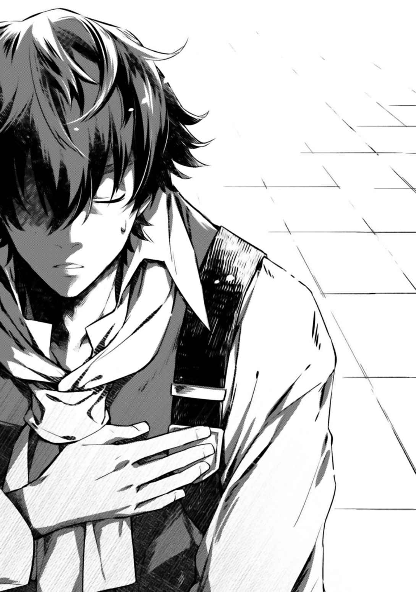
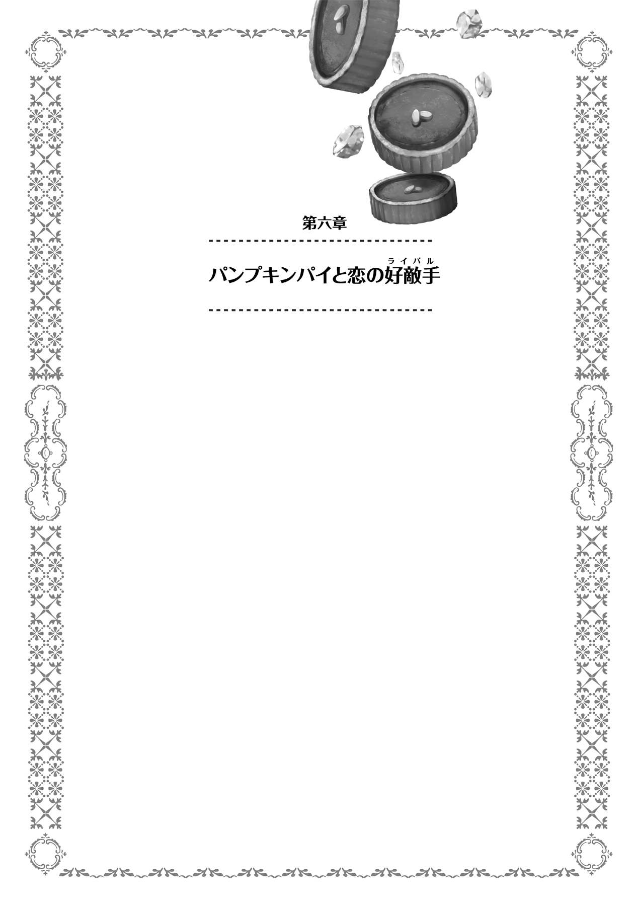
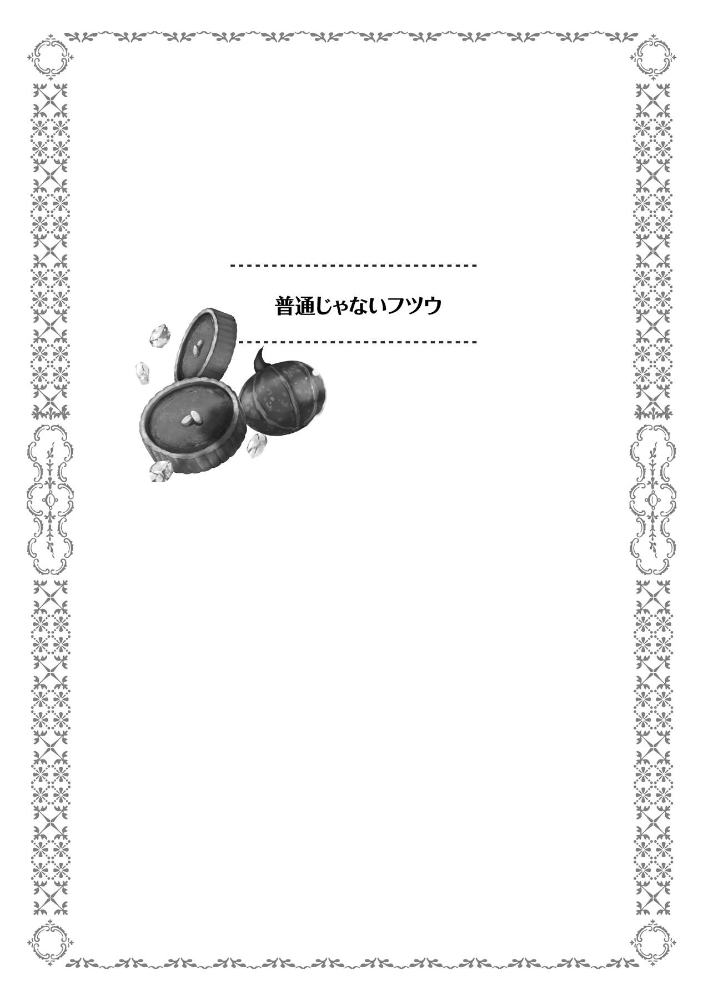
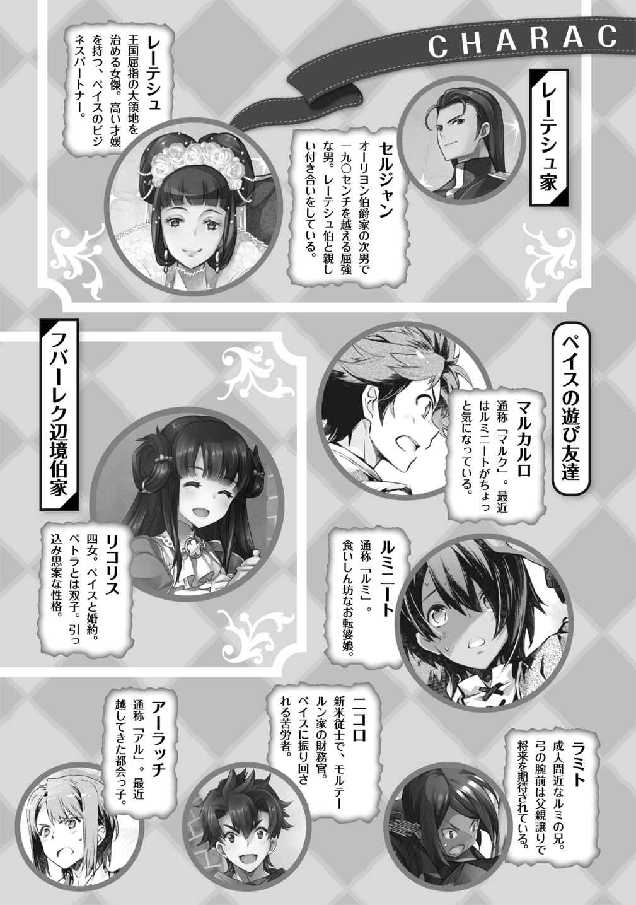

| 【合本版1-5巻】おかしな転生 (TOブックスラノベ) | |
| 古流望 | |
| TOブックス (2018) | |
※本電子書籍は「おかしな転生」１〜５巻を１冊にまとめた合本版です。
ＣＯＮＴＥＮＴＳ
このコンテンツは『おかしな転生』１〜５巻を収録しています。
イラスト：珠梨やすゆき YASUYUKI SYURI
デザイン：ヴァイア Veia

プロローグ 転生したら貧乏貴族
神は存在するのだろうか。
多くの哲学者が悩み、神学者が躍起になり、科学者が否定してきた存在。ある者は太陽にその姿を見、またある者は大自然にその姿を見る。大海原を神に見立てる者もいれば、超越者の存在を信じる者もいる。
そして、時として人の中にもまた神を見ることがある。神に愛された存在として、溢れんばかりの才能に満ちた人がいることで。
神の申し子。人々に、時として畏敬の念を向けられる存在。時として羨望と嫉妬の対象となる存在。天才とも偉才とも呼ばれ、時に畏怖される存在。神に愛された存在は、どんな世界にもいる。スポーツの世界にも、音楽の世界にも、勉学の世界でも。
そして、お菓子職人の世界でも。
◆◆◆◆◆
「さあ、残り時間も後三十分を切りました。各国とも最後の仕上げに掛かっている模様です」
アナウンサーの明るい声が会場に響く。わざわざ日本から欧州まで出向いた彼らが声を張り上げて実況するのは、パティシエ（菓子職人）世界大会の様子だ。最終日も残す所、あと数十分。それでパティシエ世界一が決まる。
「我らが日本代表の最終調整も、どうやら終わりのようです」
実況と共に向けられたカメラの先には、白い服に身を包んだ男たちがいた。男だけの集団ともなれば漂いそうな、むさ苦しい臭いはない。むしろそれとは程遠い、甘い匂いが充満する場。
日本代表に与えられた作業場に、鎮座するのは巨大な飴細工。人の背丈を超えるような甘味のオブジェは、作業台の上にあることで異様な威圧感を与えていた。
繊細にして大胆。技巧の限りを尽くして制作された芸術品は、世界の名を冠するに足るだけの美しさを持っている。
現在の得点では、日本代表が二位。一位との得点差は僅かであり、この飴細工で逆転することは確実だと、誰もが認める素晴らしさだ。
だが、そんな作品を作り上げた職人たちの顔は未だ冴えない。真剣そのものの顔。この飴細工勝負は、作業台から指定の採点場所まで移動させるのが最も難しいからだ。指定の場所に置かなければ、どんなに素晴らしい作品でも得点を付けてもらえない。移動させる途中で落としてしまえば、今まで積み上げてきたものが全て台無しになる。
子供の足でも、五歩も歩けば行ける距離。その五歩は日本中の菓子職人にとって最も重要な五歩になる。十歩。いや、たとえ万歩かけてでも、その距離を無事にたどり着けるのなら惜しくはない。
「三つ数えた所で持ち上げる。慎重に行くぞ。一、二の三!! 」
掛け声と共にゆっくりと持ち上げられた飴の塊が、持ち手にその重量を伝える。重々たる手のしびれは、あと僅かで世界一になれるという重圧もあってのことだろう。緊張で強張る体には、その重さはより一層強く感じられるものだ。じっくり、じっくりと運ぶ。その歩みは亀の如しだ。
いよいよ指定の場所に、作品を降ろす。長かった戦いもこれで終わり。そう、誰もが思った時だった。
『あ、前世記憶の消去設定を忘れているや。ま、いっか。死ぬまで時間もないし』
ふと聞こえた声に、職人は耳を疑う。掠れるような、聞き取り辛い声。だが、ひどく耳に残る、やけにはっきりとした不思議な声。電波の悪いアナログラジオの音を大音量で、しかも耳元で鳴らされたような声。
緊張している時にかけられる大声ほど驚くことはない。咄嗟に、手から作品が滑り落ちる。その場にいた者にとっては、やけにゆっくりと時間が流れる気がした
職人の頭に当たった砂糖の鈍器。彼は、生温いものが頭から流れる様を感じた。事実、彼の頭はあっという間に真っ赤に染まる。血である、と認識するには、鉄の臭いだけで十分だった。甘い匂いに慣れていただけに、やけに強烈な臭いに思えた。
職人は、目の前が真っ暗になった。走馬灯が駆け巡る中で、彼の胸中に浮かんだのはあと少しで叶うはずだった自分の夢だった。
母子家庭に生まれ、
常に菓子と共にあった人生で、いつしか思い描くようになった夢。
──世界一のケーキを作りたかったな──
そして一人の職人が死ぬ。神の申し子と呼ばれたその名と共に。
◆◆◆◆◆
赤ん坊の泣き声が辺りに響く。
「おめでとうございます。元気な男の子ですよ」
産婆から、お祝いの言葉が告げられる。抱きかかえられた手の中には、生まれたばかりの赤ん坊がいた。大事そうに抱えられ、布でくるまれた赤ちゃんが、母親の胸に渡される。
「そうか、男か。アニエス、良くやった」
破顔する父親が、妻にかけた労いの言葉。それに疲れ切った表情で応える女性の腕の中では、布地に包まれた赤ん坊が泣いていた。
「ああ、可愛いなあ。目鼻立ちはお前に似ているようだ。きっと美少年になるぞ」
「ええ、そうね。けど目の色は貴方と同じ。素敵な色......あら？」
「ん、どうした？」
不思議そうな顔をした妻に、夫が声を掛ける。
「いえ、この子、私達の話をじっと聞いているような......」
「まさか。生まれて一刻も経っていないのに、言葉が分かるわけもないだろう」
「......ええ、そうね。そうよね」
そんな取り留めもないやりとり。夫婦の会話を、まるで〝外国語を聞いている〟かのように、じっと赤ん坊は見つめていた。
「あなた、この子の名前はどうしましょう」
「それはもう決めてある」
父親は、母親に抱かれた赤ちゃんを両手で優しく抱える。じっと互いを見つめ合う親子。
「お前の名はペイストリー。ペイストリー=ミル=モルテールンだ」
良い知らせ？ 悪い知らせ？
ぱかり、ぱかりと蹄鉄の音が鳴る。踏み固められた地面の上を馬が歩く。背には立派な身なりの男が乗る。
「どうだペイストリー。お前が将来継ぐことになる領地だぞ。初めて見るだろうが、広いだろう」
男の前には、小さな子供。幼児らしき男の子が、支えられて馬に乗っている。彼らの両側には、やや焦げたような茶色の麦畑が広がっていた。
「ととさま、ムギにげんきがないです」
「お前のような子供でも分かるか。そうだな、我が領地は土地が酷く痩せている。まだまだこれからだが、お前たちにはその分、苦労を掛けるかもしれん」
父は苦笑する。息子の無邪気な指摘が、あまりにも的確過ぎた。
「ムギじゃない物は作っていないのですか？」
「ん？ 小麦以外となると、ライ麦と
「砂糖や果物は？」
「そんなものは作る余裕なんてないな。小麦すら、お前が産まれる前は上手く育たなかったぐらいだ。南の方では自生する物もあるらしいが、ここら辺ではまず育たん」
「じゃあ、甘いものは......」
「よしよし、今度また都に行く用事があったら、土産に買ってきてやるからな」
頭を撫でる父親と、されるがままの息子。お菓子どころか、甘いものすらないという事実に、少年は絶望する。最高の菓子を作りたいという想いは誰にも負けないのに、そのきっかけすら存在しないという貧しさに強い衝撃を覚えた。
息子の顔は、悲哀。のち、決意の表情となる。自分の夢は、貧乏程度で諦めるような軽いものだったのか。否である。貧乏などは職人魂の糧にしてやるという想い。
「それならボクが、いつかここをお菓子でいっぱいの土地にします」
「ははは、夢があって良いことだ。そうだな、お前が大きくなる頃には、ここも豊かにしてみせるさ」
少年が、初めて親に語った夢は、こうして始まった。時にペイストリーが三歳の時のことである。
◇◇◇◇◇
金属同士のぶつかり合う音が響く。
「どうした、そんなものか!! 」
「ぐっ、まだまだぁ!! 」
二人の男が、相対する。その手にはどちらも剣が握られていた。
向かい合って戦う両者のうち、一人は壮年の偉丈夫。傍目から見ても分かるほどに引き締まった体躯。見せびらかすような筋肉ではなく、より戦いに特化しているであろう無駄のない筋肉は、服の上からでも威圧感を与える。頑丈そうな鉄の塊を、両の手の如く自由自在に扱う様は熟練の域だ。
対するもう一人。男、と呼ぶにはいささか幼い。年の頃は一桁。個人差を考えたとしても、大きくサバを読んでどうにか二桁にギリギリ手が届かないぐらいといった風情。額と言わず、体中から汗を飛ばしながら、一生懸命に剣を振り回している。時折、剣を振るった拍子に剣ごと体が泳いでいる様は、まだまだ発展途上といったところだ。剣を使うというより、剣に使われている。
「ほら、また握りが甘くなっている。もっとしっかり握れ」
「はいっ」
「そうだ、良いぞ。自分の手が千切れ飛んでも放さないつもりで握れ。戦場で剣を手放すのは死ぬのと同じだぞ」
「はいっ」
剣を交わす二人。カセロールと、その息子ペイストリー。今は日課である剣術訓練の最中である。
この日課は、息子であるペイストリーが五歳になった時から毎日行われている。愛称でペイスと呼ばれる少年。その当人が我が儘を言ったことから始まったのだが、いつの間にか日課になっていた。
だが、彼のように幼いうちから剣を振るうのは、珍しいことである。盗賊が時折現れ、魔物が
また一つ、少年の体に痣が増える。もつれた足のままに剣を大きく弾かれたため、したたかに地面に打ち付けられる。そんな、平和な時代であれば児童虐待とも言われそうな訓練に、割って入る声が聞こえた。
「大将ぉ〜大将〜、いますか。おお、いたいた。やっぱりここだった」
「何だシイツ。今息子の特訓中だ」
鉄の殺傷武器を振り回す二人を、気にする風でもなく近づいてきた男。コーヒーブラウンのボサボサ頭を掻きながらやってきた、シイツと呼ばれたその男は、今もって息子を可愛がっているカセロールの二十年来の友であり、従士長でもある。モルテールン領の私兵団長という肩書も持つ、腹心だ。もっとも、私兵団の部下はたった二人だが。そのシイツが、微笑みを浮かべてちらりとペイスを見た後、父親の方に声を掛ける。
「大将、そろそろ朝飯の時間です。報告もありますんで、一旦執務室に戻ってくださいよ」
「そうか。よしペイス、今日はここまでだ」
父親は、打ち合わせていた剣をゆっくりと鞘に収めていく。収めた瞬間、その場に息子はへたり込んだ。
「ぜぇはぁ、ありがとうございました」
「うむ、お前も早く汗を拭いて、母さんの所に行きなさい。待たせると、またいつものやつをやられるぞ」
「え、それは急がないと。父様、それでは失礼します」
自分の背丈よりも大きい剣を抱えた少年。それが駆け去っていく様を、父親とその親友は共に同じような目で見送った。微笑ましいものを見る目。
「坊も中々腕を上げていますね。子供ってのは進歩が早い」
「まあな。我が息子ながら、呑み込みが早い。まるで〝一芸を修めた者〟のように、自分なりの理屈で動いている節があるし、それがまた理に適っている。将来が実に楽しみだよ」
「出たね、毎度の親馬鹿が。あまり期待しすぎちゃいけませんよ。五歳の
「ペイスは、十五になる頃には剣で名を馳せているかもしれないがな」
シイツは、自分の親友でもあり、仕える主君でもある男の親馬鹿っぷりに、肩を
その後、むさ苦しい男二人で連れだって、執務室に向かう。とは言っても、執務室という呼び名は、多分に皮肉を含んでいる。
元々、モルテールン領は隣国との緩衝地帯という意味を持つ王家直轄地の一つだった。土地は痩せ、小麦も碌に育たず、赤茶けた荒野が広がる土地。それを、先の戦争で武勲をあげた騎士に下賜することになったのだが、その騎士こそカセロールだった。以後、彼は貴族号を持ち、モルテールンの家名を名乗るようになったのが
今でも決して豊かとは言えない土地であり、従って領主の館と言っても実に質素。騎士らしい素朴極まりない作りとなっている。早い話がボロ屋だ。余所の領地であれば、ちょっと余裕のある農家なら同じぐらいの家に住んでいる。
それでも、貴族らしくあるべきとの考えから、部屋数だけは多い。数ある部屋のうち、多分扉と言えなくもないような木の板と、一点豪華主義で揃えたソファーと応接机と執務机がある部屋を、揶揄を込めて執務室と呼んでいるのだ。泥棒に入られて金を盗まれる心配より、ソファーと机を燃やされる方が心配になる、とはシイツの弁である。
そんな、自嘲も含んだ呼び名である執務室に入った二人。この部屋どころか、領地全てを文字通り所有する騎士爵と、その腹心。
勿論、
「さて、報告事項だが、良い報告と悪い報告がある。どっちから聞きたい？」
「朝飯もまだのうちから、悪い知らせを持ってくるなよ。と言いたいが、どちらにしても聞かないわけにはいかんか。じゃあ良い知らせから聞こう」
「ん、それじゃあ良い知らせ。例の豆畑の収穫の件。坊の言った通り、かなりの収穫量が見込める出来だ。このままいけば、去年と同じく冬越しの心配をしなくても済みそうな具合だな」
「ほほう。それは素晴らしいな」
モルテールン騎士爵は、名領主の名も高い。不毛の土地を人が住めるように開墾し、整備し、整地して耕し、曲がりなりにも食える土地にした為だ。今では四十人規模の村を三つ抱える、いっぱしの領地貴族となっている。更に近年は伸張著しく、その名声に拍車が掛かっている。新しい試みとして三年前から始めた豆作が特に有名で、昨年の全国的な飢饉でも、餓死者や身売りを一人も出さずに乗り切った事例は、称賛をもって
そんな騎士爵の施策の多くが、実は息子発案によるものだ、と知る者は意外と少ない。
「で、悪い方の報告だが」
「聞かずに済みそうもないな」
雰囲気が変わる。共に武人である二人が真剣な表情になる様を例えるなら、
「ああ。レーテシュ伯爵の所で、盗賊討伐に失敗したらしい。討ち漏らしが相当数、うちの方角に逃げたとお触れが回ってきた。まあ、お触れの内容は無事に追い払った、と自慢げなものだったがな。討ち漏らしは、こっちとしてはいい迷惑だ」
「こっちに来るとしたら、どれぐらい準備に時間が掛けられる？」
「お触れの日時から、真っ直ぐうちを目指してくるなら十日ほど。周りを荒らしつつ来れば、一月以上の二月未満って所か」
「厄介な」
貴族の義務、と呼ばれるものが幾つかある。その中でも絶対遵守を暗黙の了解とする二大義務が存在する。
一つは国王へ忠誠を尽くす義務。これは、貴族の特権的地位を保証しているのが王権の権威と権力である以上、当たり前の義務だ。この義務に反すれば、他ならぬ国王から貴族の地位を取り上げられ、下手をすれば罪人となる。
そしてもう一つは、国防の義務。国王から領地を貰い、特権や給金、徴税権による収入を与えられているのは、いざという時の為の軍事力を養う為だ。自身のみの武力を提供する準騎士爵から、国王に次ぐ動員兵力を常備する公爵まで。その義務は等しく存在する。日頃から有事に備え、任された地や与えられた職で自身の権限の範囲内で職分の安定に尽くす。そして、万が一ことあれば、備えを惜しみなく使う。その義務があるからこそ、領地貴族は税を集めることが許され、職能貴族は給金を与えられている。
盗賊に対応するのも、貴族の義務からすれば必然である。
だが、必ずしも成功と呼べる成果で飾れるとは限らない。そもそも、成功と失敗に基準が無いからだ。災害があった時、被害者の大半を救出し、災害救助は成功であったと胸を張った所で、亡くなった人間が一人でもいれば、失敗だと見る遺族もいるだろう。有事とは、成功と失敗の線引きが難しいものである一例と言える。
今回の伯爵からの連絡も、伯爵側から見れば成功の部類に入る成果だ。領内を荒らしまわる盗賊を、領外に追い払った。今後領民がこの盗賊に悩まされることが無いとするなら、万々歳の成果と言える。伯爵領だけを見れば。
対し、追い払われた盗賊たちが新たに荒らしまわる先の責任者。新たに被害に遭う者からすれば、明確な失敗に見えるだろう。右から左に荷物を置き換えただけで、片付けたとは言えない、というのもまた正論だ。モルテールン騎士爵領から見れば明確に後者である。今後被害に遭うであろう見積もりだけでも頭痛がしてくる。
「それで、どれぐらいの規模で逃げ出したんだ？」
「およそ五十人規模とのことだ」
「うちに来られると、お前では手に余るか？」
「俺を含めて三人で、どうやって五十人と戦うんだよ。まともにぶつかるなら話にならんよ」
五十人規模というなら、相当にでかい盗賊団だ。規模だけ聞けば、レーテシュ伯爵が追い払うのが精一杯だったのも頷ける。納得はし辛いものもあるが。
「村々の男連中を集めて、木槍の武装や投石をさせても無理か」
「それで集めた所で精々三十人。
「閉じこもって時間を稼ぎ、私が援軍を呼んでくるのは？」
「大将ならそれもできるのは知っているが、問題点も多いと考える」
「何故？」
「伯爵は面子もあって援軍は難しい。自分たちでは追い払うのが精々だったのに、うちで討伐されてしまえば無能の
モルテールン騎士爵が、〝伯爵は失敗〟と断じた理由がここにある。伯爵領の周囲には小領主しかいないという事実があるのだ。無論、騎士爵自身の領地も、未だ貧しく、常備する専任従士は今この場にいるシイツを含めて三人である。到底、伯爵でも手に負えなかった盗賊団の相手が務まるとは思えない。
「王都なり大貴族なりに援軍を願いに行くのは？」
「まだうちが襲われてもいないなら、腰は重たいだろう。ましてレーテシュ伯爵閣下が追い払ったと自慢している矢先にそんなことをすれば、伯爵に恨まれるぞ？」
「恨まれるぐらいで家族や領民を守れるなら恨まれても構わんが、うちは辺境だし元々援軍は期待薄だよな。......それでも無策に放置できる問題ではない」
「俺も死にたくないから、大将に任せるさ」
親友同士、そこには互いの力量への信頼がある。〝執務室〟の部屋の中で、お互いに笑いあう声が、薄い木壁を素通りして隣の部屋まで漏れていた。
「それで、良い手はあるのか？」
シイツは、一度真顔に戻って聞いた。カセロールは、領主らしい顔で頷く。
「最悪俺が出張るという手もあるが......」
「大将自らってのは最後の手段だな。大将が死んだらそれまでだしよ」
「それ以外だと、まあ無難な所だと
「やらないよりマシって感じだな」
眉間にしわを寄せる二人。実際問題、自分達より遥かに大きく豊かな伯爵領でも手に余った問題である以上、たかだか新興騎士領主に対応できると考える方が無茶である。
「一つ、俺に考えがあるんだが」
「何だ？」
部下からの声に、怪訝な顔を向けるカセロール。
「どのみちどこかで一か八かの勝負が必要になる。ここは一つ、坊を
「どういうことだ？」
「賭けに勝てば、もしかすれば大将並みに活躍できるかもしれん。俺の〝勘〟が、そうした方が良いと叫んでいるんだが」
「お前の〝勘〟を無視するわけにはいかんが......」
息子を切り札にする。そのことに、騎士爵には若干の戸惑いがあった。そもそも意味が分からない。幾ら才能溢れる息子とはいえ、たかだか七つの子供に戦いを左右できる能力などあるはずがない。そんな魔法のようなことができるわけがないだろう。
だが、そこでカセロールは魔法という言葉に引っ掛かる。ふと、シイツの言いたいことに思い当たったからだ。呟いた一言は、意外とはっきり聞こえた。
「聖別の儀か」
「ご名答」
この日のカセロールの決断は、世界を大きく動かす最初の一歩になった。
女性は強いのです
「お腹すいたぁ〜。母様、朝ごはんまだぁ〜」
椅子に座った少女が、不満げな声をあげる。日は既に顔を出し、早朝をやや過ぎた時間。
朝食の時間としてはまだ若干早めではあるが、モルテールン家ではどちらかと言えば遅めの時間になる。武人の家は、朝が早いのだ。
先ほどから、自らの空腹を訴えている少女は、ジョゼフィーネ。この家の五女で、ペイストリーからすれば一番下の姉になる。弟とよく似た銀髪をしているが、やや茶がのっている為にパッと見ただけでは金髪に見える。高めの鼻筋の割に、上がり気味の鳶色の目が勝気そうな印象を与える少女であり、当年とって十二歳。育ち盛り、食べ盛りの時期であり、朝食の要求は至極もっともなものだ。一日二食が基本の社会では、朝ごはんを抜くなどという現代人の
その少女の隣。下座に当たる席には、末っ子の長男坊であるペイストリーが座っていた。彼もまた、自らの腹が背中とくっつきそうになっているのを我慢している。ペイストリーの場合は、日も昇らないうちから父親に剣の特訓を受けているから腹が減る、という点が姉とは違う。
長男として、貴族の跡継ぎの役割を教えてこられたペイストリーは、何故自分たちが空腹を我慢させられているかをしっかりと理解していた。未だ空席となっている上座に当たる席。すなわち、家長の席の主が執務中だからだ。ペイスがこの世界に前世の記憶とも呼べるものを持ったまま生まれ、幼い身体と自我を統合させていく中、真っ先に戸惑ったのはこの封建制に近い身分制度である。家のことを決める決定権は全て家長にあり、家人はそれに従うしかない。食事の時間さえ家長の都合であり、家長の食べる時間が食事の時間なのだ。最近は慣れてきたとも思えるが、やはり腹の虫が鳴いている中待たされれば、不満の一つや二つは出てくる。
「遅くなった。早速朝食にしようか」
ようやく姿を見せた父。当然、座る席は家長の席。神と精霊に食事の感謝を言い、祈りを捧げたのちに食事が始まる。待ちくたびれた、とばかりに姉は食事を掻き込む。勿論、ペイストリーもゆっくりと味わうようにして食べ始める。
食事の内容は、質素そのもの。豆と葉野菜のスープ。それとパン。家長のカセロールと跡目であるペイスには干しイチジクも付くが、ペイスはそれをいつも姉にあげている。現代日本人の目から見れば、不平の出そうな食事にも思える。
だがこれでも最近はモルテールン領の食糧事情が改善してきているらしく、豆がたっぷりと入ったスープになっている。もはやスープというより煮豆に近い。領地開拓初期の頃は、ほとんど水と変わらないスープだったそうだ。
昔のことを今も鮮明に覚えている騎士爵からすれば、朝から子供たちを腹いっぱいにさせられるようになったことに感慨すらある。たとえパンが硬い黒パンであっても。
カセロールは一瞬、微笑ましさと誇らしさに口が緩みそうになったが、食事が終わるまでに話を切りだすことにした。
「ペイス、剣の稽古は楽しいか？」
「はい、ようやく何か掴めてきた気がします」
「そうか」
ペイストリーは、父の突然の質問にも笑顔で答える。剣を振るのには全身の力が要る。それが、おぼろげにある前世の記憶に助けられ、日毎に身になりつつあるのが実感できるのだから、楽しくないわけが無い。前世の記憶。菓子職人の修行時代に、生地をこねるのに腕力だけでこねようとするなと叩き込まれた。そのせいか、腕だけでなく体重も使うコツを体で覚えていたのが実に役に立った。
「私の目から見ても、ペイスもそれなりに頑張っているようだ。そこで、急な話になるが、三日後。ペイスに聖別の儀を受けさせようと思う」
「聖別の儀？」
そう言われて、ペイスは首を捻った。これは、別にペイスが聖別の儀を知らなかったからではない。自分にはまだ早いのではないか、という当然の疑問を持ったからだ。
聖別の儀とは、神と精霊に成人を報告する儀式のこと。現代日本でいう所の、成人式のようなものだ。宗教的な意味合いとしては、七五三のように子供の成長を祝う意味もある。
この世界では、おおよそ十三歳から十五歳で成人と見なされる。成人を迎えるに相応しいかどうかは家長が判断し、成人となれば家人として責任も出てくる。或いは家を出て別個に家を建てることも出来るし、結婚できるのも儀式を経た者だけだ。
「あなた、ペイスにはまだ早いのではないかしら？」
妻の問いかけに、カセロールは頷いた。確かに、世間一般と比べても、明らかに早すぎると思われるのは仕方がない。それゆえ頷いて見せたのだが、結論を変えることもなかった。
「ペイスの聡明さはお前も知っての通り。剣の腕も、咄嗟の一撃を防げる程度にはなった。碌に剣も習わず遊んでいるそこいらの子弟には負けん程度だ。文武に関しては、成人に足ると私は判断している。他にもやむを得ない事情はあるが、これは私が決めたことだ」
「そうですか。あなたが決めたのなら仕方ないわね」
母親からは、諦めとも残念さとも思えるため息が出る。四十も半ばに手の届きかけた年の割に、その憂いを帯びた容貌には美しさが滲む。
ペイスは、母親似の顔立ちであり、小さい時から物分かりの良い素直な子であった。両親の愛情をそのまま受け取った息子である。父は勿論のこと、母も相当に溺愛していた。それ故、早すぎる息子の成人には残念な気持ちがあったのは、二親とも同じである。もう少し子供の時間が続いて、可愛がってやれると思っていた。
「三日後に出かけるから、その為の準備をしておいて欲しい。アニエスもジョゼフィーネも、頼まれてくれるか？」
家長の言葉に反応したのは、ペイスの母と姉であった。ギラリ、と目が光ったように感じたのは、ペイストリーの気のせい。のはずだ。
「まあ、うふふふ。任せて。何処に出ても恥ずかしくないように、しっかり準備するから」
「母様、私も手伝うわよ」
ふふふと怪しく笑う女性陣。その様子に、ペイストリーだけでなく父親も若干引き気味だ。
息子は父親に、助けてくれと目線を送る。親譲りの鳶色の目が、僅かに涙目になっている。愛息の弱弱しい様子など、普段はあまり見られないだけに心が揺れる騎士爵ではあったが、もはやここに至っては、彼であっても妻と娘を止めるには
諦めろ。言外にそう応える父親に、ペイスは端整な顔を歪めた。
ペイストリーの母と姉。二人がここぞとばかりに気色ばむのもそれなりの理由がある。
貴族にとって、自領の外に出るというのは、国で言えば外交という意味合いがある。目的が親善であろうと、外遊・観光であろうと、交渉であろうと、視察であろうと、本質は変わらない。会社の社長が社外で活動すれば、大抵が営業活動の一環になるのと同じようなものだ。領地の総責任者か、それに近しい人間が、他人の領地に行くのだ。些細な揉め事すら、下手をすれば軍事的な衝突になり得る。それだけに、礼儀作法の順守と、
その最たるものが服装だ。第一印象の七割は見た目で決まると言われるように、パッと見て受ける印象というのは馬鹿に出来ない。軍装で出向けば軍事的な意図と立場を強調され、礼装で出向けば公式な交渉訪問となる。高そうな服装は領地の財力を示し、財力のある人間には人も寄ってくる。逆に貧相な服装だと、中身が幾ら立派でも低く見られる。何故なら、他人の縄張りへ訪問する時に、最低限の衣服さえ整えないような人間は常識知らずと見られるし、そもそも服装を整えられないのなら貧しさの証だからだ。
例えば、サラリーマンが余所の会社に出向く時、股引に腹巻の便所サンダルで出向けば、常識知らずと思われるのと同じだ。スーツぐらいは最低限の常識と言えるし、スーツや時計のブランドがハッタリになったりする。貴族社会も同じで、最低限の見栄というものがあり、そこにどれだけ上積みを載せられるかで力関係を図るのだ。
すなわち、息子の服装を吟味するのも、母の〝内助の功〟と言える。姉も、いずれ別家に嫁ぐ身として、貴族の妻の役目を学ぶのは必須である。貴族家の女性として跡取りを上手く飾り立てるのは、大事なお役目だ、と張り切るのは至極当然と言えた。
では、何故ペイストリーが涙目になっているのか。日本人的な感覚で、着飾るのが苦手なのか、と言えばＮＯである。世界の舞台にも立てる職人であれば、目立ってなんぼ。まして菓子は、見た目も重要であるのは言を
ペイスが泣きそうになっているのは、自分が女性陣から可愛がられているからである。もっと正しく言うのであれば、可愛がられすぎている。
「リボンで髪を飾るのはどうかしら。きっと可愛らしくなると思うのよ」
「母様、それならリリアナ姉様のドレスが似合います。身体に合わなくなったからと私が貰った、あのフリフリがいっぱい付いたピンクのドレス」
「あらあら、良いわね。素敵ね。でもそれならお化粧もさせておいた方が良いかしら」
ただでさえ娯楽の少ない田舎。愛くるしい子供を着せ替え人形にするのは、この上ない極上の娯楽である。
「あの、母様に姉様、僕は男なのですが......女装は勘弁してください」
おもちゃにされる被害者の犠牲を無視すれば、の話だが。
「可愛いから良いのよ。もう食べ終えたわね。早速準備しましょう」
「誰か助けてぇ!! 」
母と姉に連行される息子を見送ったカセロール。気の毒そうな目をしてはいるが、止めはしないようだ。
「あ、しまった」
ふと、何か大事なことを失念していたように呟く。事実彼は、部下から大事なことを言われていたと今更ながら思い出したのだ。
「ちゃんとした礼服が明日には届くことを言い忘れていたな」
ペイストリーの受難は、明日まで続きそうだった。
夢の世界
夢、と言うのは人それぞれである。
大きくなったら何になりたいか、と聞かれて答えるのも夢であるし、大人になったら何をしたいか、と聞かれて答えるのも夢である。
ペイストリー=ミル=モルテールンの夢は、いつか自分が理想とする最高のスイーツを作り上げることである。その為の
男の子の夢、などというものは大抵相場の決まっている物だ。勇者になってドラゴンを倒したいとか、騎士になって大事な人たちを守ってみせるとか、或いは賊に襲われている幼馴染を颯爽と助けて惚れられてウハウハとか。半分ぐらいは妄想と言われてもおかしくないものでも、夢と言われる。
女の子の夢、というのも色々とパターンが決まっている。格好良い王子様と出会って見初められてお姫様になるとか、凛々しい女騎士に自分を重ねてみるとか、或いは食べても太らない体質になって、好きなだけ美味しいものを食べまくるとか。これまた半分ぐらいは妄想と言われてもおかしくない。
では、親の夢とは何だろうか。人が生き物である以上、子供を産み育てるというのは尊ばれるべきものだ。
誰もが親になる可能性がある。とりわけ、女性にとっては出産というのは一大事であるし、産んだ以上はそれから先を考えるのは当たり前のこと。どうしても子供を勘定に入れて将来を考えてしまう。親であるからには、子供抜きの将来の夢は想像しにくい。であるなら、やはり親の夢とは子供に関するものが多いのではないか。
その答えは、一人の女性を見れば明らかだ。彼女の、親になってからの夢は〝いつか息子に最高の晴れ着を着せること〟なのだから。言わずと知れた、アニエス＝ミル=モルテールン騎士爵夫人。ペイスの母親だ。彼女は目下、夢の実現に向けて全力疾走中である。目的の為に手段を選ばず、全力になる様は、息子ととても良く似ている。妙にそっくりだ。
「こっちの上着はどうかしら。うん、良い感じ。ああ、でもそれだと靴下の色と少し合わない気がするわね。でもでも、この靴下は縫製が丁寧だから見栄えもするし、捨てがたいのよねぇ。先に靴を合わせる方が良いのかしら。う〜ん、サイズの合う靴があるかしら。あぁ迷うわぁ」
子供の服を着せ替える、というのは、母親にとっては楽しいものだ。着せ替え人形で遊ぶのと良く似ていて、〝自分好みの格好〟をさせることには、物作りとよく似た感動がある。自分では着られないものでも、息子にならば着せることが出来る。最高の菓子を作る職人の気迫にも似た、最良の〝男の子〟を作ってみせると意気込む母の凄味。つくづく、妙な所で瓜二つの〝生き写し〟だ。最も良い組み合わせを探す、パズルにも似た楽しみを、彼女は今この瞬間も満喫中である。
抵抗虚しく流されてしまった息子は、既に諦めの極致にあった。もう勝手にしてくれ、というやさぐれの気持ちだ。しかも、それに拍車を掛ける存在がいる。
「母様、こっちの靴はどうかしら。私が昔履いていた靴だけど、ペイスには合うんじゃない？」
「あらあらジョゼ、それは貴女が大事にしていた靴じゃない」
「良いのよ。弟の晴れ舞台に、貸してあげるわ」
「ああ、なんて良いお姉ちゃんになったのかしら、ジョゼ。素敵だわ」
母親が、大袈裟なリアクションと共に抱きしめたのは、自らの娘。五女のジョゼフィーネである。ペイストリーからすれば一番年の近い姉であり、上の四人は既に嫁に出ているので、この家にいる唯一の姉になる。
ジョゼフィーネことジョゼは、母からの過剰なスキンシップには最早慣れっこ。というより、物心ついてからの習慣であるから、当たり前のこととして受け入れている。母娘のスキンシップは、男の子を抱きしめるよりは、まだ見る方の目にも優しかろう、とペイスは思った。いつもは自分が被害担当なだけに、そのまま母親を抱き付かせたままにしてくれるなら幾分かありがたい。
だが、そのままでは一向に作業が進まないので、やむなく彼は姉に声を掛ける。
「ジョゼ姉さま、ありがとうございます」
「お礼なんていいのよ。ペイスも頑張ってね。私は付いていけないけど、お父様の言うことを良く聞くのよ」
「はい、大丈夫です」
モルテールン家の姉妹と言えば、美人で名高い。父親は精悍な顔立ちで、母親が美人であるのだから、その血を受け継いだ彼女たちが美人なのは当たり前と言う人もいる。
そんな兄弟姉妹の中でも最も母に似たのは、悲しいことに末っ子の長男坊であるのは甚だ余談である。
そんな姉妹たちが、皆揃って可愛がっている生き物がある。別にペットを飼っているわけではなく、彼女たちの弟がそれだ。兄弟姉妹と言えば、下の子供は不遇な境遇となる場合が多い。とりわけこの世界は封建制にも似た社会であり、上が下を従えるのは当然と見る常識があった。
だが、彼女たちは弟をこの上なく可愛がった。その理由は、弟が非常に素直で賢く、そして愛くるしい生き物だったからだ。サラサラの銀髪。プニプニとした頬っぺた。くりっとした目。小柄な手足。どれもこれもが、目尻を下げるに十分な要素だ。そして、その仲良しな様を両親が褒めちぎるものだから、一層拍車がかかる。やられる方は嫌で嫌で仕方がないのだが。
ペイスにとって、姉達との関係が良好であるのは幸運であった、と言えるが、今〝だけ〟は不運とも言えた。
「母様、このドレスなんてどうかしら。ペイスに似合いそうじゃない？」
「まあ可愛い。そうね、このドレスを着せてみるのも良いかもしれないわね」
「母様、姉様、僕は男なのですが......」
「良いのよ、似合うんだから」
「そうね、ちょっとだけ着てみなさい。ね、ちょっとだけだから」
姉と母の強力タッグに、抗うことのむなしさを感じるペイスではあったが、流石に女装は避けたい思いがあった。自分は男だ、という確固たる思い。
「いっそ下着も女物にしてみる？」
「じゃあ私が脱がす!! 」
「やめてくれぇぇ〜〜!! 」
その日、日が暮れるまでの攻防は、ペイスを大いに疲労させるものであった。
◇◇◇◇◇
「はあ」
「どうした息子よ。そんな疲れた顔をして。折角の晴れ舞台なのに」
これから本村の皆に見送られて出かける晴れ舞台だというのに、浮かない顔をした息子の現状。それを見て、連日の着せ替え人形扱いのせい、と看破するだけの眼力は持っている。だが、息子に同情はするものの、服に関しては諦めろとしか言えない。事情が事情だけに、母親の興奮も仕方の無いことだ。
全体的には右肩上がりの活況とはいえ、未だ良く言って発展途上、悪く言えば手つかずの未開地を多く抱え、人口も収入も少ないモルテールン騎士爵領では、どの家でも服を作る、或いは買う、というのは贅沢なことだ。それは、領主である自分達の家も同じであると彼は理解している。無論着たきりではなく何着かで着回しはするものの、一つ服を買えば、それをかなり長い間使い続けるのが当たり前だ。若い頃に手に入れた服を死ぬまで使い続けるというのも珍しくないし、それを相続することまである。特に礼服等はその傾向が顕著で、従って丈夫な服が好まれる。日本の和服でも、着物を祖母から母、母から娘と受け継いでいくような伝統がある。それと同じような風習は、何処にでもあるものだ。
大量生産大量消費の時代であれば考えられないことではあるが、服とは、大事な個人の資産。それもかなりの高級資産だ。そこには領主も領民も無く、当たり前で常識的なことと言える。
例外が、子供服である。子供の成長とは日進月歩であり、特に成長期ともなれば、ものの
そこで多くの場合、子供の服を兄弟同士、或いは村の家同士で融通し合うという互助の風習が生まれる。一つの家でそんなに数を買えるわけでも無いので、近所の家同士で、丈が合わなくなったような服をより小さい子供のいる家に譲っていく。村ぐるみの子供服ローテーションだ。中には自分が小さい時に着ていた服が、つぎはぎだらけになった状態で自分の子供に回ってきた、ということもある。貧しい領地の酷い家になれば、小さい子供が裸でいたりするのだから、それに比べれば服があるだけ恵まれているとも言える。
そのローテーションで、一等一番の最初の始めに〝新品〟を着るのは誰か。大抵の場合、一番身分の高い〝領主の子〟である。これは、領内の序列を明確化し、子供にでも身分の上下を理解させる為の方策という面もあり、何処の領でも行われている風習だ。仮に小金持ちがいたとしても、新品を遠慮して新古品を買うということもあるぐらい一般的と言える。それだけに、今日この日の為の新品の晴れ着を、周りの人たちから羨ましそうに見られるのは当然であると言えた。そして、その誇らしい成長の成果披露を、母親が一日千秋の思いで待つのもまた当然であった。
「王都に行くんだって」
「へえ。それであんな格好しているのか」
「おい、見てみろよ。あのボタン、凄く細かい細工がしてあるぜ。あれ、お館様の紋章ってやつかな。高そうだ」
「スゲエ。沢山付いているんだから、一個ぐらいくれないかな」
憧憬のまなざしも眩しく、同世代の少年少女達がペイスを見つめる。それどころか、本村の連中の多くが見つめている。そうなるだけの説得力が、皆の目の前にあった。凛々しくも美しい顔立ちに、風にたなびく煌びやかな銀の髪。それに見事に調和した青みがかった晴れ着。前ボタンで留める形の上着は、着る人間の細身な体型に合わせて腰の辺りで微妙な括れがある。そのせいか、すらりと引き締まった印象を与える。ズボンには一切の皺が無く、折り目も正しくきっちりと裾丈が揃えてある。靴だけはやや女物の気配がするが、高級品であることは見て取れる。上から下まで、どこからどう見ても良家の御令息としか見えない、素晴らしい仕立て。それに向けられる無垢な眼差しも、やんちゃ盛りの少年少女たちには無遠慮なからかいのネタでしかなかったらしい。
「良いなぁ。俺もあんな風にカッコイイ格好して王都に行ってみたいよ」
「無理だな。それだけは絶対無理だ」
「なんでだよ。俺だっていつかあんな服を着られるようになるかもしれないだろ」
「それでも無理さ。お前があんな良い服を着ても、中身がお前ならどうあがいても着飾った
「んだとコラァ!! 」
「へっへ〜んだ、ここまでおいで」
未だに幼さが抜けない少年たちは、あっという間に騒がしくなる。やいのやいのと
無論、幼いレディ達の目にも憧れの色があるのだが、少年たちのそれとは若干色合いが違う。身近な〝私の王子様〟に対する、可愛らしいおしゃまさんだ。黄色い声で騒がしくなってきた所を、これまた母親たちに宥められている。騒がしい娘は坊ちゃんに嫌われるよ、という心温まる冷やかしと共に。
こうして皆が騒がしくも集められたのは、見送りの為だ。そう、集まったのではなく集められたのだ。それは、息子を自慢したい領主の親馬鹿という一面もあったが、それ以上に領内の統治の為に必要な行動という面が大きかった。
このモルテールン騎士爵領は、今の当主であるカセロール＝ミル=モルテールン騎士爵が一代でここまで大きくしてきた新興領地である。元は王家所有の荒地と山脈であり、隣国との緩衝地帯という意味合いのある場所として知られていた。地理的に国内の他領とは交流し辛く、また野獣やらの巣窟で統治が難しく、それでいて下手に手を出すと隣国から要らぬ圧力を受けるが故の緩衝地帯。悪く言えば放置された不干渉地帯。雑草すら中々生えない荒れた土地に、他領よりも明らかに少ない降雨量。放置されるのも当然の土地である。貰っても嬉しがる人間がおらず、さりとて仮想敵にくれてやるわけにもいかない土地。
そこに領地を得たのは、カセロールが類まれな武勲を上げたという理由と、もう一つ〝彼でしか治められない理由〟があったからだ。その理由が隣国への強力な抑止力となっていると共に、他の各領から孤立しているに近い僻地であり、難治を極めるこの領内の統治を可能にしていた。
それを領民には機会あるごとに魅せつけ、求心力とすることで領内の安定を図っているのだ。一種のデモンストレーションである。
その理由とは、万人に一人と言われる稀有な能力。ずばり『魔法』である。
「それじゃあ皆、行ってくるよ」
そう言って息子と共に、人の輪から離れていく領主。そこには責任感を背負った男の誇らしさがある。
「行ってらっしゃい、あなた。ペイスも向こうでは気を付けるのよ。知らない人に付いて行っちゃ駄目だからね」
「行ってらっしゃいませ、お館様。お早い御帰りをお待ち申し上げております」
「ペイス様〜俺にお土産忘れないでくれよ〜」
「この馬鹿のお土産は忘れても良いですよ〜。俺には忘れないで下さいよ〜」
口々に見送りの言葉を掛ける人々の前で手を振りつつ、カセロールはペイスの肩に手を置く。
「行くぞ」
「はい、父さま」
その言葉と共に、その場から二人はいなくなる。一切の痕跡すら残さずに消え失せた、ように見える。事実、そこには何事も無かったような無人の空き地があるのみであった。
「相変わらずご領主様の魔法は凄いな」
「あれ、なんて言うんだったっけか？」
「瞬間移動とか言うんじゃなかったか」
「そうそう、それだ。しょんかん移動」
「阿呆、瞬間だ、しゅんかん。お前の耳はゴブリン製か」
「んだよ、だからそう言ったじゃねえか」
先ほどまではペイスの衣装の話題で騒がしかったが、今度は騎士爵の魔法で騒がしくなった。自分たちのトップが、余人に代えがたい才能を持っていることを改めて実感している所だ。それを誇らしげにしている領民が多い所を見れば、モルテールン騎士爵は善政を敷いて慕われているのだろう。満足そうに頷きながら、皆自分の家に帰っていく。
その中で一人。いや二人。いつまでも領主と次期領主が消えた場所を見つめる女性がいた。アニエス＝ミル=モルテールン騎士爵夫人とその五女ジョゼフィーネである。三々五々自分たちの家に帰っていく人々の中で、何故か怪訝そうな顔をしていた。二人とも、しきりに首を捻っている。
そして彼女達は、自身の中である重要なことに気づいた。母はそれを伝える相手として、すぐ傍にいた娘、ジョゼフィーネに声を掛ける。図らずも、ジョゼもまた同じことに気づいていた。
「ねえジョゼ」
「はい、母様」
母娘の目が、お互いに何を言おうとしているかを悟る。二人が発した言葉は、流石に親子というだけの見事な一致を見た。
「やっぱりペイスには女装の方が似合う」
ペイスにとっての悪夢の日々はまだまだ続きそうだった。
王都
「うわぁ」
ペイスは、思わず声をあげた。驚嘆を含みながらも、その意味は感動に近い声。
「どうだペイストリー、ここが王都だ。大きいだろう」
「ええ、凄いです。こんな大きい町は初めてです。人が沢山いますね」
少年の眼前に広がっていたのは、二百年に
艶やかな唇をやや開け、目を見開くペイスの姿は、年相応の子供らしさと愛嬌がある。それを父親は微笑ましく思いつつ、はぐれない様に手を引いていた。ペイス自身も、それをありがたいと思いつつ、あっちをきょろきょろ、こっちをそわそわ。正に、おのぼりさんそのものの様子。中央広場の市までくれば、父親の手を振り切りそうなほど騒ぎ出す。はしゃぐ子犬のような有様である。
「どうやら今日は三日市らしいな」
「何ですか、それは」
「決められた露天商以外が市で売るものを、日毎に取り決めているのだよ。七日で一巡り。一日目は武器や防具の鉄市。二日目は布市。三日目は食べ物で、四日目は樽市。木製品全般だな。宝飾品や雑貨も売る日も決まっている。そうしないと、収拾がつかなくなるからね」
「へぇ。あ、父さま、あっちに人が集まっていますよ。行ってみましょう」
「はは、ダメダメ。まずは用事を済ましてからさ」
「ちぇ。それにしても良いものがいっぱいあるなぁ」
とりわけ、少年の目を引くもの。それは、黒砂糖と果物である。自分の故郷でもあるモルテールン騎士爵領は田舎というのもおこがましいほどの貧村ばかりなのだから当然とも言える。生まれてすぐに前世の記憶と今の自分が混然一体となった彼にとってみれば、ちょっとした不作が有るだけで餓死者の出かねない土地は衝撃だった。自分の夢である菓子作りよりも、まずは日々の食べ物をと、豆や麦や肥料の研究に勤しんできた。その甲斐あって最近では少々の凶作の年でも無事に越せる程度には豊かになってきている。
事実、昨年の冷害では近隣諸領が軒並み不作にあえぎ、餓死者や身売りが相次いだのに対し、モルテールン騎士爵領からは一人の餓死者も身売りも出さず乗り切っている。これぞ名領主、と騎士爵の評判はうなぎのぼり。彼の親馬鹿の異名も絶賛拡散中である。ペイスは、現在も地道な研究と領地改造を父と共に行っていた。
それでも夢を忘れたわけではない。いつか最高のスイーツを作りたいと思っているのだから、砂糖や果物に目を奪われるのは至極当然と言えた。目指す所は、領内をお菓子の国にすることだ。ただし、楽しそうに目線を飛ばしまくる今の様は、ただの子供そのものであるが。
「父さま、あれは何ですか？」
「あれはボンカだな。北の方で採れる果物らしいから、ここら辺で見かけるのは珍しいものだ。酸味のある味だそうで、私も食べたことはそんなに無いから、帰りにお土産として買って帰ろうか」
「是非そうしましょう!! （うぉぉ、リンゴぉぉ。それも旨そうなリンゴ。この世界にもあるとは感動だ。あれでアップルパイでも作るか。それともタルトか。いや、まずは砂糖漬けを試してみるか。しかし砂糖はこっちじゃ贅沢品だし我が儘も言い辛い。いっそ養蜂でもやって蜂蜜を手に入れて、漬けてみるか？ まてまて、まずは生でどんな味か試すのが先だろ。どの程度酸っぱいか。甘味が強ければ使い勝手も多い。これはお土産に必須じゃぁ!! ）」
内心の狂喜乱舞を、一応は隠せているらしい。単に物珍しさからはしゃいでいる少年、と周りからは見られているらしく、呼び止める物売りの声にも笑い声が混じっている。露天商が軒を連ねる一角に、ペイスは目を奪われっぱなし。父親の目尻は下がりっぱなしである。
観光という概念が乏しく、農民が土地に縛られるこの世界でも、一応他の街からの往来という概念はある。行商を行う商人、農作物を売りに来る者、或いは日用品を買いに来る者、職探しに来た流民、腕に覚えがある傭兵、工房の職人や
一応は貴族の末席にいるモルテールン騎士爵とその令息は、自分たちの目的の為に、とある場所に向かっている。人の波を泳ぐ様にかき分けながら。時折馬車を避けながら。
目的の場所。それは聖教会の礼拝堂と呼ばれる場所である。正しくは、聖教会の支教会だ。
ボーヴァルディーア聖教会は、王都であるボーヴァルディーアが発祥の宗教で、国教に指定されている。それ故、町の中心の本部と幾つかの礼拝堂が王都に存在し、それぞれの礼拝堂にはそれぞれ司祭がいて、地域密着の布教を行っているそうだ。そのうちの一つ。西区にある支教会に着いた二人。
教会とは神と精霊に祈る場所。祈りを捧げる行為は神聖な行為である。これは、古今東西どんな宗教でも変わらない。ペイスの知る限りでも、神道然り、キリスト教然り、イスラム教然りである。それ故、彼は教会というものにある種の固定観念を持っていた。静かで、厳かな場所である、という固定観念だ。
その固定観念は、ペイスが教会に着いた瞬間に崩れるほど脆い物だったらしい。
「お兄さん、麻袋は要らないかい。うちのは仕事が丁寧だから丈夫で長持ちするよ。今なら十枚に一枚おまけも付けるぜ!! 」
「そこの旦那、今王都で流行の首飾りはどうです。浮気がばれてもこれさえあれば、奥さんは上機嫌になるよ!! 」
「坊ちゃま、坊ちゃま、串焼きは如何？ 特別に肉厚で美味しい所をおまけしとくよ」
耳をつんざくような喧噪。教会の庭とも呼べるような場所で、大勢の人たちがめいめいに布を広げ、更には布上に置いた物品を売り込もうと声を張り上げている。
「何で教会が市場に？」
思わずペイスが聞いてしまったのも仕方ないだろう。厳粛なはずの教会が、下手をすれば町の広場の市よりも賑やかなのは違和感しかない。
だが、そんな不思議そうな顔をしているペイストリーそのものを不思議に思ったのが父親だ。初めて来た場所に、興味を持ったり、或いは驚きを持ったりするなら子供らしい反応である。自分の場合は、初めて王都でこの光景を見た時には、興奮してはしゃいでしまったのを覚えている。それに比べると、落ち着きを通り越して怪訝そうにしている息子の反応は、酷く不自然だった。とりあえず騎士爵は、息子が大人びている故の落ち着きだろう、と気にしないことにして、息子の質問に答えてやることにした。
「ここで物を売っている人たちは、商業権の無い人たちなのさ。だから、厳密に言えばここは市ではない」
「商業権？」
「物を売ったり買ったり出来る権利のことさ」
流石にそれぐらいは分かる、とペイスは思ったが、それ以上聞くのは止めた。お土産のリンゴに心を奪われてしまった以上、今回の王都訪問とは、関係の無いことにあまり首を突っ込みたくなかったからだ。それよりも、早く用事を終えて、例のリンゴらしい果物を食べてみて、どんなスイーツに使えるか期待する気持ちの方が大きかった。ここで下手に父親を質問攻めにして時間を浪費するのは、その楽しみが遅れるだけであり、ペイスにとっては不本意なことになる。そう判断できるだけの頭があるのは、七歳児には不釣り合いではあったが。
教会の中は、流石に騒ぐ物売りもおらず、外の喧騒が漏れ聞こえてくる以外では静かなものだ。歴史を感じさせる扉を開けて中に入れば、そこには見る者を圧倒する雰囲気があった。
石造りの聖堂は、冷たくひんやりとした空気に満ちていて、それが不思議と神聖なものを感じさせる。人が数十人は入れそうなほどに広々としていて、天井は三階建てにでも出来そうなほどに高い。並べられた長椅子。四人掛けか五人掛けの椅子なのだろうが、それが左右三列前後五列で並べられていた。椅子は、背が全てペイスの入ってきた方にある。すなわち、全て入口に背を向けて並べられているということだ。椅子の向く方向。入口から向かって正面には段があり、演説でもするような台が置いてある。
如何にも偉ぶった聖職者の説教の為でございます、と言わんばかりの演台ではあるが、それはどうやら教会の主賓ではないらしい。何故なら、台の後ろの一番目立つ壁に、遠目からでもはっきりと分かるほどに大きな絵画が掲げられていたからだ。描かれているのは、恐らく精霊なのだろうが、人を模したであろう四柱の精霊が、手に手に何かしらを持っている。火だったり、水らしきものだったりする。何故精霊だと分かるかと言えば、空を飛んでいる様を描いているからだ。この世界の普通の人間は空を飛べない。おまけに、羽の生えた人というのは存在しない。
宗教とは儲かるのだな、などとペイスが考えている所に、近づいてくる男がいた。
「ようこそ、ボーヴァルディーア聖教会プラウリッヒ神王国王都ボーヴァルディーア西区支教会へ。これはこれは、モルテールン卿ではありませんか。御息女の聖別の儀以来ですかな」
父子に寄ってきた神父っぽい人。よく噛まずに言えたものだ、と少年は思った。実際、彼はこの教会で司祭の地位にあり、一般には神父と呼ばれる人間だ。年の頃は四十前後だろうが、その目の下には隈があり、誰の目にも明らかな疲労が見られた。やや太めの腹と、白を基調に黒色が所々の装飾になっている服を見れば、パンダというニックネームを付けたくなる。
「ご無沙汰していました」
「いえいえ、遠い御領地からわざわざお越し頂きまして。卿のご活躍の御噂は私どもにも聞こえてきますよ。先ごろは冷害をものともせずに領民を守られたとか。教会としても、敬虔なる卿の信仰と見識、神の恩寵にただただ尊崇するばかりです」
「
息子のおかげであるという言葉で、ようやく司祭は騎士爵の傍に子供がいることに気づいた。そうでもなければ、やや大柄なカセロールの体に隠されて、気づけなかったのだ。それほどに、傍の子供は小さかった。
教会に、子供を連れてくる親は意外と少ない。特に、小さい子供を連れてくる親は極めて稀である。何故なら、自分の恥になるからだ。
教会での祈りの時間や、説法を聞く時間などは子供にとって退屈極まる時間である。仮に信仰篤い敬虔な子供であっても、意味も良く分からない長い説教など、聞いているだけでも体罰に近い。子供というのは、じっとしていることが何よりも苦手なもの。一説には体感時間が何倍も違うからだと言われている。眠ってしまえば不謹慎であるし、さりとて大人しくさせられないなら躾の行き届いていない子供と見られる。子供の躾も碌に出来ないのか、と言われれば、立場が高い者ほど顔を赤くするだろう。とりわけ貴族のような立場であれば、子供といえども恥さらしは即不利益に直結する。だからこそ、教会に子供が来ることは珍しい。
「本日はどういったご用件で当教会にお越し頂いたのでしょうか」
「実は、息子に聖別の儀を受けさせようと思いまして」
「ほう」
神父の口調には、若干の驚きがあった。彼から見て、モルテールン騎士爵の傍にいる少年は、幼すぎるように見えたからだ。それ故神父は、簡易の聖別を頭に思い浮かべた。祝詞のみで終わらせる、簡易な聖別であれば、子供といえども本聖別ほどに危険は無い。しかし、それであれば、わざわざ王都まで出向いてこなくとも良いはずである。
「受けさせるのは、本聖別を考えています」
「何と。失礼ながら、本気でおっしゃっておられるのですか？」
「無論です」
「卿はご子息を大層可愛がっておられるとは聞き及んでおりましたが、それほどに......」
聖別の儀は、成人の儀式とも言われる。心身、とりわけ精神的に未熟な人間が行えば、心的外傷を負いかねない物だからだ。それ故、最初から〝儀式の恩恵〟を諦めて、簡易的な儀式で済ませる人間が圧倒的に多い。カセロールは、それを良しとしない、と言ったわけである。
訝しげにペイスを観察していた司祭。その手を取り、手のひらの上にポンと置かれた皮袋。気づけばいつの間にか騎士爵が懐から取り出していた。
「これは些少ですが、心付です」
「いや、これは申し訳ありませんな。......なるほど、早速やりましょうか」
「お願いします」
ちっとも申し訳なくなさそうな声で、素早く袋の中身を確かめた司祭。入っていた硬貨を見て、言いたいことを察するぐらいの要領の良さは持っていたらしい。意味する所は、〝良いからさっさとやれ〟である。何も言わずに態度を改めた所からして、相当なタヌキだ。パンダっぽくてもタヌキだ。
モルテールン騎士爵が神父に渡したのは、銀貨二十枚。ボーヴァルディーア銀貨或いはボーブ銀貨とも言われる、王都近辺で流通する貨幣だ。発行しているのは王家。銀の含有量が比較的多く、ある種の共通通貨として扱われるこの国で一番有名な貨幣である。相場によって価値は日々変動するものの、一枚あれば大袋の小麦を五袋は買える。一般的な家庭がぎりぎり一月暮らせるぐらいの金額と言えば分かりやすい。つまりは、それなりの大金ということだ。神父がやや大げさに驚いて見せたのも、金額に見合った謝辞を述べるのが仕事の内だからでもある。
建前として、聖職にあるものが物欲や金銭欲に塗れることは良くないこととされている。だが、教会の人間とて
カセロールも貴族であり、腹芸を求められる立場にある。無闇に銀貨を渡したわけではなく、そこには強い意味が込められていた。それなりに大金のお布施と、更にはあえて大袈裟に驚いて見せた神父の会話を要約すれば
『大事な息子の儀式に、絶対にケチをつけるなよ』
『これだけ貰った以上、疎かには出来ませんよ』
となる。白々しさを笑顔で隠した、大人の会話。
「それでは準備もありますので、こちらへどうぞ」
そう言って、教会の奥の方に案内し出す腹黒い聖職者。後ろを黙って付いて行く二人は、地下に降りた上で見慣れない部屋へと通される。
「げっ」
思わず洩れたペイスの嫌悪の声。
少年らしい可愛らしさが、逆に真実味を帯びて人の耳に届く。連れて行かれた別室には、一風変わった物があった。
違和感
違和感、という言葉がある。本来あるべき姿と、何かが違うと感じる感覚のことだ。何かが増えていたり、減っていたり、色が違ったり、大きさが違ったり、無いはずのものが有ったり、匂いがしたり。そして或いは、有るはずのものが無かった時もまた、違和感が襲ってくる。案内された部屋に入った瞬間、ペイストリーが覚えたのはこの違和感だった。
何かが足りない。ややあって、それは部屋に一つも窓が無いからだと気づいた。それどころか、ドアさえも二重の上に厳重な押扉になっていて、部屋の中の蝋燭が無ければ、本当に何も見えなくなりそうな部屋だ。
「さあ、入ってください。その椅子に腰かけて」
言われるままに腰かけようとして、椅子までおかしいことに気づいた。椅子が床にしっかりと固定されているのだ。おまけに、どう見ても拘束の為と思える金具がついている。
窓のない部屋。固定された椅子。拘束具。頭の中に、違和感どころか警戒アラームが鳴りっぱなしだ。
この世界では、盗賊や魔物の脅威がある。いつ何時襲われるか分からない中、逃げ道を複数用意しておくのは危機管理の範疇だ。窓はその為の手段でもあるわけで、それが無いというのはよっぽどの理由がある、と察しはつく。だがペイスには、監獄のようにそもそも逃げられないようにするぐらいしか理由が思いつかない。冷や汗の一つで済んでいるのは、それなりに前世の修行時代に鉄火場も経験している賜物だろう。
「大丈夫だ。私もいるのだから安心しなさい」
椅子に中々座ろうとしないペイスに何を思ったのか。カセロールは息子に優しく声を掛けた。安心させてやりたいという慈しみが含まれているのを察したペイスは、それでようやく椅子に座る。
「ご子息は御年に似合わず聡明だ。その分、この部屋を見て不安になられているのでしょう。拙職でも初見なら不安にもなるでしょうな。安心して頂く為に、説明をしておいた方が良いでしょう」
神父の言葉に、無言で頷くペイストリー。何も分からないから不安なのだとすれば、説明してもらえば不安も和らぐかもしれない。
「これから受けて頂くのは、本聖別の儀式です。そもそも、聖別の儀が成人の儀式とされるのはご存じですかな？」
「はい、知っています」
「それは
「選別、ですか」
「はい。望んでいたとて授けられない者もおりますし、授けられた所で活かせない者もおります。それを選別したのが始まりです」
「僕も選別されるわけですね」
魔法を使えるようになる、と聞いて、ペイスの目が輝く。父親のように魔法が使えれば、出来ることが大幅に増える。と、甘い夢に口が思わず笑む。
「この儀式は二つの試練で構成されています。ただ、かなり過酷です。それ故、通過儀礼として成人する者のみを試すこととなったのです」
「過酷、なのですか」
「ええ。魔法を使うにはまず、最低限の魔力というものが要ります。魔法を使う燃料のようなものですが、生まれつきで量は決まっています。この魔力量を量るのが一つ目の試練。これはなんら危険なことはありません。問題は、次の試練。個人の資質と向き合う試練です」
「個人の資質と向き合う、ですか？」
「はい。魔法は、授けられる際には個々人の資質と強く結びついていると言われています。自分が何者で、何が出来、何が出来ないのか。何を好み、何を嫌い、何を為そうとし、何を避けようとしているのか。突き詰めれば自分自身と、真摯に向き合う必要があるのです。その為にこの部屋が使われます」
そう言われて、改めて少年は部屋を見回した。ゆらゆらと
「棒？」
聖職者の手にあったのは、小さな棒のような物。正体を知らないペイスから見れば、ただの金属棒に思える。塊と言っても良い。蝋燭の灯りでは良く見えないが、照り返す光沢は金属特有の鈍い輝きが見て取れた。手のひらの上に布が置かれ、更にその上に件の金属棒が置かれている。長さは酷く短い。大人の人差し指程度の長さと太さ。ペイスなどは、単三の乾電池と間違えそうになったぐらいだ。
「それではまず、魔力の量を測ってみましょうか。この棒を握ってもらえるかな」
ペイストリーは不審に思いながらも言われた通りに棒を握る。鉄か何かだと思っていた割に軽い金属で、握った瞬間想像以上の軽さに思わず手が泳いだ。生前の記憶にあるアルミよりもなお軽く思えた。ひんやりと、金属らしい冷たさを感じたが、それ以上に感じるものがある。体から奪われていく熱。金属を握る以上それは当然として、それ以外に体から何かを盗られていくような感覚。首筋に氷でも当てられた時のように、予想もしていなかった感触が来たことで咄嗟に金属棒を手放そうとした。
「大丈夫ですから、そのまま握っておいて頂けますかな」
神父が優しげな声を上げる。さも、当たり前のことであるかのような風情で言われてしまったからには、そのまま握り続けてしまう。
「あれ？」
「気づきましたかな。そうやって分かるほどならまず間違いないでしょう」
少年が手に握る金属棒。彼にはそれが、徐々に重たくなっているように思えたのだ。事実、手の疲労とは無関係に段々と、確実に重くなっている。さっきまでは持っているかどうかも分からないほどに軽かったものが、今では手で持っていられないほどになってきている。ダンベルでも持たされているような状況であり、それはペイスの小さい体には堪えるものだった。
「流石に限界ですね。もういいですよ」
そう言われて、手を放した途端だった。ゴン、と如何にも重そうな音と共に金属棒が落ちた。子供の手に握り込める大きさにしては、明らかに異常とも言える重さ。それを示す音に、こっそり少年は冷や汗をかいていた。足の上に落とさなくてよかった、と。
その音に驚いたのは、大人二人も同様だった。驚きと喜びを顔中どころか体中で表現しているモルテールン騎士爵は親馬鹿で置いておくとして、驚きを隠そうとして隠せなかったのは神父だ。顔色を取り繕って真面目振るのは職業柄慣れているはずの聖職者が、それに失敗した。内心の動揺はもっと大きかっただろうが、それでも取り繕うように努力しつつ、落ちた金属棒を拾い上げる。そのまま、どこからか用意していた天秤を持ってきて重さを量り出す。
元々は両方の皿が釣り合うようにして吊り下げてある秤の、片側の皿に先ほど拾い上げた金属棒を置く。カタンという音と共に、秤が肩を上げる。そして上がった方のもう片側に、用意していたであろう幾つかの錘を順に載せていく。一番重い錘と、それ以外の錘を全て載せきった所で、神父は頬を引き攣らせながら少年に声を掛けた。
「この棒を握った時に、何か思い浮かんだ言葉はありませんか？」
そう言われたペイストリーは自分の頭によぎった言葉を口にする。
「『転』、という言葉が浮かびました。転写とか転記とか、そういう意味合いで」
本当は転生という意味も浮かんだ、とは言わなかった。自分が、膨大な前世の記憶を【転写】されたような感覚を思い出したと。それを言い出すほどには、神父に信が置けなかったからだ。
ペイスの言葉を聞いてなるほどと頷いた神父が、彼とその父親に祝福の言葉と共にこう言った。
「ご子息は十分、次の試練を受ける資格をお持ちのようですな」
「当然でしょう。私の自慢の息子ですから」
わけが分からず頭にハテナマークが飛んでいる少年をよそに、我が事のように喜ぶ父。それから察するに、恐らく魔力とやらの量は十分あったのだろう、とペイスは思った。その予想は、事実でもある。が、正しくもなかった。
「ごほん。それでは、時間も勿体ないので、次の試練を受けてみましょう」
言うが早いか、ペイスはあっという間に椅子に固定された。正しく表現するのなら、あっと声を上げる間もない早業である。何百人と拘束してきたのであろう熟練の技に、色々な意味で冷や汗が出そうになる。口の中に何かとてつもなく苦いものを流し込まれて思わず咳込んだ。
「ゲホッゲホッ」
「大丈夫ですかな。これで準備は整いました」
にやりと笑った神父の顔を見て、この人は絶対サディストだ、とペイスは思った。
「それで、僕はこれから何をされるのでしょうか」
文字通り、手も足も出ないので口だけ動かして聞いてみた。もしここに、ショタコンの人間がいるなら、鼻血を吹いて喜ぶ光景だろう。何せ、年齢一桁の美麗な少年が、あからさまな拘束具に捕えられて身悶えているのだから。神父がそうでないことを祈るばかりである。神とやらに祈ると神父が喜びそうなので、仏とか八百万のなんやらかんやらに祈っておいた。
これから何をされるのか。そう不安になっていたのだが、返って来た答えは意外なものだった。
──何もしません、と。
◇◇◇◇◇
風が野を走る。ここ数年ですっかり農地らしくなった畑の中を、そのまま走り抜けていく。
通り抜けた風が、一人の男にぶつかる。秋も終わりに近づき、冷たさを伴った涼風が頬を撫でるのに気づいた男が、畑の中から顔を上げて立ち上がる。男が顔を向けた先には、近づいてくる女性の姿があった。彼女の両手には顔ほどもある木桶が下げられていて、重たそうな様子でゆっくりと歩いている。
「お嬢!! 」
いささか驚きを含んだ声を上げて、男は駆けた。その声に、周りにいた何人かも近づく女性に気づいたようだ。駆け寄ってくる男に、にこりと微笑んだ女性は、手に持った桶を置いた。
「ふ〜重たかった」
「お嬢、どうしてこんな所に」
「シイツに聞きたいことがあって。あ、折角だから皆で食べて。もう終わりの季節だから、小さいものばかりだけど」
お嬢、と呼ばれたのはペイストリーの姉。モルテールン騎士爵の五女。愛称でジョゼこと、ジョゼフィーネ＝ミル=モルテールンである。下女か下男に運ばせれば良いものを、わざわざ自ら
「そりゃありがたく頂きますがね。おおい皆、お嬢が瓜を下さるとよ。折角だから休憩にしようや」
「お嬢様、ありがとうございます」
掛けた声に反応した顔は、ざっと見て十人弱。皆日焼けして、ジョゼフィーネはそれを嬉しげに見る。それなりの数を持ってきたはずの瓜。黄色がかったそれは、あっという間に売り切れた。幾ら涼しさを通り越して肌寒くなってきた季節とはいえ、農作業は重労働。天気のいい日に動いていれば汗もかき、のども乾く。瓜の水分は、乾いた体には大いにごちそうと言えるのだから、人気なのも当然だ。
働いていためいめいが、畑に腰かけて瓜を
「それで、お嬢の聞きたいことってなんです？」
騎士爵領主であるカセロールの腹心にして親友。そのシイツに、わざわざ聞きに来ることなのだから、それなりに大事なことなのだろう。と、考えたのはシイツだけではないらしく、作業をしていた面々は、意図して離れた場所に移動する。
それもあってか、中々少女は質問を口にしようとしない。いい加減、焦れてきた辺りでようやく、ジョゼフィーネは話をきり出した。
「えっとね、聖別の儀のことなんだけど......」
「ああ、坊が今受けにいっているあれですね」
顔をやや伏せがちにした少女に対し、シイツはその心情をおぼろげに悟った。
「不安ですかい」
男の言葉に、ビクリと体が反応した少女。それは、指摘が真実であると雄弁に語るものだ。
「私は、魔力を確かめる所であまり魔力が無いって言われて、二つ目の儀式は受けられなかったから。ねえ、シイツならどんなことをするのか知っているんでしょう。どんなことをするのか知らないと不安になるのよ。だから、何をするのか教えて。危険は無いのよね？ 弟はちゃんと帰ってくるよね？」
坊は愛されているな、とシイツはつい苦笑いを浮かべてしまった。無論、主人の娘が、真剣に相談している時にするような顔ではない。それ故、意図して鷹揚に頷いた。
「ええ、大丈夫ですぜ。坊はちゃんと帰ってきます」
「そうよね、うん、大丈夫よね」
「俺がお嬢に嘘をついたことがありますかい？」
少女が、男の言葉に一瞬思案気な風になった。が、すぐに笑顔を取り戻し、首を横に振った。
「ううん。お父様も、シイツも、私に嘘をついたことは無いわ」
「でしょう。大丈夫ですって」
「分かった、安心して待っておく」
話は終わり。そう判断して、シイツが作業に戻ろうとした時だった。
「でも、二人とも大事なことを隠すわよね」
ビクリ、と体を動かしたのは、今度はシイツの方だった。してやったり、といった顔をしているジョゼを見て、男は自分がカマを掛けられたことを悟った。か弱い少女の演技までしていたから、何か企んでいるとは思っていたが、年々したたかさを増してきたな、と独りごちる。あの父にして。いや、あの母にしてこの娘ありだと、
「ねえ、シイツ。二つ目の試練について教えてよ。弟がどんなことをしているのか、知りたいだけなのよ」
「そりゃ構いませんけどね。ただ、お嬢」
「ん？」
「何で二つ目の試練についてなんです。もしかしたら、坊が一つ目の試練で終わり、早々に帰ってくるかも知れんでしょう」
魔力の量は生まれつきと言われている。異説もあるが、後天的に魔力の量が変わらない事実から、概ね正しいとされていた。所謂、魔法と呼ばれる不可思議な力を扱うに足るだけの魔力を持つ者は、おおよそ二十人に一人。更に、魔力があったとて、魔法を使えるようになる者はその中でも千人に一人。自分の弟が、その千に一つだと確信している姉に、その確証のわけを聞きたくなった。
「お父様は、毎日ペイスと剣の稽古をしていたでしょう」
「ええまあ。それが何か？」
「毎日顔を合わせて、見込みがありそうだから連れて行ったのだと思ったのよ。それでなくても、聖別の儀で成人するにはペイスは小さすぎる。うちのような新興の家には、伝統を
私に内緒の、という小声は、シイツは聞かなかったことにした。まさか、盗賊団が近づいてきていますとは言えない。それを公表するのは、防衛策がきっちり整ってからだ。モルテールン領に来ない可能性だって十分ある中で、無用の混乱は不要。無策でもなく、かつ過剰でもない対策が為政者側には求められる。今日も今日とて、畑の区画整理という名目で空堀を掘っているのも、その為だ。
「お父様は伝統だの常識だのより、合理や実利を好むわ。それに、無駄は嫌がるでしょうし、貴方が止めるはず。慣例無視の汚名を被ってまで欲しい聖別の儀の実利なんて、一つでしょう。だからきっとペイスは魔法を覚えて帰ってくるのよ」
聡い。シイツは、目の前の少女が何故女性として生まれたのか、心底勿体ないと思った。
先に嫁いだ方々も賢かったが、末の妹姫が頭一つ上抜けている。
だが、それでも末弟と比べると霞むのだから、この
「お嬢、確かに大方間違っちゃいません。ただね、幾ら俺でも確実にそうだと思って奨めたわけじゃないんですよ」
「じゃあ何で。それも試練に関係する？」
「ええ。そもそも第二の試練の内容でしたっけね。ありゃあ相当にキツイ試練なんすよ」
「そうなの？」
「肉体的にってのもそうですが、精神的に恐ろしく堪える。まず体を動かないようにされましてね」
興味深そうに座り直した少女に、シイツは含む様に試練の内容を教えていく。いつの間にか、周りにいた連中は作業に戻っていた。それ故、誰聞くこともなく語られていく。
「魔力を一時的に高める薬だか聖水だかを飲まされる。これがえらく不味い」
「ふ〜ん」
地域によって呼び名は違うが、王都で聖水と呼ばれるのは毒である。それも、扱いを間違えれば死ぬ、猛毒に分類される。体に無理矢理に魔力を流し込み、体内で抗体反応を起こすことで一時的に自身の魔力を活性化させるのだ。蜂の毒と同じで二度目からは死ぬ危険が有る為、教会以外で聖別の儀が行われない理由ともなっている。元々は、これを飲み干すことが勇気の証として、成人の通過儀礼とされていた物が教会によって体系化されたのだ。
だが、それぐらいなら大したことがない、と言いたげなジョゼ。さもあらん。そんなことは前準備だ、とシイツは言う。
「その後、真っ暗にされるんですよ。これがまた精神的にクルものがありまして」
「蝋燭を消すとかよね？」
「そうっすよ。本当に真っ暗。何にも見えない。身体も動かないし、耳まで詰められるから音も無い。何もされないままに、ただ暗闇に独りきりで放置される。しかも、いつ終わるかも教えずに」
「それは......辛そうね」
事実、聖別の儀を果たす際に、危険とされる理由はここにある。自己と向き合う為に真っ暗な中で一人にされる。体も動かないようにされ、段々と上下の感覚すら怪しくなってくる。最初は退屈を感じ、徐々に時間感覚を麻痺させていく。一分が一時間にも思え、かと思えば今眠っていたのか起きていたのかさえ分からなくなってくる。聖水のせいか、或いは暗闇のせいか、幻覚すら見え、過去と今が混濁していく。僅かな痛みさえも強調され、微かな空腹さえ勘弁できなくなってくる。自分が周囲に溶けていくような、或いは周囲が自分に取り込まれていくような感覚の中で、自我をしっかりと持とうと思えば、自然と自分が如何なるものかを熟知することになる。
場合によっては、拷問や洗脳にも使われかねない危険な行為であり、終わった後にトラウマになってしまう者も多い。長時間の拘束で血栓をこじらせて死ぬ者までいる。
「大変そうだけど、実感が湧かないわね、やっぱり」
「でしょうね。普通は分からないからこそ、魔法を使える人間は貴重なんで」
「でも、聞いている限りだと何でペイスならって思えるのかが分からなかったわ。お父様もシイツも、あの子なら魔法を覚えられるって思えることがあるんでしょ？」
「そりゃまあ、あるにはあるんですが......」
「何？」
「言葉にするのが難しいと言いますかねぇ、何と説明して良いやら」
むむと考え込むシイツ。実際、感覚的なものをいざ言葉にしようとすると酷く難しい。呼吸の仕方を理論で説明しろと言うようなものだしな、と考えた所で、男にはひらめくものがあった。
「お嬢、ちょっと腕を上げてみてくだせぇ」
「こう？」
言われて、右手を上に上げた少女。一見すれば、発言の許可を求める新人従士にも見える。
「今、手を挙げた時、どんな力を使いました？」
「えぇ......うんと......腕の力？ こう脇とか手のお肉的なものを使ったとか」
「それですよ。腕を動かすのにどんなものを使い、どんな燃料を使って、何を考えて動かしたか、なんて分からんものでしょう」
「お腹のタプタプお肉を燃料にして動かしてくれたのなら嬉しいけど」
女の子らしい冗談に、シイツは軽く笑って応えた。ジョゼなどは未だに成長途上の十代前半であるから、これからもっと女性らしくなっていく。シイツにはその確信があったが、言わないでおいたのは女心を慮ってのことだろう。
「第二の試練も同じでね。活性化しているっていう魔力をどう使って、何を動かすのか、意図的に操るのは難しいんですよ。だから、自分が何をしたいのかってことを、しっかり持ってないといけない」
「ペイスにはそれが出来るの？」
「坊なら出来るっていうのは、これも勘でしかないんですがね。この魔力を操るってのは、さっきも言った通り、自分を知ることに通じる。貴族や騎士の子供に魔法使いが多いのはそれですね。小さい時から自分の体と剣を鍛え、出来ることと出来ないことを把握して、自分が自分の主になるってやつです。坊ならその点で満点以上ですぜ？」
「ああ、なるほど。だからあの子なら出来るかもってお父様も考えたのね」
「そういうことです」
これで話は終わりだろう、とシイツが思ったのは間違いではなかったらしい。桶から腰を上げ、軽くお尻をはたいて土ぼこりを落とすジョゼ。
「お嬢は、坊が魔法を覚えて帰ってくるのを待っていればいいんですよ」
「そうするわ。教えてくれてありがとう。邪魔したわね」
「良いんですよ。瓜、旨かったですぜ。またいつでも差し入れてくださいよ」
「なら、今度は冬を越してからかしら。もう
気を付けて、と言いつつも主人の娘を見送る男。彼には、この後も仕事が山積みになっている。
だが、シイツは肝心なことを隠していた。まだまだお嬢は甘いな、とほくそ笑みながら。シイツやカセロールが、ペイストリーに聖別の儀を受けさせようと考えたのは、少年の特殊性にある。それをジョゼに隠したのだ。
魔法の取得には、三つの過程がある。魔力の活性化、魔力の知覚、魔力の操作の三つだ。このうち、活性化を薬や聖水に頼るようになったのは近年のこと。昔はもっと荒行だった。
魔力の知覚は難関。体内に有る魔力とは、生まれた時から誰しもが持っているものであり、それをまず感じろというのが難しい。肺の中の空気を感じろとか、血中の鉄を感じろというようなものだ。普通の人間からすれば、この部分が最も難しいと言えた。
魔力の操作も、人によって動かし方がまるで違い、それ故に発現する魔法も千差万別。瞬間移動の魔法として発現するもの、遠見の魔法として発現するもの、物を動かす力として発現するもの。実に多様である。雲の形を見て何に見えるかが人それぞれなのと同じだ。形の無い物をどう捉えるかなど、個々に違っていて当然のものだ。
あの麒麟児なら、少なくとも最難関である魔力の知覚は難なくこなすに違いない。最も難しい部分をこなせるのなら、後は言わずもがな。シイツは、勘ではあるがそう確信していた。
元々意識もしてこなかったものを知覚するのは、一枚だけの絵で間違い探しをするに近しい。何が〝探し物〟なのか、大きな絵の中から見つけるのは常人にはかなりの運が要る。風景画を見せられて、一か所だけ間違っているのだ、と言われた所で、本当の絵を知らなければ見つけようがない。
だが、ペイスには、絵が二枚あるのではないか、と勘が囁くのだ。それは、剣術の稽古の折にもちょくちょく顔を見せる。自分の中に何がしかの答えがあって、自分の動きが、その〝正解〟にとってどうなのかを反芻するような動きだ。
領地の運営を手伝っている時もそうだ。試行錯誤をするでもなく、いきなり自分の中から正解を見つけてくる。自身の中に正解の絵があり、それと違う点を指摘するような唐突さ。そんな次期領主の特殊性を知るのは、今の所は両親とシイツのみである。
「坊なら、やってくれるでしょうよ」
そうつぶやいて、男は土いじりに戻って行った。
口止め
ペイストリーが緊縛目隠しプレイ。もとい、聖別の儀の第二儀式を行い始めてからややあってのこと。未だに自分自身と向き合い続けている息子を心配しつつ、その父、カセロール＝ミル=モルテールン騎士爵は教会の一室に招かれていた。応接室とも言うべき、調度品の置かれた部屋だ。椅子に腰かけつつ、その対面には中年の聖職者が座っている。先ほどから気難しげな顔をしているのだが、その原因が騎士爵には分からなかった。
いや、正しく言うなら、原因は息子の聖別の儀であることは分かっている。分からないのは、何がそこまでこの神父を悩ませているのかだ。
「モルテールン卿。御子息の件で、言っておかなければならないことがございます」
「何でしょう」
「これのことです」
ごとり、と置かれたのは鈍く薄光りする金属の塊。一般に、軽金と呼ばれるものだ。畜魔力性・導魔力性に優れるのが特徴で、魔力量を数値化する際にも使われる。聖別の儀で第一儀式を行う際には必須ともなっている金属で、これを使って儀式を受ける人間の魔力量を測る。
昔々の偉い学者が、この軽金を使って魔力量を数値化した功績は今でも偉大な学術的功績として讃えられている。金属や液体が、温度によって体積を変えることは良く知られていた。温度計などは、この性質を利用している。
同じように、魔力によって物質の質量が変化することを利用し、基準を設けて数値化した。かくも偉大な先人には、畏敬の念を抱かざるを得ない。
「この軽金が何か？」
置かれた金属の塊を手に取る。とてもこんな小さいものだとは思えないほど、しっかりとした重さ。恐らく、握りこぶし大の鉄球ぐらいの重さがあるだろう。自分の時はこんなに重たくなかったはずで、神父が言いたいことをおおよそ察するに十分な情報ではあった。
「持たれた時にお気づきかとは思いますが、拙職が言いたいのは、ご子息の魔力の量についてです」
「若干、多めのようですな」
魔力が魔法を使えるほどにあるだけでも慶事であり、多ければ多いほど能力を活かせるというのが通説である。割と発現しやすいと言われている【発火】の魔法であっても、魔力量の多寡で起こせる火の大きさや持続時間。或いは火を付けられる材質等に違いがあることは知られている。一説には、同じ魔法と言いつつも個性が表れているとも言われているが、魔力の量が魔法の質に影響を与えているという説が定説であるのは言を
「本来であればお祝い申し上げることではありますが、若干、と言うには多すぎる量でして。具体的に言えば、一般的とされる魔力量が一であるのに比して、ご子息の場合、五十以上はありましたな。恐らく世界中でも三指に入るほどの量でしょう」
「ふむ」
ここで騎士爵は返答を
「当方、聖別の儀で祝福を受けられた方々の慶事は、広く世間に公開するのが習わしとなっております。これは教会としても職分忠実なることを神と神の子に報告する義務があるからです。
「聖職者の現実論とは、中々矛盾したお話ですな」
「これは手厳しい。教会とて人の世にあるもの。司祭の身にある小職とて、人の子。中々ままならぬことも多く、その為に必要とする物も多くあるのです。モルテールン卿にもその辺をご理解頂き、またいささかでもご協力賜れば、ご子息の身に掛かる懸念の払拭についても、拙職の力の及ぶ限りお手伝い申し上げようと思うのです」
いちいち話が回りくどい、と思った騎士爵のため息は、恐らく神父にとっては予想の範疇だったのだろう。
彼の話を要約するのであれば、単純だ。息子の話が広まれば嫉妬に晒される。それを自分のうちに留めて欲しければ協力して欲しい。ということだ。
この場合の協力とは何か。それは如何に政治にやや疎い騎士爵でもおおよその察しは付く。金銀の色をした〝形ある〟協力のこと。即ち、
「息子が無事、第二の試練を果たせれば、出来る限りの協力はお約束いたします」
「さようですか。いや、卿が話の分かる方で良かった。ははは」
その後も、チクリチクリとお互いの腹を探りあう会話が続く。回りくどく、騎士爵領の発展の秘密を探ろうとしてきたり、或いは息子の魔力量についての心当たりを探られたり。騎士爵が所属する派閥の内情や、或いは何がしかの噂話。そういった情報を、あわよくば手に入れたいらしい。聖職者というのは、諜報機関でも兼ねているのかと言いたくなる攻防。
腹黒い、大人のやり取りを交わす間に、外は既に夕暮れになっていた。そろそろ、ペイストリーの試練の結果が出る頃だ。
「おお、もうこんな時間ですか。いやはや、期待に満ちた時間というのは過ぎるのが早いですなあ」
「そうでしょうな。心配な時間というのは、長く感じるもののようでしたが」
「ははは、親心という奴でしょう。さて、それではご子息を迎えに参りましょうか」
既に礼拝の時間となっていたらしく、仕事が終わった敬虔な信徒達は神と精霊に今日も一日無事に過ごせたことを感謝しに教会へ来ていた。祈りを捧げる者たちを横目で見つつ、騎士爵と神父は地下へと進む。光が漏れないよう、厳重に締め切られた場所を開けていく。
ペイストリーは、目隠しを解放された時の眩しさに思わず
「一人で良く頑張ったな」
その言葉で、ようやく終わったと実感の持てたペイストリー。じっと父親を見た我が目に、涙が浮かんでいるのは、眩しさのせいだ、と自分で言い訳をする。
「さて、これから最後の仕上げですな」
「仕上げ？」
これで終わりではないのか、と訝しがる少年。手足を自由にされ、立ち上がる時には注意しろと言われ、ゆっくりと固まった手足を揉み解しながら立ち上がる。急に立ち上がると、それで血を詰まらせて倒れる者もいる、と聞けば、慎重になる。
「もし魔法を手にしていたのなら、これから読み上げる聖句が意味を持って聞こえるはずです。聖句による祝福をもって、聖別の儀はお終いです」
「分かりました」
それでは、と前置いて、神父はひと巻の巻物を広げる。恐らくそれには聖句が書いてあるのだろう。滔々と、歌うような声が始まる。
「世は広く生きる命は数多
ペイスが聖句の内容を理解した瞬間、彼は唐突に自身の魔法を理解した。自身の能力について、出来ることと出来ないことを。先に感じていた【転写】とは、自身の能力の重要な肝であるとも理解した。
そして恐らく、この聖句が魔法であることも。
「どうやら、無事に終えたようだな」
父が、満足げに頷く。それに、同じように頷いて、ペイスは返事とする。お互いの阿吽の呼吸であるが、その雰囲気はよく似ていて、流石に親子と言えた。
当然、部屋から出る後ろ姿もそっくりであったのは言うまでもない。
「今日は、お世話になりました」
「いえいえ、我が教会は敬虔な信徒の方々に手助けして差し上げるのが仕事。いつでもお力になりますよ」
「これは、些少ではありますがお礼と言う事で」
「いやはや、これはありがたい。教会へのご協力感謝いたします」
騎士爵は、顔だけは笑顔っぽく取り繕って、自称聖職者に革袋を渡した。中身は大概の人間が察する通りに金であり、銀貨が十枚ほど入っている。
「それでは、これで」
「また、いつでもお越しください」
そう言って別れた親子と神父。仲の良い父と息子の後ろ姿を見送った後、神父は袋の中を確かめた。ジャラリ、と一度袋を揺する。目敏く、中には銀貨のみであることを見て取った彼は、独り言のようにボソリと呟いた。
「分かってないな。所詮は戦場上がりの田舎貴族か。これでは、口止め料には足りんよ。悪く思わんで欲しいね」
にやり、と笑った神父の顔は、聖職者と呼ぶには程遠い悪人づらであった。
◇◇◇◇◇
「さて、まだ露店が片付かないうちに、土産を買って帰ろうか」
「はい、父さま。僕はボンカを買って帰るのが良いと思います。是非そうしましょう」
「そうか。お前も今日で成人したのだから、もう子供扱いはすまい。幾らか預けるから、それで土産は任せる。私は少しばかり寄っていく所があるから、日が暮れたら広場の中央で落ち合うとしよう」
「分かりました」
目をキラキラさせた少年、というのは微笑ましいものだ。いつの時代も、無邪気な子供の素直な欲求とは、大人になってしまった者の心をとらえて離さない。
大人と子供の違い。男であれば、その違いは趣味に費やす金額の違いだけだという。であるならば、ここで趣味に遠慮なく邁進する少年は、既に成人たる要件を備えているのではないか。
文字通り、成人になったばかりの少年。いや、既に成人したのだから、いささか幼さが残っていたとしても青年と呼ぶべきなのだろう。その青年が、今かぶりつきで選んでいるのは、ボンカだ。
現代日本であれば、リンゴと呼ばれるものと梨と呼ばれるものの間ぐらいになるのだろうか。梨と呼ぶのか、リンゴと呼ぶのかは人によって微妙な所だろう。緑色が鮮やかなものから、黄色くなって熟してしまっているであろうものまで、どれもが個性豊かな実。露店に積まれたその未知なる果実。青年は、一つ一つ手に取り、匂いや見た目、重さや音まで、驚くほどの真剣さで選んでいる。
所用を幾つか済ませて騎士爵が戻ってみれば、未だに息子は果物の前でうなっていた。
「いい加減にしないと、今日中に帰れなくなる。もうそれぐらいで選んでしまいなさい」
父親の言葉に、しぶしぶといった風を隠しもしないペイスは、名残惜しそうに四つほどの果物の実を手に取った。小さい手では持ちきれないのか、半ば抱きかかえるようにしている。
「旦那、熱心な所に免じて、おまけしとくよ」
やはり、子供に甘い人というのはいるようで、真剣に選んでいたペイスを微笑ましそうに見ていた店主が、一つばかり余計にボンカをくれた。それも、一番美味しそうなものをわざわざ選んで。
ごくり、と唾をのみ込むペイス。美味しそうな匂いが、漂ってきそうな様である。爽やかな、酸味を感じさせる香りに鼻孔がくすぐられる。ましてや、このボンカはおまけ。ここで食べてしまった所で、誤魔化すのは容易なはず。そう考えてしまった以上、我慢の出来ようはずもなかった。
「シャリシャリ、モグモグ、父さま」
「ムグ、何だい？」
どう見ても、何かを咀嚼している親子。
「一番美味しい奴を僕らで食べてしまったこと。母様や姉さまには内緒にしておきましょう」
「そうだな」
親子の間に、堅く口止めされた秘密が出来た瞬間であった。
諸領の悲劇
神王国南部辺境と呼ばれる地域がある。
カセロールやペイスの住むこの地域には、中央でも名の通った名家としては一伯爵家と二男爵家が存在する。海洋貿易を独占するレーテシュ伯爵領、建国以来の伝統的旧家であるブールバック男爵家、大戦の功臣サルグレット男爵家の三家。それぞれが、数ある南部辺境の貴族家の中でも有名どころと言われる貴族家だ。
このレーテシュ伯爵領からサルグレット男爵領を通り、ブールバック男爵領まで抜ける街道がある。ロッカーラ街道と呼ばれるその街道は、プラウリッヒ神王国南方辺境で、最も人通りの多い街道となっている。近年では、レーテシュ伯爵領の港町から交易品を運び出す為に、馬車の往来が活発となっている街道でもあった。
「賊は現れますかね？」
「来る。事前にレーテシュ閣下が連絡してくださったからには、必ず来る」
常であれば馬車や通行人が行き交う街道に、今はその影は見当たらない。代わりに、と言っては失礼な話ではあるが、街道に現在いるのは物々しい雰囲気を纏った男たちである。彼らは、サルグレット男爵領軍とブールバック男爵領軍の連合軍。当主を含めた騎兵が四名と三名で計七名。重装備の従士が十二名と十五名で計二十七名。他、傭兵が十名と、領民から募った民兵が百二十名ほどで、総計百七十名弱の軍勢である。手に手に武器を持ち、騎兵は鎧に身を包んで騎乗した上で周囲を
こんな猛々しい連中が何をしているかと言えば、街道の封鎖である。通行を禁止した上で、来る者は全て追い返し、警戒を続けていた。三交代での見張りも立て、臨戦態勢の警備網を構築している。
厳重な警戒態勢で街道を封鎖して、今日で四日目。何故このような警備体制を敷いているか、と言えば理由は先日の手紙まで
先だって、レーテシュ伯爵領で暴れていた盗賊団が、伯爵軍によって放逐された。それを誇らしげに手紙で回覧していたわけだが、内容が駆逐や討伐といった物でなかったことに危機感を抱いた者も多かったのだ。とりわけ、レーテシュ伯爵領から街道沿いに地続きになる先の二つの男爵領の当主は、対策を講じる必要を互いに感じた。そこで利害の一致から連合軍を形成し、盗賊を一挙殲滅する方針と相成ったわけだ。
レーテシュ領から追われた盗賊は、通行人を襲いながら街道沿いを移動中であると推察された。連合軍は街道の出口に賊が現れると確信し、そこで賊討滅を図る計画を立てたわけで、しかして今現在そこに布陣中というわけである。
「両閣下。日が暮れてまいりました。幕舎を用意しましたので、夕食を御取り下さい」
「うむ」
二百名に近い軍ともなれば、指揮官にも格が求められる。今回のような連合軍であれば、より爵位の高いものが最高指揮官となって全体の指揮を執るのが通例。だが、今回は二領の連合であり、どちらの領主も位が男爵位で同等である。
ブールバック男爵はやや小太り。若かりし頃は武名を馳せた武官であるが、鍛えられた筋肉はいつの間にか脂肪に取って代わられている。対し、サルグレット男爵の方は、頭の具合が少々涼しくなってきている老年の男性。建国以来の旧家であるサルグレット家の当代当主である。
実力と実績であればブールバック男爵に任せるべきではあるが、伝統と格式から言えばサルグレット男爵の方が相応しい。どちらが最高指揮官になるかで大いに揉めたのち、二人ともが最高指揮官として並び立ち、合議で命令を下すという形になったのはつい先日のこと。隣り合う領だけに利害が反目することも多く、些細な権益を取り合っていがみ合うこともしばしばな二領主だけに、お互い譲るということを考えもしていない。
見栄の為にだけ用意された幕舎。見た目を言うなら屋根の無いテントであるが、屋外で陣を構えるのに、目立つのは間違いがない。目立てばそれだけアピールになる、と考える俗物も多いのだ。
それ故、紋章旗が二種類
「しかし、中々姿を見せませんな」
「然り。恐らく我が軍の威容に恐れをなしたのではないかと考えるが、卿はどう思われる」
ブールバック男爵が、我が軍、と呼称したことにサルグレット男爵はぴくりと肩を動かした。が、それは相手の挑発だと受け流すことにしたようだ。彼は、柔らかい白パンをちぎり、あえて食べながら答える。
「様子見をしておるのではないか。敵とて伯爵閣下から逃げおおせた手練れ。こちらが街道を見張っていれば、それに気づく程度はやってのけよう」
物を食いながら応答するサルグレット男爵に、今度はブールバック男爵が手に持つスープ用の匙を僅かに震わせた。落ち着けと、自分に言い聞かせるようにスープを一口飲み、一息置いてまた喋り出す。
「ならばこのまま何もせずにはいられん。当方は蓄えもある故このまま長対陣になっても構わぬが、そちらはそうもいくまい」
「いやいや、ご心配には及ばぬ。我が領はどこぞの貧領と違い、土地も肥えておりますからな。卿こそ、そろそろ懐が心配になってきたのであろう」
「ふん。当領は歴史ある土地。どこかのポッと出は伝統も無ければ、貴族となって日も浅く、蓄えも乏しかろう」
「貴様、言わせておけば!! 」
がたり、と椅子を蹴飛ばして立ち上がったサルグレット男爵。険悪な雰囲気の中、一人の男が幕舎の中に駆け込んできた。息を切らせながら入ってきた男に、何事か、と尋ねた両指揮官。
「敵襲です。街道脇より敵が現れました!! 」
日暮れという、夜とも昼とも取れない微妙な時間帯。兵士たちも食事の準備に気を持って行かれる頃合いを見計らった、絶妙なタイミングだった。訓練された兵士。騎士や従士のみで構成されている軍であったなら、専任の食事係や世話役がいる。が、農民や町人から徴募された民兵は、軍の常識を全く知らない。世話をしてくれる下働きの人間を連れているわけではない。自分たちで準備をしなければ、食事が出てくるわけもない。人は食べねば生きていけず、老若男女、貴賤を問わず腹は減るもの。なまじ何日も様子が変わらない対陣の中、不慣れな民兵はほぼ全員食事に気を取られてしまった。
それ故に出来た隙を、狙い澄まして襲い掛かった賊の手際。嗅覚ともいうべきそれは、的確に急所を襲う。
「ぎゃぁ!! 」
「あぐぉぁぁばぁぁ!! 」
あちらこちらで悲鳴が上がる。本来であれば、守る側は夜戦の備えとして灯かりを用意する。しかし、日が沈むか沈まないかという微妙な所で、完全に出来ていたわけではなかった。目立つ灯りは悉く消され、時間が経つごとに闇が辺りを覆う。夜戦、というものが不慣れどころか初体験の民兵等は恐慌状態になって逃げ惑うしかなかった。
どこから襲ってくるか見えない。見え辛い。
動いたものが全て盗賊に見えるような心理状態。
味方であっても、見慣れない者の多い連合軍。同士討ちが始まるまでに、それほどの時間は必要なかった。
「貴様、何故お前らの兵が我らを襲っているのだ!! 」
「黙れ下郎。成り上がりの猿は部下の躾も出来んのか。お前らこそ私の兵に襲い掛かっているではないか!! 」
本来であれば、このような混乱を収拾するのは指揮官の役目である。その指揮官が互いに相争う様になっては、混乱は収まるどころか拍車がかかる一方。そして、その混乱は盗賊を利する一方であった。
その賊の頭目。名をヘルムと名乗っている。身の丈は平均的な人のそれよりも頭二つ大きく、横幅もそれに見合うだけの筋肉の塊。碌に洗いもしていない髪は脂ぎって無造作に伸び、剃りもしない髭は散らかし放題。誰が見ても山賊や盗賊の類であると一目で分かる風貌。元々は王都を根拠地とする傭兵団の団長であり、幾多の戦場で功績をあげてきた手練れである。街道封鎖に勘づき、入念に下調べをした上で、この襲撃を指揮した手腕は、見事の一言。
「
「よし、あいつらを殺せば後は雑魚。お前ぇら、掛かれや!! 」
「おぉぁぁ!! 」
かつて傭兵団を率いた経験は、先だってのように伯爵領の正規兵を相手にしてもやりあえるだけの実力を彼に与えていた。今回のように、数の上では明らかに不利であっても、ヘルムは諦めない。肉食獣が、自分より大きな獲物を狩る時のように、急所を狙い澄ました一撃で仕留める。目の前にいる貴族軍の急所など、誰が考えても貴族の指揮官そのものしかない。混乱の中、サルグレット男爵とブールバック男爵は、逃げる間もなく首だけになった。
「偉ぶった貴族の首は俺たちが貰った!! 」
「うおぉぉぉ!! 」
右往左往している中で、指揮官まで討ち取られた、となれば民兵や傭兵は一目散に逃げ出す。騎士や従士とて、数で劣勢になった上に逃げる味方に釣られて士気を落とせば、賊の手に掛かるのは早いか遅いかの違いであった。
粗方の兵を追い払った所で、後は盗み働きとなる。貴族同士、国同士の争いであれば捕虜となるべき怪我人も、盗賊にとっては単なる獲物。遠慮の欠片もなく止めを刺されていく。その数は両手の指では足りない。殺した相手からは、身包みを剥ぎ、使えそうな騎士の鎧や剣などは賊が使う。腰に下げていた食糧等は言うに及ばず、民兵が僅かに持っていた銅貨等も根こそぎ奪っていく。
「頭」
「どうだ、食い物はあったか」
「湿気てやがる。大して量も無かった」
「っち、大方、そこの豚の餌にでもなったんだろうよ」
豚、と呼ばれたのは貴族側の指揮官だった男だ。二人とも腹の辺りに脂身が乗っている。立派な衣装は全て剥がされ、丸裸の上で首なしになった男たち。頭目は、怨みを込めて胴体の主の頭を蹴飛ばした。
「他の奴らはどうした？」
男が気にしたのは、盗み働きをしている連中の数が、手下の数と合わないこと。目算で言えば、十人以上の数が合わない。多いわけではなく、少ない方で数が一致しない。まさか別働隊が少数で奇襲を仕掛けてきているやも知れず、貴族の薄汚さをよく知る頭目は警戒を露わにする。
「ああ、確か向こうの方で腰振ってる連中がいるんで」
「何だ、女でもいたのか」
盗賊に捕まった女性の末路を、知らない人間はいない。無論、頭目自身、自分たちもその常識の通りの盗賊であると自覚していた。そんな彼らを相手にする場合、戦場に女性を連れて行くのは自殺行為であると言える。目の前に女をチラつかせられれば、士気が上がるのは盗賊の方だからだ。町に寄れない為に娼館にも碌に行けず、はけ口が限られるが故に禁欲を強いられる盗賊稼業。美醜の如何を問わず襲い掛かるだろう。それが分かっていながら女連れで来ていた奴でもいたのか、と首を傾げるのは分からないでもない。
「いえ、それが......」
「何だ？」
「あいつら、男のケツを掘ってるらしいんですよ。何でも、女と見紛うようなガキがいたらしいんで」
「っけ、馬鹿どもが。病気になっても知らねえぞ」
可哀そうな被害者は、従士として連れてこられた誰かだろう。代々従士として貴族に仕える家の子の場合、実際に戦争の戦場に立つようになる前に、盗賊相手や魔獣相手を初陣として、戦度胸を付けさせるのは割とありふれた話だ。
従士と言えば貴族の手下。容赦する気など、ヘルムには一切無かった。
「適当な所で切り上げさせろ。腰に縄でもつけて引っ張ってくれば、ぶっ倒れるまでは楽しめるとな」
既に辺りは暗闇と血の臭いで満ち満ちている。長居したいと考えるのは、狂人だけだ。ヘルムは、自分が盗賊稼業を働くようになった切っ掛けも、こんな臭いのする戦場からだったと思い出す。もう十年以上前になるのか、と遠い目をする。
傭兵として参加した戦争で、馬鹿貴族の無茶な命令で窮地に陥り、揚げ句捨て駒にされて見捨てられた。這う這うの体で逃げ出した後、逃亡を理由に罪人にされた。大切な仲間も、蓄えていた僅かばかりの財産も、恋人も、その時失って独りになったのだ。許せるものか、と
「それで、これからどうするんで？」
手下の一人が尋ねる。今いる街道を抜ければ、町がある。が、流石に千人規模で人がいる所を襲えば、抵抗も激しくなるだろう。男爵領の町はそれなりに防備が整えられているであろうし、石壁が設けられていることも多い。
「大きな町は避けて、村伝いに行くか。国境の山を越えれば手出しも出来ねえだろ」
「途中の村はどうするんで？」
「決まってんだろ。丸ごと俺たちが頂くんだよ」
頭目が睨んだ先には、リプタウアー騎士爵領。それなりに豊かな土地であるという話で、村が五つばかりあると聞いている。そこで粗方奪った後は、と更に遠くへ目線を向ける。
目線の先の遥か向こうには、モルテールン騎士爵領があった。
盗賊襲来
ペイストリーが【転写】の魔法を覚えてから三週間。ようやく、彼も自身の魔法について慣れてきた頃。
その日、モルテールン家の中は慌ただしかった。
「大将、ありったけかき集めてきたぜ!! 」
「裏に運んでおけ。最悪ここに籠城だ。村人全員匿って、何日分ある」
「三日だ。一日一食で食いつないでも七日持てば精々だ」
「それだけあれば十分だ」
ドタバタと走る足音があちらこちらから聞こえ、ガチャガチャと物を運ぶ物音がそこかしこからしてくる。今もまた一人の青年。いや、少年が領主の館に駆け込んできた。
「父さま、村の人全員に連絡終わりました」
「よし、ペイスはそのままシイツの防衛準備を手伝ってくれ」
「はい」
入って来た時と同じような駆け足で、ペイストリーはまた家から出ていく。この慌ただしさの理由を思えば、ゆっくり歩くだけの時間を惜しむ故だ。
──盗賊現る
既に隣領であるリプタウアー騎士領の村々が略奪の上で焼き払われた、との一報と共にもたらされた盗賊出現の報せ。この報せを受けて、騎士爵始めモルテールン領のトップ達の動きは素早かった。即座に走らせた遣いと共に、本村以外の村を一時的に封鎖。井戸は全て埋め、資材や食料の持ち出しと、家屋、田畑の破棄を行った。家屋の破棄は、それを盗賊に利用されて根城にされることを防ぐ為であり、それによって家を失う人たちは、一旦は本村に匿うことになった。
この本村以外の封鎖措置には、前もって準備をしていた〝賊からの防衛戦略〟の思惑がある。モルテールン騎士領は荒地が多く、森と呼べるものは皆無である。盗賊が何十人分かの水や食料をある程度の量まとめて手に入れようとすると、必ず村を襲わねばならないという事情を見越しているのだ。
それ故、他の二村をあえて放棄することで、賊を本村におびき寄せる。盗賊の類が得意とするであろう散発的な不正規戦。現代で言う所のゲリラ戦を防ぐ狙いだ。この戦略を描いたのには、騎士爵の保有する戦力事情から、農民兵が数的には大半になるという理由もあった。農民兵主体の戦力は、持久戦にとことん弱い。瞬発力ならまだしも、戦意を持続しつつ戦うにはそれ相応の訓練が要る。
例えばスポーツで、素人だけのチームを作ったとする。相手がプロだとして、素人が勢いで短期的に押すことは可能だろう。だが、時間が経てば経つほど劣勢になるのは素人の方だ。戦いという意味では、同じ真理がある。
それ故、短期決戦を狙わざるを得ず、長期戦になりやすい散発的な対ゲリラ戦を避けたのだ。その領主の戦略を言われずとも理解しているのは、領主の腹心たるシイツ。そして、息子であるペイストリーのみであった。自分が手塩にかけてモルテールン領を育ててきたという自負すらあるペイスにとっても、盗賊などにこのまま夢を夢のまま潰されて良いわけがない。
「ペイス様〜俺たちもなんか手伝うぜぇ〜」
「そうそう、俺たちペイス様の部下だかんな。うっしし」
形式上は成人したとはいえ体が未だ小さいペイスは、防衛準備のうち物資の整理と管理を担当していた。これは、領内でも五桁を超える数を間違いなく計算できる者は限られていて、その中でも最も責任者に相応しい地位の人間が領主の息子であったからである。
そんな賢しい少年にも、遊び友達と呼べる者がいる。それが、〝自称〟次期領主直参のマルカルロとルミニート。どちらも従士の子であり、二人ともが如何にもやんちゃな子供そのものといった風貌。悪戯好きの悪童として領内では二番目に悪名高い。最もその悪名を轟かせているのが誰かというのは、察するに余りある。そいつは今、鳶色の目で二人を見ている。朱に交われば赤くなるのが世の常だが、この場合の朱とは、主と置き換えるのが正しいようだ。
「二人からの様づけとか、鳥肌が立つのでやめてください。あと、手が空いているのなら、村の柵から離れないようにしつつ、石を集めておいてください」
「石か。大きさは何でも良いよな」
「マルクとルミの投げられる大きさなら手当たり次第で良いです。言うまでもありませんが、賊が領内に入り込んでいる以上危険です。何か遠くに物音がしたら、それがどんな音であれ、まずは柵内に逃げるように。変なものが見えたと感じたら、それが何かを確認する前にまず柵内に走りなさい」
「分かった」
「任せとけ。石投げは得意だ」
「いやいや、投げるんじゃなくて、集めるだけですからね」
子供の手伝いといえど、今は貴重である。猫の手の一つでも借りたいぐらいに、やることは幾らでもあるのだから。どれほど準備しても、し過ぎであるということはない。ちなみに、何故悪童たちが石投げを得意とするかと聞かれれば、原因は銀髪の次期領主のせいだと誰もが答えるだろう。この男が率先して石投げをやらかすものだから、他の子供まで嬉々として真似をしてきた。
そんな手のかかる悪がきが四度ほど、抱えた石を柵内に運んだあと。五度目の石集めをしていた時だった。しゃがみ込んで一生懸命に投げやすそうな石を拾っていた子供の耳に、遥か遠くの微かな気配が届いた。
「おい、何か聞こえたか？」
「あん？ お前の耳はゴブリン製だからあてになんねえぞ」
悪童の片割れが、右腕と服の中に石くれを抱え込みながら立ち上がった。肌寒い晩秋の風の中、気だるげに遠くの方を眺める。その目には、平野の遠くの方に黒い粒がある様に見えた。
「盗賊だぁ!! 」
「やべぇ!! 」
慌てて柵の中に逃げ込んだ少年たちの叫び声は、図らずも警鐘となる。声を、真っ先に聞いたのは、柵の傍で渡し板を警戒していた村人だった。彼は年こそ四十も後半であったが、動きは機敏であった。
柵の前。幅にして五〜六メートルほどの濠に渡し掛けていた長くて分厚い板を柵内に引き込み、そのままそこら辺に転がす。そして即座に村の中を走り、領主の館に向かった。
途中、盗賊が出たぞ、と叫びながら。
只ならぬ雰囲気を既に察していた村人たちの多くは、大声で叫びながら駆け抜ける男を二通りの反応で迎えた。家の戸を固く閉ざして家財道具で押さえ、窓の
騒然となる村の中で村人の前に姿を現したのは、鎧甲冑を身にまとい、凛然たる体躯をもって秋風を遮るカセロール＝ミル=モルテールン騎士爵。落ち着いて村人を集める様に言い、銘々が集まった所でこう宣言した。
「皆、知っての通り盗賊が出た。この村を襲う気であるのは明白。放っておけば、男は殺され、女は犯され、子供は売られるだろう。食い物は奪われ、後に残るのは焼かれた家屋敷だけとなる。私は、それを許しはしない。それ故、皆に覚悟を問う。家族を守りたいと思う者は、武器を取れ。皆の力を合わせ、賊共をここから追い払おうではないか。では問おう。覚悟は良いか!! 」
「おおっ!! 」
集まった連中の、耳をつんざくような声の塊。男たちの怒号にも似た叫び。その場にいた者は、空気が文字通り震えたように感じた。
モルテールン領は当代当主が初代になる騎士爵領。無からの開拓と言っていい日々の中で鍛えられた男たちの気合は、中々に迫力がある。
そもそも、砂漠ほどでないにしても雨が乏しく、荒地と呼べる荒野の開墾に人生を掛けてよいと集まった荒くれどもが本村の一世代目。元々は田舎領地の農家の三男坊以降であったり、没落商家の末っ子であったり、或いは体を壊した元傭兵であったりがその世代。早い話が、元々食うにも困り一縷の望みを掛け、呼び掛けに応じたのが彼らである。この村を追い出されれば戻る場所など無い以上、良くて過酷な奴隷。逃げても餓死か枯死。そんな境遇に落ちぶれると、誰よりも理解している連中だ。それだけに、他の二つの村を閉鎖した時点で後が無いことを、言われずとも皆悟っている。
いずくで誰知ることもなく死ぬよりは、ここで仲間を、家族を守って死ぬ。
持ち場に散ってゆく村人たちは、手に手に粗末な武器を持っている。刃先に鉄刃を噛ました木鍬を持つ者。どこから引き抜いたのか、土くれが付いた木杭を持つ者。芋程の大きさの石を集め、肩を回して投げる構えを見せる者。
「間もなく日が暮れる。賊どもは夜に来るぞ。皆、今晩が山だ。気合を入れろ!! 」
領主自らの檄。領内では貴重な薪も使われ、火が焚かれる中にあって、その声はよく響いた。檄が染み渡り、気合を充実させて持ち場に散っていく民兵の中、一人の男がカセロールに近づき、周りには聞き取り辛い声で問いかけてきた。
「夜明けを待って明け方に仕掛ける可能性や、何日か様子を見てくる可能性もあるんじゃねえですかい？ 暗い中じゃ、土地勘のない賊に不利でしょう。不利を押しても来ますか？」
あえて領主であるカセロールの意見に反する発言をする者がいる。歴戦の騎士であり、忠勇武名を馳せた騎士爵に、軍事的な意見ができる者など領内では限られている。
案の定、その発言は腹心のシイツだった。仲の良い友人同士でもある当主と副官は、時々こうしてあえて意見を対立させる。お互いに信頼関係があるからこそ、あえて耳に逆らう反対意見を言うのだ。そうすることで、お互いに見落としを防ぎ、思考と発想を柔軟にする。十年来の阿吽の呼吸というものだろう。
「来る。彼奴らは、隣領の襲撃で、恐らく食料や物資の補給に失敗している。時間を掛けるような真似は出来ないだろう」
騎士爵自身は、かなり確信があった。賊が、物資補給に失敗している、という確信だ。昨年の冬からこの夏に掛けて、モルテールン領や近接領では近年にない冷害が発生している。隣領であるリプタウアー騎士領も例外では無く、相当数の餓死者が出ているのは確かな話だ。幾ら自領よりも豊かな土地であるとはいえ、蓄えの出来る状況であったとは思えない。蓄えているものが無い村を襲った所で、得られるものなどたかが知れている。ここに来るまでに食い尽くしていることだろう。
「しかし、確実にそうだと言うわけじゃあねえでしょう。お隣のリプタウアー騎士爵は義に篤いとの噂。自分が借金してでも領民に食い扶持を与えていたかもしれません。それに、賊が伯爵領でしこたま奪えるだけ奪って来たのかもしれません。もし賊に余裕があるとすれば、無理押しを避けるかもしれやせん。そうなればこっち側としても、徹夜の疲労は無視出来んでしょう」
「むっ」
極度の緊張を強いた状態での徹夜。幾ら肉体労働に従事する農民といえど、若い者ばかりでないモルテールン領軍側にはかなり堪えるだろう。こちらが疲労を重ね、賊がぐっすり休んで気力体力を充実させてから襲ってくるとするなら、相当に不利な状況を生む。それを考えるに至り、騎士爵は若干言いよどんだ。不安が生まれた、と言っても良い。ちらり、と横目に見えた銀髪の少年にも、意見を聞きたくなった。この息子は、既に従軍を経験している。下手に慌てふためいている領民よりは遥かに冷静に物事を見られると、父親は考えた。それ故問いかける。
「ペイスはどう思う」
「う〜ん。情報不足ですね。賊の食糧事情は、幾ら推測を重ねてもはっきりしないでしょう。故にあてにする作戦は立て辛い。一番良いのは、食糧事情や戦力を正確にすることでしょう。正確な分量を量るのは、何をするにも基本です」
「そうか......よし!! 」
息子の言葉と、親友の意見に思う所があったのか、カセロールは馬に飛び乗った。普段は農耕馬を兼ねる馬ではあるが、その体躯は軍用馬としても優良と呼べるものだ。唸りを聞かせる馬を見るだけでも、騎士爵が常に戦いを意識して軍備を整えていたことが伺える。軍人の心構えとしては立派なことであり、この場においては備えが役に立つ。
「シイツ、お前も来い」
「何をするんで？」
「強行偵察だ。今ならひと当てしてみることもできるだろう」
「全く、うちの大将は人使いが荒い」
シイツも、いつの間にか馬に乗っていた。自分用の馬をちゃっかり用意しておくのを見れば、当主へ物申す時にはある程度こうなることを予想していたのかもしれない。
「ペイス、私のいない間は任せる。もし私がいない時に賊が襲ってきたら、北側以外を優先して守れ。万一にもひと当てした時に逃げ遅れたら、私とシイツは一度大きく迂回して北側から戻るつもりだ」
「分かりました。御気を付けて」
濠に、渡し板が掛けられる。駆け出す二人の雄姿は、夕映えを背負うに眩い。それを見送るペイスの中には、色々な試行錯誤が生まれては消える。守りを固めるにはどうすれば良いか。そもそも守りを固めるだけが最善なのか。自分が残された意味は何なのか。そしてその思考は、一つの考えにまとまる。次期領主は、父親を見送るのも早々に切り上げ、早速動いた。周りをひっきりなしにチョロチョロしていた二人の友人を捕まえると、有無を言わさずに指令を与える。
「マルク、君はコアントローの所に伝令を頼みます」
「親父の所にか。任せろ」
「コアントローは、西の濠を守りに行っているはずです。伝令内容は『火矢の灯りを敵襲の合図とせよ』です。行けるでしょうか？」
「火矢が敵襲の合図、だな。よしきた、行ってくる」
こういう時には、全力疾走を厭わない子供というのは役に立つ。とりわけ、体力だけは有り余っている悪がきともなれば、言われずともあちこち走り回る。
火矢を合図と言ったのは、ペイスの独断であった。馬鹿正直に、父とシイツが騎馬駆けで威力偵察しにいった、と伝令した所で、指揮経験の乏しい従士には意味が分からないだろうし、余計に戸惑う。ペイスは、いざというタイミングは、自分の判断で行う覚悟を決めたのだ。
父とシイツが馬で出て行った以上、偵察からは必ず戻ってくるという確信はある。武勲の報奨でもある父の馬と、それに合わせたシイツの馬は、足が速い。伯爵家ですら数えるほどしか持っていない北方産の馬で、盗賊如きが追いつける馬足ではない。
疾走。偵察だけなら、それだけで十分事足りる。まず間違いなく無傷で戻ってくる。
だが、日暮の時間帯というのが気になった。偵察だけであれば、シイツが付いて行けば問題ない。逃げるにしても、父の【瞬間移動】が万一の場合も逃走を保障する。馬は捨てることになるかもしれないが、二人が無傷で戻れる確率は相当高い。
しかし馬を捨てずに逃げるとなると話が違ってくる。人に換算して五〜六人分の重量がある馬が二頭。父の魔法では重量制限的に厳しい。それ故駆けて逃げてくることになるわけだが、暗くなってきた中で、相当に急がせて馬を走らせれば、方向感覚がずれる可能性も考えなければならない。
幾ら土地勘があるとはいえ、猛スピードで走るものの上から正確に位置を把握する。それも暗闇の中で。しかも、下手をすれば数十人の盗賊に追いかけられながら。相当な難事である。夜に灯りの消えた部屋の中で走ることを考えれば分かりやすい。手さぐりで恐る恐る動くだけでも難しいのに、そこを時速数十キロで走るといえば困難極まりない。
そこで、火矢が出てくる。薪の火を目印に駆けて戻るであろう二人を助けるのに、火矢の灯りは心強く思えるだろう。暗い部屋で、手元に持つ灯りと同じように。
「ルミはグラサージュに火矢の準備をするよう伝えてください。父様たちが離れたのち、もう一度微かでも馬の足音が聞こえたら、火矢を音の方に向けて撃つようにと」
「良いのか？ お館様に矢が当たるかもしれないよ？」
「父様やシイツなら、火矢を遠目に見た瞬間に、意味を悟って方向を変えるさ。恐らく、西回りで北に向かう。後は西側にいる人達と合流して上手くやるでしょう。第一、あの父様に、相当に離れて撃ったはぐれ矢が当たると思いますか？」
「全く想像できねえ。イタズラで後ろから投げた石まで避ける人だし」
「でしょう？ まあ石の方はいつか当たると思います」
緊張感の欠片も無い子供の笑いが響く。仮にも領主に対して石を投げるというイタズラの酷さもさることながら、それを良しとする次期領主も大概に悪童である。伝令に走らせた同世代の少年を見送った後、先ほどまでの緩んだ空気が一変する。周りを忙しなく走り回る大人たちは、その凛然とした雰囲気に呑まれそうになった。
「一手、策を用意します。子供たちを集めてください」
「へ、へい!! 」
慌てて何人かが村の中に走り戻る。言いつけられた村人は、子供を集めるのだから逃げる為の一手を用意するのだろうと考えた。子供たちだけでも安全な場所に逃がす為に、何がしかの手を次期領主が打つのだろう、と。が、当の本人には違う思惑があった。
父がひと当てと言ったのは、恐らく自分が囮になってでも、盗賊に短期決戦を強いる為だろう、という思惑だ。父達が戻ってくる時には、最悪、賊全員を一度に相手にするかもしれない。
いや、恐らくそうなる。二人は一度の勝負で決着を付けようとしている。二人の目がそう言っていた。自分の戦術眼や軍務経験に自信のないペイスではあったが、それは博打のようにも思えた。歴戦の古豪が二人してやっていることだけに意味があるのだろう、と信頼はしている。だからこそ、それに応える為の一手を用意しておこうとする。集まりだした子供たちを整列させつつ、ペイスは父の帰りを待つ。
村の端までの相当な距離を走り、伝令から戻ったマルカルロとルミニートは、ペイストリーの元に子供たちが集められているのを見てほくそ笑む。少年少女の手に持っている物が、自分達もよく知る物だったからだ。
「マルク、ルミ、伝令ありがとう。早速二人にも手伝ってもらうよ」
「くくく、それを持っているってことは、俺たちにもやらせてくれるってことだよな」
「勿論です。二人は僕よりも上手い」
子供たちが手に持っているのは、紐を捩ったような奇妙なロープ。麻紐なのだろうが、手の長さほどで折り返してある紐は、中ほどに布が付けられている。この紐の用途はただ一つ。投石である。所謂、投石紐と呼ばれる武器の一つではあるが、扱いには熟達を要する。
そして、数年前より、何故かモルテールン領の子供はこれを遊び道具として育っている為に、扱いがやたらと上手いのだ。とりわけ、悪がき組のツートップは二百メートルぐらい先の口うるさい大人。もとい、標的に当てるほどに腕が良い。
「東側の濠は、例の準備をしてあります。逃げる時の手順は分かっていますね？」
「任せとけって。親父たちの度肝を抜いてやる。うけけけ」
子供たちの準備も終えた頃、一つの報せが飛び込んできた。それは否応なく領民が緊張を強いられる報せであり、悪報でもあった。ペイスからすれば、想定していたもののうち最悪に属するものだ。
「ご領主様とシイツ様が、賊数騎に追われています」
「火矢は撃った？」
「既に二度。ご領主様方は西の方に向かったそうです」
「すぐに迎撃の準備をしてください。敵が来るまで、時間はありませんよ」
銀髪の少年の予想した通り、盗賊の荒々しい雄叫びと暴力が村を襲うのに、それほど時間は要らなかった。
魔法の威力
カセロール＝ミル＝モルテールン騎士爵とその腹心のシイツ。彼ら二人には共通点が多い。
一つは、お互いにお互いを掛け替えのない親友と思っている点。或いは、食うにも困る下っ端から戦場での武勲を重ね、多くの名誉と報奨を得て今の地位にいるという点。
そして、最大の類似点は、万人に一人と言われる才能。魔法を使えるということ。カセロールの【瞬間移動】はつとに有名であるが、それに隠れるようにしてシイツの【遠見】の魔法も二つ名と共に知られている。シイツがカセロールの部下となったのは、彼自身が、彼の魔法をサポートに向いたものであると自覚するが故である。自分はトップではなくＮＯ・２が向いている、と。そして、自分の能力を最も活かせる主人はカセロールだ、と。事実、幾多の戦場で、この二人のタッグは比類なき戦果を挙げてきた。
「大将、ちぃと不味い」
「何だ？」
彼らが二騎駆けで走ること二十分。本村から、遠目に点であった盗賊らしきものが、近づいてくるのがはっきりと分かる距離にまで近づいていた彼らは、そこでどうにも良からぬものを見た。土地勘のない賊などからすれば、どうあっても視認が出来ない距離であるにもかかわらず、それを意に介せず見ることが出来るのがシイツの強みである。
「どうにもあいつら、騎士崩れが頭だ。馬が五頭。それも体格の良い馬だな。乗り手も相当手綱に慣れてらぁ。襲撃の準備でもしてるのかね」
「賊の数は何人だ？」
「十、二十......五十六。いや、七。うち数人は綱付き」
「五十越えは事前の予想通りだが、やはり多いな」
騎士崩れ、というのは戦場で厄介な敵として定義される、傭兵の騎兵に対する蔑称だ。
馬。それも人が乗れ、怯えを調教で克服した軍馬ともなれば、いざ戦場ともなると汎用性も高く、機動力や突破力は申し分のない兵科。所謂騎兵となる。馬は、日頃人以上に大喰らいな分、走れば人以上に速くて力強く、敵前にあっては数百キロの質量の塊となる。用途次第では、一騎でも十人や二十人の敵など蹴散らす強さがあるのだ。
軽自動車の突進に、人ごときが大した抵抗も出来ず弾き飛ばされるようなものと思えば間違いない。馬の脚で踏まれただけでも死ねるのだから、敵からすればこれほど厄介な兵科も珍しい。
しかし本来、自分用の馬を養うというのは相当に経済力を持っていなければ難しい。食い物は人以上の量を食べる上に、軍馬として扱うならそこら辺の雑草で養うというわけにもいかず、専用の飼葉や飼料か、広い牧草地や放牧地が要る。
元来、草食動物の特性として臆病な動物である馬を、大きな音や激しいぶつかり合いにも動じないように調教し、それを維持する訓練も必要だ。おおよそ、銀貨換算で一枚もあれば普通の農家一家が一月程度は暮らせるが、軍馬は維持費として平均して月に三〜四枚は銀貨が要る。貴族が徴税権を与えられているのは、こういうものを養う為でもある。
戦力として申し分無いが、維持には金が飛ぶのが馬。そして、そんな馬を自力で用意出来る傭兵を指して、騎士崩れと呼ぶ。
騎乗が技術であり、馬の維持に金が掛かる以上、自力で馬を用意できる騎兵傭兵はそれ相応の立場〝だった〟ことが多い。元々貴族であったものが没落したであるとか、傭兵として勇戦を重ねて武勲と報奨を稼いだであるとか、裕福な商家に高待遇で抱えられている腕利きであるとか。
或いは稼ぎの大きい、大規模な盗賊で幹部を務めている......とか。
どれにした所で、食い詰めて盗賊に落ちぶれた連中とは一線を画し、戦うことを本業とする連中であることは間違いが無い。早い話が手強い。それが複数いる時点で、襲ってきている盗賊団が〝普通〟とは程遠い戦闘集団であることが分かる。伯爵家が討伐に失敗した時点で分かってはいたが、相当に恐ろしい連中のようだ。
「しかし......食糧自体はあまり持っていないようですぜ」
「こちらとしてはこれも予想通りか」
「ありがたいこって」
シイツの見る限り、盗賊の中の数人は明らかに荷物持ち。重たそうな荷物を持ち、紐のようなものでお互い同士が縛られている風を見れば、何処かで捕まえた村人を奴隷のように酷使しているのだろうと察しが付く。彼ら、彼女らの末路は疲れ果てて野垂れ死に、遅かれ早かれ野犬の餌になる。碌な食事も取れず、力尽きた時が死ぬ時だ。
自分たちの家族や仲間を、あんな有様にしてなるものかと、シイツとカセロールはお互いに無言で頷きあう。運ぶ荷物の量から推察して、食糧は精々二日分。賊が夜襲を決断するであろうには十分な困窮度。少なくとも、二〜三日様子を見てくるような余裕は無いと断言できる。ここで上手く挑発できれば、このまま夜戦になるのはまず間違いがなかった。そうなれば、短期決戦の上で、土地勘のあるモルテールン領軍が有利な、更には防衛戦という最高の状況になり、質と量で劣る農民徴兵といえど勝ち目も見えてくる。
「シイツ、遅れるなよ」
「誰に言ってるんですかい。大将こそ、ケツに矢を射かけられねえように急いでくだせえ」
競うようにして駆け出す二つの馬影。夕闇が一層暗くなり、既に夜の帳が降り始める頃合い。街灯などはあり得ず、火が焚かれることもない荒野の中に、二つの影が溶けていった。
駆け来る馬蹄の音に、盗賊たちが気づいたのはそれからやや過ぎてからだった。日も落ちた。これから夜陰に乗じて村を襲い、女食糧財貨を奪う。その手筈を整えていた途中。即座に態勢を整え、錆の浮いた剣を構える者。或いはどこの戦場で拾ったかも分からない年代物の槍を構える者。武器は様々ながら、対応の早さは下手な傭兵団より素早かった。
武侠を匂わせる、盗賊団らしからぬ姿勢を見せた集団の中に、飛び込んできた二騎の騎兵。一騎が
賊の頭目などは、その鮮やかさを見て、さぞ練達の騎士であろうと察する。無理にとどめを刺そうとせず、駆け抜けることを優先させた突進を見ても、騎乗技術や馬上戦術に秀でた者と分かる。
「手前ぇら、相手はたった二人だ。舐めた真似されてんじゃねえ。直ぐに次が来るぞ。槍持ってる奴らは構えろ。いいか、絶対に馬の前に出るな。跳ね飛ばされて死ぬぞ」
賊頭目の飛ばした指示。それは騎馬突撃に対して、実に的確な指示だった。
馬頭を返し、再度の突撃を仕掛けようとしていたカセロールとシイツは、その手際の良さに突進を諦めざるを得なかった。思っていた以上に手ごわい賊に歯噛みをしつつ、あえて聞こえるような声で二人は会話する。
「大将、駄目です。このままじゃ串刺しにされる。この数に敵いっこねぇ。偵察は止めて一旦村に引き返しましょう」
「そうするか。急いで逃げて、防備を整えるぞ。村人に賊が来たことを知らせねば!! 」
たった二騎で集団の中に駆け込んだ勇士とは思えない弱気な発言を残し、遠ざかろうとする馬蹄。
盗賊たちは、なまじ訓練されているのが仇になる。弱気な言葉を聞き、自分たちなら戦えると判断し、馬に乗った者は頭目が止めるのも聞かずに追いかけたのだ。釣られて、馬に乗っていない者も駆け出す。賊共の頭の中では、今なら下手に防備を整えさせる前に夜襲を行えるとのそろばんがあった。
馬に乗れるのは身分の高い者だというのが相場。ましてここら辺のような貧村ばかりでは、馬を養うのも大変だろうことから、数も無いはず。襲撃に二人も騎乗した人間が来たとなれば、村は指揮する者もおらず烏合の衆に違いない。賊がそう考えるのも当然だった。
普通の田舎領主が相手であれば、或いは先だって襲われた騎士爵領のような所であれば、その判断は正解だった。賊の誤算は、モルテールン領の連中が、背水の陣とも言える窮鼠ばかりであったこと。そして、留守にしているはずの村に、ある意味では一番手強い〝指揮者〟がいたことである。
「大将、火矢が飛んできたぞ」
「ペイスの仕業だな。わざわざ目立つ真似をしたということは......誘いということか」
「なら、西回りだな。東回りなら畑を荒らしちまう」
「何を企んでいるか知らんが、それっ」
足の速い馬二頭。それを追う形になった賊は、否応なく戦いの
盗賊にしてみれば、既に準備万端整えているとは知らないわけで、ここで二騎を見送って準備を整えられるよりかは、追ってそのまま村になだれ込んだ方が、自分たちの被害は少なくて済むという常識に囚われている。狼藉者たちが、準備も碌に整わないうちに突撃する羽目になったのは、賊の偵察が来る前に強襲を掛けたカセロール達の作戦勝ちと言えた。
逃げる二頭は、足の速さはそれなりに揃っている。息を合わせて、足並みも揃えている。対し、追う騎兵は五頭。足の速さはバラバラで、しかもその後ろには村に向けて走る五十人弱の集団。勿論、それぞれに走る速度はバラバラだ。村に近づくにつれ、知らずと賊は一列縦隊に近い隊列になっていた。
カセロールとシイツの二騎が、火矢を合図に方向転換した時。暗闇で先がよく見えず、追いかけるものに釣られるように賊が動いたのは至極当然のことだった。村に向けて一列に走っていた者達が、横方向に移動方向を変えた結果。彼らは〝横〟に村を見る形になってしまった。
「放て!! 」
幼い一声と共に、無数の石礫の雨が降る。突然、堅い塊をぶつけられた盗賊は混乱した。意識もしていなかった脇腹から、大量の投石。しかも狙ったように頭や馬に飛んできた。中には、火のついた布玉まで投げつけてくる。油が仕込んであるのか、ものに当たった瞬間辺りには火花が飛び散った。
「次、放て!! 」
石礫と言っても、親指大のものから、こぶし大のものまで。手前にころころと転がるものも多かったが、それ以上に数が多かった。親指大といえども当たれば肌は切られるし、大きなものが頭にでも当たれば容易く意識を絶ち切る。火玉に関しては言わずもがな。
賊が咄嗟に立ち止まり、身を守ろうとしたのは防衛本能とも言えた。続けざまに浴びせられた石の雨。数名が大きな石を頭に受けて昏倒している。顔に火が回ってのたうっている人間もいた。混乱に拍車を掛ける様に馬までが暴れ出し、踏み潰される重傷者まで出始める。
「ふざけんなっ!! 」
「石くれ如きで舐めやがって!! 」
だが、流石に盗賊たちも投石程度ならばと、持ち直すのも早かった。暴れる馬を乗り捨て、村の方に突進を掛ける。濠を越えようと空堀に入り、柵を乗り越えようとした所で村人の木槍との応酬となる。投石の数から考えても、領軍大半の主力が目の前にいるのは間違いない。ならばここが踏ん張りどころだ、と賊は張り切る。
「うぎゃぁ!! 」
「痛えよぉ!! 」
あちらこちらで聞こえる悲鳴。残念なことにその割合は、どちらかと言えば柵の内側から上がるものの方が多い。賊は人を殺すことを生業とするような連中。それに比べて村人は、土を耕すのが生業の農民ばかり。武器の違い。
その中の一人。とりわけ体格の良い者が、村人の木槍を叩き切り、更には肩口を切りつけた上で柵まで乗り越えた。
「おらぁ、死にたい奴から掛かってこいや!! 」
よく見れば、それは騎士崩れと呼ばれていた人間だった。手に持った剣は、他の連中の錆が浮いたような物とは違い、良く手入れされている。今でこそ血に染まっているが、さぞかし腕の立つ鍛冶師が打ったものなのだろう。切れ味も中々に鋭い両手剣を振りまわす賊。間違いなく頭目だろうと思われるその男は、周りの農民などは相手にもならない。
主力を撃滅して、これで自分たちの好き放題に出来る。柵も壊したし、そこから一気に陣形も何も崩してやった。
と、賊の連中には見えた。
だが、思ったほどに農民が慌てていないこと。そして、思ったほどに人がいないことに、賊の頭目は気づく。それどころか、何故かとある地点を越えた所で、手下どもが急に転がり出すのだ。
「一体どうしたんだ、あぁ？」
剣をやや
「ぐぉぉ、痛え、熱い、くそっ何が起きてやがる!! 」
顔中に走る、焼けるような熱と痛み。思わず地面に転がってしまうが、そこには同じように転がって痛みを訴える手下がいた。耐え難い痛みの中、頭目が目にしたのは、小さな少年の姿だった。
「マルク、ルミ、あと少し時間を稼ぐのに、もう一度投石いきます。打てっ!! 」
可愛らしい、という言葉が似合うであろう銀髪の少年。その少年と、頭目の目が合った時。賊の頭は、目の前の子供がこの苦しみを与えていると悟る。それが分かるほどに、少年の目が冷静に自分を見ていたからだ。
「てめぇ、何しやがった......」
既に顔は焼け
「大したことはしていませんよ。精々、お仲間さんの怪我を【転写】しただけです。良い塩梅の怪我人を探す方に苦労しましたがね」
「なっ、もしかして魔法使いか」
「はい。世間一般ではそう言うようです」
いやに冷静な言葉を最後に、振り回された大きな石を後頭部に受け、頭目は意識を手放した。こんな辺境に、魔法使いが隠れているとは、自分はツキが無かった、と考えながら。
「
「ちきしょう、退け、退け」
盗賊にしては統率がとれている。頭目がやられたことで退き始める連中を見て、ペイスはそう思った。
「まっ、逃げられないわけですけどね」
少年の目の前には、父とその友人が、西側の手勢を引き連れて、混乱を極めた賊を討滅する光景があった。
戦いの後は落ち着こう
「坊が賊に
盗賊の襲撃から一夜明けて翌朝。事後処理に奔走するシイツの元に、その一報が届けられた。
「ええっと、攫われたと言いますか、追い掛けたと言いますか、攫われたのは子供で......いや、若様もまだ子供ですが、ええっと、そのぅ」
「よく分からん。落ち着いて話せ!! 」
「実は......」
◇◇◇◇◇
数十人からの盗賊が混乱する中に、二騎の騎馬が走る。進むに進めず、退くに退けず。混乱したまま固まった集団など、騎馬突撃の的にしかならない。更には、前後を挟まれた形になり、前を気にすれば後ろから刺され、後ろを気にすれば前から刺されと、既に三十人以上の賊が倒されていた。
「賊共、武器を捨てて投降しろ。さもなくば容赦はしない。繰り返す。武器を捨てて投降しろ!! 」
カセロールの声は良く響いた。それでも尚暴れる賊は有無を言わさず切り捨てられる。腰に縄を付けた幾人かや、抵抗を諦めた何人かが、武器を捨てて降伏の意を示す。
モルテールン領軍は、領民を守り切ったのだ。
あちらこちらで、勝利の叫びをあげる男たち。その声に、不安から解放された喜びで応える女性や子供。彼ら、彼女らは達成感と開放感に酔いしれる。
そんな中、領主や徴兵軍にはまだまだやることがあった。捨てられた武器と、投降した連中や倒れた賊とを集め、賊は念入りに縛り上げていく。それには、かなりの時間が掛かった。集めた武器や、賊が運んでいた幾ばくかの金銭や服などは、本村防衛に尽力し、徴兵に協力した者達に分けられる。幸運にも死者こそ出なかったが、怪我をした者は両手では足りないほどの数になる。指を切り落とされてしまった者や、片眼を無くした者もいる。彼らの貢献に応える為にも、信賞必罰が世の中の常識だ。
賊共は一カ所に投げ集められ、見張りを残して主だった連中は領主の家の前に集まる。これからは戦後処理になるのだ。
「次、ザースデンのグラサージュ」
「はい」
「倒したのが一名で、正面防衛の補佐役に貢献。槍と銀貨一枚を褒美とする」
おぉ、と周囲から歓声が上がる。ザースデンとは本村の名であり、対外的には領都の正式呼称となる。たかだか村三つの中で領都を決めるのもおかしな話ではあるが、モルテールン領の中心となる村の名前だ。グラサージュは、ペイスの担当していた敵正面にいた男であり、身分的には従士となる。次期領主を形式的には補佐していたことになり、件の少年の命令を受けて火矢を放ったのもこの男である。槍を貰えるというのは武勲を認められたということであり、それに加えて銀貨一枚の報奨があったことに、周囲が羨望と驚嘆を込めてどよめいたのだ。
「次、ザースデンのマルカルロにルミニート」
「はいはい、は〜い」
「何で二人一緒に呼ぶかなぁ」
次に呼ばれた者の名前に、先ほどとは違った意味でどよめく。呼ばれたのが、年端もいかない子供だったからだ。それも、悪戯っ子のレッテルが、貼られまくっている子供。
「二人とも、大人に負けない働き見事だった。それぞれに、剣を与える。それと、大麦を一袋。これは二人合わせてだ。家に帰ったら、自慢しても良いぞ」
「よっしゃぁ!! 」
「悪がきの石投げも、偶には役に立つもんだな」
「違いない。だが、このあいだみたいに俺を狙いやがったら、次こそ折檻してやる」
笑い声が周囲に満ちる。日頃は怒られてばかりの子供二人。今日のこの瞬間は間違いなく彼らがヒーローになった瞬間だ。誰からも口々に賞賛を受け、慣れていない彼らは逆に恥ずかしくなってしまったほどに。そんな赤面した二人に、親友が声を掛ける。
「二人とも、お手柄でしたね」
「へへへ、ペイスほどじゃないけど、俺たちも結構やるだろ？」
「ええ、中々の活躍でした」
「ところで、ちょっと手伝ってくれ。俺らだけじゃ運べないんだよ」
報奨として与えられた大麦の袋。大人でも持ち運びに苦労する大きさのものだ。重さでいうなら、マルクやルミの体重と同じぐらいの重さがある。流石に子供一人で持てる重さではなく、二人でもふら付きそうになる。だから手伝え、と彼らは言っているのだ。
勿論、今日の英雄たちの誇らしい戦利品を運ぶのだ。友人たるペイスに否は無く、三人がかりでうんしょうんしょと運び出す。周りの大人も、それを我が事のように誇らしく見送る。
運び込んだのは、マルカルロの家。従士であるコアントローの家であり、息子であるマルクも当然ここで養われている。家長であるコアントロー自身は未だに戦後の後始末に奔走している為、家の中には彼の妻と娘と息子。マルクからすれば母と妹と弟がいた。日頃は口を開けばお説教しか言わない母親も、今日ばかりは息子が無事帰って来たことを喜んだ。げんこつも落とさず、帰って来た息子を抱きしめる。
「母ちゃんただいま」
「お帰りマルク、無事に帰ってよかったよ。あんた怪我してないかい。心配したんだよぉ」
「俺は大丈夫さ。それより見てくれ。領主様から剣を貰ったんだ。それに麦。ルミん
「兄ちゃんすげぇ」
「ちゅげぇ」
自慢げなマルク。貰ったばかりの剣を、鞘ごと引きずりながらも腰にさして胸を張る。世間一般では、武勲を立てて立身出世をはかるのは典型的なサクセスストーリーであり、それを体現する腰の剣は、誰しもが憧れるものだ。
「あたしゃ、お前が怪我もせずに帰って来てくれただけで良いさ。若様も、このバカ息子がご迷惑をおかけしたみたいで」
「いえいえ。マルクも、ルミも立派でした。きっと将来はモルテールン領に無くてはならない人材となるでしょう。今日の報奨も、文句なく彼らが勝ち取った物。これでお腹いっぱい食べさせてあげてください」
「はいな。腕によりをかけてご馳走を作りますよ」
一度床に降ろした麦のうち、半分をルミの家に持って行かねばならない。ここで、半分というのが不公平にならないように、ペイスが一工夫する。きっちり二等分になる様にマルクに分けさせた上で、ルミにどちらを持って帰るか選ばせたのだ。これならば、どちらからも不公平だとの不満は出難い。
領主の仕事の中には、裁判権に関わるものも多い。誰が仕事を少なく割り振られているだとか、誰それの家が他より余計に粉ひきを使っただとか、薪の割り当てが少ないだとか、争いごとの大半は利益の折衝である。それを治めるのは領主としての手腕であり、その片鱗を見せたのではないか、と考えることも不自然な発想ではない。不公平感を極力なくす、という意味で、マルクの母親などはこの分け方にえらく感心した。当の本人からすれば、何のことはない常識的なものであったにすぎないわけだ。現代人的な教育素養があれば大抵の人間が思いつく。
無事に半分になった麦を、ルミの家に届ける。ここでも、今度はルミニートが家族にもみくちゃにされた。この家の場合は、元従士であるルミの祖父がまだ存命であった為、孫の初陣と初手柄にことのほか大喜びであった。涙を流しながら孫を抱きしめる様を見れば、大げさすぎる、と口に出すことを躊躇するものがある。
「よくやった、流石は我が孫。この年でお館様や若のお役に立てるとは、実に偉い」
「痛い、爺ちゃん、背骨が折れる。折れる〜」
「うんうん、これで我が家も将来安泰。そうじゃ、さっそく祝いの場を設けねば」
ここに、タイミング良く酒を報奨として貰ってきた連中が顔を
二人は、貰ったばかりの剣の鞘を時折地面にぶつけながら、それでも剣を手放さない。彼らが向かったのは、賊を一時的に収容している納屋。自分達が初陣で戦った相手を、改めて良く見てみようぜという、マルクの好奇心からであった。
賊といっても、相手は伯爵軍でも手こずった連中。身柄をレーテシュ伯爵に引き渡せば、当然報奨金を貰える。伯爵としても、追い払ったという体面より、討伐を成功させた実利を謳う方が功績になるからだ。額の多寡はモルテールン騎士爵の交渉力次第ではあるものの、主犯格の頭目もいるとなれば少なくとも今回の戦費や、本村以外の二村を封鎖した損失を補填できる程度には貰える。仮に伯爵領以外でも暴れていれば首の値段も比例していることだろうし、手柄を丸ごと伯爵に進呈すれば見返りはかなり大きいだろう。
ちなみに、頭目以外の雑多な手下連中は、情報を引き出す為に拷問もされたらしい。彼らは奴隷として売りとばされる運命が待ち受けている。鉱山か、研究所か、戦場か。いずれに送られても半年後に生きていることはまず無い。そんな悲惨な運命に堕ちると分かっていながら盗賊になった人間とは如何なるものか。興味があるのは誰しも同じであり、子供の好奇心ともなれば大人よりも大きい。
納屋に向かったマルクは、途中漂ってきたもので顔を
「臭っせえなあ」
「同感だよ」
納屋というのは村に一つある倉庫のような建物である。
「何だお前ら。子供は危ないから近づいちゃいかん」
「良いじゃん、ちょっとぐらい」
「あ、こら待ちなさい。納屋に入ってはいかんと言うに」
建物を見張っていた大人たちの股下をかいくぐり、二人は納屋に侵入する。厳重に縛り上げられた上で転がされている賊たち。血の気の人一倍多い連中が、納屋に入ってきた子供二人を睨みつける。大の大人。それも、血まみれで厳つい男たちに睨まれて、マルカルロとルミニートは怯んだ。幾ら悪童といえど、流石に文字通り人を殺してきた連中の気迫に飲まれるのは仕方のないこと。
それでもマルクは、自分の後ろにやや隠れるように怯えたルミに、格好つけるつもりで虚勢を張った。
「な、な、なんでい。たた大したことねえな」
どう取り繕ってもビビって震えているように見えるのだが、子供とはいえ男の見栄があるのだろう。震える足を叱咤し、賊たちの傍に近寄っていく。それが如何程の危険行為であるか。彼らは知らない。知っていたとて、悪ガキの名を
「おいガキ」
低い、唸るような声。腹の裏側まで響く、太鼓のような呼びかけに、子供はビクリと震えた。
「お前が腰に下げてる剣。それ、どうした」
声を掛けたのは、賊の頭目だった男。彼の目には、明らかに子供には不釣り合いな剣があった。
「なななんだ、ここ怖くなんかねえぞ」
「いいから答えろガキ。その剣はどうしたんだと聞いているんだ」
「俺がお前らをやっつけた、ほほ褒美に貰ったんだ」
「そうか」
子供に話しかけた、人一倍怖い顔の男。賊のトップであるヘルムだ。かつては傭兵団を率いていたこともあり、頭は決して悪くない。腕っぷしと機転にかけては、そこそこ周りからも認められている。彼は、彼なりに今の捕縛の状況を何とかしたかった。諦めの良さなど、大昔にゴミ箱に捨てた。生き汚く、汚泥を啜ってでも生き延びてやらねば、自身を逃がし生き延びさせてくれた者達に顔向けができない。
彼は今、真剣だった。見張りが外から建物ごと見張っている今、下手なことは出来ない。だが、目の前の子供を上手く使えば虜囚の境遇を解決できるかもしれない、と考える。
そこでふと、男の頭に一つのアイデアが思い浮かんだ。
「おい坊主ども。その剣、俺に貸してみろ」
「あ、馬鹿なこと言ってんじゃねえよ。誰がお前なんかに貸すか」
「良いから貸せって。その剣は、俺の剣だったんだよ。実はちょいと秘密があってな。俺は死刑になるだろうが、その前に俺の剣の本当の使い方を知って欲しいんだよ」
「本当の使い方？」
「おおとも。そいつは、上手く扱えば魔法が使えるようになる」
「本当か!! 」
魔法。
この世界では極々限られた人間にしか使えない神秘。使い方次第では百人力ともなる大いなる力であり、魔法が使える人間は、最低でも準騎士爵クラス（所謂騎乗の許可された陪臣）程度の出世が見込める。平民から成り上がろうと思えば、最短距離をショートカット出来る。誰しもが憧れる力。まして親友がつい数週間前に魔法使いになったとなれば、その思いは切実だ。
「良いか、その剣を握って、火よ出ろと念じてみろ」
「こ、こうか？」
「おい、そんな奴の言うことなんか聞くことねえって」
ぎこちなく鞘から剣を抜き、構えるマルカルロ。人生経験が乏しく、周りは厳しくも優しい大人たちばかりであった少年は、狡猾な悪意に気づくには幼すぎた。
「そうそう、上手えじゃねえか。中々サマになってる」
「ん、へへ、そうかな」
「おいっ、やめとけって」
ルミニートは止めようとするが、人の忠告を素直に聞く耳を持つぐらいなら、不良少年などにはなっていない。
「そこで呪文を念じるんだが、こればっかりは危険だからな。お友達にも聞かせられねえ。ちょっと耳貸せや」
さっきも大人たちに散々褒められていたマルク。賊にまで褒められて、既に鼻はピノキオの如く伸びきっている。何の疑いも無く盗賊の傍に顔を寄せた。賊はその様子に笑みを浮かべた。人好きのする笑みではあったが、それがほくそ笑んだものであると気づく者はその場にいなかった。
「んで、その呪文ってぐほっ!! 」
顔を近づける為に出来た隙。剣を抜き身で持ちながら、全く無防備な様。少年がそのまま近寄った瞬間、盗賊は縛られていた身を捩る。剣に身を寄せて縄を切り、自由になったその手で殴りかかった。突然腹を殴られたマルクは、ついさっき食べたばかりの物を地べたに吐き出し、べしゃりと
思わず手放した剣は、あろうことか賊の手に渡る。
「ぎゃっ!! 」
調子に乗った少年が、腹ごと鼻っ柱をへし折られたのとほぼ同時。一緒にいたルミは、剣で斬りつけられた。称賛すべきは子供とは思えない反応を見せたルミニートだろう。咄嗟に抜こうとしていた自分の剣の柄に、賊が振るった剣が掠った。それ故、ギリギリの所で致命傷にならずに済んだが、それでも腹の辺りに斬りつけられて飛ばされ、胸からズボンの辺りまでがまたたく間に赤一色になった。
「何事だ!! 」
「っち、流石に逃げるしかねえな」
如何に悪戯坊主たちが悪さをするのがいつものことであるとはいえ、騒動の音は外に漏れる。
頭目だった男は一瞬、同じく捕まっている連中を見るが、それに構っている余裕は無さそうだった。建物を見張っていた連中が即座になだれ込み、しかも続々と人が集まって来ている様子。逃げの一手を選ぶしかなかった。しかし、ただ普通に逃げるような男であるはずが無い。
「てめえら道を空けろ。邪魔するとこのガキの首が飛ぶぞ!! 」
蹲っていたマルクを片手で掴みあげ、首筋に剣を当てたまま走り出したヘルム。邪魔になりそうな村人には身体ごとぶつかる勢いで駆ける。ただでさえデカい図体の男の突進を、受けられるほどに訓練された者はこの場にはいない。ましてや子供の命を盾にされている。村人は、男の勢いもあって包囲しきれずに逃がしてしまう。ここにきて、農民故の有事への心構えの無さが露呈してしまった形だ。普通の人間であれば、いざ目の前に子供の命と犯罪者の逃亡阻止の二択を突き付けられれば、どちらを選ぶにしても躊躇の一つもしてしまう。当たり前と言えば、当たり前の光景であった。
だが、普通、の二文字が似合わない者もいた。騒ぎを聞きつけて駆け付けたペイストリーだ。親友二人が巻き込まれたと知った彼の形相は険しかった。周りで右往左往する大人たちを一喝する。
「何をしているんです。そこ、すぐにルミを手当てしてください。止血優先。傷が多少残ることになっても構いません。最悪、傷口を焼いてでも止血しなければ命が危ないです」
「は、はいっ!! 」
「話はさっき聞きました。賊の逃げた方角は？」
「東の方に......」
「好都合です。僕はこのまま賊を追います。父様とシイツにはそう伝えてください。早く!! 」
言うが早いか、ペイスは納屋から飛び出した。納屋の外に繋いであった馬に乗ると、見事な手綱さばきで東に向かった。納屋には元々馬用のスペースがあるが、盗賊共を放り込むのに一時的に外に繋いでいたのだ。
二頭いるはずの馬が、一頭だけしかいない。その理由に思い当たったペイスは、精一杯の速度で馬を走らせた。頭にはルミニートの血だらけの姿が浮かぶ。マルクまでそんな風にしてなるものかと、必死に駆ける。
村の東に向けて疾駆する馬影を見送った村人は、しばらく呆けた後に、はっと我に返る。そして、領主とその腹心に事の次第を伝える為に走った。
◇◇◇◇◇
「と、いうわけでして......」
「......やられたな」
カセロールとシイツは、互いに戦勝の喜びに冷や水を浴びせられた形になる。戦後処理で徹夜明けの眠気など、吹っ飛ばすぐらいの一大凶事。
建物を見張っていた者達に、自分達が伝えた命令は『納屋には決して入らず、外から見張れ』だった。まさか子供が入るとは想像だにせず、それを追うにしても先の命令が邪魔をする形になる。盗賊たちに魔法使いがいる場合などの最悪のケースを考えての対応であり、いざとなれば納屋ごと燃やすことも考えての命令だった。その為の麦藁は、元々納屋の中に山ほど積まれていた。命令した側に責任が全くない、とは言い切れない失策だ。
いや、突発的な子供の乱入という事象を、敵にこれ以上ないほどに上手く利用されてしまったと言うべきか。
「東の方は、色々な罠を仕掛けておいたんだったな」
「坊の担当していた所だ。えげつない罠だったぜ。煤で黒くした糸が張ってあったり、足を取られる程度の片足分の落とし穴が大量にあったり」
村の東側は、ペイスが主体になって守りを固めた所。無論父親やシイツも内容は承知しているし、時折様子を確認したりもしている。が、やはり自分たちの担当していた所とは
「なら、追いつけはするだろうが......」
本来の戦略では、万一敵が東に行った場合は時間稼ぎに終始し、その間に分散した敵を各個に潰すというものだった。今回は使うまでもなかった手であるものの、時間稼ぎを目的とした罠の数々は、逃亡には大いに邪魔となるであろう。知らずに突っ込めば、何かれと足を止めるしかない。ペイストリーもそれが分かっていたからこそ追いかけたに違いないのだ。である以上、逃がした盗賊に追いつくこと自体は難しくはないと考えているが、カセロールとシイツが心配するのは別のことだ。
「やはり私も息子を追う。シイツは残って守りを固めろ」
「いや大将。逃げている奴はかなり腕がたつ。俺が行くから、お前さんはここで万一に備えるべきだ」
彼らが気にしているのは、攫われた子供とペイス。比重で言えば、攫われた子供の方により心配の比重が掛けられてはいるが。剣を人並みに扱え、その上で魔法を使える者が、一対一で不覚をとるのは相当に低い確率。それほどに、魔法を使えるというアドバンテージは大きい。だが、攫われた方の少年は魔法使いではない。下手をすれば逃げる邪魔になるというだけでも殺されかねない。
「そうか。しかし、お前一人では危ない。何人か連れていけ」
「なら酒の入ってない奴らを全員くれ。遅れそうな奴は後から追いついてくれればいい」
「分かった。気を付けていけ」
重たい鎧等は全て投げ置いて、駆け出すシイツ。馬が無い以上追いつくのは時間が掛かる。いや、馬に人の足で追いつくのは本来不可能なこと。足止めがどれほどのものになるか。急ぐ男には、ただただ走る以外に手は無かった。
逃げた賊の足跡を辿ること自体は容易だったのは僥倖と言える。無理矢理引き抜いたような、糸の張られていた杭。所々に目立つ穴ぼこ。引きちぎられた衣服の残骸。そういった、足止めされた残り香が点々と続いていたからだ。もし自分がこの罠群を知らずにいたら、やはり相当に手こずったはずだと思えば、シイツは頼もしさすら覚える。
「坊っ〜!! 」
叫ぶ男。シイツは、戦場の鯨波も霞むほどの声を振り絞る。生まれた時から知っている少年は、彼にとっても自分の子供のようなものだ。無事であって欲しいと願う思いが、ついつい口に出てしまう。早く追いつけ、と願う。
だが、時として人の想いとは裏切られるように出来ている。息を切らすシイツが見たもの。足を止めるに充分であった光景。明らかに戦闘があったと分かる痕跡。そして、そこに残された大量の血痕。血だまり。
何より、その血の中に見知ったものがあった。彼の友人が、息子の為にと選び抜いた剣。完全に折れてしまっているそれを見た時、シイツは最悪の光景を幻視する。気丈にも自分自身で最悪の想像を振り払い、周りをふと見れば、少し離れた所で馬が一頭こと切れていた。足の骨折。それに加えて首が折れている所を見れば、ペイスの罠で足を取られ、勢い余って転んで首の骨を折ったのだろう。
その傍で、悲しそうに寄り添う馬がもう一頭。
ここに馬が二頭。その上戦闘痕ありとなれば、賊に追いついて戦闘になった、と考えるのが自然。そして、ここに賊も少年たちもいないとなれば、何処かに移動したはずだ。一体何処に行ったのか。
「シイツの旦那、待って下さ〜い」
村の方から、ようやく何人かが追い付いてきた。
「来るのが遅いぞ。ここでどうやら坊と賊がやりあったらしい。このあと何処に行ったか分かるか」
村の東の方角が、今シイツ達がいる場所。となれば、更に東か、或いは南北の方角にいるはず。シイツは【遠見】をさっきから精一杯働かせているのだが、影も形も見当たらないのだ。
「くそっ、何処へ行った!! 」
最悪のケース。賊が何らかの魔法使いで、人質の少年どころか次期領主まで掻っ攫っていった可能性。そして既に殺してしまっている可能性。それを考えずにはいられない。
一度手分けして手がかりを探す。後から追いついてきた何人かも、総動員しての探索。小一時間調べた結果。結局何も見つからなかった。
「旦那、一度村に戻ってお館様に知らせた方が良いんじゃないですか？」
「......そうだな」
シイツは
項垂れて村へと帰り、重たい足を引きずる様にしてシイツは館に向かう。勝手知ったる道のはずなのに、今日ばかりは酷く遠く険しい道のりに思えた。
重たい足を引きずるようにして、ようやく館にたどり着いた時、そんな彼を、領主館で迎えた者。
「あ、シイツお帰り」
銀髪に鳶色の目をした少年。
ペイストリー＝ミル＝モルテールンその人であった。
エピローグ アップルパイは笑顔と共に
領主館の執務室。穏やかな日差しの中。
シイツは炒った豆から煮出した豆茶を啜る。最近試作の一環として作られた物の一つで、特に出来の良いものだ。香ばしい香りが残るお茶は、自然と飲むものの心を落ち着ける。
「で、説明してくれるんでしょうね、坊」
「え、えへへ」
「えへへじゃねえですよ。今更普通の子供の振りして可愛い子ぶった所で誤魔化されませんぜ。きっちり説明してもらいましょうか」
お茶の入った木椀を一気に空にし、勢いよく机に置く。何時間も無駄に走り回ったせいで喉が渇いていたのは事実であり、お茶を飲み干すのは一瞬だった。
「いやまあ、僕もまさかシイツが追って来ているとは知らなくて。ちゃんと後から事情を報せに走らせたんですよ。入れ違いになりましたけど」
キリっと顔を引き締めるペイスであったが、何故か締まらない。理由は、と考えれば明らかで、彼は、彼の母親の膝の上に座っているからだ。正しく言うなら、不安を昂ぶらせていたモルテールン夫人が、帰って来た息子を見るなり抱きかかえてしまい、放すことを拒否したまま椅子の上で寝入ってしまったのだ。さっきから抜け出そうと努力はしているようだが、がっちりと固められて動くに動けない有様。止む無く、真剣な話をするのはとことん不向きな雰囲気の中での説教会と相成った次第である。
「まあ、俺が追っかけたのが無駄足で、入れ違いになっちまったのは仕方ねえかとも思いますがね。俺たちが現場に着いた時には、既に屋敷に戻っていたって話ですし」
「うん、うん」
「けどね、何で、追っかけて行った人間を追い越せるんです。入れ違いったって物理的に空でも飛ばなきゃ無理でしょうが!! 」
「それは私も知りたい。ペイス、一体何をどうやったんだ」
妻の膝の上にいる息子。それを見る父親の顔をしたカセロールと、その片腕たるシイツ。領主とその腹心が一番聞きたかったのはそこだ。目の前の少年が無事に戻っていたのは喜ばしいことだ。しかし、その為に何をしたのかを知らなければ、リーダーとして判断を誤ることもあり得る。事情をきっちり話してもらわねば、今後に差し障るとの判断で、息子を半分説教しつつも事情聴取を行っているのだ。
「順を追って聞こう。まず、お前一人で賊を追ったのは何故だ」
「賊の力量を知っていたからです。剣に不慣れな人間を連れていけば、足手まといとまでは言わずとも、一人で追いかけるより厄介になると考えました。人質を増やす羽目になっては、とも考えました」
「わざわざすぐに追わずとも、私やシイツを待って追えばよかったのではないか」
「かも知れませんが、その待ち時間が致命的になっていたかもしれません。あの時点で、時間は金貨より貴重でした。拙速であっても巧遅に勝ると判断しての行動です」
なるほど、と大人組はため息を吐く。本音を言えば、自分たちを待つべきだったと怒りたくもある。だが、あの時点で仮に自分達であればどうだったか。他の手勢や相棒に連絡して集合を待つより、時間を惜しんだ可能性は十分にある。単なる子供であれば叱りもできるが、仮にもペイストリーは成人している。まだ半人前とはいえ、現場の判断はよほどでない限り尊重されるべきだ。後からなら人は何とでも言えるわけで、その場での判断が最悪を避けられていたのなら十分に及第点だ。人質を無事に救出できた事実は、何よりも尊重されるべき結果。これを叱ってしまえば、自分たちとて常に最善を求められてしまうわけで、歴戦の戦士たる二人であっても、自分たちの判断が常に最善であったとは言い切れない。言い切れない以上、最善でなかった、と叱ることもできない。
「分かった、それはひとまずよしとする。必ずしも間違っていたわけでもないし、結果として上手く行った判断を今更どうこう言うまい」
「はい」
「では、賊とはやりあったのかどうか。お前の剣の腕は私も知っている。あれほどの規模の盗賊団を率いていたのだ。相手はそれなりに腕の立つ者だったのではないか。そう、お前が敵わないほどだった、とか」
ペイスは一瞬顔を顰めた。聞かれたくなかったなぁ、という心の声が聞こえてきそうな態度。ある程度疑問形にはなっていたが、断言に近いであろう言葉を、否定する材料は無かった。
「確かに、手強い相手でした。剣だけであれば、確実に僕よりも数段上の使い手だったと思います」
「無茶だとは思わなかったのか」
剣で何枚も上手の相手をする場合、相手にもされずただ切り捨てられる可能性だってあり得た。手も足も出ないままに物言わぬようにされてしまっていたかもしれないと思えば、追わない方が良かったのではないか、との話も説得力が出る。
「厳しいとは思いました。ただ、急所だけを守り抜いて、致命傷だけは避けられる自信もありました」
「それで？」
「僕の【転写】であれば、自分の傷を相手にも転写して、最悪相打ちにはできるかなぁと......」
はあ、とため息をついたのは、横で聞いていたシイツだ。確かに、ペイストリーの【転写】の魔法は厄介極まりない。タイマンであればまず負けないはず、とシイツが追い掛ける前に考えたのも、この魔法があったればこそ。模擬戦でも、この〝傷の転写〟で散々苦しめられた。自分の攻撃した結果が、何倍にもなって返ってくるやり辛さ。一撃で仕留めなければ、不利になる一方という理不尽さに、不覚を取ったのも一度や二度ではない。父親たるカセロールの【瞬間移動】も一対一の決闘では極めて厄介だが、息子も負けず劣らずえげつない魔法を使うものだ、と呆れた故のため息だった。
そんなシイツを横目で
「それも、お前の判断か」
「はい。僕が自分で決めたことです」
「なら、それについても、何も言うまい」
「ありがとうございます」
無茶をするのは親子そっくりだ、と思ったのはシイツではなく、カセロールだった。無論、若い頃の自分が無茶をしたことなど棚に上げた上で、彼の目にあるのは愛妻の姿。何も無い僻地での開拓という難事に、喜んでついてきた無茶を思い出したのだ。うつらうつらと居眠りをしつつ、それでも膝の上の息子を離そうとしないあたりに名残が見える。
「それで、ここが一番重要な所だが」
「はい」
「お前は、ここに戻ってくる時、どうやって戻ってきた？ いや、質問を変えよう。〝何の魔法〟を使った？」
「え〜それに関しましては非常に複雑な事情と詳細な説明が必要でありまして、多少整理の時間を頂く為に後日にさせて頂けないかと」
「お前は何処でそんな宮廷貴族のような言葉を覚えた。良いから答えなさい」
大事な所だ。ペイストリーの非常識さは今に始まったことではないとはいえ、持っている魔法は、ものを複写するようなもの。どうあっても、追い掛けてきた者達を飛び越えて屋敷に帰還するような真似はできない。そんな真似ができるのは、カセロールには心当たりが一つしかなかった。自身が誰よりも良く知る心当たり。
じっと息子を見るカセロール。その視線に、どうにも居心地が悪いのはペイス。しぶしぶ、といった風で、ネタを晴らす。
「僕の魔法は、お父様もご存じの通り物を写し取るものです。条件としては、自分の目で見たことがあり、本物に触れたことがある物。自分が対象を認識できる物で、数を数えられる物、というものです」
「それは私も検証に付き合ったから知っている」
「僕は今回、こっそり自分に転写していた〝お父様の魔法〟を使ったんです」
「やっぱりそうか」
これだ。これこそが危惧していた情報だ、とカセロールは天を仰いだ。
普通、他人の魔法をどうこうしようなどと思わない。できたとしてもやらない。魔法とは、戦術兵器のように扱われることも多々ある。他ならぬカセロールとシイツが、戦場で切り札として使われたように。そんな危険物だけに扱いは慎重を要するわけで、他人の魔法など恐れて当然。使い方の分からない爆発物をベッドの下に置いて寝るような真似は、常人ならば嫌がるものだ。カセロールの魔法であれば、岩の中や地面の奥深くに瞬間移動するかもしれない。シイツであれば、太陽のような物を見て目を潰すかもしれない。魔法というのは便利なようでいて、危険もそれ相応に大きい。扱いには慎重に慎重を重ねてなお足りない。他人の魔法なら尚のこと。それに、個性の塊ともいえる自己収斂の結実が魔法であるならば、他人の魔法など何の価値も持たないのが普通。自分なりの記号や略字で書き綴ったノートが、他人には無意味なものであるのと同じ。それをさも普通のことのようにやってのける七歳児など、何処の世界にいるというのか。
カセロールとシイツは、互いに顔を見合わせ、そして互いに頭を抱えた。
「ペイス。お前に言っておく。これは非常に重要なことなので、絶対に守れ」
「何でしょうか」
「今後、お前が他人の魔法を自分のものにできると吹聴する事を禁じ、人前で行うことも禁じる。また、魔法の転写とやらを絶対に他人に知られぬよう、細心の注意を払え」
「はい」
ペイスにとってみれば、やっぱりこうなったか、という思いだ。魔法が危険物扱いであることは、自身も親に言われるまでもなく承知している。だからこそ言いたくなかったのだ。秘密にしておきたかったのだ。今後、自分の魔法が他人の魔法を写し取れることを内緒にする。そこに否はない。他人にバレれば、他の魔法使いの比ではないほどの危険と見なされる。味方ならまだしも、敵対する人間などからすれば最優先で殺したい人間となるだろう。魔力の多さから考えてみても、下手をすれば戦略級の人間兵器扱いになる。バレれば、普通の生活などまず夢のまた夢。穏やかな暮らしなんて、毛の先ほども望めない。
絶対に他人に知られてはならないのだ。
「そうなると、賊を逃がしてしまった、というのは痛いな」
そう、事情を聞く中で最もカセロールが気にしたのは、賊の頭目を取り逃がしてしまったことだ。手強い相手から村の子供を守る為、まずはその子の安全を最優先に逃げの一手を選んだ息子の選択。間違っているとは思えないし、我が息子ながらよくぞ友人を守り切ったと褒めてやりたくもある。
「そこは、人質を助ける為に、逃げる為の最善手を打ったということで。友人を背に戦える相手ではなかったのですよ。隙を見てマルクを引っ張るだけで精一杯でしたし」
「やむを得なかった、か。そこはもう、今更言っても遅いな。願わくば、逃げた相手が早晩秘密を抱えたまま討たれることを望むまで。案外、逃げた所で野垂れ死んでいるかもしれん」
「そうあって欲しいとは思います。しかし、うちが手配するのはやめるべきでしょうね」
「秘密を守りたいなら、か」
逃げた相手が、ペイスにとってバラされたくない秘密を持っているとして、父親であり、領主であるカセロールが取れる手段は限られる。情報を集め、身柄を捜して確保に動くのは表だってできるだろう。他領や隣国等で、機会があれば『賊が逃げたが大丈夫か』等とさりげなく調べるのは比較的容易である。
だが、指名手配や回状まですれば、ペイスにとってリスクもかなり大きくなる。そこまでして捕まえたい理由はなんだろう、と興味を持たれれば、モルテールン領以外の人間に捕まった場合などには藪蛇にもなりかねない。耳目を集めることで身柄を押さえられる可能性が高くなるとはいえ、逆にペイスの秘密を喧伝することになりかねない危険も無視できない。
我が息子は何でこうも問題ばかり起こすのかと、父親として文句の一つも言いたくなる。だが、それをぐっと堪えるだけの度量を持つのは、流石に名領主と言われるだけのことがあった。
その後、幾つかの質問と回答の応酬があった後、内容をまとめ終わったカセロールが言う。
「これで、大まかなことはとりあえず聞いたか」
「まあ、まだ聞きたいこともありますが、こんなものでしょうか。後は追々聞けば良いことです」
「よし、それじゃあペイス。お前も疲れただろう。ゆっくり休め」
「それじゃあ失礼します」
愛する妻を優しく起こしたモルテールン卿は、女性の手の内にいた少年を解放させた。これ幸いと、部屋から出て行くペイス。
しかし、少年は休む気などさらさらない。彼には、今やるべきことがあった。
◇◇◇◇◇
三つの村の村人が、戦いからようやく日常へ戻ろうとしていた。忙しなく動き回る大人たちをしり目に、少年が独り、何をするでもなくぼーっとしていた。ただ、座っている。村の端の、ともすれば隠れて見えなくなりそうな場所に、その少年、マルカルロはいた。
彼は膝を抱え込み、つま先を見る様にして俯きながら、考え込む。何十回目か分からないため息をつき、そしてまた考え込む。
「どうしたんですか。らしくないじゃないですか」
掛けられた声にマルクが目を向ければ、そこには親友の姿があった。明るい太陽に透かされた銀髪をさらりと揺らし、隣に座ってくるあたりに友人同士の遠慮の無さを感じる。
「珍しいですね。マルクがそんなに落ち込むなんて」
「うるさい」
落ち込んでいる、と指摘されたことで。自分自身で自覚してしまったことで。少年はより一層気持ちが落ち込む。そしてまた一つ、ため息の数が増えた。
沈黙がしばらく続く。マルカルロのため息の数が更に五つばかり増えた頃、彼の親友が口を開いた。
「ルミのことですね」
その問いに、応えたのはまた沈黙だった。膝を抱える様に、またその抱える手に力を入れるようにした上での沈黙。図星であると態度で表す少年に、ペイスは微笑むようにして会話を続けた。
「ルミの怪我は快方に向かっています。傷は残るでしょうが、命に別状はないそうです」
座る二人にとって、もう一人の友人。いつも連れ立っては大人たちに怒られる同士。その子がいないというだけで、悪童の名も高き悪戯坊主が、ここまで落ち込むのか。ペイスは不謹慎ながら新鮮な想いも感じていた。
「俺の......」
「ん？」
「俺のせいなんだ。あいつが怪我をしたのは」
やはりそれを気にしていたか、というのがペイスの正直な感想だった。
マルカルロは従士の子である。大人に囲まれて育ったが故に、悪戯好きで口が悪く、大人にも遠慮することがなくて可愛げがない。しかし根は正義感と責任感の強い男である。イタズラをするのは、大人に自分を見て欲しいと欲するからではないかと、ペイスは思っている。彼が、自身の不用意な行動でもって他人を傷つけてしまったとしたら、それを気にしてしまうであろうことは想像に難くない。
「俺があいつの言う通りにしていれば、あいつが怪我することもなかった。盗賊が逃げることもなかった。お前に迷惑掛けることもなかった」
「マルク......」
「全部、全部!! 俺のせいなんだよ!! 」
いつの間にか、感情昂ぶる少年の目は涙に濡れていた。
「僕は迷惑を掛けられたとは思っていません。それに、ルミもきっとマルクを笑って許すと思います」
「でも、あいつには傷が残っちまう」
「謝れば、許してもらえますよ」
「俺が俺を許せねえんだ。あいつは......あいつは女だ。傷は一生残る!! 」
それが本当に気にしていることだったのかと、ようやくペイスは理解した。
ルミニートは、マルクと同じく口が悪い。四人兄妹の末娘で、上が全員男。それ故に本人の口調も男勝りであり、格好も兄たちのおさがりである以上、少年のそれである。やんちゃなお転婆。男の子と間違えられることなどしょっちゅうだ。
それでも女の子には違いない。傷が残れば、醜く盛り上がった痕は一生ついて回る。責任を感じる点は、そこにあるのだろう。
「とにかく、ここで落ち込んでいても始まりません。気になるのなら、直接ルミに謝りなさい。ほら、行きますよ」
「おい、引っ張るなよ。何処に行くんだ」
「勿論、彼女の家です」
強引さ、というのも時には必要なのだろう。落ち込んでいた少年は、引っ張られるままに親友の家にたどり着く。二人揃って中へと通されると、そこには簡素な寝間着で横になっている友人がいた。
ちらりと見える包帯は血の跡が残ってはいたが、どうやら血は止まっているらしく色が茶褐色になっている。
「よっ、二人ともどうしたんだよ」
訪問してきた二人の友人に気づいたのだろう。退屈そうにしていた顔を笑顔に変えて、友達を出迎えたルミニート。ただし、笑顔が途中でひきつったのは痛みからであり、それを見逃すほど、彼女の友人の目は節穴ではない。
「お見舞いに来ました。怪我、大丈夫ですか？ 辛そうですけど」
「ん、まだ結構痛い。でも、もう大丈夫って親父が言ってたぜ。俺が遊びに行こうとしたら寝とけって怒られたけどな」
「そうですか。あ、僕はちょっとやることがあるので、台所を借りますね」
「それは母ちゃんに言ってくれ」
何故か、そそくさと部屋を出て行ったペイストリー。当然、その場に残されるのは悪童二人。マルクとルミの二人は、お互いに顔を突き合わせる。
「その、ルミ」
「ん、何だよ、変な顔して。腐った瓜でも食べたのか？」
素直さというものの持ち合わせがそもそも少ない少年。そんなものを持っていれば、今頃は品行方正な良い子であったはずである。当然のことながら言いだしたいことを素直に言いだせるような性格はしていない。必然、言いたいことを言いたそうにしつつも、言い淀んで口をへの字にする百面相になる。それを指摘されたことで、ようやく決心が付いたらしい。
「あ〜......ごめんっ!! 」
ガバっと音がしそうな勢いで頭を下げたマルク。その行動に、首を傾げたのはルミニートだ。彼女は、いきなりそんなことをされて、何のことかが分からなかった。
「おい、いきなり何だよ気持ち悪い。お前が謝るなんて、鳥肌が立つじゃねえか。やめろ、気色の悪い」
「いや、だって俺のせいでお前は怪我をしたわけだし、悪かったと思ってるんだ。だから謝る。すまん」
一度謝ってしまえば、後は本人が自分でも驚くほど素直に謝れた。マルクは、自分にできる精一杯の誠意を込めて謝る。心からの謝罪というのは、誰でも思いが伝わるもの。真剣さは、ルミにも嫌と言うほど伝わってきた。お互いに長い付き合いの幼馴染。目の前の少年が、どういう思いで謝罪を口にしたのかは何となく分かる。謝ることにかけてはプロフェッショナルの二人。その謝罪が本気かどうかなど、誰よりも分かるつもりだった。
「いいよ。それぐらいで。俺の怪我は、盗賊のあんちくしょうに斬られたんだよ。マルクのせいじゃない」
「でも、俺が馬鹿なことしたから剣を盗られたんだ。だからもう一度謝る。ごめん」
「もう良いって」
気まずさと言うものがあるとするのなら、今の二人の間にあるのがそれだろう。マルクは、心の底から少女に謝りたかったし、彼女が許したとて、自分で自分が許せなかった。だからこそ、謝り続けようとする。
ルミからすれば、少年の不用意な行動など日常茶飯事であり、今日が特別なわけではなかった。それだけに、実際に斬ってきた相手に怒るのならともかく、マルクらしい馬鹿をやらかしたことに、怒る気にはなれなかった。それでも尚謝り続けようとする友人に、いつもとは違う座りの悪さを感じる。
かなり長い間、お互いに口を開こうとして戸惑う時間が続く。互いに沈黙の気まずさが始まった頃、それを破ったのはルミとマルクの嗅覚だった。
「何だか、良い匂いがする」
「ああ、旨そうな匂いだ」
子供の五感は鋭い。とりわけ、血の臭いが残る中に漂ってくる、香ばしさと甘さの香りには、つい鼻がひくつくほどだった。
「どうやら、マルクはちゃんと謝れたようですね」
その匂いの正体が来た。悪童二人の共通の親友。ペイストリーの持つ木皿の上に、その正解がある。
「おいペイス、その旨そうなものは何だ？」
夜通し戦って、碌なものを食べずに、寝かされているルミが聞く。寝かされてからこのかた、病人食のような大麦粥しか食べさせてもらえていない腹が、匂いにつられてぐぅと鳴った。
「先日、王都に行った時に見かけた果物を使って、さっき焼いてきました。ボンカを使ったアップル......じゃない、ボンカパイです」
「スゲエ......」
思わず声が漏れたのは誰だったか。もしかしたら、その場の二人ともがどちらも感じたことなのかもしれない。
日頃、大麦粥や黒パンが主食のモルテールン領の村に住む二人の子供。外に出たこともない以上、目の前にあるパイは、生まれて初めて見るものだった。
「僕から、ルミへのお見舞いとマルクへの励ましです。さあ、食べてみてください。あ、ルミの家族の許可は取っておきましたから、怪我を気にせず食べてくださいね」
口に入れる前から、如何にも美味しいですと叫ぶような香り。香ばしさと、仄かな果物の香りの混然一体となった主張は、思わず唾液の中に溺れそうになってしまうほどに食欲をそそる。
「やった、俺、こっちのやつね」
「あ、ルミ。そのでかいのは俺が狙ってた奴だろ」
「へへん、早い者勝ちだ。......っうめえ!! 」
がっつくようにして一口齧ると、サクリと音がした。何層にも重ねられた生地が、中の具を逃がさないように守っている。そこを歯で
ルミは、パイを口にした刹那、怪我の痛みすら忘れそうになった。とろりとした、蜜のような甘い果実。爽やかさを残しながら、それでいて至福をもって迎える甘さ。ただ甘いだけではなく、果物らしさを強く自己主張し、しかも塩気のあるパイ生地と絶妙のハーモニーを奏でる。
旨い。ただただその旨さに、ルミは夢中になる。
はっと気づけば、手の中にあったはずのパイは無くなっていた。代わりに、得も言われぬ幸福な気持ちと、最高のスイーツを食べた満足感が残っていた。
いけない。
パイは八切れ。限られている。慌てて木皿を見れば、既に二切れ減っている。マルクとペイスも一切れずつ食べたからだ。自分と同じように感じたのだろう。マルクもまた、はっと木皿の上に目線をやった。
戦いだ。これは絶対に負けられない戦いの合図なのだ。ルミは両手を伸ばして二切れを確保し、それを左右の手にそれぞれ一切れずつ掴む。右手の奴をサクリと食べる。左手の物をガブリとやる。行儀が良い、とはとても言えない有様ではあるが、そうしなければ戦いに負けかねない。そして、この戦いは最後の一切れの為にあると言って過言ではない。
八切れあったはずのパイ。一切れをペイスが食べ、残りを三切れずつ頬張ったマルクとルミ。算数の世界。残るのは、誰がどう計算しても一切れだ。事実、皿の上に残った宝物は、確かに一切れである。
戦いの決着は引き分けだった。お互いに行儀の悪さを欠片も気にせず貪った結果、最後の一切れに手を伸ばしたのは、マルクとルミの同着という結果に終わる。
「二人とも、はしたないですよ」
「だって旨いんだもん」
こういう所は息がぴったりだな、とペイスは苦笑する。日頃からつるんでいるだけあって、発した言葉は共に同じだった、ということに。
「最後の一切れの所有権は後で決めるとして、マルク、ルミ、ちょっとこれを食べてみてください」
「それがボンカって奴か」
「ええそうです。このパイを作る為に選抜した、とっておきです」
パイを置いておくのは惜しい。ここで隙を伺って、食べてしまう誘惑すらも魅惑的なほどに。ただ、そうすることはマルクもルミも避けようと思った。何故なら、彼らが将来の主君と仰ぐ少年は、ことお菓子に関しての不公正を酷く嫌うと分かっているから。そして、果物そのものにも興味があるからだ。これほどの甘味なパイの材料となる果物。それはきっと、最高の果物に違いない。自分達が今まで食べてきたどんな果物よりも甘いに相違ないのだと、考えることは二人とも変わらない。期待をするなと言われても、パイを食べてしまった以上は無理というものだ。
果物のはちみつ漬け。漬けてから、一月も経っていないであろうそれは、ボンカの実の形がそのまま残っていた。小さく切られた実を口に入れた二人。彼らは、共にその瞬間顔を顰めた。
「酸っぺえ」
「すげえ酸っぱい。何だこれ」
してやったり、という笑顔でいるのは一人だけ。鳶色の瞳に笑みを浮かべ、イタズラが成功した時のたちの悪い顔でいるペイスのみ。この野郎は、成人したくせにちっとも変わってないと、してやられた二人は痛感する。
「僕も生で食べた時は驚いたんですがね。酸っぱいのから甘いのまで、一つ一つが本当に味が違う。今二人が食べたのは、酸味が強い産地の実です。それも甘味が実に蓄えられる前に摘んだ若いものらしく、蜂蜜に漬けても相当酸味が強いようですね」
「ペイス、てめえ、知ってて食わせただろ」
「勿論、作る前の試食と味見は基本ですから。僕もその酸っぱさは経験しています。ただ、なんで二人にそれを食べさせたか、分かりますか？」
笑みを消して問うて来る少年の目には、真剣な色合いがあった。ただイタズラがしたくてやった、というわけではなさそうなそれに、二人はしばらく考え込む。が、所詮は子供の考えで思いつくわけもなく、降参といった所だ。
「パイに向く果物、というのは、実は甘すぎるものは不向きなのです。生食であれば甘味が強く、汁気の多いものが好まれます。しかし、香りと酸味が強く、果汁も少な目である方が、この手の調理には向いています」
ペイスが言うのは事実である。アップルパイ等を作るのに紅玉が向いている、と言われるのが常識的であるように、より果実らしさを持っている味の方が、調理には向く。まして今回ペイスがパイ生地に使ったのは、二人が褒賞に貰ったのと同じ大麦の粉。若干癖がある生地になる以上、包む具にはそれに負けないだけの個性を持たせる必要がある。食べやすい、と言われる果実は、裏を返せば癖が無いということ。無個性故の癖の無さ。調理する際には、それが却って欠点になる。
褒めるべきは、癖のあるもの同士を見事にバランスさせた調理の腕であり、その称賛は偏に銀髪の少年に向けられるべきもの。そんなことはさっぱり分からない二人からすれば、ただ旨いものを親友が作ってくれた、というだけのことである。初めて食べた果実の良し悪しすら分からないのに、パイへの向き不向きなど分かるはずもないので、額面通りに受け取った。酸っぱいものの方が、旨いパイになるのだろう、と。
「人も同じだと、僕は思っています。色々な味、色々な個性があり、それをどう活かすかは職人の腕次第。マルク、貴方は今回のことで苦い思いをした。もしかしたら、心には酸っぱいものが残ったかもしれません。それは、ルミのお腹に傷が残ってしまったのと、全く同じです。一生消えることはないでしょう」
「ごめん」
「マルクに言いたいのは一つ。僕は、君がどんな個性を持っても活かして見せるつもりです。今回の件、味に深みが出たと思い、胸を張ってください。反省は、今後に活かしてください。僕の部下になろうと言うなら、ですがね」
「なるさ。絶対」
「それでこそ僕の親友です」
マルクは、残っていたボンカを口に入れた。やはり酸っぱくて、ほろりとこぼした涙は、味のせいだと言い訳をした。
親友が、一つ大人になった。それを、ペイスとルミは微笑んで眺めた。ついでに、ついと二人の目が合ってしまう。どうしても気になるのは、やはりルミの包帯姿。
「ルミの傷、やはり残りますか」
「らしいぜ。まあ男の傷は勲章って言うしな」
「ルミは女の子でしょう。もう少し慎みを持てと言われませんか？」
「爺ちゃんみたいに説教するなよ。でもそうだな、最後の一切れをくれるなら、傷のことを綺麗さっぱり忘れることにしてやるよ」
現金なものである。木皿の上に、一切れだけ残ったアップルパイ風のボンカパイ。日頃、甘い物を食べることのない田舎で、文字通りご馳走である。祭りの時であってもこれほど美味しいスイーツが食べられることは稀である。子供が甘い物に目が無いのは、古今東西不変の道理であり、この場でも然り。
「ま、お見舞いですからね。良いんじゃないでしょうか。マルクも良いですよね」
「しかたねえよな」
まだ、僅かに語尾が震えるマルクではあったが、生来の気丈さを取り戻しつつあるらしい。ようやく、気持ちを取り直した。そう見えた矢先に、爆弾が落ちる。
「怪我を忘れるってことにしないと、爺ちゃんがうるさいからな。責任とってもらって、マルクの嫁になれとか言われたし」
「なっ、嫁!? 」
「あぁ、やっぱり旨え」
幸せそうにパイを頬張るルミの横で、何故かマルクは固まっていた。その顔は、リンゴのように真っ赤になっていた。
そしてペイスも、この世界でようやく作れたお菓子に手ごたえを覚えていた。人を笑顔にするのが菓子職人。もっともっと、お菓子を作れるようにしなければと、決意を新たにするのだった。

プロローグ 足りないものは何ですか？
南大陸の中央部に位置するプラウリッヒ神王国は、大陸でも有数の大国である。
戦争の絶えることのない南大陸にあって、十三代目を数える現国王。名をカリソン=ペクタレフ=ハズブノワ=ミル=ラウド=プラウリッヒという。親しい貴族はラウド陛下と呼ぶが、更に親しい友人等はカリソンと呼ぶ。一般ではプラウリッヒ国王陛下と呼ぶのが正式呼称。彼の治政は善政と評価されており、また大した争乱も起こさぬ外交姿勢は近隣諸領の評価も高い。後世の歴史家が彼のことを記すなら名君と評する所ではあるが、そんな現国王が即位する直前。丁度二十年前には、実は国家存亡の寸前にまでなったことがある。
当時、まだ成人したばかりのカリソン第一王子と、幼い王子・王女を残し、十二代国王が崩御。この機に乗ぜよと、隣国三ヶ国が互いに同盟を組んで襲い掛かってきたのだ。若いを通り越し、幼いとまで表現された第一王子では、国内が上手く纏まるわけもなく、また、当時の大貴族であり公爵位を持っていた十二代国王の弟。王子からすれば叔父に当たる人物までが外国と手を結んで謀反。
国家の重鎮まで敵方に付いた上での、三方からの侵攻。何度か迎撃を試みるも全て失敗に終わり、王都のすぐ近くまで敵軍勢が襲い掛かってきた。敵軍総数二万を超える大軍勢を、王都近郊の平原で迎え撃つことになったのだが、その時の王軍総数は千にも満たなかったという。
この時、騎士爵家の従士として王軍側にいたのが、カセロール=ベニエ。当時十九歳の貴族号を持たない若者。敵軍が夜に寝静まった頃合いを見計らって、夜襲を単独で敢行。事前の超遠方からの観測を基に将軍宿舎のみを襲い、大将首に加えて将軍首を四つという大手柄を立てる。
いきなり上級指揮官の大半を失った敵軍は混乱。それを見逃さずに急襲を掛けたカリソン王子の決断は、今でも英雄譚で語られる武勇伝である。更に驚くべきは、敵方に付いていたはずの自国貴族を王子はその場で吸収し、逆侵攻を敢行。襲撃した側も、主力が留守の上に突然の反攻に対処もできず、結局襲ってきた三ヶ国とは、やや神王国有利な条件で講和となった。
かくして敵の侵略を退けた王子は神王国の王位に就いて戴冠。誰もが認める功労者であったカセロール=ベニエに対して、騎士爵位の貴族位と、敵から講和で奪ったモルテールン地方を領地として与えた。山脈と山脈の間の、盆地のような土地であり、山脈を国境線として講和した為に領有権は曖昧であるが、だからこそ戦争での英雄を配することで、これ以上ないほどの抑止効果を持たせる意味があった。
しかし、このモルテールン領はとかく土地が貧しい。ある意味でここを治めろと言われたのは懲罰とも取られかねないわけで、それを良しとしない王は、戦後の空っぽの金庫を絞る様にして大金を与える。プラウリッヒ金貨にして千枚という大金であり、一般の戦後報奨金が子爵でも金貨二十枚であったことを鑑みれば破格である。
この報奨金を元手に、モルテールン領の開発は始まった。石くれを根気よく除き、岩の如く固まった地面を掘り返し、収穫の見込めない最初の数年は全て報奨金からの持ち出し。苦労の連続であったであろうことは、誰の目にも明らかだった。何年か後に、モルテールン領の経営が軌道に乗り始めた、との報告を聞いた国王は、ことのほか喜んだという。
しかし、如何に大金といえども、使えば減るという原則は変わらない。世の中では回り持ちの金であっても、手元から出て行けば無いのと同じ。世間とは、かくも世知辛くできている。とりわけ、戦争などをやった時には出て行くものは極めて大きい。敵から回収できるものがあればよいが、そうでなければ出ていく一方である。
現状、モルテールン領の金庫は季節よりも一足早く冬の様相を呈していた。
「金が無い」
「大将、それはさっきから言ってることです。それをどうしようかって話し合いでしょう」
モルテールン領の中で、最も大きな村はザースデン。領内の人間は本村と呼ぶ村であり、現状の人口はおよそ百三十人強。西の村と呼ばれているコッヒェンの村と、東の村と呼ばれているキルヒェンの人口を丸抱えしているからだ。本村そのものの人口は、およそ五十人強。人数が曖昧なのは、戸籍管理がザルである為だ。徴税単位が家毎なので、各家に何人いるかというのが非常に流動的なのだ。これはどこの領地でも同じで、モルテールン領はまだ戸籍管理がしっかりしている方だ。
その本村で最も大きい屋敷、と言えるのが、モルテールン領主館。カセロールやペイスが住む家であり、実はシイツの部屋もこの館に一室設けてある。部屋数だけは無駄に余っている為だ。そんな館に、領内では珍しく、ソファーが設置されている部屋がある。俗に執務室と言われている部屋であり、騎士領内の面倒事は、大抵がこの部屋の中で話し合われる。
現在、この部屋にいるのは三人。領主たるカセロール、領主補佐の腹心である従士長のシイツ、そして次期領主となるペイストリーの三人。
世間一般で比較したとしても、彼ら三人は賢い部類の人間に入る。文字の読み書きと算術の加減算でもできれば博識とされる世間にあって、彼らは軍学から経済論まで議論できる。三人寄れば文殊の知恵とも言う。領内外には日々問題が発生しているわけだが、三人が議論を深めれば、大抵の問題は解決の糸口程度は掴めるもの。少なくとも今まではそうだった。
だが、今回の問題は解決の糸口すら見つからずにいた。すなわち、賊襲撃に伴う支出の捻出、という問題である。
とりわけ今回は、二つの村を閉鎖している。埋めた井戸を掘り返すのにも人手と手間と金が要るし、潰した家を建て直すのにも費用と時間が掛かる。領内に木材資源が乏しい為、外から輸入しなければならないこともコストプッシュ要因だ。畑が無事だった本村はともかく、他の東西二村の住民には冬を越す食料を用意してやらねばならないし、改めて畑の補修もせねばならない。金が幾らあっても足りないとは、今のような状況を指す。
「返す返すも、賊の頭目を逃がしてしまったのが痛い」
「それを言っても始まらんが、確かに捕まえていれば話は違っていたな」
他領の領主や外国が相手の戦争であれば、講和時に賠償金を取ったり、捕まえた騎士や貴族の身代金等で戦費を捻出できたりすることは多い。戦争は、勝てば儲かる。費用対効果が抜群の魔法使いなら、それだけでひと財産の稼ぎになることも珍しくない。だが、今回は盗賊との争いであった為に、その手は使えない。
盗賊退治の場合、戦費の回収方法は大きく三つある。盗品回収、懸賞金、治安回復効果の波及だ。
盗品の回収は、素人目にも分かりやすい戦利品だろう。盗賊が溜めこんでいる財宝であったり、身に着けている鎧兜であったり、集めた馬やロバ等の家畜であったり、奴隷に堕ちる賊の販売金であったりという、即物的な金品を手に入れるわけだ。ペイスなどが知っている現代日本のおとぎ話でも類例に事欠かない。桃太郎が鬼が島から分捕りものを持ち帰っていたり、アラビアンナイトに出てくる四十人の盗賊が、開けゴマの合言葉と共に金銀財宝を隠していたりといった話だ。これは短期的かつ即効性のある経済効果と言える。
しかし今回の賊は、一度伯爵領で放逐された上での迎撃である。仮に盗賊どもが財宝をしこたま溜めこんでいたであろうと仮定した所で、その財宝は伯爵領に隠してあったはずである。大半の財産は、すでに伯爵の懐に入っている。逃げ出した賊共は、大した財産を持っていたわけでもなく、鎧やら剣やらは、即褒賞として下賜されてしまっている。
懸賞金というのは、賊の首に懸かる賞金のことである。盗賊に家族や友人を殺された人間が懸けたり、被害に遭っている村人や町民が領主を頼らずに対策しようとしたり、或いは諸事情から手が回らない領主がコストを掛けてでも何とかしようと考えたりした場合に懸けられる。この世界などでは、これを稼ぎの柱として生計を立てる連中がいたりもする。賞金稼ぎと呼ばれる傭兵の一種で、少人数の集団でこれらの賞金を稼いで回る。その大半は腕利きであり、魔法使いであることも多いと言われる。今回の賊に関しても、サルグレット男爵とブールバック男爵の跡目からは、仇討ちの意味もあって高額の懸賞金が掛けられている。
だが、先だって頭目を逃がしてしまったのが痛恨事だ。懸賞金などは首領の首に懸かる場合がほとんどで、今回捕まえた賊の身柄などでは精々がまとめて銀貨一枚になるかどうか。もし逃がさずおけたならば、レーテシュ金貨二百枚ぐらいは期待できた。プラウ金貨でも百は期待できたはずであり、逃がした魚はとびっきりにでかかったわけだ。
治安の回復、というのは長期的視点からの経済効果になる。盗賊が荒らしまわっていた被害がなくなるというのは、治安という面でもかなりの効果が見込める。必然、安心安全な領地に一歩近づく。治安の安定した領地であれば、農民は安心して畑を耕せるし、商人は心置きなく商売に邁進できる。落ち着いた環境というのは、人が増える要因。人が増えれば人手も増える。人手が増えれば、領内の生産力は増大する。結果、その領地はより豊かになっていくだろう。
しかし、今現在モルテールン領が直面しているのは、将来貧しくなる危険ではない。今、手元に金が無い、という問題である。将来たらふく食えることよりも、目の前に芋の一つでもある方が嬉しい状況なのである。何を置いても先立つものがなければ、早晩モルテールン家とその領民は揃って干上がってしまう。
カセロールは、悩ましげに問いかける。それに答えるのはシイツ。
「借金をするわけにはいかないか？」
「貸し手がいないのが問題だな。ここら辺の近領は、軒並み冷害に苦しんだ。余裕のある領地など無いし、隣などは賊に手酷くやられてうちにまで借金の申し込みをしてきたぐらいだ。とても借りられん。遠方の貴族となればツテが無い」
「王都の宮廷貴族共に借りに行くというのは？」
「あいつらこそ金に汚い連中だ。借りた金貨一枚に百枚の利息が付くぞ。今は何とかなったとしても、いずれ破綻する。悪手だな」
宮廷貴族とは、王家から役職に任じられている貴族を指す。一応は領地も持ってはいるが、所領として私有を認められている領地貴族と違い、その大半が王家所有地や王領の代官職に付随する領地である。収入の大半が所有地からの税収入である領地貴族に対し、宮廷貴族は預かる領地からの収入は無い。代わりに役職に応じた給金が支給されるが、その額はとても領地貴族には及ばない。中には大領を持つ領地貴族が役職を兼任することもあるが、総じて金に汚いとされている。元々は領地貴族で領地を継げない子弟の有効活用という意味があったのだが、世襲を重ねるうちに利権化し、中には公然と売買されることもあった。
しばし無言が続いたのち、黙っていたペイスも思いついた意見を口にする。
「母様のご実家や、父様のご実家にお力をお借りするわけにはいかないのですか？」
「私らは、既にどちらの実家とも縁を切っているからなあ」
カセロールの実家はベニエ騎士爵家。王都からはそれなりの距離があるが、小さな領地を預かる、由緒正しい貴族家である。先代の、つまりはペイストリーの祖父が存命であった時であれば、力を貸してくれたであろうことは疑いようがない。カセロールは戦功を挙げ、名を馳せた自慢の息子である。事実、モルテールン領開拓初期には、有形無形の援助をしてくれた。
だが、先代も亡くなり、代が替わってから後が酷かった。カセロールからすれば腹違いの兄。ペイスからすれば伯父にあたる当代ベニエ騎士領主は、援助であったはずの支援を、法外な利息を付けた上で返すように通告してきたのだ。結局は貰った分のみを返すことで決着が付いたのだが、そこに至るまでのすったもんだは、縁切りを決断するのに十分すぎるものであった。金を貸せと言いに行った所で、聞く耳など持っていないだろう。
ペイストリーの母アニエスの実家とも、既に縁を切って長い。貧乏を通り越して不毛な領地に娘を嫁がせたい親はおらず、カセロールとの結婚には猛反対された。駆け落ち同然に結婚したものであるから、アニエスの実家とは疎遠になって十五年以上経つ。孫の顔すら碌に見せていないのに、今更カセロール達が顔を見せた所で、内容が金の無心であれば追い払われるのが関の山であろう。
「とりあえずは、伝手からの借財に、賊の身ぐるみと身柄を売り払うことで糊口は凌げますが......」
「できるだけ早めに、金策を見つけねばならない、か。まあ、あまり考えすぎても始まらん。一度頭を冷やせば良い方策を思いつくかもしれんし、今日はこのぐらいにしておこう。ペイスはもう下がって良い」
「はい父様。それでは失礼します」
結局、有効な金策も思いつかないまま、議題は次の話に移っていった。
◇◇◇◇◇
ペイストリーが小さい時から続けている日課が二つある。一つは当然ながら菓子の研究とその実践。もう一つは、剣術の稽古である。
命のやり取りが現代日本よりも身近にある世界において、身を守る術を持たない者はかなり弱い立場に立たされる。現代でも視力の弱い人間が、眼鏡やコンタクトといった不便を甘受せねばならないのと同じで、この世界で自衛手段を持たない者は、護衛か、或いは引きこもる不便を甘受せねばならない。経済的な負担を始め、行動の制約は大きい。それ故、剣を鍛えることは、自由な行動には必須の条件であり、ペイスもまた日課にしている。
だが、まだまだ体が成長途上の七歳児。剣を振ることよりも、まず先にしなければならないのが基礎体力作り。その一環として、次期領主の少年が好んでいるのがランニングだ。本村の周りを、自分のペースで一時間ほど走る。
「若様ぁ、今日もご精が出ますね」
「御婆ちゃんも、腰を痛めないようにね」
「何の、まだまだ若いのには負けませんよ。へぇっへぇっへ」
今日の彼のコースは、西から時計回りに走るルート。選んだ理由は、視察の意味もあるからだ。途中、何度となく声を掛けられるのは、少年がそれだけ頻繁に顔を見せているということでもあるし、慕われている証でもある。
走り出してまず見えてくるのが、広大な畑。見渡す限り、と言えるほどに広々としている。村の周囲にある畑は、大きく三つの区分別けが成されており、その内の一つに今は豆を刈り取った後の寒々とした光景が広がっていた。
モルテールン領は、昔はこの時期であれば土地を休ませるか、秋麦を撒いていた。土地を春小麦、休閑地、秋麦、休閑地、と繰り返す、他領と比べるといささか非効率なローテーションで回していたのだ。偏に雨が少なく、土地が痩せ気味であった為ではあるが、ペイスが色々と試してみた結果、今では春に大麦や燕麦、秋に豆、休閑地に
豆を育てるようになったのは、土地を肥えさせる為である。大豆に似た豆を育てているが、下手に痩せた土地で麦を育てるよりも、遥かに収穫倍率が良い。寒さに強い分暑さには弱いが、冬麦の代替としては役に立つ。何より、この豆は低木に分類されるものであり、精々が親指ほどの太さとはいえ、麦とは違って収穫後は薪になる。森林資源が乏しい領地にあって、貴重な燃料として生活に役立つようになってきた。食料の増産と、薪の輸入問題を解決した豆作の導入は、モルテールン領の収支改善に大きく役に立った。
ペイスは、豆畑を走りながら、何か良い金儲けのアイデアは無いものか、と考える。薪の代金を浮かせる豆作のアイデアも、こうして走っている時に思いついた。それ故、淡い期待を込めて考えながら走っている。
しかし、世の中そうそう甘いものではない。そう簡単に金儲けのアイデアが思いつくのであれば、今頃モルテールン領は大金持ちの集団になっているはずだ。
「お〜い、ペイス〜」
何も思いつかないまま一時間弱ほど。ランニング中のペイスを呼び止める声がした。
「マルク、頑張っているみたいですね」
先日の落ち込みから立ち直ったマルクは、ペイスから改めて剣を貰った。いつか従士になって役に立てるようにと、熱心に剣を練習するようになっている。
今日も今日とて、一生懸命に剣を練習していたらしい。走ってきた少年と同じぐらいの汗を、呼び止めた少年も額に浮かべている。それが何よりも熱意を表している。
ペイスはマルクから布を借りて汗を拭きつつ、マルクに声をかけた。
「今日はお嫁さんの方はいないんですね」
「俺とルミはまだそんなんじゃねえ!! 」
「誰もルミのことだとは言っていませんよ。ふっふっふ」
「ぐわ〜性格悪ぃ」
「生まれる前からこの性格ですからね」
先日の一件以来、いつも一緒にいた悪ガキーズはバラバラに行動することが増えた。無論、揃えば仲良く悪戯っ子の面目躍如の働きをするのだが、頻度は目に見えて減ってきている。ペイスは、友人達の成長を嬉しく思う反面、著しい成長を見せる二人に嫉妬も覚える。苦難を乗り越え、一皮剥けたと表現するべきなのだろう。
「お前も走り込みは終わりだろ？ 村の様子はどうよ。何もないよな？」
「ええまあ、豆木の刈込も進んでいるようでしたし、本村には問題なさそうですね」
友人ともなれば、走り込みの日課については承知しているらしい。ランニングコースまで分かっているのは、親友ゆえである。
友達の気楽な問いに、ペイスも軽めに聞こえるよう気遣って答えた。マルクはペイスよりも年上とはいえ、まだ十歳そこそこ。実は金策で困っています、などとは言えるわけもないのだ。本村には、という曖昧な答えになったのは、その表れと言える。
「じゃあ手は空いているよな。ちょっと相手してくれよ」
マルクが最近特に剣術に熱心なのは周知のこと。従士の地位を継ぐと公言しているので、周りの大人もそれを応援していた。いざ戦争となれば主要戦力となる従士の立場。剣が使えて得になりこそすれ、損になりはしない。
本来は父であるコアントローから教わるのだが、今現在彼は閉鎖した村の復興作業の陣頭指揮を任されている為、隣村に出張中だ。従士の肩書があるものは領内に三人しいないとはいえ、正式な従士である以上、こういう時にはとにかく忙しい。マルクが一人で素振りをしていたのはそれが理由でもある。しかし、幾ら張り切っているといえども、子供とは飽きっぽい生き物。素振りだけでは退屈さも覚えるのは当たり前のこと。丁度良い相手が来れば、手合せでもしようじゃないかと誘うのは無理もないことだ。
「良いですよ。ちょっとだけならですけど」
「よし、そいじゃあそれ使えよ」
ペイスが目線を移せば、そこには手作りの木剣。細い板切れのようなものに、持ち手の所だけを削るようにして作った練習用の剣だ。領内ではやや貴重品でもある。
ペイスがカセロールから剣を習う時は刃のある真剣を使い、稽古をしている。これは、ペイスの技量が十分実戦に使えるレベルであるのも理由の一つではあるが、カセロールの教育方針も理由の一つである。真剣を使った技量は真剣をもって初めて学べる、と考えるスパルタ教育を行っているのだ。剣道を真剣で教えるようなものであり、指導する側が卓越した技量を持っていなければ、練習で死にかねない荒行。掠るだけでも怪我をするわけで、特訓の名前は伊達ではない。
そんな虐待に近い修行をする親は例外中の例外であり、普通は、子供のうちは大怪我をしないように気遣った練習から始める。木剣や、刃引きをした剣を振るうのも、その練習の一環だ。
「っすりゃ!! 」
ペイスが剣を手にしようと身を屈めた瞬間。いきなりマルクが剣を振り下ろす。清々しいほどに不意を突いた奇襲である。
これは、マルクが父コアントローから叩き込まれた教育方針だ。騎士の家系であるペイスは、騎士として王道の正統派剣術を習っているが、マルクは違う。より実戦派というべき剣術。というより、剣も使う総合戦闘術、と呼べるものを叩き込まれているのだ。従士として幾多の戦場へ参戦したコアントロー。それによって磨かれた、戦場の為の剣である。
その教えの一つ。常在戦場。不意打ちは、される方が悪い、というものがあった。不意打ちが汚いだのなんだの言った所で、されてしまって殺されてからでは文句も言えない。どうすれば不意打ちを狙えるか。それをしっかり自分でも考えれば、逆に相手がしてきそうな不意打ちも分かってくる。故に、練習であれば不意打ちだろうがなんだろうが、一本入れた者勝ち、というのがこの場における手合せのルール。
「甘いですよっ」
カン、と剣の当たる音。ペイスの手元にあったのは、短い豆の木だった。軽くマルクの木剣を受け流し、改めて木剣を拾った銀髪の少年。その顔には、軽く笑みが浮かんでいた。
「っち、汚えぞ、剣以外を使うなんて」
「不意打ちしてきたマルクに言われたくありませんよねぇ」
不意打ちだろうが、目つぶしだろうが、金的だろうが、闇討ちだろうが何でもアリの組手。この取っ組み合いは、ペイスにとっても新鮮で、かつ勉強になるものであり、好んでいる。
正統な剣術の試合では、ペイスの方に一日の長がある。事実、面と向かって礼から始まる剣術の試合では、ペイスはマルクに負けたことがない。しかし、この手の実戦手合いは、一本取られたことが両手で足りないほどある。小さい子を利用した罠、砂を握りこんでの打ち合いと目つぶし、暗器のようなものまで利用したことがあった。根っからの悪戯坊主の悪ガキであるマルクは、発想がとても柔軟であり、何かしでかす度に驚かされるのはペイスの方だ。してやられたと思ったことも多い。ある意味でマルクも天才と言える。方向性が悪戯にのみ向いているのがとことん惜しいが。
「いくぜっ」
幼いながらも雄々しい気合と共に、真っ直ぐに突っ込むマルク。そこには工夫も技術もない愚直さのみ。不意打ちをした後での、考えなしの
何か企んでいる。そうペイスが考えるのも当たり前と言えば当たり前。マルクは、何度か突きを払われながら、尚も執拗に真っ直ぐな突きと突進を繰り返す。四度目、或いは五度目だったか。くり返しの単調作業で、もう一度また剣が払われた。その瞬間。
「なっ、剣が」
「勝機だぜ!! 」
ペイスの手に持っていた木剣。それが持ち手の根元から折れた。払おうとしていた矢先にそれである。体勢は見事に崩れている。
恐らく、木剣に仕込がしてあったに違いない。が、それを卑怯だと罵った所で始まらない。戦場では、剣が折れるなどよくあること。手元から剣が離れた際、落ちている剣を拾って使うなどもごく当たり前の行動であり、その剣が折れた所で敵が待ってくれるはずもないのだ。
ここが勝負所だったのだろう。マルクはさっきまでよりも一段強い踏込みの後、捨て身の突っ込みを敢行する。渾身の一撃。どうあってもペイスに避ける手段は無く、受ける術は無い。そうマルクが確信したのは正しい。明らかに崩れた体勢。手元には折れた武器。
だが、ペイスが咄嗟に取った行動は期待を裏切った。
「【転写】!! 」
ペイスが魔法を使った。その
呆然としたマルクに、ペイスが声を掛ける。
「傷の転写が武器にも使えると分かったのは、良い感じですね」
「やっぱり、魔法を使うのはずるくないか？」
「戦場では、何があるか分からないものですよ」
「ちぇ、今日は一本取れると思ったんだけどな」
「良い線でしたが、引き分けですね」
一応は剣術の勝負ということになっている。なので、最後は必ず剣で相手を攻撃しなくてはならないのが二人のルール。木剣がお互いに折れてしまった以上、今日の所は引き分けにせざるを得ない。
「マルクも強くなりました。特に最後の突きは見事です」
「だろ、俺もさ、相当に筋が良いってこないだお館様に褒められたんだぜ」
「父様に？」
「ああ、父ちゃんの代わりにちょと見てやるって言われて、剣を見てもらった。見てろよ、いつかお前から、正々堂々一本とってやる」
「期待していますよ。っと？」
やや離れた場所から、ペイストリーとマルカルロを呼ぶ声がする。遠くからでも良く通る声だが、声変わりとは縁遠いその声を、二人が聞き間違えることはない。
「ペイス〜、マルク〜、二人して何してるんだよ〜」
「ルミ、走ったりして、傷はもう大丈夫なのですか？」
駆け寄って来たのは、一人の少女。服装から、髪型から、言葉づかいから、日頃のイタズラまで。何処からどう見ても男の子ではあるが、顔立ちそのものはれっきとした女の子のルミニート。将来は美人になると、もっぱらの噂である。
「もう動いても良いって爺ちゃんも言ってたから遊びに出てきた」
「そうですか。それは何よ......っ」
何よりです、と言いかけたペイスの目線に、映ったのは剣だった。報奨で貰った剣のはずで、それを持っていること自体はおかしくない。が、その柄に手をさりげなくかけている様子が不自然。いや、そんな理屈よりも先に、第六感が警鐘を鳴らした。
「ペイス、避けろ!! 」
マルクの悲痛な叫び声。その声と、少女が抜刀するタイミングは、驚くほどに揃っていた。
「ぐはっ」
そしてペイスは、意識を失った。
お見合い写真は金になる？
人が目覚める時は、水泡に似ている。水底から、ゆっくりと上がっていく。ゆらゆらと
「気が付いたか」
はっと飛び起きたペイスが、まず感じたのは鈍い痛みだった。後頭部にずきずきと響く、酷く重たい痛み。
「僕はどれぐらい気絶していました？」
「半鐘ぐらいじゃないかな。そんなに長くない」
「いてて、今日はまさか二人がかりでとは......マルクも、ルミも手の込んだことをしますね」
ペイスの指摘に、マルクが得意げに胸を張る。
「へへん、戦場では、卑怯とも言ってられないぜ」
「おう、爺ちゃんもそう言ってた。一人より二人の方が生き残る。生き残った奴が偉いってさ」
今の状況を単純に理解するなら、悪友二人がかりの手に嵌められた、というのが適当である。ルミが剣をあえて避けさせ、隙をついてマルクが後ろから。位置取りから、タイミングから、全てが狙っていたとしか思えない絶妙さ。
「今回はやられましたよ。でも、やっぱり二人がかりってのはずるすぎませんか？」
「でもよう、ペイスは魔法が使えるじゃねえか。俺たちは魔法なんて使えないしさ」
「ルミ、言葉づかいを直しなさいといつも言っているでしょう。それに、聖別の儀で魔法が使える様になるかもしれないでしょう？」
「あ〜無理無理。うちに本聖別を受ける金なんて無いし、そんな夢みたいな話は期待しないことにしてるんだよ」
「現実的ですね」
「博打はしないのが賢さってもんだよ」
ルミは魔法を既に諦めている。そういう人間は決して少なくはないし、珍しくもない。金が掛かる、廃人になる危険がある、教会に監視される、危険が増える等々、理由は人それぞれであるが、分からなくもない。手に入れれば間違いなく力にも金にもなる。が、それが必ずしも幸せになれることだとは限らない。
「で、ペイスは何を悩んでいたんだ？」
「そうそう、俺らに隠して、ムズ臭いぞ」
「馬鹿、水臭いだ」
「そう言ったじゃねえか」
ペイスの胸は、その言葉にドキリと驚いた。領内の経営について悩んでいることが、ばれたのかと。
「何のことでしょう」
「ペイスは隠し事が下手だな。普段ならこういう時は『何もありません』とか言ってるのに。それじゃあ何か隠しているって自白してるようなものだ」
隠し事が無いなら、何のことか分からないと答える。ペイスは、下手に金策で悩んでいた為に、それがばれたのか、と深読みしてしまったようだ。
「まあ、ばれてしまっては仕方ありませんが、悩んでいたのも事実です。二人にもちょっとアイデアを出してもらいましょうか」
「おう、何でも聞け。手伝ってやる」
「そうそう、友達だからな」
持つべきものは友人。裏表なく、心から助けてやろうと考える優しさに、
「畑を広くするってのは駄目なのか？」
「確かに、まだまだ領内には開発の余地はあります。が、それにもまず先立つものと時間と人手が要ります。長期的に進めている途中ですから、今日明日にでもさあ広げよう、と言っても無理ですね」
「じゃあさ、このあいだのボンカパイってのを街で売るってのはどうだ？ あれ旨かったから、また作ってくれよ」
「お土産でボンカが手に入れば、また作っても良いですよ。ですが、あれを売ると言っても精々が銀貨一枚〜二枚と言った所でしょう。薪や麦が比較的割高なうちの領地の特産とするには、利幅が少なすぎますし、下手をすれば赤字です。ボンカを仕入れる手間も掛かりますし。作るのは楽しいですが、儲けにはならないでしょう。というより、ルミはまた食べたいだけでしょう」
「あ、バレた？」
バレるも何も、目を輝かせてパイを語れば、そこにあるのが不純な動機であるのは自明のこと。今にもよだれを垂らしそうな様子でパイについて語るのであれば、自分が食べたいからだろうと察するのは容易である。
「じゃあさ、ペイスが俺らに魔法を教えるってのはどうだよ。魔法が俺らにも使える様になれば、でかいことができるだろ」
マルクは、ルミとは違って魔法に夢を見るクチらしい。それ故に魔法につられて賊に騙されたわけだが、それはそれとして、魔法に対する憧れというのは捨てがたいようだ。世間一般の男の子など、大抵はこんなものだ。夢見がちな大言を吐き、それでいて叶えられると無根拠にも信じる。そしていつか現実に打ちのめされて、大人と呼ばれるようになっていくのだ。
「マルクは成人にはまだ何年か早いです。それに、教えたからと言って覚えられるものでもないでしょう」
「だよなぁ。ちょっと言ってみただけだよ。でもさ、魔法が使えたら俺も金持ちになれっかなあって。んでさ、貴族様になって、美味しいものを毎日食うんだ」
「無理だね。仮に一万歩譲って、奇跡的にも魔法が使えるようになったところで、使いこなす頭が無い。火を出せても、自分の火で焼かれるね。ペイスも、この馬鹿の寝言は気にしなくても良いさ。それより、結局俺はペイスの魔法を見られなかったからさ。どうせなら魔法ってのを良く見せて欲しいな。何か思いつくかもしれないし」
「おいこら、馬鹿とはなんだ馬鹿とは」
「毎日毎日、剣ばっかで計算の一つも覚えないのは、馬鹿っていうんだよ」
「んだとこらぁ!! 」
「はいはい、じゃれるのもそこらへんにしておく。まあ魔法が見たいって気持ちは、僕も分かります。確かに父様の魔法を初めて見せてもらった時は感動したものです。良いでしょう。でも、見せるだけですよ？」
「やったね」
三人寄れば何とやら。ペイスは、二人との会話で金儲けのヒントが思いつきそうな感覚を掴んだ。確かに、魔法使いは金持ちが多いと言われている。逆に言えば、金を儲けようとするなら、魔法を使った方法があるのではないか、と考えて。そこに儲かる手がありそうな気がしてきた。
「じゃあ、基本的な所から。二人とも、地面に好きな絵を描いてみてください」
「何でもいいのか？」
「はい」
折れた剣先や豆の木の棒を使い、地面に絵を描き出す二人。マルクは独創的な絵を描く。何の怪獣か分からないような生物に、人らしき物体が何やら光線チックな物を照射しているっぽい絵を描く。
「何です、これ？」
「へへん、俺が魔法を使えるようになった時の活躍の場面だ。ドラゴンを魔法でズババ〜とやっつけるのさ」
ペイスからすれば、ミミズに足が生えたのかと思ったものだが、口にしないぐらいの気遣いはある。子供の落書きとは、いつの時代も変わらないものだと感慨深い。
それに比べると、ルミの絵は若干丸みがある。絵柄自体は不慣れな感じがありありと出ているが、何とかリンゴっぽい果物は見て取れた。その横に、皿らしきものに山積みにされた団子のようなもの。見た感じは泥団子だ。
「ルミ、これはもしかしてボンカですか？」
「へへ、当たり。上手いもんだろ」
「この隣のは何ですか？」
ペイスの問いに、ルミは無い胸を張って答える。
「勿論、この間のボンカパイに決まってるじゃん。見れば分かるだろう」
「俺、石ころか何かかと思った。下手糞だな」
「んだと。マルクの絵こそ、蛇が這いずり回った絵にしか見えねえだろうが」
「うるせえ。このドラゴンの格好良さが分からねえのかよ」
「はいはい。じゃあ、ルミご所望の魔法の実演、いきますよ〜」
魔力の高まりは、素人でも分かる。この世界の人間ならば、誰しも多少なりとも魔力があるからだ。強い磁石や擦った下敷きが近づくと、何となしに分かるようなもので、その反応は持っている魔力が強ければ強いほど顕著になる。
ざわつくような肌の感覚に、マルクとルミは期待を膨らませる。とりわけ少女の方は、賊と戦ったというペイスの魔法をよく見ていない。暗い中での夜戦であったし、その後も身体を切られて寝込んでいたからだ。好奇心を瞳一杯に浮かべて、自分の絵を見つめる。
「【転写】」
ペイスが魔法を使ったその時、悪童二人は自分の手に違和感を覚えた。熱いとも、冷たいとも言えるような不思議な感覚。
「お、すげえ。手に絵が写った」
手の甲を見れば、自分達が書いた絵がそれぞれの手に描かれていた。日焼けのような、若干周りと色が違う線で、描いた絵そのままに転写されている。
「うわ、本当にペイスは魔法が使えるんだな」
「いや、ルミは信じてなかったのですか？」
「俺は自分の見たものしか信じない」
面白そうに、手の甲に描かれた日焼けの絵を、見つめるルミ。手のひらを返してみたり、
「まあ刺青ではないのですし、表面に絵を転写しただけなので、日焼けと同じで二〜三日もすれば消えます。兄妹に見せてあげると、喜ぶでしょう」
「へへ、爺ちゃんに見せてみよ。あ、なあペイス」
「何です？」
「どうせなら、逆はできないのか？」
ふっと思いついたように言うルミの言葉に、ペイスは引っ掛かりを覚える。
「逆とは？」
「何かを描いたものを転写するんじゃなくてさ、何かを転写して描くのさ。例えばこの手の絵を地面に描くとか、人の顔を地面に描くとか。それができると面白いかなって思って」
その言葉を聞いた瞬間、ペイスは思い切り少女の手を掴んだ。
「それです!! 」
顔は晴れ晴れとした笑顔である。母親譲りの美麗な顔での満面の笑み。思わずルミは赤面してしまう。突然両手を掴まれた方は戸惑う。ペイスが掴んだ手を、振り払うようにして下ろし、一体何事かと問い詰める。だが、夢に繋がる良策を思いついたペイスのテンションは、高目いっぱいでメーターを振り切っている。
「そうです。それですよ。ルミは天才です。良いアイデアです。これで上手くいきそうなアイデアを思いつきました。早速、父様の所に行ってきます。それじゃあまた明日!! 」
「お、おいっ」
走り去る銀髪を目で追いながら、残された二人は首を傾げる。子供とは思えない速度で走る少年は、思い込んだら一途なのだ。ああなると、途中で止めるのは難しい、と幼馴染の二人は理解した。
「ところでルミ」
「ん？」
「お前、まだ顔が真っ赤だぞ」
「うるせえ!! 」
少女の拳が、少年の腹に突き刺さった。
◇◇◇◇◇
モルテールン騎士領主邸では、三人の大人が議論を交わしている。当主である騎士爵に、その腹心。そして、騎士爵の妻であるアニエス＝ミル=モルテールン。議題の大筋は金策についてであるが、その主題は若干ずれていて、アニエスの実家であるデトモルト男爵家への援助申込みの可否についてだ。
「やっぱり、私の実家に頼るのは難しいと思うわ」
「御父上ではなく、兄君にこっそり、というのもか」
「ええ。お兄様はお父様に厳しく教育されていますから、隠し事はされないでしょう。それに、兄様は今叔父様の補佐をされているはずです。ご自身で動かせる金銭は、多くないでしょう」
「そうだな。いや、分かってはいたのだが、改めてお前の口から聞くと、な」
はあ、とため息をついたのは誰だったのか。音が最低二つは重なっていたのが、議題の困難さを物語っている。
「こういう時に、坊の頭に期待したいところなんですがねぇ」
「幾ら我が息子といえど、無から有は作れん。ペイスに期待しすぎるな、と言ったのはシイツ、お前だろう」
「そうは言っても、ここまで手詰まりだと、期待もしたくなるじゃねえですか」
「気持ちは分かるがな。そうそう息子に頼ってばかりも......」
バン、と扉の開く音。咄嗟にカセロールとシイツは剣に手を掛ける。妻を庇う様子を見せるカセロールは、その後に飛び込んできた人物を見て警戒を解く。
「何ですかペイスちゃん、ノックもせずに。御行儀が悪いわよ」
「すみません母様。でも、良いアイデアが浮かんだので飛んできたんです」
「良いアイデア？ 例の件か」
「はい」
次期領主たる少年が部屋に飛び込んできた。その時点で、シイツとカセロールは議題をぼかした。これは、少年に連れがいた時のことを警戒してである。領主が金欠であり領地運営が赤字である、等という話が広がれば、ただでさえし辛い金策がより一層難しくなってしまうからだ。誰だって、危ないと分かっている所に金を融通するのは嫌がる。投資だろうと
しばらく様子を伺い、ペイス以外に誰も来ていないと分かった所で、その場の大人はようやく落ち着いて話を聞く姿勢になる。
「まあ、まずは座りなさい。落ち着いて話を聞こう。今も丁度その話をしていたところでもあるしな」
「はい」
領主であるカセロールの言葉に、腹心のシイツが何も言わずに立ってソファーを空ける。が、そこに座る前に母親に掴まってしまい、ペイスは母の膝の上に座らされてしまう。笑顔の母親から抜け出そうともがくが、所詮子供の力では勝てるはずもない。母は強し。
やれやれ、と言いたげな男衆が改めて全員座った所で、ペイスはさっき思いついたアイデアを話し出す。
「父様、この間ジョゼ姉さまのお見合いについて話しておられましたよね」
「ああ。あの子ももうすでに成人。相手を探すのは親の務めだからな」
「その時、父様は【瞬間移動】が使えますから、姉さまを連れて顔を売ることができました」
「私にとっても娘を自慢して回れる機会だからな」
ジョゼフィーネは五女。ペイスの姉としては一番下の姉になる。女性であれば十三〜十六歳が結婚適齢期と言われる世界にあって、もうすぐ彼女は適齢期を迎える。結婚相手を決めるのは家長の務めであり、本人の希望をある程度汲むこともあるが、基本は家同士の繋がりになる。今回の金策で実家の話が出たように、何かあった時に頼れるのは身内。それ故、
「では、父様のように魔法が使えない親は、どうするのでしょうか」
「そりゃあ、あちこちの社交界に娘を連れて行って、その場で紹介して回るのが一番効率的だな。最善なのは王都での王家主催の夜会か」
社交の場は色々と種類がある。観劇、夜会、茶会、武芸披露、狩猟などなど。とにかく貴族が集まる場には、大抵は社交というエッセンスが垂らされる。その中でも、女性が参加する社交の場は限られている。武芸や狩猟は、騎士を基本とする貴族には嗜みであるが、女子にはそういう荒事をさせないことは多い。必然、お茶会や夜会などの会話がメインとなる社交の場が主戦場となる。
「しかし、多くの貴族。とりわけ僻地や離地に領地のある貴族は、そうそう頻繁に王都に娘や息子を連れて行くわけにはいきません」
「危険もあるし、移動もただではないからな」
ここら辺で、大体シイツもカセロールもペイスの言いたいことが分かって来たらしい。ちなみに、分かっているのか分かっていないのか、それが分からないのが母アニエスである。
貴族が移動する場合、金に羽が生えると言われる。馬車を動かすのにも御者や馬の世話が掛かり、泊る場所もまさか野宿というわけにはいかない。嫁にボロを着せていれば旦那が稼ぎの悪さを噂されるように、みすぼらしい行動はそのまま貴族家の名誉。ひいてはそれを任じた王家の顔に泥を塗る。貴族でございと言わんばかりの身なりの良さそうな連中が通れば、盗賊だのが寄ってくる為護衛もケチるわけにはいかないし、当然それにも費用が掛かる。
「それでも、王家主催の夜会等には、領地貴族はこぞって子女を連れて参列します。それは何故か」
「顔も知らん奴より、見知った相手の方が安心できるからだな。同じ条件の家が二つあれば、顔を知っている方が安心感を持って選べる。当人同士も顔を知っている知己の方が、仲も深まりやすい。どんな奴かも知らん子を、家に迎えるのは、相当に相手の家の格が上なのだろう」
「そこです。逆に言えば、多少なりとも顔を知ってもらえれば、安心感を持ってもらえるということです。それで、こんな物を売りに出向いてはどうかと思いまして」
そう言うと、ペイスは【転写】を唱える。手元に持った板切れに、薄らと人の顔が浮かび上がってくる。
「おお」
「こりゃスゲエ。そっくりだ」
板切れに描かれたのは一人の女性の顔。ここにいる全員が、とてもよく知る顔である。
「あら、これは私かしら。ホント、よく似ているわね。鏡みたい」
ペイスを抱きかかえていた手を片手だけ離し、息子を逃がさないようにしつつも板を手に持つモルテールン夫人。傍から見れば、鏡でも見ているようにそっくりな似顔絵が、まさに鏡映しに描かれている。
カセロールもシイツも知る由もないが、ペイスが考えているのはお見合い写真だ。恋愛結婚が主流となる前は、こういった見合い写真が絶大な威力を持っていたことをペイスは知っている。写真機が出回って、明治期には大流行したとも言われている。顔が全てではないが、風貌や容姿が多くを語るのもまた事実。口で『うちの娘は美人で』と言われるより、写真一枚見せられる方がより多くのことを読み取れる。
「ふむ......」
「父様に僕を連れて挨拶回りをしてもらい、その〝ついで〟にそれとなくこの......見合い写真と便宜上呼ぶものを売り込んでみてはどうかと」
悪くない。とカセロールは思う。彼は、領主として、また一貴族として、自分であればこの見合い写真なるものにどれぐらいの価値を見出すかを考える。安く見積もったとしても、金貨五枚や十枚は出せるはずだ。この魔法を使わずに同様の肖像画を描かせれば、高価な絵具や高い依頼料や絵師を用意せねばならない。それより安ければ、少なくとも絵画程度の需要は確実に有る。
身体の弱い子弟を抱える親は多い。長旅に耐えられず、領地に籠りがちな子供を抱えていれば、本人が出向かずとも本人の顔を売り込める手段は喜ばれる。社交の苦手な子女というのもいる。人ごみが苦手であったり、自分から声を掛けるのが苦手な引っ込み思案であったり、礼儀作法が未熟な子供であったり。代わりに絵が自己紹介をしてくれるのなら、大金を出す親とているだろう。ましてペイスは同じ絵を何枚も複写できる。手紙代わりに贈るような気安さで使えるとなれば、絵師に描かせるより遥かに役に立つ。
「いけるかも知れんな」
カセロールの目算に、ペイスは笑顔を見せた。親子の魔法を組み合わせての、出張見合い写真屋である。きっといけるとの思惑がそこにはあった。
「俺は、危険もあると思うがね」
「え？」
だが、反対意見を言う者もいた。従士長のシイツだ。彼は、モルテールン領の重鎮でもあり、その意見は意外と思慮深いことが多い。それ故、想定外の反対にペイスとカセロールは思わず、どういう意味か聞き返した。
「危険は、二つあると思う。一つは、坊が魔法を使えると喧伝する危険。これは言うまでもありませんがね」
「まあ、確かに」
カセロールとシイツの二人が魔法を使えるだけでも、辺境の騎士領には過分の戦力だと言われているのだ。ここに息子まで加われば、要らぬ嫉妬やヤッカミを買うのは目に見えている。親子で魔法使いというのも、何か秘密があるのではないかと勘ぐられるだろうし、痛くもない腹を探られることになりかねない。
「もう一つは、この見合い写真ってやつの悪用でさぁ」
「それは例えば？」
「例えば......そうだな、この写真がまかり間違って盗賊に渡るとする。で、この顔の奴は貴族ですって話になるから、誘拐するとか、暗殺する側には顔が知れて便利って話になるでしょう」
「ふむ、それもそうか」
知らない相手にも顔が伝わる利便性。確かに、悪用されれば利便性がそのまま危険性になりかねない。
「良い提案だと思ったのだが、問題があるか。さて......」
問題のある手段で金を稼いだ場合、貴族同士の時には厄介な話が付いて回る。すなわち、事後責任の問題だ。
例えば、麦を売ったとする。その麦が、後から中身がスカスカの
クーリングオフなどない世界で、物を売り買いするには信用が第一。揉めた時の解決は、最後は力。これが常識である。鶏が先か卵が先かの話になるが、信用を得るにも有力者との縁組は有用で、実力者とのパイプは政治力にも軍事力にもなる。故に見合いには家の浮き沈みが掛かっているのだ。下手に問題を起こしてしまえば、貴族社会を丸ごと敵にしてしまいかねない。普通ならば、これでこの案も失敗だった、と考える。
しかし、転んでタダで起きるような素直な人間が、執務室にいるわけがない。
「それならこうしましょう。見合い写真を、相手方に持っていくところまでお金次第で責任を持つ。ただし、そこから先の用途は相手さん次第とする。これに納得してもらえるなら、僕たちの責任問題にはならないでしょう。追加料金もガッポリです。僕の魔法がバレるのは、遅いか早いかだけの話ですから、今更でしょうし」
ペイスには、前世の知識がある。その中に、菓子の配達についてのものがあった。
スイーツは、生鮮食料品であり、溶けたり、腐ったりというトラブルの起きやすいもの。当然、配達先でトラブル等も起きやすいとされている。このトラブルを防ぐ為に、指定日時に届けた後は、責任を取らない旨の了承を事前に受けておく工夫があった。今回はそれの応用である。
事前に、相手方に渡った後の責任は取らないとしておけば、何か問題が起きた所で、それは写真を受け取った側の責任になる。誰でも思いつくような簡単なことではあっても、そういう工夫がトラブルを防ぐと、ペイスは理解していた。
「よし、まあ手始めにレーテシュ伯爵あたりから感触を試してみよう。あそこは確か頃合いのご子息がいたはずだし、盗賊騒ぎの文句の一つも言いたいと思っていた所だったんだ」
「まっ、何もしないよりは良いでしょうかね。俺は領内の作業を片付けます」
「いつも面倒なことを押し付けて悪いな、シイツ」
「そう思うんなら、がっぽり稼いできてくださいよ大将」
「稼ぐのは私じゃないさ。私の息子だよ」
違いない、と男二人は笑った。成人になったばかりの少年も加えると、三人だろうか。
そこでふと、笑っていない者が一人いることに、全員が気づく。顰め面で、難しそうな顔をしている女性。
「アニエス、どうかしたのかい？」
「あなた、この絵なのだけれど......ねえ、ペイスちゃん」
「はい？ 何でむぎゅ」
モルテールン夫人は、自分の膝に座っていた息子の頬を両手で挟むようにして、絵の方に顔を向けさせた。何か問題でも見つけたのかと、男三人の目が絵に向く。しかし、そこにあるのは完璧な複写。本物と見まがうばかりの出来であり、まさに瓜二つ。何も問題は無さそうに見える。
「この絵のココ。良く見て欲しいの」
むにゅっという音が聞こえそうなペイスの頬。母親が、左手だけをやや強めに押したからだ。彼女が見せたがっている先には、美人と呼ぶべき女性の顔があった。より正確に言うなら、目があった。
「これ......目尻の皺って消せないかしら」
アニエス＝ミル=モルテールン。六児の母。小皺が気になるお年頃であった。
脅しは効果的に使おう
プラウリッヒ神王国の南部。
広大な平原と農地の広がる豊かな田園風景が、この地方の一般的な情景。この実り多き土地は神王国の穀物庫とも呼ばれる穀倉地帯で、大小数えて三百ほどの貴族家がそれぞれの領地を治めていた。その中の一つが、レーテシュ伯爵領である。
レーテシュ伯爵領は東方と南方とがそれぞれ海に面した辺境。南部でも南端に位置し、ここより辺境となれば、西に二騎士爵領と二男爵領を残すのみとなる。領内には五十を超える村々と、それらの中心となる町が四つほどあり、更には全てを纏める領都がそれぞれと街道で繋がっている。神王国の貴族であれば誰でも知っている、南方でも指折りの大領である。おまけに、南方辺境で、海運を利用した物流の中継地ともなっていて、諸外国との交易も活発な商業都市が居並ぶ。無論、領都から海へと伸びる街道の終着点は、港町になっていて、今日も今日とてあちこちの街で荷物の上げ下ろしが行われている。
王都ボーヴァルディーアから海沿いの街道を南に進むこと馬車で八日。更にそこから魔の森と呼ばれる広大な森を迂回して南東に進むこと馬車で八日。王都から数えれば、馬車でおよそ半月の距離にレーテシュ伯爵領の領都、レーテシュバルがある。街の中の運河が東西を分かち、幾つかの支流で南北を細かく分かつこの街は、二平方キロほどの大きさがあり、人口は一万人程。毎日多くの荷馬車が街道を行き来し、それに比して領都は賑やかな様相を見せていた。
街の周囲を広大な麦畑と森が取り囲み、農地と街を隔てるようにして石の壁が聳える。そしてその壁の中の街を、更にもう一枚隔てるようにして城壁が建つ。そんな街の中で、最も大きな建物を問われれば、誰しもが街のひと際小高い丘を指差して、こう答える。あの城だ、と。
街の中でも最も目立つ建物がその城であり、街の中にいれば嫌でも目に付く。城の壁も勿論石造り。その上、今でこそ冬になる季節柄抜いてあるが、水を張っておく堀が掘ってある。街の壁のみならず、城にまで強固で厳重な備えをしているのは辺境ならではだろう。街の何処にいても目立つ城であるから、この町に来た人間なら一度は中に入ってみたいと思う。
だが、普通はそれが叶うことはない。何故なら、城壁から内側は全て領主とその家族のプライベートスペース扱いになっているからだ。
そんな貴族の権力をまざまざと見せつける城に、一通の手紙が届いたのは先日のこと。その手紙の差出人は、とある騎士爵家当主からのものだ。それが理由で、今日の城はいつもと違う様子を見せていた。
「おい、城門が開いているぞ」
「へえ、何かあんのかな」
警護の騎士が、珍しく城門が開いているのを見つける。普段は警備上の都合で固く閉ざされている門が開き、跳ね橋が堀に降ろされているのを見れば、何かあると分かる。正門が開く時とは、余所の御客が来る時か、祭りの時か、領主が大人数を連れて出かける時か、でなければ戦いに赴く時だ。
警護の騎士と言っても、彼らは正確に言うなら上位の従士である。伯爵から安くはない給料を与えられ、馬への騎乗を認められているが、地位は陪臣。彼らとて知らないことは多く、何故橋が降りているのかまでは分からなかった。
「お前ら、何をだらけているんだ。見回りはどうした」
「ああ、隊長。今しがた裏手を見て回ってきたところです。異常なしです。しかし、隊長ともあろう人がなんでこんな所におられるんですか？」
「あれ、もしかして戦争ですか？」
喋りながら門に近づいた男たちは、そこに見慣れた顔がいるのを見つけた。自分達の上司に当たる第一分隊長。従士八百余名を預かる従士長でもある。従士とはいえ、レーテシュ伯爵領ぐらい豊かな領地ともなれば、従士長は下手な貴族よりも金と力がある。そんなレーテシュ伯爵領でも指折りの人間が門にいる。すわ戦争か、などと早とちりしてしまったのも当たり前であり、咎められもせずに苦笑いが返されるのみ。
「違うさ。実は今日、お客さんが来るらしくてな。ちょっとばかり後手に回りそうなことがあるから、脅しも兼ねて兵を並べておけ、と閣下が仰せなのだ」
「へえ、それで城門が開いていたわけですか。じゃあ俺らは見回りに戻りますんで」
「そうか。いや、丁度良い、第二と第三小隊は全員武装の上で門に並ぶよう伝えてくれ。急ぎでな」
「はっ、了解です。第二小隊、第三小隊は全員武装の上で門に並ぶようにお伝えしてまいります」
「うむ」
命令の復唱と、その時の姿勢を見れば、やはり訓練が行き届いていると分かるのだろう。背筋に芯が入ったような直立不動で復唱し、そのまま小走りに駆けていく。
冬も近いとなれば、風も冷たくなってくる。開け放たれた門は、通用口から出入りするよりもより多くの寒さを運ぶ。従士長は、眼下に街並みを見回しながら、ぶるりと身震いをした。
鍛え上げられた従士長が寒さに耐える小一時間の間に、ぞろぞろと人が集まってくる。全部で百人近くいるだろうか。何故か五十人ずつぐらいで集団が分かれているが、全員が皆同じような姿をしていた。綺麗に磨かれた甲冑を身に纏い、腰には装飾の付けられた鞘を差す。兜まではまだ身に着けておらず、めいめいが腰の辺りに見事な兜を抱えている。
見るからに強そうな武装集団。彼らはレーテシュ伯爵領の歩兵団である。
レーテシュ伯爵旗下の従士は、十二の小隊で運用されている。常から騎兵として運用され、
「全員整列!! 」
従士長の大声が響く。その声に、きびきびとした動きで応える兵士たち。それぞれの隊長を先頭にし、僅かな時間で七列縦隊となった各小隊を見る従士長の目は厳しいものだった。
「点呼っ」
班員の声が一斉に唱和され、不在者の確認が行われる。
「第二隊総員よし!! 」
「第三隊総員よし!! 」
「うむ」
全員が揃っていることを確認し、軽く頷いた所で従士長は喋り始める。
「本日、これよりお客人をお迎えする。事前の連絡では二名。うち一名は、かのモルテールン卿である」
おおと、どよめきが走る。
「静かに。もう一名は、モルテールン卿のご子息とのことだ。このお二人を本日、お迎えする。くれぐれも、閣下の旗に泥を塗るような真似はするな。いいか、我が軍の威容を、見せつけてやるのだ」
「はい」
「よし、それではそのまま。休め」
ざっと音がするとともに、居並ぶ兵士たちは足を肩幅ほどに開く。胸を張ったままではあるが、手は後ろ手に組む。直立不動であった時よりかは幾分楽な姿勢になった。
綺麗に並んでいるとは言っても、並ぶ順序は年功序列に近くなる。実力順に並ぶとはいえ、やはり年季の差は大きい。必然、後ろの方に並ぶのは若い連中ということになる。若い連中が後方に並んでいれば、お偉い連中から離れる分、若手同士ヒソヒソ話が飛び交うのは何処にでもある光景だ。
「なあ、モルテールン卿っていやあ、あの首狩り騎士のことだよな」
「ああ。かの有名な
「きっと目がギョロついていて、ヒョロっとしているに違いないぞ。顔が青白ければそれっぽいだろ」
「いやいや。王都防衛戦では首を三百以上狩ったらしいじゃないか。案外身長が人の倍ぐらいある大男かもしれん」
実際は、鍛えて引き締まっているとはいえ中肉中背に近しい体型だし、王都を防衛した戦いで彼が狩った首は五つである。しかも、宿舎に突然乗り込んだとはいえ、正式な決闘の作法の上で倒しているので、首は戦果証明の為に後から別の人間が切ったものだ。それでも噂は尾ひれはひれが付く。実際に負けた側などでは、生き血を啜る悪魔のように噂されることもあるのだから、まだましな方だろうか。
「そこっ、何を無駄口叩いているか」
「はっ、申し訳ありません!! 」
全く最近の若い者は教育がなっていない。自分が若い頃は、もう少し節度があった。小隊長二人は揃ってそう考えたわけだが、彼らが若かりし頃を知る先代の従士長などがいれば鼻で笑っていたに違いない。
「ん？」
全員の気持ちが、図らずも引き締まったあたりで、隊員の一人が異変に気づく。それはさほど間をおかず全員が気づくことになる変化であった。僅かに空気が揺らぐ動き。夏の暑い日によく見る陽炎のような、遠くの景色が歪むような変化。しかし、今は季節が真反対。晩秋ともなれば、残暑というのもあり得ない。であれば、この陽炎の正体は何なのか。
ややあって、その歪みに影が差す。人よりも遥かに大きい影に、伯爵領軍一同に緊張が走った。
ぱかり、ぱかりと音がする。蹄鉄を噛ませた馬の足音であると気づいた人間は、音の主を探す。無論、というべきか、意外というべきか。音がしたのは歪みの方からだった。いつの間にかなくなっていた陽炎のようなものの代わりに、そこにあったもの。いや、そこにいたものは、馬に跨った騎士であった。ここにいる誰もが、噂では知っていた【瞬間移動】の
現れた馬は二頭。一頭は立派な軍服を着こなした美丈夫が乗る。背は平均よりもやや高い程度であるが、体つきは鍛え抜かれているのか引き締まり、きりっとした顔立ちと相まってどこか人を魅了する雰囲気がある。恐らくこの人物こそ、かの有名なモルテールン騎士爵であろうと、居並ぶ全員が考えた。
何故なら、もう一頭の馬に乗っていたのが、明らかに子供であったからだ。その子供もまた騎士とは違った意味合いで目を引く。
少女に思える顔立ち。しかし、服装自体は丁寧に仕立てられた男物の礼服。青みがかった服装は、幼さゆえの細身に沿うようにして立体感を持たせてある。丈もきっちり揃えてある様は、上流階級と言っても不思議はないほどに様になっている。綺麗で癖のない、青みがかった銀髪を軽く流し、前髪は軽く切り揃えられている点が幼さを際立たせていた。利発そうな顔に、無邪気そうな笑みを貼り付けて馬を操る。この子供こそ、騎士爵の息子なのだろうと誰しもが納得するのは、馬上の二人の鼻筋の感じが、誰がどう見てもそっくりであるからだ。騎士爵本人とはまた違った意味で、可愛らしげに人を引きつける魅力を醸し出している。
人目を惹く二人が、揃って動く。訓練されていると分かる流麗な動きで下馬し、少年の方がやや男の方に並んだところで男が口を開く。
「モルテールン家当主、カセロール=ミル=モルテールン。ブリオシュ=サルグレット=ミル=レーテシュ閣下にお会いしたくまかり越しました。門前お通し願いたい」
両足を揃え、背筋を伸ばして立ち、右手を一度剣の柄に当ててから胸の前に置く。右手のひらは握りこみ、親指側を左胸に軽く当てるその姿勢は、貴族階級の騎士が目上の者に行う敬礼である。貴族の礼としては、王に対する最敬礼に次いで、敬意を表す作法。この礼をされて、返礼しなければ失礼にあたる。
レーテシュ伯爵軍一団の最前にいた男は従士長である。即座に、同じような作法で胸に手を当てた後、片膝を折って膝をつく。非貴族階級の従士が、貴族に対して取る作法としては一般的な礼になる。
「モルテールン閣下、お待ち申し上げておりました。主の命により、これより私がご案内仕ります」
口上を述べた後、立ち上がった従士長の動きに合わせるようにして、兵団が左右に割れる。一糸乱れぬ、というのはこういうことだろうと感じるほどに揃った動き。
兵士が作った道。先導するように歩く男の後ろに、カセロールとペイストリーは続いて歩く。左右に立つ、物言わぬ兵士たちから感じる重圧は、並みの男であれば足が竦む。
例えば異性に抱き付かれて平然としていられるのは、相当に恋愛遍歴を重ねて異性慣れしていなければ難しいように、人を殺した経験者達の気迫を受けて平然としていられるのは、かなりの修羅場慣れした人間に限られる。幾ら鎖でつないであると分かっていても、噛みつかれれば死にかねない猛獣の目の前を歩くのは、不慣れな人間には辛い。
従士長は気づいた。
騎士であるモルテールン卿が平然としていられるのは理解できる。勇名を馳せた猛者であるのだから、そこに不思議はない。だが、息子もまた同じように平然としているのだ。まだ年端もいかない少年としては、明らかに不自然である。
従士長は、どこか違和感を覚えつつ、城の中まで二人を案内する。脅しのつもりで並べてあった兵団も、どうやら効果が薄かったらしいと少々落胆していたのだが、そこは経験の賜物か、表に出すことはなかった。
「こちらです」
親子が案内されたのは、城の中の一室。正面玄関を入ったホールから右手に進んだ大広間の先。それなりに大きな扉には、雄牛を模した飾りがついていた。ペイストリーは、その飾りがドアノッカーであることに、ドアをノックする段になってようやく気づいた。コンコンと、良く響く音で雄牛が
「お館様、モルテールン閣下をお連れしました」
「すぐにここへお通しするように」
中からの返答を受け、やや軋む音をさせながら、扉が開く。どうぞと言われて来客二人が中に入れば、二人分の笑顔が待ち受けていた。
モルテールン領の領主館にあるソファーとは比べ物にならないほど高級そうなソファー。礼を見せた後に座るよう促され、腰掛けたカセロールとペイストリーの親子は、落ち着いて目の前の男〝たち〟を観察する。
眼前には三人。一人は、案内してくれた男であり、従士長であると分かっている。であれば、残る二人のどちらかが伯爵位を持つ貴族様ということになる。
一人は、壮年をやや過ぎ、中年になろうかといった感じの男。見るからに仕事のできそうな雰囲気がする。かなりの風格を持っていることから、それなりに場数を踏んできたであろうことが伺える。そして、もう一人は二十代後半から三十代前半と思しき女性である。どちらが領主かなど、分かり切っている。
「良くお越しくださいました。名高きモルテールン卿にお会いでき、光栄ですわ」
無論、女性の方が領主である。ペイスは事前に聞いていたことなので驚きはしないが、女性領主が極めて珍しい存在であることは常識である。下手をすれば
ブリオシュ=サルグレット=ミル=レーテシュは、先代レーテシュ領主の長女。先代と後継が戦乱で
「こちらこそ、お時間を頂き感謝いたします」
「いえいえ。ああ、お茶は当家で商っております最上級の物をご用意いたしました。ご遠慮なさらず、お召し上がりくださいまし」
「ほほう、これは恐縮です。うん、旨い。レーテシュの茶と言えば王都でも名が通っているとか。噂にたがわぬものですな」
「お褒め頂いて嬉しいですわ。卿が来られると伺って、準備させた甲斐がありますもの」
ホホホと上品に笑うレーテシュ伯爵ではあったが、流石は上位貴族。交渉の場では些細なことが大きな成果に結びつくことを熟知している。立ち居振る舞いに隙を作らないだけでなく、その目は来訪者二人を入念に観察していた。
鍛え抜かれた観察眼。その目が、一つ不審な点に目をとめた。最高のお茶を用意したはずなのに、何故かモルテールン騎士爵の息子が不思議そうな顔をしているのだ。お茶が口に合わなければ渋そうな顔だろうし、初めて飲んだというなら驚きの顔だろう。不思議そうな顔をしていることが不思議だった。が、今回の交渉相手は少年ではなく、親の方であるとその疑問に蓋をした。
「モルテールン領と言えば、あの荒野を豊かにされた手腕は有名ですわね。卿は武名だけではなく統治にも長けた方と伺っておりますのよ。農政にもお詳しいとなれば、是非ともご教授頂きたいほどです。ほほほ」
「ありがとうございます。しかし、そのご評価は過分ですな。我が領地が多少は人を養えるようになったのも、全てここにおります息子の手腕によるもの。私などは大したものではありませんよ」
「あら、ご謙遜を。
普通の人間であれば、未だ十歳にもなっていない子供が、領内改革の先導をしているなどとは信じないだろう、とカセロールは苦笑する。自分だって、相手の立場なら笑い話の冗談だと思うに決まっている。
ようやく、息子に話が振られたことで、ここからが本番だと、彼は身を固くする。
「はい、僕も父を誇りに思っています。当家の発展は、偏に父のおかげであります」
「ええ、そうでしょうとも」
父が誇り、の辺りで、カセロールの鼻が僅かに膨らむ。レーテシュ伯爵やその傍に立つ従士長などはそれに気づき、やはり親馬鹿であるとの思いを強くする。
しかし、彼女たちは忘れていた。自分達が話している相手は、モルテールン騎士爵ではなく、その子であることを。そして、相手もまた自分たちを観察していることを。
「しかし、先日、父が苦労して育てた領地に、不逞の輩が押しかけてきました。数百人からなる盗賊の集団で、何とか追い返しましたが、私も剣をとって戦うほどでございました」
「え？ あ、ああ、そうでしたの。それは素晴らしいですわ。その年で既に貴族の義務を果たされているのですから、当家の者にも見習わせたいですわね」
第一、賊の数の間違いを訂正するまでもなく、話を受け入れてしまった。証拠もない交渉の場で、相手の話を前提にして交渉してしまえば、不利になるのは目に見えていた。
「捕まえた賊のうち、目ぼしいものから少々強引に話を聞いたのですが......どうやら、この賊は元々、ここレーテシュバルにいた者だったそうなのですよ」
「あら、それは初耳だわ。それは本当かしら」
それでも僅かな時間で動揺を立て直したのは、レーテシュ伯爵が交渉の場数を踏んでいるが故だろう。ハッタリである可能性を即座に考慮し、初耳であるとすっとぼけて見せた。
「お疑いであれば、当家には賊の何人かをお渡しする用意があります。王家への報告もありますので、担当の係官が取り調べることにもなりましょう」
とぼけるのはよしましょうよ、と言外に語るペイスの口ぶりに、嫌な気配を感じ取る伯爵。証拠があるぞと言われてしまえば、すっとぼけるのも難しい。
「そう、それならその話は正しいとしてお話をしましょう。先だって、当家の領内を荒らしまわっている賊を壊滅させたのですが、その生き残りが逃げたのかもしれませんし」
「伯爵閣下、それはおかしな話です。賊は『自分達は伯爵領での討伐を退けた後で移動した』と言っています。貴家が賊を壊滅させたというのなら、賊は一体何と戦ったのでしょうか」
「さあ、それは分からないわ。そもそも、当家の壊滅させた賊と、そちらの言う賊が、同じ賊であるという根拠もないわけですし」
「賊の頭目は、伯爵家の紋章が入った剣を使っておりました」
握りこぶしに、思わず力が入ってしまったのは、伯爵家の従士長だ。本来、交渉相手に対して不利になる為避けるべき行動ではあるが、これは仕方のない面もある。盗賊が、貴族紋の入った剣を使っていた。それは即ち、先の討伐の折に奪われたということ。もし奪われた剣であれば、殺された部下のものである可能性が極めて高い。殺された部下の顔が浮かんでしまい、つい手に力が入った。それを察して、カセロールは従士長に向けて軽く頷く。気にするな、という意味だ。その意味は、後で分かったのだが。
「これらのことから、当家としては、貴家の討伐は失敗したと考えています。そしてその結果、当領が盗賊に襲われたものである、というのが我が方の立場であります」
「それは......それは承知しかねるわね」
やられたと、レーテシュ伯爵は歯噛みする思いだった。威圧の為に兵を並べ、交渉の先手を取る為に幾つかカードも用意していたにもかかわらず、使う間もなく流れを相手に持って行かれてしまった。
盗賊の討伐は、三分の成功と七分の失敗だったというのが冷静な評価であると、内密には結論が出ている。三分の部分を押し立てて体面を保つつもりが、先に七分の方の非を鳴らされてしまった。今から言い張った所で、分の悪い方は言い訳にしか聞こえないだろう。
「無論、伯爵閣下の御立場も理解致します。当家としては、あえてここで失敗だと騒ぐつもりはありません」
「あら、それはありがたいわ」
意外な言葉に、今度は素で驚きの言葉を述べる妙齢の女性貴族。てっきり、自分たちの非を材料に、何かれと要求してくるものだと思っていたからだ。この場合、自分たちの非とは討伐失敗という体面だ。貴族は、いざという時に戦えるからこそ貴族として領地を所有し、税を取っている。賊にすら敵わない役立たずなど、良い恥さらしだ。最悪、爵位の取り上げだって有り得る。その危機感は、女性であるレーテシュ伯爵はより強い。やはり女性当主は頼りない、と言われかねないからだ。
盗賊の討伐を、誰が成功させたのか。伯爵家が討伐して、残党が他領に逃げたのか。それとも伯爵家が失敗し、他領で討伐されたのか。体面的な意味合いでは、まるで違ってくる。それを失敗だとは騒がない。即ち、伯爵家が討伐したと認めるということだ。伯爵家の立場からすれば、最上の結果になる。
「当家は賊に荒らされております。〝残党〟といえど、かなり手強い相手でした」
「お察ししますわ。それでも御領地を守られたのですから、貴族の本懐を果たされた。ご立派です」
「ありがとうございます。しかし、残党とはいえ、元は伯爵領の賊。そこら辺をご配慮頂き、閣下のご温情を賜われれば、当家としても殊更に事を荒立てることもなかろうと考えているのです」
「ご温情、ね。賊の身柄を然るべき対価でこちらが引き取る、というのは如何かしら？」
「彼らは既に犯罪者で、奴隷身分に落ちた身。無論、然るべき値であればお譲り致しますし、王家の調査官には私どもの話のみを伝えることになるかもしれません。その準備もできております」
白々しいやり取りではある。掻い摘んで要約するなら、モルテールン家は実を取り、レーテシュ家は名を取るようにしないかという提案である。伯爵家の失敗を、他の連中には黙っておいてやる。その代わり、盗賊討伐失敗の証拠となる賊の身柄や物品は、高目の値段で引き取れ、というやり取りだ。
「分かりました。当伯爵家は、レーテシュ金貨で......百枚の対価で、そちらの賊などを引き取りましょう。その代わりに、当家としては残党の行為に対して遺憾の意を表明します。如何ですか？」
「閣下、ご温情におすがりするようで恐縮ですが、当家の被害をもう少しご配慮願えませんか？」
「子供とは思えませんね......良いでしょう。では、百三十枚では？」
「もう一声頂きたい」
「百五十」
「結構かと。父様も、それで構いませんか？」
「ああ、それで良い」
ここで、レーテシュ伯爵は自分の中の違和感をはっきりと自覚した。本来、交渉相手は大人であるモルテールン騎士爵であったはず。しかし、いつの間にか子供の方を交渉の主体と見なしていたという事実を、だ。
この子供は、只者ではない。相手の正体を、この機会に知っておくべきだろう。
契約内容が書かれた二通の羊皮紙にサインしながら、レーテシュ伯爵はその思いを新たにする。内容を双方で確認したあと、従士長は金を取りに部屋を出ていく。
「さて、これで契約を終えたのですけど......ああ、そういえばまだご子息のお名前も伺っていませんでしたね」
「これは、申し遅れました閣下。カセロール＝ミル＝モルテールンが息子。ペイストリーと申します。今後とも是非お見知りおき下さい」
「勿論、今後とも良い関係でありたいですわ。ところで、先ほどお茶を飲んだ時に首を傾げておいででしたわね。当家のお茶に何か不思議なことでもあったかしら？」
「いえいえ。非常に美味しいお茶でした。ただ、添えてあったお菓子の甘さ加減がやや過剰な感じで。こういう焼き菓子は、もう少し甘さを抑えるのが普通かと思っていましたから。あぁ、勿論これも非常に美味しいものでしたが」
その場にいた者には、ペイスの発言について二通りの反応があった。カセロールのように、どこでそんな〝間違った常識〟を覚えて来たのかと困惑する反応と、伯爵達のように違和感を覚えたものの取り繕った笑顔を返す反応だ。
「まあ、御口が肥えていらっしゃるのね」
モルテールン領は、田舎領であり、小領であり、かつ貧地だった。そこの跡取り程度では、幾ら貴族の子といえ、甘い物を頻繁に摂れるはずがない。レーテシュ伯爵は、この目の前の少年の正体が掴めてきた気がした。いや、正しくは、普通でないことが分かってきた、と言うべきだ。この少年が、焼き菓子の繊細な味を理解できるほどに食べ慣れている。それは酷く不自然だ。
もしかしたら、モルテールン領は隠していることがあるのではないだろうか。金山の一つでも隠しているのであれば、この少年の口が肥えている点も理解できる。隠し財産で贅沢をしているのならば、だが。いずれ、この騎士爵領は詳しく調べる必要がある。それが分かっただけでも、払った金貨以上の価値があるではないか。
レーテシュ伯爵は、口元の笑みの裏にそんな思いを抱くのだった。
しばらくして、従士長が皮袋を手に戻ってきた。膨らんでいる様子から、明らかに大金が入っていると分かる。
「それでは、確認を」
「十、二十......百五十、確かに。それでは十日以内に、賊とその持ち物をこちらにお届けに上がります」
「ええ、良い取引でしたわ」
伯爵は、騎士爵と握手をする。そのまま、少年とも握手を交わす。どちらが今後キーマンになるか。勇名を馳せ魔法を使う領主と、才気あるその息子。どちらとも仲良くしておきたいのが本音だ。
握手を終え、そろそろ騎士爵親子も退室しようかという時だった。
「ああ、そういえば手土産も持ってきていませんでした。美味しいお茶とお菓子の御礼に、これをどうぞ......【転写】」
契約の時に使った羊皮紙の余りを差し出す。そこには、鏡に映ったようなレーテシュ伯爵の顔が描かれていた。
少年が、さも今思いついたような風で行った行動に、彼女は何度目になるか分からない驚愕を覚えるのだった。
若さゆえの過ち
季節は幾つあるか、と聞かれた時。二つと答える人間がいる。
乾季と雨季の二節季であり、西方の草原地帯などではこの季節分けで十分に事足りるからだ。或いは四つと答える人間がいる。春夏秋冬とわけた考え方で、多くの国々でこの使い分けが用いられている。
変わった所では、五十三と答える国もあるのだ。とある宗教国家で使われている分け方らしいのだが、詳細はその国の神官ぐらいしか分からないものらしい。
行商人デココは、季節を六つに分けていた。春先の雨の時、夏前の雨の時、夏の夕立の時、秋の長雨の時、冬の雪の時、そして新年の祭りの時。行商人にとって、雨と雪は天敵である。故に、それを避けようと暦を睨み付けるうち、自然とそんな分け方になってしまった。デココは赤褐色の髪。黒とこげ茶の混じったような瞳。年こそ三十五〜六ながら引き締まった体に高めの身長。人好きのする柔和な顔立ちと、およそ商人にとって必要であろう、警戒されない容姿を持っている。そしてその顔立ちは、積み重ねてきた経験分の苦労も見え隠れしている。
いつか、雨を好きになる暮らしがしてみたい。自分の店を構え、毎日忙しく働き、暇になる雨を好ましく思えるような生活。夢であるが、もしかしたらそんな生活になるのも、もうすぐかもしれない。彼は、馬車の
「やあ、デココさん、こんにちは」
「どうも〜、豆木刈りですか。精が出ますね」
畑仕事をしていた男が、デココを目ざとく見つけて声を掛ける。毎日代わり映えのしない田舎の農家にとっては、余所から来る行商人は覚えやすい。時には自分達と物を売り買いすることもあるし、礼を期待して何かれと世話を焼くこともある。根っこごと豆の木を引き抜き、村の納屋に集めて一冬乾燥させる。ここ数年、毎年やっている作業だが中々に大変な作業だ。これ幸いと、商人に喋りかけて休憩を入れる。
「いやいや、この年になると腰が痛くて敵わんよ。今度は何を売りに来たんだい？」
「釘と麦ですよ。入用だと聞いたものでね」
「そうかい、それはご苦労さんだ」
「それじゃ、ご領主様に呼ばれているので」
デココの馬車に積まれているのは、小麦の袋と鉄釘入りの箱だ。レーテシュの街で仕入れ、十日以上かけて運んできた。釘はともかく、麦などというものは、運ぶ労力ほどに儲かりはしない。大抵何処の領地でも作っているもので、相場もかなり値動きの激しいものだからだ。今の季節であれば、急に
デココは、馬車を領主館に向けて走らせながらも、感慨深く辺りを見回す。このモルテールン騎士領の開拓初期から行商を行っていた身だ。その発展を文字通り全て見てきた。いっぱしの行商人となり、それなりにあくせく稼がなくとも余裕のできてきた最近は、よく昔のことを思い出す。
まだ若い駆け出しの頃。他の行商人が行きたがらない僻地に、馬もなく体一つ、籠を担いで向かい、塩、麦、芋、布等々、何でも運んで日銭を稼いだ。モルテールン領が神王国の新貴族に下賜されたと聞いたのはその頃だった。自分は運が良く、僻地領主の割に金持ちの領主と縁ができ、後にその御仁が大戦の英雄であったと知って驚いたのも笑い話である。その頃の苦労を共に知る間柄であるからこそ、今でもこうしてお声が掛かる。このままこの
ここには将来の夢がある。希望がある。自分だけではなく、農民一人一人が、今日よりも明日がより良い日になることを信じている。なるほど、名領主と言われるだけのことはあると、デココは勝手に一人で頷いた。
領主館は、前に来た時よりも多少改装されたらしい。門構えが立派になり、いつの間にか井戸が増えていた。その井戸の傍に、見知った顔を見つけて声を掛ける。
「シイツさん、お久しぶりです」
「ん？ ああ、デココの旦那ですか。よく来てくれました」
軽く手をあげて挨拶したデココに、水汲みをしていたシイツが返事をする。
「ご所望の物を持ってきましたよ。釘と麦。かなりの上物を選んできました」
「そりゃあありがたい。まあ、まずは物を見せてもらいますよ」
馬車の荷台。屋根も付いていないカート型と呼ばれるもの。雨露除けに覆っていた布を取り、積荷の検分を始める。
行商人にとっては、積荷の検分は真剣勝負。下手に難癖を付けられたり、或いは小細工をされたりといったことは、日常茶飯事だからだ。デココがされた一番酷い例は、駆け出しの頃の話だ。よそ見をしている間に、積荷をすり替えられて大損をしたことがある。
「良い感じじゃねえかな。大体注文通りでしょうよ」
「そうですか、それは良かった。ほっとしました」
「はは。まあ、それじゃあ中で話をしましょうか。おい、ここの荷物を裏手に運んでおいてくれ」
シイツが声を掛けると、二人ほどの子供が出てきた。腕白そうな子供ではあったが、それなりの重量があるはずの釘束や麦袋を運んでいる所から見て、かなり鍛えているのだろう。
デココが館の中に入ると、中も随分と前とは変わっていた。一番変わったのは、執務室のソファーが一つ増えていることだろう。座ったところで、かなり質の良いものだと察し、やや腰を戻しつつ話をする気持ちを整えた。
「いやあ、
「お前さんが世辞を言うようになったとは、俺も年を取るわけだよなあ」
成人になりたて。丁稚明けの時からデココを知るシイツは、他人の目のない所だと遠慮がない。
「いやいや、本心ですとも。それで、今日は売りと買いのどちらが本題で？」
「お前も相変わらず飾りがねえな。世間話の一つもしてから切り出せよ。まあ、両方だな。買いの方がさっきの荷以外にある。売りについてはその後でいいだろ」
「余所で話す時は飾りもしますよ。シイツさんには無用でしょう。さっきの荷というと、釘と麦ですか。麦は相場通りで構いませんが、釘は今回、多少値が張りましてね」
「知ってるよ。最近は物騒で、武具のうち直しやら防具の修繕やらに鉄が入用らしいな。相場が上がっているのは聞いているよ。それも踏まえてだ、麦の大袋が六十でボーブ銀貨十枚。釘が長いのが二千本と短いのが三千本でプラウ金貨十枚ってところか。合わせてレーテシュ金貨二十枚でどうだ？」
ニヤリと笑うシイツ。商人とのやり取りは、慣れが要る。物には相場があるが、ある程度は幅があるもので、お互いの妥協点を探るのに売り材料と買い材料をぶつけ合って値が決まる。どれだけお互いの売り材料や買い材料を潰せるかで押し引きや駆け引きのあるところだ。
「そりゃ叩きすぎですよ。麦は冬越しの蓄えで値も上がる時期ですし、釘だってやっとこさ仕入れた上物です。プラウ金貨十二枚、十二クラウンが良い所です」
「そう言うなって。今までの付き合いだってあるんだし、プラウ金貨十枚と四分の一」
「今までだって持ちつ持たれつだったでしょう。十一クラウンです」
「っけ。昔は可愛げもあったのによ。それでいい」
「流石シイツさん。支払いは現金で？」
本来、初見の取引相手同士であれば、売り買いの材料をもっとぶつけ合う。だが、何度も取引をしていれば、お互いにお互いの手を十二分に読みあう為に、最初から何十手と相殺されているから話が早い。
「ああ、支払いは何が良い？ レーテシュ金貨で良いと言ってくれれば、二十三レット。全部プラウ金貨なら言い値の通りだ」
「うちはレーテシュの取引が多いですから、レーテシュ金貨二十三枚の方がありがたいです」
「そいじゃあこれだ」
「食えない人ですね。既にその値段で用意しているとは」
「わはは、お前がもう少し若い時なら、ここから俺の飲み代が出てた」
お互いに笑みがこぼれるのは、
「それで、もう一つの買いってのは何です？」
「木材と石材。それにレンガと漆喰もだ。家を建て直すのに、大量に要るから手配してもらいたい」
「それはまた大口のご注文で」
一瞬、デココは顔が引きつりそうになった。それは、内容があまりにでかすぎたから。木材や石材の建築資材は、扱いに専門性が要る。良し悪しを見極めるのに建築知識が要るし、大きく重たいものばかりなので、今デココが持っているような一頭
「大量というのは、どれぐらいの量で？」
「そうさなぁ、家を十五〜十六軒新築できるぐらいか。いや、多目に見て二十軒分を仕入れてもらいたい」
「それは......」
家一軒だけでも、行商人としては持てあます。煉瓦だけでも大量の馬車が何度も往復することになりかねない。流石に手に余る、と言おうとしたところで、デココは目の前の男が熟達の交渉人であることを思い出した。この男が、明らかに無理なことを言うはずがない。自分がただの行商人であることは熟知した上で、今回の無茶振りをしている。そう思い当たった所で、一つ思いつくことがあった。辺境の小領主には不可能なはずの条件ではあるが、それ以外に考え付くものがなかった。デココは意を決して言う。
「では、一つ条件が。金額を全て先払いにして頂きたい」
あり得ない条件、と普通は思う。
大口の取引では、動く金額がデカいだけに、トラブルが必ず付いて回る。手配した商品が届かないことや、金を持ち逃げされるような失敗は商人なら誰しも一度は経験する。そして、動く金額が大きい時にトラブルを起こすと、それを補うこともできずに破産する。これは、売り手と買い手の双方に起きうるリスクだ。それ故、普通は売り買い双方がリスクを折半する為に、大口取引は半金で行うのが常識だ。半金、つまりは先に半分金を受け取り、後の代金は商品が無事に納められてから貰うのだ。これなら、売り手側が、買い手に注文を取り消されて手配分を丸損したり、或いは逆に買い手側が思った商品が届かずに丸損したり、というリスクをどちらも軽減できる。
今回のデココの要望は自分を百パーセント信用しろ、と言うに等しいことであり、普通の商人であれば万が一の信用失墜とリスクを避ける為にも半金で事を済ませる。半金分で商品を手配できないような大口は、
しかしデココは、自分の勘と経験を信じた。
「よく言った。それを言うのを待っていたんだよ」
そしてその言葉は、シイツが最も聞きたかった言葉でもあった。何処に隠していたのか、ドンと置かれた皮袋。少なく見積もって、硬貨三〜四百枚はある。全て金貨だとすれば、これだけで一生豪遊できる大金だ。家二十軒分の材料費、運搬費、人件費等を考えれば当然これぐらいは要るだろうが、それにしてもまさか本当に一括で出てくるとは思わなかった。言った当人が一番驚いている。
「これはまた......どうやってこんなに稼いだんです。領民の納税はまだ先でしょうし、何処か戦争でもありましたか」
「いや、うちの大将と坊が、あちこちの社交界と貴族領を出稼ぎで飛び回って溜めたもんだよ。この半月ほどでな」
人は、驚きを通り越すと呆れが来るらしい。デココも十年以上商人として経験を積んできたが、半月ほどでこれだけの金額を稼ぐのは、自分では不可能だ。大商いを専門とするような大貴族旗下の大商会でも年に一度あるかないかぐらいのはず。取引の額面で金貨四百枚が飛び交う商いならともかく、純粋な利益がそれだけとなる商売など、一行商人には気が遠くなりそうな話だった。皮袋を幾つか受け取り、中身を全て確認してみたが、間違いなく全て金貨。それも純正のプラウ金貨だ。一枚でも一般家庭が二年は慎ましく暮らせる。行商人の手が、冬なのに汗ばんだのは仕方のないことだろう。
「この金の差配を任せる。注文はさっき言った通り家を二十軒建てられる材料と職人の手配。人手はうちの領民からも出すから、それで家を作れ。領民の方の給金はうち持ちで良い。最高の物にしろとは言わんが、手抜きは許さん。仲介の手数料は、その金から余った分を全てやる。代わりに足が出てもそれ以上は出さん。建てる場所とかの細かい話はこれから大将と決めるがな」
「っ......私で良いんですね？」
ゴクリと唾をのみ込む音が聞こえる。行商人デココ。生涯で最も大商いになる予感に緊張を隠せないでいる。不安もある。自分で全てできるのかという不安。それ以上に、これが上手くいけば大儲けができるという期待もある。
「無論だ。お前さんは若い時から知っているが、信頼できる。腕の方も今日確認した。お前ならできると踏んで、決めた」
「やりましょう」
「流石だデココ」
お互いに立ち上がり、握手を交わす。交渉妥結の挨拶だ。シイツは、握手した時に相手の手が相当に汗ばんでいるのに気づいたが、それも仕方がないことかと苦笑を隠す。
だが、これで終わったと思ってもらっては困るのだ。
「それで、売りの方なんだがな」
「えっ？ ああ、そうでしたね」
行商人の素っ頓狂な声。今回の取引は売り買い両方。初めにそう言っていたはずなのに、あまりの取引の大きさに、すっかり我を失っていたらしい。こういう所は、経験を積み、自分の器を大きくすることで慣れるしかない。自分はまだまだ経験不足だ、とデココは反省することしきりだ。
「売りもちとデカい」
「もう驚きはしませんよ。買いの方で散々驚かされましたから」
「まあ、こっちはさっきほどじゃないから大丈夫だよ」
「それで、何をお売りになるのでしょうか」
改めてデココはソファーに座りなおした。自分の経験不足を露わにしてしまったばかりだ。これ以上の醜態をさらすわけにはいかない。何でも来い、と気合を入れなおしたのだが、それはやや空振りに終わる。
「売りたいものってのは、実はまだここにないんだよ」
「はい？」
「だから、今はまだない」
「よく分かりませんが、いつならご用意できるので？」
「それはお前さん次第だな」
「えぇっと？......ああ、そういうことですか」
そこでようやく、デココは気づく。シイツが何を売りたいと言っているのか。
「俺たちが売りたいのは、お前さんが建てることになる家だよ。具体的には、家と畑を貸すから、その権利を買わないかという話だ」
「領民の募集を行うと？」
「早い話がそうなる。二十軒のうち最低五軒ほどは新規に募集しようと思っていてな。人を増やすのには丁度良い機会だろうって大将たちが決めたんだよ」
行商人は、そこにある領主の意図を図る。代理人である従士長シイツが言う、丁度良い機会とは何だろうかと。この場合の〝丁度良い〟とは、一つの意味しかない。
「何か、領民募集にあてがあるのですか？ いや、あるのですね」
「ご明察だな。先だって、ここらが盗賊に襲われたってのは知っているか？」
「無論です」
商人たるもの、耳聡くなくては話にならない。幾ら安く物を仕入れ、或いは高価な積荷を持っていた所で、盗賊に襲われて奪われれば一晩で
「なら、向こう隣のサルグレット男爵領や、更にその向こうのブールバック男爵領が賊に襲われたのも知っているな」
「はい」
「かなり手酷くやられた村が幾つもあるらしくてな。ある程度は領都に保護したって話だが、蓄えも乏しかろうに、支えきれずに放出したがると見ている。男手のなくなった家なんぞ、悲惨だろうさ」
「なるほど。それを私に仲介しろとおっしゃるわけですか」
神王国を含め、南大陸の国々は王制を取る国が多い。故に、一般的には領民は領主の財産であり、土地に縛られる。領地で自然増以外に人を増やそうとすれば、奴隷を仕入れるか、戦争で逃げた難民を匿うか、或いは当該領主に交渉して流民を引き取るかだ。領主同士で交渉して解決するのに、最も手っ取り早いのは金になる。
「裸で放り出すほど酷な領主じゃないはずだが、いつまでもただ飯で養ってやるほど甘くもないだろう。かといって、刈り働きで焼かれて血を撒かれたような畑がすぐに直るわけでもない。となれば、養いきれない領民に対して『何処へでも行け。後は知らん』と言い出すのも時間の問題ってわけだ。追い出された方は、レーテシュバルかボーヴァルディーアあたりのスラムで野垂れ死ぬか、盗賊稼業で討たれるか......」
「そこへ、私が家付き畑付きの高待遇を売りますと言って近づけば、喜んで集まってくる。貴方方は労働力が手に入り、領地は一層豊かになる」
「お前も手数料が入って、不本意に流民となる者も減る。良いことずくめだろ？」
建前だけを見れば実に美しい。盗賊に襲われて困窮にあえぐ隣領の領民が流民となるのを見るに偲びず、生活手段と住む場所を用意して迎えの手を差し伸べる。僅かな手間賃で。当面の生活さえ何とかすれば、今後も安定して生活ができる。ああ美しい。
実利を見ても別段不思議な所はない。賊が隣を荒らした。それに便乗して土地を追われた領民を引き取り、自領の生産力向上の為の労働力を確保する。畑を焼かれて職にあぶれた農民も、そしてモルテールン家も、おまけに仲介する行商人にもそれぞれ利のあるＷｉｎ・Ｗｉｎの関係。
だが、ここに隠された意図がある。シイツは言わなかったが、自分で作ったものを自分で売らせることに意味があるのだ。
自分が仕入れる商品で、粗悪品を掴みたいと思う人間はいない。売る商品は、可能な限り良い品であって欲しいのが商人だ。そこで、売る商品を自分で作らせる。なんとなれば、粗悪品を作りたいとは欠片も思わなくなる。黙っていても良い家ができること受け合いである以上、モルテールン領にとっては相当に美味しい話になる。四百枚を超える金貨を払う以上、質の良い物を〝自発的〟に用意してもらう為の策なのだ。
「それじゃあ、後は頼んだぜ」
「ええ。お任せください」
まだまだ若いな、という思いを隠しつつ、シイツはデココと握手を交わすのだった。
社交界のご挨拶
「お久しぶりですな」
初老の紳士が、そう声を掛けた。
「カドレチェク公爵。御無沙汰しております」
挨拶を返し、騎士の礼をもって紳士に相対したのは一人の美丈夫だった。幾万と剣を振るったであろう身体は、鍛え上げられていて美しくもあり、丁寧に
「このような場に卿が来られるのも珍しいと思いましてな。わざわざ来て頂いたので、ご挨拶をしておこうと。よくお越しくださいました」
このような場、というのは分かりやすい。彼らがいるのは、カドレチェク公爵の王都別邸。その広間にいると言えば、目的は明らかだ。夜に広間に集まる用事など、晩餐を伴う社交の場か、或いは有事の際に臨時招集で集まるかのどちらかだ。
無論今は前者の方である。
「閣下からご招待を頂きまして、喜び勇んで参りました。この度の御嫡孫のご成人、おめでとうございます」
「お祝い頂き感謝いたします。レーテシュ女伯爵の紹介もありましたので、卿を招待させて頂きました次第。いやなにうちの孫も、図体ばかりデカくなりましてな。儂も年ですし、早く安心させて欲しいのですが、まだまだ子供ですわい。わっはっは」
「何をおっしゃいますか。閣下はまだお若い。中央軍が精強であるのは、閣下がおられてこそでしょう。私も、戦場では閣下の御采配の妙を幾度となく学ばせて頂きました」
「王都決戦の英雄にそこまで言われると、こそばゆいですな。さて、卿の横におられるのはご子息かな？」
「ええ。折角の祝いの席ですから、ご挨拶をさせるべく連れてまいりました。ペイス、挨拶なさい。中央軍統括の任に就いておられるカドレチェク公爵閣下だ」
父親から促されて、一人の少年が一歩前に出る。青銀の髪と、揃いの色合いで作られた礼服が上品さを見せる佇まい。一見して、立ち居振る舞いに違和感がない。そこがかえって不自然でもあるが、主に好評価に傾く違和感だ。
この年の子供であれば、社交の場に不慣れであることは当たり前。目上の大人に相対する時、子供が取る態度としては、緊張するか尊大になるか、或いは馴れ馴れしくなるかのどれかだ。畏れの心が強ければ緊張して人見知りし、我が儘であれば尊大で無根拠に偉ぶる。或いは相手の偉さなども分からず、親戚の伯父にでも挨拶するが如く馴れ馴れしくなる。だが、この少年の態度はそのどれとも違う。まるで暦年の交渉人の如く礼儀正しい。
片膝を折り、礼を尽くしてののちに口上を述べる。
「お初に御目に掛かります。カセロール＝ミル＝モルテールンが子。ペイストリーと申します。閣下の御高名はかねてから父より伺っております。この度の目出度き席で御目通り叶いましたこと恐悦至極に存じます」
「これはこれはご丁寧に。儂はエリゼビオ=ハズブノワ=ミル=カドレチェク。勿体なくも陛下よりカドレチェク公爵位を賜っておる。まっ、ただのジジイじゃから、好きに呼んでくれ。しかし、貴殿のように礼儀正しい子供は珍しい。儂の孫にも見習わせたいものじゃな。わっはっは」
「お褒め頂き光栄です。閣下のお孫様は私のような者を見習うまでもなく、貴族の範を見せておられると聞き及んでおります。この身こそ、お孫様にご指導頂きたく思っておりますれば」
「そうかそうか。いや、本当に利口な子よな。モルテールン卿も良い跡取りがおられるのは羨ましい限り」
カドレチェク公爵の手には、銀の杯に注がれたワインがある。無論、飲み口まで銀というわけではなく、飾りに銀がふんだんに使われているコップという意味だ。カドレチェク公爵領内で作られているワインで口を湿らせつつ、公爵は本気で目の前の少年を褒めていた。大抵、こういう言葉はお世辞で飾るものだが、親馬鹿で有名なモルテールン騎士爵に対しては素の褒め言葉が出る。ありのままを言えば褒め言葉になるのだから楽なものだ。
「ははは、私も息子が優秀であることは誇らしく思っております。親の私に似ず、トカゲが竜を産んだと神に感謝するばかり」
「わはは、それは先が楽しみなことじゃな。おお、そう言えばまだ孫に挨拶をさせておらなんだな。卿の御子息を見習わせて、挨拶の一つもさせておこうか」
カドレチェク公爵はこれでも数十年以上、この手の社交と政治の世界を生きてきた。自分の孫にも、より良い人脈を持たせてやりたいと思ってもいる。そんな、政治家としての利害損得の勘定と、祖父としての孫を労わる感情との双方で、モルテールン家の親子と縁を持っておくことを決める。簡単なやり取りであったとはいえ、冷静に損より利が大きいと判断したのだ。それ故、孫を紹介することにした。
こういう社交の場で、ぺこぺこと挨拶回りをしては軽く見られる。全員に挨拶するのが基本の
祖父に呼ばれて進み出てきたのは、未だにどこか幼さの面影を残す青年。成人したばかりといえば十二歳〜十五歳が普通であり、彼もまた十三という年であったからには当然である。この青年は、神から愛されているのだろう。何故なら彼にとって非常に幸運なことに、
「モルテールン卿、紹介しよう。こいつが儂の孫でスクヮーレ=ミル=カドレチェク。卿の息子には及ばんが、これでも中々利口な子でな。寄宿士官学校を首席で出ておる」
「それは素晴らしい。しかし、ハズブノワ姓は名乗られないのですかな？」
「こやつの母がヴァッレンナ伯爵家の者でな。ヴァッレンナ伯爵家の嫡流の娘であった為にハズブノワの
公爵を仲介する形での顔合わせとなる為、今日が初めて会うことになる公爵嫡孫スクヮーレとカセロール。壮年の美丈夫と、若年の好青年は、お互いが同じような動きをする。右手を左肩のやや下あたりで握って胸に当てる姿勢。酒の席等で行われる簡易の挨拶儀礼だ。青年の方はややぎこちなく、それに比べると騎士爵の方は小慣れた感じがする。
「お、お会いできて光栄ですモルテールン閣下」
「お初に御目に掛かります、スクヮーレ殿。卿はエリゼビオ殿の御嫡孫であられる。しがない騎士である私よりも、御立場は上です。どうぞカセロールとお呼びください」
「はっ、恐縮です」
貴族の場合、社交の場の子供は、親の一位階下の立場に準じる扱いをされる。父親が王族であれば公爵に準じ、伯爵であれば子爵に準じる。更に、当主が現役である場合の孫は、二位階下の爵位に準じる。スクヮーレは、祖父が公爵位である為、その二位階下である辺境伯ないしは伯爵に準じた扱いで接遇されるのだ。爵位を持っているわけではない為、年金も役職給も領地も権限もないが、今日のような立場の上下で対応を変えねばならない時などには、形式だけとはいえ知っておかねばならないマナーである。つまりは、爵位が下の者がより
それなのに、騎士爵ふぜい〈本人談〉に殊更丁寧にしゃべる青年は、ある意味でマナー違反だ。馬鹿丁寧すぎる、という意味でのことなので
しかし、それを苦笑いで済ませる老人と騎士爵。何故青年がそのような態度を取るか、非常によく分かるからだ。何せ、この手の扱いをされたことが、ここ十五日ばかりの間でも何度となくあったからだ。
「すまんな、モルテールン卿。こいつは卿に憧れておって、今日会えるのも楽しみにしておったそうなのだ」
「拙身に過分なご期待、恐縮する次第です。最近はこのような扱いも多いので、慣れておりますれば」
「いやいや、卿の活躍が、近頃は吟遊詩人の歌で
「はは、若いとは羨ましいものですな。こちらもご紹介しておきます。スクヮーレ殿、ここにおりますのが、私の長男でペイストリーと言います。年は七つと幼いながら、既に本聖別の儀を終えております」
言われてずいと一歩歩み出たのは、ペイスだ。この場合、ペイスの扱いは騎士爵の下。つまりは、無位無官と同等の扱いになる為、片膝をついた遜った挨拶から始まった。
世の中には、直感と言うものがある。系統だった理屈や根拠ある感情ではない、無根拠な確信を指してそう呼ぶ。とりわけ、長い間の経験則を持つ者ほど、ある瞬間に唐突に何がしかの確信を得ることがある。
カドレチェク公爵が、進み出た少年に見たものもこれであった。すなわち、戦いの予感と、得体の知れないものへの不安感である。
「お初に御目に掛かります。父より紹介のありました通り、カセロールが息子でペイストリーと申します。スクヮーレ=カドレチェク卿におかれましては、この度の御成人、誠におめでとうございます。慶事晴れやかに御正嫡あそばされましたこと、謹んでお喜び申し上げます」
「え？ あ、は、はい。ご丁寧なご挨拶を頂戴し、身に余るものと存じあげそうりゃう」
これは完敗である、とカドレチェク公爵は思わずため息を隠した。成人になったばかりの十代前半であれば、挨拶に不慣れなのは仕方がない。だが、年若い孫の、更に半分ほどの年の子の方がまだ挨拶をしっかりしている。
大方、自分より小さい子に畏まった挨拶をされた為に、呆然としたのだろう。おまけに、失敗したことを悟ったせいか焦りで更に緊張と混乱を助長している。こういう時の為に、自分が付いているのだと、助け舟を出す。
「わっはっは、ペイストリー殿でしたか。我が孫よりよほどしっかりとしたご挨拶を頂き、孫に成り代わって御礼申し上げますぞ」
「ありがとうございます」
祖父による
「孫も無事成人し、儂としても嬉しい限りでな。残念ながら魔法は授からなんだが、それでもこうやって健康でいてくれるだけでもジジイとしては喜ばしいことよ。おお、そう言えば、ペイストリー殿も既に成人されておるという話でしたな。しかも本聖別を受けられたとか。いかがです、魔法は授かりましたかな？」
「はっ。神の御恩寵を賜り、無事に魔法の習得を果たしましてございます」
「ほほう」
いささか強引過ぎるかと思った話題であったが、それにも増して興味深い話が飛び出した。それは、公爵の興味を大いに惹く。
ずばり魔法についてだ。
魔法が使えるほどの魔力を持つ者はおおよそ二十人に一人。その上更に魔法まで授かれる者は、その中の更に千人に一人。つまりは、二万人に一人しか魔法を授からない。いわば、宝くじの結果を聞いたら、一等が当たった、と返された時のような驚きだ。
周りで聞き耳を立てていた者達まで驚きの声を上げたのだから、何をか
それがペイスの狙いであるとも気づきつつ。
「それは凄いのぅ。カセロール卿が魔法を使われることは吟遊詩人にも歌われておるが、更にはその子までが魔法を使うとは。モルテールン家は神のご加護があるのかもしれんな」
「さらばありがたきと思しきながら、偶然ということもありましょう。我が身のことは、ただ幸運であったものと思います」
「さもあらん。しかし、神は
「閣下が宜しければ。では、その布を一枚お借り願えますか？」
身だしなみの一環として、銀杯の下に雫避けとして付いていた布を指差すペイス。カドレチェク公爵は、何を見せるのかと期待を持って布を手渡した。火を起こすような者。水を生み出す者。物を動かす者。或いは足が速くなる者。魔法は人それぞれの個性的な物。いざという時の為に手の内を秘匿されることも多い為、ここで見られるというのは好奇心をそそる。
「それでは......【転写】!! 」
変化は一瞬だった。白い布には、瞬きする間もなく一瞬で絵のような物が描かれていた。
描かれている内容は、人物画。それも、かなりの美少女が描かれていた。花畑にたたずみ、ほほ笑む様子が描かれていて、見事と呼ぶほかない。
「これは......素晴らしい。なるほど、絵を描く魔法ですか。いや、実に見事」
「お粗末様です。折角ですので、その絵はスクヮーレ=カドレチェク卿に進呈いたします。私と......そして、フバーレク辺境伯からとして」
ここにいない第三者からの贈り物。なるほど、と公爵は察するものがあった。自分の勘に引っかかったのは、こういう狙いがあったからかと。周りで様子を伺っていた者の中には、苦い顔をする者も多かった。特に娘を連れている者はそれが非常に顕著だった。
「はて......フバーレク辺境伯とな。今日は来ておらぬようだが、それはもしかしてこの絵の御令嬢と関係があるのですかな？」
「閣下の御慧眼感服する所存。お察しの通り、そこに描きました御麗人はフバーレク辺境伯の三女にあたられる姫君。ペトラ様です。先だってフバーレク辺境伯領に出向きました際に、お会いしました」
「ほほう。それは......いや、御父君の魔法がありましたな」
公爵は、流石に距離と手間と時間を考えれば、そうそう南部辺境の騎士爵領から東部の辺境伯領まで出向くほどの用事があるとも思えなかったのだが、直ぐにモルテールン騎士爵は【瞬間移動】の使い手であったことを思い出す。
「はい、父の瞬間移動で出向きまして」
嘘である。色でいうなら真っ赤な大嘘。
そこまで遠くに転移するのは、カセロールの魔力では難しい。実際はペイスの魔力と転写した魔法という反則があったのだが、情報秘匿の利点から、カセロールの魔法であると吹聴しているのだ。
「フバーレク辺境伯領は知っての通り、隣国との小競り合いの絶えぬ土地。ペトラ嬢は、道中の危険がある為に、中々御領地から出られないとか。されば同年代の友人も少ないとか。それを憂慮されたフバーレク卿は、私どもが今日この席に呼ばれたことを御知りになられ、是非ともスクヮーレ=カドレチェク卿とのご友誼を賜りたいと、紹介を頼まれた次第です」
「ペトラ嬢というお名前なのですか。可愛い人ですね。ああ、素敵だ......」
気に入ったかどうか。などと問いかけるのも不粋である。そんなものは、見れば分かる。頬をやや赤く染めつつ、布に描かれた少女を見つめるスクヮーレ青年の様子。それは一目ぼれに他ならない。
事実、描かれた少女の微笑みは、清純さと儚さと純朴さの同居する至上の微笑みだ。世の男性諸氏であれば、誰しも好印象を持つであろう、少女独特の美しさがそこにある。何せ、そのシーンを転写する為に、辺境伯のＯＫが出るまで丸二日を要したほどの力作シーンなのだから当然と言える。この世界で最高の諜報機関でもある教会に、大金を積んでスクヮーレ青年の好みをずばり調べあげた上であり、うぶな青年の心を鷲掴みにする一枚。
ちなみに、この紹介の仲介料は、婚約成立時にシュティン銀貨二万枚という破格の成功報酬になっている。シュティン銀貨は二十枚から三十枚ほどの相場で、王家発行通貨であるプラウ金貨と交換されている。つまりは、金貨千枚弱相当の大盤振る舞いという報酬なのだ。それほどに、フバーレク辺境伯はこの縁談に本腰を入れているという証でもある。
「実は来月。つまりは黒上月の末に、ペトラ嬢の成人の祝いがございまして。スクヮーレ=カドレチェク卿には、〝友人として〟是非ともご参加願いたいとの言付けを預かってまいりました」
「喜んで伺いますとも!! 」
この馬鹿孫め、と叫びそうになった公爵ではあったが、覆水盆に返らず。孫が後先考えずに思わず言ってしまった言葉は取り返しがつかない。友人としてというベールがあるにせよ、ここまで露骨な縁談に何故気づかないのかという呆れもある。本来であれば、この手の話は慎重にするべきなのだ。そこら辺、孫にはまだ経験が足りていないと頭が痛い。そして、その点を巧みについてきたペイストリー少年は、もはや子供と思ってはならないとの考えを深める。
「これ、スクヮーレ、落ち着きなさい。確かに、フバーレク卿の御息女ともなれば、仲良くあるのは
フバーレク辺境伯領は、隣国の辺境伯領と接している為、殆ど恒例行事のように紛争をしている。水場、森、鉱山、関税、盗賊の越境、密貿易の取り締まり、天災、歴史的経緯に偶発的衝突と、揉め事の火種に事欠かないからだ。国境線などあって無きが如しで、毎年のように変わっている。それ故、商売人以外の往来も中々難しいものがあり、まして国家の重鎮の孫が出向くとなれば、近所の友達の家に遊びに行くのとはわけが違う。
もっとも、それは普通ならば、の話ではあるが。
「ご心配には及びません。我が父が及ばずながらお力になれると存じます」
「ははは、お若い方同士が仲良くなるお手伝いというのは、年長者の務めでもあります故、お手伝いするのは吝かでは御座いません。お任せ頂きたいですな」
「そうでした。御爺様、モルテールン卿であれば何の問題もないと思いますが」
恋は盲目というものなのだろうか。他の貴族の力を当てにすることの意味を、それなりに教えたはずであったものをと、公爵が嘆くのは仕方がない。やれやれと、頭を振った老人に、そっと少年が耳打ちした。青年の方は、少女の話を餌に、少年の父親がさりげなく注意を逸らしている。
「フバーレク卿には何やら思惑がある御様子でした。彼の地の軍備、精強なること他の比に非ず」
「ほほう、それは面白い話よ。貴殿は如何見たと？」
中央軍を掌握し、中央政界や王家とも強いコネクションを持つ公爵。それと縁故を結びたがっているのが、東方で屈指の軍事力と経済力を持つ大領の主。中央軍に東方領。手を結べば、下手をすればクーデターとてあり得そうなきな臭い動きではある。
辺境伯領で軍備増強の動きがあることは、薄々気づいている者も多い。まして国家の要であり、政治に造詣の深い公爵であれば察していても不思議はない。辺境伯軍増強の意図。本音が何処にあるのかを、役目柄知っておくべきではある。万一辺境伯に翻意あれば、討伐するのは公爵になるかもしれないのだから。
「恐らく、長年の小競り合いに嫌気がさしているのだと思われます。閣下の中央軍を背景に、一度は隣の力を大きく削ぎ、小競り合いをなくす心づもりがおありと見ました。その取り成しを閣下に求め、理由としての御息女のご縁ではないかと推察する次第」
「うむ、なるほど。ありそうなことではある。いや、参考になった、感謝しよう」
「いえ。あくまでも僕の私見ですから」
王軍であれば、東方直轄領軍をまとめた東方軍もいる。東方の王家直轄領に配している精強な軍だ。だが、これは隣国に対しての軍備というより、国内の反乱に備えるという意味合いが残る軍。これを頼らず、中央軍の助力を欲しているとなれば、あり得そうな話ではあった。
隣領同士の軍事バランスが並んでいるからこその小競り合い。いい加減に焦れるのも分からなくはない。そして、王家の東方軍は信用できないから、中央軍と組んだ上で、優位に立って小競り合いを収めたい。その代わりに娘を嫁に出す。理屈としては筋が通る。だが、辺境伯は競り合いのあるうちは領地を離れられない。そもそもが隣国を押さえるのが辺境伯領の役目でもあるからだ。どうしたって中央とのパイプは限られてしまう。そこで今回の話となるわけだ。
この話、乗るべきか否かを、公爵は悩んだ。そして決断する。周りに聞こえるほどにわざとらしい声で、ペイスに返答した。
「いや、これは中々に興味深い話よな。折角のお誘いですから、孫を連れて私もフバーレク卿の御息女を祝いに参りましょう。いや、孫にも春が来るやもしれぬともなれば、国王陛下にもいい土産話になりましょうな。わっはっは」
「はっ。左様でございます」
話の真偽や、影響の可否の判断。或いはその先の動きの予想を、自分が面倒を見るという決意表明である。そこには無論、嫡孫の縁談も含まれる。前向きに検討する、という意思表明でもあった。更には、それを国王陛下に伝えて、国家の方針を決めた上で動くぞという決心だ。下手に隠しながら動くと、他ならぬ公爵が疑われかねない点への牽制でもあるだろう。
「モルテールン卿には、その折には手数を掛けることになるかもしれぬ。孫と儂を運ばせる手間を、お願いしても良かろうか。無論、礼は弾もう」
「勿論です閣下。閣下のお役に立てるのであれば、それに勝る喜びは御座いません」
「うむ、感謝いたしますぞ。ああそうそう、麗しきペトラ嬢の絵姿を頂いた礼もある。それと合わせて、明日か明後日にでも使いをやりましょうかの」
「これは、閣下の御配慮痛み入ります。万難を排しお迎えさせて頂きます」
「それでは、儂は他の方々へも挨拶をせねばなりませんので、これで失礼しますぞ。スクヮーレは、もう少しモルテールン卿やペイストリー殿のお話を聞いておくと良い。面白い話を聞けたら、あとで儂にも聞かせてくれ」
「はい、御爺様」
忙しい公爵は、カセロールに対して軽く礼をとったあと、その場を離れて別の招待客に挨拶しに行く。去り際、本来は礼など不要なはずのペイスにも儀礼を向けたのは、この社交の場を象徴するようなものだったのかもしれない。
カセロールも、騎士爵家当主としての務めがある。目ぼしい相手に話しかけられてその場を離れた。話題は大方、さっきの公爵との話あたりになるのだろう。社交の場は裏側に、政治の顔を持っているものだ。結局、残されたのは、この場では最も若い二人だけだった。
「ところでペイストリー=モルテールン卿」
「何でしょう、スクヮーレ=カドレチェク卿」
「折角こうして貴殿と面識を持てたのですから、今後とも是非よろしくして頂きたい。つきましては、スクヮーレとお呼び頂けないでしょうか。どうにもこういった堅苦しいのは苦手でして」
「分かりました。僕のこともペイストリーとお呼びください。肩の凝る会話が苦手なのは、僕も同感ですから」
やはり若い者同士で気の合う部分もあったのだろう。お互いに親しくなるのに、そう時間はかからなかった。打ち解けていけば、多少の気安さも出てくる。青年が、取り繕って堅苦しい会話を続けられるほど、場に慣れていないせいもある。
「へえ、それじゃあペイストリー殿はお菓子を作るのが得意なのですか」
「ええ。僕の趣味です。さっきお話ししたペトラ嬢にも手作りの菓子をプレゼントしましてね。焼き菓子でしたが、結構喜んでもらえましたよ。彼女は甘い物が好物のようですね」
「それは良いことを聞きました。良ければ是非私にも作り方を教えてください。今度ペトラ嬢にお会いするまでに、腕を磨いておかねば」
「それは勿論構いませんとも。手作りのお菓子を持っていけば、きっと喜んでもらえることでしょう」
お互いに和やかに笑い合う二人。しかしと言うか、やはりと言うか。若い男の話すことなど、大抵は限られる。色恋沙汰の話は、思春期らしいといえばそれらしい。年頃の男といえば、思考の半分ぐらいはどうやったら女の子にもてるかということに使われるのだ。そして残りの半分は妄想でできている。
そしてその最中、突然お互いの会話が不自然にとだえる。いや、正しくはそっと声を小さく、耳打ちするぐらいの秘密の会話。傍から見れば、何かまた下世話な話か、或いは隠し事の相談でもしているように見える。周りも、そんな二人の様子は、こういった場では良くあることだと気にも留めない。
「それで......ペイス殿に折り入って頼みがある」
「何ですか？」
呟くような会話。もうこのレベルの会話なら、二人以外に聞き取れる人間など、皆無だろう。意味深な顔で、やけに深刻そうな青年。何か悩み事なのだろうか。
「ペトラ嬢の絵。描き増しってできる？ できれば色っぽいものが......」
男というのは、いつの世も下らないものである。ペイスは、無言で美少女の絵を三枚ほど増やしたのだった。
たんこぶの痛み
寒さも日に日に厳しさを増し、本格的な冬がいよいよ到来したモルテールン騎士爵領。噂話が
そも、冬を越すという発想は、冬が作物の採り辛い季節だからである。冬眠する獣が増え、野菜も育たず、冬麦も春先になるまで採れない為、ほぼ蓄えのみで春まで過ごさねばならない。それ故、蓄えの多寡で冬を無事に越えられるかどうかが決まる。蓄えの乏しい状況であれば、春になるまでに餓死者や凍死者が出るのだ。
今年は、盗賊の襲来などがあり、蓄えなどは本来であれば厳しくなるはずであった。特に本村以外の村人は、自分の村に戻った所で蓄えなど皆無である。にもかかわらず、彼らに焦りがないのは何故か。
その理由は、領主が行った一連の施策である。
冬の間、各家に東西二村での家建て直しと畑整地の夫役を課したのだ。無論、それに参加した家には、一日のべ一人の参加で十人日程度の食糧と薪の支給がなされ、冬の間の飢えや寒さとは無縁で過ごすことが確実視された。子供でも半分支給されるとあって、各家はここぞとばかりにこぞって人を出している。特に十人以上を抱える大家族は、二人以上出さなければ飢えに苦しむとあって、必死でもある。
先日、大量の荷馬車が、山のような荷物を本村に運び込んだことも、その施策の信頼性を高めた。麦袋の山を見て、我先にと群がっている状況。蓄えの少なさを心細く感じるどころか、今こそ稼ぎ時とばかりに働き、逆に蓄えを増やす家が出る有様である。
「順調だな」
報告を聞いたのは、一連の施策の総責任者。すなわち、領主であるカセロールである。出稼ぎを終えて、溜まっている雑務を片付ける為に領地に腰を据えていた。彼は、身銭を切ってまで領民の為に尽くした自分の政策の成果に、満足を覚えていた。
「しっかし、ここまで領主がやる必要があったんで？」
報告を上げた腹心。シイツは、当然の疑問を口にした。本来、領主が領民に金を渡すような真似はしない。むしろ逆で、領民から金を取るのが領主だ。領地を維持し、治安を正す。その為に税を取る。それが正しい姿である。自分が出稼ぎをしてまで領民に金をやる領主など、
「領主として、あまり褒められることじゃないが、かといって領民を飢えさせたり凍えさせたりするのも、領主失格だろう？」
「まっ、そんな甘さも大将の良い所でしょうね」
「シイツにはこれからも頼らせてもらうさ」
「俺にはもう少し甘くしても罰は当たらんでしょうに」
お互いの遠慮のないやり取りには、冗談も混じる。笑いあいの中、ゆとりができた懐事情に、雰囲気もどこか緩くなる。
「甘さがどうのと聞こえてきましたが、お菓子の話ですか？」
鈴のような可愛げのある声が、そんな緩い空気に混じった。誰あろう、ペイストリーである。
「坊、ノックぐらいしましょうや」
「してもしなくても同じでしょう。笑い声が外に聞こえるぐらいですし」
「建て直しが終われば、そんな音漏れもなくなりますぜ？」
「なら、その時にはノックするよ」
目下、本村であるザースデンは拡張工事中である。人が増えてきていることもあり、堀や柵の範囲を広げ、それに合わせて区割りも整理中だ。井戸が村内に二つほど増える予定でもあり、併せて新しい領主館としてレンガ造りの建物を新設中である。急ピッチで作業は進められており、次の春には引越しを予定しているのだった。
余談ではあるが、盗賊対策で本村へ一時的に人を集約した為に、出会いの場にもなってしまったらしく、モルテールン領は今結婚ブームである。婚姻許可は領主の仕事である為、カセロールはここしばらくそれに掛かりきりだった。来年の秋ごろには、ベビーブームの予感である。
「それでペイス、何か用事があったのだろう。どうした。何かあったのか？」
「はい父様。走り込みの途中で商隊の方から手紙を預かって来ました。初めてここに来られた方で、領主館は何処かと聞かれまして。僕が領主の息子と知って驚いていましたが、取り急ぎ手紙だけ、代理として三シロットほど渡して受け取っておきました」
「そうか、ご苦労」
「これが手紙です。二通あります」
カセロールは、息子から手紙を受け取って宛名と裏面を見る。一通は、先だって挨拶したカドレチェク公爵。偉大なる魔法使い達へ、という宛名であったことに、彼の人の茶目っ気が垣間見える。もう一通がフバーレク辺境伯からの手紙。彼の御仁は字が荒く、武断気質で書類仕事の苦手な様が垣間見えた。宛名もそっけなくモルテールン卿へ、とだけ書かれている。二人からの内容に、おおよその予想は付く。阿吽の呼吸でシイツが渡してきたナイフで、封を切る。この手の手紙は、まず領主が見るものであり、他の者は見る権利がない。領主の許可がない限りは。
「ふむ」
「何が書かれていたんで？」
「喜べシイツ、ペイス。臨時収入が決まった。シュティン銀貨二万枚の臨時収入だ」
金額と相手から、聞いた二人は内容を把握する。
シュティン銀貨二万枚の約束をしていた相手はフバーレク辺境伯。していた約束の内容が、辺境伯家三女と公爵家嫡孫の縁組の仲介であったのは、ここにいる三人には承知のことだったからだ。
「それでは、いよいよスクヮーレ殿の婚約が決まったのですか」
「ああ。ペトラ嬢の成人に合わせて内々に婚約を発表するらしい」
「それは目出度いですね」
「確かに祝い事ではある。流石に公爵家嫡子の長男の婚約だ。内々とはいえ、王都でそれなりに人を集めるらしいぞ。それで、お披露目の為にペトラ嬢が王都に行くにあたり、私に王都までの送迎と、無事に準備を終えるまでの護衛を依頼してきた」
やはりそうなったかと、三人は誰知らず頷く。
今代のカドレチェク公爵の祖父は、三代前の国王の弟に当たり、その人が公爵家の初代。早い話が王家の親戚筋。当時は新たに建てられた公爵家ではあったが、代々の当主が優秀であったが故に重責を担ってきた家柄。集まる面子はさぞや豪華になることだろう。メンバーだけで役満確定だろうか。当然、邪魔したがる人間など両手の指では足りないほどいる。数えるだけ億劫になるだろう。
「公爵家と辺境伯家の縁組。面倒なことにならなければ良いが」
「希望的観測に過ぎます。まずあり得ないですよ父様」
「ならいっそ、断っちまいますか。面倒事なんて最初から抱え込まない方が良い」
「国家の重鎮二人にこうして頼まれて、断れるわけがないだろう。向こうが手紙とはいえ頭を下げて来ているのだ。断わるなら、公爵と辺境伯近縁の者全員を敵にする覚悟が要る。受けるしかないだろう」
貴族の婚約は、当てにならない。子供が物心も付かないうちから決められることまであるのだから、状況次第では反故にされることも珍しくない。家と家。爵位と爵位。地位と地位。或いは金と権力。そういった利害損得関係の考えの上に成り立つのが貴族の婚姻というもの。例えば極端な話で、有力な貴族家に娘を入れる約があった所で、相手方の一族が落ちぶれ、貴族位を剥奪されてしまったとなれば、そんな家に娘をやりたがる親はいないわけだ。つまり、いつ何時、婚約を破棄されるかは分からない。
しかし、だからと言ってお互いにいつまでも疑心暗鬼になるのも意味がない。そこで、婚約のお披露目というのが行われるわけだ。うちは何があろうと、この婚約について反故にはしませんよと、周りにアピールする。そうすることで、婚約当事者の両家がお互いに安心できる。散々に喧伝して、おまけに
逆に言えば、婚約を邪魔したい。或いは婚約をいずれ破棄させたい人間にとっては、お披露目などされては絶対に困るわけだ。結婚とは、強力な結びつき。しかし、婚姻適齢期の人間をこしらえるのに、仲の良い夫婦と十年以上の時間が必要なものであり、おまけに有力子弟の数などは限られてしまう。まして今回は公爵家嫡孫。超が付くほどの優良物件だ。以前から虎視眈々と狙っていた人間達からすれば、突然の横取りのような今回の話はどうあっても潰したい。その為に一番〝理想的〟なのは、相手の娘に〝不慮の事故〟があることだろう。
そんな状況で、旅に不慣れな少女を守りながら、政情不安な土地や他人の領地内を往くのは、夏場に虫除けスプレーも蚊取り線香も使わずに
万難を排して王都まで少女を運ぶ。できれば余計な所を通らずに。なるほど、カセロールの【瞬間移動】ほど、うってつけのものはないだろう。その理屈は分かるのだが、ペイス達には一つ問題があった。
「護衛と送迎に、三十クラウンだそうだ」
「プラウ金貨三十枚とは豪儀だ。また家を幾つか建てますかねぇ、大将」
「冗談だろシイツ。運ぶのはペイスの魔法を誤魔化せるからまだしも、護衛だぞ。王都なんて
「俺らだけでやるってのは？」
「それこそ馬鹿を言うな。王都に土地勘のない我々では、不測の事態に対処しきれん。第一、我々だけでどうやって守るんだ」
今回の話の問題点。それは、無事にお披露目をするまで護衛しなければならないという点に尽きる。
「公爵家の屋敷を借りるってのはどうです？ さっさと運んじまって、そこで閉じこもる」
「フバーレク辺境伯が嫌がるだろうな。それなら何故うちの別館にしないのだとか何とか。無論、辺境伯家の屋敷を使えばカドレチェク家が嫌がる。だからこそうちに頼むと言ってきているわけだ」
「いっそギリギリまで領地にいてもらうってのはどうです？」
「それは公爵家が嫌がる。来るかどうかを時間間際までやきもきさせるぐらいなら、さっさと王都に来ておけというのも正論だからな。どちらも軍人家系で、約束の時間より早めに来ておくのが常識だと言い出しかねん連中ばかりだし、そもそも余裕のない計画は破綻しがちだ。ああ、うちに頼むわけだよ。全くもって面倒くさい」
両家からすれば、互いと面識があり、かつ双方から中立で、それ相応に信頼できる人間に護衛を頼むのは当然だ。仲介役として話を渡した面目もある。公爵家も、辺境伯家も、政治の裏側を知る人物。お互いを完全に信頼するわけにはいかないし、してはいけない。どちらが警護を担当するかと揉め出せば、収拾などつかないし、責任問題も面倒になる。面子も掛かっている。
似たような話では、隣国で婚約者のお披露目の護衛に一軍を動かし、あわや戦争になりかけたこともあるのだ。まさかそこまでやるわけにもいかない。辺境伯家が下手に軍を動かせば、要らぬ誤解を受ける。かといって、中央軍や公爵家私軍が出張っても同じ面倒が起きる。ならばいっそ、信頼に足る実力があり、お互いに中立を担保できる少数の精鋭に任せてしまう方が面倒事もない。ということらしい。実に面倒くさい話であるというのが、三人の共通認識だ。
「僕たちで守るとしたら、一つ良い場所が思いつきました」
「ほう、流石は坊だ」
こういう少数で重要人物を護衛する場合、最も厄介なのは護衛対象が動き回ること。特に成人間際の女の子で、王都を初めて訪れるような場合は、物珍しさに動じないはずがない。前世のことを覚えているペイスでさえ、初めて見るものに目移りしたのだ。行動力と好奇心の旺盛な年代の子に、じっとしてただ守られるだけでいてくれ、といってもそもそも不可能な話であった。
そんな人間を護衛するのに最適な場所とは何処か。シイツとカセロールには思いつかなかったが、ペイスは違ったらしい。
「窓もなく入口も一つしかない、頑丈な壁に囲まれた部屋があり、しかもそこにじっとさせる名目のある場所」
「それは何処で......いや、分かった。教会か」
「はい。僕たち三人ならどういう場所か分かりますが、あまり知られることのない場所ではあります」
「俺も分かった。本聖別で使う部屋に閉じ込めようってんだな」
「閉じ込めるというのは言葉が悪いです。お披露目の直前まで、〝諸事情から〟儀式が長引くだけですよ。元から護衛対象の子は、成人の儀式を行うという名目で王都に来るのですから」
なるほどと、シイツとカセロールは感心した。確かに、成人していない子供を大人しくさせるには最適だ。そもそもが、じっとさせておく為の専用の部屋になっているのだから。教会は年若い好奇心を抑え込む為のノウハウも豊富だろうし、大人しくさせる手練手管に長けている。
中の構造があまり知られていないというのも好都合。本聖別を受ける者は貴族や裕福な人間に限られるし、本聖別を行う部屋に入ったことのある人間はその中でも二十人に一人ぐらいだ。暗い中で閉じ込められる為、入ったことのある人間でも中を良く覚えていないことが多い。人生に一度きりであるから、自分の受けた教会以外の構造を良く知らないという人間もかなりいる。であるなら、仮に襲撃しようとする側にしても、突発的な衝動には遭いにくい。少なくとも中の構造を調べる手間分ぐらいは、仮想敵の時間を奪える。たとえ僅かな数でも、調べる手間を惜しんで、襲撃なりを諦めてくれれば良い。突発の事故を防げるだけでも御の字だ。
万が一に。いや、ほぼ間違いなく襲撃があるにしても、守り易さも違ってくる。光が漏れないように厳重な構造になっていて、大抵が地下にあるし、おまけに出入口は一つ。これ以上守りやすい場所もない。
「それでいこう。両閣下には、行動予定として、聖別の儀を名目に辺境伯領の教会に出向くと伝えよう。そこからこっそり王都の教会に飛び、そのまま指定の時間まで守る」
「いけそうですね」
「何もなければ、だがな」
「大将、不吉なことを言うのはよしましょうや。これで、金貨三十枚のぼろ儲け。本気で、家の建て増し考えませんかね？」
「そんなことは、この仕事が終わってからにしろよ」
モルテールン家の懐事情は、どうやら一足先に春を迎えそうであった。
「ところで父様」
「ん？」
「これ、手紙の代金も合わせての請求書です。手紙分は既に商隊に渡してあるので、それ以外を処理願います」
「ああ、ご苦労」
「それでは、僕はこれで失礼します。走り込みの途中だったもので」
羊皮紙を父親に渡し、部屋を出ようとしたペイス。その襟首の辺りが、むんずと掴まれる。
「ちょっと待てペイス」
「はい、何でしょう父様」
「このボンカ一箱と砂糖一樽ってのは何だ？」
金額はしめて一レットとび十五ロブニ。領民の一般家庭なら一年ぐらいは食に困らないだけの金額である。今回の商隊への発注には、本来なかったはずの項目だ。誰がこんなものを余計に注文したのか。犯人など一人しかいない。店で買い物する親の籠に、こっそりお菓子を紛れ込ませるような、悪知恵の働くガキのようなイタズラ。
「テヘッ」
「今更普通の子供ぶったところで、誤魔化されるか。何処の世界に、親に内緒でこんな大金使い込む奴がいるんだ」
「だって、砂糖ですよ？ フルーツですよ？ スイーツ材料ですよ？ この機会を逃すと次はいつ手に入るか分からないじゃないですか!! 」
全く悪びれないどころか、絶対に必要なものだと熱弁を振るうペイス。頭のてっぺんからつま先に至るまで満ち満ちているのが目に見えそうなほどの熱意。息子の菓子作りにかける情熱を知る父は、思わずこめかみを押さえた。
「全く......お前は当分小遣いなし。今回の仕事の分け前からこの分は引いておく!! 」
「ええっ!! 」
「ええじゃない。このバカ息子!! 」
部屋から出たペイスの頭には、特大のタンコブができていたのだった。
Ｗｅｌｃｏｍｅ
「おお、モルテールン卿。わざわざ当領までよくお越しくださった」
「フバーレク辺境伯。ご当主自らお出迎え頂けるとは光栄ですな」
「なんの。卿のような魔法使いは国家の宝ですからな。事が事ですから、内密にするにも、自分だけ隠れておくわけにもいきませんのでな。おや、今日はご子息もおられるのですな」
月が替わって黒上月。今月から来月位までが、大体年末とか年の暮れと呼ばれる季節になり、寒さも一層厳しくなる月でもある。この時期になると日が沈むのも早く、故に黒を冠した月で呼ばれるわけだ。
数え年のような風習も残る神王国にあって、再来月が新年であり、年齢が加算される月。魔法を覚えて一発逆転成り上がり、などと考える博打屋は、適齢期になったと同時に教会に殺到する。つまりは、再来月あたりが聖別の儀の稼ぎ時。逆に、既にある程度地位を築いている人間の子弟は、そういう混雑をできるだけ避けようとする。
フバーレク辺境伯は後者であり、既に東部で確固たる地位を築いている大領の主として、こんな糞寒い時期に聖別の儀を行うらしい。誰も好き好んで寒い時期に出かけようとは思わないので、教会の儀式などは予約をするまでもなく貸切状態になる。それは今回好都合でもあった。
「ご無沙汰しております閣下」
「こちらこそ。よく来てくれたペイストリー殿。以前に見た時より背が伸びたかな」
「以前お会いしてから、まだ二月とたっておりませんが」
「なんの、子供は三日もあれば大きくなっているもの。活躍の噂は聞いておるよ。今日はまた何故貴殿まで来られたのか」
娘の護衛と送迎が任のカセロールではあったが、その過程にはトラブルが予想されていた。当然、辺境伯とてそんなことは百も承知。荒事になる可能性もあるわけで、そこに子供連れで現れれば不審にも思われる。さもあらんと思うカセロールは、それに応える。無論、実は息子も瞬間移動が使えて、今回は息子に任せるからです、などとは口が裂けても言えない。
「今日は御令嬢をお連れ致しますからな。やむを得ずとはいえ、長い時間お待たせすることになるやもしれません。年の近い者がいた方が退屈もせずに済むかと連れてまいった次第です。多少は剣の真似事も教えましたし、魔法も使えますので足手まといにはならぬでしょう」
「はは、卿の家族愛はつとに有名ですからな。それを押してご子息を連れてこられたと言うのなら、腕のほどは信頼しますかな。確かに、成人の儀式は時間が掛かることもありましょう。御配慮痛み入ります」
事前に連絡済みなので、教会で〝時間が掛かる〟ことは確定である。しかし、何処に耳があるかも知れず、あえてぼかした形での作戦の確認だ。教会で保護するが、改めてその手で良いかと確認し、それで構わないと答えた格好になる。
「まあここで立ち話もなんですな。どうぞ馬車の中へ。娘もおりますので挨拶させましょう」
「ほほう、流石にフバーレク家の馬車は大きいですな」
「いやなに、図体が大きいだけですよ。先代の趣味です。私の趣味には合わんのですが、頑丈ではあるので。ささ、どうぞ」
フバーレク辺境伯は当年とって数えで四十になる壮年の男性。背は百七十センチ前後と平均よりもやや小さいながら、体つきはカセロールと同じように引き締まっていて、見るからに軍人然としている。茶髪を短く刈り上げていて、やや角ばった顔立ちと合わせて如何にも歴戦といった風格を漂わせる。
しかし、その風貌とは似合わないのが馬車だ。用意されていた馬車は、随所に鉄板やらが仕込んであって頑丈さは折り紙つきである。十人乗りの大きな馬車で、普段は護衛の兵士も乗り込んでいるのだろう。馬などは六頭引きである。良馬の産地として名高いフバーレク辺境伯家ならではの贅沢な馬車。軍人であれば有事に備え防備の整った馬車を使うのは、似合うというより心構えとして納得のできるものだ。
性能だけでいうなら、高位軍人にはぴったり。何もおかしなところはないはずである。しかし似合わない。とても不自然。何故なら、デザインが乙女チックな少女的趣味丸出しだからだ。
全体的に丸みを帯び、曲線を多用したセンスは、軍人というより女の子向けのおもちゃといった印象を与える。色も純白に、やや桃色と水色がかった波模様が描かれていて、とてもこの中に厳つい軍人がいるとは思えない。ペイスなどは、中に入る時に思わず吹き出しそうになって堪えたぐらいだった。全員が乗り込んだところで、辺境伯の傍仕えが馭者台に座って馬車は走り出す。
「モルテールン卿。御無沙汰しております。今日はどうぞよろしくお願いいたします」
「これはペトラ嬢。今日はいつにもましてお美しいですな。私も、貴女のような美人を護衛できるとあって、役得と喜んでおった所です」
「うふふ、モルテールン卿もお上手ですね」
馬車の中には、三人の女性がいた。一人は、世話役の侍女。四十代をとっくに超えているらしいのだが、どう見ても二十代後半ぐらいにしか見えない謎の女性である。もう一人は、今日の主役。フバーレク辺境伯の三女でペトラ嬢だ。白磁のように白い肌は深窓の令嬢という言葉が当てはまりそうであり、水仕事とは縁遠そうな綺麗な指先も鑑みれば、領地どころか屋敷からも出ないという噂も頷ける。今回の護衛対象であり、当然、カセロールもペイスも、真っ先に挨拶する。
「ペトラ様、お変わりないご様子で何よりです」
「ペイストリー様もお元気そうで。この前は美味しい焼き菓子をありがとうございました」
「御気に召して頂けたのなら、作った甲斐があったというもの。何かの折にでもまたお届けいたしましょう」
「是非お願いしたいですわ。あれ以来、頂いたお菓子を夢で見るほどですの」
ここまで喜んで、また期待してもらえるとは
「リコリス様もお久しぶりです」
「ええ」
そしてもう一人。リコリス=ミル=フバーレク嬢。名前の通り、フバーレク辺境伯家の血縁であり、現当主の四女にあたる。今日の主役でもあるペトラ=ミル=フバーレク嬢とは同腹で同い年の姉妹。即ち双子である。生まれた瞬間の僅かな差で、姉と妹になった。当然、成人する年齢も揃いである。成人の儀式であるのに姉だけ受けるのも不自然であるとの理由から、今日は姉と同じように聖別の儀を受ける予定である。
「リコ。わざわざ遠い御領地から来て下さったのに、貴女のその挨拶は何ですか」
「ごめんなさい、お姉様」
「私に謝ってもしかたがないでしょう。全く......ペイストリー様、御気を悪くされませんように。この子は、いつもはこんな風じゃ......」
「大丈夫ですよ」
大丈夫だとペイスが言ったのは、気にしなくても良いという意味でもある。が、こういう挨拶をしてもらっても構わない、という意味でもある。菓子職人とは、人を笑顔にする職業。ペイスはそう考えている。人は美味しいものを食べた時、必ず笑顔になる。何故なら、悲しい時には、どんなものを食べた所で美味しさなど感じないからだ。最高の菓子を作りたい。その思いを抱く少年にとっては、それは即ち最高の笑顔を作ることと同義である。美味しいスイーツの為には、笑顔を用意するのも下ごしらえのうち。それが職人としてのペイストリーのプライドである。
人を笑顔にするには、その人が何を欲し、何を喜ぶかを知らねばならないのが道理。一流の職人とは、一流の人間観察ができてこそとも言える。文字通り一流の経験を持つ少年の目には、リコリス嬢が何故不機嫌そうにしているのかが良く分かった。それ故、大丈夫だとの言葉が出たのだ。
そこでふとペイスが横を見れば、そこでは大の男二人が顔を寄せ合っていた。何も男同士でその気があるわけでなく、明らかに密談といった雰囲気だ。
「（カセロール卿。やはり娘を害さんとする者が動いているらしい。くれぐれも頼みますぞ。私の手の者もひそかに王都にやっておりますが、それでも心もとない。今回の婚約披露は、何が何でも成功させねばならんのです）」
「（お任せください。私の部下も向こうで既に準備を終えている所です。万が一もあり得ません）」
小声でヒソヒソと会話している為に、そこから女性陣の気を逸らさねばならない。咄嗟に雑談をふり始めたのは、ペイスの経験の賜物だろうか。盛り上がる話題はやはり恋話。特に、婚約者になる公爵嫡孫の話は食いつきが良い。しばらく雑談で盛り上がった後、それまで無言を通していた侍女から声が掛かる。
「お嬢様。教会に間もなく着くようです。御準備下さいませ」
流石に辺境伯家ともなれば侍女の教育も素晴らしいものがある。会話の邪魔にならず、さりとてタイミングはぴったりで、準備の声が掛かった。馬車を降りる時は、最も狙われやすい瞬間である、という言外の注意喚起だ。それに気づかない男衆ではない。
侍女の女性がまず降り、次いでペイスが降りて周囲を伺う。ここで、目敏い者なら、少年がやや不自然な身振りを見せたことに気づく。
モルテールン親子の間には、お互いに取り決めたハンドサインがある。このハンドサインを知るのは他に従士長のシイツ。逃走指示などの一部を従士とペイスの母が知る。そのハンドサインで、さりげなく辺りに不穏な空気があることを伝えたのだ。
「（人数、右二、後ろ二、左一と離れて一。脅威、中の下より低。弓なし。制圧容易）」
予想通りと言うか、予想以下と言うか。この程度の襲撃であれば事前に想定済みであり、打ち合わせ通りに動く。襲撃する側が、隠れていることを既に気づかれていると知った場合、不測の事態も起きやすい。飛び道具などがその一例。できることなら、気づいていることを気づかせないで待ち構えたい。故にカセロールも、ハンドサインで指示を出す。
「（右と後ろは我担当。左守れ）」
「（了解）」
今回の作戦では、カセロールの魔法で王都に飛ぶという体裁になっている。実際はペイスがやるのだが、それを知るのは騎士爵家の二人のみ。無論表向きの作戦内容自体も辺境伯の所までで止められている。秘密裏の作戦であり、本来ならば大身貴族には当然にいるはずの護衛がいないのはその為だ。護衛の辺境伯家精鋭部隊は今頃王都で待っている。この場は、男手三人で守るしかない。或いはそれを狙ってここで襲ってきているのだろう。手薄になるのはこの機会しかないように計画したのだから。
「寒くなってきたせいか、邪魔な露が多いようですな。出先で露に濡れてしまわぬよう、先に露払いしますか」
「そうですな。他人様の庭でやるより、自分の庭で露を落としてからの方が良い。予定通りですか」
男衆は、何のことかが良く分かっている。少女二人を最後に降ろす形で、全員が馬車から降りた。無論全員、表面上は和やかでのほほんとした空気である。
教会に向けて、進み出そうとしたその時。
「うらぁぁぁ」
「ぇいぁあやぁぁ」
よく分からない意味不明な言葉を叫びながら、剣、というより錆びた鉄の棒きれのようなものを振りかざしながら襲い掛かる者があった。辺境伯家は外敵に備える役目柄、敵などは掃いて捨てるほどいる。カドレチェク公爵家も、中央で諸領各家に睨みを利かせる役目柄、怨みを買いやすい。両家を憎く思っている者であれば、晴れの舞台などは壊す利こそあれ放置する得はない。
それに国内でも屈指の重鎮である当主同士、抱える資産と利権は膨大である。領地も豊かで、軍備も精強。両家が結びつくことを嫌がる人間はかなり多いであろう。或いは、我こそその益を手にせんと狙うものからすれば、両家の婚姻。それも公爵家跡取りの婚約など壊してしまうに限る。あわよくばの後釜狙いも、両手の指では足りないだろう。襲い掛かってくる連中は十中八九、その手の縁談をぶち壊したい人間に雇われたものに違いない。つまりは、遠慮する理由がない。
「死ねやぁぁぐげっ!! 」
武器の整備すら碌にできていないような有象無象。鍛え抜かれた騎士の敵ではない。その上、たかだか数人で襲うには相手が悪い。間合いのまの字すらも無視できる魔法騎士を襲うつもりなら、この十倍は要る。こっそり、ペイスも一人と切り結んで無傷ではあったが、それはそれとして父親の活躍が目立ちすぎる。あっさりと二人ほどを切り捨て、残りを無力化していた。
「修業が足らん。二百年は修行して出直せ」
「父様、人は二百年も生きられないと思いますが」
「ふむ、なら百年にまけておこう」
どこかピントのずれた会話をする親子に、辺境伯は声をかける。
「カセロール卿、お見事。娘を守って頂き感謝いたしますぞ」
「何の。閣下でもこの程度の相手であれば後れは取りますまい。さぁ、些事に構うことなく、教会の中へ」
鉄の臭いと血の臭い。剣を布で拭ったペイスとカセロールではあったが、この臭いは慣れることがない。ましてや、箱入りで育てられた少女には刺激が強すぎたのだろう。それなりにショックを受けている様子ではあった。
だが、襲われた現場にそのまま居座るわけにもいかない。少女二人と年齢不詳一人を促して、教会の中に入る。
「モルテールン卿。私は〝後始末〟をしてから追いかけます。うちの庭を荒らしたモンには、それ相応の償いをしてもらわねばならんのでな」
「分かりました。できるだけお早くに願いますよ」
辺境伯とその御付は、襲ってきた不埒者の処理をしてから合流するらしい。
教会の中、というのは何処の教会も似たようなものだ。無駄な飾り気などはなく、精霊の絵と祭壇が一番目立つ。ペイスの知る教会と、唯一違う所があるとすれば、椅子の数ぐらいだ。
「どちら様ですか？」
教会の中にいた女性が、
「私はモルテールン騎士爵家当主、カセロール。フバーレク辺境伯家の方を連れてきた。司祭様はおられるか」
「あ、はいっ、すぐに呼んでまいります!! 」
脱兎の如く奥に駆け出す見習いシスターと思しき女性。カセロールに名乗られて、慌てたのだ。何せ貴族様。それも、自分たちの領主様一家のご一行と併せてのこと。こういった面識に不慣れな人間であれば、お前らちょっと待っていろ、とはとても言えるものではない。裁判権を持つ貴族の一行。現代で例えるなら、警察の一団が押しかけてきたようなものだ。急いで偉い人を呼びに行ったのは当然だろう。
やや慌て気味に、司祭服を着た男が出てきたのは、そのすぐ後だった。やはり幾らなんでも貴族の一行を待たせるわけにもいかなかったのだろう。
「これはこれは貴族様。このような場所にお越し頂きまして。当職はこの教会で非才ながら司祭を務めておりますウィルイスと申すもの。今日は皆様方、如何様なご用事でありましょうか」
「その話は私の口からは何とも言えない。フバーレク辺境伯閣下が来られてからの話になる。何かご息女の話は聞いていないか？」
「さて、どのようなことでございましょうか」
やはり、この司祭を称する男も、相当な狸である。フバーレク辺境伯本人がおらず、面識のない者ばかり。そうである以上、適当な人間が貴族を名乗って成りすまし、聖別の儀の予定を聞き出そうとしている可能性を考えているのだろう。そのすっとぼけ具合は、事情を知るカセロールやペイスから見ても見事なものである。護衛側としてもまた、秘密裏の行動である以上、相手が本当に司祭かどうか確認できないうちから情報は出せない。もしかしたら、賊が司祭になりすまして予定を聞き出そうとしているのかもしれないからだ。
双方、ここはお互いの共通面識待ち。すなわち、フバーレク辺境伯本人待ちであった。事情が事情だけに、普段から静かな教会がより一層の沈黙に満たされる。静寂の中、それを破る声がしたのは、すぐのことだった。
「いやあ、何故か〝運の良い〟ことに、偶々当家の巡察の者がおりました。早々に処理を任せてきました故......おや、モルテールン卿、どうしたのです、こんな場で立ち止まって」
「おお、閣下。お待ちしておりました」
教会に入ってきたのは、
「これはこれは辺境伯様。本日はようこそお越しくださいました」
まるで揉み手でもしかねない腰の低さで、司祭が辺境伯を迎え入れる。それもさも有りなん。フバーレク辺境伯家は軍家。人の生死を、常に間近で見続ける職業柄、代々敬虔な聖教徒として知られていた。勝敗は兵家の常としても、やはり神のご加護とやらを信じたくなる機会は、最前線で戦う者ほど多い。必然、フバーレク家が教会に寄付した金額はかなりのものになる。
早い話が、教会の上得意先なのだ。寄付金額がイコール営業成績な教会聖職者であるから、揉み手の一つもしようものである。
「うむ、司祭殿も今日は例の件、頼みますぞ。それで、こんなところで立ち話とは何事で？」
フバーレク卿の問いかけに答えたのはカセロールだ。
「いやいや、お互いに面識のない者同士であった為、挨拶をしていた所です」
「さようですな。いや、名高いモルテールン卿とお会いできて、嬉しさのあまりつい無作法を致しました」
お互いのことを辺境伯が仲介する形で確認できた以上、ここからは事情を知る同士である。くだらない探り合いなどは、お互いに無かったことにする暗黙の了解。無論、それを察しながらも知らぬふりをするのが、この手の大人のやり取りになれたフバーレク辺境伯だ。
「早速、お部屋にご案内いたしましょう。お嬢様方も、ささ、どうぞこちらへ」
ようやく、突然襲われたショックからは立ち直ったらしい。さっきから教会の中を興味深げに見まわしていたペトラ嬢。大人しそうな外見に似合わず、意外に図太い神経をしているらしい。神父に促される形で、侍女と妹を伴って進み出す。
だがそれでも、襲われて間もないのに、地下の薄暗い所に連れて行かれるのは戸惑っていた。普通の神経をしていれば当たり前である。とりわけ、妹の方は姉程に図太い神経の持ち合わせがなかったのだろう。思わずぎゅっと、手近にあったものに掴まろうとする。
「大丈夫ですよ。僕たちが付いていますから」
「え？」
声を掛けられ、そこでようやく、リコリス嬢は自分が掴んだものが少年の袖であることに気づいた。少し恥ずかしげにしたが、怖さの方が勝ったのだろう。放しもせずに握る力を強めた。ここまでの経緯で、少なくとも敵ではないと思えたし、姉以外で一番年が近いのもあったからだ。彼女は、自分よりも年下のはずの少年に、奇妙な安心感を覚えたのだった。
「さあどうぞ。お入りください」
手近に頼れるものがあった妹とは違い、部屋に入れられたペトラ嬢は、ここにきて不安を感じていた。それも当然だろう。明確な殺意で襲われ、その血が乾かぬうちに薄暗い地下に連れて行かれ、窓も無い地下室の中には拘束用と思われる椅子がある。これで何も感じない人間は、ある意味で図太いを通り越した変態だ。無論、彼女は至って普通である。むしろ、今まで蝶よ花よと大事に育てられ、屋敷を出ることさえ稀であったのだから、普通よりも繊細かもしれない。傍に父親や侍女がいなければ、妹と共にこの場から逃げていただろう。
「これからここで聖別の儀を行うのですよね？」
そう少女が尋ねたのは、不安を払拭したい一心だったのだろう。これから行うことは、普通のことなのだと信じたい。当たり前の儀式なのだと思いたい。だからこそ、彼女は肯定の返事を期待した。
「いいえ」
しかし、返ってきたのは少年からの否定の言葉だった。悲壮な色合いを、より濃くするお嬢様の顔色は、見る間に青ざめる。不安で押し潰されそうな少女はしかし、続く少年の言葉に安堵する。
「これから王都に飛びます。父の瞬間移動でね。儀式を行うのはそこに着いてからです。僕らが付いていますから、何も心配は要りませんよ」
心がネガティブな時に、一度底まで叩き落としながらも、爽やかで優しげな笑みを向けて安心させる。疲れた後の甘い物はより美味しく、走った後の水は旨い。持ち上げる前に一度落とすのは、貴族の交渉手段としては常套ではあるが、使いこなすには加減の見極めが難しい。この年でこれができるとは、天然のスケコマシだなと、フバーレク辺境伯は少年をそう評す。いずれ社交界で浮名を流すことは確実である。貴族としては珍しく恋愛結婚で、側室も持たずに、身持ちの固さでは有名だった父親とは正反対だなと、辺境伯は心の片隅にメモを残すのだった。
「それではお互いに手を握ってください。一本の線で繋がるイメージで」
何故か少年が仕切っているのが不思議だが、言われた指示内容には皆素直に従う。魔法とは個人の資質による。何ができて何ができないのか。或いはどんな制約があり、どんな性質を持つのか。それは本人のみぞ知る。故に、手を握れと言われたなら、それは必要なことだと信じるしかない。
フバーレク辺境伯右側とモルテールン騎士爵左側の間には、ペイストリーが挟まる。むさ苦しいおっさん同士が手を握るよりは、皆の精神衛生上好ましい。辺境伯の空いた左側の手には、娘の手がしっかりと握られている。主役である姉の方の手。
そしてペトラ嬢の反対側の空いた手には、妹の手が握られる。お互いにギュッと握りしめる所に、姉妹の仲の良さが見て取れた。
「私もよろしいのでしょうか。お嬢様と手をお繋ぎするのは畏れ多いのですが」
「うん大丈夫。キャエラも手を」
妹姫のリコリスの小さな手。それを優しく包み込むように握ったのは、侍女である。キャエラと呼ばれた女性の手には、水仕事や力仕事のせいでゴツゴツと節くれた感触がある。だが、その手は姉妹二人が好んでいる手だ。
キャエラが主人の娘の手を握った時。侍女は違和感を覚えた。握った手が、あまりにも冷たかったのだ。
今日成人するとはいえ、年は十二。体温は大人より高いはずである。にもかかわらず、自分の手よりも冷たいと感じた。それは即ち、ここにいる少女が、かなりの緊張と不安を覚えていることに他ならない。キャエラは、握る手に僅かに力を込めた。
「行きます」
暗い地下室。お互いが握った手を感じていると、僅かに目の前が歪む。見間違いか、と瞬きする間に、辺りは見慣れない部屋になっていた。
地下室なのは変わりがない。暗い部屋で、中央にがっちりと固定された椅子があるのも変わらない。ただ、全てがさっきまでとは違うものだった。
そこに、いち早くおっさん二人の手を離した銀髪の少年が、笑顔を見せて言う。
「皆さん、ようこそ王都へ」
自作自演の企み
王都の貴族街。
その片隅に、一軒の家が建っていた。周りの家とは、明らかに違う雰囲気を持つ家。一言で言うなら、廃れた雰囲気があった。焼きレンガと漆喰で建てられているが、その壁には蔦が這い、あちらこちらのひび割れからは雑草の葉が生えている。一見すると、とても人が住めるような家ではない。が、この家は無人ではなかった。
「今、フバーレク家の娘が教会に着いたらしいと連絡がありました」
人が住めるかどうかも怪しい家に、今は何故か人が数人集まっている。中心にいるのは、家の主。ルハインゴ=アーマイアその人。そしてアーマイア家とは、元は公爵家〝だった〟家である。
「そうか。いよいよ我らがあの忌々しいカドレチェク家の連中に代わる時が来た」
カドレチェク公爵家は、プラウリッヒ神王国で王家直轄の中央軍を預かる軍家のトップである。
神王国は、王国元帥と宰相を国王が兼務し、その下に内務、外務、軍務を束ねる三権の長がそれぞれ座っている。その中で、軍務のトップがカドレチェク公爵家なわけだ。彼の家が中央軍を統括し、東西南北の方面軍はその下。有事の際は、各方面軍の下に、各貴族家の私軍が付いて軍団を為す。
軍隊とは、
この軍の人事。最終的な決定権は元帥である国王であるが、実権はカドレチェク公爵にある。無論、方面軍の人事の下っ端までを全て決めているわけではなく、方面軍の軍団長なりに人選を委任することは多いが、形としては決定権がトップにあるのも事実である。この手の軍人事に、内務卿や外務卿は口を出せない。何故なら、彼らは軍事の素人だからだ。一度滅亡間際になった神王国では、素人が専門外のことに口を出す弊害を、身をもって分かっている。
軍のポストは、実力があれば相当に美味しい。何故なら、まず間違いなく軍功を重ねることができる立場になるからだ。
三権を、それぞれの長所を代名詞として評する時。内政を司る内務系は安定と評される。大きく手柄になる仕事はないが、ポストがなくなることもそうそうない。
外交を司る外務系は特恵と評される。外国に出向くことも多く、そこで過剰なほどの接待を受けることはザラ。金色の土産を貰うこともある。役得のあるポストが多いが、その分忠誠を疑われれば直ぐに交代される。
そして軍隊を司る軍系は出世と評される。例えば平民の出の傭兵が、実力を認められて従士になり、そこから手柄を立てて貴族として領地を与えられる、というような立身出世は軍系ならではの話だ。だからこそ、その手柄を立てられる立場を欲しがる者は多かった。
それだけに、そのポストを握る者の利得と責任は非常に大きい。一例として、空きの出た五十人長に息子を推薦してやるから、自分の息のかかった商会は関税を割り引け、といった政治取引は当たり前のように行われている。無論、実力のない者は後ろ指を指されるし、推薦した者も白い目で見られるから、推薦にしてもある程度の実力が必要だ。逆に、実力があるなら、ツテと人脈と運次第で出世ができる。
そんな美味しい立場に座るカドレチェク公爵家は、当代より三代前に新設された公爵家。以前から中央軍を握っていたわけではない。およそ二十年も前の大戦にあって、当時の中央軍統括を担っていたアーマイア公爵家が敵国と内通。戦後、彼の家が敵国側に付いたことを理由に取り潰しの上で粛清に遭い、代わってカドレチェク公爵家が軍家のトップに立ったのだった。
では、アーマイア公爵家の人間は全員死んだのか。普通は、大逆罪ともなれば一族郎党全員死刑が相場。それは何処の国も大して変わらない。しかし、答えはＮｏである。
当時、名門であったアーマイア家には傍系も非常に多かった。アーマイア姓を名乗るものは、それこそ何十人といた。祖父の兄が、先々々代アーマイア家当主の甥だ、といった遠縁ならゴロゴロいたのだ。その多くは、アーマイアの縁戚筋ということで、当主の縁から軍に籍を置いていた。
軍に籍を置いていたアーマイア家血縁の者の大半が粛清された時。血縁が母方の繋がりであったり、或いは知友の縁であったりから粛清を免れた者達もいた。本人の能力を惜しまれた者もいる。ルハインゴ=アーマイアは、そうやって惜しまれて助命された者の末裔。貴族号を剥奪され、資産の大半を没収されながらもアーマイア家名のままでのお家存続を許されたたった一つの家。
「しかし旦那も物好きだね。こんなボロ屋敷を買うなんて。没落のケチが付くからと、お貴族様は手を出せなかったって言うのに」
「父祖の想いの残るこの家。我がアーマイア家復興の為には、ここから始めるべきなのだよ。お前には分からん」
「へえへえ」
屋敷に集まったのは、見た目も荒々しい男が十人程。どいつもこいつも厳つい顔をして、物騒な物を手に手に持っている。何あろう、彼らは皆傭兵であった。それも、隠れて盗み働きをする、盗賊と変わらないような荒くればかり。
「さて諸君。ここに集まってもらったのは他でもない。諸君らに一働きしてもらう為に集まってもらった」
「へへ、銭さえもらえるなら、何でもやるぜ。で、誰を殺すんだ？」
「殺しはしない。諸君らにしてもらいたいのは、女性のエスコートだ」
「ああ？」
女性のエスコートなど、この連中には最も似合わない。近づくだけで女性の方が怖がって逃げ出すだろう。夜道で会えば、問答無用で自警団を呼ばれる。だが、あくまでそれはものの例えらしい。
「とある女性を、私の元まで連れて来てもらいたい。無論、手段は問わない。成功報酬は十クラウン」
「ひゃっはぁ、そりゃ良い仕事だ」
傭兵たちは、皆一様に喜んだ。女を攫って来いと言われた仕事だ。攫う過程でのお楽しみも期待できるし、それで金貨十枚なら、彼らにとっては実入りの良い仕事になる。
「誰を攫うかは、後で諸君のリーダーから伝えられるだろう。早速準備に掛かってくれ」
「へへへ」
「良い女だったら早い者勝ちだよな。くっくっく」
男連中は、下卑た欲望を隠しもせずに家を出て行く。残されたのは、家の主のルハインゴ。そして傭兵団の頭目だけである。二人きりになった所で、頭目が聞く。
「それじゃ、仕事の話と行こう。それで、攫うのは貴族だよな。まさかただの女を惚れた腫れたで攫って来いってわけじゃねえだろ？」
「ああ。かなりの美人だ。おまけに、フバーレク家の御令嬢さ」
ペトラ＝ミル＝フバーレク。フバーレク辺境伯家の三女で、当年とって十二歳。花も恥じらう乙女であり、その美貌は近隣に有名である。この度、カドレチェク公爵家への嫁入りが決まったと評判の少女で、つい先ほど王都入りしたとの知らせがあった。
「手筈は分かっているだろうな」
「ああ、任せておけ」
「なら、お前も行け。くれぐれも、足は残すなよ」
「誰に物を言ってんだよ」
そう言い残し、屋敷を出た傭兵団長。扉から出る時には、音もさせずに外へ出る。その手際から、彼の実力の高さがうかがえる。屋敷を出た所で、団長はペッと唾を吐き出す。
「っけ、お高く留まりやがって。落ちぶれの癖に」
自分の手を汚したくないという貴族のプライドだけはある癖に、ど汚い手でも平気で他人にやらせようとする性根が気に食わない。何より、全て自分の思う通りにしたいと考える発想が自己中心的でえげつない。石でも蹴り飛ばしてやろうかと辺りを見回したところで、団長は自分の傍に近づく気配に気づく。スっと近づいてきたのは、古株の部下だ。
「
「ああ。そうだな」
返答は短いが、はっきりした意思表示だ。
「怪しくないですかい？」
「何がだ」
盗賊団と間違いかねない際どいグレーゾーンを歩いてきた者には、独特の嗅覚がある。危険を嗅ぎ分ける鼻だ。その鼻が、この仕事は嫌な予感がすると告げていた。
「
「ああ、それがどうかしたか？」
「おかしくないですかい。俺らみたいな人間とつるんで、誘拐までしようって話でしょう。どうあっても貴族どころか死刑台の階段昇るようなもんでしょう」
小なりとはいえ傭兵団で古株のことはある。自分達がどう見られているかなど、承知の上なのだ。その上で、疑問点を解消しておかなければ、思わぬトラブルにも巻き込まれかねない。今までも危うい橋を渡って来た以上、それは怠れないのだ。
「あの馬鹿は、貴族に返り咲く夢を本気で実現したがっている。だから俺たちに、お姫様を攫わせるんだろうよ。大方、その後すぐに
「それ、意味があるんですかい？」
蓋を開けて閉めるだけなら、元に戻るだけ。何の意味もない、と考えるのも普通のことだ。
「あるな。大いに意味がある。あいつは、それで三つの目的を果たす」
「三つ？」
「一つは、あの糞忌々しいカドレチェクの豚どもの顔を潰せるということだ」
「そりゃまあそうでしょうね」
カドレチェク公爵家が、辺境伯家の娘を迎えて婚約披露するというのは大々的に布告されている。それだけに、その花嫁となるべき女性を守れなかったとなれば、武家たる者としてはかなりの恥をかくことになる。半分身内のような女性一人すらも守れずに、国の人々を守れるはずがないだろうと嘲笑されるのだ。
「もう一つは、婚約そのものを潰せるということだ」
「それは何でで？」
「僅かな時間なりとも、男に攫われたんだぞ。貴族様ってのは体面を気にするからな。貞操が奪われたかもしれない嫁なんぞ、貰い手が嫌がるに決まっている」
「えげつねえな」
貴族の女性は、身持ちが固くなくてはいけない。これは、家の存続という一点で、後継の血筋を確かにする為に必要なことだと貴族は考える。世の中には、浮気をしない男や、成人前に男遊びを覚える女のような、珍しい存在もあり得るのだから。
仮にそのまま家に迎えて子供が産まれたとして、その子供が夫の子であるという確証が必要なのだ。別人の子供を家の子としてしまえば、御家騒動にしかならない。浮気性な人間は騒動の種。貞操と身持ちの堅さが尊ばれるのはそこにある。逆に言えば、貞操を守っていない女性は、蔑視や軽視の対象となってしまう悲しい現実がある。現代日本では鼻で笑われるような伝統が残っている。
そして貞操が無事であったとしても、まさか結婚前の他家の娘に股を開いて見せろとも言えない。確認のしようもない相手方からすれば、根拠のある風聞を流されるのは、婚約を一時見合わせるには十分な理由になる。少なくとも、半年程度は腹が膨らまないことを見届ける必要があるのだ。
「そして最後に、手前で救い出すことで、貴族様になれるって寸法さ」
「それが分からんですね。何故そうなるのかが、ね」
「簡単なことだ。あの馬鹿が、攫った女と結婚するからさ」
「あん？」
「貞操に醜聞が流れかねない女。それを防ぐ一番いい方法というのは、貞操を守った男が、我が身をもって証明してやるのが一番だろう？」
女性の貞操は守られた。何故なら自分が守ったからだ。その証拠に、自分が嫁にもらう。という理屈である。グラスにワインがあり、毒など入っていないと言い張る男がいるとする。それを確かめろと言われるなら、自分で飲んで見せるのが一番手っ取り早い。
悪人に攫われた姫君を魔の手から救い、助けた英雄と姫はそのまま結ばれる。演劇のネタであればハッピーエンドになりそうな話ではある。
「自作自演でなければ、めでたしめでたしってことでしょうがね」
「まあ、海千山千の辺境伯が、そのまま認めるわきゃねえけどな。それぐらいの博打を打たなきゃ、アーマイア家の復興とやらの話は夢のまた夢ってことなんだろうさ。あのお馬鹿様は、自分で襲って自分で助け、恩人の英雄気取って大貴族の後押しを貰える、と夢想しているんだろ」
「上手くいくわきゃねえじゃないすか」
「まあな。だが俺たちには関係ねえ。金が入ればそれで良い。だが、気を付けろよ。あの手の阿呆が、誘拐が上手くいった後に考えることなんざ一つだ」
「後ろから刺されないようにですね、頭」
「そうだ。分かったら、お前も行けっ」
「へい」
語尾を食うか食わないかの速さで、その場から消える部下。今まで何十という修羅場を潜ってきた自慢の手練れ達。あまり乗り気ではないが、手下を飢えさせるわけにはいかない。下種な男の依頼でも、受けざるを得なかったのは仕方がない。問題は、如何に寝首を掛かれずにしっかり金を
そう考えていた頭目。この時はまだ、彼は成功を微塵も疑ってはいなかった。
◇◇◇◇◇
「ここが王都ですか。何だか、教会みたいな所ですね」
「えっと......みたいではなくて教会そのものですから。王都の教会です」
どこか天然な感想を口にする少女とそのご一行様は、王都の第一支教会にいた。
「これからペトラ嬢には、本聖別の儀を受けて頂くことになります。それが無事終わり次第、公爵家の別邸に移り、婚約のお披露目となります。万が一の際の危険を分散する為、リコリス嬢はこちらに残って頂き、聖別の儀が済み次第あとからの合流となります」
「自分の話ですけど、婚約なんて実感が湧きませんね」
「相手方に会えば実感も湧きますよ。スクヮーレ殿は中々の好青年ですし」
「絵姿も見せて頂きましたから、それは承知していますわ。素敵な人でしたし、ご本人に会うのがちょっと楽しみでもあるのです」
「これから何度と会うでしょうし、お話がこのまま進めば、ずっと一緒に暮らすことになります」
一度も顔を合わせることなく決められる結婚。ペイスなどからすれば違和感しかないが、そういうものであるからこそ見合い写真が重宝がられるのだ。社交の場で堂々とナンパできるような外交的性格の人間ばかりなら不要なのかもしれないが、内向的な人間も、それなりにいるもの。まして適齢期が十代前半の世界。シャイで照れ屋な思春期の人間がメインの年代。面と向かって異性を口説ける人間の方が希少なのだ。
「用意ができました。まずはペトラ様から、どうぞ。他の方は聖堂の方でお待ちください」
司祭の呼びかけで、いよいよ本聖別が始まった。
今、こっそり手配されていた辺境伯家の人間が、公爵家に使いに出ている。令嬢の到着が伝えられ、それを受けて受け入れ側の準備が行われているはずだ。不逞の輩が幾らでもあり得る話である以上、決行日時を極力漏らさず、令嬢の到着日時すら公爵家には大まかにしか伝わっていないのだ。これも全て、婚約披露を成功させる為である。
大体の準備は既に公爵家の方でも行われているのだが、温かい料理の準備であったり、お茶用のお湯を沸かしたりは、作り置きもできないのでこれから急ピッチで行われる。そして、全ての受け入れ準備が整うまでの間。すなわち、公爵家からの迎えが来るまでの数時間の護衛が、モルテールン家に課せられた護衛の山場になる。
「気を抜くなよ、ペイス」
「はい」
教会の本聖別の儀は地下で行われる。入口は一つ。窓もない。つまりは、この聖堂が最終防衛ライン。
辺境伯自身は、先に王都に詰めさせていた人員を指揮し、教会の守りを固めつつも、自身の招待客に向けて人を走らせている。大がかりなお披露目等は後日に行われるのだが、それに先立つ形での既成事実を作る今回の披露。都合の付く王宮貴族だけでも呼びつける為に、大忙しだ。事情を知っている友軍。辺境伯や公爵家と
「流石と言うべきだな。うちのような貧乏騎士爵家では、ここまで人は集められん」
「こういう時に信頼できる者を集めるのも、縁故あってのことですかね」
王都でもかなり噂になっていた縁組である。ここぞとばかりに押し掛けたり、恩を売りに来ていたりする連中の、なんと多いことか。
『我こそはリシツォワ家の四男にして剣技の達人。人呼んで旋風の
『私どもは王都でも指折りの商いをしておりますエリツカヤ商会の者。目出度い席に是非とも祝いの品などをお届けいたしたく』
外はとても騒がしい。こういうことになるから警備が必要なのだが、教会周りは既に辺境伯家の手勢で固められている。
「目敏い連中だな」
「辺境伯が中央軍と公爵家の後ろ盾を得られれば、一大勢力になりますからね。その後ろ盾でもって東部を安定させられれば、美味しい利権も増えますし」
日頃は領地にいる辺境伯と、王都の人間が縁を繋ぐには持って来いの口実。ましてや、隣国への出征の地ならしとの噂もある今回の縁組。ポストの空きもなく
「大将、お待たせで」
「遅いぞシイツ」
辺りが相当に騒がしくなり始めた頃、ひょっこり顔を出したのが、前もって王都に送っていたモルテールン家従士長のシイツであった。
「向こうの様子は？」
「あっちも凄い人でさぁ。どこから聞きつけたのか、かなり遠方の領地貴族まで来ているようです。やっぱりこの話は注目されてるんですって。今はコアントローが残って、何かあれば報せに来るよう言い含めてありますんで」
「なら、後は待ちだな」
シイツが今まで顔を出さなかったのは、受け入れ側の態勢を確認する為に公爵邸付近に詰めていたからである。おおよその準備が整い始めたところで、主君の元に戻ってきたのだ。
「さて......ペイス、お前に重要な任務だ」
「はい？」
カセロールが、息子に声を掛ける。騒がしい喧噪の中、声は中々に聞き取り辛い。
「良いか、これからお前は応接用の部屋に行け」
「しかし、ここの守りは......」
「シイツが戻った以上、私とこいつで十分だ。それよりもだ」
騎士爵は、ニヤリと笑う。何やら企んでいそうな顔。良い大人がこういう顔をする時には、大抵が碌でもないことを考えている時だ。
「リコリス嬢がさっきから
「まったくで。坊もそんなんじゃ立派なスケコマシにはなれませんぜ？」
言われて妹姫の方を見れば、確かにリコリス嬢の顔には疲れの色が見えた。滅多にこんな人が押しかけてくるような所に出たことがないのだろうから、それも当然だ。
「立派なスケコマシって......まあ、確かに疲れているようですね」
疲れている少女を、このまま聖堂に置いておくのも忍びない。ここは父親達の言葉に従うのが上策と、少年は考えた。
「リコリス様」
「はい」
「悪い大人たちもこう言っていますから、奥に行って休みましょうか」
「よろしいのでしょうか」
「疲れている時は、休むことも大事です」
その言葉に、一際大きく頷くシイツ。疲れていても、趣味のことなら突っ走る少年をとてもよく知っているだけに、実感がこもっている。
少女を促し、ペイスは脇にある応接の部屋に向かう。
「坊、変なことはしちゃいけませんぜ」
「僕はシイツとは違うよ」
既婚者で子供を六人もこしらえたカセロールと違い、その親友のシイツは独身である。最近はようやく豊かになる兆しが見え始めたものの、ドが付く貧乏領地の陪臣等は、あまり人気がない為だ。同じ陪臣家同士で縁戚になるか、或いは近場の領主の陪臣家から嫁を貰うのが通例だが、僻地も僻地のド田舎に嫁ぎたがる物好きなどいないのだ。陪臣家同士で融通し合おうにも、新興の騎士爵家にはそもそも陪臣家がシイツを含めて三家である。融通する年頃の人間が少なすぎる。などという建前の元、シイツは独身貴族の遊びに詳しくなった。王都の目ぼしい色屋では、金遣いの良い上客としてモテている。
「シイツ。うちの息子に悪い知恵を付けてくれるなよ」
「早熟な子には早熟な教育。俺は親切で言ってるんですぜ？」
ここは教会である。カセロールは、脇の部屋に少女をエスコートする息子を見送り、悪友の悪い所は真似してくれるなと、ただただ祈るのだった。
穴
「フバーレク卿、フバーレク卿はおられるか」
賑やかさが最も似合わないのが教会であるが、厳粛な雰囲気が欠片もない騒ぎ。それは偏に辺境伯家令嬢の婚約披露の為であった。色々な思惑が交錯し、祭りと間違えそうな騒ぎだったのだが、それが水を打ったように静まり返る。
一人の男が来た為に。
馬に跨るこの男が何者であるか。それは身に着けているものを見れば分かる。磨かれた全身鎧。見事な装飾の鞘に入れられた
待ちに待った、カドレチェク公爵家の使いである。
「我がそうである。
野次馬のような連中を部下が押し分け、その間に姿を見せたのはフバーレク辺境伯。流石は東方の雄という威風をもって、使者の男を出迎える。
使者の男は、辺境伯を見るとまず下馬した。右手を左胸に当てる儀礼を見せ、片膝を着かないところから、貴族であると分かる。だが、これは形式儀礼である。辺境伯自身、入念な打ち合わせで、今日迎えに来る人間が誰かなど既に承知していた。
「ご無沙汰しております閣下。プラウリッヒ神王国ヴェツェン子爵領領主が子、中央軍参謀エーベルト=エッカール=ミル=ヴェツェンにございます。この度の婚約披露にあたり、御息女に万一のこともあってはならぬとのカドレチェク中央軍大将の仰せにより、拙職がお迎えに参りました」
「お役目大儀である。閣下の御好意に対し、篤く御礼申し上げる。早速娘を連れてまいりましょう」
使者の男は、ヴェツェン子爵の長男で、嫡男になる。幾つかある軍系派閥の、カドレチェク公爵派と呼ばれる中央軍系の重鎮の息子になるわけで、当然、フバーレク辺境伯とは何度となく社交や交渉の場で顔を合わせている。
だが、あえて公衆の面前で役儀を正す意味は大きい。護衛をそれ相応の高い地位の者が務めるということを内外にアピールすることで、今回の婚約を公爵が重要視していると知らしめる効果があるのだ。
余所の客人を招いた時に、出迎える人間が下働きの人間か、家族身内の誰かかでは、受け取られる印象に違いが出るようなものだ。
「お父様」
「うむ、いよいよお前の晴れ舞台。向こうも待ちわびていることだろうから、早速出向くとしようか」
いつの間にか聖別の儀を終え、都合よく現れた姫君。何故か迎えが来て直ぐのタイミングで、儀式が丁度終わった所だったそうな。教会の神父とて、上得意先には融通も利かせるようだ。
ペトラ嬢は、魔力は人よりもやや多めで、魔法を使える可能性がギリギリあったらしいが、残念ながら魔法そのものを使えるようにはならなかったらしい。それもあってか、不安げな様子であるのは致し方がない。自分を見つめ直す荒行には、否応なく弱気になる要素もあるのだから。
教会の前に着けられた馬車は、十人乗り。公爵家の三頭龍紋章が装飾された、六頭引きの最高級品。軍家らしく、光物の飾りは殆どついていないが、実用も考えられた立派な馬車だ。
「どうぞ、御手を」
エーベルト子爵子が、馬車の傍で手を差し出す。男女の背の高さから、ややペトラ嬢を見下ろす形になるのだが、立ち居振る舞いは流石に貴公子然としていた。
「さあ、乗りなさい」
父親に促されて、少女は馬車に乗る。合わせて辺境伯自身も馬車へと乗り込み、公爵邸へと進みだした。
「モルテールン卿。リコリスと、後のことは頼みましたぞ」
ガラガラと大きな音が遠ざかるのを見送りながら、カセロールとシイツはようやく安堵のため息をついた。
「これで、俺たちの仕事はひと段落ですかい？」
「まあ、後はお披露目が終わって戻ってこられるのを待つだけだな。それで伯の御領地までお送りして終わり。私たちは大儲けと」
「しっかし、案の定トラブルが多かった」
「まあな」
入り口が一つで頑丈な部屋に匿えたからこそマシであったが、今でも人がわんさか押しかけてきているのだ。仮に裏口だのがある部屋なら、そこの見張りを考えただけでも護衛の数は今の倍は要る。
また、本来それほどに護衛が必要だからこそ、我こそはという仕官にあぶれた連中が、臨時雇い目当てに押し掛けてきているというのもある。臨時雇いで実力を認められて、正式雇用になった例などもある為、彼らは必死である。それが為、無理に押し入ろうとした者もいた。邪なことを考えて近づこうとしたものもいたが、目立たぬところでモルテールン家とフバーレク家の護衛戦力が相当数を実力で排除していたのだ。
「ところで、坊は大丈夫ですかい？」
「何がだ」
「俺が言うのも何ですが、七つとはいえ成人している男と成人間際の女の子です。間違いの一つも起きやしませんか？」
シイツの心配するのも、もっともな所だ。自分でけしかけておいて何を今更というのがカセロールの思いではあったが、その心配は無用だと考える。
「これからリコリス嬢の聖別の儀で、彼女は隔離されるし、心配いらんよ。それに、二人きりになどさせはしない。怖い見張りをあらかじめ先にやっておいたからな」
「怖い見張り？」
「ああ。うちの妻並みに怖い」
「そりゃ最恐だ」
シイツは、可哀そうな捨て犬でも見るような目をしたまま、脇の部屋の方を見るのだった。
◇◇◇◇◇
教会の一室。
普段は来賓の応接などに使われる簡素な部屋。聖堂の脇にあり、壁も薄いので外の喧騒が伝わってくる。
「えっと......」
そんな部屋の中。ペイストリーは居心地悪そうに座っていた。
少年の向かい側には、非常に美しい少女が座っている。ペトラの双子の妹、リコリスである。本来であれば、美少女との差し向かいなどは、男としてテンションが上がって当然。同性愛者でもない限りは、誰しも喜ぶべきシチュエーションのはずだ。無論ペイスは極々ノーマルで普通な、ただの菓子狂いなので、嬉しがっても良いのだが、それができない理由が少女の斜め後ろにある。
「何でキャエラさんがここに？」
「リコリスお嬢様を御守りする為でございます」
「ペトラさんの方には付いて行かなかったので？」
「リコリスお嬢様を御守りする為でございます」
目つきのキツイ、年齢不詳の侍女が、ずっと射抜くような目で少年を睨んできているのだ。
ペイスが身じろぐ僅かな動きまで先んじており、もしも万が一おかしな動きをするようなら、恐らく先手は彼女の方になる。
侍女という役職は、貴族の家にとっては特別な存在だ。そもそも貴族の家に仕える立場には、二つある。
一つは貴族としての生活を維持する為。すなわち、プライベートな面を守る人員。もう一つは、領地貴族や王国官僚としての政務を補佐する為。すなわち政治家としての実務を補佐する人員。どちらにしても重要な役職ばかりであり、世襲陪臣家として制度化されていることも多い。執事長の子が執事としての教育を受けて次代の主に仕えたり、財務補佐官としての役職が子に引き継がれたりといった形だ。
人の往来が物理的に難しいこの世界では、有能な者を探すにしても領内か縁故で探すしかなく、専門的な知識を持つ人間は、親がその知識を教える以外にない以上、自然とそうなるのだ。侍従というポストも、大枠で見れば貴族のプライベートを守る職であるのは変わらない。である以上、大抵は世襲されていく。
だが、侍女は違う。貴族家は、当主の妻などを始めとした女性がいる。その女性の身の回りの世話をする場合、まさか男性にさせるわけにもいかないので、女性のみが侍女になれる。財務秘書等は男女のどちらでも可能だが、侍女は女性しかなれないのだ。侍女として働く女性が仮に子供を産んだとして、それが必ず女児であるということはない。そもそも、嫁いでいれば産んだ子は嫁ぎ先の子として扱われる為、侍女としての立場を〝世襲する〟ということが極めて困難という現実がある。それ故、多くの職業がある中で、侍女というポストは珍しく〝実力主義〟がまかり通る。
「えっと......物凄く気まずいのですが」
「......」
美的センス、礼儀作法、容姿、教養や知識、護衛能力から掃除の腕まで。ありとあらゆる万能性が侍女には求められる。
すなわち、何がしかに秀でた女性であるということに他ならない。
ペイスはそこに思い当たり、背筋の寒くなる思いがした。何故なら、目の前の女性が何に秀でているかを察したからだ。ペイスは、見た目はどう見ても子供であるが、父親から言葉より先に剣を習ったほどの武芸者でもある。一芸に秀でる者は多芸に秀でるとの例えの通り、呑み込みの早さは父親のみならずその友人であるシイツも認める所。それ故に、気づくこともある。
この侍女。相当に強い、ということに。すなわち、目の前の女性は、護衛も兼ねた武闘派である、と。
〝いかにも〟な女性を前に、気を取られてしまったのが不味かったのだろう。また、キャエラにしても、少年らしからぬ少年に対して、要らぬ警戒心を強めてしまったのも不味かった。この場にいる、リコリス嬢の護衛を兼ねた戦力二人ともが、全く別のことに気を取られてしまった隙。あたかも、それを狙っていたようなタイミングで、突然地面が揺れ出した。
「きゃぁぁ!! 」
「おおぉっと」
体感的には震度五。或いはそれ以上かもしれない強烈な揺れ。地震というものが極めて珍しい国に生まれ育った女性陣は、狼狽した。
キャエラ女史は、リコリス嬢の斜め後ろに立っていた。だが、それは座っていたペイスやリコリスとは決定的な違いを生む。如何な武芸の達人であっても、震度五以上の揺れの中で立っていられるわけがなく、へたり込んで動けなくなった。
僅かな時間で体勢を整えたのは、流石と言うべきだったのだろうが、彼女が動けるようになった時。目の前には大きな穴が一つあるのみであった。
「お嬢様!! 」
ぽっかりと開いた大口。丁度〝椅子のあったあたり〟が丸々切り取られたようになっていた。
「何事ですかっ」
そこに飛び込んできたのは二人。聖堂で部屋を守っていたはずのカセロールとシイツ。二人が部屋に入った所で目にしたものもまた、石畳のはずの床に綺麗に開けられた大きな穴であった。
「お嬢様がこの穴の中に」
「うちの息子はどうしました？」
「恐らく一緒に穴に落ちたと......」
その場の誰にとっても、明らかな事実。椅子のあった所の大穴。姿の見えない少女と少年。結論として考えるならば、二人揃って穴に落ちたと考えるのが自然なことだった。
「シイツ。直ぐにカドレチェク家の屋敷に行け。関係者各位に事情を説明するんだ」
「大将はどうするんで？」
「こうするんだ!! 」
底の見えないほどの深い穴。にもかかわらず、カセロールは迷わず飛び込んだ。相変わらずの無茶さ加減に、シイツはため息を一つついた。勇気と無謀は、時として相似形になる。
目の前に未知と危険がある時。必要とあれば危険を恐れずに未知にぶつかっていく。守るべき必要性があるのなら、それは勇気と言える。自分の息子。或いは護衛対象の少女。守るべきを思えば、未知という名の大きな穴に、迷わず飛び込んだ騎士爵の勇気は賞賛されるべきものがある。伊達に勇名を馳せたわけではなく、いざという時のこの豪胆さはいまだ健在。まして、何かあった時に転移してこられる騎士爵は、これ以上ない適任であるのも事実。
後始末を押し付けられる部下兼親友のことを考えなければ、であるが。
「あいつはいつも無茶をしやがんだ。結局俺がいつも尻拭いってか。この親にしてあの子ありってか」
シイツの愚痴は、穴の中に消えていった。
油断
「気が付いたか」
そう声を発したのは一人の男。
「いいえ」
返事をしたのは一人の少年。傍らには少女が一人、目を閉じたまま縛られている。
「おお、起きてるじゃねえか。結構結構。それで、坊やには現状の説明が必要か？」
「僕らが誘拐されたのでないのなら説明が欲しいですね」
「なら不要だな。これでも紳士でよ。子供に立場を無理矢理分からせてやる必要がなくて嬉しいね。子供を殴りつけるってのは、あれで結構嫌なもんだ。そのまま良い子で大人しくしていれば、坊やはそのうち解放してやる。いいな」
陰険そうな顔をして、片頬のみで笑うのはストルーデル。家名はとうの昔に捨てた、ただのストルーデル。傭兵団を率いてきた団長だ。
僅かに身じろぎし、傍の女性を庇うようなそぶりを見せた少年はペイストリー。辺境伯家令嬢の護衛を担っていたが、今は何重にも巻きつけられた縄で体を縛られ、芋虫のようになっている。
「お前はそこの女を大人しくさせる為の道具だから、とりあえずの安全は保障してやろう。後で飯でも持ってきてやる。悪いことは言わん。それまでは大人しくしておけ。言っておくが逃げようとは考えるな。もしそんな真似しやがったら......殺す」
目の前の男の言葉に、少年は沈黙で答えた。
◇◇◇◇◇
カセロールは落ち着いていた。
「あの穴は間違いなく魔法使いの手によるものだった。魔力の残滓がこびりついていた」
滔々と語られる言葉に、腹心のシイツが聞き返す。
「何処に繋がっていたんで？」
「教会の隣の屋敷の一室に繋がっていた。誰がやったか知らんが、地面の下とは流石に予想の域を越えていたな」
「普通はそんなことができるとは考えませんぜ。普通でないからこその魔法使いですしね。大将みたいに」
「お前がそれを言うなよ」
モルテールン騎士爵は、眼前の腹心兼親友兼魔法使いに、そう零した。護衛の任に当たる時、仮想敵に魔法使いがいることを想定していたとしても、どんな魔法を使うのかまでは分からない。千差万別、十人十色。こうなる可能性もあるかもしれないと予想していたうちの、最悪のケースになってしまった。
いや、最悪は無差別に大量殺人を行うことであったのだから、それに比べればまだ最悪は免れているだろうか。
「それで、辺境伯は何と？」
「姉の方の婚約披露が最優先とおっしゃっておられたな。これがお披露目を潰す為であるのは明らかだからこそ、本命の方の警備を疎かにはできんと。それでも娘のことであるからと、手勢を幾人か借りられた」
「そいつらは今何処に？」
「足取りを追っている」
「無駄足になるものをご苦労なことで」
救いがあるとするならば、手がかりがまだ残っていることだろうか。正しく言うならば、手がかりや合図を何としてでも寄越すであろう少年が傍についているのだ。それが分かった時点で、カセロールは既に解決を確信した。
「お館様、若の居場所が分かりました」
「早いな」
「いやね、さっきの部屋にもう一度行ってみたら、こんなものが落ちていましてね。それまでにはなかったものですから、間違いなく坊っちゃん......じゃない、若様が〝送って〟きたものだと」
案の定、早速手がかりを寄越してきたことに、ペイストリーを知る大人たちは納得顔になり、良く知らない人間は不思議そうな顔をした。手がかりを見つけてきたのはグラサージュ。モルテールン領でも指折りの弓の名手であり、従士としてはまだ三十そこそこで働き盛りの男だ。
彼の手から手渡されたものは、布の切れ端。焼かれたような文字が、まるで清書の如く綺麗な形で〝転写〟されていた。
「犯人はアーマイア元公爵家の人間。旧アーマイア邸の地下に監禁されているらしい。シイツ」
「へい」
「すぐにフバーレク辺境伯とカドレチェク公爵に連絡。人手を借りられるだけ借りてきてくれ。私は手勢をまとめて向かう。現場の邸宅で落ち合おう」
「大将に送ってもらえば早いですが？」
「ならば今から送る。任せたぞ」
「坊も世話が掛かりますね」
軽く肩を竦めるにとどめた腹心に、モルテールン騎士爵は無言で魔法を掛けた。魔法の発動条件である為触れていた騎士爵の手。そこにぐっと力が入ったのをシイツは覚悟の現れであると受け取った。
一瞬で教会の一室から消えた男に唖然とする何人かに向かって、カセロールは父親の甘さを捨てた勇士の顔で向き合う。
「諸君、事は一刻を争う。全員私の指揮の下、急いで向かって欲しい。向かう先は旧アーマイア邸。狙うは首謀者の身柄確保、並びにリコリス嬢の身の安全確保である。我が息子ペイストリーもその場にいるが、最優先はかの御令嬢の安全である。フバーレク家の御家人は私の指揮の下、全員御同道願う。行くぞ」
「おう!! 」
従士、家人、傭兵。そしてその場にたむろっていた採用希望者たちは、あっという間に一団を形成した。その数は三十人を超える。
有事の際、機に臨んで変に応じるが如きは称賛されるべき対応と言える。野合とも言える連中を、即座に手勢として加えた騎士爵の行動は、まさに臨機応変と言えるものだった。金や利権の香りに誘われて集まっていた連中のうち、今もって教会に
「諸君らに告げる。フバーレク家の御令嬢が誘拐された。令嬢の救出或いは犯人の捕縛は大手柄となる。どちらかを為した者には、神王国騎士爵カセロール=ミル=モルテールンの名を持って必ず取り立てることを約束する。それ以外にも功績をあげたものには口添えの一筆を
この口上を聞いた仕官希望者は、我先にとアーマイア邸に駆け出した。
「そんな約束をして大丈夫なんですか？」
「構わんよ。どうせ無理に決まっているからな」
ニヤリと笑ったカセロールの顔。傍にいたグラサージュは、そこに親子共々に共通した悪戯好きの面影を見る。次期領主の悪知恵は、絶対に父親譲りだと確信を持つ。
「駆けて行った連中がもし本当に首謀者を捕えたり、或いはリコリス嬢を奪還したりすれば何としますか」
「それができるほど有能なら、うちで雇うにもやぶさかではない。丁度村も増やして人手が欲しかったところだしな。だが、そうはなるまいよ」
「何故です。あの人数で屋敷を囲めば、もしかすれば逃げようとした者を捕まえることはあるかもしれませんよ？」
「地面を掘って人を攫える者がいるのに、わざわざ囲まれた敵中を突破する必要はないだろうよ。しかし、あれだけの穴掘りの後だ。魔力がペイス並みでもない限り、そう遠くまでは掘れまい。囲みを抜けた所で、魔力切れの賊を捕える。連中はその為の猟犬だ」
狩猟の仕方は幾つもあれ、その内の一つのやり方として囲み猟がある。誘い猟や追跡猟とは違い、逃がす心配が比較的少ない猟法として知られる。欠点としては人手が要ることであるが、それを今回臨時に動員したのだ。
「事前に逃げ道を用意していたら？」
「囲みで騒がしくなればペイスが気づく。事前の逃げ道から逃げようとすれば、あいつから報せの一つも来る。私が来ていることを知れば、上手く呼吸を合わせられるぐらいの機転は利く息子だ。いっそバラけて逃げてくれれば、シイツの【遠見】とペイスの内応で、うちだけは圧倒的に有利。恐らく手強いだろう敵方の戦力とは戦わず、首謀者の身柄とリコリス嬢の安全確保だけを狙えるかもしれん。そうなれば、苦労もせずに手柄はうちで総取りだな。くくく」
悪い顔の面影は、一層その色を濃くする。グラサージュは、従士として仕える主の悪巧みに、頼もしいと喜ぶべきか、はたまた嘆かわしいと悲しむべきかを
◇◇◇◇◇
「ん、ぅん......」
リコリスは、微睡みの中から目を覚ます。確か、教会にいたはず。そして、突然の揺れと浮遊感を覚えたあとの記憶を思い出そうと、ゆっくりと目を開ける。
「気づきましたか？」
穏やかな声。ふわりと頬を撫でる春風のように、どこか優しげであり、それでいて涼やかだ。少女は、それの聞こえた方に目を向ける。
「ペイストリー様？」
「ええ。ここが何処で、今がどういう状況か分かりますか？」
「ごめんなさい、分かりません」
「ここは誘拐犯の根城で、我々は誘拐されているんです。まあ、力ずくでしたから、誘拐というよりは拉致でしょうか」
拉致、という言葉に、リコリスの身が強張る。日頃は屋敷で蝶よ花よと育てられたお嬢様にとって、明確に向けられる他者の悪意は恐怖にしかならないのだ。
「大丈夫、僕がいます。安心してください」
少年の優しい言葉に、ぐっと気持ちを持って行かれそうになる。今日だけで何度この少年に頼もしさを感じただろうか。できることならば、その言葉に身を委ねたい。全てを任せたうえで、守ってもらえるのならそうして欲しい。なまじ激しく状況が変わるからこそ、慣れぬ心が弱さになるのだ。
しかし、自分にその資格があるのかという疑問に彼女は思い至った。いつもいつも、考えてきた悩み。聡明で美しく頼れる姉と比べて、自分に守られるだけの価値があるのだろうかと。今回の話が決まり、姉に同道して、尚更その思いを強くした。皆が見ているのは姉であって、自分ではないという悩み。道中、無愛想であったのもそれが理由だった。
「おぅおぅ、一丁前に騎士気取りか？ 格好良いねえ。おじさん惚れちゃいそうだよ」
「無駄口は止めろ。女の方も目を覚ましたなら話が早い。大人しくしてれば〝俺たち〟は手を出さん。飯を持ってきてやったから、食え」
与えられたのは、木の器に入った水と、固くなったパン。監禁が長引く場合、次にいつ食べられるかは分からない為、食べておくという選択肢もあるが、相手が相手だけに何を盛られているかもしれず食べたふりでごまかす。
「おい、お前見張っておけよ。下手に自殺でもされればあの阿呆に金を貰えなくなる」
「うぃっす」
リコリスが目覚めたことが分かったからだろう。頭目が手下に見張りを言いつけていった。
彼らの懸念はただ一つ。婚約披露をするはずの少女が、身の境遇を儚んで自裁すること。少女が実は妹の方で、人違いであることも、或いは本当に警戒しなければならないのは、おまけでついてきたはずの少年の方であることも、彼らはまだこの時点で気づいてはいなかった。
目敏さに関して、悪戯っ子の悪名も高き少年はそれ相応に鍛えられている。それ故、自らと少女を攫った連中の意識が自分から外れて油断しきっているのを見て悟る。さも何も物を知らず、怖いもの知らずの少年を装って、見張りの男に声を掛けた。
「ねえお兄さん、僕たちこれからどうなるの？」
「あん？ まあそこの女はともかく、お前は殺されるかもな。けけけ」
裏稼業に従事する者は、大抵加虐心がある。自分が痛めつけられるぐらいなら、他人を痛めつける側に立ちたいと思う連中の集まりなので、当たり前と言えば当たり前だ。青銀の少年のあどけなさは、その加虐心を大いに刺激する。見張りの退屈も手伝って、男は少年と会話する。
「僕はまだ死にたくないなぁ。ところで、ここってどこなの？」
「言うわけねえだろボケ」
「僕たちを攫えって言ったのは誰？」
「いい加減うるせえぞ。今すぐ殺すぞガキ」
「僕を殺すと、金貨二百枚がふいになるよ？」
「ぶっ殺......何？」
金貨二百枚。
それは、傭兵団の下っ端として、法のグレーと黒の間を歩く男にとっては一生縁のないほどの大金。具体的な金額が出たことで、男は思わず少年の話術に嵌ってしまった。
「僕はこれでも貴族の嫡男。身代金を要求するなら、それぐらいは十分請求できると思うのですよ」
「てめえ、吹かし入れてんならその首絞め落とすぞ」
「嘘じゃないですって。僕も死ぬのは嫌ですし」
貴族。或いはその子弟が戦場などで身柄を押さえられ、解放するのに身代金を使うというのは割とありふれている。男は傭兵であるから、貴族の子が金になることをよく知悉していた。そうしてみれば、なるほど確かに貴族の子弟らしい雰囲気がある。口調の丁寧さや、身に着けているものの質の良さ。顔かたちの造りの良さ。どれを見ても貴族と言われて納得できるものだ。そうして見れば、少年の銀髪もまた金貨の輝きに見えてくるから不思議なものである。
「もし僕らをここに招待した人物が貴族であれば、もっと金額は上がるはずです」
身代金を要求する場合、交渉する当事者が貴族同士である場合と、片方が非貴族階級である場合では金額がまるで違う。貴族同士であればお互いに最後の手段として紛争に訴えることもできる為、それが抑止力になってほぼ対等の交渉になる。
だが、単なる傭兵などであれば、いざとなれば権力を盾に足元を見られる。故に、誘拐の主犯が貴族であれば身代金が上がる、という言葉は素直に頷けるものだった。
二百枚より多い金貨の山。よだれが出そうなご馳走である。流石に全て自分の懐に入ると思うほど、男は知恵なしではなかった。が、おこぼれの大きさを見過ごせるほどの欲なしでもなかった。上手くこの話を持っていきさえすれば、身代金の話を最初に見繕った者として、手柄は勲一等。二百枚の幾ばくかは男の物になる。ならばこのガキから弱みや付け込める隙を聞き出しておけば、金額が増えるほどに自分の取り分も大きくなるではないか。男はそう考えた。
それが少年の企みであるとも気づかず。
「坊主、助かりたくて必死なのは分かるがな、残念ながら俺たちの雇い主は貴族じゃねえ」
「しかし、お兄さんたちみたいな手練れを用意するのは、相当お金が掛かるでしょう。そこら辺の人間に雇えるとも思えません」
手練れと呼ばれた男は、鼻を大きくする。裏稼業に半身を入れる自身にとって、賞賛と尊敬は縁の遠い話である。依頼主から蔑まれることも日常茶飯事の中にあって、慣れない賛辞はことのほか男の気を大きくした。まして腕に覚えがあるのは事実であったから、そこをくすぐられて悪い気がするはずもない。彼らにとって、実力こそプライドなのだ。
「っふ、確かに俺たちほどの傭兵を雇うのはそこいらの人間にはできねえな」
「そこら辺の商人ならば利にならない誘拐などしないでしょうから......となると、お兄さんの雇い主は元貴族って所でしょうか？」
「それはどうかな」
当たりだ、とペイスは確信した。明確に否定しないのがその根拠になり得る。欲に目がくらんで、少しでも情報を引き出したいが為に迷いが生じているのだ。悪童は、心の中でしめしめとニヤつく。
「そうですか......元貴族であれば、相当に名前が通った所なのでしょうね。落ちぶれた子爵や男爵ぐらいではお兄さん達は雇えないでしょうし」
「ん？ まあ俺たちを雇おうって連中はそれなりだな。お前の父親は貴族っていってもどれぐらいなんだ？」
「僕の父ですか。まあ公爵家の当主と差し向かいで話ができる程度ですよ。それなりです」
ペイスの言ったそれなりという言葉。そこに男はニヤついた。男が、自分自身で言った〝それなり〟という言葉に含まれる意味から、目の前の少年の身柄がそれ相応に高位のものだと勘違いしたからだ。それを冷静に観察していた少年は、誘拐犯の主犯を推理した。
男が、それなりという言葉にニヤついた所を見れば、少なくとも元子爵よりも上。それも相当に上であることを察した。魔法使いを含めて、相応の戦力を揃えられる財力と、公爵家或いは辺境伯家に恨みを持つ没落貴族。そして少なくとも元の階位は伯爵以上、となると当てはまる家は一つしかない。
アーマイア家。元公爵家。
更には、ここが何処であるかも察した。腹具合から計算した時間から考えて、場所はそんなに遠くない。少なくとも王都の外へは出ていない。立派な部屋の造りから、スラムのような場所ではないので、間違いなく貴族街の家の何処か。それでいて没落したはずのアーマイア家が使えるような場所となると、縁故のあった貴族の家か、元アーマイア邸かのどちらかになる。アーマイア家は一族粛清と共に、縁のあった所も縁切りされているはずである。よりにもよって王都の中で、中央軍を統括する公爵家を敵に回すような計画に協力する貴族家はいない。であるなら、監禁場所は元アーマイア邸。
そこで、こっそりとペイスは魔法を使った。後ろ手に服の飾り布を引きちぎって隠し持っていたのだ。そこに、自分が得たばかりの情報を文字として【転写】。無論、見張りから見えぬよう、背に隠しながらの発動だ。頼れる父とそのゆかいな仲間へ、場所を知らせる為に、布を【瞬間移動】させる。
「うちの父はそれなりに稼ぎもありますし、僕を大切にしてくれていますから、きっと金惜しみはしないです」
「ほう、そうかい。幾らぐらい稼ぐんだ？」
「この間はとある
「レーテシュ金貨五百枚たあデカい稼ぎだ。いいねえ、貴族様は。こちとら毎日働いても、そんな大金拝んだこともねえ」
後は、適当な話でのらりくらりと時間を稼げばいい。少年のその判断は、正しかった。
しばらく雑談のようにして時間を稼いでいると、ドヤドヤと騒がしくなってきた。足音からして十人程度の人間が、右往左往走り回っている音。きな臭い雰囲気が漂ってきたことで、ペイストリーは状況を察した。トラブルの予感である。
人は、怒りを通り越すと無表情になる。まさにその表情で、男が少年少女の部屋に入ってきた。ずかずかと、肩をいからせながら憤怒も露わにリコリス嬢に近づいていく。
ペイスは、それに嫌な予感を覚える。
「糞がっ!! 」
「ぐはっ」
「ペイストリー様!? 」
傭兵団の頭目であるストルーデルは、不機嫌さと怒りをそのままに少女を蹴り飛ばそうとした。それを咄嗟にペイスが身を挺して庇ったのだ。ミノムシのままであったが為に碌な防御姿勢も受け身も取れず、ただただ蹴られた玉の如く転がる羽目になった。
「大丈夫です。ゲホッ」
「でも......」
「言ったでしょう。貴女は僕が守ります」
癇癪を起こしたように、もう一度少年を蹴り飛ばした男は、もう一度聞くにたえない下劣な罵りをあげる。
「
「あの馬鹿が、ふざけたことを抜かしやがったんだ。この女は妹の方だから、金は払えんだと。俺たちがどれだけ苦労したと思ってやがるんだ。何もしてねえくせに偉そうに!! 」
アーマイア家と言えば、つい十何年か前までは名門中の名門と言われた家。没落したとはいえ、伝手を頼りに張り巡らせる耳はそこそこに広い。まして
だが、伝わってきたのは、娘を攫われたはずなのに予定通り行われるという婚約披露の情報であった。それを知った、傭兵団の雇い主たるルハインゴ=アーマイアは話を信じられず、何度となく裏を取る羽目になったのだ。
結果、自分達が攫ってきたのはフバーレク辺境伯の娘には違いないし、今日聖別の儀を受ける子供であることも間違いはなかったが、目的の人物とは別人の妹の方であることが分かった。
この衝撃は大きく、錯乱したルハインゴと、傭兵団の頭目ストルーデルは反目。無事に娘を攫えたのは事実なのだから金を払えと言うストルーデルと、目的の人物でなかったのだから払えないと言う主犯で、揉めに揉めた。
「こうなったら裏切られる前に逃げるしかねえ」
「かしらぁ......」
裏稼業を働く者の常として、依頼人からの裏切りは付き物。自分たちとの関係が知られただけでも、依頼人としては不都合である場合も多々ある為、最後は決まって口封じの裏切りが付いて回る。計画の失敗が明らかになった以上、態勢を立て直そうとするだろう。それに必要なのは、依頼人からすれば元貴族家としてのなけなしの立場。であれば、関係が邪魔になりそうな手足は早々に切り捨てられる。ストルーデルのここら辺の見極めの速さと思い切りの良さは、傭兵団を今まで率いてきただけあって流石である。
「悪く思うな、嬢ちゃん」
スラリと抜かれた剣。よく磨かれていて、手入れが行き届いているのはこの場合悪いニュースだ。柄を握った手を軽く内にひねり、剣刃を立てる頭目の男。その目がか弱い羊を見据える。幾ら裏稼業の傭兵団とはいえ、犯罪の証拠を残してしまっては盗賊団として扱われてしまう。
依頼で攫ったという建前があれば、罪を依頼者に押し付けてしらを切り通せるが、このままただ逃げては単なる犯罪者。これからも傭兵稼業を続ける為にも、目撃者と証拠は始末せねばならない。
そんな覚悟の目を向けられては、箱入り娘のリコリスはたまらない。蛇に睨まれた蛙のように、体をただ強張らせる。
「い、嫌っ」
目には薄らと涙を浮かべ、身じろぎしつつ少しでも逃げようと後ろに下がるが、手足を縛られている以上、動けたのは毛筋ほどに僅かな距離。そんな距離など、男がたった一歩進むだけでゼロになる。
「誰か、助けてっ」
悲痛な少女の叫び。心の底からの救いの願い。だが、その言葉を聞くほどの余裕は、既に傭兵たちにはない。
「死ねっ!! 」
ビュンと風切音がする。思わずリコリスは目をつぶった。死を覚悟した。理不尽を嘆いた。死神の鎌が自らの魂の尾を刈り取る様を幻視した少女であったが、しかしてその瞬間は訪れなかった。
「っ!! 」
「いけませんね。ここにもう一人いるのに、目を離しては。それに言ったでしょう。リコリス嬢は僕が守ると」
恐る恐る目を開けた少女が見たもの。それは、いつの間にか自由になっていた少年の姿。そして、見張りに立っていたはずの手下が倒れ、賊の頭目であろう男の手から血が流れている様であった。
「後ろから不意打ちったあ、やってくれるじゃねえか」
「この間、僕も友達に二人がかりでやられたばかりでしてね」
傭兵団長ストルーデルは、歯噛みをする思いだった。狡猾さをこの年で身に着けている末恐ろしいガキに。簡単に倒され、短剣まで奪われた間抜けな部下に。そして何より、子犬だと思っていた少年が狼であったことを、今更ながら気づく自分の愚かしさに。
戦場では、油断をしたものから死んでいく。自分だけはそんな油断はしないと思っていたのだが、子供に油断してしまった迂闊さ。取り落とし、足元に転がしてしまった剣にちらりと目をやる。それを取ろうとする隙を見逃すほど、目の前の少年は甘くないだろう。
「降参しませんか？」
「馬鹿言え。ここからだろう」
「そうですか。では、
ペイスが剣を握り直したと同時に、音が聞こえてきた。がやがやとした、大勢の人が生み出す喧噪。
「ペイス、無事か!! 」
にらみ合う頭目と少年のいる部屋に、駆け込んできたのは、少年の父親だった。
小細工
ペイストリーが芋虫になっても少女を守っていた頃。父親たるカセロールは屋敷を包囲していた。包囲するはカセロール家の手勢三人と、公爵家・辺境伯家の増援十四名。そして傭兵扱いの数十名。どこで噂を聞いたのか、公爵家や辺境伯家の屋敷の方に押し掛けていた連中までいつの間にか加わったことで、今なお手勢は増え続けている。
「大将、いつでもいけます」
「うむ、我が息子も待ちくたびれている頃合いだな。突入班の編成は？」
「三名ずつを五班。囲んでいる連中には何と伝えますか？」
「そうだな......いや、私から伝えよう」
教会に屯っていた有象無象の仕官希望者達を、咄嗟に動員したわけで、その扱いは難しい。暴走させてしまえば、当然モルテールン騎士爵の責任となるのだから。彼らは、この誘拐事件で武勲と手柄を立てて、どこぞの貴族家に従士として取り立てられることを目的にしている。
突入というのは華々しいし、中に敵方の人間がいることも予想される以上、手柄にもつながるだろう。しかも、相手方に予想される戦力は質も量も劣勢。正規の専門軍人たる従士隊に質で劣り、数においては言うまでもない。圧倒的に優位な立場で戦える戦場ともなれば、手柄などは濡れ手に粟。我先にと突入したがる。
だが、彼らには包囲を続けてもらわねば、結局は賊を逃がす可能性が出てきてしまう。無秩序にさせることなく、かつ彼らを納得させる作戦を立てねばならないのだ。これを行うには、一つの才能が要る。
「諸君、これより我らは屋敷への突入を敢行する。ついては諸君らに、最重要の場を任せたい」
いよいよとなり、辺りに緊張が走る。
必要な才能とは、煽りの才能である。
軍人であれば士気の鼓舞。外交官としては交渉の手段。内政家としては民心の慰撫に用いられるその才能は、貴族としては重宝する。そして、モルテールン騎士爵は、この才能に長けていた。
「我々は、最も危険な任に就く。それは敵を追い立てることだ。ここにはカドレチェク家とフバーレク家の精鋭がおられる故、突入は我らで行う。狭い室内では鍛えられたお方々の力こそ役立つ。そして我々に追われた賊は、必ず外へと逃げようとするだろう。その中に、賊首領が含まれている可能性は極めて高い。ネズミ一匹逃がさぬよう、諸君らに要請する。野郎共、準備は良いか!! 」
「おぉ!! 」
明らかにやる気を持って包囲網を整えた無給の傭兵たち。雇われているわけでもないので、本来であればカセロールの命令に従う義務はない。あくまで自発的な厚意での参加である為、無理強いはできない。故に要請であった。本来であれば、手柄を求めて突入側に回りたがっても不思議はない。だが、傭兵たちはカセロールに煽られてしまった。話術に乗せられたと言い換えても良いだろう。
狭い場所では兵の質が物を言うのは明らかであり、数の利を活かすには外の広い場所にいた方が良い。待ち受けて袋叩きにするのは、危険もなく美味しい。ましてほぼ確実に手柄首が出てくるのだ。裏口か表玄関か、はたまた横の窓からか。当たりを選ぶにはどうすればいいか。彼らはそう考えていた。突入に参加するかしないかではなく、何処の包囲に参加するかを考えていた。誰の思考誘導かも気づかぬままに。
それを見届けた後、カセロール達は友家の従士と共に堂々と表玄関に立つ。
「流石ですね。口上が上手い」
「何の、私よりも口が達者な連中なら、宮廷に嫌と言うほどいますよ。それでは......突入!! 」
号令一下、玄関の扉が破られる。
元々、家主が粛清されて空き家になっていたものであるから、数人が一斉に蹴りを入れるだけで蝶番がはじけ飛んだ。中に突入したモルテールン騎士爵旗下十五名の突撃部隊は、屋敷に入ったと同時に戦闘になった。
「くっそ、何だよ」
「こいつら貴族の私兵だ。強えぞ」
「ぐぎゃぁぁっ!! 」
突入部隊は無理をしない。剣を向けて手向かうものには、敵一人に対して三人で当たって確実に仕留める。逃げ出す者は無視する。
「おい邪魔だ、どけ!! 」
「うるせえ、おまぁぐぼぁ」
「おおぉぉ、我こそはカルモナ家従士ラミロが子ミケル。我が槍によって賊を打ち取ったりぃぃぃ!! 」
そして、そうやって逃げた先では、報奨と就職先に飢えた、目が金になっているような物欲の亡者が待ってましたと襲い掛かるのだ。こちらに至っては一人に対して十人以上が飛び掛かってくる。ぎらついた欲望の塊によって、逃げた者は悉くが討たれていく。
そんな猟場と化した旧アーマイア邸の中を、我が物顔で歩く三人組。モルテールン家の当主とその従士は、手向かうものをしばきあげつつ屋敷の最奥に向かっていた。
「あそこか？」
「坊の連絡が正しいなら、残っているのはあの部屋だけですぜ」
「よし、私が行く。お前たちも続け」
「ちょ、大将っ!! 」
駆け出す三人。先頭を切って駆けているのが現場の司令官という無茶に、慌てたのは腹心のシイツとグラサージュだ。無謀を平然とやってのける自分たちの主を、急いで追いかけた。
ドアを蹴飛ばすようにして、部屋に飛び込んだカセロール。目の端に、見慣れた青みの掛かる銀髪を見つけた瞬間叫んでいた。
「ペイス、無事か!! 」
「坊、無事ですかい」
「若様、御助けに参りました」
父親の乱入と共に、どやどやと後続がなだれ込む。
「僕は無事です。それよりもリコリス嬢を」
「分かっている。もう大丈夫だ」
今の今まで、睨みあっていた頭目と少年であったが、ここに至っては、形勢は圧倒的に傾く。無論、ペイストリーが有利であるという方向に。
団長は不利を自覚する。人質になりそうな少女は早々に安全を確保され、目の前の少年からは目を離せず、かといって増援もまた手強そうで、おまけに外の喧騒が蹴破られた扉の向こうから聞こえてくる。
「不味いねぇ、ここは逃げるしかないようだ」
「そう簡単に、逃がすとでも？」
薄く笑みを浮かべる少年の身のこなしには、隙がない。無論、子供である以上倒せないことはない。だが、長年戦いの中に身を置き、それなりの手下を率いてきたストルーデルからしても、倒すのは手間取るだろうと思われた。それほどに年不相応に鍛えられている。子供と大人の体力差もあるのだから、時間さえかければ確実に勝敗が決まる。だが、時間を掛けるわけにはいかない。
扉の方には更に手強そうな騎士と思しき連中。銀髪の小僧を倒し、騎士と剣を合わせた上で扉だった場所を突っ切って逃げる手を考える。だが、流石にこの手はない。フバーレク辺境伯の娘を監禁する為に、逃げ難い部屋をわざわざ選んでいたのもここにきて悪手になっている。これを狙ってやっていたのだとしたら、相当に頭の切れる奴が裏で絵を描いている。いや、場所がバレる早さや、手回しの良さから考えても、誰かしらの意図から嵌められたと見るべきだ。大人しく捕まるわけにもいかない。
となれば、ストルーデルが取る道は一つ。
「道がないなら、作るまでだっ」
ぐっとしゃがみ込んだ男は、地面に手を付いた。明らかな隙を見せた敵に、ペイスは躊躇もせずに立ち向かう。少年が、気合の一刀を持って突き入れた時。手ごたえのなさと共に事は起きる。
「うぉぁおっ」
「地震か？」
家の中の全てが揺れ動くような有様に、思わず体が泳ぐ面々。幾ら体を鍛えていようと、足場が揺れることなどを想定して訓練などしていないのだから当然だ。文字通り、足元が揺らいでいる。体勢を整える頃には、頭目は姿を消していた。
「やっぱり、逃げましたね」
「予定通りだな」
しかし、実戦経験豊富な当主と従士たちには動揺はない。相手が魔法使いの可能性が高かった時点で、逃げられてしまう可能性は考慮済みだ。カセロールのように、瞬間移動でないだけまだマシと言える。
「何事ですか」
突然の揺れという騒動に敵味方問わず混乱した中、カセロールやペイス達の元に駆け込んできた者達がいた。今回の婚約騒動を持ちこんだ二家の従士たちである。
これは丁度良い。と、騎士爵とその息子はお互いに目を合わせたままにやりと笑い、そのまま面倒事を彼らに押し付ける。
「リコリス嬢は無事保護した。彼女を早く父君の元にお送りするように。貴方達の方が先方に顔見知りも多く話が通りやすい。適任でしょうから、任せます。それで、この騒動の容疑者は？」
「自らを公爵と名乗るルハインゴ=アーマイアなるものを捕えてあります。裏口から逃げようとするところを、当家の者が捕えました」
「結構です。それが首魁でしょう。そのまま両閣下の元に連行するように」
「はっ」
早速の指示の下、動き出す他家の従士を見つつ、しめしめとほくそ笑む悪人が二人。良く似た親子の悪い顔に、怪訝そうな表情を浮かべつつも残った従士が声を掛けてくる。
「それで、皆様方は如何されるので？」
本来であれば、誘拐された御令嬢を父親の元へ送るという栄誉は、身を挺して守り切ったペイス達の権利である。だが、娘を誘拐されてやきもきしている所にのこのこ顔を出せば、これでもかというほどに質問攻めにあうことは目に見えていた。出来ることなら、誰ぞを先にやって事情を粗方説明させておいた上で、簡単な報告のみを後日行うぐらいにしたい。
それ故、親子二人は打ち合わせもしていないのに息を合わせて答えた。
「残党を始末してくる。後のことはシイツに任せた」
「ちょっ!! 二人とも、それはねえでしょう」
「魔法で追いかけられるのは自分達だけだし」
綺麗に重なった
「この性悪共が」
出た言葉は罵りであったが。
「さて、それじゃあ捜しに......ペイス、どうした？」
早速追いかけよう、とした矢先。少年は、あることに気づいた。
「あの男は、何処に逃げるつもりでしょう......」
「そりゃあ......あっ、そうか」
息子の言わんとすることに気づいた父親が、はっとした表情で剣を持つ。少年もまた、短剣をしっかりと構え、周囲を伺い出す。
「どうしたのですか？」
面倒事を部下に押し付け、自分達だけで逃げた残党を追いかけようとしていたのに、それが急に剣を構え出す。不思議そうな様子なのは、従士のグラサージュ。彼は弓の腕は良いし、それなりに機転も気配りもできる小器用な男ではあるが、咄嗟のことに戸惑う癖がある。
「実際に戦ってみた感触ですが、逃げた男の魔力はそう多くなかったです。もし穴を掘って逃げたとしても、遠くに行けるほどの魔力はないと確信します。近場はうちの手勢が取り囲んでいますし、今でもあちこちから駆けつけて来ている所。そんな只中に逃げるというのもおかしな話です」
「確かに」
「遠くに逃げられず、近場に逃げるのは意味がない。言葉を交わした限りでも狡猾さは見て取れましたし、冷静な判断力もありました。これぐらいのことは考えることも容易でしょう」
「それで？」
「逃げるに逃げられないが、窮地を脱する方法。となれば......」
ペイスが言いかけた言葉を、一人の男が引き継いだ。
「逃げたように見せて隠れ、粗方をやり過ごした後にゆっくりと逃げる。と考えるわけだよな」
のっそり地面から姿を現した、傭兵団頭目のストルーデルだ。ペイスとその父が、戦った感触などから推察した通り。隠れてやり過ごす気であったストルーデルも、流石にその作戦に気づかれてしまったことに気づいた。
故に、不意打ちもできずに、掘った穴から出るよりほかになかった。
「元貴族のあの阿呆を捕まえたなら、それだけで満足しておけって話だろうよ。あれが主犯なわけだしよう。こうなりゃ、ここにいる全員ぶっ殺して、逃げるしかねえよなぁ」
「面白い、やれるものならやってみろ」
そう受けて立とうとしたモルテールン騎士爵。自身の剣の腕には、いささかなりとも自信があったが為である。だが、それを少年が押し留めた。
「父様は手出し無用。これは、元々僕の獲物です」
「言ってくれるねえ」
ストルーデルは助かったと思った。幾らなんでも、魔力枯渇で魔法の使えない状況の上、騎士や従士を複数人相手取って戦うのは勝算がない。それに比べれば、一番くみしやすいと思われる最年少が、一騎打ちを所望ならありがたい。上手く組み敷いたうえで人質にでもすれば、逃げられる目も出てくる。
ちらり、とストルーデルは足元のやや先を見る。そこには自分の剣が落ちている。奇しくも目の前の青銀の髪をした少年に不意打ちで叩き落されてしまった剣だ。
「せりゃっ」
男は軽く身体を揺すったフェイントを掛ける。今にも体当たりをしそうなほどに低い姿勢で、腰を落としたまま前に進んだ後、転がるようにして剣を取る。使い慣れた剣の重みが心地よい。
「死ねや!! 」
立ち上がった男は、気合一閃。低い位置から、子供の骨ごと切りそうな剛の剣をもって切り上げた。ペイスは咄嗟に、後ろに倒れるようにして躱す。
「ぐっ」
「貰ったぁ」
振り上げた剣の勢いそのままに、手首を返して振り下ろすストルーデル。幾千、幾万と振ってきた練磨された
そのはずであった。
キンと甲高い音がする。男の長剣を、ペイスが短剣をもって軽く横から払った瞬間。男の剣が根元から綺麗に折れた。手入れを欠かしたことのない愛剣が、こともあろうに子供の短剣で折られるなどあり得ない。思いもかけない想像の埒外に、男は一瞬戸惑う。
そんな隙を見逃すほどに、ペイスが受けて来た特訓はぬるくない。少年は、迷わず男の喉首を掻き切った。
「ぐひゅ。手前ぇ......」
「忠告です。戦場において一度手を離れた剣が、二度使えるとは思わぬことです」
どたりと倒れる男を見やり、少年は父親の元に戻る。辺りには、
「見事ですね、坊。いやさ、若。いつの間に剣に小細工をしていたんで？」
「捕まっている時にちょっと。助けが来なければ、そのまま使おうと思っていた小細工でしたから、まあ備えあれば憂いなしということで」
「よくもまあ、あんなズル賢い手を思いつきますね。折れる剣を相手に持たせた上で、一騎打ちを誘うとか」
「その言葉、グラサージュの娘か、コアントローの息子に言うべき言葉ですかね」
「ルミとマルカルロか。あの悪ガキども、要らんことにだけは頭を使いやがって」
そこにいた大人たちは揃って、悪ガキどもの高笑いを幻聴するのだった。
エピローグ 婚約者には焼き菓子を
着飾った淑女たちの煌びやかさ。それを花に例えるなら、それに惹き寄せられる畏まった紳士は蜂である。花の周りを忙しげに飛びまわり、甘い蜜を求めて羽音を鳴らす。羽ばたく勢いがあればあるほど、花は羽風に揺られて、蜂から頭を背けるのもまた愛嬌がある。時には花の方から蜂に近づくこともあるのだが、それはそれで一興と言える。
「しかし、幾らなんでも多すぎるでしょう」
「ん？ 流石のペイスも疲れたようだな」
「それはそうですよ、父様。さっきから何人を相手にしているとお思いで？」
「知らんな。五人から先は数えてない」
「十三人です。いい加減同じことを繰り返すのも飽きてきました」
モルテールン親子。それも子供の方が辟易としているのにはわけがある。しかして、彼らがいる場所を知れば仕方のなきことでもあった。
二人がいる場所。それは即ち、スクヮーレ=ミル=カドレチェク公爵嫡孫とペトラ＝ミル＝フバーレク辺境伯家三女の婚約披露祝賀会の会場である。もっと具体的な場所を言うのなら、王城の中庭と、それに面する一室を借り切ってのお披露目会だ。王家に連なる親戚筋たる公爵家嫡孫の祝い事。王家としても場所を貸すぐらいなら祝儀代わりと請け負うわけだが、それはそのまま公爵家の箔付となる。また、王都に隠然たる勢力をもつカドレチェク家と、今回の件で姻戚となるフバーレク家の家名向上にも繋がる。それ故に王城中庭での立食パーティと相成った次第ではあるのだが、ここにペイスを困らせる理由がある。
人が多いのだ。
王城の中庭は、万が一の時には軍の宿営地となれるように相応の広さがある。そこが寂しくない程度の招待客がいるわけで、軽く見ても千人はいる。細々と給仕している人間や警備の人員などはその倍はいるだろう。王都に籍を持つ宮廷貴族は言うに及ばず、領地貴族もそれなりに来ているし、来られずとも名代を送っている家は多い。当然一つの家から一人という決まりがあるわけではないので、伴侶や子供を連れて来ている家も多い。
この子供連れというのが何よりも厄介だ。何せ集まりの目的が婚約披露。話題を婚約だの結婚だのに持っていくのに労力は要らず、辺境伯家御令嬢誘拐事件解決の立役者である少年は、さっきから引っ切りなしに見合い攻勢を掛けられているのだ。世の中にはモテ格差という理不尽が存在するらしく、それを羨ましげに見ている青少年も多い。
本人が魔法使いであると知られ、今後は国の最大派閥となるであろうカドレチェク家とその縁戚となるフバーレク家の双方に相当のコネクションを持ち、見目麗しく才気闊達なる上に、父親は大戦の英雄。ここぞとばかりに縁を持ちたがる者は非常に多かった。特に、丁度年の釣り合いそうな娘を持つ家には狩り頃の獲物に見えるらしい。
婚約披露の場とはいえ、貴族が集まる
ちなみにその数は、会が始まって間もないのに軽く十件は超えている。中には伯爵家の御令嬢を紹介されることまであったのだから、中々に凄いことではある。ただし、当の令嬢は五歳だったが。
「おお、モルテールン卿、ここにおられたか」
「カドレチェク公爵、この度はおめでとうございます。ご招待頂きまして感謝の言葉もなく」
「いやいや。卿にはペトラ嬢の妹君誘拐の折には世話になった。おかげで大事に至らず無事この式を開けましたこと。儂の方こそ礼を言わねばならんと思っております」
「それも務めでありましたので」
辟易とした様子であったペイス達の元に現れたのは、今回の披露宴を主催している一人。国内貴族家でも屈指の権門勢家領袖、エリゼビオ=ハズブノワ=ミル=カドレチェク。武人たる威風を持って、独特の威圧感を持つ古豪。ひとしきり、エリゼビオとカセロールの貴族家当主同士の挨拶が済んだ頃、改めて公爵は一人の少年に目を向ける。
「ペイストリー=モルテールン卿におかれても、この度の活躍の噂は聞き及んでおる所。義理の孫になるリコリス嬢を守って頂けたこと、主役故に椅子から動けぬ
「いえ、女性を守るのは騎士としては当然の務めなれば、礼には及びません」
「ほう、これは良き心がけ。相変わらずの凛々しさを、我が孫にも見習わせたいものですな」
「
公爵嫡孫であるスクヮーレは披露宴の主役である為、中庭に面した一室で置物のように座らされている。招待客全員からの祝辞を受け取るまでは動けない上、一目惚れの女性が将来の妻として隣にいる為、カチンコチンに固まっていた。唯一緊張が緩んでいたのは、ペイスが挨拶をする時に思わず笑いを隠したのを見咎めて、気楽な会話をできた時ぐらいだろう。
「武勲確かな貴殿に言われると、思う所はあるものよ。スクヮーレも、婚約したのだからもう少し頼りがいのある男になって欲しいと思うのは、儂の強欲だろうか」
「這えば立て、立てば歩めの親心と言います。如何に優れていようと、更に更にと思ってしまうものです。本人の為には慎まねばならぬものでしょうね」
「おお、それは貴君の父君に言われるべきだな。モルテールン卿は口を開けば貴殿のことばかり話す」
「お恥ずかしいことです。父は尊敬すべき点多々あり、誇らしく思っておりますが、いささか子煩悩も過ぎるのが玉に瑕と思っております」
「親やじじいにとってみれば、成人したとはいえ、子供は子供であるからな。スクヮーレなども、儂から見ればまだまだ尻に殻の付いたヒヨコのようなものよ。ましてや騎士爵からすれば、十にも満たぬ貴殿は、まだまだ可愛い子供なのであろうよ」
「恐縮の次第。ところで閣下、この機会に一つご確認したいことがあるのですが」
「さて、なんであろうか」
子供の無邪気な笑顔とは、人の心を和らげる。生まれたての子猫の拙い動きが愛くるしいのと同じで、相当のひねくれ者でない限りは頬の緩むものであろう。ペイスが浮かべているのもそれである。ここに母親がいれば、その柔らかそうな頬っぺたを
「先頃フバーレク家のリコリス嬢が攫われた折、奇妙に思ったことがありました。賊の手際の良さや退却判断の確かさの割に、攫う相手を間違えたり、退路の確保が不十分であったりと拙い部分や、情報の取得に明らかな偏りがありました。貴重な魔法使いを用意し、拠点を確保できる財力とコネも必要だったでしょう。その割に、本人にはそこまでのコネクションがあるとは思えなかった。没落貴族に、王都で好き勝手できるほどのコネはないですからね。総じて見ると、どうにもチグハグな印象が拭えない」
「ほう、貴殿は想像力も豊かであるな」
「ところがここに、仮定の話として第三者の介在があったとするなら、このチグハグな不自然さが解消されるのです。偏った情報を流し、コネを用意し、王都での横行を見逃す第三者の存在、です」
「ふむ、ふむ」
実に興味深い、という態度の公爵と、可愛らしげで無邪気な子供を上手に取り繕っている少年。パーティの参加者が離れた場所からそれを見る限り、他愛もない世間話をしているようにしか見えなかったのは幸いだったのだろう。
「そもそもこの事件。今の時点で一番得をしているのは何方でしょうか」
「さて......」
「仮に得する人間がいると仮定し、その〝誰か〟に敵意を隠さない相手を芋づる式に掃除できた。〝誰か〟は王都にかなり強い権限を持っているはずで、警備を多少なりとも弄って監視にわざと穴を作れた。〝誰か〟はこの婚姻で相手方に恩を売れた。あえて妹を襲わせることで〝誰か〟の方は安全を買えた。他にも......」
ここにきて、言わんとすることを察した公爵は途端に顔を引きつらせた。目の前の少年の笑顔が、子猫どころか虎の笑顔であったことを改めて思い出すに至る。
「もういい。貴殿の言わんとすることは、その誰かが儂であるということか？」
「いえ。あくまでそんな裏で絵を描いていたような人物がいたとしたら、という想像の話であります閣下。子供とは時に荒唐無稽な作り話を夢想するものでありますから、そこは大人の度量として笑って頂ければ」
「貴殿は成人しておる。子供扱いもできんだろう」
「そこはそれ。私などは父や公爵閣下からすれば、尻に殻の付いたヒヨコでありますれば」
「よく言うものよ。末恐ろしいと心底思う」
公爵がため息を隠せたのは、交渉人としての矜持だろうか。心の底からの吐き出すような思いを受け、ペイストリーは慇懃に頭を下げた。
「さて、それとは〝全く関係のない〟話ではありますが、当家はご存じの通りいささか難治の土地を持っております。何がしかの手を打とうにも、先立つものがなければ難渋するのが世の常。賢明なる閣下におかれては事情をご理解頂き、いささかなりともご助力を賜りたく思っております」
「油断も隙もあったものではないな。ちなみに、ご助力いたしかねる場合は何とする？」
「私の口が軽くなります。丁度辺境伯閣下もおられますので、挨拶をせねばならぬところでしょうし、先ほどの話も、子供ゆえにうっかり話してしまうやもしれません」
「分かった。降参じゃ。後日それ相応の援助は約束しよう。この度の謝礼という名目もあるのでな」
「閣下の御器量には感服いたす所存。後日改めてご挨拶に伺いたく思います」
ふん、と鼻息を荒らした公爵は、内心してやられた思いがあった。確かに、アーマイア元公爵家含む、敵対派一同が
しかし、間違っても可愛い孫の婚約者や、その妹を危機に晒すつもりでやっていたことではない。王都の軍権を預かる身として情報管理は通常業務であるし、公爵の立場を考えれば敵など幾らでもいる。それを総合して見た時、ともすれば今回の事件がまるで公爵が自作自演をしていたように見える、と指摘されて思わず冷や汗を流したのだ。自身も気づかぬことを、遠回しに忠告してもらえたことを感謝しつつも、露骨に
どう見ても幼げな少年と、傍から見れば親しげに長話する光景。まして少年のカウンターパートが並ぶものなき権勢家であるならば、否応なく目立つ。それ故に声を掛けてきた者もいた。
「おぉ、モルテールン卿。それに、ご子息もおられるか。よく来て下さった。
「これはこれは、フバーレク辺境伯。御息女の婚約に際し、改めてお祝い申し上げます」
今回の婚約披露宴のもう一人の主役側。ドナシェル=ミル＝フバーレクその人だ。東部の取り纏めと、仮想敵たるエレセ・ヤ・サイリ王国との最前線を守る役目柄、王都にいることは珍しい。今日のようによっぽどの理由が無ければ、東部から離れられないのだから当然だ。それ故にこの機会に縁を持っておこうと声を掛ける者は多いのだが、彼には彼の思惑があってわざわざ公爵とペイストリーが揃っているタイミングで声を掛けてきた。
これは少々はしたない行為。ルール違反ではないが、かなりの言い訳がなければ眉を
そう、かなりの言い分が要るのだ。
「フバーレク辺境伯。年若き英雄に礼を言いたい気持ちは分かる。卿も人の親であれば、娘を助けてもらった恩もあることだろう。しかし、国家の重席たる卿がそのように急がれずともよいと思うのだが？」
案の定、今しがたペイストリーと話していた公爵に見咎められた。
今後、公爵と辺境伯は縁戚となる。二人の周囲に耳と目が集まるのは仕方のないことであり、下手に近すぎる様子を見せては、結託して良からぬことをしようとしていると、痛くもない腹を探られ、要らぬ警戒をさせてしまう。それ故、婚姻の約を交わした後はできるだけそっけなさを演出するべき。それぐらいのことは辺境伯とて分かっているはずである。にもかかわらず、自分から公爵の方に寄ってきた辺境伯の思惑や如何。まして眉を顰められそうな真似までやらかしてのこと。ただ気楽に声を掛けたわけでないことは明らかだ。何事かありそうな雰囲気が漂ってきたところで、招待客も興味津々で様子を伺っている。
「いやいや、私としても是非ペイストリー＝モルテールン卿に御礼を言わねばならぬと急いておった所でしてな。改めて、卿には心より感謝する次第」
「恐縮です」
「お蔭で娘二人は無事成人となりまして......そう言えば、卿は既に聖別の儀を受けられておいででしたな。魔法も授かったとか」
「はい、神の恩寵
辺境伯の思惑をペイスは推察する。こういう不文律を踏み越えてまで押してくるとなれば、まず普通の歓談ではない。多少の不利益を甘受してまで得たい、非常に大きな利益がある。或いは少々の悪評など今更と思えるほどに大きな不利益を回避したい。そのどちらかだ。守るべきものが大きい辺境伯が、それを危険に晒してまで避けたいリスクなど早々ない。であるなら、何がしかの大きなメリットを求めて声を掛けてきたと考えるべき所。ペイストリーに声を掛けてきた所から考えて、まずそのメリットはペイス本人の持つ何か。モルテールン領にメリットを見出していたのなら、父親の方に声を掛けるはずだからだ。聖別の儀について切り出したところから考えれば、それに付随する話を持ってきたはずである。
そこでふとペイスは思い当たる。
魔法。
ペイスが考えるに、自身の持つ最も価値のある物がそれである。万人に一人の稀有な資質。更に、辺境伯はペイスの魔法の内容も知っている。その有用性を、自分には見えない所で何か思いついたのかもしれない。こうなると、話の持っていき方次第では大儲けに繋がる。と、少年は心の中でほくそ笑む。だがそれ以上に、自分達が損失を出さないようにしなければならない。
「卿は父君から魔法の才能を得、母君から類稀なる美貌を受け継がれた。実に羨ましい限り」
「辺境伯閣下にそう言って頂けることを、両親に感謝する次第」
「何の。卿ほどの人物であれば、近い将来引く手数多になることでしょうな。特にご婦人方には麗しき才人は人気でしょうて。それとも、もう心に決めた方でもおられるかな？」
「いえいえ。私などは未だ若輩の身なればそのような話には縁遠く」
しかし、どうにも風向きが怪しい。
「卿も既に成人されたわけですし、身を固めるに早すぎるということはありませんぞ」
「騎士爵家に生まれた者として、いずれは止む無し、という気持ちは持っております。しかし先にも述べたとおり若輩の身ですので」
「左様ですか。いい人がおれば、将来身を固めることもありましょうな」
「まあ、まだいい人との出会いがありませんので」
辺境伯と息子のやり取りを黙って聞いていたカセロールは、やられたと感じた。日頃は聡い息子であっても、この手のやり取りはまだ不慣れであったかと忸怩たる思いである。そして、今更会話に割って入るには難しいものがある。
「ほほう、では私の娘などは如何ですかな？」
「は？ ペトラ嬢はスクァーレ殿との婚約を結んだばかりでしょう？」
「いやいや、リコリスの方です。卿に助けて頂いてより、娘の方も満更ではない様子でしてな」
「はぁ、光栄ではありますが......」
「気の乗らぬ様子ですな」
「私のようなものでは分不相応でしょう。リコリス嬢ならばもっとよき人がおられるやもしれず」
ここで言質を与えてはならない。と、考える程度にはペイスも知恵がある。だが、流石に前世の記憶をおぼろげに持っていたとて、それも含めて経験したことを十全にこなすのは不可能なのが道理。今までのやり取りで既に、言質を与えてしまっていることに、彼は気づけていなかった。気づいていたなら、もう少し違った対応をしたはずなのだから。
「ほほう、貴君は先ほどいい人がいれば身を固めるとおっしゃった。しかし私の娘は嫌だとおっしゃると。はてさて、貴君からして、私の娘が悪いということかな？」
ここにきて、ペイスもようやく自分の失策に気づいた。父親の苦い顔、公爵のしたり顔、辺境伯の顰め面。どれもこれもが一つの答えに繋がる。
少年は気づけなかった。彼の一番の価値は魔法ではなく、彼自身そのものであること。
「......いえ、決してそのような意図はなく」
「わが娘に不満はないと？」
「リコリス嬢は素晴らしい女性であることに異論はありませんが......」
「ではよろしいですな。カセロール殿もよろしいか？」
ここにきて、ようやく辺境伯はペイスの父親に声を掛けた。この状況で、出てくる答えなど一つしかない。辺境伯が押し、公爵がわざわざ睨みを利かせる場で言われてしまったことを、面と向かって反発すればどうなるか。分からない人間などこの場には皆無だ。
「我が家にとっても光栄なことかと」
「よし、では決まりですな。早速、皆を集めてまいりましょう。おい、今すぐうちの皆を集めて来なさい」
「おお、それでは我がカドレチェク家の者も集めましょうぞ。誰か、皆を呼んできてくれ」
あれよあれよと言う間に、ペイス達の周りには人が集まる。手に手に、新しい酒が用意される。
ややあって、一人の少女がペイスの傍にやってきた。今回の誘拐事件の被害者でありながら、少年に守られたリコリス=ミル＝フバーレクである。さりげなく横目で見ようとしたペイスは、彼女に目を奪われた。
披露宴主役の親族として、着飾るのは当然ながら、その見事な仕様に周囲からも感嘆の声が上がる。髪型はやや上目で束ね、そこに煌めく飾りを散らしてある。ピアスこそないものの、首元には金貨が何十枚と飛びそうな豪華な、それでいて控えめなネックレス。上から下までが綺麗なグラデーションになるようなドレスを着こんでいるが、最も人目を引くのは少女自身。自分が主役になっていることへの気恥ずかしさと、それを態度に出してしまう、年頃の少女独特の恥ずかしげな様子。かといって逃げるでもなく、隠すでもなく、嬉しそうに少年の傍にいる様。いじらしく、それでいて可愛らしい様子は、見るもの全てを幸せな気持ちにさせる。
大人たちなどは、自分もあんな初恋の初々しさがあったものだと目を細める。
「さてお集まりの諸卿。
「さても目出度いこと。我がカドレチェク家に美しき娘が増えたと思えば、英雄の息子も義孫となる。この嬉しきに、乾杯!! 」
「乾杯っ!! 」
あっという間に決められてしまった自分の婚約に、ペイスもハァとため息をつく。しかしそれは、リコリス嬢が嫌だからと言うわけではない。クリッとした目。スッと通った鼻筋。年相応に瑞々しいくちびる。そのどれもが可愛らしく、将来は間違いなく美人になると確信を持てる。少年からしても、彼女自身には何の不満もないどころか、むしろ喜んでいるぐらいのものである。悩んでいるのは、乾杯の音頭を取ったおっさん連中のあくどさだ。
「ペイス様」
「リコリス様。この度は色々と迷惑を掛けてしまいましたね」
「いえ、迷惑などとは。それで......私でよろしかったのでしょうか」
不安げな様子を見せるリコリス。彼女も貴族家に生まれた者として、いつかは親の決めた相手と結婚せねばならぬことは承知していた。聖別の儀を受けた後であれば、すぐにでも相手を決められると覚悟はしていた。まして、自身を守ってくれた少年には想いもある。飾らない言葉で表現するならば、嬉しいの一言。
だが、彼女が不安になるのは、自分が四〜五歳は上であるということ。この年頃の数年差は、大人が考える以上に本人には深刻な問題に思えた。
「僕は、正直に言うなら嬉しいですよ」
「私もです。これからよろしくお願いします」
「こちらこそ」
実に初々しい。照れながら、そして遠慮しがちに距離を詰める二人には、見ている大人たちが赤くなってしまいそうなほど純真な恋心が見て取れる。これから、じっくりとお互いを知れば良い。二人の為の時間は、これからなのだから。そんな貴族特有の考え方もまた、周りの大人が見守る理由であった。
「そうだ、ペイス様。私、前に頂いたものをお手本にして焼き菓子を作ったんです」
「この間のというと、クッキーですね」
「持ってきているので、是非召し上がって下さい」
侍女に預かってもらっていた焼き菓子。甘い匂いがするので不思議に思っていた正体はこれであったか、とペイスは納得する。布地に包まれていた封を開けば、その中には
「どうぞ」
「頂きます」
──サクリと食べた焼き菓子は
十二月二十四日は特別な日。
特に、お菓子職人やケーキ職人にとってはこの日が一年で最も忙しい日。
そう、クリスマス・イブだ。
無神論者や仏教徒を自称する人間の多い日本にあって、何故か世間一般に広く認知されている一神教の聖夜。
とある店では、十二月の売り上げが年間の売り上げの約半分を占める。
更にイブの日の売り上げは、十二月の他の日に比べて十倍以上を稼ぐとなれば、その重要性は誰の目にも明らかだ。
この日、職人は文字通り戦場に立つ。白いコックコートを着こなし、眼光鋭くも若々しい立ち居振る舞い。
「ホイップの準備はできていますかっ!! 」
「まだです!! 」
「急いでください。もう土台の方も焼き始めます。どんどん作って」
「はいっ」
菓子職人としての腕も確かで、店主が日本代表になるほどの腕前であると評判の店ともなれば、前日から徹夜の作業でイブの
厨房の業務用オーブンはフル稼働状態で、焼きあがる端から次の焼き物と入れ替えられていく。
この店が、世間のケーキ屋と違う点を挙げるなら、その注文方法。
元来スイーツショップとして、菓子全般を商いとしている為、クリスマスケーキに関しては完全予約制をとっているのだ。手作りにこだわり、素材も厳選し、合成保存料や合成着色料の
それでも流石に人気店とあって、年を追うごとにその注文数は増える一方。物によっては、一ホールで数万円という値になる超高級なケーキにもかかわらず、予約は毎年一杯になる。
一流パティシエによるオーダーメイドの手作り品。世の中のグルメや、女性の関心を買いたい紳士にとっては、そんな金額ですら惜しいとは思わないほどの質を誇る故である。
イブの夜に独り身という悲しい職人見習いや、恋人とのデートを泣く泣く諦めた接客アルバイトなどを動員しての戦場。この戦場は、昼過ぎごろから夕方にかけては正に死闘となる。仕事帰りであったり、或いは一見の客であったりを
商売繁盛はまことに結構なことである。時給の変わらないアルバイトの
「ありがとうございました」
「またお越しください」
店員の、元気な声が響くうちに、日は暮れていく。徹夜続きの者はこの山場を越えれば帰れるとあって妙にテンションも高くなる。
戦場のマーチは高揚感をもってしばらく続いた。
夜も更け、空を夜陰が覆い尽くした頃。高揚感と引き換えにした疲労感を、店員たちが強く覚え出す頃。店もそろそろ閉めようかという時間。件の店の場合、この時間は流石に客もまばらになる。後は、お得意さんの予約が何件か残る程度。心地よい充足感が店員たちの心を満たし、それ以上の疲労感を覚える。
そんな折、高級店には似つかわしくない来訪者が店に入ってきたことに、一人の職人見習いが気づいた。
この職人見習いは、体力仕事のパティシエには珍しく女性である。この店は接客のアルバイトに女性が多いことから、女性用の花摘み場は厨房や控室ではなくレジを通った所にある。故に所用を片づけに向かう途中で、店内にいたその来訪者に気づいたわけだが、彼女が来訪者を客と断じきれなかったのにはわけがある。
その来訪者は、年の頃は五〜七歳。小学生低学年ぐらい。下手をすればそれ未満の女の子。この時間に出歩く子供にありがちな茶髪などいうこともなく、子供らしい綺麗な髪を肩ほどに揃えている。どこかポップな感じながら、清潔感を持つ服装を見れば、普通の子供という印象しかない。
その子は手に何かを握ったまま、じっとショーウィンドウを睨めつけていた。親がいる風にも見えず、お客というよりは迷子と言った方が似合いそうな感じだった。
少女はウィンドウの端を見る。そこが空っぽであることが分かると、順番に陳列場所を見ていく。時折商品が残っているのを見かけるものの、値段を見ては悲しそうにする。
「お嬢ちゃん、こんな時間にどうしたの？」
職人見習いが声をかけると、大人の女性に声を掛けられたからだろうか。不安げな様子をしたまま顔を上げ、少女は握った手を差し出しながら言った。
「お姉ちゃん、ケーキをください」
差し出された手は開かれ、中には五百円玉が一つ。十円玉が二枚。
ずっと握りしめていたからだろうが、手のひらにはお金の跡が残っていた。
そんな少女の様子に、困ってしまったのは職人見習いの女性の方だった。
何せ今日は特別な日だ。ケーキは全て予約に限っている為、そもそも飛び込みの一見客に売る為の商品がないのだ。その上、この店のケーキは全て職人手作りの高級品。一ホールでも万の額になるケーキが普通であり、五百円玉一つ二つではそもそもピースのケーキすら碌に買えないのだ。
ましてや時間も時間。数百円で買えるピースのタルト等も売り切ってしまった為、ショーウィンドウの中はほぼ空っぽの状態である。
「ごめんなさい。見ての通り今日はもうケーキは売り切れなの」
「そんなぁ......」
見習いの女性の申し訳なさそうな言葉に、女の子は途端に泣き出しそうな顔になる。
ジワリ、ジワリと涙が目に溜まっていき、今にも溢れそうなほどに瞳を潤ませて食い下がる。
「あたし、お母さんにケーキを買わないと駄目なの」
「この時間なら、コンビニでもケーキがあるかもしれないわよ？」
「ダメ。このお店のケーキじゃないと......だって、だって。うわぁぁん」
ついに泣き出してしまった少女。
その泣き声に、何事かと店内の人たちが集まってきた。その中には、件の職人もいた。白い調理服を着たままなのは、まだ忙しい作業途中に出て来たからだ。世に聞こえし名パティシエであっても、子供の泣き声に勝てるわけもない。
「一体どうしたんですか？」
「あ、師匠。実はこの子がケーキを買いたいと言って、迷子っぽくて、売れるものがなくて、泣いちゃいました。私も泣いて良いですか？」
「よく分かりませんね。落ち着いて、詳しく話してください」
職人の言葉に、弟子でもある見習いは丁寧に事情を話していく。夜分に少女が一人で来たこと。数百円を握りしめていたこと。ケーキが買えないと知って泣き出したことなどだ。
話を聴いた店主は、まず警察に迷子の連絡を入れるように指示を出す。疲れているはずなのに、背筋を伸ばしてテキパキと指示を出していく様は、誰しもが頼もしさを覚える。そして、一通りの指示を出し終えたところで、えんえんと泣いている女の子の傍にしゃがみ込み、頭を撫でながら優しく声を掛けた。
「お嬢ちゃん、どうしてケーキが欲しいのかお兄さんに教えてくれるかな？」
「ぐすっ、あのね、お母さんがね、ケーキが食べたいって言ったの」
べそをかきながら少女が語った所によると、少女の母親は今入院中なのだそうだ。
軽い怪我による入院の為、食事制限は厳しくないそうだが、出歩くわけにもいかない。父親も仕事で忙しいらしく、娘も人に預けているようだ。少女の母親は、見舞いに来る者もおらず、独りのクリスマス・イブは寂しくなると嘆いていたらしい。特に毎年楽しみにしていたのがこの店のケーキであり、それが食べられないことを心から残念そうにしていたそうだ。
それを見ていて心を痛めた少女は、自分のなけなしの小遣いを握りしめ、保護者にも内緒でケーキを買いに来たという。子供の足で一時間以上かけて歩いてきたというから驚きである。
迷子として届け出も出ていたらしく、警察はすぐにも保護者へ連絡してくれた。
大急ぎで駆けつけてきた父親に、少女は目いっぱい怒られる。
「勝手に独りで出歩くな。こんな夜中に危ないだろう。みんな心配したんだぞ!! 」
「だって、だって、お母さんが......」
「ほら、帰るぞ。ここのケーキは予約してないと買えないんだ。今年は諦めなさい」
「やだ、お母さんにケーキ買って帰るんだもん!! 」
いかにもしぶしぶ、といった雰囲気で帰宅をしぶる少女。父親に抱きかかえられたものの、足をバタつかせ、手をいっぱいに伸ばして腕の中から逃れようとする。
少女の目元は赤くなり、頬にも涙の跡が付いたまま。
そんな少女の様子を見ていた職人が、父親と少女を呼び止めた。
「ご主人、折角来て頂いたのです。子供と言ってもお客様はお客様。ましてや、こんなにもうちの店のケーキを欲しがってくれているのです。手ぶらで返すのは如何にも心苦しい」
「はぁ」
「お菓子というものは、人を泣かせる為にあるのではない、と私は思っていましてね。今しがた、丁度出来上がったケーキがあります。お嬢さんの涙に免じて特別にお譲りしますが？」
「お心遣いは嬉しいのですが、何分持ち合わせが......」
一ホールお買い上げで幾らになるか分からないものを、いきなりポンと買える人間などは珍しいものだ。それも、慌てて駆け付けていれば持ち合わせが心もとないのも当然である。
「それではどうでしょう、お嬢さんのお小遣いで買える分だけ切り分けますので、お嬢さんからのプレゼントにされては」
「いいの？ やったぁ!! 」
職人の言葉に、少女は跳ねるようにして喜ぶ。さっきまでの泣き顔が、嘘のように晴れていく。
「勿論、うちも商売だから、ちゃんとお金は頂くからね？」
「うん、分かった。はいこれ」
少女の体温がしっかりと残った硬貨を受け取る職人。そのまま、父と娘の二人を店の奥に誘った。
店の中に招待された親子は、じっと待つ。父親は申し訳なさそうに、娘はそわそわと嬉しそうに。ややあって、職人が綺麗なケーキ・ボックスを持ってくる。
「じゃあこれを。頂いた分でお譲りできるよう、切り分けましたので」
「本当に申し訳ありません」
「おじちゃん、ありがとう!! 」
ケーキボックスには、確かに欲しかったケーキが入っていたと、喜ぶ女の子。よほど欲しかったのだろうが、あまりにはしゃいでいるので、ケーキを取り落さないか心配になりそうなほどだ。満開の桜のような笑顔を職人に向け、何度も、何度も御礼の言葉を口にした。
少女は父親に手を引かれ、小遣いで買ったケーキを大事そうに抱えて帰る。それを、店員たちも笑顔で見送る。聖夜のちょっとしたサプライズに、疲れも何も忘れそうになった。
皆と共に、親子を見送った職人は、満足げに一人頷く。その姿に、先ほどの見習い職人が声を掛けた。
「師匠、何で満足げな顔しているんですか？」
「いや、少しは僕も菓子職人らしくなれたな、と思いましてね」
「菓子職人らしく？」
「ええ。そうです。菓子職人たるもの笑顔を作るべし、ですよ。腹を満たすだけなら料理人になれば良いわけで、菓子職人である以上、人を喜ばせてなんぼです。あの少女の笑顔を作れたことが、僕は誇らしい」
「何だか、哲学っぽいですね」
「そうですね、君もいつか分かる時が来ます」
職人見習いの女性は、やや不満な気持ちを覚えた。自分の師匠たる尊敬すべき職人が、何を見ているのかが分からなかったからだ。彼の見ているものと、自分の見ているものの違い。そこに、まだまだ高い壁があるような気がして、
それ故、少しばかりのいたずらっ気を出した。
「それにしても師匠。おじちゃんですか。流石にお兄ちゃんとは呼んでもらえなかったみたいですね」
「君だって、あの子からすればおばちゃんでしょう」
「いやいや、私はお姉ちゃんって呼ばれましたから、大丈夫ですよ。師匠とは違いますから」
「そうですか......」
徹夜明けで疲れていたせいだろう。職人見習いの女性は、自分の茶目っ気が、職人のそれの呼び水となることに気づかなかった。
「さて、それじゃあケーキをもう一度作り直しますか。あの子に切り分けたせいで、例のケーキが半端になってしまいましたからね」
「うぇえ、予約のあれですか。あれ、飾り付けるのが手間なんですよぉ。勘弁してください」
「師匠にいちいち文句を言わない。いい勉強ですから、できる所まで一人でやってみなさい」
「うぎゃ、師匠の鬼!! 」
「失礼な、弟子を育ててやろうという優しさです」
「そんな言葉は、その嘘臭い笑顔を消してから言ってくださいよ!! 」
聖夜の夜の騒動は、賑やかな師弟のやり取りを残しつつも収まった。誰の心にも暖かな笑顔を残しつつ。
いつか、最高の菓子を作ってみせる。
そんな職人の夢が、すぐ傍まで来ているような気がした一夜だった。
モルテールン領の領主館。執務室。
未だに真新しい感じのするこの部屋で、二人の男が話をしていた。
一人はモルテールン騎士爵領を治める領主。もう一人は、その腹心。
彼らが話しているのは、領地の経営概況についてだ。
「で、こっちが今年の各家の納税状況を纏めたやつだ」
「ほほう、今年はまた順調だな」
例年、豊作や凶作に悩まされるのが農地経営というもの。
領内の産業のうち、ほぼ九割方を農業に依存する領地経営において、農家からの徴税状況は死活問題になる。
その税収と支出の割合が、好転し始めたのは近年になってのこと。それまでは、年々赤字幅が増える状況に、頭を悩ませていた。
その状況を一変させたのが、麦作を減らし、その分を豆作に切り替えるという農政改革。改革の結果は絶大であり、豆による収穫が安定して得られるようになったのみならず、土地を肥やす豆のおかげで、作付を減らしたはずの麦の収量まで増加した。他人から聞かされれば、何を夢物語を、と言いたくなるほどの上々の結果。
この成果を出すに至った経緯を語る時、領主やその親友が必ず挙げる名がある。
「何が偉いって、坊の言うことを信じた大将が偉い」
「あの時は、一か八かの賭けのつもりだったからな......」
そう言って、カセロールは昔を思い出す。
◇◇◇◇◇
「今月も赤字か、まだこの間の助っ人代が残っているが、それも今年いっぱいだな」
隙間風が遠慮なしに吹き込むボロ屋の一室。
一応中身だけでもそれっぽくしようと気張って揃えた執務机の前に座り、カセロールはため息をついた。独り言がつい愚痴としてこぼれてしまう。
モルテールン領を拝領してから十五年を過ぎ十六年目を迎えるにあたり、一向に良くなる気配のない領地経営に、最近は先行きの不安を覚え出す。何とかしなければならないのは分かってはいるが、何ともできないもどかしさが募る日々。
水不足、痩せた土地、人手不足、食糧不足、物資のあらゆるものが不足している現状。食料増産の為には畑を広げねばならないが、その為に人を増やせば水や食料を始め全ての物資が余計にかかる。そんな
しかし、このままではいけない。自分がいなくなったら、それこそ出稼ぎもできずに早晩領民全員干上がりかねない。
何か、きっかけが欲しい。
せめて何か一つでも、問題が解決する糸口が欲しい。
そんな悩みを抱える中、ノックの音がする。
親友が執務室に入ってくるなり、声を掛けてきた。
「大将、お前さんのところの坊やが、裏の遊び場で妙なものを作ってるぞ」
「妙なもの？ 大きな砂山でもこしらえたか？」
「そんなものが可愛く思える。まあ見てくると良いさ」
そう言われて、カセロールは部屋を出た。我が子のあどけない顔を思い浮かべると、つい笑みがこぼれる。
先日、三歳になった息子を初めて馬に乗せ、領内を見せて回った。中々に聡い子のようで、この領地の問題点を即座に
物覚えもよく、言葉も直ぐに覚えた我が子。あの子は天才に違いないとシイツに言うと、それは親の欲目だと笑われた。
そんな我が子が、何をしたのか。砂山を作ったのでなければ、子供らしい珍妙なオブジェでも作ったのだろうか。何を作ったにしろ、そこは親として褒めてやるべきだろう。
などと考えつつ、カセロールが裏庭に行くと、そこにあったものは確かに子供の砂山ではなかった。
「なっ、なっ、何だこれは!! 」
カセロールが驚くのも無理はない。
そこにはあるはずのない物があったのだ。子供の遊び場だと思っていた場所が、綺麗に耕されていて、
何処をどう間違えれば、裏の空き地が一日で畑になるのか。
「ここはいつからこんな畑になったんだ？」
「あ、ととさま」
いかにも怪しげな畑の中から、トテトテと小さい子供が駆けてくる。カセロールにとっては目に入れても痛くないほどに
「この畑は、ペイスが作ったのか？」
「はい!! 」
実に可愛らしい満面の笑みで、応える息子。
その様子に、
各家の内庭で作られる畑であっても、現状では一応の報告を義務付けている。水が限られている以上、管理するのは当然なのだ。それ故、優しく息子に話しかける。
「ペイス、お前はどうやってこんな畑を作った？ お前ではここの固い土を掘り返すことさえできないだろう？ 父にこの畑のことを教えてはくれまいか」
そう言いながら、息子の頭を撫でた。癖の無い銀髪はさわり心地もよく、撫で心地も大変良い。
このカセロールの疑問は至極もっともな物だった。
元々が雨の少ない土地柄。地面は非常に硬く、岩のように、という表現がぴったりと当てはまるほどである。大人でも、然るべき道具を使って、相当に力を入れなければ掘り返せない。
とても幼子の細腕でできるものではない。
不思議そうな顔の父親に対し、笑顔のままでにこやかに答える幼児。
「えっと、これを使いました」
そう言ってペイスが差し出したのは、銅貨。教えずとも知らぬ間に数の数え方を覚えていた息子の、出来の良さに興奮したカセロールが、数を数える練習という建前のもと、小遣いだと言って渡した十数枚の銅貨のうちの一つと思われる。
「金で人を雇ったのか？」
銅貨で人を雇うこともできなくはない。だが、日頃の農作業で疲れている連中が、子供の小遣い銭で重労働をするとも思えない。
二〜三枚もあれば一人を雇う日当としては相場通りだが、畑を作るような重労働に、そんな金額で雇われるものもいない。相場の三倍は弾まねば誰もやらないだろう。
ペイスに渡した小遣いでは、雇えても精々が一人か二人。それにしては一人や二人で掘り返せるような大きさではないことが不自然だった。第一、そんな簡単に畑ができるなら、カセロールとて苦労はしていない。
まさか、領主の息子という立場を振りかざし、薄給で領民をこき使ったのではないか。
そんなカセロールの疑問に、ペイストリーは首を振った。
「いいえ。ボクは銅貨を十枚ほど埋めて、それを教えてあげただけです。みんな必死に掘り返してくれましたよ。目の色変えて汗だくになって。見つけられなかった人は悔しそうにしていましたねぇ」
「......なるほど、宝探しをやらせたのか」
息子の説明に、父親は驚くと共に感心した。思考の柔軟性と発想の面白さに、天性を感じたのだ。
宝を埋めたと、埋めた本人が言えば誰だって信じる。そして埋めたのも事実であるのだろう。領民がそれを探す為に、嬉々として地面を掘り返したであろうことがありありと思い浮かぶ。
何処にあるか分からないものを、探すのは博打に近い。だが、よくよく考えてみれば、モルテールン領の領民は、
「見つからなかった人にも、見つけた人にも、参加賞は渡しましたから、タダ働きではないです。思っていたよりも広い範囲を探してくれたようで、この広さになりました。せっかく掘り返したところをそのままにしておくのも何なので、ついでに畑にしてもらったのです」
「......私には、最初から畑にするつもりで領民を煽ったようにしか聞こえなかったが？」
「たまたまです。いやぁ、偶然は怖いですね」
カセロールは一旦肩を
「ふむ、やはりここの土も大分痩せているな。土の色も悪い。ペイスが小遣いをはたいて作ったのは
「それですが、ととさま。すこし試したいことがあるのです」
「試したいこと？」
「これを麦の代わりに育ててみたいのです」
そう言って幼児が差し出したのは、小さな粒。カセロールが手に取ってみると、それは豆であった。
「麦を無理して連作すれば土地が痩せます。地力を回復させるのに、土地を休ませる期間が要る。元々痩せているうちの土地では、尚更余計に土地を休ませないといけない」
「ふむ、それはどうしようもないと思うが？」
「そこです。麦と休耕の間に、土地を肥やす物を作ればよいのです。そうすれば、麦の作付けを減らしても、休耕する期間を短くできるので、長い目で見た麦の収穫自体は増えます」
「何、それは本当か？ 誰から聞いた？」
「誰にも聞いていません。でも確信があります。是非、試させてください」
ふと、カセロールは
天才とは、人に物を教えるのに不向きだという。突如として答えを閃く為、そこに至る経緯を上手く説明できないことが多いのだ。
カセロールとて、魔法を神から与えられたと自覚する身。魔法について人に教えろと言われても無理だが、魔法を使えると確信することはできる。
息子の言う確信とは、それに近いものではないのか。
そう納得したのは、父にとっても幸いであったし、息子にとっても幸運であったのだろう。
これぞ求めていた切っ掛けに違いない。
カセロールは、そう直感した。
「よし、やってみなさい。ある程度私やシイツを納得させられる結果を出せたのなら、その結果を報告するように。もしかしたら、お前の試みがこの土地を救うかもしれぬ」
「そうなればよい、と思います」
カセロールは、もう一度、息子の頭を撫でて微笑んだ。
◇◇◇◇◇
振り返ってみれば、あの三歳児の騒動以来、頭の痛い事件ばかりだった。領主夫人の衣装の盗難騒ぎ、落とし穴事件、石投げ騒動に、鉄農具購入断行事件。狼討伐での少年隊組織化等もあった。最近では盗賊に襲撃されるような事件まで起きた。
いつも騒動の中心にいるのは銀髪の少年。あの時、もしも息子の異常さを気味悪がっていたのなら、モルテールン領の将来は無かったかもしれない。その点では、息子を信じたのは正解だった。
カセロールにとってみれば、心穏やかに過ごせる日々の方が貴重であると思えるほどに、騒がしい毎日であった。
「よくもまあ、ここまでやってこれたものだ。入植の時の苦労が平穏な日々に思えるほどだよ」
「全くで」
二人の友人同士、しみじみと感慨にふける。お互いにここ数年の苦労を知るだけに、実に深い。
「やらかす騒動も大きければ、築いてきた結果も大きい。うちの息子は、やはり天才じゃないかと思うわけだが」
「出たよ親馬鹿が。そのうちがっくりと来ても知りませんぜ？」
そんな二人の元に、報せが舞い込む。走ってきたと思しき男が息を切らせながら、慌ただしく執務室に駆け込んできたのだ。
「カセロール様、ペイストリー様が!! 」
今日も今日とて、騒動の報せである。無論、その元凶はペイストリーだ。
「またあいつは......。今度は何だ？ 小一時間で地形を変えたか？ それとも熊の二〜三匹でも倒してきたか？」
「実は......」
カセロールにとっての
あとがき
はじめに、読んでいただいた読者の方々。支えてくれた多くの人たちに感謝を述べておきたいと思います。色々な方の有形無形の支援あってこそ、書籍として形になったのだと思っております。ありがとうございます。
さて、拙作「おかしな転生」を執筆するにあたっての裏話を少しだけ書いてみようかと思います。もしこれを読まれた物好きな方がおられたとすれば、是非とも読んだ内容は内緒にしておいてください。
じつはこの作品。当初は主人公を少年とするつもりはありませんでした。どちらかと言えば作中の父親のような、おっさんが主人公ということでプロットを練っていました。その方が、職人らしさが出るかなあと考えて途中まで書いていたのですが、どうにも上手くいかずに主人公を少年として書き直した経緯があります。
ある時、何故上手くいかなかったのだろう、と自己反省をしました。総括ですね。
この世界観では女性の結婚適齢期が低い為、年嵩の男性であれば恋愛が書き難い。或いは成人男性であれば無邪気さや突拍子もない発想や行動について書きづらい。或いはいい年をした男だと生臭さがでる。などなど。
色々と考えてみたわけですが、そこでふと気づきました。
「おっさんが主人公だとそもそもお菓子が似合わない!! 」
書いている作者も結構ショックですが、根本的な問題があることに気付いたんです。やはり甘いものにむさ苦しいおっさんが出てくるのは書き辛い。
そうやって生まれたキャラクターが本作の主人公です。
大人っぽい立ち回りや、いざという時の責任感の強さなどはその名残が見え隠れしていたりするのですが、それはそれとして良い性格、もとい、良いキャラクターになっているのではないかと思います。
これからもペイストリーの活躍を楽しんでもらえれば幸いです。
平成二十七年十月吉日 古流望
プロローグ
人生とは偶然の重なりである。
声高にそう
人生とは、必然の積み重ねであるのだ、と。
人が生まれ、生きていく長い一生の中に、幾多の出会いが存在する。それを偶然であると考えるか、必然であると考えるかは人それぞれ。ある日突然に運命的な出会いをすることもあれば、どうしても避けえない出会いもある。
星の数ほどの出会い。その中で、最も人生にとって大きな出会い。
それは、共に
「おめでとうございます」
「実におめでたいですな」
王城の中庭。
それと
「ありがとうございます」
顔には笑みを浮かべ、お礼の言葉を返しているのは一人の少年であった。
名を、ペイストリーと言う。フバーレク辺境伯家の四女であるリコリス嬢と婚約することになった、モルテールン騎士爵家次期領主だ。親しいものは彼のことをペイスと呼ぶ。
青みのある銀髪をした、
大人たちに交じり、実に
「リコリス様も、おめでとうございます」
「ありがとうございます」
少年の
彼女もまた、大人しく控えめにしていながらも、お祝いの言葉には心からの笑顔で応じる。
少年と少女。
可愛らしいという言葉が共に
そんな彼らに、声を掛ける者が居た。ペイストリーの父親。カセロールだ。
「挨拶ばかりで疲れたのではないか？」
「そうですね、少し肩の辺りが固まってきた感じがします、父様」
「なら、すこし休むと良い」
「分かりました」
王都の中庭には、隣接する部屋がある。
参加者が座って休めるように用意されているわけで、そこに婚約者同士の二人が連れだって行くのを、父親は見送る。
「これから、大変だろうな」
カセロールはそう
ペイストリーが生まれてからというもの、平穏と言う言葉からは、とんと縁遠くなってしまったのを実感するが故だ。
いつかは息子にも婚約者の一人ぐらいは出来ると、覚悟はしていた。だが、余りに急な話だった。しかも相手が高位貴族の直系の娘。これで何も起きない、と言い切る自信は、彼には無かった。
それでも尚、息子とその婚約者の居る方に向け、グラスを軽く捧げて言う。
「婚約、おめでとう」
父親の顔には、笑みが浮かんでいた。
先物買い
プラウリッヒ神王国南部の
南部の豊かな穀倉地帯を領地に持ち、海に面しているが故に海運も盛ん。農業と、そして商業の中心となっている文字通りの大領を治めるブリオシュ=サルグレット=ミル=レーテシュ女伯爵その人である。
一般にはレーテシュ伯と呼ばれる彼女は、王国南部を取りまとめる大役を担ってきた家柄に生まれた。大戦の最中にあって激動の時代を乗り切り、現状、過不足なくその任をこなして来ただけあって、中々の
そんな彼女が、一日の始まりを告げる鐘を聞きながら、お茶の香りを楽しんでいる時だった。
「閣下、大変です!! 」
「何事です、騒々しい。私の唯一の楽しみの時間を邪魔するなといつも言っているでしょう。貴方も従士長ならばもっと落ち着いて......」
「そんなことより、大変なんです。あのモルテールン家の後継に婚約者が付いたと!! 」
「なんですって!! あぁ、熱っ!! 」
「閣下、大丈夫ですか」
香りを楽しむ為に、わざと熱めに入れていたお茶。レーテシュ特産の茶葉は南方の気候ゆえに薫り高い。それを盛大に膝に広げた所で、慌てて濡れ布で
それを惜しげも無く
「それで、あの銀髪の坊やに婚約者が出来たって？」
「はい。それも飛び切りの」
レーテシュ女伯爵は、脳裏に青銀の髪の少年を思い出す。
利発で、才能豊かで、意地が悪く、油断のならない相手であったのは記憶に新しい。魔法も使えるという時点で、余人が羨むほどだろう。
「相手は何処の娘なの？ ハースキヴィ？」
「いえ。お相手の娘はリコリス=ミル＝フバーレク。フバーレク辺境伯家の四女で、先ごろ公爵家との婚約で大きな話題になった、ペトラ嬢の双子の妹だそうです。幸運なことに父親に似ず、かなりの美人と評判ですな。例の拉致事件があった為に、風聞を避ける為にペイストリ=モルテールン
「なるほど、良い手じゃない」
成人間際であった年頃の娘が、
これを避ける手としては、事情を良く知る者が迎え入れるというのが最も手っ取り早い。まして救出時に活躍した相手との婚約であれば、美談にするのは容易い。風聞を打ち消すにはもってこいの手だ。
「はっ。御
貴族の婚約とは、当てにならない。それ故に婚約披露等が行われる訳だが、ペイスの場合はおまけで公表されたに過ぎない。
風聞を避ける為に形式の婚約をさせておき、ある程度噂も
従士長の考えた、いずれ婚約を解消するのだろうという見込みは常識的なところ。
しかし、数多の思惑渦まく貴族社会を生きてきた女伯爵には、違うものが見えている。
「そうね。普通ならそう考えるでしょうし、噂が広まっている事自体は本当でしょう。でも、その噂、肝心の中身が多分間違っているわよ」
「は？」
東部屈指の名家であり、公爵家とも
精々が、戦乱を避けて血統を残す意味合いがある程度だ。戦乱の
そう考えている貴族は多いだろう。事実、カドレチェク公爵や中央の宮廷貴族はその考えを持っている。
しかし、レーテシュ伯は、更に深い裏があると考えていた。
「あの血なまぐさいタヌキ親父共が、そう簡単に裏を悟らせるものですか」
「と言いますと？」
「一つは、自身に向けられた警戒を薄める狙い。ただでさえ高位貴族との縁組で警戒されていたのだから、あえてここで傍目には弱小貴族に見える家と縁組をすることで、婚姻政策で権勢を高める意図の無いことをアピールする」
「なるほど」
傍目には弱小である、というのがポイントだろうと才媛たる女性は考える。
一見すれば、辺境の一騎士爵家であるが、かのモルテールン家は大戦の英雄の家柄。魔法使いが三人も居る家など相当の大家でなければ望めない。
しかも、モルテールン騎士爵の転移の魔法は名高いし、有用さは疑いようも無い。いざとなれば、下手に遠くの有力貴族と縁戚を結ぶより、援軍に来てくれる可能性は高い。名ばかりの適当な家に嫁がせるより、よほど頼りになる。
形式的には
「そしてもう一つ、思惑があるのでしょうね。食えない男よ、全く」
「と言いますと？」
「モルテールン領が、当家に匹敵する位の豊かな領地になる可能性を考えた、苗木買いよ」
「まさか。幾らなんでもあり得んでしょう」
従士長は絶対の確信をもって否定の言葉を口にした。
苗木買いとは、予め良さそうな苗を買って後の大きな収穫に繋げること。幾らカセロールやその息子が優秀な苗であると言った所で、伯爵領と比べられては立つ瀬がない。
南部でも並ぶもの無き大領を有し、気候も温暖であり、水利もあって土地は極めて豊か。海運の要所を領内に持ち、領内には金銀の鉱山まである領地。自らが長い間、身を粉にして仕えてきた土地であり、愛着もあれば自負もある。
幾らなんでも、荒地と呼んでいた場所を一から
「そう、言っていられる内が華でしょうけどね。貴方、そもそもカセロール卿があの
「ええ、当時は話題になりましたから」
神王国が滅亡の危機に
この処遇を巡り、戦後に
下手に冷遇するわけにはいかず、さりとて他の貴族の顔も立てねばならず。
結局、
報奨として他に類を見ないほどの大金を与えた上で、それを浪費させるべく貧地に追いやった貴族たちの
「当時は、宮廷の雀や伝統貴族は、戦場上がりの無骨者が、あんな僻地を治められるはずがないと思っていた。英雄の力を浪費させる為の
「腹黒いことですな」
「しかし、彼はやってのけた。初めは上手くいかなかったらしいけど。......前に言っていた、あの土地の収支遍歴については調べたわね？」
「は、ここにあります」
そう言って、従士長は調べ上げたモルテールン領の遍歴について述べだす。
モルテールン領の最初期に入植したのは五名。当主とその腹心。そして付き従った三名。
二ヶ月を掛けて水気を調査した結果、かろうじて井戸の掘れる土地を本拠と定めて定住。最初に
当初はテントのような場所に寝泊まりしつつ、汗を流しながら岩を退け、蓄えを費やしても肥料を撒き、雨を望みながら井戸から
「この時の初収穫の麦は、国王陛下に献上されていましたな」
「ええ。陛下は大喜びで、その麦を
カセロールが結婚したのもこの頃であった。
援助を求めて社交界を飛び回り、他領の争いごとに加勢することで助力を得る。それをもって、増えつつあった領民や部下を養うという自転車操業。
忙しく飛び回る中で出会った女性と愛し合うようになり、駆け落ち同然に結婚。すぐにも子宝に恵まれることになったが、残念ながら跡継ぎとなる男児に恵まれなかった。
今から数えて七年前。六人目の子供として待望の男児が生まれる。
そこからしばらくは、
「そうよ、そこまでは、宮廷貴族たちの思惑通りに事は進んでいたのよ。領地を
「そうですね。状況が変わってきたのはこの後ぐらいですか」
転機があったのは三〜四年前。何と麦の栽培を減らすという暴挙に出た。
小麦や大麦は乾燥に比較的強く、降水量の少ないモルテールン領でもなんとか育てられる、唯一といっていい換金作物であったから、それを聞いた周辺の貴族たちはこぞって、モルテールン騎士爵は頭がおかしくなったと
他ならぬレーテシュ伯爵も、意図が分からず混乱した記憶がある。
代わりに始めたのが、豆作を間に挟む
豆もまた乾燥には比較的強い作物であるが、これを始めたことで逆に作付を減らしたはずの麦の収穫も増えたというから、罵っていた人間の
「それまでは、農地や領民が増えるごとに赤字も増えていたわけだけど......何の思いつきか、豆を作り出してからは人と農地が増えれば赤字の減る体質に変わったわけね」
「何処から思いついたのかは知りませんが、後から考えれば英断であったのでしょう」
その後は農地の拡大と領民の募集・増民に力を注ぎ、赤字額は年を追うごとに減少していった。
領地経営の黒字転換も近いというのが、行商人や教会などから情報を集めて分析した結果である。
「いずれ累積赤字も解消し得る目途が立ったわけだけど......気付いたかしら？」
「何にです？」
「例の思いつきに、あの銀髪の坊やの影がちらつくこと、よ」
「いや、幾らなんでも......その頃と言えば、例の少年は三つかそこらでしょう。碌に言葉もしゃべれぬ幼子に」
「でも、貴方なら出来る？ たった一つの命綱を切って、先の見えない崖に飛び込むような無謀な真似が」
赤字で四苦八苦している中にあって、唯一まともな現金収入の方策を捨てる。その上で、海のものとも山のものとも知れないことに限られた人的資源や土地を使う。
暴挙と言われた理由はここにある。
農業とは、新しいことを始めた所で、すぐに結果が出るものでは無いというのが常識だ。最低でも収穫が実るまでに何ヶ月か掛かる。もし失敗すれば、大勢の人間が飢え死にするかもしれない大事。土を荒らしてしまえば、何年も影響が続く。
それなのに、最初から成果を出せたことこそ驚かれているのだ。試行錯誤も無く、いきなり大正解を掴んだような唐突さ。
「出来ませんな。部下の命と生活を預かる身として、そんな無謀は出来ません。あり得んでしょう」
「そう。普通じゃない。しかしよく考えれば、騎士爵本人は魔法こそ使えるにしても思考や発想そのものは常識的で合理的な方よね？」
「それは私も承知しております。一度肩を並べた戦友ですから」
従士長は、何度か戦場でカセロールと馬を並べている。
一番最近で言えば、レーテシュ領の海賊退治で共に戦った。故に気質はよく知っている。そう思って振り返れば、勝算あっての無茶はともかく、勝算のない無謀とは最も縁遠い合理主義者であったと思い当たる。
「でしょう。非常識な発想が騎士爵本人から出て来たとはとても思えない。本人でないなら、誰か別の人間の発想のはず。じゃあ、騎士爵が
「なるほど。それで閣下は、モルテールン領の発展があの少年によるものではないかと推察されたわけですか」
「そう。そして、同じような発想を、あの食えない親父たちも考えた。酷い万年赤字体質を抜本的に変えてみせた手腕がもし本物ならば、黒字になって打てる手が増えた時にどうなるのか。考えるまでもないわ。全く......うちに女の子が居れば、私も同じ決断をしたでしょうね。っていうよりも、東部の連中が、私の頭越しで南部に手を出したことに腹が立つわよ。南の家にちょっかい出すなら、うちに一言断るのが
「まあまあ。嫁に出せる娘が居ないと言うのなら、いっそ閣下の
「私がもう十歳年若いか、あっちがもう十年早く生まれていたのならアリだけど。どちらにしても、東の連中にばかり先手を打たれるのも
十年では足らぬだろう。という言葉を従士長は呑み込んだ。
何か、東部の腹黒たちを差し置いて、自分たちがモルテールンの跡取りを囲い込める方法は無いか。
しばらく考え込んでいた女伯爵であったが、ややあって何がしかの考えがまとまる。
「そうだわ、いっそあの手でいきましょう」
その日、レーテシュ伯爵は一通の手紙をモルテールン領に送った。
◇◇◇◇◇
「それでは、確かにお渡ししました」
「ご苦労様です。閣下によろしくお伝えください」
衝撃の婚約発表からひと月。
年も改まり、ペイストリーも八歳となった金央月の初頭。
とある荷物が、公爵家従士の護衛付で届けられた。
馬車から降ろされた荷物は、木箱に入れられているらしい。傍から見れば、これ見よがしに積まれている箱の山である。
「ついに届きましたか」
「何だこれ？」
その箱の山を、ほくほく顔で見つめるのは、次期領主たるペイス。
傍には、従士家の子供で
ペイス以外の二人にとっては、一体何が届いたのか分からないわけで、好奇心の
「先日、公爵閣下からうちの所に支援を
「それはどうでも良いんだけどよ。この大荷物の中身を聞いているんだよ」
「それは内緒です。ふふふ」
「ケチ。良いじゃねぇか教えてくれても。せめて、何するものかぐらいは教えてくれよ。食い物か？」
あからさまに食材であってほしいと言いたげなのは、ルミニート。親しいものには愛称でルミと呼ばれる、当年とって十一歳の少女であり、まだまだ色気より食い気の年頃。ここ最近は僅かに胸が膨らみだし、第二次性徴の兆しが見られる為に、男の子と間違えられることは減ってきたのが悩みの種。
「ある意味遠からずですか。いずれは美味しいものも採れるようになるかもしれませんが、それはもっと先の話ですね」
「一体、何をしようってんだ？ 戦か？」
食い気よりも血の気の方が多いのは、マルカルロ。友人からはマルクと呼ばれるその少年は、剣の腕が伸びていることで多少増長してきているきらいがあると、大人たちを悩ませている。
最近、ルミの事がやけに気になっているお年頃。
ルミとマルクは、常からペイスの
先の盗賊撃退の時に、大人たちに交じって手柄を認められたことで、彼らなりに自信と責任感が出てきているのだ。
「まあやろうとしていることもある意味戦いと言えば戦いですが」
「回りくでえよ。はっきり何やるか教えろって」
「そうだそうだ。俺たちにぐらい教えてくれてもいいだろうがよ」
とはいえ、まだまだ子供の気質が十二分に溢れている訳で、忍耐力の無さは幼さの現れである。
「いやね、ちょっと作ろうかと思いまして」
「何をだ？」
ニヤリと笑ったのはペイス。
年も改まって八つとなった悪がき筆頭。子供らしからぬ行動力と、
その彼が、幼馴染二人に語る。
──森を作ろうかと。
おまけで手に入れたもの
ペイストリーの転写の魔法は富を生んだ。
そのことを
基礎からしっかりと固められ、中庭の井戸を囲むようにして建つ石造りの壁。
豪邸とまではいかぬまでも、貴族の家としてはそこそこの格式が見て取れる家。
新しく建てられた、領主館である。冬の間の突貫工事を経て、先ごろ完成したばかり。
その中の一室。
あえて以前と同じソファー。同じ執務机。領主お気に入りの椅子を持ち込んで、扉もしっかりと分厚いものが付けられた、新しい執務室。
部屋の中には二人の男が居た。誰有ろう、カセロールとシイツの、モルテールン領ツートップである。
「布製品売却益が経費差し引いてマルで八シロット四分の三、大麦酒がバツで二レットとび十一ロブニ、小麦粉がマルで一四シロット二十五ロブニ......」
淡々と、従士長たるシイツの口から数字が告げられていく。告げられているのは、前年度の収支の詳細。マルは黒字を意味し、バツは赤字を意味する。数年前なら、マルの数字は皆無であったが、今年はどうであるか。
数字を
「っと。で、さっきの臨時支出とを合算して、トータルがマルの四ロブニと八分の三ってのが、去年の収支だな。おめでとうさん。ついにうちの経営は通年黒字を達成した。単年度だが」
「ようやく......ようやくここまで来たか」
お気に入りの椅子に深く腰掛けるカセロール。
軽く首を上げるようにして背もたれにもたれかかり、やや仰向けの姿勢のまま目を
身内や部下たちを養う為に、
「やっぱり、坊の協力はでけえよな」
「違いない。我が息子は神の遣わした申し子であろうよ」
「そこまでは言わねえよ。何だよその親馬鹿は」
モルテールン領の収支改善の要因は幾つかある。
特産品としてのビルベリーなる果物の生産と、ベリージャム等の副次産品の販売。豆作と麦増産による食糧購入額の減少。豆木などの
その大半は、ペイストリー発案、カセロール実行の二人三脚で成果を出してきたもの。
「最初この土地に来た時はどうなるかと思っていたが、ここまで来てみれば何とかなるもんなんだよなぁ」
「お前たちのおかげだ。よく私について来てくれた。感謝している」
「何を今更。俺が大将に賭けたのは、大昔だろう？」
お互い旧知の仲。それでも互いに力量を認め合い、支え合ってきただけに領地経営の黒字化という偉業に対する感慨は大きい。
「さて、残る報告事項は二つなんだが？ 良い方と悪い方のどっちから聞く？」
「良い方から聞こう。この気持ちの良い
「そう言うと思った。良い方の報告だが、新しく作ろうって言っていた新村の件だ。デココの腕が存外に良かったのか、四十人を超える入植希望者が集まった。大半は近場からの半難民だな。夫を殺された
「良いじゃないか。昔なら人の増えることに負担も感じていたが、今は増えれば増えるほどに儲かる。多いに越したことは無いだろうな」
盗賊撃退の後、最も問題になったのは難民対策だった。
モルテールン領で閉鎖した二村の復興や、急激に人数が膨れた本村の整理等は自分たちがやらねばならぬことであり、村人自身にも自覚があること。対し、余所から食い詰めて流れてくる連中に関しては問題が複雑になる。
下手に追い返せば難民の彼らが盗賊になりかねず、かといって復興中の村に余計な騒動の種を受け入れる余裕は無い。また、復興なら必要な物資は最初から目算が付くも、難民のように、何時来るか、何人来るかも分からないのであれば事前の準備もしようが無い。
そこで、難民が発生してから対処するのではなく、いっそのこと受け皿を最初に用意して積極的に呼んでしまおう、という大胆な
お隣のサルグレット男爵領により近い所に縄張りをし、家を商人に用意させたうえで難民を受け入れる。上手くこの村の経営が成り立つかは、領主の腕次第というわけだ。
「まあ、人手も増えたし、何とかなるでしょうよ」
シイツの言う増えた人手とは、ペイスの婚約者になったリコリス嬢の誘拐事件の際、協力して貰った連中たちのことである。就職先を求めていた連中の中から、腕っぷしの強そうなものや、頭の回転の良さそうなものを選抜した上で、五人を従士として新たに雇い入れたのだ。
「そいつらは今どうしてる？」
「グラスが、仕事を仕込んでいるところだな。馬に乗れない奴も居たから、そこら辺から教えているらしい。まあひと月もすれば使えるようになるだろう」
「グラサージュが先輩ねぇ。私も年を取るわけだよ」
つい先日まで、モルテールン領は専任従士が三名の体制だった。そのうちの一人がグラサージュであり、愛称でグラスと呼ばれる。カセロールたちが開拓を始めた頃は未成年であり、その印象が未だに残る人間からすれば、月日が流れる偉大さを感じずにはいられない。
従士になれば、有事の際は騎乗を許される。それ故、馬を扱えることは従士としてかなり重要な技能と目されている。
現代的な感覚で言えば普通自動車の運転免許に近い。社員になれば社用車の運転をする可能性が有るので、免許は有る方がよい、というような感覚と近しい。
モルテールン領のような小所帯では、一人の従士が大抵のことをこなせるという万能性が求められる為、馬も教えて損は無い。
「また、馬も仕入れなければな。辺境伯家に太い縁も出来たし、そこは大丈夫だろうが......で、悪い知らせというのは？」
「これはとっておきだぞ」
「なんだ？」
カセロールは、椅子に体重を掛ける。軽く
その様を、親友たるシイツは見つつも、ニヤケ顔で報告をする。
「坊がまた新しいことを始めたらしい。で、新村に〝子供たちだけで〟出かけたと報告があった」
「あの悪がき共。少しは大人しくしておれんのか!! 」
盗賊や傭兵に襲われたのは記憶に新しく、不逞の輩に攫われた経験者が二名に、大怪我を負わされた少女が一人。そんな、大人に心配しか持って来ないような子供たちだけで、まだどういう連中が居るかも分かっていない新村に行くなど、悪い知らせと言わずに何と言うのか。
万が一にも彼らに怪我でもされれば、旧領民と新村民との間に
がたりと椅子を鳴らしてカセロールは立ち上がる。
「シイツ、行くぞ」
「お伴しやすよ」
お互いに二十年来の友。何処に行くのか、などと
カセロールはシイツの肩に手を置き、魔法で新村に飛ぶのだった。
◇◇◇◇◇
「ルンルン〜♪」
小鳥の
「ご機嫌だなペイス」
「そりゃぁもう。
モルテールン領の本村であるザースデンから、直線距離にしておよそ四キロ。子供の足で歩くなら、二時間弱の場所に新しく出来た村がある。名前を
村の中心には、相当に深くまで下向きに掘られた井戸が一つ。その周りに、質素な木造りの家々が二十軒ほど立ち並んでいた。
本村と大きく違うのは、このル・ミロッテ周りには
「それで、この荷物は何なんだよ」
公爵家から届けられた荷物は、ペイスの傍に今もって積み上げられている。ペイスが父親から転写した【瞬間移動】で運んだのだ。大人が数人がかりでやっとこさ運べる馬車四台分の大荷物。それを誰の手も借りずに運べるのだから、魔法の利便性は大したものである。
「森を作ると言ったでしょう？」
「ああ。で？」
「これは、苗木です。公爵は顔が広いですから、僕が欲しい木の苗木をあるだけ送って貰ったんですよ」
「へぇ〜」
ホクホク顔の少年が、箱のふたを開ける。そこには確かに小さな木が、土くれと共に入れてあった。土まで入っているのだから、道理で重たいわけだとルミとマルクは
「これは、何て木なんだ？」
「ハリエンジュ。ニセアカシアとも言います。ここら辺では見かけないと思いますが、デココに調べて貰っていたんですよ」
行商人デココは、モルテールン領と他の領地を行き来する行商人である。その彼が、他領の植生や特産品。或いは気候風土について調べていたのは商売上の理由から。ペイスはそこに目を付け、情報料を支払う代わりに、もっと詳しい話を調べて貰うように依頼していたのだ。
とりわけ、ペイスが
「んで、この木は食えるんだよな。美味いのか？」
男勝り。ボーイッシュという言葉が似合う少女が、興味
「この木は食べられませんよ。いや、食べられないことは無いのでしょうが、美味しいとは言い難いです」
「あん？ じゃあ何でそんな物を？」
「ふふふ、それはこの木が、うちのような
「蜜源？」
「ハチミツが採れるってことですよ」
「おおぉ!! 」
ハチミツ。砂糖の
菓子の歴史は人類の歴史と共にあり、最も古くから使われていた原材料でもある蜂蜜の歴史も古い。地球の歴史であれば、古代エジプトの時代から人々は蜂蜜を食べていたし、蜂蜜なしにスイーツの歴史は語れないほどに重要な製菓原料である。
蜂蜜を人の手で効率的に集めようと試みた人類は、自然とミツバチを養う
ペイスの狙いは、まずは土地の荒れた場所でも育つ木を手に入れること。モルテールン領では木材資源・
故に、ここで自給出来る木材資源を確保出来れば、領地がより一層豊かになることは明らかだった。蜂蜜も将来採れることになるというのは、まだペイスとその幼馴染二人しか知らない。
「でも、うちで木を育てるのには、問題もあるんですよねぇ」
「俺も分かるぜ。土と水だよな」
「流石ルミですね」
「へへへ、爺ちゃんに聞いたことがあんだよ」
モルテールン領の木材資源の乏しさは、入植当初から大きな問題だった。領主のカセロールとしても、この問題を解決するべく多くの試行錯誤を繰り返してきた経緯がある。だがその全てが、大きな二つの問題に阻まれて大した成果も出せずに終わっている。
その大きな問題の一つ。土地が痩せていることは、今回の件では大丈夫だと青銀髪の少年は確信する。ハリエンジュは、
豆作での試行や実践を踏まえ、同じような特性があるこの木であれば、まず間違いなく育つという自信があった。
しかし、もう一つの問題が、
すなわち、降水量の少なさだ。
植物が育つのには、水と光が必須である。山脈に囲まれた土地であるが故に雨が少なく、目立った河川も無いモルテールン領では、木を育てようとしても、ある程度の規模まで増えたところで、水不足になり枯れる羽目になる。まばらには生えるものの、
天候だけは、どんなに名君や名宰相であっても御するのは不可能。また、無い物を増やすのも不可能である。
「僕としては、発想を変えるべきだと思ったのですよ」
「よく分かんねぇよ」
「まあ、少ない雨を増やそうとか考えるのは無意味ですし、雨の豊かな土地の真似をするのも無理。使える水の量を増やせないのなら、逆に、少ない雨なりのやりくりの方法を考えるべきだと」
傍で聞いていたマルクは、無知ゆえにそのままペイスの言葉を受け取った。無いことをねだっても仕方がないのだという考えは、兄弟の多いマルクには自然なことだったからだ。
貧乏人が金持ちの真似をするのは無理だし、どうやれば金が儲かるかを悩むよりかは、少ないなりの収入で豊かな生活が出来る方法を考えよう、とペイスが言っているのだと理解する。
「具体的には何をやるんだ？」
「貯水池を作ります。それも、春先の少ない雨でも一年もつぐらいの大規模なものを」
水が
コップとバスタブでは冷めやすさが違うように、同じ量でもより表面積の大きい方がよく蒸発する。洗濯物を丸めて乾かすより、広げて乾かす方が良く乾くのはこの理屈だ。
逆に言えば、より沢山の量の水を出来る限りまとめて
入植以降、当主たるカセロールと従士長シイツの二人も、無論この方法を検討した。溜池を作り、春先に降る限られた雨を、可能な限り長持ちさせようとした。
しかし、その為に必要な労力を計算した時に、
二ケ月程度の水を
無論、今とて状況が変わっているわけではない。人件費がべらぼうに安くなったわけでもないわけで、次期領主たる少年も、問題点はよく理解していた。
しかし、ペイスには労力の問題を一挙に解決する秘策があった。より正しく言うなら、つい先日、解決方法を入手した。
彼は、新村から若干離れた場所まで移動すると、斜面に向かって気合を入れた。
「それでは早速......【
魔力の
──ボゴッ!!
斜面がいびつに
「スッゲエェ！！！」
「うぉぉ、何だこれ〜〜!! 」
一瞬にして、文字通り風景と地形を変えてしまった
驚愕を露わにする少年少女とは対照的に、
立ったまま首だけを前に倒すような恰好。傍から見れば、目鼻が隠れて陰気にも見える。更にはそのまま、怪しげな声まで聞こえてきた。
「ふふ、ふふふ、ふふふふふ」
あ、やばい。
そう幼馴染二人は気付いた。
「あははははは!! いける。使えますよ。予想以上にこれは使える魔法です。あはははは」
ガバっと動き出したかと思えば、そのままペイスは両手を広げてくるくる回りながら穴の方に走り出した。狂ったような笑い声も、その姿だけを見れば愛くるしいのは母譲りの顔立ち故のお得感だろうか。
ペイストリーが使ったのは、彼の持つオリジナルの魔法では無い。リコリス嬢救出の際、敵が使った魔法をちゃっかり転写していたのだ。実際に触れ、かつ自分の目で確かめねば転写が出来ないという制約があったにせよ、転んでもただでは起きないしたたかさである。
少年は、調子に乗る。
自分自身の有り余るほどの魔力に物を言わせ、次から次に【掘削】の魔法を使っていく。その度に出来る大穴は、人が手で掘れば何十人かが数日は掛けて掘らねばならぬほどの大きさであり、続けざまにそんな大穴をあけていけば、あっという間に地形は変わる。穴の中に更に穴を掘るようなことまでやりだし、もはや【瞬間移動】無しには外に出られないほどに巨大な穴が完成する。
「ふぅ、こんなものでしょう」
「すげえ、一人でこんなでけえ穴を掘り切っちまった。しかも底や壁はきっちり固めてあるし......」
山の斜面に出来た、一つの村が丸ごとすっぽり収まりそうなほどの広い穴。おまけに、その幅と同じほどの深さまである巨大さは、まさかこれが一時間も経たずに出来たとは信じられないものだ。
壁面や底面にはそれ相応の補強までなされ、既に構造物と呼べるレベルの異常さである。
「さて、それではこの周りにぐるりと苗木を植えて行きますか。もう少しすれば雨も降るでしょうし、そうなれば水も溜まる。木が育てば、それ自身が貯水の役目もするわけで、相乗効果も生まれます。それまでは井戸から水を汲んで掛けてやれば良いので......」
話の途中で、不自然に会話を途絶えさせたペイス。
それをいぶかしんだルミとマルクではあったが、すぐ傍に、見慣れた人間が来たことでその理由が分かった。
その人間とは、ペイスの父、カセロールである。彼は目の前にある光景に
「こっ......こっ......」
「あ、父様」
カセロールの驚いた顔を見て、ペイスは
そこで、如何にも可愛い子供のフリをしつつも、愛くるしく見えるであろう笑顔で
「ちょっとやりすぎてしまいました。てへっ」
「この馬鹿もんが!! 」
自分に無断で地形を変えられるような真似を、領主として許せるわけが無い。
カセロールは、問答無用で子供たちに
「何で俺まで......」
「痛ぇ......」
巻き添えの被害者二人は、主犯のペイスと揃って、痛みに涙するのだった。
幼い商売人
世界は不自由に出来ている。
人が生まれてから死ぬまでの間、自分自身の好き勝手に生きていける人間など居ない。しがらみや立場の制約。金銭や地位による制約。年齢による制約。能力による制約。人は色々な制約の中であがき、必死に生きていく。
「分かるか？」
「師匠、難しすぎます」
「いずれ分かる時が来る。私たちのように、旅から旅に生きていれば、
そう、自身の人生論を語る男は、デココ=ナータ。行商人としてのキャリアは早二十年近くなるだろう。
諸般の
「じゃあ師匠は、どんな制約に縛られているんですか？」
「私かい？ そりゃあ商人たるもの金以外に縛られちゃいかんよ。女に縛られて破産した商人や、人付き合いのしがらみに縛られて財産を無くした者は随分と多い。お前も気を付けることだ」
行商人は、世間一般では金に縛られる生き方を強いられるものとされる。土地に縛られる農民に比べれば、移動の自由こそあれ、ちょっとした気の緩みで食えなくなる緊張感は金に縛られるが故である。
「でも、師匠はこのあいだ大儲けした〜って噂になっていましたよ？ そんな師匠でも金には縛られるんですか」
「そりゃそうさ。私の夢は自分の店を持つことだからね。まだまだ稼ぐつもりだ。それに、どうせ何かに縛られて生きるなら、何に縛られるかぐらいは自分で選びたい。否応なく金に縛られる生活よりは、ね」
「じゃあ、とっとと俺に稼ぐ方法を仕込んで、さっさと隠居してください」
「全く、口の減らない奴だ。言われんでもそうする。厳しいからといって泣き出すなよ？」
「泣きゃしませんよ。ほら師匠、見えてきましたって」
先ごろ、デココは大儲けをした。商ったのは何と家丸ごとを二十軒という
その利益を元手に、馬車を二頭引きで屋根付きの
石灰は水に濡れると熱を持つ為、行商の荷としては危険であるが、消石灰への加工や、
師匠と弟子とが、山道の
「へぇ、ここがモルテールン領ってわけですか。今見えているのが、師匠が一から作ったっていう村ですか？」
「まあな。ル・ミロッテという村だ。ここから更に行けばザースデンがある。ただ、私が作ったのはあの村に建っている家だけだし、建てたとは言っても資材や人手を工面しただけだがね。しかし......」
行商人は、情報が命。
そんな行商人を長い間の
村からよく見える所に、見慣れないものがあったからだ。
「へぇ、出来たばかりの村にしちゃ、農地も綺麗に整備されているじゃないですか。流石にモルテールン騎士爵は名領主と名高いだけありますねぇ。あそこに見えるのは何です？」
「いや、私も分からん。つい先月に、この村を離れた時にはあんなものは無かったのだが。あり得んだろう。一体全体何があったのか......」
デココがあんなものと評したものは、ペイスが賊から盗んだ。いや、無断で複写した魔法で作った貯水池である。
「またまたぁ、師匠も嘘が下手ですね。あんなどでかいものを作るのに、ひと月やそこらでやろうと思えば、百人は働き手が要りますよ。そんな大仕事なら、噂の一つぐらいは有りそうなものです」
「そうだ。だから私も首を
モルテールン領の領主家との付き合いは長い。お互いにそれなりに
それに、馬車も無い駆け出しの頃から、
最近では、レーテシュ伯爵領の各町で物資を買い付ける時点で、ある程度の利益を目算出来る程度には慣れて来ていたので、緩みがあったのかもしれないと、デココは気を引き締めた。
「気を引き締めるって言ってもねぇ。モルテールン卿ってのも、師匠はよく知っている方なんでしょう？」
「ああそうだな。お若いころからお世話になっている。だが、モルテールン領で商売する時には、要注意な取引相手が三人居る。まあ一人はそのカセロール殿だな。この方は、騎士爵位を持つ以上に武人だ。下手に隠し事をしたり、嘘をついたりすると、ことのほか嫌われる。もし何かこちらに不利益になりそうなものでも、誠実に話をすれば分かってくださることも多い」
デココは、まだ幼い弟子に言って聞かせる。
少年にはまだ伝えてはいないが、いずれ自分が何処かで店を持った時、今まで培ってきた人脈や交易ルートを譲るつもりでいる為だ。
自分が知る限りの情報や、気を付けねばならぬことなどを、機会があるごとに言って聞かせている。偶には、師匠らしいことでもしないと面目が無いというのもあるが。
「なるほど、誠実にですね。分かりました。それで、後の二人とは？」
「一人は、モルテールン領の従士長にあたる方でシイツさん。家名は、従士になってから新たにビートウィンを名乗っているらしい。が、ご本人は自分一人きりだから家名は呼ぶなと言っておられる」
「あの覗き屋シイツですよね」
「そうだ。だが、その二つ名を本人の前で言うなよ。
まだ若いころの話だったが、とデココは笑う。今でこそ笑い話になりこそすれ、当時は折角の金脈を切られかけて大変に
大戦の折から広まっている二つ名だけに、本人も承知のことだろうと調子に乗った苦い経験だ。未だ幼い弟子等が、ポロっと言って失敗しそうなことだけに強く
従士とはいえ、シイツは騎乗を許可されている準騎士。ことモルテールン領内においてはある程度の臨時裁判権を有する立場であり、うっかり
「うへぇ気を付けます」
「交渉相手としても手強い。あの人が取引でしてやられた話など、他の連中に聞いても皆無だしな」
モルテールン領が大きくなってきている昨今、行き来する行商人もちらほら出だした。多くは昔のデココのように、駆け出しがやむを得ず辺境で日銭を稼ぐようなものではあるが、熟練の行商人仲間であっても、彼の御仁が後手に回ったという話はついぞ聞かない。
「そして、一番気を付けておかねばならないのが......」
「師匠、あれ!! 」
師の言葉を
彼の目の前には、幾人もの子供と、更には大人たちまでが集団で走っている光景があった。特に子供たちなどは必死に全力で走っている様子が見て取れたのだが、一体何事だろうかとデココと弟子も集団に近づいていく。
先だって、この近辺で盗賊禍があったのは記憶に新しい。その被害を受けた難民予備軍たちにそれ相応の利息をもって金を貸し付け、モルテールン領に
必死に走る人々を見て、盗賊から逃げている可能性に思い至るのに不思議は無かった。
「ぜぇはぁぜぇはぁ」
「しんどそうですけど、大丈夫ですか？」
疲れて足を止めている一人に、行商人は声を掛けた。
声を掛けた相手は見知った相手で、デココが金を貸し付けた相手の一人である。それ故、男の方も行商人師弟を見て息を荒げながら笑顔を見せた。どうやら盗賊では無さそうで、デココは内心胸を
「やあ、デココさんじゃないか」
「こんにちは。そんなに疲れるまで走って、一体どうしたんです？」
「いやね、あれ見てくださいよ」
そう言われて、師弟が目を向けた先にあったもの。水の流れる小川のようなものがあった。
「なっ!! 」
それに一番驚いたのは、行商人だった。弟子の方は、単にそんなものもあるんだなと感心する程度であったが、師匠の方は驚愕の内容も至極具体的だった。
彼は、このモルテールン領に
両の指では数えきれないほどの問題は有るにせよ、まず真っ先にこの地で問題になるのは水の無さ。雨の少なさ故に水気に乏しく、井戸を掘るなら相当に深く掘らねばならず、作物が枯れて収穫が駄目になった過去を何度か見てきた。
そんなモルテールン領で、この大量の水は一体何なのか。
「何でも、領主様の御子息が、魔法でどでかい溜池を三つほどこしらえたらしくて、折角だからと水を村まで引く工事までされたんですよ。で、今日はその最終確認だとかで、上流から水を流したそうで」
デココは、驚愕を隠すのに自身の経験をフルに使う必要があった。
幾らなんでも、村一つ
「それで......走っていたのは、水がちゃんと流れるか追いかけていたわけですかね？」
「ええまあ。子供らは単に追いかけるのが楽しくて走っていたらしいですが」
「そうですか。ちなみに、ご領主様はどちらに？ 本村の方ですかね？」
「いや、確か領主様はこの用水路の上流で、指揮を
「そうですか。ではそこにご挨拶に行きますよ。教えてくれてありがとう」
儲け話の匂いだ。それもかなり特上の儲け話の匂い。
デココは、モルテールン領についてであれば、自分が一番良い耳を持っていると自負している。その自分でさえ知らなかった用水路の情報は、他の行商人などは知るはずもないと確信があった。
最も大きな問題であった農業用水の問題がもし本当に解決しそうなら、モルテールン領で作られている麦や豆はかなりの収量が見込めるはず。上手く相場に乗せられれば、一儲け出来そうな雰囲気が
「でも師匠ぉ、この上流ったって、登りの荒れ道です。馬車だと積荷を降ろした方が良いですよ。下手すれば馬がへたってしまいます」
良い馬車を買えたことで、少々積荷を欲張ったのは事実。その自覚のあった行商人は、体一つで難所を歩いていた若いころを思い出したこともあって、荷馬車をその場に残していくことに決める。
「よし、お前はそこで馬車を見張っていろ。私は領主様に挨拶してくるから。ついでにこの用水路のことも聞けると嬉しいが」
「よく分かりませんが、俺はここでじっとしてりゃいいんですね」
「ああ。それじゃあちょっとの間、積荷は頼むぞ」
そう言って、デココは用水路の上流に向かって行った。
後姿を見送るデココの弟子。
名前をデトマール＝シュトゥックと言う。癖のあるこげ茶がかった髪の少年で、デココが取引している村の、村長の息子だ。四男坊ということもあって、
そんな行商人見習いの少年が、退屈を持て余していた時。村の方から、幾人かの集団がやってくるのが見えた。
しかも、どう見ても子供にしか見えない連中。一番背の低い銀髪の子が、他の二人を従えているようにも見えるものの、仲の良さそうな雰囲気が伝わってきた。デトマールは、それなりに長い待ち時間に暇をしていたのもあって、少年たちと挨拶を交わす。
「やあ、こんにちは」
「こんにちは」
「君たちはこの村の子かい？」
「そうですね、まあ村の人と言えなくもないでしょう。そういう貴方は、デココさんのお連れさんですか？」
「ああ、師匠を知っているのか。デトマールと言う者だ。まあ、よろしく」
商売をする上で、予め下調べをしておくのは大事なことだ。
「それで、デトマールさんはデココさんと一緒に、何を売りに来たんですか？」
「ん？ 石灰とか鉄製品とか。後は木材を積んできた。うちの馬車はそれなりに重たい物でも運べるからな」
「それは素晴らしい。特に、石灰の行商とは珍しいですね」
「お、そういうのに興味ある？ いや実はちょっとした縁でアスロウムからの行商人から仕入れたのよ。ここなら高く売れると思わないか？」
見習い行商人は、会話の流れに自画自賛の念を持つ。
さり気なく商品の宣伝をしつつも、軽く市場調査まで出来ている。これは師匠にも
地元の人間と仲良くしておけ、との師匠の
「ええ、確かに。普通なら高く売れるでしょう。それは間違いないですね」
「だろ？ まあ実際に商売するのは師匠で......うおぉ!! 」
噂をすれば影が差すという言葉もあるように、人が人の話題で盛り上がると何故か当人が現れるのはよくあること。少年たちの話題にしていたデココその人が、いきなり現れたものだから
見習いの少年は、師匠の傍に初めて見る男が立っているのを目ざとく見つける。この人こそがモルテールン卿であろうという予測と共に。
首狩りのカセロールと言えば瞬間移動が有名であるし、モルテールン領に来るぐらいだからそれぐらいは知っている。
更には、瞬間移動らしく突然現れたとなれば、推理も
「お帰りなさい師匠。そちらがモルテールン騎士爵様ですか？」
「こら、無礼だぞ」
「構わんさ。どうせ田舎の貧乏人だからな。偉ぶるほどの者じゃない」
「お会い出来て光栄です」
やはり騎士爵であった。そう知れたことに、弟子の少年は深く
「ところでデトマール。この方たちは......」
「いいこと聞いてくれました師匠。今しがた仲良くなった村の子で、色々とお話ししていたんですよ」
弟子の笑顔が更に深くなる。もし彼が犬であったなら、尻尾は盛大に振られているだろう。
師匠の言いつけ通り、村の人と仲良くなって、商売の種になりそうな話もしていたんですよと言外に語る。
その弟子の様子を見て、デココは盛大に
「デトマール。お前が仲良くなったという方はな。ペイストリー＝モルテールン卿。ここに居られるモルテールン騎士爵の御子息だ」
「ええっ!! 」
「そして、言いかけていたがな。......例の三人の最後の一人だ」
図らずも、その場に居た全員の目が、一人の少年に集まる。
青みがかった銀髪。
「ご紹介に与かりまして。ペイストリーと言います。先ほどは、興味深い話を色々と聞かせていただきありがとうございました。色々と、ね」
ペイスの笑顔。
それを見てデココは、せめて大損はしませんようにと神に祈るのであった。
新たに一人
「29 と３分の１」
「それは勘弁してくださいよ。赤字になってしまう。馬車の
「お弟子さんに聞きましたよ。アスロウム方面から仕入れたそうじゃないですか。卸値はレーテシュバルの二割安ぐらいでしょう。きりの良い所で30 」
「ぐっ......分かりましたよ。それで良いです」
行商人として経験を積んでいけば、誰しもが通る道がある。
手強い
デココは、ここまでやり辛い商談は、久々だと実感していた。
「よかった。デココさんとはこれまでの付き合いもありますし、今後ともいい商売をしていただきたいですからね。無事に折り合いが付いて嬉しいですよ」
どの口で言うのか、とデココは内心
「師匠、すいません」
「いいさ。これも経験だ」
さりげなく雑談から商売の種を探すのは、商売人の必須技能。だが、経験の浅い弟子が、逆に仕掛けられていると気付くのは難しかったのだろう。
自分も、過去に痛い目を見ていなければ、目の前の幼い領主嫡子が手強いなどとは考えなかったはずなのだから。見た目で油断させることを意図してやってのけるだけに、したたかさは相当なものだ。
だがとりあえず、予定していた利益は吹っ飛んだが、赤字にはならなかった。そこら辺を見極めてくるから手強いのだとも言えるが、デココは気持ちを切り替える。
「それにしても、まさかここで用水路が見られるとは思いませんでした。それも一ヶ月前は影すら無かったのに」
「折角、一から作る村ですからね。どうせなら機能美や効率性も欲しいでしょう？」
「私としては、商売の種になりそうでありがたくは有るんですがね。森まで作るって話でしょう。上手くいくようになったら、
「手紙？」
行商人は、旅から旅の生活をする。じっとしている行商人など、一銭の得にもなりはしないのだから当然のことだ。
その中でも、決まった場所をある程度巡回する行商人は、何かと
「はい。レーテシュバルでコアトンさんから預かりました」
「父上にではなく、僕宛てですか。しかも、コアトンさんといえば伯爵の所の従士長じゃないですか。どうにも、嫌な予感しかしないんですけどねぇ」
仮に父親宛てであっても、場には既にその父親は居ない。商売を息子に任せると言ったきり自宅の方に戻ってしまった。何せ、長年の懸案事項だったものが片付きそうな今、領主としての仕事は
少年が、手紙に目を通した瞬間。
「げっ」
思わずカエルの
◇◇◇◇◇
執務室で、二人の男がペンを走らせる。
「で、ここん所を一年分の合算にするわけだよ」
「あれ、じゃあこっちは？」
「品目の大分類だ。分類も多少細かく分けているから、それをまとめた分類も必要なことがあるんだよ」
「頑張って覚えます」
羊皮紙に一生懸命数字を書いている男と、その横で
二人が今何をしているかと言えば、収支の帳簿付けを引き継いでいる所である。
モルテールン領では、領内に村が四つとなり、それでなくとも前年の同時期に比べて人口が四割増しになっていた為、流石に領内財務管理の専任者が必要だという話になったのが去年の暮。それもあって、内務系の従士を雇うこととなり、縁あって雇うことになったのがニコロだった。
年は十七と若く、中央の下級職能貴族家の次男坊であったが、先だって実家の跡取りでもある兄夫婦に長男が生まれ、晴れて実家を去ることになった。当然職に困り、
ニコロは勤勉で、代々内務貴族を務めてきた家柄から能力もあり、すぐにも採用となって、今日の引き継ぎとなったのだった。
「それが終わったら麦の在庫管理の方を教えるからな」
「俺、就職間違えたかもしれません。田舎でのんびり出来ると思っていたら......」
「同情はするがな」
普通の貴族家では、内務系の従士等は仕事量も毎年さほど変わることも無く、安定していることが強みと言われている。親が子供に教えることも定型化されていることが多い。現代で言えば定時上がりの公務員か事務職みたいなものであって、仕官を求める人間にはなかなか人気の職と言える。
仕事の内容にしても、田舎などはシンプルに尽きる。出ていく金も、入ってくる金も、たかが知れているのだから、単純な加減算でも出来ればそれで十分勤めは果たせる。
ニコロなどは、ど辺境であるモルテールン領の財務官という内務系従士の職が決まった時、のどかな田舎での牧歌的で落ち着いた日常を想像していた。
しかし世の中、そうそう上手い話があるわけがない。
そもそも、平々凡々の仕事しかないのならば人を増やそうなどとはしない、というありきたりの常識に彼が思い至ったのは、仕事量の余りの多さに
例えば来年度のおおよその予算を組むのに、農作物からの収入の予測を必要としたとする。
普通の領地であれば、去年の収穫量に豊凶作の見込みを足し引きし、それに相場を掛けるぐらいで出せる。仮に畑が増えて仕事も増えたとして、畑が増えた分を同じように計算してから足してやれば良い。慣れた人間なら、一時間も掛からない仕事だ。
しかし、モルテールン領は違う。
まず、去年の数字が当てにならない。これは数字が間違っているというわけではなく、新しいことを毎年のようにやっている為に参考程度にしかならないのだ。
更には、収穫量の伸びが異常。何せ数年で文字通り倍増になっているのだから、見込みも何もあったものではない。再来年は更に倍になるのか。或いは伸びが頭打ちになるのか。或いは減るのか。はたまた倍どころではなく伸びるのか。こんなものは予測しろというのが無茶なのだ。故に、予測を複数通り作らざるを得なくなる。
一事が万事この調子なので、仕事量などはもはや殺人的である。
おかしな領地だ。
ニコロは、新たに仕える領地をこう評した。
「俺、辞めてもいいですかね？」
「馬鹿言え。ここまで仕込んで逃がすわけねえだろ。第一、わざわざご紹介くださった公爵閣下殿になんて言うつもりだ？」
貴族子弟や、従士の子弟などにポストを斡旋する見返りに、金銭の授受や後日の
それが分からない子供でもなし、ニコロは忙殺ワークを少しでも減らすべく必死に筆を動かしていた。
「ああ、世間ってのはどうしてこうも
「それが世間というものだからでしょう。理不尽こそ人の
年若い従士のボヤキに、答えたのは次期領主たるペイストリーだった。いつの間に部屋に入ってきていたのかと、大人二人は驚く。
「坊、ノックぐらいしましょうや」
「しましたよ。返事は確認しなかったですけど。それにしても、何だか忙しそうですね」
「誰が原因だと思ってるんですかね。このクソ忙しいのは
のほほんと
実際、モルテールン領の実務が忙しい原因は、ほぼ大半がペイスのやらかしてきたことのせいである。それは周知の事実だった。
「それは誤解です。ここはモルテールン騎士爵領であり、領主は父上です。全ての責任は父様にあるわけで、僕には何の責任もないのです。ああ悲しい」
「どの口で言いやがりますかね。いい性格してますよ全く」
「そんな褒められても、照れますねぇ」
「褒めてねえですよ。いままで、俺や大将が何度頭を抱えたか。ニコロ、お前が嘆く元凶はこの方だからな。文句があるなら今のうちに言っておけ。溜めこみだすと、すぐにも山盛りになるぞ」
いきなり話を振られたニコロは、どう反応するべきか困ってしまった。
彼からしてみれば、モルテールン領の施策は全て領主の責任であるというのが常識だった。
名領主と名高い人間が、陣頭指揮を執ってこその成果。そして、その成果ゆえの忙しさ。そう考えるのも無理はなかった。彼は、まだ常識人で居られるという幸運の意味を分かっていないのだ。そして、分かるころには幸運が消えていることも。
「それよりもシイツ。お父様は何処ですか？ てっきりこっちに戻ってきていると思いましたが」
「大将なら、戻ってきてすぐに王都へ飛んでいきましたよ。用事があるとかで」
「そうですか。それならシイツにだけ見せておきましょうか。実は、レーテシュ伯爵の所からこんな手紙が届きましてね」
「どれどれ......へぇ。新茶試飲会のお誘いですかい。坊もそんな年でしたっけねぇ」
南方の大領たるレーテシュ伯爵領は、お茶の産地としても有名である。品種の改良も進められており、香り豊かで深みのあるお茶は、彼の地の名物でもあり、主要な輸出品目の一つでもある。
新茶の季節は春先。若芽のような茶葉を
新茶の出来はレーテシュ領を始めとする茶の産地にとって重大事。それ故、利害関係者や親族近縁、或いは友人知人を一堂に会してのお披露目が行われる。今年のお茶の具合は
これが建前。
実際は、規模の大きいお茶会とも言えるもので、レーテシュ伯爵をトップとする南部貴族の子弟による毎年恒例の親睦会のようなものだ。
幾ら重要な産品とはいえ、たかが一つの産物の出来を見るのに、何日も掛けて貴族当主が出向くのは稀。利権の配分等の実務的な話はお茶会の前にある程度決められていて、その追認の為に代理を寄越すのが通例である。その代理は、大抵が成人をした貴族子弟が任じられるのだ。
「まあ、これはジョゼフィーネお嬢でも良いんでしょうが......。名指しの手紙を貰っているならそうもいかんでしょうね」
「わざわざ僕宛で届けるっていうのが
難しい顔を突き合わせている次期領主と従士筆頭。
どちらもそれなりに
「その必要は無い」
突然掛けられた声に、部屋に居た従士二人と子供一人が目線を転じる。
彼らの視線の先には、自分たちの主ともう一人。
カセロールが、いつの間にか【瞬間移動】で自領に戻ってきていたのだ。供を連れて。
「その新茶の試飲会の誘いの目的は私が知っている。先ほど王都で聞いてきた。レーテシュ伯爵の所とは別口でな」
何故かカセロールが苦々しい顔をしているのが誰しも気にはなったものの、それはそれと脇に置く。それ以上に気がかりなことがあるからだ。
「へえ、まあそこら辺は後で聞くとして。大将、そちらの方はもしかして......」
モルテールン騎士爵と共に居たということであれば、王都から来た人物である。そして、その場に居るペイスとシイツには見覚えがある人物。特にペイスにとっては見覚えどころの話ではない人物だ。
自分に視線が集まったことが分かったのか、その人物が一歩前に進み出た。
「お久しぶりです。故あって、しばらくこちらに御
その女性。いや、少女は、部屋の中の一人の少年に目を留めると、花のような笑顔を向ける。
「ペイストリーさんも、お久しぶりです。会いたかったですわ」
「リコリス、僕も会えて嬉しいよ」
リコリス＝ミル＝フバーレク。
フバーレク辺境伯家の四女にして、ペイストリーの婚約者であった。
○○○は見た
プラウリッヒ神王国の東部。争いごとの絶えない南大陸にあって、ここは更に一層争いごとの多い土地とされている。
その理由を辿れば、国家創建以来の歴史的経緯に辿り着く。
小さな町で生まれたボーヴァルディーア聖教を国教とし、急激に勢力を伸ばしつつあったプラウリッヒ神王国。そして、当時から大国として勢力を拡大していたエレセ・ヤ・サイリ王国。急進勢力と保守勢力とがぶつかり合うのに時間はさほど必要では無く、互いに万を超える大軍を持ってぶつかり合うこと、
何時からか自然と引かれた睨みあいの国境線。無論、何がしかの決まりがあったわけでは無く、双方が対峙する形で自然とお互いの領地が定まっていった。
そもそもが争いから生まれた境界線であるだけに、事あるごとに力づくでも領域を広げようとする動きは絶えない。
そして、それを両国ともが互いに
両辺境伯家は、互いに
そのうちの片方。
フバーレク辺境伯領の中央部には、領都たるアルコムがあった。この町は小高い丘を囲むように作られていて、神王国東部でも屈指の大都市と言われている。町の中心には一つの城があり、堀に守られたその城は、有事の際には徹底抗戦出来るように丘の上に建つ。
街の外からでも
ドナシェル=ミル＝フバーレク。それが、城の今の持ち主。その彼は今、城の中の一室で、秘書役の従士と向き合っていた。
「しかし、よろしかったので？」
そう辺境伯に声を掛けた従士。一見すると細身の
「何がだ？」
「お嬢様方のことです。ペトラお嬢様が王都に御遊学あそばされるのは、カドレチェク公爵家に対しての信頼を得るのに意味がありましょう。しかし、リコリスお嬢様まで外に出されるのは何故です」
信頼を得る、とは言い得て妙である。
辺境伯自身、娘を王都に置いておく意味を知らぬわけではない。公爵家の助力を得る為の、婚約を建前にした
では、部下が気にするところは何であるか。それが分からぬドナシェルでは無い。気にしているのは、妹の方だと理解している。
形はどうあれ人質と言えそうな状況で、弱小貴族の元に娘を預ける意味があるのかと問いたいのだ。
「あの
「女狐？」
「レーテシュ女伯爵だ」
「ああ、あの
レーテシュ伯爵が油断ならぬ交渉相手であるのは周知の事実。
女狐と呼んで得心がいく程度には、共通認識が出来ていた。それ故の納得である。
「あの女が、うちの婿殿を取り込もうとしているのは明白だ」
「左様ですな。彼の地の発展
「そこへきての新茶会への誘いだと。あの女、やることが見え透いておるわ」
「普通に見れば、どう見てもさや当てでしょう。それで、事前に手を打ったと？」
「そうだ」
貴族の婚約は当てにならない。故に、婚約者が複数人居るというのもまた珍しいことではない。
一人の女性に数人の男性が、婚約者や婚約候補として用意されている場合もあれば、当然その逆もあり得る。
新茶の集いには、若い紳士
形としては交渉の場である為、ある程度の決定権を持てる人間が来るのが通例であり、それでいて実態はお茶会である為に、当主本人ではなく代理が来る場合が殆どなのが新茶試飲会。この場合の代理は、貴族家の息子や娘に行かせるのが半ば当たり前になっている。
その中にモルテールン家の年若い後継が入ったとして、誰とでも良いから親交を持って貰う。友人でも知人でも良い。そしてあわよくば深い仲になって貰う。
レーテシュ伯と繋がりの深い人間と縁を深める。さすれば間接的ではあってもレーテシュ伯と縁を深めることにもなる。という思惑があるのだと辺境伯とその部下は考えていた。
「お嬢様をお預けすれば、婚約者として新茶会に連れていくのは不自然ではありませんな」
「当然だ。その為に、王都に居る部下へモルテールン卿への伝言と共に娘を預けたのだ。うちの娘を大切にして貰えると信じて預ける。私はこれでも人を見る眼には自信がある。それに......」
「それに？」
「まだ公爵にも言ってはおらんが、そろそろ動くからな。危険の無い所に娘を置いておきたいという親心もあるのだ」
「そうでしたか。いや、差し出がましいことを申し上げました」
◇◇◇◇◇
モルテールン領の領都にあたる本村ザースデン。
水気の乏しい領地にあって、窪地にあるが故に水気の比較的マシな土地を、
何処にでもあるような普通の村にあって、一番目立つ建物。それが領主館。最近建て替えが行われたこともあって、真新しく真っ白な壁は
この家には、一つの変わった特徴がある。
ズバリ、調理場が広いのだ。
普通の貴族家でも、調理人は三〜四人程度を想定しての広さであるが、ここの調理場は更にその倍ほどもある。
村の噂では、領主の息子が思いっきり
何せ、この調理場新設にかかる費用は、次期領主のポケットマネーから出たのだから。一から十まで少年の要望を聞いて出来上がったという意味では噂は正しく、別に駄々をこねるまでも無くあっさり認められていた点では噂は間違っていると言えた。
「ふんふん〜るるる〜」
そんなだだっ広い調理場で、ちょこまかと動く人影があった。
機嫌よさそうに鼻歌を歌いつつ、甘い香りを漂わせる。
無論その人物とは、村一番のいたずら坊主ことペイストリーだ。
「何をしているのですか？」
「ちょっと、お茶会に持っていく手土産を作ろうと思いましてね」
ペイストリーがすることに興味深げな視線を向けていたのは、婚約者のリコリス。
様々な思惑もあってモルテールン領に来ているが、案外本人は喜んでいたりする。日頃は館から出して貰えない女の子からすれば、見るもの全てがもの珍しい。
まして、婚約者として、意識している男の子と一緒というのは、なんとなくでも心が騒ぐものだ。
楽しそうにクルクルと動き回っている
ペイスが用意したのは、砂糖と蜂蜜。そして、ボンカ。親に小遣いを減らされてまで買った砂糖は高級品であるし、蜂蜜も領内では相当に貴重品である。
しかし、少年はそれらを遠慮なく使う気でいた。
「何が出来るか楽しみです」
「
水を鍋に入れ、そして砂糖と蜂蜜とを少しずつ溶かしながら加えていく。実はこの配合比率が、ペイスの研究の
辺りに漂う甘い香り。
温められた砂糖の香りと、それに混じる蜂蜜の香りは、それだけで口の中が甘くなってきそうだ。
少年は、プツプツと泡立つ鍋の中身を、丁寧に焦がさぬよう優しく混ぜる。この火加減の調整が、ガスコンロの無い世界では難しい。彼の様子は楽しそうであっても、その眼だけは真剣そのもの。
しばらくすると、とろりとした中身に色が付き始める。
水分が飛んで、適温になった程よいタイミングを見切った上で、ペイスは鍋ごと火から外す。
そのまま、用意していた清潔な鉄板の上に一定量ずつ等間隔で、出来たばかりの飴を垂らした。
「透き通った綺麗な色ですね」
「そうだね。でも、これからちょっと小細工を......っと」
硬貨ほどの大きさになった二十ばかりの飴の山。
それを、ペイスは
軽く山の頭を撫でて平らにしつつ、ちょいちょいと串を動かして何がしかの形を作っていく。ペイスが串を動かすたびに、色々な形の飴が出来上がる。
その手際の良さ。動きの
「犬、猫？ 牛さんに......鳥かしら？」
リコリスも楽しげにその様子を見ていた。出来上がっていく形を順々に推理していく。犬猫牛は意外と簡単に当たったものの、流石に飛行機の形は外した。ペイスは笑いながら、当たり外れを答えていく。
はたと、彼女の推理が止まる。一つとして同じ物の無い飴の中、それを見つけた彼女は
「わぁ、お花ですか？」
「正解。ちなみに、
「食べるのが勿体ないくらいですね」
「ははは、それはいけないですね。食べてあげないと飴が可哀想でしょう？」
「ふふ、でもやっぱり綺麗だから置いておきたいです」
そんな言葉の似合いそうな二人の様子。お互いに微笑ましく会話する様を、見ている人間も居た。
それも、扉の隙間から。覗くようにこっそりと。
「じれったいわね。もっとこう、ペイスちゃんから積極的にいかなきゃ」
「っし。奥様、ペイスに見つかっちまう。静かにしねえと」
「やっぱり、止めておいた方が良いと思うぜ」
ペイスに婚約者が出来た。
その衝撃的な一報は、既にモルテールン領内では知らぬ者など居ない。
当然、ペイストリーの母親たるアニエスも。そして、彼の幼馴染たちにも知ることとなった。
衝撃の渦中、今日届けられた速報。噂の婚約者来たるとの報に、娯楽の少ない田舎の人間は飛びついて噂した。
曰く、絶世の美女であるとか、男を魅了するプロポーションであるとか、ペイストリーがメロメロで骨抜きにされているだとか、本人たちが聞けば顔を真っ赤にして否定しそうな誇大広告のオンパレード。噂というものは、大概は
こうなってくると、当然ながら噂を確かめてやろうじゃないかと動き出す者も出てくる。無駄に行動力が余っている幼馴染などがその筆頭。
特にルミなどは、男勝りと言われつつも女の子。他人の恋話には興味津々の年頃。まして親友の色恋沙汰である。ペイスの母親を巻き込んで、こっそり調べるつもりで現在も調査を継続中だ。扉の前で。
マルク等は、親友のイチャイチャなど見ていたいものでは無く、むしろモテる友人に
「そこ、いっそガバっと腰を抱くぐらいいっちゃいなさい。後ろから優しく手を取って一緒に作るのがベストよ。あぁんもう、両手が塞がっちゃったじゃない」
「くぅ〜、旨そうなもの作ってんだなぁ」
「良いのかねぇ、こんなことして」
「この果物はボンカですね。一体これをどうするのですか？」
「これは、こうやって飴でコーティングするんです」
鍋に残っていた飴。やや黄色みがかった透き通る液体を、少年は
ペイスが作っているのは、いわゆるリンゴ飴。縁日の屋台などでは定番とも言えるお菓子であり、その歴史はかなり古い。
元々は果物の保存の意味もあったと言われていて、飴で完全密封した果物は普通に置いておくよりも遥かに日持ちがする。箸で刺すような屋台のものではこうはいかないが、その
「こっちのやつはもうそろそろ固まった頃合いです。味見してみますか？」
「良いんですか？」
「勿論。こっちのリンゴ......じゃない、ボンカ飴はついでに作ったものですからね」
「じゃあ、いただきます」
リコリスは、カリっと音をさせて飴を
「甘いです」
育ちの良さ故か、申し訳程度に口を付けられたペイス手製の菓子。シンプルであるが故に、その出来栄えは素人目にも素晴らしかった。
ちまちまと、ほんの少しずつ。さりとて止まることなく食べられていくボンカ飴。その様子を見れば、少女が気に入ったことは自明のことだ。
飴を舐める。甘さに慣れ、口にくどさが来そうな時に丁度食べられる爽やかな果実。そしてまた新鮮な美味しさで舐められていく飴。絶妙なバランスと言って良いスイーツ。調和を産みだす平和の使者。
リコリスは、これほど美味しいお菓子を食べたのは初めてだった。それほどに衝撃的な美味しさ。
黙々と笑顔で食べる少女を微笑んで見つめるペイス。
やはり一人の職人として、作ったものを美味しく食べて貰えるのは嬉しいのだ。
「気に入って貰って良かったです。さて......」
まだ何かあるのか。
その場に居た全員が注目する中、少年職人はツカツカと扉の方に歩き、一気に扉を開ける。
急に開けられた扉。
その拍子に、三人の乱入者が調理場に倒れ込む。
「母上、それにルミとマルクまで。ここで何をしていたんです？」
とても良い笑顔でそう問いかけるペイストリー。
「あらあら......あ、私は用事があったんだわ。ほほほ」
いの一番にその場を逃げ出したのはアニエス。流石に年の功だけあって、逃げ足も早い。
逃げそびれたのは幼馴染二人。
ペイストリーのあからさまな笑顔の意味を、長い付き合いの二人が分からぬはずもない。
「何も無ければ二人に味見をして貰おうと思っていたんですが......」
「え、それ食って良いのか？」
食い意地の張った少女。ルミニートは目を輝かす。
彼女の目の前に意味ありげに出されたボンカ飴。リコリス嬢が美味しそうに食べていた時から、是非とも食べてみたかったと、そのまま手を伸ばす。
そして手は空振る。
覗き魔には甘い顔は出来ないとペイスは笑顔を深める。
「ルミにマルク、覗きとはいい趣味です。......罰として、二人とも当分は味見もお菓子も無し。これはお父様とシイツの所に持っていきます」
「うぇぇえ、そりゃねえよ」
「俺は止めたのに〜」
美味しそうな匂いだけ残し、遠ざかるペイスの背中。
それを悲しげに見送る覗き魔たちであった。
新茶試飲会
城。
元々は外敵から生命財産を守る為の防御施設として建てられた建造物。
その性質から、軍事の指揮官が常駐するようになり、転じて貴族の居住する建物となっていることの多い建物。
神王国南部。レーテシュ伯爵領の領都レーテシュバルにも、城がある。
国内でも屈指の名城として名高く、代々のレーテシュ伯が居城としてきた。街の名前からレーテシュバル城とも、その歴史から海賊城とも呼ばれる城。
この城には、通用口を除けば正門と裏門の二門が出入り口として存在し、とりわけ正門は城の格式を表すものでもある為、開かれるのは正式な手続きを踏まえた時のみである。
開き方にも幾つかの形式があり、片扉半開から両扉全開まで用途によって分けられる。重要な用件の時ほど、扉は広く開かれる。
そして今、正門はとある理由で両扉全開になっていた。
「ようこそお越しくださいました」
「うん、今日はよろしく頼むよ」
「これよりは私どもが御案内いたします。どうぞこちらへ」
見るからに貴族然とした者や、それに仕えるであろう者たち。或いはそれを
何組もが引っ切り無しに城へとやってくる。
彼らが騒がしく動いている理由。城が両扉全開になっていた理由と同じく、それは
それもただのお茶では無い。レーテシュ伯領で採れたばかりの新茶の為だ。
そう、彼ら、彼女らが集まった理由は新茶の試飲会。という名のお茶会。
参加者が、城の広間にあたる場所に集う。主役は貴族の子女たち。年に一度という形式ばった定期的な会合なので、不文律として彼ら、彼女らが代理となることが当たり前とされているからだ。わざわざ貴族当主が出向けば、出向いてはならないわけではないが、よほど暇なのかと笑われる。
構成比も特徴があり、男女比は半々ながら、年齢はやや低目に偏っている印象を受けるだろう。しかし、貴族子女が多いと聞いただけで受ける印象程に、若年層しかいないわけでもない。
何故なら、経験の浅い代理者のサポートとして、実務の出来る従士を従えている場合もあるからだ。
この場は、年若い後継者たちが、政務や社交の経験を積む場でもある為である。
つまりは、経験豊富な
誰あろう、ペイストリーのことである。
年も幼い次期領主という参加の大義名分を持っていながら、その場の誰よりも実践経験豊富な彼にとって、よだれが出るほどだ。
しかし、それを黙って見過ごすレーテシュ女伯爵でもない。
「これはペイストリー＝モルテールン卿、ようこそお越しくださいました」
「コアトン殿もご
「いやいや、閣下からくれぐれも失礼の無いようにと申し付かっておりますので、お気遣いは無用です。もっとも、卿には油断するな、とも言われておりますが。若手をあてて足元を掬われては敵いませんからな。ははは」
「それはそれは。では、もう少し深く猫を被ることにいたしましょう」
流石に警戒されている。
そうペイスは感じ取った。
実際、青銀の髪の少年に対する注目度は高い。周りの貴族子女のみならず、警備を担当している伯爵家の従士からも警戒と好奇に近しい目を向けられていた。
集まってきた子女は大事なお客様なので、七面鳥撃ちにして狩りつくしてくれるな。そういう警告を、最高位の案内役を付けることで行ったのだろう。
少年は、領内の特産品の
「はは、卿の武勇伝は、少々の猫の皮では隠しきれぬでしょうな。羊の皮を被っていても、狼の尾は隠せぬものです」
「ご指摘いたみいります。今日は精々、尻尾を隠すように努力いたします」
「そうして頂けると、ここに集まっておられる方々にとってもありがたいことでしょう。ところで、こちらの御婦人はもしかして......」
ペイストリーの傍には、何人かの顔があった。一人は、護衛を兼ねたニコロ＝ノーノ。十代の彼は、この場に居ても同世代が多く、役に立つだろうと同行することになった従士だ。
そしてあと二人同行者がいる。どちらもが女性。
一人は少女であり、もう一人はその少女の侍女として侍るキャエラ女史。
従士長に指摘されたのは、当然少女の方だ。
「はい。私の婚約者で、リコリス＝ミル＝フバーレク嬢です。彼女はこういった南部の皆様が集まる場に不慣れということで、一緒に参りました」
ペイストリーの紹介に、リコリスが儀礼をもって挨拶する。
「リコリスと申します。ペイストリー様の婚約者として、参りました。お見知りおき頂きたく存じます」
この挨拶に驚いたのが伯爵家の従士長だ。
まさか遠い東の辺境伯領の御令嬢が、王都ならまだしも南部の端に来るとは思っても見なかった。
慌てて
「こ、これは。わたくしはレーテシュ伯爵家に仕えております、コアトン＝エンゲルスと申します。この度はペイストリー＝モルテールン卿を、接遇の上でご案内するよう任されておる身でございますれば、何なりとお申し付けください」
「ありがとうございます」
「それでは、皆さまもこちらに。既に試飲会も始まっておりますので」
モルテールン家一同の案内された広間は、流石に南部屈指の大家というべき広さがあった。
二階建ての建物が丸ごと入りそうなほどに高い天井。そこには、
その壁にも、高そうな絵が何枚も掛けられていた。最も目を
さりげなく、ペイスの転写した肖像画も額に入れられて飾ってある所から、何がしかの意図を感じなくもない。
広間の中には、中央に長い机が一つ。白い布がテーブルクロスとして掛けられていて、上には色とりどりの茶菓子と軽食が並ぶ。軽食の割合がかなり多い所から、この会が昼食を
そしてその周りを二十ほどの丸いテーブルが囲み、丸テーブルのそれぞれでお茶を楽しむグループが出来上がっていた。
既に
「皆さん、ご紹介いたします。本日当家がご招待したモルテールン家の御嫡男、ペイストリー＝モルテールン卿。そして、その婚約者のリコリス＝ミル＝フバーレク嬢です」
その紹介に、先に茶の試飲をしていた二名の貴族子女が驚く。それもさもありなん。
モルテールン家の今代当主は、音に聞こえた英雄。尾ひれのついた噂しか知らない子女にとっては、超が付く有名人の子であると言われたわけで、サプライズ以外の何物でもない。
それに、モルテールン領と言えば南部でも辺境。レーテシュ伯とは縁戚でも無く、むしろ縁としては遠いはずである。
レーテシュ伯爵の縁で集まってきている縁戚知人の中に、彼の地の人が混じってくるとは思っても見なかった。
更には傍に居る女性が凄い。
フバーレク家と言えば、数ある貴族家の中でも十指に入る名家。先ごろ公爵家と縁戚となったことでも話題になった名門。望外の
「お会い出来て光栄です。わたくしは、トネマノン騎士爵領当主が子で、ジェロラン＝ミル＝トネマノンと申します」
「お、お初に御目に掛かります。わ、わ、わたくしはケール＝ベルフォワと申します。ベルフォワ準男爵家でお世話になっている者です」
「ペイストリーです。皆さまは私よりも年も立場も上の方ばかり。どうか気楽に接して頂ければよろしいかと思います」
流石に場馴れした様子を見せる少年と、不必要に肩肘を張って緊張している二人の貴族子女。これは非常に対照的と言えた。
今日この日のお茶会で求められることは、無難にお茶を飲むことである。年若い貴族子女の経験値を積む場でもある為、彼らに求められるのは実務では無く形式への習熟。失敗しないことが最良の結果。
下手に失敗してレーテシュ伯に悪い印象さえつかなければ、この場は大成功とされている。
そんな彼らにとって、イレギュラー中のイレギュラーには、困惑しかない。そして、
「こうしてお会い出来たのも神のお導き。そうそう、手ぶらではいささか
ペイストリーが、笑顔で包みを開くと、そこには黄金色のお菓子。別に金貨を積んでいたわけでは無く、文字通り黄金色をした飴細工がそこにあった。
一つ一つを、軽く粉うちすることで湿気てしまうことを防ぎ、それでいて意匠を
「ほう、これは？」
「私が作りましたものでして、鼈甲飴と言います。御近付きのしるしです。ささ、どうぞ遠慮なく」
「それでは、一ついただきます」
「では、私も」
一つずつ手に取った飴。犬の意匠がされた飴と、渦巻き模様の意匠がされた飴。騎士爵の子も、準男爵の子も。見た目にも面白いものだと思いつつも、そのまま口に放り込む。そして溶けていく飴。
鼈甲飴を口にした二人の貴族子は、口の中でとろけていく甘味に頬を緩めた。
「これは、とても美味いですね」
「ただの飴かと思えば、少し風味も違う。これは？」
「流石、お気付きになられましたか。実はハチミツで風味を付けてあります」
「ほほう、これまた手の込んだことをされていますな」
砂糖そのものが希少な世界。砂糖を使ったお菓子を食べるのは
それだけに、贅沢品で〝遊んだ〟ような可愛げのある菓子はあまり見られない。
ペイスが案内されたのは、レーテシュ伯とは縁浅い、下級の貴族子女のテーブル。その場に居た彼らからすれば、砂糖菓子などにはどうしても手が伸び辛い。それ故、非常に珍しいものを食べた気になる。
「しかも、これはお茶にあう。実に良い」
成熟した旬のお茶に比べ、新茶は苦みや渋みが強い。その分香りが強いものが多いのだが、この渋みや苦みは、糖分ととても仲が良い。
飴の、ともすればくどくなりそうな甘味と、若いお茶独特の強めの渋みが丁度良く中和されるのだ。苦みも弱まった中に、お茶の香りがより一層際立つ。
新茶を楽しむにあたり、御茶請けとしては非常に相性良く作られている菓子なのだ。
「実はこの飴、当家では幾つか試作しておりまして。形も色々と取り揃えております。ただ、今日は
「ほう、それはいいですね。うちの父も甘いものが好きですから、届けていただけるなら嬉しいです」
「何でしたら、当家出入りの商人に届けさせましょう。ただその場合、この商人だけでも、砂糖製品には税を掛けぬようにしていただければありがたい。大した量でも無いのですが、物が砂糖の加工品だけに、税を取られるとなると基準の単価が高いのです。いちいち税を取られるとなると、運ぶ人間がかなり嫌な顔をしそうなのですよ。土産に税金というのもおかしな話でしょうし」
「なるほど。確かにそうかもしれません」
「砂糖の加工品に限った形で結構ですので、無関税としていただければ。無論、お互いさまということで、当家への砂糖製品も無税に致します。その点、ご理解いただければ、すぐにでもこの菓子と同じ物を届けさせますので」
無難に事を荒立てずに収めようとしている、経験不足な若者たち。彼らからすれば、下手に突っぱねて感情を逆立てる真似も出来ない。それに、話を額面通りに聞くだけならば土産を後日送ってくれるという話だ。タダでくれるというものを断るのも、理由がないなら妙な話ではある。
それに、土産のやり取りであれば、税金をかけるのもおかしな話だ、というペイスの洗脳。もとい説得に、彼らが心を揺らし始めていた所だった。
にこやかに
「面白そうなお話ね。私もその話、詳しく聞かせていただいて良いかしら」
赤地のドレスを、少しゆとりを持たせて着こなす女性。
ブリオシュ=サルグレット=ミル=レーテシュ女伯爵その人である。
飴と飴
男盛りは幾つからかと問われれば、三十過ぎてからが
では、女の盛りはいつからか。
神王国のみならず、南大陸の一般常識として、女性の結婚は十代前半が適齢期。であるならば、やはり十代が女性の一番輝かしい年頃。
などと考える男は多い。
日本にも女房と畳は新しい方が良いという古い言葉があるように、女性の年は若ければ若いほど良いと考える男というのは、悲しいかな、多い。
しかし、十代を過ぎても。いや、十代でないからこそ
幾つもの恋愛を経験し、或いは世間の好奇をかいくぐってきた、厚みのある底深さ。そこからにじみ出てくるような、或いはそのまま吸い込まれそうな魅力。
赤いドレスを身に
レーテシュ女伯爵が見せるのもまたそんな魅力であった。
彼女がやや軽く足を曲げて挨拶する時、さりげなく前かがみになりかけた所で、テーブルに居た貴族子女の目は胸元に吸い込まれそうになる。盛り上がった谷間に、年若い男たちの目は釘づけだ。
「皆さま、本日はお越しいただきありがとうございます」
「はっ、ご招待いただき感謝の極みです」
口々に、社交辞令を交わす。
「ペイストリー＝モルテールン卿も、いらしてくださって嬉しいわ」
「閣下の御指名がありましたので、光栄なことと参上しました。こちらに居りますのが、婚約者のリコリス嬢です」
「お初に御目に掛かります」
リコリスの紹介があった瞬間。
女伯爵の目は、流石に一瞬
思わずリコリスは、ペイスの後ろに隠れてしまった。
「あら、ごめんなさい。怖がらせてしまったかしら」
「いえ......」
「それで、モルテールン卿のさっきのお話。続きを聞かせていただいても良いかしら。出来れば、商売っ気のある話は私を通して貰えるとありがたいのだけれど」
「いえいえ、商売などと。私はただ手土産の話をしていたに過ぎませんとも。砂糖菓子をこうして持参したのですが、なにせ〝急なお話〟で数が用意出来ませんでした。折角こうして縁も出来たので、日をあらためてお持ちするのが良いかと話していた所です」
レーテシュ女伯爵も、ペイストリーも、互いに笑顔である。どちらも油断していない証拠だろう。
女伯爵が、大事なお客を食い散らかすんじゃない。うちに話を通せと釘をさせば、ペイスはあくまで商売の話とは無関係だとシラをきり、おまけにその原因はあんただろうとやり返す。
この場面だけを見るならば、片方が子供であることが酷く不自然に見えてくるから不思議な話である。
だが、流石に周囲の人間は、その様子に引き気味だ。互いの間に飛び散る火花を
そして、そんな雰囲気を察することが出来ない当事者でもない。
「どうも、ここで話すことでもなさそうね。ちょっと場所を変えましょうか」
「分かりました」
釣れた魚は大きい。
試飲もそこそこに、場所を変えるとの提案。ペイスとしては作戦通りでもあり、否は無い。だが、そこで予定外のことも起きた。
女伯爵が、ペイストリーの傍に居たリコリスに対して、試飲会の場に残るように言ったのだ。
婚約者同士を突き放すような格好になり、少年は眉をひそめたが、伯爵側にも言い分があった。
「これからお話しすることには、我が家とモルテールン家の利害に絡む話もあると予想されます。幾ら婚約者であるとはいえ、他家の人間には聞かせられないこともあるはずです。素敵な婚約者と離れたくない気持ちは分かるけど、フバーレク家のお嬢様はこの場でお待ちいただけないかしら」
この言い分には、ペイスも仕方ないと納得させられるものがあった。
確かに、婚約者という立場は、見方を変えれば他家の第三者。辺境伯家の人間には聞かせ辛い話というのもあるかもしれない。
少年は婚約者の方を見ると、申し訳なさそうな目をした。そして小さく待っていてくれと
「......分かりました。お待ちしています」
リコリスとしても、自分がまだモルテールン家の人間でないという自覚はあった。それ故、家同士の話であると言われてしまえば、出しゃばる訳にもいかないと理解も出来た。
だが、彼女の本音から言えば、ペイスと離れたくないという思いはある。
賊に襲われたこともある身。見知らぬ人間の多い中で、頼れる少年が居なくなるのは不安でもある。
きゅっと一度ペイスの服を握ってから離れたのは、そんな寂しさの表れだったのかも知れない。
そんな
「ニコロ、リコリスのことは頼みます」
「お任せを」
年若い従士は、自分以上に若い主人代理に対して、そう答える。
「コアトン、後の事は任せるわね。くれぐれも皆様に失礼の無いように」
「承知しました」
レーテシュ伯爵も、腹心の部下にそう告げる。
今日の主役は貴族の子女であり、彼らが
「さあ、それじゃあこっちへ来てくださるかしら」
そう言って、少年を少女から引き離すことしばし。
女伯爵がペイストリーを連れ込んだのは、彼女の執務室とも呼べる部屋だった。試飲会をしている広間からは、廊下を少し歩かねばならないほどには離れた場所。
そして、部屋の中は広い。恐らくちょっとした２ＬＤＫの間取り位なら取れそうなほどの広さがある。
だがこれは、別にわざわざ広い部屋に誘ったわけではない。単に土地が余っている為に、部屋を小さくする必要がそもそもないのだ。
そこの家主は、執務室の机に座ると、傍にあったソファへと少年を誘う。
「さて、それじゃあさっきの話の続きといきましょう」
少年がソファに座ったところで、
伯爵側の
女伯爵本人に加え、従士が五名ほどついでに入って来ていた。その誰もが完全武装で居ることからして、明らかに少年を警戒している。
「中々に物々しいですね」
「御気になさらず。これでも伯爵家の当主ですから、身の回りの警護は
「私が貴女を害するとでも？」
「まさか。もしそう思っていたなら、この十倍は用意するわよ。魔法使い相手に数人の護衛なんて、無いも同然ですから。私もか弱い女ですもの」
「ははは、これはご
「あら、失礼しちゃうわ」
まずは挨拶代わり。
ペイストリーの周り。というよりかは、ソファの周囲を囲むような従士は、伯爵側の一手。どうせ意味が薄いとは分かってはいても、交渉時の強硬手段を防ぐ為のカードとして用意しておく必要があるのだ。無防備で首元に剣を突き付けられれば、したくも無いサインをする羽目にだってなるのだから。
「それで、貴方のさっきのお話。確か関税がどうとか言っていたわね」
「ええ、そうですね」
「回りくどい駆け引きはやめて、率直に聞くわ。狙いは何？」
女伯爵は、ペイストリーを舐めてはいない。
一回痛い目を見ているからには、今回の件では最初から本気であたる。
「そうですね。単にお土産を贈るのに税金を取られるのは困る、という建前は、閣下には通じませんよね」
「ええ」
「では、狙いをお話しする前に、これを一つ如何ですか？」
そう言ってペイストリーが差し出したもの。
無論、さっきも配っていた鼈甲飴だ。黄金色のお菓子と言えば
少年が差し出した飴を、まずは従士の一人が手に取って、そのまま口に入れる。流石に毒見も無しにと言うほどに互いを信頼した場では無い。信頼してはいけない場だ。
毒見という役得を得て、普段食べることも無い砂糖菓子の甘さに従士が内心喜んだのち、
猫、花、牛、羊と、形も非常に面白く、目を楽しませる飴。
レーテシュ女史が手に取ったのは、意外にも一番可愛げが無い牛の飴だった。そのまま鼈甲飴を舐めだすと、彼女はまずその味に驚く。
この世界の砂糖菓子は、砂糖を大量に使う。富の
レーテシュ女伯爵は、立場柄、砂糖を使った菓子を食べる機会は多いが、それらとの違いがはっきりと分かった。
一言でいうなら、上品な味なのだ。
砂糖と、風味づけに蜂蜜を使っているであろうことは分かる。だが、その味がくどく感じない程度のサイズにしてあるのだと、食べてみると分かる。
「美味しいお菓子ね」
レーテシュ伯は本気でそう言えた。
社交辞令で褒め言葉を使う機会は多いものの、透き通った美しい菓子にはそんな不粋なものを抜きにしても称賛が似合う。
「ありがとうございます。さて閣下。閣下も今お召し上がりになられたもの、実は私の手作りでして」
「あら、そうでしたの」
「使った材料は、水、砂糖、蜂蜜といったところですか。時には香りづけのハーブであったり、蜂蜜の代わりに水飴を使ったりする場合もありますが、今回使ったのはそれだけです」
「意外とシンプルなのね」
「それがこの菓子の良い所です」
単に作るだけであれば、砂糖と水だけでも鼈甲飴は出来る。最も簡単に作れる菓子の一つ。
現代日本でも、子供が作ることの出来る菓子として有名であり、小学生や中学生が、理科の実験や家庭科の調理実習で作ることもあるほどだ。
「これらの材料は、今回は私の小遣いで
「高くついたことでしょうね。砂糖も蜂蜜も、子供のお小遣いで買えるような物では無いでしょうから」
砂糖も蜂蜜も、高級品であることは常識だ。特に砂糖は、神王国以外からの輸入品が流通の
どちらにしても子供の小遣いで買えるような物ではなく、そこら辺に彼の少年の意図があるのではないかと女伯爵は
明らかな高級品を、土産として持ってきた意味。当然、将来の貴族当主となるべき子女に顔つなぎをする道具としての意味合いはあったのだろう。だが、彼女が警戒するのは、彼の少年が、そんな普通のことだけで手のかかる品を用意するはずが無いという、自分の予感。
その狙いは、何処にあるのか。
恐らく、関税と関係がある。そこに疑いは無かった。そうであるならばと考えを深めた所で、彼女は一つの可能性に思い当たる。
中継貿易による
現状、海運に頼る砂糖の貿易。これを、上手く自領を介する貿易と出来る方策を見つけたのではないか。そう考えた。
彼の少年の父親は、瞬間移動の使い手である。距離の障害をものともしない反則技。その使い方として、小さい割に高級品である砂糖菓子の運搬は、色々と都合が良さそうに思えた。
砂糖や蜂蜜を購入し、それを自領で加工し、余所で売りさばくことで利潤を得る。単価の高いものほど、加工部分の利潤は大きい。なるほど、この場合であれば、関税などは邪魔になる。
そこまで経済的な発想に至る点では、彼女は非凡な才能の持ち主と言えた。
しかし、その推察は、外れる。
「実はこの菓子。将来的には当家で材料から全て揃えるつもりでいるのです」
「材料からですって？」
不可能だ。思わずそう言いそうになった。
女伯爵は、自分の声がやや上ずったところで、何とか抑えられた自分を褒めたい気分になった。
モルテールン領は、難治の土地。そこに否は無く、神王国のみならず南大陸の貴族の間では常識だ。
土地は酷く荒れていて貧しく、水気が乏しい粗末な土地。それがモルテールン領。
とても、蜂蜜や砂糖を、商売になるほどに作れる土地とは思えない。
しかし、少年の目には揺らぎの無い意思があった。
「はい閣下。当家は、三年以内にこの菓子を量産出来る体制を整えて御覧に入れます。つきましては、港をお持ちの閣下にも流通の面でご助力頂きたく、こうして
「それで、あんな目立つ真似をしてまで関税がどうのとしゃべっていたわけ」
「ご明察恐れ入ります」
「全く......」
相も変わらず油断も隙も、おまけに常識も無い。伯爵は少年を、あらためてそう評した。
自分の予感は正しかった。であるならば、やはりここは少年ごと
「いいわ。このお菓子に関してのみ、私に出来る協力はさせて貰いましょう」
「ありがとうございます」
お互いに立ち上がり、握手を交わす。
交渉
「さて、めでたく交渉もまとまったことですし、皆様方も飴は如何ですか？ 伯爵ももう一つどうぞ」
「頂くわ」
レーテシュ伯は飴を口に放り込む。
その甘い味は、モルテールン領の発展を予感させる味だった。
偶然
ペイストリーが、怖いお姉さん（？）に拉致されていた頃。
試飲会の会場では、ちょっとした騒ぎになっていた。
「おい、さっきの子供は何処の家の人間だ？」
「どうやら、モルテールン家の跡取りらしいわよ」
「本当か。何でそんなところの奴がここに居るんだよ。それに、なんでわざわざ伯爵様が応対なさるんだ？」
「知らないわよ。コアトンさんに聞きなさいよ」
新茶の試飲会に集まった人間は、縁の遠い近いの差こそあれ、半分ぐらいはレーテシュ伯爵家の親戚の子。中には、いとこ同士という関係の者も居たりする。そういった者同士で年も近いとなれば、気安い関係であることも不思議はない。
何人かが、ガヤガヤと噂話を始めてしまえば、釣られてしまう者もいた。経験不足ゆえに、好奇心を抑えられないのだ。
「モルテールン家と言えば、あの有名なカセロール殿の所でしたね。あそこに男の子なんて居ましたか？ 女子ばかりの家だったと思うのですが」
「見た感じは幼い印象でしたが......」
情報伝達が人づての噂話や手紙ぐらいしかない世界である以上、それぞれが持つ情報の
また、そういう世界であるからこそ、社交の場での情報交換や、顔つなぎをする意義や利益が大きいというのもある。
今日仕入れた情報を、集まった貴族子女たちは親に伝える役目もあるのだ。出来るだけ正確な情報を集めようとする、生真面目な者たちも大勢いたのは、当然のことだろう。
「ペイストリー殿も、噂の的ですな」
「ええ、そうですね」
伯爵家従士長の役職にあるコアトンは、自分の役目のこともあって、置いて行かれた少女に声を掛けた。
少々寂しげにしていたので、男として放ってはおけないというのもある。
「それにしても、ペイストリー殿はまだ幼いのにご立派です。当家の主もお若い頃は苦労されておりましたが、彼の御仁はそれよりも年が下。それでいてあのように堂々とされているのは、やはり英雄の血筋なのでしょうな。リコリス様も、良き
「ありがとうございます」
年が下であると言った所でリコリスがやや肩を震わせたことに、熟達の観察眼を持つコアトンは気付いた。様子を見るに、年の差を気にしているらしい。
たかだか四〜五歳の年の差を気にするというのも、この年頃の女の子らしいとは思いつつ、それを考えるなら女伯爵との年の差などは尚更だと、ついつい埒も無く考えてしまう。
無論口には絶対に出さないが。
コアトンは、伯爵家の重臣。考えることは、何時だって仕えるべき女主人への奉仕であり、伯爵家の繁栄である。
その立場に立った時、目の前の少女は伯爵家にとってどうであるか。それを考える。
少女の立場は辺境伯家の直系の娘であり、自家の勢力下に収めたい騎士爵家子息の婚約者。前者を見れば仲良くしておきたい相手であり、後者であるならば多少
逆に言えば、今仲良くなったうえで、後々モルテールン家から離れてくれるようになれば、万々歳なのだ。
それ故、機嫌を損ねない程度に、この場に居ない少年と、目の前の少女との仲に
さりげなさを装いつつ、話題を
「そういえばペイストリー殿の御父上も、御夫人が御一人であったことで
「確かに、よく似ていますね。特に、毎日忙しそうなのに、それでいて楽しそうにしているところが」
「はは、やはり婚約者の目から見ても、似ているように見えましたか。ところで、ペイストリー殿はどうなのですかな？」
「どうとおっしゃいますと？」
「いや、あの通り噂になるような御仁ですし、
「え!? それは......」
リコリスの胸はドキリと跳ねた。
自分でも、薄々と不安に思っていたことであり、それを他人から指摘されたことに驚いたのだ。突然目の前に、目を逸らしたかった事実を突き付けられたような感覚を覚える。
それは
貴族の世界は、
打算による政略結婚が行われる理由の大半がこれだ。
リコリスは、ペイストリーを好いている。そしてペイストリーも自分を好いてくれているという思いを少女は持っていたし、それは事実でもある。
だが、婚約という繋がりそのものが、父親の決めた打算によって行われた政略の一環であることもまた事実として認識していた。
まして自分は相当に年上であるという認識も持っていた。
いざ、他の婚約者が現れた時、自分はどうなってしまうのかと、急に不安を覚える。ペイストリーが結婚してもおかしくない年頃になった時、自分はそれよりも年上。そこにもし、年下の婚約者が現れたとしたら、自分を選んで貰えるだろうかという不安。
「ここに居られます皆さまの中には、ペイストリー殿と家格の釣り合う家柄の方も多くおられます。今日の出会いを切っ掛けに、広がる縁もありましょうな。いや、若いとは
コアトンの笑いに、少女は沈黙で応えた。
そうでもしなければ、不安に押し潰されそうだったからだ。
侍女という立場故に会話を遮ることも出来ず、この場では声を掛けたくても掛けられないキャエラ女史などは、悲しげで不安そうなリコリスを見て
「それでは、私は代理として他の方にもお声掛けせねばなりませんので、失礼します」
「はい......」
従士長はその場を去る。だが、それまでの様子は間違いなく周囲の注目を浴びていた。
そもそも、試飲会の場は、若い跡取りたちが経験を積む場。
それ故に、不必要に張り切ってしまう者も、少ないながら存在する。新入生として初日の自己紹介で、張り切りすぎて盛大にスベる奴や、初めての飲み会で、調子に乗りすぎてベロンベロンに酔っぱらう人間が、大抵一人二人は居るのとよく似ている。
そういう、無駄に張り切った人間からすれば、伯爵直々のお声掛かりのあった騎士爵家後継の婚約者であり、従士長が特に気にかけていた、見目麗しい謎の少女というのは声を掛けておくべき相手に見えるらしい。
「あたしも、ちょっとあの娘に挨拶してくるわね」
「やめといた方が良いんじゃないのか。なんか面倒くさそうなことになりそうだし」
「いや、ここは当主代理として来ている身として、探りを入れておくべきだと思うのよ」
情報収集の腕。それは社交の場で
当然、この技能に長けた者は優秀な者であると周りから評価される。それ故、張り切ってアピールするつもりでリコリスに近づく者も居た。
だが、未熟な者のなかには、本来やってはならないことをしてしまった者もいた。最初にリコリスへと声を掛けてきた女性がやらかしてしまったことがそれだ。
辺境伯家の娘という目上に対し、目下の者から声を掛けるというマナー違反をやらかしてしまう。そうとは知らずという言い訳をするにしても、失態は失態であり、当然、コアトンなどはさりげなくその様子をチェックしている。
遠くの王都や東部の情報には
「お初に御目に掛かります。わたくし、ユーリヤ＝ハイント＝ミル＝グルノールと言います。グルノール準男爵家の長女ですわ。よろしければ少しお話をさせていただけないかと思うのですけど」
「え？ あ、はい。初めまして。リコリス＝ミル＝フバーレクと言います。ペイストリー＝モルテールン卿の婚約者として参りました」
まさか声を掛けられるとは思っていなかったリコリスではあるが、そこは流石に高位貴族の娘。内心はどうあれ、
対し、笑顔で話しかけたまでは良かったが、グルノール家の長女と名乗った女性は顔が引きつった。何せ、家名が家名である。
「え？ フバーレクとおっしゃいますと、もしかしてフバーレク辺境伯の......」
「はい、当代のフバーレク家当主は、私の父です」
「あわわ、それは大変失礼しました。あの、決して辺境伯家の方と思って声を掛けたわけでは無く、どうせ騎士爵家の婚約者ならうちより低い家の人間だと思っていたので。あ、いや、どうせというのはそんな意味では無く、馬鹿な私の思い込みと言いますか、あのその......」
女性は、事実を知って盛大に慌てる羽目になった。元々余裕の持ち合わせなどないのが集まっている場ではあるが、それに輪を掛けて焦りやすいのがこの手のタイプの人間というもの。
もはや自分が何を言っているのかも自分では理解出来ていないのかもしれない。
「あの、落ち着いてお話しして頂ければ大丈夫ですから。私はあくまで騎士爵家の婚約者として来ておりますし」
「あ、あはは、そう言って頂けると。すいません、私はどうにもおっちょこちょいなもので」
「そういう時には、やはりお茶が良いと思いますわ。幸いにもこの場には、お茶が何種類かあるようですし。折角の新茶でもありますし、これを飲んで落ち着かれては如何でしょうか」
「そうですね、いただきます。......ゲホッゴホッ」
何処にでもそそっかしい人間は居るもので、焦りに焦っていたままお茶を飲んだものだから、女性はうっかり
当然、身体は防衛反応としてお茶を外に出そうとする。結果、せき込んでしまうわけで、その場にはお茶が盛大に
「大丈夫ですか？」
「いえ、だ、大丈夫です。ちょっと
「私、拭くものを持ってきますね」
こういう時、本来は侍女が拭くものを取りに行く。だが、リコリスなりの気遣いとして、自分がその場から離れる方が良いと思った。その方が、お茶に咽せてしまった女性は、落ち着きを取り戻すだろうと。
元々、自分が場違いな所に居る自覚はあったわけで、多少の居心地の悪さは感じていた所。
リコリスは、侍女のキャエラや従士のニコロと共に広間を出る。そして見てしまった。
──自分の婚約者が、女伯爵と抱き合う所を。
◇◇◇◇◇
「今後ともよろしくね」
レーテシュ女伯爵の差し出した手を、ペイストリーはしっかりと握り返した。砂糖菓子が量産出来る体制になれば、お互いがビジネスパートナーになるだろう。
その意味でも、また将来の
そして、ペイストリーにとっても、将来の販路を確保する目途が立ったことは大きい。後は材料と加工の目途さえ立てば、夢にまた一歩近づく。
「さて、それじゃあ広間に戻りましょうか。結構話し込んでしまったようですし」
「そうですね」
細かい話を幾つかしたせいもあって、執務室に入ってから小一時間ほどの時間が過ぎようとしていた。
流石にこれ以上、婚約者を待たせたくないと、ペイストリーは考えていた。
伯爵家の居城は広く、来た時と同じぐらい広間に帰る道程も長い。多少の雑談が少年と女伯爵の間で交わされる程度には、であるが。
廊下で歩きながらの雑談は、交渉妥結の後とあって警戒心も薄れて割と親しい会話になる。むしろ、お互いに親しくなったことを確認する意味もあって、意図して親しげに会話していた。
話題のネタは幾つかあったものの、女伯爵としては、やはり気になるのが婚約者の話。
「それで、二人の馴れ初めとかを、お姉さんとしては知りたいのだけれど」
「大したことは......誘拐犯に攫われたリコリスを、守っていたのが馴れ初めと言えば馴れ初めでしょうか」
「あら、素敵じゃない。それで、次期モルテールン卿としては、彼女に惚れ込んでしまったわけかしら」
「え......まあ、惚れたといえば惚れたといいますか。人に話すのはなかなか恥ずかしいわけですが」
割と精神年齢が高めなペイストリーであっても、やはり年上に自分の恋愛遍歴を語るなどというのは
顔を赤らめて恥ずかしげにする、紅顔の美少年。女伯爵にとっては、どストライクである。
「あら〜可愛いわね。このまま持って帰ってしまいたいわ」
「閣下、御ふざけが過ぎますよ。お放しください」
伯爵からすれば全く邪念も無く、少年を軽くかき抱いた。挨拶でハグをした程度のつもりであった。
少年もそれを分かっていて、軽く
二人にとって全く予想外であったのは、その場を見ていた少女が居たことであった。
「っ!! 」
「リコリス!! 」
不安を抱えていた所に見てしまったもの。
少女は、得体の知れない感情から、その場を走って逃げだした。後を慌ててキャエラ女史が追う。
そして、やや遅れてペイスが婚約者を追いかけた。
「あらあら、これは面白いことになってきたわね」
その場に残った女伯爵は、思わず笑みをこぼすのだった。
エピローグ 蜜月
春の風は冷たい。
頬を撫でる精霊の御業も、少女にとっては悲しい気持ちにさせられるものでしかない。
「リコリス」
「ペイストリーさん......ごめんなさい、急に駆けだしたりして」
「それは別にいいさ」
正確に言うのならば、先ほどまでもう二人ほど従士と侍女が居たのだが、それでは流石に話がし辛いと、席を外して貰ったのだ。
護衛のこともあるので、しばらく間をあけてから改めて迎えに来る手筈になっている。
「ぐすっ」
「ほら、泣かないで。折角の可愛い顔が台無しですよ」
ペイストリーは、婚約者の涙を拭く。そこにあるのは
そんな少年の心が分かるだけに、尚更少女の涙は止まらない。
「何でそんなに泣いているのか。僕に教えて貰えないかな」
少年には、少女の涙の訳が分からない。
いや、原因を言うのであれば、レーテシュ伯に抱き付かれたところを見られたからだろうというのは分かる。分からないのは、それでどうしてここまで婚約者が動揺しているのかだ。
男にとって、女性の涙とは無条件で自分の責任になるもの。ましてや、その原因の一端が間違いなく自分の行動にあるとするのなら、笑顔にする努力を惜しんではならない。
「あの人に抱き付かれたのは、深い意味のあることではないんですよ。おふざけみたいなものです」
「それは分かっているのです。分かっているのですけど......」
ペイスは誠意を込めて説明しようとする。その気持ち自体は少女にも伝わった。しかし、それで気持ちが晴れるものでは無かった。
リコリス自身、あまり理屈があって泣いている訳ではない。ただ、胸が苦しい。無性に胸が詰まるが故に涙が溢れてくる。止めようにも、自分で自分が分からないのだ。
だからこそ、一言ずつ、己に言い聞かせるようにしてしゃべる。
「わたし......わたしとても嫌な想像をしてしまったのです」
「どんな想像ですか？」
「これからもし、ペイストリーさんに婚約者が増えたらって想像して。そしたら、わたしは相手にされなくなるんじゃないかって。いつか、あなたに嫌われてしまうんじゃないかって。そんな想像をしてしまったんです」
十代の少女の豊かな想像力。
それが困ったほどに悪いことばかりを想像させている。
そう感じたペイストリーは、少女の目元をもう一度
少年が重ねたリコリスの手。体温が高いはずの十代の少女にしては、びっくりするほど冷たくなっていた。ペイストリーはあらためて、女の子の手を温めるように優しく包む。
顔を上げ、濡れそぼった目を向ける婚約者に対し、銀髪の少年は出来る限りの真心を伝えようとした。
「僕は、リコリスのことが好きです。きっと、これからもっともっと好きになると思います。この僕を、そして今の言葉を、信じて貰えませんか？」
「ええ......」
嫉妬の心は、未熟な少女が
信じたい。でも、どうしてもモヤモヤとしたものが残ってしまう心。
婚約者の心。それを遅まきながら理解したペイストリーは、彼女の為にどうしても言いたいことが出来た。
スッと立ち上がって、握っていた手を離す。それでも目だけは互いに合わせて離れない。
「リコリス。ちょっとだけ、ここで待っていて貰えますか？」
「え？」
「ちょっと渡したいものがあるんです。すぐに戻ります」
そう言って、ペイスはその場を離れる。誰からも見えなくなったところで、【瞬間移動】を使う為に。
愛しい少女の為であれば、魔法の自重などは
中庭から消えたのも一瞬であれば、現れるのもまた突然。
時間にして、ものの数分も経たないうちに、ペイストリーは伴侶の元に舞い戻る。手には、少女へのプレゼントを持って。
「リコリス、これを受け取って貰えませんか？」
「これって......」
渡されたプレゼント。それは、少女にとっては見覚えのあるものだった。
僅かな赤みを帯びた果実。それを包み込む甘い飴。
そう、リンゴ飴だった。
「リコリスも、これ好きでしょ？」
「ええ......でも」
「良いから、受け取ってください。僕は、どうしてもこれをリコリスに食べて欲しいんです」
何故今更この飴菓子なのか。不思議に思う気持ちはあったが、それでも好物は好物。少女は、ちまちまと小さく飴を舐めはじめる。
作り置きだったものなのだろうか。
「美味しいですか？」
「はい、美味しいです」
気持ちが揺れている時であっても、美味しいものは美味しい。
そして、美味しいものを食べれば、多少は気持ちも落ち着きを取り戻す。甘い物なら尚のこと。
いまだリコリスの目は赤くなってはいたものの、それでもようやく涙が止まった。
「食べて貰えてよかった。ねえ、リコリス。この飴は、僕の知る名前ではリンゴ飴というんですけど......別名もあることを知っていますか？」
「いいえ、知らないです」
リコリスにとっては、このあいだ初めて食べた菓子だ。ペイストリーの言うリンゴ飴という名前も初めてであれば、別名など思いもつかない。それは極々当たり前のことだ。
「この飴は、作り方も単純なので色々な所で作られ、そして色々な名前が付けられてきました。タフィーアップル、天国のリンゴ、楽園のリンゴ。そして......愛の林檎」
「愛の林檎......」
リコリスは、食べていた飴を見つめる。
愛、という言葉の意味が分からないほど子供でも無い。そして、キザとも思える言葉を、何も感じずに受け取れるほど大人でも無い。
面と向かって好きと言われた時と同じぐらいの気恥ずかしさを覚える。
カリっと食べた飴の甘さ。それが少年の想いそのもののように感じられた。
「僕の気持ちは一つ。それをこの飴に込めたつもりです。あらためて、僕を信じてくれませんか？」
「はいっ」
信じる。少女は、その気持ちが、自分自身の中に確かに感じられた。
こんなたった一つの飴でと、自分でも思いはするものの、そこに込められた愛情を確かに受け取ることが出来たのだ。
今ならば、心からペイストリーを信じられる。
リンゴ飴を食べ終わる頃には涙もあがり、その場に残されたのは二人だけ。
お互い、何も言わずにただ見つめ合う。手はお互いに重ねたままで。
「リコリス」
「ペイストリーさん」
名前を呼び合う気恥ずかしさ。それでも距離は縮まっていく。
二人の顔が、自然と引き寄せられ、そして......
「ゴホンッ。お嬢様、お迎えにあがりました」
いつの間にか、迎えが来ていたらしい。わざとらしい咳をしたのは、他ならぬ侍女のキャエラ女史。
バッと勢いよく婚約者から離れたリコリスではあったが、顔はもちろん、首まで真っ赤になっている。
その動きは突然で
事実、キャエラ女史はかなり前から二人の様子を伺っていたのだ。乱入したタイミングは、まさしく狙ってのことである。たまたま邪魔をされたわけでは無く、わざわざ邪魔になるように見計らって声を掛けたのだから。
「若様、見ていましたよ。いや、流石です」
当然、護衛としてニコロも居る。彼もまた、相当前から次期領主とその婚約者を離れた所から見ていた。護衛である以上それは当然の職務ではあるのだが、悪趣味が混じっていた点は否めない。ペイストリーとしては文句の一つも付けたくなる。
「ニコロ、いつから見ていました？」
「若様が、何でしたっけ......そう、愛の林檎。あれを持って戻られたあたりからですよ。いや、取りに戻られる前ぐらいからですか。いやぁ、噂にたがわぬ色男っぷり。よっ、このスケコマシ」
「そうですか......貴方はよほど仕事を増やしたいようですね。何なら、戻った時に仕事量を倍にしてみましょうか？」
「おっとと、それは困ります。飴を持ってきたところあたりは、お館様には黙ってますんで、そこは穏便に」
キャエラ女史は、無事リコリスが気持ちを持ちなおしたことに
リコリスは顔が
そんな和やかさを取り戻したところで、お茶会を辞することと相成ったのだった。
◇◇◇◇◇
モルテールン領に戻ったペイストリーとリコリス。とその他二人。
仲良く談笑しながら帰った所で、待ち受けていたものがあった。
リコリスを泣かせたレーテシュ伯爵よりも別の意味で泣かされ、ある意味では襲ってくる盗賊よりも怖い存在。
「お帰りなさい、ペイスちゃん」
世の男性諸氏にとって、世界最恐とされる生き物。その名を「母親」と呼ぶ。
流石に婚約者がいる手前抱き上げはしないものの、軽いハグで息子を迎える。もっとも、それをリコリスは落ち着いた気持ちで見ることが出来たのだが。
帰還時の強襲も終わり、解放されたところで改めてペイストリーは帰宅の挨拶をする。そして、それに
「ただ今戻りました、母様」
「た、ただいま戻りました」
ペイスが母親を苦手とするのは仕方がないものではあるが、リコリスにとっても苦手な相手である。何せ、順調にいけば将来の
嫌われてはならじと、不必要に緊張してしまう相手という意味で、苦手な相手だ。
「うふふふふ、なんだか仲良くなっちゃって。それに、
母親は息子の行状を監督する責任がある。
という建前のもと、明らかに出かける前より仲が深まった様子の、二人に対する事情聴取を行う。それは母親たるアニエスの中では決定事項だ。
根掘り葉掘り聞かねばならないのだ。細大漏らさず探らねばならないのだ。そして、徹底的に暴かねばならないのだ。
息子〝夫婦〟が出かける前から、既に決めていた確定事項。
遠慮の欠片も無く、自分の興味を満たす為には他人の迷惑などお構いなしなあたりは、誰が見ても親子である。
「えっと、お手柔らかに」
無論、お手柔らかに済むはずも無し。
二時間近くにも及ぶ尋問。もとい、興味本位の質問攻めが終わったころには、ペイストリーは
「お、坊、戻っていたんですかい」
「シイツ、ただいま」
よれよれになって食堂に入ったペイストリーは、そこに居た見慣れた顔を見て心底ホッとした。
生まれた時から知っている従士長の傍に座り、豆茶を
「 ぁ、美味しい」
「坊がそこまで疲れるなんざ、相当タフな交渉だったんですかい？」
「いや、交渉自体は上手くいったんだけどね......母様が......」
「ああ、それで」
シイツは、少年の一言で全てを察する。
彼にとって自身が仕える騎士爵家当主夫妻は、滅多にないほどの親馬鹿夫婦。
「災難でしたね。ところで坊、その紙は何です？」
「ああ、これですか。飴の包み紙に使った残りです」
シイツが指摘したのは、羊皮紙の切れ端のような物。同じぐらいの大きさになったものが、何枚か重ねてあった。
社交の場で、何時でもお見合い写真のアルバイトが出来るよう、ペイストリーが常から持っていたものだろうと察しは付いたが、それにしては
「その割に......なんですか、こりゃ？」
「見れば分かる通り、僕とレーテシュ伯のツーショットですよ」
「こんなものを包み紙にして、何を考えているんです」
「僕の大事なリコリスを泣かせた、お仕置きをちょっとね」
そう言って、ペイストリーはニヤリと笑った。
◇◇◇◇◇
新茶の試飲会から数日後のことだった。
「やってくれたわね、あの坊や!! 」
「おち、落ち着いてください。ものを投げないで」
試飲会に参加した面子へ、後から渡されたペイストリー
そしてその包み紙には、ペイスに抱き着くレーテシュ伯の絵姿があったのだ。絵姿が広まったことで、一つの噂が流れた。
「よりにもよって、私が少年趣味だなんて!! 」
誰が流したのか、レーテシュ伯が重度の
震源地が誰であるかなど、明らかである。何せ伯爵家にここ数日届けられているのが、年の頃は五歳から十歳位までの少年たちの〝見合い写真〟なのだから。
おかげで、噂の鎮静化に
「坊や、覚えてらっしゃい!! 」
ブリオシュ=サルグレット=ミル=レーテシュ女伯爵。自称二十八歳。独身。
彼女の蜜月の夢は未だ遠い。
戦いの予感
南大陸に戦乱の鐘がなる。
以前よりきな臭いものはあったのだが、初夏を前にして一人の男の決断が下されたのだ。
隣領への侵攻。その決断を下した男の名前をジェレッド=メレデレク=デ=ルトルートと言う。
エレセ・ヤ・サイリ王国のルトルート辺境伯領を治める男であり、隣り合う領地にはプラウリッヒ神王国のフバーレク辺境伯領がある。
ルトルート辺境伯領は大領。広さは小国にも
周辺を見回したとしても、経済的な豊かさ、軍備の精強さ、人材の多さでは並ぶものが無い。
仇敵フバーレク辺境伯領を除いては。
辺境伯の権限は、サイリ王国においては強大である。
関税の設定権、徴税権、貨幣の発行権、税収の上納免除などの諸特権から始まり、近隣諸領騒乱時の裁判権などの一部も暗に認められている。中でも最も強い権限は、有事の際における軍の動員
元々、極々一部の例外を除けば交通の手段が早いものでも馬しかない世界にあって、広大な領土を治めるには辺境の自治をある程度認める必要性が出てくる。それは何処の国でも変わらない。
いざという時に、何日、何十日も掛けて中央へのお伺いをしていては間に合うものも間に合わなくなる。それ故、ある種の軍事的な裁量権が辺境伯には認められていた。
そして、その強権を使うべき時が来たとルトルート卿は考えたのだ。
「諸君、よく集まってくれた」
居並ぶ男たちの目線を集め、ジェレッドはそう告げた。辺境伯として、一段高い場所に立ちながら。
彼の身長は平均よりもやや低く、肉付きも線が細い。軍人としてはやや頼りなくも思えるが、それでも今の今まで辺境伯領を治めてきた実績は誰もが知る所であり、
顔中に
その異相は、一種異様な熱を持って言葉を紡ぐ。
「諸君らに集まって貰ったのは他でも無い。あの
ルトルート辺境伯とフバーレク辺境伯は、相争うこと長きにわたる。世代すら超えて、流した血の量は
互いに憎んでも憎み足りない仇敵としている間柄であり、
「細々と馬の
馬糞掃除のフバーレク。
ルトルート辺境伯やその影響下にある者がフバーレク辺境伯を呼ぶ時に使う呼び名だ。彼の地が馬の生産を行っていることに由来する
無論、公式の場では一応使わない思慮はあるものの、時々ポロリとこぼしそうになる程度には言い慣れた言葉でもあった。
その馬飼い野郎が軍備を増強。更には公爵家の後ろ盾を得たという。
黙ってじっとしていれば、後手に回って
すなわち、総力を挙げての先制攻撃である。
「私は諸君らに命じる。彼奴らがことを起こす前に、徹底的に叩くのだ。情け容赦なく蹂躙し、徹底的に焼き払え。今まで受けてきた数々の非道を思い出せ。これは正当な復讐戦である!! 」
青上月末。春も終わりの中にあったその日。
ルトルート辺境伯軍を筆頭とする総勢一万余の軍勢が、フバーレク辺境伯領へ向けて侵攻を開始した。
◇◇◇◇◇
「ちゅうちゅうタコかいな、ちゅうちゅうタコかいな......」
「坊、なんですかその変な言葉」
モルテールン領の執務室には、晩春の陽気があった。
昨年の領内の経営は、二十年来で初となる通年黒字を達成したが故の、明るい雰囲気である。ここしばらくは懐に余裕も出てきたおかげか、何かと領内全体が明るい雰囲気になっている。
「数え方の方法みたいなものです。ちゅうちゅうたこかいな、ちゅうちゅうたこかいな......」
「数え方ぐらいは好きにして貰って良いんですけどね。さっきからチュウチュウ言われているもんだから、ネズミでも居るんじゃないかと気になります。うっとうしいったらねえですよ」
「そんなもんですか。どうせなら、うちもそのうちネズミの国にしますかね。っと、数え終わりましたよ。しめて三百八十四枚ですね」
「おぉ、これで目標額に到達ですね」
次期領主たるペイストリーと、従士長たるシイツ。
彼らが数えていたのが何かと言えば、金貨である。それもただの金貨では無い。
ペイストリーが鼈甲飴で出来た飴細工と、そのついでのおまけとして見合い写真を売った、
比重で言えば見合い写真の販売益の方が遥かに多くはあるのだが、少年の意識としては、見合い写真はお菓子のおまけのシールぐらいの感覚だったりする。
「さっき数えた銀貨と、端数の四枚ほどは、僕の貯金としておくとして」
「坊の年のうちから小遣いにするにゃあ、多すぎる額だと思いますがね」
貴族の子女といえど、自由になる金銭を
だからこそ、自分の腕で金を稼いで見せたぞと、少年は胸を張る。
「お菓子作りの手間賃です。正当な報酬なのです。えっへん」
「なにわざとらしく普通の子供のフリをしているんだか......まっ、その金が坊のおかげで稼げたってなあ確かですし、大将も文句は言わんでしょう。で、この三百八十レットは予定通りにしますかね？」
「そうだね」
彼らが
ずばり家畜の購入である。
「じゃあ、デココに使いをやりましょうか。予定通り、山羊を百頭仕入れるようにと」
「あれ？ このあいだの予定では坊、七〜八十頭って言っていませんでしたっけ？」
「そこはそれ。吹っかけておいて、そこら辺に落としどころを持ってくるつもりです。ついでにロバも三頭ほどおまけに付けて貰えれば御の字ですかね」
「えげつねえですね。ほどほどにしておいてやらないと、デココも泣きますぜ」
「大丈夫でしょう。あれでも彼はひとかどの商人。上手くそこら辺まで粘ってきますって」
水気に乏しく、作物の育てにくいモルテールン領では、家畜を飼えばすぐにも草や飼料を食い尽くしてしまう。その結果は、砂漠化まで一直線の道のりだった。今までは。
カセロールがモルテールン領を拝領したばかりの入植初期の頃、雑草でも家畜を飼えないかと試したことがある。シイツはそのことを良く覚えていて、結果は失敗だった。領地の荒廃に繋がることから諦めてしまったことを今も忘れてはいない。
しかし、農地経営においては家畜の飼育も重要な要素。とりわけ、休耕地を作り土地を休ませる時には、家畜を持っているか否かでは意味合いが大きく違ってくる。
麦を作り、輪作を行っている他の領地であれば、休耕地を放牧地として活用している。家畜の排せつ物をすき込むことで土地が肥える意味合いもある。
豆作を導入して以降は、モルテールン領では鶏を始めとしたいわゆる〝軽い〟家畜がその役を
状況が変わったのはつい先日。
自重というものが落丁していそうな辞書を持つ少年によって、モルテールン領の水問題が大きく改善したのだ。
水路を領内に整備し、畑の多くで水問題が解決しそうな
「今まで飼っていたニワトリやらはどうします？ 全部潰しますか。山羊が増えるなら、無理に飼う必要も無いでしょうし」
「何を言っているんです。ニワトリは今後も飼います。むしろ必須です。増やしても良いぐらいです。卵のない領地などあり得ないのですよ」
「坊は昔っから、変な所に
「こればっかりは、譲れませんから」
山羊は、粗食に耐えることで有名な家畜である。育てやすい上に、使い道も多い。品種の差こそあれ、毛や皮、乳や肉の他に、角まで使いでがあるのだ。
おまけに乾燥にめっぽう強く、モルテールン領にはもってこいではあった。だが、その悪食故に、木の芽や皮、果ては根っこまで食べることがある為、緑化の敵でもあったのだ。
今まで導入を諦めていたのは、この悪食が原因である。折角土地が肥えかけていた所に、片っ端から食い荒らされては土地が痩せる一方になる。
導入出来るようになったのは、誰が考えてもペイストリーの
ニワトリの我がまま位なら、可愛いものとシイツは笑う。
山羊の相場は、一匹あたりレーテシュ金貨二〜七枚。季節や天候によっても左右されるし、雌雄の違いでも値段に差がある。
乳の絞れる
家畜売買の常として、値段の幅の個体差が、相場で見てもかなり広いのだ。それだけに、仲介する商人の腕次第で、仕入れる家畜の質も違ってくる。
「デココなら、そこそこの質で集められるでしょうよ。メスを多めにってなあ釘を刺しておく必要があるかも知れやせんが。しかし、家畜を一気に増やすとなると、今までみたいにグラスの所に片手間で世話をさせるのも難しくなりますかね」
「ああ、その問題もありますね。山羊やニワトリの世話を含めて、家畜の世話役を設けないといけませんか」
現状、モルテールン領ではニワトリなどの家畜の世話はグラサージュやコアントローといった古参従士の家が持ち回りで行っている。子供の多い両家では、家畜の世話という名の遊びの手は足りていたし、羽毛や卵といった収穫物の一部流用が役得として認められていたので不満も出ていない。
しかし、流石に何十頭という数、それも鳥などとは勝手の違う草食動物を任せるとなると、荷が勝ちすぎると思われた。
「ついでに言うなら、例の新しい森の管理役も要るでしょうよ。思っていたよりも成長が早いようですし。新村の連中が薪にしようとしていて、見回りで
「なら、森林監査官と畜産管理官とでも名付けた役職を設けますか。人を増やすべきでしょうかね」
モルテールン領は現状、慢性的な人手不足の状況にある。従士の数が倍々で増えていきそうな中にあって、尚も人手は足りていない。
「またカドレチェク公爵に相談しますかね？」
「いえ、流石に続けて頼むとうちの中で公爵派の派閥が出来てしまいます。領内で募集するか、頼むとしたら別の所に頼むべきでしょう」
「別の所ねぇ、俺にはレーテシュ女伯爵ぐらいしか思い浮かびませんがね」
「そうですね。まずは
人が集まると派閥が出来るというように、偏った募集の仕方をすればそれだけ意見の偏りが生まれやすい。今のモルテールン領では専任従士は九名。そのうち古参が三名で、カドレチェク公爵の紹介で入ってきたのは四名である。
ここにもう二名、カドレチェク公爵が紹介する形で雇い入れてしまえば、従士の過半数が公爵ゆかりの人間となってしまう。もしも近い将来、公爵家と意見が合わない状況になった時、不安要素になるのは間違いがない。
おおよそあり得ないと言われる想定であっても、可能性はゼロでは無い。出来るだけ従士の出自はばらけさせる方が好ましいのだ。
領内の
その議論は中断を余儀なくされた。
部屋にノックの音が響いた為である。
「入っても構いませんよ」
「失礼します」
部屋に入ってきたのは、一人の年若い従士。
領内の金銭管理を一手に任されることになった苦労人こと、ニコロである。
「ニコロ、どうしました？」
「いえ、さっき村の子が使いで走って来ましてね。例の試作が出来たから、裏の畑の方に来て欲しいと伝言を貰いまして」
「そうですか!! 」
ニコロの言葉に、喜色を露わにしたのはペイストリーだった。すぐさま立ち上がって駆けだそうとする。さっきまでの大人然とした落ち着きは何処へやら。年相応の無邪気さである。
この少年がここまで喜びの感情を発露させることと言えば、お菓子に関わることでまず間違いないだろうとシイツは考える。
「坊、例の試作ってのは、もしかして......」
その言葉に、少年は嬉しそうに答える。
「ええ。お砂糖です」
全力疾走
少年は走っていた。最高の菓子。そして夢への一歩の為に。
「シイツ、急ぎますよ」
「坊、そんなに走らんでも、畑は逃げたりしませんよ。足が生えてるわけでもねえですし」
「試作品は逃げるかもしれないじゃないですか。先に行きます!! 」
「坊!! ......って、砂糖が逃げるわけねえでしょうに。全く」
モルテールン領本村において、領主の屋敷の正面側は、王都の方に向いている。
そちら側を、つまりは王都側を表側と皆は呼び、対して家畜小屋やらのある方を裏側と呼んでいるのだ。お客さんが来訪した時には裏側を見せないようにする為、屠殺の場やら、洗濯物の干場やらの、見せ辛い所を隠すようにして集めている。
そしてこの裏手と呼ばれる場所には、小ぢんまりとした畑も幾つかある。
八畳間程度の大きさの畑が、一定の間隔をあけて六つほど耕されている訳だが、これらの畑を全てひっくるめて『ペイストリーの遊び場』と称されている。
ペイスが何か新しいことを実践する前に、試す為の実験場として使用されている場所だからだ。
この畑の、出来た経緯を辿るなら、領主であるカセロールが意図して作ったものでは無い。
元々は以前のボロ屋敷で、屋敷の裏手に、走り回る為の遊び場のようなスペースを設けていたのだが、ペイストリーが自分の趣味の為に勝手に耕して畑を作ってしまったことに由来しているのだ。
子供が土遊びをしていると思っていたら、出来上がったのが畑だった。それを知った時の大人たちの反応は、驚愕から叱責まで様々であり、次期領主の悪戯坊主の悪名の始まりでもあった。
以来この遊び場で様々な実験が行われ、都度拡張され続けていたわけではあるが、屋敷の移転に伴い、正式にペイストリー預かりの実験畑として整備されたのだ。
完全な事後承認で。
シイツが『ペイストリーの遊び場』に着いた時、その場に居た者たちは、悪がきトリオに、預かり客人待遇の少女。なんとも、もはや見慣れた面々であった。
「だから、それは俺が目をつけてたやつだっていってるだろうがよ!! 」
「うるせえよ。んなもん、早いもん勝ちに決まってるだろうが。男がグジグジ小さいことに拘るなよ」
「お前は少しぐらい女らしくしろってんだ」
「余計なお世話だ!! 」
「あの......二人とも喧嘩は......」
賑やかに騒ぐのは、シイツの同僚であるコアントローとグラサージュの子供。領内の治安維持についても責任のあるシイツからしてみれば、騒動と頭痛の種でもあるマルカルロとルミニートだ。
毎度のことながら、なんのかんのと言い合いをするものだから、傍目には喧嘩に見えなくもない。
リコリスなどは口汚く罵りあう光景には不慣れな為に、二人を止めようとしていたのだが、それで大人しくなるような二人では無い。
呆れた思いを隠しつつ、何をうるさくしているのかと、シイツは声を掛ける。
「どうした、何を騒いでいる」
「げっ、シイツのおじちゃん」
「げっとは何だ、げっとは。それに、おじちゃんと言わずに『シイツさん』と呼べといつも言っとるだろう」
「痛ってっ!! 」
マルクは軽く突かれた頭を片手で押さえた。ちなみにルミはちゃっかりと人の陰に隠れている。
マルクやルミにしてみれば、自分の親と同じぐらいに口うるさい従士長は、苦手とする相手の一人だ。何かにつけて行われる説教も、自分たちを慮ってのことと知ってはいるが、嫌なものに違いは無いわけで、つい口からその感情が漏れたのだ。
お決まりのやり取りを見ていたペイストリーは、いつものことと気にしない。
「シイツ、二人はこれを取り合っていたんですよ」
「ん？ それが例の試作した砂糖ですかい」
「ええ。砂糖そのものではなく、糖液を固めようとして、軽く水分を抜いたものですけどね。喧嘩になるみたいなので、いっそシイツが食べてしまいますか？」
「どれどれ、遠慮なくいただきやす」
シイツの前に差し出されたのは黒っぽくどろりとした物体。俗に言われる黒砂糖に似ていたが、それにしては粘り気がありそうなもの。白い上、白糖というものを知らない人間からすれば、これこそ砂糖の原料だと言われれば信じて疑わない代物だろう。
ペイス専用片手鍋、と身内では呼ぶ鍋。従士長は頼りなさげに軽いそれを、ひょいと持ち上げて中の液体を口に放り込む。
子供たちの恨めしそうな様子をさらりと無視して。
「あまっ」
「そりゃ、お砂糖の試作品ですから、甘くないと困ります」
純然たる甘味の強烈さに思わず顔を
甘いものに不慣れな、シイツのような人間にしてみれば、糖分の塊のパンチは頭がふらつくぐらいに効くものなのだ。それを知っていて試させたのは、イタズラ坊主のちょっとしたお茶目である。
出来立ての糖液。御世辞にも美味しいとは言えない。
それもそのはず。ただの砂糖の塊だけで美味しいのなら、お菓子職人などは要らない道理になってしまうわけで、そのまま食べただけではただ甘いだけ。味にも素気がないのだが、それでも甘いことには変わりはない。
「こんだけ甘けりゃ、砂糖としては成功ですかい？」
「う〜んどうでしょうか。成功と言っても良いでしょうが......」
「何か問題があるんで？」
「ええまあ。色々と問題は多いわけですが......まずは、これを見てください」
ペイストリーは、そう言って一束の
やや湿り気を帯び、青みと黄土色の混じった緑。叩いた麦藁のようにも思えるが、それにしては太さが丸きり違う。
「これは？」
「糖液の
「どうって言われても......」
シイツからしてみれば、砂糖原料の搾り滓などは生まれて初めて見るものである。何がどうおかしいのか、さっぱり分からない。
それどころか、手に持った植物がどういうものなのかさえも分かっていないのだ。それを知る人間は、モルテールン領では一人の少年のみである。
「これだけ見せられても、何がどうってのもさっぱり分からんでしょう。そもそも、これはなんていう作物なんで？」
当然の疑問を口にする男に対し、思案気な様子のままペイスも答える。
「スイートソルガムという植物です。俗にサトウモロコシとも言いますけど。探し出すのに大変苦労しましたが、その
「サトウキビってやつとは違うんで？」
「大きく分ければお仲間ではあるでしょうが、色々と違う部分も多いですね」
スイートソルガムは、穀物であるモロコシの一種。トウモロコシの近縁種でもある。ソルガム自体が総じて乾燥に強い作物であり、小麦や大麦でさえ育ちにくいような荒れた土地でも十分よく育つという大きな強みを持つ植物だ。勿論、モルテールン領でも育つことは確証を得ている。
この植物の欠点としては、穀物として見た時に利用がし辛いという点がある。数ヶ月もあれば人の背丈を越える高さにまで伸びる為、麦などと比べても収穫に苦労する羽目になるし、ものによっては若竹のように固い
その上、
おまけに、実自体も麦などと比べると非常に小さい。ゴマ粒と似たり寄ったりの大きさで、製粉などの手間の割に食べられる可食部が少ないというのもマイナス要素である。
世間一般で栽培されていないのは、これらの欠点があまりに大きいからだ。
しかし、このスイートソルガム。サトウモロコシには、もっと重要な特徴があった。
それは、茎に糖分を蓄えるという、貴重な能力を持つこと。
その性質から砂糖の原料作物として知られていて、スイートソルガムから作られる砂糖をソルガム糖と呼ぶ。舌にのせた時に少々
ペイストリーの目的は、勿論この茎に蓄えられる高濃度の糖分である。その為、穀物部分を使うことは無い。故に利点の方が大きいと判断し、八方に手を尽くして手に入れたものが、先ごろようやく収穫出来たのだ。
今日の試作品は、文字通りの試した結果であり、モルテールン領産砂糖の、栄えある試作第一号である。
当然、誰もがその出来栄えを気にかけていたわけだが、試作品を食べてみたシイツの感想は、初手でこれだけのものが出来れば上々ではないか、というものだった。
ものごとは最初から上手くいくのがおかしいわけで、初めての試作で砂糖らしい甘さを持つ、それらしい糖液が出来ただけでも、十分に非凡と思えたのだ。
「やっぱり、何が問題か分かりませんね」
試作品そのものには何の問題も無い。現代人からすれば砂糖とは呼べない液状のものであるとはいえ、それっぽさはある。その点は試作を主導した少年も、まずまず頷ける結果ではあった。
であるならば、何が問題なのか。
ペイスが気にする問題点は、試作品以外の部分にあるのだ。
「シイツ、この搾り滓の量を見てください」
ペイスにそう言われて、シイツを含めた皆の目は汁を絞った残りにいく。
改めて促されて見てみると、その問題点は誰の目にも明らかだった。
シイツが食べた液状糖は、鍋一つの底に溜まる程度。にもかかわらず、その為に必要だったらしいスイートソルガムの量は、滓だけでもかなりこんもりとした小山になっていた。
シイツは、それを見て気付いた、特に具体的な問題点を指摘する。
「効率が悪いってことですかね」
「ええ。今までは砂糖の採れる作物を育てることに注力してきたわけですが、今日の試作で分かったことは、効率性も今後追求していかねば、ゴミの山になるということです。飴一つ作るたびに、これだけの搾りかすが出来てしまうのは大問題ですよ」
ペイスの指摘は正しいと、誰もが感じた。
ただでさえ人手の足りていない現状で、ゴミ処理のお役目を新たに設けるわけにもいかない。
砂糖を試作するだけならばまだしも、領内の産業化を考えるならば避けては通れそうにない問題だ。
「この山を減らす目途はあるんですかい？」
シイツの
「方法は考えています。さし当たって今から試せる手は、絞り方を変えてみるというのがありますね」
「絞り方ねえ」
サトウモロコシから砂糖を作る為には、まず茎の部分を絞って汁を集めねばならない。そして、この絞り方が効率よくなれば、同じ量の糖液を作るにも廃棄物の量は少なくなるのが道理である。
現状では、絞ると言っても手絞りに近い。ナイフで裂いたものを、
誰が見ても、効率が良いとは言い辛い。事実、山になった搾り滓はまだまだ湿っぽい。もっと絞れるはずなのは素人目にも分かる。
「このまま人力では限界もあるでしょうし、いっそ大がかりな仕組みを作らねばならないかとも思っているのですが......」
「大がかりねえ。出来ますかね。難しい点もあるんじゃねえですか？」
「難しいですか？」
「一番の問題は、やっぱり金の問題でしょうよ」
シイツの立場は、領主の補佐。或いは現状ではペイスの補佐である。その為、あえて反対意見を言う立場でもある。
彼からしてみれば、ペイスの言う〝大がかりな仕組み〟を作るのには、それなりの大金が居るだろという目算があった。試作を繰り返す必要もあるだろう。
領内では未だ木材資源の不足が叫ばれている状況であり、別途調達するとなるとまた金が要る。
ペイスが小遣いで調達するのなら別段反対はしないが、家畜調達の散財の後であるならば、かなり厳しいだろうと考えていた。
「領内の予算を何とかつけられませんか？」
「そりゃ大将に聞いてからでしょうよ。勝手にやるわけにゃあいかんですし」
色々とやり取りをしていたペイスとシイツ。
そんな中、その二人を、呼ぶ声が聞こえてきた。
「シイツさ〜ん」
大きな声で呼びかけながらやってきたのは、若手従士のニコロ。
最近ようやく引継ぎが完了し、領内の金勘定を任されるようになってきた青年。
ここしばらくは慣れも出てきていたが、それでも分からないことや確認したいことはまだまだ多い。その度に頼るのは、頼もしき従士長のシイツである。
「どうした？」
「ちょっと聞きたいことがありまして」
落ち着いた態度で迎える従士長に、若手は遠慮なく話しかける。
「来月の予算の件なんですけど、これ見て貰えませんかね」
「ん？」
ニコロが差し出したのは一枚の羊皮紙。
モルテールン領では、かなり前から予算を月割りにしている。年割にしたとしても、何処かの幼い後継者のせいで、予定外の出費が降って湧いてくるような領地である為、いつからか自然とそうなった。
来月は予算額としては割と多めの月。
だが、祭りの準備費やら新村への整備費やらが多めに必要とされるし、おまけに前年度比二百パーセント増しの結婚者数に伴う祝い金などもある。その為、多めの予算を付けているにもかかわらず、余裕が皆無になりそうな月でもあった。
予備費の計上さえも出来ないほどカツカツ。
そんな予算の中に、さりげなくあった一つの項目にシイツは目を留めた。
「なんだこれ？ 材木発注が大分増えているな」
「ええ」
予算を、領主の承認前に手直しするのはよくある通常業務。大きなトラブルやイベントがあった時は大幅に訂正が入ることもある為、複数人で分担することも多い。
「シイツさんがこれ直したんですよね？ 新村の方で予定外もありまして、ちょっと調整させて貰えないかと思ってご相談に来たわけでして」
その言葉にシイツが反応する。眉をピクリと上げ、少々きつめの顔つきになる。
「いや、おれはここを追加した覚えは無いぞ」
「え？ じゃあ誰が......」
誰がそんなことをしたのか、と言おうとして、大人たちに一人の人物像が思い浮かんだ。
金勘定に十分な知見があり、予算のことを分かっていて、当月の予算が多めなのを見越しておけて、さりげなくそれっぽい部分を増やせる
ついでにいうなら、木材を欲しがっていた人物。
「坊!! 」
若干語気を荒げたシイツではあったが、その周りには既にペイスの姿は無い。
「ペイスさんなら、さっき用事を思い出したとかで、向こうに走っていきましたわ」
従士長の見た先には、全力疾走で駆ける子供たちの姿がある。
その逃げ足の速さに、大人たちは揃って溜息をつくのだった。
砂糖作り（その１）
人と動物とを区別する要因とは何か。
この素朴な問いかけに、多くの哲学者や神学者、或いは動物学者や社会学者。果ては心理学者までもが色々な定義をもって答えようとしてきた。
ある学者は、動物と人との違いは言葉であると考えた。言葉を持つのは、人間だけであるという理屈だ。
またある学者は、死を理解出来ることが人と動物の違いであると考えた。他人の死を悲しむことが出来るのは、人間だけであるからだという理屈だ。
数々の理屈が生まれ、そしてその度に反例が見つかる。もしかしたら、その繰り返しの営みを行うことこそが、人間らしさというものなのかも知れない。
そんな数ある理屈の一つに、『道具を作る道具』を使うのは、人間だけだという理屈がある。
道具を使うだけなら動物にも出来るが、更にその道具を作る為の道具にまで発想が及ぶ動物は居ないという理屈だ。
器のようなもので水を汲むだけなら猿でもするが、器を作る道具を使うのは人間だけ。
この理論に沿うのならば、今、一人の少年は実に人間らしいと言える。
彼は、とある道具を作る為に、大工道具を振るっていた。
無論、誰あろうペイストリーのことである。
「ここは......もう少し削った方が良いですかね」
ゴリゴリと削る音。トントンと叩く音。
実に小気味の良い、リズミカルな音が屋敷の裏手で響いていた。
何処か楽しそうに、それでいて真剣に木を加工する様を、じっと傍で見ているのはリコリス嬢。
少女は、自分の婚約者の真剣な姿に、ちょっとだけ心をざわめかせる。
「何をしているのですか？」
「ちょっと工作をね」
木工というのは、田舎の人間には必須技能。何かあっても
その為の大工道具。ノコギリ、ノミ、
ペイストリーが使っているのもそれであった。
「木工というのは分かりますけど、一体これは何を作っているのでしょう」
「
「へぇ、面白いですわ」
リコリスが面白いと言ったのは、その形。
パッと見れば、
現代人が見れば、手押しのポンプとよく似ていることに気付いただろう。爪切りやクルミ割り器を思い出す人間も居るかもしれない。
「この樽の中に、こうやってサトウモロコシを入れる。そして、この棒を下げれば、ここの蓋が下がってぎゅうっと押し付けるようにして中のものを絞る。理屈は
「梃子の原理？」
「小さい力を、より大きな力に変える仕組みのこと」
ペイストリーは、リコリスと話しながらも手は止めない。徐々に組み上がっていた工作物が、段々と形になっていく。
おおよその所で、ドサドサとサトウモロコシの茎を詰めていき、具合を調整する。
「もうちょっと......よし、出来た」
出来上がったのは、ペイス謹製の試作搾汁機第一号。
子供の力でも、何とかしっかりと糖液を絞れないかと考えて作られた、知恵の塊。初めて作ったものにしては中々の出来と、ペイスが自賛する程度にはしっかりと作られていた。
「これでお砂糖を作れるようになるんですか？」
「そうなってくれると嬉しいよね。あとは、マルクたちが戻って来れば......ああ、きたきた」
ペイスの親友が戻ってきた時、その手には一つの金属製品を持っていた。
「言われた通り、しっかりと洗ってきたぜ〜」
「お袋に内緒で持ってきてやった。うけけ」
「ご苦労様です。この布の上に置いてください。そのあと、この試作機もその上に置いてください」
マルクたちが持ってきたもの。それは、金属製の
青銅に近い金属で出来た製品であり、普段は野菜をまとめて洗う時などにも使われる。
衛生面には気を使うペイス。傍からはおかしな目で見られながらも清潔な布を用意して、地面に敷いていた。
ピクニックでもするのかと言われたものだが、これからしようというのは、のんびりと行楽するのとはわけが違う、とペイスは鼻息を荒げて息巻いている。
「うんしょっと。だぁ重てぇ!! 」
「ふむ、樽の中身を入れる前に動かせばよかったですね」
「先に気付けよ。人にやらせておいてよお」
「結構頑張って作りましたから、そこまでは気が回りませんでした。不可抗力です」
「嘘付け」
地面に清潔な布。その上の盥。更にはその上に樽が乗り、長い棒が斜め上に伸びる。
何処かしら不思議さのある光景ではあるが、それを見るペイスの目は輝いていた。
砂糖。
それは、お菓子作りにとっては無くてはならない甘味料。何は無くともこれが無くては、スイーツ作りは始められない。
ペイスの目下の目標でもある、お菓子作りに
砂糖作りの過程は、大きく五段階に分かれている。原料となる作物作りが第一段階で、搾汁段階、
先だっての砂糖の試作品では、
しかも、そこで発生した廃棄物の量の多さという問題。
それを解決する為の方策の一つが、搾汁の効率化である。
「これはどうやって使うのでしょう」
「それは、棒を下げて......ってそういうことですか」
リコリスが持った疑問に、ペイスも気付く。
子供でもしっかり絞ろうと考えた時、てこの原理を利用するならば、棒は長い方が良い。支点と力点と作用点の比率から、支点と作用点までの距離は短く、支点と力点までの距離は長い方がより小さな力で樽の蓋を動かせる。理屈上は、長ければ長いほどに効率は良くなるだろう。
だが、ここに問題がある。
長い棒を斜めにして固定したものだから、いざそれを掴もうとすると、かなり高い位置に棒があるのだ。
樽自体は子供の背丈ほどなわけだが、そこから伸びている為に、棒の持ち手の所は子供の背丈を遥かに超えている。
子供四人で一番背の高いマルクでも、見上げるような位置に持ち手がある。
「背伸びしても届かねえな。飛び上がってもギリギリか？ ちょっと届かない感じだ」
「マルクはチビだな」
「うるせえよ。ルミこそ俺より背が小さいだろうが」
「俺はこれから伸びる」
「俺だって伸びるさ」
一番身長の低いペイスはもとより、その場の子供たち。ルミやリコリスの女性陣。或いはマルクであっても、手が届きそうにない。
どうしたものかと一同が頭を捻る。
「俺がルミを肩車でもしようか？」
「逆じゃねえのかよ」
いつも騒がしいルミとマルクは、二人なりにペイスの役に立とうという意識がある。
もっとも、試作品の試食をさせて貰えるだろうという、あざとく可愛らしい計算があるのも否めないわけだが。
「他にも手はあるかもしれませんが、折角ですし、まずは肩車で試してみて貰えますか？」
「任しとけ」
マルカルロ少年がしゃがむようにして腰を落とせば、その少年の首を太ももで挟むようにしてルミが
ペイスもそれを、じっと見ている。
「マルク、顔がにやけていますよ」
「う、うるせえ!! 」
女の子の
もっとも、上に乗る少女の方は、そんなことはいちいち気にしない。むしろ、さっさとやれとばかりに腿下の少年を急かす。
「いいから、早く上げろ」
「分かったよ。いくぞ、っせぃ!! 」
少年の、力いっぱいの肩車。上に乗っている人間への配慮などもせず、ただ持ち上げる。子供とはいえ人一人を持ち上げられるだけでも、マルクが身体を鍛えていることが良く分かろうというものだ。
乗せられている方も、明らかに不安定な動きであっても、バランスを崩さずにしっかりと体勢を保っている。騎乗技術の
「だぁ、重てぇぞちくしょう!! 」
「何だと、てめえ、喧嘩売ってんのか。こんな
「何処が可憐だ。お前はもう少し
女心に配慮が欠片も無いのが十代の少年というものである。天然スケコマシな美形の次期領主ならばともかくも、マルクにその
武力行使に遠慮のないお
「ルミ、流石に首絞めはいけませんよ。マルクが倒れてしまいます」
「っち」
「ゲホッゲホッ......ルミ、俺を殺す気か!! 」
首を絞められていながらも、足元にふらつきが無かったのは大したものだ、とペイスは思った。
剣術の稽古はしっかり積んでいるらしいことが分かるだけでも、収穫だろうか。
「じゃれていないで、とりあえず肩車の状態で手を伸ばして届きそうですか？」
「ん、何とか」
「じゃあ、そのまま棒を下げてみてください」
「よし......って、あぶねえ!! 」
勢いよく棒を下げようとしたルミではあったが、その間際で危険性に気付いた。
棒と一緒に、樽まで動いたのだ。
「おっと、樽の固定を忘れていました」
「あっぶねえぁ」
盥の中に、置いただけの樽である。幾ら中身が詰まっているとはいえ、動くのは仕方がない。ましてや梃子の状態であれば、掛かる力もそれなりに大きいのだから。
ペイスは固定するものをしばらく探したが、そうそう都合よくそんなものがある訳も無い。やむを得ず、ペイスとリコリスが、樽をしっかりと押さえることにした。
その上で、ルミが改めて棒を掴む。
「今度はいけそうだな」
「それじゃあやってみましょう」
ルミが肩車に乗りつつも棒を下げると、樽の隙間から汁がジワリと染み出てきた。
ペロリと味見をしたペイスも、満足出来る程度には甘味があった。
うんうん、と頷くペイス。
あとは、じっくりと絞っていけば搾汁も上手くいくはず。そう考えた。
しかし世の中、そうそう思い通りのことばかりというわけにもいかない。
とりわけ、子供というものは元来堪え性の無いのが当たり前。人一倍無邪気な悪戯坊主。もとい、イタズラ少女からすれば、ゆっくりちんたら力を掛けていくなど面倒くさくて仕方がない。
「いけそうだなっと」
そう言って、ルミニートは棒にぶら下がるようにして肩車から飛び出す。お転婆娘の
彼女からすれば、体重を一気にかけて、搾汁を早く終わらせてやろうと考えたわけだ。
これは彼女なりに考えた行動ではあったのだろうが、結果は思わぬものになる。
──ミシッ。
嫌な音がした、と思った途端。棒が勢いよく折れる。
梃子の原理とは、小さな力をより大きくする増幅装置。だが、その力は作用点以外の場所にも掛かる。
それ故、棒が耐え切れずに折れてしまったのだ。掴んでいた人間はたまらない。
「ふぎゃ」
幸いな点があるとするのなら、そんなに高さが無かったことだろうか。精々が子供のジャンプ程度な高さ。
それでも、バランスを崩した少女は盛大に、お尻から地面に突っ込む羽目になる。
「くっそ......痛っってえ」
「やっぱり、重てえんじゃねえか」
「うるせえ。こんなちゃちな棒でやるのがいけねえんだよ。尻に
お尻をさするルミ。
リコリスは同性としての倫理観から。マルクは、異性としての羞恥心からだ。
そして、慌てることの無かったペイスは何をしていたのかといえば、壊れた試作搾汁機の方に気を取られていた。折れた棒をしげしげと眺める。
「失敗ですか......うぅむ」
唸るペイス。今、少年の頭の中は試作機の改良案が幾つも浮かんでいることだろう。
そんな少年に、少女が声を掛ける。ルミが痣の確認を終えたので落ち着いた、リコリスである。
「やっぱり、何事もそう簡単にはいかないものなのですね」
「理屈は良いにしても、やっぱり強度が問題ですか。うちの領地でこれ以上丈夫な木材というのも難しいですし......いっそ全部を鉄で作ってみるとかはどうでしょう」
「それも良いでしょうが......えっと......」
言いよどむリコリス。
彼女なりに思いついたことがあるのだが、引っ込み思案な性格であるが故に、言いだしにくいのだ。
そんな少女を慈しむ少年は、優しく微笑みながら先を促す。
「何でも言ってみてくださいな。こういう試作というのは、色々言って貰う為に作るわけですから、怒ることも無いです」
「あの......その......この装置のことでは無いのですけれど」
「うん、大丈夫です。言ってみて」
「私のお父様たちは、領地でワインを作っていますから、そこにこうやって水分を絞る道具もあるのではないかと......」
発想の転換である。
試作品を見たリコリスは、同じような用途として
どう改良するかという発想で考えていたペイスと、全く新しいものを見た時に既存の知識と照らし合わせようとしたリコリスの、向き合い方の違いが如実に出たのだろう。
「その発想は無かったです。そうですね、既に用途として相応しい道具があるのなら、それも手に入れてみますか。その方が変な失敗も無いでしょうし、何か新しい発見があるかも」
ポンと手を打つペイスの納得顔に、面白くないのはルミである。
「結局、俺は尻を痛めただけかよ」
「まあまあ、ルミには、また今度試作品を試食して貰いますから」
「なら許す」
食い気の
「さて、ワイン用の搾汁機で、絞りの効率化に目途がついたとなると、後は絞った残りの処理が問題ですか」
「結構な量になるしな」
「考えはあるんですよ」
「へえ、どうするんだ。燃料にでもするのか？」
ゴミの減量について、最も一般的な方法は焼却である。
焼けば廃棄物の体積が減るのはよく知られていることであり、ついでに薪代わりにでもなれば御の字だ。
だが、ペイスはその案に首を振る。
「固い
「それとゴミに何の関係が？」
「絞った残りを、餌に出来ないものか試そうと思っているのですよ。元々、この手のモロコシは家畜の飼料に使われるものらしいですし」
「へぇ、じゃあ山羊待ちだな」
「そうですね。山羊も役に立ちますから、この搾り滓が餌になるなら、数も増やせるかも知れません」
モルテールン領で生まれ育った子供たちは、山羊というのは家畜育成の試しとして連れてこられた数頭しか知らない。その数頭も、
彼らが覚えているのは、どちらかと言えばその後のことだ。
「ヤギの香草焼き......
「ルミ、よだれが出ていますよ」
「じゅる......いっけね」
生命力の強い
肉を食べることも少ない田舎領地にとってはご馳走であり、半月ぐらいはその感想だけで話題が尽きなかったほどには人気であった。
「とりあえず、ワイン用の搾汁機の入手と併せて、山羊についても手配を急がねばなりませんね。一度シイツたちに相談してきます」
「あいよ〜」
壊れた試作機と幼馴染たちを残し、ペイスは屋敷に戻る。屋敷も無駄に広くなったと、無駄な感想を抱きつつ。
ペイスが執務室の扉を、ノックと同時に開けたところで、そこには彼の父親が居た。しばらく王都に用事で詰めていたはずであるが、どうやら戻って来ていたらしい。
「父さま、戻っておられたのですか。お帰りなさい」
「うむ」
息子の挨拶に応えたカセロールではあったが、その顔は浮かない。従士長のシイツと顔を突き合わせて、深刻な相談の真っ最中だった様子だ。
何があったのだろうかと、少年は
「どうかしたんですか？」
「坊、困ったことになりやした」
「困ったこと？」
従士長の言う困ったこととは何か。
それを聞いて、ペイスは思わずしかめっ面になる。今のペイスにとっては、最早嫌がらせにも思えるようなことである。
「戦争が始まりました」
援軍
「ヤギが盗られたですって？」
モルテールン領の執務室にはペイスの
「盗られたというのは
申し訳なさそうな顔をしたのは、行商人デココ。脇には弟子も控える。
彼はモルテールン領の領主とは最も縁の深い商人であり、先だって家畜の買い付けを依頼されていた。
その商人が申し訳なさそうにしている理由はただ一つ。注文の品を期日までに届けられなかったからだ。
普段は契約にうるさい従士長のシイツなども、その姿勢は同情的だ。
「強権をもって無理矢理買い上げるのなら、盗られたのと変わりませんぜ」
「力及ばず申し訳ありません。既に売り先は決まっているとお断りはしたのですが、やむを得ない事情があるからと言われまして、売らねば接収すると脅されましたので。何でも、急に大量の食料が必要になったとか。噂では戦争が始まったとかという話ですが」
「あぁ......」
行商人には未だ詳細な話は伝わっていないはずだが、それでも商人同士のネットワークでは既に戦争の話は広がっている。とりわけ、
「
「ルンスバッジ男爵様です。応対したのは代理の従士の方でしたが」
「あのルンスバッジ家か。やられたな。相変わらず機に
ルンスバッジ男爵家は、神王国南部地域の中でも比較的北寄りに領地を持つ領地貴族。南部貴族の常として小麦を始めとする農産物が主力輸出品目となっている領地を持ち、有事には補給の一助を担うことが多い。伝統貴族と呼ばれる歴史ある旧家の一つであり、王都決戦前は子爵家であった。大戦時には現王に対して敵対的中立の姿勢を見せた為に
その為、新興貴族、特にモルテールン家を何かにつけて
何かあれば南部の新興貴族に嫌がらせをするので有名であり、今回のように戦争準備という大義名分があれば、嬉々としてそれを利用するであろうことはカセロールたちも理解するところである。
「男爵家に出張られては、しがない騎士爵家のうちでは文句も言い辛いか」
「こういう時に、姻族縁戚に有力貴族が居れば強いですがね」
「正式に姻族となったわけではないから、フバーレク辺境伯には言い辛い。そもそも、騒動の中心がフバーレク辺境伯のところだけに、事を荒立てて良い顔はされまい。戦争で忙しい時に、自国内で争っている場合かと言われるに違いない」
「良くて
従士長シイツの言葉は、ある意味皆に共通する思いであった。若い頃から身分差に泣かされてきたカセロールはもとより、平民で、行商人故に市民権も持てないデココなどは心から同感するものである。
防衛の為の物資を集める最中に、物資を返せと要求する。男爵としては、嬉々として
「ヤギが届かなかった事情はよく分かった。デココも、空荷になるにもかかわらずうちまで出向いて説明に来たこと、ご苦労だった。それをもって、契約違反の罪も問わぬこととし、男爵との売買代金はそのまま経費
「分かりました。ありがとうございます」
領主たるカセロールの言葉に、デココは安堵した。
幾ら事情があったとはいえ、注文の品を期日までに届けられなかったのは事実だ。今回のようなこともある為に、契約は半金か後払いというのが普通なのだが、今回は前金での契約。もしこれが余所の貴族であれば、契約違反である事実を盾に罰金や刑罰もあり得た。デココの立場からすれば、場合によっては逃げることだって選択肢とするべきところ。狼などに襲われるのは珍しいことではないので、襲われて死んだことにする場合もある。
しかし、デココはあえて手ぶらの空荷でモルテールン領へ説明に出向いた。誠実に話せば理解してくれるという信頼があってこその手ぶらの訪問であったし、カセロールとしても事情を
「それにしても、遠い東部の戦争の余波が、もうこっちまで届きはじめたか」
カセロールの嘆きにも似た呟きに、誰もが同意を意識する。一際大きく頷いたデココが、カセロールに向けて口を開く。
「物の流れは繋がっていますからね。一カ所で消費量が跳ね上がりゃあ、
「そうとも限らないでしょうシイツさん。私ら商人の常識から言えば、
「だとしたら、うちに丸損させて自分はガッポリ儲けたことになる。あの
シイツやデココが不満をぶつけあう。
既に愚痴の披露会といった様相を呈してきた執務室の中、カセロールがふと目を横に向ける。そこには、じっと大人しいペイスの姿があった。
その視線に、シイツやデココも気付く。
執務室に居る主要な面々は、ペイスのお菓子にかける情熱を知っている。遊び場であったはずの裏庭を、幼い手で勝手に畑にするほどの、はた迷惑な熱意。
その想いを知る者には、大人しくしているペイスの様子は不自然であった。今回の事件は、彼の少年にとって
じっと考え込む少年の様子は、嵐で荒れる前の静かな
「坊？ どうしたんです」
「......」
恐る恐る、といった感じでシイツが声を掛けた。
二度ほど声を掛けなおしたところで、ようやく呼び掛けに応える少年。
「これは、試練でしょうか」
「はい？」
ギラリとペイスの目が光る。
「僕の
勢いよく立ち上がるペイス。
鳶色の瞳には烈火の如き感情の迸りがあった。今にも大暴れしそうな暴走っぷりに、驚いたのは皆同じだった。
「落ち着け。とにかくまず落ち着け!! 」
慌てたのがカセロールたち大人組。落ち着くようにと、無理やりに椅子に座らせる。
そうでもしなければ、一人で男爵領に突っ込んでいきかねないと誰しもが考えたからだ。
「離してください。僕が男爵に話をつけてきます」
「落ち着けペイス。お前が怒る理由は理解する。が、男爵領に苦情を言いに行くのは許可出来ん」
「何故です。立場をかさに着て弱い立場の者から不当に奪うのを、黙っていろと言うのですか」
「そうだ」
何故自分たちが黙って奪われねばならないのかと、激高する気持ちはカセロールとて同感である。
しかし、立場がそれを許さない。
「男爵の側に想定される言い分にも、一定の道理が通る以上、下手に騒いではこちらが悪者にされるのだ」
「しかし父様」
「しかしではない。まずは落ち着け」
今は戦時だ。という理屈は、相当程度の無茶を通してしまえる正統性がある。
戦場に近い程、食料を始めとする物資が必要なのは当たり前だ。その意味では、モルテールン騎士爵よりもルンスバッジ男爵領の方が戦地に近い。物資の必要度合いが違うのは理解するべきであるし、今回の徴発の建前もそれである。
しかも今回は、徴発と
ヤギの購入代金を丸々損したペイス以外には、損をした人間が居ないのも悩ましい。ペイスが損失補填を訴えたところで、戦時の
契約を盾に、デココに無理やり責任を負わせてしまうことは出来る。普通の貴族であればそれで金銭的な問題には折り合いを付ける。だが、貴族の
本来であればこの手の
しかし、今は辺境伯領が侵略されている時。ここで内紛を起こせば、非難されるのがどちらかなど明らかである。ことの正統性云々ではなく、実害をもってモルテールン家が非難される。
父親に
「では、どうあっても僕のヤギは手に入らないということですか」
「神に
悲しい現実と政治に、ペイスの嘆きが残る。頭を押さえるようにしてうなだれると、青銀の髪が力なく顔を覆った。その心情は察するに余りある。
そんな中。
ヤギは諦めるしかないか、と皆が考えていたところで、一人違った意見を出す者が居た。モルテールン領の知恵袋とも言うべき頼れる従士長のシイツである。
「一つ、早めに損失を補填して貰える手が有ることには有りますぜ」
男爵家の戦時徴発を補填して貰える方法とは何か。
それに考えを巡らせた時、その発想に辿りついたのは戦場経験を持つカセロールとペイスであった。その場のデココと弟子は、商人であるが故に思いつくことが出来ず、さりとて下手に自分たちに火の粉が飛ばぬようにもしなければならず、やむなく聞き役に回る。
「そうか、援軍として戦場に駆けつけることで、僕たちの物資調達に優先権を主張する......」
「その通り」
お菓子作りの環境整備にヤギが欲しいというのなら、その権利を主張出来る立場になっておけというのは、シイツの外交的センスの光る提言ではあった。
幸いにしてか不幸にしてか、辺境伯家の騒乱にモルテールン家が肩入れするだけの、
ここで立場を確立出来れば、打てる手は多くなるだろう。ヤギは預けただけであると主張することも出来るようになるだろうし、補填を男爵家ではなく辺境伯家に求めることも可能になってくるのではないか。という意見の一致に至るまで、それほどの時間は必要なかった。
「そうと決まれば、早速準備を」
「坊の我がままってのは、相変わらず急で忙しないですねぇ」
「僕の我がままではないです。不正義を正す為のやむを得ない出兵です」
「へえへえ、物は言い様で」
次の日、モルテールン家の援軍が辺境伯領に向けて出発した。準備期間が極めて短いのは、常から準備を怠っていないからでもある。
責任者としてカセロール。副官としてのペイス。従士としてグラサージュと、補給担当にニコロ。領民からの募兵が八名の総勢十二名。一騎士爵家としてはそれなりに大所帯と言えるし、数はともかく魔法使いが二人である。使い方次第では十分戦力になる。
そして、ペイスにとっては、
◇◇◇◇◇
戦いにおいて、攻撃側と防御側では防御側が有利と言われている。
特に、侵略を受ける側と防ぐ側であれば、その有利不利の差はより顕著になるというのがこの世界のみならず一般的な常識である。
その理由は幾つかあるが、一つの理由として攻め手側がどうしても地理に不案内になるから、というのが挙げられる。
何処に水場があるのか。兵や馬を休ませるのに相応しい場所は何処か。進軍可能な進路はどうなっているか。有利な戦場は何処か。軍事行動上必要な地理情報というのは、
守り手は自分たちの庭である以上、非常に詳しい。敵が来るとしたらどの方角か。戦力からの経路の予想。途中で調達出来る水や
攻め手には、その手の情報が不足しがちである。従って、どうしても不利になる、というのは軍家の人間ならば必ず教えられていることである。
「敵は向こうから来るのだな」
「はい」
自らの部下へ言葉少なげに訊ねたのはスクヮーレ=ミル=カドレチェク。カドレチェク公爵家の嫡孫である。地位も高い為に軍馬に跨り、周囲に目線を配っているが、その様子は何処か不安げにも見える。敵が来ると目される北の方角や、或いは周りの兵士たちの方に、落ち着きも無く、さまようように目線を往復させている。
それも仕方がない。彼は急遽戦場に駆り出される羽目になったのだし、そもそも予想外の事態があった為だ。
今回の戦乱において、敵方の急襲はある意味で想定内であった。カドレチェク公爵が後ろ盾となったフバーレク辺境伯家を、隣国のルトルート辺境伯が脅威に感じるであろうことは明らかであり、その脅威に対する先制攻撃はかなり確度の高い予想として挙げられていた。時期としても、早ければすぐにでも行動を起こす可能性があると予見されていた。
では、何が予想外であったか、といえば、敵方の戦力である。
予想外に敵戦力が多かったわけではなく、むしろその逆。当初予想されていた敵戦力よりも、かなり少ない戦力でもって侵略してきたのだ。
攻め手三倍の法則と呼ばれるものが、この世界でも経験的に周知されているように、フバーレク辺境伯家の常備戦力や予想援軍総数から考えて、ルトルート辺境伯側は三〜四万人程の軍勢を用意すると見られていたのだ。
それ故、フバーレク辺境伯家としても、まずは前線の防衛陣地を固めて守りに徹し、〝偶々居た公爵嫡孫の救出〟を理由にした、カドレチェク公爵家や他の貴族家からの援軍を待ち、呼吸を合わせて
しかし、明らかに少ない敵方戦力が知らされた時、陣地に
そうなってくると、〝婚約者の実家に挨拶の為〟
公爵家の助力という切り札を温存して、
村一つから略取出来る物資などたかが知れているし、それを集める敵部隊の数もそう多くは無いはず。という予想のもとで、一小隊五十名の公爵軍精鋭をもって守りを固めていたのだ。
開拓村防衛部隊の指揮官を任じられた公爵嫡孫。この役回りに求められるのは、程よい手柄と確実な勝利。勝ちすぎない程度の小さい戦果を公爵嫡孫の
絶対に負けられない初陣という緊張感に、手が汗ばむスクヮーレ。
これから命の盗り合いになるかと思えば、嫌でも体が強張る。
そんな青年指揮官の元に、しばらくして急報がもたらされる。息せき切って駆け込んできた年若い兵士が、慌ただしく報告する。
「敵が現れました。数はおよそ二十とのことです」
いよいよ来たか、と馬上の手綱をきつく握る青年。それでも、自分のするべきことを為さねばならぬと使命感を奮い立たせる。
「すぐに戦闘準備だ!! 」
途端に慌ただしくなる開拓村。
戦える村民の男手五〜六十人が手に手に武器を取る。最前線の開拓村には、家々に武器は必須なのだ。
その村民たちと、
彼らが見つめる先は北の方角だ。
「敵は何処だ!! 」
自ら駆け出したい衝動を堪え、スクヮーレは続報を問う。
敵が来たとの知らせを受けたはずなのに、固めた兵からは何の続報も無い。
補佐する者たちの頭にも、疑問符が付きかけていた最中。続報は、最悪の内容と共にやってきた。
「若様、敵は南です」
「何っ!! 」
完全に想定外の事態が早くも発生した。スクヮーレに焦りが出てくる。
敵が一直線に来れば北か東から来るはずである。南というのは完全に裏をかかれたことになる。
敵の進撃予想ルートと開拓村の脇には深い森がある。森の中を道が通っていると言って良い。地理に不案内な森の中などは
「敵はどうやって裏に回り込んだのだ。地理には不案内なはずだろう!! 」
「分かりません。しかし、今はそれを論じても始まりません」
慌てて動き出す者たちは、混乱した。指揮官の青年が混乱しているのだから、その下の人間も混乱して当然である。北の方を固めていた数十人は、このまま北を固めるのか、はたまた後背の敵に備えるのかを決めかねて右往左往する。
しかも、更に悪い知らせは続く。
「敵増援。その数......およそ百!! 」
「馬鹿な!! 」
敵増援。
その数に、スクヮーレは戦慄した。小さな開拓村には過剰とも言える戦力を用意し、その数がおよそ百であった。敵は、その数をまるで知っていたかのような兵力を用意していたのだ。
「
あまりに周到な数。混乱した中にあっては、同数以上の相手に太刀打ちも出来なかった。スクヮーレも必死に指揮を執った。その指揮ぶりは堅実であり、定石に則った巧みな指揮であったものの、やはり混乱を収拾するまでの被害が
劣勢は
「撤退するしかないか」
「しかし、既に敵に囲まれております」
副官の言は正確に状況を伝えていた。
当初北に戦力を固めていたのが
「やむを得ん。血路を切り開いて撤退するぞ。敵の囲みの薄い所を狙って突撃する」
囲まれた敵の只中に斬り込み、活路を見出すしかない。その決意を固めたスクヮーレであった。初陣の
青年は、勇気を振り絞って囲みの薄い所を探す。生死を掛けて突っ込む為に。
だがしかし、その決意も一片の騒乱によって必要がなくなることになった。今まで統率のもとに自軍を押していた敵に、明らかな動揺と混乱。そして、撤退行動が見えたからだ。
何が起こったのか分からないスクヮーレは、この隙に逃げ出すべきかとも考えたのだが、そう考えるうちに敵がどんどん逃げ出している。
ますますもって訳が分からない。
「何だ？ 何が起きているのだ？」
「分かりません」
今日は想定外のことが良く起こる日だ、などと埒も無いことをスクヮーレは考える。一度切羽詰まった状況になると、人というものは案外落ち着くものらしい。
何でも来い、と開き直った彼のもとに、一騎の馬が寄ってきた。見事な体格の馬であり、その馬の体躯には見覚えがあった。そして、馬上の者にも。
馬に乗っていた者は小柄であったが、スクヮーレの傍に寄った所で馬上からひらりと降りてくる。
そのまま軽く
「お久しぶりに御座います。スクヮーレ殿の危急に際し、縁故の情と
「遠路
口上の後に立ち上がった援軍の主。
さらりと銀髪を揺らす、ペイストリー＝ミル＝モルテールンその人であった。
慰めの味
公爵嫡孫スクヮーレが
「閣下、至急のご報告です」
「構わん、入れ」
フバーレク辺境伯の領都では、領主たるドナシェル=ミル＝フバーレク辺境伯その人が執務室に居た。
敵襲来るの報に際し、前線に大至急で駆けつける第一陣、補給物資を持った第二陣、後詰めとして主力を配した第三陣と、各三隊を組織して派遣すると決めたのが先日のこと。今は第二陣の出陣が準備されている。そして、辺境伯自身は第三陣での出陣を予定している為、執務室での事務処理と決裁を片づけるのに忙しい日々を送っていた。
そんな中に、年若い従士が駆け込んできた。
戦時の急報などは大抵が碌でもない悪報であるのが常であり、辺境伯もそのつもりでいたのだが、今回の報せはその予想を裏切る。
「失礼します。先ほど閣下への面会を求める者が来訪。モルテールン騎士爵を名乗っておりまして、援軍に来られたとのこと。私どもでは判断出来ませんので、至急のご報告にあがった次第です」
「何、モルテールン騎士爵だと？ 間違いないのか」
訝しげな様子を見せたドナシェル。真っ先に懸念するのは他人が有名人の名を
もっともな主の疑念に対し、姿勢を正した従士が、重ねて答える。
「はっ、確かにそう名乗っておりました。以前に一度お見かけしたこともありますので、まず間違いないかと」
「騎士爵一人か？ それとも連れがあったか」
「十人程を引き連れておりましたが、うち一人は少年でありました」
少年、という点に、辺境伯はピクリと反応した。モルテールン騎士爵にくっ付いてくる少年など一人しか心当たりがない。そして、それこそが権謀でない証拠になる。自分の弱点であるものを敵前に晒すのは
納得したところで、ドナシェルは部下に声を掛けた。
「よし、すぐにここへ通せ。決して失礼の無いようにな」
「
辺境伯は知らずに緩んでいた頬を、意識して引き締める。
娘婿の直々の援軍である。この意味は大きいし、ありがたい。素直に嬉しくもある。
同じく娘婿の公爵家に対して、援軍の要請がかなりやり易くなるという意味もあれば、真っ先に
そして何より、幼いながらも婚約の義理を重んじた次期領主本人が来たというのが良い。子供ですら駆けつけているのに、他の連中はどうか、と尻を叩くのには非常に役に立つ。
実利においても、魔法使いが二人である。特に騎士爵の魔法は情報伝達や物資人員の移動に絶大な効果がある。下手に二〜三家の男爵家辺りがそれぞれ何十人かの援軍を寄せるより、遥かにものの役に立つ。
戦術家としてのカセロールの意見も、今は欲するところだ。丁度考えが煮詰まっている所ではあったし、意見を
「閣下、モルテールン卿をお連れしました」
「うむ、入れ」
執務室に入ってきたのは二名。騎士爵本人と、少年。本来であれば護衛の為の従士が付いているものだが、居ないのには理由がある。
援軍として軍勢を引き連れてきた場合、悪意をもって軍を動かしたわけではないことを示す為に、まず指揮官格の者のみで説明に
そうして援軍先の指揮官に、行動の許可を貰って初めて、援軍としての行動が認められる。そうでなければ、自領内で勝手に他家の軍がうろつくことになりかねないので、慣例として行われていた。
「ご無沙汰しております閣下。侵攻があったと聞きおよび、閣下のお力にならんと駆けつけてまいりました」
「遠路よりの合力、心から感謝する。ささ、お座りください」
挨拶の後、椅子を勧められた騎士爵親子はそれに座り、改めて話が始まる。ありきたりな挨拶と、当たり障りのない話ののち、早速と本題を切り出したのはモルテールン騎士爵の方だった。
「辺境伯、
「ふむ、順調と思っておるよ。敵方は思っていたほどの数も無いので、今は前線砦から打って出る準備を進めているところだ」
「敵の数が少ない？」
「うむ。ルトルート家の五千ほどを中心に、総数は八千から、多くとも一万二千ほどといったところだ。卿の意見を
今回の敵方の侵攻は、数が少ない。
それ故、当初の防衛戦略から大いに逸脱した作戦行動になっているのが現状だ、と辺境伯は語る。
「敵の布陣については？」
「ちょっと待ってくれ。地図を出す。......ここに二千。こちらに主力が居て、こちらに備えらしき五百ほど。この丘をハッジレン家の人間が二百の手勢で守っている。ここにも兵が居る」
両手を広げたほどの大きな羊皮紙の上。長年使われてきたであろう手書きの地図の上に、小さい駒を置きつつの説明である。一目で敵の備えを見るには、もってこいのものであり、置かれていく駒を見ながら、その場の者たちは真剣に考える。
駒が全て置かれた後、じっと考え込んでいたカセロールが呟く。
「妙だな」
「うん？ 何か妙であろうか」
カセロールの独り言のような呟きを、ドナシェルが拾って、聞き返した。独り言を拾われたカセロールは、ちらりと辺境伯に目線をやって、改めて話し出す。
「何か、引っかかるのですよ。
「それは私も薄々思っていた。それ故、卿の意見を拝聴しようと思ったのだ。しかしこの布陣、見るにつけ敵の備えに変わったところは無い、と思わざるを得ない。堅実に備えてあり、無駄に思える所が無い。私の思い過ごしかと思っていたのだが、卿もそう思われるのか......」
大人二人は、唸るような声を上げた。
不自然な感じを受けるのは二人とも共通する感覚であったが、何処が、と問われると答えに詰まるのだ。
実際、敵方の布陣は見事に理に適っている。数が劣勢ながら要所をきっちりと押さえているし、個々に分けられた戦力も互いに協力し合える体制を作ってあるのが見て取れる。もし力押しで攻めようとすれば、相当に攻めあぐねるであろう。劣勢の側が敷く布陣としては、まず定石通りであり手堅い。
カセロールたちとしても、具体的におかしいところを指摘出来るものでも無いので、勘違いだと思いたいのが正直なところだが、それを放置すれば何かと痛い目に遭うやもしれず、悩ましい。
「堅実なのが、逆に不自然ですね」
そんな大人たちの中に、鈴のような声が割って入った。
青銀の少年、ペイストリーの声である。
この場の大人たちは、ペイストリーがただの子供ではないと承知している。故にその意見を
「それはどういう意味かな、ペイストリー＝モルテールン卿」
「敵の目的を先制攻撃だと考えた時、堅実に布陣するのはおかしいのです。敵は、こちらの攻勢の意思では無く、戦力そのものを削ぐ為に軍を起こしたはずです。にもかかわらず、この布陣は我々の側が攻めてくることに対して備えることを主眼に置いた布陣です。僕にはそこが奇妙に思えて仕方がありません」
「確かに。自分から攻めて来ておいて、一戦もせずに守りを固めるのは不自然だ。なるほど、卿のおかげでようやく違和感の元が掴めた」
ドナシェルも歴戦の用兵家である。違和感の原因が分かれば、より具体的な物が見えてくる。見れば見るほど、守りの堅い布陣。そして、そう思って見てみれば、攻撃する意思が全く見えてこないことに気付く。
「もしかしたら敵のこの布陣は、ここに布陣した戦力で、我々に打撃を与える意図を持っていないのではないか」
「閣下の推測が正しいとしますと、敵の意図はどの辺にありましょうや」
今回のルトルート辺境伯軍の行動の目的が、公爵家の助力を得たフバーレク辺境伯の脅威を、先手を取ることで削ぐ、ということに有るのは誰の目にも明らかだった。
それが目的であると確定しているところで、今回の様子を見る三人。
「このまま守りを固めて、我らの
「それならば、対処はし易い。或いは、身を守っておいて、隙を見ての一撃を狙うか。戦法としてはあり得そうに思える」
ドナシェルが懸念したのは、一種のカウンター作戦である。劣勢の者が勝機を見出すのに、守りを固めた上で急所の隙を突くというのは常道。それ故、今回の敵の狙いもそれではないかと考えるのに不思議はない。
だが、その考えはカセロールに否定される。
「その作戦を用いるのならば、まず相手に攻めさせる下準備が要ります。その準備がされているようには見えません。また、こちら側の方針の変更も、敵には予想出来るものではない不確かなものですから、敵が策に織り込むのも不自然です。敵からすれば、まだこちらの準備が揃わぬうちに、砦なりを全軍をもって奪取し、我々が攻めかからざるを得ない状況を作っておかねば、下手をすれば睨みあって終わりです。また、小さな勝利でも最初に得ておかねば、守りを固める段階で士気の下落は著しいものになりましょう。来て早々に守りを固めるのなら、反攻作戦は
「卿の言はもっともだ。そうなると、敵の狙いがますます分からん」
指揮官の悩みは深い。
その判断に大勢の命が掛かっているだけに、判断の誤りは極力なくさねばならないのだから。それ故に議論が堂々巡りを始める。
こういう時に行われる議論法に、ロールプレイングと呼ばれる思考法がある。相手の立場にあえて立ち、自分であればどうするかを
「私が敵の立場に立ってみましょうか。それで見えてくるものもあるやも知れません」
「ふむ、面白い。モルテールン卿、卿がこの敵方の布陣を取ったとして、どう戦う？」
「もしも私であれば、大部分の兵力で守りを固めて兵力差の不利を補い、その上で少数の機動戦力による局地戦で勝利を重ねていく、という策を思いつきます。先手を常に取れる魔法が有りますので。例えばここのように数十人規模の部隊などは狙い頃です。二百もあれば一隊を潰せます。
あえて敵の立場に立ってみれば、見えてくるものは確かに多かった。より具体的な敵の狙いが、はっきりと見えてくる。カセロールが指摘するのは、敵の別動隊が居たとした場合の仮定である。だが、その指摘は明らかに敵の狙いそのものであるように、現状にはまっていく。
カセロールが指摘する内容を聞いた辺境伯の顔色が変わる。特に、一点の戦況をもって。
「そこはカドレチェク公爵家の守る所だ。それも、スクヮーレ殿の指揮する部隊だぞ」
「何ですとっ!! 」
ここにきて、現状が非常に危ういことにその場の三人は気付いた。もし、敵にも今カセロールが考えた作戦をとれる余地があれば、明らかな危機的状況であるということに。そして、恐らくその確度はそれ相応に高いということに。
「すぐに助けに行かねばなりません。何も無ければ良いですが、手遅れになる前に備えるべきです」
「よし、一個中隊を卿にお預けする。それをもって援軍許可とし、すぐにここに出向いて欲しい」
本来、援軍が大手柄を挙げるのは好ましくない。それ故に、何も無ければスクヮーレの元に預けて小さな功で面目を立てる程度で良い。しかし、もし敵が襲ってくるなら撃退出来る戦力が要る。
急遽一個中隊、約二百数十名の指揮権がカセロールに
慌ただしくも援軍として開拓村に転移した時、彼らの目に映ったものは想定の中で最も避けたかった未来である。
すなわち、敵の急襲による混乱状態、である。
「父上、味方が襲われているようです。恐らくあそこにスクヮーレ殿が居ます」
「よし、ペイスはうちの連中を連れていけ。私は残りを指揮する」
急遽借り受けた辺境伯家の兵は、どう見ても子供であるペイスの指揮は受け付けにくい。その点、モルテールン家の家人による小隊はペイスの命に忠実である。
ニコロを筆頭に、モルテールン家の家人たちはカセロールやペイスへの信頼感も持っている。
「スクヮーレ殿を御救いします。後ろは父上が絶対に守ると信じ、前だけを見て駆け抜けます。突撃!! 」
「うおぉぉぉ!! 」
人の目は後ろには無く、故に後ろからの攻撃は絶対の死角。敵方の包囲の一角を、死角から襲う形になったペイスたち。
更には側面支援を行うのがカセロール率いる辺境伯家の中隊である。数の有利もあり、囲みはあっという間に崩れ去る。
それを確認した所で、ペイスは一人で馬を進める。
口をへの字にし、馬上で腕を組んで憮然としている友人の元に行く為に。
「お久しぶりに御座います。スクヮーレ殿の危急に際し、縁故の情と友誼をもって駆けつけました。間に合いましたこと、心より安堵いたしました」
「遠路長駆のご助力心から感謝します。危ういところをお助けいただき、お礼の言葉もございません......ペイストリー殿」
援軍は間に合ったと、ペイスは安堵した。
開拓村の防衛に、何とか成功した形となったスクヮーレ率いるカドレチェク軍。ただ、その被害は大きく、戦傷者も多く戦死者もいる。この場にとどまることは誰の目にも無謀に思えた。
「一旦、フバーレク辺境伯の元に御戻りになった方が宜しいでしょう。我々がお送りします」
「それはありがたい。お手数をお掛けしますが、正直言って疲れましたし、被害も大きかった......」
スクヮーレは
それでも体勢を立て直さねばならないのだ、とペイスの提案に素直に従った。
辺境伯領の領都に戻って報告を終えたペイスたちは、ドナシェルの
もしやと思っていた
「流石はモルテールン卿。護国の英雄の見識確かなること、実に見事。卿が援軍に来られたことは、まさに万軍にも匹敵したでしょう。おかげで敵の狙いをくじくことが出来ました。感謝いたします。おかげさまで、知らせによると敵も一旦軍を引いたとか」
「それは良い知らせでしょうな」
「そうですな。まず勝利したというのは
「......あ、はい、何でしょうか」
辺境伯に声を掛けられて、青年はうつむいていた顔を上げた。その様子を見て、ドナシェルはやや顔を曇らせた。娘婿の顔に、明らかに疲労と
敵が一旦引いたとはいえ、再度の侵攻も十分あり得る現状で、指揮官が暗い顔をしていては士気にも関わる。
「どうもスクヮーレ殿はお疲れのようだ。下がって休まれると良い」
「そうさせていただきます」
明らかに気落ちした様子で自分の寝所へ戻る青年ではあったが、その様子は
初陣で酷い目に遭ったものは、時折戦いそのものが心の傷となることがある。上手く自分の中で処理出来ればよい経験となるのだが、稀にその傷によって心身を壊してしまう者も居る。
「ふむ、あの様子では少々心配ですな」
「そうですなぁ。こういった時、慰めるのはどうしたものか」
今ここでスクヮーレに潰れて貰っては困るのだ。大事な公爵家との縁であり、また将来性豊かで有望な若者である。一国の
その全てが、現状のスクヮーレの落ち込み方を憂いている。
何とか元気を取り戻してほしい。
そう考える大人たちの目に、入ってきたのは一人の少年。誰あろうペイストリーである。
自分の息子を見ていたカセロールには、ふと思い当たることがあった。
「ペイス。そういえば、お前は確かマルクを慰めたことが有ったろう」
「はい」
「年も近いことだし、今回も任せてよいか？ あのままにしておくわけにもいかんのだが」
友人を慰めろ、と言われたペイスは、しばし目を瞑って思考する。今の
婚約者に励まして貰うか、或いは単に
となれば、ペイスが思いつくのはどうしても菓子になる。
「それは構いませんが......その為に作りたいものがあります。材料を用意して頂けますか？」
ペイスの言う、作りたいもの。
父親は大体それが何であるか察したが、あえて尋ねる。
「それはどんな菓子だ？」
既に菓子を作ると確信している父親の言葉に、ペイスは苦笑いで応えた。父親に自分の思考を読まれていたようなバツの悪さだが、それは今更である。
「作るのはタルト。タルト・タタンです」
タルト・タタン
戦勝を祝うことには意味がある。
戦いに勝ったという事実を
そして、死んでいった者たちへの
「この度の勝利を祝い、乾杯!! 」
「乾杯っ!! 」
フバーレク辺境伯領、領都アルコム。そのほぼ中央にある城では、現在大広間が開放されている。
賑やかな喧騒の中、子羊の丸焼きを始めとする豪華な料理が次々と運ばれていた。中央のテーブルに所狭しと並べられた料理の数々は、何よりも人目を引く。が、それは褒められることではない。本来であれば、料理などは
料理が広間で目立つのは、この手の社交にありがちな色合いが欠けている為だ。戦勝祝いの為であり、集められたのが軍人ばかり。一般的な社交の場に比べると、女性の数が明らかに少ない。家族連れで戦場に来る人間も居ないので、総じて女性の数も限られた、男だらけの社交になる。
それでも広間の中には二百人以上の人が集まっていて、警備の従士と給仕の下働きを除けば、全員の手には何がしかの飲食物がある。この場は
そんな彼らの多くは、従士として辺境伯家を始めとする諸家に仕えている立場の者が殆ど。日頃贅沢も出来ない彼らからすれば、辺境伯家の振舞うご馳走と美酒をたらふく味わえる絶好の機会であり、ここぞとばかりに胃袋を
その中でも特に人気なのが、辺境伯家の領内で作られるワイン。大きなワイン樽ごと中央にデンと置かれており、その場から人が絶えることが無いほどの人気である。
「しかし、結局また小競り合いで終わってしまいましたな」
「折角手柄を立てようと思っておりましたが、存外に敵も情けない」
酒も入り、周りには男ばかりとなれば、お堅い人間でも口が軽くなることも多い。特に、日頃は従士として主人に仕える身の人間が多いとあっては、他人の愚痴であっても同感だと感じ入る人間が居るもの。
上司の愚痴や、家族の愚痴。てんでばらばらな愚痴の言い合いではあっても、やはり多いのは今回の戦いについてだった。
「ルトルートの馬鹿どものこと。てっきり頭に血を
「おかげで手柄を立て損ねた。結局、今回の戦いで手柄を立てたのは、余所から来た坊ちゃんたちだけ。良いよなぁ、生まれが高貴だと馬の上でふんぞり返っていても手柄になるんだからさ」
今回の戦いで軍功として数えられた者の中には、スクヮーレやペイストリーが含まれていた。実際、まともな戦闘になったのが開拓村での攻防戦ぐらいなので、仕方のないことではあっただろうが、不平や不満も多い。
戦勝祝いの宴が始まった当初こそ声も小さかったが、酒が入れば声の大きくなる連中のなんと多いことか。
「全く、どいつもこいつも不満ばかり。若様、御気になさらずに」
「ああ」
戦勝祝いには勿論
今日の彼の護衛の従士は、まだ年若い。普段身の回りに居る主だった連中が、揃って怪我をしたからだ。うち一人は亡くなった。最も長い付き合いのある男だった。
戦いに臨む以上、そういった犠牲は覚悟の上であったはずだが、余りに突然のことに最初は慣れなかった。つい、いつも通りに声を掛けようとして、居ないのに気付く。それを繰り返すたびに、心が深く冷たく、暗くなっていく。
「若様......」
「大丈夫、大丈夫さ。エドマークも楽しむと良いよ。ほら、美味しそうなものがいっぱいあるよ？」
無理に笑おうとしたスクヮーレの笑顔。口元だけで笑おうとしたせいか、目元や眉間に力が入っているのが見て取れる。傍に居た従士も、主のそんな顔に心を痛める。
笑顔になり切れていない笑顔。その中にある
彼の青年は優しい。高位貴族家に生まれ、嫡孫として育てられ、軍家のトップに立つべく学んできたにもかかわらず、下の者への愛情を忘れない心優しき
普段であれば心の底から誇らしい主人の気質。それが今は不安の種にしかならない。
「食が進んでおらぬご様子ですな。当家の食事は御口に合いませなんだかな？」
気落ちするスクヮーレに声を掛けてきた人物。
公爵嫡孫の彼に、それが出来るのはこの場にたった一人。将来の義父であり、パーティの主催者。フバーレク辺境伯の地位にあるドナシェルだ。
スクヮーレの持つ飲食物が、一向に減っていない様子を見て、ドナシェルは内心で溜息をつく。
このまま気落ちされた様子を続けられては、義父としても悲しいし、折角の祝いの席と今後に差し障るのだ。
「大変美味しいお食事です。頂いたお酒も素晴らしいもので、口に合わぬということはありません。ただ......そうですね、疲れているのかもしれません」
「そうですか。いや、私も初陣の時にはそれなりに疲れたものです。それでも卿は
「お心遣いありがたく思います」
謝辞と共に、青年は顔を伏せた。
そうでもしなければ、武勲と言われて思わず反発してしまいそうになったからだ。自らの不始末で亡くした者たちの前で、何の面目があって武勲を誇るのか、と。
生来の生真面目さ故に、スクヮーレは未だに
ドナシェルとスクヮーレが互いに思いやりながらも気まずい雰囲気を作りかけていた時、会場の一角に雑談とは違ったどよめきが走った。
それはドナシェルがこの場で切れるカードの一枚。切り札の少年。
その少年は、
「ペイストリー＝モルテールン卿、こちらへ。ささ、どうぞ」
目上に当たる辺境伯から呼ばれれば、ペイスとしてもその場に行かざるを得ない。
図らずも、辺境伯にとって義息子となる予定の二人が揃って並ぶことになった。ペイスの後ろには、荷物を持ったニコロが侍っている。
「閣下、この度の戦勝おめでとうございます。父に成り代わりまして心よりお祝い申し上げます」
「はは、ペイストリー＝モルテールン卿にもわざわざ遠い御領地からご助力頂き、感謝いたします」
ペイストリーとドナシェル。二人の挨拶は社交辞令から始まった。社交に
「閣下の御采配の確かなこと、父より聞き及んではおりましたが、実際に目にしますとそれ以上でした。
「こそばゆいな、そこまで褒められると。それも、御父君と貴君の助言があったればこそだ」
「我々の力などは微々たるものです。フバーレク辺境伯、そしてここに居られませんがカドレチェク公爵閣下のお力に比べれば、些細な物でありましょう」
ペイスの話に、ドナシェルは目線をスクヮーレ青年に向ける。やはり気落ちしたままであり、さっきから会話の
それ故、辺境伯は軽く目線でペイスに
それを受け、ペイスは会話をやや強引に変える。
「ああ、そうそう。私どもも急いで駆け付けました故、手土産の品も持参いたしませんでした。そこで、ここの厨房を少々お借りして作ったものを、お祝いの品とさせていただきたく思っております。閣下、この場で披露してもよろしいでしょうか」
「勿論だとも。すぐに運ばせようか」
「それには及びません。ここに持ってきております。ニコロ」
「はい若様」
ペイスに呼びかけられて、ニコロは手に持っていた
中身は当然、
「ほほう、これは美味しそうだ」
籠の中身を見たドナシェルは、思わずそう呟いた。立場柄甘いものを食べる機会は多いが、それらに比べると明らかに異質である。まず見た目からして、とてもドナシェルの知る菓子とは違うのだから。
一見すると、果物の煮物のような雰囲気がある。だが、香ばしい香りからすれば、焼き菓子であろうか、と彼は推測した。
今の気分はブルーなスクヮーレにしても、お菓子が嫌いなわけではない。ましてや、ペイスの菓子の旨さを知る一人として、今度は何の菓子かと気にもなる。
「これは何です、ペイストリー殿」
「スクヮーレ殿の為に焼きました、焼き菓子。その名をタルト・タタンと言います」
「ほう、焼き菓子ですか」
すぐにも切り分けられて配られるタルト。果物らしい
その一切れを、上品に頬張るスクヮーレ。
口に入れた瞬間、彼は目を開いて驚く。ジワリと広がる温かな果汁。舌は肥えているので、食べた風味からボンカであろうと察することは出来たが、焼いた果実とはここまで味が変わるのかと驚いたのだ。
「美味しいお菓子です。本当に美味しい」
「お褒め頂き光栄です。......そういえばこの菓子には
「謂れ、ですか？ どのような話でしょう」
「このタルト、実は失敗から生まれた菓子なのです」
ペイスの言葉に、スクヮーレはぎゅっと手を握った。
失敗、という言葉に過剰に反応してしまったのだ。その様子を、ペイスはじっと見ながら話を続けた。
「元々、タルトという菓子は生地を先に作ります。生地の上に具材を載せて、オーブンなりで焼き上げる家庭的なお菓子。料理と言っても良いですが、その手順はシンプルです。子供でも手順通りにやれば失敗することなど無い料理です」
「確かに、焼き上げた料理には馴染みがあります」
「ある街に、タルト作りの上手なタタンという名の姉妹が居たそうです。彼女らも、このボンカのタルトが得意だった。簡単ですからね。ところがある日、焼く時にうっかりタルトの生地を忘れて、果物だけを先に焼いてしまったそうです。思わぬ失敗に、やむなく途中で生地を被せて焼いた。手順を忘れて、おまけに取り繕おうとするなど、誰がどう見ても大失敗です」
スクヮーレは、自分を責められているような気がした。自らの失敗を殊更強調するようなペイスの言葉に、ややもすれば怒りすら覚えようといった様子。
「そうして出来たのがこのタルト・タタン。世の人は、このタルトを失敗作と呼ぶかもしれません。しかし僕は、このタルトはもっと大事なことを教えてくれている、美味しい成功作だと思っています」
「大事なこと？」
「はい。それは、失敗を失敗のまま終わらせてはいけないということです。もしタタン姉妹が、途中で失敗に気付いてお菓子作りを止め、果物を捨てて作り直していたなら、このタルトは生まれなかったでしょう。大事なのは失敗してもそれを活かす努力をすること。タタン姉妹が失敗しても尚諦めずに料理したからこそ、このレシピが生まれたように、失敗してからでも前向きな努力を続けることが大事。僕は、このタルトを食べる度にそう感じています」
「失敗を活かす、ですか。確かに、そうですね......」
ペイスの言葉に、青年は亡くなった者たちの顔を思い浮かべた。
気の良い連中ばかりで、自分が小さい時からいつも気にかけてくれていた、と
そんな彼らの死をそのままにするなど、自分には出来ない。
スクヮーレは、失敗を失敗のままにしない努力という言葉が、今更ながら少し理解出来た気がした。
そのまま、青年は場を辞した。辺境伯にも丁寧な挨拶をしてからの退席であったが、その様子はそれまでと比べて、何処か前向きになれたような雰囲気であった。
場に残されたのは、ペイスとドナシェル。二人は、一人の若者がどん底の落ち込みから持ち直した様子に安堵する。
「ちょっとはマシな顔にはなったかな」
「はい閣下。これで多少は元気を取り戻して貰えればと思います」
「卿には今更だがな。初陣の傷心というのは自分で乗り越えるしかない。私も、若い頃には同じ経験をしたものだ」
「そうですね。僕も、若い頃は苦労しました」
「おやおや、卿のその年では、その言葉は早すぎる。もうあと二十年は必要だろうな」
ペイスの、冗談と取れる発言に、辺境伯は大いに笑った。
その様子に、少年は軽く肩を
「まあ、スクヮーレ殿が持ち直してくれるのならそれでいい」
「そうですね」
「卿には礼をせねばならんな。今回の報奨もある。何か希望はあるかな？」
ドナシェルの言葉に、ペイスは脳内の欲しいものリストを整理する。
さし当たって必要なものは、一つ。
「それでしたら閣下、是非とも欲しいものが御座います。ご好意に甘えるようで恐縮ではございますが、お願いしてもよろしいでしょうか」
「さて、何であろうか」
即座に安請け合いしないところは辺境伯も政治家らしい。だがその目は好奇心に満ちている。
「僕の欲しいものは搾汁機。ワイン用の搾汁機を頂きたく存じます」
想定外の内容に、ドナシェルは目を丸くするのだった。
砂糖作り（その２）
「ただいま戻りました」
少年の涼やかで可愛らしい声が屋敷に届く。
「おかえりなさい、ペイストリーさん」
「ただいま、リコリス」
いつもならば、この手の出迎えに真っ先に駆けつけるのは母親であった。しかし今回は、その任を将来の義娘に譲ったらしい。
多少の不安もあったのだろう。少女は、無事に戻ってきた自分の婚約者を、笑顔で迎えた。
「御屋敷の外は色々と、騒がしいみたいですね」
「まあ、〝御土産〟も多いですから。リコリスにも、御父君から手紙やプレゼントを預かって来ました」
「お父様から手紙ですか。早速読ませて貰っても？」
「ええ構いませんとも。そう言うと思ってここに持って来ています。はいどうぞ。他にも、夏の衣装も預かって来ましたし、渡す物もいっぱいあります。シイツあたりが仕分けしているはずですから、読み終わったら執務室に来てくれますか？」
「分かりました」
ドナシェルは、辺境伯としての立場故に娘を余所に預ける選択をしたが、情が薄いわけではない。大事な娘を気にかけていて、今回の援軍からの凱旋に際し、娘への贈り物をかなりの量でカセロールたちに預けた。
衣装、装飾品、食材などなど。うち幾ばくかは、預かっている騎士爵家への礼でもある。
手紙を人目の無い所で読む為、リコリスは自室として与えられている部屋に戻る。それを見送ったペイスは、一足先に執務室に向かった。
これから戦後処理もあるのだと思えば、多少面倒くささもあったが、大事なお仕事でもある。
次期領主が部屋に入ったことで、ざわついていた執務室が一瞬静かになった。部屋の中にはシイツを始め、従士が揃っている。ニコロだけは貴重な内務系なので、護衛も兼ねてカセロールについて事後処理中である為、この場に居ない。
「坊、遅いですぜ」
「これでも、出来るだけ急いで来たのですが」
「いちゃついてりゃ、時間なんてすぐに経ちますからね。待たされる方の身にもなって貰いたいもんです。身の置き場がねえです」
「なら、シイツたちも早く良い女性を見つけることです。それより、話は何処まで進んでいますか？」
執務室に入って早々、主従の掛け合いから話は始まった。
主題は、戦後の処理についてだ。
「坊も知っての通り、今回の戦も小競り合いで終わりやした。しかし、ルトルート軍は兵を完全には引かなかったそうですぜ」
「と言いますと？」
ペイスの質問に答えたのは、シイツに次いで重鎮であるコアントロー。マルクの父親である。
「自領内に兵を後退させたのち、周辺諸領から増援を
「全く、
「それについては同感ですが、状況を確認した限り、先方もあとひと月は動けないとの見方が有力でしょう。ついでに、ここに居る皆も同意見です」
「僕もその意見は肯定です。そのひと月の間に、お互いが体勢を整える、と見て間違いないでしょう」
こういった小競り合いが、代を重ねるほどに続けられてきたのがフバーレク辺境伯家とルトルート辺境伯家の因縁というもの。
ペイスが呆れるのも無理はないが、当人たちは至って真剣である。
「ところで坊、大将が辺境伯の所に居残った理由は聞いていますかい？」
「交渉の為と聞いています」
「交渉？」
「うちの財布に手を突っ込みやがったルンスバッジ男爵家に、痛い目を見せてやると息巻いていました。休戦したわけではないので、まだ戦争は終わっていない、というのがその建前で」
「なるほど、未だに戦時であるという名目と、手柄を立てた実績で、
「戦時の物資調達を理由にうちの山羊を買い叩いたのです。うちが男爵向けの物資や家畜を同じように買い叩いて、そのツケを回されたとしても、それでチャラでしょうね。まあ自業自得ってことで」
「どうせなら、倍返しぐらいで
やられたらやり返しておくのは、一家の当主としては当たり前のこと。
無茶な要求にはきっちり釘を刺しておかねば、要求は常にエスカレートしていくのが交渉の常。
その場の会議は、細かい状況確認が済んだ後、決裁事項は領主が戻ってから行うということでまとまった。
領主が戻ってくるまで、それなりに時間があるだろうとの思惑があったからだ。
しかし、流石に
父親の行動力に付き合えるのは息子を筆頭とした長い付き合いの面々。
辺境伯領に父親と共にとんぼ返りする羽目になったペイスの役目は、交渉妥結後の大量の〝荷物〟を運ぶ魔力タンク役であった。
「どうにも、運搬人の下働きになった気分ですね」
「仕方がないだろう。お前が他人の魔法を転写出来るとバレるわけにもいかん。それに、私が大量の荷物を運べることを普段は隠している、と思われる方が、何かと便利なカードになる」
諸々の〝荷物〟と共に、ペイスとカセロールがモルテールン領ザースデンに帰って来た時、村中が大騒ぎになる。
特に、腹心シイツは、親子そろって遠慮の欠片も無い無茶っぷりに、心の底から呆れた。
なにせ、量も大量の上に、運んできた物が物である。
「大将、こりゃ何です？」
「辺境伯家に、件の男爵家が用意して貰っていた物資だな。うちが〝適正価格〟で引き取った。戦争とは金が掛かるものだな」
「幾らなんでも、やりすぎでしょう......」
シイツの目の前にあったもの。
百匹ほどの山羊の群れ。そして、五頭の立派な〝軍馬〟であった。
軍馬とは、戦場でも乗り手の命令を素直に聞くよう調教された馬を総称して指す言葉。大きな音に驚かないように、火を怖がらないように、或いは夜間も警戒出来るように調教された馬であり、その値段はかなり高い。一頭で家一軒分が最低価格と言えばその高さも分かろうというもの。
生まれ持った気質によっても質が左右され、調教にも大変に手間のかかることから、それ相応のレベルの軍馬を調達しようと思えば大金が要るし、そもそも金だけ積んだところで手に入るものでも無い。
名馬の産地として名高いフバーレク辺境伯領でも、各貴族家が順番待ちに並んでいるような状況だ。
「仔馬のころから、例の男爵家が前金の手付を払っていたらしい。歴史ある旧家というのはコネも多いらしいし、見栄を大事にするらしいからな。それにしても、良い馬が手に入って良かった。こんな粒ぞろいの良馬が手に入る機会はそうそう無い。出荷前の最終調整中とのことだったが、毛並みや体格も良いし、さぞ、手間暇をかけて育てられていたのだろう」
「大将、あんたって人は......」
「先に買い物かごの中を荒らしたのは向こうだし、戦時だったからな。戦場に駆けつけるのに馬が必要だったから止む無く、という建前もある。第一、うちはやり返しただけだ。ちなみに、この馬や山羊を欲しがったのはペイスだし、交渉をまとめたのもうちの息子だ。直接辺境伯閣下と交渉をまとめていたらしい。私は細かい数字を交渉したに過ぎんよ」
「そんな話は俺は聞いていませんがね。全く頭の痛いこって......で、やんちゃの犯人は何処に逃げたんでしょうね」
逃げ足の速さには定評のある悪戯坊主。
父親がシイツと話し始めた時には、既に荷物を下働きに持たせて、屋敷の裏手に駆けている。
「おおかた、遊び場にでも逃げたのだろう」
「後で説教ですかね」
シイツとカセロールは、共に溜息をつくのだった。
その頃の屋敷の裏手。
シイツやカセロールが今後に頭を痛めている時には、既にペイスたちがごそごそちょこまかと動いていた。
その場に居るのは、次期領主を筆頭に、いつもの悪がきメンバーである。
「へえ、これが搾汁機ってやつか。結構大きいんだな」
「出来るだけ小さめのものを見繕ったのですが、中々立派でしょ？」
「ペイスはこれの使い方は分かるのか？」
「無論です。構造も単純ですし、見れば仕組みは分かります。ここの部分にサトウモロコシの茎を入れて、この部分を回せば良いのです。回せば回すほど板が下がって、押し付けるようにして絞る仕組みです」
「回すのに力が要りそうだな」
「この部分に横棒を刺して固定し、持ち手にするようです。長い棒を用意すれば、楽になるでしょう」
ペイスが辺境伯からかっぱらってきた搾汁機は、垂直式、或いはネジ式と呼ばれる
盥の上に、らせん状の溝がついた頑丈な棒が伸びる様は、見慣れない者にとっては面白い形にも映る。
「早速試してみようぜ」
「もう試作のモロコシも残りが少ないので、試す余裕は無いです。他のもので試してみてからでも良いですが......葡萄では上手くいっているのは確認出来ていますから、いきなり本番といきましょう」
「よっしゃ!! 」
ペイスの試作した梃子式と違い、ネジ式は何より占有するスペースを小さく出来るのが良い。
子供たちが一生懸命に棒を回せば、それに合わせるようにしてジョワリと汁が染み出てくる。
「えいしょ、うんしょ、せりゃ!! 」
「うるせえぞマルク。静かに回せよ」
「気合だよ、気合。でりゃぁ!! 」
賑やかに搾汁過程が行われ、用意していた盥にはかなりの量の
「もう駄目だ、限界」
「俺もだ〜」
これ以上は動かせないという所まで絞り切った所で、マルクとルミの体力も尽きた。
踏ん張るようにして力を入れ続けたものだから、手はヒリヒリ、足はガクガク、汗でベタベタの上、既にヘロヘロになっている。
そして一人、ペイスだけはニコニコしていた。
「二人ともご苦労様です。やはり実績のあるものは違いますね。搾りの効率が段違いです」
「そうかい、そりゃよかったな」
「ところでマルク」
「ん？」
地面に仰向けに転がり、息を荒げていたマルクは、気だるげに答える。かなり疲れているので、会話するのも
「絞った汁を入れる容器を忘れていました。小さい樽を用意していたはずなので、納屋の辺りから探してきてください」
「ううぇ、今からか？ もう少し休ませてからにしてくれよ」
「そうは言っても、盥をユッタが使う前に返さないといけませんからね」
ペイスが気にしているのは、ルミの母親である。
衣類、野菜、農機具に調理器具。これらを洗う時には盥が要る。流し洗いのような勿体ない水の使い方が出来ないので、溜めた水を丁寧に使うのだ。
そして、水の限られたモルテールン領では、井戸を使う順番と時間も決められていて、その時になっても盥が無いと非常に迷惑を掛ける羽目になる。
そういう時は、悪童三人揃ってなのが常である。
「出来るだけ、急いで持ってきてくれると嬉しいです」
「人使い荒いぞ、ちくしょう」
ぶつくさ文句を言いながらでも、マルクは納屋に向かって歩き出す。流石に走るほどに元気が余っているわけでも無いから、その足取りは普段よりは重たそうにしている。
親友の少年を見送ったペイスは、さて、と搾汁機に向き直る。
そこで、まなじりを上げる光景を目にする。
「ルミ、つまみ食いは許しません!! 」
「うひゃ!! してねえよ。ちょっとだけ味見しようなんて思ってない!! 」
こっそりと盥に近づいていたルミに、ペイスが釘を刺した。
ビクリと驚いたルミは、慌てて言い訳をする。
「全く、その食い意地を治しなさいといつも言われているでしょうに」
「味見は大事だぜ？ もしかしたら失敗してるかも知れねえし」
「やっぱりつまみ食いしようとしていたんですね。」
「あ、しまった」
バツの悪そうな顔をしているルミ。一見すると反省していそうな雰囲気の少女っぽさがあるが、ペイスは知っている。この顔をしている時のルミは、全く反省などしていないということを。
「ほら、あれだ。側近たるもの毒見をしないわけにはいかないし」
「ルミは、僕が自分で作ったものまで、毒扱いしたいと？」
「あ〜じゃああれだ、前に俺は味見し損ねてるし」
「あれはルミが悪いのです」
「うぅ〜」
ルミが必死に言い訳をしている間に、マルクが樽を持って戻って来る。
「ペイス、樽持ってきた。後ついでに、シイツおじちゃんから伝言」
「シイツから？ 何でしょう」
「奥様がお呼びだそうだ。部屋に来いって奥様が言っていたらしいぞ」
「なんだか、そこはかとなく嫌な予感がしますねぇ......仕方ありません。この
砂糖を作るのは手間がかかるもの。単に汁を煮詰めるだけでも甘い糖液らしきものは出来るが、砂糖にはならない。細かい
シロップとして使うなら使いでもあるが、砂糖を作りたいならまだまだ手間がかかる。
「マルクも、ルミも、味見とか言ってつまみ食いしようとしちゃ駄目ですからね。ジュースですからつまみ飲みでしょうか？」
「うっ、しねえよ」
「そうそう、しないしない」
口ではやらないと言いつつ、マルクもルミも、さっと目を逸らす。
ここで念入りに釘を刺しておかねばならないと、ペイスはくれぐれもと言い置いて屋敷に戻った。
屋敷に戻ったペイスは、まずシイツたちに顔を見せた後、母親の部屋に向かう。
一応は余所のお嬢様を預かっている訳で、むやみやたらと女性陣の部屋に近づかない配慮がされているのだが、呼ばれたから仕方ないのだ、という形式である。
母親の部屋の前に着いた所で、ペイスは扉をノックする。流石に執務室と違って、ノックと同時に入るような真似はしない。
「母様、ペイストリーです。お呼びと伺いましたが」
「あら早かったわねペイスちゃん。入って頂戴」
部屋の中は飾り気が少ない。生活に余裕が出てきたのが極々最近であるし、新しい館そのものも出来たばかりで、まだ物が少ないのだ。
殺風景とも言える部屋に唯一目立つのが、衣装棚である。人の背丈よりも高い箱の中に、吊るすようにして幾つかの衣装が並べてある。ちなみに吊るす為のハンガーは、ペイスやジョゼフィーネを始めとする子供たちの手作りである。
部屋に入った所で、ペイスは人口密度の高さに驚く。
母、姉、そしてリコリスと侍女キャエラ。現在モルテールン家に居る女性陣の大半が集まっている状況なのだ。部屋数だけは無駄に余っている屋敷の中で、普段ここまで人が集まるのは食堂か執務室ぐらいである。
「リコリスもここに居たんですね。お手紙は読み終わりましたか？」
「ペイスさん」
婚約者の来訪に、ぱっと顔を輝かせるリコリス。そしてその様子を、にまにまにやにやと、とても良い笑顔で見つめる母親と姉。
ペイスは意図してその野次馬根性丸出しな二人を意識から外す。
「実は、手紙の内容のことでご相談をさせていただいていたのです」
「相談？」
「夏の終わりに王都のお姉様の所に行く用事があるらしいのですが、その時の衣装をどうしたものかと悩んでいたのです。お父様から送って頂いた衣装だと、少し
女性にとって、催し物での衣装の良し悪しは非常に重要である。良し悪しの内容としては、形式に則っていること、礼式の通りであること、他人の真似でないこと、自身をより美しく見せること、高貴さや裕福さを示すことなどが求められる。
男性であれば、礼式と形式に則った服であれば、少々デザインが他人と似通っていても許容される。軍礼服なら尚更。
だが、女性の場合は流行を踏まえた上で他人と被らないセンスが求められる。
とりわけ、より選択肢を豊富に持てるはずの高位貴族の令嬢が、他人と同じような衣装であれば笑われてしまう。服装選びに悩むのは、貴族女性の常である。
アニエスもまた、困ったといった顔になってペイスに向き合う。
「それで、お土産の衣装や我が家の服を全てここに集めてみたわけだけど、やっぱりどうにもしっくりいかないのよ」
元々、モルテールン家にある女性用の服は、騎士爵家令嬢や騎士爵家夫人の服である。最も仕立てが良い物で、男爵家令嬢の服だ。辺境伯家令嬢の服とは、使う生地から裁縫の仕方から、全てが違う。
「最終的には、新しい衣装を仕立てるしかない、という話になったのだけれど......」
「けれど？」
「うちの領内には専門職の仕立て屋なんてないし、お土産の服を見せて貰ったかぎりでは、同じ水準の服をうちの家で用意するのは難しそうなの。布の仕入れは預かったお金があるそうなのだけれど、無い物は買えないわよね」
「それは仕方がないですね」
元々が開拓民ばかりでスタートしているからして、何かにつけて職人と呼べる類の人間は不足してきた。それは服飾職人についても同じで、モルテールン領内で服を仕立てるのはかなり難しい。
礼服などでは、数日から半月を掛けて大きな町に出て、そこで仕立てを頼むこともあるのだ。
「そこでペイスちゃんにお願いなのだけれど、カセロールと一緒に町まで行って、リコリスちゃんのサイズで服の仕立てを注文してきて欲しいの。大まかな仕立てさえしてくれれば、細かい調整ぐらいならうちで出来るから」
「僕がですか？ 父上だけでも十分では？」
「あら、それは駄目よ。リコリスちゃんも女の子ですから、身体のサイズを男の人に知られたくは無いでしょうから」
「僕も男ですよ？」
「婚約者だから良いのよ。ね、リコリスちゃん」
アニエスの言葉に、リコリスは顔を真っ赤にして恥ずかしげにキャエラの後ろに隠れた。小さく「ペイスさんだけなら良いです」と聞こえた気がしたのだが、聞き取れたのはキャエラ女史ぐらいであった。
責任をもって預かっている以上、他人の領地にリコリス本人を連れ回すことはよっぽどのことが無いと出来ない。そして、モルテールン領内では仕立ては出来ない。であるなら、誰かが他領の町に出向いて、サイズを伝えて仕立てて貰うしかない。そこまでは誰でも分かる。
更には、その任は婚約者の役目である、と言われれば、ペイスとしても否定する材料が無かった。
侍女のキャエラに任せれば良いのではないか、という正論は、速攻で母と姉に却下されたのは余談である。
戦後の処理で大忙しのモルテールン騎士爵とペイスの二人。折角なのでと王都の有名店に仕立てを頼みに出向くことになった。ついでとばかりに、色々と買い出しやら公爵家への挨拶やら戦後の報告やらをすることになり、二日ほど王都に泊まる。
短期滞在を終え、所用を無事済ませ、リコリスの衣装の仕立ての注文も完璧に終わったと安堵していた矢先。
ペイストリーが倒れるという事件が起きた。
エピローグ 失敗の味
モルテールン領の領主館。次期領主が私室とする部屋に非常に大きな笑い声が響く。
「ぶひゃひゃひゃひゃ。うひゃひゃひゃ」
「トバイアム、笑いすぎです」
「でもさ、若様が倒れたって聞いて見舞いに来てみりゃ、その格好。しかも倒れた理由が......ぶひゃひゃ、駄目だ、笑いが止まらねえ」
トバイアム＝アフーノフ。先だってのリコリス嬢誘拐事件の際、人一倍の槍働きを認められて、モルテールン家の従士となった男である。
厳つい
この新人らしからぬ新人が大笑いしているのには理由がある。ペイスが倒れたと聞いて見舞いに来たは良いものの、その理由を聞いてツボにはまってしまったのだ。
「ぶひゃ、ぶひゃひゃひゃ」
「いい加減、その馬鹿笑いを止めなさい」
「だってよぉ、自分で作った酒を自分で飲んで酔っ払って、ぶっ倒れたって......しかも顔中薬草だらけで......ぐひゃひゃ、ぐひぇひゃひぇ」
「はぁ、もう良いです」
ペイストリーは、ベッドに縛り付けられるようにして寝かされている。毒気を抜くと言われる薬草を顔中に塗られ、許可が出るまでは絶対にベッドから出るなと言われている。
その理由は、倒れた理由が〝アルコール中毒〟だからである。
「それにしても、若様のやることは相変わらず
「僕としては、普通のつもりなのですけどね」
「普通の人間は、砂糖を作るつもりでうっかり酒を造っちまったりしねえな。俺は最初聞いた時には何を言っているのかさっぱり分からなかったからよ」
「僕もびっくりですよ」
やることなすこと破天荒。そう次期領主を評するのは、ダグラッド＝アラーニャ。彼もまた、グラサージュの新人教育を終えたばかりの新人である。年は二十代の後半ではあるが。中肉中背で、特にこれと言って特徴の無い冴えない風貌をしている。優秀ではあるのだが、その見た目から侮られて、良い就職先が見つからず職を転々としていたところで、モルテールン家の従士職を紹介された。
公爵派の子爵家で外務系の従士を務める親を持ち、モルテールン領でも外務全般を取り仕切ることになる予定の男だ。
少年は、むむと若くも無い二人の新人を睨み返した。
新人二人が、ペイスの非常識さを実感する洗礼を受けるに至った経緯は、酷く馬鹿らしくもペイスらしい。
その経緯とはこうである。
ペイスが、残り少ない試作のサトウモロコシの汁を絞った後、その汁を納屋に置いておくように指示した。すぐ後で、沈殿した滓を除いて、不純物除去の実験をするつもりだった。
ところが、急遽の用事で王都に行く羽目になり、戻って来た時には丸二日以上経っていた。
程よい温度で風通しも丁度良い納屋。乾燥していて雑菌の
これらの条件が揃ってしまった結果、何が出来たかと言えば答えは一つ。酒である。
アルコールは、酵母の働きによって糖質が分解されて出来る。自然界でも、果物等が自然発酵してアルコールを生成することがあるほどで、この現象自体は珍しいものでは無い。条件が揃っていれば、であるが。
何の偶然か、これ以上ないほど良質な環境に置かれたサトウモロコシの
それに気付いたペイスが試飲をした結果、子供の体には過ぎたものであったらしく、酔いが回って倒れる羽目になった。悪がき三人が揃って。
元々が砂糖にしようと試みていたほどの汁である。糖分を大量に含んでいる。そんな非常に糖度の高い搾汁から出来た酒であった為、アルコールの度数が比較的高い割に甘くて飲みやすい、いわゆるレディーキラーが誕生した。
子供でも、飲み始めだけならゴクゴクと飲めてしまうだけにたちが悪く、気付いた時には遅かった。出来上がったのは、ベロンベロンになった子供三人。
この報せを聞いたカセロールやシイツは、怒るよりも先にまず呆れた。ペイストリーたちがしょっちゅう騒動を起こすことに関しては、最早諦めの境地に居る二人ではあるが、流石に子供たちが自分で酒を造って飲むとは考えもしなかった。そもそも、葡萄畑も無いモルテールン領で、麦酒以外の酒が出来るとも思ってはいなかった。
領内の新しい特産品になりそうだと喜ぶべきか、無茶をやらかしたことを
「ふひ、はぁ、ああ笑った。腹が
「父様からの呼び出しですか......二人、僕の代わりに怒られてきませんか？」
「嫌ですよ。折角の仕事を失いたくないですし。精々、たっぷりと怒られてくることです」
ペイスはしぶしぶ、薬草の塗りたくられた顔を濡れた布で拭い、身支度を整える。
その動きは酷く
「若様、叱られ終わったら、その酒を飲ませてくださいよ」
「残っていたらね」
酒の飲める年を、とうの昔に踏み越えた二人の従士に見送られ、ペイスは執務室に重い足取りで向かう。
執務室の扉を軽くノック。聞こえなければ良いのに、と言わんばかりの小さなノックであったが、ピリピリとしていたカセロールとシイツにはばっちりと聞こえた。
「ペイスだな。入りなさい」
ヒヤリとした父親の声。
何と言い訳したものかと悩みながら、ペイスは執務室に入った。
歴戦の古豪の威圧をもって睨まれつつ、少年はソファに座るよう
「さて、まずは体調が良くなったことを喜んでおこうか。お前が元気になってくれて、父として嬉しい」
「ありがとうございます」
ちっとも嬉しそうに聞こえない話しぶりで、カセロールは語りだす。また面倒を起こしおってこの馬鹿者、という心の声が聞こえてきそうな感じだ。
執務室の椅子に深々と腰掛け、傍にシイツを従えている様は、何処から見ても一家の主という堂々たる雰囲気である。
「私は、お前がこの領地を豊かにしたい、と願ってくれているのを知っている。その為に色々と動いていることも知っている。お前の知恵や行動力も評価をしているし、実力を信頼してもいる」
「はい」
「だが、勝手を許した覚えはない。いつもいつも言っていることだが、何かやらかす前に、事前の相談をしろ。このあいだもそう教えたはずではなかったか？」
「ご迷惑をおかけして、すいません。そう言われていたことは覚えています」
領主の声は堅い。
今回ペイスが倒れた原因が酒であったというから良かったものの、これが酒以外の毒物であった可能性は十分に考えられた。
「私がお前から事前に相談を受けていたのは、砂糖を作りたい、という話であった。違うか？」
「いえ、その通りです。僕が作りたかったのは砂糖です」
「では、何時から酒なんぞを造っていた。そのことについては、私は一切の報告も相談も受けてはいないぞ」
今回のペイスの行動で、カセロールとシイツが問題視した点が唯一そこである。
放っておけば何をやらかすか分からないペイスに対し、常日頃から事前の相談、最中の連絡、事後の報告を徹底するように教育してきたはずであった。
しかし、今回の飲酒騒動は事前の相談も、最中の連絡も無かった。そこが問題ではないかと、こうして息子の尋問を行うことになったのだ。
「それに関しては、不可抗力です」
「不可抗力？」
「はい。僕にとっても、まさかお酒が出来るとは思ってもいなかったのです。明らかに思っていたものと違うものが出来ていたので、失敗の原因を調査しようとして、倒れてしまった次第です。搾汁を行うことは事前に相談していましたし、経過についても
「そうか、そうなるのか......」
砂糖作りを領内の産業としたい、というペイスの意見に、カセロールは賛同している。貧しかった領地を黒字体質にした功績は無視出来るものではなく、その功労者たる人間がやりたいという次世代の産業育成。もろ手を挙げて賛同したのは言うまでもない。
当然、その経過報告や作業の事前相談であったり、問題点の報告であったりも受けていた。
砂糖作りについては、確かに、事前の相談も、最中の連絡も、或いは行ったことの報告も受けていた。酒造りが突発的なイレギュラーだというのなら、それを叱るというのも難しい。想定していなかったトラブルに対処したことで、対処の仕方が不味かったと怒るならまだしも、対処しようとしたこと自体を怒ることは出来ようはずもない。
「今回の件は、事故として扱うしかないな。以後、二度とこのようことが起きないように気を付けなさい」
「分かりました。今後このようなことが起きないよう、対策を行っておきます」
「当たり前だ。もう一度同じことで倒れてみろ。アニエスが猛抗議で執務室にどなり込むだろうし、お前は家から出して貰えなくなる。そうなっても、私は
「以後、気を付けます」
ペイストリーに対しては、何もさせないことが一番の罰になる。これが最近のカセロールたちの認識である。
「はぁ、全く、毎度毎度......」
「父様、何だかお疲れの御様子ですね」
「元凶が目の前にいるからな。親に心配ばかりかけて、本当はこってり叱りたいところではあるが、うちで酒が造れるようになるかもしれないという報せ自体は
溜息をついたカセロール。その様子は横に居たシイツが、つい気の毒に思ってしまったほどに疲労の色が見えていたという。
「さて、もう少しばかり説教をしても良いかとも思ったのだが」
「あ、父様、折角ですし、出来たお酒を試飲されませんか？ 僕、今から持ってきます」
今度は拳骨でも飛び交いそうな説教になりそうである、と雰囲気を察したペイスは、咄嗟に頭にひらめいた話題転換の方策を口にした。
元々貧地であり、碌に麦すら作れなかったモルテールン領では、食うにも困る時期が長かった。精一杯の食糧生産を、
また、この世界では職人の技術は秘匿が大前提になる。知識は師弟の間で
そんな状況の中にあって、モルテールン領でも酒が造れるかもしれない、となれば、その出来栄えが気になるのは当然である。カセロールとて、気にならないといえば嘘になる。そこをついて、あからさまな話題転換と、お説教の場からの脱出を図るペイス。
だが、そう簡単に息子の思惑に乗るほど、単純な男でも無い。
「......そう言って逃げるだろうと思って、事前に届けさせるようにしておいた」
「ぐっ、流石父様、手回しの良いことです」
ペイスの逃げ道を、父親は先手を取って防いでいた。どうせ出来た酒を飲んでみるつもりでいたからと、運ばせる手筈を整えた上でペイスを呼び出したのだ。その事実に、少年は思わず
ややあって、従士のニコロが樽を運んできた。中身は当然、出来たばかりのサトウモロコシ酒である。
「ふむ、これがそうか」
「中々、良さそうではありますね」
樽の中には、もう残り少ない酒。元々試作のサトウモロコシ自体が残り少なかったこともあるし、遠慮なしに呑み干そうとした悪がきたちもいたからだ。
精々が、コップ一〜二杯分が残る程度だろうか。
「それじゃあ早速俺が飲んでみます」
「おいシイツ、領主たる私を差し置いて飲もうというのか。それは少々
「いやいや、御領主様には毒見もしていない物を口にさせるわけにはいきませんぜ。ここは俺に毒見を任せて貰いましょう」
「毒見ならうちの息子が散々やったではないか。ここは私が飲まねば、評価も出来ん」
「いや俺が飲んでからでないと、危険だ。大将に万が一があったらどうするんだ？」
嗜好品などが皆無な領地。酒は貴重な品だ。誰だって欲しい。
カセロールにしろ、シイツにしろ、普段は高級品すぎて飲めないだけで、酒自体は好物である。
残り少ない物を、お互い取り合って
「お館様も、従士長も、どちらも当家にとっては大事な身体。ここは若い私が毒見をしてからの方がよろしいでしょう」
「おいニコロ、お前の出番はないぞ。ここは私がだな」
「いや俺が」
「だから、私が」
残った酒を誰が飲むのか。不毛な戦いは、更に乱入者が増える。コアントローやグラサージュといった、古株の人間まで集まってきたのだ。
「お館様、ここに酒があると聞いてきました。是非お
「うちのバカ娘がご迷惑をおかけしたとかで。責任を取りますので、危険物の処理は是非お任せを」
最早
我も我もと酒を飲みたがるものだから、より一層のプレミア感が出てくる。希少な物だとなれば、更に飲みたがる人間が増えるという悪循環。
「ええい、こうなったら面倒だ。全員一口分ずつだ。量が飲みたい奴は勝手に水で割れ。いいな、一口分だぞ」
結局、領主の
「それじゃあ......って何に乾杯する？」
「坊の偉大な失敗に、で良いんじゃねえですかい」
「それでいこう。では、ペイスの砂糖作り大失敗を祝し、乾杯!! 」
「乾杯!! 」
グビっと一息に酒を飲み干した面々。
彼らが飲んだモロコシ酒は、非常に甘い味がした。
厳しい冬の日々が続き、蓄えを費やしつつも春の到来を待ちわびる農村。そろそろ草木の芽も膨らみ始め、冬の終わりも近いと感じていたある日のこと。
モルテールン騎士爵領の領都とされる本村、ザースデンに、とある一報がもたらされた。
「ガエンの群れが出た？」
「はい。リプタウアー騎士領の方から山を越えて来たようです。かなりの数だったと村人が言っていたそうです」
「全く、よりにもよってこの時期に厄介な」
ガエンとは、神王国南部でよく見かける小型のシカの仲間だ。鹿らしい鹿であり、主に木の芽や木の実、草などを食べることで知られた、大人しく臆病な動物である。小型の動物の常ですばしっこく、森や山裾が主な生息域。
見た目は非常に愛らしく、特に小鹿などは庇護欲をそそる愛くるしい姿であり、時にはペットとして飼われることもあるという。
そんな一見すると無害な動物が、何故厄介か。
それは、その食性による。
鹿の食べるものには、木の芽や木の葉も含まれている。それ故、ただでさえ緑化資源に乏しいモルテールン領に大挙して押し寄せてこられれば、領内で折角芽吹いている草花や木々を根こそぎ荒らされることになるのだ。この辺の事情は、モルテールン領で家畜の飼育を諦めていた理由と変わらない。
特に時期も時期。木の芽が丁度膨らみかけている矢先の時期であり、いわば種もみを根こそぎ食われるようなもの。
それ故、領主に対処を求める一報が入り、それについてモルテールン領の重鎮一同が内容を検討するに至ったのだ。
領主館の執務室。そこにはおなじみの面々である、カセロール、シイツ、ペイストリーの三人と、古参従士の一人でマルカルロの父、コアントローも居た。
「そもそも、何であの険しい山をわざわざ越えて、群れごと移動してきたのでしょうか？」
「坊、そりゃ簡単ですぜ。食い物が無いからでしょうよ」
シイツは断言する。それには確信めいたものがあった。
鹿が群れで縄張りから移動する要因は大きく二つ。餌の不足と、外敵の襲撃である。
鹿の外敵はここら辺では主に狼や魔物だ。
しかし、これが原因でないと皆が考えるのにはわけがある。
魔物に関しては、そもそもそれを
また、狼に関してはもっと理由は単純だ。数年前に、モルテールン領軍総出で狼の駆逐を行い、何処かの少年の活躍もあって狼の全滅という結果を残したからだ。たかだか数年で勢力を回復させるはずもなく、また、何処かからかやってくるにしては、鹿の進行方向がおかしい。
狼空白地帯のモルテールン領に狼がやってくるのなら話は分かるが、だとするならば鹿が追われるのはモルテールン領の方角では無く他領に追われていく形になるはずなのだ。
また、追いかけられて逃げている風でも無い、というのもある。
天敵に追われたことが理由でないなら、その理由は餌の不足と推測することは容易い。
「それは分かっています。僕が分からないのは、何故餌が不足したか、ですよ」
ペイスの疑問は
「ふむ、これは推測になるが......」
ここから話すことは根拠のない推測である。そう前置きして、カセロールが話す。
「先だっての冷害の影響が大きいのではないかと思う。お隣もかなりやられて、畑も荒れたと聞く。恐らくだが、鹿の居る山々も実りが相当に少なかったのではないだろうか」
「なるほど、有りそうな話ですね」
「それに、畑の実りが悪いとなれば、領民の生きる道としては山や森に分け入り、自然の恵みに縋ることになるだろう。それは否応なく、鹿の餌を奪う行為になるだろうし、森を荒らすことにもなる」
「確かにそうですね。人が森を荒らし、荒れた森で餌や縄張りで争いが起き、連鎖的に弱い種が追い出される、というのは考えられることです。それで餌に困った大所帯の群れが、わざわざ山脈を越えてまでうちにお越しくださったというわけですか」
「私はそう思っている。下手に狼の群れを引き連れての逃避行ならば、鹿にももっと必死な様子があるだろうが、餌を探しながら来ている風な報告から、そう推測した」
騎士爵の推測に異を唱える者はいなかった。状況を調べるほどに、推測が確信に近しいものになっていくのだから当然と言えた。
「鹿さんたちがうちに来た理由はそれで良いとして、問題はどうするか、でしょう。シイツはどう考えますか？」
「どうって言われましてもねえ。うちで飼えないわけですから、狩るか追い払うしかねえでしょうよ。一昔前ならば、俺や大将やコアンが総出で追いかけ、領外に追い払うってのが精々だったわけですが」
「一昔前なら？ 今は違うと？」
「成人した坊も働きを期待出来るし、何より人手が数年前に比べて数倍は増えている。俺としては、ここは鹿狩りとしゃれこんじゃどうかと思うわけでして。無論、失敗の可能性も十分ありますが」
シイツの言葉に、皆の間で一種異様な緊張感が走る。
鹿狩りは、山狩りとも呼ばれる、神王国では伝統とも言える狩猟の形式。山や森に居る鹿をターゲットにして大人数で囲み、鹿を一網打尽にする、一種の囲い込み猟だ。
森の木々や果実、畑の作物を荒らす害獣でもある鹿は、どの領地でも定期的に駆除が行われている訳だが、その際にこういった伝統的狩猟法を用いることが多い。
では何故一同が緊張感を持ったかと言えば、囲い込み猟は即ち大規模な軍事演習を兼ねているからだ。
大勢の人間を指揮する指揮官の手腕。或いは実働部隊となる従士や領民の実力は言うに及ばず。鹿を敵に見立て、追い込んで包囲殲滅する作戦自体が、正に軍事行動そのものである。
しかし、今までのモルテールン領ではやりたくても出来なかった。何故なら、足りない物が三つあったからだ。
一つは兵の数。
領民を徴兵する形で動員し、頭数を揃えるにしても、モルテールン領ではまず人手が足りない。山一つを包囲するほどの人数が足りていなかった現状がある。まさか鹿如きを相手に他領に援軍を要請するわけにもいかず、無いものを増やせるわけでもない為に、何をするにも大きなボトルネックになっていた。
もう一つは兵の質。
大規模な包囲作戦となれば、足並みを揃える必要がある。少数で突出する人間や、或いは尻込みして足を
この点では、大きな領地であればある程度のまとまった数の私兵団を常備している訳で、質の維持向上を、日頃の訓練を通じて図っている。だが、ついこの間まで専任従士が三人だったモルテールン領では私兵団など名ばかりである。質などは、求めるにしても限界がある。
そして最後に指揮官。
包囲作戦には、最低でも五人。出来ればそれ以上の部隊指揮官が必要だと言われている。
まずは全体を統括する者が必要だし、それに加えて最低でも四方のそれぞれから追い立てる部隊が必要で、各々に部隊指揮官が必須。でなければ息を合わせることも難しい。
以前に小さな男爵領が四方向でなく三方での包囲作戦を行ったが、余りに部隊同士の間隔が開きすぎて失敗した事例があり、間抜けの代名詞として広く知られている。それ故、最低でも四方、というのが絶対の条件になっているのだ。
モルテールン領で今まで山狩りが行えなかった理由は、この三点を満たしていなかったからだ。
領民の数が少なく、従士は三名で、質も期待出来るものでは無かった。
「なるほど、今なら鹿狩りも出来る可能性があるわけですね」
「流石は坊、理解が早い」
ペイスは即座にシイツの言いたいことに気付いた。
盗賊を撃退出来た今ならば、領民も戦いに尻込みをしないから質はそこそこ期待出来る。人口も、ここ数年で数倍に増えている為に、全ての村から集めればそれなりになる。何より、今ならば従士として領民を指揮出来る人材が増えている。
鹿狩りの懸念要素は他にも多いが、少なくとも絶対に出来ない状況から、しても良いか検討出来る程度には領地が豊かになっているのだ。
「ふむ、さて、コアンはどう思う？」
領主が考えを深めるにあたり、尋ねたのはコアントローに対してだった。
彼の人は、ペイスにとっては槍の師匠にあたる。腕利きの傭兵として知られていたが、腰と足を悪くしてからは従士となってカセロールに仕えている。モルテールン領開拓初期から仕える重臣の一人であり、無論戦場に立った経験も持っている。
「やるべきだ」
明確な、そしてはっきりとした答えだった。
それにやや眉を上げたのはカセロールだ。領主として、普通に鹿狩りをするなら成功の目算は三分ほどと見込むだけに、そう断言する根拠が気になった。
「理由は？」
「カセロールが......おっと、御領主様が迷う理由は察しも付く。素人の連携に不安もあるだろう。揃える数にも不安が残る。が、俺は作戦次第では、成功の目算がかなり高いと踏んでいるからだ」
「ほう？ その作戦とは？」
「全体の指揮を若に任せ、御領主様を連絡役とし、それを除いた人間で囲み込む」
「なに!? 」
図らずもコアントロー以外の驚きの声が揃う。
本来、山狩りのような軍事的意義を持つ演習には、領地の総責任者が全体指揮官としての任に就くのが半ば常識となっている。これは、指揮官としての経験を積む良い機会でもあるし、身分の高い人間がより上位に就いていた方が収まりも良いからだ。
時折、次期領主と目される人間が全体指揮の任に就いたり、或いは当主の病気や多忙などを理由に代理を立てたりするケースはある。だがその場合は、領主自身は現場には出ないのが当たり前だ。
自分より地位の低い人間を最高位の指揮官に置けば、当然その指揮を受けることになるわけで、領主の権威に関わってくる。
「それはどういう作戦だ？ あり得んだろう。そんな突飛なことを言い出すのは、息子だけで十分なのだが」
「父様、それはどういう意味ですか」
「そのままの意味だ」
カセロールもまた、領主として当たり前の判断をした。
自分の貴族としての権威などは、今更どうでもいいが、かといってそれを軽んじることもあまり意味のある行動ではないと判断したが故である。貴族家当主としてはかなり合理的な判断だ。
しかし、しばらく考え込んでいたシイツは反対意見を口にした。
「いや、そうでもねえでしょう。一瞬驚きもしましたが、よくよく考えてみれば確かにその手ならば上手くいく公算が高くなる」
「何？ どういうことだシイツ」
「大将、鹿狩りをやる時、一番難しいのは足並みを揃えることでしょう」
「そりゃそうだ。それが一番難しい。お前もよく知っている通りだ」
軍人としての訓練や教育を受けていない、心構えの無い素人を徴兵したり、或いは雇って傭兵としたりした場合、軍として機能させるのに最も困難なのは迅速な指揮命令の徹底だ。
代表的な例を挙げれば、地面に伏せる命令が、素人と専任従士の差が出やすい命令の一つだ。伏せろと言われた時、訓練されていれば即座に腹ばいになる。練度が高い従士ならば、それはもう反射の域に達する。
これが素人なら、伏せろと言われた時に膝を屈ませるようにしゃがみ込んでから腹を地面につけようとする。この差が訓練の差であり、後者であればそのタイムラグで、頭を矢で射ぬかれることも戦場ではよくある。
或いは右に進めと言われて、右とはどちらであったかと考えるような領民とている。
一事が万事この調子であり、特に、見えもしない味方との共同歩調などは素人にとって困難を極める。
「坊が全体の指揮を執れば、大将が自由に動ける。そうなれば、大将の魔法がある以上連携が容易になるでしょうよ。何せ飛び回って連絡を回せるんですから」
「そうか、そういうことか」
シイツの説明に、ようやくカセロールも得心がいった。
【瞬間移動】は大変に便利な魔法である。次にどう動くのかを、逐次カセロールが連絡に回れれば、それだけ連携が容易になる。
欠点としては、全体を見回す大局観をカセロールが見失いやすいという点。それを、ペイスが全体の指揮をすることで補えるのではないか、というのが作戦の意味する所だ。
いける。
それが、最終的にモルテールン領重鎮一同が出した答えだった。
「ならばすぐさま準備をしよう。私は
「分かりました。山狩りの場所は？」
「東沿いの谷に追い込もう。あそこの出口なら急激に狭くなる分、丁度いい
「承知しました」
一度決断されれば、動きが早いのがモルテールン家の家人というもの。
一人は領主館の物置部屋から紐や布などの
もう一人は村の納屋に走り、土木工事用の道具一式を取りに走る。
或いは本村の村人たちの間を駆け回り、男手を出来る限り集めて回る。
カセロールが全ての村に召集をかけ終わった時、既に進軍の準備が出来ていた手際の良さは、長年の交流で息の合った家臣の、チームワークの賜物である。
ただし、そんな彼らでもトラブルは付き物で、とりわけ頭の痛い問題が一つ。
「俺たちもペイスについていくかんな」
「そうだそうだ、俺たちだってちゃんと戦えるんだ!! 」
ペイスやシイツが頭を抱えるのは、ルミニートやマルカルロを筆頭にした、本村の子供たちが手伝うと言い張って譲らないことだ。その数は五名ほど。どいつもこいつも、親の手を
「仕方ない。この子らはペイスに預けて一隊としよう」
「おお、それが良いですぜ。坊に任せやしょう」
「......厄介を押し付けましたね」
カセロールやシイツが、
「では、ここからの指揮はペイスに一任する。西の村の隊をニコロ、東の村の隊をグラサージュ、新村の隊はコアントロー、本村の部隊はシイツにそれぞれ預ける。私は以後連絡役に徹する。皆、分かったか」
「承知しました」
「よし、ではペイス〝司令官〟、後は頼んだぞ」
カセロールの、わざとらしい実にもったいぶった言葉。
現在のモルテールン領の従士の中で、若手のニコロを西の村の隊の指揮に当て、古参であるコアントローが新村の連中を纏めるように配置したのは、カセロールの戦術指揮官としての妙である。
西の村は本村の次に開拓された村であり、モルテールン家の家人にはそれなりに信頼を持つ上に、なかなかに経験豊かな村人も多い。それを若手に任せることで、従士本人の経験不足を補えるとの思惑があった。
対し新村はまだ出来て日も浅く、盗賊禍から逃れてきた難民が多い土地柄。腕っぷしにはそれ相応の実績があるコアントローが取りまとめるのは、その実績と実力をもって村民徴兵の信頼に替える為である。
連携が肝になる今回の作戦。それぞれの部隊の質が、出来る限り同質となるよう配慮された編成となっているのだ。
ペイスは馬に跨る。
小柄な体で、ぴょんと飛び上がるようにして馬の背に乗った少年は、一度軽く周囲を見回したのち、透き通ったような声で周りに命じる。
「目標はガエンの群れの討滅。山裾まで揃って行軍の後、コアントローの隊はその場で待機。ニコロとシイツの隊は東回り、グラサージュの部隊は西回りで山を包囲。南側はシイツの隊が担当。所定の場所に着いたらそのまま、父様の連絡があるまで待機。決して勝手に動かぬよう、心してください」
ここまで言い切った所で、少年指揮官は皆の顔を見た。
自分の言ったことが伝わっていることを確認した上で、改めて短く言葉を発した。
「進め!! 」
号令一下、全員が山に向けて進発した。
晩冬の肌寒い日。モルテールン領の歴史に残る一日の始まりだった。
◇◇◇◇◇
モルテールン領は山々に囲まれた土地。
とりわけ高い山は無いものの、途切れることなく続く山の連なりが独特な気候風土を生み、乾燥したモルテールン領の環境を作っている。
その中で、南東に位置する山をハパパ山と呼んでいる。語源がどういうものかは誰も知らないが、何時の頃からかこう呼ばれ親しまれてきた。標高は高い所でもおよそ八百メートル。山に囲まれているモルテールン領にとって周囲で最も低い山だが、裾野はかなりなだらかな傾斜となっていて、山の境界を決めることは難しい。
この山を越えてしばらく行けば他の貴族領との領境があるので、モルテールン領でも唯一と言って良い対外交易路が通っている。
ここが狩場となる。
山の裾野のうち、モルテールン領の人間が知る場所にかなり険しい場所があり、なだらかで広い坂が続く中、ある場所だけは急激に
ここに陣取るは、シイツ率いる本村の部隊。本村でも腕っぷしに自信のある者を集めた部隊で、三名ずつを一つの班としたものが三班。数に入れられていない子供たちを除いて、部隊指揮官であるシイツを含めて十名が揃っていた。そこに連絡役のカセロールと総指揮役のペイス、合わせて十二名の成人が居並ぶ様は、なかなかに壮観である。
この部隊を主力とし、ペイスもここで指揮を執ることになっている。彼の少年は、冷静に命令を伝えた。
「全員、装備を確認。杭打ちを始めてください。その後に、杭を使ってロープで縄張りを。鹿が飛び越せない高さに一本と、潜り抜けられない高さに一本。それぞれ張るように。多少たわんでいても構いませんが、張り忘れだけはないようにしてください」
「分かりやした」
シイツは一つ頷くと、部隊の男たちに指示を出していく。
「皆、ナイフは持っているな。いつでも鞘から出せるようにしておけ。一班の三名は杭打ち。手分けしてやれよ。杭と杭の間隔は大股で四歩程度。二班はその杭の間に紐を通せ。どうせあとで
より具体的な指示がシイツから出たことで、早速動き出す村人たち。
日頃は農作業をしているだけに、杭打ちや縄張りといった土木工事のような仕事は得意とするところだ。
「父様」
「ん？」
「他の隊の様子を見て来て頂けませんか？ もし所定の場所に待機済みの隊が居れば、ハカラの準備をするよう伝えて回ってください」
ハカラとは、鹿を含めた野生動物が極端に嫌がる臭いの煙が出る草であり、モルテールン領でも自生している。
サボテンの仲間というのがペイスにとってはしっくりくる表現であり、肉厚の葉を丸二年ほど乾燥させて出来るのが、獣除けとして使われるハカラとなる。
モルテールン領を含めて、降水量の少ない砂漠などにも生える草だが、緑の限られた環境下、動物に食べられないように、獣の嫌う素養を磨く方向に進化したのだろう、とペイスなどは考えている。役に立つという意味では、人間にとってありがたい植物。
「分かった。お前も無理はするなよ」
親馬鹿の異名をほしいままにする領主。今、その心配事の大半を占めるのは息子だ。
怪我をしないように、無理をするなと言い含めたのち、【瞬間移動】で転移する。今回の彼の役目は連絡役に徹することであり、連携を肝とする作戦では最重要の役目となる為、責任重大。
息子が指揮を執る作戦。花を持たせてやる為にも、気を抜くわけにはいかない、とカセロールは張り切っている。
「ペイス様よぅ、俺たちは何すりゃいいんだ？」
大人たちが自分の仕事をこなしている中、手持ち無沙汰になったのは、勝手についてきた子供たちだ。
力仕事が必要な今は、彼らたちに割り振る仕事は無い。というより、最初から当てにした作戦を立てるなど、失敗を前提にしろというようなものだ。子供ほど不確実性の高い労働力も無い。気まぐれで、扱い辛い。
それ故、一番陣容の手厚い隊の後ろに置いておき、邪魔だけしないでくれれば良い、という程度の扱いだ。
普通ならば、だが。
「投石紐の準備を。まだまだ出番は先ですが、使う場面もあるでしょう。投げやすそうな石を探して集めておいてください。無論、絶対に遠くへ行ってはなりません。特に、山側に行くことは禁じます」
「よっしゃ!! 」
「任せろ」
フンスと鼻息を荒げる子供たち。
彼らとて、自分たちを必要として欲しいのだ。役に立って、褒めて貰って、ご褒美も貰えれば嬉しいと、なかなかに現金なことを考えている。
「坊、いいんですかい？」
「何がです？」
「相手は鹿といえど野生の動物。角もあれば
「危険に晒すつもりは毛頭ありません。多分、彼らが寝ている間にことは終わるでしょう」
「どういう意味で？」
青銀髪の少年の目には理知的な光があった。
今回の作戦が準軍事的な行動であるのは自明であり、そうである以上危険とは切っても切り離せない関係となる。
子供たちをそんな危険に晒すなと暗に警告するシイツに対し、ペイスはその心配は無用だと断言したのだ。
「夜襲を敢行します。明け方頃には決着がつくはずですから、あの子たちが眠っているならそのままにしておいて片を付けます」
「本気ですかい？」
「無論です」
ガエンを始めとする鹿は、そのほぼ全ての種が夜行性ないしは
仕事で馬に乗らねばならないということで、馬やロバを含めた草食獣の特性を知る従士たち。勿論、ペイスも獣の特性は勉強している。
この草食獣の特徴を踏まえるなら、狩りは昼間に行うのが好ましいと言われている。
人間は夜目が利かないものだし、逃げる獣を上手く追い立てるには、周りが明るい方がやりやすい。
それなのに、あえて夜間に行う理由とは何か。シイツには分からなかった。
「何でまたそんな無茶をするんで？ ただでさえ人手も少ねえんです。明るい昼間にやった方が確実でしょうよ」
「シイツ。鹿の群れがこの領に入って何日が経つと思います？」
「三日といったところですか。それが何か？」
「三日......うちのように碌な草木が育たない領内に群れで越してきて、半日程度ならまだしも三日分も満足な餌があるはずがない。鹿たちは今、お腹を減らしている状態です。群れで来ているなら、美味しいところはボスや取り巻きが得ていて、下手をすれば切羽詰まった個体もいる。飲み水の確保にも苦労していることでしょう」
「それが何か？」
腹の減った鹿がいたから何なのか。
そう問いかける従士長の言葉に、次期領主は軽く笑みを浮かべて答える。その顔には自信の色が見え、何処か父親のそれと似通っているように思えた。
「先の盗賊とよく似ているのです。相手の腹は減り、追い詰められている中で我々が迎え撃つ。敵を誘い込み、挟み込む形で殲滅を図る。似ているとは思いませんか」
「あ、なるほど。あえてその時と同じような状況にすることで、領民の動きを統制しようってことですかい」
「流石はシイツ、話が早い。人間誰しも、初めてのことはどうしても戸惑うものです。それならば、一度やったことがあることをもう一度させる方が、想定外が起き難いのです。知恵のある相手が敵ならば弱点を突くのが正解ですが、獣相手ならば我が方の問題点を潰しておくのがより正解に近くなります」
「だから夜襲ってわけで？」
「ええ。子供たちには内緒ですからね」
シイツの問いに、ペイスは頷くことで答えた。それに安心したのか、シイツは山狩り準備に戻っていった。
改めて準備を確認していくうちに、段々と日も暮れてくる。
山裾に日輪の端が触れ合う頃。空も朱の絵具が混ざり始める頃合になれば、作業も一通りのことは終わる。
「ペイストリー様、野営の準備が出来ました」
「ご苦労様。早速食事にしましょう。次はいつ食べられるか分かりませんから、しっかりとね」
徹夜で動くから、半日飲まず食わずになるかも、という意味合いを暗に込めたペイスの言葉に、大人たちはそそと動く。
今日の夕飯は野営食。持ち運びのし易い干し肉や干しベリーなどを細かく刻み、沸かしたお湯で戻し、お湯ごと飲み下すようにして
味については、言及してはいけない。この野営食を食べられるようになることが、従士の訓練の一つになっていると聞けば、察せられるぐらいの味だ。干し肉独特の獣臭さに、干しベリーのアクのエグさが加わって、刈取前の羊の毛を舐めたような味、と表現される。
ちなみに、領民たちも同じ食事を摂るが、徴兵の民兵として食事は支給となる。が、あまりに味が酷いので、沸かしたお湯と干し肉を別々に摂る者も居る。歯が相当に丈夫な者は、だが。
食事が早々に終わる頃。腹の膨れた子供たちは段々と
普段は日が暮れれば就寝という生活スタイルなわけで、その生活習慣に慣れているのならば、ごく普通のことだ。特に子供は睡魔に打ち勝つ力も弱いのが当たり前である以上、襲い来る眠気に
「マルクたちはさっさと就寝するように」
「なんでだよ。俺たちも起きてるぜ？」
「そうだそうだ」
ペイスは勿論子供たちを諭すが、渋る者も居る。
とりわけ、先の盗賊禍では失態を演じ、汚名返上の機会と意気込むマルクなどは、自分たちも起きていると強硬に主張した。
「なりません。いつ何時現れるかも知れないので、休める時には休むように。寝惚けた状態で居られても邪魔なだけです」
「ぐっ......分かった。でも、俺らもちゃんと役に立てるんだからな」
「分かっています。さっさと寝てください。ルミなんて、もう寝ていますよ？」
本来は戦場に女性を連れていくなどはご法度ではあるのだが、それでも付いてくるのがお転婆娘。昼間活発に動く分、寝つきの良さもなかなかである。
そんな幼馴染を見つつ、しぶしぶといった感じで野営場所に寝転がるマルク。寝る場所には薄く
寝付いたのを確認した頃合に、大人たちの顔つきが変わる。
「この臭い......」
「お、坊、始まりましたぜ」
じっと待ち受けていた主力部隊に、ハカラの匂いが届いた。
今回の作戦の場合、ペイスたちの居る主力部隊以外の三方向から同時にこのハカラの煙を上げ、鹿を誘導することになっている。風向きや山の様子を都度カセロールが飛び回って確認し、或いはペイスがそれを含めて判断し、連携を取りつつの追い込み。
この煙は、発生した時は熱されているので高い所に登ろうとし、ある程度の高さまで到達すれば今度は冷えて下降してくる。それは煙が溜まることに繋がる訳で、ペイスたちの元まで匂いが届いたということは、鹿が逃げてくるのも近いという証である。
「抜剣!! 」
ペイスの号令一下。領民兵がナイフや
各々が緊張感を覚えつつ、鹿が来るであろう方向を見据える。鹿にもそれなりの自衛手段がある以上、気を抜けば怪我どころでは済まなくなる。
「来た、来た、来たぞ!! 」
「ちょいと数が多いぞ、おいおい、おい!! 」
数にして二十頭ほどの鹿の群れ。ドドドと駆け来る勢いの凄まじさは、村人にとっても
しかし、指揮官たるペイスやシイツには驚きも狼狽もない。ただただ予定通りのことに、冷静に戦況を見るのみである。
「キュウゥゥ」
「キャウン」
駆けていた鹿。短距離ランナーのように疾駆していた獣が、紐に足を取られる。村人が
それを目がけるようにしてシイツや領民が、雄たけびを上げながら鹿たちを倒していく。気合を込めた村人の声に、鹿たちも更に興奮して暴れ始める。
「おい、そこのもがいてる奴を頼む!! 」
「くそっ、これでどうだ、えいっ!! 」
棒でしっちゃかめっちゃかに叩く者や、鹿の首を抱えるようにして抑え込んで、喉首をナイフで
本来、臆病な夜行性の草食獣を、肉弾戦と言えるほど接近して倒すことは無い。何せ
しかし、今回は作戦勝ち。狭い場所で退くことも出来ず、かといって進むことも出来ないで立ち止まる鹿などは、ある意味で肉林と言える。
明け方、空も白み始めた頃合。そこには数十頭にも及ぶ鹿が、赤い色と共に散乱していた。
「おお、こっちも終わったようだな」
「父様。他の班の様子は如何です？」
その頃には、連絡役で逐次飛び回っていたカセロールも、本体に合流してくる。
晴れ晴れとした顔は、上手くいったことを如実に物語る。
「グラスのところに二頭、ニコロのところに一頭、はぐれが来た。それ以外は大したことも無く無事に片が付いた」
「それは良かった。朗報ですね」
「うむ、ペイスもご苦労だったな。よく頑張った」
カセロールは、ペイスの銀髪をくしゃくしゃと撫でた。さらりとした髪が、見事にざんばら髪になる。撫でられる方は若干顔を顰めたが、そこに込められたのが労わりと愛情というのが分かるだけに、止めはしない。
一晩中指揮を執り、時には自らも剣を取って戦う少年に、モルテールン領の一同は改めて次期領主の非凡さと優秀さを垣間見た思いである。
「うへぇ!! 」
カセロールが、ばらばらに分かれていた班に一度集合するようにと連絡する為、【瞬間移動】で転移した矢先。素っ頓狂な声が響く。
「何だよ、何だよ、もう終わっちまったのかよ」
「マルク、おはよう。どうやら今回は石投げの出番は無かったようです。怪我も無く無事に終わって良かったですね」
「ペイス、お前、分かってて俺たちを除け者にしたな。ずりい!! 」
「はて、何のことでしょう？ 鹿が夜に来たのはたまたまです。鹿の都合です。文句は鹿に言うことですよ」
「くぅ!! 」
寝起きも早々に頭に血を昇らせるのは、ペイスの親友にして幼馴染のマルカルロ。
自分も手柄を立てたかったと、憤慨することしきりである。
「俺も活躍したかった」
「そうだそうだ!! 」
それだけマルクが騒げば、他の子供たちも起きてくる。起きて早々に知るのは既に鹿が倒されているという事実。自分たちの見せ場になると鼻息を荒げて付いてきたのに、目覚めた時には終わっていたという衝撃。
地団太を踏む子供たちを見やるペイスは、ニヤリと笑った。
そのあくどい顔に気付けたのはルミだけであった。
「そうですか、皆は活躍したいのですか」
「そりゃそうだよ。俺たちだって役に立てる」
「よろしい、ではそのやる気を買いましょう。これから諸君に重要な任務を与えます」
「任せろ、どんな敵でも相手になる!! 」
やる気に満ち満ちた〝四人〟の子供。確かに気合だけならば、どんな難敵にも立ち向かっていけそうな雰囲気がある。
そんな彼らに与えられたペイスの指令は、単純なものだった。
「ここに転がっている鹿を解体します。血抜き、内臓取り、皮剥ぎと、やることがいっぱいあってどうしようかと思っていたところです。皆には、その手伝いを命じます」
「うえぇっ!! 」
「いやあ、やる気のあることは大変結構。それでは皆、頑張ってください。他の人は徹夜でしたから、仮眠を取りますので」
「くそぉ、ペイス、
戦いとは、後始末こそ重要で、面倒くさいもの。
何十キロもあるような鹿を集め、血を抜き、腹を掻っ
盛大に文句をこぼしながら作業を始めた子供たち。
それに何人かの大人も混じりながら、半分ほどの大人は仮眠を取り始める。
そんな中、先に仮眠を取る為、未だに全体の指揮を執り続けるペイスの下に、シイツが戻ってくる。
彼はちらりと子供たちの作業を見ると、呆れたように言った。
「坊、もしかして、子供たちを先に寝かしつけたのは、この為だったんですかい？」
「それは想像に任せます。僕は指揮を執っただけのことですから」
シイツは軽く肩を竦める。
ペイストリーがその非凡な指揮能力を垣間見せた一日は、こうして幕を閉じた。
あとがき
毎回、この後書きに何を書くかを悩むわけですが、最初に書きたいことだけは決まっています。
この本を読んでいただいた方々。製作に関わって頂けた皆様。そして、応援してくださった多くの方々に、心から感謝を述べます。ありがとうございます。
おかげさまで、拙い作品ではありますが、無事二巻発売となりました。
さて、今回のサブタイトルでも出てきました蜂蜜について。ちょっとばかり語ってみようかと思います。興味の無い方は、そのまま本をそっと閉じてください。作者的にはそれがお勧めです。
この蜂蜜という食べ物の歴史は、人類の歴史が文字で書き表されるようになった時まで遡ることができます。古代の中国の歴史にも、或いは古代エジプトの歴史にも、蜂蜜が登場します。
歴史を感じる話で面白い逸話がありまして、エジプトにある王家の谷。ファラオとかで有名な所ですが、そこから三千年以上前の蜂蜜が発掘されたという話があります。人類の栄枯盛衰を蜂たちが見つめていたのかと思えば、蜜の一舐めにも感慨があるというものでしょう。作者的にもロマンを感じます。
この蜂蜜の凄い所は、なんと薬にもなることです。
非常に高い殺菌作用を持つことでも有名で、歴史を紐解けば、火傷の治療であったり、擦り傷切り傷の保護であったり、或いは喉の炎症や口内炎などの口腔内治療薬としても使われています。ここら辺の逸話が本編に出てくるのも、そう遠くない話だろうなぁと思ったり、思わなかったり。もし今後も読み続けてもらえるなら、この話でニヤリとすることもあると思います。
そして何より、蜂蜜はお酒造りにとっても重宝するものです。
蜂蜜は様々な栄養素を含んでいますが、その中には耐糖性のある酵素もあります。大雑把にいえば、水で割った蜂蜜を、温かい場所に置いておけば蜂蜜酒の出来上がり。酵母の苗床としても非常に有用なわけでして、お酒造りには大変役に立つ道具となること請け合いです。
この蜂蜜酒は強精効果があると信じられていた時代がありまして、新婚さんが蜂蜜酒を飲みながら一月監禁される風習が、ハネムーン（蜂蜜の月）の語源とか。
新婚。ハネムーン期間。なんとも心惹かれるいい言葉です。
誰か、作中の某お姉さんや某苦労人従士長に、ハネムーンを経験させてあげてください。
皆さんの応援があれば、もしかしたらもしかするかも。
どうぞ今後とも、「おかしな転生」をよろしくお願いします。
平成二十七年十一月吉日 古流望

プロローグ
屋敷の一室に、少年が寝ていた。
「なあ母ちゃん、もういいじゃん。遊びに行ってもいいだろ？」
「駄目だよ。あんた、倒れたのはついさっきじゃないか。全く、若様まで巻き込んで酒をかっくらうなんて、なんてことしでかすんだい」
「ちげえって。酒って知らなかったし。そもそも、飲もうって言い出したのはペイスだし」
「なら尚更、止めるのが御役目ってもんだろうが。この馬鹿息子」
母親にこっぴどく叱られているこの少年。マルクは、退屈で仕方がなかった。
それが何故かといえば、別に病気になったわけでもないのにベッドに寝かされていたからだ。
彼が寝かされている理由。それは〝アルコール中毒の治療〟の為である。
マルクが仕えるべき主家の長男ペイストリーが、砂糖作りを研究しだしたのはつい最近。ようやく砂糖の原料となるサトウモロコシの量産も
砂糖作りの為に絞った
毒見もお役目の一つであると言い張って、子供たちが揃って飲んだサトウモロコシ酒。
甘く、それでいて鼻に抜ける独特の香り。美味しいジュースだと思ってゴクゴクと飲んでいたら、いつの間にか意識を失い、気づけばベッドの上。
それ以降、今の今までベッドに寝かしつけられて、退屈と戦う羽目になった。
体中にエネルギーの有り余る年頃の少年にとって、じっとしていることは何よりも苦痛である。
それだけに、聞こえてきた声には真っ先に気付く。
「マルク〜、遊びに行こうぜ〜」
聞こえてきたのは、
これ幸いと、マルクがベッドを抜け出そうともがいたものの、母は強し。強引に寝かしつけられたまま、母が大きな声で叫ぶ。
「ルミ、あんたも家で寝てなさい。倒れたのはあんたも同じだろう!! 」
「大丈夫だって。もう酒は抜けた。これからペイスの所に行くんだけどよう。マルクも一緒に来いって話なんだって」
「若様からの指示かい？」
次期領主の用事となれば、少々の体調不良より優先される。まして、病気でもない人間ならば尚更。
そうやって、意識を
母の手をすり抜け、マルクが外へと飛び出して行く。抜け出すのはお手の物。
その手際の良さに、母はヤレヤレと溜息をつく。
主家の若様の命令では仕方がないか、と考えたところでふと気づく。
「あら？ 若様も今は絶対安静で寝かされているはずだね。命令を受ける機会なんてないはずじゃ......しまった、やられた!! 」
ルミはペイスのところに行くとしか言っていなかった。
それがペイスの命令だとは言っていない。
抜け出す口実に、わざと紛らわしい言い方をしたに違いないのだ。
「あの
上手くしてやられた母親は、領主の屋敷に駆けて行く子供たちの後ろ姿に、またひと騒動起こりそうな予感を覚えるのだった。
従士の仕事
貴族の領地経営において、
その一つは、食糧生産量。人は、老いも若きも、富める者も貧しい者も、皆食わねば生きてはいけない。人として生きる
或いは、商業力。農村のように必要なものを自給自足することが前提の状況とは違い、商業が活発であれば、必要なものを金で買えることになる。自分で作らずとも必要なものが手に入る状況というのは、領地経営にとっては大層ありがたい。
或いは人口。人が増えるということは、イコール労働力の増加である。何を為すにも人がいなければ話にならず、どれだけ多くの人を抱え込めるかは重要な指標になる。先の食糧生産や商業活動にも人は要るのだ。
こういった、直接数字で測れそうな指標の他にも、数字では測れない指標もある。
代表的なものが、文化力だ。現代ではソフトパワーと呼ばれるようなものであるが、その力は意外と
この文化と呼ぶものにも、色々なものがある。歌や踊りも文化であれば、料理なども立派に文化と言える。
そして、お酒や菓子もまた、文化である。
共に文化的には等価な面を持ち、どちらかに優劣があるわけではなく、どちらも優れた文化である。
ただし、特定の個人の
「二割」
「それは少なすぎます。せめて六割半は貰わないと、今後に差支えます」
「幾ら将来の為とはいえ、今の時点で金にならん研究に、多くを割くほどの余裕もない。今は確実性を採るべきで、二割が良いところだろう」
「元々は予定になかったものではないですか。いっそのこと全部でも良いと思います」
「予定になかった時と今とは事情が違う。それはお前も分かっているはずだ。二割でも相当な譲歩だし、量としても十分だ」
ペイストリーとカセロールの、モルテールン親子の言い争いである。どちらも一向に引く気配を見せない言い争いは、既に小一時間続いていて、長期戦の様相を
「失礼します、って何やっているんです？」
そんな親子の様子に一歩たじろいだのは、執務室に入ってきたばかりのニコロだ。
「サトウモロコシの来年の作付けについて、砂糖作りと酒造りのそれぞれに割り振る、割合を決めてるんだと」
ニコロの発言に、半分
カセロールにしろ、ペイスにしろ、モルテールン領を豊かにしたいという想いは変わらない。ただ、その手段が複数ある時、元々の考え方の違いや、嗜好の違いから、意見の相違が生まれることも珍しくない。
熟達した交渉人の父親に、一歩も引かない息子の方を、末恐ろしいと評価するのはニコロである。この従士は、自分にはあんな真似出来ないと、早々に見切りを付けたくちだ。
「この分だと、もう少し掛かりそうだ。大体、四分六分か、五分五分ぐらいに落ち着くとは思うが、
「若様のあのお菓子作りの情熱を、もう少し別の仕事に向けて欲しいものです。出来れば外務か軍務で。そうして貰わないと、俺の仕事が全然減らないんですよ」
「そりゃ難儀だな」
「昨日だって
「諦めろ。坊の場合はそれが普通だ。お前さんを苛めるつもりはなくても、無茶な指示が出るのはよくあることだ。まっ、今まで見たことも聞いたこともないような道具の調達を言われるよりマシと思え」
「それ、もしかして経験談だったりしませんよね？」
「ははは」
シイツは笑いで誤魔化した。
過去に何度となくやらかした実話である、とは言わなかった。若い従士に、たとえ僅かな時間であっても心労なく仕事をして貰いたいという親心だ。
「それで、お前は何しに来たんだ？ 二人があの状態だから、用事があるなら俺が聞いておくぞ？」
「あ、そうでした。例の準備が出来たんで、お館様を呼びに来たんですよ」
「お、そうかい。それじゃあ、あの二人を止めてきますか」
「うわぁ、俺は絶対やりたくないですよ、その仕事」
苦笑いのシイツが、自分の主とその息子に声を掛ける。ぎゃあぎゃあと言い争っていた二人も、
「大将も坊もそれぐらいで一旦休憩しましょうや。例の準備が出来たらしいんで、
「ん、分かった。ペイスも、この話はまた後にしよう」
「分かりました」
モルテールン領の
毎日綺麗に掃き清められた、領主館の表玄関。そこには、五人の人間が、待ち構えていた。
一人はトバイアム。
態度がぶっきらぼうで、遠慮やデリカシーに欠ける為に、とある貴族家からクビにされたところをモルテールン家に拾われた。
笑い上戸なムードメーカー気質でもあり、モルテールン家従士の新人組ではリーダー的な立ち位置にある。
他にも、ダグラッドを始めとする新人がずらりと並んでいた。
「さて、それじゃあ始めるか」
カセロールのその言葉と共に、周りでも準備が始まる。ガチャガチャと短剣が五本用意され、布や、何かが入った袋も運ばれる。
「父様、準備が出来ました」
「よし、ではこれより当家の従士任命式を執り行う」
高らかな宣言と共に始まる
飾りつけも何もない質素な式典が、実にモルテールン家らしいとシイツなどは心の中で笑う。
従士の任命は、形式としては領主の了承があれば、特に大した手続きもなくひと言で終わる。
だが、それではあまりに素っ気ないし、今日から従士の立場になったのだというケジメの為にも、或いは周囲に分かりやすくする為にも、区切りとしての形式は大事だという話から、任命式なるものが行われることになったのだ。
やや緊張の面持ちを残した新人たちが、合図と共に一斉に
「神と精霊の御名において、今この時を持って諸君らを正式に従士として任ずる。またその証として、剣を授けるものなり」
「トバイアム、前へ」
カセロールの両脇には、シイツとペイスがいる。今日はこの二人も出しゃばることはない。
脇に控えたシイツから名前を呼ばれた者が、跪いた姿勢から一旦立ち上がり、一歩前に出た所で改めて跪く。最初はトバイアムだ。
頑丈そうな体を、少し緊張気味にして、いつもより心なしか小さく見える気がする。
硬くなっている年かさの男に、カセロールが短剣を渡す。
それを
短剣を受け取った者は、一旦下がる。
一人、また一人と名前が呼ばれ、その度にまたカセロールから短剣が渡された。
五人全員に渡し終わったところで、その全員が口を揃えて誓いを
「「我々は
形式とは、必要であっても多少の緊張は付き物である。
ようやく終わった、と皆が肩から力を抜く。そして、この後のお楽しみに目を向ける。
「さて、堅苦しいことも終わりましたし、早速配りましょうか」
「待ってました」
「よ、若様、太っ腹。スケコマシ。女殺しの色男」
「要らないならそう言って貰っても良いんですよ？」
「なはは、ちょっとした冗談じゃないですか」
ニコニコとしたペイスがカセロールの代わりに配るのは、布や麦や薪。そしてお金。
これは俗に言う初任給である。
「これでようやく嫁さんと子供を呼んでやれる。くぅ、苦節三年長かった」
「トバイアム、何も泣くことはないでしょう」
新人といっても立場は様々であり、諸般の事情からモルテールン領に来たものもいる。特に切実に従士になりたがっていたのが、トバイアムやダグラッドのように、所帯持ちの人間だ。
一旦は別の所で雇われていて、結婚もし、それでいて職を失う羽目になった彼らは、これでようやく奥さんたちを呼べると感慨もひとしおである。
モルテールン家に雇われた従士は、望めば家を与えられる。それも、広い内庭がある家具付きの家。一人暮らしの者には、領主館の一室を与えられる。
これだけでも本来であれば破格の待遇なのだが、給料についてもかなり良い。年間で、麦、塩、薪、肉、布を一家族分。それにプラスしての役職手当制度を導入していて、この制度はモルテールン領以外ではあり得ない先進的な制度である。
従士一人で何人かの家族の扶養と、下働き幾名かの雇用が出来る待遇。出世も見込めるとあって、雇われた人間の忠誠心は
そんな話を先輩から聞いていた五人の新人は、今日の給料を首を長くして待ち望んでいた。訓練の日々も終わり、今日から諸々の任務に就くのだ。
それぞれが、森林管理長、畜産管理長、新村治安維持部隊長、筆頭外務官、
「これで給料に酒があれば、言うことなしだけどな」
娯楽の極めて少ない世界にあって、酒を飲んで仲間と馬鹿話をするのは、庶民のささやかな娯楽。
それゆえの、新人のうちの誰かの呟きであったが、その言葉は言ってはいけない言葉だったらしい。少なくとも、従士長のシイツにとっては、今は言わずにおいて欲しかった言葉だ。
何故なら、その言葉を当主たるカセロールが聞きとがめて、鼻息を荒げたからだ。
「ほらみろペイス。やっぱり誰しも欲しがるのは酒だ。ここはやはり酒の量産体制の確立こそが急務ではないか」
「いいえ父様。新人でもこうやって言い出すほど、酒というのは認知度がある。つまりはどこでも作っているありふれたものだということです。どこにでもあるようなものを作ったところで、得られる利益などたかが知れています。そこをあえて特産にしようとするなら、品質を維持向上させねばなりません。その為に結局膨大な投資が必要で、あまりに本末転倒です」
「それならばお前の言う砂糖への投資も似たようなものではないか。同じ投資をするのならより確実に
「需要が長期にわたって安定しているものこそ、投資を後回しにしても変わりはないではないですか。それに比べ、今競争相手がいない砂糖作りは、将来もそうだとは限らない。あえて競争相手の多い分野に投資するよりも、競争相手のいない分野にこそ
屋敷の外の玄関前だというのに、始まった
どちらの言い分も正しく聞こえるだけに、従士になったばかりの者は止めようがない。
どうすれば良いものかと、戸惑いだす者も多かった。そして、そんな従士たちの
「お前ら、散って良いぞ。貰ったものは忘れずに持って帰れよ。この二人はしばらくこのままでいい」
「え？ 放っておいてもいいんですか？」
「よく覚えておけ。この二人がああなったら放置が一番だ。もっともらしい理屈をこねくり回して言い合ってはいるがな、結局二人とも自分が欲しいものを作りたいだけなんだよ」
「はあ、そういうもので？」
「そのうち慣れる。慣れたくなくても、な」
シイツの溜息交じりの
慣れたくなくても、という言葉の辺りには、心の底からの実感がこもっていた。シイツ自身、こんな似た者親子の扱い方などに慣れたくて慣れたわけではないのだ。
従士長の許しを得て、三々五々散っていく新人たち。
ある者は屋敷の自室に貰ったものを置こうと動きだし、またある者は早速家族を呼ぼうと手紙を書きに走る。
そんなうちの一人。ダグラッドもまた貰った薪やら麦やらを運ぼうとしていた。かなりの分量があるので、分けて運ばねばならないだろうと考えていた所に、シイツが声を掛けた。
「ああ、ダグラッドはこのまま執務室に来い。荷物は屋敷の人間に運ばせておくから」
「はい？ 分かりました。何か私に用事ですか？」
「ん、まあ仕事だ。早速で悪いが、お前にやって貰いたいことがある」
「何でしょう。初仕事ですから、何でも言ってくださいよ」
荷物運びの手を止めて答えたダグラッドに、シイツは
「なに、ちょっと王様の所までお使いに行って欲しいだけさ」
どこがちょっとだ、というダグラッドの心の声は、悲しいことに誰にも届くことはなかった。
舞踏会の噂
プラウリッヒ神王国において、
それは、世俗においてはただ一人の人物を指す。
神王国の歴史では十三代目を数える国王。カリソン=ペクタレフ=ハズブノワ=ミル=ラウド=プラウリッヒその人のことだ。
二十年ほど前には自ら先頭に立って、軍を指揮して国を守り、当代にあっては国家の安定を第一義に、国力の増大を図る。その統治はまさに善政の
御仁は、年も未だに三十代半ば。
今もって働き盛りの時期であり、彼は今日も今日とて、政務の中にあった。
「陛下、珍しい所から面会依頼が来ておりますが、目を通されますか？」
「お前がそう言うのなら、見るべきなのだろう。構わん、寄越せ」
「はっ」
国王の傍にいるのは、国務尚書であるバルダッサーレ=パイジエッロ=ミル＝ジーベルト。
ジーベルト侯爵家の当主であり、内務系貴族のトップである。最近は少しおでこの辺りが広がってきているのが本人にとっての悩みであるが、周りには有能な文官として知られていた。
民政の大半を管轄下に置くだけに彼の権力もそれなりに大きいのだが、国王が彼を重用するのはその仕事ぶりによる。微に入り細を穿つような心配りと、入念な下準備をもって政務を補佐する姿勢には定評があり、少々心配症である苦労性を除けば、優秀さに疑いようもない人物である。
「ほう、確かに珍しいな。カセロールの所からの面会依頼か。使いの者の名も見ない名だ。今までなら
「はい。ちなみに面会の事由については、陛下に統治状況のご報告をとのことにございます。裏書人もレーテシュ伯を始め
「そうだな。それに、あの男が下らん理由で使いを寄越すわけもない。よし、いつも通りの対応を許可する。使いの者は今どこだ」
「モルテールン卿が日頃贔屓にしている宿が連絡先となっております。恐らくそこにいるものかと」
「街の宿とは。あいつらしいが、もう少し他人の目を気にして欲しいものだ」
カリソンは苦笑する。相も変わらず合理を好んで
大抵の貴族は、王都に家を構えている。本邸か別邸かはともかく、ほぼ全ての貴族が、である。それは、権利でもあり見栄でもあり、また実用の為でもあった。
王都に住みたいと考える人間は多く、それを全て認めていては王都に人が溢れかえることになる。人が無秩序に増えれば、それだけ問題も増えることから、ある程度の地位の者が優先的に家を持てるようになっているのだ。
特に王城に近い貴族街は一定の秩序が保たれている。逆に言えば、勝手に家を建てられないわけで、ここに家を建てさせて貰えるのもまた貴族の特権と言える。
こういった権利としての側面もあれば、王都に仕事を持つ者や、出向く機会の多い者にとっては実用面もある。王都の広さは、端から端まで歩けば丸一日以上掛かるぐらいの広さと
或いは象徴。見栄という意味もある。
特に貴族ともなれば、
これらの理由から、貴族は王都に家を持ちたがる。
そんな当たり前の貴族の常識とは別に、王都に家を構えていない貴族というのも、極少数ながら存在する。
先の大戦で勲功をあげて貴族として取り立てられたものの、王都に別邸を建てるほどのゆとりのない新興小貴族だ。彼らは、王都に家を建てたいという想いはあっても、金銭的、物理的な理由から建てていない。
カセロールも一応はこの弱小新興貴族の部類に入れられているのだが、彼の騎士爵の場合は、建てる金が仮にあっても、屋敷を使う必要がないとの理由から建てていない。何せ、必要があれば飛んで帰れるのだから、自分の領地に家があればそれで済んでしまうのだ。
「モルテールン卿は高名な騎士であらせられます。ですが
「よい。お前の言い分も分かるが、あいつは【瞬間移動】とやらが使えるのだ。全く必要のないものを用意しろとは、流石に俺も言えんし、俺が与える筋合いのものでもない。さし当たって連絡が付けばそれでいい」
「はっ、御意のままに。して、使いの者への連絡はどうされますか？」
「カセロールを城に呼べと伝えろ。時間は......そうだな、明後日の午前が良いだろう。会食の準備は不要だ。あいつは余計な長話をすることもないからな」
「ははっ」
その指示に従って、すぐさま使いが走り、王都の宿屋の一室に一報が届けられた。
国王からの召喚状であり、王城への登城許可である。
王の住まいでもある城に入るには、厳しいチェックもあり、準男爵以下の爵位の者はこの登城許可がなければ王城に入れない。また、公爵未満の位階であれば、必要に応じて警備の人間に役儀と登城理由を
それほどに身分差にも厳しい対応をされるのだが、それを思えば二日後の登城が許可されたカセロールは騎士爵位としてはあり得ないほど厚遇されているとも言える。
宿屋で連絡を受けたダグラッドは、この厚遇っぷりを含め、改めてことの大きさに溜息をついた。
街でも指折りの高級宿にあっては、似合わないほど大きな溜息。
「はぁ〜、初仕事がこれってどう考えてもおかしいよな。新人に王城への使いをやらせるって無茶にもほどがありますよ。礼儀作法は叩き込まれるわ、近衛に囲まれて心臓の縮む思いで手紙を届けなきゃならないわ。しち面倒くさい手続きは踏まなきゃならないわ。給料が高いわけですよ。全く嫌になる」
「いい加減、ボヤくのはやめてください。僕まで気が重たくなりそうです」
宿屋の中には、ダグラッドの他にも、領主代理の肩書を持ったペイスがいた。
今回の運搬役を買って出た為だ。しかも、カセロール抜きでの【瞬間移動】で。
いよいよペイスが魔法を転写出来ることをばらすのか、と言えば勿論ＮＯである。その点に関しては最重要機密扱いだ。
しかし、ペイス自身が瞬間移動を使えることを従士に隠したままであるのは非常に都合と勝手が悪くなる為、今回「カセロールは濃く血の繋がった魔法使いには転移の魔法を貸せる」との適当な理由をでっち上げた。大嘘だと知っているのはカセロールとシイツとペイスの三人だけ。
魔法というものは個々人で出来ることに違いがあり、その条件も多種多様、千差万別であることを利用して、ペイスにだけは〝カセロールが〟魔法を貸せるということにしたのだ。
しかも、ペイスの聖別の儀以降それが判明したのだ、という建前になっている。
理由としてはザルもいい所だが、隠すことが前提になっているから理由など適当で良い、というカセロールの決定があったのは余談である。
今更といえば今更だが、それでも公にせずに、出来るだけ隠したいとの思惑から、今回の表向きの仕事はダグラッドだけで行うことになっている。正しくは、挨拶だけは登城を許されているカセロールが行い、国王陛下への挨拶の後は、細かい諸事雑事をダグラッドとペイスで詰めるような手はずになっている。
「とりあえず、父上に連絡してきます。ダグラッドは召喚状への返答と、それが終わったなら王都での情報収集をしておいてください。特に、件の婚約騒動以降に、派閥の力関係がどう変化したかを重点的に」
「分かりました。御戻りはいつになりますか？」
「父上に城からの連絡を伝えたら戻ってきます。あぁ、それと、明後日の朝は父上が登城するのにくっ付いていくので、身支度も忘れぬよう。城の中には入れませんが、見送りぐらいは部下の務めでしょう」
「承知」
「では、あとはよろしく」
一言を短く言い置いて、次期領主が【瞬間移動】で消える。本来であれば他に真似の出来ないモルテールン領の強みとしてこの魔法があるのだが、馬車や馬、或いは徒歩での移動が常識の従士にとっては、ハードワークの元凶、諸悪の権化のように思えてくるから不思議なものである。便利になるということが、仕事を減らすことにはならない例の一つだろう。
ペイスが宿を離れた後、ダグラッドはベッドに仰向けに寝転んだ。
高級宿のふかふかベッド。羽毛のようなものをふんだんに使った布団や、綿を惜しみなく使った布団が組み合わせてある為、寝心地は最高だと評判の寝床。
身体を布団に沈めながら、彼はまたボヤく。
「給料もいいし、仲間は気のいい奴らばかりだし、上司は俺を信頼してくれて、実力を正当に評価もしてくれる。良い職場なんだろうが、どう考えても仕事量が多すぎるわ......」
モルテールン領の従士。
その全員が全員、共通して持つ思いが〝仕事が多すぎ〟である。
新興の領地となれば人手不足は仕方がないとはいえ、人手が増える端から仕事の方も増えていくのだから一向に一人あたりの仕事が減る気配を見せない。むしろ増えることの方が多い。
原因がどこにあるのかと言えば、一人の少年にいきつくのだが、主だった連中の中では既に諦観の域にある。
「こんなことなら、スラヴォミールみたいにヤギやニワトリの世話でもしてりゃよかった。そうすりゃこんな気苦労はせずにのんびり出来るだろうに。それか、ニコロみたいに金勘定だけでいい仕事なら、人付き合いの煩わしさもないだろう。やっぱり仕事を間違えたかね。やりがいがあるのは確かだが......」
他人の土地の麦は良く実るとも言い、隣の花は赤いという言葉があるように、自分の境遇よりは他人の境遇の方が良いように思えるのが人の心。
外務全般を任されているダグラッドは、自分が一番過重労働をこなしているのではないかと考えているが、無論それはモルテールン領の従士が全員考えていることであったりする。
ダグラッドはボヤキながらも身を起こし、ベッドの脇にあるテーブルの前に座る。
仕事は仕事と気持ちを切り替え、手紙を書く必要があるのだ。使いからの報せを受け取った旨と、明後日の登城を了承したことを伝える手紙。
この手紙にも、外務職ならではの苦労がある。貴族同士のやり取りが外務の主な仕事ではあるが、この手のやり取りは一見不要とも思える形式が非常に多いのだ。それに習熟してこその外務である。
例えばこの手紙。まずは神と精霊を
本題の前に関連する話を前フリとして入れて、この手紙を読んでくれたことへのお礼の言葉も書き添えておく。
そうしておいてから、本題になる
実に馬鹿馬鹿しくも思える形式ではあるが、飾りをなくして二行の返事というのも素っ気なさすぎるのは事実だ。
聖句がなければ不信心な異端者とされ、国王賛美がなければ不忠の背信者とされ、季節の挨拶がなければいつ書いたか分からない為にすり替えや遅配のトラブルに遭いやすくなる。
手紙は全部で三通。どれも同じ内容で、一通は木板に書いた保管用として手元に置いておく。残りの二通は国務尚書に当てたものと、国王陛下に献上する為のものだ。
手紙を書くのは意外と時間が掛かるもので、三通を書き上げる頃にはペイスが一通りの報告を終えて王都に舞い戻ってきていた。
「手紙を書いていたのですね。どうです、書き終わりましたか？」
「もうすぐ終わります」
「そうですか、ご苦労様。ああそうそう、僕はちょっと買い物に行ってきます」
「何を買いに行くんですか？」
「分かり切ったことを聞きますね。無論お菓子の材料です。当たり前じゃないですか」
「そんなものを買いに行きたがるのは若様ぐらいですがね......ついでにインクと羊皮紙も買い込んでおいて貰えると助かります」
ペイスは、了承の返事代わりに後ろ手に手を振って部屋を出る。そのまま駆け足気味に街の喧騒に紛れていった。
護衛の従士もつけないのは、本人が望んだこととはいえ、貴族子弟には本来あり得ないのだが。
「子供ってのは、無邪気で良いねえ。俺も子供に戻りたいよ」
領主代理のいない間、冴えない風貌の従士は自分の仕事にてんてこ舞いになる。
書き終わった返事の手紙を、自分の足で城に届けて肩の凝りを強め、更にその足で目ぼしい貴族の屋敷に挨拶回りに出向き、それとなく情報収集に努めつつ、相手方からの探りや要求を
外務とは、仕事の大半は人付き合いと情報収集だ。
誰が見ても過重労働と思えるようなブラックさに涙しつつ、ダグラッドが宿に戻った時。何種類かの果物や、良く分からない雑多な食材を大量に買い込んだペイスも戻っていた。
黄色い何かの匂いを嗅ぎながら、一生懸命に物書きをする少年の姿。
「若様、そりゃ一体何です？」
「さあ？」
「さあって。何か分からず買ってきたんですか？」
「名前は木板にメモしているんですが、細かいことは追々調べます。とりあえず、僕がモルテールン領で見たことがないものは、目につく端から買ってきましたからね。どんな味がするのか、どんな匂いがするのか、他にも色々と。知らなければお菓子の材料に使えませんし。そうですね......これは、便宜上でレモンとでも名前を付けておきます」
青銀髪の少年の奇行は今に始まったことではない。
それを話には聞いていたのだが、ようやく実感するに至ったダグラッド。ペイスの奇矯な振る舞いはさらりと無視し、話を続けた。
「レモンでもルモンでもお好きにどうぞ。それで、若様のご指示通り、情報収集してきました。何とも混沌とした状況になっているようです」
「へえ、詳しく聞かせてください」
黄色の果実を仕舞い、今度は橙色の柑橘を撫でながらペイスも話に乗る。
「軍の方は主要な人間が公爵派で占められつつあるようです。それを
「あの人ならそれぐらいはやるでしょうね。
「ええ。それと、軍とは逆に、外務系や内務系は反カドレチェク公爵でまとまりつつあるようです」
「どちらも、元々軍とは仲がよろしくないでしょうしね。それは仕方がない部分も多いでしょう」
三権の長は、お互いに協力すべきところがある。
例えば内務として農地の新規開拓を志向した時は、護衛や魔物の
或いは外務で他国貴族へ圧力を掛ける場合に、軍の力を背景にすることなども珍しくないし、経済的な内務分野を外交の道具にするのも割とありふれた話だ。
三権は、互いに助力し合うべき事柄が沢山ある。
しかし、そういった協力するべきところで、互いの権益が相反することもある。
内務系の財務尚書などが軍事費を減らしたがるのはいつものことだし、外交官が国内産業の権益譲渡を外交のカードにしたがるのも毎度のこと。
それぞれの職分の中で権益を確保するのは当たり前のことではあるが、それで他の職分と喧嘩になるのはよくある話。だからこそ、不当に職分や権益を侵されない為にも、ある程度の近しい職分の人間でまとまって派閥を作り、いざという時の交渉力を高める必要があるのだ。
無論、表立っては喧嘩もしないし、ある程度の利益折衝で片が付くことも多いのだが、軍の人間と、他の人間の仲が悪いのは周知の事実と言える。
ダグラッドは、報告をしながらちらりとペイスを見やる。
まだモルテールン家に仕えて日の浅い新人であるが故に、噂で聞いていたペイスの利発さを今更ながらに感心しているのだ。長年外務の経験を積んできた自分と、普通に話が出来ていることが凄い、と実感している。
「軍が体制を強化していけば、反発もそれ相応に大きいということですね。それにしても若様はなかなか見識がおありのようで。今後はモルテールン領の外務全般取り仕切ってみては如何です？」
「ダグラッド、僕がここにいるのはあくまで父様の代理です。そんな面倒くさいことは出来ればしたくないです。落ち着いたお菓子作りの為に必要だからやっているだけですよ」
「若様の見た目と中身の違いは、外務にゃ良い道具になるんですけどね。勿体ない」
「必要ならば手伝いますよ......すっぱい」
ペイスは喋りながらも顔を
橙色の果物が、ミカンかオレンジかと思って齧りついたのだが、レモンらしい果物以上に強烈な酸味があったのだ。ミカンとは程遠い果物であることが分かっただけでも収穫だと、木板に味や食感をメモしていく。
「そうそう、これはあくまで噂ではあるんですが」
「何でしょう」
「王子の誕生祝賀に際し、かなり大規模な舞踏会を催すことになるらしいです。主催はカドレチェク公爵だとか」
「......なるほど。リコリスがドレスを新調すると言っていたのはそれもあるのでしょうか？」
「分かりません。が、噂の出所が複数ありましたから、それ相応に信憑性はあるかと」
「まあ、我々には関係が薄いでしょうが、良く調べてくれました。ご苦労様です」
従士の労を労う次期領主。その横顔を見たダグラッドは、舞踏会があればこの少年を
その少年がふっと笑う。その笑みはどこか少年らしい幼さを感じさせる。
「ダグラッドもこれ食べてみますか？」
「それ、さっき酸っぱいと言っていたやつでしょう。遠慮しておきます」
少年の悪戯心をよく知る従士は、果物の下賜を固辞した。
遠慮をするなと言いつつ、果物を食わせようとする次期領主に、余計に怪しいと笑う従士。二人のやり取りはどこかのほほんとしている。
この時はまだ、ダグラッドも、そしてペイス自身も、噂をあまり重要視していなかった。
──そう、この時は、まだ。
陞爵
「陞爵した。だから舞踏会に参加することになった。ペイスも一緒にな。ちなみに、陛下直々の勅命なので拒否権はない」
「はい？ 父様、いきなりすぎて、どういうことかさっぱり見えないのですが」
王都の貴族街に最も近い宿屋。諸外国の来賓であったり、国内の有力者であったり、時には貴婦人方の秘密の逢瀬に使われる、高級宿。
その一室で行われることになった、モルテールン家の面々による会議。参加者は、領主カセロールと息子のペイス。そして筆頭外務官のダグラッド。
城から戻るなりのいきなりの宣言に、ペイスやダグラッドの頭の上にはクエスチョンマークのハテナ印が飛び交っている。
説明を求めた息子の声に、一つ頷いて父親は語る。
「うむ、実はだな......」
◇◇◇◇◇
「面を上げろカセロール」
「はっ」
「相変わらずの様子で嬉しいぞ。久しぶりではないか。こうして会うのも十年ぶりだったか。お前も少し太ったか？」
「諸事にかまけご挨拶もままならぬこと、身の至らなさを感じております。陛下におかれましてもご健勝の御様子、何よりのことにございます」
王宮には、数えるのが面倒になるほどに部屋がある。
多くは国王家族の私室であり、侍従や侍女、或いは警護の近衛以外はほとんど入ることのない部屋。
それ以外にも、人と面会する為に用意された部屋が幾つもあり、それぞれが格式の差をもって区別されている。
最も高位な部屋が、金竜の間。国王の戴冠式や、王族の冠婚に用いられる部屋であり、この部屋に入れるのは男爵位以上の貴族のみである。
或いは青狼の間。外国の王族や、国内の重鎮をもてなす為に用意されている部屋で、時には社交の場としても使われる為、かなり広い部屋になっている。この部屋は、貴族以外に入ることは許されない。
或いは白兎の間。ここは平民でも特別に許可を得れば入ることが出来る場所であり、商人が物を売りつける時であったり、爵位を持たない貴族子弟の接遇であったりに用いられる。
他にも、女性だけが入室を許される部屋や、或いは逆に男性のみが入室を許される部屋もある。未成年の立ち入りが禁じられている部屋であったり、役職ごとに入室の権限が違う部屋だったりも多い。
今、国王がいる部屋は、緑竜の間と呼ばれている。主に、国内貴族に対して面会する時に用いられる部屋であり、少人数用の部屋の為に、護衛もしやすく出来ている。
国王にとって信頼出来る者を呼ぶ部屋として使われる為、この部屋に入ったことがある人間は指折りで数えられる程度である。
部屋の中には、楕円のテーブルがあり、椅子が数脚備え付けてあるが、それこそがこの部屋がくつろぐ為の部屋である
その部屋で、
とりあえず座れ、との王の言葉に、件の騎士が王の着座を確認の後に、自分の椅子に座る。
国王の脇には、ジーベルト侯爵が立ったままで控える。この場は、侯爵は補佐以外の何物でもない。形式としては護衛兼任ということになるのだが、もうすぐ高年になろうかという中年には、腕っぷしを期待してはいけない。そもそもカセロール相手には、万の兵を護衛にしたところで無意味なのだ。
「して、統治状況の報告をしたいということだったな」
「はっ、陛下と交わしましたる約定を、果たしに参った次第です」
「......二十年前のあれか」
カリソンは、フッと遠い所を見るような目になった。
激動の時代であった二十年を、振り返るような遠い目。
国王は思い出す。
今から数えて二十一年前。
王国存亡の危機に際し、当時は騎士爵家従士として参戦していたカセロールの奮戦
比類なき大殊勲。カセロールの戦後の処置については、他に類のないことであった為に議論が
戦後の不確かな権力基盤の上では、如何に第一王子といえども旧体制下の権威者たちを無視することも出来ず、彼らの権利を削るわけにはいかない。かといって、実際に手柄を立てた者たちを冷遇するわけにもいかない。
当時のカリソンとしては、カセロールに対しては二位階特進の準男爵位か、或いは一挙に男爵位の叙勲を考えていたのだが、当時の情勢下では準男爵位や男爵位に見合う余った土地などなかったのだ。それこそ、広さだけはあるモルテールン領以外には。
無理を押して、カセロールに男爵位と見合う土地を与えるとなると、誰かの領地を削ることにもなりかねず、反対論は根強かった。とりわけ、カリソン王子に対して敵対的な姿勢を見せ、後の手のひら返しで味方についた伝統貴族たちの反発は過激であり、下手に押し通せば再度の内乱も懸念される状況にあった。こういう場合には、政治的な配慮が求められることになる。
また、仮にそれ相応の領地を与えたとして、カセロールの領主としての力量はまだまだ不確か。未知数であったことも反論材料にされた。
個人の武勇としては確かに類を見ない。だが、領地領民を守っていかねばならぬのに、個人で出来ることなどたかが知れている。領主としての力量が分からぬ者に、いきなり大きな領地や高い爵位を与えても、もてあますのではないか、と。
その意見には、確かに筋の通った道理が含まれていた。戦乱の荒れた中では、ある程度の大きさの領地には早期に安定して欲しかったという事情もあった。
カセロールに与える土地をモルテールン領とし、爵位をそれに見合う騎士爵位としたのはこれが主な理由だ。王子は、力のなさを痛感するとともに、功績に見合った地位を与えられない自分を恥じた。
そこでカセロール＝ベニエとカリソン王子は、約束した。
いずれ、カセロールがいっぱしの領地貴族として、領地を豊かにして見せた実績を積んだ時。胸を張って王子に報告出来るとカセロールが思えた時。モルテールン領が他に見劣りしないだけの輝きを放つ時。
その時には、それが何十年後のことであろうと、改めて報奨を渡す。
公式な文書には何も残っていない、男と男の約束であった。
「陛下、あの時のお約束の通り、私は胸を張って報告いたします。モルテールン領は昨年度をもって、黒字の経営となりました。今後も発展させていける自信も持ちました。陛下の臣として、恥ずかしくない者になれたと自負する次第です」
「そうか......うむ、そうか!! 」
喜色満面。まさに喜びの色一色となったカリソンの顔は、どこか少年の
本来はこのような喜怒哀楽は隠すのが国王というものであり、隠そうとしても隠しきれなかった喜びに、ジーベルト侯爵などは苦笑する。
真の友人は苦境の時にこそ分かるとの言葉もあるように、カリソンにとっては自らが最も苦しかった時に、最高の救いとなった同世代の騎士こそ、かけがえのない友人である。彼の騎士の誇らしい偉業は、国王にとっても誇らしい功績なのだ。
「詳しく話せ。あの土地のことは俺も知っている。どうやってあの地を治めたのか。他の者の参考になることも多かろう」
「御意」
言外に、面白そうなことは包み隠さず話せ、という本音を隠しているのは、貴族であれば誰でも分かるだろう。国王は目を爛々とさせ、おもちゃの前の子供や、お菓子の前の菓子職人のような好奇心を見せていた。
「まず聞きたい。麦の作付けを減らして、代わりに豆を作って食糧増産に成功したことは聞いている。ここ最近に始めて、成果も出ているそうだな。それを考えついたのは、どこからだ？」
「息子にございます」
「息子？ 年端もいかぬ子供の何を見て、そんなことを思いついたのだ」
「いえ、息子を見て思いついたのではありません。息子に教わったのです。我が息子は私などには勿体ない天才であります。自分で家の裏に畑を作り、そこで豆を作ることで土地が肥えることを証明してみせたのです。私はそれを教わり、実践したことで食料の増産に成功しました。また、副産物ではありましたが、豆の低木は薪の代わりとして使えるので、燃料輸入の節減にもなりました」
「ふ〜む、お前の息子が......か。どうにも変わった息子のようだな」
「自慢の息子です」
幽霊騎士、首狩り騎士、大戦の英雄、神出鬼没、逃げ一番、南部指折りの愛妻家。カセロールを指して呼ばれる呼称は多いが、〝神王国一の親馬鹿〟の異名もまた然りである。本人としては至って大真面目に息子を評しているつもりなのだが、周りからすれば特大の親馬鹿に見える。おおよそ自分の子供を称するとは思えない〝称賛のお言葉〟が並ぶのだから、それも当然だろう。
溜息が漏れたのは、カリソンか、ジーベルト侯爵か。或いは両方かもしれない。
「......まあいい、他にも問題があったろう。水の問題は解決したのか？」
「はい、大まかには解決いたしました」
「ほう、どうやった。雨を降らせる方法でも見つけたか」
「我々が採った方法は、そのような奇抜なものではなく極々標準的な解決法です。大きめの貯水池を作ることで対応いたしました」
神王国において、水不足に悩んでいる土地は、モルテールン領以外にも多々ある。
鉱山があるので非常に裕福な土地ではあるが、山間の為に水が不足しがちなチワウ騎士爵領。そこそこの大きさを持つ島であり、近隣は豊かな漁場となっているものの、島の標高も低く川もないレーテシュ伯領の飛び地、ゴンゴイ島。海が近い為に、井戸を掘ると塩水が湧いてしまうパッペーノ男爵領などが代表的な例だろう。
それぞれの土地毎で解決の為の方策は考えられたが、多くの場合は雨の時などの水を溜めておいて、必要な時に使うという方策が採られている。モルテールン領以外では、降雨量も平均的であるからだ。
逆に言えば、モルテールン領では至極当たり前の対策すらも、とり辛かったということである。少なくとも今までは。
「あの雨の少ない土地でか。さぞ巨大なものになっただろう。一体どれほどの金と時間と人手が掛かったか想像も出来んな。大丈夫だったか？」
「これも息子のおかげで
「魔法か？ 確かお前の息子も魔法が使えると報告があがっていたな。どんな魔法だ？」
「息子の魔法のおかげであることはご想像の通りにございますが、詳しいことは本人にしか分からぬのが魔法でございます。私の口からは何とも申し上げにくく、別途の機会にさせて頂きたく思います」
「そうか。まあ、無理には聞かん。魔法の内容は隠すものだからな」
「はっ」
カセロールが息子の魔法の内容について口ごもった点は、気にならないと言えば嘘になる。
ジーベルト侯爵にしてもカリソンにしても、
しかし、何が出来て何が出来ないのかを、本人のみが知るというのは言を
侯爵のみ、自分用の小さい石板に〝後日要調査〟とだけ書き記した。
「うむ。とにもかくにも、食料と水の問題に目途が付いたということか。木材についてはどうなっている？ 豆の木だけではたかが知れているだろう。建築材にもならんだろうしな」
「公爵閣下と息子の協力により、荒地でも育つ木を見つけました。貯水池の周りが森になる計画でして、順調に予定を消化中です」
「ほうほう......ああ、思い出したぞ。噂に聞くバロだな」
「はい。息子はニセアカシアと呼んでおりました。噂通りのもので、役に立ちそうです」
神王国では、ペイスがハリエンジュと呼ぶ木を
ハリエンジュ。ニセアカシアとも呼ぶそれは、単体ではそれ相応に有用な木だ。薪炭に向く木質で、ほどよく堅めであり、成長も早い。土地も肥える。
しかし、杉のように真っ直ぐ長い癖のない木材になるわけでもなく、松のようにヤニが採れるわけではない。クヌギのように実をつけて動物を養うわけでなく、樫ほどに固くなるわけでもない。柿のように食えるわけでもなく、楢のように加工しやすいわけではない。
木そのものの欠点としても、有毒植物であり、針のような棘が多く、危険性も無視出来ない。また、大きくなれば倒れやすい木でもある。
木々の種類は非常に多く、ニセアカシア以上に有用な木などはごまんとある。その全てを駆逐しかねない植物である為、普通の木が育つところであれば、バロと呼ばれて駆除の対象になっていたのだ。
繁殖力の旺盛な雑草が、たとえハーブのようなものでも畑では嫌われるように、ニセアカシアもまた雑木として忌み嫌われる存在。
悪木の噂を聞いたペイスが大喜びした時、カセロールを始めモルテールン家の家人一同は、またペイスの不思議が始まったと呆れたという。畑に雑草が生えていると聞いて喜ぶ子供のようなものだから、それも当然だろう。ましてや、雑草を積極的に育てましょう、と言い出した場合には頭の出来を疑うのが普通。
ペイス以外が、雑木を育てようと思いつきもしなかったのは至極当然である。
「あの悪木が使えるとはな。物は考えようと、俺も感心したものだ。落ち着いて聞けば納得もするのだが、非常識なのも確か。目の付け所が余人とは違うのも間違いないようだな」
「光栄です」
実際、モルテールン領以外でバロの利用は極めて少ない。燃料として燃やすことが多いわけだが、成長の早さから大体が小さいうちから刈り取ってしまうものだ。また、人の入らない森の中に生えたとして、深い森ともなれば、葉の茂りの弱いハリエンジュは、日も当たらずにいずれ枯れる運命になる。先駆植物の悲哀である。
「ちなみにですが、息子が申すにはこの木も別名がございまして、ハゲシバリという名もあるそうです」
「ほう、面白い名だな」
カリソンは、ちらりと隣を見た。
具体的には、ジーベルト侯爵のおでこのあたりだ。その視線に気づいたのか、侯爵もまた、さりげなさを装いつつ、髪を撫でつけて少しでもボリュームを演出しようと試みた。失敗したようだったが。
カリソンはその様子を見ながら、くくと笑いをこらえ、カセロールに先を
「ぷっくく。さて、それを聞けば黒字になったというのもよく分かる。あの難治の土地をよくそこまで豊かにしたと
今後も発展させていける自信、とカセロールは言っていた。
そこについてこそが、今回の会談の本旨だ。ただ単に現状報告で終わるようでは、外交官としては三流も良いところ。
領地経営の黒字化、というのは、モルテールン領に限ってみれば快挙である。多くの人間は不可能と考えていたことだ。
しかし、モルテールン領以外で、となると珍しいことでもない。むしろ、領地経営の黒字化は、領地貴族としては極々当たり前の最低ラインなのだ。赤字が続けば家が潰れるのだから、自然と
カセロールが胸を張れる、と言った以上、最低限度ではないプラスアルファの何かがある。
国王は期待を込めて続きを促し、ジーベルト侯爵は細大漏らさず情報を得られるよう気を張る。
「陛下におかれましてはご明察の通りにございます。実は当家では、最近あるものを試作いたしました。今後はその量産に向けて動くつもりであり、それをもってモルテールン領の特産としたく思っております。これが叶いますれば、当領は陛下の御世において他に替えがたい土地になり得ると考えます」
「勿体ぶるではないか。あるものとは何だ？」
「酒と砂糖にございます」
「ほほう、それはまた大きく出たな」
カリソンは、心の底から意表を突かれた。てっきり、領内に鉱山の一つも見つけたのだろうかと思っていただけに、驚いたというのが正直な心情である。
酒にしろ、砂糖にしろ、モルテールン領どころか神王国内見回して、新規に産業化出来るような所など、そうそうない。その点、カリソンは名君と評されるだけあって、よく承知していた。
酒を造る、というのは簡単に思えて難しい。技術が秘匿され、知識伝達が口伝を主とする為だ。
ペイスならばいざ知らず、一般人には細菌についての知識や、酵母についての知識がない世界である。どうやれば酒が出来るのか、という知識を始め、どういう道具が必要なのかも知識としては秘匿されている。経験に頼るのみ。
精々が、
現代の日本で、本やインターネットで調べることもなく酒を作れと言われても難しいのと同じだ。
砂糖などは、それ以上に至難極まる。
なにせ、どんな原料が必要なのか。どんな道具が必要なのか。どんな方法で作られているのかが国内では一切知られていないのだから。
人によっては、塩と同じく海から採れると考える人間すらいる。海の向こうからやってくるものだからだ。
出来上がった製品を輸入することはあっても、作ろうなどとは考えるだけ無駄である。
普通ならば。
「陛下。改めてお約束いたします。近いうちに、当家で作りましたる酒と砂糖を献上に参ります。その時には是非、陛下にご賞味頂ければと願うばかりです」
「......くっくっく、あっはっは」
「陛下？」
右手を額に当て、軽くのけぞりながらも笑い出した国王に、
王は、ひとしきり笑った後、息を整えてカセロールに改めて向き合う。
「面白い、実に面白いではないか。本当にカセロールの所でその二つが出来るというのなら、確かに胸を張るに足る。まさか、そんな話を手土産に持ってくるとはな。こうして場を設けた甲斐もあったというものだ。......もしやとは思うが、それも息子の手柄か？」
「左様です。どちらも息子が試作を行いました。私も試してみましたが、確かにどちらもモノになりそうでした」
「その息子とやらに、会ってみたくなったな」
「光栄の極みにございます」
カリソンは、国王位についてからも宰相と元帥と元首を置かず、三権において国王親政の体制を採ってきた。これは
苦労を重ねてきた王として、常に難事を抱えて政務の日々を過ごしてきた。
だからこそ分かる。モルテールン領の抱えていた問題は、五年や十年で片付く問題ではなかった。にもかかわらず、カセロールが今目の前にいる。
その不自然の大元はどうやら息子にあるらしいと知った時、カリソンは大いに興味をひかれた。
「そうだ、夏の終わりにルニキスの誕生祝いがある。舞踏会だ。そこにお前の息子を連れてこい」
「陛下、恐れながらそれは御考え直し頂きたく存じます。如何にモルテールン卿が国家の功臣であるとはいえ、騎士爵の子を参加させることは、これまでのことから考えましても前例がございません。臣が愚考いたしますに、臣下の間に不和と混乱を生じせしめる可能性が高うございます。特に、諸国の要人をお迎えすることが決まっております中であれば、陛下の御名が軽んじられることになります」
王の言葉に驚いたのがジーベルト侯爵だ。国務尚書として、典礼や
王子の誕生祝となれば、王城で開かれるのが当たり前。臣下の屋敷に出向くのではなく、臣下を呼びつけるのが普通だ。
また規模にしても、国の威信にも関わることであり、王族の権威にも関わる以上、盛大に開かれるのは間違いない。ましてや、舞踏の場になるという。
となれば、それを行えるのは格式や広さを考えても、青狼の間しかない。貴族以外は入れないと決まっている場所だ。
であるならば、騎士爵の息子であり、公式の社交の場では無位無官の扱いとなるペイストリーは、カセロールとしても連れてくることは出来ないはずである。
国務尚書の
「それならば無用な心配だ。何せ、カセロールは陞爵するからな」
「は？」
「国務尚書ともあろうものが鈍いな。余は国王として、余の地を豊穣の地としたモルテールン卿の功績を認める。その功績に対し、神王国準男爵位を授ける。任せる土地は引き続いてモルテールン領である」
「ははぁ!! 」
国王の言葉に、国務尚書は深く頭を下げ、カセロールは地面に両膝をついて
カリソンは、自らの前で跪く友人を見下ろす。
二十年越しの約束。それを果たした主従の間には、言いようのない感慨があった。
「陞爵の式典は後日行う。細かいことはジーベルトに任せるが、委細手抜かりのないように」
「はっ」
「これで問題もなくなったろう。よいかカセロール。忘れずに息子を連れてこいよ。これは命令だ」
「
嬉しさと、困惑と、懐かしさと、不安と。
数多の感情が混じり、カセロールはカリソンが退室するまで、立ち上がることが出来なかった。
◇◇◇◇◇
高級宿の一室で、カセロールは溜息をついた。
一息に事情を話すだけでも緊張が戻ってくるようで、それなりに疲れたからだ。
「というわけだ。光栄なことだな。ペイスにも陛下からお声が掛かるかもしれん。恥をかくような真似はするなよ？」

「それなのですが父上、一つ大きな問題が」
「ん？ 何だ？」
話を聞いていたペイスとダグラッドには、それぞれ違った表情が浮かんでいた。
ダグラッドは安堵の表情。初仕事も無事に終わったことが確認出来たし、次の仕事は、王城に出向いてお偉方と話をすることもなさそうだと思ったからだ。
対してペイスは困惑の表情。今後の自分の対応に、困り切っている。
諸事について、要領のいい息子を知るカセロール。
騎士爵改め準男爵は、舞踏会程度ならば特に大きな問題などなかろうと考えている。剣にしろ、政務にしろ、他領との交渉にしろ、ペイスがそつなくこなしてきた諸々を知っているだけに、今回も問題ないだろうと判断した。
しかし、今回はその判断が誤りであったと知ることになる。
「僕は、踊れません」
「何？」
「踊り方を知らないのです。今まで習ったこともありませんので」
ペイスの言葉は、特大の爆弾だった。
恋人との共同作業
神王国において、結婚シーズンと呼べる季節が夏である。
これは、ちょうどこの時期が農閑期と呼べるシーズンになるからだ。
米食文化の地域であれば、農閑期は秋の終わりから冬にまとまってやってくる。
これは、主たる農作物でもある稲の収穫が秋にあるからで、この文化圏の人々が米と共に生きてきたことの証左である。
同じように、麦の収穫時期は春の中頃から初夏になる。麦秋とも呼ばれる季節であり、小麦やライ麦の収穫シーズンとなり、農家が最も忙しくなる時期といえる。
それを過ぎれば、多くの領地では土地を休ませる。秋口になるまでは休耕地として、放牧地に使う土地もある。或いは夏穀の種を撒く。
次に忙しくなるのが夏の盛りから終わりにかけてのシーズンで、緑がワッと繁茂する時期は、これはこれで忙しくなる。
どんな季節であっても仕事がないわけではないが、忙しさのピークは春と秋というのが相場。農家にとっての繁忙期と繁忙期の境目。それが初夏という季節だ。
故に、結婚という人生の一大イベントで忙しくするには、冬と並んで最適な時期となる。
「おめでとう」
「おめでとう。お姉ちゃん綺麗だよ」
「嫁さん大事にしろよ!! 」
モルテールン領本村、ザースデンでは今、村の広場に大勢の人が集まっている。
各家から主だった人間はこぞって集合し、三組のカップルを囲む。子供たちも集まって、カップルを好奇心と
集まった皆が口々に祝福の言葉を投げかけるのは、今日この日、本村に三組の夫婦が出来たからである。
うち二組は本村以外からの嫁入りだ。冬に盗賊禍があり、本村に他の二村の村人が集められた際に、出会いが生まれたのだ。
慶事にお祭り騒ぎになるのは、娯楽の少ない田舎ではよく見られる光景であり、今もまた村をあげての大騒ぎの真っ最中。
「静粛に」
その騒ぎを一声で収めたのは、先般晴れて準男爵となったカセロール＝ミル＝モルテールンだ。真面目な領主としての顔で、人々の前に立つ。
「新郎新婦はこれへ」
広場の端の方に置かれた一段高い台の上。モルテールン領らしい素朴な、手作り感のあるそれの上に立ち、彼は厳かに声を発する。
領主の目の前に進み出たのは男女六名。
「聖なる神と精霊のお導きにより、今ここに晴れやかなる一歩を踏み出した者たちがいる。出会いは時として突然であり、時として偶然であり、時として必然である。神と精霊のお導きは、人には計り知れぬもの。この善き日、祝福をもって迎える結びの
カセロールの言葉に、ワっと広場が沸く。
新婚となる夫婦に、周りの友人や知人は遠慮もなく祝福を贈る。新婦となる女性に、精一杯の手作りの花束を贈る小さな女の子や、片思いだったのか涙を噛みしめながらお祝いを伝える少年。
或いは、小さい時から兄妹の如く育った近所のお兄ちゃんに、心からのお祝いを伝える少女や、自分より先に結婚してしまった友人の背中を強めに叩く男友達。
あんなに小さかった子が立派になって、と涙ぐむ老人。
誰もかれもが、皆お祝い一色になる。
「さて、それではあっちの方で食事を振る舞うぞ。皆、たらふく食べてくれ」
「うぉぉ!! 待ってました」
「御領主様、最高っス!! 」
こと神王国において、領民に対する
これは、結婚の事実を公認するのにも、権威権力を必要とするからだ。
例えば、一人の人間を複数の異性が取り合い、それぞれが自分こそ伴侶であると言い張ったとする。正当な伴侶が誰かを認めるには、それを定める権威が必要になるし、争乱を治めるには最終的には力がものを言う。
或いは、悪い人間が、暴力や金にものを言わせて、女性を
そして、このようにいざという時に領主の権威や権力を頼りにするのであれば、結婚する場合でも領主に認めて貰っておく必要があるのだ。
領主の認めた婚姻に、異を唱えることは領主に反抗することである、という建前を作る為に。
財産の相続などにも関わることの為、勝手に結婚は出来ない、というのは庶民にとって常識である。
この婚姻の許認可権。貴族の特権ともいえる権利の一つで、俗な言葉では初夜権などとも言われる。女性の貞操に許認可を与えるという誤解も多いが、実際問題として男女のお付き合いにも許可の要る、自由恋愛の出来ない社会というのは存在するのだ。
領主としても、婚姻の後ろ盾としての公認を求められた時、領民に無償奉仕するわけにもいかない為、婚姻の許可にあたって税を取ることが決められている。役場の手数料と考えれば分かりやすいかもしれない。
一定額の
領主の仕事は、とかく面倒くさいことも多いのだ。
そして、この手の諸事雑事をこなすのは、本来ならば内務系の業務になる。
最終的に領主が判断や採決を下すにしても、それ以前の細かいことは、部下がやってしまうのが、どの領地でも当たり前の日常。
モルテールン領では、つい先年あたりまでは従士長が一手に引き受けていた。が、流石に業務過多を懸念された事情から、今は他の者にも仕事が割り振られている。
今回のような共同結婚式の立ち会いと、食事の振る舞いなども雑事に含まれる。なければ領民も困るが、必ず領主でなければいけないわけでもないからだ。
本来であれば、将来の為の政務経験という意味もあって、領主代行としてペイストリーが行うはずであった。
しかし今、その姿は広場には見当たらなかった。いればいたで、何かれと騒動を起こしかねない目立つ存在であるのだが、いなければいないでさみしい感じもする。ペイストリーは、モルテールン領にとってはそれなりの存在感があるのだ。
何故次期領主がいないのか。それを不思議に思っている人間は多い。
「ご領主様、ペイストリー様はどうされたのですか？ てっきり来られるものだとばかり思っていましたが、姿が見えないようですけど」
広場の傍で、ふるまいの食事を掻き込みながら一人の村人が尋ねる。領民と領主の距離が近いのは、モルテールン領の特徴でもある。
「あいつは今......手強い敵と戦っている」
「え？ どこかで
「いや、違うさ」
剣呑な領主の言葉に、村人の匙が一瞬止まる。
戦いと聞けば、真っ先に浮かぶのは恐ろしい盗賊との血なまぐさい戦闘である。
だが、すぐにそれは違うと察する。カセロールの言葉には揶揄の笑いが込められていたからだ。
そんな血なまぐささとは縁遠い話だ、と領主は自嘲する。
「一体、何と戦っているんです？」
「戦う相手はな......ダンスだ」
「ダンスぅ？」
「ああ。今頃は猛特訓しているところだろうな」
カセロールは、そっと目を伏せ、息子に同情した。
父親が想像した通り、その頃、ペイストリーのダンスレッスンが行われていた。
ただし、場所はモルテールン領の屋敷に非ず。
フバーレク辺境伯家の屋敷であった。
◇◇◇◇◇
「
フバーレク辺境伯領の領都アルコム。人口一万五千程のこの町は、東部でも三指に入る大都会だ。この街には、一等目立つ場所に一つの城がある。
領主の館としても使われるそれは、王都の王城ほどではないにしても、数多くの部屋が内包されていた。
幾つも部屋がある中で、領主家族の私室としても使われる部屋の一室。普段はロビーとして使われる場所にペイスはいた。
きっちりとした余所行きの軍服を着込み、真剣な表情で体を動かす。
「ああ、止めるざます。婿様、そこで顔を動かしてはいけません。ここは、あえて視線と逆方向に動くことが大事ざます。お手本を見せると、こうやって、こう動くざます。動き終わった後で、キレよくフっと一気に顔を逆に向ける。このようにしてフッとやるざます。では最初から」
軍服とそれ以外の服を一目で見分けようと思えば、ズボン飾りの有る無しを見れば良い。軍服はいざという時にも動きやすいように、上着はともかく腰から下はかなりシンプルなものになっているのだ。つまりは、ダンスにも向いている服装というわけだ。
三拍子のリズムをとり、時折くるりとターンを決めつつも、軽快なステップを踏む。足の流れもパートナーと揃えて、歩幅も合わせて動かす。
銀髪の少年が、婚約者と共に踊りの猛練習をする中、一人の男がロビーに入ってきた。
執務に区切りをつけた、ドナシェル=ミル＝フバーレク辺境伯である。
「オーバルケミン夫人、婿殿の調子はどうかな」
「旦那様、わざわざ足をお運び頂くとは恐縮でございます」
「それぐらい構わんよ。私の見る所、なかなかサマになってきているようだな」
ドナシェルと話すのは、年の頃は五十代と思しき女性。目つきも鋭く、白髪の混じり始めた髪を、軽くアップでまとめている彼女は、ドナシェルの部下であるオーバルケミン家前当主の細君。フバーレク辺境伯家において、とある村の代官職を務めるオーバルケミン家現当主の母に当たる女性である。
神王国を含め、この世界では探すのが難しい職種の人々がいる。育てるのに時間の掛かる、
熟練の職人であったり、練達の傭兵であったり、有用な魔法使いだったりといった特殊技能を持つ人間は、数が限られる割に需要は極めて高い為、どの領主にしても欲しがる。必然、新たに探すとなると極めて難しい。
こういった人間をどれだけ抱えているか。或いはどれだけ育てられる土壌があるか。そういったものもまた、領地の貧富の差でもある。
そういった特殊技能者の職種の一つ。教師職もまた探すのが難しい職種である。
何せ、教本や教材のような便利なものが一般に売られているわけでなし、統一化された教育内容が用意されているわけでもない。全てがオーダーメイドの教育になる子弟教育において、臨機応変に対応出来る人間というのは、どこでも引く手数多になる。
社交のダンスについてもまた然り。教えられる人間というのは、かなり貴重な人材である。
ダンスを踊れる人間というのは、貴族や高位の従士であればそれなりにいる。しかし、教えられる人間というのはその中でもほんの一握りになる。
例えば百点満点のテストで八十点や九十点の得点を取り、合格出来る人間というのと、全ての答えを知り、テスト問題の意図まで察して、それを他人に教えられることとは大きく違うのと同じ。間違った人間に、どこが何故間違っているかを教えられるという点で、違いが出てくる。
正解の道を知っていることと、間違った道を含めて網羅していることには、違いがある。知っているということと、熟知しているということの差異というものだ。
教師とは、教える事柄に対して熟知を求められる。
「婿様はなかなか筋がよろしゅうございます。背筋をきちんと伸ばして動けますし、足腰や姿勢も力強い安定感があります。よほど才能があるのか、何か他の運動を基礎から叩き込まれているのか。或いは両方かもしれないざます」
「そうだろうな。婿殿は並みの連中とは何かが違うと私も常々思っている。父親がかのモルテールン卿である以上、剣の稽古はみっちりとやっているであろうし、夫人の言わんとすることは分かる」
オーバルケミン夫人は、王宮勤めの経験者。社交ダンスの給仕をする機会も多い立場にあった為、また本人の嗜好と熱意もあって、ダンスについてはかなり
それをひょんなことから知ったドナシェルが、基本的に自領にいて、領地から離れられない子供たちの為に、相当な熱意で口説き落として呼んだ女性であった。
成人の後にダンスと出会ってから、かれこれ二十五年をダンス一筋に生きてきた女性であり、若い頃もドナシェルが部下との見合いを斡旋しなければ結婚すらしなかっただろうと言われていたほどの堅物。
それだけに、彼女からダンスを教わった教え子は多い。辺境伯の子供たちは全て言うに及ばず、ドナシェルの派閥とも呼べる東部の領地貴族の子弟たちにも機会があれば教授していた。
大領の主であれば、ある程度の人材は抱え込んで当然。モルテールン家の人間が辺境伯家に頼るのも分からなくはないし、そもそもこういった困った時に頼れるのが縁故の力。婚姻政策が重要視される所以でもあった。
「それで、婿殿の踊りは、公爵閣下主催の舞踏会までにはものになりそうか？」
「そのご質問であれば、問題ないとお答え出来るざます。呑み込みの早い教え甲斐のある相手ですから、わたくしのプライドに懸けても踊れるようにしてみせるざます。ただ......」
夫人が言いよどんだ時、丁度ペイスとリコリスが課題曲を一曲踊り終えた。
お互いに手を握ったまま、微笑み合いながらの
一緒に踊れるのが嬉しいのか、リコリスはいつにもまして晴れやかな笑顔である。
「お疲れ様ざます。お二人とも、かなり息が上がっているようなので、休憩するとようございます」
「お気遣いありがとうございます」
軽く肩で息をしていたリコリスと、額に汗を浮かべる程度のペイス。どちらが息が上がった状態かは傍目に明らかであったが、気遣いとして二人を休憩させる。
一度、脇の別室で傍仕えの侍女や侍従と共に、三十分ほど休憩を取ることになるのだ。
隣の部屋に移動した、幼さの残る成人二人を見送った後、ドナシェルは改めてオーバルケミン夫人と向き合う。
「それで、何か問題があるのか？」
「ええ。そもそも人前で踊るダンスには欠かせない要素というのがあるざます。それは旦那様もご存じでございましょう」
「ああ」
社交のダンスを人前で踊る場合、見ていて見苦しくない踊り方が大前提になる。
その為に言われている要素としては、一通り踊れることを最低限のこととし、その上で衣装、姿勢、伴侶、容姿について一定水準を満たすことが求められる。
踊りを失敗しないようにと、簡素で動きやすい服装にして華やかさに欠けてしまう衣装。
自信のなさと緊張から強張り、不自然になってしまう立ち居振る舞いの姿勢。
踊りのレベルが互いにちぐはぐになってしまったり、明らかに片方の下手を誤魔化す為の片一方のレベルダウンであったりといった、ダンスパートナーの不均衡。
踊りそのものは大丈夫であっても、パートナーとしては踊り辛くなる肥満体型を始めとする、相手を限定してしまう容姿。
これらが俗に言われる「代表的な失敗」である。
「婿様の場合、容姿に問題があるざます。こればかりは、幾らあたくしでも如何ともし難い問題でございます」
「容姿？」
ドナシェルは、首を傾げた。それは、ペイスの容姿に問題があると言われて、意外であった為だ。
彼の少年は見目麗しい。百人いれば九十九人は整っている顔だと答えるだろう。その点疑いようもなく、美人と言われた母や、
「はい。今のところ顕在化してはいない問題ざます。踊る場所が王城でなければ。或いは婿様が全く注目されていない場であれば、隠すことも容易な問題ざます」
「それは一体何だ？」
「身長ざます」
「身長？」
身長差がある相手とは踊り辛い。何故なら、歩幅や姿勢を決める上で、重要な要素が身長だからだ。
確かに、身長と言われてペイスの姿かたち。容姿を思い返せば、身長が低い点に思い至る。問題と言えば問題だろう。
だがそれは、年が未だに八つと幼いからであり、むしろそれを考えれば年相応と言えるのではないか。
未だ十二という年の愛娘との釣り合いを思えば、それぐらいでも十分許容範囲内ではないか。
と、ドナシェルは考えた。それ自体はあながち間違った考えというわけでもない。しかし、夫人は踊りの教師として問題点がもっと具体的に見えていた。
「確かに、お嬢様との釣り合いだけを考えれば問題ないざます。当家の舞踏会で、会の始めに一度だけ代表して踊るような場合や、一番下の立場として端の方で目立たぬように踊るのであれば、それでことは終わりざます。しかし、今回は場所が王城。最初に踊るのは王子殿下とそのパートナーですから、婿様とお嬢様はその後に、何組かと
「ふむ」
「どちらにしても、〝パートナーの交代〟が避けて通れなくなるざます」
「そうか......しまった、それを失念していたな。いかんな、頭がまだ戦ボケしているらしい」
舞踏会は、社交の場である。
見知った人間同士で親交を深め、知らない相手同士がお互いに知遇を得る為の場。
その為舞踏会では、主要な招待客は何度かパートナーを変えて踊らねばならない。
決まったパートナーがいない人間の場合、招待客の中からパートナーを探す。モテる人間ばかりが特定の相手に偏らないように、同じ相手と四度連続して踊るのはタブーであり、三度以上同じ相手と踊れば、その相手が本命と見なされる。
決まったパートナーを連れて参加する場合は、既に本命が決まっているわけで、最初は必ず連れてきたパートナーと踊る。ただ、同じ相手とばかり踊っていては社交の意味がない為、これも三度ほど連続して踊った後はパートナーを替えて踊る。この場合、同じようにパートナーを連れている相手と交代すれば無用な誤解も減る。予め根回ししておくのもよくあるパターンだ。
勿論、一人につき一度〜二度であれば、異性の独身者相手に踊っても普通のことと流される。伴侶のヤキモチを気にしなければ。
踊りを誘うのは、男性側からとのマナーがあり、誘われない女性は踊りの邪魔にならない場所で、他の人の踊りを観覧することになる。俗に壁の花と呼ばれる状態であり、いつまでもこの状態であるのは女性としてかなり自信をなくすことになる。
一連の流れを考えた所でも、ペイスがずっと
「スクヮーレ殿に根回しをして、ペトラと踊らせるのはどうか。リコリスとペトラで交代に踊れば、非礼には当たらん」
「婿様だけを見ればそれでようございますが、ペトラお嬢様や相手方にも都合がございましょう。主催者側の人間であれば、踊らねばならぬ相手は多うございます」
「それもそうだな。何か良い手はないものか......」
思わぬところに落とし穴があった。
社交のダンスとは、ただ踊れれば良いというものではないのだ。
出来る限り多くの人間と親しくなる為の道具が踊りであって、踊ること自体が目的ではない。身長ゆえの制約が大きいペイストリーは、どうあってもこの点で不利に過ぎる。
せめて、国王陛下からの注目がなければ、壁際の目立たぬところでやり過ごすという手も使えたものを、と
ペイスの恥は、ひいては婚約者たるリコリスの恥。リコリスの恥はドナシェルの恥である。放っておいていい問題ではない。
考え込んでいた辺境伯ではあったが、その悩みは中断せざるを得なくなる。
夫人の一言があったからだ。
「どうしても、というのであれば......一つ、手がないことも、ないざます」
夫人の提案は、ドナシェルにとっては意外なものであった。
Shall We Dance?
「ご無理をお願いしました。快諾頂けたことに心から感謝いたします」
「他ならぬモルテールン卿の陞爵祝いですし、これぐらいはお安い御用よ」
二人の人物がにこやかに、貴族的な会話をする。
片方は、妙齢の女性であり、南部貴族で知らぬ人のいない女傑。レーテシュ女伯爵。所々に花の
対するもう一人は、明け方の月を思わせる青銀の髪に、少年らしい幼さを残しつつもキリリとした表情で向き合う、ペイストリー＝ミル＝モルテールン。対峙する女伯爵に負けず劣らず、所作に隙がない。不思議なことに、彼の着る服装には煌びやかな飾りが多い。ひらひらとした飾り布も多く、幼さを際立たせていた。
この二人が挨拶を交わすのは、海賊城との呼び名もあるレーテシュバル城の
「ありがとうございます。こうして閣下の
「お世辞にしても嬉しいわね。でも、そんなことを言っていると、お隣にいる美人な婚約者さんが
「それは困りますね。御忠告いたみいります」
ロビーに
男性は皆ひらひらした服ではなく、ズボンを基本とした服装。女性にしても、同じようにスッキリとした服装ばかり。ごてごてとした重い飾りを付けていたり、盛大に盛られた髪型であったりという女性が一人もいない。誰にしたところで、動きやすさを意識していることが見て取れる服装である。
本来社交の場とは服装の華美さ優美さを競う面もある以上、意味もなくそのような恰好でいるわけではない。そこにある意図は、この場に集まった名目によって明らかになる。
舞踏会。
未婚の男女が出会う場として。知らない者同士が知り合う為。或いは見知った者同士が、ある程度近しい距離で同じ目的の
人脈が大きな意味を持つ貴族同士。多くの意義と目的を内包する、貴族社会の縮図である。
「今日の為に練習を重ねてこられたそうね？ まさか貴方が社交のダンスを踊れないなんて思ってもみなかったから、折角の恩を売れる機会を逃してしまったわ。我が家にも、踊りについて詳しい者がいるのよ？」
「お耳の良いことで......。お心遣い恐縮です。閣下から恩を買いますと、それ相応に高くつきそうではありませんか？」
「勿論私もこう見えて一家の主ですから、事情がなければ安売りはしませんわ。それは他の家でも同じでしょう。辺境伯がどれぐらいの値で踊りの教授を務めたのか、参考までに教えて貰えないかしら？ 戦時が続くと聞く辺境伯であれば、相当に吹っかけられたのではなくて？」
「いえいえ、閣下がご懸念されるほどの高価なものではありません。当家もしがない騎士爵家。いえ、準男爵家です。差し出せるものもたかが知れていまして、レシピ一つで教授を引き受けて頂きました」
社交の場は、交渉の場でもあるし、情報収集の場でもある。貴族社会の縮図との異名の通り、腹黒い探り合いや、狐と狸と
貴族家同士のやり取りで相手にものを頼む時、対価なしというのはあり得ない。何故なら、一度無料奉仕してしまえばそれが基準となってしまい、他の貴族家にも足元を見られるからだ。あいつの所はタダで、うちから対価を取るのは納得出来ない、と言われれば、納得させるのには相当な労力が必要になるし、更にはそれが一度や二度で終わることもないのだ。目の前の客がタダで貰っていた商品に、お前は金を払えと言われ、良い気持ちになる人間などいない。
お願い事には対価が要る。これは貴族間の交渉においては、絶対の大前提だ。
それ故、辺境伯のところでダンスを習ったと聞けば、何を対価として差し出したかは重要な情報になる。所謂〝頼みごとの相場〟は、頼む相手や時期や家ごとの価値観によって大きく変わる。相場の情報などは利益に直結する重要な情報。
先の会話についても、そんな意味が含まれている。
伯爵が「無理矢理な交渉になっていないか？」とそれとなく水を向ければ、辺境伯の顔を立てる為にもペイスは「ちゃんと出すもの出した」と答えた形。これは、「自分の下にいれば安く出来るよ？」という遠回りな勧誘に対し「あくまで対等に交渉したい」と断る意味もある。
貴族の社交とはとかく面倒くさい。
ペイストリーが、踊りを教えて貰う為に辺境伯家に差し出したのは、先だって公爵嫡孫スクヮーレに対して振る舞った、タルト・タタンの細かい
この世界、料理人という、高い技術や深い知識を持つ者は貴重である。技術や知識は秘匿されるからであり、料理人もその例に漏れない。
美味しいものを食べたいと思うのは、誰しも当然に持っている欲求なわけで、好みの差こそあれ、旨い物を食べて喜ばない人間は相当な変人だ。またそうであるからこそ、美味しい食事を振る舞うことが、如何に相手を歓迎しているかの証にもなる。
交渉の場において、食事を伴うことは多い。食卓外交との言葉があるように、手持ちのカードの一枚として、美味しい食事を用意出来るというのは貴族家としては大変に価値があることなのだ。
ましてや、他の家では決して食べられることのない美味、珍味ともなれば、その価値の高さは言うまでもない。
ペイスがスクヮーレに振る舞ったお菓子、タルト・タタン。スクヮーレがこれで落ち込みから立ち直った件や、その味が非常に洗練されていて美味しい物であったとの噂は、既に東部でジワジワ広がっている。無論、女伯爵も噂ではそのお菓子の存在を知っていた。
是非とも自分も食べてみたいという意見は貴族の中でも多くなりつつあるが、如何せんレシピを知るのがペイスのみである。実態は秘密のヴェールに包まれていて、謎が謎を呼ぶ状況が今であった。そのレシピともなれば、欲しがる人間はかなり多い。
「それは辺境伯が大分得をしたわね」
「自分が知らぬ知識の為に、相手の知らぬ知識を差し出す。至って公平な取引であったと自負しますが？」
「辺境伯からすれば、そう言うでしょうね。でも、それなりに多くの者が教えられる知識と、他の誰も知らない知識とでは、価値が違うのではなくて？」
「かもしれません。しかし、他の誰も知らない知識が、常にそうであるとは限らぬものでしょう」
意味ありげに、少年は笑みを深めた。なんとも白々しいやり取りである。
自分が知らない知識や技術と、相手が知らない知識や技術の交換と聞けば、確かに対等に見える。辺境伯との交渉の建前もそうなっている。
だが、探せば他に選択肢のある知識と、選択肢のない知識であれば、後者により高い価値があるのもまた当然である。これもまた十分に建前として使える。
ペイスが持ちかけたのは、タルト・タタンのレシピの売り込みである。
辺境伯家と取引した時点では、他に誰も知らない優位性。それを十分に熟知した上で辺境伯に恩を売りつつも、辺境伯の知識独占を見越し、伯爵家にも価値の不均衡を理由と建前にして売り込みを仕掛ける。ペイスのしたたかさは、それと知っていても尚、見た目とのギャップに戸惑うもの。
女伯爵は、自分の中の違和感を必死に抑えながら、笑顔で提案に頷いた。
「当家にも、是非そのレシピをご教授願いたいものね」
「無論、他ならぬ閣下の頼みとあれば、否はございません。我が家としても光栄なことです。しかしながら何分と
「あら？ 貴方の頼みを聞いて、こうして場を設けたのよ？ その私の苦労も考えて貰いたいわね」
「そうおっしゃられると思っておりました。では本日の会が無事終わりましたら、お望みの通りにいたしましょう」
お互いに笑顔のまま握手を交わす。交渉
伯爵としても、舞踏会を開くメリットは多い。今回にしても、モルテールン家の陞爵を建前に、普段は呼ぶことのないモルテールン家所縁の人間を呼べた。また、南部貴族にも声を掛け、結束を固める意味もある。
つまりは、カセロールのことなどは単に皆を集める口実にすぎない。高位貴族として、ただお願いを聞いただけではないのだ。
ペイスとしてもそれは十分に分かった上で、レシピの伝授で、要請を聞いて貰った立場としての貸し借りをチャラとしたのだ。むしろ御釣りが出ても良いぐらいだろう。
「さて、それじゃあ始めましょうか」
レーテシュ伯が、広間の目立つ場所に移動する。主賓や主催者が挨拶する為に、上座扱いになっている入口から最も遠い場所。
彼女は、一旦参加者を見回したのち、声を上げる。よく通る声は女性らしく、それでいて
「皆様、ようこそお越しくださいました。主催したものとして、遠路ご足労頂きましたこと、御礼申し上げます。今宵はモルテールン卿が準男爵に陞爵された祝い。その為にも、こうして舞踏の場を設けさせて頂きました。我々王国南部に居を持つ者同士、折角の機会ですから親交を深め、また結束を強めて頂きたいと思います」
女伯爵の挨拶に、集まった者たちも静まり返る。静謐な場に期待が満ちたところで、目敏い者は気づく。
当の〝モルテールン準男爵〟がいないことに。
代わりにいるのが次期領主であると知る者は、
「さて皆様。ここでご紹介したいと思います。数々の軍歴と戦功を持ち、この度は準男爵位となられましたモルテールン卿。そのご嫡男のペイストリー＝モルテールン卿です。既に聖別の儀を終えられており、この場には当主代理として来られております。ご存知の方もおられるでしょうが、ひと言ご挨拶を頂きます」
この紹介で、一気に場がざわめいた。
てっきり、陞爵した本人が来るものと思っていた人間が多かったからだ。それを見越し、出世したカセロールになんやらかんやらと縁を持つ腹積もりで
「お集まりの皆様。ご紹介に与りましたペイストリー＝ミル＝モルテールンです。この度は父の陞爵に対し、かような場を設けて頂けたこと、父になり代わって厚く御礼申し上げます。振り返りますれば......」
挨拶は続く。
この手の挨拶を無難にこなすには、人前に立っても緊張しないだけの場数を踏むしかない。ペイストリーの堂々とした挨拶に、ほうと感じ入る者も多かったし、時折冗談を交えながらのスピーチに聞き入る人間もいた。
「以上をもってご挨拶とさせて頂きます。
お決まりの締め言葉の聖句から舞踏会は始まる。
最初は主催者によるダンス披露だ。
踊るのは勿論レーテシュ女伯爵。パートナーを務めるのは、伯爵家とは血縁も含めて深い縁のある家の当主。黄色味の強い茶色の髪をした、やや背の高い細身の男。彼は無論既婚者であるが、かつてはレーテシュ伯の婚約者だったこともある。
舞踏会に参加する人間は、独身か、或いは嫁や旦那を探す意思のある者をメインにするのが通例。伯爵のパートナーを務める男性にしても、側室狙いの女性から踊りの申し込みが殺到する立場にある。
無論、独身の女伯爵に至っては言わずもがな。彼女と踊りたいという独身男性は意外（？）に多い。ほとんどが逆玉の輿狙いの下心がある為、伯爵自身は辟易としているものの、伯爵家の家臣団一同は、なんとかその中からでもいい人を見つけて欲しいと神に祈るのが恒例行事である。
音楽に併せ、華麗に踊った一曲が済めば、その後は招待客が順に踊る。伯爵家の侍従から家名と名前がペアごとに何組か呼ばれ、呼ばれた者たちが品よく進み出る。そして踊る。
一人で参加した者もかなり多い。そういう者は、控室にいる時などに、事前にパートナーを根回ししておく。自分から声を掛けられない者は、伯爵家の外務や内務の従士が、家柄や人柄含め諸々の条件を
美人や美男子、家格の高い者、役職を持つ者、踊りの上手な者などに人気は集まり、人気のない者は寂しい思いをすることも多々ある。それは舞踏会の仕切り次第。
ここら辺の采配が、舞踏会の良し悪しを分けるので、従士としては責任重大として緊張を隠せない。
「ふう、やはり最初の一曲は緊張しますな」
「そうですわね。身体がまだ固い気がいたしますわ」
数曲が済んだところで、粗方目ぼしい人間は踊り終える。
そこからは誰が誰を誘うか、どのタイミングで何回誘うかも含めて駆け引きがあり、恋のさや当てや押し引き、誘惑や権謀術数の飛び交う戦場となる。自分が密かに想いを寄せている相手に、誘いを掛けるタイミングを計りつつ、声を掛けずじまいに終わるような、若い青春物語が繰り広げられたりもあるのだ。
同じ美人を複数の男同士が取り合う様や、格好良くて好条件の紳士を狙う淑女のバトルなどは珍しくもない。
しかし、幾らなんでもすぐに駆け引きが始まるわけでもない。様子見や情報収集の必要もあり、それもあって一旦休憩を挟むのが通常の流れ。
招待客が一通り一度は踊り終えるまで、ゆったりとしたスローテンポの曲が選ばれるわけだが、それでも緊張の
この休憩の時間には、招待客を楽しませる為にも、大抵余興が披露される。
伴奏に合わせた歌手の歌や、主催者の広報宣伝。或いは曲芸のような見世物や、主催者たちが仕留めた大物の
目敏い人間は気づいている。
舞踏会開催の名目でもあるモルテールン家の人間が、まだ一度も踊っていないことに。本来であればもっと早くに踊っていていいはずなのに。
そして、当の領主代理の少年が、婚約者を伴って移動していることに。
本日の余興は何であるか。その発表が主催者の女伯爵から謳い上げられる。
「皆様、お楽しみ頂けているでしょうか。本日の舞踏会、折角こうして集まって頂いたこともあり、一つお見せしたいものがあります」
なんだなんだと皆がざわめく。
「今日の主役でありますモルテールン準男爵。残念ながらご本人にはお越し頂けませんでしたが、代わりにご子息が皆様に踊りをご披露されるとのことです。また、その婚約者であらせられますフバーレク家のご令嬢が、歌を併せて披露されるとのこと。若き才能の芽吹く様を、皆様にも是非楽しんで頂ければと思います。さあ、どうぞ」
レーテシュ伯に促され、二人の子供。いや、年若い成人が進みでる。ちらりとお互いを見やった後に微笑みあった。少女の方はそれなりに緊張気味であり、相方はかなり場馴れしているようにも見える。
少年が、一見すると舞踏会には不向きに思える服装で部屋の中央まで歩み出た。はためく小さな飾り。更には、踊る為には不要と思える帯剣。刃を潰してあることを示す飾り紐があるのを見れば、意味もなく持っているわけではなさそうである。
ここら辺で、頭の切れる人間は、ペイスが何をするのか気づいた。
少年は、姿勢を正し、ピタリと動きを止めた。身じろぎすらなく、完全に静止した姿勢。
それを見やった後、少女の歌が伴奏と共に始まる。
「ほう......」
誰の呟きであったのか。舞踏の場を取り囲む人々の中から、声が漏れた。何故ならば、透き通るような少女の歌声と共に、息を合わせて動き出した少年の動きに見とれたからだ。
これだけの情報を与えられれば、この余興の意味も誰もが知る所となる。
そう、剣舞だ。
「大きく気高く晴れやかな〜♪」
リコリスは歌う。曲は、夏に合わせた実りの歌だ。踊りの伴奏歌としてはよく使われる、神王国では最もポピュラーな歌の一つ。それに合わせるペイストリーの踊りも、この歌に合わせた実りに感謝する踊り。
始めは穏やかに、流れる雲か、或いはそよぐ風を思わせる柔らかな動き。一度として止まることのない剣先の流れは丸みを帯び、穏やかな落ち着いた雰囲気を思わせる。少年の顔にも笑顔が浮かび、実に楽しげに踊る。
そして、徐々に。そう、徐々に動きが早まる。夕暮れ時の空の如く、気づけば色が変わっている。それほどまでに自然で、かつ確実な変化。段々と剣の描く軌跡が鋭く、シャープになっていく。
どれほどの時間であったのか。或いは酷く短い時間だったのかもしれないが、魅入るものにとっては鐘が鳴るより尚長く感じられるほどの時間。
剣舞はクライマックスを迎える。
その頃には少女の歌声も一層大きく、少年の動きは目で追うのが難しいほどに激しくなっていた。
剣の風切る音はビュンと鋭く、足の運びは軽やかに舞う。
ピッと最後のポーズまで決まった。剣を構えた勇ましさ溢れる姿勢で、最初と同じようにピタリと身体の動きを止めて身じろぎもない。
ややあって、少年が一礼をした時、参加者たちは歓談も忘れて見惚れていたことに気づいた。
「お見事ですわね。素晴らしい踊りでした」
皆の拍手と、戻り始めたざわめき。話題は勿論、先ほどの素晴らしい踊りについてだ。
一旦その場から引き上げる少年にも、素晴らしい歌を披露した少女にも、惜し気のない称賛が与えられる。
「本当に素晴らしいとしか言えない剣舞、
「やはり、閣下は御見通しでしたか」
流石に激しく動いただけに息を上げるペイス。汗をぬぐう彼に声を掛けてきたのは、レーテシュ女伯爵だ。
「勿論。まあ、当家の舞踏会を練習に使われたことに怒ってはいませんよ？ レシピも頂くわけですし。ねえ？」
「閣下には敵いません。私のような若輩者から、どれだけ利益を
「あら人聞きの悪い。
良い余興であれば主催者の株が上がる。レーテシュ伯は、相当にご機嫌である。
舞踏会に参加しておいて、踊らないのは失礼にあたる。これは、貴族としてというよりも、人付き合いとして無視出来ないコミュニケーションの常識だ。
飲み会に自分から参加しておきながら、一切酒も飲まず飯も食わず、ただ座っているだけの人間がいれば、親睦の空気を
同じように、踊りの場で踊らないのは大変に失礼である。
しかし、踊りにも色々ある。酒盛りで酒の飲めない人間がジュースを飲んで誤魔化すが如く、舞踏会で社交ダンスではなく、別の踊りで誤魔化すのは前例がある。
これこそ、辺境伯家で踊りを教えるオーバルケミン夫人が、普通の踊りが出来ないペイスの為に提案した、苦肉の策である。
夫人や辺境伯がこの策で最も心配した点は、他の踊りをペイスが踊れるのかという点であった。王城で余興として披露する以上、下手な踊りは恥の上塗りになる。普通の踊りを断っても御釣りが出るぐらいの、人を納得させる踊りが出来ねばならない。社交ダンスで合格点を貰うのに比べれば、その難易度は遥かに高い。
だが、転んでタダで起きるペイスではない。それを聞いた時、自分から剣舞を提案した。剣の扱いならば父親から叩き込まれているから、と。その上で、パートナーとして自分も何かやりたいと希望したリコリスの意を汲み、彼女が歌う歌に合わせて剣舞を披露するよう練習を重ねたのだ。
ひと月にわたる猛特訓のすえ、剣舞についてもようやくオーバルケミン夫人の合格点が貰えたのがついこのあいだ。
流石にぶっつけ本番というわけにもいかない。王城で披露する前に、どこかで一度模擬披露しておかねばならぬとの要求を飲んだのが、レーテシュ伯だったのだ。モルテールン家を取り込みたいとの意図があるのは明白であったが、何故か都合よく舞踏会の準備をしていた彼女の提案が、渡りに船だったのも事実であった。
「今度もう一度、この見事な踊りと素晴らしい歌を堪能出来るのは、王都でかしら？」
「そうなるかと思います。閣下には急に色々とお願いを聞いて頂けたこと、感謝しています」
「あら、貴方と私の仲じゃない。そんなこと気にしなくても良いのよ」
「御言葉ありがたく頂戴します」
ほほほと笑うレーテシュ伯と、それに作り笑いで応えるペイストリー。そして、少年の傍には一曲歌いきった満足感をもって立つリコリス。
彼らは気づかなかった。
そんな様子をじっと見る影があることに。
悪巧み
神王国南方。とある貴族のとある屋敷。
ここには今、数人の貴族がこっそりと集まり、密談を行っていた。
「やはり、軍政を変えようとする方針に変わりはないそうだ」
「っち、
「いっそ一思いに亡き者と出来れば話は早いが......」
「それが出来る相手でないことは承知であろう」
政治の世界において、どんな時にも存在する二つの思想的潮流がある。
保守と革新の二つだ。
現状を是とし、守っていこうとする思想が保守的思想であり、現状を否とし、変えていこうとするのが革新思想。
思想に良し悪しがあるわけではなく、当然上下も存在しない。時と場合、状況や情勢によって正解が変わることもあるし、そもそもどちらを選んだとしても、正解とは言えないケースがあったりもする。
この二つの思想は、片方が発生した時点で、もう片方も必ず生まれる。発生した時点で対立が宿命づけられているものでもある。
神王国においても、色々な問題でこの両者の対立が起きる。
外交方針、貴族の再編、領地の線引き、貨幣
数多い問題。数えきれないほどの対立。その中でもとりわけ今ホットなのが、王家旗下の中央軍における革新勢力と保守勢力の対立だ。
神王国では、旧来から王家の直轄軍を東西南北の方面軍と、それを統括する中央軍の、計五隊とする体制をとってきた。総数およそ二万。
今、これを変えようと動く者たちがいる。中央軍大将にして軍務尚書の職責を担う、重鎮中の重鎮。カドレチェク公爵を筆頭とする公爵派と呼ばれる者たちだ。
そもそものことの起こりは二十年ほど前に
大戦が終わり復興期にあたり、当時はまだ諸領の各貴族の動きが怪しかった為、そこに睨みを利かせる意味があって、王家の名の下に動く直轄領軍が東西南北に存在した。この当時は、確かに大きな役割があった。実際に機能もしていた。
その後、復興期も長きにわたり、終わりも見え始めた。最近では既に大戦のことを知らぬ若者も増えた。当時は怪しい動きを見せていた連中も、大半は代替わりしている。
睨みを利かせておく意味が薄れて来たのではないか。
軍政に詳しいカドレチェク公爵は、日を追うごとにそう感じていた。国力そのものが増大し、周辺国の脅威も相対的に低下してきている。
今の体制が時代にそぐわない。そう声高に主張する者も軍内外から出始めた。
愛国者でもあり忠臣でもあるカドレチェク公爵。彼は自分の最後の仕事として、国の力をより強くする為に、思い切った改革を断行する決意を固めた。
安定している南部と西部の軍を減らし、東部と北部の軍を一つにする。中央軍は今よりもスリムにする。その上で、どの方面にも属さない独立部隊として一軍を設ける。
分散よりも集中を。この発想は、精鋭をより活かす意味でも、また無駄を省く意味でも、効果的と言える。
新たに計画した王家直轄軍の体制。総数は、一万五千から一万八千ほどになる予定である。
今まで二万だった軍を一万八千にする。
さて、こうなってくると、差分の二千人はどうなるのかという疑問も当然生まれる。
過半の民兵は単なる領民に戻り、傭兵は別の仕事を求める。しかし、指揮官格の役職が減るのはどうしようもない。多くは配置換えか、軍務以外の職に就くか、或いは軍の役職を罷免されることになるだろう。
そのとばっちりを受けるのは、非カドレチェク公爵派閥の連中である。
「あの古狸め、どうあっても我々の邪魔をするつもりか」
「露骨に過ぎますな。国軍強化を
「然り。陛下も何をお考えで、このような愚策を採ったのか。王家とも血の繋がりを持つカドレチェク家の発言力だけが増せば、いずれ王家にとって代わろうとするやもしれず。陛下の為にも、今回の改革は阻止せねばならぬでしょう」
表だってカドレチェク公爵に反する連中や、或いは心の底では忌々しく思っている人間は、それなりに多い。
急進的な改革とは、どうあっても旧来の守旧派との対立を生むからだ。無論、必要なことであると賛同する者もいるのだが、その数は比べるまでもない。
軍制改革にあたり、真っ先に減らされると目されているのは、南部のポスト。
神王国南部は、隣国と接する国境線が短く、過半を海と接する。それ故、現状から大胆に減らすと考えられている。と、もっぱらの噂だ。
方面軍には、とかく地元の人間のポストが多い。愛郷心を持つ者の方が、より戦意が高いからだ。自分たちの家族や友人、生まれ故郷を、直接守る方がやる気が出る。
つまり、王家の南部方面軍は、南部貴族の子弟たちのポストだった。今までは。
「南方の方面軍を大幅に削るとなれば、今までの者はどうなりましょうか」
「古狸に媚を売っている連中が残り、後は全てクビになるだろう」
南方方面の王軍のポスト。そこに並ぶ名前を挙げれば、ルンスバッジ男爵やブールバック男爵など、所謂名門と呼ばれる家の人間が多い。
これは、戦後の荒廃の中にあって、神王国の穀物庫とも呼べる南部地域は最優先で安定させる必要があったからだ。下手に事を荒立てる前に、それなりの役職を与えることで伝統貴族の
「何とか現状の役職だけでも維持出来ぬものか。南軍には、私の息子を始め、縁戚の者も多いのだが」
「それは私とて同じこと。ポッと出のエセ貴族共を除けば、皆似たような境遇ではないか」
伝統貴族と呼ばれる者たち。南部に限らず、神王国においては昔からの伝統と格式を受け継ぐ家。当然、昔からの繋がりという意味で言えば、近年まで
それはとりもなおさず、現在の軍家筆頭であるカドレチェク公爵との不仲を意味した。
「現状では、アーマイア家の残党による事件もあって、古狸の発言力が増しているのだ。せめて、それに対抗出来るだけの実績がなければ、このまま彼奴に押し切られてしまうだろう」
「それは避けたい。何か彼奴の弱みなりを掴めれば、対抗も出来ようが......」
「現状では、直接手出しも出来んだろう」
「う〜む......」
南部の伝統貴族たち。
彼らの危機感は高い。それでなくとも現王とはあまり仲がよろしくないのだ。出来ることであれば、公爵の失脚が望ましい。そこまで行かずとも、彼の人の発言力の低下を
だが、その為の具体策となると、そうそういいアイデアが出てくるわけでもなかった。
「そういえば、こんな話を諸卿らは知っているか」
そう呟いたのはルンスバッジ男爵だった。
「公爵派の犬であるモルテールンの息子が、今度の舞踏会で余興として剣舞を披露する」
「ほう、それは初耳だ。どこからその話を？」
「レーテシュ閣下の舞踏会で剣舞を披露し、王城でも披露することになると話していたのを聞いたのだ」
「なるほど、それならば信頼出来る情報だな」
社交の場は、情報収集の場を兼ねる。
そこで手に入れた情報なのだとしたら、確度は高い。
「〝何らかの事情〟で、モルテールンの
「ふむ、良い手ではあるかもしれん。だが問題は、どのような手段でそれを行うかではないか？」
「そなたの心配ももっともだ。ならば、それは任せて貰っても構わない」
舞踏会の余興は、成功こそ意味がある。参加者を楽しませる為のものであり、会話のとっかかりに乏しい初対面同士の、共通の話題として提供される意味もあるからだ。
社交の場で悪口は言いづらいし、初対面同士であればそれは尚更。褒め言葉で飾れる話題の方が、当たり障りのない会話に相応しい。
素晴らしい余興ならば挨拶代わりの会話に丁度よいのだ。
逆に言えば、余興が褒めづらいものであれば、参加者は共通の話題を一つ失う。社交の場でこれは手痛いわけで、舞踏会開催の主催者は、顔を顰めることになるだろう。
もしもその責任の所在を云々しだせば、主催者と余興の当人とで争うことになる。
ルンスバッジ男爵は、モルテールン家には馬を取られた経緯がある。やったことをやり返されただけではあっても、忌々しい感情は残る。遡れば、もっと多くの出来事で
公爵にも、そしてモルテールン家にも不穏当な感情を持つルンスバッジ男爵からすれば、余興が失敗し、その責任がカドレチェク家とモルテールン家のどちらにいこうと、感情の整理がつく。互いに相争ってくれれば最高だ。
今、男爵の頭の中には、どうすれば余興の邪魔が出来るか、という考えが浮かんでいる。無論、自分に繋がるような痕跡を残さずに。
考えがまとまった男は、
◇◇◇◇◇
「坊、お帰りなせえ。で、どうでした？」
「手ごたえは良かったです。レーテシュ伯からのお墨付きも貰えたので、舞踏会で披露する分には、憂いもなくなりました」
「そりゃよかった」
レーテシュ女伯爵のところで剣舞を披露したペイストリーと、歌を披露したリコリス。
二人はそれぞれに手ごたえを感じてモルテールン領へ帰還した。余興の評判と出来栄えは、モルテールン家にとっても大事なことである為、従士長などはやきもきしてその帰還を待っていた。
無事の帰還と、上々の評判とを合わせ、胸を撫でおろすシイツではあったが、それはそれとして、彼には気になることがあった。
目線の先には、大量の木箱や樽がある。大きく目の粗い麻袋からは、色とりどりの果物が見えている。
「で、この大量の荷物は何ですかい？」
「え？ 何のことでしょう？」
レーテシュ伯爵領に出かけていた連中のうち、護衛の為に付いて行った者たちなどは既にその場を辞している。
その上、リコリスは早々にモルテールン夫人アニエスに捕まった。より正しく言うなら、ジョゼとアニエスの、将来の姑と小姑のペアによってである。その理由はと言えば、衣装の御直しのタイムリミットが迫ってきているからだ。
モルテールン家の女性陣は、今リコリスの衣装の手直しで、嬉々として少女を着せ替え人形にしている。
故に、大量の荷物の事情は、その場に独り残ったペイストリーに聞くしかない。
何故か目立ちにくいように置かれていた幾つかの樽ではあったが、それに気づかないシイツでもない。というよりも、隠せる量ではない。
「いや、坊がそうやって隠そうとする時は、大抵
「碌でもなくはないです。レーテシュバルでちょっとお土産を買ってきただけです」
「ちょっと？ 一体何を買ってきたか。言ってみてくだせえ」
「砂糖が二樽、ボンカ一樽、チードとカリンが合わせて一樽、バロの苗木が四つ......」
レーテシュバルといえば、レーテシュ伯爵領の領都。
海運都市として名高い町であり、諸外国からの通商を一手に引き受ける貿易の中心地。当然、諸外国からの珍しい産品がごろごろしていて、果物やナッツ類だけでも両手ではとても足りないほどに種類がある。それを素通り出来るペイストリーではない。むしろ、買い占めたいとまで思っている。
買ってきたものを次々とあげていく少年。その量と種類たるや、とてもお土産と呼んで良い量ではない。
遠慮や自重ということを、少しは覚えて欲しいと、シイツは盛大に溜息をついた。
「もういいですぜ。要は向こうで、これはチャンスと大量に買いあさってきたってことでしょう？」
「流石はシイツ。話が早い。見てくださいよ、この砂糖。なかなか市場に出回らない
ペイスは
自分の趣味になると話が止まらないのは、趣味人としての
それ故、普段抜け目のないペイストリーにしては珍しく、近づいてくる人物に気づけなかった。その人物は、少年の背後から声を掛ける。
「なかなか良い物を買えたようだな」
「ええそうですね。さっきも言いましたが、これだけ上物の砂糖が手に入ったのは大きいです。これから砂糖作りを本格化しようと思えば、何をおいてもお手本になる見本が必要ですし」
「うんうん、そうだろう。で、こんな大量の買い物。お前の小遣いで足りたのか？」
「まさか。僕のヘソクリだけでは足りませんでしたから、レシピを売った時に得たお金も足して、買い物をしたのです。お金を持って帰ったところでどうせ同じ物を買うことになっていたでしょうから、何の問題もないですよね、父様......え？ 父様？」
バッと振り返ったペイストリーが見たもの。
それは、こめかみに血管を浮かべるほどに力を溜めている父親の姿だった。
「この馬鹿息子!! あれほど......あれっほど、勝手にやらかすなと言っておいて、独断で物資を買い付けるとは何事だ!! 」
「しかし父様、今後の酒造りにも砂糖が要るから、いずれ買うことはご相談していたことです。遅かれ早かれでしたし、手間が省けた分、お得になったじゃないですか」
「それとこれとは話が別だ。
「ふぎゃっ」
父親の落とした拳骨。
それは近年稀に見る特大のものであり、ペイスは見事な涙目になるのだった。
勢ぞろい
「なあ、ペイスは何作ってんだ？」
「俺が知るかよ。ペイスに直接聞け」
夏の終わりとなれば、気だるげな暑さが続く。
モルテールン領は乾燥しているのでジメジメとした
そんな夏らしい中で、地面にだらりとへばっているのは、ルミニートとマルカルロ。俗に言う悪がき
何故三人組なのに二人しかいないか、といえば、答えは単純明快。リーダーが今屋敷に
モルテールン家の領主館は、冬は暖かい。そして、夏の暑さでも快適に過ごせるように風通しを計算されて作られている。
それはとりもなおさず、夏場は館の中の空気が外に漏れやすく出来ているということだ。
「何か、いつもと違う匂いじゃないか？」
「そうだな、何だか草っぽい匂いだ」
「何作ってるんだろうな？」
「だから、俺が知るわけねえって言ってるだろうが」
ルミとマルクは、いつもの通り親の手伝いから逃げ出して、領主館の傍にいた。二人の秘密スポット。
普段であれば、香ばしい匂いであったり、甘い香りであったりと、色々な匂いがその場には漂ってくる。共通点は、どんな時でも美味しそうな匂いであることだ。焼き菓子らしい時もあれば、
しかし、今日に限ってはいつもと違う。青草を踏み潰したような、或いは麦を刈り取っている最中のような、どこか馴染のある匂い。そんな匂いがしていた。
嫌な匂いというわけではないのだが、美味しそうな匂いとは違う。
ルミもマルクも十一歳。幾ら食べてもすぐに腹の減る年頃。育ち盛りの
「よし、何作ってるか覗きにいこうぜ」
「あん？」
「だってよ、気になるじゃねえか」
「気にはなるけど、知らねえぞ。またお預け喰らっても」
領主の館というのは、下働きも多く出入りする。
そんな彼ら、彼女らが出入りする為に、領主館には働く者の為の通用口が存在している。
日頃、館を含めてあちらこちらをうろちょろと探検している悪童二人。通用口の出入りの仕方などは、既に承知していた。
子供二人がこっそりと館に忍び込み、匂いの出どころである調理場の傍に着いた時。調理場の中からは楽しそうな声がしていた。
『薬効の
『色は綺麗ですけど......』
『凄い匂いでしょう？ これを上手く組み合わせていくのも腕の見せ所というものです。知識と経験と、勘とセンスの必要な作業ですね』
中からは、壁越しのくぐもった声がする。ペイストリーとリコリスの楽しげな会話だ。
漂ってきているのは相変わらず青臭い匂いではあるが、楽しそうにしているところから察すれば、お菓子作りをしているに違いない、と子供たちは考えた。そして、自分たちが将来の主君と仰ぐ少年の作るお菓子が、不味かった試しがないことを、誰よりもよく知っている。
「何作ってるんだろな？」
「よく見えねえよ。なんかをすり潰してるのは見えるけどよ、肝心の中身が見えねえ」
そのうち、厨房からは子供たちのよく知る匂いが漂いだした。甘い匂い。砂糖の水溶液が熱せられる時の匂い。飴細工の時の香りに間違いない。
これはやっぱり新しいお菓子だ、と期待に胸が膨らんでいく。
その矢先だった。
「こら!! お前ら何やってる!! 」
「げっ、見つかった!! 」
「逃げろ!! 」
突然の怒声。
逃げ足はペイス並みに素早い悪童二人。自分たちがこそこそ覗いていたのが見つかったと気づいた時には一目散に逃げ出していた。その素早さには、目を見張るものがある。
声を掛けた人間からすれば、その無駄な才能を、別のことに活かせと思うばかりだ。
「大きな声を出して何かありましたか？ なんだ、ニコロじゃないですか。どうしました？」
「いえ、大したことじゃありませんよ。大きなネズミがいたんです」
「ああ、いつものことです。また草むしりか鶏の世話から逃げて来ていたのでしょうね」
「全く......」
外を確認したことで、ペイスは従士のニコロが来ていることに気づいた。
大きな声をあげ、ドタバタとしていれば、厨房の中の者も気づく。そもそも、領主の館に忍び込むようなのが誰かなどは、分かり切った話だ。
「それで、ニコロはどうしてここに？ 仕事がいっぱい残っているでしょうに」
「ええ、おかげ様で泣きそうですよ。何すかあの食い物ばっかりの明細。どれだけ買い込んできたんだって話で......って、違う。ここに来たのは、若様を呼びに来たからですよ。明日の出立の準備らしいです」
「そうですか。まあ、急ぎではないでしょうから、こっちの作業がひと段落したら向かうとしましょう」
「一体、何をしていたんですか？」
ニコロは、厨房の外からひょいと中を覗いた。そのまま中に入れば、独特の匂いがした。青臭さと、それと併せて甘い匂い。
ペイスのお菓子作りにかける情熱は周知のことであるが、大量の物資の買い付けに成功しただけに、しばらくはこんな調子で厨房に籠り切りになるだろうと、皆が既に達観している。
猫にまたたび、ペイスにお菓子作りだ。
「飴ですか？」
「ええ。ただの飴ではありませんが、飴は飴です。ちょっとね、シイツがお父様と話していて、勘に引っかかるものがあったらしいです。無視も出来ませんから、軽く備えておこうかと思いましてね」
「備え？」
「何もなければ、新商品。シイツの勘が当たれば実用品になる飴ですよ」
ニコロと会話しつつも、ペイスの手の動きはいささかも衰えない。
「ふぅん、まあ出来上がりを楽しみにしていますよ」
ニコロの気だるげな言葉に、横にいた少女も反応した。
「私も、ペイスさんが作るお菓子は楽しみなのです。いつも素敵なお菓子ばかりですから」
傍にいたリコリスにしても、何を作っているのかまでは知らない。
婚約者の作る菓子をよく味見しているだけに、期待だけが膨らんでいる状況だ。にこにことした笑顔で、ペイスの作業を見守っている。
「よし、出来ました。試作を重ねた甲斐もあって、これは上出来ですね」
「そりゃよかった。何を作っていたのかは気にはなりますが、それは後にして、とりあえず執務室の方に急ぎましょう」
作業が片付いた所で、ニコロは少年を急かす。大急ぎで呼んで来いと言われたわけではないにしろ、領主を待たせている事実には変わりないからだ。
当の本人は、飴を包みつつ、のほほんと婚約者と会話していたが。
「リコリスも、幾つか持っていてください」
「はい。......では、私は自室に戻りますね」
「明日は王都に向けて出発ですからね。母様たちに捕まらないように気を付けて。捕まると、着せ替え人形にされますから」
「大丈夫です。着ていくものは決まっていますから」
少女はニコリと微笑んだ。
王都で調達してきた流行のドレスの御直し。ここしばらく、リコリスはそれに掛かりきりだった。ようやく、アニエスやジョゼといったモルテールン家女性陣のＯＫも出たので、着ていく服は準備万端だと胸を張る。その様子はどこか幼げである。
凄く素敵な服なんですよ、とぱたぱた手を振る愛らしい動きに、ペイスは微笑みで応えた。同じことを、いい年をした大人がやればわざとらしいが、少女にとってはごく自然に出た仕草。
年相応の無邪気さが時折こうして表に出てくるのも、リコリスなりにモルテールン家での暮らしに慣れてきているという証だろう。
明日の準備ということで、少女は自室に戻り、次期領主の少年は従士を従えて執務室に至る。
ペイスの歩きは、ダンスレッスンの影響もあって少々足早だ。
「失礼します」
「遅いぞペイス」
ノックと同時に部屋に入ったペイスの目線の先には、大人たちがずらりと居並ぶ光景があった。
カセロール、シイツ、グラサージュ、コアントロー、トバイアム等々。ペイスと連れだって入ったニコロを含め、モルテールン家の専任従士のうち、多少なりとも腕っぷしに自信のある連中ばかりが揃っていた。皆の目が一斉に少年へ向き、何事かとペイスは首を傾げた。
忙しい中、これだけの面子が集まっていて、のほほんと茶飲み話というわけでもないだろう。
「何かありましたか？」
「大ありです。シイツさんの勘がまた当たりっぽいですよ」
そう言って一通の手紙を手渡してきたのはルミの父親のグラサージュ。普段はどこかしらお気楽なところがある彼が深刻そうな表情をしているだけに、かなり大きな問題なのだろうと察しは付いた。
筒状になった手紙。モルテールン領に着くまで、長いあいだ巻物になっていたからだろうが、癖が付いて、くるんと丸まっている羊皮紙だ。ペイスがその手紙の差出人を目に入れた時、彼らが集まっていた理由が分かった。
「ラツェンプル騎士爵家......かの有名な金欠騎士からですか。王都で舞踏会のある、このタイミングで？ 胡散臭いことこの上ないですね」
「中を見てみろ。もっと胡散臭い内容が書いてあるぞ」
父親に促され、ペイスは羊皮紙の巻きを伸ばす。
「うわぁ......これはあからさま過ぎるでしょう」
手紙に書かれていた内容は、一見すると何の変哲もないものだ。
「昨今、諸事物騒な折、高名にして高潔なるモルテールン卿に大事なきよう、王都にて当家の者が勝手ながら護衛につき......」
内容を呟きながら読み上げるペイス。端的に要約するならば、王都でラツェンプル騎士爵家の家人が護衛するぞ、という宣言文である。
自分の身ぐらい自分で守れる、という自負のあるカセロールにとっては、大きなお世話だと声を大にして言いたい。
「どうしてこう、シイツの勘は当たるんだ？ 絶対魔法か何か使っているだろ」
「知らねえですよ。坊がダグラッドに集めさせた情報からピンときただけですぜ？」
今回の舞踏会に先立ち、モルテールン家には王家直々に一つの命令が出ていた。
それは、朝早くからの市内パレードへの強制参加命令だ。市内行軍への従軍命令とも言う。
カドレチェク公爵派の政治的
その一団に、晴れて陞爵したモルテールン家の人間を混ぜるのは、どう考えても政治的意図がある。
「警備は最警戒態勢で当たるべきでしょうかね」
「うちの連中は総動員だな」
モルテールン家のパレード参加の意義。
それがどんな意図かと言われれば、まず真っ先に考えられるのが大戦の英雄を味方につけているのだという宣伝。
巷で吟遊詩人に歌われているように、カセロールの勇名は広く知られている。これから次代を担う王子の味方に、英雄がいるとなればそれなりの威光として使える。少なくとも、敵に回すことを躊躇させる一要素ぐらいにはなる。
或いは、
戦後の復興期とは、言い換えれば不安定期。国王の足場を固める時、不安要素として潰された家や降爵された貴族は多い。そして、その逆は恐ろしく狭い門になる。
王家としては、自家に権力と権益を可能な限り集中させたい時なわけで、新たな爵位の授与は勿論のこと、爵位の位階を上げることにはとことん消極的な立場をとってきた。そもそも各々の貴族家が力を持ちすぎていたという過去の教訓もある。
そこにあって、久方ぶりの陞爵の報せである。これに驚かない貴族はほとんどいない。
自分たちに味方しておけば、モルテールン家のように陞爵するかもしれない。そう思わせることが出来れば、中立的な者でも利に聡いものは雪崩をうって派閥の長に
さて、そうなってくると当然出てくるのがゴマすりの輩。
自分たちも美味しい思いをしたいと、すり寄ってくる連中というのが必ず存在する。そもそもパレードの従軍命令自体が、そんな連中の誘蛾灯としての意味を持つのだから。
気を付けるべきは、それに混じって
ラツェンプル騎士爵家のように、無理矢理にでも押しかけようとする者の可能性は議論されていた。ただし、それは予想の中でも、悪い方の予想の一つだ。
「使えそうな男手は、全員連れて行こう。王都で中央軍の目の光る中、
「ただでさえ忙しいってのに、迷惑な」
「もしかしたら、そうやってうちに嫌がらせするのが目的かもしれん。が、それを議論するにも時間がない」
「坊、例の件には対策は打てたんですかい？」
例の件、と言われて、改めて大人たちの目がペイスに向く。
その視線を受け、自信ありげに少年が頷いた。
「ええ。これがその対策です」
「何です、こりゃ。飴ですかい？」
銀髪の少年がずいと差し出したものを、シイツはひょいと
「ええ。ですが、ただの飴ではありません」
「ほう？」
ただの飴ではない。その言葉の持つ意味は、穏やかでない。
常でさえ突拍子もないことを次々とやらかしてきた次期領主の言う「ただごとでない」飴とは如何なるものか。
ニコリと笑った少年が言う。
「のど飴です。それも、とっておきの、ね」
男爵の
狼狽
社交の世界において、最も華やかな場とはどういう場か。
人と人とが交流を深めることを社交と呼ぶのであれば、その種類は多岐にわたる。
お茶を飲みながら会話をするのも社交であるし、共に馬を並べて狩猟に興じるのもまた社交である。
観劇、会食、遠乗りに冠婚葬祭。人が集まれば、とかく社交の場となるのが貴族の世界。
その中でも花形ともいえるのが、舞踏会だ。社交の中でも結婚祝賀に次いで華やかな場。
それが何故かといえば、一つは主となる参加者の年齢と顔ぶれにある。
舞踏会の主役は、若い男女。特に独身者をメインとするのが暗黙の了解になっている為に、参加者の熱量たるや凄まじいものがある。
盗賊やら魔物やらが出る世界。危険も多い為、町と町を行き来する人は限られていて、特に若い女性などは自分の家のある町や村から出ることが極めて稀な世界だ。
それだけに、普段会うことのない若い男女が、新たな出会いに求める期待は一般人には想像も出来ないほどに大きい。
出会いのない男子校や女子校の学生が、文化祭で異性との出会いを求めるようなものだ。日頃から異性と触れ合う機会のある人間とは、真剣みがまるで違う。
それをさておいても、若さが満ち満ちた場というのは、傍から見ていても華やかで賑やかなものだ。
或いは、舞踏そのものの華やかさというのもある。
じっと座って会話をしたり、或いは大人しく劇を見たりするような社交の場とは違い、踊りの場というのは動きがある。動きやすさを損なわない程度に着飾った男女が、同じ音楽に合わせて揃って踊るのだ。その様子は、やはり見栄えがする。
特に、場の締めに行われるテンポの速い曲は、踊る方は大変であるが見る方は非常に楽しいものになる。
「パッペーノ男爵家御令息並びに御令嬢、ファース＝ミル＝パッペーノ様、レギーナ＝パッペーノ様」
王城の青狼の間に、大きな声が響く。
大声で名前を呼び上げているのは、ボラーニャ騎士爵。内務系に属する儀典官の役職にある男性であり、呼び上げているのは舞踏会の参加者だ。
今読み上げられたのは、パッペーノ男爵家の二人。
高らかに読み上げられた名前と共に、控室から入場用の儀典口を通って、青狼の間に入れば、その場には既に大勢の人が待ち構えている。
それもさもありなん。なにせ、参加している場が場だ。
公爵家主催の、ルニキス第一王子の生誕祝賀舞踏会。
神王国にとって重鎮であるカドレチェク公爵家が、王家との蜜月を喧伝する為に開く舞踏会であり、王家としても国内が盤石にまとまっていることを見せつける政治宣伝の場でもある。王家と公爵家の両者が力を入れる、一大イベント。
故に参加者の顔触れは、派閥や地縁、血縁やしがらみを越えて、多岐にわたる。そんじょそこらの舞踏会とは格が違うし、当然参加者の数も段違いだ。
「バズ男爵家御令嬢、アンダンテ＝コウラ=ミル＝バズ様」
また一人名前が呼ばれ、それに従って十代と思しき女性が入場してくる。
彼女の眼には
こういった舞踏会。とりわけ王家の絡む国事行事では、入場の順番という序列も明確に決められている。
位階の順に入場することは素人目にも明らかではあるが、同じ位階でも序列がある。
特に、数の多い子爵家以下の中位・下位貴族の者たちは、同位階内の上下関係を殊更気にするのだ。例えば同じ男爵家でも、豊かな領地と確かな人脈を持つ家と、没落して汲々としている家とでは、前者の方がより上の立場に見られる。
この序列は、王家の裁量で決められている。大雑把に考えるなら、王様に物申す時の意見の通りやすさや影響力の強さと考えればよい。上であるほど良いことであるのは間違いない。
それ故に、後から呼ばれた者たちは、既に入場を済ませている者たちに対し優越感を持ち、後に呼ばれる者が入ってくる時には嫉妬する。
「ルンスバッジ男爵家当主、モラッド＝ハイント＝ミル＝ルンスバッジ様。ルンスバッジ男爵家御令嬢、クラウシアンテ＝ミル＝ルンスバッジ様」
ざわ、と場がどよめいた。
呼ばれたのが、南部の貴族としては、指折りの大家であったからだ。そして何より、普段はあまり表だって出てこないルンスバッジ男爵直々に娘を連れてきているという点こそ驚きである。
ルンスバッジ男爵家は伝統貴族と呼ばれる旧家。
それをおしての来場。何かあったのかと騒がれる程度は仕方がない。
年の頃は四十代。丸顔である割に、愛嬌のない顔立ち。軽く白髪の混じった、黒みがかった赤髪を香油で撫でつけ、背筋はピンと通った姿勢。こういった堂に入った姿勢は、ある程度の地位にある貴族特有の姿勢だ。
横に付いて歩く女性もまた背筋を伸ばして歩いている。やや緊張気味であるようだが、顔立ちは丸顔な所を含めて父親によく似ていた。
男爵が入場した時。彼は娘をエスコートしつつもさりげなく場を見渡した。
自分より立場が下であると目される者たち。それがどれほどの者かを見極める為に、そういった行動をとる者は多い。
だが、男爵の行動は、様子見とは少し違っていた。剣呑な色を笑顔で隠し、一人の人物を探すような様子。
やがて、目当ての人物を見かけた所で、その人のもとに近づいていく。
「モルテールン準男爵。少しお時間を頂いてもよろしいかな」
ルンスバッジ男爵が声を掛けたのは、先般準男爵となったカセロール＝ミル＝モルテールン。幾人かの人間と談笑しているところではあったのだが、そこに男爵が割り込んできた形となる。
割り込まれた方も心得たもので、場を自分より高位の男爵に譲って、カセロールからは離れていく。
「これはこれは、ルンスバッジ男爵。御無沙汰しております」
カセロールは、右手を左胸に当てて礼を示す。男爵もまた、胸を張ったまま同じ仕草で答礼を行う。
同じ南部貴族と一括りにされる中にあって、ルンスバッジ男爵を始めとする伝統貴族と、モルテールン準男爵を含む新興貴族は仲が悪い。
当然、今挨拶を交わした二人もまた、ことあるごとに対立する政敵ではあるのだが、時には南部の連帯をもって味方となることもある相手同士。心の内はどうあれ、お互いに笑顔を交わす程度には交流があった。
「モルテールン卿とこうしてお会い出来る機会も最近はありませんでしたな。改めてお祝いの言葉を伝えようと思いましてお声掛けさせて頂きました」
「それはご丁寧にありがとうございます」
「卿のご活躍は常から聞き及んでおりまして、同じ王国南部の者として喜んでおります」
「これも閣下を始め皆様のご助力を頂けたおかげと思っております」
社交辞令のやり取りに、カセロールは疑問を抱く。
こうしてわざわざ、入室後の最初に声を掛けて来ているのだから、何がしかの意味があって声を掛けて来ているはずである。
あまり当たって欲しくない予想も含め、カセロールは理由を推察しようと試みる。
じっと観察するような目線に、男爵も気づいたのだろう。そっと目線を合わせながら、さも取り繕った風に話題を変えた。
「そういえば、今日はお一人で来られたのですかな？ 卿も準男爵となられたわけですし、いよいよ側室を迎える気になられましたか」
「いえいえ、私はこれでも妻一筋でして。もう若くもありませんし、そのようなつもりもありません。それに、私も一人で来たわけではないのです」
「ほう、と、言いますと？」
「今日は息子と来ておりまして。主役はどちらかと言えばそちらの方です。私の方がおまけですな」
男爵の頬が、僅かに動いた。気づいた人間はいなかったが、他ならぬ男爵自身は思わず作り笑いに力を込めた。
「それはそれは。噂に聞くところによると、とても優秀なご子息だそうですな」
「ええ。私などとは比べ物にならぬほど優秀な息子です。今でも領内の
「ははは、卿の子
多少大きめの声で笑いながらも、男爵は腹の中ではカセロールをとことん
貴族がそれ相応の礼節をもって遇されるのは、貴族自身が他人に対して礼節をもって接するからだと男爵は考えている。いや、男爵だけでなく、礼儀作法や旧来の伝統というものを重んじる家であれば、自覚の有無は別にしても、同じような感覚を持っているものだ。
自分が礼儀正しいからこそ、相手も礼儀正しくなる。自分が横柄になれば、相手も礼を崩す。それは社交において多くの者が感じていることだ。
カセロールのあからさまな親馬鹿に、品がなく礼儀がなっていないと感じたわけで、これだから戦場上がりの成り上がりは下品だ、と心の中で毒づいた。
無論、顔は笑顔のままで。
「エンツェンスベルガー辺境伯家当主、アルフレード＝ミル＝エンツェンスベルガー様。エンツェンスベルガー辺境伯家御令嬢、オリガ＝ミル＝エンツェンスベルガー様」
儀典官の呼び上げる声に、何度目かのどよめきが走った。
エンツェンスベルガー辺境伯家といえば、国の最北を取りまとめる大家であり、神王国の中を見渡しても、十指に入る名家。先の大戦でも内乱を余所に本分を守り切った護国の盾とも称される重鎮。
辺境を守るという役目に忠実な分、領地に引きこもりがちであり、姿を見せたことに周りが驚いたのだ。
エンツェンスベルガー辺境伯は、幾人かと軽く挨拶を交わした後、カセロールとルンスバッジ男爵が会話している場に割り込んできた。
今度は、男爵が遠慮して場を離れる場面である。
「では、私はこれで。また機会があれば話をしましょう」
「ええ、お互い、舞踏会を楽しみましょう」
内心どうあれ、儀礼だけは忘れずに場を離れた男爵。その代わりにやってきたのは、金髪碧眼で色白な美青年と、それによく似て同じく色白で金髪の女性。
「ご無沙汰しております。モルテールン卿」
「これは、エンツェンスベルガー辺境伯。こちらこそご無沙汰をしております。久々にお会い出来て嬉しく思います」
「はは、卿が来られると噂で聞きまして。これは是非とも顔を出さねばと、田舎から出てきました。どうも、カドレチェク卿に上手く釣られてしまったようですね」
「おお、それではまるで私が釣りの餌のようですな。オリガ嬢もお久しぶりです。相変わらずお美しい」
「お久しぶりです、モルテールン卿。陞爵されたとのこと、お祝い申し上げます」
アルフレード＝ミル＝エンツェンスベルガー。十年ほど前に北部の辺境伯家を継いだ、今年三十五歳の壮年の男。癖のない金髪を肩の辺りで切り揃えていて、色白な肌と相まって近寄りがたい雰囲気すらするイケメンだ。一時期は、わざわざ中央から北部辺境まで社交に押しかける女性がいたほどなのだが、伯位を継いでからは流石に女性関係は落ち着いたと噂されていた。
傍にいる女性はオルガ。アルフレードの娘であり、正妻の長女。
銃刀法があるわけでもなく、武装した連中が当たり前のように
イケメン辺境伯もそのくちで、長女の護衛も兼ねて自らが出向いたのだ。
無論、自分自身で王都まで出向くことに、政治家として多くの思惑を含んでいることも事実ではあるが、根底にあるのが親の愛情なのは間違いない。
その点、親馬鹿と名高いカセロールとも妙に気が合うこともあって、比較的親密に付き合っている家同士なのだ。挨拶を交わすのはそれが為である。
「前にお見かけした時よりも、美しさには磨きがかかっておられる御様子。今宵の主役はオリガ嬢になるかも知れませんな」
「あら、お上手ですこと」
オリガ嬢は、カセロールの言葉に満更でもない様子で応えた。にっこりと、貴族令嬢らしい上品な微笑みだ。
王子の生誕祝賀の舞踏会。ここにあっては、妻帯者などは添え物でしかない。主役は独身男女。
とりわけ、未だ独身の王子が来るとあっては、
家柄もよく、本人の器量もよく、後ろ盾もしっかりとあり、更には年頃も丁度良いオリガ嬢などは、将来のプリンセス候補としては五本の指に入る。わざわざ王都まで出向いているのも、それだけ周囲の期待が高いことの現れである。
無難で和やかな会話ではあったが、オリガ嬢との会話も、途中で中断することになった。
何故なら、舞踏会の主役の名が読み上げられたからだ。
「プラウリッヒ神王国国王、カリソン=ペクタレフ=ハズブノワ=ミル=ラウド=プラウリッヒ陛下。プラウリッヒ神王国王子、ルニキス=オーラングッフェ=ハズブノワ=ミル=プラウリッヒ殿下。プラウリッヒ神王国王女、ニーナ＝マチルディ=ハズブノワ=ミル=プラウリッヒ殿下」
国王と王子と王女。主役の登場だ。
儀典官の張り上げた声と共に、外国の要人以外は皆、両膝をついたまま右手を左胸に当てた最敬礼の姿勢で入場者を迎える。女性の場合は、軽く膝を曲げたうえで、目を伏せる姿勢。
独特の雰囲気の中、特別の儀典入口から入ってきたのは壮年の男性と、年若い男女。三人ともが実に見事な衣装を身に纏い、杉の木の如く真っ直ぐに背筋を伸ばし、威厳を見せながらの入場。
鳴らされる王族入場用の音楽と共に、周囲に護衛を
「皆よく来てくれた。我が息子、ルニキスの生誕の日を祝う為にこうして集まってくれたことに感謝しよう。皆、楽にしてくれ」
国王の威厳ある声。
楽にしろとの言葉に合わせ、それぞれにざっと立ち上がって姿勢を伸ばす。動きにくい格好ではこうはいかないが、今日は皆立ち座りのしやすい服装ばかりだ。
「さて、長々と挨拶するのも興が冷めよう。早速だが、舞踏会を始める」
国王の手短な声に合わせ、息子であるルニキス第一王子が部屋の中央に歩み出る。
最初のペアはルニキス王子と、その姉ニーナ王女。同腹の姉弟である以上、どう見ても婚約者や恋人ではない。だからこそ〝この舞踏会で踊るダンスパートナー〟の誰かが、今後もメインパートナーになるであろうというメッセージでもある。
ゆっくりとした、踊りやすい曲に合わせて王子と王女が踊る。流石は王族と言わせるだけの、小慣れた踊り。音楽に合わせて、笑顔のままで堂々と踊るのは、日頃からこういった場に慣れていることの証左だろう。
終わった時には、皆で拍手
招待客のペアが次々と呼ばれ、何組か
あらかたの者が踊り終わる頃。
人数が人数だけに、既に半鐘分は時間が経っているだろうか。
主催者であるカドレチェク公爵の部下が、目立つ場所に進み出る。今日の余興の発表だ。
「さて、お集まりの諸卿諸官。紳士淑女の皆様。今宵めでたく生誕の日を迎えられた殿下であらせられますが、この晴れやかな日に祝いの気持ちを示さんと、若き英雄が皆様に剣舞を披露いたします。踊りますはモルテールン準男爵の御嫡男。ペイストリー＝モルテールン卿。併せて歌いますは、フバーレク辺境伯の御令嬢、リコリス＝フバーレク嬢。どうぞ暖かくお迎えください」
その言葉と共に場の中央に出てきたペイストリーとリコリス。
どれほどの練習を積んだのだろうか。堂々たる歩みで衆目を集める。
ピン、と張りつめた動きから、ゆっくりと踊りだすペイス。
それに併せるようにして歌いだしたリコリス。
踊りと歌声。
どちらも素晴らしいと、誰もが感嘆の念を覚える中。一人の男が呟いた。
「ば、馬鹿な。あれで踊れるはずが......まして歌など......」
その声の主は、ルンスバッジ男爵からだった。
エピローグ 天使の歌声
舞踏会が始まる十数時間前のこと。
日が出たばかりの早朝から、王都の都内では盛大な
近衛兵は国王直下の実力部隊であり、全員が騎乗を許可されている。従士階級の者も二名含まれ、総数はきっかり百名。大前提としての戦闘能力と、国王への忠誠と献身をもって任命される精鋭中の精鋭。魔法を使える者も三名を数える。
人々の憧れとも言え、男の子たちにとってはまさに将来の夢の体現である。
近衛兵の後ろには、各方面軍のエリート。その後ろには名だたる貴族たちが自領の精鋭をもって一団を形成する。カドレチェク公爵家や、フバーレク辺境伯家、レーテシュ伯爵家なども、ここに堂々と加わっていた。
そして、貴族の領軍の最後方の位置には、カセロールを始めとする弱小貴族たちがぞろぞろと付いて回る。これはパレードのおまけである。少なくとも、当のモルテールン準男爵自身はそう思っている。
「
「そのようです」
カセロールに話しかけてきた男はラツェンプル騎士爵。村が二つほどある領地を運営する領地貴族。
先々代までは、主要な街道沿いに村があった事情も手伝って、非常に裕福な家であったのだが、戦乱後の復興期にあたって、潰された街道や新設された街道の影響があり、また多くの領地境で再編も進んだ為に人の流れが激変。一転して大都市からの交流が途絶えてしまった事情を抱えている。
それでも
ラツェンプル騎士爵は、こげ茶の髪に、緑をのせた茶色い目。鼻は少々高めだが、細身な顔と体つきから、貧相な感じを受けてしまう。見た目からして金に縁のなさそうな雰囲気を
故についたあだ名が『金欠騎士』だ。
「モルテールン卿の御身の安全は、私が守りますので大船に乗ったつもりでご安心くだされ。かっはっは」
先日の手紙の通り、無理押しで護衛につくと言い張り、不要と断っているにもかかわらず周囲にへばり付いて護衛と主張していた。有事でない限り、貴族同士ではお互いに命令権を持っていないわけで、嫌だと思っていたとして、自領以外では他家の行動を指図することも出来ない。
これはカセロールたちにとっては心労にしかならないのだが、かといって善意の協力者を
「我々も、御守りいたします」
「左様ですな。閣下の御身は国の宝です故」
そして何より、同じように、あくまで善意と言い張る護衛集団が何組かカセロールたちの周りにいた。どれもこれも、小さな家の小勢ばかり。共通点があるとするなら、金欠で苦しんでいる家ばかりということだろうか。
彼らなりに精一杯護衛しているつもりらしいのだが、信用出来るはずもない。
どういう思惑があってモルテールン家家人の周りに
一人を除いて。
「いやあ、壮観ですね、父様」
「ペイス、お前はもう少し警戒というものをだな......」
「王都の
「面倒な話だ」
ペイスは、嫌がらせのような現状を、何者かの大きな思惑の一部だと感じていた。
何か大きな目的があって、それを達成する為に、ネチネチと嫌がらせのようなことをして、
それは
パレードを進む男たち。
そんな彼らの目に、一人の怪しげな人物が目に留まる。
人ごみの中で、明らかに頭一つ飛びぬけていて、遠目からでも縦に長い風体が見て取れる。
「おい、あいつ......」
「ああ、間違いない」
最初に気づいたのは、やはりというべきか、流石というべきか。カセロールたちのモルテールン組だった。
二年ほど前から、南部の辺りに逃げたと言われていた盗賊。目立つ風体と合わせ、多くの貴族家に手配の情報と回状が回っていた賞金首。賞金額は三百クラウン。それなりに豊かな男爵家あたりでも簡単には用意出来ないほどの金額といえば、どれほどの大金か分かる。
先だってモルテールン領を襲った盗賊の頭目に掛けられた懸賞金とほぼ同額と考えれば、分かりやすい。
モルテールン家の家人や、その領民兵には、
そしてその緊張は、周りに
「おお、あいつこそ手配の賞金首だ。噂通りではないか。者ども、かかれ!! 」
「ええい、平民ども、そこをどかぬか!! 」
ところが、カセロールたちにとって想定外の動きがあった。護衛のはずの連中の一部が、目の色を変えて俄かに動き出したのだ。
いや、ある意味では想定通りと言えるのだろうか。
「うわぁ、そうきましたか」
「何だ？」
「気を付けろ。何か始まったぞ」
護衛もそっちのけで人ごみを混乱させ始めた、ラツェンプル騎士爵を始めとする面々。目が血走っていて、恐ろしいほどの形相で賞金首を追いかけ始めた。
それを見ていたカセロールたちは、モルテールン領兵を統率し、集合させる。
「周りを囲め。絶対に余所の人間を近づけるなよ」
何かが始まる。
それは、戦場の経験を持つ者たちに共通した感覚だった。戦場独特の、明らかに何者かの意図を感じる混乱と争乱。
モルテールン家の私兵としては、ここで最優先すべきは、カセロールの身の安全の確保。次いで、ペイスやリコリスといった貴族子女の保護である。護衛対象が固まっていた方が良いと、密集隊形のど真ん中に押し込められる。
「どうやら、賞金首が出没するという情報が漏れていたようですね。或いは、あの賞金首自体、誰かが飼っていた手駒なのかも」
「後者だろうな。見ろ、あの様子。やせ細って力なく逃げる様。長い間鎖に繋がれていた人間独特の走り方。おおかた、逃げ切ったら無罪放免とでも言われているに違いない。金欠騎士は、賞金をチラつかせられて煽られた口だな」
ペイスの推測に、父親が頷いた。
ここで争乱を起こす目的として、一番可能性が高いのは陽動。明らかに不自然な状況を用意し、警戒の目をそちらに向けさせたうえで、別の目的を果たそうとする行為。
そしてこの場合、別の目的がモルテールン家の家人や、その庇護下にあるリコリス嬢である可能性は極めて高かった。
金欠騎士たちも、一応は貴族家に名を連ねる者。
そんじょそこらの人間よりは、遥かに軍事教練が行き届いているらしい。極めて有効な包囲が行われ、件の怪しい盗賊が追い詰められている。
「あれはそのうち捕まるな」
「ですね。何もなければ、捕まっておしまい。あっけなさすぎる気もします。もしかしたら、本当に偶然だったとか？」
「さて、どうだろうな。警戒だけは怠るな。いざという時は転移して逃げる」
「了解です。逃がす優先順位は？」
「ペイス、分かり切ったことを聞くな。リコリス嬢と領民兵を優先。我々が
「普通は逆なのですが......父様なら、そう言うと思っていました」
最早、捕り物にも終わりが見え始めた。
パレードの最中のちょっとした混乱、といった収拾になりそうで、周りを囲む野次馬もまた、危機感なく集まってきたものだから、賊の動きを
もうすぐ捕まりそうだ。誰もがそう感じた時だった。
盗賊が、何かを燃やし始める。モルテールン家の家人にミスがあったとするなら、ここだろう。護衛対象を守る為に囲ってしまった為、指示を出せるモルテールン準男爵やその息子の視界を
その為、指示も完全に後手になる羽目になったのだ。
「くそっ、何だこれは」
辺り一面にやや黄色く色付いた煙が充満しだす。
「ゲホッ、ゴホッ。こりゃもしかしてハカラですかい？」
「最初から、これを狙っていたか？ ゲホッ」
モルテールン家の家人には、その匂いに心当たりがあった。
動物除けの草を乾燥させた、お香のような独特の臭気のある可燃物。火をつければ、盛大に煙を発生させることで知られる薬草の一種。
しかも、何かの薬品に漬けていたのだろうが、やけに喉に絡む煙。
「全員、この煙を吸うな!! ゴホッゴホッ」
「ケホッ、全員、目を
カセロールやペイスが気づいたのは、この煙の効能。
特にカセロールは、戦場で何度となく体感したことのあるものだ。催涙と呼吸不全を目的に、粘膜に炎症を起こす。
風上をとられた時に、警戒するべき有害な煙だ。
「一旦、退くぞ」
「ええ」
その場から、止むなく一旦退避しだす者たち。
周りの貴族家にしても、これは堪らないと煙の充満した場から離れる者もいた。そして、盗賊を追いかけるのに、煙の中を涙を流しながら移動する者もいた。
酔狂な連中を横目で見つつ、モルテールン家の人間は全員、瞬間移動の魔法で離れた場所に転移する。
「ケホッ、ケホッ」
「ペイス、大丈夫か？」
「喉をやられました。他の皆は？」
「似たようなものだ。私も喉と目をやられた。さっきから右目だけ涙が止まらん。とりあえず、グラス、前に走って状況を報告して来い」
パレード中の混乱と、その詳細。
その情報は、当然パレード前方にも伝えられた。
原因となった盗賊と、使われた薬草についてはもとより、問題そのものも早期終結であったとの続報もあった。盗賊は、金欠騎士を始めとする者たちが、ここぞとばかりに張り切って捕まえたらしく、賞金を見込んで涙を流して
それを聞いたパレードの責任者たちは、対して大きな問題はなかったと判断して、
その中に一人、思惑通りだとほくそ笑むルンスバッジ男爵の姿があった。
◇◇◇◇◇
「ば、馬鹿な。あれで踊れるはずが......まして歌など......」
その呟きは、件の男爵からだった。
彼の目の前には、文句のつけようのない見事な剣舞を披露する少年と、それに合わせて歌うフバーレク家令嬢の姿がある。
今、男爵の頭の中は、信じられない、という想いでいっぱいだった。むしろ眼前の光景を、事実と信じたくなかった。
貴重な手駒を使い潰し、金に困った連中を焚きつけ、自分に繋がらないよう細心の注意を払って用意した完璧な策。のはずだった。
巻き込まれた事故を装い、モルテールン家の小倅とその周りを潰す。余興を台無しにしてしまう為の作戦は、成功していたはずだった。
ぐっと悔しさを噛みしめ、何でもない風体を取り繕いながら、彼はモルテールン準男爵の方を睨んだ。
男爵からかなり離れた所では、剣舞を披露する少年の父親と、国王が会話をしていた。
「ふむ、素晴らしい踊りではないか」
「お褒め頂き、光栄です」
王直々のお声掛かりともなれば、光栄な話であり、周りの人間の耳目も集まる。
噂の英雄と、若き国王。時代を作ってきた者たちの
「報告を聞く限りでは、捕り物の際に目や鼻を痛めた者が多かったそうだな。喉を痛めた者もそれなりにいたと聞いている。お前たちは渦中にいたとも聞いている。息子とやらも、目鼻や喉を痛めていたはずだが......とても、喉を潰された者の踊りとは思えん」
「同感でございます。かくいう私も、喉を痛めておりましたが、息子の準備しておりましたこれのおかげで、何とかこの通り回復しました」
「ほう、これは......砂糖菓子か？」
「はい。息子が申しますには、のど飴というものだそうです。口内や喉の炎症の症状緩和に効果があるとか。実際の効果のほどは、見て頂いている通りです」
国王カリソンは、具体性を持って驚いていた。単なる飴が、薬効まで持っていることに、である。
剣舞は中盤に差し掛かったところ。
大人たちの目の前で踊る少年は、転んでもタダで起きるような
シイツを始め、モルテールン家の知恵袋たちが懸念していたのは、直接的に襲ってくるのではなく、さりげなく巻き込まれる形で被害を受けること。
その為の手段が幾つも挙げられていた中で、最も防ぐのが困難だったのが、今回のような手法だった。
煙で燻す手は、王国では一般的なのだ。目や声を奪ってくる可能性は
それに対抗する手段として、目や喉の治療手段を用意していたのが、今回のモルテールン家の事前準備である。
「なるほど、お前が親馬鹿になるのも頷ける」
「はっ。よく出来た息子であると思っております」
剣舞はいつの間にか、動きを速めていた。そろそろ終盤だろうか。
もし喉を痛めていれば、ここからの激しい動きは難しい。呼吸のし辛い状況で激しい動きを行うというのは、ことのほか困難なのだ。マスクをして走るような難しさがある。
逆に言えば、それだけ激しい動きが出来るという点を見ても、朝方の襲撃の影響は皆無であることが分かる。
流麗でいて淀みのない剣舞。誰しもが感嘆の念を禁じ得ない
踊りにあわせる歌もまた素晴らしい。息の合ったパフォーマンスであり、子供のものとは思えない完璧な余興。流石は公爵主催の舞踏会であると、集まった者たちは
「踊りもまた見事だ。これからの我が国を担う良き才能、大事にしろよ」
「御意」
国王が見据える未来には、天使の歌声が響いていた。

豆狩り競争
モルテールン領では、近年の農政改革によって大きく三つの区分に農地が分けられている。
それぞれの役割を、秋冬
それとは全く別に、各家の裏庭や中庭などでも野菜が作られていたりもするのだが、農地の大半が先に挙げた三つであることに間違いはない。
藍上月の初め。夏の終わりか、或いは秋の始まりと呼ばれる季節。
初秋となれば、早い畑では豆の収穫が始まる。
豆の実のみを豆木からもぎ、豆木自体は残したままにする。初秋から中秋にかけての粒ぞろいな豆は領民が収穫し、一部が領主への税になる。晩秋の不揃いな豆や小さな豆は、各家の下男や下女、或いは村の寡婦や孤児といった階層の取り分とされていた。
この収穫の作業。
各家の人間はこぞって作業するわけだが、大の大人でも結構疲れる作業になる。
中腰のようにしゃがんだ姿勢か、または地面に座り込むような姿勢で、黙々と豆を収穫していかねばならない為に、この時期は腰の筋肉痛に悩まされるのが季節の風物詩にさえなっていた。
もっとも、そんな筋肉痛など歯牙にもかけない、元気いっぱいの者もいるのだが。
「さあさあ、張った張った」
幼さの残る声が、収穫期を迎えた豆畑の
大勢集まった中に、人一倍小柄ながら、人一倍目立つ少年の声。
彼こそは、モルテールン領で最も有名な子供。次期領主のペイストリー。
「今回の一班は、新顔もいます。トバイアムの息子、アーラッチ。今回は初参加ながら、豆狩り競争に張り切っているところ。父親譲りの恵まれた体格を活かすことが出来るのか。彼の出来次第では、この班、侮れません。倍率は現在五対一。二班は去年のエース、ルミニートがリーダー。彼女の素早い動きは、優勝候補に挙げる理由には十分でしょう。実績も十分あり、前回、前々回も参加と経験も豊富。倍率は現在四対三と最も人気」
豆畑の脇に集まった人々は、手にそれぞれ銅貨や木片を持っていた。木片には、一だの四だのといった数字が書かれている。
集まった年齢層も幅広く、上は老人から下は幼児まで。乳児などを除けば、下手をすれば、村の人間がほぼ全員集まっているような雰囲気。
時折、難しげな顔をしていた者が、意を決したような風で銅貨と木札を交換している。
彼ら、彼女らが何をしているのかと言えば、既に毎年恒例となりつつある『豆狩り競争』のお祭り騒ぎだ。
畑の中ほどに目印として立てられた杭と杭。そのゴールを目指し、三名ずつの班に分かれた村の子供たちが、豆の収穫の早さと上手さを競うイベント。
これは今年で三回目となる催しだ。
そもそもの起こりを遡れば、手伝いを一向にやりたがらない極一部の子供たちの問題を相談されたペイスが、「だったら競わせればいいでしょう」と企画したもの。実力を均等にする為に班ごとの競争とし、優劣の差に賞品を付けて煽る。どうせなら褒めて貰う方がやる気が出るでしょうと、親の観戦を企画した所で、いつの間にか応援合戦が高じて優勝と準優勝を当てるトトカルチョが始まり、更にはそれに乗せられて村の連中がこぞって集まるイベントになった。
子供のお手伝いの相談から、何故か村を巻き込む大イベントの興行になる。何かと物事を大きくしてしまうのは、ペイスのペイスたるゆえんではあるのだが、カセロールたちが頭痛を堪える羽目になったのは言うまでもない。
「三班にはグラサージュの息子、ラミトがいます。グラサージュの跡を継ぐと公言している彼。アイドリハッパ家の威信と兄のプライドをかけて、今回こそは
「若様、それって今、関係ないですよね」
どっと笑いが起きる。
ところどころから、頑張ってと若い女性の応援の声があがっていることから、別にラミトに人気がないわけではない。父親に似て愛嬌のある顔立ちで、母に似たこげ茶の髪。美男子と呼べるほどではないが、別に
村の女性陣からしても、割と高めの評価が付いている、十四歳の青年。
が、先日意中の女性に告白したところで見事に玉砕し、今もって傷心中である。
「四班にはお馴染み、マルカルロがいます。最近めきめきと剣の腕を伸ばしている彼は、今年こそは優勝すると息巻いています。最初のスタートダッシュが上手く決まれば、十分に優勝を狙えるでしょう。この班の倍率は三対二と、二番人気。手堅く稼ぎたい人には狙い目です。マルク、期待していますよ」
「おう、任せとけ」
ペイスの短い掛け声に、自信満々で応えるマルカルロ。
彼の班は、村の子たちの中でも割と年齢が高めの子が多い構成。くじ運に恵まれたということで、今年も優勝してやると息巻いていた。
「皆、準備は良いですか？」
「「おう!! 」」
「それでは、始め!! 」
ダッと一斉に走り出す子供たち。
向かう先は勿論豆畑。
背中に編み籠を背負い、優勝の賞品でもある「ペイス作のアップルパイ」目指して正に死闘を繰り広げる。
「頑張れ!! 」
「俺の小遣いがかかってんだ、負けんじゃねえぞ!! 」
自分たちにクジで割り当てられた
中には、酷く物騒な言葉でもって、応援か脅迫か分からないような掛け声まである。
皆の目が豆と子供に向いている中、次期領主の少年は一生懸命に金勘定をしている従士に声を掛けた。
「どうですか、売り上げの方は」
「去年の記録と比較して、三倍近い売り上げです」
「それは良かった。村の人口が去年に比べて急激に増えたからでしょうか？」
「それもあるでしょうし、全体的に豊かになっている家も増えているということでしょう。しかし、これまた大儲けじゃないですか？」
積み上がった硬貨の山を指し、従士ニコロは言った。
数えるのが一仕事なほどの数があれば、これのうち幾らが利益になるかと皮算用も走る。
だが、少年の方は首を振って答える。
「いえ、この後は
「そうなんですか？ 適当な倍率で、ごっそり利益を出せばいいのに。倍率を決めているのは若様でしょう？」
「胴元というのは、公平性を欠いてはいけません。利益を確実に確保出来るのは利点ですが、欲張っては全体の興が冷めます。熱狂を煽る為にも、ケチなことは出来ませんよ」
「ふ〜ん、難しいものっすね」
年若い従士と、それよりも更に幼い少年の会話。ニコロは、改めてではあるが、幼いペイストリーの知見に感心することしきりだ。自分がまだ知らないことでも、この次期領主は知っている。神童と父親が自慢するのも頷けるだけに、口調は軽くとも彼なりにペイスのことを尊敬しているのだ。
二人が会話するうちに、豆畑の方から一層の歓声が聞こえ始める。
「賑やかですね。何があったのでしょう？」
「どうやら、一株分のリードを逆転された班があったようですよ」
よそ見をしていたせいで状況が分からなかった二人に、後ろから声を掛けてきた男がいた。三十も半ばを大きく過ぎた熟練の商人が、営業用のにこやかな笑顔で立っている。
「おや、デココじゃないですか。いつの間に」
「つい今しがた着いたばかりです。賑やかな声が聞こえたので、荷物だけ先に館へ行かせて、私だけこっちに来てみました。今年は去年以上に盛況なようですね」
祭りの熱狂の中に、冷静な人間が増えた。モルテールン領お抱えともいえる、最も親しい行商人、デココ。モルテールン領の商機には最も詳しいと自負する彼にとって、今回のイベントなどは絶対に見逃せないチャンスだ。
大儲けしてホクホク顔の人間にはお祝いにと酒や美味いものを売り、大損して落ち込む者には慰めにと酒や美味いものを売る。金が動く時には商売が動く。
それだけに、誰が儲けて誰が損をしそうか、確実に見分けねばならない。
去年を知る人間として、客観的な評価が出来る行商人は、現状をしっかりと見極めていた。
「最初こそ不慣れな新人が出遅れ、その分で、皆勤賞のルミニートさんやマルカルロさんがリードしていたのでしょう。が、地力の違いで、新人さんに追い上げられて抜かれたと言ったところではないですか？」
「相変わらず、よく見ていますね。その観察力は大したものです。僕には真似出来そうにありませんね」
「何をおっしゃいますか。私なぞ、ペイストリー様の足元にも及びませんよ。ただのしがない行商人でございます」
「商人にとって
「いやいや、欲が絡むと、大抵が碌なことにはならんのです。こうして賭けることもなく見ているからこそ、分かることも多いです」
「商人が欲をなくしてどうするんですか」
「無欲こそ商売の秘訣です。弟子にもそう教えていますから」
「厳しい師匠ですね。そういえば、そのお弟子さんはどうしました？」
ペイスは周りを見渡した。
デココが弟子をとったというのは既に承知のことであり、そこには、二十年以上のキャリアを持つ行商人が引退を考えているという意味もある。おおよそそのような意図はモルテールン領の皆が承知していることでもあり、デココの跡を継ぐであろう少年には、誰しもが期待しているのだ。
無論、手加減はしないが。
「屋敷に荷物を先にやらせましたから、こちらに来るまでに、もう少し掛かるでしょう」
「そうですか」
「ペイストリー様に鍛えられているおかげで、あいつも大分マシになって来ました。どんな相手でも、まず初見では警戒して当たる所なんて、一度痛い目を見たからこそ出来ることです」
「痛い目？ 何かありましたか」
「ええ、ございましたとも。どう見ても無邪気な子供にしか見えない方に、
「怖い人もいるものですね。世の中は広いです。僕も気を付けなければ」
素知らぬ風で、あえて自分のことを棚に上げる少年の言葉に、デココは心の内で改めての警戒をしつつも、だからこそ商売相手としては信用出来るのだと深く頷く。
ここで「悪人とは自分のことだ」などと、あげ足とりのネタになるようなことを言ってはいけないのだから。
「それはそうと、このあいだシュタイムに行った時に、ここの噂を聞きましたよ」
「シュタイム？ 確か、レーテシュ伯爵領の港町でしたか。どんな話ですか？」
「ここモルテールンで、新しい薬が作られている、と。潰れた喉をたちどころに
「それを何故僕に聞くのです？」
「ここモルテールンで何か変わったことがあるなら、それはペイストリー様が原因になっていると、私は確信出来るからです」
デココはモルテールン領に来る行商人としては最も古株かつ、最も往来頻度の高い人間である。モルテールン領の村が、まだザースデン一つっきりだった時代を知っているし、ペイストリーのことは生まれる前の腹の中の時から知っている。
それだけに、他のどの商人よりもペイストリーの特異性に詳しいと自負していた。
どうだ、間違いないだろう、と言わんばかりの態度で、自信満々といった姿勢を見せる。
モルテールン領や、領主のカセロールの周りで何か不思議なことが起きた時。彼の今までの経験では、一つの例外もなくペイストリーが関わっていたのだ。
今回もそうに違いないと確信するのは、当然のことだった。
言われた方の少年は、憮然としつつも
「その推測が間違っているわけではないのですけど、
「よければその秘密、私に取り扱わせて貰うわけにはいきませんか？」
どの程度噂が真実であるかをさておいても、噂になるような新しい薬が存在するのは確からしいと、今の会話でおおよそあたりがついた。存在を否定されなかったのだから、ペイストリーたちの側でも、取り扱いを任せる相手を、自分も含めて検討していたらしい、とデココは想像する。
ここら辺の推測の正しさは、商人としての経験の賜物。
「詳しい作り方は秘密ですが、喉の腫れや口の中の痛みを癒す飴を作って使用したのは確かです。ただ......」
「ただ？」
「扱いをどうするかについては、未だにうちで結論が出ていないのです。
ジメジメした土地の多い現代日本と違い、プラウリッヒ神王国ではわりと乾燥した気候の土地が多い。夏でも、蕎麦屋の
その分、喉を痛める人間はそれなりにいて、特に職業柄大声を張り上げなければならない軍人や、長い説教を飯の種にしている聖職者などは、のど飴を欲しがっていた。
文字通り、喉から手が出るほどに。
「無論、ただでとは言いません。代わりに珍しいものを港町で仕入れてきました。遠くの異国の商人が、更に遠くの商人から買い付けたという代物です。相当に値は張ったのですが、珍しいものをご所望だったペイストリー様にはきっと気に入って頂けるものと思います」
「それは......ものを見てから決めましょうか。僕が頼んでいたことでもあるので、最低でも損はさせません。手に入ったものが有益なものなら、のど飴の取り扱いを一任するぐらい、父様たちを説得してみせます」
「それは頼もしい限りです、是非ともお願いします」
「ちなみに、その珍しいものとはどんな感じのものですか？」
「ええ、そうですね。大きさはこれぐらいで、ごつごつとした感じで、絵にすると、こんな感じの食べ物らしいのですが、重たくて中身はずっしりと詰まっていそうな」
最初は手で大きさを表そうとしていたデココだったが、口では上手く伝わらないと思ったのか、地面に絵を描き始める。ガリガリと地面に線を描く。
商人として、多少の絵心もあるのだろう。なかなか迷いなく絵を描き、出来上がった絵もそれなりに特徴は分かった。
「これは......かぼちゃですか!! 」
ペイスが目を輝かせる。
その後ろでは、豆狩り競争の優勝者への歓声が上がるのだった。
かぼちゃ
「ふむ、これが......」
「ええ、立派なものでしょう」
「坊が威張ることでもねえでしょう。運んできたデココが自慢するならまだしも」
緑黄色野菜の代表格であり、江戸時代には女性が好きな食べ物の常識として、芋やタコと並べられたもの。
かぼちゃ。
神王国のみならず、南大陸では得体の知れないものとして扱われており、物珍しさから遠くの異国商人から買った者が、更に別の場所で他の異国商人に売りつけ、巡り巡って船で運ばれた物を、行商人デココが買い付け、たどり着いた先がモルテールン家の執務室であったのだ。
長旅の疲れもあったのだろう。どこか渇いた風情で、くたびれた様子すら見せるかぼちゃではあるが、それが何かを知るのはこの場にただ一人。父親からは神から知恵を授かったと評される少年。ペイストリーである。
「これは食い物なのか？」
四十前の偉丈夫、カセロールが呟いた疑問。それは、一人を除いた全員が思っていたことだろう。
わざわざ大金を積んで買い取り、手間暇をかけてモルテールン領まで運んだデココや、その弟子のデトマールなども、これが野菜らしいという曖昧なことしか知らない。
食えるのか、と聞かれても恐らくとしか答えようがないのだ。
「勿論です。
父親の疑問に答えたのは、勿論銀髪の少年。自信満々で、輝くような笑顔で応えている。
自然な甘みのある野菜には、イチゴやメロンやスイカといった、フルーツに分類されそうなものも含まれる。かぼちゃもまた同じく甘味のある野菜で、スイーツ材料としてはごく一般的なものだ。
ペイスからすれば、これが領内で栽培出来るようになれば、また一歩夢に近づくわけで、やたらとハイテンションになっているのはその為である。
パンプキンタルトやパンプキンパイ、かぼちゃプリンにパンプキンマフィンと、作りたかったスイーツは片手では足りない。
「毎度毎度、思うことなんですがね。何で坊はそうやって他人が知らないことを教えもしてないのに知っているんですかね？」
「それは僕にも答えられませんね。知っているから知っている。人が生まれながらに呼吸の仕方を知っていたとて、何故呼吸が出来るのかと聞かれて答えられることもないでしょう。何故か知っているものを、問われて答えるのも難しいのです」
「ああ、うちの息子の非常識は今更だ。それをとやかく言っても意味がない。今は、これが食べられる野菜なのが分かればそれで良い」
シイツの疑問も
目の前に
「それで、ペイスはこれの食い方を知っているのか？」
「ええ。基本は芋と同じと思えば良いのです。少々皮が分厚くてごつくて不格好ですが、中の身は火を通せば柔らかくなります。甘いので、お菓子作りにも使えます。早速作って来て良いですか？ 良いですよね？」
「待たんか。何でお前はお菓子作りにだけ目の色を変える。少しは落ち着きなさい」
今にも厨房に駆けだしそうな少年を、父親は
窘められた方も、頭では分かっているものの、今まで作りたくても作れなかったスイーツがまた一つ作れるようになるかと思うと、気が急いて仕方がない。
「これが食い物で、食べ方が分かっているなら、後はこれを増やせるかどうかだ。珍しい食べ物であるのは間違いがないから、上手く育てられればうちの輸出品目に加えられるかもしれん」
「おお、カセロール殿。その際には是非私にお声掛けください」
「考えておこう。で、これの育て方や、育つ条件に詳しい者はいないか？」
「そりゃ坊以外にいないでしょうよ」
商人は、本来なら自分では商品を作らない。人が作った品を、右から左に捌くことで利ザヤを稼ぐのが商人だ。
かぼちゃをモルテールン領で作る。珍しい物であることは間違いがないから、それを独占的かつ安定的に扱えるなら、これほど美味しい商品もないだろう。デココなどは、きょとんとしている弟子をしり目に、少々興奮気味である。
「乾燥にも強く、やせ地でも育てやすい野菜ですね。ただ、寒さには弱かったはず。特に、
「うちで育ててくださいって言わんばかりの野菜じゃねえっすか。都合が良すぎるでしょうよ」
「これも、神のご
「実が秋に生っているわけですから、逆算すれば春ぐらいでしょう。春先から夏頃に時期をずらしつつ播いてみて、一番いい種播きの時期を探るのが良いかと思います」
ペイス自身、かぼちゃの種播きの時期などは流石に知らない。知っている人間がいるとしたら、かぼちゃを育てたことがある人間ぐらいだろうし、それは日本でも少数派になるだろう。ペイスは無論多数派の方だ。
ただ、かぼちゃの旬は、芋や栗と同じようにスイーツ材料として取り扱っていたこともあるので知っていた。そこから大体の逆算をするのならば、種播きの時期も目安が出来る。
まさか栗のように、育って実が出来るまで三年掛かるということもないだろう。
「なら、これの栽培条件の研究は、ペイスに一任するとしよう。皆、それで良いか？」
「異議なし」
「分かりました」
結局、正体不明だった物体は、新たなモルテールン領の特産となる可能性を秘めているということでペイス預かりの案件になった。
この家で良く分からないことがあれば、とりあえず彼の少年に任せてみるというのが、最近は一つのルーチンになりつつある。
「よし、それではペイスはこれを持ってどこかに保管しておくように。お前に任せたのだから、成果を出せるのならば好きにして良い。さっきから腰が落ち着かない様子だし、何かをこしらえたいなら退席してよろしい」
「はい、それでは失礼します。デトマール、ちょっと運ぶのを手伝ってください」
「分かりましたペイストリー様。お持ちします」
大の大人でも二つも持てば重たいと感じるような大きさだ。子供のような年の二人で、何とか運び出す。
良い
それをよい息抜きがてらだと気を抜いたのち、執務室の面々は改めて硬い表情を作る。
「さて、あれをうちで買い取るのは決定事項だが、そうなってくると後は値段だな」
「私としては、かなりのリスクを負っていたということをご承知おき願いたいです」
子供たちが去った執務室では、大人たちが交渉事を始める。
お互いに信頼関係があるとはいえ、お金のやり取りは真剣にやらねば双方ともに困ることになるのだ。
「正直なところ、全くの未知な作物の値段など見当がつかん。相場も存在しようがないだろう。そこで、あえて聞く。あれの原価は幾らだ？」
「四つ合わせて八十レット。運搬に掛かった費用は抜いて、買い取った値段がそれです」
「何とも、よくもまあそんな博打をしたもんだ」
「そこは商人としての決断です。ここに持って来れば、売れると確信しておりましたから」
レーテシュ金貨八十枚。これは相当な大金だ。一枚で農家が半年から一年弱は暮らせる金額なのだから、文字通り、一生遊んで暮らせるだけの大金だ。
二十年培った信頼。商人としての目。カセロールと、その陰にいるペイスが欲しがる珍しい商品。売れなかった時や途中で荷が腐る危険性。手持ちの財産。それらを全て含めての決断であろう。
行商人として、店を持つ為に貯めてきた財産を、ほとんどつぎ込むような一大決心をしたわけであり、破産する危険性を背負って運んできたことになる。軽く扱うことは出来ない。
奇妙な取引のやり取りは、お互いがお互いの気質をよく知る為。虚飾や嘘を嫌うカセロールと、それを知って正直に事情を話すデココ。
ぶっちゃけた原価を聞くカセロールもカセロールだが、それに嘘偽りなく答えるデココも大概に商売の原則から外れている。
弟子には見せられないやり方だ。
「普通ならば、商品に利益を乗せるのは三割から五割が相場だが......今回の、特殊な事情も勘案して、倍で買い取るというのはどうだ？」
「正直、もう少し乗せて貰いたいところではありますが、今後もあの商品。かぼちゃと言いましたか。あれを私に扱わせて頂けるのなら、倍で結構です」
流石にデココもそれなりに経験を積んだ商人としてのしたたかさがある。
仮に今、四つのかぼちゃの取引で多少の利益の上積みを図るより、今後も珍しい商品を扱うことで得られる利益の方がでかいと踏んだ。
商売は専門外ながら相応に経験のあるカセロールも、分かっていながら苦笑して頷いた。
「良いだろう。どのみち〝かぼちゃ〟の取引はすぐに始まるものではない。早くとも来年以降になるわけだから、それでデココが良いなら、問題はない」
「ありがとうございます」
「いっそ、大儲けしてくれれば、うちとしても株が上がるがね」
「是非そうなりたいものです」
カセロールとデココはお互いに握手を交わす。
とりあえずはこれで取引妥結だ。しかし、だからと言って大量の金貨がすぐに用意出来るわけでもない。特に今回は予定にもなかった取引だ。
部下として、シイツが金貨を用意する間、カセロールとデココは、豆茶を
「珍しい材料で珍しい料理が出来れば、それはそれで色々と使い道は多そうですね。特に、料理法を広めて頂けるなら、材料を取り扱う側としても売りやすくなると思うわけです。私には政治は良く分かりませんが、噂ではタルトなんとかの作り方をレーテシュ伯との取引材料にしたとか。今回のかぼちゃも、それに
「ふむ、確かにそれもそうだな。まだ栽培も上手くいくか分からん状況で話をするのも気が早いかとは思うが、どこにどう売りつけるか、戦略を練っておく必要があるかもしれん」
領地貴族とは、政治家でもある。
自分の領地を如何に富ませ、自分の家を如何に盛り立てていくか。その過程には、どうしても多分に政治的要素が絡む。
ペイスがタルトタタンのレシピを取引材料に使った時。正味な価値を金貨で測れば、今回のかぼちゃ程度は軽く見積もれる。
王都の市場で売っているような果物の料理でそれだ。元の材料からして特別な料理ともなれば、その価値は計り知れない。
まさしくペイストリーの知識は、モルテールン家にとっては至高の福音であり大いなる富であると、カセロールはデココに親馬鹿をぶちまける。
デココとしても否定しようがないのだが、かといって傍目に親馬鹿としか見えない息子賛美には多少の含みのある笑顔になるのも仕方がなかった。
「私は商売人ですから、どうしても商売のタネとして見てしまいますが、それで言えば、間違いなく他にないと言える商品。これは、高く売りつけようと思えば幾らでも方策があるでしょう。ただ、その場合は売り先の選定が重要でしょうね。下手な所に売りつけると、ぼったくりだと騒がれたり、支払いが理由で相手方が傾いたりと、騒動の種にもなりやすい」
「なるほど、商人らしいが、貴重な意見だ」
「商売は、
「今回のかぼちゃもそれか？」
「大変な苦労をして、相当な危険を抱え込んで手に入れましたから、是非とも恩に着て欲しいですね。私としましては」
二人は笑った。
「恩を売れるとしたら、どこになるだろうな」
「そうですね......」
他愛のない世間話。
もしも、かぼちゃ料理のレシピで恩を売るとしたら、どこが良いか、等という話だ。
まだかぼちゃがモルテールン領で作れるようになると決まったわけでもなく、今後の課題が山盛りである中で、夢のある話だ。
宝くじが当たったらどうしたいか、という雑談と大して変わらない。
ああでもない、こうでもないと言い合う中、シイツが金貨の山を持って戻ってくる。
生憎と皮袋を切らしていた為に、ザルのような、浅い籠状のものに金貨を積んで持ってくるという、見る人が見れば卒倒しそうな状況だったが。
金貨をデココが入念に数える中、世間話の続きがカセロールとシイツの間で交わされる。
「お前なら、どこに恩を売りつけに行く？」
「俺なら、そうですね。やっぱり一番の
「天辺？」
「そう。王様のところに、出来るだけ恩着せがましく持っていく。上手くすりゃあ、また大将が位を上げて貰えるかもしれませんぜ。目指せ伯爵」
冗談めかして笑い合うのは、仲の良さだろう。
そこへ丁度金貨の枚数を数え終わったデココも、会話に混ざってきた。
「その際は、是非ともお引き立てのほどを。ああそうそう、国王陛下の所と言えば、こんな噂をご存知ですか？」
「あん？」
「国王陛下の御令息。王子様が、いよいよ御妃をお迎えになろうとしていると」
「む、それは噂ではないな。事実だ。先ごろの舞踏会でもそれらしい動きがあったし、殿下におかれては年も頃合。もう既に候補の絞り込みが進んでいるだろうな」
先だって行われた、公爵家主催、王家協賛の舞踏会。ここでは王子の嫁取りの
この時の戦いの結果、ある程度の候補は既に絞り込まれたと見る貴族は多かった。王子が声を掛けた上で二度程踊った相手が何人かいて、その中の誰かが本命だろうと言われていたのだ。
ルンスバッジ男爵令嬢、エンツェンスベルガー辺境伯令嬢、アスロウム子爵令嬢、ジーベルト侯爵令嬢などが有力な候補。誰にしたところで、家柄も後ろ盾も本人の器量も言うことがない。無論、個性としてそれぞれに違いはあるにしても、誰が選ばれたところで不思議はない。
「ほう、それはまたよいお耳をお持ちで。カセロール殿の御令嬢は候補には挙がらなかったので？」
「ジョゼか？ しがない準男爵家のうちの娘が王妃になどなれんよ。第一、あのじゃじゃ馬娘が、王妃などになれる柄だと思うか？」
「思わねえっすね。まだまだ嫁入り前に覚えにゃならんことがあるでしょうよ」
男たちが笑う中、屋敷の裁縫室の中で、一人の少女が盛大にくしゃみをするのだった。
トラブルはトラブルを呼ぶ
貴族という言葉を思い浮かべる。
貴族、と一口で言った場合。
そこには立場の違いや上下関係も含め、多くの色が混ざっている。
国の重鎮と、無役で土地なしの名ばかり貴族とでは、同じというには
或いは、金が
そんな、色とりどりな貴族の中で、もし神王国の重鎮と呼ばれる者たちを数えるなら、両手の指折りで事足りる。
まずは、四方の取りまとめを行っている、四伯。東西北の三辺境伯と、南部の伯爵家を合わせて呼ばれることが多い。南部のみが伯爵家なのは、海に面している為、他国と接する国境線がないからであり、影響力や経済力は他の三伯と比べても勝るとも劣らない。
或いは二公。王家の血筋を色濃く受け継ぐ家柄であり、ささやかながらの領地と、王家に対する絶大な影響力をもって、代々国の重要な職責を担っている。
これに、内務卿や外務卿を加えたとして、ここら辺が目ぼしい重鎮と呼ばれる者たちだ。
それとは別に、名家と呼ばれる家もある。
王国創建の功臣から代々続くような家であったり、功をあげ名を成した者から何世代も世代交代を重ねたような家。
戦乱の絶えることのない南大陸において、神王国でも内乱や争乱が何度かあった。
多くの戦いを生き抜き、数々の苦難を乗り越えながらも今に残る伝統と格式。やはり積み重ねられた重みという意味で、同じような位階の連中と比べても一目置かれる存在だ。
弱肉強食を地で行く世界。無能がトップに立ったり、立ち回りが下手であったり、時代に付いて行けなかったり、或いは戦いに敗れた者は、没落していく。
長く続いた家というのは、それだけ危機を乗り越える何かがある。代々伝えられた家訓。受け継がれてきた豊かな土地。世代を超えて結ばれる主従の絆。形は色々だ。
ある家の抱える鉱山は、常に富を生み出し続けている。また、ある家では子供が五つになるまでに算術を叩き込む伝統がある。別の家では、独自の剣術理論や戦術理論が親から子に受け継がれてきた。
そういった、伝統の中で培われてきた力が、名家を名家たらしめている。
また、今、勢いのある家というものも存在する。
優秀な魔法使いをお抱えに出来たであるとか、或いは新しい当主が飛び切り有能であるとか、何がしかの特需で盛り上がっているとか。
理由は色々あるにせよ、燃える暖炉にふいごで風を送ったように、わっと勢いづく家が時折生まれる。この勢いは多くの者を魅了するだろうし、数多の者を惹きつける。
そして、勢いを維持し続けられれば名家や重鎮と呼ばれるようになっていくのだろう。
多くの貴族たちの中でも、一等違った輝きを持つ者たち。
この
「う〜ん、困ったねえ」
王都の貴族街の一角。
王城にかなり近い位置に建てられた家に、その男はいた。王城に家が近いということはそれだけ地位が高いということであり、事実この男は神王国において重鎮とも名家とも言われる家の長である。
神王国の最北に位置する領地を持ち、オース公国という小さな国を緩衝地域として、ナヌーテック国やアテオス国といった大国と向き合っている、エンツェンスベルガー辺境伯家の当主。
名を、アルフレード＝ミル＝エンツェンスベルガーという。
金髪碧眼で色白で長身。顔立ちも整っていて、肌のきめも年が三十を越えている割に細かい。
神王国では珍しい容姿ではあるのだが、外国の血が入っているからだとも言われている。母の祖母が、かなり北の方の寒い国の生まれなのだとか。
誰が見てもイケメンの好男子と答える容貌だけに、独身時代は熱狂的な追っかけまで出たほどであり、わざわざ最北の領地まで出向く女性もいたとかいないとか。
この、世の男性諸氏にとっては共通の敵になりそうな男は、近頃深刻な悩みを抱えていた。
目に入れても痛くないと豪語するほどに溺愛する愛娘の、恋愛事情についてである。
とりわけ、今日この時。彼はのっぴきならない事情に悩んでいた。
「旦那様、何を悩んでおられるのですか？」
「この手紙についてだよ」
「お嬢様宛の手紙。誰からの手紙ですか？」
「ルニキス殿下からだ」
「王子殿下からですか!! 」
「うん。先ほど届いたばかりでね」
舞踏会で出会ってから、辺境伯家令嬢オリガとルニキス王子は
親の知らぬところで青春していた娘に対し、思うところがないわけではないが、これ以上ないほどの良縁である以上は応援してやりたいのが親心。
他に多くのライバルたちがいる中で、王子の心を掴みかけている愛娘に対して、後ろ盾となってやるのもまた、大家の主としての務めである。
しかし、だからと言って問題がないわけではない。
目下の大きな問題は、一つ。
「問題は、うちのオリガは既に王都を発ってしまっているということなんだよね」
「こればかりはどうしようもありませんな。時間は戻せません」
「殿下のお相手候補もあの手この手を仕掛けるだろうし、何とかしたいよ。珍しくあの子が積極的になってくれた相手なわけだし」
「今まで、お嬢様は色々とご苦労なさっておいででしたから、旦那様のお気持ちはお察しいたします」
国家の重鎮。それも、国防の一翼を担う辺境伯家ともなれば、目障りに感じている人間が王都には大勢いる。なまじ普段は王都にいない分、親しくない人間しかいない為、疎外感もある。
いわば周り中敵だらけの四面楚歌状態なわけである。味方の限られた中で社交や政務に専念しなければならない辺境伯としては、どうしても娘ばかりを気にかけてもいられず、舞踏会が終わって早々に厳重な護衛と共に領地に送らせたのだ。ひとえに、娘の身の安全を考えてのことだ。
箱入り娘に過保護が過ぎると思う者もいるわけだが、警戒に警戒を重ねておかねば何かあってからでは遅いというのが、アルフレードの意見である。
今はまだ陽気が残るとはいえ秋。これから冬になって馬車での移動が困難になる前に、ゆとりを持って家へ送ってやりたかったのだ。
しかし、この娘を大事にしている姿勢はともかく、今回は読みを間違えた。
まさか、一度の舞踏会で急に王子と娘が親密になるとも思っていなかった為に、王都にまだ
今から北に早馬を走らせたとして、返事はどうしても遅くなる。目の色を変えて王子の寵愛を狙う
自分の娘が世界で一番だと確信する辺境伯にしても、他の相手が手強いことを知っている。だからこそ、失点は避けたい。
何か良い方法はない物か、と悩むのはその為である。
いっそ娘のふりをさせて、誰ぞに代筆させるべきか、とまで悩んだところで、王都勤めの執事が口を開いた。
「旦那様、確実というわけではございませんが、一つ思いついたことがございます」
「何だい。この際だから、どんなことでも言ってみよ」
「先だって、私ども使用人の集まりで話題に上がったのですが、最近、モルテールン準男爵が王都によくお見えなのだそうです。今夜も、遅ればせながらの陞爵祝いと、何やらの祝いということで、カールセン子爵家の
「それがどうし......いや、分かった。カセロール殿の魔法があったな」
エンツェンスベルガー辺境伯は、カセロールとも親しい。親馬鹿仲間、と周りからは言われることもある。
仲が良い分、魔法の内容も当然知っていた。
もしも魔法で手紙を届けて貰えるのならば、早馬を使うよりも迅速かつ確実に返事が出来る。バレれば手が後ろに回りそうな、代筆の成りすましよりは、遥かに良い手。
モルテールン準男爵が捕まるかどうかは不確かながら、上手く行った時の効果はデカい、と辺境伯は納得する。
「聞けばご子息も、令嬢の姿を描く魔法を使えるとか。手紙の返事に、お嬢様の絵姿をお付けすれば、かなりの効果が見込めるのではないかと思います」
「そうだな。よし、金に糸目は付けない。すぐにカセロール殿へ連絡するように。ああ、それと。要らないかもしれないが、次善の策としてすぐに王都に来るよう、早馬もやらせておこう。こちらは無駄になる方が望ましい」
「分かりました。早速人を走らせます」
さほど間を置かず、辺境伯の屋敷から多くの使用人が使いに出たのも、流石は高位貴族家の執事といえる仕事ぶりだった。
迅速で確実な仕事。執事とはかくあるべしという見本のような働きっぷり。
その甲斐あってか、運よく、王都に所用で来ていたカセロールに連絡が付いた。
すぐにでもという、辺境伯たっての希望もあり、モルテールン準男爵は所用もそこそこに、王都の貴族街でも一等地に建てられた屋敷まで出向くことになる。
供を連れて。
「やっぱり辺境伯様の別邸ともなると大きいっす」
「そうだな。うちとは大違いだ」
準男爵の傍には、ガラガンという青年が付いていた。彼は、モルテールン領では森林管理長なる役職を与えられている、新人従士である。主な仕事は昼夜を問わずの見回り。
茶色っぽい赤髪の十八歳。本人はソバカスがあることを気にしているが、割と可愛らしい顔をした若者だ。リコリスの侍女であるキャエラ女史の、遠縁にあたる。
森林の管理業務というのは忙しい時とそうでない時の差が極端に激しいわけで、割と手の空いているタイミングと今回の王都訪問のタイミングが丁度良く重なった、という理由で、カセロールの護衛役として付き従っていた。
しがない弱小貴族家の部下は、何でもやらされるのだ。
「とりあえず、どんな用事か聞きに行きましょう」
「そうしよう」
「うっす」
そしてもう一人。父親の傍には息子もいた。
王都で社交がある時には、何かと機転の利くサポート役として、カセロールも息子を連れ回しているのだ。
ペイスの魔法で、時折
尚、その収入の大半は果物等のお菓子材料に消えている。
カセロール、ペイストリー、ガラガンの三人は出迎えの使用人と共に大きな屋敷に通される。
「ようこそお越しくださいました。モルテールン準男爵。こちらは......」
「息子と、護衛の部下だ」
「これはこれは。ようこそお越しくださいました。早速ではございますが、当家の主が皆様をお迎えいたしたいとのことです。こちらへどうぞ」
だだっ広い屋敷の中、応接室に案内される三人。
場馴れしているカセロールやペイストリーはともかく、貴族の別邸などに入るのも初めてなガラガンなどは、あっちこっちをきょろきょろと見回していた。まだ十代ということを思えば、仕方のないことではあるのだが、あまり褒められる態度でもない。
年若い従士の態度をみて、カセロールなどは心の中で溜息をつく。護衛が護衛任務を忘れて挙動不審になるだけならまだしも、あちこち興味本位で見回すのは失礼になる。これは教育を厳しくしなければ、などと考えた。
「失礼します。旦那様、モルテールン卿とそのお連れ様がお見えです」
「うむ、入って貰ってくれ」
応接室には、既に客を迎える準備がされていた。
部屋の隅に用意された小さなテーブルにはお盆があり、その上の湯気の立っているポットにはお湯が入っているのだろう。お茶の準備が整っているのが良く分かる。
男前な辺境伯に促される形で、カセロールとペイスがソファーに座り、ガラガンはソファーの後ろに直立不動。出されたお茶を、毒見の省略もあって辺境伯が一口二口飲んだところで、話を聞くカセロール一行。
世間話が二つ三つ他愛もなく交わされた後、本題に入った。
かくかくしかじかと事情が掻い摘んで説明されたのち、スッと一通の手紙が差し出された。
くるくると巻かれた紙に、蝋印で封が成されたもの。それを更に封印を押した羊皮紙で包んである。
二重の
中の封印は差出人で、それを包む紙の印が辺境伯のもの。
カセロールが届ける場合に、中を盗み見されないように対策がされているのだ。
「これを、娘の元に届け、返事を受け取って来て貰いたいのです」
「例の手紙ですね」
「そうです。お礼ははずみますので、出来るだけ急いで欲しいのです。可能でしょうか？」
「お安いご用ですな。他ならぬアルフレード殿の頼みとあれば、喜んで引き受けましょう」
「カセロール殿、感謝します」
「なに、すぐ終わる仕事です」
カセロールの言葉に嘘はなかった。
実際、彼がすることと言えば何度か瞬間移動の魔法を使うだけだ。しかも、さも自分が使っているように見せかけて息子の方が魔法を使うのだから、楽なものである。
手紙を届け、その返事を受け取って戻るまで。正味、一鐘分もたたない間だった。返事を書いて貰うのに待っていた待ち時間が一番時間を喰ったぐらいだ。
オリガ嬢が書いた返信を、辺境伯に手渡す。無論、この時点で中身はオリガ嬢とその侍女以外、誰も見ていない。
「カセロール殿。いや、モルテールン準男爵。おかげで助かりました」
「いやいや。こちらこそ、酒をこんなに貰ってしまって。当分は晩酌が楽しめそうです。はっはっは」
貴族同士の取引に、タダ働きというのは
それ故、即物的な対価がやり取りされるのだが、今回の手紙の運搬については、北方産のワインが贈られた。珍しくペイスが報酬について口を挟み、カセロールが親馬鹿を装って追認した為に、要求が通った形になる。
蒸留も精製もされていない、汁を絞っただけのような原酒で、しかも寝かせもまだな新酒ではあるものの、これはそのまま酒造りに使える。良質な酵母菌の苗床としての意味もある、というのはカセロールとペイスが腹黒く隠していた裏事情である。
しめしめ、とほくそ笑む顔を隠す悪人親子。似た者親子だ。
誰からの手紙かを言わずに隠し、王子のラブレターの運搬という、北部派閥の使いっぱしりのようなことをさせているのを気づかせないまま、さりげなくモルテールン家の取り込みも狙った辺境伯と良い勝負である。
思いがけず、良い物が手に入った、とホクホク顔で辺境伯の屋敷を出たモルテールン親子とお付の従士。
これで後は家に帰るだけ。早速貰った酒を少し味見してみるか。などと思っていた。
しかし世の中、良いことの後には悪いこともある。
何故か思いもかけないことに、彼らは巻き込まれてしまう。
「あいや待たれよ。そこにおられるはペイストリー＝モルテールン卿とお見受けする」
「はい、そうですが。どちら様でしょう？」
「私はセルジャン＝クース＝ミル＝オーリヨン。オーリヨン伯爵家の次男」
「はあ、そのセルジャン＝オーリヨン卿が、僕にどのようなご用件でしょうか？」
セルジャンと名乗った男は、辺境伯の屋敷の前で待ち構えていたらしい。
百九十センチはある長身に、鍛えられているやや厳つめの体つき。するどい目付きに、隙のない身のこなし。
その彼が、ペイスを呼び止め、
「貴殿に決闘を申し込む!! 」
ポトリ、と少年の足元に落ちたもの。それは白い手袋であった。
覗きの視線
ある秋の一日。天高く馬肥ゆる秋。綺麗に晴れた朝。
のんびりとした雰囲気で、一人の少年が豆茶を啜る。
爽やかでのどかな一日の始まりを思わせる、ゆったりとした感覚の中で、彼は囁くように言った。まるで、いい天気ですね、と呟くが如く。
「決闘をすることになりました。約束した日時は明後日の正午。場所は王都のエンツェンスベルガー辺境伯家別邸の中庭。相手はオーリヨン伯爵の次男。負けた方が、相手の要求を何でも一つ呑むそうです」
「え？ いきなりどうしたんですか？」
決闘とは、普通は命がけの行為である。
そんなとんでもなく重要な事柄を、世間話のように切り出された少女は、言われたことを理解出来ずに思わず聞き返した。
少年と少女。ペイストリーとリコリスの二人は、モルテールン領ザースデンの領主館の一室で、お茶を一服していたのだが、ペイストリーがいきなり言い出したことは、少女にとって戸惑いしかなかった。
「実は昨日。エンツェンスベルガー辺境伯の別邸にお邪魔した時なのですが......」
◇◇◇◇◇
「貴殿に決闘を申し込む!! 」
ペイストリーの元に突然現れた、伯爵家の次男を名乗る男。
足元に投げられた白い手袋は、決闘の申し込みのようである。正式な作法とは言えないが、これをペイスが拾ってしまえば、決闘の受諾となるのが、貴族社会での暗黙の了解という奴だ。
ということで、ペイスはさらりと無視してその場を去ろうとした。
「おい、待て。貴殿はそれでも男か。逃げるな!! 」
「そう言われましても。貴方が本当に伯爵の子供なのかも僕には分かりませんし、そもそも何故決闘を申し込まれているかも分かりませんし、決闘の条件も分かりませんし。これで受けると思う方がおかしいでしょう」
そもそも決闘とは、同じ身分同士の者が個人間で
司法制度が未成熟であり、警察機構なども存在しない社会においては、自分の利益や安全を自分で守らねばならない自力救済の原則がある。決闘とは、その方法の一つとされている。
本来、神王国では司法権の最高権力は国王にある。
何か
しかし、全ての揉め事をいちいち王が裁くというのも、時間と労力の無駄であるし、そもそも物理的に不可能だ。
また、当事者双方がお互いの正義を立ててぶつかった時、王としては判断しかねる問題というのも存在する。科学的な知見の乏しい世界である為、状況的に明らかであるにもかかわらず証拠不十分で無罪になる犯罪者というのもいるだろう。
こうなってくると、国王の司法権というものにも限界があると認めざるを得ない。
王が裁けない問題をどう解決するか。
結局、自分たちの問題は自分たちで決着させなければならない、という話になる。
神王国の貴族は、例外なく全員が騎士である。馬に乗って戦う者が全員貴族というわけではないが、貴族は全員馬に乗って戦える。これは、元々が都市国家を国の起こりとする神王国において、都市を守る戦士階級がそのまま政治参画する市民階級に繋がり、市民階級が特権階級となっていった歴史があるからだ。
神王国において貴族とは、政治家や官僚である前に、まず戦う騎士であらねばならない。
故に、貴族同士が自分たちで問題を解決しようとした時にも、立派な騎士であろうとする。
正々堂々と戦って決着をつけよう、という脳みそが筋肉で出来ているような結論になる連中も、少なからずいた。
彼らの為に存在する制度。それが決闘裁判制度である。
ただしこれは、双方が同意しなければ成立しない制度でもあった。
「むぅう、私のことは、エンツェンスベルガー辺境伯がご存じだし、理由も閣下ならご理解くださるに違いない!! 」
「ならば直接エンツェンスベルガー辺境伯に言いなさい。辺境伯からの申し出であれば、話ぐらいは聞きましょう」
「その言葉、忘れるなよ!! 」
大騒ぎした男は、投げつけた手袋を自分で拾い直し、辺境伯の屋敷に入っていった。
それを見送ることもなく、モルテールン家の三人は、
「一体、何だったのでしょうか？」
「私に聞くな。それよりもペイス。お前、私の
「僕は品行方正を心がけていますから、不要な恨みを買うこともないと思います。
「まあ、そうだな」
品行方正のあたりで、後ろを歩いていたガラガンなどは耳を疑った。品行方正という言葉の意味を自分は間違って覚えていたのかと、考え込む羽目になったのは余談である。
夜も更ける。
宿屋に戻り、ここ最近に王都で手に入れた情報などを父と子で整理し合っていた時。
夜になったというのに、宿屋の主人が、来訪客があったと告げてきた。
「モルテールン準男爵様に、どうしても今、お会いしたいとおっしゃる方が来られているのですが、
「私にか？」
「父様。夜に押しかけられるような恨みでも買いましたか？」
「何でそうなる。それで、客というのは名乗ったか？」
「はい。それぞれエンツェンスベルガー辺境伯様、オーリヨン伯爵様と名乗られました」
夜分に事前のアポイントもなく押しかけてきた客というのが、高位貴族。
只事ではない、と思わず親子で顔を見合わせた。
「それでは追い返すわけにもいくまいよ」
「そうですね」
「部屋までご案内するように」
宿屋の主人は、カセロールの言葉に慇懃に頭を下げながら、
数人の護衛に固められて、中心にいる人物は二人。片方は、モルテールン家の三人にも誰かが分かった。ゆらゆらと動く灯りの中でも間違えようのないイケメン。エンツェンスベルガー辺境伯。
もう一人の方が、年が四十後半。或いは五十代にも見える、白髪交じりの男。いかにも苦労人といった感じを醸し出している、痩せ気味の男。彼は、オーリヨン伯爵であると名乗った。
二人の人物は、前置きもそこそこに、カセロールとペイスに対して申し訳なさそうに謝罪の言葉を口にした。
「当家の面倒に、大事なご子息を巻き込んでしまったこと。まことに申し訳ない。こんな夜分、失礼なのは重々承知ではあるのだが、モルテールン卿が御領地に魔法で戻られた場合に、我々では追いかけようもない為、こうして出向いた次第です。重ね重ね、ご迷惑をお掛けする」
「これでも武人の端くれですから、夜分に急な話というのは問題ありません。敵というのは昼夜を問わず襲ってくるものです故。ただ、いきなり謝罪されましても、こちらとしては何のことかさっぱり分かりません。まずは説明をお願い出来ますか？」
「はい」
説明を初めに買って出たのはエンツェンスベルガー辺境伯。最初はどこから話せば良いものかと、悩みながらの会話であった。
「そうですね......まずは前提からお話ししましょう。うちに、オリガという娘がいるのは、モルテールン卿も当然ご存じですよね」
「それは勿論。何度か顔を合わせておりますから」
「そもそも、うちのオリガは長女で一人娘。兄がいたのですが
「妥当な判断だろうと思います」
「そこで、色々と条件を検討した上で、ここにおられるオーリヨン伯爵の御子息。御次男のセルジャン殿と、婚約を交わしていたのです」
「なるほど」
辺境伯家の長女に婿入りするのなら、伯爵家の次男というのは確かに好条件。爵位にそれほど大きな隔たりがなく、極々一般的な婚約の形になる。
北部の大家として、それこそ婿入りを願う者は大勢いただろう。逆玉の輿だ。幾らでも選択肢のあった中での婚約ならば、婿入りする側もさぞかし頑張ったことだろう。
「婚約相手としても、多少思い込みの強いところはありましたが、その分一途な性格で、オリガのことを憎からず思っていた。武芸に秀で、正義感の強い若者で、健康である点は評価しておりました。外敵に備えるという当家のお役目柄、軍事に明るいという点も必要な要素です。その点でも、オーリヨン伯爵の御次男は優秀です」
「ああ......確かにそんな感じの人でしたね」
ペイスは、人柄の説明を受けて、納得する部分もあった。手前勝手な正義感を押し付けそうな、思い込みの激しいタイプ、と受け取るのなら、納得しやすい相手であったことを思い出したからだ。
「辺境伯としての立場であれば、良い相手だと思っておりました。ところが、オリガは乗り気ではなかったようなのです」
「それはまた何故」
「彼の一途な部分が、逆に重すぎたようです。要らないと言っても毎日花を届けたり、恥ずかしいと言っているにもかかわらず、何かの度に自分の婚約者だと自慢されたりと、色々と性格が合わない部分があったらしい」
「性格の不一致ですか」
そこで、ふぅと辺境伯が溜息をついた。
カセロールと、王国一の親馬鹿の異名を奪い合う男として、娘の気持ちは少々の政治的意図を蹴飛ばすぐらいの重要度である。娘の気持ちを
「そこで、伯爵とも協議の上で婚約を解消し、改めて婚約者探しとなったのが丁度去年あたりの話だったのです」
「よくある話ですね」
貴族の婚約などは当てにならないものであり、政治状況や経済状況、或いは当主の気分次第でも水に流れる。
それを思えば、娘の気持ちを慮って婚約解消を決めた辺境伯などは、わりと納得しやすい事情だ。
理由はともかく、婚約の解消という話自体は別に珍しいことでもない、というのはその場の誰しもが思う意見だろう。
「そこからは私が」
そう言って、オーリヨン伯爵が話し始めた。
「息子、セルジャンには、私からオリガ嬢との婚約解消を伝えました。あいつは、オリガ嬢に惚れきっていましたから、なかなか納得することもなく。何とか解消の事実だけは呑み込んだようではあったのですが、今でもオリガ嬢を想っていた、とは本人から聞いた話です」
「なるほど、それを聞くだけならば、確かに一途な想いでしょうね」
婚約相手を大事に思い、別れても尚思いを
片思いであるという点が残念ポイントではあろうが、本人にとっては思いつめるに十分すぎる要素と言える。
「納得しきれない息子は、自分で色々と調べたようです。とはいっても、情報収集を始めとする外務は苦手とする分野だったらしく、相当に手こずったようです。私的なことに当家の者は使えませんでしたから、自分なりの伝手で何とかしようとしたらしい」
「なるほど」
「そうなると、どうしてもちぐはぐな情報しか集まらんものですが、セルジャンなりに情報を整理したようです。それで整理した結果が......」
「結果が？」
「オリガ嬢の新しい婚約者が、ペイストリー＝モルテールン卿に違いない、という結論だったらしい」
「何故に!? 」
どこをどう間違えばそうなるのか、とペイストリーも、そしてカセロールも驚いた。
「婚約解消の時期が一年前。その時期の前後にペイストリー殿が婚約。相手は辺境伯家の娘。飛び切りの美人が婚約者。父親は【瞬間移動】の魔法使いで北部に来ることも容易。ペイストリー殿自身も魔法使いで将来有望。最近モルテールン卿は陞爵された為、家に勢いがある......などなど。セルジャンが断片的に集めていた情報はこんなもののようです」
「ああ......なるほど」
現在のペイスの婚約者は、確かに辺境伯家の娘である。ただし、フバーレク辺境伯家の四女だ。エンツェンスベルガー辺境伯家の長女ではない。情報の精度が悪ければ、誤解する要素にはなるかもしれない。
「そこに来て、オリガ嬢が王都でいよいよ結婚相手を正式に決めるのではないか、という話を耳にしたそうです。街でオリガ嬢を見かけた、という話も耳にしたらしい」
「ああ、例の舞踏会ですね」
「そうです。いても立ってもいられなかった息子は、ひと言だけでもオリガ嬢と話がしたいと街に飛び出したそうです。そこで、エンツェンスベルガー辺境伯の御家の辺りをうろついていたらしいのですが......」
「それだけを聞くと、まるで不審者ですね」
「その通りです。全くもってお恥ずかしい」
片思いの相手を探し、一目会いたいと家の周りをうろつく。
一途と取るか、ストーカーと取るか。事情を知らない者からすれば、断然後者だろう。
「そして今日。辺境伯の御屋敷から、使用人たちが大勢飛び出して行ったのを見かけた。一人を捕まえて聞いてみれば、オリガ嬢の恋文を届ける為に、エンツェンスベルガー辺境伯がモルテールン卿を探していると。これはいよいよペイストリー＝モルテールン卿に、オリガ嬢を取られる......と、息子はどうしようもない
「なんとも、誤解が誤解を生んでいるような状況ですね」
「そして、辺境伯の御屋敷から出てきたのが、卿のような......失礼を重ねて言わせて頂くなら、子供。これはオリガ嬢に相応しい相手ではない。と激高し、思い余って決闘を申し込んでしまったらしい。以上がこの度お騒がせしてしまった事情です。改めて申し訳ない」
「事情はよく分かりました。謝罪も受け取ります。良いですか、父上」
「ああ」
事情を呑み込めば、単純な話だった。
片思いをこじらせた男が、誤解の上で思い余って暴走した。芝居にするなら三文芝居といった、どこにでもありそうな話だ。
「それで、決闘を申し込んできた点についてはどうなるのでしょう？」
「それが......」
申し込まれた決闘について。
オーリヨン伯爵は、若干言いよどんだ。
「誤解であることはよく言って聞かせたのですが、男が一度口に出した決闘を、取り下げるのは恥であると言い張りまして」
「武人としてなら、頑強な精神と揺らがぬ決意もまた美徳ではあろうが......」
カセロールは苦笑した。
若武者の、頑固なまでの意地っ張り。一方的に振られた男が、せめてもの意地として貫き通すつもりなのだろう。
なかなかに、手の掛かる息子のようだが、手の掛かり具合でいうなら彼の息子も負けてはいない。
そう思い、ちらりと子供の方を見た。
ペイスは、じっと何かを考え込んでいるようだった。カセロールに、嫌な予感が走る。
「我々としても、何とか、セルジャンを説得してみせます。ですので、決闘については、忘れて頂いても構いません。ただ、少々時間を頂ければと......」
「その必要はありません」
「え？」
「事情はよく分かりました。その決闘、ペイストリー＝ミル＝モルテールンの名において、受けて立ちます」
ペイストリーの言葉に、その場の全員が驚愕するのだった。
◇◇◇◇◇
「ああ、お茶が美味しいですね」
「そうですね。......でも、何故決闘を受けるのです。相手の誤解だったのでしょう？」
長い話をしたせいか、少しお茶が冷めていた。
それでも香ばしさが残る豆茶は美味しいと、ペイスはもう一口お茶を啜る。
「セルジャン殿は、多分、自分なりに気持ちに区切りをつけたがっているのだろうと思ったのです」
「区切りですか？」
「頭では分かっていても、感情に整理がつかない。だから、自分の武人としての誇りの部分で、感情に整理をつけたいのでしょう。勝つにせよ、負けるにせよ、それで感情に一定の折り合いがつけられる」
「それはなんとなく分かりますけど、ペイスさんが付き合う必要もないじゃないですか」
武人としての誇りは守られた、という満足感をもって、失恋に区切りを付けたい。という理屈はリコリスにも何となしに理解出来た。
ただし、それは相手の都合だ。ペイストリーが律儀に付き合う義理はないはずである。婚約者の身を案じるが故、その部分がどうにも納得出来ない。
と、遠回しにペイスに伝える。
それにペイスは頷くものの、それでも自分の意見を
「お菓子職人として、彼に笑顔を作ってやりたいのですよ。出来れば心の底からの笑顔で、オリガ嬢の婚約を祝えるようにしてやりたい、と。まあ、僕の自己満足ですかね。それに......」
「それに？」
「他人事に思えなくて」
「えっ？」
はた迷惑な決闘騒ぎを起こす男に対して、他人事ではないという言葉。
どういう意味かと少女は婚約者に尋ねた。
「もし今、リコと僕の婚約が解消されたら、と考えてみたのです。もしかしたら、僕も彼と同じようなことをしたかもしれない、と思うと、他人事に思えませんでした」
「それは......」
リコリスは、複雑な思いを受けた。
はた迷惑な行為をするかもしれない、という点では不安もあるが、それほどまでに一途に想われているのだとすれば、悪い気もしない。という複雑な思いである。
「僕は、リコを大事にしたいと思っています。これは迷惑ですか？」
「いいえ、そんなことはないです。えっと......嬉しいです」
キリっとしたペイスの顔に、リコは思わず顔を赤らめてしまった。
「もしも僕が彼と同じように、婚約解消された側に立ったなら。もしかすれば、新しい婚約者に、決闘の一つも申し込むかもしれません。そう考えたなら、セルジャン殿の想いを受け取ってみるのも、僕なりに大事なことか、と思ったのですよ」
「自己満足の為、ですか？」
「そうです。僕は自分勝手な男なので」
「ええ、知っています。ふふふ」
ペイスとリコは、お互いに笑った。
いつの間にか、二人の距離は触れ合うほどに近づいている。
自然と、二人の手が重なった。
「婚約で出来た縁でも大事にしたいという男の想い。僕には分かる気がするんです」
「ええ」
しばらくの間、無言が続く。
お互いが、お互いを身近に感じる。それだけで言葉を交わすよりも十分に伝わるものがあった。
やがて、どちらかともなく、そっと名前を呟いた。
「リコ」
「ペイスさん」
二人が良い雰囲気になっていた。のだが。
「ごほん。御二方とも、お茶のお代わりは如何ですか？」
いきなり背後からの声。
その声に、リコリスは飛び上がって驚いた。
「キャエラ!! いつからそこにいたのですか」
「最初からずっとおりました。お茶の準備もありましたので」
慌てるリコリスと、平然とした侍女キャエラ。長い付き合いの二人は、やいのやいのと言い合いを始める。
「ということは」
ペイスが周りを探った時。
ダダダと逃げ去る足音がした。足音からして、複数人が覗いていたらしい。
「全く、油断も隙もない」
モルテールン家は、今日もまた平和であった。
決闘
「いざ、尋常に勝負!! 」
身長二メートル近い男が、大上段に剣を構える。
「いつでもどうぞ」
小さな盾と、身体に合わせたサイズの剣を持ち、自然体で構える。盾を背中に隠すようにしているのは、若干の違和感がある構えではあったが。
オーリヨン伯爵家セルジャン＝クース＝ミル＝オーリヨン対、モルテールン家ペイストリー＝ミル＝モルテールンの決闘である。
立会人はエンツェンスベルガー辺境伯家の者が務める。辺境伯本人は多忙の為、不在であった。
神王国北部を取りまとめる重鎮、エンツェンスベルガー辺境伯家。その王都別邸の中庭で行われることになった今回の決闘。始まるまでには色々とすったもんだがあった。
紆余曲折を経て決まった勝負。政治的な意図や、当人の感情。思惑や配慮。常識や誇りや名誉や体面。色々なことが複雑に絡み合っているのは確かである。
だが、向き合うのは、なりはどうあれ貴族号を持つ者同士。ことここに至っては、余計な雑念は不要と、両人とも戦いに集中していた。
周りを囲む者たちも、二人の勝負の行方をじっと見守っている。
「どっちが勝つかね」
「普通に考えて、オーリヨン卿の方でしょ。幾らうちの若様が非常識で
「ニコロ、お前ここぞとばかりに言いたい放題だな」
「そりゃね。俺が折角あちこち調整していた予算を、妙な野菜の為にひっくり返されりゃ、言いたいことの十や二十はありますよ」
「気持ちは分かる。で、勝って欲しいのはどっちだ？」
「無論若様です。あの人が負けるのは見たくない」
モルテールン家にとっても、跡目の決闘となれば
カセロールやシイツ、グラサージュやニコロなど、大半の家人がペイストリーを見守っていた。お留守番の少数を残して、ほぼ総動員に近い。
「動いた!! 」
先に動いたのは、セルジャンの方だった。大きく振りかぶるような姿勢で構えていた、そのままの姿勢で間合いを詰め、一気に振り下ろした。
ごうという風切音。それが威力を物語る。剣技武術の鍛錬を怠ってこなかった証左。
だが、ペイスの方もそれ相応に鍛えられている。特に、防御に関しては徹底的に叩き込まれてきた。実戦の経験もあって、度胸も人並み以上のものを持っている。
落ち着いて身体を動かし、剣を避ける。真上に構えて振り下ろすだけの剣など、躱すのは容易なことだった。
一手の攻防。
改めて間合いを取り直した二人は、たったそれだけでお互いの技量を認め合った。
セルジャンの攻撃は、生半可な威力ではなかった。相当に実力が高い相手であると、ペイスは警戒を露わにする。
対しセルジャンの方も、見た目が子供と侮って良い相手ではないと、剣を握る手に力を込める。
剣の世界は、実力の世界。
天賦の才、不断の努力、経験の
次に動いたのは、ペイスの方からだった。
あえて斜行に動き、セルジャンが大きく頭上に構えている剣の筋から外れる位置取りを計算しつつ、自分の間合いに持って行こうとする動きだ。
小柄なペイスは、大柄な相手と離れているより、懐に入ってしまった方が、小回りが利く。
「ほう、懐に入るつもりだぞ」
「離れてりゃ若様に不利。防御に徹するなら離れていた方がやりやすいでしょうが、間合いを詰めようとしているのを見ると、攻めるつもりですね」
周りで見ている者も、ペイスの思惑は見て取れた。
「お、相手さん、構えを変えたな」
「腰のあたりの横に構える所を見れば、横
「その分、防御もされやすいわけだが、坊が非力で、受けるに不利と思っての構えだな。坊が受けたら、防御ごと弾き飛ばす気だぞ」
「若様もそれを分かっているでしょう。攻め手を変えてくるんじゃないですか？」
大上段からの振り下ろしとは、攻撃偏重の型。体重を乗せ、防御ごと切って捨てる気迫を乗せた一撃必殺が信条。
横に構えてからの横薙ぎであれば、腰の軸が肝になる。振り下ろしほどに体重が乗るわけではないが、その分相手にとっては避けづらい形になる。
そんな、極々初歩的なやり取り。
当然、ペイスとしても攻め手を変えるか、或いは一歩引いて仕切り直すはず。そう、誰もが思っていた。
だがしかし、ペイスはセルジャンが横構えにしたのを笑みで受ける。そしてそのまま盾を構えて突っ込んだ。
「馬鹿な、自殺行為だ!! 」
その叫びは誰の叫びだったのか。
周りで観戦していた者たち。モルテールン家の家人のみならず、オーリヨン伯爵家やエンツェンスベルガー辺境伯家の者も、全く同じ意見で心を一つにした瞬間でもある。
力強い、横薙ぎの一閃が放たれる。
既に間合いの内。ペイスは盾で受けるしかない。弾かれたところで、姿勢を崩した少年に振りおろしの一撃で終わり。
誰もがペイスの負けを確信した。
その瞬間。
セルジャンが驚愕の表情で、ピタリと剣を止めた。
その不自然な挙動が命取りになった。
ペイスに剣を突き付けられたセルジャンは、自分の負けを宣言する。
「そこまで。勝者、ペイストリー=モルテールン卿」
立会人が、勝者を告げる。その瞬間、周囲がどよめいた。
何が起きたのか分からない周りの者は、それに納得がいかずにきょとんとしている者が多かった。
「何だ？ 一体、何があったんだ？」
剣を納めたペイスとセルジャン。
互いに健闘を讃え合った。
「完敗だ。まさかこんな手でくるとは思いもよらなかった。私も、とことん未熟さを思い知らされた気分だ」
「未練を断ち切るお役には立てましたか？」
「ああ。もしこれが戦場だったなら、私は死んでいただろう。今までのことは綺麗さっぱり忘れ、生まれ変わったと思って、また一から自分を鍛え直すことにする」
「ええ。生まれ変わる気持ちというのも、いい経験です。よく分かりますよ」
負けたということで、
少年も、それを喜ばしそうな雰囲気で讃えていた。
しかし、尚も納得のいっていない者は多い。あまりにあっさり決着が付きすぎた。不満の一つも出そうなものだ。
どういうことか分からなかった面々は、何があったのかを二人に尋ねようとした。
その時、目敏いシイツが、ペイスの持っていた盾に小細工の跡があるのを見つけた。
「坊、これ......」
「ああ、オリガ嬢の姿絵です。よく描けているでしょう」
「これを防御に使うって、坊、えげつねえ。やることが大人げねえ!! 」
「切れるなら、未練も断てる。負けてもさっぱり未練を断てる。どちらにしても、いいこと尽くめですよね。テヘッ」
「テヘッ、じゃねえです。何て
「まあまあ、勝てたんですから、細かいことは良いじゃないですか」
「良くねえです!! 」
ペイスが使った手とは、盾に
彼女に対する未練をすっぱり断ち切らねば、これにためらいなく攻撃することなど出来ようはずもない。いたずらっ子らしいやり口に、呆れる者もいれば、大笑いする者もいる。
更には、離れた位置に姿絵を置いて「あ、オリガ様が見てる」などと注意を逸らす手も用意していたと聞かされれば、保護者に近しいものほど頭を抱えた。
父親などは、邪道な手を使う前に正道を鍛え直すと、ペイスに特訓を課すことを決めたりもした。
「さて、男と男の約束だ。私から言い出した決闘で負けた以上、約束は守ろう。確か、何でも言うことを一つ聞く、ということだったな」
「ええ、そうです」
「覚悟は出来ている。さあ、何でも言ってくれ」
決死、という言葉がある。
死をも覚悟した心の持ちようを指してそういう。
セルジャンが思いつめた表情でペイスに面する時、心に決めていた覚悟もそれである。
たとえ、何を言われたとしても。命を捨てろと言われてもその覚悟はあった。金を出せと言われるならば、自分の全てをなげうってでも用意するつもりでいた。
その覚悟を見て、ペイスは一つ頷いた。
「では、一つお願いがあります」
「お願い？」
「ええ。ある人に会い、一生をその人に捧げる覚悟を持って貰いたい。無論、相手が断れば別なのですが......」
「はあ」
ペイスの不可解な提案。
セルジャンは、何かに化かされている気がしつつも、開き直った気持ちで了承したのだった。
◇◇◇◇◇
神王国において、四伯と称される国防の要が存在する。
エンツェンスベルガー辺境伯が北部のそれであるように、東西南にもそれぞれ、地方を取りまとめる役割の家がある。
そのうちの、南方の伯。
神王国においても誰もが知る大家。レーテシュ伯爵家。
海運の要所を領内に持ち、豊かさという意味では四伯の中でもトップのこの家には、日々色々な問題が起きていた。
やれ予定していた荷物が届かないであるとか、やれ金を貸してくれと言いに来た輩がいるであるとか、やれ海が荒れたせいで仕事がなく暴れる者が出たであるとか。
金が集まる所には人が集まり、人が集まればトラブルも起きる。
だが、こういった問題を適切に処理することも、領主として代々のレーテシュ伯がこなしてきた政務である。
毎日
しかし今代のレーテシュ伯にとって、就任以来の懸案でありながら、ずっと解決出来ずに来た大きな問題が一つだけある。
それは、レーテシュ女伯爵【自称二十八歳】本人が、未だに独身であるという問題。
南方の雄とも言えるレーテシュ伯には、敵も多い。
良い縁談が出来そうな雰囲気になると、あの手この手で潰しにかかる人間が大勢いた。
それに、そもそも条件が厳しい。位階こそ伯爵位であるが、国家の重鎮と呼ばれる立場にあるだけに、他の伯爵家よりも、より高い格が婿に求められるからだ。数ある貴族家の中でも、辺境伯や公爵並みの家に婿入り出来る格の家など、そうはない。
仮に条件の合う男や、妥協の範囲内の男がいたとしても、伯爵領の財産目当てのような男は、女伯爵本人が断っていたりもした。
多くの思惑と、様々な事情から、当代レーテシュ伯の結婚問題は解決を先延ばしにされ続け、それが尚更結婚を難しくするという悪循環が繰り返されてきた。
今ここに、その悪循環を断ち切る救世主が現れた。
「ペイストリー＝モルテールン卿。本当に、本当にありがとうございます!! 」
レーテシュ伯領で従士長を務める強面の男ではあるが、年齢の刻まれた顔をくしゃくしゃにして泣いていた。
「ブリオシュお嬢様に......いや、お館様に、こんな良い殿方を紹介してくださって、感謝の言葉もございません!! 」
「いえいえ。お礼など。良縁を取り持てるのは、レーテシュ伯にお世話になっている者として光栄なことです」
ペイストリーが決闘に勝って出した条件。
それは「レーテシュ女伯爵の婚約者になれるよう誠実にあれ」である。
元々、セルジャンは思い込みが強い所はあっても一本気な性格、というのを見て取ったペイスが「失恋の特効薬は新しい恋です」とばかりに、お見合いをセッティングしたのだ。
レーテシュ女伯爵は、女傑とも言われるほどの才媛。内政や外交に関しては文句のつけようのない辣腕ぶりを発揮してきた。
だが、こと軍事に関してだけは、女性ゆえの欠点があった。如何に身体を鍛えようとも、屈強な騎士たちには力量で劣る。女性ゆえに、戦いに関して頼りないと思う他人の気持ちを晴らすことは、性差がある以上難しかった。
それ故に、軍事に明るく、逞しい見栄えの婿、というのが望まれていたわけだが、その点でセルジャンは満点である。
元々が、辺境伯家に婿入りとなる予定だった男である。それも、愛娘をことのほか大事にしている父親の、厳しい査定を掻い潜って合格を貰ったのだ。
家柄については言うまでもなく、実家も裕福な家で、家族仲も良好。派閥的にも、
何から何まで、文句のないセルジャンであったのだが、後は、本人とお相手の相性次第ということになる。
「それで、伯爵閣下との見合いの結果は如何でしたか」
「それが、お館様もことのほか彼を気に入られたようで、今は二人一緒に中庭を散策しております」
レーテシュ女伯爵が、セルジャンを気に入った理由は幾つかあった。
その中でも特に大きかったのが、「自分を伯爵として見ない」点である。伯爵位を継いでからというもの、寄ってくる男というのは皆、伯爵という地位に群がってくるように見えて仕方がなかった。
その点、誠実にあれという言葉通りに、真正面から
レーテシュ伯と呼ばれるのでなく、ブリオシュ嬢と呼ばれたのは、十年以上、いや、下手をすれば二十年近くなかったのではないか。
伯爵の立場としても文句のない条件。顔も割と好みで、態度も誠実。そして、肩書ではなく自分をしっかりと見てくれているという安心感。
少女だった時以来のときめきすら、伯爵は感じていた。
久しぶりの、立場を忘れて付き合える恋愛に、レーテシュ伯は少々浮かれ気味である。今も、腕を組んで中庭でデート中。これを心の底から満喫しているところだ。
本来であれば、独身の女性が婚約者でもない男と二人で散策など、あまり褒められるものでもない。
それでも尚、古参の部下たちが暖かい目で見守るのは、今度こそ上手くいって欲しいと願っている証左でもある。
「お館様と婚約となるのも、この分だとそう遠くの話ではないでしょう」
「そうなれば、おめでたいことですな」
「是非、そうなって貰いたいものです。ようやくこの日が......うぅ」
未だ、ふとした拍子に嬉し泣きしてしまうコアトンを慰めつつ、カセロールは傍にいたペイスを見やる。
「お前、いつからこの見合いの
「宿屋で話を聞いた時からですかね」
「ならば、最初から相談ぐらいせんか、この馬鹿息子」
「いたいっ。父様、
息子は、物事を引っ掻き回して余計な仕事を作る天才である。
カセロールはそう結論付けるのだった。
「ま、とりあえずめでたしめでたし、ということで、家に帰りませんか？」
「そうだな」
突然吹っかけられた決闘騒動から、収まるように収まったと安堵し、ペイスたちはザースデンの領主館に帰宅する。
やはり家に帰ると落ち着く、等とそれぞれが思っていた矢先。
出迎えの挨拶もそこそこに、リコリスがペイスを呼び止めた。
「ペイスさん、大変なんです」
「どうしました？」
「決闘ですって!! 」
「それはもう終わりましたよ......」
決闘騒動から帰宅したばかりである。
ようやく今しがた終わったことだとペイスは言った。
「違います。決闘すると言い出したのは、マルクさんです!! 」
「何ですって!? 」
慌ててペイスは親友の元に駆けだすのだった。
新たな決闘
マルカルロ＝ドロバ。当年とって十一歳。愛称はマルク。
モルテールン領では、古参と呼ばれる従士の家に生まれ、生まれも育ちもモルテールン領という、
実は、生まれは
下に妹が一人。弟も二人いたが、一人は赤ん坊の時に亡くなった。三人兄妹の長男坊。同じ家には叔父夫婦や
同じ長男ということで、モルテールン家のペイストリーとは仲のいい幼馴染として育ち、一緒になって大人たちを悩ませてきた。
また、ペイストリーの姉たちとも幼馴染という関係である。
とりわけ、ジョゼフィーネことジョゼとは、年が近いこともあり昔はよく遊んでいた。互いにジョゼ姉、マルクと呼び合うほどには近しい関係にある。
勉強は嫌いだが、身体を動かすことは滅法得意な、よくいる悪餓鬼の類だ。ただ、正義感は強い方で、本村の子供たちがイジメをあまりしないのは、マルクが喧嘩っ早い上にその手のことを見過ごさないからである。
さて、この少年には、最近気になっていることがあった。
彼の親友であり、最も身近な女友達であるルミニートに対し、やけに親しげにする男が出てきたことだ。
男の名は、アーラッチ＝アフーノフ。愛称はアル。
今年新たにモルテールン家の従士となったトバイアムの息子で、父親譲りの恵まれた体格と、母親似のクールな顔立ちで、ザースデンでは女の子の人気を集める十三歳。
父親が求職中だったという理由から、聖別の儀こそまだ受けていないが、ルミやマルクの二つ年上ということもあり、また風貌と相まって頼りがいのある雰囲気の少年。
ここ最近まで母親の実家にいたという事情もあり、モルテールン領のようなど田舎で育った連中とはどこか違った、少しばかり都会っ子らしい感じの子供だ。
父親が
そのアーラッチは今、豆狩り競争の結果でルミと仲良く喋っていた。
去年、一昨年と好成績をあげていたルミが、今年は二位に甘んじた。一位は誰であったかと言えば、初参加のアーラッチの班だ。
今年の豆狩り競争は相当に盛り上がった。最初はルミやマルクの班が、手慣れた感じでリードしていたものの、アーラッチの班が彼の活躍のおかげで終盤に巻き返し、デッドヒートの接戦を繰り広げた後、逆転で優勝。
大盛況のうちに終わった豆狩り競争の成功の功績が誰にあるのかといえば、傍目にもアーラッチにあることが明らかだった。
「アルはスゲエな!! 」
「大したことじゃないよ。運が良かったのさ」
「んなことねえって。豆を掴む時にさ、俺が二つ掴むのと同じ感じで三つも四つも掴めてたじゃん。やっぱり、ガタイがデカいから、手も大きいのか？」
「手の大きさなんて、他と大して変わらないと思うけど」
「ちょっと手を出せよ。合わせて比べてみようぜ」
ルミと、アーラッチが手の大きさを比べる。二人とも豆狩りを行った直後ということもあって、爪の辺りが緑っぽい。草を潰した時特有の香りが、どちらの手からも香る。
手のひら同士をくっ付けてみれば、やはり体格に恵まれたアルの方が大きい。長さで言うならば、指の関節一つ分ぐらいの差があった。
「やっぱりでけえって」
「ほんとだな。ルミの手は小さくて可愛い感じ」
「ちっさい言うな!! 」
「ははは、ごめんごめん」
ルミにとっては、自分が野郎連中に比べて小柄であることは十分承知である。いずれ身長も伸び、大きくなるはずだとは思っている。だが、将来はペイスの下で従士になって、剣を活かしたいと思っている彼女からすれば、背の小ささはコンプレックスである。
小さいと言われて怒ってみせるものの、アルは軽く笑って受け流す。
それがまた大人っぽい余裕を感じさせるものだから、ルミは一層ムキになって、ついにはパンチを飛ばす。軽い牽制打ちからの鳩尾狙い。
この、手の早さこそ、お転婆娘のお転婆たる所以だ。
アルにしてみれば、自分より小柄な少女からのパンチだ。多少良い拳打を打ってきたところで、簡単に受け止める。或いはのけぞる様にひょいと躱す。
じゃれ合いにも見える、パンチと防御の応酬が始まるのも、ここ最近よく見る光景だった。
仲よきことは美しきかな。
大人たち。とりわけ、今年従士として取り立てられた者たちにとっては、呼び寄せた家族が村で受け入れられるかどうかは不安で、かなり戦々恐々としていた部分もある。
それがこうして、仲良くじゃれ合っているのを見れば、
微笑ましそうな様子で、子供たちを見守っていた。
皆が好意的であるのに対し、複雑な感情が渦巻いているのが、傍で見ているマルクだ。
「なんか、面白くねえ」
子供らしい、正直な気持ちだった。
格好良くて、年上で頼りがいがあって、人望のある男。別に性格が悪いわけでもなく、話してみれば結構良い奴だと分かる。マルクにしてみても、アーラッチが嫌いなわけではない。むしろ好ましい人間だとは思う。
ただ、いい奴であればあるほど、何故か不思議と
マルクは、彼自身の感情をもてあましていた。
「くそっ、当たんねえ」
「ははは、まだまだルミは修行不足だな。おっと今のは結構危なかった」
「俺の必殺技を余裕で避けてんじゃねえ!! 」
ルミの回し蹴りを半歩下がりながら身体を
ここら辺で、既に少女の息があがってきた。
「ぜえ、はあ」
「ルミ、その辺にしとけよ。もう良いだろ」
「よかねえ!! 」
「修行不足だってんなら、おっちゃんに稽古でも付けて貰えよ。ほれ、汗ふかないと風邪ひくぞ」
「くぅ〜!! いつかその顔に一発叩き込むからな。アル、覚えとけよ!! 」
マルクが止めたことで、一応は区切りになったらしい。
ふんすと鼻息を荒げ、短距離走の後のような風体で、家に戻るルミ。
マルクとアルは、その後ろ姿を見送った。
「はは、相変わらず、ルミは元気だな。だが、もうちょっと鍛えないと俺には通用しないよ。なあ、マルクもそう思うだろ」
「ああ」
親しげにマルクへと声を掛けるアル。年上の彼にとっては、マルクに隔意などないから当然ではあるが、声を掛けられた側は、何となく返事が素っ気なくなってしまった。
「どうしたんだよ。何か、不機嫌なことでもあったのか？」
「そんなんじゃねえ」
「じゃあ何なんだよ」
自分を心配してくれるアルの言葉。
気遣いが分かるだけに、しばらくの無言の後、言いにくそうにマルクが呟く。
「......なあ、アル」
「ん？」
「ちょっと聞きたいんだけどさ、えっと......まあその......」
「よく分からないけど、とりあえず座らないか？」
豆狩り競争の激しい運動の後だ。幾ら疲れを知らない年頃の彼らとはいえ、立ちっぱなしはだるくなる。
二人して地面に腰掛けた所で、マルクが疑問を口にした。
「その......お前さ。好きな奴とかっているのか？」
単刀直入な質問だった。
回りくどい駆け引きや、遠回しな会話などは、十一歳の少年に出来ようはずもない。それが出来るどこかの銀髪の少年が異常なだけであり、普通は聞きたいことがあるならストレートに聞いてしまうものだ。子供なら尚更だろう。
突然の質問に、一瞬きょとんとしたアルではあったが、質問の意味が分かると破顔して腹を抱えて笑った。
「くっ、くはは、そんなこと。どうしていきなりそんなこと聞くんだよ」
「ちょっと気になって、さ。やっぱり、まだこっちに来たばかりでそんな子はいねえよな？」
まだ越してきて日も浅い。
だからこその質問ではあったが、その答えはマルクの予想とは違っていた。
「いるよ」
「え？」
笑っていたところから、急に真顔になって答えるアル。
それに驚いたのが、聞いた質問者の方だ。
「誰だよ、そりゃ!! 」
いない、と答えて欲しかったところだ。
もやもやしていたものが、はっきりするのは嬉しいが、はっきりさせたくなかったものでもある。慌てて、それが誰なのかを聞くマルク。
その勢いに、ちょっと
「誰ってそりゃ......お前の幼馴染の彼女に決まっているじゃないか」
「なっ!! 」
マルクの頭に、幼馴染と言われて思い浮かんだのはさっき別れたばかりのルミニートと、今はここにいないペイストリーであった。
どちらのことを指すか、などとは考えるまでもない。ルミのことに違いないと、マルクは判断する。
「あ、あいつのどこが良いんだよ」
「そりゃ、可愛いところ。ああ、顔も可愛いってのはあるけど、何というか、全体的な雰囲気が可愛いよ。性格も、ちょっと乱暴なところがあるけど、優しいところもあるのは知っているし。家柄だって良いってのは、幼馴染のお前の方がよく知っているだろ」
「そりゃ、そりゃあそうだけどさ」
「だろ？」
ルミの家は、古参の従士の家柄。
兄たちが家を継ぐことになるので、いずれ家を出なければならないとはいえ、血統に関して言うならば、モルテールン領では相当に恵まれている。
彼女の顔立ちにしても、最近はとみに女の子っぽくなってきたと評判である。元気の良さが取り柄の、明るい雰囲気と相まって、おじいちゃん世代にはかなり可愛がって貰っている。何故かルミ坊と、男の子扱いで呼ばれるが。
そして、ちょっとばかり荒っぽいところはあるにしても、人並みの優しさも持ち合わせていた。
言われて気づく、ルミニートの魅力。それを思い返せば、間違っていることだと否定するわけにもいかない。
「将来、俺の嫁になってくれれば、とも思う」
「嫁ぇ!? 」
「そりゃ、俺ももうすぐ成人だからな。嫁を貰ってもおかしくない年さ」
「確かに、そうだけどよぅ」
神王国では、大体十三歳から十五歳ぐらいが一般的な成人年齢。無論、各領地ごとに地方色や伝統、或いは文化的な背景が違う為、絶対ではないし、ルール化されているものでもない。
モルテールン領は新興領地の為、そこら辺のルールもまだ曖昧だ。特に、ここ最近は大勢が余所から移ってきた為に、何歳ぐらいで成人の儀式を執り行うかは、各家の判断に任されているのが現状。
十三歳というアルの年を考えれば、もう既に聖別の儀を行っていてもおかしくないのだ。
そして、成人した人間であるならば、結婚も可能になる。
「でもさ、今の俺じゃあ、嫁を貰えない。大きな問題があるのさ」
「問題？」
顔も悪くない。性格も悪くない。運動神経も良いのはつい先ごろ豆畑で証明された。根性もある。女の子にもモテる。ルミだってアルのことは別に嫌っていない。
マルクは、何が問題なのかが分からなかった。
「俺は、まだ将来を不安視されている。俺自身も今はまだ、先々のことが不安でしょうがない」
「そうなのか？」
「ああ。これじゃあ嫁どころの話じゃない」
アルの言う不安。
これは、今のモルテールン領において、新人が皆等しく思っている不安だ。
マルクの親父であるコアントローや、ルミの父であるグラサージュのような、昔のモルテールン領を知っている人間からすれば、今のモルテールン領は相当に豊かになってきたように見える。
毎日ご飯はちゃんと食べられる。冬の寒さに凍える心配をしなくて良い。月に何度かは行商も来る。暮らしていく分には、大分良いようになってきたという実感が、彼らにはある。
父親から昔のことを聞かされている。そして、小さい時にひもじい時期を経験しているマルクは、これからのことを考えるなら、豊かで便利になっていく、明るい将来しか思い浮かばない。
自分もその将来に参画し、ペイスの下で、もっともっと豊かにしてやるのだという夢もある。
だが、余所から来た人間からすれば、違った見方がある。
モルテールン領は、最近マシになったとはいえ、つい最近まで家畜すら碌に飼えなかった領地。数年前までは、近隣諸領の者からすれば、貧乏領地のさもしい土地であるという評価が常識であり、かつ正当な評価だった。もしもペイストリーたちの改革がなければ、今だって貧しいままだったかもしれない。
マスコミがあるわけでもない世界では、ここ数年の変化など知らない人間の方が圧倒的に多い。余所から来たばかりで、モルテールン領が貧しい領地である、という常識しか知らなかった人間が、ようやくヤギが飼えるようになったことを喜ぶような村人を見てどう思うか。
普通は、これで大丈夫なのだろうかと不安にもなる。
外部の土地の、もっと豊かな様を見知っていれば尚更だ。
そんなモルテールン領で、幾ら待遇が良い従士であると胸を張った所で、そもそも領地経営は大丈夫なのか、と怪しがられるとしても不思議はない。
今までが酷すぎる土地だったのだ。よほど楽観的な人間か、将来性を見通せる優れた識見があるか、或いはモルテールン領の内情を深く理解している事情通でもなければ訝しむ。
一般人にそこまで求めるのは酷な話で、新人従士たちもまた家族や知人からはよく「大丈夫なのか」と聞かれる。
況や、そんな従士の息子ともなれば、跡を継ぐ頃にはお家が没落しているかもしれない、と心配される。
アルの言う不安とは、こういった〝余所から来た〟人間が、他領と、過去のモルテールン領の
過去に悪さをしていた人間が、ここ最近ですっかり善良になりました、と言われても、本当かどうか疑われてしまうようなもの。
しかし、事実として段々と豊かになってきているのだ。解決するのは、時間の問題である。
が、解決にどうしても時間が掛かる問題、という意味でもある。
「せめて、カセロール様か、ペイストリー様の部下になれることが確約されていれば、俺の将来も少しは安心して見て貰える。そうすれば、嫁になってくれる人にも胸を張れるだろう」
「ふ〜んそんなもんかね」
「そうだ!! マルクからも、ペイストリー様に言ってみてくれよ。俺を将来取り立てて貰えるようにさ。仲良いし、出来るだろ？」
「うえぇ、何でそうなるんだよ!? 」
カセロールとペイストリーの親子が魔法使いであることは、モルテールン領では知らぬ者がない。
魔法使いが、個人的に稼ぎが良いのは常識。
ペイストリーが婿に出るとか、領地が荒れて没落するとしても、ペイストリー個人には魔法を使えるという安心感がある。
今、カセロール自身は王命もあってモルテールン領を捨てられないが、ペイスだけなら最悪でも身軽に他領に行くことが出来る。魔法使いならどこでも高待遇間違いなし。
将来という意味であれば、確かにペイストリー個人の部下となれれば、安心感も出てくるだろう。
マルクは、将来ペイストリーの従士となるアルを想像してみた。
自分と、ルミ。そしてアル。
今までルミと自分だけだった将来に、割って入るアルを考えた時。言い知れない不安感を彼は覚えた。
だから、
「な、推薦ぐらいはいいだろ？」
「......それは嫌だ」
「何でだよ」
「嫌なんだよ。何となく」
「何となくって何だよそれ!! 」
「うるせえ。推薦なんかしてやらねえ。絶対してやらねえからな」
このマルクの感情論。自分が真面目に将来のことを相談しているのにと、アルからすれば面白いはずもない。
そして、マルク自身も、一旦口に出してしまえば、収まりがつかなくなってきた。
やいのやいのと押し問答が続き、ついには口喧嘩にもなろうというものだ。
「この分からずや!! 」
「んだとこのむっつりスケベ野郎!! 」
「スケ......言ったな、この剣術オタク!! 」
「テメエ、喧嘩売ってんのか!! 」
「喧嘩売ってきたのはそっちが先だろう!! 」
どこで最初のボタンを掛け違えたのか。売り言葉に買い言葉。
二人は遂に、手を出すところまで行きつく。
「こうなったら決闘だ!! 」
「おう、望むところだ!! 」
◇◇◇◇◇
「あの二人は......馬鹿ですか？ 全く」
そう溜息をつくのは、銀髪の少年。
リコリスから事情を聞いた所で、しみじみと感想を漏らした。
「流石、若様の将来の部下」
「どういう意味ですか、それ」
「別に。厄介な騒動を次から次に起こすところは、若様の
「なら喜びなさい。
「うげっ」
騒動事の方から寄ってくる体質、と一部では噂されるペイス。
本人は平穏に、心穏やかなお菓子作りの日々を過ごしたいと思っているだけに、甚だ不本意な噂ではあった。
「とりあえず、準備をしないといけなさそうですね」
「準備って何をするんです？ 二人への説教ですか？」
喧嘩騒動は治安を乱す。お説教の一つもしてやれ、というのは大人として当然の責務。
そう思って発した年若い従士の言葉に、ペイスは首を振った。
「いいえ、説教ではありません。決闘の準備ですよ」
「何でそうなるんですか!! 」
ニコロの叫びは、心からの叫びであった。
かぼちゃのパイを作りましょう
一つ、武器は使わず素手のみで行うこと。
一つ、怪我をする危険性については事前に承知しておくこと。
一つ、不要に相手を痛めつけてはならない。
一つ、審判の判断には異を唱えてはならない。
「若様、これ何ですか？」
ニコロは、ペイスの字で書かれた木板の一枚を見やる。
内容としては、何かの注意書きのようではあるが、嫌な予感をビンビンと感じる。十行以上あるようだったが、最初の数行で既に不審物だ。
「何って、見ての通りですよ」
「いや、見ても分からないから聞いているんですって」
「決闘大会の、ルールです」
「決闘大会？」
何やら、不穏な言葉が聞こえた。
決闘という言葉は分かる。マルカルロとアーラッチの二人が、下らない諍いで決闘と騒いでいることが、かの跡目の少年の耳に入ったのだ。治めるに、決闘という言葉を使うのは理解出来た。
理解出来ないのは、大会という言葉だ。
「ええ。二人だけを戦わせるというのも考えたのですが、これは大勢参加者を募り、大会にするべきだと考えまして。ちなみに、新人の従士は強制参加です」
「......俺、馬鹿なもんでよく分からないんですけど、何がどうなってそういう結論になったんです？」
ニコロは自分を馬鹿だと言ったが、そんなことはない。
非貴族階級が教育を受ける機会もなく、貴族にしたところで教育の質がてんでバラバラな世界。内務系の従士として、正確な計算の出来るニコロは、そうとうにハイレベルな知的エリートと言える。
少なくともモルテールン家にとっては、既に手放せないほどに能力としては高い。
にもかかわらず、彼が自己評価を低く見積もっている理由は、偏にペイスのせいである。初めて就職した所で、自分より遥かに知識があり、優れた演算処理能力を持つ子供を見てしまえば、少々の自惚れなどはどこかに吹き飛ぶ。世の中は広い、自分はまだまだだと自省の心も出てくる。これはシイツやカセロールも高く評価している美点だ。
その彼が分からないと言った。ならば、世の中の大抵の人間には分からないことなのだろうと、ペイスは説明を始めた。
「理由が幾つかあります。例えば、決闘を
「はあ、何となく分かります」
マルクもアーラッチも、ペイスの関係者的扱いだ。関わって諌めるべき成人は、当然ペイスになる。王都で忙しくしているシイツやカセロールが、子供の喧嘩にしゃしゃり出てくるはずもない。
しかし、諌めようにも、こと決闘に関しては、やらかしてきたばかりのペイスに止める説得力などありはしない。決闘は止めるべきだなどと、どの口で言うのかという話だ。
二人の決闘は止めにくい。ならばいっそ、思う存分やらしてみるべきだ、とペイスは考えた。
その場合、最も危惧すべきは、決闘の結果に禍根を残すこと。
余所の領地からの移住組であるアーラッチと、生え抜きの代表のようなマルカルロが、如何なる結果であれ隔意を抱いてしまえば、それはそのまま領内の対立構造へと繋がりかねない危険性があった。
生き死にの関わる状況は論外。また、怪我は仕方がないにしても、大怪我や後遺症の残るような真似はして欲しくない。
となれば、二人が納得いく形で、穏便なルールの決闘にしてやる必要があった。
穏便なルールを作り納得させるには、例えば、スポーツだから仕方がないのだ、というような建前を作っておくのも良い手である。また、第三者も含めて競わせることで、負けても感情の整理がつくようにしてやるのも配慮としてはアリだ。
と、ここまで考えた所で、転んでただで起きるペイスではない。ならばいっそ、武術披露のアピールの場にすれば、色々と副次効果が狙える、とばかりに大会の開催を決めた。
「父様やシイツが王都にいる今、時間がありません」
「相談しなくていいんですか？」
「子供の喧嘩に、親たちが口出しするのも
「俺、後で絶対怒られる......給料減らされたら、恨みますからね」
開催が、急遽決まったことで、ニコロは残業決定である。
ちなみに、残業代という概念は存在しない世界ではあるが、特別手当は出されることが決まった。原資は、大会運営益からである。
「大会参加費の収益に、優勝と準優勝の
「うわあ、若様はホントえげつないですね」
「我が家が儲けてばかりでも経済が回らない。優勝者と準優勝者には参加費の半分ほどで賞金を用意しましょう」
「半分？ 後の半分はどうするんです？」
「賞品に回しましょう。そうですね......ん？」
「どうかしましたか？」
「良いことを思いつきました。ここは僕が賞品を用意しようじゃないですか!! 」
ペイスは、勢いよく立ち上がった。
この少年がこういうテンションになる時に何を考えているのか。そろそろニコロにも理解出来てきた。
お菓子のことを考えているに違いないと、彼は確信する。
そして、それは正解だった。
「ちょっと、試作してきますね」
「何を......とは聞きません。どうせお菓子でしょ？」
ニコロの疑問には、少年の首肯一つで済んだ。
何を当然のことを、と言わんばかりのペイスの行動には、ただ呆れるほかにない。
スキップしそうな上機嫌で、銀髪の次期領主は調理場に向かう。
中に入れば、先客がいた。
「おや、リコもお菓子作りですか？」
「あ、ペイスさん」
愛くるしい笑顔を少年に向ける婚約者。
遊学という名目で婚約者の下に預けられてから、しばらくは自分に与えられた部屋からあまり出ようとせず、ペイスが見かねて外に連れ出すことが多かった彼女。
ここ最近、モルテールン家にも多少は慣れたのか、行動範囲が広がってきている。裁縫室や調理場に出向いたり、ジョゼフィーネの部屋に遊びに行ったりということも見られるようになっていた。
流石に、ペイスの部屋にまで出向くような水準には達していない。が、それも時間の問題だと、親たちは予想している。
「お菓子作りじゃないです。お茶のお湯を自分で用意しようと思って」
「美味しいお茶には、お湯の具合も大事ですからね」
「そうなんです。最近、お湯の違いでの味の変化について、教えて貰っているんですよ。今はその復習です」
神王国の貴族女性にとって、お茶会とは重要な社交の場。お茶の良し悪しを見極める目があることや、お茶について造詣が深いことは、かなりのアドバンテージになる。
少なくとも、お茶請けとして出す軽食などで、味の合うお茶の種類ぐらいは知らないと、恥をかくことになる。
渋めの強いお茶は、油っ気の多いものとは喧嘩する、ぐらいは一般常識だ。
ましてや、モルテールン領も属する南部は、レーテシュ伯領を始めとする御茶所の土地柄。お茶について詳しいことは、南部の貴族家に嫁ぐ人間にとっては重要なアピールポイント。
嫁入り修行でお茶の知識が重要視される所以だ。
知識として学ぼうとするならば、実際に体験してみるのが一番身につきやすい。
だから、嫁入り前の貴族の女の子は皆、お茶を自分で淹れられるよう勉強する。
「折角なら、ちょっと薄めのお茶を淹れて貰って良いですか？」
「それは構いませんけど、どうしてですか？」
ペイスが、お茶について注文を出した。
婚約者にお茶を振る舞うことについては普通のことなので、とりたてて気にするでもなく
「今から、お腹に溜まるものを作るつもりなので。それも、結構癖のある味のものを。その場合、濃いお茶だと、食後に飲むには辛いでしょう」
「一生懸命勉強している私より、ペイスさんの方が詳しいってずるいです」
「あ〜リコのお茶が楽しみですね〜」
「誤魔化すなんて、もっとずるいです!! 」
リコリスの可愛げのある不満について、婚約者としての甲斐性だと聞き役に回るペイス。初めて淹れたお茶が渋すぎて、キャエラ女史にすら駄目出しされたことであるとか、熱いお茶を淹れようと頑張ってお湯を沸かしていたら、いつの間にか半分ぐらい蒸発してしまっていたことなどなど。
貴族女性特有の話に
「今日は何を作るんですか？」
「ふふふ、今日はこれを使って、パイを試作します」
でん、と調理台に置かれたのは、かぼちゃ。
作るのは、パンプキンパイだ。
材料は、ブレンドした特製の麦粉、今朝採れたばかりの卵、既に貴重品になっている山羊の乳とバター、砂糖、香りづけの乾燥ハーブを少々、そしてかぼちゃ。などなど。
「まずはパイ生地を用意しないといけませんよね」
「あ、それなら私も作れます」
「じゃあ、一緒に作りましょうか」
モルテールン家に来てから、リコリスは時々ペイスと一緒にお菓子を作るようになった。お互いが作ったものを交換して食べていたりするので、ちょくちょく覗き魔の餌食となっている。
よく手を洗い、作業着を服の上から着る。頭には、布を巻いてバンダナのようにする。髪の毛が調理中に落ちるというのは、ペイスにとって我慢ならないことなのだ。
「ふんふん〜るるる〜」
「楽しそうですね」
「そりゃあもう」
まずは生地作りから。
小麦、大麦、ライ麦、燕麦などの麦の粉は、扱いが極めて微妙なもの。ペイストリーなりの経験と勘によってブレンドされたパイ生地用麦粉を生地にしていき、ある程度のところで落ち着かせる為に時間を空ける。バターや塩や香料が馴染むまでの時間だ。
パン生地であれば、じっくりと寝かせる必要もあるのだろうが、パイ生地にはさほどの時間は要らない。
生地が落ち着くまでの時間、ペイスは具材作りに取り掛かる。
「さって、どっちで作りますか」
「どっちというと、種類があるんですか？」
「はいな。ペーストしたものやピューレを使ったパンプキンパイが一般的ですが、ほくほくとしたかぼちゃの形をそのまま使ったパイというものもあります。変わった所では、かぼちゃ等の具材と、魚などを一緒に包んだ、パイ包みの料理もあります。ニシンとカボチャのパイとかは、有名ですね。どこだったかの魔法使いが、作ったか届けたかした話を聞いたことがありますよ」
「へ〜知りませんでした」
かぼちゃの歴史は意外と新しい。
特に、ペイスの知るヨーロッパの食文化に、かぼちゃが登場するのは中世から近代になってから。
その分、調理方法も最初から色々と試されていたらしく、特にアメリカではカボチャ料理が郷土料理となっている地域すらある。
ペイスは、パンプキンペーストを作ってからの、アメリカンパンプキンパイを試作することに決めた。
小さく切ったかぼちゃを蒸かしながら、ペイスは調味料の配合を始める。
モルテールン領では、入植当初は碌な作物が出来なかった。それでも何とか自作出来るものを増やそうと努力してきた結果、ハーブの類はかなりの種類が揃っている。
香りが強い植物というのは、多くの場合生命力が強い。木の皮や、生物から採取される香辛料ならばお手上げであったが、ミントのようなもの、セージのようなもの、シソのような感じのものと、それそのものでないにしても、亜種のようなハーブは作られている。
気を付けておかないと、繁殖力が旺盛な為に畑を荒らす雑草になってしまうのが悩みの種で、本村の井戸の周りは、一部がハーブ園のようになっていた。
砂糖やハーブ、バターを少々。塩はカボチャが入ってから、味を整える為に使う。
かぼちゃを蒸しているのは、茹でるとそれだけ味が落ちるから。茹でると水溶性の栄養素や糖分が溶け出てしまう為、やはり蒸した方が味も良くなる、とペイスは実験で確かめている。
かぼちゃを蒸かし終わると、皮の部分はちょっと塩味を付けてペイスやリコのお腹に入り、実の黄色い部分だけを調味料と混ぜてペースト状にしていく。
山羊の乳も混ぜ、癖のある匂いを抑える為のハーブも投入。ちょっとだけ、燕麦粉を入れるのも良いかと、僅かながらにそれを入れる。寝かしつつも様子を見れば、匂いが少し変化した。
よし、と少年は一つ頷く。
「このペースト？ の味見はしないのですか？」
「香りで大体分かりますし、試作ですから。まあ、本当はここで味を見ておきたいところではあるのですが、山羊のミルクなども入れていますから、非加熱の段階で口にするとお腹を壊す危険もあります。試作の時は、安全第一です」
「そうなのですか......残念です」
「すぐに焼き上がりますよ」
具材が出来た所で、パイ生地の成形。
何層か折り返した生地で形を作り、そこに出来たパンプキンペーストを載せていく。空気が入り込まないように、塗り込むようにして生地に載せていく。
「さて、では焼きますか」
薪で焼き上げる一般的なオーブン。
火加減の調整が若干難しく、ペイスにしてもこの部分だけは未だに慣れないのだが、それでもそれらしくしておいて、パイを焼き始める。
待つこと数十分
リコリスがお茶の準備をする間に、パイの焼ける良い匂いが漂いだした。
「さて、こんなものでしょう」
「わぁ!! 」
焼き上がったパイは、上にちらほらと焦げ目のある出来上がり。試作としては上出来と頷きつつも、ちょっと焼きすぎた感があった。
「さて、では切り分けて食べてみましょう」
「そうですね、早速食べてみましょう若様」
「え!? 」
お菓子作りを楽しんでいた為にペイスは気づかなかったらしいが、焼き上がる頃合に、ニコロが調理場に来ていた。
リコリスと一緒にテーブルとお茶の準備まで完了させており、いかにも、さあ食べようという雰囲気がしていた。
「いつの間に......」
「いやあ、仕事していたら美味しそうな匂いがしたもので。これはそろそろ美味しいものが出来たのかなあと見に来たら、丁度良いタイミングだったみたいで。
「はあ、まあいいでしょう。味の感想ぐらいは聞かせてくださいね」
「任せてください!! 」
ペイスが調理場で試作や研究をしている時に、味見だ毒見だと、乱入者がいるのはよくあることなので、彼も深くは気にしない。
美味しいものを食べられる機会というのは、逃す方が勿体ないという気持ちはよく分かるからだ。
「さあ、どうぞ」
「うお、やっぱり美味そう」
「美味しそうですね。食べても良いですか？」
リコの問いには、どうぞと答えたペイス。
ちなみにニコロは、聞くまでもなくかぶり付いていた。
「美味え!! 」
「自然な甘さと、サクりとした生地がよく合いますね」
やはり、ペイスの作るものは美味しい。
それは、食べた者の共通する感想だった。
パイを一切れ、手に取った瞬間に漂う香ばしい香り。この香りを嗅ぐだけでも、急ぐ人は足を止め、子供たちは腹が減ったと家路を急ぐに違いない。
サクリ、と一口食べれば、途端に広がる甘い味。リコリスやニコロは、かぼちゃというものを食べるのはこれが生まれて初めてである。
世の中に、これほど美味いものがあったのかと感動すら覚えた。ニコロなどは、思わず我を忘れそうになる。
芋や砂糖とは違う、優しい甘さ。ミルクと合わさって、より一層の優しさを増したそれは、口の中で咀嚼するほどに甘さが増すような気さえする。
極々自然な、野をそよぐ風のような甘味。そして、それを際立たせているのがパイ生地だ。
ともすればさらっと流れてしまいそうなパンプキンペーストを、しっかりと受け止めているパイ生地。僅かに付けられた塩味が、絶妙なアクセントとなって具材の甘さを引き出しているのだ。
ただただ美味い。
リコは勿論のこと、ニコロも、今日のことは絶対に誰にも言わないでおこうと心に決めた。
試作でこれだけ美味いのだ。完成品が如何ほどの美味であるか、想像すら出来ない。他人に知られてしまい、御相伴の競争率が上がってしまうような愚は何としてでも避けねばならぬと、食べた者たちは心に決めた。
「さて、では僕も一切れ」
自分が作ったものを食べておくのは、料理をする者にとって必須である。
出来上がった結果がどうであったかを正しく知らねば、仮に不出来な部分があっても改善することが出来ないからだ。
「ふむ......やっぱり、ちょっと焼きすぎでしたかね」
「これでも満足してないんですか!? 」
「無論です。最高のスイーツにはまだまだ程遠いです」
いつか最高のスイーツを作ってみせる。
ペイスは改めてそう誓うのだった。
エピローグ パンプキンパイと恋の
好敵手
「第一回、モルテールン決闘大会〜」
ある晴れた朝。
ペイストリーの、どこか気の抜けそうな声がした。
「参加者は、集まってくださ〜い。もう少ししたらルールの確認をします」
本村の広場には大勢の人が集まっていて、手に木札を持っている者もいれば、歓談に興じている者もいた。
その中から、若くて血気盛んな連中がペイスの下にくる。うち何人かは、モルテールン家の従士だ。
「いやあ、今日は絶好の決闘日和ですね」
「そんな
「僕としては、穏やかな日常が一番いいと思っているのですが」
「平穏とか安穏って言葉、若様から一番遠い言葉ですよね」
積み上げられた銅貨を、数え間違いのないように数えているのはニコロ。まだ十代という若さでありながら、既に苦労人の風格が出てきているともっぱらの評判である。
数え終わったところで、彼やペイスが大会のルールを説明しだす。
大会のルールとしては、トーナメント方式。優勝者には賞金と、副賞としてペイスの作ったパンプキンパイが贈られる。
色々な思惑が絡み、大袈裟になってしまったわけだが、今回のイベントの主役はアーラッチことアルと、マルカルロことマルクの二人。
この二人は、早々の第一回戦で当たることになっている。
「ルールは以上。それでは皆、出来るだけ怪我をしないように。皆の実力を、僕に見せてください」
「「おお!! 」」
早速始まった戦い。
勿論、最初はマルクとアルの二人の試合だ。
「今日は泣いても許さねえからな」
「俺がいつ泣いた。お前こそ、怪我しても知らないぞ」
広場の中央。最初の試合だというのに、両人とも気合は十分だ。
動いたのは二人同時だった。
大会のルールということで、お互い素手による戦い。近づかねば話にならないとばかりに接近戦になる。
賭けのレートでは、七対三でアルが有利。体格の差も大きく違うし、年齢だって二つも違う。誰が見たところで、アルが有利なのは明らかだったのだ。
ただ、マルクが日頃から剣の修行を始め身体を鍛えていることは広く知られていることだったから、もしかしたらという期待感もあってマルクを応援している人間もいた。
アルは、左手を軽く握り込んで胸の前に置き、防御の姿勢を取る。そのまま空いた右手で
マルクは、突き出された手を上手く流し、そのまま掴みにかかった。捻りあげて寝技に持ち込む腹だろうと、見ていた者には分かった。
立ち技では身長の差や体重の差が極めて大きな不利となるが、寝技で関節を取り合う争いとなれば、体格差の有利不利が少なくなる。至極常識的で、まともな戦い。
当然、アルもその狙いに気づいた。咄嗟に防御を崩し、左手で強引に突き放す。
両者とも、ぐらりと体勢を崩した為に、間合いが一旦離れた。
「やるな」
「お前こそ」
多少の徒手格闘の心得があるとはいえ、十代も前半の二人。
最初こそ、習った型通りの動きが出来ていたようだが、息が上がってくると次第に動きが荒くなっていく。
初めの時こそキレのあったアルの動きも、徐々に鈍っていく。
それと同じぐらい。いや、それ以上にマルクの動きもぞんざいになっていく。
「でえい、ぜえはあ」
「はぁはぁ、しぶといやつだな」
気が付けば、泥臭い掴み合いの喧嘩試合になっていた。華麗さなどは欠片もない。
「くっ、この野郎」
「せいりゃ!! 」
番狂わせが起きた。
粘りに粘っていたマルクが、息があがって足元が怪しくなったアルに、渾身の力で捨て身のタックルをかけて、ぶつかったのだ。その拍子にどちらも足がもつれる。長い泥試合で、既に力が入らなくなっていたからだ。
倒れ込む時、背が高く、重心もより高い位置にあったアルの方のダメージが大きかった。その隙をついて、マルクが腕の関節をとり、圧倒的有利な位置取りを決める。
ぎりり、と捻ろうとした所で、あまりの痛さにアルがギブアップを宣言した。
「そこまで、勝者、マルカルロ」
「っしゃぁ、勝ったぞこんちくしょう」
勝ちの判定を下された瞬間、マルクは地面に倒れ込んで仰向けになった。
もはや、腕を動かすことすら億劫なほどに疲れている。
「マルクお疲れ様です」
「ホント疲れた。動けねえ」
仰向けのまま。まさに疲労困憊といった感じのマルクではあったが、気分は清々しさを感じていた。何だかよく分からなかったモヤモヤも、ちょっとはスッキリした気がする。
と、青い空を見ながら思った。
「負けたよ。なんか悔しいけど」
体格がいい分、疲労もまだマシだったアルが、マルクの傍にやってきた。
未だに悔しそうな風ではあるが、そこまで深刻そうな顔ではなかった。年下に負けたことが悔しいという気持ちは、時間が経てば忘れるぐらいのものだろう。
彼は、ちらりとペイスの方を見やった。
そして、視線の意味に気づかないペイスでもない。
「さて、アルは僕の部下になりたいとのことでしたか」
「ええ」
「今でも、そう思っていますか？」
「いや。今はまだ良いです。もっと体を鍛えて、勉強して。今日のリベンジが済んでから、また改めて頼むことにします」
「......そうですか」
まだ十三歳。成人すらしていないのだ。
自分の未熟を恥じ、自省する心があるなら見込みはある、と銀髪の少年はアルを見上げて頷いた。
「それで、結局決闘の原因は、何だったんですか？」
「さあ、マルクがやけに突っかかってきたから......かな？ 何で突っかかってきたかは分からないけど。俺もつい喧嘩腰になっちゃって。マルク、すまん」
「いいよ、俺も悪かった。ごめん」
そもそもの、下らない諍いの原因。
とりあえずはこれを解決しておかねば、また同じ諍いが起きる可能性もある。次期領主としては、ひとまずのけじめがついた今だからこそ、ある程度お互いにこじれている部分をほぐしてやる必要性を感じた。
「アル、マルクが突っかかっていったのは、多分アルがルミと仲良くしていたからですよ。マルクの嫉妬ですね」
「ち、違えよ。んなんじゃねえ!! 」
「ここではっきりさせておきましょう。アルは、ルミのことが好きなんですか？」
マルクがぎゃあぎゃあと騒ぐものの、疲れて起き上がれない中では何も出来ない。
「いや、別に。ルミのことは嫌いじゃないけど、俺は好きな人が別にいるし」
「ほう、誰です？」
「ジョゼフィーネ様です。可愛いし、口調は多少きつくても優しいし。俺、ここに来たばっかりの時、声かけて貰って以来のファンですから」
「姉様ですか......あの姉様にもファンが出来るなんて」
領主家の娘という家柄。多少お転婆な性格と、現在
そして、彼女もまたペイスやルミと同じく、マルクの幼馴染である。
「え？ そうなのか？」
このアルの言葉に、きょとんとしたのがマルクだ。
てっきり、アルの好きな女の子とは、ルミのことだと思っていたのだから、とんだ空回りである。
「ジョゼ姉様に惚れる男がいるなんて......
「む、俺のジョゼフィーネ様を悪く言わないでくださいよ」
「誰が誰のものですって？ よろしい、姉様に気持ちを伝えたいというなら、この僕を倒してからにして貰いましょうか」
「何でそうなるんですか!! 」
子供たちがやいのやいのと言い合ううちにも、大会は
結局、マルクはへとへとになっていたこともあり、二回戦でルミの兄のラミトに、あっさりと負けてしまった。開始僅か三秒での抑え込みだ。これには、流石に周りからブーイングが飛んだりもした。
それでも、父親を応援するアルの姿であったり、ラミトが女の子の声援に気を取られて負けてしまったりという見所もあり、なかなかの盛況のうちに、決勝戦を迎える。
「それでは最終戦、トバイアム対バラモンド。始め!! 」
最終戦は、異色の戦いになった。
何せ、残ったうちの片方が、グラサージュの父。ルミの祖父である。既に引退して大分たつはずだが、並み居る若者たちをばったばったとなぎ倒しての決勝進出である。
年も年のはずではあるが、若い者にはまだまだ負けんと意気込み、優勝すると鼻息も荒かった。
対するもう片方の決勝進出者はトバイアム。アルの父親だ。
割とお調子者な性格をしている彼ではあるが、実力を見込まれてスカウトされただけに、強かった。
経験不足な連中を強引にねじ伏せて、決勝進出を決めている。
その二人が相対する。
「こい若造!! 」
「爺さん、引導渡してやるぜ!! 」
むん、とがっぷり四つに組み合った両者。力ではトバイアムの方に分があるようだが、それを上手く
力と技のぶつかり合い。なかなかに見ごたえがある。
ペイスなどは、観戦料を取ればよかったと悔やんだほどだ。
少なくとも、新しく雇われた従士の面々が、実力面で不足のないことをアピールすることが出来ただけ良しとするか、と少年は納得することにした。
しばらく熱戦が続いていた中。
終わりは突然訪れた。急に老人が動きを止めたのだ。ケツだけを張りだしたような、へっぴり腰の姿勢で固まる。
「む!! 」
「爺さん、急にどうした」
「昔に痛めた腰が......むう、無念」
年寄りの冷や水という言葉もある。
結局、最終戦は片方のリタイアという形で幕を閉じた。
なんとも、締まらない終わり方である。
◇◇◇◇◇
大会の熱狂も過ぎ、皆が日常へと戻っている頃。
悩める思春期の少年が独り、座って夕日を眺めていた。
「マルク、こんな所でどうしたんですか」
「何でもねえよ」
そんな独りでたそがれていた
ペイスの手には、優勝賞品で振る舞ったパンプキンパイの残り。大分冷めてしまっているものの、この時間ならば、小腹の空いた育ち盛りにはご馳走だ。
何も言わず、差し出されたパイをマルクはかじる。
「何か、悩み事ですか？」
「まあな」
ペイスにとって幼馴染であるマルク。
彼は、思い悩むことがあると、独りで考え込んでしまう癖があった。長男坊ということで、ルミのように身近に相談出来る年長の兄弟がいなかった、という理由もあったからだ。
「俺さ、なんだか自信なくしてさ。今日だって、結構自信あったんだよ。でも、結局みっともない試合でさ」
「自信？」
「顔も、お前やアルみたいに良くないし、背も高いわけじゃない。頭も悪いし。腕っぷしも、今日は大分笑われたし。ホント良いとこないよなって思ってよ」
「マルク......」
少年の悩みは、思春期らしい悩みだ。
小さい頃には無根拠に信じ込んでいた、将来の晴れやかな姿。しかし、ここ最近周りに比較の対象となる同年代が増えたことで、改めて自分の欠点やコンプレックスというものを感じるようになってしまった。
「もっと、格好良い男に産まれてりゃ、ルミのことでも悩むこともなかったのかな、とか思うとさ。アルにも悪いことしたよなって。そう思うと、自分が情けなくなって」
「それで、こんな所で落ち込んでいたわけですか」
「まあな」
嫉妬の感情とは、思春期の少年に御せるような感情ではない。
大の大人でももてあまし、果ては
「......マルク、かぼちゃって見た目が悪いと思いませんか？」
「あん？ 確かにゴツイ感じはするよな。けど、いきなり何だよ」
やはり、ここは自分が声を掛けるべきだろう。
ペイスはそう感じた。
色々な経験を積んできた身として、親友の気持ちぐらいは晴らしてやるべきなのだ。そう思った。
「かぼちゃは、見た目が悪い。でも、食べてみるととても美味しい。それは、今パイを食べたことでも分かるでしょう」
「まあな。旨かった」
「これ、収穫してすぐに食べるより、じっくり時間をかけて置いておいた方が美味しいんですよ。
「それがどうしたんだよ」
かぼちゃは、収穫後に保存しておくことで、デンプンが糖に変わる。これを追熟と呼び、時間が経つほど美味しくなる、とも言われている。
かぼちゃが保存性に優れ、冬の間に食べられることの多い野菜だというのは、ここにも大きな理由があるのだ。
「人間だって、同じことです。見てくれが多少悪くても、中身が素晴らしい人間というのは多い。外側ばかり気にするようなことは、折角の美味しい中身を見過ごしてしまう。それに、マルクはまだまだこれからの人間。追熟し、美味しくなるのはこれからじゃないですか」
「俺はかぼちゃかよ」
「良いじゃないですか。かぼちゃで。僕がいずれ、立派なパイにしてあげましょう」
「食う気じゃねえか!! 」
「ははは」
ペイスの冗談に、笑って応えられる程度には気分も持ち直す。
これからも、頑張るしかないか、と気持ちも落ち着いた。
「ああ、そうそう。さっきルミにも、このパイを振る舞おうとしましてね」
「ルミに？」
「ええ。で、その時ちょっと聞いてみたんですよ。好きな人はいるのかってね」
「で、何て答えたんだ？」
流石にルミのこととなると食いつきが良い、とペイスは苦笑する。
「『今はそんなもんより、パイが食いてえ』だそうです」
「あいつらしいな」
二人は、大いに笑った。
「とりあえず、マルク」
「ん？」
ペイスの問いかけに、マルクが視線だけで応える。
その目に、ニヤリと笑ったペイスの姿が映った。
「今のマルクの当面の
彼らが見上げた空の色は、パンプキンパイのようだった。

南大陸には、数多くの国家が存在する。
小さな町を中心にした小国家もあれば、幾つもの大領を抱える強大な国家も存在した。
その中の一つ。
プラウリッヒ神王国は、数ある中でも屈指の大国と言える。少なくとも、南大陸においては五指に入っているだろう。南大陸のほぼ中央に位置し、東西北に国境があり、南方に海を挟んで敵と向かい合うという、四方を仮想敵国に囲まれた国。
この国が大国になり得た理由を遡れば、偏に歴史の悪戯と言うべき偶然と幸運の産物ではあるが、今この国が盛隆を迎えようとしている功績を見るならば、一人の王子の英断と多くの英傑偉人の貢献に他ならない。
国家存亡の危機に際し苦難を乗り越え、その後も多くの忠臣が若き国王を支えて来たからこそ今日がある。そう、考える人は多い。
最北にあっては大国を向こうに回して戦い抜いた護国の盾、エンツェンスベルガー辺境伯。
戦後の著しい荒廃を目の前にしながらも、怯むことなく的確な政策を献策し続けて復興を支えた、王宮の鷹ことジーベルト侯爵。
混乱の中にあって強力な王軍を組織し、諸侯諸軍の統率を一手に担ってきた軍務尚書カドレチェク公爵。
神王国最強の切り札とも言われ、周辺諸国にも名高い魔法使いにして大戦の英雄、モルテールン準男爵。
誰にしたところで、王家にとっては忠臣であり、彼らの支えと貢献があったからこそ今がある。当代の国王はそう考えている。
しかし、国家を支えるのは、彼らのような
目立つ活躍こそ乏しいものの、堅実に日々を守り、人々の生活と
当代のハースキヴィ騎士爵家の当主ハンスもまた、そんな者たちの一人。年若く、よく十代後半にも見られるが、実際は二十歳だ。
魔の森と呼ばれる人外魔境の傍にささやかな領地を持ち、魔の森から出てくる獣や魔物を駆除することを御役目とする家柄である。
一応は軍家であるが大手柄というものにも縁遠い。辺境というほど僻地でもないが、中心地や中核地と呼べるほどに重要な場所でもない領地。
どこを見ても、普通の二文字が似合う。
この青年。当人こそ平々凡々とした、しがない領主貴族であるものの、一つのことをもって周りからは一目置かれている。
それは、彼の妻が大戦の英雄たるカセロール＝ミル＝モルテールンの娘であるということ。
いざとなった時、一人で一個小隊に勝ると言われる英雄が助けに回るとあって、領地周辺は協力的な貴族に囲まれていた。いや、婚姻後に協力的になってくれたというのが正しい。誰だって、文字通り百人力の魔法使いなどは敵に回したくないのだ。
若くしてハンスが爵位を継いだ時、それはもう人一倍大変な苦労を重ねてきた。舐められて、交渉時に足元を見られることはザラ。時には、交わしていた約束を
しがない騎士爵家の貧弱な軍事力を侮り、高圧的な軍事圧力を掛けてきた隣領の領主なども記憶に新しい。
それを何とかしようとしたハースキヴィ騎士爵の思惑と、娘をそれなりのところに嫁がせてやりたいと考えていたモルテールン騎士爵の思惑とが重なり、利害の一致からヴィルヴェ＝ミル＝モルテールンがハースキヴィ家に嫁ぐことになったのが数年前。
今ではヴィルヴェことビビは、年子の三人。二男一女を持つ母親になっていた。
ビビはペイスの血縁だけあって、髪は銀色に近い色。やや黄色がかっている為、
どちらかと言えば母親似らしく、口元と目元が父親似である以外は母から受け継いだそれ。可愛いというよりは、
「ビビ、君の父上から連絡が来ていた。シイツ殿が使節としてわざわざ伝えに来てくれてね。そのことで君と相談がしたい。構わないかい？」
「ええ、勿論よあなた。父様からの連絡というからには、また何か厄介事？」
貴族家の常として、屋敷には当主の執務室がある。相談事は大抵ここで行われる。
部屋に置かれた椅子。そこに座った妻を見るハンスの目は、一端の領主貴族の当主らしい、公私混同を許さない険しい目だった。
夫婦の傍には、騎士爵家従士長のローウェルンもいた。先代から仕えるハースキヴィ家の重鎮であり、ハンスの懐刀である。既に白髪が過半を占める髪を、真ん中でキッチリ分けている。
ちなみに、モルテールン家の娘を嫁に貰って、軍事的な睨みを利かせるという案を
「厄介事というより、慶事になると思う」
「慶事って良いことがあったって話よねえ？ このあいだペイスが婚約したという話だから、その関係かしら。もしかして、ジョゼにも婚約者が出来たの？」
姻族や親族に後継者の婚約について連絡を回すのは当然のことであり、ビビもまた、あの愛くるしかった弟の婚約については驚きつつも喜ばしいこととして、受け取った。それもつい数カ月前の話になる。
そろそろ夏になろうかという季節。ジョゼも結婚適齢期に入ってもおかしくない年頃である以上、義理の弟が増えるかもしれない、という覚悟はあった。
だが、ハンスは首を横に振った。
「いや。どうも新しく館を建て替えたので、落成にあたって我々を夕食に招待したいということだそうだ」
「え？ 家を建て替えたの!! 」
ビビは、モルテールン家が貧しい生活をしていた頃をよく知っている。逆に、ペイスが豊かにしつつある今のモルテールン領をよく知らない。
それだけに、実家と言えば隙間風の吹く貧しい屋敷のイメージしかなかった為、建て替えると聞いて心底驚いた。綺麗に建て替えられた実家など、想像が出来ない。
「最近は、モルテールン家の経営も上向いているらしい。出来ればその秘密を探ってみたいと思っていたから、丁度良い機会ではあるが......」
「あなた、これから夏の終わりまで、王都に行くって言ってなかった？」
「そう。お義父上のおかげで中央にコネが出来たから、関係各所に一度挨拶しておくつもりだ。その為の金も溜めて来たし準備もしてきた」
「つまり......」
「君だけで行ってきて欲しい、ということで相談なわけさ。恐らく、義父上の狙いもそこにあると思う」
ビビにとってみれば、実家が家を建て替えたので、一度里帰りするという話になる。義理の息子が寄りつくよりはよほど分かりやすいし、ありがちな理由。
ただし、既に嫁に出た以上、立場としてはハースキヴィ家の人間として行くことになる。里帰りで得られた情報や、培った人脈などもハースキヴィ家の為に使われる。
現状ではあり得ないことではあるが、もし万が一ハースキヴィ家とモルテールン家とが争うようになった場合。ビビは夫の味方をする。しなければならない。
それを誰もが分かっているからこそ、如何に実家といえども情報の制限がある。また、行動にも制約が出てくる。
行動の制約とはどういうことか。
一例としては、実家に戻るといえども最低限の護衛を付けねばならない、というようなことだ。
それは例えばリスクとして、実家に戻ったところで監禁され、「娘が実家に出戻って来た」とか「夫が暴力的なので娘を保護した」とか、適当な理由で政争の道具に使われるといった可能性もあるからだ。
祖父母が孫を囲い込む事例や、勝手に離縁させて別の男に嫁がせる事例など、帰省に絡んでトラブルが起きた例などは歴史を紐解けば幾らでもある。
モルテールン家も貴族家である以上、絶対にないとは悲しいかな、言い切れない。
嫁入り後に実家へ出向くのは意外と難事。無論血の繋がった親兄弟である以上信頼はしている。だが、それと同時に貴族の妻として、責任重大で危険もある任務だ。
相談したいというのは、こういった事情もあってのこと。
「とりあえず、私もあなたも家にいないのに、子供たちだけ置いて行くというのは避けるべきよね」
「そうだね。うちの連中も、出来る限り君と子供たちの護衛に割くことにしよう。ローウェルン、そう言うことだから人員の割り振りの組み直しを頼めるかい」
「分かりました。やっておきます」
ハースキヴィを支える従士長として、ローウェルンは頷いた。
彼からしてみれば、モルテールン家は他家。まだ幼い主人の子が、
最悪でも、敵に回せば痛い目を見る、と思わせる程度の護衛は必要だ。
結局、臨時に雇うことになる護衛も含め、手配が終わるのに三日ほど掛かった。準備が出来た旨を手紙にしたため、モルテールン領に連絡が届き次第カセロールが迎えに来るという
そして、夫婦で話し合ってから一週間。モルテールン家から迎えが来る。既にハースキヴィ騎士爵は王都に旅立っていたが、妻と子供とその護衛は、家でカセロールを出迎える。
「ビビ、久しぶりだな。元気そうで何よりだ」
「父様も相変わらずの様子で嬉しいわ。今日はわざわざ来てくれてありがとう」
「なに、娘の為ならばたいしたことはないさ」
父親と娘が互いに
如何に嫁に出たとはいえ娘は娘。カセロールは愛情をもって、娘と久しぶりに会えたことを喜ぶ。
「ペイスも大きくなったわね。背、伸びた？」
「前に会ったのは四年前ですから、大きくもなります」
「あら、何だか生意気になっちゃって。昔は素直な子だったのに」
「生まれる前からこの性格ですが......ビビ姉様がお元気そうで嬉しいです」
お互いに顔を見せる。
これは、血縁者が人質の意味合いも含む政略結婚では、重要な政治的行為。
安否の確認を定期的に行うことで、お互いに〝人質としての価値〟が健在であることを確認し合うのだ。
根底にあるのは肉親としての情であるが、情だけで動かないのも貴族である。
今回の館の建て替えに伴う招待も、〝ヴィルヴェは今もモルテールン家にとって大事な血縁者〟であるアピールであると共に、〝ハースキヴィ家はヴィルヴェを大事に遇している〟ということを示す意味もある。
「今日は父様の魔法で、
「そうね。この子たちの紹介は、向こうに着いてからするわ」
ビビが示したのは、乳飲み子を含む幼い子供。年で言えば、ペイスの半分以下である子供たち。無論銀髪の少年にとってみれば、どういう立場の子供なのかは既に承知の上だ。しかし、あえて確認する所によれば、甥っ子と姪っ子になるとのこと。
叔父さんと呼ばれるペイスは、呼び名に不慣れな様を見せる。
「さて、それでは行きましょう」
魔法という便利なものがモルテールン家の強みであり、それを如何なく発揮してモルテールン領にやってきた姉の御一行様。
彼女たちは、まず驚いた。
「嘘っ!! 」
「ほう、結構豊かな畑が多いようですな。モルテールン領は貧しい土地と聞いていましたが、なかなかどうして」
最初に村の広場から見えたもの。
麦の穂が収穫間際で実っている様。風そよぐ中に立派な穂を実らせて直立する、麦の
そして何よりもビビが驚いたのは、水路が整備されていること。水路に水が流れていたこと。それもよりによってモルテールン領で。
「......水よね？」
「水ですな」
モルテールン領は水が乏しいからこその貧地。それが常識であったはずだし、何よりもその事実は住んでいたビビがよく知っている。
しかし現実に目の前の水路に水が流れていることに、常識が追いつかない。
どれほどの大工事をすればこんなことが出来るのかと、自分の当たり前が非常識に塗り替えられていく感覚を覚えた。
そんな姉に、誇らしげに言葉をかけた少年がいた。
「これは山から地下を通して水を運んでいるのです」
「山から？」
「山に大規模な貯水湖を作ったので、そこから地下水として運んでいます。この水路一本で、村の生活用水と農業用水が賄えるので、当家の水事情は相当に改善しました」
「ペイス、それってどうやったの？ 人手の動員も大変でしょ？ 何か秘密があったりするの？」
「それはビビ姉様といえども他家の人間には教えられません。内緒です」
「むむ、やっぱり生意気になったわ。小さい時は何でも教えてくれる素直な子だったのに」
「その頃はビビ姉様もうちの人間でしたから」
「ああもう、ああ言えばこう言う!! 」
ビビは、弟の髪の毛をくしゃくしゃと乱暴にかき混ぜる。
昔から、彼女が弟にする親愛行動のようなもの。やめてくださいと、諦めながらも嫌そうにする弟に、姉としては少し懐かしい思いがした。
村の広場からほど近い場所。村で一番目立つ場所に、新しい屋敷があった。
建てられたばかりの為、壁から門から全てが真新しい。
「うわあ、凄いじゃない!! 」
「そうでしょう。冬の間の突貫工事で大勢の人間を動員しましたから」
「そんなお金、うちに......じゃない、モルテールン家にはないでしょう。どうやって都合を付けたの？」
「ビビ姉様も他家に行かれてから探りをするようになりましたか。成長の証と喜ぶべきか、手強い相手が増えたことを悲しむべきか......」
「誤魔化さないで良いのよ。それとも、あたしには言えないような、後ろ暗いことをして稼いだの？」
「まさか。僕と父様が協力してあちこちの社交界でアルバイトしました。最近は落ち着きましたが、一時期はそれがなかなかの稼ぎでして。おかげで家を建て替えられたという次第です」
ペイスが魔法使いになったことは、特に南部においては有名な話。社交界を飛び回り、見合い写真なるものを売って荒稼ぎしていることもまた、身内の人間としてハースキヴィ家の者はよく承知していた。
しかし、まさか館を建て替えられるほどに稼いでいるとは思いもしていなかった。かの首狩り騎士とその愛息が本気を出して稼げば、それほどに儲かるのかと、護衛の面々は羨望を禁じ得ない。
「さあ、どうぞ」
屋敷の中まで案内されれば、そこにはビビにとって見慣れた顔があった。
「ジョゼ!! 」
「ビビ姉様!! 」
姉妹が久しぶりに顔を合わせた。ペイスの姉にしてビビの妹、ジョゼフィーネが待ち構えていたのだ。
活動的なジョゼが姉に駆け寄り、そのまま飛びつくようにして抱き付いた。
姉妹がひとしきり再会を喜んだところで、妹の方が傍にいた子供たちに気づく。
「ビビ姉様、この子たちはビビ姉様の子？」
「そうね。貴女からすれば甥と姪になるのかしら。ほら貴方たち。ジョゼお姉ちゃんに挨拶なさい」
おどおどと、母親の後ろに隠れてしまったが、それもまた愛嬌というものだ。姉の子を見つめるジョゼの目は温かな色合いを帯びている。
そんなジョゼには、一つの任務が与えられていた。
「ビビ姉様、あたしが部屋まで案内するわ」
「あらそう、じゃあお願いするわ。ペイスはどうするの？」
「僕は姉様たちを歓迎する為に、調理場に行きます。料理を作らないと」
「あら、ペイスって料理出来たの？」
ビビは、ペイスの料理をよく知らない。何せ、彼がまだ幼児と言える頃に嫁に出たのだから。
「ペイスの料理は美味しいのよ。ビビ姉様、期待していてね」
「何でジョゼが自慢するのよ」
ペイスと別れ、笑い合いながら宛がわれた部屋へ向かう姉妹。
建て替える前であれば、女性用のスペースにはビビの部屋というものも存在した。小さい時から彼女が使っていた部屋だ。
しかし今回、建て替えた屋敷の中は未知の世界。部屋の中に入るまでは、物珍しさでいっぱいだった。もっとも、部屋の中に入ってしまえばそうでもなかったのだが。
「あ、この椅子」
「そ。あたしたちが一緒に作ったやつ」
「懐かしいわ。まだ残っていたのね」
「当然よ。前の屋敷から運んできたの。あ、でもベッドは新しいものだし、シーツも替えておいたからゆっくり寛いで。夕食の準備が出来たら、また呼びに来るわ」
「そう。夕食の席では久しぶりに母様にも会えるわね」
一応は正式に招待された客人という立場での夕食会。
着飾る必要もあるし、子供たちを飾り付ける必要もある。末の子はまだ食事会に出られるほどではない為、世話役に預ける形になるし、その為の細かい指示も必要だ。
何せ、ビビにとっては慣れた土地であっても、他のお付きの人間は全く知らない土地なのだから。
着替えが終わった頃には、外はもう薄暗くなってくる時間。
妹たちが呼びに来るまで、ビビは夫の部下たちと雑談で時間を潰す。
「ふう、やっぱり実家って感じがあるわね。この椅子の座り心地は懐かしいし、何となく匂いも懐かしい気がする。あ、ジョゼが作った部分のせいでちょっとガタつくところなんて、昔と一緒。ふふふ」
「それはようございます。それにしても、大変にご立派なお屋敷ですな。流石は英雄と名高いモルテールン卿のお屋敷です。奥様もこういったお屋敷で美しくなられたのですな」
「ありがと。でも、昔のうちの家ってボロだったのよ。こんなに大きな家を建てるなんて、私もびっくりしているの」
「そうですか。ならば領地の経営も上手くいっているということですし、奥様のご縁で当家と繋がっていることに、心強さを感じます」
「昔は大変だったのよ。私も畑に出て手伝うぐらいだったかな。あんなに麦が実っているのを初めて見たかも」
「ほう、奥様の目から見て、何か秘密は見えましたか」
「そりゃ、あの水路だと思うわ。私が子供の頃なんてコップ一杯の水も大事にしていたから。あれだけ贅沢に水が使える農地なら、収穫も違うでしょう」
上手くモルテールン家躍進の秘密を探ることが出来れば、それをハースキヴィ家の為に使えるかもしれない。
そう思えば、実家の変わりよう。それも、とても良い方に変わった変わりようの根元に、秘密がありそうだ。
夕食会で探るとすれば、ここら辺の話題になるだろう。
「ビビ姉様、準備が出来たわ。食堂まで、私が案内する」
「ありがとうジョゼ」
ようやく、可愛い妹が迎えに来てくれた。
仲良く連れだって、供を後ろに引きつれて食堂に向かう。
ビビを先頭に、両脇に護衛が一人ずつ。後ろに子供たちが続くが、侍女に抱きかかえられての移動である。
食堂の前で一度身なりを整え、ハースキヴィ家の人間として恥ずかしくないことを確認した上で、食堂に入る。
ぎいと開いた扉を開け放ち、中に入れば見慣れた面々。
その中の一人が、ビビを見るなり嬉しそうな声を上げた。
「ビビ、まあ立派なお母さんになって」
「お母様も変わってないわね。それに、素敵なドレスよ。似合っているわ」
「あらありがとう。貴女も素敵よ。特にその薄緑の色合いが、今の時期にぴったり」
久しぶりの親子の対面。
きゃいきゃいと、貴族的慣例を無視したやり取りが始まったことに、その場に招待した側として座っていたカセロールなどはこめかみを押さえて溜息をついた。
「二人とも、嬉しいのは分かるがはしゃぎすぎだ。揃って我が家の顔を潰す気か？」
「あら、ごめんなさいね、あなた。ビビ、とりあえず座って。今日はペイスが腕を振るっているのよ」
「それはジョゼから聞きました」
貴族家の後継者が厨房に立つ。
前例がないわけではないし、手料理でもてなすという風習がある地域も多いが、それでも珍しいことには変わりない。
清潔なクロスのかけられた長方形のテーブル。一番上座にモルテールン家の領主夫妻。その夫妻から見て左右にそれぞれの参加者が座る形で、片方の辺にモルテールン家の面々が座り、もう片方の辺はハースキヴィ家の人間が座る。
両家の者が向き合うような形だ。
「お父様、私の子供たちを紹介しておきます」
ビビはまず、自分の子供を紹介することを優先した。
自分の子供を他家に紹介するのは意味がある。
紹介された人間は、相手も承認した〝ハースキヴィ家の子供〟ということになるからだ。ＤＮＡ鑑定などない世界である以上、親子関係の証明は証言が全て。
それだけに、後からお家騒動になりかねない部分で、誰かの後ろ盾を得ておくのは重要な政治的イシューだ。
ここで紹介した以上、連れてきた三名の子は今後、モルテールン家がビビの子であると認めたことになる。
相続などの際に〝実は誰それは実子でない〟とか〝自分こそ本当の○○である〟などと言い出す連中もいるわけで、それを事前に防ごうと思えば、こういった縁戚への公式な紹介という事実が要る。
ビビによる子供の紹介と、カセロールによる新築の紹介が終わった所で、一通り公式な用事は片付いた。
「さて、堅苦しい用事が片付いた所で、早速食事にしよう」
「楽しみだわ。ペイスの料理ですものね」
心なしか、護衛の為にカセロールたちに侍る、モルテールン家の従士の様子がおかしい。
どうにもそわそわと落ち着きがない。
これに目敏く気づいたのが、ハースキヴィ家従士長のローウェルン。何か良からぬことを企てているのではないかと、守るべき者たちの傍に半歩近づく。
だが、彼の懸念は的外れだ。
モルテールン家の面々の腰が落ち着かないのは、途中の交代で料理を食べることに意識が割かれているから。
スープなども量に限りがある為、客がお代わりしようものなら交代後に食べそびれる可能性がある。ペイスの料理の美味しさを知る者にとって、早く交代の時間にならないものかと、落ち着きをなくす。
今日の給仕は、モルテールン家の侍従と侍女が行う。といっても彼ら彼女らは、元々は村の年寄りだ。畑仕事が難しくなった年寄りが、簡単な給仕を行えるよう練習して仕事に就いている。
若い侍女や侍従を欲してはいるのだが、如何せん若手の人材が必要で、優先度の高い部署が他にも沢山ある為、どうしても年寄りの仕事になってしまうのだ。
ビビはその事情をよく分かっている為、見慣れた侍女や侍従に笑顔を見せる余裕もあった。
「前菜の、ポーチドエッグのサラダと
最初の一皿は、作り置きの出来る料理となる。これを賞味している間にスープを温め、スープを賞味し終わるまでにメインの料理を作って出来立てを出す、という料理人の裏事情があるのだ。
「この卵は、ジョゼが今朝採ってきたものだ。ビビの為に一番良い物を選りすぐっているらしい」
「あら、ジョゼありがとう」
「どういたしまして」
モルテールン領では、卵というのはぜいたく品。というよりも、ブロイラーもない世界においては、不定期に鶏が産み落とす卵というものはどこでも貴重品だ。
割れやすく運搬が難しい為、余所から運ぶということもし辛い。余所から運べない為、金を積んでも確実に手に入るものではないし、大きさや質も極めて不揃いなもの。
それを夕食分揃えるとなると、相当数の鶏を飼っているということなのだろう、とローウェルンは察する。
ひとしきり前菜を食べ終わる参加者。空腹の中に軽くつまんだようなオードブルだった為、余計に腹が空いたようにさえ思える。
だからこそ、次の一皿はまず匂いに釣られた。
「鳥と野菜で作ったフォン・ドゥ・ヴォライユ、だそうです」
「聞いたことがない料理ね。父様たちはいつもこんなのを食べているの？ 私がいた時は出たことがないわよね」
「うむ、私もこれが初めてだ。ペイスが昨日から何やら仕込みをしていた渾身のスープらしい」
出されたスープは、鳥のガラや野菜を使ったコンソメスープだ。
茶褐色の色合いでありながら、皿の底が見えるほどに透き通った一品。具材は何も見えないにもかかわらず、その香りは複雑で食欲をそそる。
「美味しい!! 」
一口スープを啜った所で思わず叫んだのは、ビビの娘。まだ三つに満たない年でありながら。いや、だからこそ純粋に美味しいものを美味しいと感じる。
娘が叫んだところで窘めたビビではあったが、気持ち的には彼女も同じだった。旨い。影も形も見えないにもかかわらず感じる鶏の旨味と野菜の旨味。
見た目はこれ以上にないほどにシンプルで、だからこそ美しい。そこに凝縮されて生まれる味の交響曲。
完璧、という言葉以外に思い浮かぶものがなかった。
その為、本来社交の場でもある夕食会では、あり得ないことが起きる。スープを飲み終わるまで、全員が無言だったのだ。
誰しもが、言葉を出すのも惜しいほどに魅了されていた。それほどのスープだった。
無言は、次の皿が出るまで続く。
「今日のメイン。山羊肉と豆の煮込みです。山羊肉には秘伝のハーブミックスのソースをかけてお召し上がりくださいとのことでございます」
「秘伝？ 父様、うちにそんな代々伝わるようなものがあったの？」
「知らんよ。あるとしても、ペイスが初代だな」
「なら、姉として伝承して貰っても良いわよね。レシピを聞いてみないと」
「聞くのは構わんが、ペイスのことだから対価に無理難題を言い出すぞ。それよりも、ハースキヴィ家の伝統の味を学ぶようにしなさい」
父と娘の会話も、探り合いがある。
肉料理を一口食べたビビは、ありふれているはずの料理を彩るソースの意味に気づく。
モルテールン領の井戸の傍などで昔から育てられていた、珍しくもないハーブを使っているらしいことは分かる。だが、幾つかあるそれらを組み合わせることで、今日の料理にぴったりとマッチした香りのソースになっていた。
組み合わせの研究次第では、バリエーションが幾らでも増えそうなソース。
是非とも、自分たちの家にも取り込んでおきたいレシピだとビビが鼻息を荒げれば、父親はモルテールン家の秘密は漏らせないとのらりくらりと躱す。
どうやら、この勝負は経験に勝る父の方に軍配が上がったらしい。
悔しそうな娘に、母親は気遣った声を掛ける。
「大丈夫？」
「何だか、わたしの知っているザースデンじゃなくなっている感じがする」
「ほう、具体的にはどの辺だ？」
「凄く豊かになった。鶏も増えている様子だし、山羊なんてわたしがいた時には飼ってなかった。それにこのロースト......」
メインの二品目というのかローストディッシュというのか。
神王国においては、ローストした肉料理というのは必ず出されるお決まりのメニュー。
今回の肉は鶏。丸々一羽を丸焼きにしたものを、給仕役がそれぞれの皿に切り分けていく。
よく脂がのっていることを見れば、手間暇をかけて育てられたよい鶏だと分かる。
昔は、年に一度食べられればいい方だったはずで、この夕食会の為に複数羽つぶしたらしいと推察するならば、鶏の数も明らかに増えている。それも相当数。
ビビからすれば、モルテールン領が豊かになっている事実は嬉しくても、自分が子供の頃にこれを食べられていればと、悔しくもある。
あっというまの時間。
気づけば残らず完食し、デザートを残すのみとなった。
「ふぅ、お腹いっぱい」
「あなたたちも、美味しく食べてくれたようね」
「ええ母様。おかげでペイスを持って帰りたくなっちゃった」
「それは駄目よ。うちの跡取りですからね」
「わたしが出て行ってから、こんな美味しい料理が食べられるようになっているなんて理不尽よ。少しぐらい、娘を労わってくれても良いじゃない」
「贅沢がしたいなら、旦那さんに頼むことよ。カセロールだって昔はもう......」
「おっと、デザートが来たようだぞアニエス」
あやうくカセロールにとって危険な方向に会話が逸れかけたのを、良いタイミングで中断するデザートが来た。
流石は我が息子、とカセロールは心の中で称賛を惜しまない。
ペイスにとって、本業ともいえるのがお菓子作り。
だからこそ、このデザートに何を持ってくるのかを彼は丸一日考えた。
結果、奇をてらっていたり、複雑な工程を踏むようなお菓子を避けようという結論に至る。
今後ともまだまだ引き出しを開ける機会は訪れるのだ。いきなりアクセル全開にするよりも、主役であるビビの好みを最優先に、喜んで貰える菓子にしよう。
そんな思惑から作られたお菓子が、皆の目の前に配られる。
最後の一品を出し終えたということで、ペイスも食堂に顔を見せる。余ったものの御相伴と併せて、片付けを部下や下働きに一任し終えたからだ。
「ペイス、このデザートは不思議な形ね」
皆の前に置かれたのは、一見するとパイか、或いはパンのように見える。
ふっくらと焼き上げたらしい生地のみが見える外観。握りこぶしより小さいぐらいの、キツネ色の物体。
「はい。でも、その形も意味があるのです」
「ふうん、これ何てお菓子なの？」
「この菓子の名は、シュークリームと言います。シュー生地の中に甘いクリームを詰めて出す、子孫繁栄を願う菓子です」
ペイスの知るとある地域では、シュー生地をキャベツなどに見立てて積み上げ、子孫繁栄と豊年満作を祈願するクロカンブッシュなども存在する。
今後とも子孫繁栄を願うという意味を持つのだから、モルテールン家ゆかりの者が集まった夕食会には相応しい意味合いがあると、ペイスは語った。
「美味しい。これ生地が良いわね」
「食べた瞬間にクリームが口の中で。ふほほ」
シュー生地とクリームの取り合わせは絶妙である。
とりわけ、日頃甘いものを食べる機会も少ない年少組は、はしたないという母親の諌めも効果が薄いほどにがっついて食べている。
口の周りをクリームでべとべとにしていた為、傍の侍女が口を拭ってやらねばならない始末だ。
「とても美味しかったわ。最初から最後まで、凄くびっくりした。ペイス、ありがとう」
「ビビ姉様に楽しんで貰えれば、それで満足です。その笑顔が何よりの報酬ですよ」
食べ終わった者たちの心からの笑顔。満足感が顔いっぱいに溢れているそれを、ペイスは職人として誇らしく思う。
次の日、早々にビビたちはハースキヴィ領に戻ることになった。
よほど気に入ったのか、朝に顔を合わせた時から、お土産にどうしてもとせがまれてシュークリームを詰めている。
つまみ食いをした連中もいた為に数こそ半端になったが、それでも七つほどのシュークリームを詰め込む。誰が幾つ食べるかで、早速ハースキヴィ家で内紛勃発の様子ではあるが、子供たちを含んだそれは、可愛らしい様子であった。
少なくとも、祖父母となるカセロールやアニエスが笑うほどには。
「また、いつでもいらっしゃい、ビビ」
「ええ、その時も、ペイスの料理とお菓子に期待しているわね」
最後に親子で抱擁を交わし、ビビたちは新築の屋敷を後にする。
後日、モルテールン家でのペイス製コース料理の供応の話を聞いたハンスは、無理してでも付いて行かなかったことを心の底から後悔した。
王都でもそれほどに美味しい料理は滅多に食べられないはず。
しかも、お土産のシュークリームも子供たちや妻がぺろりと平らげてしまっていた。
それがどれほど美味しい物であったかを、妻や子が嬉々として語るのを聞きながら、想像だけが膨らみ続ける。
彼は、予定を変更してでも、自分が行きたかったと、本気で悔しがることになるのだった。
「女子力ってのが、足りてないと思うの」
モルテールン家の一室では、時折女性陣によるお茶会が開かれる。
参加者は大抵決まっていて、アニエスとジョゼの二人に、リコリスが入ることが多い。
ところが今日は珍しく、リコリスとジョゼの二人でのお茶会になっていた。この二人だけというのも、久々だ。
「女子力？」
「ペイスが言ってたのよ。なんかこう、女の子らしさの
「お義姉様、おっしゃりたいことは雰囲気として分かるのですが、その女子力を上げると何か良いことがあるのですか？」
「そりゃもう。あたしの場合は素敵な男の子を捕まえられるだろうし、リコちゃんならペイスがもっとリコちゃんのことを好きになるのよ」
「っ!? お義姉様、是非私に女子力を教えてください!! 」
最近のモルテールン家は忙しい。
発展著しい様が素人でも見て取れるほどなのだから、その渦中にいる人物たちの繁忙さは並みではない。
特に忙しいのが、領主としての決裁に追われるカセロールと、その代理が唯一可能なペイストリー。貴族の交渉事や根回しというものは、決裁権のあるトップが直接動いた方がスムーズに行くため、王都の社交シーズンでもある冬の時期はとにかく飛び回っている。
そうなってくると、少々寂しい思いをするのがリコリスだ。
モルテールン家に出向いている他家の令嬢という立場だから、モルテールン家の仕事を手伝うというのも難しい。それでいて、本来相手をするべきペイスが忙しいとなれば、一人で時間を潰さねばならないことも多い。
もっとペイスに構って欲しいと思えば、ここで女子力なるものをうんと上げて、目を向けさせてみたいという気持ちも湧き上がる。
「任せなさい。私がリコちゃんの女子力をうんと上げてあげる。一緒に頑張りましょう」
「はいっ!! ......でも、具体的に何をすればいいのでしょう？」
「う〜ん、そうねえ」
女の子っぽさというものは、時代や環境、伝統や文化によって左右される。それでも、やはりある程度はどんなところでも
神王国では、女の子らしさとはイコールで嫁にしたくなるアピールポイントのこと。となれば、考えられることは限られてくる。
「幾つか女子力を上げるポイントがあると思うの。仕草を女の子らしいものにするとか、お茶を上手に淹れられるとか、か弱さを強調してみるとか」
「なるほど。仕草とお茶と、か弱さですね」
「まずは、仕草から行きましょう。女の子っぽい仕草をマスターすれば、きっと女子力が上がるはずよ!! 」
いざ女子力を高めんと、勢いよく立ち上がるジョゼ。
この時点で、女らしい仕草など皆無なわけだが当人は気づいていない。
「女の子らしい仕草とは、いったいどのようなものでしょうね？」
リコの疑問に、ジョゼは自慢げに答える。
「ふふん、簡単よ。あたしたちから見ても素敵って思える人の仕草を、真似すれば良いのよ」
「ああ、なるほど。お義姉様、さすがです」
「おーっほっほ、わたしのこの知性の冴えが恐ろしいわ」
「......お義姉様、その高笑いは女の子っぽくないです......」
胸を張り、我ながら良い考えだと自賛するジョゼの姿。
確かに、女の子らしさとは言い難い姿勢だ。まして、大きな声で笑うなどというのは、可愛らしさからはかなり遠いポジションにある状況だ。
「うっ、そ、そうね。気を付けるわ。おほほ」
「それで、誰の真似をすればいいのでしょ？」
「母様とか？」
「なるほど」
ジョゼの母のアニエス。元男爵令嬢であり、生粋の神王国貴族のお嬢様だった女性。確かに、娘たちの目から見ても、女性らしさならば見本になるかもしれない。
「早速、母様の動きを真似てみましょう」
まずは観察から始め、じっと動きを見る。
娘の奇行に当初アニエスが不思議そうな顔をしたが、子供が不思議な行動を取るのはアニエスにとってみればよくあることなのでそのうち気にしなくなる。
小一時間ほど、ジョゼによるアニエス観察が続けられた結果。
「......駄目だわ。あたしにはあれは真似出来ない」
「お義姉様、そう落ち込まないでください」
ジョゼは敗北感に打ちひしがれた。
確かに、アニエスの仕草は女性らしかった。動作のあちこちに、洗練された貴婦人の動きが垣間見える。
ただし、アニエスにはあってジョゼにはないもののせいで、決定的に動きに違いがあると気づいたのだ。
「あたしには、あたしには母様ほどの胸がない!! 」
「わたしもお義母様ほどには......」
ふっとした瞬間。例えばティーカップにお茶を入れる瞬間など。子供を六人も産み、それを育ててきた母性の象徴が、揺れるのだ。たゆんと揺れるその動きを真似しようにも、ないものはどうしたって不可能なのだ。
ジョゼがこれを真似するのなら、まずは胸を大きくするのに恋人を作ることから始めねばならない。良い恋人がいなくて女子力を上げようとしている今、どうあっても逆順の解決法である。
「こうなったら、お茶で女子力を上げるわ」
「そうですね。美味しいお茶を淹れられるよう練習しましょう」
お茶を美味しく淹れる要素は三つ。
茶葉、温度、時間のそれぞれを、適切に計ることにある。
「まずは茶葉!! 」
「でもお義姉様、ここには今豆茶しかありませんよ？」
元より物資流通の乏しいモルテールン領で、贅沢な嗜好品ともいえる茶葉はなかなか入ってこない。
平時であればカセロールやペイスがお使いに行ったりも出来るのだが、最近の忙しい状況では、嗜好品にまで気を回す余裕はないのだ。
何故か、砂糖は大量にあるのだが、肝心の紅茶の茶葉がない。
「むむむ......」
「豆茶で練習しますか？」
「駄目よ。父様も、間違った練習すると、間違った方法でうまくなるだけだって言ってたもの」
「お義父様もお茶には詳しいのですか？」
「ううん。言ってたのはペイスが剣の特訓してた時。そんなことを言ってたのを聞いたことがあるのよ」
カセロールは騎士である。
出身は騎士爵家であり、正統派の剣術を幼少の時分より習っている。その教えの中には、邪道に習熟することで正道の成長を阻害するという、
間違った道具、間違った方法、間違った知識でどれほど練習しようと、上手くなれるはずがないという教えは、ジョゼもなるほどと頷いた道理である。
「それじゃあ女子力は諦めますか、お義姉様」
「いいえ、まだよ。まだか弱さの練習が残っているわ!! 」
決して諦めない強い心。勢いよく握りしめたこぶし。はっきりとした物言い。
どれをとっても、いっそ清々しいほどの男らしさなのだが、それを指摘する者はいない。
力強く、か弱くなると宣言するジョゼ。何か違うんじゃないかと思いつつも、流されるリコリス。
二人はこれでも仲良しである。
「ところで、か弱さ......ってどう練習すれば良いのかな？」
「重いものを持ち上げるのに大変そうにする、とかでしょうか？」
「なるほど。確かに、重たいものを母様が運んでると、父様が持ってあげたりするものね」
「素敵です」
「重たいもの、重たいもの。何が良いかしら」
「井戸の水汲みなどはどうでしょう。キャエラも水汲みは大変だと言っていましたから」
「それだわ。早速行ってみましょう!! 」
モルテールン家の建物には、専用の井戸がある。
下男下女が、掃除洗濯炊事諸々の雑務で使うことを許されている場所であり、こっそりペイスが試験用作物を植えている場所でもある。
ここに、水汲み用の
「とりあえず、水を汲めばいいのよね」
領主館の井戸は、屋根がついている。
滑車も備え付けてあり、年寄りでも水汲みが出来るように配慮がなされているのだ。
カラカラと軽い音で桶が降り、ドポンという音がした後、ギコギコときしむ音をさせながら昇ってくる。
うんせうんせと水を汲む姿は、か弱い女性というよりは、働き者のおばさんといった感じだろうか。
「よいしょ」
ザパっと甕に水を移す。
これぐらいで良いかと、水瓶を持ち上げようとすれば、想定通りに相当重たい感じになった。
「よし、これを重たそうにしていれば、か弱さアピールになるわよね」
「きっとそうですわ」
準備が出来たところで、誰か通らないかと見ていれば、丁度カセロールとシイツが連れ立っているところだった。
彼らも目ざとくジョゼとリコリスの姿を見つけると、何をしているのかと寄ってきた。
「う〜ん、う〜ん。はあ」
水瓶を持ち上げようと頑張っている風なジョゼ。
その視線は、チラチラと男二人に向く。
その視線を感じ取ったカセロール。
何か言って欲しそうな様子の娘に、どう声を掛けるか迷う。
どうやら、褒めて欲しそうな雰囲気がするのは察せられる。何か、ポジティブな言葉を掛けて欲しそうにしている。
そんな娘が、水瓶を持ち上げようと奮闘しているのだ。これは間違いなくあれだと、思いっきり褒めることにした。
「ジョゼ、なんだかいつもと雰囲気が違うな」
「え!? やっぱりそう思う!! 」
ジョゼは、顔をパッと明るくさせる。
女子力向上練習の成果が出たに違いないと、心の中には喜びが湧き上がる。というのもつかの間。
「うむ、いつもよりも逞しい感じがするな。その調子で、体を鍛えなさい。はっはっは」
「お嬢、鍛錬もほどほどにしとかねえと、嫁に行きそびれますぜ」
そう言って去っていく大人二人。
残されたジョゼは、
「何でこうなるの〜!! 」
ジョゼフィーネ＝ミル＝モルテールン。女子力に悩む少女だった。
あとがき
無事三巻も発売となりました。関係各位並びに、読者の皆様に感謝致します。本当にありがとうございます。
二巻発売から諸事情で間があいていたこともあり、三巻はまだ出ないのかといわれることも多かったわけですが、こうしてお届けできることは幸運なことなのだろうと思います。
さて、今回の三巻では、飴が出てきます。
二巻の時にハチミツが出てきたところで、
この巻の内容を書く時、何が一番大変だったかといいますと、実はダンスについて調べること。
お菓子については、執筆前から含めて結構資料を集めているのですが、ダンスについてはこの章を書き始めてから軽い気持ちで調べ始めたわけです。ところが、作中のモデルとなっている時代。中世のダンスの様子を描いた資料が少ない。
十八世紀ぐらいであれば、宮中の舞踏会の様子などが描かれた絵画であったり、その時代の資料を考証した文献なりがあるわけですが、古いものがなかなか見当たらず。
数少ない資料から書き上げたものですので、詳しい資料をお持ちの方は是非とも教えていただきたいものです。
また、この三巻での後半部。見出しが「恋の好敵手」です。いよいよペイストリーやリコリスにライバルが現れるのではないか、と想像させるのを狙って付けたタイトルです。ここら辺の作者の思惑は、読者の方がどう思ったのか、感想を聞いてみたいところです。
最近では「小説家になろう」から出版される作品も増えている様子。私も、そんなライバルに負けないよう、面白い作品を書いていきたいものです。
平成二十八年五月吉日 古流望

プロローグ
プラウリッヒ神王国は、南大陸に覇を唱える大国。
その中でも、南部と呼ばれる地域の、西部辺境。隣国と山脈を挟んで
この土地は隣国との
かつては、砂漠と見間違えるほどの乾燥地帯であった土地。これを、豊かで暮らしやすい、
世の人が、不可能とまで言い切った難事業である。誰しもが、出来っこないとせせら笑い、無茶苦茶だと
この地が、大戦の英雄に
麦の穂は天を向いて勢いよく伸び、穀物庫はあふれんばかりに満ち、森が出来つつあり、村々を水路が通り、人々は明るい笑顔を絶やさない。
世の中の常識と呼べるものを、根底からひっくり返すとてつもない偉業である。
何故、
多くの人材、大量の資源、うなるほどの財貨。常識ならば、必要なものだ。これらを用意し、運用したからこその成果なのか。
モルテールン領の不可能を可能にしてみせたのは、たった一人の行いによる。
ペイストリー＝ミル＝モルテールン。
御年八才の銀髪の少年は、物心ついてこの方、常に騒動の中心にいた。
歩くトラブルメーカーとも言われる彼。
ある人が、何故そこまで面倒事を起こすのかと聞いた。
答えて曰く。
「やりたいことの為に必要なのです」
いつか彼が語った夢。最高の菓子を作る夢。領地を豊かにしてみせるという目的の為、必要なことなのだと少年は悪びれもせずに胸を張ったという。
そして、今日もまた新たな騒動を起こし続け、その度に彼は、夢への歩みを進めている。
オリークック
「なるほど、確かに
「でしょう」
神王国南部筆頭。南部閥領袖にして王国屈指の大家。レーテシュ伯爵家。
その伯爵家の当主であるレーテシュ女伯爵は、背中に護衛を
本人曰く二十八歳。世間一般では三十路と言われる彼女の前に座るのは、
彼も彼とて、中央に役を持つ伯爵家の者であり、名をセルジャンと言う。
二人は、先般のお見合い以降、かなり親しい付き合いをしている。
お互いに尊重し合えるという、ある意味で大人な付き合い。友人以上、婚約者未満。
ありていに言えば恋人同士だ。
その二人が、執務室で何をしているのか。
両者の手元には、ペイストリーを含むモルテールン家を入念に調べた、情報収集の結果があった。
「貴女が、この少年を警戒する理由は良く分かった。同時に、奇貨として手元に置いておきたいと考える理由も、だ。そして考えるに、貴女にもこのまま放置するつもりが無い、と思った」
「へえ、それだけで分かったの」
「ブリオシュ嬢が......いや、失礼。レーテシュ伯が、影響力を今後も持ち続ける為には、モルテールン領に〝勝手に〟豊かになられては面目丸つぶれだ。違うかな？」
「......ええ。その通りよ」
普段、レーテシュ伯だとかお館様だとか、
神王国において結婚適齢期は十代。二十歳も越えれば行き遅れと言われかねない社会にあって未婚女性とは、ほぼイコールで少女を指す。
レーテシュ伯に対し、未婚女性として接するセルジャンの態度は、いわば〝女の子〟に対する接し方だ。
女伯爵にとってみると、心のどこかで望んでいた嬉しさもあれば、客観的な自分に合わないと恥じる気持ちもあり。
普通に返事をするのには、どうしても間をあけてしまう。
「彼の地が発展すること自体は望ましいのか？」
「
「ならば、やはりレーテシュ伯の影響下で豊かになっているのだ、という面目を取り繕う必要がある。少なくとも、何がしかの手を差し伸べている様を明らかにしておかねば、レーテシュ伯の治政の質を問われかねない」
「その通りよ。頭が痛いわ、全く......」
派閥の長とは、下の者には利益と保護を与えねばならない。従属の対価だ。
利益の互助という意味で派閥が存在し、不当に収奪する長であれば離反を招く。良い領袖とは、派閥全体に利益をもたらす者でなくてはならないのだ。
派閥の為、派閥の力で派閥の利益を最大化し、かつそれを分配する。分配の差配は、長としての力量の見せどころでもあった。
だからこそ、派閥に属す、と見られていながら、勝手に大きくなられては困るのだ。長が無能と見られかねない。
親会社が何もしていないのに、子会社が独自に急成長した時。
子会社のトップは優秀であると評価を受ける。が、反対に親会社の人間は、手をこまねいていたことで無能の
監督は無能と言われかねない。むしろ、指示など受けずに勝手にやった方が上達する、と言われてしまえば、顔が丸つぶれだ。
それが続けば、監督の指示など誰も聞かなくなる恐れがある。
神王国の派閥
せめて、何がしかの助力をしたという面目が必要なのだ。
「内政面の援助は難しい......か」
「あの坊やのそれを上回る知恵を出せと？ 簡単に出来ることだとは思わないけど」
南大陸でも音に聞こえた難治のモルテールン領。
それを豊かにしてみせた手腕を超える知恵など、そうそうに出てくるものではない。出来るぐらいなら、始めから自分達がモルテールン領を手中にしていたことだろう。
不可能とまで言われたものを何とかしてみせたからこそ、こうして悩みの種が増えているのだ。
「外交面は？」
「全国
「それもそうか。魔法とは非常識なものだ」
「せめて、踊りのレッスンぐらいの恩を売れれば良かったのだけど。東のタヌキ親父に出し抜かれちゃったのよねえ。やっぱり、娘が
外交面において、情報の新鮮さと質の良さは、何よりも重要なことだ。
その点、レーテシュ伯は長い伝統や高い地位と、豊富な資金力にものを言わせて、独自の情報網を構築している。
少なくとも、王国内部の出来事は、大抵のことなら耳に入るぐらいの質は担保されていた。
が、鮮度という意味では、モルテールン準男爵の転移の魔法に勝てるわけがない。レーテシュ伯では、どう頑張っても
「なら、軍事面での協力を表に出すしかない」
「そうよねぇ......」
内務、外務、軍務の三権を、神王国では政務の柱として重視する。
モルテールン家に対して、とりわけペイストリーに対して〝助力した〟という形を作るのに、先の二つがどうあっても難しいとなれば、残るのは軍務である。
「......なるほど、だから私に
「気付いてくれて嬉しいわ」
軍事面で、レーテシュ伯がモルテールン家に助力する。となる場合、大事なのは主導権だ。
何せ、モルテールン家のトップは大戦の英雄。これに恩を売れるほどの助力となれば、どれほどの大軍になるだろうか。
モルテールン準男爵一人でも、下手をすれば小隊に匹敵する。ならば、最低でも二個小隊は援軍として用意しなければ、恩を売ったとは見られないだろう。
だが、
南部でもそれ相応に広い領地を守る為、十二小隊のそれぞれが四方を守っている。そこから、二個小隊引き抜けば、治安低下の危惧は避けられない。
そのリスクを
量では難しい。
ならば、後は質で体面を整えるしかない。
レーテシュ伯領から、大物を援軍として寄越す。
これであれば、十分に恩を売ることになるだろう。
だが、レーテシュ伯領で大物と言える人間は、レーテシュ伯以外にいない。
今まではそうだった。
「将来、貴方が〝レーテシュ伯の
「私に、レーテシュ伯の婿として仕事をしろ、ということか」
「嫌かしら？」
「軍人にとって活躍の場が与えられることは、
「すれば？」
一瞬、セルジャンの目が伏し目がちになる。
「貴女が喜んでくれるのだろうかと考えていた。出来ることなら、貴女の助けになりたいと心から思う」
「勿論、貴方が活躍してくれるのは、私としても嬉しいことです」
「ならば他ならぬ貴女の為だ。喜んで引き受けるとも」
「よかった。細かい話はまた改めてまとめておくわ」
残ったのは、レーテシュ女伯爵とその部下達だけである。
女伯爵は、一つ溜息をついた。
「お疲れ様です、閣下」
「何だか、変な気分よ。恋人に面倒事を押し付けるってのは」
「お察しいたします」
「察するなら、こんなことはこれっきりにしておいて。で、貴方から見て、あの人はどうだった？」
女伯爵に声を掛けられた部下。レーテシュ伯領でも内務を取り仕切る重鎮。白髪の老人である。
先代にも仕えていたことがあり、こと内務分野とレーテシュ領の内部事情に関しては、女伯爵本人より詳しい。
それ故、今後婿に迎えたいと考える人間の、面通しがてら能力を計っていたのだ。一種の採用面接である。
「頭は悪くない。まあ、裏を読めていないようなので、外務には向かんでしょうが、及第点でしょう。閣下への誠実さも見て取れましたし、愛情も感じられた。見てくれも、軍人らしい。これも合格。後は、軍務の能力を見せることが出来れば、少々の文句は跳ねのけられることでしょう」
「貴方がそう言うなら、まあ大丈夫そうね」
部下の言う裏とは、今回の話の表
新しい婿候補が、表舞台で目立つ行動をとる。
こうなってくると、必ず動き出す連中がいる。
レーテシュ伯には敵も多い。敵でないにしても、こっそりと足を引っ張りたいと考える連中も大勢いる。また、レーテシュ伯爵家の婿という唯一無二の美味しい立場を、ぽっと出の余所者に取られてなるものかと動く者もいるだろう。こうした者が水面下で
気持ち悪さの解消には、裏で蠢く連中を表に引っ張り出すことが
早い話が、
これに気付けていれば満点であったが、どうやらセルジャンはそこまで気が回らなかったらしい。
腹黒い政争に疎いという面では軍人らしく、友人として接するには好ましいが、領主としては頼りない。ならばこそ、婿としては良い評価になろう。
「後は、婿殿を通して、例の少年を我々の元にどれだけ引き込めるか」
「そこは、お手並み拝見ってところでしょう」
レーテシュ伯爵家の婿として、越えなければならない課題。
その前途を想い、女伯爵はぎゅっと手を
◇◇◇◇◇
「ふんふん、るるる〜」
中秋の一日。
レーテシュ伯たちが、対処に頭を悩ませているとはつゆ知らず、問題児は今日も問題児であった。
銀髪の少年。ペイストリーが、今何をしているかと言えば、また新しいお菓子に挑戦しているところだ。
秋も深まってくれば、ペイストリー達が仕入れた種類の山羊は乳を出さなくなる。冬になれば、ミルクも在庫が空になり、チーズなどの乳製品に化けてしまうことだろう。
それゆえ、この時期の極々限られた量のミルクを有効に使う為にお菓子の試作を行っていたのだ。
少年は、まん丸の何かをせっせと作っている。手でこねるようにして一つ作っては、綺麗に並べていく。大きさは、ものの見事に揃っていて、ミートボールより少し大きいぐらいだろうか。
得体の知れないものである。
ペイストリーの親友であるマルクが尋ねたのも道理であった。
「ペイス、今日は何作ってんだ？」
「ふふ、よくぞ聞いてくれました。今日は冬支度に備え、
「オリークック？」
「ええ。一番シンプルなものは、小麦粉、卵、塩少々と、ミルクを混ぜたものに酵母を加え、寝かせた生地を使います。砂糖があれば、加えて生地を作ることもありますし、フルーツを混ぜることも一般的ですね。これを油で揚げると出来ます」
「パンみたいだな」
「似たようなものです。パンの親戚ぐらいに思っておけば間違いないでしょう。揚げパンの従兄弟みたいなもんです」
オリークック。ドーナッツの元になったということで有名なお菓子だ。
ペイスの知る限り、オランダ発祥のお菓子として歴史の一ページを飾っている。
これを冬支度の一環に加えられないか検討する為の試作、という名目で、趣味に邁進中なのだ。
毎年、ことモルテールン領では、冬支度というものも領主が
冬の間の貴重なビタミン源になるベリージャムの作成、菜っ葉類の塩漬けの準備、
南部の、それも半乾燥地帯なので雪に気を付ける必要はないが、それでも作物の実らない冬に備え、用意しておかねばならない物資は多い。
だが、他の各領では当たり前に行われているにもかかわらず、モルテールン領では去年までやりたくても出来なかったことがあった。
それが、家畜の冬備えである。
多くの領地では、豚などの家畜を森で放し飼いのように飼い、冬になる前に
この家畜。モルテールン領では今年から導入を始めた。
始めは育てやすい山羊からということで、ペイスが突っ走って手に入れたものであるが、今後も緑が豊かになり森が出来れば、多産で費用対効果が極めて高い豚の飼育も検討されている。
家畜番の
これから先の検討課題の一つが、この養豚である。
「ここにあるのが豚脂ってやつか？」
「ええ。僕が先般のお見合いでせしめた手数料で買ったものです。この小山だけでも、金貨三枚ですから、結構な
「うえぇ、これってそんなに高いのかよ」
「余所の村では、冬支度に豚脂は必需品ですから。豚一頭を十五レット半で買いましてね。肉を下取りしてもらうことで、脂だけ買う形にしたのです」
食用の豚は、肉は勿論のこと、脂も有用な食材。
ラードと呼ばれるものが脂から作られるものであり、食用油としては酸化しづらい比較的保存の利く油として広く知られている。
小さく切った賽の目状の背脂から、ペイスはラードを取り出していく。
油の熱せられる、むわっとした空気には、マルクですら少々顔を
「さて、油かすの方は、料理の具材に下げ渡すとして......出来た油で、揚げていきましょうか」
「おお、いよいよだな」
ゴルフボールほどの大きさの球を、油に落とす。
まずは低温の油から揚げ具合を試していく。
ある程度の試行錯誤の結果が出たところで、ペイスは木板にメモ書きを走らせる。
「低温はいまいち。高温だと、外側が焦げるわりに中まで火が通らない。中温と低温の間ぐらいで、長めの揚げ時間がベスト......っと」
「なあ、これ食っても良いんだよな」
「ええ、構いませんよ」
「うっし」
揚げすぎたものや、火の通りの弱いものも含め、失敗作は全てマルクが食べきった。
出来のいいのも残ってはいるが、これはこれで行き先が決まっている。
「ペイスよう、もっといっぱい作っても良いぜ」
「材料がありません。それに、同じものを作っても芸がない。どうせなら作ってみたいものもいっぱいありますので」
「この前のパイみたいなもんか？」
「パイもそうです。今回のオリークックは揚げましたが、同じような揚げた菓子にはツェポレもあります。このツェポレは、揚げずに焼いてシューにすることも出来ますし、シューにクリームを詰めればシュークリームという菓子になります。全部作りたいですが......今は材料がありません。特にクリーム。この時期のミルクは費用が
「あくどい顔になってるぞ、ペイス」
お菓子を思う存分作りたい。
ペイスは常々そう思っているのだが、いかんせん貧しい領地では材料を揃えることすら一苦労。もっともっと豊かな領地にして、手を伸ばせばすぐに材料が手に入るぐらいの便利な領地にしたいと考えているのだ。
マルクにしても、領地を豊かにしたいというペイスの想いは歓迎すべきものであると、常々二人は話し合ってきた。
「さて、出来の良い試作品は、父様とシイツに食べてもらうとしましょうか。冬の間の嗜好品として、評価してもらわないと」
「なあペイス、もう一個ぐらい良いだろ？」
「駄目です。この評価で、このオリークックの未来が決まるのですから。それよりもマルク」
「あん？」
皿の上に、油を切った揚げたてを積み上げていくペイスではあったが、マルクに対して含みのある表情を返していた。
「あそこに、急ぎの案件があるみたいですよ？」
「何だそりゃ......って、ルミ!! 」
調理場には、何時の間にか親友が立っていた。
何故か髪型が
「二人だけで
「今、食べていいものはみんなマルクが食べてしまいました」
「なに、てめえ、マルク。俺の分まで食ったな!! 」
「違えよ。俺が食ったのは試作の......ちくしょうペイス、覚えてろ」
逃げ足だけは常日頃から
モルテールン家のいつもの日常風景であった。
試食と
晩餐
会への招待
「こりゃ、なかなかいい
「うむ。砂糖を入れたものより、こっちの入れないものの方が私は好みだ。これなら、食事のパン代わりにも出来るだろうし、酒の場にも出せるかもしれん」
「俺は砂糖入りの方が良いです。年齢によって嗜好の違いがあるんですかね？」
ザースデン領主館の執務室では、目下、試食会が行われている。
カセロールやシイツ、ニコロやグラサージュといった、どちらかと言えば内政の業務を担当する人間が集まっており、手に手に丸いお菓子、オリークックを持って試食中だ。
ペイスを除けばアラサーどころかアラフォーと言える面々の中で、一人だけ十代のニコロの言葉に、過敏に反応するのは独身の従士長である。
「おいニコロ。それは俺や大将が年食ってると言いたいのか？」
「あれ？ シイツさんは若いつもりだったんですか？」
「おうおう、喧嘩なら買うぞ、コラッ」
「やめろ二人とも。決闘騒ぎは子供らだけで十分だ」
ペイスが、自分の小遣いを奮発してまでお菓子を作るのは、多分に趣味の要素が含まれている。
だが、したたかさも兼ね備えている少年が、ただ菓子を作るだけで済ませるはずもない。
作られたオリークックは、お菓子というよりは、酒のあてと言った方が良いものも多かった。塩味を強めにつけてあるので、クラッカー的なおつまみには丁度良い。
決闘騒ぎで子供の喧嘩を大ごとにしてしまったのがバレた為、それをうやむやに誤魔化す為にあえて大人向きの味にしてあるのだ。
話題
「それで、父様。この菓子の評価は上々ですか？」
将来的に豚が飼えるようになれば、豚脂の使い道は重要になってくる。
その為に、揚げ菓子というものを用意してみたのだが、評価としてはどうか。
味の評価については、ペイスの目論見通りなかなかに好評のようではあった。
だが、父親が領主として下した決断は厳しいものだった。
「失格だ」
「何故です。ラードを使って、美味しいお菓子が出来るなら、冬にはぴったりじゃないですか」
「理由は三点。一つは、塩を使うこと。冬支度には、保存食作りで大量の塩が
「ぐっ、さすが父様」
カセロールは、これでも二十年以上難治の土地に四苦八苦してきた苦労人だ。
それだけに、如何に可愛い息子の頑張りであっても、結果は結果として厳しく査定する人間である。
「次に、豚脂の使い方。結局は油を汚した後に、捨てることになる。揚げる前であるなら蝋燭作りや照明用に用途もあろうが、油を汚してしまえば意味がない。混じり物の多い油は、何に使うにしても安定せず、危険物になるからな。油を大量に溜めて熱する調理法にも、冬の乾燥した時期には火事になる危険性が付いて回る」
「むぅ」
「最後に、味」
「味は皆
ペイスの作る料理は、美味しい。
これは、モルテールン家のみならず、多くの人間が知ることだ。
オリークックもその例に
何処に問題があるというのか、とペイスは
「美味しさという点に不満があるわけでは無い。が、それ故の欠点も多い。さっきも出た塩にしろ、砂糖にしろ、ミルクにしろ、冬の間は
「......」
正論であった。故にペイスは口を
冬支度として、豚脂の有効活用を今から模索するのであれば、オリークックのような贅沢品は失格と言われても仕方がない。
「これ以上、シンプルなお菓子は難しいです」
「だから、何故お前はお菓子にこだわる。油の使い方など、他に
「僕はお菓子を作りたいんですよ。うぅ......」
冬の間は、作物が育たない。
新鮮な食材というものが、極めて限られる時期に作れるお菓子など、そうそうあるものでも無いのだ。
近所にコンビニやスーパーがあるわけでも無い世界。材料一つとっても調達に手間のかかるもの。
ペイスがうずうずと禁断症状のように我慢するのも、毎年のことである。
カセロールは軽く
息子が成人しても親は親。美点も多ければ悪癖も多い息子に、子育ての難しさを痛感した為である。
「とりあえず、この菓子のこと。そして、まだ飼ってもいない豚のことなどは脇に置く。取り急ぎ、片付けなければならない問題も出てきた」
「折角頑張って作ったのですが」
「頭を切り替えろペイス。お前は将来、このモルテールン家を背負って立つ人間だ。趣味にばかり気を取られるな」
「......分かりました。で、問題とは何でしょう？」
他領では農閑期の社交シーズンであるが、モルテールン領は冬の間も領主の仕事が多い。
毎年この時期には、来年の政策や施策について新しい試みが幾つも議論されるからだ。
今回の問題というのもそれかと、ペイスが尋ねる。
が、カセロールは首を横に振った。
「いや。ボンビーノ子爵からの招待状が届いたのだ。懇親の為に立食形式の夕食会を開きたいとのことで、ペイスを名指しで御指名だ」
「ボンビーノ子爵？ 名前だけでも金欠を疑ってしまいますが、あまり記憶にないです。聞いた気もするのですが、どういった家でしたか？」
「後継が、確かお前ぐらいの年の男の子しかおらず、縁戚の人間が後見として政務を行っている家だ。南部の中でも比較的東部よりに領地がある」
「その家が、なんでまた僕に？」
「知らん。招待状には、お前の噂を聞いて、跡取り息子の参考になるであろう話が聞きたいとか、もっともらしいことが書いてあった。が、何処まで本音か見当がつかない。かといって、ここの招待は無視出来ん理由がある」
「何故......と、思い出しました。確か、港町が御領地の家。一時期海賊に荒らされていたというところでしたっけ」
ペイスの記憶に残り辛かったのも無理はない。
ボンビーノ子爵家は、かつては港町以外にも四つの村を持つなかなかの富豪であったが、政変やら内輪もめやら海賊襲撃やら他領の経済制裁やらの諸事情から、没落を重ねて、今では港町をなんとか維持するだけに留まる、名ばかり子爵なのだ。各地の社交界でも、脇役中の脇役。
そして、無視出来ない理由とは、この最後までしがみついている港町にある。
聖王国の海岸線は東部の一部を除けば南部に集中しており、それでいて自然に接岸出来る良港の数は限られる。
ボンビーノ子爵領の港街ナイリエ。かつては天然の良港として知られた、人口六百人ほどの漁師町であり、
争乱で一度港が物理的に封鎖された影響で、今でこそ漁船の出入りしか聞かないが、かつては近隣諸領の商船も出入りしていた。
ここは将来、モルテールン家が特産品の量産態勢に入ったならば、重要な流通拠点になる可能性を持っているのだ。
「そうだ。御家の騒動と、それに乗じた海賊に荒らされて、街はかなり酷い有様だった。以前、レーテシュ伯家の海賊
「今もあまり良い話を聞かないことからすると、大して変わっていないのでしょう。僕もようやく思い出したぐらいです。で、そのビンボー子爵からの招待ですか」
「ボンビーノ子爵だ。先々のことを考えて布石を打つならば、ここで港を持つ家と繋がりを得ておくのは悪くない。将来もレーテシュ伯が甘い顔をしてくれるとも限らないからな」
「確かに」
レーテシュ伯爵家とモルテールン家は、近隣領ということもあり、比較的友好的な付き合いをしている。だが、これから先々、常にそうであり続けるという保証はない。
もしも流通を完全に握られた状態で不仲になれば、影響は
「ならば、参加は決定で良いな？」
「はい、やむを得ないでしょう。
「パートナーはどうする？」
「リコリスでは駄目なのですか？」
晩餐会となれば、招待者にパートナーが付き添うのは不自然ではない。というよりも、付き添う方が望ましい。
特に、既婚者となれば夫婦なり近親の異性なりにパートナーとして付き添ってもらうことは、マナーとして当たり前だ。
ペイスからすれば、ならばリコリス嬢を連れて行ってはどうかという意見になる。
「駄目ということも無いな。婚約者というなら別に連れて行っても不自然では無い。だが、気になるとするなら東部の後ろ盾をアピールする形になることだ。それが
「リコリスが〝体調不良〟の為、僕一人でというのはどうです？」
「それはいかん。預かっている未婚女性を病気にさせたとあれば、いらぬ噂や
「なら、母様か姉様に御足労頂くのが安全策ですか。いや、姉様の方が良いですね」
「......なるほど、お前はそっちを選ぶか。血は争えんな」
未婚男性が晩餐や夕食に招待された場合に、近親者を伴うのは割とありふれた話だ。
特に、恋人募集中の男性であれば、幼い妹であるとか、母親であるとか、一目で恋人でないと分かる女性を連れていく。
何故なら、同じく恋人募集中の女性から、既に恋人がいる、と誤解される可能性が減るからだ。
逆に言えば、年の近い姉に同伴を頼むということは、〝既に恋人がいる〟と分かりやすくアピールしていることになる。
母ではなく姉に頼むというペイスの意図が何処にあるか。誰に対する配慮が隠れているのか。
分からないボンクラは、執務室の中にはいない。
「勿論、姉様の都合や意思を考慮した上での話だと思っています。嫌がるようなら、無理にとは言いません」
「よし、本人を呼ぶとしよう。グラスとニコロで呼んできてくれるか」
「分かりました」
女性の部屋のある区画に行くには、領主の許可が要る。
また、許可を出すにしても出来る限りの配慮の上で立ち入るようになっているのが、モルテールン領のルール。
二人組というのは、相互監視の意味合いを含んだ、配慮の一つだ。無論、ペイスやカセロールといった〝家族〟にはまた違ったルールもある。
ちなみに他の家であれば、女性の従士や
モルテールン家はつい最近まで赤字続きだったこともあり、侍女といった女性の従業員や、下女のような下層階級の女性が規模に比して極めて少ない。
今も絶賛募集中ではあるのだが、生活に
また、侍女のように専門知識や教養を要求される立場は、いきなり増やそうにも増やせず、教育には時間が掛かる。
故に、貴族家としては極めて例外的に、男性の家人が女性部屋区画に立ち入れることにしてあるのだ。
新興の家ならではと言える。
しばらくは、ペイスやカセロールがシイツなどと共に、別の政策について議論を進めていたのだが、その議論はドアのノックの音によって中断となる。
「お父様、ジョゼフィーネです。お呼びと伺いましたので参りました。お部屋に入ってもよろしいでしょうか」
「勿論だ。入りなさい」
部屋に入ってくる姉の姿に、ペイスなどは感動を覚える。
いつの間にか、立派な淑女になったのだと。
が、それは一瞬で終わった。
「とう」
「コラ、足でドアを閉める奴があるか!! 」
「両手が塞がっているのよ。それに、礼儀作法の時間はもう終わったもん」
「一度荷物を置いて、普通に手で閉めなさい。横には他の者もいるのだし、一声かけるだけでも良い。まったく......嫁の
ペイスの姉の手には、重そうな分厚い本がある。両手で持ち運ばねばならないほどの大きな本だ。
厚みのある革表紙に、神王国の歴史と書いてあった。教養の一環として大事な勉強だ。
カセロールが貴族に
「ついでなので父様、お借りしていた本を返します。こんな高級品、部屋に置いておくのも怖いから」
「ちゃんと読んだのか？」
「半分ぐらい読んだわ」
「全部読みなさい......勉強嫌いは誰に似たのだか」
「大将でしょうぜ。お嬢と同じことを、昔大将も言ってやした」
カセロールの
今でこそまともな領主として威厳もあるが、昔はやんちゃ盛りで血気盛んな若者だったのがカセロールだ。勉強よりは武術に時間を割く方が好き。特に歴史の類は面白くないからと苦手にしていた。
その頃を、シイツは知っている。
形勢不利と見て取ったのだろう。歴史嫌いだったカセロールは、それはともかく、と話題を逸らしにかかった。
「ジョゼ、お前を今日呼んだのは他でも無い。ボンビーノ子爵から立食形式の夕食会──晩餐会だな──の、招待状が来たのだ。ペイスを名指しでな」
「それにあたしがついて行くってことね？ リコちゃんじゃなく。どうせ、ペイスがリコちゃんに
「察しが良いな」
ジョゼは、ペイスの姉らしく
前置きに近いような言葉だけで、事情をおおかた理解した。細々とした説明も大した量が必要だったわけではなく、あっさりと了承となる。
「姉様、お手数をお掛けしますが、お願い出来ますか？」
「良いわよ。ペイスの為だし、姉として一肌脱いであげるわ」
「ありがとうございます」
ジョゼの顔には、裁縫や礼儀作法の練習と勉強から逃げられるという、喜びが描いてあった。だが、それにあえて触れないのが出来た弟の気配りである。
細かい打ち合わせが終わった後。
ふうと一息ついたペイスに対し、姉がとてもいい笑顔で抱き付いた。
「ペイス〜」
「何でしょう、姉様」
「この後、時間あるわよね。貴方にはちょ〜っとばかり、やることがあるのよ。ふっふっふ」
「嫌な予感が......」
抱き付くどころか、しっかりと両脇を押さえにかかったジョゼ。がっちりと固めた所で、弟を
「ニコロ、開けて頂戴。あ、閉める時もよろしくね」
「はい。しかし、若様を連れていってどうされるんです？」
「勿論、衣装を見繕うのよ。このあたしの横に立つんですから、しっかりとあたしがコーディネートしてあげないと!! 」
「姉様、一人で着替えられます。放してぇ!! 」
「駄目よ。母様と一緒に着飾らせてあげるから。喜びなさい。おほほほほ」
次期領主を拉致していく少女を見送り、残された執務室の面々は溜息を隠さない。
「まあ、ドアの閉め方を覚えただけ良しとするか」
まだまだ、父親の苦悩は続くのだった。
晩餐会
政治の世界において、その性質の一端を表す言葉に「利害調整」というものがある。
限られた物資、人材、資源、時間、金を、どこにどの程度投入するか。成果利益をどのように分けるか。効率的な分配の一環として、利害調整という政治の概念が生まれる。
間接民主主義であれば、選ばれた代表。貴族制であれば貴族がこの調整役を担っている。
では、利害調整を行う際に重要なこととは何か。
色々と大事なことはあるにせよ、一つは人の価値観を知ることだ。
リンゴが好きな人間が二人いれば、一個のリンゴを欲して争うが、片方がリンゴなどは見るのも嫌だという人間ならば争いは起きにくい。
分配に際し、それぞれの重要視するポイントを踏まえた配分を行えば、争いが起き難くなるもの。
故に、貴族は社交を重要視する。
会話の一つも交わせば、相手がどういう人間か分かるからだ。
賢いのかどうか。軍務知識があるか。教養はあるか。相手の出せる
社交の世界は、貴族社会の縮図。大事なお仕事の一つでもある。
だからこそ、面倒くさいと感じる人間もる。
身体が無意識にでもマナーを守るほどに
モルテールン家の御令嬢は、そんな人間の一人だった。
「さっきから
「姉様、笑顔です、笑顔。ただでさえ、子供二人と見られて目立っているのですから、笑顔だけは忘れないようにしてください」
「ペイスに言われなくてもそれぐらいは分かっているわ。でも、こう、頬の辺りが引きつってくるのよ。明日は絶対、顔が筋肉痛になっているわね」
「顔と言わず、全身カチコチになっています。もっとリラックスした方が良いです」
「出来るならしてるわよ!! 」
ジョゼフィーネ＝ミル＝モルテールン。ペイスの姉であり、モルテールン家の末娘。
未だ十代の彼女は、社交の勉強もまだまだ不慣れなところが多く、動きが多少ぎこちない。
しかしながら、近頃噂のモルテールン家の子ということもあって、お客が引っ切り無しにやってくる為、気を抜く暇がない。
今もまた一人。いや、二人。
頑張って笑顔を作っているジョゼと、自然な笑顔でいるペイスの
「ペイストリー＝モルテールン
「これはハースキヴィ騎士爵。御無沙汰しております」
「ご無沙汰なのはこちらも同じです。お互い見知った仲ですから、この場は堅苦しいのは抜きでも良いですか？」
「勿論です。では、ジョゼ姉様の紹介も不要ですよね......
ペイスに義兄と呼ばれた男は、まだ若かった。
年はまだ二十代の前半。或いは十代にすら見える。オレンジ色に近い赤毛の髪で、目鼻立ちはやや細面。背の高さこそ百八十センチ程度であろうが、締まった体つきから、もう数センチは高く見えるだろう。
少し厚みのある生地で仕立てた軍服風の礼服を着ていることから、軍家であることが分かる。赤を基調とした服装なのは、髪の色と合わせてのことだろうが、どこか着慣れていない風であり、こういった場に慣れていないと雄弁に語っていた。
彼こそ、当代のハースキヴィ騎士爵家の当主であるハンス＝ミル＝ハースキヴィ。そして、彼の妻ヴィルヴェは、ペイスやジョゼにとっては実の姉である。
「ジョゼもペイスも、大きくなったね。このあいだ会った時は、まだこんなだったのに。二人とも、元気そうで何よりだ」
「義兄上もお変わりなく」
「義兄様、お久しぶりですわ」
ハンスは、笑顔のままで手を
身長がその程度に該当する小さい人間というならば、幼児であろうと思われるが、他人の子供とはとかく成長が早いように思えるものだ。
ハンスが以前にペイスやジョゼと会ったのは三年前。多少の
大きくなった、という言葉は、そのまま思った通りの感想である。
「モルテールン家の最近の
「はい、それはもう。こっちが困ってしまうぐらい元気ですわ」
「はは、相変わらずだ。お二人には、館の新築祝いには行けず、すまなかったと伝えておいてくれるかな」
「分かりました。代わりに、此方としてもビビ姉様に、また里帰りするようお伝えください。私も、偶には姉様に会いたいです」
「承知した。妻には私から伝えておこう」
お互いの伝言を預け合う、というのは親しい間柄でよくある交渉だ。お互いに貴族であれば、ただで相手のお願いを聞くわけにはいかない。が、親しい者同士で、
故に、お互いがお互いに〝誰それによろしく伝えて欲しい〟というやり取りをしておくのが良くあるパターン。
こうしておけば、〝タダ働きでは無い〟という建前がお互いに成り立つので、非常に会話がしやすくなる。
「そうそう、折角の機会なので紹介しておこう。私の娘の、オリバーキッシュだ。二人と会わせるのは初めてになるかな？」
「初めまして。オリバーキッシュ＝ハースキヴィと申します。ペイストリー＝モルテールン卿ならびにジョゼフィーネ=モルテールン卿にお会い出来ましたこと、光栄に存じます」
一歩前に進み出たのは、ペイスと同い年ぐらいの女の子だった。
ぱっちりとした目で、愛らしい雰囲気がある。どことなしに親子で似ていない感じがするが、髪の色だけは赤毛っぽいところで似ている気もした。
社交に慣れない風なのは
「娘って話でわたしが知らないのなら、ビビ姉様の子ではないのよね」
「ジョゼは相変わらず察しが良い。この子はうちで引き取った養子なのだよ」
「養子？」
「うちの部下が
「ふ〜ん、色々ねぇ」
貴族家の娘や息子が、部下の家に入るというのは、割とありふれている。
三男坊四男坊といった部屋住みの人間が、娘しかいない家に婿として入るであるとか、功績のある部下に対して娘を
長い歴史のある貴族家であれば、目ぼしい部下とは血縁関係や縁戚関係になっていることも、それ故に多い。
色々、という言葉の裏には、そこら辺の事情もあったのだろうとジョゼは察した。
「それで、この娘を連れて晩餐会に参加ってのは、どういう意図があるのかしら。うちのペイス狙い？」
義理であれば、血の繋がりは無い。近親婚は慣習として避けられてはいるが、神王国の歴史を
年頃の近しい娘を連れて挨拶に来る。その狙いがペイストリーである可能性は無視出来ない。
如何に義理の兄とはいえ、そこは貴族家の当主。警戒を怠るわけにはいかないという常識ぐらいは、ジョゼも持っている。
単刀直入に聞くところは非常識にも思えるが。
「まさか。幾らなんでも、お偉方を向こうに回す気はない。ジョゼと二人で来た意味ぐらいは分かるさ。連れて来た目的は別だ。ここの子爵家の御当主様が、この子と年回りが近いということで、顔を繋ぎに連れて来たのさ。挨拶もさっき終わった」
「なら良いわ。モルテールン家のジョゼフィーネよ。ジョゼで良いわ。よろしく」
「同じくペイストリーです。よろしく」
緊張気味の少女も、それで多少は緊張がほぐれたようだった。
挨拶の姿勢も、ぎこちないながら笑顔を忘れないところも、貴族令嬢らしい振る舞いが出来ている。その点、養子とはいえよく
だが、それでも爆弾発言を落とすのは不慣れさ故である。
「よろしくお願いします。ジョゼおば様、ペイスおじ様」
ピクっとジョゼの笑顔が引きつった。
まだ結婚どころか恋人すらいない少女にとって、おばさん呼ばわりはこたえる。
ジョゼにとって、目の前の少女は義理とはいえ姉と兄の子。叔母にあたるのは間違いないのだが、それにしたところで、おばさん呼ばわりを許せるものでもない。
「オリバーちゃん、ちょ〜と良いかしら」
「何でしょう、おばさま」
「あたしのことは、お姉ちゃんって呼んでくれると嬉しいわ」
「え？ あ、ご、ごめんなさいおば様」
「お姉ちゃん」
「ひゃぅっ、ジョゼ姉様」
「そう、それでいいのよ」
半ば強引に、呼び方を改めさせたジョゼに対し、ペイスは溜息を隠せない。
「姉様、脅してどうするんですか......」
「脅してないわよ!! 」
「オリバーキッシュ嬢が怯えているじゃないですか。叔母なのは事実ですし」
「なに、そんなことを言うのはこの口か!! 」
「いひゃい、ほほをつねひゃないでください」
もちもちの頬っぺたを、姉が引っ張る。
うにゅうと伸びるのが面白いのか、左右に引っ張ったり戻したりを繰り返す。
その様子を見て、緊張していた少女などは笑いが飛び出したほど。
「じゃれるのもほどほどに。それでは私はこの辺で。早くしないと美味しいところが無くなってしまうのでね」
「ええ。また当家に遊びに来てください」
「あたしも今のうちに食べておこう」
「姉様、口紅が少し滲んでいます。直すので、ちょっとだけ動かないで」
義兄が離れたタイミングで、取り皿に確保しておいた料理を頬張るジョゼだったが、慣れない

さりげないフォローとして、ペイスが素早く直す。魔法をこっそり使って。
「兄弟仲がよろしいようですね」
姉と弟でじゃれつつも、義兄親子と社交を行った後。親子が離れたタイミングを見計らうように、新たな相手が声を掛けてきた。
ジョゼの目が一瞬泳いだのは、声を掛けてきた相手がペイス並みに小さかったからだ。うっかり上を見すぎていて、誰もいないと目線を下に向ければ、その相手がいた。
「初めまして、モルテールン家の御二方。ウランタ＝ミル＝ボンビーノと申します。今日は当家の招待に応じて頂きありがとうございます」
「お初に御目にかかります。ジョゼフィーネ＝ミル＝モルテールンと申します。閣下にお会い出来ましたこと嬉しく存じます」
「同じく、ペイストリー＝ミル＝モルテールンです。
後ろに一人、補佐らしき年配の男性を連れて、モルテールン家の二人に声を掛けてきたのは、晩餐会の主催者。
ペイスと同い年ながらも、諸般の事情でボンビーノ子爵家の当主となったウランタだ。
黒みのある緑の髪がサラサラとしていて、おかっぱのように前髪を切り揃えているのが幼さを際立たせる。
それでいて、かなり厳しく躾けられたのか、立ち居振る舞いにおかしなところがない。
背筋を伸ばし、右手を握り込んで左胸に当てる敬礼を見せ、ペイスは同じ格好で答礼する。ジョゼは、女性の挨拶として軽く片足だけ後ろに引きながら膝を曲げ、スカートの
「当家の食事は如何でしょう。楽しんで頂けていますか？」
「はい、閣下。私たちの家は内地にありますので、今日のような魚を使った料理はとても美味しく頂いております」
「それは何より。ジョゼフィーネ嬢に楽しんでもらえているのなら、用意した甲斐もございます」
にこやかな会話を交わすジョゼとウランタ。
その様子を、笑顔のままじっと見つめるのはペイストリーだ。
モルテールン家の内部においては、ペイストリーが次期領主となる跡目であることは、既に確定事項として家内の意見一致を見ている。
だが、他家の人間にはそれを言いふらすことも無い。
情報伝達が極めて難しい世界にあって、知らない人間の方が圧倒的に多いのだ。
領地と貴族位は、基本的に男系継承を尊ぶが、女性が継いではならないわけでは無い。
貴族号を持ち、相続権を放棄している訳では無い為に、形としてはジョゼにもモルテールン家の跡目となる可能性が存在する。
その為こういった社交の場では、ペイスもジョゼも、同じ後継候補として扱われるのだが、やはり姉ということでジョゼの方が一歩前に出るのが自然なことと見られる。
八歳で補佐も無いのに如才なく社交を行う異常に比べれば、一般的な成人に近い姉が社交を行う方が、普通であれば自然な行為だ。大人っぽいしっかりした子、で話が片付く。
それ故、今日に限っては目立つつもりも無いペイスとしては、一歩下がった形でジョゼに社交のメインを任せている。
にもかかわらず、何故かペイスの方に意識を向けてくる。
これは明らかに不自然なことだった。
「ペイストリー＝モルテールン卿は如何です。御口に合いましたか？」
「勿論です。卿の御領地は豊かな海の幸で有名なところ。噂に違わぬ魚介の数々に、御家の伝統を感じます」
警戒、という言葉がジョゼとペイスの両方に思い浮かんだ。
それ故、あえて無難な言葉を選ぶ選択をする。当初の予定では、商売の話を臭わせて先に繋がる布石を狙うはずではあったが、警戒が先に立った。
無難な話題となれば、夕食会なら出された食事を褒めるのがベスト。舞踏会であれば余興や踊りについての話題がベターだ。
今日であれば、
「それは良かった。当家の者も張り切っておりましたから、そう言って頂ければ用意した甲斐もございます。どうですか、どれか卿のお気に召した料理がありましたか？」
「どれも素晴らしい料理かと存じます」
回答を
探りに来ている、というのが明らかだったからだ。
こうした晩餐において、好みを調べることで得られる情報は多い。
例えば、身体をよく動かす人間であれば、味の濃いものを好み、量を食べる。逆に、体調がすぐれない人間であれば、あっさりしたものを好むようになる。年齢や、日頃の習慣によっても嗜好は左右されるわけで、一定の相関がある以上、逆算の類推もまた
食の好みが、ある程度の人となりを推測する材料になり得ることを、経験的に知る者は貴族の中にも少なからずいる。
補佐の人間が、子爵にこっそり耳打ちしているのが、その類の話に違いない。
「先ほどから拝見しておりますと、御二方に声を掛ける方々も多いようですね」
「田舎者ですので、物珍しいのでしょう」
「いやいや、モルテールン家の御盛名はつとに有名です。これだけ頻繁に声を掛けられると、ゆっくりと料理を味わうことも出来ないでしょう」
「まあ」
「良ければ、御帰りの際に幾らかお包みしましょう。帰りに、一声お声掛け頂けますか？」
「そこまでご厚意に甘えては恐縮の次第です。お気遣い頂かなくとも、お心遣いだけで構いませんが」
「そうおっしゃらず。折角の料理ですし、噂に名高い御父君にも、是非召し上がって頂きたい。そうだ、料理でなくとも、魚そのものでは如何です。当家でもなかなか手に入らない、とっておきをお包みします」
「はあ」
目上から、是非にと言われれば、強硬に突っぱねるのも難しい。
新鮮な魚まで分けてよいと言われれば、断るにも理由を持ち合わせていなかった。しかも、攻め手を変えてくる柔軟さまで見せた。
ペイスの態度が逃げの一手と見るや、ジョゼを攻めだしたのだ。
「ジョゼフィーネ嬢は如何です。新鮮な魚も、御家であれば持ち帰ることが出来ましょう。とびきりに脂の乗ったものがご用意出来るのですが」
「そこまでおっしゃられるのであれば、御言葉に甘えさせて頂きますわ」
適当な言い訳であくまでも土産を突っぱねる対応も出来なくはない。
だが、社交のメインとなっているジョゼが頷いてしまった為に、止む無く受け取ることになる。
ジョゼの言葉に、子爵は満足そうに頷いた。
「そうですか。ではまた、後ほど。くれぐれも、帰る前には声を掛けてください」
そう言い残し、子爵は場を辞した。
主催者として、挨拶せねばならない相手が多いからだ。
残されたジョゼとペイスの二人は、小声で言葉を交わす。
「姉様、何故あからさまな誘いに乗るのです。手土産の見返りに、何を求めてくるか分かったものではありませんよ」
「だからこそよ。良く言うじゃない。巣に入らずんばなんとやらって」
「はぁまったく......豪儀なことで」
「うちの弟を信頼しているのよ。任せたわよ」
「任せ方が違うでしょう」
ペイスが溜息をついたのは、ジョゼの性格について。
巣に入らずんば竜を得ず。神王国のことわざのようなものだ。虎穴に入らずんば虎児を得ずと言い換えれば分かりやすい。
何か相手方が企みを持っていると分かっていながら、あえてそこに踏み込むという姉の決断について。この男前な性格は誰に似たのかという感傷から、溜息をついたのだ。
日もとっぷりと暮れ。深夜と呼ばれる時間帯になった頃。
晩餐会も主催者の挨拶と共に閉会となり、解散する。
ジョゼとペイスが帰りがけに挨拶したところ、何やら特別待遇とのことで、別途部屋に案内されることになった。
案内役は、子爵家の従士だ。
子爵の屋敷の奥の部屋。
恐らく応接室と思われる場所まで案内され、ノックと共に入る。
今日は、ジョゼから先に入室することになるのだが、そこでペイスが叫ぶ。
「姉様!! 」
部屋に入ろうとした彼女を引っ張るようにして後ろに下がらせ、代わってペイスが前に出る。
執務室の中には、完全武装の兵士が十人以上。どう見ても、普通の状況ではない。
ペイスとジョゼに、最悪の想像が
一触即発とも言える雰囲気に、一気に緊張感が高まる。
その中で、武装集団の間から一歩前に歩み出たものが、口を開いた。
「少々、お話をしてもよろしいですか？」
一歩進み出たのは、子爵家当主の少年だった。
家中の騒動
ピン、と張りつめた
両者の間にあるのは緊張の糸だった。
モルテールン家の姉弟と、その面前の武装集団とが睨み合っていた為である。お互いに武器を抜いていない点がせめてもの救いだろうか。
「申し訳ありません。驚かせてしまいまして。皆、この方は私の客人です。下がってください」
その緊張を解いたのは、ボンビーノ子爵家当主。ウランタ少年だ。
彼の一言で、物々しい集団が、脇の扉から別室にぞろぞろと移動していく。
「説明、して頂けるのでしょうね？」
「ええ勿論」
ウランタは、ソファに腰掛けて丸腰をアピールした。
「実はこの部屋に私が戻る途中、刃物を持って襲ってきた者がおりまして。その警戒態勢のまま御二方をお呼びする形になってしまったのです。誤解しかねない、
「肝が冷えましたよ」
「重ね重ね申し訳ない。御二方の安全は、この身に替えても御守りするとお約束いたします。まずは席について頂けませんか？」
「武器を抜かれたわけでも無いので、まあ良いでしょう。謝罪を受け取ります。とりあえず姉様、御先にお座りください」
肝が冷えた風など欠片も見せないペイスの様子に、ウランタの後ろに立つ補佐役などは感じ入るものがあった。姉を咄嗟に守ろうとした姿勢は、騎士として立派な心がけであると言える。
席を勧められている時も、姉を立てつつも周囲の警戒を怠っていない様子が見て取れた。その点でも、とても主と同い年とは思えないと、嘆息する。
ボーっとペイスを見ていた幼い主人に対し、先を促すよう小声で勧める。
「おっと......さて、改めて。この場に御足労頂けたこと、感謝いたします。ボンビーノ子爵家当主、ウランタ＝ミル＝ボンビーノです。こっちはケラウス。私の最も頼りにしている者です」
「ジョゼフィーネ＝ミル＝モルテールンです」
「同じく、ペイストリーです」
三人掛けぐらいの大きめのソファ。ペイスとジョゼのように小柄な人間であれば、有りすぎるぐらいの余裕をもって座れる。
そこに深々と腰掛けるのがジョゼで、浅く、足を地面につけた形で座るのがペイスだ。
二人は、対面の少年と改めての挨拶を交わした。
「先ほどの不躾なこともありました。そのお詫びと、また今回来て頂けたことのお礼も兼ねて、美味しい魚を用意しております。帰りがけにお持ちください」
「それは御配慮ありがたく頂戴いたします」
にこにことした笑顔の裏に、どことなく不安げで緊張した様子を見せる子爵。
その様子を見ながら、ジョゼやペイスはどういう意図でこの場が設けられたのかを探ろうとする。
「それで閣下。この度のご招待とこの場。如何様なご用件あってのことでしょうか」
本来なら
細々したことが苦手な彼女からすれば、うだうだと回りくどい会話よりもズバッと聞く方が好みなのだ。
「そうですね、これからお話しします。ですがその前に、まずはお食事でも如何ですか。ああいった社交の場で人気者であった御二方は、碌に食べられなかったでしょう。私も、
そう言って子爵は部下に命じ、食事を運ばせた。
フルコースではなく、目ぼしい料理を一度に並べる、簡易なビュッフェスタイル。交渉時のお茶と同じ扱いになる、軽食スタイルだ。
形式ばったことはしなくていい、という意思表示でもある。
単純な食事というわけでは無く、何かの意図があるに違いない。
「では僕がまず毒......」
「あ、これ美味しいわね」
「姉様っ!! 」
「この魚美味しいわよ。ペイスも食べる？」
「......はぁ、まったく」
本来であれば、毒見の意味もあって、ペイスなりが適当に取り分けた料理をホスト側が口にしてから、ゲスト側が食べる。
だが、ジョゼはそれを丸っきり無視して食べ始めた。これは、相手方に対する無条件の信頼を意味するものであるので、別にマナー違反というわけでは無いのだが、交渉の場であまり見られる形でも無い。
賢い姉が、全くの考えなしでそうしたわけではないと信頼はするが、その意図が何処にあるのかペイスには一瞬分からなかった。
だが、そのすぐ後に意図を察する。
目の前の子爵が、明らかにほっとしたような顔を見せたからだ。
重圧に押しつぶされそうになりながら、何とか責務をこなそうとしている所を見て、彼の少年の根が真面目で善良と見て取ったのだろう。彼女なりに、此方に危害を加える意図がないと確信を持てた為に取った行動のはずである。
姉の直感的な鋭さをよく知るペイスは、それ故に姉の行動を否定はせずに
「あ、姉様、そっちのやつを皿ごとください」
図太さに関しては、姉の一枚上手をいくようではあったが。
「ペイス、あんたはもう少し遠慮ってものを
「目の前の皿を空にした姉様に言われたくないです。......あ、美味しい。塩漬けの野菜と一緒に煮付けたんですね。塩味ですが、あっさりしていていい味です」
遠慮や
出された物を下手に遠慮せずに食べるのもまたそれ相応の意味がある。
それにしても、いかにもな遠慮しなさっぷりに、子爵は笑みを浮かべたが、後ろのケラウスは溜息を隠せない。
そうして食べていくうち、ジョゼは気付かなかったが、ペイスはあることに気付く。
「お気付きになられましたか？」
その様子を補佐役から指摘された子爵が、ペイスに声を掛ける。
さすがに目上から声を掛けられたままで食べ物を頬張るのはマナー違反の為、しっかりと皿を置いて言葉を返す。
「美味しいお料理ですね」
「......それだけですか？」
にこにことした笑顔のままペイスが言った言葉に、子爵は当惑した。
用意した食事に含まれた意図に、目の前の同い年が気付いているのかどうかが、自分には分からなかったからだ。
咄嗟に補佐役の方に顔を向けたが、当の補佐役であるケラウスは自信を持って、ペイスが気付いている、と小声ながらも断言した。
「ペイストリー＝モルテールン卿。卿は、気付いたことが御有りでは？」
「......料理に酢が無いですね。この時期の料理であれば、酢漬けの魚が出てきそうなものですが、新鮮なものか、逆に相当に時間の経った塩漬けばかり。それに、鮮度の良い野菜もほとんど使われていない」
「その通りです。お察し頂けて助かります」
冷蔵庫も冷凍庫も存在しないこの世界において、生鮮食料品の保存を行う方法は、色々と創意工夫されてきた。特に、魚のように腐りやすいものは、保存技術も必要に迫られて磨かれてきた技術である。
神王国南方においては、代表的なものが干物と塩漬け。次点で酢漬けだ。発酵による保存食もあるにはあるが、魚の場合は匂いが大抵酷いものになる為一般的ではない。
夏は魚も腐敗しやすい為に加熱調理されるが、今の時期であれば
特に、一年寝かせた酢を使い、二晩ほど魚を果物などと共に漬け込み、柔らかくなった骨ごと食べる料理が、ナイリエでは伝統料理として存在する。
立食の夕食会となれば、食事にも量が必要になる。
当日も含め、新鮮な魚は確実に用意出来るわけでは無い。
その為、準備という意味もあって、一週間ぐらい前から酢漬けの保存食を用意しておくのが普通なのだ。
大抵は、当日の水揚げの量次第で、保存食の魚の量を調節する。
「卿がお気付きになられた通り、今の当家は、近場で水揚げした魚をお出しすることしか出来ないのです」
「ほう。それはまた何故です？」
「街道封鎖と海賊の影響です」
「それはそれは」
ボンビーノ子爵が語る所によれば、今現在お隣の領地と紛争一歩手前の緊張状態が続いているそうだ。
原因としては、かつてボンビーノ子爵領であった村の領有権らしい。いや、子爵の言うことには、今も子爵領だとのこと。
今までは、漁師町に必要な野菜等々の一部はその村から仕入れていたのだが、お隣の領主が、自分達に
相手方の言い分としては、零落した子爵家が統治しきれていない為に放棄された村を、代わって十年以上も統治してきた為、既得権として管轄権は自分達にあるという。
実際問題として漁師町である領都ナイリエを最優先に統治を行ってきた子爵家としては、村をほったらかしにしていたと言われて、返答に窮する状況であったのも事実なのだ。
「一部の街道封鎖がなされ、商人の介入もあって、野菜その他の生活物資が軒並み異常に値上がりしているのです。当家の財政事情では、野菜を調達するのにも、とても量が揃わない現状。酢なども、漬け込むほどに贅沢な使い方が出来ず、といった有様」
「それで、新鮮な魚を使った料理ばかりになる、と」
「はい。お出しした塩漬けの魚も、本来であれば冬の備えなのです」
「状況は悪いですね」
「お恥ずかしい限りです」
今まで放置していた村を返せと言いだしたところで、相手からすれば、せめて今まで面倒見てやった手間賃ぐらいは寄越せと言いだすだろう。タダで返すのは、貴族家としてあり得ない。
捨てられたペットを面倒見てやったのだから、礼ぐらいしろ、と言われているようなものだ。ある程度の道理は向こうにもある。
そして、手間賃が用意出来るぐらいなら、そもそも放置はされていなかっただろう。
政治的には、相当に劣勢な立場に置かれているらしい。
街道の封鎖も、子爵家の息がかかった者を追い返す程度とのことで、商人や無関係な他家貴族の出入りは可能なのだとか。
これも、相手方の嫌らしい手だ。真綿で首を絞めるが如き、陰険な手。
そこに商人の思惑が絡んで、物資の値を相当に吊り上げられているらしい。むしろ、そちらが狙いなのだろう。
かといって、商人に嫌われてそっぽを向かれても、困るのは子爵領だ。痛し
「それに加え、先ごろ海賊が現れました。せめて港の近くまで来てくれれば、当家としても対処のしようがありますが、離れた所に拠点があるらしく、時折思い出したように遠出している船を襲ってくる始末。おかげで、船を出して余所に行くのも皆が嫌がるのです」
「それで海のルートでの仕入れも値が上がっている、というわけですか。間の悪い話です」
「困ったことです。そこで、モルテールン卿にお願いがあるのです」
「はい？」
ここまで
「当家にお力を御貸し頂き、街道封鎖の解除にご協力頂けないでしょうか」
「それは......お断りいたします。当家とはそもそも無関係な話ですから、他家同士の
ペイスは、子爵の提案をすげなく断った。
他家同士の、下手をすれば軍事衝突になりかねない諍いに首を突っ込むなどしたくはないし、更には話を聞くだけでも子爵の劣勢が感じられた。負け戦に加担など、冗談にしても笑えない。
淡い期待ではあったのだろうが、それでも断られたことで、がっくりと肩を落とした子爵。が、それでもと気を取り直して言葉を続けた。
「そうでしょうね。ではせめて、海賊の討伐にお力をお貸し頂けませんか。御父君は海賊討伐でも名を上げられたと聞き及んでおります。卿にも是非、お力をお貸し願いたい」
この提案については、ペイスは即答を避けた。
チラリとジョゼの方を見やる。
そして、しばらくじっと考え込み、返答する。
「......それであれば、二つほどの条件の受諾と、疑問点の解消がなせれば可能でしょう」
「おお!! 」
元々、モルテールン家にとって、社交や交渉の場での援軍要請などは珍しくも無い。
例えば、困っている人を助けるのが道理、という正当性で助力してきた人間が、こと今更、困っていても余所は余所、とすげなくすればどうなるか。
今までの建前は
モルテールン家の人間として、海賊討伐に助力を
ただし、その為には前置きがある。
「まず、ジョゼ姉様を巻き込まないこと。これはこちらとしては絶対の条件です」
「構いません。すぐにというわけでもありませんので、一度御領地にお戻りになられてからで結構です。かといって、余裕があるわけでも無いのですが。ある程度の日数であれば、その間に此方としても準備を整えます」
「もう一つ、対等な立場として、報酬はきっちりと貰います」
「勿論です。その内容については、相談となるでしょうが、誠意をもってお応えする用意があります。さし当たって、前金代わりと言っては失礼ですが、とっておきの魚をそれなりに用意しております」
「魚は土産で貰いますから、どうせならば貝やエビの類を前金代わりで頂きたい」
「......問題ありません。高級で美味しいものを見繕ってご用意しましょう」
こういう援軍要請の場合、
片方が片方の指揮下に入るのであれば、褒賞や罰則は指揮権を持つ側に決める権利がある。
だが、それを許さず、交渉できっちり決めろ、とペイスは言ったことになる。
無論、頼み込む側の子爵としても否は無く、それに同意する。
「さて、そして疑問点」
「何でしょう」
「何故、僕なのでしょうか？」
一瞬、ペイスの雰囲気が変わったように感じたのは、ジョゼだ。
彼女からすれば、執務はまだしも、単独で外部折衝をする弟の姿を間近で見るのは初めてになる。
そもそも自分が外部に出向くことが稀なので当然だが、出かける場合も父親がいた。
自分の弟が、何故次期領主として当然視されているのか。その一端を垣間見た気になる。
裏があるだろう、と暗に問い詰めるような姿勢。我が弟ながら油断ならないな、と心の中で
当然、真横のジョゼに気付けたものが、真正面の人間に分からないはずもない。
子爵はビクリと身体を振るわせ、それでも気丈に言葉を繋ぐ。
「それはどういった意味ですか」
「御家の御事情は理解しました。海賊討伐が必須で、戦力的にも援軍が必要な事情が御有りなのは察します。しかし、そうであるならば僕でなくてもいいはずです。友好関係を築いておられる他家でも、或いはうちに頼むにしても、父でも構わないはずです。何故、名指しで呼んでまで、私に依頼なさるのです」
海賊討伐に、報酬次第で援軍に駆けつける。
これ自体は、他家はいざ知らず、モルテールン家では問題にならない。報酬の多寡が交渉の議題になるとしても、受けるのが前提のお家事情。
この情報が
だから、モルテールン家に頼みたい、という理屈まではまだ分かる。
しかし、父親でなく息子の方を呼びつける理由は何なのか。そこに、何か意図が隠されていないだろうか。
初めは、ペイスの実績を知っている為、きょとんとしていたジョゼにしても、考えるほどに不自然に思えてきた。
せめて、シイツをよこせというなら、まだ筋が通るだろう。海の上で
何故ペイスなのか。
「もしや、先ほどの猛々しい騒動が関係しておられる？」
「......」
ウランタは、後ろを振り返る。さすがに、ここまで突っ込んでこられるとは思っていなかった為に、予想外の対応を迫られたからだ。
しばらく補佐役とやり取りの後、子爵がペイスに向き直る。
「卿の御
「お話を伺ってから判断いたしますが、不用意に
しばらくじっと見つめ合う少年同士。
根負けしたのは、子爵の方だった。
「どちらにせよ、御家に......いえ、卿に助けて貰わねば困るのはこちらです。お話ししましょう」
「拝聴いたします」
「実は、先代である父が亡くなった時、当家の跡取り候補には私以外にもう一人おりました。母親が非公認の側室であった為に貴族号こそ無いものの、私よりも年は上でしたし成人もしておりました。当家を誰が継ぐのかとなった時、父は遺言を残しており私が継ぐことになったのですが、その際に兄の方が相応しいと騒いだ者達がおりました」
「なるほど、よくある話ですね」
非公式な側室とは、早い話が愛人である。
だからといって、後継者がいない場合に、跡を継いだ例がないわけではない。
次期後継が幼すぎる場合に、緊急避難的な一時的措置として継ぐ、という選択肢もあったのだろう。
「結局、色々とあって兄を
「ほう、それはまた何故」
「私は、他家の
「『今の当主が頼りない』でしょうか？」
「何故それを!! 」
「僕もこの通りの年齢ですから、同じようなことを言われたことがあるのです」
「......そうですね。私も見ての通り若輩で、家中にもそれで不安視する者が多いのです。そこで、海賊討伐を機に功を見せ、その不安を
子爵は、軍事行動を
震えながらも、ふう、と一つ息を吐き、改めてペイスに向き合う少年。
「初陣である以上、万難を排して
「年が年ですからねえ」
「ええ。だからこそ、卿なのです。実戦経験をお持ちで、魔法使い。それでいて、私と年が近い。如何でしょう、お願い出来ないでしょうか。先に述べた通り、対価は誠意をもってご用意すると改めてお約束します」
「う〜ん......」
ペイスは、子爵家の意図を洞察した。
この話、単純なものではない。
子爵家当主が幼いという現実。そして、軍功を欲している事情はよく分かった。
だが恐らく、当主の力量に不安があるのも事実なのだろう。援軍が必須の前提になっている点がここにある。
ならばこそ、実戦経験のあるペイスを援護として傍に置き、不安を薄めたいという狙いがあることはまず間違いがない。
しかし、それだけが狙いではない。
一つは、子爵の年齢による不安を払拭する狙い。
年齢一桁の人間が一軍を率いる。不安に思うのは当たり前の感情だ。
だからこそ、同い年で立派にその任をこなした実績のある人間を並べることで『八歳で軍を動かせるわけがない』という意見に、実例をもって反論出来るようになる。
下手にそんなことを言って、大戦の英雄が後ろにいるペイスを、敵に回す愚を犯す人間はいまい。
もう一つは、子爵の顔を立てる狙い。
仮に援軍に来た者が、見た目の厳つい如何にも歴戦の軍人といった風情ならば、海賊討伐をなしたとしても、その功績は誰が見ても援軍の手柄と見る。横に並べば、明らかにウランタが見劣りしてしまう。
これでは、不安の払拭という点で目的を果たせない。
それに比べてペイスであれば、見た目では下手をすればウランタよりも幼く見える。相対的に、ウランタの方が頼りがいもありそうに見える。顔を立てるという意味では、横に並ぶに丁度良い。
更にもう一つ狙いがある。
失敗した時の保険だ。
仮にウランタが失敗しても、ペイスが成功すれば『八歳で海賊討伐をなした貴族がいる』という、事実をぼかした話を流すだけで良い。十分に保険として使える。
『海賊討伐にウランタが参戦していた』という事実を付け加えるだけで、先の意見を利用出来るからだ。
また仮に、両者が失敗したとしても、その責任をペイスになすりつけられる可能性も残る。保険に保険を重ね掛けするような策ではあるが、有効なのは事実だ。
かなり、考えられた策。ペイスに援軍を頼むというのは、子爵家にとっては最善の手なのだろう。
これは間違いなく、子爵当人の考えでは無い。後ろに立つ補佐役あたりが考えたのではないだろうか、と銀髪の少年は思考する。
「良いんじゃないの？」
考え込んでいたペイスの横から、声がした。
ジョゼの声だ。
思わず、小声でひそひそとペイスが意図を尋ねる。
「姉様、それはどういうことですか」
「うちのペイスなら、海賊ぐらい大丈夫。成功するのは間違いないとして、あの坊ちゃんが失敗しようがどうしようが、美味しい話じゃない。どう転んでも利益しかないわよ。いっそ、吹っかけて足元を見てみる？」
「懐事情は寒そうですよ？」
「それもあって、うちに頼んでいるんでしょう。準男爵家なら、報酬も控えめで良いし、その割にうちは強いから。ペイスを死なさない為にも、勝手に精鋭を送ると考えているんじゃない？ 安い値段で出来るだけ戦力を揃えたいなら、うちはもってこいでしょう」
「なるほど、その狙いは気付きませんでした」
「ね、受ければ？」
「そうですね」
ジョゼは、ペイスの実力を過大評価も過小評価もしていない。だが、心の底から信頼している。
冷静に考えれば、子爵が自家の内で討伐しようと思える程度の海賊なら、ペイスであれば何とかしてみせると信用も出来た。
ならばと、彼女にとっては、成功した後の皮算用さえ当たり前の行為だった。
姉の信頼が重すぎる、と考えながらもペイスは子爵に答えた。
「良いでしょう。報酬次第ですが、受けます」
「そうですか。いや、良かった」
少年同士が握手を交わし、報酬の細かい話は大雑把な部分だけは相場通りとして、細かい部分を後日詰めるということになった。
「それでは、御帰りの際は土産をお持ちください。脂の乗った美味しいものを、見繕っておきましたので」
「これはありがたい。早速持ち帰って料理することにしましょう」
◇◇◇◇◇
次の日のモルテールン領では、戦争が勃発していた。
「ふざけんなデココ!! それは俺が先に目を付けてた奴だろうが!! 」
「早い者勝ちですシイツさん。年寄りが脂っこいものを食べるのは体に毒です。ここは俺に任せて、そっちのスープでも啜っていてください。ってああ!! 」
「早い者勝ちなのだろ。うむ、美味い。若様、どんどん揚げてください」
ペイスが、土産として持ち帰った魚介の類。
白身の魚は、
土産の量もそれなりに多かった為、モルテールン家の家族だけでは消費しきれず、足の速い魚介であった為、腐るよりかは、折角ならばと家人にも振る舞われることになった。
だがしかし、ペイスは侮っていた。自分の料理の評価を。
貧しいモルテールン領において、ペイスの料理はまさに至高のご馳走なのだということを。
「おい、スープがもう無いぞ。誰か食いすぎた奴がいるんじゃねえか」
「美味え、美味え」
「さすがペイス。俺、海の魚なんて初めて食った。あちち」
「この悪餓鬼共、何時から潜り込んでいやがった。しかもそれは俺のスープじゃねえか!! 」
「知らねえな。俺たちの分だとばかり思ってた。ああ、美味え」
ペイス製の料理が、従士に振る舞われるとなった時。
モルテールン家の家人達の中では大騒動だった。
森番をしていた
こうなってくると、とてもお土産の余りで足りるはずも無かった。
数の足りない料理を巡って、やいのやいのと取り合いになる。
その騒動を見て、領主であるカセロールは、頭を抱えた。
「ペイス、今回の仕事は絶対成功させろ。今回食いそびれた連中が、目の色変えて志願している。これで失敗して魚が食えないとなると、どうなるか分からん」
「何でこうなったのでしょう......」
「私に聞くな!! 」
ペイストリー＝ミル＝モルテールン。
御年八歳の彼を、人はこう呼ぶ。
歩く大騒動、と。
出航
「結構大きいですね」
「当家の命綱ですから。代々の当主が責任を持って、最優先でこれの整備だけは行っておりました」
ペイスとウランタが並んで会話する。
二人の目線の先には、五隻の
大きさも、三十人弱が乗り込むに十分な大きさがあった。全長は二十メートルほどで、高さも船底から測れば数メートルは優にある。
櫂船と言いつつも帆があり、風があれば相当な速度で動かせるという意味では融通の利く船だ。
一戸の建造物とも呼べる大きさで、それが五隻ともなれば結構な威圧感があった。
子爵家と言えば、貴族の中でも中堅どころ。家によっては上級貴族に足が掛かり、時には一つの派閥を
それは曲がりなりにもこういった、一般庶民では維持管理出来ない戦力を保有するからこそ与えられる地位だ。
ボンビーノ子爵家は、陸上戦力ではなく、海洋戦力を持つことで子爵たる地位を確立しているのだ。最優先で船の整備を行うのも、それが自分たちの存在意義の一つでもあるからだろう。その心構えは大変立派なことであると言える。
その分、陸上戦力の整備や維持がおろそかになり、領地を余所に奪われているのは、かなり大きな問題ではあるのだろうが。
でん、と海に浮かぶ船五隻。
四隻は子爵家の人間が乗り込み、一隻はモルテールン準男爵家の家人が乗り込む。
それぞれが共同歩調を取りつつも、海賊討伐を目指すことになる。
「船員たちも、当家が手配しております。契約はそちらがされることなので、後ほどご紹介という形になってしまいますが」
「お願いします」
船の操作について、ペイスは素人だ。
普通の貴族は、馬の乗り方は常識として知るが、船の動かし方は知らない。だからこそ、海戦の指揮が出来る人材は貴重であり、ボンビーノ子爵のような人間が、代々その知識と経験を伝承してきた。
頭の良さでは神王国でも屈指と呼べるペイスやカセロールについても例外ではなく、船の知識などは少ない。
旧家が一目置かれる理由とは、こういった部分にあるのだろう。
勿論、ペイスも全くの無知というわけでは無い。
浮力についての基礎知識であったり、水上独特の慣性があったりすることは知っている。
だが、それが具体的に体系だった知識になっているかというと、否定の言葉が先に立つという話だ。
船の動かし方や海戦の指揮について詳しく知っている菓子職人など、そうそういるはずがない。いる方がおかしい。
船の素人が指揮をする。
これについては、モルテールン領でもどうするかを話し合うことになった。
かつての経験を聞こうにも、カセロールが以前に海賊討伐に参戦した際は、レーテシュ伯の家人が全てを取り仕切っていた為に、参考にしかならない。
誰か船に詳しい者がいないか、新人に聞いて回ったりもした。芳しい結果は得られなかったが。
人材不足について、大いに問題視されて解決策が討議されていた中、ひょんなところから解決策が提示された。
それが、とある人物の派遣についてだ。
今日も、さっそくペイスの傍についている。
ペイスは、その人物の方に目を向ける。
「セルジャン殿も、今回はよろしくお願いします。僕のような未熟な人間の下に就くのは不安かも知れませんが、頼りにしています」
「他ならぬ、ペイストリー殿の指揮であれば、私も不安などありません。微力を尽くしましょう」
セルジャン＝クース＝ミル＝オーリヨン。オーリヨン伯爵家から、次男坊がモルテールン家に助力する、という形になっている。
だが、その裏にはレーテシュ伯の意図があることは、ペイスやカセロールから見れば明らかなことだった。
おおよそ、四伯と言われる重鎮の婚約者という立場になるには、箔付けの一つも必要という判断であるに違いない。軍功を欲するのは、何もボンビーノ子爵だけでは無いのだ。
特に、海の上での軍功とは、レーテシュ伯の傍に立つには必須。今回も、渡りに船といったところなのだろう。
そう、ペイスは当たりを付けていた。
かなりのすったもんだの末に、今回の参戦が決まった人員である。形としては、モルテールン家の臨時雇用の従士となっている。
セルジャンは伯爵家の子弟ということで、最前線での切った張ったの経験こそ少ないものの、何度か実戦指揮の経験がある。
また、レーテシュ伯と縁を持って以降、積極的に海戦の指揮を学ぶようになっており、今回はそれを証明する場にもなっている。
自分の力で未来を切り開いてみせる。その意気込みも心中に秘め、堂々たる姿勢で海風を体に当てていた。
無論、彼が本音を口にすることは無いが、ペイスなどは事情を薄々察している。
一応は、ペイスと浅からぬ縁のある軍人ということで、当人がレーテシュ伯の推薦状と共に助力を申し出て来たのだ。察しない方が鈍感というものである。
今回の海賊討伐作戦は、ボンビーノ子爵が総大将で、副官にペイスが就く。
総大将の補佐には、子爵家の面々。ペイスの補佐にも、モルテールン家の家人が揃う。
このモルテールン家のメンバーも、豪華と言う他ない。
戦時の際は準騎士となる従士の面々には、遠見の魔法が使えるシイツ、弓の得意なグラサージュ、普段は新村治安維持にあたっている武闘派のトバイアムといった顔ぶれ。
ペイスも含めて魔法使いが二人に、歴戦の勇士揃いときている。これだけでも、下手をすればそこらの小隊に匹敵する戦力だ。
領内の運営維持に必要な最低限度を残し、出来る限りの戦力を揃えた形。モルテールン家の家中でも腕のたつ、経験豊富な
ここに、従士ではないが当人たっての希望で加えられた、成人を間近に控えるルミの兄、ラミトもいる。
父であるグラサージュに習っている弓の腕はそこそこ上手く、成人に先だっての出陣に鼻息も荒い。
更に、領内から希望者を募り選りすぐった、傭兵扱いの民兵が数名という布陣で、モルテールン家の面々は海賊討伐に臨む。
彼らは、戦後に最優先でペイス製シーフード料理を賞味する権利があり、希望者を断る方が忙しかったほどに戦意は高い。
「坊、準備出来ましたぜ」
「なら、水や物資の積み込みを始めてください」
「了解でさ。おうお前ら、そっちにある奴から積み込んでいけ!! 」
「旦那、こっちの武器の類はどうします？」
「出来るだけうちの船に積み込んでおけ。予備として用意している槍だのは要らねえから、向こうさんの船で良い。大して役に立ちそうもないもんは、出来るだけあっちに押し付けちまえ。消耗品はこっちに多めにしておけ」
「いいんですか？」
「何も言われないうちは良いんだよ。文句を言いに来たら、普通に分ける」
かつては傭兵として生き馬の目を抜く戦場に生きていたシイツは、今回のような場では長年培ってきたしたたかさがある。
人足兼漕ぎ手として雇った男たちに、早速荷物の積み込みを指示しだした。
子爵の方が、規模故に準備に手間取っているうちに、これ幸いと、重要な物資をメインに積み込みを始めた。
さすがにこれには、子爵の補佐官も座視出来ず、注意するよう子爵を促す。
「ペイストリー＝モルテールン卿。こちらとしては、大変言いにくいのですが......」
「はて、どうしました？」
「万一にも、はぐれる可能性があるらしいので、物資は出来るだけ各船平等にしておくように願います」
「総指揮官殿がおっしゃるのであれば、そのようにしましょう。シイツ!! 」
「何です、坊」
「物資の分配を見直しなさい。各船で〝平等に〟積み込むことを、子爵閣下はお望みです」
「坊の指示なら、そうしやしょう」
してやったり、とペイスとシイツは目と目で頷き合った。
船の物資とは、多く積むほどに活動の選択肢が増える。
一旦海に出てしまえば、積み込んでいたものを捨てることは出来ても、新しく積み込むことが出来ない以上当たり前のことだ。
真水、炭、矢、食料と、積み込んでおきたい消耗品は幾らでもある。
一応は共同軍となっているモルテールン家とボンビーノ家ではあるが、いざとなれば反目する可能性もある。
その場合、物資の大半を子爵家の船に用意していたとすれば、物資を人質に取られる形で協力継続を強要される可能性もある。
それを避けたい思いが、援軍側にはあった。
複数の船で活動をする場合、最も多い物資の分配方法は、
旗艦が沈む可能性は最も低いのだから当然とも言える。
反論しようにも、同じ目的の為に行動しているのだから、どの船に載せても同じだろう、と言われてしまえば難しい。
しかし、今回のように二家の連合となれば、いわば旗艦が二つあるようなもの。
モルテールン家としては、何とかして自分たちの船にもある程度以上の物資を確保しておく必要がある。
あえてこれみよがしに自分たちの船に物資を載せようとしたのは、ペイストリーとシイツが一芝居打った策略である。
何も言われなければ、これ幸いと本当にそのまま荷物を抱えてしまえば問題もない。指摘されれば、各船に平等に分ければよい。旗艦に抱え込まれなければ、モルテールン家としては御の字なのだ。
〝どの船に物資を載せても同じでしょう〟という言い訳を、先んじて手を打つことでモルテールン家のカードにする為の小芝居。
従士長と次期領主。こういった時には役者である。
補佐官はともかく、経験の浅いウランタは勿論、小芝居に気付かない。
自分の要望を受け入れてくれたことに、満足そうにしていた。
「モルテールン卿。良ければ、目ぼしい船員たちを紹介したいのですが」
「ええ、お願いします」
事前の打ち合わせで、船と併せて、目ぼしい船員の手配は子爵家の担当と決まっていた。船に詳しい人員が、モルテールン領にはいないのだから仕方がない。
モルテールン家でも雇った者はいるのだが、それはあくまで補助的な部分で役立ってもらう予定になっている。
この船員の手配について、神王国の船乗りの中では一つの伝統がある。
それが、
酒が入りながらのこともよくあるが、今回のような場合は
海上の船の中という、ある種の閉鎖空間で過ごす以上、共に過ごす者がどういった人間なのかを事前に面通ししておくのは、悪いことではない。むしろ必須。
それ相応に言葉を交わすことで、海の上でもより緊密な関係を築ける。また、事前に顔を見ていない人間が紛れ込み、悪さをすることを防ぐ意味もある。
大抵は採用面接を兼ねることが多いが、今回はモルテールン家の面々が距離的に離れていたこともあり、雇用直前の面通しになった。慌ただしいのは、子爵家の焦りという面もある。
既に条件面もダグラッドなどが事前に詰めており、後は顔見世後に正式に契約し、そのまま出航となる予定である。
「それでは紹介しておきましょう。我が町ナイリエでも名高い『水龍の牙』の面々です。操船技術においては当家の者以上の力量がある者達でして、今回の海賊討滅に際して、モルテールン家の方々の為であればと、こうして集まってくれました」
そう言って紹介されたのは、十数人程のガラの悪そうな連中だった。スキンヘッドで刺青をしている男や、身体のあちこちに傷跡のある男など、いかにも、といった雰囲気がある。
彼らは、海の傭兵団とも言うべき存在であり、その中でも子爵領界隈ではかなり有名な水兵団なのだそうだ。
普段は商船の護衛や海運、緊急時の港防衛といった人手に雇われている者達であり、海の上の戦いに関しても手慣れた荒くれ者。
その風貌を見たモルテールン家の若い連中などは、こいつらこそ海賊ではないのかと思ったほどである。
日に焼けた海の男たち。
そんな中にあって、一人だけ目立つ人物がいた。
何故目立つのかと言えば、その人物のみ目立った特徴があったからだ。
その特徴とは、性別。
〝彼女〟こそ、先代の父親から水龍の牙を引き継いだ、傭兵団の頭目である。
海で焼けたのか、根本のあたりは赤毛にもかかわらず、くすんだ茶髪のように見える短髪。背も高く、傭兵団の中でも平均より高い。女性にしては、めったに見ない大女。
横幅もいかり肩なせいか、ごつく見える。肌も、こんがりと焼けた茶褐色であり、そのせいか見た目は四十代にも見えた。
如何にも、荒くれ者を従えていると言わんばかりの、不敵な立ち居振る舞い。
無頼のお手本のような姿勢で進み出た彼女が、ジロジロとペイスを不躾に見回した後、少年を見下ろすようにして口を開いた。
「首狩りの
無礼極まりないその姿勢に、血気盛んな年頃のラミトなどは剣に手を掛けそうになったが、それは銀髪の少年に押し留められた。
「初めまして。カセロールが息子、ペイストリーと言います。今回は海賊討伐にご協力頂けるとのこと、感謝します」
「あん？」
女性の気の抜けたような声が残った。拍子抜けしたからだ。
カセロールと言えば、特に南部では有名な人物。一人で数人の腕利き水兵を半殺しにしたであるとか、海賊の只中に飛び込んで無傷で生還したであるとか、レーテシュ領での海賊討伐における逸話が色々と残る有名人。無論、彼女とてその噂は承知している。
今回の傭兵契約に先だって話が来た時、断った時のカセロールの報復が恐ろしくなかった、と言えば嘘になる。
味方とすればこれ以上頼もしい者も無いわけで、傭兵雇用に頷いたのは多分にモルテールン家の威光があった。
そんな、ある意味では海賊より恐ろしい人物の息子が、今回の自分たちの雇用主となるという。しかも、既に何度か戦場に立った経験があるとも聞いていた。
どんな厳つい偉丈夫が来るのかと思って身構えていれば、面通しされた相手は、下手をすれば女の子に間違えてしまいそうな少年である。
しかも、自分たちのような下々の者達にまで丁寧な言葉づかいを崩さない。
好ましさはあれど、育ちが極めて良いことの現れ。悪く言えば世間知らずのようにも見える。
これは、拍子抜けも良いところだろう。
それ故、口にした言葉があった。雇用拒否の言葉だ。
「やめだ」
「ほう？」
「モルテールンの名前を聞いて来てみりゃ、こんなガキのお守りが仕事だ？ 冗談も大概にして欲しいね。貴族様がママゴトするのは勝手にすりゃいいが、うちらがそれに付き合う
彼女の言い分も、尤もなものだ。
纏める立場からすれば、今回ならば十人以上の人間の命を預かることになる。海賊討伐を舐めているとしか思えない子供の遊びに、命を懸けてまで雇われる謂れは無いのだ。
その様子を、
ニコニコとしたまま、明らかに挑発と思しき言葉を口にした。
「ここにきて、怖気づいたわけですか。水龍の......尻尾でしたか？ も大したことが無いのですね。期待外れも良いところです」
この言葉に、気の短い荒くれ達は、いきり立った。
特に、女性頭目の後ろにいた連中は古参。愛着もある自分たちの団を、よりにもよって生ぬるい子供に
「んだとこのガキゃ!! 」
「たかだか海賊の討伐程度に怯えてしまう
「俺の剣がお飾りだとでも言いてえのか!! 」
「飾りでないなら、張りぼてですか？ 使えない剣など、包丁よりも意味がない。ああ、もしかして、料理人の方でしたか？」
「もう許せねえ。飾りかどうか見せてやらぁ!! 」
船の上というのは閉鎖空間であり、それだけに水兵は仲間の団結を極めて重視する。水龍の牙の面々も、その常識通りの水兵集団だ。
先代の時代から団員皆が家族以上の存在であり、誰か一人への侮辱は、全員に対する侮辱である。
自分たちを貶されたことに、男たちが剣を抜きかけたその時。
「ごふっ!! 」
「ぐぇらば!! 」
「さすがに、剣を抜くことは見過ごせんのでな」
「全く、坊もやり方を考えて欲しいもんですぜ」
一斉に動いた男たち。
その動きは、極めて素早かった。
シイツ、グラサージュ、トバイアム、セルジャンの四人は、実に見事な手際で、剣に手を掛けた連中を
特に圧巻はセルジャンだった。
恵まれた巨体もあって、シイツやトバイアムが一人を無力化するまでに、二人を
尚、ラミトは何も出来なかった。
「坊はこう見えても、貴族の端くれ。それに剣を抜いていたら、こんなものじゃすまなかったところだ。ちったあ頭を冷やすこったな」
「シイツ、こう見えてもとは何ですか、こう見えてもとは」
「良いんすよ、威厳が皆無って意味じゃあ事実なんですから。それに、坊はこう見えても、俺以上に強いってのも付け加えておきますぜ」
シイツの言葉に、驚いたのは女団長だ。
従士というものも色々で、高位貴族の部下ともなれば下手な貴族よりも贅沢が出来る。故に、中には
だがしかし、目の前で起きた事実を見れば、モルテールン家の面々が相当に鍛えられた武闘派であることが
だからこそ、シイツの言った〝自分以上に強い〟という言葉が、上手く理解出来なかった。
「若様は、俺よりも強いな、うん。うちの息子とは比べもんにならん」
「わはは、若様が非常識なのは、うちでは常識だがな。お、今俺面白い言い回し言えたよな」
「ペイストリー殿は、私に決闘で勝った男だからな。私よりも強いことは明らかだ」
モルテールン家グループの面々が、口々にペイスは自分より強いと言いだす。
実際、ペイスが【転写】の魔法使いであり、剣もそこらの従士並みに使えることを知る連中は、一対一でペイスに勝つことの困難さをよく知っている。
また、セルジャンにしてみれば、自分に勝った事実を誰よりもよく知っている。
彼らがペイスを評価する言葉は、心からの本心だ。
モルテールン家一同の言葉に、女団長は、再び拍子抜けした。
今度は、目の前の現実を受け入れた為に。
「っぷ......あはは、あははは、そうかい。龍の子は龍って話か。こりゃ面白い。しかし坊ちゃん、部下を伸してくれた落とし前、どう付けてくれるんだい？」
「僕としては、非常に不本意な結果なのですが......部下が失礼しました。先ほどの貴女たちへの言葉も、撤回しましょう。落とし前、というのはそうですね。貴女たちに、
「......良いだろう。うちも、さっきの言葉は取り消す。正直、もう少し穏便にして欲しかったってのはあるが、あんたらが子供の遊びでここにいるわけじゃないってことはよく分かったよ。そこで蹲ってる単細胞たちも含めて、あたいらを使ってくれ。あたいたちが、海の上じゃあ最強だってことを証明してやるよ」
「契約、成立ですね」
女団長とペイストリーは、互いに握手を交わした。
お互いに、含みのある笑顔で。
この一連の騒動を少し離れた場所で見ていたボンビーノ子爵ウランタは、自分とペイスの余りの違いに衝撃を受ける。
ボンビーノ家に雇われることは断固として拒否していた荒っぽい連中を、従えてみせた力量に対して。そして、ペイスの部下が心底ペイスを信頼しているように。
自分もこうありたい。
そう、ウランタは思った。
今回の作戦で、出来る限りのことを学ぶ。決意も新たに子爵は拳をぎゅっと握った。
出航準備も終わり、甲板の上には二人並ぶ姿があった。
女団長と、ペイスだ。
秋の海風は肌寒く、少年の方は少し厚着であるものの、女性の方は露出の多い服装。並んでいると、親子にさえ見えるほどの年の差がありながら、どちらも堂々としていた。
部下を使う側の人間である為、二人してその準備が終わったことを確認していたのだ。
「それで、まだ貴女の御名前を聞いていませんでしたね」
「そういやそうだ。あたいの名はニルディア。
「そうですか。海蛇などという二つ名があるとは、頼もしい限りです」
「あれだけやって、よく言うよ。だがやるからには、あたいらの実力をあんたらに見せてやる。報酬はたっぷりと用意しておきな」
「期待しています。では、出航!! 」
号令一下。
海賊討伐に向けて船が動き出したのだった。
密談
神王国の歴史は、都市国家の
近年では、その後の大戦を境にした復興期が入ると言われているが、これは何処から何処までを指すかによって、歴史を学問とする者の議論が続く部分でもあった。
ボンビーノ子爵家は、南方貴族でも有数の旧家だ。
国家創建期以来の臣であり、大戦後の粛清時に多くの旧臣・旧家・名家が取りつぶされて所領を没収された中にあって、現在も位階を維持し続ける名門。
しかしながら、大戦の影響は大きかった。
旧家同士のネットワークはズタズタになり、目ぼしい有力な縁故者は粛清やその余波を受けた。没落していった者も、親しい連中の中には多かったし、影響力というものが一気に低下した者同士の、連鎖反応が起きたのだ。
一時期は南方でも屈指の
かつては、強大な財力と、それに支えられた軍事力もあって統治していた村々も、家が没落していく中にあっては持て余すことになり、その
しかし、このボンビーノ子爵家の苦境。
隣接するリハジック子爵領などにとってみれば、棚から
それでなくとも、幾多の権益でこの両子爵家は反目してきた。一気に権益を奪取する、絶好の機会の到来。
元々ボンビーノ子爵領は、南方のレーテシュ伯領から王都に抜ける街道の内、海沿いのルートの傍に村を持っていた。街道沿いの好立地だ。
リハジック子爵領は、同じく南方から王都に抜ける街道の内、森沿いのルートに村があった。
主要な南方街道二つの、両方を支配下に収められるならば、南方から王都に抜ける流通のほとんどを独占出来る。これほど美味い話もそうそう転がっているものでは無い。
故に、ボンビーノ子爵家が放置に近しい状況で手出し出来ないのを良いことに、自分達の支配下に収めようと実効支配を強めていたのだ。
「順調だな」
「はい。今年の税は当家に納めさせましたから、もう一押しといった感じです。年を越してしまえば、丸二年を当家が管理したことになりますので、王家に対して正式に管理権を主張出来ることになります。そうなれば大手を振って軍を入れられますから、いよいよ詰みでしょう」
「余所への根回しはどうなっている」
「新興貴族派の大半は押さえました。まだ南部でも辺境の家はレーテシュ伯の睨みが強い為に追い返される状況ですが、他は当家に賛同して頂いています。力の無くなった伝統貴族が旧来の権益に固執する様を、彼らは良く知っていますから。そこを強調すれば簡単でした」
「で、その伝統貴族への根回しはどうか」
「こちらは難航しています。彼らも明日は我が身と、ボンビーノ子爵家に心情的に肩入れするものが多いようです。ただ、彼らは揃って力を落としていますので、時間は我々の味方であると考えます。焦らずに時間を掛ければ、いずれは必ず当家の味方に付くでしょう」
「そうか、ご苦労」
「勿体ない御言葉です」
部下の言葉に
ボンビーノ子爵家に隣するリハジック子爵領の当主。
年は二十代の後半ながら、口元に整えられた髭を蓄えた男。顔立ちはどことなく犬を思わせるが、三白眼の眼光のきつさがそれを強調する。
血筋からすれば先々代リハジック子爵の孫にあたり、先代の甥にあたる。先々代が粛清に遭い、事なかれ主義の穏健派筆頭の叔父が当主の座に座った時。大戦の余波で苦境にあったリハジック家の対外強硬派をまとめて、半ばクーデターのように先代を追い落として当主の座に座った、生粋のタカ派。
優雅に紅茶を手にしながら椅子に腰かけ、部下の報告を聞いている様は、険しさも無く上機嫌な様子だった。
「税収自体はどうか」
「予想通りです。主だった数字だけあげますと、街道沿いの三村とそれらに食料を供給していた一村から、小麦二百八十、銀二十、羊五を徴収出来ました。他諸々と細かい数字は別途の報告にいたします」
「良い数字だ。当家にとって、馬鹿にならん数字ではないか。さすがはボンビーノ家の食糧事情を支えていただけのことはある」
「はっ、当家の既存の収入の倍はあるかと思います」
「このまま当家に無事編入出来れば、金銭収入はもっと跳ね上がるだろうな。笑いが止まらんよ。街道沿いに関を設けるだけで、濡れ手に粟で
「ご明察の通りかと」
子爵はお茶で口を湿らせる。
彼の頭の中には、
しかし、何故主要街道が二つもあるのか。
元々、街道が二本通されたのには訳がある。
昔々の、森沿いのルートしか無かった時代。街道を領内に通す領主たちがこぞって関所を設け、関税をあちこちで要求した為に、物流が滞った時期があった。
関も最初は数が少なく、治安維持や領内の物流管理の為に最小に抑えられていたわけだが、関税とは領主にとって極めて大きな財源になる為、増えることはあっても減ることが無かった。
日を追うごとに負担の重くなる関税。反比例するように落ち込んでいく物流と活気。
当然、関所を設けている領主達全員が問題を認識していた。流通路の負担を軽くするべきだと、誰しもが考える。
だが、いざ自分たちの関所を減らすとなると尻込みをする。余所の人間が減らせば問題は解決する、と言って互いを
事を重んじたのは、当時の王家と、南方を統括するレーテシュ伯家だった。
両家が外交交渉の末で合意。揃って音頭をとり、海沿いに新たな街道を敷設した。足かけ五年の大工事は、様々な妨害にもめげずに完成する。
それ以降、森沿いのルートと海沿いのルートで競争が起き、無駄に多かった関所も徐々に廃止されていった。
負担が重すぎれば別の道に逃げられる為、自然と適当な水準に落ち着くことになったのだ。
リハジック子爵の関税収入も、ピークを過ぎて半分以下になった。
しかし今、もしもこの両方の街道をどちらも領内に抱えることが出来たなら。
そう、リハジック子爵は考え続けてきた。
政治的な権力の増大や、周辺諸領への影響力拡大はまず間違いない。
また、両街道を共に通すリハジック子爵領だけは競争とは無縁でいられる為、関所を増やすことも、或いは関税を上げることも、やりたい放題で出来る。
影響力が増せば
それが、リハジック子爵の夢だった。
「しかし、他家との摩擦が生じる可能性はありませんか？」
「王家は良い顔をしないかもしれんし、レーテシュ伯も嫌がるかもしれん。しかし、物流に決定的な打撃を与えるような愚行を避けるならば、基本的に海上に権益を持つレーテシュ伯とは折り合いを付けられる可能性は高いし、王家は介入の口実が無い。臣下の義務さえ果たすならば、
「なるほど、さすがでございます」
「全く、勝手に転がり落ちてくれたボンビーノ家様様だな。はっはっは」
リハジック子爵は、近年にないほどの上機嫌が続いていた。
ここ十年来、
「しかし、気になることが二点ほど」
「ん、何だ、言ってみろ」
「は。一つは、ボンビーノ子爵が例のアレを探す動きを見せております」
「往生際の悪い連中だ。いい加減諦めて、我が軍門に下れば悪いようにはせぬものを」
さっきまで、とても機嫌のいい顔をしていた人間の顔が
紅茶を飲み干し、空になったカップを置く子爵の手つきには、若干不機嫌さが混じった。
「見つかってしまえば相当に
「賊共の手綱はしっかり取っているのだな？」
「はい。当家に繋がる証拠を残さぬようにはしていますが、手配は抜かりなく」
「ならば放っておけ。一か八かで海に出たところで、あの幼い当主では軍も纏めきれずに敗走するしかない。それに水兵連中も、金払いの怪しいボンビーノ家の子供に雇われることは嫌がるはずだ。碌な者が集まるまい。それこそ海賊に追い銭を払うのと変わらん連中しか来ぬだろう」
「その件でもう一点の方を。実は、ボンビーノの連中は援軍を乞うたようです」
「何？ 頼んだ先によっては厄介だな。何処の家に頼んだか......彼奴らの財政状況では、碌な援軍など呼べまい。まして海の上となると、手出しの出来る家などは限られる。ほとんどにうちが手を回していた筈だが？」
「はい。ですが、モルテールン家には、手が回りそびれていたようです。南部の辺境でしたので、後手になりました」
「くそっ、あの連中か!! 」
男は、今度こそハッキリと不機嫌になった。
リハジック子爵からしてみれば、街道を利用せずに【瞬間移動】の魔法で移動するモルテールン準男爵は、目の上のたんこぶとも言える存在なのだ。
時には、街道沿いに金をたんまり落としていくはずだった上客を運ばれることもある為、常々邪魔だと感じていた家である。
ましてや、ボンビーノ子爵家を追い詰める、重要な詰めの局面に介入してくるとなれば、不愉快極まりない。
「出しゃばってきたのは、準男爵本人か？」
「いえ。息子が援軍を率いているようです」
「......ならばいっそ、賊とのどさくさに紛れて不幸が起きるように手配しろ」
「よろしいのですか。それでは事が露見した際に、当家は多くの敵を作ります」
「だったら露見せぬようにやれ!! 」
捨て台詞を残し、部屋を出て行く子爵の後ろ姿を、部下は
子爵が遠くに行ったことを確認したのち、部下は呟く。
「......潮時、ですね」
部下の呟いた一言は、誰にも聞こえることは無かった。
◇◇◇◇◇
船の中、女団長とペイスは、進路について討議していた。
子爵との打ち合わせで聞いた、海賊の根城が想定される目ぼしい幾つかの島を、効率よく潰していく相談だ。
「こちらの島から、こうやって移動するのはどうです」
「駄目だね。それだと途中に
「ど素人とは、言いますね。一応、ボンビーノ子爵家が抱える海兵と聞いているのですが」
「ダメダメ、あんな連中。ここら界隈じゃ、仕事も無くてどうしようもない落ちこぼれが、子爵様に雇われるんだ。あたいらのオヤジが生きていたころならいざ知らず、ここ最近じゃ小マシな連中でも近寄らないね。多少船に乗った経験があっても、素人に毛が生えた程度が精々。大半はそれ以下だ」
女団長は、手を顔の前でぶらぶらとさせる。ゴミを掃除するような風にも見えなくもない。
彼女は、態度そのもので、如何に子爵の子飼いが使えないかをアピールする。
「実態を聞くと、相当酷いようですね。子爵家の事情は」
「まあね。酷くなってきたのは、ここ十年ほどかね。何でもお隣のリハジック子爵に、金蔓だった利権を奪われだしてから落ち目になる一方って話さ。しかも海賊が出るってんだから、泣きっ面に蜂ってとこかい。今回の件でも、おたくらのことが無ければ、鼻で笑って断っていたよ。子爵様の払いは怪しいが、首狩りのところなら傭兵家業に理解があるってね」
「僕としては、我が家の利益がしっかり確保出来ればそれで良しです。歴戦の勇士たる貴女たちの活躍を期待しています」
「おうおう、どの口で言うんだか。まあ、話を戻せば、少し遠回りになるが、北回りでこの辺りを行くのが良い。ここらは海賊の噂も多い海域を通るから、上手くすりゃ
「愚問です。あの父様が心から信頼する部下達です。神王国の何処に出しても恥ずかしくない、一流の武芸者達ですよ。さて、ルートはそれで良いでしょう。操船の指揮は任せます。出来れば、海賊の方々に気付かれないでアジトを襲撃したい」
「そうかい。なら、早速行ってくるよ。うちの連中は、ケツを蹴り飛ばさないと動かないだろうしね」
腕っぷしに自信のあった水龍の牙の面々だったが、モルテールン家の面々に伸されたのが相当に応えたらしく、今は大人しく帆の操作を行っていた。
ボンビーノ子爵領界隈の海を熟知した彼らに曰く、しばらくは良い風があるとのことで、安心して良いとのことだった。
秘蔵の海図を丸めて仕舞い、その足で船員を見に行った
「......何だか、臭いますね」
「
「シイツも感じているなら、間違いないですね。ボンビーノ子爵家の凋落と合わせ、タイミングが良すぎる海賊の出現。恐らくこの件はリハジック子爵が裏で糸を引いているのでしょう。更にそれを操る黒幕がいるかどうか......は、まだ分かりませんね」
「だとしたら、ボンビーノ子爵の動きも怪しいっすね。海賊の裏に誰がいるかなんぞ、俺らよりはっきり見えていたはず。にもかかわらず、ここで行動を起こす。こりゃ坊、何か嵌められたんじゃねえですかい？」
「ボンビーノ子爵に、我々に言えない隠し事があるのは間違いないでしょうが、嵌める気なら当主自ら出張って来ませんよ。軍功を切実に欲している事情は事実ですから、ついでで狙っているものがある、と考える方が自然でしょうか。目的の本題が海賊討伐なのは、間違いがないと見るべきでしょう。ところでシイツ、羊皮紙を持っていませんか。出来れば一番大きいやつを」
「あん？ そんなものどうするんです」
そう言って、シイツは羊皮紙を一枚持ってくる。海図用のデカい羊皮紙であるが、これ一枚で金貨が何枚も吹っ飛ぶ高級品である。
「さっき海図を広げていた机の裏、見て御覧なさい」
「どれどれ......って、こりゃ、さっきの海図じゃねえですかい。一体いつの間に」
「会話中にこっそりと。さあ、あのおっかないお姉さんにバレないうちに、うちの手の内に入れてしまいましょう。【転写】!! 」
「相変わらず油断も隙もねえ。って、おお、良い海図じゃねえっすか。さすがは大言吐くだけのことはある。要注意海域、魔物の情報、季節ごとの天候に風向き、潮の向きと変わり目、陸地同士の距離と目安の時間、補給の出来るポイントはこの記号か？......これさえあれば、ここら辺の海はうちの庭になりますぜ」
「これが手に入っただけでも、当家としては最低限の利益は確保出来たわけです。後は、どれだけおまけを稼げるか、です。重ねて全員に通達。絶対に死ぬなと。死なずに帰るだけで大儲けですから、無理だけはするなと言い聞かせておいてください」
「おまけの額が多すぎるでしょう......」
情報伝達が極めて限られる世界において、正確な情報を載せたものは、金貨を山と積んでも惜しくない価値がある。
ましてや、軍事行動に必須の情報の書かれた地図は、どの領主にしたところで厳重に取り締まりと管理を行う、最重要な軍事機密となる。
海図にしても同じこと。海軍を動かす際に、正確な海図が無ければ暗闇を手さぐりで歩くような状況になる。
腕利きの水兵団が長年積み重ねてきた知識の載る地図など、海沿いの領主ならば自分の娘を差し出してでも欲しがる一品だ。
「出来る準備はしておきませんと。それに......」
「それに？」
「何だか、嫌な予感がしてきませんか？ 他家の介入の気配。依頼人の隠し事。規模の不明な海賊に、本来は子爵家に雇われるはずが無かった水兵団......イレギュラー要素が多すぎます」
「......確かに。こりゃ何か起きそうな感じで」
シイツは、溜め息をついた。
物事は順調に進む方が珍しいとはいえ、ことペイスが関わって、ものが穏便に済んだ試しがないのだ。
出来ることならば、自分達にとって幸運を運ぶ騒動であって欲しい、と願うばかりである。
順調な航海の中、前途には期待と不安が渦巻くのだった。
海賊発見の
報
せ
一人の少年が、船の中にいた。
黒みがかった緑髪を綺麗に切り揃え、育ちの良さが随所に見える男の子。いや、既に成人していることを思えば、子供というのは
その男性とは、ボンビーノ子爵家当主ウランタだ。傍には補佐役のケラウスがいる。
「モルテールン卿はどうしてああも堂々としていられるのかな。年も大して変わらないのに、凄いよね。何か秘密でもあるのかな？」
「秘密と言うよりは、血筋でしょうな。彼の家の子供は皆、賢いと評判でした。姉妹がそうなら、末弟がその中でも特に賢かっただけ、というのはあり得る話です。......しかしそうですな。考えてみれば、ただ単なる生まれ持った資質だけではないのでしょう。何かと目立つモルテールン家ですから、きっとかなり厳しく教育を受けたのだと思います。秘密と言うなら、家の教育方法に何か有るのやも知れません」
「見習わなければならない、かなあ。子供の教育のやり方なんて、教えてくれるとも思えないし。ところでケラウス、船着き場でモルテールンの人たちが言っていたことは本当だと思う？」
「言っていたこと、とは？」
「ペイストリー＝モルテールン卿が、部下達よりも強いという話だよ。部下の力量は、水龍の牙の男たちを倒すところを、この目で見たから分かるんだけどさ。それ以上に強いとなると、ちょっと信じられないと思わない？ 例えば覗き屋なんて、腕っぷしも結構強いって噂じゃない。それ以上ってことは、国でも指折りってことになると思う。
「ブラフである可能性はゼロでは無いでしょうが、あの場面でやる理由もありません。力量を高く偽って、いざという時危険に
自分たちの武力や実力を、高く偽ることで交渉を有利に働かせる交渉術は、存在する。
ハッタリとして、見せ掛けだけでも強そうに見せられれば、不要なトラブルを避けられることも多いからだ。
しかし、今回のように実働が伴う中で、実力を高く偽ることは相当に危険性が高い。ハイリスクローリターンのお手本のような行動。
平常時であれば強そうな人間は遠巻きにされるが、有事の際は真っ先にお声が掛かるのだから。
だから、彼らが嘘や
「なら本当に、あそこにいた誰よりも強いということ？」
「そうなります。私の調査では詳しく分かりませんでしたが、ペイストリー様が持っている魔法は、相当に強力ということなのでしょう。魔法を使えるという利点は、かなり大きい。さすがに父親ほどの汎用性は無いかとは思いますが......推察しますに、あれほどモルテールン家の人間が信頼していたということは、父親よりもより直接的な武力行使に向く魔法なのではないかと。【発火】や【投擲】といった魔法での一騎当千の活躍話は、過去に聞いたことがございます。絵を描く魔法という噂もありますが、隠し玉を持っておられるのでしょうな」
「世の中は不公平すぎるよ。何それ。父親は英雄だし、顔もカッコいいし、魔法も使えるし、戦功もあげているし、しかも喧嘩も強いなんて、ずるい!! 」
「そういえば、年上の婚約者もいるそうですな。かなりの美人という噂を耳にしたことがあります」
「ボクも綺麗なお姉さんが婚約者に欲しい!! って言っても、今のうちの状況じゃ高望みは無理だよね。はぁ、いいなあ、モルテールン卿は。本当に羨ましいよ。魔法の半分ぐらい分けてくれないかな？」
「無いものをねだっても仕方がありませんし、良いことばかりでも無いと思われます。モルテールン家の嫡子殿が恵まれているのは事実でしょうが、それ故に多くの高位貴族が取り込みを狙って策動しているとか。目立つ存在というのは、良いことばかりではありませんよ」
「そうだね。その点我が家は、お偉い人に目を付けられることもなく、いない者扱いと......」
「そう、卑下なさいますな。今回の作戦が上手くいけば、当家も興隆間違いなしです」
ウランタは、愚痴をこぼす。
ペイスと同年代とあって、子供らしい気質がまだ多分に残る年頃。
お家の事情から子爵家当主となったはいいが、苦労を重ねる境遇にストレスもあれば不満もある。偶には吐き出したくもなる。
ましてや、隣の
羨ましい、と思ってしまうのは、仕方のないことだろう。
ウランタの愚痴。一見すると、子供の駄々のようにも見えた。
だが、ケラウスは、補佐役として気付いている。
下手な軽口などは、怖さと緊張を隠そうとしている現れであると。実際、愚痴をこぼしている本人の手が、先ほどからずっと強く握られたままになっている。明らかな緊張の印だ。
それも仕方がない。何せ、今からはまさしく殺し合いという非常事態になるのだから。
ウランタは、一人の通信兵が、旗を抱えてやってきたことで、否応なくそれを自覚させられる。
「ご報告です。
「......内容は？」
「前方に敵影発見」
「っ!! 数は幾らぐらい？ 距離はどれぐらい？ 正確な方角は？」
「えっと、旗は敵発見とだけ掲げられておりまして......」
ウランタの質問に、通信兵は戸惑う。
旗による通信は、事前に取り決めている内容の旗を掲げることで行う。細かい内容の伝達は相応に時間が掛かる為、第一報としては重要な用件のみを簡潔に伝えるのが当たり前な為だ。
色々と聞かれたところで、知らない物は答えられるはずもない。
通信兵に、あれこれと細かい質問をしたウランタも、その点未熟である。だが、通信兵も未熟だ。
熟練の通信兵ならば即座に「分かりません」と答えるところなのだから。
こと戦時において、報告は簡潔かつ正確にすべきで、知らない言い訳をぐだぐだ言うのは、時間の無駄である。
それ故、補佐役が間に立つことになった。
「ウランタ様、ここは改めて敵の規模や距離。そして方角を
「そう、そうだね。よし、モルテールン卿の船に再度通信。内容は『敵の規模と方角と距離を報告せよ』と」
「分かりました」
ケラウスは、復唱しない通信兵に対する叱責を言いかけて思いとどまり、主君への助言に留めた。
通信兵とは、船同士で連絡をやり取りする専門職のこと。陸でも同じような兵科は存在するが、こと海上にあってはその重要性は極めて大きい。
旗の振り方や種類で情報のやり取りを行う為に、知識と経験が要求される類の兵だ。
ボンビーノ子爵領が大戦後の政変で力を落とす中、熟練の通信兵はどんどんと余所に引き抜かれたり、辞めていったりした為、この船の通信兵もまだ若い。
情報の精度に関して、まだまだ未熟なのだ。
「ウランタ様、敵影となれば、戦闘準備も必要かもしれません。まだはっきりとしたことは分かりませんが、手遅れになるよりかは、勇み足になるぐらいで良いでしょう。御準備をなさいませ」
「わ、わ、分かった。い、いよいよ戦うのだよね」
「そうご緊張なさいますな。この船が戦場になるのはどうあっても最後。最初に戦うのはまずペイストリー様方の船になります。領内でも名高い水龍の牙を手懐け、精鋭揃いのモルテールン卿の船は、今回の主力です。そうそう不覚もとりますまい。どうぞ、お気持ちを楽に、どっしりと構えておかれますように」
「そ、そ、そうだね」
慌ただしくも旗艦で戦闘準備が始まろうとしていた頃。
敵発見と報告した当の先頭の艦、バロンでは、実にのんびりとした空気になっていた。
旗艦が、すわ戦争かと弓に弦を張り、海戦用の鎧を着込み、仮眠していた夜番連中を叩き起こすのとは対照的に、モルテールン家ではほのぼのと食事の準備を行う程だった。
「シイツ、敵艦を見つけたんですって？」
「俺の【遠見】で、チョロっとだけ。向こうさんにも目の良いのがいるらしく、こっちに気付いて、途端に逃げの構えでさあ。一仕事終えた帰りのようで、かなり
「ならば、船の発見場所近辺は、彼らにとっての安全地帯と見てもよさそうですね。敵の
「根拠地ったって、一つとは限らんでしょう。用心深い連中なら、幾つか隠れ家を用意しておくもんですぜ？」
「なるほど、さすがシイツ。盗賊だった頃の経験談ですね？」
「人聞きの悪いことは言わんでくだせえ。俺は、傭兵だったことはあっても、盗賊や海賊だったことはねえです」
シイツが過去所属していた傭兵団は、
カセロールと共にモルテールン領に来る前は、そこで剣と魔法を振るって活躍している。
盗賊と大して変わらない傭兵団も多い中、それらとは一線を画す数少ないまともな傭兵団であったし、そこに所属していたことはシイツの誇りである。
下手に茶化してくれるな、とペイスに物申す。
それに頷きながら、尚も軽口を言おうとしたペイスの許に、通信兵が駆け込む。
「おいモルテールンの坊ちゃん、敵の位置と方角と数を教えろって通信が来たぞ」
「ふむ、ならば『東北東に距離十以上、数少なし、敵逃走中。指示願う』と返信するように」
「了解」
ペイストリー達の乗る船は、バロンという船名の戦闘艦。
通信兵も一応ボンビーノ子爵家が用意してくれていたのだが、成人したての若者であった為、あてにならないとばかりに水龍の牙の一人が役目を替わった。
三十を過ぎた、シイツと同年代の男。口は荒いが、仕事は確かである。
「......坊、何で聞かれても無いのに、相手が逃走中だってことまで伝えたんです？」
「追うか追わないかの判断の役に立つでしょうし、その方が子爵閣下も落ち着くと思ったからです。初陣ともなれば気も
「普通は一旦ここで体勢を整えるでしょう。俺の【遠見】で見えた距離に、この大所帯で追いつくのは無理ってもんですぜ。相手からすれば、アジトまで逃げ切った上で準備万端迎撃してくるか、アジトをほっぽりだして更に逃げるかの二択でしょうよ」
「そうですね。ですがこちらとしては、どのみち追うしかない。逃走中という情報を知った上で追う決断をしたのと、とにかく何も分からず戦闘状態に入ったままずるずると追いかけるのとでは、意味が違います。前者の方が、司令官っぽい仕事をした気になるでしょう」
「子爵閣下の手柄にする為ですかい。お優しいことで」
ペイスが言ったのは、あえて聞かれていない余計な情報を与えることで、判断の余地を増やしたという意味だ。
海賊を討伐する為に出航した以上、海賊を追わないという選択肢はあり得ない。
だが、敵が逃走中だがどうするか、というクエスチョンに応える形で、追うと決める方が、仕事をした気分になるものだ。
答えが初めから分かっていながら聞くのだから一見すると無駄に思えるのだが、〝あくまで指示は総指揮官が出していた〟という建前のアピールという、政治的な配慮だ。
戦後にトラブルがあった時、何かと役に立つ、とペイスは考えている。
「坊ちゃん、返信だ。一旦船を止めろってよ」
「分かりました、『了承』の返信を。あと、ニルディアさんを呼んできてください」
「困ったらとりあえず立ち止まるか。経験不足の指揮官にしちゃ、上出来じゃねえっすか？」
「シイツ、一生懸命に頑張る人間を茶化すものではありませんよ」
「確かに、そりゃすいません。どうしても、どっかの誰かさんが初陣だった時と比べちまうもんでして。あんときゃ、酷い目に遭ったもんです。初陣の癖に大人しさの欠片もねえで、人使いの荒いこと......」
「あ〜ニルディアさん、遅いですねえ」
「坊、誤魔化しましたね」
ニルダは現在、操船の指揮を
船の動かし方や、風の読み方については、ペイス達よりも遥かに詳しいので、完全に任せている形になる。
伝令が届き、ニルダがペイス達の元に来るまでには、それほど間が無かった。
「ニルディアさん、この先に
「あん？ 確かちょっとばかし南に行けば、船を止められる海域がある」
「ならば、そこまでこの船が先導しましょう。一旦そこで、作戦会議となるでしょうから、僕が旗艦に行ってきます。ニルディアさんもその際について来てください」
「あたいがかい？ 坊ちゃんが連れてきた奴らを供にすりゃいいじゃないか」
「貴女は僕らよりも海に詳しいですから。今までの動きを見て決めた、適材適所という奴です。今回の討伐に限り、貴女を僕の参謀とします」
「参謀ってのは何だい？」
「知恵袋、ですね。正式な軍の役職では補佐官になります。これは総指揮官殿にも了承を貰うつもりです」
ニルダは、困惑と共に絶句した。
神王国のみならず、この世界は身分の上下にうるさい。それが平穏と秩序を守る為の正義だと信じる者が多いからだ。
ニルダ達は、貴族どころか従士でもない。船で街から街に移動することが多く、市民権も無い下層民。
市民権が無い為、何かあっても裁判を受けることは出来ないし、〝自分達の領主〟がいないので守ってくれる者もいない。
故に貴族や、或いは従士でも、不評を買えば裁判なしで一方的に裁かれてしまう。彼女たちが集団を作るのは自衛の為でもあった。
犯罪者や奴隷を別にし、流浪者や
それが貴族の参謀となれば、酒場でも笑い話の冗談にしかならない。
「......坊ちゃん、変わり者って言われたことは無いかい？」
「不本意ながら、よく言われます。それで、答えは？」
「あたいに、断ることは出来ないさ」
ニルダの困惑をよそに、ペイスはニコリと微笑んだ。
「さて、それでは行きましょうか」
船が停止出来る海域に到着した後、ペイス達は連絡用の小舟で旗艦に移動した。
本来二人乗りの小さい船なのだが、ペイスが非常に小柄な為、ニルダとシイツが御伴として同乗出来ている。
旗艦の中は、かなり物々しい雰囲気が漂っていた。
乗組員の全員が武装していたし、明らかに戦闘態勢と分かる慌ただしさと落ち着きの無さが感じられた。
「これは、思っていた以上に子爵閣下は
「素人と変わらんでしょうぜ、これじゃあ」
「敵が来ているのに危機感が無いよりは遥かに良い、と思うことにしましょう」
「坊も前向きですね」
旗艦の中には、指揮官の乗る船室が存在する。
船の中で操舵室に次いで重要な場所だ。
招かれて中に入れば、そこには完全武装で固めたウランタの姿があった。
対するペイスは、簡易式の軍服である。前ボタンで留める長袖の上着と、裾丈をきっちり足に合わせたズボン。色も黒っぽい色で装飾っ気に
剣こそ護身用に
当然、ウランタからすればペイスの格好は危機感と緊張感の無さに思えた。海賊を侮っているのではないか、とも思ってしまう。
「モルテールン卿、何故そのような格好なのですか？ 敵が来ているのでしょう？」
「敵が逃走中とご連絡した通りですから、戦闘はまだまだ先です。今から疲労を溜めても仕方がないので、先に作戦を相談しに参った次第です」
ペイスの答えに、子爵の後ろにいたケラウスなどは感心することしきりだ。
モルテールン家の跡取りが、既に戦功をあげていると聞いていたのは事実だが、容貌からどこかしら
有事とは、どうしても緊張とストレスが付き物。だからこそ、優れた軍人ほど、気の緩め方や、休息の仕方を知っているもの。
その点、自分の主人はまだまだ甘いと、つい比較してしまった。
そんな部下の想いを知ることもないウランタは、ペイスの説明に頷きつつも、後ろに立つ人間に目を止める。
「相談というのは構いませんが......何故ここに水龍の牙の方が？」
「彼女を、私の補佐官にしたく、そのご相談もあって連れてきました。それについては、ご許可願えますか？」
「彼女は下層民という身分ですが？」
「知っています」
「......それでもあえてとなれば、卿には何かお考えがあるのでしょう。結構です、許可しましょう」
「閣下の御配慮に感謝いたします。それで、今後の方針なのですが閣下はどうお考えですか？」
ペイスは、椅子を勧められたのでそのまま腰掛ける。
船の中なのでソファーのようなものではなく、木箱に近い。実際、木箱のように収納スペースとしても使われるものだ。申し訳程度に布が張ってあるが、船の中というのもあって快適な椅子とは言い難い。
普通の椅子を持ち込むと、揺れの影響で文字通り椅子が飛ぶこともあるので、安定性のあるものが船中では使われている。
現状の認識を刷り合わせ、情報共有を行った所で、今後の方針を決めなければならないと、ペイスはウランタにどうするかを尋ねた。
「なるほど、モルテールン卿の予想では、近くに海賊の
「こちらを見つけて真っ先に逃げ出したことや、その際の様子から、間違いないと思います。シイツの【遠見】は確かですし、状況だけを見れば疑いようがない」
「覗き屋の実力は知っています。そうですか、思っていた以上に近場にいたのですね......」
ペイスは、シイツが二つ名を呼ばれて、
海賊が、子爵領の港街から大して距離も無い所に巣を作っていた、という事実について。
普通、海賊というのは貴族の軍を恐れる。取り締まりは彼らが行うのだから、それは当然だ。
ならば、普通であれば出来るだけ軍の根拠地から離れようとする。警察署の前で不法駐車する人間がいないようなものだ。
しかし、現実として予想以上に近場に賊がいる。
これは、可能性として二つ考えられた。
一つは、海賊にボンビーノ子爵家が舐められているという可能性。
どうせ取り締まりも出来ないだろうとたかを括り、恐れることも無く町の近場に巣をつくる。
もしそうであれば、事は簡単だ。
舐めきっている相手が出て来た所で、雲隠れすることは考えないだろう。十中八九、返り討ちにしてやろうと出張ってくる。そこを
問題の根源を、根こそぎ治療出来る絶好の機会。
もう一つの可能性は、賊が海賊行為以外の目的を持っている可能性。
海賊行為だけを目的とするのならば、出来るだけ官権の及ばない場所に隠れる。だが、それを押してもあえて近場に来たがるのならば、別の目的が隠れている可能性はあった。
例えば、子爵領の様子を窺って襲撃を企てているだとか、子爵の身柄を目的としているだとか。暗殺の為に様子を窺っている可能性もある。
これらの場合なら、出来る限り情報を得やすい近場に巣を作る必要があるだろう。
もしそうであれば、子爵が討伐に出て来た時点で、案外あっさりと逃げ出してしまうかもしれない。
さて、どちらが正解なのか。
どちらの可能性も、現時点では確信を持てるものではない。
そこでペイスは、あえて判断を子爵に委ねた。
ペイスの話を聞き、じっと考え込み、補佐役と何やら長い間相談していたウランタであったが、結論が出る。
「一旦、ここで態勢を整えます。休息も取り、万全の準備を行った上で明日、夜明けと共に海賊のアジトと予想される一帯を捜索します。戦闘が予想されるので、先鋒は引き続き、モルテールン卿に頼みます」
「承知しました。閣下の指揮の下、微力を尽くします」
各々の船に伝達が行き交い、ペイスもバロンに戻った後、船員に伝達した。休息命令である。
次の日の夜明けと共に行う作戦行動が伝達され、その準備に各員が慌ただしくなる中。
結局、準備は徒労に終わることになる。
その夜、旗艦が炎に包まれた。
旗艦炎上
「一体、何があったのですか!! 」
「分かりません。旗艦がいきなり燃えだして、あの通りです。何やら争っているような気もするのですが、暗い中のことで、はっきりとは......」
「シイツを叩き起こして甲板に来るように伝令!! 」
「もう来てるんで、その必要はねえですよ。この騒ぎに寝こけるほどお上品な育ちではねえもんで」
休息命令に従って、目ぼしい連中が全て寝ていた時。
慌てふためいたような見張りが、ペイスを叩き起こさんばかりの勢いで駆け込んできたのだ。
急いで甲板に出てみれば、ペイスの目に映ったのは燃え盛る炎。
夜という、空と海が黒一色で溶け合う時間。本来であれば境など分からないはずの海面が、はっきりと赤い境界線を照らし返していた。
火中に有るのは旗艦。木造船が何よりもおそれる船の火災とくれば、只事では無い。
それ故、シイツの【遠見】は十全に威力を発揮した。
「シイツ、見えましたか？」
「これはちいと不味いですぜ。どうやら、内紛です」
「内紛？」
「同じ格好の奴ら同士で争ってます。ありゃ海賊じゃねえですね。ボンビーノ家の内輪もめですかい？」
「そんなわけないで......不味い。すぐに船内を捜索し、侵入者の確認。船員を全員叩き起こして、周囲の警戒を戦時体制に!! 」
燃え盛る旗艦の様子を目にした瞬間、一瞬呆けたペイスであったが、さすがに現状を把握すると動きは早かった。
ボンビーノ子爵家の船全てで争いが起きているらしいことを見れば、何があったのかを知るのは容易い。
「坊、もしかして」
「ええ。状況から推察して、ボンビーノ子爵は嵌められたのでしょう。恐らく、リハジック子爵あたりに。休息命令を見計らったように動いたところを見れば、計画的なもの。内通者の可能性も高い。うちの船にも必ず何かしてきているはずですから、工作員の潜入と、敵の有無を確認するのは急務です」
モルテールン家の次期領主が指示を飛ばしている時。
ドタバタと騒がしい音が、船内からした。
何事かと思っていると、四人程の男が
「全く、人の安眠を妨害するとは、躾の悪い奴らだ」
「
悪態をつく連中を、何人かで協力して運んでいたらしい。
その中心にいたのはレーテシュ伯の恋人、セルジャンだった。
「セルジャン殿、一体何があったのです？」
「外が騒がしくなる少し前に、船に火をつけようとしていた連中がいたのですよ。私はモルテールン家の人間ではないので、いること自体が予定外だったのでしょうな。夜中に気配を感じて確認しようとしたところでばったりと。こいつらも私に気付いたので声を掛けたら、四人がかりで襲ってきました。甲板も慌ただしい様子だったので只事ではないと、
「それはそれは。よく未然に防いでくれました。ありがとうございます。お手柄ですよ」
「この程度のチンピラに、後れは取りませんよ。それより、気を付けた方が良い。ただ単に火つけだけで済むわけがない」
「ええ、分かっています。すぐにも、襲撃があるかも知れません。セルジャン殿も御準備を願います」
火をつけようとしていた連中は、ボンビーノ子爵が手配していた漕ぎ手の一部だった。セルジャンやシイツによる
尚、船内捜索と事情聴取の結果から、幸いにもネズミはこの四人だけであったのは救いであった。
だが、この騒動に怒り心頭なのが水龍の牙の面々だった。
逃げ場のない船の上での火災というのは、船乗りにとって嵐や大波以上に恐ろしいものであり、海の上に暮らす者にとってみれば、放火は絶対の禁忌。最上級の禁則事項。
海の男のタブーを犯した連中は絶対に許さないと、放火魔たちをタコ殴りにし始める。簀巻きにされた男たちの歯が飛ぼうが、目玉が潰れようが、骨が折れようがお構いなし。シイツの事情聴取が穏健に見えるほどの暴力の嵐。
結局、ペイスが止める頃には、生きているのが不思議なほどの有様になっていた。アンモニア臭がまき散らされた中、ペイスは顔を顰める。
「放火魔も、れっきとした証拠です。それ以上やれば死んでしまうので、その辺で。それよりニルディアさん、旗艦に救出の要員を出せますか？」
「......難しいね」
最後に蹴りを一つ見舞った後、ニルダは答えた。
「駄目ですか」
「この船を近づければ、火の粉でこっちに飛び火する。船を預かっている以上、近づけるのはごめんさ。小舟でなら近づけるかもしれないが、二人乗りの船で行けたとしても、乗り込む前に矢の的。乗り込むにしても囲まれる。第一、あっちの船はもう持たないよ」
もう持たない。
そう言ったニルダの言葉の通り、火に包まれていた旗艦に決定的な動きがあった。
帆を上げる為の
「ああ、脇の辺りにでかい気泡が出た。こりゃ船内に大量の水が入ったね。いよいよ沈みだすよ」
ボコッという音が聞こえてきそうなほどに、大きな泡が旗艦脇の海面に浮かぶ。
ペイスはニルダの解説を聞くことになったが、これは船が沈む前に起きる予兆なのだそうだ。こうなると、船底にも穴が開いていると見るべきだという。
そして、気泡を発するほどに損壊した以上、船はもう沈むしかないとも言った。
誰もが旗艦に目を向ける中、夜目の利くグラサージュが動くものに気付く。
「若様、旗艦から小舟が一艘来ています。誰か乗っているようですが、どうしますか」
「弓構え、灯りを持ってきてください」
甲板に上がってきていた連中のうち、数人が弓を構える。
ギリリと音が揃い、何時でも矢が放てる格好。
燃え沈む旗艦の灯りで逆光になっていた為、確認の為に船上から小舟を照らす。そこには、見知った顔があった。
弓を向けられていることに気付いたのか、慌てた声がする。
「待ってください。私です。モルテールン卿」
「弓構えやめ。総司令官殿です。グラスとセルジャン殿は矢を
「はっ」
小舟に乗って
甲板に引き上げてみれば、子爵はかなり憔悴した様子。何があったのかと、ペイスは説明を求めた。
「面目ない。当家の手配した者の中に、
「僕を信用してもらえていたのはありがたく思います。この船に来た以上、もう安心です」
ウランタは、泣きそうな顔をしていた。
初陣で、寝こけていた間に部下の反乱が起きて逃げ出す羽目になった、という事実を受け入れる心痛からである。旗艦以外が火つけだけは阻止出来たことを見れば、それも仕方がない。
事実、ペイスの船は統制がしっかりと行き届いていたのだから、比較してしまうとどうしてもウランタの
「誰の手引きか分かりますか？」
「分かりません。怪しいと思えるところは有りますが、一つというわけでは無いので」
「ふむ......ならば、ちょっと調べてみますか。総員戦闘態勢、総力戦用意。旗艦の炎を目くらましに、他の船の反乱分子を鎮圧します。最低でも一人、指揮官クラスを生け捕りにすることを優先。下っ端は、抵抗すれば容赦は要りません。まずは二番艦から行きましょう。ニルディアさん、海蛇ニルダの出番です。難しい操船になりますが、頼みます」
「よっしゃ、お前ら気合入れな!! あたいらの力を、見せつけてやるよっ」
この瞬間から、バロンが旗艦になった。
ウランタとケラウスを保護し、落ち着かせている間、水龍の牙の面々は大口を叩けるだけの見事な操船を見せる。
旗艦の脇のギリギリ。それも風上をキープしてすり抜けるという高難易度の操船を行い、そのまま勢いを付けつつ他の船に接近していく。
こすり付けるように際どい動きで船同士が近づく間際、ペイスが声を張り上げた。
「まだあちらの船には、此方の味方として戦っている者もいます。弓は撃てません。直接乗り込んで制圧します。全員、準備はいいですね？ 抜剣!! 」
「モルテールン卿、何故貴殿まで剣を抜くのです」
ウランタの
「僕も出るからに決まっています。今です、全員かかれ!! 」
「「うおぉぉぉ!! 」」
戦場で獣の咆哮が重なる。
船の揺れにタイミングを合わせるように、一斉に船員たちが二番艦に飛び移っていく。鉤の付いた縄などで船体を固定し、まるでサーカスのような曲芸じみた動きで船に飛び移っていく者もいた。
途端に始まる、敵味方入り混じっての強襲戦。
「ボンビーノ子爵に味方する者は左袖を
元より、ニルダが素人同然と言い切った海兵たちが相手。
船の揺れにも慣れ、船上の戦いに最適化されている水龍の牙の無頼達の活躍は目覚ましい。船の上を文字通り飛び回るように、またたく間に制圧していく。
意外なことに、そんな彼らに交じり大活躍を見せていたのがセルジャン。
恵まれた体格もあれば、培ってきた武芸もある。船の上の戦いについても、ある程度の経験があるらしく、水龍の牙の面々も驚くほどの〝海の男〟がそこにいた。
彼らは敵味方を仕分けしつつも、敵には容赦なく剣を振るう。
モルテールン家の面々も、堅実に歩を進めている。
一塊になって死角をなくし、戦場を常に見渡しながらの行動には落ち着きがあった。
「ほう、さすがはセルジャン殿。伊達に坊と切り結んだわけじゃねえですね」
「......これは、使えそうですね。色々と」
「お、またペイス様が悪い顔になってる。俺初陣なんですから、無茶はやめてくださいよ。まだ恋人もいないのに死にたくない」
「ラミトは、いい加減女性の前だと緊張する癖を直すべきですね」
「どうも女の子の前だと意識しちゃって......まだ今回の方が落ち着きます」
「普通は逆でしょうに。初陣で落ち着くという言葉が出るのは、異常ですよ」
「坊がそれを言っちゃ......っと、せい!! 」
船内の陰から襲い掛かってくる者も危なげなく倒していく。
「お、どうにもこいつが頭だったようですぜ。他の連中が逃げ出し始めた」
「ふむ、ならば」
ペイスは息を吸い込んだ。そして一気に声を出す。
「総員、掃討にかかれ!! 深追いは無用です」
俄然、戦闘員の意気が上がった。
何故ならば、水龍の牙にしてみれば、逃げる相手というのはこれ以上ないほどに刈り易い敵だからだ。活躍した内容によって報酬を付ける今回の契約から言うならば、金が目の前を泳いでいるような美味しい状況である。つかみ取りで金貨銀貨を取り放題の稼ぎ時に、より一層の気合が入る。
そんな勢いづいた状況であれば、逃げる連中も必死になって逃げる。海に飛び込む。
またたく間に、船上は味方と死傷者のみとなった。
「よし、次行きます。総員、バロンに乗船。この船はウランタ殿に引き渡します」
乗艦していた旗艦を失ったウランタに対し、制圧した二番艦を新たな旗艦として引き渡す。
ペイス達は引き続き他の船の制圧に向かうが、ウランタ達は後方で、海に落ちた味方の救助活動にあたることになる。
それぐらいはやらせて欲しいと、ウランタ自身が言いだしたからだ。
戦場の経験が豊富な人間の揃っているモルテールン家御一同様。
一旦掴んだ流れと、高まった士気をもってすれば、他の船の制圧もあっという間だった。
最後の方になれば、何もせずとも敵が逃げ出した。寒さの厳しくなってきた季節、まず生きて陸地にたどり着くのは難しいのだが、それでも船上よりはマシとばかりに海の中へと飛び込んでいく連中がいた。
無論、モルテールン家の人間も全くの無傷では無い。ラミトが軽傷の切り傷を負い、今回雇っていた人間にも刺し傷による重傷者が一名出た。死者が出るかどうかは、重傷者の予後次第。
全ての制圧を終え、敵指揮官格の人間がペイス達の元に引きずり出される。人数は四名。恐らく、一つの船に一人の指揮官を置いていたと思われるが、数が足りないのは大暴れしていた連中に始末されたからだ。そして、生かしたまま連行したのにも訳がある。
あまり気持ちの良い物ではないと分かっていながら、軍の指揮官として情報を強引に聞き出さねばならないのだ。
後ろ手に縛りあげられた者の前にペイスが立つ。捕縛された者の後ろにシイツが位置取り、縛られたままの手の指を握る。いつでも指を潰せる形だ。
「それで、あなた方の雇い主は誰です？」
「はん、俺たちは子爵の圧政に立ちあがった善良なうぎゃあぁ!! 」
「綺麗な小指でしたね。シイツ、次は薬指で。そうそう、話したくないなら別に構いません。貴方以外にも捕まえた者がいますので。もし話したくなったのなら、早いうちに話すことをお勧めしますが。それで、他の仲間はいますか？」
「だから知らなぎゃああぁあ!! 」
「仲間をどうやって見分けていたのですか？」
「あぎゃえええ、止めろ、止めてくれええぇ!! 」
「行動決行を指示したのは何時ですか？」
「目が、目があぁあ!! 」
指揮官格の四名ほどがそれぞれ別々に聞き込みの対象になり、情報の裏付けと口裏合わせの阻止を行う。
しぶとい人間もいたが、急所を潰されかける段になってようやく口を割る。
そうやって聞き込んだ結果、幾つかの情報が整理された。
「黒幕はやはりリハジック子爵。しかも、逃げるルートに海賊の待ち伏せですか......」
反乱した連中は、落ち目で凋落著しいボンビーノ子爵家を見限り、今回の作戦が上手くいけばリハジック子爵に、今以上の待遇で取り立てて貰えると約束されて内通していたと語る。
捕まっても自分達と繋がっているとは言うなと言い含められていたそうだが、モルテールン家の歴戦の
海賊の内情が、彼らと同じようなリハジック子爵子飼いの手下という事実も確認が取れた。
おおよそ、想定していた可能性の中では、悪い方に該当する。
事実が明らかになった時点で、行動方針の話し合いが始まった。
総指揮の立場にあるウランタ自身が疲弊している為、ペイスが
「俺たちは戦争をしようってわけじゃねえでしょう。ここは海賊の待ち伏せを避けつつ一回退いて、改めて態勢を整えるべきじゃねえですかい？ こうやって証拠も揃ったんですから、外交でリハジック子爵に手をひかせることも出来るでしょうよ。ただの海賊相手ってのと、子爵家子飼いの海兵相手ってのとでは、まるで意味が違う」
思慮深い常識論を言うのは、モルテールン家従士長の役目。
今回の海賊討伐の目的は、海賊被害を無くし、海洋交易路を確保することにある。また、その副産物として、ボンビーノ子爵の実力を喧伝する狙いだ。
恐らく素直に認めはしないだろうが、リハジック子爵が黒幕と分かったのだから、交渉次第で海賊という名の兵を引かせ、海洋交易路の安全確保が叶う可能性も出てきた。それを達成出来れば、ボンビーノ子爵も面目を施せる。
ここであえて戦わずとも、作戦目的を達成出来るのなら、退くのも勇気。
そうシイツは言った。
無論、ペイスとしてもその意見は頷けるものだった。
別に戦闘狂というわけでも無い菓子狂いのペイスは、一旦はシイツの意見に賛同し、大きく遠回りさせての帰路につきかけた。
帆を上げ、さあ船を出そう、としていた矢先。
ペイスは何を思ったのか、船を海賊の待ち伏せる海域に行くよう命じた。
「坊、何を考えているんです!! 」
「ちょっと、良いことを思いついたのですよ」
そう言った少年の顔には、これ以上ないほどに爽やかな笑顔が浮かんでいたのだった。
全滅の海賊
その時、男たちは困惑していた。
「おい、ここはどこなんだ？」
リハジック子爵家の家人、ガーブンド＝タカヤハィは、今自分達が何処にいるのかが分からなかった。
辺りには、自分の部下が転がっているものの、さっきまでいたはずの場所から全く違う場所にいること以外には分からない。
止む無く、周りで寝こけている連中を無理矢理起こす羽目になる。
その中の一人が、
「どうやら、モンィエの辺りのようです。俺、ここの生まれですんで、風景に見覚えがあります」
「ほう、なるほど。ならば、とりあえずの腹ごしらえぐらいは出来そうだな」
一昨日の晩から、特殊事情により何も食べずに過ごしてきた。都合一日半何も食べていない。喉もカラカラに乾いているし、腹も空きすぎで倒れそうなほど。
この村出身の連中が、自分の生家や見知った親戚の家から集めてきた飲食物を、全員が
「結局、あの後どうなったんだ？」
「分かりません。あそこで寝ていた筈ですが、気付けばここに......」
「皆、同じです」
「ふむ。一体奴らは何を考えているのか」
ガーブンドはしばし黙考する。
敵の思惑が、とんと見当もつかない。
とりあえず、相手の言い分通り自由になったというのならば、取り急ぎ自分たちの主に事情の説明ぐらいは必要だろう。幸い、今いる場所は分かるのだから、主の下に帰ることも
そう思って立ち上がった男。
ガーブンドは、その瞬間に血の気を無くした。
周りを、見慣れない一軍に包囲されていることに気付いた為である。
「構え!! 」
周りの軍のどこからか声がした。幼い声だった。
それに合わせて弓が構えられる。
不味い。死ぬ。
その直感が、ガーブンドを動かした。
咄嗟に物陰と人影に隠れた瞬間。
「放てっ!! 」
号令の声が聞こえた
辺りは真っ赤な血で染められるのだった。
◇◇◇◇◇
ボンビーノ子爵領の港街ナイリエ。
そこからしばらく船で進めば、急激な海流に挟まれた海域が存在した。
海流の上に乗ってしまえば、風が相当に吹かない限り流されてしまうので、それを避ける為に自然と通ることになる限られた空間。
待ち伏せという目的には、最も適する場所に、彼らはいた。
リハジック子爵家の家人。海賊を装った一団だ。いや、実際に海賊行為をしているわけだから、まごうことなき海賊とも言える。
「
「親分と呼ぶな、船長と呼べ。心まで海賊になるぞ。それで、報告の内容は？」
「例のボンビーノの残党が、見えたらしいです」
「そうか、よし。モルテールンの船は見えたか？ あいつらがいたなら逃げるしかないが」
「いえ。船の外装もボロボロですし、操船しているのはボンビーノ家の人間だったそうです。元ボンビーノ家の奴に確認させたので、間違いないっす」
「ならば予定通りだ。これで晴れて俺たちも従士になれる。皆、気合を入れろ!! 」
「「おおう!! 」」
部下達が一斉に呼応する。
彼らは一つの未来を信じてやまないからだ。
ボンビーノ子爵家の没落を決定づければ、お家は取り潰しとなる公算が大。新たに如何なる家が御役目を任じられるにしても、手続きだけで半年以上。下手すれば数年は手続きにかかる。
領地を分割される可能性もあるし、相続などとは違って全く新たに家臣団の整備等々を行わなければならないのだから。時間が掛かって当然。
そうなればその空白期間を使い、既にリハジック子爵が既成事実を積み上げている街道沿いの村々を、一気に手中に出来る。軍を入れる大義名分さえ出来れば、後はリハジック領編入まで一直線。
南部の主要街道をどちらも掌中にしたならば、お家の躍進は間違いなし。そこで、自分達にもある程度の役職や地位が与えられる。従士として雇われる人間も間違いなく増える。
ボンビーノ子爵家の没落を決定づけた功労者ともなれば、与えられる権益もでかいに違いない。
そんな、未来。
「よ〜し、そのままこいこい。てめえら、あの船、残らず奪うぞ!! 」
「もし、ボンビーノ子爵が乗っていたらどうします？」
「知らんな。あの船には、最初から人なんぞ乗っていなかったんだよ。良いか、今の俺たちは海賊だ。船に誰が乗っていようと、やることは一つ。ぬかるなよ」
「アイアイ親分」
「だから、親分と呼ぶな」
いよいよ、自分達が海賊に
気合を入れろとの言葉通りに気持ちを奮い立たせていた彼らであった。
だが、海賊たちの思惑は
たった一人の少年によって。
「あん、何だか様子がおかしい......不味いぞ、謀られた。急いで逃げろ!! 」
近づいてきた船の様子が、明らかにおかしかった。
ボロボロに思えた船は、表面にボロボロの様子を描いているだけだ。船同士くっつくほどに近づけば、空いた穴らしきものも表面に描かれただけと分かる。光の当たり具合で不自然に過ぎた様子がはっきりと見えた。
ボロボロどころか、随分としっかりした防備が隠してあったのだ。
それに気付けたのは、気合が入って集中していたからだろうが、全ては遅すぎる。
偽装船の甲板に出て来ていた少年の声が、自分たちの船まで届いた。
「遠慮は無用です。徹底的にやりなさい!! 」
「「おお!! 」」
一斉に上がった鬨の声。鯨波に怯むのは、海賊側だ。
「畜生が!! なんでモルテールンの連中がいやがるんだ。聞いてねえぞ!! 」
敗戦後のボロ船。に、偽装した船を使い、やすやすと海賊に接近したモルテールン家を筆頭とする面々。
船足の偽装も兼ね、定員オーバーにも思えるほど戦闘員を詰め込んでいた船から、わらわらと武装集団が湧きだす。
これには、海賊に扮したリハジック家の面々も、対処しきれない。
一つの船の中の人数など、増やせと言って増やせるものではない。
限定空間での、限られた戦力同士の戦い。
こうなれば、兵の数以上に兵の質が物を言う。
元々は騎士に憧れ森の傍で育ってきたリハジックの面々と、船を揺りかご、波音を子守唄として育った水龍の牙の面々。質の差は明らかだった。ましてや数でも劣勢となれば、反撃のしようも無い。
しかも、魔法で的確に援護しつつ指揮する少年が、より一層厄介だ。周りをがっちりと囲まれて護衛されながら、少年の視野は広い。
右往左往する海賊もどきとは、統制の取れ方がまるで違う。
「降伏すれば命は取らない。賊共聞こえるか。降伏しろ。そうすれば命までは取らない!! 」
体格もよく、人一倍声のでかいトバイアムやセルジャンが、声を張り上げる。
モルテールン家の面々は、圧倒的優位な状況を背景に、海賊と思しき者達を降伏させていく。手際よく縛り上げては、一角に集めていくのだから、優位さの天秤は傾く一方。
しばらくすれば、海賊船三隻はモルテールン家の面々に鎮圧されていた。
戦いと呼ぶのも
拿捕した船の一艘が戦場から離れて、総指揮官ボンビーノ子爵ウランタを呼びにいく。救助された者達を乗せて、船足が極端に低下した船でやってくることになる。
仮に夜襲を撃退出来ていたとしても、海賊に待ち伏せされ奇襲に遭っていれば、逃げることも出来ずに全滅していたに違いない。
そう思えば、ペイストリー達が援軍として来ていた意味は恐ろしく大きい。
モルテールン家に求められていた、海賊の討滅と海上交易路の確保はここに成る。
奇襲部隊を奇襲する、圧倒的大勝利という形で。
「さて、ここからが本番ですね」
「普通、これで終わりって考えませんかね？ 頼まれたことは
「何を言っているのです。良いことを思いついたと言ったでしょう。これからが面白いのですよ」
「俺を巻き込まねえでいるなら、喜んでも良いんですがね」
「なら残念。シイツを巻き込むのは確定です」
「うげっ」
シイツは呻く。
彼の少年が企てをし、まともに終わった試しがないのだから。
砂糖を作ろうとして酒を造ってしまう程度は序の口で、何かにつけて人を振り回す。それに毎度頭を痛めるのは、シイツを始めとする大人たちだ。
「さて、僕はちょっと準備したいことがあるので、もうすぐこっちに来るウランタ殿とのやり取りは任せます。打ち合わせの通りに頼みますよ」
「坊がいないことはどう言い訳するんで？」
「僕は、海賊との戦いで行方不明になりました」
「無理があるでしょうよ」
「構いません。それを理由に、後の指揮は全面的にウランタ殿が行うようにしてください。むしろ、彼らはそれを望むでしょう」
「ほう？」
ペイスには、一つの予想があった。ボンビーノ子爵家の思惑について。
「ボンビーノ子爵にとって、このまま海賊討伐だけで終わりにはしないでしょう。彼らは、海賊が溜め込んだ金銭やお宝を相当程度あてにしていたはずです。多分、大金を奪われた商船でもあったのでしょう。或いは、子爵家の運搬船か。どれにしろ、金回りが悪くなっているボンビーノ子爵としては、それこそが今回の作戦の真の目的です。多分、うちへの払いはそれでする気ですよ」
「それは、何か根拠があるんで？」
「行動の幾つかに矛盾があるからです。真剣に、討伐のみを考えているのならば不自然な行動があったでしょう」
「そんなのありましたかね？」
シイツは首を
ボンビーノ家の不自然な行動と言われても、どれがそうなのか思い当たらなかったからだ。
「ありましたよ。例えば、船内のスペースが相当に余裕を持っていたことなどです。彼の子爵の立場なら、たとえ碌に役に立たない有象無象でも、兵の頭数を出来る限り揃えたかったはずです。船内に、乗せられるだけ男手を詰めようとしていたはず。或いは、食料や水を可能な限り積み込みたがったはずです。危険や不確定要素が幾らでも考えられる初陣。わざわざ船室に空きを作る余裕など無いはず。ならば、彼らには船内に空きを作っておきたい理由が別にあったと考えるべき」
「なるほど」
「一番しっくりくるのは、何かを後で積み込みたかったという理由。海賊討伐後に載せたがる荷物なんて、海賊のお宝と相場は決まっています。しかも、船内のスペースを調整出来ているというのなら、
「ひゅうぅ、そりゃスゲエ。そんな情報を得ていたなら、確かに海賊討伐をやりたがっていた理由も納得出来まさぁ」
今まで散々荒らされていたのだとすれば、溜め込んでいる財宝もまたそれに比例しているはず。その程度の予想は、誰にも分かるものだ。
そして、被害の見積もり。ひいては賊の懐事情の推測が、一番正確に出来るのがボンビーノ家であるのも事実である。
海賊の収奪品は、討伐した者に所有権が移る。今までの被害が大きければ大きいほど、海賊の溜め込んだお宝に対する期待値も増すというもの。
「ウランタ殿には、海賊の根城を捜索する方で指揮してもらいましょう。空っぽの巣を漁るようなものですから、ローリスクハイリターンのお手本のような作戦です」
「そりゃボンビーノの連中は喜ぶでしょうよ。それで、うちらはそんな美味しい作戦に参加しないってわけで？」
「僕らは僕らで、一番美味しいところを食べに行くとしましょう。それでは、手筈を整えてきます」
そう言って、ペイスは何処かに転移した。前もって話を聞いているシイツ以外は、何処に転移したかを知らない。シイツはペイスが瞬間移動の魔法が使えることを知っている為、尻拭いは大抵従士長の役目になる。
損な役回りだ。
件の苦労人がウランタを迎えた時、当然ペイスの不在を聞かれた。
「シイツさん、モルテールン卿は何処に？」
「さあ、どこにいったのやら。とりあえず、行方不明ってことにしておいてくれとのことです」
「はい？ よく分かりませんが......モルテールン卿のことですから、何か意味があるのでしょう。承知しました」
「ああ、それと。うちの坊から、海賊のアジト捜索と残党追撃の指揮を執って貰いたいと伝言があります」
「え？ よろしいのですか？」
ウランタが驚いたのにはわけがある。
賊討伐の経済効果三要素。短期的な財宝入手、中期的な懸賞金獲得、長期的な治安効果波及。これらを得る手柄を、全てウランタに進呈します、というような話だからだ。
一時は、自分の死すらも覚悟した後の、美味しすぎる話。棚から牡丹餅どころではない。
「坊が良いって言っているわけですし、良いんでしょうよ。とりあえず、海賊を締め上げて吐かせたアジトの位置がここですぜ」
「近いですね」
「早速向かいますかい？」
「それが良いと思いますが......」
チラリと確認した補佐役が頷いたのを見て、ウランタは号令を下す。
旗艦を燃やされるという不手際に対する、名誉挽回のチャンスが到来したと奮い立った。
「海賊の根城を捜索し、残党を討滅します。進路は北に向けてください」
「進路を北に。その間に食事もとっておけ!! 」
さほど広くない船の中。
海賊のアジトに向かうという話は即座に皆へ伝わる。
財宝を集める仕事となれば、余禄が幾らでも考えられる、よだれの出そうな話。
どっちが海賊なのか分からないような面々が、一路海賊アジトに向けて進軍する。
しばらくすれば、海賊の根城が見えてくる。
海賊のアジトは、岩礁の多い海域にある、小島に隠れていた。
そこに足を踏み入れた瞬間、ウランタは顔を酷く顰めながら呟いた。
「酷いものですね」
粗雑な、洞窟のような場所に、海賊の残党が数名と、保護対象と思われる人間が若干名。
大所帯の武装集団を見て、残党は戦うことも無く降伏する。
この、若干名が顔を顰めた理由だ。
「うっ」
「おい、誰か布持って来い。毛布でもいい」
アジトの中には、確かに財宝が積まれていた。
眩いばかりの金銀宝玉。ざっと見て数千クラウンはある。モルテールン家と山分けにしても、子爵領の年収の倍は稼げただろう。
だが、喜ぶ人間はいない。
見るからに暴行の痕がある女性たちもいたからだ。彼女たちがどういう目に遭っていたのかは、ウランタですら容易に想像がついた。目を背けたくなる衝動を、ボンビーノ子爵は必死にこらえる。
彼女たちの保護は、自分の役目だと気持ちを鼓舞し、責任感で背筋を伸ばす。
財宝や女性たちを船に積み込んだ後。問題が一つ残った。
捕えていた海賊たちをどうするか、である。
海賊と言ってはいるものの、同時にリハジック子爵家の家人ということも自白済み。捕まえたのはモルテールン家の指揮下で行われていた為、ウランタには処罰の権限が無い。
奴隷に落とすにしろ、殺すにしろ、その裁量権はペイスにあるのだ。
ペイスが皆の下に戻った時、当然議論になる。
開口一番、
「奴らは死刑にするべきです。そうでなければ、禍根を残します。海を不法に荒らし回り、財貨を不当に収奪していたのみならず、女性に対して非道を働く連中に、情けなど無用です」
「ウランタ殿、その意見も正論ではありますが、彼らの扱いについて、権利は僕らにあります」
「それは分かっています。しかし、解放して自由にするなど......」
ウランタが問題視しているのは、ペイスが言った言葉。
曰く、海賊とされた連中を、自由にして解き放つというのだ。
「無論、単にこのままというわけではありませんし、無罪放免というわけでも無い。彼らには、我々の役に立った上で、罪を
「それは、どういうことです？」
「すぐに分かります。まずは、賊と話をしましょうか」
そう言って、ペイスは盗賊たちの傍に来る。
「さて、あなたたちには、これを飲んでもらいます。ちょっとばかり眠たくなる水ですから、飲めば一日から二日、気持ちよく夢の中です。目が覚めた時から、あなたたちは自由の身とします」
ペイスの言葉に、言われた方は驚いた。
死刑や奴隷落ちを覚悟していた身として、無罪放免と言われたような言葉に驚かない方がおかしい。
だが、ここで下手に逆らって、折角自由にしてくれるというのを
言われた通りの行動を取り、海賊たちが皆眠りについたのを見計らい、ペイスは魔法を発動して残らず【転移】させる。無論、ウランタ達の見ていない所で。
「これで下ごしらえも終わりましたね。それではリハジック子爵に、舐めた真似をしたツケを清算してもらいに行くとしましょう」
自信あふれる少年の姿に、モルテールン家一同は頼もしさを感じるのだった。
裏の裏
リハジック子爵領領都エッハ。
森を切り開いて作られた町で、人口はおよそ千二百人。主要な産業は、麦の生産と
産業としても多様性があり、非常に豊かな町として知られているが、歴史自体はかなり浅い。元々小さな領地が幾つも混在していた地域が、大戦後に統合されて子爵領となり、その取り纏めの為に作られた比較的新しい町なのだ。
観光名所もちらほら存在するこの町には、リハジック子爵が生活する館も存在する。
出来てまだ十年ほどの真新しい屋敷で、見栄の為か屋根の辺りにとびきりでかい彫刻があり、荘厳と見るか成金趣味と見るかは評価が分かれるところだ。
この屋敷、大戦を経験して以降に建てられただけあって、防御設備が整っている。
深い堀に囲まれた中に屋敷が立ち、跳ね橋を降ろさなければ館に近づけないようになっていた。
厳しく管理されている橋は、そう簡単に降ろす許可も出ない。一般人が近づけない理由がこれだ。
その跳ね橋が、今は降りている。
何故かといえば、来客があったから。
無駄に広い応接間の中。高そうな一人掛けソファに腰掛ける男。リハジック子爵家当主アロック＝ハイント＝ミル＝リハジックは
「ようこそ。急なご連絡でしたので大したお持て成しも出来ませんが、精一杯のものを用意いたしました。ささ、お座りください」
「ありがとうございます」
「ご厚意に甘えますわ」
リハジック子爵は二十代。若々しさと威厳のバランスが均衡する風体で、目の奥には隠しようも無い向上心が見え隠れする。良く言えば上昇志向、悪く言えば野望でぎらつく有様は、好き嫌いがはっきり二極化するだろう。
その男の前に、二人の人物とその護衛がいた。
片方は、来るかもしれないと子爵も予想していた人物。ペイストリー＝ミル＝モルテールン。かなりの確率で父親の方が来るかと思っていたのだが、息子の方が来た。
これ自体に驚きは無い。
歴戦の勇者と名高いモルテールン家の連中だ。リハジック家が糸を引いていた海賊騒動の裏に気付き、一足飛びに本丸を攻めに来るぐらいは想定していたこと。
なければ楽だとは思っていたが、起こり得る可能性は想定している。
そしてもう片方が意外な人物。
神王国にその人ありと言われる女傑。レーテシュ女伯爵。
利に
彼女が出て来たということが、今回の面談が穏便に済むことが無いと暗示している。
「しかし、レーテシュ伯とモルテールン卿の御子息が揃ってお見えとは、何事でしょうか？ 只事では無いと身構えてしまいます。良ろしければ理由ぐらいは教えて頂きたい」
「あら、私は単に付添ですわ。当家もモルテールン卿には何かと助けて頂いておりまして、今回は御子息がこうして他領に出向かれることを心配された為に、付添をかって出ましたの。おほほほ」
女狐が白々しい、とリハジック子爵は心の中で吐き捨てる。
彼の顔はにこやかな笑顔のままだが、心中は警戒心で満ちていた。
レーテシュ伯ともあろう人間が、単なる子供の付添などするはずが無い。裏には相当なものがある。得られる見込みの利益なのか、或いは避けたい損失なのかは分からないが、何も無しなどというわけがない。
「子爵閣下、レーテシュ伯が今回に限って私の付添であるのは事実です。それよりも、幾つかお伺いしたいことがございます。今日お時間を頂いたのは、それについてお答えを頂く為でございます」
「ほう、モルテールン卿はなかなかしっかりとしたご子息をお持ちのようだ。それで、聞きたいこととは何だろうか」
「恐縮です。それではお伺いいたしますが、まず一つ。閣下は、ボンビーノ子爵家が近頃問題を抱えていることをご存じでしょうか」
「......さて、存ぜぬ。どの家にしても問題の一つや二つはあるものでしょう。何を指してのことなのか、それだけでは何ともお答えしようがない」
まずは様子見か、と軽く躱す子爵。何のことかさっぱり分からない、という演技を見事にこなして見せた。
当然、その程度のすっとぼけはしてくるだろうと考えていたペイスにも驚きは無い。
「知っての通り、ボンビーノ家と言えば、レーテシュ伯家と同じく海の安全を守るのが御役目の家柄。ところが先般、海を荒らし回る海賊が出たとのことでございます。海を守るお役目の家としては、これは大きな問題でしょう」
「物騒な話ですな。当家も何度か盗賊が出て討伐したことがある。自らの領分を守るのは、貴族としての務めでしょう」
「その通りです。ボンビーノ家としても本分に従って討伐を試みました。しかし、どうやらこの海賊、ただの海賊ではないようなのです」
「ただの海賊ではない。ほう、どういったものだったのでしょう」
「実はこれを知り得たのも、縁あって当家が援軍として助力したからです。小競り合いがありまして、何名かを捕縛。話を聞きだしたところ、何と、リハジック家の者だと名乗るではありませんか」
「ははは、それまた奇妙なことであるな。当家としては全く心当たりがないのだが」
リハジック子爵は、さも平然とした風でお茶を飲む。
そのポーカーフェイスはさすがに鍛えられた鉄面皮であり、感情のさざ波すら見せない。
「しかし、現実に捕まえた者達がそう証言しております。お疑いであれば、その者を引き渡す用意もありますが？」
「......例えば当家に恨みを持つような家が、当家の者のフリをして雇ったものかも知れないな。捕まった者達は心からそうだと信じていることであっても、真実とは限らないと思うのだが？」
「なるほど」
リハジック子爵も、交渉人としては経験を積んでいる。
ここで簡単に非を認めるような神経はしていないので、ペイスに反論した。
捕まえた者達が幾ら証言しようと、それだけでは証拠にならない、という反論だ。そしてそれは説得力のある反論だった。
「それとも、貴君は何か根拠をお持ちかな。其方が捕まえた海賊なるものが、当家の者であるという確たる証拠が」
「......いえ、ありません」
ペイスの言葉に、レーテシュ伯は驚いた。
てっきり、証拠を確保しているからこそこの場に来たのだと思ったからだ。彼の少年のしたたかさをよく知る人間として、どういうことかと問い詰めたい思いをぐっとこらえる。
対し、内心でしてやったりと思ったのがリハジック子爵だ。
伊達に大戦を生き抜き栄達を勝ち取ってきたわけでは無い。元々が準男爵位であったのを子爵に陞爵されたのは、自らの才覚故と自負もある。これから伯爵位を狙う人間として、用心もしてきた。
その彼がそれなりに苦心して用意した舞台。万が一に捕虜が生まれても、自分と繋がることは絶対にないと確信を持っているし、その為の隠蔽工作は完璧だと思っている。
事実、ペイスであっても疑惑以上の確証を得ることは出来なかったのだから、リハジック子爵の用意周到さというものはハイレベルである。
ペイスの口から、証拠がないと断言する言質が出た。
この勝負、貰った。そう、リハジック子爵は勝ちを確信する。
「これは異なこと。まさかモルテールン卿の御子息ともあろう方が、証拠も無しに、当家が海賊行為を
「......まさか。証拠がなければ
「無論だ。当家は
「失礼しました。しかし閣下、彼らがリハジック家の者であると証言しているのは事実です。もしかして、彼らはリハジックの生まれでは無いのですか？」
「それは分からんが......だとしたら、どうだというのかな」
リハジック子爵は、心に余裕が出てきた。
手強い女狐相手の厳しい化かし合いになるかと覚悟していたものが、
大人としての配慮も見せるべきかと、埒も無く考える程度の余裕がある。
「ボンビーノ家の統治の仕方が悪く、領民が海賊行為を働くようになった、というのならボンビーノ家の失態でしょう。しかし、仮に、海賊がリハジック出身であるならどうでしょう。彼らが海賊に身をやつした原因が、リハジック家に全く無いとも言い切れぬのではありませんか？」
「ほう」
なるほど、とリハジック子爵は思った。
モルテールン家の子も、伊達に賢才だの神童だのと呼ばれている訳では無いようだ、とも思う。
領地貴族とは、治安を守る責務がある。守れるからこそ、軍を持つことを許されている訳であり、税を集めることを認められているのだ。
であるならば、治安を守れなかった場合の責任もあるということ。
食い詰めたものが盗賊や海賊に堕ちることは割とありふれている。今回自分が手配していた者達が海賊になった理由が、リハジック家の統治の仕方が拙かったからだと言い張ることで、何らかの譲歩を迫る。
この少年が狙っているのはそこだろう、と子爵は思う。
狙い目としては良い。常人ならばなんとかして海賊とリハジック家を結び付けようと躍起になっているところだが、それをバッサリと見切った上で、攻め手を変えてくる。攻めるポイントも、海賊とリハジック家が無関係であることを前提に、リハジック家の統治について攻めてくる。
あら探しをしたいなら、幾らでも攻め手が思いつく、良い攻め方と言える。
見切りの良さと思い切りの良さ。しかも、着眼点は鋭い。この少年は、称賛に値するだろう。
だが、自分には届かない。如何に目の前の少年が賢かろうが、準備を入念に行い、用意周到に仕掛けている自分の方が
壮年の男は、もう一口お茶を口に含んで香りを楽しんだ。
「なるほど、海賊という連中が、賊になったそもそもの理由が当家の施政にあるかもしれないという、貴君の意見には拝聴すべき賢がある。だが、責任という意味とは少し違うだろうな。どんなに優れた人間でも欠点の一つや二つあるように、如何に優れた善政であったとしても、はみ出す連中や零れる者が必ず出てくる。これは致し方の無いことだ。私が何か過ちを犯して彼らが海賊になったわけでは無い。彼らは、彼らの意思で海賊になったのだ。その点で当家に責任があるような言は、賛同出来ない」
「閣下の施政のせいで海賊が生まれたわけでは無い、とおっしゃるのですね」
「そうは言っていない。海賊や盗賊は、どんな善政でも生まれるものであって、それを迅速に処理するのが我々の責務だと言っている。もっとも、その責務を果たすのが全てであると思うがね。ネズミにテーブルを荒らされたとして、ネズミを捕まえるのは家主がすることで、責任というならそれが全て。ネズミの生まれ故郷をどうこう言うのは筋違いに思えるし、隣の家が汚いせいだと騒ぐのも可笑しな話だとは思わないかね？」
「ごもっともです」
ペイスと会話するリハジック子爵は、既にペイス達が海賊を討伐し終わっていることをまだ知らない。
だが、それでも一歩も引かない交渉姿勢はいっぱしの領地貴族として見事なものだ。
「では閣下、賊に領内を荒らされるような貴族については如何お考えですか？ それも、他家の手が無ければ被害を拡大させてしまうような貴族です」
「それは、無能の一言だろうな。貴族としては失格と言って良いと思う。どことは言わんが、海賊に荒らされているのに他家の手を借りねばならぬような家は、取り潰しに遭っても仕方がないと考える」
「それもごもっとも。確かに、賊に領内を荒らされたままにする貴族は、領地貴族としても落第でしょう」
「ほう、貴君の賛同を得られるとは心強い」
ペイスが、ボンビーノ子爵に不利となるような言動をする。
どうにも違和感が残るが、恐らく陣営の
こう考えたのがリハジック子爵。
あまりに
この点だけでも、両者のペイスに対する認識の違いが明らかになっていた。
その後も、
小一時間もやり合った頃だろうか。
必要な議論は尽くしたと考えた少年が、互いに共通認識を持った結論を言う。
「つまりはこういうことですね。リハジック子爵家と海賊は一切の関係がない。ボンビーノ子爵領を荒らす海賊については、ボンビーノ子爵家の差配で対処するべき。討伐に関してもリハジック家は応援する。海賊に領内を荒らされるのは貴族失格。仮に他家が助けるとしてもそれは仕方のないこと。海賊の討伐後の遺留物は討伐者の物であり、賊が飲食寝起きする根城の統治と復興は、討伐する家の責任で、リハジック家は銅貨一枚たりとも出す気はない、と」
「まとめるとそういうことだろうな」
「では、その言葉。ここにおられるレーテシュ伯も承知したというのも構いませんね？」
「無論だ。当家としては全くの無関係な話ではあるが、同じ王国貴族としてボンビーノ家による一刻も早い海賊討伐を願っている」
白々しい言葉である。
ことここに至って、レーテシュ伯は自分の役割をはっきり理解した。
交渉の内容もきっちりと書面に起こし、表の署名にはペイスとリハジック子爵が筆を走らせ、裏書人にはレーテシュ伯がサインする。
これで、今回の合意内容については公式なものとなった。
「では失礼します」
「気を付けて討伐に当たられよ。健闘を祈っているよ」
リハジック子爵は、満足そうにそう言った。
今回の合意で、リハジック家と海賊が無関係であると、レーテシュ伯のお
自分の策が、最高の結果になったとほくそ笑む。
この時ばかりは、いつものポーカーフェイスが崩れていたのだから、相当に嬉しかったのだろうと、ペイスは推測した。
リハジック子爵の館を辞した時。早速という勢いで、ペイスを問い詰める女性がいた。
「ペイストリー＝モルテールン卿。この交渉、どういう意図があるのかしら」
「レーテシュ閣下であれば、既にお気付きなのでは？」
「......上手くすれば、うちがボンビーノ家を庇護することで、森沿いと海沿いの街道を統治下に置ける、と見ても良いわけね」
「お察しの通りです。陸上交易と海上交易。南方の交易の二本柱を閣下が治められれば、得られる富は膨大なものになりましょう」
「見返りは何が欲しいの？」
「ボンビーノ家に対する完璧な庇護。ボンビーノ家に対する当家の優先交渉権と、港湾使用権の承認。ついでに、御家の交易路の優先使用権を頂ければ」
「うちの交易路云々は別途の交渉にしましょう。まだことは終わっていないのだから」
「さすがはレーテシュ伯。油断なりません」
「その言葉、そのままお返しするわ」
お互いに、含みのある笑顔で笑い合う。握手を交わしたところで、交渉は合意したことになる。
交渉をまとめた後、ペイス一人だけは、ある村へと【転移】する。
そこには、ボンビーノ家とモルテールン家の一同が揃っていた。
捕虜も全て解放しているので、全軍が勢揃いである。なかなかに壮観と言える光景。
「海賊の包囲、完了しています、モルテールン卿」
「ボンビーノ卿ばかり働かせてしまったようで申し訳ない」
「何をおっしゃいますか。それで、こんなことをしても良かったのでしょうか？」
「こんなこと、とは？」
「いや、その、ここはリハジック領の村ではないですか」
ペイスが転移した村とは、リハジック領の村。森沿いの街道の要所を押さえる村として、リハジック領でも相当に重要な位置にある。
不思議なことに、何故か海賊が突然現れて領民やリハジック家の面々を追い払ってしまったらしく、見かねて止む無く隣領のボンビーノ家が討伐の為に包囲したということになっている。
今は、総力をもって村を監視しつつ、息を潜めていた。
「構いません。ほら、ここにリハジック子爵との合意文書があります」
「これは......」
「あそこにいる連中は、リハジック家とも無縁の海賊。おまけに、リハジック家当主直々に、討伐許可のお墨付き。しかも〝賊が収奪〟したものは、我々が貰って良いそうです......アジト丸ごと、ね」
公文書となった書面を見て、ウランタは心の底から衝撃を受けた。魔法使いを敵に回すという意味。そして、モルテールン家を味方にする心強さを、心底から感じたのだ。
陰謀を仕掛けてきた人間を、丸ごとペテンに掛けるような真似。驚くなという方が無理というもの。
「リハジック子爵は、一つミスを犯しました」
「それは？」
「海賊の根城が、ボンビーノ家の領内にあると思い込んだところです」
「ああ、なるほど!! 」
海賊の討伐は、確かにその地を治める領主の責任。
だからこそ、リハジック子爵は〝荒らしていた海賊〟の討伐と被害からの復興は、ボンビーノ家の責任と認めた。
大前提として、海賊が荒らしているのはボンビーノ家の領内だという思い込みがあったのだ。その点、本来であれば間違いは無く、失点になりようはずも無かった。
普通の貴族が交渉相手であったなら。
「これで、賊があの村で寝起き飲食し、アジトにしていたという実績さえあれば、晴れてこの村はボンビーノ家の物。盗賊の根城の差配はボンビーノ家の管轄と、リハジック家とレーテシュ家が認めていますよ」
「本当に......本当に......」
ウランタは、感極まって泣きそうになった。
海賊のお宝も手に入れた。それを元手に軍を再編出来る。
改めて軍を整備して配置出来れば、街道沿いの村々がリハジック家に盗られる危険は大きく減退するし、相手の言い分の無効化も容易い。
その上、両街道をレーテシュ伯の後ろ盾でもって統治出来るのなら、お家の躍進はまず間違いがない。
もう余所の家に好き勝手されることも無いし、子爵家として胸を張れる。自分の当主就任にケチを付けられることも皆無となるだろう。
多くの貴族から良いように毟られ、果ては海賊によって進退窮まっていたところ。助けてくれたペイスに対し、心からの感謝を捧げた。
自分にとっての大恩人であると。
「そろそろ良いでしょう」
海賊による、村の根拠地化を誰しもが確認した。我が家の如く振る舞う海賊を、他家の代表としてセルジャンも確認した。間違いない、と。
ここに最後の大掃除が始まる。
「構え!! 」
ペイスの号令一下。村を包囲していた手勢が、一斉に弓を構える。
「放てっ!! 」
そして、矢が空を覆った。
晩餐会
海賊騒動から一月。
「乾ぱ〜い」
キン、と甲高い音がする。銀杯同士のぶつかり合う音だ。中身はボンビーノ家とっておきの秘蔵の酒。
広間の中のいくつかで、同じように銀杯や木杯を掲げる者もいる。当然、これらの中身も酒だ。
もっとも、銀杯のうちの二人分は、かなり薄まったものになっているのだが。
なにせその二人は、聖別の儀こそ済ましているものの、まだ体も出来上がっていない少年なのだから。
「ああ、美味しいですね。モルテールン卿」
「同感です。勝利の美酒というやつでしょうか」
ボンビーノ子爵家の大広間。先だっての晩餐会の折も、ここで行われた。
没落を重ねる子爵家の、精一杯の見栄として手入れされていたこの部屋も、今は本来の輝きを取り戻しつつある。
新しい照明、新しい装飾、新しい敷物、手の込んだ料理と、どれもが新鮮で豊かな気持ちを抱かせる。
そして何より、居並ぶ面々の顔色がとても明るいのだ。
没落しても尚ボンビーノ家と縁を持っていた家の者が、こぞって集まっている。
その理由は一つ。
「こうして戦勝祝いを開けるとは......先代以来になりますから、もしかしたら私が生まれる前ぐらいからの御無沙汰だったのではないかと。これも、全てモルテールン卿のおかげです。感謝しています」
「その感謝は、御家の為に尽くした皆にお願いします。僕一人の力ではありませんから」
「それでも、卿がおられなければ、こうした場に立つことも無かったでしょう。私の感謝を、どうかお受け取りください」
「そこまで言われては遠慮も出来ません。では、頂きます」
改めておかわりを出されたものを、ペイスは受け取る。そしてもう一度、二人の杯が綺麗な音を立てた。
中身こそほぼ水と変わりがないような葡萄酒ではあったが、これはこれで風味の付いたお
「それにしても、リハジック子爵の凋落ぶりは、凄かったですね。たった一月であそこまで落ちぶれるとは」
「あれは、自業自得と言うのです」
先だっての海賊騒動の際、ボンビーノ子爵家がモンィエの村を接収した。
そのおまけに、蓄えられていた物資を、海賊収奪品の奪還という名目で、ペイスがその日の内にモルテールン領やボンビーノ家の港町に運んだのだが、その後のリハジック子爵の凋落ぶりは、仕組んだペイスさえ
元々、モンィエの村にはボンビーノ子爵領の村や、リハジック子爵領の物資が集積されていた。海の無いリハジック領からは、全ての物資を街道で運ぶのだから不自然なことでは無い。
巷では、かなりのやり手と噂だったリハジック子爵アロック。彼は、何事も用意周到に準備することを好んでいたのだが、その性格もあって、集めた物資については既に売り先や使い道をきっちり決めていたのだ。
とりわけ、家畜と農作物については既に前金を受け取った上で、近日中に複数の領地に送り届ける予定だった。
そこにきて〝海賊による被害〟が起きてしまったのだから、当人が泡を吹いて倒れるぐらいの大騒動になる。
信用を守る為に家畜や農作物を買い集めようにも、冬を目前にした季節であった為、どこの村でも冬備えの屠畜や保存食作りを行っていて、まともに残っていない。残っているごく僅かなものも、家畜などは翌年の繁殖用の為、足元を見られて常時の市価の数十倍から数百倍を吹っかけられる有様。
家畜の冬備えをしない家など、そうそうに無い。というよりも、皆無だ。家畜を飼うのなら冬の備えをしないはずがなく、家畜の冬備えをしない家はそもそも家畜を飼っていない。
唯一と言って良い例外が、モルテールン家。家畜を冬備えで屠畜する風習がまだ無い新興の家の為、この季節でもまだ多くの家畜が飼われていた。ということになっていた。
ここなどは、山羊一匹に購入時の二百倍の値段を付けて売りつけ、大儲けしている。誰が企んだことであったのかは分かり切っていたが、背に腹は代えられないとリハジック子爵は
それでも契約を守れず、結局は違約金の請求が飛び込んできたのだから、リハジック子爵もよほど星の巡りが悪い。
いい加減あちこちから請求が飛んでくるようになったところで、リハジック子爵もさすがにキレた。
「あの怒り具合は、歴史に残るでしょうね」
「そうですね。それで、ボンビーノ閣下の下に、軍勢揃えて怒鳴り込みに行ったところで、レーテシュのお姉さんが登場でしたか」
「あれも、モルテールン卿の取り成しあってのこと。事前に準備も出来ましたし、迅速に連絡がつきました。ありがたかったですね」
「何の。伝言ぐらいならアルバイト程度で、大したことではありません。それにレーテシュ家も自分の家の利益を守る為にやったことですよ」
憤怒の感情も露わに、最後の手段とばかりに軍を起こしたリハジック子爵だったが、結局これが止めになる。
元々、ボンビーノ子爵家にこそ大義名分も理由も実利も公文書もあった為、後ろ盾となるレーテシュ伯は勿論のこと、近隣諸領がこぞってボンビーノ子爵に味方したのだ。
そもそも、ボンビーノ家の後ろ盾でもあるレーテシュ伯に、面と向かって刃向える南部貴族などそうはいないのだから。
リハジック子爵家対南部諸領大連合という形になってしまった紛争。結果は、当然リハジック家の惨敗。半日も持たず無残な敗北を喫した男は、騎士としての名声まで奪われる羽目になった。
結果、多くの家からここぞとばかりに賠償金を求められ、今まで蓄えていた財貨も全て吐き出し、今や借金まみれに落ちぶれた。
落ち目にここぞとばかり
今やリハジック領は、ハゲタカとハイエナの狩場である。
対しボンビーノ子爵家は一躍、時の人となった。
少々多すぎる〝海賊の戦利品〟をモルテールン家と山分けにし、それで積もり積もった負債を全て完済。のみならず、今まで支援してくれた家に御礼まで出来た。
更にはその後に賠償もせしめたものだから、今までの凋落ぶりが嘘のように繁栄を取り戻したのだ。
おまけに、金のなる木ともいえる
今後の発展も間違いなしと、こぞって多くの貴族がボンビーノ子爵の下を訪れるようになったのだ。
今やボンビーノ子爵ウランタは、同年代の中では一番の有望株と見られるようになった。
丁度良い身代わり地蔵が出来たと、ほくそ笑む銀髪少年がいるのは余談である。
そして今日。
先だって国王陛下から海賊討伐の功を労うというお墨付きを頂けたこともあり、もって諸々の騒動が終結したことを祝って、晩餐会を行うことになったのだ。
ボンビーノ子爵が、何をおいても真っ先に招待したのがペイストリーであったのは言うまでもない。
「これからも、長い付き合いになると思います。モルテールン卿には、是非今後とも色々と教えて頂きたい」
「こちらこそ、学ぶことの多い、得難い経験をさせて頂きました。美味しいお魚も貰えましたし」
「あの程度はお安い御用です。受けた恩に比べれば、些細なものだと恥ずかしいぐらいです」
海賊騒動の後、大量の物資と共に、ペイストリーが持ち帰った魚介の類。神王国では高級魚とされる魚を、採れたてで沢山持って帰るものだから、モルテールン領で耳目を集めないはずが無い。
先にお土産を食べたことのある連中の話が広まって、噂が噂を呼んでいた為、是非とも食べたいという人間が、本村どころか領内中から集まってしまった。
とてもペイス一人では一度に料理しきれないと、魚のほとんどを保存食とし、冬の間の労務奉仕の炊き出しにすることが決定。
労務奉仕とは、本来は領主に対する労働力の貢納という意味合いがある税の一部、のはずなのだが、ペイスの料理食べたさに募集に殺到。
税を払わせろと領民が競い合う、という、何とも
「では、食事を楽しんでいってください」
会の主催者であるボンビーノ子爵は忙しい。
ペイスとの雑談もそこそこに、また別の人間に話しかけに行く。
一人残されたペイスはといえば、こちらも色んな人に挨拶をして回っていた。
今回の騒動の陰の主役と、誰もが知る秘密である為、集まった面々も下にも置かぬ態度で接する。
そんなペイスが、一人の女性に声を掛けた。女性の周りだけはぽっかりと開いたクレーターのようになっている。そう思えるほどあからさまに人が離れていた為、見つけるのが容易かったという点ではペイスに好都合。
「ニルダさん、ここの食事はどうですか？」
海蛇のニルダ。海賊討伐の際にはペイスの参謀として戦った、水龍の牙の頭目。
どう見ても新品に見える赤いドレスを着て、子爵家の用意した料理をガツガツと食べている所でペイスに声を掛けられた。
女性用のパーティードレスとは、多少の肌の露出もあるのだが、この会場のどの女性よりも逞しい筋肉と、日に焼けた肌が露出している為、ドレスが似合わないことこの上ない。
この服装、水龍の牙の口の悪い連中などが、いっそ男装にした方が良いんじゃないかと言って、ニルダに鉄拳制裁されていたりもする。ちなみに払いは、褒美の意味もあってボンビーノ家持ち。
ペイスの従士だったという立場と、海戦時の参謀にして功労者という異例の立場から、晩餐会参加を例外的に認められていた。ウランタの粋な計らいである。
「美味いね。こんな良い料理が食えるなんざもう二度とないだろうから、今から食いだめしておくつもりさ」
「そうですか。しかし、もう二度とない、ということも無いかもしれませんよ？」
「あぁ？ どういう意味だい、そりゃ」
「貴女方が望むならば、今後もこういった料理を食べられる機会があるかもしれない、という話です」
「モルテールンの坊ちゃん、あたいは学もなくて頭の悪い人間でね。何を言いたいのかはっきり言いな」
「では単刀直入に聞きます。貴女たち水龍の牙を、ボンビーノ家が従士として抱えるよう推薦するつもりです。その気はありませんか？」
「はぁ!? 」
ニルダは、白身魚のソテーが山盛りになっている皿を、取り落としそうになった。
全く想定外のことを言われたからだ。
確かに、一般庶民が戦場で手柄をあげて、貴族の目に留まって従士として引き立てられるという話は、よくあるサクセスストーリー。ニルダとて、その手の話は幼い頃から腐るほど聞いてきた。
しかし、下層民で、しかも女の自分の身に起こるなどとは考えもしなかった。
それ故の驚きだった。
「今後、ボンビーノ家は人手を必要とするでしょう。中でも最も必要で、かつ最も雇用の困難な人材が、海を知り尽くした人材。そう、貴女たちのような人材です。僕が強く推薦すれば、必要なのは確かですから、まず間違いなく雇用されるでしょう。どうです、ここらで蔑んできた周りの連中を見返してやろうと思いませんか？」
「......急に言われても困る。うちの連中とも話がしたいよ。お貴族様ってのを嫌ってる奴らもいるからね」
「その気があるなら、これをボンビーノ子爵本人に渡してください。僕の直筆の推薦状と、今回の討伐での感状です。このままうちに仕えて貰えればとも思ったのですが、モルテールン領には海がありませんから、貴女方の能力の無駄遣いになってしまいます。それならば、うちが恩を売ってある家に仕えてくれていた方が、人脈のコネという意味では遥かに意味があります。前向きに検討しておいてください」
「ああ」
ニルダはそのまま、酒を
何だか、自分の境遇が激変していることに、頭が付いて行かない。だからこそ、とりあえず酒を飲んで、今日だけは何も考えずにいたかった。それなりに強めの酒のはずなのに、今日は酔いが回りそうにない。
下手な男よりも逞しい女性の様子を見ながら、場を離れたペイス。
彼にとってみれば、有力な手駒が友好的な立ち位置にある方が、何かと都合がいいのだ。もし今後、海上戦力を必要とした場合、かなりの無茶も通せる。
そして何より、水龍の牙という使える連中を、ボンビーノ家が養ってくれるのだから、維持費も掛からない。
自分達で抱え込むよりボンビーノ家に抱え込ませた方が、よりメリットが大きいとペイスは判断したのだ。
ペイスがまた一手、何がしかの手を打ったらしい。
当然、それに気付いた目敏い者もいた。
それもまた女性であったことこそ不思議な縁である。もしかしたら、ペイスには女難の相のようなものがあるのかもしれない。
「ペイストリー＝モルテールン卿」
「これはレーテシュ閣下。この度は御助力頂きましたこと
「いいのよ。うちにも結構余禄があったし、何かと鬱陶しかったリハジック家を潰せたし。今後とも、持ちつ持たれつでいきたいものね」
「おっしゃる通りかと存じます。持ちつ持たれつ、共存共栄こそ理想でありましょう」
レーテシュ家が南部統括にあるとはいえ、何かと反目する家も幾つかある。
上昇志向の強いリハジック家と、安定志向の強いレーテシュ家とは、何かと意見を違えることも多かったのだ。それを思えば、政敵を一つ合法的に潰せただけでも、レーテシュ家にとっては実に意義のあることだった。
情け容赦のない判断と行動。伊達に女傑と呼ばれる訳ではない。
「また美味しい話があれば、今回みたいに一枚噛ませてもらいたいわね。わたしと貴方の仲なわけだし、遠慮はしなくても良いのよ？」
「はは、今後ともお世話になります閣下。しかし、よろしいのでしょうか。あまり他の男と仲良くしていては、色々とあらぬ噂でもって足を引っ張ろうとする者もいるのでは？」
「おほほ、それは大丈夫よ。わたしとセルジャンの間ではよく話をしているし、今のところ誤解やすれ違いは無いもの。ヤキモチぐらいなら焼かれるかもしれないけど」
「仲がよろしいようで、紹介した身としても嬉しく思います」
レーテシュ伯が、自信を持って関係を肯定する。よほどセルジャンとの仲が上手くいっているということなのだろう。
二人の仲を取り持った人間としても、それは望ましい結果である。
白身魚のソテーに、たっぷりと
実際問題、セルジャンとレーテシュ伯の仲が上手くいけば、それを取り持ったペイスにしても箔がつく。
二人は、にこやかに見える風で談笑を交わす。
「ああそうそう、また今度、うちでもちょっとしたパーティーを開くの。是非いらしてね」
「都合が付けば、喜んで伺いますとも」
忙しい二人は、場を離れる最後まで笑顔だった。
その後も、あちらこちらからペイスは声を掛けられる。
中でも、低位貴族の売り込みが凄かった。今回の晩餐会の主催であり、主役であるボンビーノ子爵ウランタは、爵位のこともあって低位貴族の人間が自分から声を掛けることが出来ない。
ならばとばかりに、ペイスに声を掛ける者や、或いは取り成しや紹介を頼んでくる者が多かったのだ。
それに
晩餐会も終わり、社交疲れもあって、挨拶もそこそこにしてモルテールン領へ戻ったペイス。
彼が家に戻って来れば、婚約者の笑顔がその労を労う。
「お帰りなさい」
しかし、その日は普段と様子が違っていた。少女の方が、では無い。少年の方が、である。
婚約者がどこか慌てた雰囲気をしていたことに、出迎えたリコリスが首を傾げながら尋ねる。
「ペイスさん、どうかしましたか？」
「リコは今、サイズと季節に合った礼服というものを持っていますか？ 簡易式でなく、正式の典礼衣装です」
「え？ 持っていませんけど......」
「ならば、すぐに手配して取り寄せるなり仕立てるなりしてください。御父上へのご連絡は僕がします。ああそれに、僕の礼服も大急ぎで仕立てるようにしなければ......」
質問に質問で返すペイスに対して、リコリスは戸惑った。
「一体、何があったんですか？」
「......レーテシュ伯の結婚式が、大幅に前倒しされる可能性が出てきました」
後日、ペイスの予言が的中した時。
神王国では大きな騒動となるのだった。
エピローグ 海賊のお宝
レーテシュ女伯爵が結婚!!
晩餐会より二週間も経たないうちに発表されたニュースに、神王国のみならず諸外国にも激震が走った。しかも、式が発表の一ヶ月後という慌ただしさ。
近年右肩上がりの活況を
ことが神王国南部で起きただけに、モルテールン領も無関係ではいられなかった。発表から今日までの一ヶ月は、事実確認の連絡やら方々への緊急連絡の伝達などでカセロールは大忙し。ペイスにしても、諸々の準備で寝る間も惜しむ日々を過ごしていた。
「しかし、よく坊は気付きましたね」
「レーテシュ伯の食の嗜好が、明らかに変わっていましたから。肉体労働者であるニルダさんと同じように濃い味を好むようになり、酸味を欲し、酒を避けた。服装にしても、身体を冷やさないよう露出の少ない服を着て、腰回りを締め付けないデザインにしていた。これで疑うなという方が無理じゃないですか？」
「ですね。それにしても、あのレーテシュ伯がご
「一応建前としては、電撃的に結婚式を執り行うことで、第三者の介入を避ける為......となっています。今までも色々と妨害を受けてきたので、というのが理由ですね。親しい者にすら突然の発表となったのも、敵を騙す為に味方にも黙っていたからだ、と言い張っていますから、懐妊のかの字も表には出て来ていない。しかし本当の理由が、結婚前に子供が出来ては都合が悪いからなのは明らかです。セルジャン殿も存外に手が早いですね」
「いや、案外女伯爵の方から押し倒したんじゃねえですかい？ 行き遅れで焦ってたんで、既成事実を急いだってのはありそうな話で」
「それなら周りが煽ったというのもあるのかも。焦りというなら、周囲の人間の方が深刻に感じていたでしょう」
「なるほど。ってえことは、部下も含めてグルでしょうぜ。ひょっとしたら、女伯爵と旦那が揃って一服盛られた被害者って線も......」
「シイツ、ペイス、お前らも下世話な話をしていないで、さっさと準備をしろ」
カセロールにせかされて、皆がせっせと用意をしているのは、結婚式典参列の準備。
誰あろうレーテシュ伯の結婚式典である。服装はドレスコードがきっちり決まった正式の典礼服でなければならない。
「何にせよ、ペイスが事前に気付いてくれて助かった。婚礼用の典礼服なんて、使う時は普通半年以上前から連絡があるものだからな」
「父様も、準男爵位になって日は浅いですが、前のものは使えませんしね。間に合ってよかったです」
典礼用の衣装について。葬儀の場合は、略装でも許容される。人が死ぬ時は大抵突然死ぬものだから、準備のしようが無い場合がザラにあるからだ。というよりも、準備万端整えて葬式に参加するなど、事前に死ぬのが分かっていたのではないかと勘繰られるのが落ちだ。
対し、婚礼の場合は一分の隙も許されない。祝い事にケチが付くような真似をすれば、祝われる側からの相応の報復を覚悟せねばならないのだから。
モルテールン家としても、絶対に敵に回してはならないのがレーテシュ家。装いにも細心の注意を払う必要があった。
例えば、まず髪型。
男性の場合は、肩以上に伸ばしてはならない。また、禿げていてはいけない。本当に毛が無い人間はカツラを被る。
前髪が目にかかってはならず、横は耳が隠れてはならない。
ボサボサにしてはならず、櫛で
服装についても厳格で、男性の場合はズボン。刺繍をはじめ飾りが多いほど良いが、多すぎて元の布地が隠れてはいけない。
上着にしても、ヒラヒラとした服装で良いのは聖職者のみで、それ以外は燕尾服のような形の上着を着る。色は様々で良いとされているが、前ボタンの数は位階によって決められていて、準男爵は大きいボタンが三つと、小さいボタンが一つ。
ペイスの場合は、小さいボタンが減って、大きいボタン三つで前留めを行う。
これに、勲章を受けている者は肩掛け布を掛ける。現代で言えばサッシュと呼ばれるようなものだが、これも色と模様が勲章の種類や位階で厳密に決められていた。
モルテールン家で言えば、カセロールが青一色の染め抜きに、赤と白の糸で格子模様を刺繍した布を掛ける。
勲章はこの布に付けておき、目立つように胸に飾るのが決まり。着ける時は、格の高い勲章ほど内側に着ける。
そしてこの布は、汚れたりほつれていたりしてはいけない。意図的に汚そうとした者は、たとえ相手が上位者でも剣を向けて良いとさえされていた。
靴は、必ず革のブーツだ。
色は、黒か茶とされているが、必ず膝までの長いブーツを用いなければならない。雨の日でもこれを履かねばならない為、普通は晴れの日の多い夏に結婚式を行う。
今回は季節が真逆であり、その点でこのブーツが実に扱い辛い。革が硬くなる時期だし、足のつま先まで冷え込むのだ。男性であっても悩みの種になるだろう。
「面倒ですね」
「全くだ」
他にも細かいしきたりがいっぱいあるが、それらを完璧に準備せねばならないのだから、貴族というのも大変だ。儀典官のいないモルテールン家のような弱小貴族は、しきたりをいちいち誰かに確認しなければならないのだから。
これらの準備について、普通は一月以上の時間が掛かる為、急遽執り行われるレーテシュ伯の結婚式には、各所で大騒動が起きた。
特に、王都では参列する者達やその縁者による買い物ラッシュが発生。目ぼしい職人は寝る暇もないほどに忙しい状況になった。
例えば、このラッシュで忙しかったのがカツラ職人である。髪の毛の買い取り価格が一時は二十倍に高騰し、王都の目ぼしい平民女性が皆髪を短くする光景が見られたとか。
髪の毛の転売屋まで現れ、女性が道を歩いていて髪を切られる事件が多数発生。王都駐在の騎士団が出動する事態になったのだが、この程度の騒動は序の口と呼べるものだった。
或いは、布職人のトラブルもある。
一つの服を作る際、一色だけの布というのはまずない。数色を組み合わせて使う。ただし、色ごとに使う量が違う。
普通は在庫を用意しておいて、注文客に対してはそこから必要な布を見繕って用意するわけだが、余りにも大量の注文が一度に来た為、在庫が空になる者が続出した。特に、数の多い騎士爵位や準男爵位の色が、こぞって町から消える。
こうなってくると、普通は組合の職人同士で在庫を融通し合って必要な布を揃えるのだが、今回は融通してくれる相手もまた在庫が払底する有様。
限られた糸や布を巡って職人同士が取り合い、
馬車職人も忙しかった。
王都から南部辺境レーテシュ領まで行こうと思えば、丈夫な馬車が要る。お互いに乗り合わせ出来るほど親しい者がいれば良いが、そうでない場合は急遽手に入れる必要がある。
かといって、一台作るのに何カ月も掛かるものが、すぐに用意出来るわけがない。有り合わせの馬車や、商人が持っていた商品運搬用の馬車が売り買いされ、それを補強することで間に合わせる家が続出。何とか形だけは取り繕う家が多かった。
ところが、今度は馬が無い。商人ならば一頭引きで構わないが、貴族となれば最低でも二頭要る。これに関しては、農耕馬の徴発まで起きる混乱ぶりであったが、それでも揃えられなかった家もあった。
故にカセロールも運び屋としての依頼が重なり、ペイスに曰く三月の引っ越し屋状態。目の回る忙しさで、過労死が心配されたほどである。
或いは、傭兵。
護衛の依頼が幾らでもある為、有名どころの傭兵団は皆軒並み王都からレーテシュ領に移動することになる。
故に、王都から南は安全この上ない状況になるのだが、それはつまり他の地域が傭兵不足、盗賊過多になるということだ。
このことで余計な出費が嵩んで、肝心の結婚式用の準備が進まない家も出たほどである。
これらの特需と騒動。
今日を過ぎれば一山越えるとあって、多くの人間が胸をなでおろしている。
しかし、逆に言えば今日が最も忙しいという意味でもあった。
「とりあえず、僕は準備を終えました。女性陣を呼んでくるので、荷物の積み込みは頼みます。あ、この荷物は横置きや逆さ置きしないように注意して運んでください」
「これ、何が入っているんですかい？」
「レーテシュ伯へ届けるお菓子ですよ」
「菓子って言う割にゃ大きいですぜ？」
「そういうものです。準備を頑張りましたから、自信作ですよ」
「頑張る優先順位を間違えてるでしょうよ。クソ忙しい時に、菓子作りなんて」
「こればっかりは譲れません。ふふん」
お菓子作りに関しては手を抜かない、とペイスは胸を張ったが、優先順位のおかしさについては大人たち全員が匙を投げている。
この少年唯一の欠点だと。
荷物の搬入や、贈り物の用意は部下に任せる。そうでも無ければ【転移】を使える魔法使い二人は、あちらこちらを飛び回る為の労力を割けなくなる。
特に、魔力についても国内指折りのペイスは、魔力タンクとしては必須。些事にかまけている暇はない。はずなのだが。
取り急ぎ、自家の面々だけは最優先でレーテシュ領まで送り、その後は関わりのある色々な人間を、親子でピストン輸送せねばならない。
これから式が始まるまでに限って言うならば、レーテシュ家の従士長の次ぐらいに忙しいのがモルテールン家の二人である。
「準備出来たわよ」
「ジョゼ姉様、御似合いですよ。いつにもまして可愛く見えます。僕のと
「そうよ。下手に変えると時間が掛かるって言われたから、折角だし揃えたの。母様ももう少ししたら来るわよ。お化粧に時間が掛かってるの」
貴族家の妻として、身だしなみに隙があってはならないと、アニエスは数日前から入念な準備をしてきた。今朝もまた、日が昇る前から起き出して準備している。
それでも尚諸般の事情から、娘と比べれば化粧等々に時間が掛かるのは致し方ない。
付き合わされる男連中は皆、溜息をついた。幾ら忙しいとはいえ、こういった時に待つのも男の甲斐性である。
ようやくアニエスの準備も終わり、モルテールン家一同は揃って家の前に集まる。留守番役のシイツ以外、従士全員が護衛役として同行する。
荷物の積まれた馬車と共に、カセロールとペイスは騎乗。女性陣は馬車に乗り、従士は徒歩で周りを固める。広場までの行進だ。
これもまた、領主としてのお仕事。
広場までのごく短い距離とはいえ、こういった時には領民に対して顔見せもしておく必要があるのだ。
着飾った領主一家の姿に、領民たちは羨望の気持ちを抱く。時折こうやって見られる領主の魔法のデモンストレーションは、一種の娯楽。マジックショーの開演に、領内の村々からも人が集められていた。
「では皆、後は頼んだ」
「行ってきます」
瞬間移動で一家が転移した時。モルテールン領の領民は誇る。我らの領主こそ、国一番であると。
留守番役のシイツのみ、その後の後始末の大変さに憮然としていたが。
そして移動したモルテールン家一同はと言えば、レーテシュ伯爵領領都レーテシュバルの広場にいた。直接城に行かないのも、諸般の事情があってのこと。
「へえ、ここがレーテシュバルなの」
「身を乗り出すと危ないぞジョゼ。大人しくしていなさい」
「あ、ビビ姉様だ!! 」
ジョゼが、馬車から身を乗り出すようにして手を振る。
彼女の目線の先には、自身と顔立ちのよく似た女性がいた。髪の色もよく似ていて、目鼻立ちが若干内寄りなことを除けば、ジョゼの数年後と言っても良いほど。
それもそのはず。何せ、ビビことヴィルヴェは、ジョゼの実の姉なのだから。
モルテールン家の馬車に、夫であるハースキヴィ騎士爵ハンスや、子供たちと共に近づくビビ。
ハンスとカセロールの儀礼通りの挨拶を始め、一通りの大人たちの挨拶が済めば、姉妹がくだけた挨拶をする。
「ジョゼ、元気そうね」
「ビビ姉様も久しぶり」
お互い正装で、重たい服を着込んでいる為に、凝った挨拶は出来無いものの、親しげに言葉を交わす。
そして当然、姉の目は弟の方にも向く。
「ペイスも、久しぶりね。ちょっと背が伸びた？」
「お久しぶりですビビ姉様。この服を仕立てる時に計って貰ったのですが、ちょっとだけ背も伸びていたらしいです。良く気付きましたね」
「そりゃもう。弟のことですから。あ、そうそう。今回は色々と世話になったわ。うちの旦那からだと言い辛いだろうから、私から御礼を言っておくわね」
「姉様と義兄様の為ですから、大したことではありません」
ハースキヴィ騎士爵は、絵に描いたような弱小貴族。
当然、諸領に情報網を張り巡らせるような真似は出来ないし、頻繁に社交の場に顔を出すことも無い。
それだけに、大抵の情報は遅れて届き、何かにつけて後手に回ることも多い家だ。
だからこそ、ペイスは気を回して情報をリークし、余った布を仕入れ値で譲る、といった援助も行った。そして何とかかんとか格好を付けて、今日を迎えることが出来たのだ。
自分の力不足を本人が口に出すことは出来ない為、ハースキヴィ騎士爵に代わって、妻が実家に礼を言った形になる。
もっとも、代わりに面倒事も押し付けられているのだが。
「それでは義兄様、母様とジョゼ姉様のこと、頼みます」
「うむ、任せて欲しい」
面倒事とは、レーテシュ伯結婚式当日の警護。
あちらこちらに飛び回らねばならないペイスやカセロールから、女性陣の護衛を託されるのだ。
結婚式の場ともなれば、社交において結婚を話題にするのは当たり前。当然、大貴族すら目を付けるペイスや、未だ婚約者のいないジョゼなどは、美味しい獲物だ。
式が始まる前の偶然を装い、何かと押し込もうとしてくる輩は少なからずいる。
そんな面倒事を、一切合財ハースキヴィ家に押し付けたのだから、持ちつ持たれつといいつつも、したたかなモルテールン家に嘆息を禁じ得ない。
「さて、では行きましょうか」
ハースキヴィ騎士爵の号令で、一団がレーテシュバル城に向かう。
モルテールン家の従士一同と、ハースキヴィ家の従士一同が護衛しつつ向かうのだ。これで十数人の軍集団が出来上がるわけだが、それだけに周囲への配慮は欠かせない。
ここで下手を打てば、レーテシュ家に対する軍事行動と見なされかねない為、粛々と行進を行って城に向かわねばならないのだ。
「ようこそお越しくださいました。モルテールン家御一同様並びにハースキヴィ家御一同様。これより会場まで、ご案内いたします」
レーテシュバル城に着けば、正門が完全に開いていた。そして、レーテシュ領の兵がずらりと並び、儀仗兵代わりに来訪者を歓迎する。
案内役は、多忙を極める従士長に代わって、若い者が務めるらしい。
案内に沿って進めば、城の一室。会場の控室となっている場所に通される。
ここで、式を挙げたレーテシュ伯ブリオシュと、オーリヨン伯爵子セルジャンの二人が披露宴を開くまで待機になる。
変わらぬ愛を、互いに神と精霊とに誓い合う儀式こそ教会で行うが、これは本当に身内のみの参列。終わり次第、新婦のお色直しがあって披露宴となる。
この披露宴こそ、レーテシュ家の張り切りようが見て取れる力の入りっぷり。
「凄いわね。さすがはレーテシュ伯って感じがする」
「ええ。来てる人も錚々たる顔ぶれよね〜」
女三人寄れば姦しい、とはよく言うもので、モルテールン家の肝っ玉母さんに、その娘二人が揃えば途端に会話が弾む。
しかも、こういった控室でも多少の社交がある為、会話に参加しようとする顔見知りも何人かいた。あら久しぶり、などといったどこかで見たことがある様な会話が交わされるのだ。
正装で着飾った女性陣が集まれば、非常にカラフルな集団になる。
「人も集まってきたわ。そろそろかしら」
「そうね。両陛下も来られたから、もう始まるわよ」
控室の中でも上座にあたる位置に、国王夫妻が陣取るに至り、間もなく披露宴が開始されると、誰もが察する。国王を長く待たせるというのも無いからだ。
ちなみに、多忙の国王夫妻をレーテシュバルまで運んだのも、アニエスの旦那達である。
最後の最後まで、多忙だったカセロールとペイス。控室のアニエスたちの下に帰って来た時には、ヘロヘロになっていた。
「父様、もう帰って良いですか？」
「馬鹿を言うな。これからが本番だ」
「もうへとへとに疲れましたよ」
「それは私とて同じだ。それ、もう始まった」
そして、式が始まる。
国王夫妻を先頭に、一組ずつ席へと案内されていき、控室から人が出ていく。
カドレチェク公爵夫妻一同、ジーベルト侯爵夫妻一同、フバーレク辺境伯名代、エンツェンスベルガー辺境伯名代、ミロー伯爵夫妻一同などなど、順に人が減っていき、いよいよモルテールン家夫妻一同が呼ばれた。
「ではお先に」
「ええ」
モルテールン家とハースキヴィ家は別々で、先にモルテールン家が呼ばれる。案内された席は、場所こそ下座の中ほどであったが、新郎新婦からは顔が見える位置で中央の導線に近い。どういう扱いをされているのかがこれで良く分かる。
レーテシュ伯から見て、あまり重要視されていない家人は、離れた場所や顔の見辛い位置にいるのだから。
特に、ペイスの座る席が一番顔の見えやすい位置だったのは、明らかな意思表示なのだろう。
ざっとカセロールが周りを見渡せば、数年前と比べて、大きく勢力図が変わっていることに気付く。先ごろモルテールン家と縁のあったボンビーノ子爵家が相当な上座にいるのもそうだし、カドレチェク家が他の重鎮を差し置いて陛下夫妻の最近に席を置いている点も目を見張る変化と言えた。
「これはまた、うちへの風当たりが増しそうだな」
カセロールは呟く。
大体、席順が大きく移動している面々に共通するのが、自分たちと縁のあった者達でもあるというのがその理由だ。
良きにつけ悪しきにつけ、原因は一つしかないわけだが、その原因は現在のほほんと姉や母と会話していた。
「お腹がすきましたね」
「食事はまだまだ先よ。挨拶があるし、そもそもまだ案内も終わってないわ」
最後の一人の案内も終わり、新郎新婦がお披露目に出てきた。
皆、一斉に立ち上がって拍手と歌で出迎える。
新婦であるレーテシュ伯は、全身白一色の衣装。両手を広げたよりもまだ広い幅のあるスカートを身に着け、専用の椅子に座ると、まるで大輪の花が咲いたように輝いて見えた。やはり女性とは、こういった場でこそ光る何かがあるのだ。
そして、新郎であるオーリヨン伯爵子セルジャン。今日の教会での誓いの後は、晴れてセルジャン＝ミル＝レーテシュとなり、レーテシュ家の婿という立場になるのだ。この場はそのお披露目でもある。
彼もまた白一色の衣装ではあるが、肩掛け布には真新しい勲章がある。海賊討伐による軍功を認められた証であり、ペイスは辞退したが、ボンビーノ子爵は同じ物を授与されている。
逞しい花婿と、美しい花嫁。そこには美男美女ともいえる二人が、大勢から祝福を受ける姿があった。
そして、宴が始まる。
国王陛下の祝辞や、来賓の挨拶といった、長くて眠たくなるような退屈極まりない時間を過ぎれば、食事の時間。
レーテシュ家の財力を惜しみなく注ぎ込んだ美食の有様は、来賓来客が舌鼓を打つに十分すぎるものである。山海の美味や珍味が並ぶ。その中には、どこかで見たことがあるタルトなどもあった。
この食事の時間を利用して、参列者は順に新郎新婦への祝辞を述べに行く。贈り物を贈るのも、この時とされているが、大抵は目録である。現物は後日の引き渡しだ。
急な話で、贈り物まで気が回らなかった家が多かったのだ。何せ、諸々の物資が不足する冬と言う季節が悪い。
もっとも、現物を持ち込んだ家もゼロというわけでは無い。無論、モルテールン家はその一つ。
「閣下、この度の御成婚に際し、心よりお祝い申し上げます。また、日頃より御恩を賜っております者として、些少ながらこの度のお祝いにお贈りしたく持ってまいりました物がございます。セルジャン＝レーテシュ卿ともども、今後ともお幸せに在らせられるようにとの気持ちを込めておりますので、お受け取りください」
「ペイストリー＝モルテールン卿にはこの度のことにも並々ならぬお力添えを頂き、またこうしてお祝いの品まで頂けましたこと、篤く御礼申し上げます」
社交辞令の後、ペイスが贈り物を披露した。
中にあったのは、当然お菓子である。それも、結婚式にはぴったりのお菓子。
「これは......」
「はい閣下。クロカンブッシュという菓子にございます」
クロカンブッシュ。
シュークリームを円錐状に積み上げて、飴などでコーティングした飾り菓子。
欧米。特にヨーロッパ西部や北部では、赤ん坊がキャベツ畑で採れるという言い伝えがあり、キャベツに見立てたシュー生地は、子孫繁栄を意味する。
結婚式には相応しい菓子であり、ヨーロッパの一部ではこのクロカンブッシュを結婚式のウェディングケーキとして用いることもあるのだ。
ペイスは、シュー生地が子孫繁栄を意味することのみ伝え、贈り物とした。
横で素知らぬ顔をしているカセロールなどは内心、このクロカンブッシュの美味しさと製法の秘密を巡り、また一騒動あることを覚悟しているのだが、騒動の中心人物はそれとは知らずに笑顔で社交をこなす。
招待客も多い為それほど時間を掛けることも出来ないが、僅かな時間でも手ごたえはあった。
ペイスは深々と一礼する。
「ではまた、後日改めてお祝いに伺います」
「ええ、お待ちしております」
最初から最後まで、社交辞令に終始するペイス。笑顔のまま席に戻れば、一仕事を終えた満足感が体を満たす。
そして宴もまた、大きなトラブルなど起きようはずもなく、
◇◇◇◇◇
神王国南部。レーテシュ伯。
南の海を所狭しと暴れ回った初代には、自然と呼ばれるようになった二つ名があった。
曰く、海賊伯。
時には船の上に立って隣国と争い、時にはならず者を武力で強引に従えていく。
その姿は、見る者を圧倒した。
とりわけ神王国の基盤が不確かな時期にあっては、敵対者の船を襲って積荷を奪うというような、補給妨害作戦も立案・遂行している。騎士の称号を持つ海賊として、周りを震え上がらせたのも歴史の知る真実である。
レーテシュバルにある海賊伯が居城とした城は、何時の頃からか海賊城とも呼ばれるようになり、海賊の中の海賊とまで言われるほどの圧倒的実力をもって、南の海を制した。
以来代々のレーテシュ伯は、その二つ名を海賊伯と呼ばれる。
「音に聞こえた女海賊の、おめでたというわけですか。体面を取り繕うのも大変でしたね」
「あら、何のことかしら」
大騒動で国中を混乱に叩き落した結婚式から二週間。情勢も落ち着いたとあって、改めて〝お祝い〟を述べに、手土産持参でペイスが訪問しているのだ。手土産は、勿論シュークリーム。
お祝いの内容が結婚祝いなのか、或いは別の祝いなのか。当人たちだけが良く分かっている。
「今更でしょう。もし誰も兆候に気付かず、招待客が準備も整わず、揃って欠席としていたら、閣下の面目は丸つぶれでしたよ？」
「貴方なら、絶対に気付くと確信していたわ。ねえ、稀代の魔法使いペイストリー＝モルテールン卿？」
ペイスは、目の前の女性が言った言葉で、自分が良いように利用されたことに気付いた。
モルテールン家の強みは、情報伝達の迅速さにある。
だからこそ爵位も低いのに最辺境の
ペイスが晩餐会でレーテシュ伯の懐妊に〝それとなく〟気付いた所で、縁のある所にその情報を流すという形で。
モルテールン家の人脈の多さと情報伝達の速さ。利用すれば、僅かな期間で大勢に結婚式参列の準備をさせることも可能。だが、それと分かっていても、ペイスが気付かなければ大恥をかくことになるわけだから、豪胆さも含めて並みの神経では無い。
利用された側は、タダ働きに舌打ちするのだが、今回は海賊伯の一本勝ちだ。
「情報が届かず、結婚式の参加を見合わせた貴族もいたと聞きますが？」
「陛下や公爵、フバーレク卿を始めとする目ぼしい貴族は、参列するなり名代が来るなりしたから、問題ないわよ。耳の弱い連中が多かったのは意外だったわね」
「そして閣下は、他家の情報網の精度を計ることが出来る......ですか。いい性格していますね」
「褒めて貰えて嬉しいわ」
権謀術数の渦巻く貴族社会。情報網の質の良さは、貴族の実力と直結する。
つまりは、今回限られた情報の中でも正確に状況を把握し、結婚式に参加、ないしは代理を送れた家というのは実力の高い家。
逆に、結婚式の話を聞き、寝耳に水とばかりに慌てた家は実力の低い家だ。
また実力の低い家でも、何とか準備を整えてみせたのは侮れない家。準備に失敗して参加出来なかった家や、不完全なまま出席した家は相手にする価値の無い家だ。
そう、レーテシュ伯は判断する。
少なくとも、自家に対する他家の諜報網の精度を計るのに、これほど良い試金石も無いだろう。
「今日は、お祝いでしたので、この辺でお
「もっとゆっくりしていってもらっても構わないのよ？」
「それはまたの機会に。では閣下、どうぞご自愛ください。もう、お一人の身体では無いのですから」
一人の身体では無い。
結婚したから夫がいるだろう、とも受け取れる言葉だが、その裏にある言葉の意味を分からないはずが無い。
「そうね。ありがとう」
レーテシュ伯は微笑む。
そして、自らの大切な宝を慈しむのだった。
デココの決断
白下月の終わり。冬の寒さも日に日に厳しさを増す頃。
モルテールン領の執務室では、トップ達が会議を行っていた。
居並ぶ面々は、いつものお馴染みのメンバー。カセロール、シイツ、ペイストリーに、今日は議題のこともあってグラスことグラサージュが参加していた。
日頃現場にいることの多いグラスだが、こうやって執務室で会議に参加することもある。
「こっちの方から引くのはどうだ？ こうやって、こう。そうすれば、村までの直線距離が長くなるから、工事もし易くなるだろう」
「それだと、ここの傾斜がきつい。小山になっている部分を、相当削らないといけなくなるから、それならこっちからこうやる方が良い」
「ちょっと距離が長すぎやしないか？ 工事の難度が下がったところで、工期自体が延びれば余計に金が掛かるぞ」
「構わねえでしょう。どうせ金は有るわけだし。リハジック子爵様々で、来年の家畜の仕入れ分を余裕見て残すにしても、相当の剰余金があるわけでしょう。ここで少々余計に費用を掛けても、財政に響くほどじゃねえでしょう」
「だからといって、無駄遣いするわけにもいかんだろう。今後何に幾ら掛かるか分からんのだし、レーテシュ伯の結婚の時のように、出費が突然降りかかるということもあり得るんだ」
彼らが何を議論しているかと言えば、この冬の工事計画の相談だ。
去年、十年以上も店晒しにされていた水道整備案件が、ペイストリーの功績によって一挙に進んだ。
今年はその整備計画の完了を目指して工事が進んでいるのだが、これについてもそろそろ終わりが見え始めていた。一番大変な部分を、重機代わりのペイスがやったのだから進んで当たり前である。
山から村までの間は地下水路を通り、村の中や周囲の農地には溝を通して水を運ぶ。大雑把な概算で、地下水路一本につき中規模農村一つの水需要を賄える計算であり、まだまだ小規模農村と言えるモルテールンの村々は、水事情にゆとりが出来た。
出来たらいいな、が実現した以上、領主としてはこれをもう一歩進める計画を立てねばならない。
「こうなってくると、水量をもうちいとばかし増やしたいもんですぜ。春の雨が来る前に」
「だが、その場合はペイスのアレは使えんぞ。あちこちから探りが来ている現状だと、表だって前のようにやるわけにもいかん」
カセロールの言うアレとは、ペイスの魔法。それも、【転写】を使って【
長年モルテールン家に勤め、ペイスの非常識さには免疫の出来ているグラサージュでさえも、最初にこの秘密を聞かされた時にはことの大きさに驚いたのだ。
モルテールン領の発展の秘密を探ろうと、他領の間諜や商人が頻繁にうろつく現在、この秘密をバラしてしまうような真似は極力避けたいのが本音だ。
かといって、使わないでいるのも非常に勿体ない。人力で数十人が何ヶ月もかけてやるような作業を、たった一人が短時間でやってしまうのだから、便利すぎるというジレンマもある。
上手く隠し通せる目算が立つなら、使いたくなるのが人情だ。
「ならば父様、やはりグラスの指揮で、人力でやるしかないのでは？」
「水量を増やす為に、貯水池を大きくするなら、か」
「大きくする必要はありません」
「何？」
「もう一つ作れば良いのです。複数の貯水池が出来れば、メンテナンスもし易くなります。今のままでは、いずれ貯水池に泥や土砂が
「なるほど。それならば、春先の雨に合わせ、掃除を冬の定例工事に出来そうだな」
冬の間は、農作業がほとんどなくなる。余所の領地では、この間はほとんど家に籠って手仕事をするような生活になるのだ。
だが、かつてのモルテールン領では土地が非常に貧しく、冬の間の蓄えなども碌に出来なかった。
かような理由から、毎年冬の時期は、報酬付きの労務
今は農政が上手くいき、多少の冬の蓄えが出来るようになってきたとはいえ、まだまだ心細さや、不慣れなことからくる不安定さは残っている。
だから、冬の間の決まった仕事として水底の
無論、毎年費用を計上せねばならなくなる、という領主側の事情も加味せねばならないが。モルテールン家の経営が黒字になった分、こういった将来を見据えた費用計上も出来るようになったことは喜ばしい。
「よし、新しく貯水池を作ろう。アレは極力使わないにしても、実際に工事しだせばドサクサで誤魔化せる場面も作れるし、その分で費用も浮く。アレで工事が予定よりも多少早くなったところで、誤差で済むだろう」
「なら、何処に作るかでしょうぜ」
「ハパパ山に作る......ってのは？」
「効果は大きいだろうが......リプタウアー騎士爵との
「その件は、僕がやりましょう。今なら勝算もありますし、ダグラッドが使えるなら手も足ります」
「よし、ならその件はペイスに任せよう。上手く交渉がまとまり次第、ここに貯水池を作る。縄張りや下準備は、グラスに任せようか」
「了解ですお館様」
メラント・ハパパ。語源は誰も知らないが、地獄の境界だの人外魔境の入口だのと、散々に言われてきた山。小さい山が連なって山脈を形成し、それなりに険しい山肌を持つ。通称がハパパ山。
モルテールン領の南東に位置し、傾斜こそ緩やかであるものの、街道を通らずに越えるのは非常に難しい山である。モルテールン領で公式に交易路の通っている山でもある。
隣領であるリプタウアー騎士爵領との領境となっている為、この山に手を出すならばお隣さんへの挨拶が必ず必要になるのだ。
下手に通告もせずに領境で蠢いていれば、良からぬ企てをしていると疑われるし、軍事行動と見られても言い訳が出来ない。最悪は相手側からの軍事攻撃さえあり得る。
これが城を建てるとでも言うならば、すわ戦争準備かと身構えられるだろうが、今回は貯水池。ダム建設だ。軍事的脅威は無いと言い張れるし、実際にそんなものは存在しない。
それに、昨今の盗賊禍があって以来、リプタウアー騎士爵家は借金が嵩んでいると聞く。低利の融資による借金の借り換えや、或いは貯水池建設時の物流刺激での経済効果を
その点、勝算ありと見るカセロールやシイツも、意見を
「父様、ついでに街道拡張も計画に入れませんか。それがあれば、リプタウアー騎士爵の説得がとても簡単になります」
「ふむ、今後物流を増やしていくことを思えば、街道の拡張や整備は必要なことだな。よし、その件はお前がリプタウアー家から戻る前に調整しておく。拡張するものと思って交渉するように」
「分かりました」
「では、お互いに動こう。解散」
領主の一声で、一斉に動き出す。
ペイスは早速、可哀想な
目的の人物は、領主館の一室で礼状という名の外交文書を作成中だった。
「ダグラッド、仕事です」
「アイタタタ、俺、急に腹が......」
「馬鹿なことやってないで、行きますよ」
「今回は何処に連れてこうって言うんです。ペイストリー様が率先して動いて、今まで穏便に済んだことなんて無いでしょう」
「失礼な。今回はお隣ですよ。リプタウアー騎士爵に、ハパパ山の工事の了承を取り付けに行きます」
「......あれ？ ほんとにまともな仕事だ」
「だから、そう言っているじゃないですか」
ダグラッドは、ぱちぱちと目を
ペイスの持ってくる仕事にしては、拍子抜けするぐらい普通の仕事だったからだ。
初仕事で国のトップへの連絡をしろと言われたり、国中の重鎮やその縁者が集まる中で
「さあ、行きますよ」
「ちょ、心の準備が。あぁぁ〜」
半ば人さらいのように強引に部下を連れ去っていくペイスを見送ったグラサージュは、自分の仕事に向かう。
彼の仕事は、基本的には工事現場監督兼統括責任者になる。
ここ最近のモルテールン領の建築ラッシュや工事フィーバーに、業務過多を心配されるうちの一人だ。トラブルも付き物で、先日などは大きな岩が邪魔をしたとかで、除去するまで予定が大幅に遅延して大変だった。
怠け者のケツを蹴り飛ばすのも仕事のうちだし、報酬を多めに
グラサージュは、普段から馬に乗ることを許可されている。従士であれば、有事の際の騎乗は認められているのだが、平時であっても騎乗を許可されているのは、シイツとグラス、後はコアントローだけだ。かつてはバラモンド老も許可されていたが、引退後は乗ることも無くなった。
馬に乗って駆ければ、工事現場までは比較的短時間で着く。
今日の作業場所は、
現代の世界でも残る、乾燥地帯での地下水路。中東地域や中央アジアに散見され、特にイランのカナート等が有名だ。砂漠にポコポコと、動物の巣穴のような小山が延々並んでいる光景は、ある種観光地のようなものにさえなっていた。学生が社会科や世界史などで学ぶこともある。
ペイスは、このカナートやカーレーズといったものをおぼろげに覚えていた。これはその応用である。作業場所が地下だけに人目につかず、ペイスがこっそり動きやすかった、という理由もあったりするのだが、効果は絶大だ。地表での蒸発を最大限抑えるおかげで、何キロ何十キロと運んでも水が乾くことが無い。
そんな地下水路での今日の作業。
貯水池の水位が一番低い冬の時期を利用して水を止め、地下水路に溜まったゴミや汚れを取り除き、ついでに拡張を行う作業になる。
モルテールン領全ての村から人手を集め、その数は実に五十人強。これらを監督し、上手く動かして、作業を効率よく出来るよう整えるのがグラスの仕事だ。
日頃、仕事が多いとボヤくのも分かるというもの。
「グラスさん、お疲れ様です」
「ああ」
非常に狭い地下への通路から、細身の男が出てくる。いや、実際は細身というほどでもなくがっちりとした体型なのだが、年齢が年齢だけに、大人たちと比べるとどうしても細身に見えてしまうのだ。きっと顔立ちがまだ幼いせいだろう
頑張っている後輩に対し、グラスは労いの声を掛けた。
「お前も頑張るな」
「ラミトやヤントには負けてられないですから」
グラスにそう言って胸を張ったのは、皆からアルと呼ばれて親しまれるトバイアムの息子、アーラッチだ。
地下水路の通風孔は狭いので、子供が作業するのが一番適している。その為、彼も駆り出されていた。
「そういや、そのラミトは何処にいる？ 仕事を命じていた筈だが」
「ああ、多分向こうの方にいる」
「そうか、ありがとう」
グラスは、息子の顔を見ようと思った。
彼の息子は二人。ラミトとヤント。上がラミトで、一つ離れて弟のヤント。どちらもやんちゃであるが、男親としてはどちらも可愛い愛息子だ。
もっとも、将来は家を継ぐと公言するラミトに対して、最近は厳しく教育しようと自分を律しているところであり、厳しい自分に対する息子の反発も感じていた。
そろそろそんな
「なんだ、全然進んでおらんじゃないか。たるんでいるぞラミト」
父親の声に、件の少年が顔を上げ、そしてそのまま険しい顔になって反発する。
「なんだよ親父。今朝からずっと頑張ってる息子に対して、労いの言葉ぐらいあっても良いじゃないか」
「まだまだ、それぐらいじゃあ褒めるほどでは無いな。アーラッチを見てみろ。お前よりも年下なのに、自分が言われた仕事はきっちりこなしているぞ。少しは見習え」
「何だよ......ちくしょう」
ぶつくさ文句を言いながら作業する息子に、グラスは複雑な心境だった。
自分がまだラミトと同い年の時分は、父親であるバラモンドに大いに反発した。親子喧嘩で、何度クソオヤジと叫んだことか。一度は本気で殴り掛かり、当時現役の従士だったバラモンドに伸されたことだってある。
それを思えば、不満こそもらすものの覇気の薄い様子のラミトに対して、少々物足りなさも感じていた。
「まあいい。今日中に終わらせろよ」
「分かってるよ」
現場監督に従事しようと思えば、現場の作業について身をもって体験しておくのはいい勉強になる。頑張れよ、と心の中で応援しつつ、グラスは息子の傍を離れた。
そのまま、西の村の拡張を見据えた用水路整備の指揮を執っていた時。
グラスの元に連絡が届く。
曰く、すぐに執務室に来てくれ、という通達だった。
何があったのかと思って駆けつけてみれば、そこには見慣れた面々と共に、財務担当のニコロがいた。そして、モルテールン領ではよく知られた行商人デココとその弟子もいる。
その面々を見た所で、グラスは感じた。いよいよか、と。
「グラス、要件について察しは付いているな」
「ええ。まあいつかくるとは思っていましたが。用地確保と整備は任せてください」
「そうだな。だが、まだデココの口からはっきり聞いたわけでは無いのだ。まずはハッキリとさせておこう。デココ、要件は何だ？」
カセロールやペイスの注目も浴びる中。三十代の行商人は、
何処か誇らしげであり、感慨深げなその言葉。モルテールン家の人間もまた、待ち望んでいた言葉。
「はい。実は、
モルテールン領に商店出店。
行商人の往来しかなかったモルテールン領にとって、待ちに待った商業店舗の誘致第一号であった。
気付き難い計算
神王国の中でも辺境部に位置するリプタウアー騎士領。
元々ブールバック子爵領として存在し、隣国の監視という意味合いがあった場所が、サルグレット男爵領、ブールバック男爵領、リプタウアー騎士領と分割されて出来た新興領地。
モルテールン騎士領が創設されるまでは、神王国の最辺境という位置づけであった。
このリプタウアー領。村が三つほどあるそこそこ豊かな領地なのだが、去年全ての村が大規模な盗賊被害に遭った。特に被害が大きかったのが、主力産物でもある麦の畑。不本意ながら血肉が撒かれた為に、土地が荒れた。
農業を知る者であれば、排泄物や血肉が腐敗し酸化することで、土中のｐｈ値が偏る現象を、体験や経験として知る。
また、一度に大量の血液が撒かれた土地は、血中の塩分や鉄分の影響を受ける。早い話が、実りが極端に悪くなるのだ。神王国では、これを死者の怨念が残っているからだと信じていた。
こういった土地が荒れた影響というのは、長ければ数年程度尾を引く。地道な土づくりをやり直さなければいけないという農家の苦労は、現代人の感覚ではなかなか理解しづらい。
そして、ペイスは現代人の感覚を持つが故に、目の前でその現実を見て、改めて理解するに至った。
「話には聞いていましたが、酷い有様ですね」
「ここは特に酷いところだったと聞いています。村人がほぼ全員殺されたらしいですから、今いるのは余所の村の生き残りでしょう」
リプタウアー騎士領の領都にあたる村、クァテラン。
村の周囲を取り囲む農地は、土の色が悪い。更に、麦藁などを保存しておくサイロ等も、この時期の標準量からすれば半分程度に見えた。
「この分なら交渉は簡単でしょう。若様がわざわざ出張るまでも無かったのでは？」
「交渉が楽なのは喜ぶべきなのでしょうが、この状況を見れば素直に喜べませんね」
「相手の苦境につけ込むのも、俺らの仕事です。死に体に鞭を打つのか、或いは恩を高値で売りつけるのかは違いますが。取り繕わずに言うのなら、相手が苦境であればあるほど、此方には望ましい」
「分かってはいますが、貴族というのも因果な商売ですよ」
リプタウアー騎士爵の屋敷は、村の中心部にあった。木造建築であり、土台だけは立派な石造りのようではあったが、
すぐ傍に教会がある所を見れば、騎士爵領の領民は皆、
「それではダグラッド、騎士爵に僕が来たと伝える先触れは頼みます。僕は村の様子をスパイ......ごほん、見聞を広めていますから、教会の前あたりで後ほど落ち合いましょう」
「分かりました」
ダグラッドと一旦別れ、村の中を散策するペイス。
護衛もつけずに歩き回る見慣れない少年を、まさか貴族だとは誰も思わないらしく、物珍しそうな村人の目がペイスに突き刺さる。
それでも遠巻きにしているのは、身に着けている服装がそれなりに高そうなものだったから。
村人たちの常識からすれば、良さそうな服を着て貴族でないのだから、どこぞの商家の子供だろうと考える。
そしてペイスは、それをよく自覚した上で、さりげない情報収集に励む。声を掛けたのは、人の良さそうなお婆さんだ。
「どうも〜」
「おやおや、何か用かい？」
「大したことじゃ無いんですけどね。もしよければ、何かご入用のものはありませんか？」
「足りない物というなら、何でもそうさ。ただ、おあいにく様。あたしは金がないから買えやしないけどね。あんたはどっから来なさった」
「お隣の領地からです。ここの御領主様に用事がありましてね」
「そりゃそりゃ。ご苦労さん」
「どうです、何か御領主様に言いたいことがあれば、それとなく伝えておきますよ？」
「そうさねえ、最近は塩が高いよ。冬支度でも足らずが出たから、何とかして欲しいねえ」
「それは大変だ。分かりました。ちゃんと伝えておきますよ」
「期待はせずにおくよ。ほっほ」
同じような調子で何人もの話を聞き回り、ペイスが教会の前に戻った時にはダグラッドはすっかり待ちくたびれていた。
「遅いですよ」
「思わぬ収穫が多かったものですから。先触れは何と？」
「これから若様が伺うとだけ」
「なら早速行きましょう」
リプタウアー騎士爵の屋敷は、玄関口からすぐに応接間へ繋がっていた。
先触れもしていたからか、さほど待たされずに当主がやってくる。
厳格な騎士、といった感じのする男性。モルテールン家当主よりは年が少しだけ上という話ではあったが、白髪が混じった上に薄くなった頭を見れば、相当年上に見えてしまう。
頬が少しこけていて、疲れの為か目の辺りが
「ようこそ、ペイストリー＝モルテールン卿。近頃何かと噂の貴君とは、一度ゆっくりお話してみたいと思っておりました」
「高名なリプタウアー騎士爵閣下にそう言って頂けるとは、光栄に存じます。閣下のことは名高い勇士であると常々父から伺っておりまして、本日こうしてお会い出来ることを楽しみにしておりました」
「なんの、貴君の御父君に比べれば、私の武功や勇名などは些細なものです。ま、どうぞお掛けください」
「失礼します」
ソファを勧められたペイスは、背後にダグラッドを立たせての、社交辞令の応酬から始めた。
リプタウアー騎士爵は武勲を立てて今の地位にいるので、その点褒める内容を選ぶ必要も無くて楽ではある。
だが、社交辞令だけでは今回の目的を果たせない。
「さて閣下、今回貴重なお時間を頂きましたのは、一つご了承頂きたいことがあってのことです」
「ほう、何であろうか。他ならぬモルテールン家からのお話であれば、
「ではご厚意に甘えまして。実は近年当家の下では領民が増えてきておりまして、それだけに不足するものも多々ございます。特に
「なるほど、さすがはモルテールン閣下ですな。そこまで領民を思いやるとは。モルテールンの御領地で池を作るとなると、相当に費用も嵩みましょう。豊富な資金が御有りというのは、羨ましいですな」
水気の乏しい土地が、限られた水の利用の為に貯水設備を作るのは極々当たり前の政策。それだけに、リプタウアー騎士爵も必要性については頷いた。
「つきましては、ハパパ山に貯水池を作りたく存じます。この件で、閣下にもご了承頂きたいと思い、本日伺った次第です」
「なるほど、それは御配慮痛み入る。無論、簡単に了承出来ぬことと承知でおっしゃっておられるのでしょうな」
「勿論」
ハパパ山を境として、リプタウアー騎士爵領とモルテールン準男爵領は隣り合っている。一応はモルテールン領内にこの山があることにはなっているのだが、なだらかな傾斜の山だ。何処から何処までが山だと明確に線引き出来るものでも無い。
それに、領境に建造物を建てられて、万が一の軍事侵攻の足掛かりにされても敵わない。
過去の先例に
何事も無く平穏無事にいたいなら、領境の付近はお互いに手を付けない空白地帯とするのが良いのだ。
「一応、山頂から見て当家領側のみを開発する予定ですので、閣下の御懸念は承知しますが、なにとぞご了承願いたい」
「しかしそうは言っても物が貯水池だ。作りようによっては、当領に流れるはずであった水を奪いかねない。その点を踏まえてみても、やはり遠慮して頂くに越したことはない」
これが今回の問題のややこしい所だ。
確かに、山の開発の権利はモルテールン側にある。だが、現状リプタウアー領に流れ込んでいる水は、リプタウアー騎士爵のものだ。
山を削ることで水の流れを変えてしまう。或いは地下水がモルテールン領に流れるようになるとなれば、資源を奪われたということになる。
変な話で、水を溜めない貯水池ならば問題ないのだが、そんなものがあろうはずもない。
「では閣下、こういうのはどうでしょう。当家の開発をご了承頂く見返りに、御家にそれなりの利益を供与する」
「ほう、利益と......」
何処かペイスを値踏みするかのような騎士爵の目が、より一層強くなる。
相手の思惑を見透かそうとする強い意志を持った目であり、武人の目だ。ペイスは、この手合いの相手をずっと経験してきた。何しろ父親がそれだ。
じっと相手の目を見返しながら、おもむろに
「少し小耳に挟んだところによれば、閣下はあちこちから借財を重ねておられるとか。確かこのあいだも......」
そう言って、ペイスは後ろを見る。ダグラッドはすかさず意図を察してサポートした。
「イフリーデ騎士爵」
「そう、イフリーデ騎士爵から、千二百レットの借入を行ったとか。期限は二年。返済時には五割増しでの返済と聞きました。これはあまりに
「ほほう、年一割三分となれば、二年で五割の利息から見れば半分程度ですな」
「そうなります。我々は同じく盗賊の被害に遭った身。余所の人間が苦境に立つ我々を食い物にしようとするのは許しがたい事態です。ここはお互い手を取り合い、共存共栄を図ろうではありませんか」
「なるほど、結構なお話ですな。では......」
その後も交渉は小一時間続いた。
結局、工事状況をリプタウアー騎士爵に報告する義務をモルテールン側が負うであるとか、細かい付帯条件のみで、大枠はペイスの持ち出した条件でまとまった。
そのまま騎士爵の館を後にした時。
ダグラッドはどうしても気になった点をペイスに尋ねる。
「若様、何であんな破格の条件を出したんです？」
「破格？ 金利のことですか」
「ええ。リプタウアー騎士爵が金に困っていたことは明らかでしたし、イフリーデ騎士爵の利率を俺が苦労して調べたのに、大して考慮にも入れず大幅に値引いたように思います。二年で五割なら、年利で二割五分ほど。てっきり俺は、二割二分ぐらいで落としどころを持ってくると思っていましたし、それぐらいでもあちらには魅力的だったはず。一割三分とした理由は何故です。どうにも納得がいかない」
「......ダグラッドは、ニコロに帳簿を習うべきですね」
「え？」
「世の中には、複利というものがあるのです。金利を計算するやり方ですね。それで十年の複利ならば、どうなると思います？」
「えっと......」
「十年後には、約三倍強。元金差っ引いた利息だけで、二倍強。十年で割れば、年利二割四分換算になるんですよ。最終的には......ね。二割五分から二割四分になったのですから、まあ後で気付かれてもお得には違いない。騙したことにはならないでしょう」
「うげっ。それホントですか」
「うちに帰って、ニコロかシイツに聞いてみることです」
複利の恐ろしさは、指数関数になるところにある。有名な所では倍々算だろうか。
帳簿を付けるのならば、この手の数字には強くなくてはならないのだが、この世界で複利計算などをやったことがあるのは、高度な財務を担当する極々一部の超エリートな人間か、或いはそれなりに経験を積んだ大商人ぐらいだ。八歳児がやること自体が間違っている。
ダグラッドは結局二度驚いた。
落ち着いてゆっくりと計算してみて、ペイスの言う通りであったことにまず驚く。そして、そんな計算を悟らせずに、如何にも格安金利であるかのように振る舞って交渉をまとめたペイスに対して、更に驚いたのだ。
「何はともあれ、無事に交渉もまとまったわけですし、これで心置きなく開発に取り組めるというものです」
「俺......自信無くしそうです」
「これも、ダグラッドが事前に調べてくれた情報あってのこと。今後も期待しています」
ペイスの笑顔に、ダグラッドはボヤキで応える。
非常識にもほどがある、と。
モルテールン領に意気揚々と戻ったペイスと、意気消沈して戻ったダグラッド。
彼らがザースデンに足を踏み入れたところで、人だかりが出来ていることに気付く。
下手をすれば、村中の人間が集まっていそうな雰囲気だ。
ダグラッドなどは、すわトラブルかと身構えた。何せ、傍にいるのが歩くトラブルメーカーだ。何に巻き込まれるか分かったものでは無い。
「どうしました？」
「ああ、ペイストリー様。丁度良かった」
商売用の実に良い笑顔で人だかりの中から出てきたのは、商人デココ。
どうにも彼が困っているらしいのだが、何があったのかとペイスが尋ねる。
「実は、出店に先立って、従業員の募集を行っていたのですが......」
デココは語る。
自らの長年の夢であった店舗の出店。これに先立って、従業員を募集したのだという。
店の建物が出来るのは突貫工事でも春先になるのだが、それまでに教育をせねばならないと、人を雇う旨の報せを各村々に送った。
これが上手く行きすぎた。伊達にモルテールン領で長い間行商をしてきたわけでは無く、デココの知名度は相当に高かった為、募集に応募が殺到。
とりあえず一名という募集に対し、三十人以上が申し込みに来た。その為に収拾がつかずに、人だかりになってしまったのだという。
「何とか今日は一旦帰って貰うように話をしたところだったのです。もういっそ、ペイストリー様に人材をご推薦頂ければありがたいのですが」
デココは、二人か三人程の少人数から選ぶつもりだった。少人数ならば、選ばれなかった人間にも説得の上でフォローも可能だからだ。新しい船出に、無用な恨みや
ましてやそれが数十人ともなれば、選ぶにしても手に余るし、フォローなど出来ようはずもない。
ならばいっそ、選ばれなかった人間が納得するだけの理由が欲しい。
そうとなれば、ペイスなりカセロールなりに選んでもらうのが、一番角が立たない。
憎まれ役を押し付けるような提案ではあったが、デココの願いに対してペイスはしばし考え込む。
「ならば、サーニャはどうでしょう」
そして、一人の少女の名前を挙げる。
ペイスの笑顔は、胡散臭いほどに輝くのだった。
パン焼きの日
数人の男が村を歩く。
彼らは皆、酷く真剣な様子であった。
「この辺りに倉庫を建てるというのは？」
「ちょっと店から離れすぎている気がしますが」
「いやね、ここだと大した手間もいらずに、作業場部分も併設出来るぐらいの土地を確保出来るのよ。俺はお薦めするが？」
「もう少し狭くても良いので、店舗から近い方が倉庫は便利です。大きな荷物を倉庫に抱えるようになる頃には、また別途の倉庫を用意する手も使えるでしょう」
街商人デココは、今一番重要な取引を行っている。店舗の縄張りの設定だ。
より正しく言うなら、店舗の建設場所付近で、倉庫として使える土地を協議している。
二十年近くモルテールン領に出入りしてきたデココだけに、自分の店舗を建てる場所には最初から目星がついていた。その為、土木作業関係の責任者であるグラスや、内務系の庶務全般を担当するシイツなどと協議の上、店の場所自体はすぐに決まった。
メインの道路の傍。領主館からは一本道で、井戸も敷地内に敷設可。将来ザースデンが大きくなっていけば、誰もが欲しがるであろう一等地。になる予定の場所に、店舗の建設が進んでいる。
それと並行して、荷物や商品の保管場所となる建物の建設予定地を相談中なのだ。
領主家としても、初めて誘致する商業店舗だけに、未経験が先立つ。故に、細心の注意を払う意味で、シイツやカセロールが直々に対応している。
「そうかい。ならここら辺の家を一旦別に移築するってのが良いかね」
「ここは今誰が住んでおられるのです？」
「空き家だな。年が明けて新しく従士を雇おうと思っていてな。その連中の貸家にするつもりで置いておいたものだ」
「益々のご隆盛、結構なことと存じます」
ピクリ、とデココの耳が微かに動く。
家の移築となれば、またぞろ金が動く。そして、人が新しく雇われて新居に移るとなれば、必要とするものもあるだろう。
或いは、デココがそれを察して動くことを見越して、情報をリークしているのかもしれない。
ここら辺の腹の探り合いは、毎度のお馴染みである。
「とりあえずでかい倉庫が要らねえってんなら、それでもいいさ。ってか、デココよ。お前さん一体うちで何を扱う気だ？」
「さし当たってはモルテールン領に腰を据えて、麦や豆の買い付け。それと、他領に出向いての塩、木材、布、家畜、鉄製品の仕入れが当面の柱になるでしょう。後は、こっちに来る行商人の取引仲介や問屋業を商うつもりです」
デココは、当面の商いの予定を披露した。
無論、モルテールン家の御用聞きであったり、今後生まれる新産業への期待であったりもあるが、現状ではそれらも不確かであり、あくまで収益の柱は別に考えておく必要がある。
モルテールン領で主要な産物を買いとって余所へ売り、余所で目ぼしい消耗品を買ってモルテールン領で売る。
モルテールン領の人口が右肩上がりで、需要も増大していく一方の現状。これだけでもそれなりに収益は安定するはずと見込んでいた。だからこその店舗出店の決断も出来た。
また、行商人相手の問屋業も考えている。
行商人が持ち寄る様々な産品を、一括でまとめて取り扱うことで得られるスケールメリットが肝だ。
モルテールン領で収穫時期に一括で買い上げた農作物などを、不定期に来る行商人に小分けにして売り、細かく利益を得ていくのも問屋業の仕事である。
「それだけやるなら、人手が足らんだろう」
「そうですね。取り急ぎ店番の出来る人間を育てるつもりですが、他に取引を任せられる人間も育てて行きたいものです」
「年を越せば、奉公先を探すのも出てくるだろう。良いのを見つけることだ。後はそうだな......お前も嫁さんを貰うってのはどうだ。家のことを任せられる賢い嫁を貰えば、楽になるぞ？」
「それはシイツさんにだけは言われたくありませんね。年の順から言えば、そちらが先です」
「おうおう、言うようになったねえ」
「皆様に鍛えて頂きましたから。特にペイストリー様にはかなり手厳しく鍛えて頂きまして......」
「そういえば坊を見かけねえな。どこに問題を起こしに行った？」
シイツの言葉に、デココは苦笑いだ。
既に、どこかで問題を起こしていることを規定事項とするような口ぶりについて、である。そして、それを否定する材料を、デココにしても持ち合わせていなかったが故の苦笑い。
そんなシイツの疑問には、カセロールが答えた。
「ああ、あいつは今スカウトに向かった」
「スカウト？」
「デココの店の従業員にぴったりの人物だそうだ。ある程度の読み書きが出来て、しっかり者で、年も若い。物覚えもよく、素直で、人気者だそうだ」
「そりゃ是非うちに迎え入れたいぐらいだ。一体誰なんで？」
「サーニャだ。ほら、一度グラスから懸案事項として挙げられていた娘だよ」
「ああ、あの」
「一石二鳥を狙うのは、ペイスらしい。うちに縛り付けるのに、良い手を打つよ」
「せめて、夢の応援、ぐらいの表現にならないですかい？ 大将の息子でしょう」
「息子だからこそ客観的に評価せねばな。あれは、私以上の策士だ」
「違えねえ」
大の男たちが、大声で笑った。
◇◇◇◇◇
ザースデンの村人が、毎週楽しみにする日がある。
この日ばかりは皆早起きをし、子供たちもうきうきとしながら率先して家の手伝いをする。年寄りもまた、今日がその日だと知れば嬉しそうに微笑む。
それが、パン焼きの日。
ザースデンの旧領主館の傍には、
窯というのは、温度が一旦下がってしまうと上げるまでに燃料を余計に食う。それ故、焼くとすれば一度に大量にまとめて焼く方が効率も良い。
ただ、領内にはパンを焼く窯がこれ一つしかない為、週に一度、ないしは祝いごとの前、村人がパン生地を持ちより、薪代を納めてパンを焼いてもらうのだ。焼かれた一部は使用料という形で、領主家への租税となる。
窯の使用権については序列もきっちり決められていて、中ほどの焼きやすいところは家格の高い家が使い、端の方や釜の手前といった焼きづらい場所には、身分の低いものが割り当てられているのだ。
もっとも、この焼きの悪いものが租税としてモルテールン家に収められ、モルテールン家の下男下女に下げ渡されている、という暗黙のルールもあるのだが。
「だぁ〜熱っいわ。もう嫌になる!! 」
「当番だから仕方ないよ〜がんばろ〜」
窯の前でずっと番をしているのは二人の女性。
一人はリラという名。
元々癖っ毛なせいか、栗毛がふわふわと緩くウェーブが掛かっていて、少し丸めな顔立ちと、垂れ目がちな目つきとが相まって、おっとりとした雰囲気のする少女。
もう一人が、サーニャ。
キュっと釣り上がり気味の目つきや、スレンダーな体つきから、年以上にお姉さん扱いされてしまう少女。
共に十六歳。リラの方は婚約者という恋人もおり、いよいよ来年あたりには結婚するのではないかと言われている。相手の男の度胸次第。
対しサーニャは未だフリー。周りの者は、別に不細工というわけでも無く、性格も割とさっぱりしている彼女が、何故恋人を作らないのか不思議がっている。
何人かから結婚を前提としたお付き合いを願う告白も受けているのだが、如何せん本人にその気がなく、全て振っていた。
この二人、今日は窯当番の日に当たっていた為、日が昇る前から働いていて、日が既に中天に差し掛かろうとする今も尚働きづめという状況。
そろそろ疲労で体が重たくなってきている。
「おう、ご苦労さん。二人とも疲れただろ」
「あらガラガン。女の子二人を働かせて自分は休憩って良い身分ね」
「おう。これでも窯役兼任だからな。もっと敬って良いぞ」
「逆よ馬鹿。サボってたこと、シイツさんにでも
「うひゃあ、それは勘弁っす。ほら、窯役権限でこれやるから、二人とも休憩して来るっすよ。水分はこまめに摂るようにってのは、若様のご指示なわけっすし」
「んじゃそうする。あ、
勤労少女二人に声を掛けたのは、窯の責任者に就任しているガラガン。普段は森林の警護任務に就いている新人従士で、別にサボっていたわけでは無く、見回りもまた彼の仕事なのだ。
二人と同じく十代である彼なりに、年下の女の子とのじゃれ合いが楽しく、言葉のキャッチボールを楽しんでいる。
サーニャとリラは、ガラガンから受け取った焼きたてのパンを持って休憩に入る。
このパンは、焼き加減を確認する為に焼かれるパンで、窯役が管理する範疇にある標本だ。
焼け焦げることもあれば、生焼けの時もあり、普通は焼く数には入れないのだが、上手く焼ければ普通のパンと変わらない。
当然サイズもきっちり決められている。大人が手のひらをいっぱいに広げた横幅。すなわち親指の先から小指の先同士の幅いっぱいの、更にその二つ分の幅。こがらな人間の肩幅ほどが直径になる大きな円盤型のパンだ。ペイスがピザ生地と評したこともあった。
厚みこそ精々膨らんでも指の関節一つ分から二つ分程度であるが、これ一つか二つが大体一家族の一食に供されるパンとなっている。貧しい家なら一日分になることさえある。
家族毎に違いはあるが、それぞれ同じぐらいの大きさのパンを二十から四十程度焼き上げて、一週間分のパンにするのだ。
焼きたてのパンが美味しいのは、誰しもが共通して思うこと。
それだけに、今日の焼きたてのパンが一週間の中でも一番美味しいわけで、村人も楽しみにする道理である。
ガラガンが女の子二人とバトンタッチで汗をかいていた時。
窯の傍までやってきた人影が、勤労青年に声を掛けた。
「精が出ますね」
誰が来たのか、等とは思わない。ガラガンでも分かる、よく知った声なのだから。
彼が声のした方を見れば、やはり想像通りの青みがかった銀髪がそこにあった。
「若様、こりゃまた珍しいところに。視察っすか？」
「まあそんなところです。焼きの加減は？」
「可もなく不可もなくっすね。ようやくこの仕事にも慣れてきたっすけど、忙しいのは相変わらずで」
「来年は、また人を増やして部下の一人もつけてあげたいところですが......ところで、ここにサーニャが来ていると聞いてきたのですが、彼女は何処にいますか？」
「ああ。あっちで休憩してるっす」
「ありがとう」
ペイスは、聞いた通りに言われた方へ探しに出る。
冬場の真っただ中なだけあって、丁度日当たりのよい、それでいて風の無い場所に女性二人が座っているのを見つけた。
「二人とも、休憩ですか」
「あ、ペイストリー様」
「もご......こんにちは」
女性陣は、水筒のハーブティーを飲みながら、パンをちぎって食べていた。
年頃の女性として、頬張っている姿を見せるのは若干の戸惑いがあったのだろう。慌てた風な二人の動きを制し、ペイスは用件を伝える。
「ああ、そのままでいいですよ。視察のついでですし、たまたまサーニャに伝えることがあって来ただけですから」
「あたしに？」
「ええ。前にサーニャが、余所の街に行ってみたいと言っていたことを思い出しまして。それで聞くのですが、今でも行ってみたいと思っていますか？」
「はあ？ えっと......まあ、行ってみたいなあと思いますけど......これって何か不味いことだったりします？」
「普通ならば、領民が余所の領地に行くのは領主の許可が要りますから、それを抜きにして余所に行く話となれば、罪になることもあるでしょう。それこそ、余所の領地なら死罪と連座もあり得る」
「え!? 」
サーニャは心臓が口から飛び出そうなほど驚いた。
自分が口にしていたことが、それほど大それたことだとは思っていなかったからだ。ただ単に、自分の見たことの無い外の世界に憧れていただけなのだ。
神王国のみならずこの世界において、領主とは統治権を持っている。いわば一つの国のトップのようなものだ。領民は、領主の統治権の下に庇護され、裁判を受ける権利や、財産権は領主によって守られる。だからこそ、街に住まない行商人や船乗りの立場は弱いものとされていた。
そんな領民が余所の領地に行くとなれば、現代でもパスポートが要るように、領主の許可が必要となる。
この許可を受けずに他領に行けば、難民や流民扱いになる。或いは、不法な入領として処罰の対象となり得るのだ。
以前、サーニャが余所に行ってみたいと言っていたことを小耳に挟んだグラスが、カセロールに懸案事項として挙げたこともある。
もっとも、その時は問題なしとして処理されたが。
「大丈夫。その程度で罰するほど父様は狭量ではありませんよ。それよりも、貴女のその夢を叶える方法を提示しましょう」
「はい？」
「先日来、デココが従業員を募集しています。そこに貴女を推薦しておきました。街商人であれば、領主の意向で他領に出向く機会もある。従業員もそれに準じるので、夢を叶える可能性は高い。どうです、新しく出店されるお店で働いてみませんか？ 貴女の御両親は、既に僕から説得しています」
「ほんとですか!! 」
花の芽が咲き開くような笑顔。サーニャは、嬉しさを全身で表現した。
サーニャの両親は余所からの移住組。といっても、領内に西の村を作り始めた頃の募集に応じた移民であり、そこそこ古株にあたる。
両親が余所の領地を知っているだけに、モルテールン領に不満は無いが、他領に対する憧れも持つ。そんな女の子がサーニャだった。
デココが従業員を募集しているというのは知っていたが、両親が家業を継いで欲しいと願っていた為と、募集が自分の夢に繋がるのだという発想が無かった為に、募集自体には応募していなかったのだ。
「とりあえず、話だけでも聞きに行ってください」
「はい。あ、でも、それだと窯番が......」
「仕方がないので、僕が少しの間だけ代わりましょう」
「えぇ!! ペイストリー様にそんなことさせられませんよ」
「構いません。視察の一環ですから、実際に体験して分かることもあるでしょう。さあ、窯番は気にせず、早く行きなさい」
「はい......」
何だかペイストリーに申し訳ないという気持ちを抱えながら、サーニャはデココの元に急ぐ。
それを見送ったのは、リラとガラガンとペイスの三人。
特にペイストリーは、とても良い笑顔で見送っていた。先ほどからずっと抱えていた籠を大事そうにしつつ。
「さて、それでは窯番でもやりますか」
「それは良いんですけど、若様、そりゃ一体なんです？」
「ちょっと焼きたいものがあったのでついでに焼けないものかと。お、標本パンのスペースが丁度良く空いているじゃないですか。ただ空くのも勿体ないので、これを置いておきましょう」
「......もしかして若様、狙ってました？」
「ああ、焼けるのが楽しみですねえ〜」
窯の辺りには、甘い匂いが漂い始める。パンの焼ける香ばしい匂いや、薪の煙が混然となる、パン焼きの日独特の匂い。
ペイスは香りをかぎつつ、ガラガンの訝しげな目を何食わぬ顔で受け流すのだった。
覗き見た憧れの存在
「へぇ〜じゃあ元から商人の勉強をしていたわけじゃないんですね」
「そうさ。親は農家だったし、私も手伝っていた。大体、十エイク程の畑を持っていたかな」
「あ、じゃあうちの方が大きいかも。うちの家でも多分倍ぐらいは畑作ってる」
「そうだね。ここの人たちは、多分恵まれていると思う。大きな畑を持てるし、冬も仕事があるし。やっぱり御領主様が凄いのだろうね」
「あんまり実感無いな〜デココさんが畑耕してた頃と比べても、うちって恵まれてるの？」
「どうだろうね。実は農家だった頃ってあまり覚えてないんだよ」
一軒の仮設住宅で、男女が話をしていた。デココとサーニャの二人。
何をしているのかと言えば、サーニャの従業員教育を行う為の、基礎知識の確認だ。もっとも、会話するうちに話が逸れていて、今は互いの身の上話になっていた。
現在急ピッチで建造が進む、デココの商店舗。そのすぐ傍に、暫定的にデココが寝起きする為の建物が建てられていた。仮の店舗でもある。
身の回りの世話をする為に、昼間だけ雇われた中年女性が出入りする以外は、ほとんど人の出入りの無いボロ屋。
ここに、ペイスからの紹介を受けたサーニャが出入りするようになったのは昨日から。
とりあえずの雇用の意思と、
独身男性の部屋に独身女性が出入りするのは憚られるものがあったのだが、デココが今まで培ってきた信頼と、出入りする中年女性の目も光るとの理由から、サーニャの教育は仮設店舗内で行われていた。無論、昼の間のみ。
デココとしても、ここで下世話な風聞を立ててモルテールン家の信頼、もっと言えばペイスからの紹介を台無しにするつもりは無いので、配慮を怠るつもりも無い。
「え？ 覚えてないってどうして？」
「まだ子供だったから、かな。うちには兄がいてね。兄が畑や家屋敷を継ぐことになっていたから、いずれ家を出るつもりでいたのさ。それで十歳の時に、道に迷って偶々村に来た行商人に頼み込んで丁稚にして貰って。その人を師匠と仰いで修行して。師匠の下を離れて独立して。色々あって、こうしてザースデンで落ち着いた、ってわけさ」
「へぇ〜そんなことよく親御さんが許可したね」
「してないさ。師匠の馬車にこっそり潜り込んで、なし崩しで丁稚にして貰った。今思えば無茶も良いところ。あの時は馬鹿だったなあ」
デココの語る過去にサーニャは驚いた。
一見すると穏やかで、いつもにこにことしている行商人の顔しか知らなかったから、少年時代に家を飛び出したやんちゃ坊主だったと言われてもイメージが結びつかない。
どちらかと言うなら、代々商人の家系のお坊ちゃまでした、と言われる方が納得出来るのだが、そうではないとデココは言うのだ。
「おっと、話が大分逸れた。つまり、小さい頃の私でも覚えられたことだから、サーニャならば問題なく出来るようになるはずだということだ。まずはこれを全て覚えてもらう」
「これは？」
「春先から間違いなく取り扱うことになる商品の一覧だな。扱う商品のことぐらいは、店員として覚えておいた方が良い」
「多っ!! 」
木板に書かれた単語の一覧。
春小麦の品種であったり、豆の品種名であったり、家畜の名前であったり、産地ごとに区別された塩であったり。注意書きと併せて、物の名称が書かれている。ずらずらと沢山書かれていて、その数も百程度はあるだろうか。
「デココさん、これ多くない？」
「これでも常時取り扱わない物は省いた。臨時に取り扱う商品や、客から注文を受けて仕入れる商品なんかもあるし、そこに書いたのなんて序の口だ」
「うっそ〜」
「ホント。あと、商人ならそれぞれの商品の大まかな相場を覚えないといけないし、相場が変動する要因だとか、商品の良し悪しの見分け方だとか。そういった商品知識もそれぞれに覚えないと、損をすることになる」
「商人って、思ってた以上に大変なのね」
「コツを掴むまでが大変なのさ。要は慣れの問題。よく見て御覧。多分、馴染みの有る商品も結構あるはずだから」
「あ、ほんとだ」
商人にとって、商品知識とは文字通り商売道具。商人としてやっていこうと思えば、まず頭に叩き込む。大工が釘の打ち方を覚えるようなもので、初歩の初歩と言える。
商品知識を学び、人脈を作り、交渉術を磨いていくことで、商人としての実力を高めていくものなのだ。それを思えば、デココもまだまだ商人としては未熟な部分も多い。
一生勉強しても足りない、と言われるのが商人の世界。
店員として、商売人の世界という異世界に、足を半歩踏み入れようとしているサーニャからすれば、奥が深いことぐらいしかまだ分からない。
「うんうん、やっていますね〜」
一生懸命に商品名を覚えようとする女の子と、それを見ながら仕事をする男。
そんな二人の元に、来客があった。モルテールン領で彼を知らねばモグリと言われるほどの有名人。
「これは、ペイストリー様。御用がお有りでしたら、一声伝言頂くだけでもこちらから伺いましたのに」
「ランニングの途中で寄っただけですから、気にしないでください。ああ、あとついでにデココに相談がありまして」
「ほう、何でしょう」
「家畜の仕入れについてです。このあいだ、とある家に家畜を全て、適正価格で売っ払ってしまったのです。そこで、春になるタイミングで改めて家畜を仕入れて貰いたいのですが......」
「それは商売ですから、任せて頂いても構いません。ですがそのご様子なら、前回のように、ただ単に数だけ揃えれば良いというわけでは無さそうですね」
「ええ。春先という季節なら、数を揃えるとなるとどうしても生まれたての子供ばかりになる。違いますか？」
「それは、まあそうですね。間引く前の子ヤギや子羊なら、手に入れるのも容易い。数を揃えろとだけ言われれば、成熟期の個体よりも優先しますね」
「僕が欲しいのは、乳を出すものなのです。クリーム系にしろ生乳系にしろ、材料が無いとお菓子が作れないのですよ。季節柄手に入りにくいとは承知していますが、何とかまとまった数で手に入れる方法を思いつきませんか？」
「そうですね......少しお時間を頂けるのであれば、昔の仲間内で手配出来なくも無いと思います。少々貸しのある相手もおりますから、そこからあたるのであれば何とか」
村人相手とは違い、油断の出来ないペイス相手にはデココも真剣になる。多少険しい顔つきになる商談の様子を、これまたサーニャは初めて目の当たりにした。
いっぱしの商人の、商人らしい姿。自分達には見せたことの無い表情に、柔和で穏やかな顔しか知らなかったサーニャは改めて感心する。ギャップに驚いていると言っても良い。
もっとも、そんな少女の眼差しは交渉人同士には関係が無く、話はしばらくすればまとまった。
「さすがデココ。では、多少値は張っても良いですので、乳の出るのを多めで百ほど仕入れてください」
「予算は如何ほどで？」
「四百レットを用意しましょう。物と引き換えにはなりますが、父様達には話をつけておきます」
「大商いになりますが......十分です。期限は？」
「春。赤上月の終わりまでに」
「再来月までですか。ちょっと期間的には厳しいですが、頑張ってみましょう」
「ええ、頼みます」
お互いに、交渉がまとまれば握手を交わす。
デココはペイスを見下ろしながら、いつの間にか思案顔から商売用の笑顔に戻っていた。
商談も無事すんだと、ペイスはそのまま日課のランニングに戻っていく。
「というわけで、私はしばらく出かけなければならなくなった。ついでに他の商品も仕入れてこられればいいが......サーニャ、早速で悪いけど店の方を頼むよ」
「ええ!? 」
ペイスを見送ったデココは、今度はサーニャに向き合った。店を任せるといういきなりの大仕事に、少女は戸惑うしかない。
もっとも、店舗自体はまだ出来てもいないのだが。
「なに、建物が完成するまで様子を見るぐらいで良い。後......そうだな、私の弟子が多分何度か顔を見せるだろう。シイツさんかニコロさんあたりにも頼んでおくから、代金を預かっておいてくれ」
「了解......わたしに出来るかなぁ」
「大丈夫。サーニャのことは信頼しているし、能力にも不足は無いと思っている。きっと出来るよ」
サーニャの初仕事は、とても簡単な仕事だ。店番らしい仕事と言ってもよいが、単にレジ番のような仕事をしろと言っているのだ。
建設の進む商店。その様子を見守ることで、建築資材のちょろまかしや窃盗、サボリによる遅延を僅かなりにも防いでくれるだけで、デココからすればありがたい。
また、デココの弟子のデトマールが、正式に行商ルートを譲られている。当然、メインであるモルテールン領についても必ず行商に来る。
彼からの仕入れ。すなわち、モルテールン領に売りに来るものに関しては、さすがにデココも今のうちからは見積もれない。
手堅く塩や布を仕入れてくるのではないかと予想はするが、不安定な弟子の力量から考えても、どの程度の量を仕入れて来られるか分からないし、そもそも予想通りの品を仕入れてくるとも限らない。デココも若かりし頃に経験があるが、大きく儲けようと焦って、売れない商品を掴まされることもあり得る。
だからこそ、支払いに関してはサーニャに任せることは無い。素人に任せられるはずもないのだ。
逆に、此方が売る方についてはサーニャに任せられることがある。
予め、交渉の余地のない値段で商品を用意しておき、値引きを一切考えずに定価で販売するのだ。
さし当たって、麦粉を数種類用意しておいて、一袋あたり幾らと決めておく。もし弟子が欲しいと言えば、決めてある代金を受け取ってから、商品を渡して欲しい。
これこそ店番としてサーニャに期待する部分である。交渉技術も要らず、値段を覚える記憶力と、多少の算術能力があれば良い。
足し算と銀貨までぐらいの金勘定が出来れば能力的に事足りるし、その点の確認は既に今までの面接で確認済み。村人としては賢いサーニャなら、能力的には全く問題が無い。ペイスの紹介は確かだ。
デトマールにしても空荷でモルテールン領を発つなどはしないはずで、多少安めに値段を付けておけば、喜んで買うはずである。
「早速準備をしてくるが......明日の朝には私もここを発つ。もし何か困ったことがあれば、モルテールン家の方々を頼ると良い。あの方達であれば事情を知っているし、無下に扱われることは無いはずだ」
「分かったわ」
指示を出し終えたデココは、早速遠出の準備を始める。
〝元〟行商人の彼からすれば、旅の用意などは手慣れたものである。
次の日の朝には、二頭引きの馬車の手配が済んでいた。
気負いもなく出かけた店主を見送った女店員は、早速仮店舗での店番を任されている。
といっても客などもまだ来ないので、残された宿題をこなすだけだ。幾つかの商品の名前とその値段を覚えることと、計算問題の練習がその課題。
これが案外難しく、特にお釣りの計算が厄介だと頭を悩ませる。
そんな風にサーニャが店で木板とにらめっこしていると、彼女の親友が笑顔で遊びに来た。自分の仕事を片付けて、空いた時間で気晴らしに。
「やっほ〜サーニャ。お仕事頑張ってる〜？」
「リラ。あんた何しに来たのよ」
「何しに来たって酷いな〜。ナータ商店の看板娘を見に来たに決まってるじゃな〜い」
「冷やかし？ 今忙しいんだけど」
「なになに〜？ 木板？ うわ、何かいっぱい書いてあるし......。あたし字が読めないから分かんないけど、それがお仕事なわけ？」
「そ。って言っても、本格的なお仕事の為の勉強って感じだけど」
サーニャとリラは同い年ということもあって、仲が良い。
モルテールン領で初めて従士や農民以外の職に就いた村人という話題に、噂好きの女性陣が食い付かないはずもなく、リラとて興味津々でサーニャの話を聞く。
「へ〜凄いね〜。もう商人って感じだね〜」
「あ〜......ありがと」
リラは、自分の親友が頑張っている姿を見て、率直な気持ちを伝えた。文字が読めない人間も大勢いる中にあって、読み書きの出来るサーニャはインテリ。村の中に限るならエリートの部類。
その彼女が難しい仕事を早速任されているように見えたから、もう一端の商人のようだと感じた。
しかし、サーニャの反応は微妙だった。
「なに？ 何だか変な返事ね」
「う〜ん、褒めてくれたのは嬉しいけど。ちょっと前に、本物の商人さんって感じのところ見ちゃったから、それと比べるとね〜」
「本物の商人？」
「そっ。見てる限り、別世界の住人って感じだった。何かね、物凄〜く賢い人同士が、と〜っても難しそうな話をサラっとしてたのよ。それで動くお金も、金貨が何百枚と動くの。しかも涼しい顔して。あれぞ商人って感じだったね〜」
「うわっ何それ凄〜い!! 」
サーニャが置かれた立場を例えるなら、先輩エリート商社マンが、何十億という商談をさらりとまとめる場面を見た、新入社員といったところだろうか。
昨日まで単なる村人だったサーニャからすれば、銀貨ですら一月の生活費にあたる。金貨なんて一生に一度見るかどうかの大金。
それを一度に何十枚何百枚も動かすような商談が、自分のすぐ目の前で行われていた感覚は、かなりの衝撃だったのだ。
「何だろうな......カッコいいって思った」
「そっかぁ、そうかもね。何だか憧れちゃうね」
「うん、憧れちゃう」
どこか非現実的な光景を、実際に体感したという現実。
遠い世界の話の登場人物たちが、自分たちのよく知る人物であったという現実。
不思議な感覚であったと、サーニャは遠い目をしながら友人に語る。
そんな二人の少女の会話。
物陰で聞いている男がいることに、彼女たちは気付かなかった。
家出
その日、モルテールン領コッヒェンにニュースが届く。
受け取ったのは、モルテールン準男爵家譜第の従士家当主、グラサージュ=アイドリハッパ。
今日も今日とて治水工事の指揮を執っていた中に、村人が駆け込んできたのだ。慌ただしい様子に、何事かとグラスが聞けば、重大なニュースを告げる。
「ラミトがいなくなった!? 」
「ええ。今朝方大きな荷物を持って家を出たきり、いなくなったそうです。今、領主様がお屋敷に皆を集めています。グラスさんも至急戻ってくださいとのことです」
件のニュースとは、グラスの長男であるラミト行方不明の報。
一体何事かと、グラスは
息を切らせて執務室に飛び込めば、そこにはほぼ全ての関係者が揃っていた。従士の面々のみならず、グラスの父まで揃っていた。
「グラス、大変なことになった」
「うちの息子が行方不明になったというのは本当ですか!! 」
「行方不明になった......と言えるのかどうか。詳しく情報を集めたのだが、今朝がた村を出たラミトは、西の方に向かったということがほぼ確定した」
「西......まさか!! 」
「ああ。山脈を越える気に違いない」
モルテールン領は、神王国の最辺境の一つ。山々に囲まれた盆地にあたるのだが、山を隔てて東にリプタウアー騎士領やブールバック男爵領などと接する。そして、西方にはヴォルトゥザラ王国の複数の領地と向かい合っている。
本村から見てヴォルトゥザラ王国側は、高い所では四千メートル級の山も数座存在し、一峰の山脈を形成していた。
モルテールン領を間に挟んでいることを除けば、ヴォルトゥザラ王国側にしろ神王国側にしろ、山の裾野には豊かな森や平野が存在した。その為、神王国とヴォルトゥザラ王国の間では土地を巡って幾度か
もっとも、いざ最短経路を取って戦うとなれば、どちらにしろ山越えの上に水の無いモルテールン領を通らねばならない。少数ならばいざしらず、軍勢となれば補給の困難さから迂遠なルートとならざるを得ない為、モルテールン地域は常から不干渉地帯になっていた。実際、過去の戦いは全て山脈を迂回する経路を取られている。
直近に戦った戦争の停戦時、この険しい山々を国境として線引きしたのは当然のことだし、だからこそモルテールン領が、広さの割には不相応に低い位階の領地として割り当てられたのだ。
軍ですら迂回を余儀なくされる場所。
つまりは、一切街道の整備がなされていないということ。人が立ち入ることを端から想定していないエリアなのだ。
「早いこと見つけ出して連れ戻さないと、この時期の山越えなぞ自殺と変わらん」
冬場という今の季節、険しいこの山々は人々の来訪を頑なに拒み、最も危ないと言われているシーズン。
カセロールが発する言葉には、危機感があった。将来ある若者の身の安全を危ぶむという、危機感。
「捜索隊を出しますかい？」
「当たり前だ。幾ら自分の意思で出ていったとはいえ、成人前の子供を放っておけるか。ましてや、グラスの息子となれば身内も同然だ」
「なら、その指揮は自分が。息子を叱るのは、親である私の仕事です」
捜索隊の指揮を願い出たのは、その場にいた皆が予想した通りグラスだった。
カセロールやコアントロー、ダグラッドなどは、グラスと同じく子を持つ親である。それだけに、グラスが我が子を心配しながらも、責任を感じているのが良く分かった。
だからこそ、誰も異論を唱えずに決まる。
「よし、総動員で当たるぞ。グラス、ダグラッドとガラガンを連れて捜索隊の指揮を執れ。手の空いた者も順次合流させる。村の連中にも手伝わせろ。急げよ」
「はい」
「シイツは私と来い。他の村を回って、人手と情報をかき集めるぞ」
「あいよ」
「ペイス、お前はここに残って留守役を頼む。何かあった時は、お前の裁量で動いて構わんが、最優先は人命だ。色々と物騒な連中も領内にいるだろうし、これが何かの陰謀の一部とも限らん。諸事、コアントローにも相談して当たれ」
「分かりました」
カセロールの指示に、皆が頷く。
ただし、あえて反対意見を言わねばならない立場のシイツを除いて。
「大将、坊が留守番ってなあ何故です。坊の魔法はこの際です。使い倒せば良いんじゃねえですかい？ 猫の手も借りたい中に、遊ばせることもねえでしょう」
「それも考えたが、こいつが動けばヤントやルミニートを大人しくさせられないし、留守役が少数になるならば臨機応変に対処出来る者を残すべきだ。とりあえず領内を飛び回る程度なら私で十分な以上、今は余計な心配事を減らす方を優先する」
「そうですかい」
今度こそ、反対意見は出なくなった。
一斉に、全員が動き出す。こういった非常時に強いのが、モルテールン家家人の長所でもあった。伊達に非常識を鍛えられてはいない。
ほとんどが出払った中。
残ったのは銀髪の少年と、怪我の後遺症で冬山登山が厳しいコアントロー。そして、既に引退をしているラミトの祖父バラモンド。
今は彼らで、領内の諸事を代行しているところだ。
「ラミトの奴、何でまた家出なんてしたんでしょうね？」
「それは分からんが......何、すぐに帰ってくるじゃろう。あの年頃のガキなんぞ、
「無事帰ってくるなら良いですけど、今は祈るしかない」
「そうじゃな。ただ......もし最悪があるとするのなら」
「あるとするなら？」
「遭難〝しなかった時〟が問題じゃろうな」
「え？」
バラモンド老の言葉に、コアントローは首を傾げた。
この時期、冬山の環境の厳しさは筆舌に尽くしがたいものがある。乾燥する気候だけに雪こそ稀だが、それだけに風が非常に冷たい。
少し風が吹くだけでも、体中の体温を一気に奪いかねないのだ。冬山での一番の死因は凍死である。
道に迷い、体力を奪われ、遭難してしまったとするならば死神がやってくる。将来のある若者が危険になるとするなら、遭難などしていない方が望ましいはずだ。
コアントローはそう考えた。しかし、経験豊かな
「若様ならば分かるじゃろう」
「国境を越えてしまうと、事が外交問題になりかねない、ということでしょう。ラミト自身にとっても、領境を無断で越えてしまっては出奔の罪になります」
「おお、さすがは若様じゃ。その通り」
バラモンドが言うのは、ラミト自身の安全ではなく、彼の行動によって起きる諸々の問題についてだ。
ことがモルテールン家の内に収まるならば、穏便な対処も出来る。しかし、いざ領境を越えてしまっては事が複雑になりすぎる。
ましてや、同じ王を奉戴する同国人同士であればまだしも、他国との折衝となれば、話が高度に政治的なものとなる恐れもあり得るし、こじれれば対外戦争勃発という事態にもなりかねないと、老人と少年は危惧する。
「儂としては、お館様に迷惑をかけるぐらいならば、遭難して途中でへばっておった方が良いと思う」
「そりゃへばるどころではなく、生死に関わる。自分の孫にまで厳しすぎやせんか？」
「
「さすがは
「山を舐めちゃいかんぞ。それに根性があると言っても、あ奴もまだまだ。子供のそれよ」
「爺様に掛かっちゃ、誰でも子供だわ」
領内の諸事雑務をこなしていれば、時間も経つ。
やがて、ラミトの家出について情報が集まりだした。机に向かって今年度の収支を纏めていたペイスの下に、最年長の元従士から報告が届く。
「若様、あの馬鹿孫の足取りがまとまりましたぞ」
「ありがとうバラモンド。それで、何か手がかりはありましたか」
「なんとも、はっきりしませんな。儂の勘では、下らん理由のような気がしてきた」
「ほう？」
ペイスは長老の話に片眉をあげて反応する。
長い間、戦場でも活躍してきた翁の勘だ。時に理不尽が襲い、理屈が理屈通りに動かない戦場を駆け抜けた人間は、ある種の直感が鋭くなるものである。
熟練の職人が、ある種の感覚的な直感で食材の良し悪しを見極めるようなもの。ペイスもまた、その手の感覚をよく知るが故に、爺様の勘を無下にはしない。
「家出の時期から逆に辿って手がかりを追っていたのじゃが、どうも奴が不審な動きをしだしたのは、例の子爵家への援軍に参戦した時からのようじゃ」
「ああ、ボンビーノ家の」
「うむ。奴としても、魔物討伐や盗賊退治は経験しておった訳じゃが、その時分は子供扱いされておって、本格的に対外的な戦いに出向いたのはあれが初めて。かなりの意気込みで参戦しておったらしい」
「確かに、気合が入っていましたからね」
成人間際や、或いは成人したての人間を戦場に連れ出して、戦度胸を付ける風習は割とよく見られる。
中には傭兵の中に叩き込んで、最前線で鍛えるという荒行を課す家もあるが、ただでさえ人手不足のモルテールン家では若手は大事に育てる方針。
ペイスのすぐ傍という、ある種一番安全な位置でラミトは海賊討伐に参戦していた。思い返せば、人一倍張り切っていたのを思い出す。
「あれでも腕っぷしには自信があったらしくてな。参陣の前、ヤントはじめ周りの連中に、大活躍してみせると吹聴しておったらしい」
「あり得そうな話です。昔からラミト兄はお調子屋でしたから」
「ところが、いざ蓋を開けてみればなんの、大活躍どころか、怪我をして碌に役にも立たず、足手まといにすらなる有様」
「それは最初から分かっていたことです。自分の実力を正確に把握してもらえたなら意味はある」
「それが、奴の自尊心からは許せなんだようじゃな。特に、
「もしかして、好きな女の子でもいたんでしょうかね？」
「そこは分からん。じゃが、奴も年頃じゃで。惚れた女子に大見得を切っておきながら、結局慰められることになれば、落ち込みもするじゃろう」
バラモンドの調べでは、本当に好きな女の子に慰められていたのかまでは分からなかった。だが、その可能性は大いにあると互いに頷き合う。
「そして援軍参戦の後、どうやら仕事にも身が入らんようになっておったらしい。倅の下に就いて色々と教え込まれていたようじゃが、もっと責任のある仕事をさせて欲しいと言い、親には反発するようになっておったそうな」
「傷心から、でしょうか？」
「分からん。じゃが、力不足を感じた者が、挽回と成長を焦るのはよくある話よ。倅としてもそれに気付き、ラミトの成長の為にとあえて下積みを経験させるように取り計らったらしい」
「望みとはまるで逆のことをしたわけですか。ラミト兄の成長を思うというなら、基礎を固めるのは正解でしょうし、多分僕でも同じ選択をしたでしょうね」
「儂でもそうするわい」
バラモンドなどは、自分の息子であるグラサージュが、全く同じことを言いだした頃を思い出した。思い返せば、自分もそんなことを言いだした若かりし頃があった気もする、とも考える。
ある程度の仕事を任されるようになり、気負い、もっともっと上の仕事をしたいと望み、焦らずに経験を積めと年長者に諭される。
若い者にはよくありがちな行動だ。
「そうして
「ええ。僕の担当でしたからよく覚えています。土地の検分やら何やらで、父様やシイツまで出張った案件でしたか」
「デココはあれで苦労人じゃで。独り立ちで商店までこさえた男に思う所があったんじゃろう。ラミトがデココのところに話を聞きに行くと言って、仮店舗まで出掛けたらしい、というのは分かった」
「ほう、それはまた。しかし、デココもすぐ買い付けに出かけましたから、話をする暇なんてあったんですか？」
「分からん。が、どうやらそこで何かがあったらしい。戻ってきたラミトが明らかに挙動不審になっていたと、ヤントやルミの話が聞けた」
ラミトは長男であるが、弟のヤントや妹のルミニートとは仲が良い。男兄弟の常で喧嘩もするが、お互いに言い合いながらも思いやっているのが、他人から見てもよく分かる。
「挙動不審？ 具体的には？」
「頼りがいのある男になるだの、かっこいい仕事をしなくちゃだの、別世界の住人になるだの、このままじゃ駄目だの。ブツブツ呟いておったそうな」
「おおぅ......それはまた。確かに挙動不審ですね」
「デココと何か話したのか。或いは何かを見たのか。いずれにせよ、ラミトが思いつめる何がしかがそこであったらしい」
「何があったか......詳しく調べてもらっても構いませんか？」
「儂ぁ、この手の仕事は苦手なんじゃが」
「孫の為ですよ。引退しているとはいえ、バラモンドが頼りになることは知っています。頼みましたよ」
「若様にそこまで言われては、儂も頑張るしかないかの」
自分の孫。下手すればひ孫でもおかしくない年のペイスの頭を、老はポンポンと軽く撫でて仕事に戻る。
だがしかし、結局老の頑張りは無駄になった。
ご老体が改めて情報を集め終わる頃。
何故か、モルテールン家の家人が集まっていたのだ。ラミトを探しに行ったはずの連中まで揃っていたのだから、何をか況や。
カセロールが、開口一番でラミトについて述べる。
「ラミトは見つかった。特に健康にも問題は無さそうだったし、ひとまず無事な様子だった」
「それは良かった」
ペイス達居残り組みは、ほっと胸をなでおろす。最悪な状況として、ラミトが命を落としていた可能性も懸念されていたのだから、それが無かったというだけでも安心材料。
「ただし、隣国の兵に捕まっていたがな」
カセロールの言葉には、皆絶句した。
越境者
ラミトは独り、考えていた。自分が如何に愚かしい行為をしていたのかと。
隣国の兵に捕縛され、尋問される中。真冬の屋外で、後悔は既に半日は続いていただろうか。
「いい加減に吐いたらどうだ？」
成人間際の少年の前には、一人の男。
服装こそ山岳用のそれだが、ヴォルトゥザラ王国レイング伯爵家の紋章が入ったマントを身に着けている。伯爵家に属する正規兵の証。
「だから、知らないものは知らないんですって」
「強情な奴だ。素直に吐けば、温かいお茶と食事があるんだぞ？ 良いかね、君は当家の領内に不法に入ってきた招かれざる客だ。それでも素直に知っていることを話すなら、それ相応の礼遇をもって扱おうと言っているのだ。いつまでもそうして意地を張っていては、腹が減るだけ損だぞ？」
「なら勝手にしておいてくれ」
「君もしぶといね」
マントの男。伯爵家に属する、貴族号を持つ騎士。
ヴォルトゥザラ王国は神王国に比べてより封建的色合いが強く、貴族でありながら王家でなく地域領主に仕える者がいる。彼もその一人。
男はラミトを拘束したまま、その場を離れて仲間の元に行く。
小さなテントの中には、同僚が数人座っていた。
「あの坊やは吐いたか？」
「駄目だ。性根が座っているのか、本当に知らないのか。知らぬ存ぜぬの一点張りだ」
「いっそ拷問で吐かせてみてはどうだ？」
「いや、拷問は出来ん。それをしてしまえば最後、モルテールン家と伯家の戦争になる。あの首狩り騎士相手に戦って、まともな睡眠が取れない日々を過ごすのは御免こうむる。あくまで我々は、冬の山中で迷ってしまった為に止む無く下山した、という建前を崩してはならない。あの少年は、その途中で同じように遭難していたのを保護したに過ぎない」
「保護という割には、飯も出さずに寒空の下に放置か」
同僚が笑ったことに、笑われた騎士は憮然として答える。
「ただでさえ乏しい食糧事情で、予定外の支出は避けたいのは当然だろ？」
「まあ、建前だの言い訳だのは、あんたに任せるよ。俺たちの任務が果たせるなら、ね」
「任務......モルテールン領の躍進の秘密を探れ、だったな」
「ああ。短期間で突然出来た貯水池。急に羽振りのよくなった平民。急激に増えつつある人口と兵力。影響力を増しつつある領主家。これらについて総合的かつ
厄介な任務だ、と騎士は肩を竦める。
総合的かつ網羅的、と言えば高尚な任務のようで聞こえはいいが、早い話が何でもいいから行き当たりばったりで手当たり次第に情報を集めろ、という曖昧な指示に他ならない。
例えば今ここで引き返して、特に変わった秘密はありませんでした、と報告して納得するはずが無いのだ。この任務はつまるところ、伯爵を納得させろということに他ならない。騎士としては、最も厄介な部類の命令。
「難しい任務だ」
「だが、必要な任務だ。モルテールン家には何か秘密がある。それは間違いないのだから。脅威には早めに対処する。閣下のお考えは正しい」
山脈が大きな壁になっているとはいえ、モルテールン家は仮想敵国の一領主。ましてや、単身で一個小隊に匹敵すると言われるカセロールは、最も警戒せねばならない重要人物。
貧乏領地の運営に四苦八苦するだけならば様子見だけでも構わないが、猛獣を閉じ込めていた檻が壊れかけているなら至急に調査が要ると、レイング伯爵は考えている。
だからこそ自分達がここにいるのだと、騎士達は自分自身を納得させていた。そうでもしなければ、寒い冬山を越えてまで、危険な敵地に乗り込むなどしたくない。
「あの馬鹿でかい貯水池について、何時頃から作られていたかぐらいは掴めたのか？」
「いや。何時出来ていたかは知らないと言っている。ある日突然出来ていたと言い張っているのだから、始末に悪い」
「馬鹿な。あれほど大きな建造物だぞ。作っていることに気付かないわけがない」
「俺もそう思う。もし気付かなかったのが本当だとするならば......考えられるのは、今は知られていない魔法使いがモルテールン家にもう一人いるということだが」
「それも可能性は低いだろう。あの大きさだ。仮にうちの国の魔法使いをそれなりの人数集めても、魔力が足りるか怪しい。一人二人でやったとするなら、人外レベルの魔法使いがいるという話になる」
「数を集めたという可能性は無いか？」
「どうやってだ？ 魔法使いは希少だ。我らが伯爵家以上の数が、たかだか騎士爵家......いまは準男爵家か？ に抱え込めるとも思えないし、非現実的すぎる。首狩り、覗き屋、後は絵描きの息子に加えて、もう一人穴掘りか？ 四人も魔法使いがいるなら、他が黙っちゃいまいよ」
「だよなあ。やはりもう少しあの貯水池まで近づいてみるか？」
「向こうさんに気付かれるのを覚悟でか？」
騎士として、任務を果たさずに帰還するわけにはいかない。
何とかして、十分な情報を得て帰る必要がある。少なくとも、伯爵が満足する程度の情報を。
そうとなれば、実地調査をしてみるのも悪くない。ただし、相当に危険になることを覚悟の上で。
モルテールン家にとっては農業生産や生活インフラを支える水瓶。その傍でうろうろしていれば、気付かれないはずが無いのだ。武装した他国の人間が重要施設の傍をうろつけば、問答無用で攻撃されても仕方がない。
「気付かれるとしても、やるべきだろう。迷った末に水の補給で近づいた、というのは十分な理由になる」
一大決心をした騎士達。皆でテントを出る。
リーダー格の男は、危険でもやるしかないと、腹を据えて同僚を見た。
ところが、同僚は別の遠くを見ていて、馬鹿のような顔をしている。そして呟く。
「......どうやら、わざわざ情報を探しに行く必要も無くなったようだな」
「何を言って......なっ!! 」
同僚が見る方に目を向けた者は、途端に大きな驚きと衝撃に襲われる。
何故なら、つい先刻までは影も形も無かったはずの軍集団が、自分たちを包囲するようにして立っていたのだから。
「気付くのも、行動も、早すぎる......さすがは首狩りの悪魔。この行動の素早さだけでも、報告する価値がある」
騎士達は、ただただ驚くしかない。
「不法に侵入した者共に告ぐ。武器を捨て、大人しく投降せよ。さもなくば、敵とみなして殲滅する。繰り返す、直ちに武器を捨てよ」
その言葉に、言われた方は一瞬戸惑う。騎士達が一歩下がった所で、一斉に包囲の人間が武器を構えた。なかなかに統制の取れた動きであり、モルテールン家が常から有事に備えている証左。
包囲の中心にいるのは、この場にいる誰もが知る人物。首狩り騎士こと、カセロール＝ミル＝モルテールン。
この男とまともに事を構えるつもりも無かったので、騎士達は皆武装解除に応じる態を見せる。
「そこにおられるのはモルテールン卿とお見受けする。我々は、レイング伯爵家の者だ。事を荒立てるつもりも、交戦の意思も無い。武器は置くので、貴君らにも誠意ある穏便な対応を要求する。まずは話がしたい」
「分かった。武装解除に応じるのであれば、話し合いの場を設けよう」
一人、また一人と、様子を見ながら武器を手放していく騎士達。
周りを取り囲んでいた者達は、それを見て同じように構えた武器を降ろしていく。睨み合う両者。
しばらくの時間を経てようやく両者ともに、ものものしい雰囲気が落ち着く。ただし、包囲は崩さないままであったが。
その囲みの中から、一人の男が走り出す。
「ラミト、無事か!! 」
「親父ぃ......腹減った」
「この馬鹿息子が。どれだけ心配したと思ってるんだ」
「ごめん。本当に、ごめん」
走り寄り、縛られていたのを半ば強引に外し、息子の五体満足な姿に安心するグラサージュ。シイツの【遠見】で捕まっている所を確認したと言われた時には、心底から心配したのだ。安堵の溜息が白く漂う。
ラミトには結構な憔悴が見られた為、父親に伴われてすぐに村の方に移送されていく。
疲れ切った二人組を見送ったカセロールは、数人の騎士達に向かう。
「さて、詳しい話を聞こう。事と次第によっては、全員生きて帰れんことは覚悟してもらう」
「......心します。話し合いに応じて頂けたことに感謝を」
「まずは名乗れ。私のことは知っている様子だったが、私はお前らを知らん」
「では代表して、小職が。バフェギン＝オル＝チェンマイグと言います。レイング伯爵家に仕えております」
互いに険しい雰囲気の中、リーダー格の騎士が名乗る。
カセロールは、名乗りを聞いて片眉だけピクリと動かした。
チェンマイグという家名は聞いた覚えがないが、レイング伯爵と言えばモルテールン家にとっても警戒するべき対象。何度となく家中の会議で挙がったことのある家名だ。
「そのバフェギンが何故当家の領内にいるのか。私はお前達の入領を許可した覚えは無いぞ」
「さて閣下。我々は御家の領地に入ったことは有りません。あくまで、通常の視察中に吹雪に遭い、止む無く普段と違う巡回路を使用したまで」
「何を言うか。現に今こうして、お前たちは我が領地にいるではないか」
「これは異なこと。ユノウェル山脈はヴォルトゥザラ王国の領土でございます」
「なるほど、お前たちの言い分はそうなるわけだな」
二十年以上前のこと、モルテールン地域を含め、神王国南部辺境一帯の領有権を巡って、ヴォルトゥザラ王国とプラウリッヒ神王国の両国は戦い合った。
後の停戦時に、ユノウェル山脈を境にしての、互いの領分からの撤兵が交渉としてまとまったのは歴史的な事実だ。
だが、お互いに領有権を放棄したわけでは無い。
あくまで停戦であり、軍を入れないことで暫定的にモルテールン地域が神王国の支配下にあるに過ぎない。領有の権利自体は自分達にある。というのが、ヴォルトゥザラ王国側の言い分である。
無論神王国側としての言い分は違う。軍を入れないというのは、実質的に統治が不可能になるということ。つまりは、ヴォルトゥザラ王国が何を言おうが、実質として統治権を放棄したことに他ならず、実際に統治するモルテールン家の二十年以上の実績を見ても、明確な神王国の領土である、という言い分になる。
この点では議論をしたところで平行線になるばかり。
「ならば話を変えよう。お前たちが山脈を越えて来たことは、明確な停戦合意違反になる。ユノウェル山脈を境に、東側にはヴォルトゥザラ王国の兵を入れぬとの約であった。それを破ったということは、停戦破棄。宣戦布告と見なすが、それで構わぬな」
領有権の話を取り上げても平行線に終始すると、カセロールは停戦合意についてのみをまず挙げた。
モルテールン地域にヴォルトゥザラ王国の軍を入れない、と明文化されているのはこの合意であるからだ。
カセロールの言葉に、モルテールン家の従士達は一斉に身構える。剣を抜く。
慌てたのは、バフェギン達だ。
「とんでもございません閣下。先に申し上げました通り、交戦の意思は我が主レイング伯爵家始めヴォルトゥザラ王国の者は誰も持っておりません。プラウリッヒ神王国とは友好関係にあると信ずるものです」
「ならば、今回のお前たちの越境については何とする」
「あくまで偶発的な事故として扱って頂きたく思います。何分吹雪に遭いました折、ここに降るより他に生存する方法が無かったのであります。緊急のことで道も分からず、迷い迷ううちにここへとたどり着いた次第です。その点ご理解を賜りたく存じます」
「......分かった。我々としても、やむを得ない場合を除いて、事を荒立てるのは本意ではない。事故として扱う旨、承知した」
「ありがとうございます」
「ただし、事故とはいえ越境の事実は許容しがたい。レイング伯爵にもそれ相応の抗議を強く行い、不手際について賠償を請求する」
「我々ではその点お答えしようが無いのですが......」
「では、納得のいく回答が得られるまで、お前たちの身柄は当家で拘束する」
「なんとっ!! 」
バフェギンは、今度は驚いたふりをした。
彼らの目的はモルテールン領についての情報収集である。拘束されるとはいえ、合法的にモルテールン領に滞在出来るのであれば、情報を取得する機会にも恵まれやすくなる。願ったりかなったりだ。
それだけに、困ったようなフリを演技しながら、交渉を続ける。
「それは困りますな。我々とて騎士の端くれ。せめて相応の礼遇を頂きたい」
「お前たちは我々の同胞を虐待していたようだが、それでも礼を尽くせと？」
「見解の相違でしょう。我々としても、物資の乏しい中で遭難していた少年を保護したのです。感謝されこそすれ、虐待とは心外です。我々が保護していなければ、あの少年は行き倒れていたに相違ありません」
「......保護という割に、縛られて憔悴していたようだが？」
「保護した際に少し取り乱していたようでしたから、双方に怪我人を出さない為の処置です。暴れられて我々に被害が出ても困りますし、かといって少年を傷つけるわけにもいかない。止む無く行った措置であり、此方は保護という認識ですが？」
「ほう？」
ここが踏ん張りどころと、バフェギンは張り切る。
モルテールン家の招かれざる客人として領内に入れて貰えるのは御の字だが、かといって完全に拘束されてしまっては任務を果たせない。
ある程度の監視は受け入れるにしても、それなりの行動の自由が欲しい。
そして、こういうこともあろうかと、捕まえた少年には怪我をさせないようにしていたのだと、内心でほくそ笑む。
「我々は、モルテールン卿に対して剣を向ける気はなく、先の少年についても最大限配慮して保護しておりました。図らずも越境してしまった件を事故とお認め頂けたのであれば、騎士として、名誉ある待遇を求めます」
名誉ある待遇とは、捕縛や拘束といった身体的自由の喪失を伴わない待遇、という意味だ。早い話が、勝手にさせろと言っている。
無論、バフェギンとて認められるとは思っていない。揺さぶりの一環として、テクニックの一つに強気に出る手法があるのだ。
こうして押しておけば、若干引いた所で折り合いがつくだろうとの目算。
だがしかし、バフェギンはまだ気付いていない。この場に最も厄介な交渉人がいないことを。
交渉の前提をちゃぶ台返しでひっくり返す、迷惑事クリエイターの姿を。
レイング伯の部下達が、少年の姿を見たのは、既に交渉が纏まった後だった。いつの間にか、少年の姿が増えていた。小柄な体躯に、今までは隠れていたのを見逃したのだろうと、気にもしない。
合意した内容は、越境の件を事故とし、伯爵が相応の賠償金と身代金を払うまで身柄の軟禁を甘受し、軟禁中は行動の自由こそ無いものの、発言や飲食の自由、仲間内の会話等々を認めるという内容。
バフェギン達は心の中でほくそ笑んでいた。伯爵との交渉が纏まるまでの時間を使い、自分たちの任務を果たせる、と。
だがしかし、その思惑はカセロールの発言で吹き飛ぶ羽目になる。
少年から何やら耳打ちされたカセロールが、険しい顔を緩めた。
「諸卿、喜ぶと良い。レイング伯は賠償等の支払いを終えた。よって諸卿らは自由の身だ。今すぐ、この場で身柄を解放しよう。速やかに、レイング伯領に戻るように。ある程度は我々の部下も見送りに同行しよう」
碌な情報収集も出来ない中で、再度の山脈越えを命じる無情な通達。幾らなんでも早すぎると、絶望を貼り付ける騎士達。
カセロールの背後に隠れつつその様子を見ていた少年は、一仕事終えた満足感に浸るのだった。
Ｒｅ：越境者
「何ですって!? 確かですか」
執務室の中。
ラミト発見の報せがあったその瞬間。
「ああ、間違いない。ラミトは隣国の兵に捕まっていた」
カセロールの発言には、皆が無言になる。
沈黙を破ったのは、今最も心配事の多い父親、グラサージュだった。
「息子は、うちの息子は無事なのですよね!? 」
「シイツが確認したところ、一応は無事のようだが、拘束されている」
知らされた情報に、グラサージュは落ち着いて良いのかどうか、しばし
深呼吸一つで落ち着きを取り戻す。
「他国の兵が越境、ですか」
大人たちが深刻な問題に懸念を表明している中。
ペイスが、何事かを考え込みながら呟いた。
その様子を見て、他国の兵の越境という事実に改めて皆が向き合う。
「いよいよ来るべきものが来たという感じですぜ」
「ああ。我々の領地はまだまだ人口も少ない。それだけに、情報の統制が極めて容易な状況だった。ものごとが秘匿されていることで、
「それだけ、うちのことを恐怖に感じているんでしょうぜ」
「そういうものか」
カセロールは、勇敢な騎士である。それだけに、臆病な発想というものがどうしても縁遠いものになってしまう。気弱な人間の考えが、分かり辛いのだ。
人間の恐怖の根源とは、未知である。得体の知れないものが、防ぎようもなく何時襲ってくるか分からない状況程怖いものはない。
予め正体が分かっていれば、幽霊だろうが強大な魔法使いだろうが、対策が考えられるだけに怖さは無い。怖いのは、全く何も分からないことなのだ。
何処に地雷があるか分からない道を歩くのが怖いのであって、何処に地雷があるか分かっているのならどれだけ強力なものでも怖さは無いに等しい。
常識では測れないモルテールン領の発展と繁栄は、一応は味方である神王国の貴族からすれば、不気味ではあっても頼もしさがあるし、他家からこっそり聞き出す機密情報にしても、質と量が共に豊富だ。対し、諸外国の領主から見れば、不気味さと恐ろしさしか無い。隣り合っていれば、尚更。いつ落ちてくるか分からない刃の下で寝るようなもの。
この恐怖心を克服しようと思えば、正体を探りたくなるのが人情である。
「ってことは、ラミトも今頃は尋問中ってことですかい」
「無論だ。私があちらの立場であっても、同じ行動をするかもしれん。彼奴らの狙いが当家の探りにあるのなら、知っていることを洗いざらい吐かせようとするだろう」
「拷問の可能性は？」
「ある。もしそこまでされていれば、ことは急を要する。向こうが何がしか切迫しているということだからな。何にせよ、成人もしていない身には酷な状況であろうことは間違いない」
モルテールン領のことを知りたくて仕方がない連中からすれば、モルテールン家中枢に近しいラミトの情報は貴重。まして子供だ。
都合よく群れからはぐれた羊は、狼にとって格好の標的。
彼らとて、まさか家出した従士の子が、一人でのこのことタイミングよく目の前に現れるとは思っていなかったはずである。
しかし、だからと言って見逃してくれると期待するのは愚かしいことだ。
カセロール達は、状況を悲観視しないし諦めない。だが、楽観視もしない。拷問された上で、人質にされる可能性も視野に入れる。
「さて......となると、どうやってラミトを救いだすか。ラミトの傍から人が離れたところで、私の魔法を使い一気に奇襲、というのが良いか？」
「うちの息子がご迷惑をお掛けします」
「気にするな。結果を見ればラミトのおかげで早期発見出来たとも言える。起きてしまったことを謝る前に、どうするかを考えろ」
グラサージュが口にした謝罪の言葉を、カセロールは軽く頷くのみで流した。
そもそも、自分の子供が他人に迷惑を掛けるという点に関して、カセロールほど経験豊富な人間もいないのだ。息子の不始末に頭を下げる父親に、寛大な気持ちになるのは極々当たり前。むしろ、同情さえしてしまう。
「しかし、政治的に大きな問題にしてしまうと厄介だな」
「力づくで取り返して、後は知らんぷりの無視を決め込むというのはどうですかい？」
「向こうがどの程度探りを深めているかが知りたい。疑心暗鬼で対策がとり辛くなるぐらいならば、多少の情報
「なら父様、僕が本丸に攻め込んできましょうか？」
「ペイス、それはお前が直接ラミトを救いだすということか？」
「いいえ。ラミトの奪還は父様方に任せます。それよりも、相手がこちらの懐に飛び込んでくることが厄介だと思います」
ペイスは、父親の性格をよく知っている。伊達に男爵令嬢を惚れさせたわけでは無く、お手本のように高潔な騎士だ。清濁併せのむ柔軟性を持ちつつも、心根には一本通った芯がある。
騎士として誇り高い性質を持つ以上、相手が完全に両手をあげて無防備なまま庇護を求めれば、問答無用で切り捨てるような真似は出来ないだろうと予測する。
懐に入られて抱き付かれれば、どれほどの達人でもそれ相応の負担があるもの。超が付くほどの密接した、情報の肉弾戦。向こうの情報を得る引き換えに、此方も情報が盗られる。それこそが狙いに違いない。
この敵の思惑を回避しようとするならば、懐に入られる前に対処するしかない。
すなわち、捕縛する前に問題を解決してしまう。
「直接相手方のトップと、話を付けてきます。父様方には、その間の時間稼ぎと監視をお願いしたいです」
「時間稼ぎ位は簡単な話だが、相手がどういうカードを持っているかも分からない状況で、こちらから相手のフィールドに出向くのは、不確実性が高すぎないか？」
「しかし上手くいけば、此方は情報を隠したまま相手を丸裸にする、最良の結果になります。普通に考えれば、僕が捕まって相手により有利な状況を作ってしまうリスクもあるわけですが......」
「お前に限ってそれは無い、か」
未だ、相手がどの程度自分たちの情報を持っているか分かっていない。また、敵方の実力も不明な点が多い。この状況で交渉に臨むのは、手札の見えないババ抜きをするようなものであり、どう転ぶかが見え辛い。
だからこそ、こちらの手札を晒す危険を覚悟で、相手の兵を捕縛して情報を得ようとしていたのだ。
しかし、カセロールもまた息子の性質をよく知っている。
正攻法から寝技まで、何でもござれで織りなす交渉術を、この年で身に着けている鬼才。この愛息子が、そう
そして、今すぐ打つ手で最悪を避けられるならば、拙速になろうとも致命的悪手にはならない。戦場の男は、果断即決が重要。
「よし、ならペイスは今すぐ動け。連れて行くのは誰にする？」
「......見た目のゴツい武闘派を二人ほど。脅しに使います」
「だとすれば、一人はトバイアムを連れて行くのが良いな」
見た目の厳つさだけで言うなら、トバイアムに勝るものはモルテールン家にいない。モルテールン家では新人だが、既に古強者の風格さえある。性格はおちゃらけた粗忽者だが。
「若様、儂も連れて行って欲しい」
「バラモンドを？」
危険な敵地への直談判。これに付き従う役目に、ラミトの祖父であるバラモンドが手を挙げた。既に引退しているはずの人間の自薦に、皆驚く。
「敵地への強硬突入じゃろ？ 何かの折に、若様を逃がすに犠牲が要る事態もあり得る。この老骨であれば、惜しくも無いじゃろう」
「いけません。バラモンドはモルテールン家の功臣。それに、誰であろうと捨て駒にするようなことは出来ません」
「若様、老い先短いジジイにとっては、このまま老いさらばえて役立たずになっていくのは心苦しいのじゃ。せめて、孫の尻拭いぐらいはさせてくれい」
結局、爺様の頑固な姿勢と、時間の無い現状から、ペイスに付き従うのはバラモンドとトバイアムの二人になった。残りは、用意が出来次第ラミトの救出と隣国兵捕縛の任務にあたることになる。
「出来るだけ、急いできます」
「分かった。ただし、くれぐれも安易な譲歩だけはするな。不意打ちで先手を取られたとは言っても、越境してきた連中を捕まえられるならば状況は五分だ」
ペイスが上手くやれば状況は極めて有利になるとはいえ、それを狙って失敗し、悪手になるぐらいならば凡手で良い。それはモルテールン家の総意であった。
総意に頷き、ペイス達は【瞬間移動】の中に消える。
ペイストリー達がレイング伯爵領の領都、メッポブ＝レイングに転移すると、彼らは早速行動を起こした。
まずは移動しつつの情報収集。
「バラモンド、ヴォルトゥザラ王国の通貨については知っていますか？」
「儂が知っているのは一般的なものだけじゃが、ゾゾ銅貨、ブール銀貨、パーリ金貨をよく見かけたの。大体、銅貨二百枚ぐらいが銀貨の相場で、銀貨二十枚ほどが金貨の相場だったはずじゃ。大分昔の話じゃがの。傭兵の日当は、ブール銀貨五枚が相場じゃった。懐かしいわい」
「目安が分かるだけでも結構。今チラリと確認した街の物価も、大よそ察しがつきました」
レイング伯爵の屋敷は、小高い丘にあった。豪勢なお屋敷、といった感じのもので、レンガ造りの大きな建物で非常に目立つ。
領主館に急ぎながら、道すがらペイスは物価を確かめる。
「若、物の値段を知ってどうしようってんです？」
「......これで、向こうが戦争をしたがっているのかどうかが分かるんですよ」
「わはは、からかっちゃいけませんぜ。幾ら若が賢いったって、戦争が起きるかどうかなんて、そんなにすぐに分かるわけがねえ。玉ねぎの値段で戦争が分かれば、苦労はねえって話だ。ぶひゃひゃ」
「いや、若様の言っていることは何となく分かるぞい。大抵の大きな
「うぉ、爺さんまでそう言うってことは、
「儂から言わせれば、この儂が長年掛けて知ったことを、既に気付いておる若様は頼もしくて仕方がないわい」
ペイスが確認した限り、レイング伯爵に戦争してまでモルテールン家の脅威を除こうとする意思は無さそうだった。
それが分かっただけでも、かなり強気に攻められる。
何せ、相手は戦いの準備を整えきっていない。モルテールン家と同時に準備をし出せば、情報伝達に強いモルテールン家の方が先に準備を終えるのは明らか。いざ戦いをおっぱじめますとなれば、レイング家は不利を承知で戦わねばならない。
故に、レイング伯は戦いを避けようとするはずと、ペイスはバラモンド達と頷き合う。
「穏便に行く気はないのじゃな、若様」
「当たり前です。先に手を出してきたのは向こうなので、
「しかし、余所の土地で暴れすぎては、後で揉めたりせんか？」
「不要な心配です。確かに、越境の件は明らかに事故として処理されるであろう状況ですし、此方がそう受け取ることを伯爵は予想しているかもしれません。だからといって、向こうの予想通りこちらが動いてあげる義理もありません。今有る事実は停戦破棄の越境のみです」
越境の事実がある以上、客観的な事象のみを現時点で見れば、伯爵が停戦破棄したと受け取ってもおかしくは無い。だから、ペイス達が伯爵領で多少のやんちゃをしたところで、それは戦争中の作戦行動と言い張ることは十分可能だし、そもそも侵攻に対する報復は当然の理屈だ。
モルテールン家からの報復を避けたいのであれば、伯爵側は誤解であると言い訳をしなければならないはずである。
モルテールン家側が粛々と事実のみに対応するとしても、おかしな話ではないのだ。
そして、誤解が解けるまでは戦争中と見なすことも出来る以上、〝誤解中〟の被害の責任は、誤解される行動を取らせた伯爵にある、とペイスは言い張った。
「つまり、暴れても問題は無いと？」
「死人は出さないようにしましょう。恨みを買っても得は無いので」
「ふふふ、腕がなるのぅ」
「爺さん、年を考えろよ。まだ腰は癒えてないんだろ？」
「何の若造。腰ぐらいは丁度良い
「口の減らねえ爺さんだな」
「お前さんほどではないわい」
メッポブ＝レイング。通称メッポの街の領主館に到着したペイス達モルテールン家一同は、早速門番に話しかける。
笑顔からは程遠い、およそ来客と呼ぶには相応しくない様子に、門番も何事かと身構えた。
「モルテールン家当主代理、ペイストリー＝ミル＝モルテールン。レイング伯に抗議したいことがあり参りました。御取次ぎ願います」
「はい？ 来客の予定は聞いておりませんし、伯爵閣下は今お忙しいのですが......」
「そちらの都合など関係ありません。さっさと取次ぎなさいと言っているのです。トバイアム、構いませんから、押し通りましょう」
「まっ、お待ちください。急ぎ取次ぎいたしますので」
数瞬もしないうちに、執事らしき人間が飛び出してきて、深々と頭を下げる。顔を強張らせながらも、慇懃な態度はさすが伯爵家の家人である。
「お客様におかれましては、何やらお急ぎの御用がお有りと伺いました。ただいま当家の主に取り次いでおりますので、今しばらくお待ちください」
「よし、ならば押し通りましょう。いるとすれば執務室あたりですかね？」
扉を蹴破らんばかりの勢いで、屋敷に押し入るペイス達。慌てて執事や使用人が押し留めようとするのだが、それを気にする風でも無く、屋敷の主の姿を探す一同。
ドタドタと屋敷が騒がしくなれば、それで大よそのあたりが付いてくる。
どうやら食事の時間だったらしく、伯爵が食堂にいるらしいと分かった時点で、ペイス達も食堂に向かう。使用人に、穏便に道を尋ねつつ。
途中には武装した従士と思しき護衛もいたのだが、トバイアムやバラモンドが実力で、或いはペイスが魔法も使って、即座に無力化していく。十人ばかりが屋敷のあちこちでお昼寝する羽目になる。
食堂の扉。これは年季の入った風格すらあるものだった。
来客をもてなす折にも使われる部屋であることから、贅沢な扉になっている。
それを、トバイアムがこれまた蹴破るようにして開けた。中に入るなり、ペイス達は剣を構える。
食堂には、使用人と思しき数人と、伯爵とその家族らしき人間がいた。
食堂の上座。まだ四十代と思しき男に向かい、剣を向けたまま口上を伝えるのは、モルテールン家の次期領主。
「レイング伯爵とお見受けする」
「無礼者。ここを何処と心得おるかっ!! 」
「モルテールン家当主代理、ペイストリー＝ミル＝モルテールン。御家による停戦破棄を受け、
「んなっ!! 」
レイング伯の家族や使用人は、モルテールンの名を聞いた途端に逃げ出した。或いは壁際に
だが、伯爵本人は上座にいた為逃げ出せないし、ペイス達が逃がさない。
テーブルの上の豪勢な食事が散らかることも
「ままま、待たれよモルテールン卿。誤解だ。話せば分かるっ!! 」
「我が家に対し兵を差し向けておいて、命乞いとは見苦しい。そちらが戦争を望んだ以上、命を失う覚悟は有ってのことでしょう。ここにきて臆しましたか」
「ちが、違うのだ。決して、決して停戦破棄などしていない。争いは望んでいない。た、頼む。話しだけでも聞いてくれ」
ガタガタと震えながらも、さすがは伯爵家当主。
小さなナイフを両手で握りしめながら、最後まで話し合いを求める姿勢を崩さない。
ペイスとしても、舐められない程度に脅すだけのつもりで押し入ったので、この辺が潮時かと剣を収めた。
これは、伯爵の性質を見切ったからだ。越境の件といい、押し入った時の対応といい、伯爵の本質は臆病さにある。平時であれば、慎重な性格として現れ、腰の重たい良い政治家となるのだろうが、人間というものは咄嗟の時にこそ本質が出る。
ネズミの如き臆病な人間を、これだけ脅せば舐められることは無いだろうと、一旦引くことにしたのだ。ペイスとて、本気で隣国と戦争する気などない。そんな暇があるなら、お菓子作りをする方が遥かに大事である。
「......良いでしょう。話だけは聞きましょう」
そう言って、どかりと椅子に座った。周りを、二人の武闘派が固める。ペイスも含めると、丁度平均年齢が落ち着く組み合わせである。
「ふぅ」
椅子に座ったペイス達の様子を見て、ようやく伯爵は落ち着いた。
肝が冷えるとはまさにこのことで、モルテールン家を敵に回すということは、この奇襲が何よりも恐ろしいのだ。首狩りとカセロールが恐れられるのは伊達では無い。
伯爵が改めて席に座り直したところで、ペイスはおもむろに口を開く。
「さて......〝先ごろ〟当家の領地に、御家の兵が事前通告なしに侵入してきました。この事実は当然ご存じでしょうな」
「......何のことか、分かりかねるが」
「しらばっくれないで頂きたい」
「いや、しらを切るつもりは無い。私が兵を動かしたのは事実だが、あくまで当領の中のこと。通常の巡回の一環である」
「では、境を犯した兵など知らぬと？ 証拠も身柄も当家は押さえております故、ここは改めて剣に真偽を問うてもよろしいが」
ペイスが剣に手を掛け、立ち上がる。それを見て武闘派二人も嬉々として剣を抜こうとする。
未だに心臓の音がうるさく感じていた伯爵は、再びの脅しに慌ててそれを押し留めた。
この時点で身柄はまだ押さえられておらず、ペイスのハッタリだということなど、気付きもしない。
「いや、そう早合点されるな。間違いなく山脈の西側を巡回するように言っておるのだが、季節も季節。遭難したという可能性までは、私も否定しないし、熊にでも襲われて逃げれば、もしかすれば御家にご迷惑を掛けるようなことをしたかもしれない。もしもそういう事実があったなら、当家は詫びる用意もある。そう事を荒立てないで頂きたい」
「そうですか。言われてみると確かに、事故の可能性もあります。見ての通り若輩者故、どうにも血の気が多くていけませんね。こういう場はなんとも苦手に感じます」
ペイスの横に立っていたトバイアムは、いけしゃあしゃあと言い放ったペイスの言葉に思わず噴き出したが、人生の大先輩に脇腹を殴られたことで堪える。
「いやいや、勇ましいことは決して卑下することではありませんぞ」
「そう言って頂ければありがたい」
「まあ少し落ち着いたところで確認させて頂きたいのですが、当家の者が、停戦時に取り決めた境を越えたのは間違いないのですかな？」
「はい」
背中が冷や汗でびっしょりになりながらも、伯爵は落ち着きを取り戻しつつあった。
その上で、目の前の少年を測る。
最初に荒事で怒鳴り込んできたことから、恐らく本人が言うように血の気が多いタイプなのだろう。剣筋も確からしいことは察せられたし、そうでなくともモルテールン家と言えば武勲で鳴らした家だ。跡取りが血気盛んな若武者であっても不思議はない。
しかし、一旦落ち着かせようとすれば簡単に落ち着いたことから見て、他人の意見には流されやすい性質のように思える。熱しやすく冷めやすい。他人に惑わされやすく、思い込みが激しいとなれば、典型的な猪突猛進タイプだ。
この手合いは、おだてて機嫌よくさせておき、適当にけむに巻くのが最上か、と伯爵は考えた。
「これは申し訳ない。重ねて申し上げますが、当家としては越境させるつもりは欠片もございませんでした。それがわざわざ次期当主となられる英雄に足を運ばせる事態にまでなった。当家としても出来る限りの誠意をもって謝罪申し上げます」
この伯爵の言葉に、ペイスはとても機嫌を良くした風で、鼻息をあえて荒くして言葉を続けた。
「ふむん。伯爵閣下、誠意ある謝罪といっても具体的にはどうするおつもりか？ こうして僕......いや、俺もわざわざ、わざわざ出向いたわけなのだが」
わざわざ、という部分をあからさまに強調した言葉に、伯爵はペイスを舐めて掛かった。
こういった、傲慢な態度を見せる貴族子弟などは腐るほど見てきたからだ。今までの経験から言えば、この手合いは駆け引きが苦手で、そのぶん即物的なものを喜ぶ性質がある。
「であれば、我々の謝罪も含めて金銭をお支払いするのはどうでしょう。もし御家に当家の者が御厄介になったのなら、その件についても含めてお支払いいたします」
「ほほう......それは良い」
早い話が、賠償金と身代金で片を付けろ、ということだ。予想が当たっていれば喜ばしい提案なはず。
ニヤニヤと、下卑た笑みを浮かべるペイスに、伯爵は自分の読みが正しいと確信した。
舐めるな餓鬼、という反抗心も芽生えてくる。いささか肝を冷やされたが、相手が武力一辺倒の馬鹿となれば、手のひらで転がすなど容易なことだとも感じる。伯爵家の当主として政務を執ってきたのは、自分だとの自負もある。
「しかし......あまり大きな金額は、急にお支払することも難しい。どの辺が妥当な金額になりましょうなぁ」
伯爵は、ペイスに対して交渉のボールを投げた。力量の探りと言っても良い。
身代金と賠償金の相場も、腹積もりは有る。だが、見ればペイスは幼い。交渉事のいろはも知らぬ年頃。ここは、どの程度の知能があるかを測ってからでも遅くない。
「一括で、パーリ金貨三十枚では？」
「それは法外な値段ですぞ」
「ならば二十枚」
「いやいや、相場から言ってもまだ高すぎます」
本来ならば、パーリ金貨で五十〜七十枚程度が相場だろうか。それを分かっていながら、伯爵はあえて首を振り続ける。
別にここで交渉が決裂しても構わないのだ。時間を稼げば稼ぐほど、恐らく軟禁されているであろう部下達が持ち帰る情報量も多くなる。情報料だと思えば、後で多少割増しになる危険があるとしても、ここで急ぐ必要は無い。よほどの好条件でない限りは、食い付くつもりも無い。
「う〜ん、二十枚なら相場だと思うのだがなあ。これ以下に下げるというのも......」
「こちらとそちらでは、相場が大分違うようですな」
伯爵は知っている。神王国プラウ金貨ならば、確かに二十枚でもギリギリ相場の範囲であることを。金貨二十枚というあたりで渋っている少年が、自国の常識に囚われているのだと推察する。他国の金銭相場に疎いのは、未熟な交渉人にはよくある話だ。
そう思ってじっと見ていると、少年が何やらぱっと顔を上げた。
「そうだ、良いことを思いついた。一度に無理というなら、分割というのはどうだろう」
「ほう、素晴らしい発想をお持ちですな」
所詮は子供の浅知恵である。
賠償金の分割という行為自体は、別にそれほど珍しいことではない。この場合、どう分割するかで更に交渉力が必要となるのだ。今までの行動を見るに、目の前の少年がこなせるとも思えない。
そう伯爵は考えた。故に、脇が甘くなってしまった。
「じゃあ、絶対に払える額として、月にゾゾ銅貨一枚」
「ははは、それなら確かに簡単に払えますな。しかし銅貨一枚ずつなど、総額の交渉は脇に置いても、払い終えるまでに何十年かかるか分かりませんぞ？」
「それなら、次の月は銅貨二枚。更にその次の月は四枚にしましょう」
「うんうん、それぐらいなら貧しい当家でも払えましょう」
「じゃあ決まり。初めは銅貨一枚で、一ヶ月ごとに前の月の倍を払う。期間は......二年ぐらいでいいかな？」
「良いですとも。おおそうだ、お互い言った言わないの水掛け論になってもいけませんから、文書も残しましょうぞ。私としても、将来名高い英雄となるに違い無い方と、名前を並べるのは名誉なことです」
「うんうん文書ね。それが良いね」
おおよその相場で、銅貨四千枚で金貨一枚だ。
銅貨数枚を重ねたところで、大した金額になるはずもないと、伯爵は文書を
両者のサイン。
これで無事、身代金と賠償金の交渉は終わりである。
伯爵の館をモルテールン家の面々が出た時、銀髪の少年の顔には輝く笑顔が浮かぶのだった。
エピローグ 家出息子はフルーツ味
酷く寒い日のこと。
屋敷の暖炉には薪がくべられている。
時折パチリと弾ける音と共に、身を焦がしながらも部屋を暖める薪の献身に、この冬一番の感謝を捧げながら、少年と男はお茶を飲む。
「それはそれは、何とも酷い取引をなさいましたね。相手方に同情してしまいそうです。倍に倍にと増やして、最終的な総額でパーリ金貨一万六千枚以上の賠償金とは。プラウ金貨でも五千枚は下りますまい。大店の商店主でもそうそう見たことが無い、桁外れの大金ですね」
お茶で口を湿らせながらも、目上に対する態度を崩さないのは街商人デココ。商談が思いのほか早くまとまった為、自分の店が気になって早めに戻ってきている。
またすぐにでも家畜の受け取りに出かけなければならないのだが、その前に挨拶をとモルテールン家に顔を出したところで、先般起きた事件の話を聞いていた。デココとて一応はこの事件の関係者の端にいるのだから、と。
「僕からすれば、最初に割引価格を提示したのですが、相手がそれで頷かなかった為に止む無く迂遠な手になってしまったという、間抜けな話になります。明らかに相場より低い額でも頷かなかったのだから、初めからこれはまともに交渉しても首を縦に振る気が無いなと感じまして。搦め手で行くしかない場面だったのです。正攻法を向こうが嫌がった為の、止む無きことです」
デココの話し相手は、勿論ペイストリーである。
事の内実を一番理解している人間が説明するのが良いと、カセロールに命じられている。
「それで、相手を騙しにかかったというわけですね？」
「騙すつもりはありませんでした。まず、これ以下のない最低の価格として、銅貨一枚を提示した。これは、とにかく相手が首を縦に振れることを確認する為です。これで頷かなければ、理では無く感情で向かってきているという話ですから、決裂しかなかった」
「確かに。ゾゾ銅貨未満の貨幣は、昔はともかく今はあの国には有りませんね。本当に最低の価格です。それよりも下げることが不可能な金額ですから、そこで頷かないなら、どんな条件でも頷かないでしょう」
「ええ。幸い、それで何とか頷いてくれたので、後は金額を何処まで上げられるか、という交渉になる......予定でした」
ペイスは、熱さで僅かに顔を顰めながらお茶を飲んだ。
デココとしても、歯に物が挟まったようなペイスの言葉には引っ掛かりを覚える。
「予定外が起きたと？」
「金額を釣り上げていくペースについて、最初から一気に上げる交渉などありません。徐々に上げていくことで、何処まで伯爵が譲歩出来るのかを見極めてやろうと思っていました。倍々といったのは、そうでもしなければ金貨五十枚以上の相場に届かないと思ったから。大体の期間として一年から一年半ぐらいまでのどこかで折り合いがつくだろうと考え、とりあえず最初に二年という期間を持ち出して......」
「持ち出して？」
「仕掛けに全く気付かずに、向こうから書類にサインしてしまったのです。父様が出てきて再交渉になるのを嫌がったのでしょうが、いやあ、驚きました」
シレっとした顔で言ってのけるペイスに、デココは身震いのする思いがした。腕にはゾゾと鳥肌が立つ。
これだ。これがあるから、ペイストリー様との交渉は気が抜けないのだという、経験則による実感と内心。
見た目が子供だからと侮り、気を抜いたが最後どこで落とし穴に落とされるか分からない。ふとよそ見をした瞬間に致命傷を負わされかねない猛獣。
一度痛い目を見ているデココだからこそ分かるのだ。件の伯爵も、自分と同じ失敗をしたに違いないと。舐めて掛かって、ほんの少しの手間を惜しんだに違いない。
かつてのデココの場合は敵対していたわけでは無いので、まだ手加減してもらっていたのだと、この話を聞けば分かる。彼の場合は、精々がレーテシュ金貨一枚を丸損した程度。
それでも行商人だった時代には相当手痛かったのだが、さすがに一万枚を越える金貨で負債を背負わされるような話とは次元が違う。もしもこれが自分だったらと思えば、背筋がぞっと寒くもなる。
錯覚だろうが、急に体が冷えた気がして、デココは上着を羽織り直した。
「それは、騙されたとレイング伯も怒るでしょう。力づくででも、無かったことにしようとするのでは無いですか？ 大店の商店でも、それで泣かされたことがあると聞きますし」
「その懸念は当然ありました。だから、早々に債権を余所に売ってしまいましたよ」
「債権を売った？」
「ええ。うちが元を取れるよう、金貨三百枚ほどで叩き売りました」
「一万七千枚弱の債権を三百枚で、ですか。それはそれは。仲介だけでも出来ていれば、私も儲けられたのにと悔しくもあります」
「止めておいた方が良いでしょう。既にことは金銭ではなく政治的な問題になっていたのですから」
賠償金の月払いという負債。この負債を回収する権利を債権と呼ぶわけだが、権利である以上他人に譲渡や販売することが可能である。ペイスは、このレイング伯に対する債権を、速攻でお隣のリプタウアー騎士爵に売り、更にはレーテシュ伯への転売の仲介を行った。そこそこの儲けの出た両者には大層感謝されることになったが、持ちつ持たれつである。
ペイスからすれば、レイング伯が仕掛けに気付く前に手放したい、時限爆弾のようなものだったのだから。
「上手くすれば一万七千枚という欲を脇に置いて、冷静な判断がなされたことは素晴らしいと思います。私ならば、欲をかいて時期を逸したかもしれない」
「こういう時は、無駄な欲はかえって損失を招くものですよ」
デココは、ペイスの冷静さに感心した。
債権に際し、もしレイング伯がごねて、再交渉や債務の無効を言いだした場合。モルテールン家が債権を持っていれば、他家からすればモルテールン家とレイング家だけの問題になる。介入する口実は薄い。軍備をチラつかせて、無かったことにしようとするかもしれない。
だが、これに複数の家が関与し、かつ債権自体が正当な取引の結果で第三者の手にあったならどうなるか。
レイング伯が再交渉をしようにも、第三者を取引額未満の支払いで納得させることは不可能に近い。金貨数百枚以上で買った債権を、元々の相場だから金貨数十枚で再買い取りさせてくれと言ったところで、聞く耳などありはしない。
モルテールン家が債権を抱えていた時ならそれが出来たかもしれないのだから、伯爵家の誰かが、迅速にことに気付けていれば対処出来ていただろう。
また、騙されたから債権が無効だと言い張ろうにも、既に正当な取引を経ていれば、それを立証することも無理だ。
取引に関わって利益を得た貴族やその関係者は、利益が無効になることを嫌がり、こぞって〝債権は正当なものだ〟と言い張るに決まっているのだから。下手をすれば、取引に関わった全貴族を敵に回しかねない。時間が経ち、関わる貴族が増えれば増えるほど、レイング伯にとっては絶望的になる。
伯爵自身がサインした公文書だ。ごねたとしても、レイング伯が明らかに不利になるし、借金を踏み倒そうとした汚名をばら撒く羽目にもなりかねない。
結局、伯爵が傷を最も小さくする方法は、素直に支払うことしかないのだ。事が両家だけの問題でなくなった時点で。
「話が相当大きくなりましたね」
「そうですね。踏み倒すなら、我が国と全面戦争する覚悟が必要になるでしょう。何にしても、既にうちとは無関係なところにある、終わった話です。ああそれと、これは噂ですが、最終的にレイング伯爵の債権は、ブラーム伯爵が手にするようです。ここの家は、レイング伯の息のかかったところからかなりの債務を無理矢理背負わされていたそうでして、その支払いと今回の債権を相殺することで、借金をチャラにするらしいです。大きな収入を当てにしていたレイング伯爵の家中が混乱するのは間違いないでしょう。金目のものを叩き売る家が、幾つか出てくるかもしれませんね。或いは、借金が消えた家に特需が生まれるのか......」
「また儲け話になりそうなお話で、ありがたいことです。興味の湧く話ですので、〝個人的〟に調べておきますし、結果をお耳に入れるよう手配しましょう。しかしブラーム伯爵ですか。レイング伯爵の政敵か何かで？」
「ええ。確か縁戚の一部に我が国の貴族が連なっているとかで、ヴォルトゥザラ王国の中では対神王国融和派の筆頭に挙げられる人物です。うちと向かい合っていることで神王国を敵視するレイング伯とは、外交方針でたびたび衝突していたという噂です。以前の政治闘争でレイング伯達に負けて以来、負債を背負っていたとのこと。ダグラッドの情報によれば、ですが」
「なるほど。既にレイング伯爵に対して負債を抱えている人間に売りつければ、相殺すれば済むから取りはぐれる心配もしなくていいというわけですか。誰が考えたのか知りませんが、考えた人間は
「さあ、どうでしょう」
少年の顔色からは、本当に何も読み取れない。平常心そのものだ。
「そうそう、家畜の買い付けの具合はどうですか。先に話した通り、ちょっとばかり臨時収入があったので、必要があれば今ある程度の前払いも出来るのですが」
「買い付けは順調です。予定通り年明け早々にも、ミルクを出すのを多めに百二十頭仕入れる手配が済んでいます。また今日にもここを離れて、牧場めぐりで順次引き取ってくるつもりです。前払いが頂ければ、その場で買い付け出来るものがあるかもしれないので、頂ければありがたいです」
「ではこれを。両替をしていないのでレーテシュ金貨ですが、三百枚あります。残りの百レットは、ものと引き換えにしましょう」
「......確かに」
ペイス相手にはどこに落とし穴があるか分からないので、預かった金貨もちゃんと確認しておく。
といっても、さすがに贋金を掴ませるような、互いの信頼を無くす行為は無いと信じているので、あくまで念の為だ。数えれば、三百枚間違いなくあった。
「そういえば、ラミトさんの件はどうなりました？」
「ああ」
今回の騒動をややこしくした原因は、モルテールン家の情報を持つラミトが早々に捕まって、どの情報がどれだけ洩れたかが分からなくなってしまったことにある。これが無ければ、隣国兵が情報を掴む前に、無理矢理追い出すことも出来たのだ。
「ラミトならば、そろそろ来ると思いますよ？」
「え？」
「焼き上がったお菓子を持ってくるよう、言いつけてありますから」
迷惑を掛けた罰として、ラミトは関係各所での一定期間の奉仕活動が命じられた。土木作業では肉体的に疲労困憊するまでこき使われ、シイツやニコロの手伝いでは頭痛がしそうなほどの大量の計算処理に追われ、軍務の連中からは朝から晩まで走り回される。
イジメの如き怒涛の業務で、ラミトはモルテールン家の忙しさを改めて実感し、自分がどれほどぬるい考えをしていたかを、心底実感することになったのだ。
そして今、最後の奉仕活動として、ペイスの下で小間使いのような真似をさせられている。
「失礼します」
噂をすれば影が差すようで、甘い匂いをラミトが運んできた。
「良い匂いですね」
「今日がパン焼きの日でして。試作品をついでに焼いて貰ったので、折角なら商売人の意見を聞かせて貰おうかと」
「それは構いませんが、ここのお屋敷の厨房で焼いたのではないのですか？」
「最近は試作の味見を狙う人間が増えてしまったもので、お菓子作りをしていると屋敷の連中の仕事の手が止まって邪魔だと怒られたのです。ほとぼりが冷めるまで、好き勝手には使えません」
「ははは、それでパン焼きの日にはパンのかまどを使うと。では、今日こうして味見させてもらえる私は幸運ですね」
「そうですね。ああ、ラミトも折角ですから試食して、意見を聞かせてください」
「はい」
小間使いのような真似をさせられているラミトも、ペイス達のお茶のお代わりと共に自分のお茶を準備する。
お菓子らしきものを薄く切り分ければ、それで準備が整う。
「これは、一体なんでしょう？」
「シュトレンというお菓子です。冬の間に日持ちのするお菓子を作ろうとして、試作したものですね」
切り分けられた数本のスイーツ。甘い香りの漂うそれは、一見すると菓子パンのようにも見える。ただし、パンとは全く別物だ。
砂糖と、ひいたナッツを混ぜ込んだ生地に、お酒に漬けた果物やドライフルーツを加え、スパイスを利かせて成形する。焼き上げた後はバターを使いながら砂糖で周りを覆う。
重さにして大体一キロから二キロほどある、ずっしりとした大きなお菓子だ。
ドイツなどではクリスマスシーズンに家庭料理として作られ、日本のおせちのように、何日もかけて食べる。
十月ぐらいに作ったシュトレンが年を越すこともざらにあるというほどで、大変日持ちのするお菓子として有名である。
「これはまた、美味しそうですね」
「是非、
ペイスが毎週コツコツと焼きためたシュトレンは、試作の意味合いもあって全部で三種類。
一番シンプルなプレーンのもの、ナッツをたっぷりと混ぜたもの、蒸留酒に漬けて戻した、レーズンやオレンジピールといった、ドライフルーツ入りのものというラインナップ。
デココは三つをそれぞれ一口ずつ食べ、じっと目を瞑る。深呼吸を一度したところで、ペイスに目を向けた。
「日持ちがする、とおっしゃいましたか」
「ええ」
「大変美味しい。今までもペイストリー様に砂糖やナッツ類を卸したことがございましたが、それがここまで完成された料理になるとは思ってもおりませんでした......確認ですが、これはうちの商店で扱わせて頂けるものと思って構いませんね？ いや言葉を変えましょう。その確認の為に私に食べさせましたね？」
「ご名答。来年の秋以降、冬に手の空く領民の内職にならないかと考えています。その反応なら、明日以降準備が進められそうですね」
「......日持ちがする美味しい菓子。私どものように行商を経験した人間なら、この菓子の意味が分かります。流通に大きな革命が起きるかもしれませんね」
行商人にとって。いや、街から離れて行動する機会のある人間にとって、保存食というものは切っても切り離せない友である。
とりわけ冬の時期は、野山に分け入って食料を調達するにも限度がある為、保存の利く食料を持ち運んで旅程での飢えを耐えることが多い。
この保存食。もっとも神王国でポピュラーなものは、硬焼きのパンと塩漬けの肉である。どちらも食感が硬く、保存の為に味が犠牲になっている為、長く食べているとかなりのストレスになりがちだ。
このストレスが馬鹿に出来ないということは、行商を経験したデココはよく知っている。行商人が辛い職業だと言われる理由の一つが、この食事の貧弱さにあるのだから。塩辛い干し肉だけを食べ続けて、体調を壊す者も多い。
行商人が辞める理由や避けられる理由の一端が、この保存食を強要される環境。
逆に言えば、食事が快適なものになるならば、多少なりとも行商人を辞める人間は減り、僅かながらでも志す人間が増える。
この僅かな差が徐々に積み重なっていけば、いずれ大きな差となって現れるだろう。その時の中心地はモルテールン領である。
「そこまで大それたことは考えていませんよ。いずれ土木工事も落ち着けば、冬の間に暇になる人間も出るでしょう。その時に、手慰みにでも作れるものがあれば、と思っているだけです。お菓子作りは楽しいですから、娯楽にもなりますよ？」
「娯楽ですか。そう思える人間が、どれだけいるかでしょうね」
「やってみれば、楽しさも分かるはずです......ところで、ラミトはどう感じましたか？」
デココは、そう言えばラミトもいたのだと思いだす。
今後のシュトレン販売について計算を走らせていて、存在を完璧に忘れていたと、苦笑いだ。
突然問いかけられたラミトにしても、咄嗟に上手い言葉など出てこない。
「......美味しいです」
「他には？」
「んと......甘いです」
案の定、碌な言葉が出てこない。
軽く頷いたペイスは、三つのシュトレンを並べて、問いかける。
「なるほど。ではラミト。このシュトレン、一つ大きな特徴があることに気付きませんでしたか？」
「特徴？」
「これが先々週焼いたもの。こっちが先週焼いたもの。これは先ほど出来たばかり。ラミトはどれが一番美味しいと思いましたか？」
「......これです。先々週焼いたもの」
「そうでしょう。シュトレンというお菓子は......時間が経てば経つほど、美味しくなる。だからこそ、これらは未完成品なのです」
「え!? 」
クリスマス前に準備されることの多いシュトレンは、フルーツの風味であったり、お酒の香りであったりといったものが、日を追うごとに生地へと移っていく。この熟成して美味しくなることこそが、シュトレンという菓子の特徴であり、好まれる理由ともなっている。
今日よりも明日の方が美味しいとも言われ、クリスマスシーズンには、薄くスライスされるシュトレンの味が、日毎に変わっていく様を楽しむ家庭も多い。
「ラミトが何を焦っていたのか、色々と調べました」
「......ご迷惑をお掛けしました」
「今のラミトには足りない物が多い。それを自分で分かっているのは良いことです。ただ、それを埋めようと躍起になり、足元がおろそかになっては意味がない。焦っては、結局のところ美味しい部分を逃してしまうことになります。このシュトレンのようにね。......少しずつ、少しずつ、じっくりと成長すれば、いずれ大きな成果に結びつく。そのことは、今回の件で良く分かったはずです」
「はい」
傍でこのやり取りを聞いていたデココは、いささか大きすぎる成果になったようだが、と心中で呟く。神王国広しといえど、銅貨から交渉を始めて金貨の山をもぎ取ることが出来る者など、ペイス以外にいようはずもない。
そういう意味では、ペイスのシュトレンは桁外れだ、と言いたくなった。
デココは美味しい菓子を食べながら、ラミトが年下に諭される光景を見続ける。
「焦らなくても、食べ頃になるのを待ってくれている人もいます......サーニャとかね」
「ふぇぁぉうゲホッゴホッ!! 」
ラミトが好きなのはサーニャである。という調べが終わっていることを暴露されたことで、年上の少年は盛大に咳き込んだ。
狼狽するにもほどがある。
「バラモンドが調べたところ、サーニャは自分が大人な女になるまで、男を作らないと決めているそうです。〝誰か〟さんに告白された時、どちらも子供じゃ駄目で、せめて自分が大人にならないと、と思ったとか。あえて改めて忠告します。今は焦ることなく、目の前の仕事に真剣に向き合うことです」
「はいっ!! 」
今まで迷惑を掛けたと悩んでいたことが許された瞬間だった。
毎日拷問かと思える仕事をやらされ、泥のように眠る日も、これで終わりと告げられる。
「年明けてのち、ラミトは聖別の儀を受けることになります。その結果がどうあれ、成人したのならうちで雇うことは確定しています。余所の紐のついていない、うちの事情をよく知る、基礎教養のある人材は、幾らいても良いと思っていますので」
「ありがとうございます」
「ついては、春より一つ仕事を命じます」
「仕事、ですか」
「ええ。ダグラッドの部下として、周辺諸領の恒常的な情報収集任務です。今回の件でラミトは分かったと思いますが、うちは日を追うごとに余所からの視線が強まっている。せめて周りの情報ぐらいは、常から集めておかねば、いざという時後手に回ります。この、日頃からの情報収集の外務を、ラミトに一任するつもりです。その働き如何で我が家の浮き沈みが掛かる、重要な任務となりますが、焦りを自重出来るなら、きっとラミトなら果たせます」
「お、おお、おわ、分かりました」
にこりと笑ったペイスの笑みに、ラミトはどこかぎこちなさの残る笑顔を返す。
焦るな、と言われた矢先の重要任務。どうしても気負いそうになる気持ちを、ラミトは必死に抑えようとする。焦るな、落ち着け、と自分に言い聞かせていく様を、成人組二人はじっと暖かい目で見守る。
しばらくすれば、ようやく気持ちも落ち着かせることが出来た。
ただし、それは一瞬で。いや、一言で崩されてしまうが。
「ちなみに、春からはデココの弟子として他領に出入りします。サーニャの同僚になりますね」
「ふごぉぼぇえええ!? 」
情報収集任務で、馬鹿正直にモルテールン家の従士ですと言えば、スパイとして真っ先に捕まる。
だから、今回の失態を理由に家を追い出され、家出したところをデココに拾われる、という
ラミトは今後、必死で家出息子を演じなければならない。家出した結果としては、何とも皮肉なことになったわけだ。
「まあ、それは早くても春になってのこと。急ぐことでもありませんよ。まずはそのお茶を、飲み干してしまってからですね。お菓子の方も、しっかりと味わって意見を聞かせてください」
ペイスにそう言われ、また勧められたこともあって、ラミトは
甘く、それでいてどっしりと腹にたまるその味は、優しいフルーツ風味のそれであった。
「アル、準備は出来たの？」
「ああ」
アーラッチ＝アフーノフは今年十三歳になる。
父親が勤め先の主人の不興を買って、クビになってから数年を母の実家で過ごしてきた。その間は居候の身分であった為、非常に肩身の狭い思いをしてきたのだ。
それが先日。ついに父親が従士として勤める先を見つけたという。まとまった収入もあり、住める家も用意出来たからと、家族を呼び寄せることになった。勿論アルも呼ばれた家族に含まれている。
勤める先は、モルテールン家。不毛の地として知られるモルテールン地域を拝領し、モルテールン家を創設したという新興の貴族家。
そして今日、いよいよ初めてモルテールン領に引っ越すことになっている。
母親に急かされながら、馬車に荷物を積み込む。
父親が手配したという馬車は、結構立派な馬車だった。母の実家に対しての見栄もあるのかもしれないと、アルは感じた。何せ、お調子者な性格をした父親なのだと、よく知っているからだ。妻の親族に良い恰好をしたいが為に、余計な出費を重ねるぐらいは、やりそうな父である。
「カリンも荷物を積み込んだか？」
「うん、大丈夫。全部乗せたよ」
アルの妹も、馬車に荷物を積み込んだ。
居候の貧乏所帯だった為に、女の子だというのに荷物が布袋一つに収まってしまう。幾らまだ幼いとしても、これは少しばかり寂しい。
と言いながらも、アルだって大差がない。肩から背負う形の布袋一つ。それで荷作りが済んでしまったのだから。
母の実家からモルテールン領までは、馬車で十二日ほどの行程。余裕を見て十五日分の備えをしての出発になるが、途中で父と合流する予定になっている。
初日や二日目は、まだ気持ちが興奮の途上にあった。妹にしてみれば物心ついて初めての旅だし、アルにしても馬車での旅路は生まれて初めて。
ところが、初めて尽くしの興奮も、五日も過ぎるころには飽き飽きしてくる。
馬車がガタゴト揺れればお尻は痛くなるわ、足も碌に伸ばせない車内で体が強張って変に凝ってくるわ、妹がぐずり始めて不機嫌になるわ、眠りが浅くなるせいで気分が悪くなるわと、相当に疲れる。
十日も過ぎたころになると、もう疲労が誰の目にも明らかになる。
鍛えているアルですら疲れるのだ。妹や母などは、ずっと疲れた様子でしゃべることすら稀。食事ものどを通らず、来る前と比べるとずっとやつれたようにも思えた。
「わはは、ぶひゃひゃひゃ、どうやらアルも疲れたらしいな。ひでえツラだぞ」
そんなだから、合流したとたんに能天気に馬鹿笑いする父親にはイラっときた。
こういう無神経さが父親の欠点だと知っていたはずなのに、無遠慮な態度には腹も立つ。
「うるさいな。親父も久しぶりの息子に言うことぐらいあるだろ」
「言うこと......お前、小さくなったか？」
「普通そこは大きくなったな、だろうがっ」
「がはは、いやまあ何だ。背のでかさはともかく、存在感ってやつか？ 今の主人に仕えるとだ、どうしてもこう、信じらんねえことばかりが起きてよ。世の中は上には上がいるってのを痛感してな。子供とはとても思えねえ子供ってのを目の当たりにするとだ。年相応のお前が、ずいぶん可愛らしく見えちまったのよ」
アルは十代。それもまだまだ四捨五入ならば十になるような年であるから、子供といっても差支えが無い。
ただし、もうそろそろ成人してもおかしくない年ではあるし、体つきも同い年の子供に比べれば一回り大きく、見た目だけで言えば大人と大差ないのだが。
自分でもそんな自負のあるアルは、子供扱いされたことに尚更怒りをあらわにする。
「子供扱いするなよ。これでももう十三だぞっ!! 」
「あれ？ もうそんな年だったっけか。子供ってのは育つの早えなあ」
「だから、もう子供じゃないって言ってるだろう!! 」
人一倍体つきが大きいのは、父親たるトバイアムも同じことであり、我が子の頭を遠慮なく撫でてやった。
そうしてみれば、確かに撫で心地も違うし、背が格段に伸びていると、父親も息子の成長を実感する。
「お前なんて、カセロール様のお子様に比べれば、まだまだだな。ぐひゃひゃ」
迷惑そうに父親の手を払いのけたアルは、いい加減馬車に乗って移動するのも疲れたと苦情を言う。
「なに、もう少しだよ。あの山を越えたら、モルテールン領。新村で一度休憩したら、ザースデンまで案内する。今から心の準備をしておけよ」
そんな父の言葉に、終わりが見えたと元気を取り戻すアル。
だが、モルテールン領に入ったアル達は、途端に落胆する。目にする景色が、代わり映えのしない物だったからだ。
どこにでもあるような麦畑。刈り取りが終わったところもあるらしい。多少実りは良さそうな様子だったが、ちょっと豊作だったぐらいなら、今までも母の実家のあたりではよく見られた光景だった。
農民の皆の顔が明るいのは、おそらく税率が低いからだろうかとも考えるが、モルテールン領のような僻地で高い税率なら皆逃げ出すだろう。そう思えば、当たり前の光景にも見えてくる。
「何だか、普通だ」
「おう、そうだな。普通の農村だ」
「家畜はいないの？」
「今はまだ少ない。これから増やしてく予定らしいぞ」
家畜もまだ碌にいないと聞かされて、一家は不安になった。
モルテールン領のことは、仕官が決まったと連絡が来た時から調べたのだ。幸い、連絡と同時にかなりまとまった額の仕送りが来た為、母の実家が喜んで調べてくれたというのもある。
その結果は、芳しくなかった。
モルテールン領は、不毛の大地である。
そう言われて久しく、ここに手を出せば文字通り砂漠に水を撒くような苦労をし続ける羽目になると、貴族の間でも忌避されてきた土地なのだという。
ここに、大戦の英雄と呼ばれたカセロール＝ベニエが騎士爵位叙勲と共に移住。領地経営を始めたらしいという情報が手に入った。
如何に英雄と呼ばれた稀代の魔法使いが領主とはいえ、モルテールン地域がまともな領地になるのは不可能。それが世間一般の評価だそうだ。
事前にかなり酷い噂を聞いていただけに、比較的普通の農村を見て、拍子抜けしたのは事実だ。案外、まともで良かったと。
ただし、内実がどうかなど、分かるわけもない。
つい最近まで家畜を碌に飼っていなかったという話なら、領民はかなり貧しい生活を強いられている可能性があった。
或いは、領主の稼ぎにおんぶに抱っこという、完全依存型の生活なのかもしれない。そうだとすれば、何時資金繰りが悪化して貧苦にあえぐか分かったものではない。
「大丈夫かしら」
母の呟きは、皆を代表する意見であった。
「あたし、あの子に聞いてみる!! 」
そう言って馬車から飛び出したのはアルの妹。
よほど馬車の中が嫌になっていたのだろう。既に本村に入り、目的地もすぐそこだというのに駆けだした。
「こらカリン!! 」
「俺が行く」
慌てて追いかける羽目になったのはアル。
といっても、それほど距離があったわけではない。すぐ近くにいた、アルと同い年ぐらいの女の子の傍に駆けて行った妹。その小さい体を、持ち上げながら少年は妹を叱る。
「いきなり馬車から飛び出したりしたら、危ないだろ」
「......ごめんなさい」
兄に怒られ、シュンとする童女。馬車から飛び降りることが如何に危ないことかを
これに、いきなり幼女に駆け寄られ、突然巻き込まれた少女の方は面食らうばかりだ。小さい子が駆け寄ったかと思えば、同い年ぐらいの男の子が追いかけてきて説教を始めた。何事かと不思議がるのも当たり前。
「あんたたち、見ない顔ね」
少女から声を掛けられたことに、アルはびっくりした。
というのも当然で、アルは今までずっと居候の部屋住みだった為、積極的に女の子とコミュニケーションをとる経験も無かったのだ。
それ故、割と緊張しながらの返答になった。顔を赤くして、妹を抱えながらも手汗をかいているのは、如何にも
少年の母親譲りな顔立ちからしても、紅顔の美少年に見えるから得な顔立ちだ。
「こ、こんにちは。えっと、親父......じゃない、父のトバイアムに付いて今日引っ越してきました。アーラッチ＝アフーノフといいます」
「何もそんなに緊張しなくてもいいのに。あたしはジョゼフィーネ。ジョゼでいいわ。こっちの子は妹さん？」
「ええ」
「カリーナッチ＝アフーノフです。カリンです。こんにちわぁ」
「あら、挨拶も出来るいい子じゃない。こんにちは」
声を掛けてきた少女は、妹の頭を撫でる。
ジョゼと名乗った子のそんな様子を、アルはじっと見ていた。
いや、見惚れていたというのが正しいだろう。
少年は思う。近くで見ても、やはり自分と同い年ぐらい。違っていても一〜二歳前後するぐらいだろうと。
少女の姿かたち。少し茶の入った銀髪を伸ばし、後ろで束ねている髪型。手入れが行き届いているらしく、サラリとした綺麗な髪は櫛を丁寧に入れたのか癖も少なく、艶がある。
顔立ちも、一言で言うなら美人系。年相応に光沢すら感じる瑞々しい白い肌。長いまつ毛とぱっちりとした目が明るい雰囲気を醸し出す。
綺麗に左右の整った鼻筋に、少し小さめの唇。妹と会話する度に動く麗しい唇に見とれそうになる。
どこか勝気な雰囲気がするものの、どう見ても良家の子女に違いない。
アルは、体中にカッと熱くなるものを感じた。
胸がドキドキと鳴り出し、顔に血が上っていく様を自覚する。
「お〜いアル、カリン、いきなり走ってどうした？ ってお嬢。こんなところでなにを？」
「視察よ。今日トバイアムが家族を連れてくるって言ってたから、どんな人たちか見に来てたの」
「じゃあ丁度良いな。お嬢、向こうにいるのが俺の嫁さん。そいで、こっちの二人が俺の息子と娘。アルとカリン。まあ仲良くしてやってくれ」
「自己紹介はさっきしてもらったわ」
「そっか。アルにカリン、この方が、俺の仕える主人の娘。ジョゼフィーネ様だ。失礼かますんじゃねえぞ」
「大丈夫よ。失礼な態度はトバイアムで慣れてるから。親に似てない良い子達ね」
「げひゃひゃ、そう言われると辛えなあ。ぶひゃひゃひゃ」
「じゃ、あたしは帰るわ」
「ありゃ？ えらくそっけない」
「サボリ......じゃない。休憩しているのがお母様にバレたら、食事の一品を抜かれるの。気付かれないうちに戻らないとね」
行動的な性格のジョゼは、言うが早いか身を翻して屋敷に戻った。
その後姿をぼーっと見ていたアルは、一言呟く。
「......親父」
「ん？」
「俺、ここに来て良かったかも」
夏の暑さも感じる季節。
アーラッチの周りだけは、春の予感が漂っていた。
まだペイストリーが五歳だった頃の冬。
体が出来上がっていないどころか、まともに走り回ることすらたどたどしい年ごろなのだが、この少年については無関係なものでもある。
既に父親から剣の手ほどきを受けていることもあり、元気いっぱいといった風情。悪ガキ仲間のマルクやルミと共に、毎日親を困らせていた。
だがしかし、如何に優れた才気を持っていようと、防げないものもある。
幼い子供が必ず
「う〜」
ベッドに寝かされているペイスは、薬草を顔中に塗られ、ツンと鼻につくような刺激臭と共にいた。
顔の顎のあたりが腫れ上がり、発熱と共に頭やのどを痛みが襲う。
現代でいうところの、おたふく風邪のような症状。
医療技術が未熟なところでは、この手の幼少期の発熱で障害が出たり、或いはそのまま亡くなるケースもある為、侮っていいものではない。ペイスは今、文字通り死の危険に晒されているのだ。
「フルーツが食べたい......」
熱に浮かされながら、呟く少年の言葉。
彼の少年からすれば、のどが痛くて碌にものを食べられない中、多少なりとも食べられるのが、さわやかな果物の類。幾ら病人食だからといっても、パン
「ペイスちゃん、何か言った？」
そんな少年の言葉を、傍で看病していた母が聞き返した。侍女や侍従に任せれば良いものを、自分が看病すると言って聞かなかったアニエス。
なまじ普段は手のかからない息子なだけに、世話を焼ける今こそ、精いっぱいの世話を焼こうとしていた。
「果物が食べたい......冷たくて甘い果物。ミカン、モモ、リンゴ......」
アニエスは、聞いたこともない単語を並べられて戸惑う。恐らく熱に浮かされているせいだろうが、どの名前も聞いたことが無いものばかり。
それでも、うわごとでも食べたいというほどに欲しているのなら、是が非でも食べさせてやりたい。そう、母親として思った。
「あなた、少しお願いがあるの」
だからこそ看病を他人に任せ、夫に頼み事をすることとなる。夫は執務室で仕事をしていたが、訪ねてきた妻を邪険にすることもなく迎え入れた。
「お前から頼み事とは珍しいな」
「ペイスちゃんのことなのだけれど、果物が食べたいってうなされてるの。私、果物を手に入れてあげたいのよ」
「この時期にか？」
冬の時期といえば、果物が最も手に入りにくい季節。
少なくともモルテールン領では、ベリー類も採り終わってフルーツの類は一切手に入らない状況になっている。
この季節の食料事情などはどこも大して変わらないので、近隣諸領を巡っても同じような状況に違いない。
カセロールがわざわざ尋ねたのも、ここら辺の事情を言いたかったからだ。
「難しいのは分かっているのだけれど、ペイスちゃんが熱でうなされながら欲しがっていたのよ？ 何とかしてあげたいのだけれど」
「......王都に行けば、王家献上品の準備ぐらいはあるかもしれない。いや、間違いなくある。今度の王妃陛下の生誕祝いに際して、準備も進められているだろうからな。余裕を見て用意している商家もあるだろうから、そこに当たれば手に入れることは可能だと思う」
「じゃあ手に入るのね」
「ただし、金がかかる。最低でもプラウ金貨二十枚は覚悟した方が良い」
モルテールン家は、別に裕福な家というわけではない。
領地経営については赤字が続いており、カセロールの魔法による臨時収入でなんとかやりくりしているような状況。突発的な金貨二十枚の出費など、そう簡単に捻出出来るものでもない。
「麦の買い付けを遅らせる......いや、それは出来んな。時期がずれれば手に入らなくなる可能性がある。とすれば、道路の補修費用......これも無理だ。道路が荒れれば、行商人が来なくなる。領民を困窮させるわけにはいかない。二十枚......難しいな」
父親たるカセロールにしても、息子がうわ言で呟くほどに欲するなら手に入れてやりたいとも思うが、無い袖は振れない。
それに、領主として、領地経営に致命的になりかねない私費流用は絶対に出来ないのだ。
金策に悩む夫を見ていたアニエス。
ふと、自分の胸元に目が行く。
「あなた、これを売って代わりに果物を手に入れることは出来るかしら」
「お前、それは実家から唯一持ってきた大事なネックレスじゃないか!! 」
アニエスは元男爵令嬢。
宝飾品を幾つか与えられていたのだが、駆け落ち同然にモルテールン家に嫁ぐ際、そのほとんどを実家において来ていた。
その当時、自分が身に着けていたことで持ち出せた、唯一といっていいまともな宝飾品が、今も身に着けているネックレス。
実家からの援助があり得ないアニエスにとってみれば、自分が自由に出来る数少ない資産。自転車操業の領地経営から考えれば、これっきりと言っても過言ではない。
「......ペイスちゃんの為ですもの」
母の決意は曲がらない。
アニエスの頑固さをよく知るカセロールとしても、説得することは端から諦めている。
「分かった」
結局、アニエスからネックレスを預かり、それを持って王都に飛んだカセロール。大きな商店を一つずつ回って、何とか目ぼしい果物を買い付けることが出来た。冷暗所のような特別な保存場所を占有していたものだけに値が張り、ネックレスの代金が全てこれに消える。
果物を受け取ったアニエスにしても、とにかく息子に食べさせてやりたい一心でペイスの部屋に急いだ。
苦しそうにしている息子を見て、アニエスとしても助けてやりたいと強く願う。
「ペイスちゃん、食べられる？」
「んぁ？ ブドウ？」
ベッドの上で寝ているペイスの口元に、母が皮を向いたブドウを持っていく。
熱の為に夢うつつになりながらも、ペイスは欲していたものを無意識に嚥下する。腫れた喉に少しつっかえながらも、冷たく爽やかなフルーツが、心地よい。
「美味い......」
息子が呟いた言葉に、母親は安堵した。
熱が出て倒れている時は心配していたが、食欲が出てくれば大丈夫と、快方に向かっていくことを願う。
こういった熱の時は、食が細ることで体力を落とすのが一番拙いと言われているのだ。
そして数日後。
献身的な看病の甲斐もあってか、屋敷の庭を元気に走り回るペイスの姿があった。
父親に剣の稽古をつけてもらうと、張り切って動き回っている。少し心配そうに様子を見るアニエスの姿もあり、彼女の雰囲気は明るい。
愛すべき息子が元気を取り戻してくれたことに、何よりも喜びを感じていた。
そんな彼女に、侍女が声を掛ける。
「奥様、変わった首飾りをしておいでですね」
「うふ、そうでしょう」
モルテールン騎士爵夫人の首元には、いつもの煌くような宝石とは違う、どこか素朴な飾り。木造りの意匠に、色を付けてある首飾りだ。
「ペイスちゃんが手作りのネックレスをくれたのよ。看病の御礼だって。いつか、もっと綺麗なネックレスをプレゼントしてくれるんですって」
「じゃあ、坊ちゃまは奥様のネックレスがどうなったのかをご存じ......いや、まさか。あのお年でそこまで気遣いが出来るとも思えませんね」
「ふふ、どうなのかしらね。でも、ペイスちゃんなら、いつか本当に素敵なネックレスを贈ってくれるかも」
寒い冬。
それは暖かい春の訪れを予感する季節でもあった。
あとがき
この本が出るときには、恐らく毎日暑い日が続いているのではないかと想像しながら書いています。
無事に四巻が出たことを、関係各位並びに読者の皆様に感謝します。皆さんの支えがあってこそです。
四巻が出るタイミング。多分夏真っ盛りではないかと思うわけですが、学生だと夏休みシーズンになっているのではないでしょうか。
作者などは、夏休みの読書感想文を書くのに、いつの間にか感想文そっちのけで読み耽り、肝心の感想文のことを忘れてしまっていたことがあります。
この本を手に取り、読書感想文を書こうなどという奇特な人がもし居られたならば是非、私にも感想文を読ませてください。
さて、今巻のお話では、ついにレーテシュ伯が結婚します。
何故か一部の読者には熱烈な人気だった彼女も、独身を卒業。この世界、独身者に向ける目が大変厳しい世界なので、彼女自身も一安心といったところではないでしょうか。
ペイストリーの周りにいる人間は、意外と独身者も多い。従士長のシイツや、親友たち二人。或いは、ラミトやジョゼ。
彼女、彼らがどういう出会いをし、どういう恋愛をし、どういう結末を迎えるのか。
作者的には、こういうことを考えているときが一番楽しいわけです。
何故か一部の読者には大変人気があったレーテシュ伯。是非とも幸せになってほしいと思いつつ、プロットを練っています。
みなさんの応援があれば、もしかしたらシイツにも素敵な恋人が出来るかも？
どうか今後とも、ご支援くださいますようお願い致します。
平成二十八年六月吉日 古流望
プロローグ 嵐の予兆
冬も深まる日々の中で、年の終わりの足音を聞く。
今年も残すところあと少しかと、誰もが不思議と
「それで、最近はどうなのよ」
「姉様、いきなりどうと言われても、答えようがないです」
「二人とも、何か進展があったのかって聞いてるの。で、どうなのよ〜最近は〜」
日頃忙しいモルテールン家でも、年末ともなれば家中の行事の準備が目白押しになる。年明けには何かと行事が立て込む為、大人たちはその準備を行う。
ただしペイスは別だ。
政務であればまだしも、神王国独自の行事などには不慣れだからだ。常識外れなことはよく知るが、常識的なことをよく知らないと評されるペイス。彼はこの時期だけ、
こういう時こそ私の出番とばかりに姉であるジョゼが、リコリスと共にペイスを誘い、彼女主催のお茶会が開かれていた。
名目としては、秋口に
ここしばらく忙しかったペイスを休ませてやろうという
「姉様も知っての通り、最近は忙しかったですから......」
「特に進展といわれましても、こうしてペイスさんとゆっくりお茶を飲むのも久しぶりですよね」
リコリスがモルテールン家に
腹黒い辺境伯たちの思惑を多分に含みながらも、当人たちは割と気楽に受け取っているこの状況。
年が明ければ、リコリスも十代の半ばになる。背も伸び、段々と体つきが女の子から女性のそれへと変わりつつある中。さすがにそろそろ男女の違いを意識し出す頃合い。
そのカウンターパートナーが、元より中身が大人っぽいペイスであるから、何かしら一歩進んだ報告が聞きたいと姉がごねる。
「それじゃあつまんないわよ。だってさ〜、二人は婚約者なわけでしょう」
「ええ。僕の
「ノロケは良いのよノロケは。でさ、もうそろそろ、次の段階に進んでもいいんじゃない？」
「次の段階？ 姉様、なんだかよからぬことを
姉のからかいをあっさり流せるペイスは、普通の顔色でお茶を飲む。
それに比べると、いまだ
ジョゼに至っては、最近の嫁入り修行にストレスが
「むふふん、ということで、ここは一つお泊り会をしましょう」
「お泊り会？」
「そっ、リコちゃんもうちにきて結構
「なっ!! お義姉様!! 」
「姉様、そんなこと出来るわけないでしょう」
ジョゼによる提案に、さっきから赤かった顔をもっと赤くさせ、リンゴのようになったリコリス。ペイスにしても、さすがにこの提案は多少の
南大陸のみならず、この世界では医療がまだ未熟。それだけに、不用意な妊娠や出産は妊婦の命にかかわるとして、
リコリスは、モルテールン家が責任をもって預かっている、他家の独身女性。同じく成人している独身のペイスと、
そんな非難めいた弟の抗議を、姉は軽い感じで受け流す。
「大丈夫よ〜あたしも一緒に泊まるから」
「......ということは、姉様含めた三人でですか？ それならまあ何とか体面的には......」
一応、姉弟同士であれば同じ部屋に寝泊まりするのも、
それでも世間体としては好ましくないことには変わりがない。そう思ってペイスが顔を
「ううん、違うわよ」
「え？」
「むふふ、このお泊り会の発案者は、別の人なのよ。その人も一緒だから、三人じゃなくて四人ね」
「別の人......まさかっ!! 」
ペイスは気付く。
この手の
これだけの条件が揃う人物は、たった一人だ。
「そっ、母様が言い出したのよ。たまにはペイスやリコちゃんとゆっくりと話がしたいって」
「お義母様が......」
ペイスとジョゼの母アニエス。
この二人の親として、彼女もまた人を喜ばせるのが好きであると同時に、驚かすのも大好きというイタズラ好きな性格をしている。
「確かに、母様と同室で寝泊まりというのはまだ。でも......」
「あら？ 不服そうねペイス」
「あの母様ですよ？ どうあっても僕らをからかおうとしているとしか思えません。正直なところ、気乗りがしません」
「あらそう。じゃあペイスはお泊り会に参加しないと？」
「僕は忙しいので、余計な心労は増やしたくないのです」
ペイスは大人顔負けの知識と行動力を持つ天才児と、誰もが認めている。
だが、そんな異才であっても苦手とするものがいくつかある。母親というものも、そのうちの一つだ。
産み育ててくれた母親に対して恩もあれば愛情もあり、どうしても
故に、そんな相手との夜会などは、可能な限り避けたいと思うのが当然である。
しかし、そんなペイスの様子を姉は笑顔のまま
彼女とてモルテールン家の子。明らかに嫌がっているペイスを策に引きずり込むぐらいは、やってのける。
「ペイスぅ〜」
「何です？ 何と言われても僕は不参加ですよ？」
「あらそう。じゃあ無理には誘わないわ。でも、そうなるとリコちゃんはどうでしょうね〜」
「リコ？」
リコリスの立場は、今は弱い。
あくまでお客さんという立場ではあるが、婚約者として相手の家に厄介になっているというのも事実。将来の義母となるかもしれない相手や、義姉となるかも知れない相手に対して、むやみやたらと反感を買うわけにもいかず、どうあっても一歩引いた対応をせざるを得ない。
ましてリコリスは生来おとなしい性格で、不満があってもグッと
「母様がどうしてもっていえば、リコちゃんは断りづらいわよね？」
「そうでしょうね」
「つまりペイスは、リコちゃんだけを母様の面前に立たせておいて、自分だけは身の安全を守ろうというわけね。いいのよ別に。それはそれで貴方の選択ですものね〜」
「姉様、性格悪くなりました？」
「失礼ね。貴族として成長したと言って欲しいわ。第一、ペイスは人の性格をとやかく言えると思ってるの？ 父様やシイツが何度泣かされたことか......もう少し貴方も跡取りとしての自覚を持って、責任感というものを身に着けるべきよ。この間だって、結果的に上手く収まったから良かったようなものの、敵地の真っただ中に乗り込むなんて真似したらしいじゃない。後から聞いて私や母様やリコちゃんが、どれだけ心配したか分かってるの？ だいたいペイスは昔っからあたしたちに相談もなく危ないことに首を突っ込むから」
「分かった。分かりました。確かに、最近は心配をお掛けすることも多かったと思いますので、その辺の釈明もあわせてご説明いたします」
「つまり？」
「......参加します。そのお泊り会とやらに」
「むふふ〜素直な弟は好きよ〜」
ジョゼは、弟の頭をかき抱いた。
この抱き着き
いい加減成人したのだからやめて欲しいとペイスは常々思っているのだが、アニエスやジョゼが治すそぶりを見せたことは一度もない。
義母や義姉と一緒とはいえ、ペイスと同じ寝室に寝ることになったリコリスなどは、早くもテンパってしまい、早々に侍女のキャエラが引き取る羽目になった。
「それで、そのお泊り会とやらは何時やるつもりですか？」
「母様と相談だけど、新年の後ってのはどうかと思って。年越しで夜更かしするのは普通じゃない。その後になし崩しでお泊り会に突入ってのが、無理のない建前だと思うの」
「建前を気にするとは。姉様も成長なさいましたね」
「弟に言われると複雑な気持ちなんだけど、まあペイスだしね......」
ジョゼは、男爵令嬢であった母の教育を受け、また人手不足の領地の政務を手伝う機会もあった為、国中を見渡してもかなり賢い部類に入る。ペイスが
そんなジョゼからしても、ペイスは飛び抜けて優秀なのだ。弟が優秀すぎる姉として、何かと複雑な心境にもなる。もっと世話を焼きたいのに、焼かせてくれないのだ。
今回の企画を喜んでいるのは、母だけではない。
「新年のお祝いとなると、何か
「そうね。それで飲んで食べて
「折角ですし、僕が腕を振るいましょう」
「やったぁ〜!! じゃああたし、あの白身魚のパイが良い!! 」
「前に作ったあれですか......この時期に狙った魚が水揚げされているとも限りませんから、今から手配しても間に合うかどうか分かりませんよ？」
「その時はその時。でも聞いたところだと、港の幾つかに大きな
「それ、ちょっとしたイベントの規模じゃないですよね。結構な大仕事ですよ？」
「良いじゃないの。
「分かりましたから、足をバタつかせないでください。駄々っ子ですか姉様は」
ペイスの作る料理の美味しさは、モルテールン家では周知の事実。
皆が知らないような材料すらも使いこなし、聞いたこともない調味料を
レパートリーも底が見えないほど多いらしく、また
この世界では、菓子職人としても超一流ならば、料理人としても一流の技量を持つ。それがペイストリーという少年なのだ。
「じゃあ、新年の料理とデザートは期待していいわけね」
「他ならぬ姉様のリクエストですから、頑張りましょう」
「やふぅう!! これだからペイスは可愛いのよ」
「だから、そうやってすぐに抱き着くのを止めてください!! 」
「あぁ〜髪の毛もサラサラね〜」
弟の必死の抵抗もむなしく、背も伸びてきた弟をおもちゃにする姉。
この
「若様、ちょっといいですか......って、何やってるんです？」
「ニコロ、いいところに。助けてください」
「ご姉弟の仲が良いのは分かりましたけど、暴れるのは程々に。ジョゼフィーネ様、ペイストリー様をお離し下さい。残念ながら仕事の話です」
「えぇ〜」
しぶしぶペイスを解放した姉ではあったが、機嫌はよさそうだった。
ここしばらく勉強や嫁入り修行ばかりで気が滅入っていた分、弟とじゃれてストレスも解消出来たのだろう。
ようやく解放されたと、これ幸いに逃げ出すペイス。とニコロが連れ立って歩く。
行き先は、
「失礼します」
扉を、ノックと同時に開けて入るペイス。
中にいたのは、シイツ、グラサージュ、コアントローといったモルテールン家
皆一様に表情が硬く、ただ事ではない
「何かありましたか」
そう短く問いかけたペイスに対し、答えたのはシイツ。
「坊、大変なことになりやした」
「大変なこと？」
聞き返したペイスはふと気付く。その場に今日はいるはずの男が不在であることに。
モルテールン家にとって大黒柱ともいうべき現当主、カセロールの姿がそこには無かった。
「大将が、
黒下月の末。真冬の
モルテールン家に嵐の予感であった。
王宮の事件
神王国の王都ボーヴァルディーア。この街にはひと際目立つ巨大な城が鎮座する。
国王の住まう場所として、また国務の中心として
権威の
このプライベートスペースに出入り出来るのは、
だが、
宝物庫、資料室、執務室、
こういった場所は、侍女や侍従の中でも更に立場が上の者しか入ることを許されない為、城で働く者たちの中でも内部を知るものは少ない。
「
「見せろ」
「はっ」
プラウリッヒ神王国第十三代国王カリソン。
働き盛りのこの男は、今日も今日とて政務に
「クラウシアンテ。性格はやや良し、家柄はとても良し、容姿は良し、教養は良し、
「ルーラー辺境伯の
「しかし、ルンスバッジ子爵......いや、今は男爵か。あそこは俺に反抗した経緯があるだろう」
「はい。しかしながら既に二十年以上も前のこと。昔であればいざ知らず、今であれば外戚の
カリソンが悩んでいるのは、自分の息子であるルニキスの
王家とは血統をもってその正当性を担保されているわけで、子孫繁栄を願うのは王家のみならず神王国の主要な者全てが欲していること。
それだけに、既に成人している王子の
だが、このお妃選びがまた難題なのだ。候補の誰もが一長一短。誰を選んでも批判は出るし、誰を選んでもメリットがある。パーフェクトが無く、合格点以上が横並びという状況。
「オリガ。性格良し、家柄良し、容姿とても良し、教養良し、推薦人がエンツェンスベルガー辺境伯か」
「エンツェンスベルガー辺境伯の愛娘とのことにございます。推薦について私情が入っている点は
「しかし、ルニキスよりは年上になるのか」
「年上を正室とした前例がございますれば、問題ないかと」
「子を増やすという観点からいうならば、年上である点はやや懸念がある。今は特に問題がなくとも、全く無視することも出来ぬ。
「御意」
エンツェンスベルガー辺境伯は、北部を守る領地貴族。王家の監視が届きにくい辺境の有力貴族が王家の外戚となる点でも、問題があると懸念される。今はまだカリソンが健在であり、当代のエンツェンスベルガー辺境伯自身も権力欲の薄い人物だ。しかし、次代の辺境伯も権力欲が薄いとは限らず、またカリソンの力が衰えれば、それだけ外戚の圧力と権力は増す。
王家に次ぐ四伯の娘は、利点も大きければ懸念も多い。
「そして、エレンマスリー。性格とても良し、家柄やや良し、容姿やや良し、教養とても良し。推薦人がアスロウム子爵とドビュッセンガー子爵の連名」
「アスロウム子爵令嬢で、非常な賢才として知られております。
「だが、容姿に関しては今一つ、というわけか」
「美醜の別は人それぞれでございますれば何とも申し上げにくきことながら、私見を申せば、親しみの持てる方であるかと存じます」
「
「ご懸念は
アスロウム子爵は領内に
王家としても、金満な子爵家から得られる利益はでかいだろうが、権力闘争の火種を抱え込むことにもなりかねない。
「そしてお前の娘か」
「はっ。ラビリアンヌ。
将来のお妃候補として挙げられている四人。誰にしても国内では屈指の女性ばかり。王子の嫁としても、どこに出しても恥ずかしくない者ばかりである分、悩ましさは常に付きまとう。
後継者の伴侶とは、歴代の王が必ず頭を悩ませる問題でもあるのだ。
女性の結婚には年齢という制限がある以上、後送りにしても良い問題ではない。
故に、国王はしばしの黙考の後に決断した。
「王としての決断をする、お前の娘とアスロウム子爵の娘は却下だ。無用の混乱や、ただでさえ大きい宮廷
「御意」
「何だ、もう少し残念そうにするかと思ったが、そうでもなさそうだな」
「馴れ合いや私情は、国政にとって害となります。恐らく陛下がそうご決断されるであろうと覚悟しておりましたので」
「ふっ、お前らしいな。では後の二人のどちらか、という話だが、これは当人に決めさせる」
「殿下にでございますか？ 恐れながら殿下は御政務について習熟に励まれているところにございます。殿下におかれてはいささか役不足の政務となるかと存じますが」
「そういう時は、あいつはまだ未熟だから、荷が重いとはっきり言え。それは分かっていることだ。ただ、あいつにしても、自分の知らないところで勝手に決められるよりは、例え二択でも自分で選ぶ方がよかろう。もうそろそろ、自分で決断する癖を身に付けておいて良い頃ではないか？」
「陛下の
カリソンは、僅かに
腹心たるジーベルト
元より儀典も
「ルニキスが自分で選べるのならそれでよし。優柔不断な姿勢を見せるのならば、
「はっ。して、殿下がお決めになられるあたって、いつまでを目途にお待ち申し上げればよろしいのか、お
「期限か、そうだな。ひと月......いや、半月だな。それ以上
「承知いたしました。ところで、それに関しまして」
「ん？」
「殿下が半月の間にお妃となられる女性をお決めになられるにせよ、陛下がよき伴侶を選ばれるにせよ、どちらになりましても半月程度で決まることになりましょう。さすれば、その後のことにつきましても、準備が必要かと存じますが」
国務尚書は、薄くなってきた頭を
彼が言う準備とは、王太子妃を決めた際に行われる、
当然、国の顔としての面も持つようになる。社交の面においては、王太子であるルニキスとセットで顔を出す機会も増えることから、入念な準備が必要になる。
例えば、王族のみが
「ふむ、そうだな。確かに色々と準備を進めておくべきだろう。構わん、お前の
「はっ。さすれば陛下、宝物庫への出入りも必要かと存じますが
「ふむ、宝物庫の出入りを許可出来るもので、今比較的手の空いている者はいるか？」
「アイスレング男爵は如何でございましょう」
「ああ、アイスレング男爵か。確か、まだ代替わりして日が浅かったな」
「はい」
王城には貴族のみが出入りを許される部屋がある。そういった部屋の管理や、或いは王族の護衛といった任務について、爵位のある貴族やその子弟が任に就いている。これを指して、王宮勤めの宮廷貴族と呼ぶ。宮廷
彼らは役職に応じた手当を
アイスレング男爵は、代々儀典などを担当する宮廷貴族家の一つであるが、現在は代替わり間もないこともあって官職が無い。内務系のトップとして派閥を
「ならばアイスレング男爵に命じて、王太子妃選任の準備をさせておけ」
「御意」
「ふむ、とりあえずこの件はそれぐらいか？」
「はい」
「よし、ならば次の案件だな。次は何だったか」
「次はヴォルトゥザラ王国との関係見直しについての奏上の検討でございますが......陛下、そろそろ
国王の政務とは、つまるところ意思決定。
やらなければ、誰が片づけてくれる手合いのものではなく、ここしばらく大きな案件が続いた為に、カリソンは根を詰めていた。
侯爵が見るところ、相当に疲労が溜まっているように見える。
「......そうか。ならば後は頼む」
「はっ」
国務尚書から言われてみれば、確かに強い疲労を感じると、王は一旦休憩を取ることにした。
執務室のすぐ隣の部屋に、仮眠用のベッドまであるのだから、日頃からどれほど政務が溜まっているかは言うまでもない。
本来であれば、ある程度の最終決定権を他人に預け楽をする方法もあるのだが、三権において全て国王が最終決定権を持っている現状では、
「少し仮眠を取る。
席を立つに際し、侍従にそう命じるカリソン。
疲れが溜まっていたのか、あっという間に眠りがやってくる。
ところが、寝入ってしばらく経った頃、ジーベルト侯爵からの連絡で、侍従に呼び起こされる羽目になった。
「陛下」
「ん、むう、何だ」
「ジーベルト侯爵が至急のご報告とのことです」
「ちっ、俺はおちおち仮眠も取れんのか」
起こされていささか不機嫌なまま執務室に入れば、ジーベルト侯爵の他に、若い男が
誰であったか、とカリソンは少しばかりぼんやりとする頭で考えたが、ややあって、それが先ほど話題に出ていたアイスレング男爵であることに気付いた。
「至急の報告とのことだな。どうした」
「はっ、実は事件が起きました」
「
「では結論から。王妃陛下の宝冠が、何者かに盗まれた模様です」
「なにっ、この王宮からか!? 」
「はっ。現状では不確かなことが多うございますれば、経緯の詳細をアイスレング男爵より
「許す」
国王に許可され、跪いたまま畏まって話し出す男。年の頃はまだ十代で、みなぎる活力を隠そうともしない若々しい雰囲気。
「先ほど、陛下よりの勅命を受け、王太子妃殿下をお迎えせんと不肖ながら私めが場を整えることとなりました。会場の設営手配や人員配置などは後日でもよいとなりましたが、取り急ぎ手配せねばならないのが衣装と宝飾品でございます」
「うむ。それらは手配を急がせても限度があるからな」
「しかしながら私めは
「......そこまでは問題ない。続けよ」
儀典を取り仕切るに際し、前例を
手抜かりの無いように準備しようと思えば、前回どうであったかを参考にするのは、儀典の担当者としては
アイスレング男爵は遠縁に王家の血筋が混じる家柄で、それ故に宝物庫の出入りを許される家柄。
ただし、宝物庫の出入りの際は必ず複数人で相互監視が
「宝物庫から持ち出した宝冠は、細かな寸法や材質を確認する必要から、一旦我々儀典官の部屋に持ち込みました。その際、作業中に緊張から
「それで盗られたと判断したわけか」
「まことに申し訳ありません。この失態を陛下になんとお
「......場を離れるとは、部屋を出たのか」
「はい」
「部屋の鍵はどうであった」
「窓は元より
「合鍵は？」
「ございますが、管理しております者は間違いなく今日は一度も持ち出されていないと申しております」
王は色々と確認するが、間違いなく密室状態であったはずであるとアイスレング男爵は言い張る。彼だけならば疑わしさも残るが、ジーベルト侯爵も現場を検分しているという。そしてその話を聞く限りでは、どうあっても第三者の介在が疑わしい状況。
紛失ではなく、窃盗の被害に遭ったとみるのも無理はない。
「......不可解な事件だな」
「はっ。特に扉に関して。中から人が開けねば、起こり得ない状況でございます」
「ならば、疑わしいのは魔法使い、ということだろうが......それが出来るものといえば、あいつか」
「臣はあり得ないことと断言致します。ただし、可能であるかどうかというならば、可能でしょう」
この世界、不可思議なことが起きたのなら、まず魔法の介在を疑う。あり得ないことを可能にしてしまう超常の力が魔法。不可能を可能にしてきた者たち。
そして残念なことに、王や侯爵のよく知る人物であれば、鍵の掛かった部屋だろうが入ることは可能。今回の状況を、作れてしまう人物。
「話を聞かねばなるまいな」
「はっ。早速手配いたします......モルテールン
信頼
「よく来られたペイストリー＝モルテールン卿。久しぶりに貴殿と会えたこと嬉しく思う」
「公爵閣下におかれてはご健勝のご様子、何よりのこととお喜び申し上げます。
「
「閣下のお耳に届くほどのことに心当たりがございませんが、当家の発展は閣下のお力添えのおかげと感謝する次第です」
王宮に、ペイストリーが呼ばれた。
呼んだのは、ペイスとも浅からぬ縁のある
年季と
「して閣下。この度の用件は、やはり父のことでございましょうか」
「うむ。貴殿も承知の通り、モルテールン卿が妃陛下の宝冠窃盗の容疑で召喚された。それについて、いささか儂も困る事態となっておる。貴殿も無関係ではないし、是非知恵を借りたいと呼んだのよ」
カドレチェク公爵は、ペイストリーの
それだけに、現状の
「窃盗？ 父様は窃盗の容疑がかけられているのですか」
「うむ。ただ、儂は元より、陛下やジーベルト侯爵はモルテールン卿が盗みを働いたなどは
「ありがとうございます。では何故父が呼ばれたのでしょう？」
「それは、モルテールン卿が【瞬間移動】を使えるからよ。ことのあらましは追々説明するが、要点だけ話すならば、密室と思われる場所で窃盗事件が起きたのだ。余人ならば不可能でも、モルテールン卿であれば容易いことである、との理由が大きい」
「かなり強引に思えます。可能だから捕まえた、というのなら、犯罪
ペイスは、公爵の説明にいささか
可能だから容疑者、と言われるのならば、男は皆性犯罪の容疑者になるだろう。
「貴殿の思いは分かっている。儂もそう思う。ただ、事情があるのよ」
「事情？」
「これは貴殿が生まれる前のことなので知らずとも仕方がないが、十五年程前にも同じような事件があったのよ。誰も近寄っていないのに、明らかに殺人と思しき
「それと今回の件と何の関係が？」
「それよ。その事件の時の犯人が魔法使いであってな。儂も責任者として、以後同じようなことがあってはならんと、魔法使いに対してかなり厳しい防護体制を整えたのよ」
十五年前の王宮の事件など、ペイスが知るわけがない。
マスコミがセンセーショナルに
「つまり？」
「防護体制の内実は、警護の観点から詳細は言えん。だが、貴殿を含めて魔法使いが好き勝手に城で魔法を使えんようになっている。庭などは別だが。まあ、使えば分かる、という意味でもあるがの」
「なるほど......あれ？」
ペイスはふと気付く。
王城で魔法が使えない。いや、言葉のニュアンスから、使い難くなっているのだとして。それでは
「うむ。貴殿も気付いた通り。これには例外がある。臣下を疑う真似は出来ん、と陛下が仰せでな。陛下の直臣たる貴族家当主本人には、この防護体制は当てはまらぬのよ。モルテールン卿以外にも魔法を使える貴族家当主はいるが、その全てが今回の事件を起こすのは不可能な魔法ばかり。例えば、【発火】で盗みは出来まいよ」
「それで父様が呼ばれたと」
「そうだ。これは、モルテールン卿を守る為でもある。疑われることが分かっていた為に、早々に召喚して陛下の元に留め置いた。さすれば、少なくともそれ以後に類似の事件が起きても、同じように嫌疑がかけられることがないし、その時点でモルテールン卿の容疑が晴れる。以前の殺人事件の際は、連続殺人という痛ましい事件でな。ことの最初に召喚という名で保護し、監視下に置いた魔法使いは、早々に嫌疑も晴れて事件解決に功績をたてた。今回も同じことを陛下はお考えになったに違いない。ものが窃盗だけに、事件が続けざまに起きる可能性もあったわけで、その度にモルテールン卿に嫌疑の目が向けられるのを防ぎたかったのだろう」
「なるほど」
城の魔法的防御は、その手の知識が全くないペイスには想像も出来ない。ただし、軍務の長が断言する以上、そうそう綻びがあるとも考えづらい。
完全な監視下に置いた上で、更なる事件が起きるとなれば、これ以上ない完璧なアリバイが出来上がる。カセロールの為にそれを狙っていたのだと言われれば、召喚にも一定の筋が通っているようにも思えた。
「では、父様の疑いは晴れたのですか？」
「ところが、ここからがややこしい話になる。早々に召喚してモルテールン卿を保護したものの、事件が単発だった為に、
「それで、何とか出来ないかと僕を呼んだ」
「その通りだ」
モルテールン準男爵家は軍家である。内務の家であれば、例えば有事の際は後方支援に回るし、外務であれば戦後処理が仕事の場。対し軍家は、
大きな目で見るならば、カドレチェク公爵率いる公爵派の派閥にカセロールも含まれていると言える。
それはすなわち、モルテールン家の失態が、僅かながらでもカドレチェク公爵の傷になるということを意味する。
「モルテールン家は、先ごろレイング伯をやり込めたと聞く。ヴォルトゥザラ王国とのやり取りも仕事の
「......それは、今起こっていることだと？」
「これは儂の責任でもある。あちこちで恨みを買っているでな。モルテールン卿を徹底的に
時間が経つほどカセロールの嫌疑は深まる。それは、別に犯人がいたとして、残した
カドレチェク公爵がモルテールン家を
モルテールン家がそれを避けようと思うのならば、現実的な二つの道がある。
一つは、あっさりと当主を見放して切り捨て、代替わりをする。カセロールがやっていないと信じていても、疑わしきを罰することで、出血を抑える対処法は、存在するのだ。臭いものに
別にカセロールが引退したとしても実質は何も変わらないし、後継者の質次第ではより大きい発展を目指せるかもしれない。
そしてもう一つは、犯人を見つけ出すこと。
モルテールン家の躍進を望まない人間たちが邪魔をする可能性はあるものの、達成出来ればベストの結果になる。ただし、時間をかけてしまえば、実はカセロールが犯人だった、という説をより強固にしてしまうリスクも存在する。
現実解の二者択一。
どちらを選ぶかなど、ペイスにとっては悩むまでもないことだ。
「真犯人を捕まえます。モルテールン家が落ちることを喜ぶ人間が、邪魔をしてくる前に」
「うむ、儂も出来る限りの協力はしよう。利害は一致するでな」
モルテールン家次期領主ペイストリー。
世にも珍しい少年探偵誕生の瞬間であった。
◇◇◇◇◇
王城の一室。
窓ははめ
この手の部屋は、城内で仕事をする人間に貸し与えられることも多い部屋だが、現在は別の用途に使われている。
いや、執務中といえばそれに違いないのだが、一般的な執務とはイメージが異なるのだ。
「日が落ちたな」
「最近は暗くなるのが早いですね」
「腹が減ったんだが、食事を持って来てくれないだろうか」
「もう少しすれば係の者が持ってきますので、お待ちください。モルテールン卿には不便をお掛けしておりますが、ご理解のほどを」
部屋の中には、カセロールがいる。手持ちぶたさな風で、筋力トレーニングなどをしながら暇を潰していた。
そして、そのカセロールの監視役として、三名の人物が部屋にいる。
代表は、アイスレング男爵。宝冠窃盗事件が起きて以来、責任を最も感じていることから、この任務に志願した。
アイスレング男爵ロックガンドは、当年とって十九歳。先代である父親が病で亡くなり、跡を継いでまだ三ヶ月。
これまでも父に鍛えられていたこともあり、自分の力量にも多少の自信はあった。それが、初仕事と言える仕事で管理していた宝物を盗まれるという不手際。どう取り
そして今、事態は思わぬ方向へと進みつつある。
自分の上役に当たる
宮内尚書からすれば、自分たちの管轄内の失態を、こすり付ける相手を欲していたのだ。いっそ事件が迷宮入りになってくれれば、
事の起こりが偶然であることを知っているロックガンドは、モルテールン準男爵が犯人だとは思っていない。だが、政治力学がそれを口にさせないのだ。
自責の念は、増すばかり。
「......閣下は何故、そうやって平然とされているのでしょうか」
「ん？」
後悔や自責の念、巻き込んだカセロールへの罪悪感、窃盗犯への怒り。色々な感情が渦巻くロックガンドからすれば、今のカセロールの在り様は異常だった。
「何故、何故閣下はそうやって落ち着いていられるのです。閣下であれば、今のご自分の状況ぐらいはお分かりのはずだ......何故っ!! 」
アイスレング男爵の声は、狭い室内ではとてもよく響いた。自戒を孕む、自らへの
カセロールは、そんな若者の叫びに、ひどく静かな声で応えた。
「今の状況が、落ち着いていられる状況だからだ」
「馬鹿な。敵だらけになり、こうして
カセロールは、功績を立てて一代で成り上がった。それだけに、
今回の事件をこれ幸いと、良くて
一体今の状況の何に落ち着くのかと、ロックガンドは思う。カセロールのカラ元気にさえ思えた。
「私を見捨てない戦友が、絶対にこの状況を解決して見せると信じられるからだよ」
「戦友？」
「ああ。私が心から信じる、最高の男が動いている。そう確信すればこそ、私は心おだやかでいられるのだ......アイスレング男爵!! 」
「はっ」
「そう気に病まれるな。この事件、時間は我々の味方だ」
ニヤリと笑ったカセロールの顔。
浮かべたのは、探偵少年のそれとよく似た笑顔だった。
迷推理？
王城で、一人の少年が
「犯人が分かりました」
「何？ それは本当か、モルテールン卿」
カドレチェク公爵の問いに、にこりと笑ったペイストリー。
「ええ。これは、とても単純な事件です」
少年は、自信を持って断言するのだった。
◇◇◇◇◇
王城の一室。
宝冠窃盗事件の現場である儀典官の執務室に、ペイスはいた。傍には大人が一人。
「天井付近の窓ははめ殺し......高いですね。シイツ、見えますか？」
「間違いなく埋め込んでありまさ。あれは開かない窓ですぜ。
「壊した跡や、工作した形跡は？」
「ねえです。少なくとも部屋の内側から細工した形跡はねえです。外からも見ておきますかい？」
「それは僕が事前に見ておきました。外には工作どころか、人が近づいた形跡すらありませんでしたよ」
「さすが坊、どうやって見たのかは知りませんが、抜け目ねえです」
銀髪の少年と共にいるのは、モルテールン家従士長シイツ。
一家の主が軟禁中という一大事に、人手として狩り出された。
何をしているのかといえば、もちろん真犯人探し。その為の現場調査だ。
カドレチェク公爵が融通を利かせてくれたおかげで、好きに捜査することが出来ている。この辺は人脈がものをいう貴族社会ならではだろう。
「にしても、さみしい部屋だ」
「仕事部屋というよりは、仮眠室のようなものだったそうです。日頃使う人もおらず、事件当時はアイスレング男爵以外に使うはずも無かったとか」
「道理で
「それは調べてみないことには分かりませんよ」
「これだけ物がねえんなら、調べもそこそこに大将を疑えって話も、
儀典官という職務は、見方を変えれば儀式専門の雑用係みたいなものだ。専門的な知識も要求されるが、やることに独自の工夫や目新しい発想は不要である。
その為、内務系の中でも割と低い位階の人間が担うことの多い職種でもあった。
だからだろうか、与えられている部屋の中もかなり殺風景。
棚と机と
「この棚も、かなり手入れが雑ですね」
「うひゃあ、これなんて何年前のやつですかね？ 羊皮紙がボロボロになってら......ゲホッ埃がっ」
古い羊皮紙を手に取り、ふっと息を吹きかけたシイツは咳き込んだ。
「下手に触らないように。どこに手掛かりがあるか分かりませんからね。ん？」
「どうしたんで、坊」
「いえ......続けますよ」
相当古いものらしく、巻いてある紙が劣化して色づき、括ってある
「ベッドは......何度か使った形跡がありますね。シーツの交換もろくにされてない。不衛生ですね」
「仮眠用なんざそんなもんでしょう。宮廷貴族は実入りが少ないってんで、人を雇うのも限られる。こんな部屋の維持管理に人を雇う余裕もねえでしょう」
「王城の管理の範疇ですから、掃除ぐらいは王宮勤めの人間がするのでは？」
「執務用に用意されてる部屋だと、何がゴミかなんて分かりませんし、機密に関わる仕事をしている人間もいますからね。決められた部屋以外は入ることも無いでしょう」
「だから掃除もされていない......ベッドの下は......」
「人が入れる隙間じゃねえですね。坊でもギリギリってところでしょう。俺ならまず入れない」
「おや？ シイツ、灯りを」
「こんな昼間に持ってるわきゃねえでしょう」
「埃が一部
「......ほんとだ。坊よく気付きましたね」
極々僅かな埃の
よくよく目を凝らさねば分からない。目線の低いペイスだから気付けたといってもいい。地面に這いつくばるように、地面スレスレに目を持っていけば埃の様子が分かった。
「何かベッドの下に置かれていたのでしょうか？」
「ベッドの下に隠すもんなんざ、あまり他人に見られたくねえでしょうよ」
「シイツにも経験が？」
「一般論ですぜ、一般論」
ベッドの下によからぬものを隠すのが一般論であるとシイツは言い張る。母親に見つかるまでがワンセットだと抜かすあたり、シイツの経験談のような気もするが、ペイスはいちいち指摘したりはしない。
「机の上は......意外と
「人が出入りしねえんじゃあ散らかす人間もいないんでしょうよ」
「ふむふむ。儀典の手順についての申し送り書ですか。代々の儀典官の伝達事項をメモ書きしていたようですね。これは王族の生誕祝いに関する流れと留意点。こっちは、諸外国の
「こりゃいい。この際だから坊、【転写】しておきましょうや。儀典官のいないうちにとっちゃ、金で買えない価値があります」
「事件の解決の目算がついてからですよ。そういった些事は、父様の解放に目途がついてから改めてやればいいのです。第一、王城で僕は魔法は使えない」
「へいへい、おっしゃる通りで」
「ことに区切りがついた後、捜査の延長線上という名目で魔法を使わせてもらえないか、カドレチェク公爵に交渉してみましょう」
「こういう時に恩を売ってりゃ強いですぜ」
「カドレチェク公爵には今回の貸しもありますから、大丈夫でしょう」
机といっても、引き出しすらついていないシンプルなものだ。
何時のものか分からない、乾ききったインク瓶が一つ。白紙の羊皮紙が数枚。作業途中で置かれたらしき儀典官の書類が数枚。羽ペンが一つ。机の上はこれだけである。
「坊、机に傷がありますぜ」
「どれどれ。これは相当に古い傷ですね。それもあちこちにある。この机の古さから言って、傷の一つや二つはあっても不思議はありませんが......」
「小細工の跡かも」
「可能性は否定しませんよ」
部屋の中にあるものといえば、数も少なくすぐに調査が終わった。中の調査が終われば、次は出入り口の調査に掛かる。
「部屋の鍵は、内側からも開け閉め出来るタイプですか。珍しいですね」
「外から鍵を使って、閉めることも出来るようで」
ペイスは、観察の後に鍵を触ってみた。王城の部屋だけに仕組みが凝っていて、鍵を使うことで外から
少し
「紐でも使って、外から開けることは出来ますかね？」
「やりようによっては方法はあるかもしれませんが、はっきりとは分かりません。錆も浮いて古すぎるので、傷だらけですし」
「これで一通り調べたわけですが、犯人は分かりそうですかい？」
「......仮説は幾つか立ちました。それぞれ可能性を潰していくのが確実でしょうが、まだまだ調べたいこともあります」
ぐるりと部屋を見て回ったところで、あまりはっきりとしたことは分からずじまい。
結局、そのままペイスはカドレチェク公爵の元に戻ることにした。
「それでは僕は戻ります。シイツは、このまま聞き込みに回ってください」
「打ち合わせ通りに、ですかい。任せてくださいって」
「お楽しみは後回しですよ。ほどほどに。今は
「坊は俺を一体なんだと思ってるんですかい」
シイツは、働いている従業員に話を聞きに行く。お偉い貴族様や、或いはどう見ても子供にしか見えないペイスが聞くより、適任だからだ。
困るとすれば、例えば下働きの若い侍女のような人間に、その
カドレチェク公爵は、王城の一室。
黒蛇の間と呼ばれる部屋にいた。王家血縁者が時折借り受ける部屋であり、平民以外は誰でも入れる。
「閣下、現場を調べてまいりました」
「うむ、こちらも、宝冠についての資料を揃えておいた」
「拝見してもよろしいでしょうか」
「
公爵の集めた資料は、本当に宝冠について雑多な資料が集まっていた。
代々の王妃宝冠の絵図面、宝冠の予算についての記録、着けている女性の
「宝冠は、どの代のものもよく似ているのですね」
「うむ。前例に
「パッと見ても見分けがつきません」
「見分けられるのは、専門の人間ぐらいだろうて」
絵図面を見る限り、王太子妃や王族女性の冠は、どれも似ている。
国王を頂点とする権威のピラミッドで、王やその後継者よりも
制約が厳しいながらもそれぞれに違いはあるのだが、一卵性双生児の見分けぐらいの差異しかない。素人には分からない。
その後、ペイスとカドレチェク公爵は情報のすり合わせを行う。
「なるほど、当時城にいたのはこの面々......アイスレング男爵は白で？」
「ああ。早々に儂の手のものが尋問したが、間違いない。彼の証言は信頼出来るもので、宝冠を置いて部屋を出る時、間違いなく鍵をかけていたと証言している」
「宝冠を宝物庫から部屋に持って行った時はどうでしたか？ 最初は部屋の鍵はかかっていたのですか？」
「いや。最初に部屋に入る時は、鍵はかかっていなかったそうじゃ。前任者が鍵をかけ忘れていたと思われる」
「......事前に入っておくことは出来たわけですか」
「隠れるところなど無いがな」
資料を見ていく中で、事件発生当時の容疑者が絞られていく。
「教会の大司教は除外出来ますね」
「傍に控えていた侍女がおったでな。侍女の証言は証拠にはならんが、まず間違いない」
「軍務教練をしていた者や、近衛騎士も除外出来ますか？」
「ことが起きた際にしごかれていた者や、職務中であった者の多くは確認が取れとる」
「残ったのは、侍女や侍従の二十人ほどと、宮廷貴族の十人程。外来ではアスロウム子爵のみ」
「それで全員かの？」
「......いえ。まだいます」
「ん？ 誰じゃ」
当時城にいたもので、身の潔白が完全に証明されているものを除いていった、残りの人間が先に挙げた面々。カドレチェク公爵にはそれ以外に容疑者がいるとも思えなかったが、ペイスには違ったものが見えていた。
「王族が含まれていません。事件発生当時城にいた、プティカーリー王女殿下、ルニキス王子殿下、それに王妃陛下と国王陛下」
「ペイストリー＝モルテールン卿。王族のお方々を疑うなど、不敬である!! 」
カドレチェク公爵は立ち上がって
封建制の身分制度が色濃く残る世界にあっては、王族を
この常識が深く根付いている老年の公爵は、そもそも王族を疑うという発想すら無かった。
「閣下。例えばの話ですが、王子殿下に意中の女性がおり、望まぬ婚約を
「むう......しかし、王族を疑うことなど......」
「僕は初めから王族を疑っていました」
「なっ!! 」
「閣下をはじめ、優秀な人間が大勢動員されていて尚、本当の犯人が分からない。ならば、本来疑われるはずのないものが犯人ではないか。そう考えています」
睨み合う両者の間には、一見すると
カセロールから受け継ぎ、ペイスの特殊性も相まって生まれる合理性と、封建的道徳観に根差す拭い難い先入観のせめぎ合い。
その睨み合いは、乱入者のノックの音によって中断された。
「どうぞ」
「失礼します。両閣下、聞き込みを終えましたのでご報告に参りました」
「シイツ、待っていました。結果は如何でした？」
「はい。面白い話が幾つか聞けました」
シイツの聞き込みの結果を、じっと黙って聞いていたペイス。
ふむふむと
「閣下、今の話で犯人が分かりました」
「何？ それは本当か、モルテールン卿」
「ええ。これは、とても単純な事件です。いや、多分当人は事件を起こしたとも思っていない可能性がありますね」
「して、宝冠を盗んだ犯人とは？」
気色ばむ公爵に対し、ペイスは涼しげな
「王女殿下です。恐らく、ですが」
探偵≒スパイ
プラウリッヒ神王国の歴代国王には子供が多い。
代々王位を世襲してきた国体にあって、王位を継承すべき子供がいないという事態を避ける為、産めよ増やせよと多産が奨励されてきた文化がある。
例えば初代国王には十三人の子供がいたとされ、四代国王などは側室四十人との間に三十七人もの子供を作ったと記録されている。
八代国王は女王であったが、これは後に九代国王となる弟に譲位する為であったとされており、彼女自身兄弟姉妹は多かった。
どの代の国王も、子孫繁栄を図っていた事実は歴史の記録するところ。
当代の王にしても、子供を増やす努力を行ってきた。
しかしながら、医療技術が未熟なことや、騒乱と政争から側室を迎えることが遅かったなどの理由から、当代の国王には子供が五人しかいない。しかも、うち二人は既に亡くなっている。
存命中の三人にしても一人は側室の子であり、正室との間に生まれた正嫡は年の離れた一男一女。
正嫡の王子が成人を迎えており、婚約者の選定が取りざたされる歳である一方で、正嫡の王女は未だ六歳という幼さであることには、政治的な理由が多分に影響していた。
王の最初の子が側室の女児であった為に、側室の子を増やしてお家騒動が起きることを懸念した王が、正室との間に正嫡が生まれるまでは他との子作りを自制したのだ。
これは、先代国王が残した側室の男児が、かつて反乱軍の
「王女殿下の部屋で、王妃陛下の宝冠が見つかりました。王女の話では、事件当時は勉強が嫌で逃げ出し、たまたま開いていた部屋のベッドの下に隠れていたという話です。その際、見つけた宝冠が王族のものらしいと気付き、自分が大事に置いておいてあげよう、と考えたそうです。関連する侍女らからの話も、裏が取れました。王宮の奥はカドレチェク公爵にしろ近衛にしろ容易に立ち入ることも出来ず、また幼い殿下に対する謁見は制限もあり、話が出来るは王族の方のみの為、事情を聞くことも出来ておりませんでした」
「まさか、プティの仕業であったとは......」
「騒動の結末としてはあっけなくもありますが、大事に至る最悪のケースでなくてほっとしているのが正直な心情です」
「うむ。関係各位に労をねぎらい、特にモルテールン準男爵には手厚い報いをするように」
「はっ」
王宮の執務室では、国王カリソンが溜め息をついていた。
宝冠盗難事件が解決したのは良いのだが、その犯人はよりにもよって自分の娘だったのだ。
子供のやらかしたことに頭を痛めるのは、どこぞの騎士といい勝負である。
「しかし、カセロールの息子は、よくプティの行動が分かったな。面識はなかっただろう？」
「御意。彼にも詳しい話を聞いておりますが、錠が彼自身のような子供にでも届く位置だったこと、ベットの下に隠れられそうな空間があったこと。諸々の痕跡と、不自然な状況等々、色々な仮説を立てた上で王宮侍女に聞き込みを行い、確信を得たと言っておりました」
「ふむ。外部犯の犯行とは思わなかったのか？」
「ことが偶然に頼りすぎている以上、外部犯が狙って起こした事件ではない。部屋の場所も外部の人間がうろつく場所でなく、内部犯で間違いないと思ったそうです。聞き込みでもその点に確信が持てたとか」
「内部犯が作為を持って盗んだ可能性は無かったのか？」
「開錠して入った人間が、鍵を開けっぱなしで出たという点が疑問だったそうです。部屋に人が隠れていて、中から開けて出て行ったと考える方が自然な状況だったと。政治状況的にも、モルテールン準男爵を
「ふむ......それで、突発的に手を出すことが可能であった子供の仕業と考え、プティの可能性が一番高かったと推察したか。見事よな。他にも可能性を考えていたというのなら、一つ一つ可能性を潰していったのだろうが、他の者が見逃していた可能性に気付けただけでも価値がある」
「言われてみれば分かることでも、王女殿下とは
「よせ。頭が痛くなる。あれは俺の悪いところに似たのだ」
カリソンは部下の指摘に頭を抱えた。
王女が、勉強嫌いで逃げ出すような性格をしているとして、両親のどちらに似たのだと言われれば、王には心当たりがありすぎた。
元より放蕩王子と言われながら市井でもお忍びで見聞を広げ、勉強嫌いから教育係の目を盗んで遊びまくっていた過去が思い出される。だからこそ有事には最前線で戦うような
「とりあえず、カセロールとその息子を呼べ。今回の件、俺から直接詫びねば気が済まん」
「はっ」
王に呼ばれて、執務室に参上したのはモルテールン親子。
息子の方は自然体であるが、父親の方はどうにも動きがぎこちない。この親子を知るのであれば自然にも思えるが、世間一般の普通の親子以上には考えていない王には不自然に見えた。普通は親の方が慣れていて、子供の方が緊張するものだ。
そう思いながらも、目の前に跪いて臣下の礼を取る二人に声を掛ける。
「カセロール、苦労を掛けたな。俺の不用意な行動で迷惑もかけた。すまなかった」
「陛下のご
「さて、助力とは何のことか分かりかねるが、お前が俺の忠臣であることは信じている。
「はっ」
今回の事件に際し、王はひっそりとカドレチェク公爵に援助を行っていた。大々的にカセロールを庇う真似は他の手前出来なかったが、裏から回した手は多い。
とある部屋の捜査が必要ながら、重要な儀典があって数日塞がっているとなった時、何故か国王が体調不良を理由に式典を取りやめて後日にしたり、日頃王宮に来るはずも無い関係者が、聞き取りの必要が出た時に都合よく用事で呼ばれたりといったことがあったのだ。
政治的配慮に隠れる国王の意図が何であるかは明々白々。カセロールは国王を信頼していたし、王も出来る限りのことでカセロールを守ろうとしていたのだ。
ペイストリーが王宮に出入りする許可を
「それと、ペイストリーだったな」
「はい」
「
ペイストリーは、これが国王との初顔合わせになる。
一方的に観察されたことはあっても、面と向かって顔を突き合わせるのはこれが最初。噂に聞き及んでいた神童との直接の顔合わせに、カリソンにしても少し緊張するものがある。
「お前にも色々と手間を掛けさせた。父親が不本意な待遇を
国王の態度は、臣下に対するものとしてはかなり
自らの父親が忠誠を尽くす王の謝罪。それを受けては、普通ならばそれ以上追求しようとはしない。
普通ならば。
「陛下。畏れながら申し上げます。事件はまだ解決しておりません。つきましては、陛下の謝罪を受け取ることも、今は出来ません」
「何!? 」
如何に図太いペイストリーといえども、この時ばかりは少々緊張していた。
彼からしてみれば、本当の意味で自分の
「陛下。犯人は未だ見つかっておりません。そこで父への謝罪に代えましてお願いしたいことがございます」
「何だ？」
「さすれば、王城にて僕の魔法の使用を許可願います。その後であれば、宝冠が見つかっても不思議はないと考えます」
「魔法......何が狙いだ？」
実際に宝冠が見つかり、当人が証言している以上、王女の宝冠持ちだしは確実。その点を罪にするかどうかは政治的な判断を要するが、ひとまず真犯人としても良く、カセロールが軟禁を解かれたのはこれが理由。
それを、まだ犯人が見つかっていないことにしろという。しかも、魔法を解禁させた上でとなれば、何か企んでいると宣伝しているようなものだ。
「......捜査の際、僕はカドレチェク公爵から幾つかの場所に入ってよいと許可を得ました」
「ふむ」
「その中には、内務や外務に関わる部署の部屋もありました。彼らの部屋からならば、持ち帰って〝犯罪捜査〟を行いたい資料が多々あると存じます」
ペイスは、国王に言ってのけた。
その言葉の意味は、今回の父親への対応を理由に、他派閥の内情を調べさせろということ。
王としても、常から監視の目を巧妙に掻い潜って私腹を肥やそうとする宮廷貴族の対応は、何とかしておきたいとも思っているはずだ。
ペイスは知っている。日本でも、会社員が交通費や接待交際費を誤魔化そうとしたり、飲み会の幹事の際にクレジットカードのポイントを懐に入れたりという、ある意味〝要領のいい〟私腹の肥やし方をする人間は存在する。
学生とて、適当な学習教材の購入を名目に親に小遣いをせびって、お釣りを懐に入れるぐらいのことはやりかねない。
こと神王国については、お金の計算も相当にアバウトな部分も多く、数字に詳しい内務系であったり、不明瞭な支出が正当化されやすい外務系などがこの手の
「なるほど。それは面白い。だが、王宮外に持ち出してはならんものが多すぎるぞ？ 捜査といってもどうする気だ」
「だからこそ、僕の魔法を使わせて頂きたいのです」
「ほう、お前の魔法なら資料を持ち出さず、捜査が出来るというのか？」
「はい。僕の魔法は〝文字や絵を写し取ることが出来る〟魔法ですので、原本の持ち出しを禁じた資料を、一瞬で写し取ることが出来ます」
「......面白い」
カリソンは、ペイスの提案に興味をひかれた。
といっても、提案そのものではない。ここで有用性を示す魔法の使い方について思案が浮かんだからだ。
今回の事件での捜査に際し、カドレチェク公爵関係者による内務・外務閥関連場所の立ち入りは、重要な資料が仮にあったとしても、持ち出しさえしなければ大丈夫だという大前提があるからだ。
人間の記憶力などはたかが知れていて、軽く目を通しただけで内容が記憶出来るのなら、それは既に超常の能力。普通の人間は、十桁程度の数字すら長く覚えておくのは難しい。
かといって、写本しようにも時間的な余裕もない。だからこその立ち入り許可であったはず。
機密文書を気付かれないまま内容を写し取ってこれるというならば、その使い道は幾らでも思いつく。
無論、悪用されれば恐ろしいことになりかねないわけで、今回のように明らかに悪用を前提としている提案に、頷くのは普通は難しい。
国王として常識的に考えるならば、事件の解決にかこつけて内偵をさせるような真似は出来ようはずもない。
「よし、許可する。カドレチェクに俺の許可が出たと言え。後で俺からも言っておく。城で魔法を使えるように手配してくれるだろう」
ただし、カリソンは常識を考えるよりも実利を取る国王である。
そうでなければ、戦乱の後の混乱を治めることなど出来なかった。
王が自分の提案を呑んでくれたことに、ペイスは深く
「ありがとうございます」
「無論その間は、形だけでもカセロールを監視することになるわけだが、あまり長く誤魔化すのも難しくなる。二日やる。その間に、俺が喜ぶものを見つけてみせろ。
「陛下の聡明なるお考えには感服する所存」
「よせよせ。子供の世辞など聞いていて背中が痒くなる。だが、ここまで俺に譲らせたのだ。楽しませてくれるのだろうな？ 多少の横領が見つかる程度では、面白くないぞ？」
「最善を尽くします」
少年は、
こうして晴れてペイストリーは、探偵稼業を続けることになったのだが、横でこのやり取りを聞いていた男にとっては困りもの。
「結局、私はまた退屈な軟禁生活に逆戻りか」
カセロールは、聞こえることもない溜め息をつくのだった。
調査の結末
「ふっ、ふっ、ふっ、せぃっ!! 」
一人の男が、部屋の中で汗を流していた。
真剣を持ち込むことは出来なかった為に木剣であったが、素振りと型稽古を一心に行っている。
「ふっ!! 」
勢いよく振り下ろされた木剣が、ぴたりと止まったところで一区切りがついた。
それを見計らって、見張り役の男が声を掛ける。
「モルテールン卿も御精が出ますね」
「日頃忙しさにかまけ
「それは前向きな心掛けですね。流石に英雄と呼ばれる方は違います」
「なんの。武人としては当然のことです」
見張り役とはアイスレング男爵ロックガンド。まだ若いこの男の顔色は、いつぞやの土気色から大分血の気が戻っている。
これににこやかに答えるのが、木剣を振るうカセロール。
この二人が今いる場所は王城の一室。以前に軟禁されていた場所からは場所を移され、客間としても使われるグレードと格式の高い部屋になっていた。少なくとも木窓の開け閉めが出来る分、開放的な印象がある。
部屋が馬鹿に広い為、暇を持て余したカセロールがこれ幸いと鍛錬に励んでいたのだ。
「それにしても、王女殿下の件、何故すぐに公表なさらないのです？
「息子やカドレチェク公爵とも相談したのだが、考えあってのこと。ご心配は無用のことです」
「今更心配はしておりません。モルテールン卿は私ごとき若輩の身で測れる器にないと心底実感したばかりですから、これは単なる好奇心です。失礼ながら、まだ幼いご子息に
「不安......不安ですな。確かに」
「ほう、やはりモルテールン卿といえども、不安ですか。失敗した時のことを思えば不安にもなるでしょうね」
「違うのです。私の言う不安とは、アイスレング男爵の想像とは違う。私が不安に思っているのは、失敗することではない。やりすぎてしまわないかという不安です」
「ははは、さすがは閣下。我々とは
ロックガンドはつい先日自分の未熟を痛感したばかり。
それだけに歴戦の勇士にして
「実のある話ですか」
「今後の参考になるような話を是非。何でしたら、先ほども出てきたご子息のことでも」
「暇つぶしにはなるかもしれませんな。それでは息子がやらかした最初の事件を......」
カセロールが自分の息子について語ろうとした時。
ノックと共にドアが開いた。入ってきたのは老年の紳士とその護衛。
「失礼する。扉の向こうにも聞こえておった。その話は是非とも儂にも聞かせて欲しいと思うが、
「これは、カドレチェク公爵」
「
「お忙しい閣下が
「それは勿論、
「これはまた御冗談を」
「ははは、しかし、あながち冗談でもない。モルテールン家は、とんでもないものを盗んでいきよったでな」
「とんでもないもの？」
「うむ。卿の息子がやらかしたぞ。おかげで城中が大騒ぎよ」
「......詳しくお聞かせ願いたい」
カセロールの真剣な要請に、老人は含み笑いを何とか堪えながら話し始めた。
◇◇◇◇◇
「こことここ、数字が違いますね。巧妙に年をまたぎ、月をずらしてはいますが、合計が二十クラウンも差異が出ています。
「何故そんなことを気付かなかったのでしょう？」
「発言力が弱い家ですし、当主がまだ若かったはずです。色々と言い含められたのか、のらりくらりと
「了解です。しかし送るにしても、行ったことがあるんですか？」
「王都の別館には招待されたことがあります」
「
「......一度押したうえで、あえてどこの家か分からないように削ってください。
ペイスがモルテールン家に持ち帰った大量の資料。
戦乱時に一度
さすがにペイス一人ではチェックしきれないと、モルテールン家の従士総動員で書類仕事を行っていた。
「......おっと、これは口利きの際のダブルブッキングの証拠ですよ。いや、トリプルブッキングですね。一つしかない席を、三人に約束する空手形を切って、それを最初から承知していながら誤魔化してうやむやにした経緯が分かります」
「坊、よくそんなもん見つけられますね」
「なんとなく、やりそうな手口を見当つけてから調べると、不思議と痕跡が見つかるんですよね......」
「仮説を立てて、証拠と痕跡を探す、ですかい。こりゃ確かに探偵だ。やってることは下らねえ書類のあら捜しですがね」
「書類から犯罪の証拠を探すのも、密室から証拠を探すのも、やっていることは変わり映えはしません。おっと、これは酷い。三人どころか五人に空手形切っていたようです。それでいて、五人とも手形が不渡りになって別人がポストを得ている。これは
「喜ぶってか怒りが収まらねえんじゃねえですかい？ ようは芽がねえのに期待だけ煽られてカスを
シイツは、手を動かしながらも驚いていた。
普通、数ある書類の中から、巧妙に偽装されている不正の痕跡を見つけるのは難しい。しかし、とうのペイスはそれを軽々とやって見せる。
疑わしい痕跡を見つけたところで関連する部分を調べ、目途が付いたら詳細のまとめを部下に投げる。
一連の作業で見つかった不正は、過去に
「シイツさん、俺思うんですけどね。若様がこうやって他人の悪さを見つけられるのは、同類だからじゃないですか？」
「なるほどな。普段から悪さばっかりしている人間だから、他人の悪さにも敏感に気付けるんだな。そりゃ筋が通ってら」
ペイスがモルテールン領屈指のイタズラ坊主なのは誰もが知っていることなので、反論も出ない。
当の本人以外からは。
「失礼ですね。コツがあるだけです」
「コツ？ そんなものがあるんですかい？」
「ケーキのクリームを
「うへえ、ケーキってのが何なのかは分かんねえっけど、それならうちじゃあ何かチョロまかしてもすぐバレるってことじゃないですかい」
「その通り。誤魔化すには、コソコソとその場だけ
「坊、力説結構なことですがね、俺はこれからチェックを厳しくしやすぜ？ うちで坊の誤魔化しは徹底的に潰しますんで。そこんとこよろしく願います」
「しまった!! 黙っていればよかったですね」
「わははは」
和気あいあいという雰囲気がモルテールン家にはあった。
既にカセロールの無罪放免が確定しているからこその雰囲気であり、これに乗ぜよとばかりに暗躍している人間を
「よし、これで手に入った資料は全て調べ終わりましたね」
「疲れたっち。俺ぁ、こんなに文字や数字追っかけたの初めてだでよ」
「スラヴォミールはヤギ追っかけるのが本業だしな」
「女追っかけてるよりはマシだがな。いや、ヤギよりそっちの方が男としては健全か？ 気を付けねえとスリーはヤギを恋人に
「うへえ、気をつけろよスラヴォミール」
「みんな酷いっち〜」
先輩に茶化されるスラヴォミールは、まだ十代。元が難民なので正確な年齢は当人すら分からないが、およそ十代前半といった風情。アライグマのようにどこか憎めない
「若様、手紙を書き終わりました」
「ダグラッド、ご苦労様です。控えは大丈夫ですか？」
「
「ぼやかないぼやかない。腱鞘炎になるほど仕事したのなら、それは名誉の負傷です。考えておきますよ。さて、それでは手紙を全て持って行きましょう」
ペイスは部下に手紙の束を持たせて上着を羽織った。
従士一同雰囲気が変わる。
「なはは、若様は探偵から手紙配達人に
「すんげえ物騒な配達人だな。配る手紙が悲劇と悪夢だぞ」
「配られる人間にはプラスになるから良いんですよ。では行ってきます」
そう言い残して、ペイスは神王国中を【瞬間移動】した。そのまま国中を飛び回る。
匿名手紙による、証拠付きの不正告発。ターゲットになった者たちの共通点は、今現在モルテールン家が宝冠窃盗の犯人だという噂を流布する者たちだ。
情報伝達の
これに積極的に加担している人間がおよそ二十名弱。軍家の台頭を嫌い、内家や外家に属するもので、他家を貶める
そういった共通点のある家の不正が、こぞって告発されるわけだから、関係各位にはたまらない。
しばらく国内のあちこちを飛び回っての
一応、今回の捜査については上位権限を持つカドレチェク公爵に、現状の報告をする為だ。
ところが、ペイスが指定の部屋に入った時、そこにはカドレチェク公爵以外の人間がいた。何人かは傍仕えの侍女や護衛の従士らしき風体だが、目立つ場所に一人だけ初老と思しき貴族男性がいる。
それも、公爵が上座を譲っていた。
王族では無いことが衣装から分かるが、ペイスからすればほぼ初対面で面識のない人物。
「おお、ペイストリー＝モルテールン卿。
「ぼちぼちといったところです、カドレチェク公爵閣下。とりあえず区切りが良いところまでやりましたので、事前に連絡した通り、ご報告をと思い伺った次第です」
「そうかそうか。まあこちらに来て座られよ。貴殿も色々と忙しくしておった様子。お茶でも振る舞おう」
「ありがとうございます。ところで、そちらの方はどちら様ですか？」
ペイスは、大よそ察しがついている。
公爵が上座を譲る可能性がありながら王族でない。ならば、外国の要人か宗教関係者か、或いは同等以上の貴族。
貴族の場合、軍務尚書の公爵と同等と呼べるほどの地位にあるのは二人。外務尚書か、或いは国務尚書。
「貴殿の話は色々と伺っておりますよ、ペイストリー＝モルテールン卿。こうして話をするのは初めてになりますが、バルダッサーレ=パイジエッロ=ミル＝ジーベルトと申します。国務尚書の任を陛下より仰せつかっております」
「ペイストリーです。名高い侯爵閣下と知遇を得ましたこと光栄に存じます。して、この場に両閣下がお揃いの理由はなんでしょう」
少し薄くなった頭のジーベルト侯爵。
本来ならば、ペイスが面識を持つことすら縁遠いはずの男が、カドレチェク公爵と揃ってペイスを待っていたとなれば、何を企んでいるのかと
「......謝罪です」
「謝罪？」
「私の部下が失態を犯し、モルテールン家に対し著しくご迷惑をお掛けしたことを深く詫びる所存」
心底申し訳なさそうに、深々と謝罪の姿勢を取る男に、ペイスは面食らった。
いきなり国家最大派閥
「ペイストリー＝モルテールン卿。侯爵の謝罪を受け入れてやって欲しい。儂の顔を立ててはくれまいか」
更には、カドレチェク公爵までジーベルト侯爵の肩を持つ。
じっと無言のまま動かずに大人達を見つめていた少年は、しばらく考え込んだ後に声を吐き出した。
「侯爵閣下がそこまでおっしゃるのなら、謝罪を受け入れます。そもそも此度の事件は、宝冠の管理だけではなく、城内の警備にも問題があった。その両方の責任者が責任を認めたのなら、僕からは何も言うことが無い」
「ありがたい。ついては、モルテールン家に対しての要請なのですが」
「要請？」
「ええ。カドレチェク公爵からも聞きました、今されている不正調査について。処罰を私に任せて頂けませんか？ 貴君らがお持ちの不正の証拠。私から陛下に奏上したいのだが」
侯爵の狙いがここにきて判明する。
自分の子飼いも含めて、スキャンダルの暴露が避けられないと知った彼は、せめて傷を小さくしたいと考えた。その為の対処療法として、不正を自分たちで罰することで落としどころとしたいと言っているのだ。
ペイスにしても、出来れば自分の手で仕返しをしてやりたいという思いはあれど、弱小準男爵家で出来ることも限られている。
「カドレチェク家としても、国内の混乱は最小限に抑えたい。無論不正は許しがたいし、モルテールン卿に対する無礼を許そうとも思わん。が、国政を滞らせても困るのは我々じゃ」
「......それならば、今から言う人間の罷免と懲戒は最低条件とします」
「聞こう」
「宮内尚書、宮内次官、ゴール子爵、バルック男爵、ジョーメッセン準男爵、カナコロバッハ準男爵」
「なるほど。モルテールン卿に冤罪を被せようとしていた連中ですね。間違いなく厳しい沙汰が下るよう手配しましょう。勿論、私自身にも陛下に懲罰をご裁可願います」
ペイスが名前を挙げた連中は、今回不正が見つかった者の中でも特にペイスが怒りを感じていた者たちだ。
「それと......」
「まだ何か条件がおありかな？」
「一つ、欲しいものがあります」
「......今回の件の謝罪もあります。出来る限りのことはしましょう」
ペイスが、欲しいものと言い出した。
この少年の規格外な発想を知る二人の高位貴族は、何を言い出すのかと警戒を露わにした。もっとも、カドレチェク公爵の方は好奇心が多分に含まれていたが。
「ならば、要求します。当家の領地からレーテシュ伯領まで。ロッカーラ街道以外に、街道を
「なんと!! 」
ジーベルト侯爵は想定外の要求に目を丸くするのだった。
◇◇◇◇◇
「あのバカ息子っ!! 」
「ははは、宝冠を盗まず、国家予算をもぎ取っていくとは儂も想定しておらんでな。その後見せられた調査資料もまた驚きよ。一つ二つの不正が見つかるぐらいは覚悟しておったが、二十近い数。ほとんど全ての部署を
「城の中が荒れそうですな」
「何の。偶には宮廷
「ありがとうございます」
カドレチェク公爵が革袋を差し出す。
ずっしりと重たく、パンパンに
「今後とも、よしなに頼む」
握手を取り交わす二人。
用事が終わったとばかりに
「一件落着、ですか？」
「そうですな。しかし......」
「しかし？」
アイスレング男爵の笑顔に対し、カセロールも笑みを見せた。だが、その顔は完全に晴れた笑顔というわけではない。
カセロールは一言呟く。
「私はいつ帰れるのだろう」
傍観していたアイスレング男爵ともども、その答えは持ち合わせていなかった。
帰還の喜び
リプタウアー騎士爵領は、目下好景気に沸いていた。
その原因を前に、リプタウアー騎士爵が笑顔のまま口を開く。
「話を伺った時には、急なことに耳を疑いましたが、こうして実際に目にすると実感がわきますな」
「閣下の助力に感謝いたします」
「何をおっしゃいますか。街道を通すは当家も望むこと。しがない騎士爵家では王宮に陳情も通りませんが、これほど大規模な工事を持ってくるとは、さすがモルテールン卿ですな」
「ええ。父の奮闘の甲斐もありました。僕としても、誇らしく思います」
ホクホク顔の武者と、肩を並べているのはペイストリー。
先般の騒動以来、半ば
一週間も経たない間に街道工事を始められたのは、既にモルテールン家の方では領内の街道敷設の準備を整えていたことも理由に挙げられる。
航空機の無いこの世界では、軍事行動はそのほとんどが街道を利用して行うもの。故に領地と領地をまたぐ街道を敷設するには、関係する全ての領主の合意か、或いは国王大権が必要となる。勝手に他人の土地に街道を敷くのは、勝手に軍を入れる宣戦布告と同義だからだ。
しかし、どの領主にしたところで、自領が便利になることは望む。軍事的な緊張が無い限り、誰にしても道路や交通網の整備は望ましい。だが、大金が必要になるインフラ整備では、弱小領主では負担が重すぎる場合も往々にして起こりうる。
関係する領主全員が合意する難しさもここにあり、仮に強く必要とされているものでも、誰がどの程度負担するかで必ず
それだけに、王家が全てを負担した上での街道敷設などは、諸手を挙げて歓迎された。
「そういえば、街道の伸長先は決められたのですかな？ 話を伺った折は、まだ決まっていないとのことだったが」
「国務尚書と応相談です。その点では勝算はあるのですが......延伸先候補地の家々が、利権に敏い家ばかりで揉めているようで。まあ、少し北回りで街道を伸ばし、将来的にはボンビーノ子爵領あたりまで延伸させる予定です」
「ほう、ボンビーノ家といえば最近当主が変わったばかりのお家でしたか。南東部の大家であったと思いますが、よく
「海賊討伐で同じ船に乗った仲でして、年も近いので仲良くさせて頂いてます」
「なるほど。もし何かの折は、ご紹介頂ければありがたいですな」
「勿論、リプタウアー騎士爵閣下には常日頃お世話になっておりますから、顔合わせを仲介する程度は相談に乗りますよ」
今回の工事は、かねてよりモルテールン家で内々に立案されていた計画に基づいている。
今では発展著しいモルテールン領ではあるが、昔からその成長を妨げる制約が幾つかあった。
水、道、山、人の四つがその中でも顕著な制約だ。
水は言わずもがな。昔から乾燥しがちなモルテールン領では、治水こそ最も大きな政治の役割。領地を豊かにしていこうとしたならば、どうしても水の確保と整理が必須になってくる。ただでさえ限られる水を、どう上手く差配するかが、モルテールン家にとっては重要な政治課題でもある。
山というのも水と同じく、
領地の開発を進めようとした場合、何をするにも山に囲まれた土地である点で制約が出てくる。だだっ広い平野に好き勝手に図面を引ける他領とは違う。
領境は特に起伏に富んだ地形である点で、不利な土地。
そして人。辺境部の貧しい土地に、好き好んで来たがる人間はいない。
モルテールン領に移住した者は、カセロールを慕う者であったり、或いは食い詰めてやむにやまれず移り住んできた者たちばかり。
唯一自分で好き好んで移り住んだと言えるのは、元行商人のデココぐらいなものだろう。
最後が道。
移住当初は街道すら存在しなかった。
長い間の外務折衝の上で、ようやく自費によるロッカーラ街道の延伸が認められた経緯がある。その際も、リプタウアー騎士爵には協力を要請していた。
人や物が行き来するには、道が無くては話にならないし、物流量もどうしたって道路の規模以上は増やせない。
ペイストリー達によって、このそれぞれの課題が整理されており、街道整備についても昔から計画だけは立てられていたのだ。
「新たにこの街道が出来れば、当家としても復興の足掛かりとなるでしょう。盗賊どもに荒らされた時には悔しい思いもしましたが、上手く発展に繋がればと期待しますぞ」
「効果が見込み通りなら、ですが」
「そこはモルテールン卿や貴殿の力量を信頼しておりますよ。私とて、御父君とは馬を並べたのです。見込みが多少ずれることはあっても、全く見当違いに外れることはありますまい」
「ご信頼頂き恐縮です」
ペイスがもぎ取った王家予算による街道敷設。計画では、既存の街道とは全く別の経路を通ることになっている。
こうすることで、物流量は単純に二倍になる以上の効果が見込めると、そろばんをはじいていた。
今までは、道路が一本。終端がモルテールン領で、途中にリプタウアー騎士爵領の村があった。これを、もう一本増やせばどうなるか。
結論としては、物流が環状に循環するようになる。
既存であれば、例えばレーテシュ領との交易などはピストン輸送になる。同じ道を行ったり来たりする形。
レーテシュ領を出て、幾つかの村々を経由し、モルテールン領に至る。そして、レーテシュ領まで戻ってくる際も、全く同じ村々を通るしかない。
交易をする場合、一つの村で仕入れた物が、また同じ村に戻ってくることがあるわけで、交易路としては極めて
ところが、街道が二本在り、更には離れた経路を通る場合。行きと帰りで違った村々を通ることが可能になる。物流においては
恐ろしい。
武名で鳴らしたリプタウアー騎士爵にしても、そう感じた。
彼は単純に武力や魔法の力に怯えるほど、臆病な人間ではない。彼が恐れたのは、政治力。
的確にして壮大な構想を立て、具体的な計画を策定し、中央とのパイプを使い、王家に対して顔を利かせ、大きな予算をもぎ取ってこられるだけの政治的な影響力こそ警戒すべきものだ。その余禄を得られるうちは頼もしいが、敵にした時には一騎士爵家では敵うはずがない。
「御家を敵にしたくはないものだ」
「閣下の御領地が当家の領地の隣にある限り、是非とも友好的な関係でありたいと思っております」
お隣同士というのは、何かとトラブルも多い。
それだけに、お互いが信頼関係を
「さて、そろそろ僕はお
「何と、お茶の一杯も飲んでいかれぬか？ 貴殿の好みに合いそうな茶を仕入れておるのだが」
「それはまたの機会の楽しみとしておきます。どのみち街道の件で何度かお邪魔することになると思いますので」
「そうか、
「はい。......帰ってき次第伝えておきます」
ペイスがモルテールン領に戻るに置き残した言葉。
カセロールがどこかに出かけているのか、と騎士爵は疑問にも思った。だが、相手は転移の魔法使い。どこなりと出かけるにも不自由はないだろうと、気にもしない。
大方、王都あたりに出かけているのではないかとも予想したが、それは半分当たっていた。王都にいるという点では正しく、出かけたのではなく呼ばれたという点で違う。
モルテールン領に戻ったペイスは、忙しい。
何せ、当主が不在の間の代理であるだけに、常日頃の趣味も控えての仕事三昧。
やれ、西の村で農業用水の
「うぅ......仕事が多い」
「仕方ねえでしょう。他ならぬ坊が、うちの大将が王宮に留め置かれるように仕組んだんですから。おかげで色々と便宜を図ってもらえたんでしょうに」
「こんなことになるなら、適当なところで
「坊はいつもやりすぎるんでさぁ。もう少し加減ってもんを知らねえと、尻拭いする方も大変で。今回ばかりは、いい教訓ってことで。あ、それが終わったらこっちの塩の備蓄についても目を通して下せえ」
次期領主が、涙目になるほど仕事に追われるという珍しさもあり、モルテールン領の政務にはいつもと違った雰囲気がある。
その上、ペイスにお
それ故、主の帰還を最も喜んだのは、他ならぬペイスであった。
「ふう、ただいま戻った」
「父様、良くお戻り下さいました。おかえりなさい」
妻への帰還の報告を終え、執務室へ顔を見せたカセロールの姿を見た瞬間、少年は両手を上げて満面の笑みで迎え入れた。
「留守中、問題は無かったか？」
「大将、どの問題から報告しやしょう」
「......シイツ、帰ってくるなり頭が痛くなるような返事をするなよ」
「そうは言っても、坊が余計なことをしてくれたおかげで、問題山積なもんで。
「とりあえず、それは後で聞く。今は帰ったばかりだから、一息入れたい」
「そりゃまあ、しばらくは坊が代行で良いんですけどね」
父親が帰ってきたから、ようやく
「僕が？ せっかく父様も帰ってきたというのに......。シイツは僕を
「......冗談でさぁ。坊、本気で泣いてますかい？」
「香ばしく焼ける生地の香り、甘く漂う砂糖やハチミツの香り......禁断症状が出そうなんです。腕が錆び付いたらと思うと気が気じゃない」
「そこまでいけば、もう病気ですぜ。やれやれ、坊のおかげで大分片付いた問題もありますし、後は俺らでやっておきますよ」
「本当に？ 父様も構いませんか？」
「ああ、行っていい」
「やった〜!! 」
大人たちの許可を貰うや否や、飛び出していくペイス。
それを見送る者たちは、溜息の一つも出る。
「あいつは、菓子のこと以外に情熱を持てんのか？」
「無理でしょうぜ。......ところで、結局大将が捕まってた件はどう落ち着いたんで？」
「とりあえず、目ぼしい悪徳貴族は宮廷から追い出されたな。何名かは大物が庇ったらしいが、庇いきれずに両手で足りない程度の席が空いた。今はその争奪戦をやっている」
「下らねえ。俺ぁその手の話は嫌いだね。能力でなく
「貴族とはそういうものだからな。より有能な者を選ぶのではなく、無能でない者の中から、利益になる者を上が選ぶ」
「有能過ぎれば、周りと
カセロールも、久しぶりの我が家でリラックスした様子。慣れ親しんだ顔なじみとの会話には、堅苦しさは
「結局、姫様が騒動の原因であったことは隠し、私が犯人ではないことを陛下含め主だった者が断言するのみに終わった。それで、騒いでいた連中は軒並み静まり返った」
「姫様のことを隠す理由は？」
「ことが事故か事件かの立証が難しいし、王家内部の家庭内問題として収めておく方が荒立たないと判断されたらしい。対外的影響を加味した政治判断というやつだ。もっとも、姫君はかなりきつい
「そりゃまた
「犯人をはっきりさせて大々的に罰すると色々と影響が大きいし、かといって罰しないわけにもいかずという、苦しい判断があったそうだ。宮内尚書もクビが飛んだから、後任が決まるまで王宮内の揉め事を裁きづらい、という理由もあったそうだがな。儀典を取り仕切る部署は古株がごっそり消えたらしいぞ。怪文書が回ったとかで」
「へえ......ああ、そうそう、儀典といえば」
シイツは
怪文書の出どころに、心当たりがあり過ぎたからだ。
「新年の祝いをどうするか決めてくだせえ。人も増えたし、新年早々に雇うことになる新成人も多い」
「去年と同じで良いだろ。午前中は新しく成人した者の
「あちこちから来てる招待はどうしやす？」
「どうしてもというところは、私とペイスで分担するしかなかろうよ。多過ぎるようなら断る所も出るが、代理で構わないというならシイツでも良いか？」
「......俺、ここしばらくろくに寝てねえんだけど？」
「もうしばらくの辛抱だ。新年過ぎれば部下も増える。少しはお前も楽になるだろう」
「だと良いんだけどよ」
数え年のような風習が根強く残る南大陸では、新年で皆揃って一つ年を取る。誕生日を祝うという習慣が無いのでその分、新年を盛大に祝うことになっていた。
当然、貴族家としては身内や親しい者を招待して酒食を振る舞う機会ともなる。
モルテールン家は他所の家よりも招待されることが多く、それをどう
「何なら、アニエスやジョゼに代理させるという手もある。取り立てて重要でないところなら、妻や娘を代理にしても構わんだろう」
「構いやしませんが、出来ますかね？」
「何だ？ 何か問題があるか？」
「いやね。ここしばらく坊が忙しかったってんで、お嬢や奥方が何か企画していたみたいで、それにかかりっきりになっていたらしく......ほれ」
噂をすれば何とやら。
屋敷の奥から、楽しげな女性陣の笑い声が響いてくる。
ペイストリーの悲痛な叫びと共に。
エピローグ 新年会の名探偵
「乾ぱ〜い!! 」
「新年おめでとう!! 」
木杯を高らかに掲げる者たち。中身は輸入物北方産のワイン。
老若男女入り乱れての有様に、常ならぬ状態を想起させる。
それも当然のこと。何せ、今日は一年で一番新しい日。新年の祝いなのだ。
「さすがは御領主様。良いもの食ってるわ。特にこの肉の料理。ダグラッド、お前食わねえなら俺に
「馬鹿を言うな。トバイアムに食わせるぐらいなら、子供にやる。特別に仕入れた牛の肉って話だし、御領主様のところの料理人が、張り切って作ったらしいぞ。滅多に食えるものじゃない」
「詳しいな」
「ああ。事前の下調べは完璧さ。子供たちがよだれ
現在モルテールン領ザースデンでは、新築の領主館のロビーを解放しての新年祝賀式典が行われていた。
式典という割にかなりくだけた雰囲気であるが、それもまたモルテールン家らしい毎年の光景。元より成り上がりとも言われる家柄で、虚飾や華美よりも合理と実利を重んじるのが家風の為、無駄な飾りや派手な出し物が一切無い。全くのゼロというわけではないのだが、貧乏所帯だった時からの名残で、申し訳程度の飾りしかない。
招待客と呼べるものも、辺境故に他家の貴族などはほとんどおらず、用意された食事を食べるのはもっぱら家人の家族か領民の有志といった具合。
「これ、うちのやつでも作れっかな？」
「無理じゃないか。お前んとこのはスープでも焦がすだろ。まだ息子の方がマシな料理を作るって話じゃないか」
「うちの嫁さんのは愛情がこもってるんだよ」
「愛情よりもハーブでも入れた方が何ぼか旨いだろ」
「そういうなって」
新年祝賀は一年でも一番大きなお祝いごと。ペイスなどが評して曰く、盆と正月と誕生日が一緒に来た、というぐらいには、重要なイベント。
何せ、今日を境に大人になった者たちがいるのだから。成人の日も兼ねるような、重要な一日。
モルテールン家の料理人による料理は、俗にいう「ペイストリーのレシピ」を幾つか伝授されている為、一風変わった物もある。
この世界の最先端ともいえる料理であることは露知らず、領民はただ美味しいものがタダで食べられるからと喜んでいた。
食べながらのおしゃべり。彼らの会話に多いのは、やはり新たに成人した者たちのこと。自分たちの身内や、或いは近所の子供が成人したとなれば話題にもなる。
「それにしても、結局成人の儀式では誰も魔法は授からなかっただろ。結構な金を掛けたのに、ご
「そうだな。本聖別受けるのもタダじゃねえしよ。今日
「教会の身分なんて分かんないな。うちに来るぐらいだから、下っ端じゃないのか？ まさかお偉いさんが来るってことも無いだろうし」
聖別の儀式は、古い時代の通過儀礼に起源を持つ成人の儀式。危険な行為を進んで行うことで成人に足る勇気を示し、過酷な状況で過ごすことによって成熟した精神を表す。
これが魔法の習得と結びつき、宗教的な権威が管轄とするようになって幾年月。
王都や、或いは多くの領地では、生活の身近な場所に教会がある。そこへ出向いて聖別の儀を
ところが、モルテールン領のような超ど田舎には、教会が無い。その場合にどうするのかといえば、聖職者を領内に招くのだ。領主家が費用を負担して。
幾ばくかの浄財をもって信心を示し、その信心に対し徳を持って応えるという教会の建前の元、モルテールン領にも聖職者が呼ばれていた。
「彼らは、助祭。教会でも、聖職者としては一番低い扱いですね」
「ありゃ、若様。いつの間に」
「さっき、ようやくあいさつ回りを終えて戻ったばかりですよ。もうすっかり暗くなってしまっていますが、楽しんでいますか？」
「そりゃもう。こうして集まるのも年に一度ですからね」
「若様も一杯どうです？ 北方産の酒って話でしょう？」
「ちょっとしたコネでエンツェンスベルガー辺境伯領から仕入れたワインですね。原酒をうちで寝かせたものです。出来上がりが気にはなりますが、僕はこれから後があるので遠慮しておきます」
いつの間にか賑やかな
モルテールン領には現在四つの村が存在する。王都に近い中央付近ならば村一つ、畑一枚でも男爵や子爵の位階を持つ家もあるが、それを考えるなら準男爵家としてはかなり多い。もっとも、辺境という点で質という面ではまだまだ田舎。
田舎故にすべての村に聖職者を呼ぶわけにもいかず、すべての村の新成人が
「ふ〜ん。しかし若様、慌ててこっちに戻ってこなくても、出かけてたんなら他所に泊まりって話もあったんじゃ？ 御領主様はまだ見えねえようだし、そうしちゃならねえってことは無いでしょう」
「おう、そうそう。ヴィルヴェ様のところには子供も生まれたって聞きましたし、お呼ばれしてたんでしょう？ ゆっくりして来ればよかったのに」
「姉様や義兄様もお忙しいですから。それに、先約もあって......」
「先約？」
ペイスの言う先約。
それが、目ざとくペイスを見つけて寄ってきた。
「ペイス!! 遅いじゃないの!! 」
「ジョゼ姉様、僕は今しがた仕事から戻ったばかりなのですが......」
「もう、おなかがペコペコで倒れそうなのよ。ペイスが料理してくれるって約束じゃない。ずっと待ってたのよ？」
「忘れてませんよ。遅くはなりましたが、下ごしらえは出かける前に終わらせてありますし、すぐ出来ます」
「むふふ、楽しみねえ」
ペイスがこれから料理作る。
それを聞いた周りの人間は、当然反応する。
「くそっ、何で俺は腹いっぱいになるまで食っちまったんだ!! 」
「肉何ざ滅多に食えねえと思って食い溜めしたのに、若様、殺生です!! 」
「俺、ちょっとその辺走って腹減らしてくる」
新年の祝いの料理はタダで食える。
他家では領民に領主が施すなど滅多にないことなのだが、モルテールン領が極貧に喘ぎ、苦役の如き開拓を行っていた最初期に、せめてこの日ぐらいはというカセロール達の思いやりから生まれた風習。
新年の祝いの席。珍しい料理や、豪華な料理も
各家が持ち寄った焼きたてのパン。冬支度に用意していた干した豆を、じっくりと煮て戻したスープ。それに、領主家から振る舞われたヤギの香草焼き。どれもこれも、おなか一杯食べられるだけの量を用意している。
しかし、ペイストリーの料理はそれらに比べると、物が違う。何より希少価値がある。
食べられるのはペイス次第という不定期すぎるタイミング。作るたびに違うメニュー。食べた者たちがこぞって絶賛する味。ザースデンでは手に入ることのない珍しい食材。
どれをとっても、競争心とプレミアム感を煽る料理である為、食べられる機会は逃したくないのが人情というもの。
「ダグラッド、お前若様が料理を準備してること知ってたな。だから肉料理に手を付けてなかったんだろ!! 」
「ふっ、情報を制する者は先んじる。外務の基本だ、基本」
自慢気なダグラッドに対し、悔しそうな他の面々。仕事がら、情報の収集や整理、或いは推察や予測を得意とするダグラッドにしてみれば、この日に合わせたようにペイスが材料を揃えて、色々と準備をしていることを探り当てるなどは容易いことである。
「得意そうなところ悪いのですが、今日の料理は我が家のプライベートスペースでの振舞いになります。従士の参加は不可ですよ、ダグラッド」
「なっ!! 」
「何でも、お泊り会を企画している関係だそうで、夜遅くまでリコを男の前に置いておくことは止めておいた方が良いとの判断です」
「若様やカセロール様は男でしょう」
「身内は構わないそうです。文句は、母様に言ってください」
ペイスの口ぶりから、本当にアニエスが決めたことだと察した男たち。
如何に従士といえど、主家の奥方が企画したプライベートな催しに、無理やり参加するなど出来るわけがない。
「く〜!! 」
「ぶひゃひゃ、残念だったな。肉は俺たちが食っちまったが、ここは皆と一緒に、朝まで飲もうぜ」
「「そうだそうだ」」
既に十分顔を赤らめている酔っ払いたちが、一人だけ
皆の手には
「皆も酒はほどほどに。それじゃあシイツ、後は任せます。父様が帰ってきたら、母様の部屋まで来るように言っておいてください」
「俺だけ貧乏くじですかい」
「役得もあるでしょう。頼みますね」
「へいよ〜」
ペイスは後事を従士長に任せ、
今日のメニューは、新年特別メニューだ。
出来上がりを屋敷の奥の部屋でそわそわしながら待つのは、アニエス、ジョゼ、リコの女性陣と、リコの侍女であるキャエラ。女性ばかりの場ともなれば、おしゃべりが止まることが無い。
炒った豆をお茶菓子代わりに摘まんで空腹を紛らわせ、ペイスの料理が出来るのを今か今かと待ちわびていた。
新年の初めのコース料理。
初めは、軽く酢漬けになっている根野菜のサラダ。シャクシャクとした歯ごたえと、僅かな酸味が心地よく、ドレッシングなど無くても食べられるから低カロリー。
夜更かしする女性陣の肌のことまで考えて用意された一品だ。
前菜を食べ終わる頃。深夜を回って、広間では酔いつぶれた死体もどきが出来上がったタイミングで、モルテールン家の当主が帰ってきた。
「あなた、おかえりなさい」
「うむ。お前たちは今から食事だそうだな。私も腹が空いている」
「ちゃんと、ペイスちゃんが用意してるって言ってたわ」
「なら、少し着替えてくる」
着替えを手早く済ませて妻の部屋に入るカセロール。
夜会の帰りらしい、香油の匂いを漂わせながらであったが、食事を共にするものは誰もそれを嫌がったりしない。
その点、当主の家長権を絶対視する文化的なものである。
二品目は白身魚のスープ。
ボンビーノ子爵領で水揚げされた魚のアラから
「ほう、これがジョゼの言っていた魚か」
「そう。あたしのリクエストよ。前に一口だけしか食べられなかったから、ペイスに我儘言っちゃった」
「自分で我儘だと分かっているなら、これっきりにしておきなさい。
カセロールも、父親の威厳をもって娘を諭す。
弟が幾ら出来が良かろうと、我儘を言うのは筋が違うと説教の一つもする。息子の方は説教のタネには事欠いたことが無いが、娘の方をこうして説教するのも久々だと父親は感じていた。
「あら？ それなら私はカセロールに我儘言っても良いのかしら」
「......ほどほどにしておいてくれ」
「うふふ、じゃあゆっくり考えておくわ」
スープを飲みながら歓談に興じる夫婦の間には、一種独特の雰囲気がある。長年連れ添ってきただけあって、
「お義父様も、お義母様も、仲がよろしいのですね」
「うふふ〜リコちゃんも、そのうち分かるわよ。旦那はね、最初の躾が肝心なの」
「こらこら。他所の家の子に何てことを教えているんだ」
「あら、いずれうちの子になるから良いのよ。ね〜」
今日のアニエスは、ご機嫌である。
ここのところ忙しかったからと、家族の触れ合いも限られ、朝ごはんすら顔を合わせられないことがあった。その埋め合わせが今日出来ただけでも、精神的に安堵感が広がる。
メインは魚のパイ。
ジョゼの強いリクエストで焼かれたパイで、深夜の食事になることを踏まえて油っ気を抑えてある一品。
「ふむ、やはり魚は良いな」
「あたしは、もっと味が濃くても良いと思う」
「ジョゼはまだ子供なのだな。大人になると、こうしてあっさりとしたものも美味しく思えるものだ」
「お父様も、おじいちゃんだもんね」
「......そう言われると、自分が年を食って老いたように聞こえる」
「孫がいるのは事実じゃない。姉様の子からすれば、お父様は祖父よ？」
「そりゃそうなんだが、まだ若いつもりなのだ......若いよな？」
「さあ」
ジョゼの指摘に、カセロールは顔を顰めた。事実は事実として受け止めているのだが、まだまだ現役で若いつもりの四十前。ジジイと言われて素直に喜べないのもまた複雑な年ごろ故の心境である。
そんな和気あいあいとした雰囲気の中、最後のデザートを持ってペイスが部屋にやってくる。
「お食事は如何でしたか？」
「美味しかったわ。ペイス、毎日料理する気無い？」
「姉様、それでは料理人が失業してしまいます。料理人を今度鍛えておきますので、それでいいでしょう」
「美味しいものが食べられるなら、何でもいいわ。それで、デザートは何？」
よくぞ聞いてくれました、というペイスの表情に、皆が笑う。
この少年が、お菓子について並々ならぬ情熱を持っていることは周知の事実であり、お約束のようなやり取り、皆が笑ったのだ。
「今日のデザートは、あえてメインと揃えてパイ風にしてみました。それも、新年にぴったりのスイーツ。ガレット・デ・ロワ」
「新年にぴったり？」
「ええ。パイの中には、ソラマメが一粒だけ入っています。それに当たった人が冠を被ることで、今年一年の幸運が贈られるとの言い伝えがとある国にはあるそうです」
「確かに、新年にはぴったりね」
ペイスの説明を聞いた皆は、とても興味深そうな顔をした。
切り分けられたどこかに豆があるのだと、結構真剣に選び始める。
特に、こういったイベントごとが大好きなジョゼが、リコと共に絶対に当てると息巻く。
「こっちの方がちょっと厚くないかしら」
「でもお義姉様、こっちの一切れのここらへんが、少し膨らんでいるように見えませんか？」
「確かに。う〜どれだろ」
そんな娘たちをペイスとアニエスの二人は微笑ましそうに見ているのだが、カセロールだけは雰囲気が違っていた。
アニエスにしても、順番こそ娘たちが先に選ぶように言うが、当てるつもりはある。だが、父親はその気がなさそうなのだ。
「父様、どうかしたのですか？」
「ん、ちょっとな。そうだペイス、お前なら、どこにその豆が入っているか、分かるんじゃないか？」
「え？ それはもう。はっきりと。でも、僕が選ぶのは最後ですよ？」
「なら、
「外れを？ 当たりではなく？ 何故です」
ことお菓子に関して、類まれな嗅覚と観察眼を持つペイス。彼にかかれば、微妙な焼き具合の違和感から豆の位置を探り当てることも容易い。菓子に関してのみならば、名探偵である。
父親に言われ、あえて外れのピースを渡すペイス。
何でわざわざ豆の入っていないものを選ぶのかと、疑問を持ったのだが、その答えを父親が教えてくれる。
実に、心のこもった、深々とした溜息共に。
「......しばらくは、冠は遠慮したい。当分は冠と名の付くものは見たくない。退屈で死にそうだったからな」
カセロールの言葉に、ペイスは無言でもう一切れを彼の皿に追加するのだった。
隣国の御姫様
時は真夜中。月も隠れた暗闇の中。
廊下を、抜き足差し足とゆっくり移動する人影があった。
音を立てないように慎重に移動しているらしいその影は、どこか小柄で、そしてどこか素人くさい動きをしている。
そろそろと動いていた何かが、角を曲がろうとした時だった。
「姫様!! 」
「きゃっ、ばあや!! 脅かさないでよ!! 」
「それはこちらのセリフでございます。こんな夜中にどこへ行こうというのです」
「それは、あれよ、ほら、寝付けないからちょっと外へ散歩に行こうかと」
「いけません。貴女は公女なのですよ。何を考えているのですか。護衛も付けずにこんな真夜中に出歩くなど、言語道断です。お転婆もいい加減になさいませ!! 」
曲がった先には、孫がいそうな年頃の女性がまなじりを上げて立っていた。
大きな声で叱責する彼女は、オース公国公女付き筆頭侍女。
「さあ、お部屋にお戻りなさいませ」
「え〜」
「えぇじゃありません。全く、いつもいつも」
月が、雲の隙間から顔を出す。
月光が照らし出したのは、金髪赤目の美少女の、不満そうな顔だった。
◇◇◇◇◇
南大陸にはオース公国という国がある。
西にユノウェル山脈、北にナヌーテック国、東にアテオス国とエレセ・ヤ・サイリ王国があり、南をプラウリッヒ神王国と接する国。
周囲を仮想敵国と山脈に囲まれた小国で、元々の歴史を辿ればナヌーテック国に
ナヌーテック、プラウリッヒ神王国、サイリ王国といった大国に囲まれていることから
強国に囲まれる立地とは、外交的には常に緊張と
しかし経済的には、直に貿易を行えない強国同士を仲立ちする利点があり、経済的な豊かさは他の国にも劣ることは無い。
この公国。名前の通り、対外的には国のトップは王でなく公である。
元々の歴史的経緯ということもあるが、外交的配慮という一面もある。他の国からは一段低く見られることを甘受して、安全を買っていた。小国なりの賢しい知恵もいう。
現在の国のトップは三代目オース公。先代は既に病気で亡くなっている。
しかも、子種が薄いという悪評があるように、子供は一男一女と、国のトップとしては少ない。側室を数人は抱えているにもかかわらず子宝に恵まれないのだ。
難しい国のかじ取りで
一男一女。公子と公女となる二人だが、これまた厄介ごとを抱えている。
本来ならば王子とも呼ぶべき公子は、唯一の男子とあって厳しく躾けられて育ってきた。その分何事も積極性に欠け、自発的行動というものをほとんど見せないという点で大人たちを悩ませる。良い子ではあるのだが、良い子過ぎて個性が皆無。
これからの公国を担う者がこれで良いものかと、周りの人間は大いに気を揉んでいる。
そして公女。
これは兄とは正反対の性格で、とにかく人から無理やりにさせられることが大の苦手。じっとしているのも苦手で、大人しいという言葉の対極にあるようなお転婆。
十三歳という、結婚適齢期も間近というこの年頃でありながら、騎士に混じって走り回る方が性に合うというのだから、周りはこれまた頭を抱えていた。
公子と公女。足して二で割ることが出来ないものかと、公王も側近も真剣に悩んだことがある。
「昨晩もまた、部屋を抜け出そうとしたらしいな」
「まことに残念ながらそのようでございます」
王宮と呼ぶのか、公宮と呼ぶのか。
民衆からは王宮と呼ばれる建物の中の一室で、公王とその腹心が溜め息をついた。
「やはり姫様にはまだ早いのではないですか？」
「神王国への親善訪問が、か？」
「はい。もう少しご自身の御立場を
重臣たちが相談しているのは、神王国への外交使節の派遣について。
何かと争いの絶えない南大陸にあって、今代の神王国国王は
先だって、神王国第一王子の伴侶が
今までであれば姫を送り出せば、すわ婚姻政策かと他国に疑われる状況だったのだが、その心配もなくなり、近々正式に王太子妃が決まるとなれば、祝いの一言も言わねばならない。
王子への祝いとなれば、外交使節にもそれ相応の格が要る。
「しかし、他に誰がいる？」
「公子殿下では？」
「駄目だ。他国にやるとなれば、最悪の事態を考えねばならん。監禁しておいて人質にするぐらいならまだ良いが、殺される可能性もある。唯一の男児をやるわけにはいかん。反公子派の連中もいるし、目の届くところに置いておきたい」
「ならば臣下の者を誰か特使とされては」
「馬鹿な。神王国を怒らせることになる。王子に相手をさせることになるのだから、こちらが臣下を送り込んでは、舐められたと思うことだろう。外交的な冒険は出来る状況にない」
「となれば、やはり姫様に？」
「やむを得んだろう。その辺、良く言って聞かせねばならんから、あいつを呼んできてくれ」
重臣たちの溜息と共に、公王が姫を呼びつけた。
本来のスケジュールならば今頃は姫としての勉強をしているはず。神王国語やサイリ語などの外国語を学んでいるはずの時間。
陸続きの隣国などは言葉も方言程度の違いしかないが、それでも外国語を覚えておかねばいざという時に困るもの。
もっとも、公王は自分の娘が素直に勉強しているとは思っていない。外国語は一番嫌いな勉強なのだから、まず間違いなく逃げ出しているとの確信があった。
「陛下、姫様が......」
「何だ？ やはり抜け出していたか？」
「勉強から抜け出して、屋根の上で猫と遊んでいたと......連れ戻そうにも、危険な為に皆が困っておりまして」
「構わん、勅命であると連れてこい。近衛を動かしても良い」
「はっ!! 」
案の定、部下からの報告は頭の痛い内容だった。
この活動的な部分の半分でも息子にあれば。いや、息子の大人しさの半分でも娘にあればと、無駄なことを考えたりもする。
すったもんだの末、姫が公王の前に連れてこられる。
「また周りに迷惑を掛けたそうだな」
「迷惑なんて掛けていません。放っておいてくれればいいのに、余計なことばかりするんです。迷惑なのは私の方ですわ父様」
はあと溜息をつく父親。
それに対して堂々と胸を張って自己主張するのはこの国の姫。マーシェルフィンリー＝チェルビー＝フォン＝オース。
父親に似た淡い金髪が緩くウェーブを描いて肩の下まで伸び、勝気そうな目はその内面を表すように、ルビーのような透き通った赤目。国の起こりから北方の血が多分に入る白い肌。鼻筋は高く、年相応に幼さの残る口元は
シミ一つない頬に軽く赤みが指しているのが幼さを強調し、身長も百四十センチ前後と成長途上。
黙って座っていれば人形のように愛くるしいのに、何をどう間違ったのかやんちゃに育ってしまった少女。
「シェリー。お前はもっと一国の姫であることを自覚せねばならん」
「分かっています」
「そうか。ならばお前にこの国の公女として、仕事を任せる」
「仕事？ この間の
「大丈夫だ。この仕事はお前向きだぞ」
父親の言葉に、シェリーことマーシェルフィンリーは目を輝かす。
彼女は、じっと座っているだけの仕事なんて人形でも座らせておけばいいと思っている。
そうではない仕事というのなら、元より旺盛な好奇心が
「神王国へ親善特使として出向いてもらう。向こうの王子が婚約者を決める頃合いで、祝いを贈る使者だ」
「外国に行けるのですか!? 」
「そうだ。お前の初外遊。期待している」
「お任せください父様。いえ、公王陛下。その任間違いなく果たして見せます」
冬の寒さも厳しい中。
一人頬を上気させる姫の姿があった。
国一番の問題児
「ペイス!! ペイス!! 」
大きな声で父親が息子を呼んでいた。年明け早々で超が付くほど忙しく、どうしてもペイスの手が必要になったからだ。廊下を歩きながらであるからか、声を上げるたびにそこかしこで反響する。
そんな主人に対し、耳を半ば押さえながらニコロが声を掛けた。
「若様なら、さっき厨房で見かけましたよ？」
「そうか。ならニコロ、ちょっとペイスを呼んで......いや、連れてきてくれ」
「それは構いませんがカセロール様、どこまで〝連行〟すれば？」
「執務室までだ」
モルテールン家財務担当のニコロは、普段はモルテールン家の屋敷の中で仕事をしている。自分の部屋もお屋敷に用意してもらっている住み込みの為、何かとモルテールン家の人間と顔を合わせる機会が多い。だから、彼が朝ごはんを食べようとしていた時、ペイスが厨房で何やら怪しいことをしていたのを見ていたのだ。
だからこそ、父親はあえてきつく命じたのだ。
毎度のことなので、ニコロとしても分かり切った命令である。
甘い香りを身にまとい、文句たらたらで執務室までペイスが連れてこられたのはそれから小一時間ほど後だった。これでも上手く引き
「折角、生地が良い感じに膨らんだところだったのですが」
「お前の趣味を邪魔して悪いとは思うが、大事な話だ。座りなさい。ニコロはご苦労だった。自分の仕事に戻ってくれ」
「うへぇ、そこはせめてゆっくり休めと言って貰えませんか？」
「もう少しすれば新人が入ってくるんだ。それまでは悪いが、頑張ってくれ」
父親に促されて、執務室のソファーに座ったペイス。彼が腰を下ろすと同時に、若き苦労人が仕事に戻っていく。
年明け早々の金庫番とくれば忙しさは他の比ではなく、ニコロも新人が配属されてくるのを切実に願っている一人である。
「それで父様、お話とは何でしょう」
親子は、今ではビジネスパートナーでもある。
発想力があり思考が柔軟なペイスと、決断力があって責任感の強いカセロール。お互いが意見をぶつけることで、型破りな意見と常識的な意見の化学反応が起きる。それがモルテールン家躍進の秘密でもあった。
「うむ。お前に、一軍を率いてアルフレードのところに行ってもらいたいのだ」
「アルフレードというと、エンツェンスベルガー辺境伯ですか。北に何かありましたか？」
エンツェンスベルガー辺境伯家といえば、護国の盾との二つ名もある重鎮。
神王国では最北に位置する領地を持ち、北部閥を率いる派閥の長でもある政治権力者。
オース公国と国境を接し、対外交易についても影響力を持つ大家である。
「無論、軍を率いるだけの理由がある。お前は例の盗賊のことを覚えているか？」
「例の盗賊？」
「ここら辺を荒らしまわり、我々が撃退し、マルクを
「ああ!! 」
二年ほど前になるだろうが、モルテールン領は盗賊に襲われた。
当時はまだ従士の数も片手の指に満たぬ少数で、領内の村人を総動員して撃退したのだ。他所から移ってきた従士の中には、この騒動を知らない者もいる。
ペイスにとってみれば、
「勿論覚えています」
「なら、その盗賊の
「ええ。僕がマルクを助けることを優先した為に、逃がしてしまいました」
「そうだ」
ペイスが魔法を覚えたての頃に相手をした屈強な盗賊。手ごわい相手であったことはモルテールン家の皆が知る。
ペイス自身も今よりも身体が小さく、逃げに徹して幼馴染を救った。このことには一片の後悔も無く、友達を守れたことを誇らしく思っているのだが、それでも盗賊の
「その盗賊が、北にいるらしいと分かった」
父親の言葉に、ペイスもピクリと片眉を上げた。
「ほう。情報は確かなのですか？」
「正直、噂の域を出ない。ラミトが行商人たちの間で交わされる情報を送ってきてな。その中に、北の方で盗賊被害が増えているという話があった。被害に遭った者の生き残りが、例の盗賊らしい特徴を持つ男を見たと証言したらしい。それも、複数人の証言だ」
「なるほど、行商人の噂話が情報の出どころですか......」
オース公国は交易国の為、神王国の行商人の中には、詳しい情報を持っている者もいる。彼らが交易を行うルートは、当然エンツェンスベルガー辺境伯領を通るルートだ。
行商人にとって盗賊の有無は死活問題。文字通り自分の命が関わることだけに、
カセロールの言う通り噂でしかないが、かといって無視するわけにもいかない情報だ。外務官として他所に出ているラミトも、いい仕事をしているようである。
「そうだ。情報を聞き、対処すべきだと判断した。賊がお前の魔法の秘密を知る可能性があるし、放置は許されん。この問題は、私にも責任がある。が、お前の残した課題でもある以上、お前が片づけるのも大事だと私は考える。新しく従士が増える前のケジメにもなるだろうし、
父親として、また騎士として、成人している息子を一人前の男として扱うカセロール。
自分の
「それで僕に手勢を率いて片づけてこい、とおっしゃるのですね？」
「うむ。勿論肩透かしに終わるかもしれん。アルフレードとの交渉や、関係各位の根回しは私がしておくので、お前は盗賊の討伐に専念するように。念の為にシイツも付けよう」
「分かりました」
「今度は逃がすな」
「無論です」
話の早い親子。
次の日には従士四名、徴募民兵二十一名の討伐隊が組織されていた。総数二十六名の遠征隊。半個小隊の戦力だ。
従士のメンバーは、シイツ、コアントロー、グラサージュ、トバイアム。モルテールン家でも精鋭と呼べる武闘派ぞろい。
去年は臨時収入も多かった為に、彼らの武装も一通り新調されていて、がちゃがちゃと鳴る軽装の鎧まで身に付けていた。革で出来た胸当てや、革地の手甲を鉄で補強したようなものだが、動きやすさと守りの堅さをある程度両立させた武装。無論、徴募した民兵にも支給されている。
日も明けきらない早朝。屋敷の前で一同がずらりと揃っていた。
当然、中心にはペイスがいる。人一倍小柄ながらひと際存在感がある少年。
「無茶はしないでね。私はペイスが無事に帰ってくることだけを望んでいます」
「はい母様。無茶はしませんのでご安心ください」
出立前の挨拶で、母親は息子を抱擁して送り出す。
いつもいつも、そしていつも無茶をする息子だけに、心配してもし過ぎるということは無い。
「ペイスさん、私も待っていますから、ちゃんと帰ってきてくださいね」
「リコ、しばらく留守にしますが、母様や姉様にはリコのことを頼んであります。絶対に戻ってくるので大丈夫ですよ」
「危ないことはしないでください」
「ええ。帰ってきたら、ゆっくりお茶でも飲みましょう」
「はい。待ってます」
リコリスも、婚約者として、恋人として、ペイスの身を案じていた。
涙目になっている少女の肩に手を置いて、恋人の少年はそっと労わる。抱きしめないのは、他の目があるからだ。
周りのにやにやした目線については、極力無視するペイス。
「それでは父様、行ってまいります」
「うむ、気を付けてな」
最後に父親と会話を交わし、ペイス達は出立する。
お互いに右手を握りながら左胸に当てる礼をしての見送り。
エンツェンスベルガー辺境伯領は神王国でも最北に位置する広大な領地だが、更にその中でも最北の村ヴィニョレ。国境沿いの最前線ということもあって、堀に囲まれた上に物見台まである、物々しい防備を整えた村。開拓村の雰囲気を色濃く
期待半分、不安半分。
だが、ペイス達がそこに着いた時、待っていたのは驚きだった。
「動くな!! 」
「おい、例の奴らかも知れん、集まれ!! 」
いきなりモルテールン家の一軍を囲う様に、わらわらと集まってきた男たち。彼らは手に手に剣や木槍やホークを持ち、ペイス達を睨みつける。問答無用の荒々しさ。
幾ら国境沿いで警戒心が強いといっても限度がある。
「若様、大歓迎ですね。モテるじゃないですか」
「それはどうも」
グラサージュの軽口に、ペイスもおざなりに答える。モルテールン家の精鋭だ。この程度の修羅場などは朝飯前の日常茶飯事。徴募された村人は多少驚いているようだが、指揮官の少年を筆頭に、モルテールンの面々が落ち着いていることで動揺も少ない。
「何をしゃべっている。いいか、動くなよ!! 」
ただし、問題は解決していない。
前途多難な有様に、ペイスはやれやれと肩を
◇◇◇◇◇
雪の積もる街道を、馬車が行く。
先行した騎士団や
寒さが堪える外に比べ、馬車の中はぬくぬくとしている。
「姫様、もう間もなくヴィニョレに付きます」
「そうですか。そこはもう神王国なのですよね？」
「さようです。エンツェンスベルガー辺境伯の治める領地と聞いています」
シェリー公女は今回の外遊に浮かれていた。
生まれて初めての外国である。好奇心旺盛な少女にとって、浮かれるなという方に無理がある。
普段は交易にも使われる為に人通りの多い街道も、この時期は人がいない。雪の積もる街道を行く行商人もいないからだ。特に今、色々と噂が流れている場所だけに、優秀な人間ほど近寄らない。
そんな場所に、一国の姫が足を踏み入れたのだ。何も知らずに。
ヴィニョレに着いた一行は、まず村長の家に部屋を用意する。年に何度かは徴税等で辺境伯家の家人が訪れる為、どの村にも一応は来賓を泊める部屋があるのだ。
姫とその御付きを優先に泊め、儀仗隊が身辺の護衛。騎士団たちは村の外に野営だ。事前に連絡を入れているとはいえ、物々しい外国の兵が村に
無論、村からはおもてなしがある。薪や水や食料の提供と、ワインなどの差し入れが、エンツェンスベルガー辺境伯からの指示で用意されていた。医薬品は一般的なものが提供され、馬車の補修や馬の世話も十二分に手当てされる。総じて、手厚い歓迎という奴だ。
騎士団は、野営もまた仕事のうち。
姫のすぐ傍で護衛するのは、見た目を優先して選ばれている儀仗隊の仕事になるが、その更に外側で護衛しつつ、休息をとるのもまた騎士団の仕事。
暗くなる前にと雪かきがされ、野営用のテントが設営されていく。
それをわずかな時間で設営出来るのも、騎士団員の訓練の
テントが建てば、食事や休息の時間。一応は敵国内である為用心は要るが、かといって今から気を張り詰め過ぎては最後までもたない。
テントの中には、
「しかし、妙だな」
「何がです団長」
そんな騎士の一人が、この騎士団を率いる男。コンラリー＝フォン＝エセルトン。
鍛え上げられた屈強な肉体と、それを支える不屈の精神力を持つと評される、公国の精鋭中の精鋭。諸外国にも名前が知られた武人。
姫が外国に出向くに際し、公王直々に頼まれた今回の任務。彼は名誉なことであると気合をみなぎらせていた。
「本来の予定では、この村に着く前に神王国からの迎えが来る手筈になっていたはずだ。その後、この村で神王国の護衛と落ち合うことになっていた」
「そういえば。しかし、我々の行軍は予定よりも数日早かった。それもあって、向こうがまだ来ていないだけではないですか？」
「かも知れん。我々が既にヴィニョレに着いたことは、連絡したのか？」
「道中の行程管理は儀仗隊の仕事ですが、一応うちからもエンツェンスベルガー辺境伯に連絡するよう、伝令を出しています。この村の連絡網でも既に知らせが行っているようです」
「そりゃそうだろうな。外国の軍人が来たとなれば、知らせるのが当たり前だ。それすら無ければ、国防に不安がある。......雪の時期だからと余裕を持っていたのが裏目に出たか？」
「しばらくここで待ちぼうけになりそうですな。皆の気持ちが緩んでしまわないか気になります」
「そうだな。ここは敵地と思い行動しろと、引き締めておくか」
儀式を飾る儀仗隊は、全員が貴族。一応は騎士ではあるものの、見た目を優先する為に実力は怪しい。装備だって実用性よりも華やかさを優先している。文字通りのお飾り部隊。
ただ、彼らは公王直下の部隊であり、公国では一般の騎士団より格式は上。
それだけに今回の旅程の差配は儀仗隊の領分となっていた。彼らが待つといえば、騎士団も待つしかない。悲しき上意下達の身分社会。
数日はこのまま待機。それが騎士団にも伝えられた時も驚きは無かった。
それからしばらくしてのことだった。夜もかなり更けた頃合い。
気が緩んでいたわけではないが、やはりどこか休息に意識が向いていたのだろう。
村に入ってすぐの晩にもかかわらず騒動が起きる。
「団長!! 」
「何だ？ 騒々しい」
「大変です。盗賊が出ました」
「何!? すぐに戦闘態勢。寝ている連中は叩き起こせ!! 」
冬は日が暮れるのも早く夜が長い。
幅の広い深夜帯。おおよそ誰もが真夜中と答える頃合いに、村の東側に武装した一団が現れたとの知らせが入った。
こういう時の為の騎士団である。
あっという間に準備を整え、村を守るように隊列を整えた騎士団の面々。精鋭と呼ばれるだけに、動きは機敏であった。
「いいか、深追いはするな。我々の仕事は姫様たちを守ることにある。無駄に
コンラリー団長の指揮のもと、盗賊たちとの戦闘が始まる。
といっても、どうやら盗賊も騎士団がいることは予想外だったようで、戦闘自体も散発的になる。何より雪のせいで、どちらも機敏な軍事行動が取れないということもあった。
しばらくすれば、盗賊の方から逃げ出し始めた。
「何だ、手ごたえの無い連中だな」
「怪我人の確認はどうします？」
「誰か怪我したのか？」
「いえ。全員無傷です。一人雪で足を滑らせて尻にあざを作ったぐらいでしょう」
「そいつは後で笑ってやれ。警戒はそのままにして、臨戦態勢は解除。一応見張りは倍に増やしておけ」
「了解」
騎士団員は被害ゼロ。盗賊にしたところで、さほど被害は無いと思われた。
お互いに偶発的な戦闘だったのだろう。
そう騎士団員たちが安堵した矢先だった。
「団長!! 」
「今度は何だ!? 」
団長の叫びに、部下が
「儀仗隊から連絡が......姫様が、賊に攫われたと」
「何だと!! 」
この知らせに、騎士団は
全員が全員表情を無くしており、異様な雰囲気に包まれていた。
怒り心頭で怒鳴り込みに来た団長も能面が並んだような不気味さ流石に
「一体何があった？」
「実は......」
儀仗兵の一人が語りだす。ぽつり、ぽつりと
それによると、そもそもシェリー姫が初めての外国ということに浮かれ、どうしても村を見て回りたいとごねていたらしい。村に入るなりのことだ。
最初は、村長の家から出ることは止めて欲しいと説得していたのだが、姫はどうしても村を見ると言って聞かず、無理やり押し通るような感じで屋敷を飛び出したそうだ。
慌てて侍女や護衛の人間も追いかけ、しばらくの間姫様は上機嫌で視察を行っていた。それが昼間のこと。
視察の時は何事もなく、姫様と子供たちの心温まる交流なども見られたという。
問題が起きたのは真夜中。一度押し通れたことに姫は味を
外は寒いと押し留めようとした儀仗兵たちも、慣れない護衛ということもあってずるずると外に出てしまう。
そうなれば姫を止めるすべもなく、精々出来るのは姫に対して厚着を用意することぐらいだった。
そこに、盗賊が現れた。
厚着の為に動きの鈍い儀仗兵は、盗賊の頭と思われる屈強な大男になすすべもなくやられ、姫は攫われてしまった。その時侍女も一緒に攫われている。騎士団が戦っている隙をついたらしい。姫については丁重に扱うが、身柄は献上品と引き換え、と言い置いて逃げられたそうだ。馬車三台にも及ぶ神王国への献上品は、確かに盗賊からすればお宝の山。狙われる可能性は十分に分かっていたはずである。
儀仗隊が
「ちっ、これだから宮廷の飾りは役に立たん」
騎士団長は、儀仗隊を
「いいか、一班から四班までは捜索だ。盗賊どもが何処に逃げたか、方角だけでも調べろ。足跡が雪にあるから大丈夫だとは思うが、
「はっ」
「時間との勝負だ、直ぐに行け!! 五班は村の方に行って使節団員を護衛。六班はこのままテントを含む駐屯地を守れ。怪我人が出ればここに送る」
「はっ」
騎士団長の指揮で動き出す精鋭たち。
捜索態勢の構築が迅速に行われ、残りは村で寝ずの番。
ピリピリとした、険悪な雰囲気が村をむしばむ。
ペイス達が現れたのは、そんな最中だった。
連合討伐軍創設
「我々は、モルテールン家の者です。
リンとなる鈴のような声。モルテールン家嫡男ペイスの声だ。周りを武装集団に囲まれているにもかかわらず、落ち着いている。
それに答えるように、囲みの中から一人の男が現れる。身長はペイスよりも頭二つか三つ分は高く、腕の辺りの筋肉だけでも下手な人間の太ももぐらいはある。いかにもといった雰囲気を持つ人物。
「これは失礼した。私はコンラリー＝フォン＝エセルトンと申します。オース公国で男爵位を授かり、騎士団を預かる者。手荒な真似をして申し訳ないが、事情あってのこと故、
欠片も笑顔を見せず、厳しい表情のまま男は言った。
腕を振り上げ、さっとコンラリー団長が指示を出すと、ペイス達を囲っていた武器が下ろされる。
併せて、ヴィニョレの村の人間も、農具をモルテールン家に向けるのを止めた。
「オース公国？ 外国の人間が我が国で村人を扇動し、神王国の
「うむ。そのあたりの事情も含めご説明しよう。まずはこちらへご同行願おう」
自分達が武器を向けた相手がモルテールン家の人間であると知った村人たちは非常に混乱していたが、それをしり目にコンラリーは村内の屋敷にペイス達を
戸惑う連中を押しのけ、ざっと動き出すペイス一行。
モルテールン家が案内されたのは、村の中でもひと際大きい建物。
村長の屋敷として紹介されたが、現状は公国の軍人が大勢いる為に、まるで
「それで、事情とは？」
屋敷に腰を落ち着けるなりの、単刀直入のペイスの質問に、騎士団長は頷いて答える。
回りくどい会話が嫌いなのは軍人の特性だ。
「ふむ、そのまえに卿らは、主家の王太子の婚約者については知っているか？」
「さて、まだ決まっていないとは聞いています。候補が絞られていて、近々本決まりになるとか」
「そうだ。公国は神王国の王子殿下が近々ご婚約なさるとの連絡を受け、お祝いを述べる為に公女殿下を使節とした。我々は、使節となられたマーシェルフィンリー公女殿下をお守りするよう御役目を賜った。ところがつい昨日。いや、今日か。真夜中のことだ。盗賊の襲撃があった。これを撃退したまでは良いのだが、その際に不用意に外へ出られていた公女殿下が攫われた。卿らを警戒したのも、賊の一味という疑いがあったからだ。ご理解頂きたい」
「そんなことが......」
盗賊の襲撃。それも、姫が攫われたとあっては張り詰めた雰囲気も分かる。賊の追撃を警戒する気持ちも理解出来た。
それに、ペイス達が目的とする盗賊の可能性もあるとなれば、協力的な姿勢を見せて、詳しい情報を得たいとの思いもあった。
「なるほど、それならば武器を向けられても仕方ないですね。この件は水に流しましょう」
「理解して頂けたようでありがたい」
「しかし、ここは辺境伯領です。エンツェンスベルガー辺境伯への連絡は？」
「情報封鎖中だ。正直、事情が事情だけにことを荒立てて良いものか判断しかねる。卿らにこうして同行願ったのも、その為だ」
「何故です。姫様のことを心配するなら、即刻人手を集めるべきでしょう。命だけでなく、貞操や精神の心配もあります」
盗賊に襲われた女性など、ろくな目に合わない。
一国の姫君が攫われたというならば、即刻国を挙げて討伐隊を組むべき。
常識ではそうなる。
「......盗賊は、姫を丁重に扱うと言い置いたらしい。身代金として、我々の持ってきた神王国への贈答品を寄越せと言ってきたがな。侍女二名も一緒に攫っている。侍女の貞操はともかく、姫はご無事な可能性がある。狡猾な行動を見れば、二国を全面的に敵にするより、適当な財貨で折り合いを付ける可能性は高いだろう。が、ことを荒立てては暴発しかねない」
「なるほど」
盗賊に姫の身柄を攫われたというのは一大事。国のメンツもあれば、公王位継承権を持つ貴種という付加価値もある。奪還は絶対条件だし、もしも
だが、逆にいえば姫の身に大事が無ければ、金や財物で穏便に解決する道筋だって公国にはあるのだ。盗賊も、それを理解しているのだという。
欲望だけで動くのではない、狡猾な盗賊団。ペイスとしては、益々疑惑を確信に近づけていく。
「しかしまた、何故モルテールン家の方々はここに来られたのだ？」
「......辺境伯との合同訓練です」
「合同訓練？」
「ええ」
「我々は何も聞かされていないが？」
「極秘でしたから。僕がしゃべったことは内密に願います」
流石に、問題の盗賊討伐に来ましたとは言えない。
言えば、疑ってくれと言わんばかりである。
秘密の訓練だと言っておけば、仮に辺境伯に尋ねられてて知らぬことと回答があっても、秘密だからしらばっくれたのだろうと言い訳して、時間が稼げる。
如何にも
「まあいい。言えぬこともあるだろう。それはそうと、公国としては、神王国で襲われたことに遺憾の意を表することになるだろう。卿らもそれは承知してもらえるな？」
「ちょっと待ってもらいましょう。確かに襲われた場所が我が国であることは問題ですが、襲われたのは公女です。聞くところによれば、公子を次期公王とするに難色を示す者もいるとか。もしも貴国の事情を我が国に持ち込んだとするならば、貴国こそただではすみませんよ？ 我が国こそ貴国へ強い抗議を行う。そちらの事情で、我が国での武力衝突。可能性はあるでしょう」
公子の性格上の問題を知る団長は顔を顰める。
確かに、公国の問題で神王国に迷惑を掛けている可能性は排除出来ないからだ。公国では当然騎士団含めて監視の目は厳しいが、反公国運動とも言うべき活動ならば、外国の方が動きやすいのが道理。公国を出たばかりの動きとあっては、これも怪しいと言える。
「しかし、我々としても襲われた被害者であるのは事実だ。抗議するとなれば、神王国であろう」
「献上品か贈答品かは知りませんが、豪勢な荷物を大量に抱えて、ろくな戦力も無く入国したというなら、盗賊に餌をやりに来たようなものでしょう。余計なことをしてくれたと抗議するのは我々では？」
「むむ......」
盗賊に襲われた事実は事実として、責任の有無ははっきりしない。
公国側が金品をチラつかせて盗賊を誘ったと言われれば否定も出来ないし、神王国側の治安維持能力の問題だと言われても否定は出来ない。
何にせよ、今は判断材料も足りていないし、何より優先すべきは姫の身の確保だ。政治的責任の所在を議論することではない。
一つはっきりしているのは、どちらにしても問題を〝無かったこと〟にするのが一番穏健であるということ。問題が無かったのなら、政治的責任も存在しない。
「......エンツェンスベルガー辺境伯家の人間が、ここに来るまでまだ二日程度は余裕があると思われる。それまでに問題を解決出来るのならば、穏便かつ秘密裏に解決するのも可能だろう」
「お互いに、何も無かったことに出来るのはそれがリミット、というわけですか」
「そうだ。だだ、この件についてモルテールン家には関係ないことだろうと思う。それ故、このまま何もせず
公国からすれば、外国で襲われる可能性は考えていた。モルテールン家がしゃしゃり出てきたことこそ想定外である。
神王国の影響を極力排し、自分たちで解決したいという思いがあった。
しかし、モルテールン家としても引けない。賊を秘密裏に処理出来る丁度いい機会と名分。逃す手は無い。
「いえ。それでは公国が都合のいい話をでっち上げるかもしれません。不本意ですが、神王国貴族として、当家も参加しましょう」
「我々が信用出来ないと？」
「公国の騎士団の名高き声望を疑うわけではありません。しかし、同時に公国への
「なるほど。忠誠ゆえに、か。そう言われては否定も出来んな」
騎士として、犯人隠匿や証拠
しかし、尽くすべき公王や姫の為となれば、あえて不名誉を覚悟することもまた有り得る。
それを言われては反論も出来なかった。そんなことは無いといえば忠誠心の否定だから。
「そこで、どうでしょう。我々と合同で賊の捜索、討滅に当たるというのは。何かあった場合でも、両国の人間が共に手を携えてことに当たったという事実は大きいと思うのですが」
「確かに」
仮に政治的に問題があっても、共同で対処したという事実があれば、穏健にことが運ぶ可能性は高い。
どちらの責任であっても、その解決に尽力した実績が生まれるのだから、妥協の名目には丁度いい。
外交摩擦を嫌う公国としては、一応は納得出来る提案だった。
「良いだろう。いや、こちらからもお願いしたい。モルテールン家の力を御貸し願う」
「喜んで」
立ち上がり、握手を交わすペイスと騎士団長。
ここに、連合討伐軍が結成されたのだった。
囚われの姫
盗賊のアジトは森の中にあった。
国土の八割が森か未開地という神王国では、そこに根拠地を持つ盗賊などは珍しくも無かった。
「酷い
「ゴーブッチさん、顔を引っかかれた人間に色男は無いでしょう」
「これで顔を拭え」
「っ!! 濡れタオルは沁みる!! 」
盗賊の頭目ゴーブッチ。かつて神王国西部を荒らしまわった元傭兵。
世に盗人の種は尽きないと言われるが、彼ほど盗賊らしい盗賊もいない。狡猾さと残忍さを兼ね備え、体つきは常人よりも一回り大きく、水浴びすらろくにしない為に不潔で、髪の毛は脂で固まりボサボサ。
そんな男の目の前には、人形のように可愛らしい少女がいた。
「よう姫さん」
捕まえてきた姫に声を掛ける。髪を掴んで強引に顔を向けさせて。
掴まれた方は、露骨に顔を顰めて男を睨む。
「......何か用」
「気の強え女だな」
「あんたたち、あたしを攫ってタダで済むと思ってるの？ 絶対に助けが来るわよ。そうすればあんた達なんて」
「知ってるぜ。あんたのことも。俺にも色々と耳があるんでな。心配すんな。お前たちは俺たちが逃げるまでの盾だ」
「慎重ね」
「一度痛い目を見てるんでな」
物を投げ捨てるように、ドサリと地面に投げられるシェリー姫。
手荒に扱われたことでより一層睨む少女を一瞥し、男たちは、部屋から出て行った。
まだこの時は姫も気丈だった。
盗賊如き、何するものぞと反発する気持ちもあった。
自分が今まで苦労してきたという気持ちもあるし、絶対に助けが来るという気持ちもあったからだ。
「姫様」
「アーシェ、フェニ、無事だった......その顔、どうしたの!! 」
だがしかし、それも侍女たちの姿を見るまでだった。
明らかに殴られたと思われる、青紫色に腫れ上がった
服が無事なことから、最悪の事態は避けられているのがせめてもの救いだろうが、眼を
「私のせいだ」
この日、姫は生まれて初めて自分の行動を心の底から反省した。
自分の不用意な行動に、ずっと仕えてくれて来た侍女たちを巻き込んでしまったことに。
今まで軽率な行動をするなと、耳にタコが出来るほど聞かされてきた。その理由が目の前に突き付けられた気がした。
「ごめんなさい。本当にごめんなさい」
「姫様が謝ることではございまゴホッゴホッ」
「しゃべらないで!! 」
服の下に隠れて見えないが、彼女たちへの暴力は身体にも及んでいるのだ。
姫には医学の知識が無く分からないが、侍女たちの
痛々しい侍女たちの姿と、それの原因となった自分の愚かしさ。悲しさと
ゴーブッチを始めとする盗賊たちは、馬鹿ではない。
下手に姫に手を出して、公国と神王国の両方と敵対するような真似をするはずも無い。が、貴族に恨みのある連中も多く、この機会に報復してやりたいとも思っていた。
理性と感情の行きつく先は、王族に仕える侍女たちへの八つ当たり。貴族令嬢でもある彼女たちへの筋違いの報復。
荒くれ者の手加減無しの暴力は、女性に対しても容赦が無かった。
「とりあえず手当てをしなきゃ。っく、紐が」
姫を初め、後ろ手に縛られた面々は、動くことも難しい。
これがより一層の
自分のせいで苦しむ者が目の前にいながら、自分は何も出来ないというもどかしさ。止めどなく溢れる悲しみで、目の前がかすむ。
「ひ ざま。泣かないで下さい」
口の中を切っているからだろう。言葉が何処か聞き取り辛く、痛々しい。
「大丈夫、助けは来ます」
「ええ、そうよね。コンラリー達が来てくれるはずよね」
「はい。ごういう時には、素敵な殿方が助げでくれると、物語では決まっています」
辛いだろうに、そんなそぶりも見せずに気丈に振る舞う侍女。
そんな精いっぱいの言葉に、姫は泣きながら笑う。辛いと思いながらも、明るく振る舞う。
これが、公女としての仮面であると、初めて分かった気がした。
少女の空元気が醸し出す、異様な雰囲気。
それを壊したのは、ちゃちな木壁の壊れる音だった。
ピシリ、という音。
それがやがて二つ三つと重なり、光が
そして突然だった。
ドンという大きな音と共に、壁が一気に壊れて
「素敵かどうかは分かりませんが、助けに来ましたよ」

◇◇◇◇◇
「あそこですぜ、坊」
「確かですか？」
「無論でさあ。俺を誰だと思ってるんですかい」
「流石シイツ従士長。頼りになりますね」
「いいっすね、坊に褒められるたあ。もっと褒めて下せえよ」
「はいはい。これが終わったら幾らでも褒めますよ。全ては姫様とやらを助け出してからです」
モルテールン家において、サポート役として隠れがちではあるが、従士長シイツも世に聞こえた魔法使いである。
使う魔法は【遠見】であり、遠くのものを見ることが出来る。
使い方の応用範囲は幅広く、特に今回のような〝探し物〟については余人を寄せ付けぬ百人力の働きが出来た。
「なんと、こうもあっさり。モルテールン家、
「うちのシイツは凄いでしょう。ふっふっふ」
「何で坊が自慢してんですかい」
モルテールン家の総力と、公国を背負った騎士団の人海戦術があれば、森に隠れた程度の盗賊を見つけるのは容易いことだった。
今はかなり気を使いながら、遠巻きに包囲網を作ろうとしている。
そして、包囲網の完成まであと僅か。
「分担はどうする？ モルテールン家はこのまま見張りで、うちが突入というのが有り難いが。魔法使いもいることだし、能力的にもそれが良策では？」
「馬鹿を言って貰っては困ります。うちの人間も突入しますよ。証拠隠滅の上で我が国を一方的に非難されても困りますから」
「しかし、危ないぞ？ 卿などはまだ幼い。そう血気に逸って死に急ぐことも無かろう」
騎士団長の言葉に、モルテールン家の面々は驚いた。いや、久しぶりにまともな意見を聞いたというところだろうか。
モルテールン家でペイスが実戦に使えることは周知の事実だが、他所の人間には分かるはずも無い。
少年はまだ九歳であり、本来であれば実戦などこなせるはずも無いという、当たり前といえば当たり前の意見。
言われたペイスは、当然反論する。シイツ達が微妙な顔をする中で。
「それは侮辱ですね。モルテールン家の人間に、臆病者はいません。何でしたら、貴方達が周りで囲んで、我々のみで中に突入しても構いませんが？」
「......分かった。お互い協力して突入しよう。ただし、表からは我々が行く」
「ならば裏に回ってからの襲撃は当家が」
「うむ」
騎士団長とペイスのピリピリとしたやり取りで、分担が決まる。
ある意味で国のメンツが掛かっているだけに、譲れないものも多い。
もっとも、公国側は文字通り国を代表する立場だが、モルテールン家は勝手にでしゃばっているだけという点が違う。
大人しく裏手の補助に回ったのは、その負い目を突かれることを避ける為だ。
「では、我々の突入に合わせて、そちらも動いてくれ。悪いがタイミングはそちらで合わせてくれよ。こっちには覗き屋がいないから、合わせられないからな」
「その名前は嫌いなんですがね」
シイツの二つ名でもある『覗き屋』との呼び名。シイツはこの呼び名が大嫌いなのだ。どうにも犯罪者くさい呼び名であるし、女性にはあらぬ誤解を受けてしまうからだ。
しかし、広まってしまって市民権を得たものが、今更変わるわけでも無い。
取り決めで決まった通り、モルテールン家は盗賊のアジトの裏から回る。
アジト自体は掘っ立て小屋のようなものだから、部屋の数もたかが知れているだろうと思われた。
「姫さんってのは、多分あの壁の向こうでしょうぜ」
「魔法ですか？」
「いや、俺の勘でさあ」
「なら、信用出来ますね」
シイツもシイツで、伊達に従士長をやっているわけではない。
一見すると遠慮して、しぶしぶ裏手に回ったように思わせておきながら、実は重要なことは隠していた。
長い付き合いでそれを察したペイスとの連係プレー。美味しいところを要領よく持って行くつもりである。
「ん？」
「坊、どうしました？」
「声が聞こえますね......素敵な助けが来るからとか何とか。女性の声。間違いなさそうです」
ペイス達の準備が整った時、丁度表側で戦闘の始まった音がし出した。
「皆、一斉に壁をぶち破れ!! 」
号令一下。全員で薄い壁に体当たりをかます。
ミシリミシリと音がしたところで、最後にペイスやシイツが飛び蹴りのようにして壁を壊す。
中に飛び込んでみれば、敵はおらずに女性が三人。
「素敵かどうかは分かりませんが、助けに来ましたよ」
飛び込んだ穴からの後光を背負いながらも、少年は
◇◇◇◇◇
一連の盗賊騒動が終わった後。
両家の取り決めもあったことから〝何も無かった〟ということで決着が着いた。
姫をモルテールン家が助けたという功績もあった為、お互いに功罪無しとした方が公国に利益が出るという政治判断が働いたのだ。
何も無かったのだから、その後の親善も滞りなく行われた。
モルテールン家にしてみれば、結局狙った盗賊では無かっただけ骨折り損ではあったが、公国とのパイプが出来たことはひとまずの収穫だとされた。
姫の外交使節役も、事件の影響から大人しいものとなった。黙って座っていれば文句なしの容貌だけに、神王国ではシェリー姫は御淑やかな深窓の令嬢という評判までついた。人間
大成功に終わった外交を終えて公国に戻ったコンラリー騎士団長は、仕える主人たる公王に謁見し、ことの次第を包み隠さず報告していた。
「なるほど、そのようなことがあったのか」
「はっ。幸い、神王国とも何事も無かったこととする取り決めが整いまして、責任は双方ともに無しということに」
「それは良い。こちらの非を責められるようなことがあっては敵わん。或いは、こちらが非を責めたてて関係を悪化させるようなことがあっては、他の国に付け込まれる。我が国としては、何事も無い方がよい。ご苦労、よくやってくれた」
「はっ」
公王の呟きには、感慨と共に自嘲の響きがあった。
小国としての悲哀として、問題を解決することが簡単にはいかない。ことなかれ主義といえばそれまでだが、大国に囲まれた小国なりに、気苦労が絶えないのだ。
「それで、あいつはどうしている」
「あいつ？」
「シェリーだ。
公王は期待を込めて問いかけた。
今回の事件、誰も得の無い話だっただけに、せめてもの利益として、姫が大人しくなっていてくれればという期待があった。外交で成果を上げられたように、大人しくて美しい姫となれば、得られるメリットもあるというもの。父親としては多少思うところはあるが、俗な言い方をするならば付加価値が付く。
息子の方が
「姫様におかれては、今回の外遊は実り多きものとなった
「うむ」
「さすれば、今回のような事件を二度と引き起こしてはならぬとおっしゃっておりまして、自分の至らなさ故に侍女たちに辛い思いをさせたと反省されたとか。先の事件で怪我をした侍女を自ら見舞うなど、行動にも変化が見られました」
「そうかそうか、それは良いことじゃ」
部下の前向きな言葉に、期待も高まる。
だがしかし、世の中の期待というものは往々にして裏切られることの方が多い。
「しかし......」
「うん？ しかし？」
「何故か、至らぬ自分を鍛えねばならないという結論に達したらしく、以前にも増して、武術や馬術の鍛錬に励んでおられます。無礼を承知で申し上げますならば、お転婆に磨きがかかったものかと......」
「なんということだ」
子育てとは、斯くも難しきことなのか。
公王は、思わず天を仰ぐのだった。
新人オリエンテーション
モルテールン家の新年は慌ただしさから始まる。
常から業務過多が慢性的になっているモルテールン領の、人的リソースに対して増員があるからだ。
「コローナ＝ミル＝ハースキヴィであります。モルテールン閣下の
「コローナさんね。義兄上からの紹介状は読みました。女性ながら、頼もしい武人であると伺っています。当家は何かと妬まれやすく、他家の圧力を受けやすい家柄。力を振るう機会も多いと思いますので、期待しています」
「はっ。微力を尽くします」
ペイスの軽い雰囲気に、武人然としたキビキビした動きで応えるのは、新年を機に新たに雇い入れた従士予定者の一人。これから教育を行う為に正式な雇用契約と配属はまだ先で、今は挨拶を行っていた。
コローナと名乗った女性は、十八歳。ペイスの姉が嫁いだハースキヴィ家当主の、
自分より弱い男とは結婚しないと言い張って、今の今まで恋人も作らず独身で通してきた堅物という評判で、婚約者となるはずだった男を公衆の面前で叩きのめして、婚約を破棄された過去があるらしい。以来、婚約者に名乗りを上げる者が出なくなったという話が、手紙に書かれていた。
小所帯で貧乏なハースキヴィ家では、
赤みがかった黒髪を、なんと肩の上あたりで切り揃えている。武人としてなら普通だが、結婚前の妙齢の女性が髪をバッサリと切っているのだから、一筋縄で扱える女性でもなさそうだと、ペイスは注記を書いておく。
背も百七十センチを少し超えたぐらいある長身で、いかり肩。この時点で御淑やかな雰囲気は欠片もない。そばかすの乗った顔は少し日に焼けていて、意志の強そうな目がキッとペイスを見つめている。
義兄が代々の軍人であると知るペイスからすれば、お家の雰囲気に染まった尚武の感じが色濃く見えた。
一対一の挨拶も終われば、目線は横に向く。他にも採用予定者はいる。
「ジョアノーブ＝トロンです。親しいものからはジョアンと呼ばれています。計算は親に仕込まれているので得意ですが、弓と乗馬は苦手です。親はボンビーノ子爵閣下にお仕えしていますが、兄貴たちがいるので、俺はモルテールン家を紹介されました。甘くて美味しいものがたくさん食べられると聞いております」
「ジョアン。お菓子の話は僕が語ると長くなると、シイツから止められているので後日。計算が得意というのは、当家としては心から欲していた人材です。恐らく研修が終われば配属されるのは内務になるでしょう。貴方の希望次第で別の部署も可能です。新規事業を幾つも計画している当家では、内務系は今後ますます人手が必要となる部署ですから、即戦力として活躍してもらいます」
「お手柔らかに頼みます」
ジョアンと名乗った青年は、十五歳。子爵家に仕える家の三男坊。今年成人してすぐに、色々な思惑や縁故という意味もあって、ボンビーノ子爵の紹介状付きでモルテールン家に雇われることになった。
夕日のような赤い髪が特徴的で、たれ目がちな顔立ちと低めの身長が合わさって、荒事には向かない雰囲気がする。
「バッチレー＝モーレット。ジョアンとは幼馴染で、走るのが得意。えっと......頑張ります」
「バッチレー。バッチね。足が速いのは助かります。何かと忙しい当家では、走ってもらう用事も多い。仲の良い友人が既にいるのなら、協調性にも......多分問題はないでしょう」
「ども」
口下手な男は、ジョアンと同じような、子爵家従士の家の子。幼馴染という言葉の通り、年は同い年で十五歳。全く同じような事情から家を出ることになった、五男坊。実はボンビーノ子爵ウランタとは、相当離れてはいるが親戚になる。
細身ながら背は高く、ひょろっとした感じのする、鍛えがいのありそうな青年。
「さて、後の三人は、お互いによく知っているでしょうし、自己紹介は良いですね。モンティ、ジョーム、ビオ」
「はい」
「よろしくです」
「......うん」
モンティことモンテモッチ。モルテールン領
彼ら三人は、モルテールン領出身の新成人から、希望と能力を
ペイスやカセロール始め、モルテールン家の者とは大分前から交流があるので、お互いに顔や名前ぐらいは知っているし、多少の性格も掴んでいた。
「三人共、親から独立して新たに従士家を建てるとなれば、家名が要ります。親元から通うにしても、形式ではあなた方が従士家の家長。今の家の者全員を家中に囲い込んでも構いませんが、その場合でも家名は要ります。お互いに相談して、被らないようにしておいてください」
「ペイス様、なんか良いのを付けて下さいよ」
「じゃあ、シュガーアマアマ家、ハニーネバネバ家、パイモグモグ家......」
「あ、やっぱり自分で考えます」
「そうですか」
名乗るのが恥ずかしくなりそうな家名を付けられかけて、慌てたのは三人。横で笑ったのが二人で、一人は背筋を伸ばしたまま無表情に立っていた。
「後からもう一名ラミトが合流することになりますが、あなた達六名は、これから新人研修の後に当家で従士として雇うつもりです。活躍を期待します」
「「はい!! 」」
新人特有の、張り切った感じの声が唱和される。
「それでは、領内の案内がてら視察に向かいます。皆、馬には乗れますか？」
ペイスの質問には、半数がはいと答えた。
貴族家出身のコローナや、従士家出身の男二人は習っていたらしく騎乗も出来るが、村人出身の三人は乗ったことが無いという。
「なら、二人一組で騎乗してください」
馬に乗れるのが三人、乗れないのが三人ならば、二人一組にするのが丁度いい。
「ビオちゃん、俺んところに乗りなよ」
「え？ でも......」
「良いからいいから。ほいっ。う〜ん女の子の香り。肌もスベスベで」
「あのっ......ぅぅ」
「うひょっ、太ももが張りもある。鍛えてるね〜グボッ!! 」
「ビオ、私の所に乗れ」
二人一組になれと言ったとたんに、ナチュラルにセクハラしたのがジョアン。大人しそうなビオに鼻の下を伸ばして
やれやれと溜息をついたのは、問題児の面倒を見なければならないペイスだ。
「......ジョアン、同僚の嫌がることをするのは禁じます。全く。罰として、貴方は走ってついてきなさい。モンティはバッチと同乗。ジョームは僕と同乗です」
「はい」
「ちょっ、俺は走りって酷い!! 」
「セクハラは許しません。さて、まずは森と貯水池に案内しましょう」
馬が三頭歩き出す。人二人を乗せているのでそれほど速度は出せないが、人間が軽くランニングする以上にはスピードも出るので、ついていくセクハラ男は必死である。
「ここが最初の貯水池です。ザースデンと
「へ〜思ってた以上にデカイ。魚とかはいないのですか？」
「掃除の時には完全に水が抜けて干上がるので、魚が自然に住み着くことはあり得ません。養殖は今後の検討ですね」
「養殖？」
「家畜を飼う様に、魚を飼って増やしたり、育てたりすることです」
「それは良いですね」
最初に作った貯水池は、位置的に新村に近い。大昔から貯水池を作るならここと調査済みの土地で、地盤は比較的安定しているところ。
ここの管理は、森の管理と合わせてガラガンが行っているので、新人の挨拶回りも兼ねて連れてきたのだ。
「若様、今日は大勢連れてお疲れ様っす。新人っすか？」
「ええそうです。皆、彼がガラガン。森林管理長兼、第一貯水池管理役兼、本村の
「はいっ」
「俺、偉くないっすよ。若様やカセロール様に色々とこき使われてるから肩書も増えただけで。ってか若様、部下が欲しいっす」
「この中の誰かが、ガラガンの部下になる予定なので、少し話をすると良いですよ」
ペイスが言葉を発したところで、先輩になる男は新人を見回した。
若干、女性陣に目を向ける時間が長かったのは御愛嬌だが、先輩として優秀そうな人間にはツバをつけておこうというしたたかさも垣間見える。
「森番は、
「森の木も、大分大きくなりましたね。僕の腕よりは太くなっていますから、上々でしょうか」
「そうっすね。この夏には花の一つも咲くと思うんで、若様御所望のハチミツ作りも準備はしてるっす。俺の部下なら、このハチミツも一番に味わえるんで、希望者は大歓迎ってことで」
「抜け目ないですね」
ペイスは笑った。
ハチミツという甘いもので釣ってあわよくば可愛い部下をという、ガラガンの狡猾さにではない。それに簡単に釣られそうな人間が複数名いたことにだ。
「ぜいはぁ、ぜいはぁ」
ガラガンのプレゼンテーションもあらかた終わったところで、馬の後を走って追いかけてきたジョアンが追いついた。
かなり息が上がっていて、追い付いたところでしゃがみ込み、両腕を後ろの方についたまま天を仰いで苦しそうにしている。
最後の一人も森に着いたのを見計らい、ペイスは声を上げた。
「さて、では次行きましょう。新村に向かいます」
「「はい」」
「嘘っ!! もう少し休ませて」
早速次のところへ案内に向かう。
一人だけヘロヘロと付いていくのを不思議そうにガラガンが見送った。
ル・ミロッテの村は、出来てまだ間がない。
村人たちも他所のところから寄り集まっているという事情から、とにかく細かいことでもトラブルの多い村。
水の豊富な地域で生まれ育った人間が井戸の水を使いすぎるというトラブル。日が暮れてからも仕事をする地域出身の人間が、そんな風習の無い人間と起こす夜間の騒音トラブル。或いは、言葉のニュアンスの違いからくる諍い。
挙げればきりがない為、この村だけは管理者として治安維持の責任者が任じられている。
「彼らがトバイアムとグラサージュ。トバイアムはこの新村の治安維持を担っていて、諸々の揉め事の仲裁も行っています。グラサージュは領内の土木関連を一手に担っていますし、新人の教育係も担当しているので、皆もよく覚えておくように」
「「はい、よろしくお願いします」」
新村について早々に、新人たちを先輩たちに紹介する。
グラサージュやトバイアムも、業務過多が慢性的になっているだけに新人には歓迎の意を見せた。
「うん、期待しているよ」
「ぶひゃひゃ、若様に比べりゃ皆可愛いもんだな。ってか若様、何で一人だけ寝転がってんだ？」
「ちょっとした騒動の罰ですよ。放っておいて下さい」
不思議そうな顔をしたグラスとトバイアムだったが、ペイスが不思議なことをやらかすのは今に始まったことではないので、あっさりと流して説明を始めた。
「それじゃあ、グラスんところの仕事は研修中に教えてもらえるだろうから、俺んところの説明をするとだな......まあ何だ。腕っぷしの強え奴は俺んとこに来い」
鼻息も荒く、新人の勧誘には気勢を上げていたのだが、元より武断派のトバイアムに細かい説明は無理である。
「はぁ......トバイアムの説明では分からなかっただろうから、私が説明しよう。自己紹介からしておくと、私はグラサージュ。そこにおられるペイストリー様や、親しいものにはグラスと呼ばれているので、皆もそう呼んでくれて構わない。私の仕事は、紹介にあった通り、領内の建設や工事関係の統括だ。現在モルテールン領では多くの工事計画があり、かつ国家事業として東方に伸びる国道の建設も進んでいる。配属されれば、これらの事業統括の補佐から始めてもらうつもりだ。自分が人を動かし、物を作り上げていくという楽しさが味わえるので、新人諸君には是非とも志望して欲しい」
「おお」
「次にトバイアムの仕事だが、新村の治安維持を行っている。司法的な部分の仲裁も管轄に含まれている。この仕事を説明するのは村の歴史から語る必要があるな。先年、南部に大規模な盗賊かがあったことを、皆は知っているな」
さすがに経験を積んできたグラスは落ち着きがあったし、去年も新人研修を担当しているだけに慣れた説明だった。
盗賊の被害についての質問が新人に飛ぶ頃には、既に新人研修的な雰囲気になっていたのだが、教官の質問には全員が知っていると答えた。
「結構。この盗賊の被害に遭ったり、或いはその余波を受けたりといった理由から、当時は周辺所領の多くで、生活に
「へ〜」
新人たちの目には好奇心があった。
特に、内務をかじったことのある人間や、モルテールン領出身の人間は興味深そうに話を聞く。
領主の行う施策の裏事情という、普通の村人には知りえない情報だからだ。
「当然、村人の出自は様々だし、事情もそれぞれに違う。経済事情もバラバラだし、人口構成も女性や子供や老人が多いという歪さがある。いずれ落ち着くまで、普通の村落運営とは違う対応が求められるが、本村で常に領主が対応するというのも難しい。そこで、責任者としてトバイアムが専任として対応に当たっているのだ」
「ぶひゃひゃ、凄えだろ」
グラスの説明に、ものすごく偉そうな態度をとるトバイアム。
なまじ身体がゴツイだけに、胸を張るような姿勢を取れば、成人したての者からすれば少し怖い。事実、村人出身の三人は少し引き気味だ。
「トバイアムの部下となれば、子供や老人、或いはご婦人方と接する機会も増えるし、直接的に感謝もされるのでやりがいがある。仕事の多くが揉め事の仲裁なので腕っぷしも時には必要だが、上司はこの通りのゴツイ野郎だ。出来ればトバイアムと村人の仲介役になれるような人当たりの良い人材が配属されて欲しいと思っている」
上手くグラスが纏めたところで、新人たちも悩み始める。
自分たちの希望をある程度聞いてもらえると知らされているだけに、どんな仕事をやりたいかを決めなければならない。
「グラスとトバイアムの二人は先輩として、このまま引き続き頑張ってください。それでは次。本村に戻って話を聞きますよ〜」
武闘派二人に見送られつつ、若者たちは村を出る。
そのままペイスは新人たちを連れ、本村に戻ってきた。
彼らを待っていたのは、領内の金銭管理を預かる金庫番。未だ年若く独身のニコロだ。
「ペイストリー様、お疲れ様です」
「ニコロ。貴方の番です。新人たちに、自分の仕事について教えてあげてください。新人が配属を希望したくなるような紹介を出来なければ、困るのはニコロですからね」
「また若様からの無茶振りが......」
モルテールン家が日ごとに大きく豊かになっていく中。それに比例するどころか加速度的に増す勢いで仕事も溜まっているのがニコロ。予定外の出費の管理や、なんとか建前をつけてチョロまかそうとする次期領主の対応も任されている為、ここのところは目の下に
金銭管理の場合は、銅貨一枚すらミスがあってはならないのだから、おおざっぱな人間には務まらない。適性が無い人間が希望したとしても、配属は見送られる。
しかし、強制的に配属させるようなことも避けたいというのが上層部の意見。ただでさえ忙しいのだから、希望ぐらいは出来るだけ適えて、辞職を減らしたい。
つまり、新人が全員ニコロのところ以外を希望したならば、新人配属無しとなる可能性もあるのだ。責任重大である。
「え〜私のところは、あ〜主に計算が業務で、え〜日頃から頑張って仕事していまして、え〜......」
しかし、プレゼンなどというものを今までやったことが無いだけに、緊張しまくりの様子。
見かねて、ペイスが説明を代わる。
「こほん、ニコロのところは当家の財務管理です。各部署からの要望を聞いてまとめ、領主である父上が予算を立てる補佐を行ったり、実際に使われた金銭の記録を行ったりというのが仕事になります。お金については多くを任せることになりますので、大変重要な役割を担うことになりますし、その分やりがいは大きいところです。自分の能力を最大限に活かせる部署ですし、女性でも活躍出来ます。また、全ての部署と密接に関わることになりますので、当家の全体像を知ることも出来、交流の幅も増え、出会いの機会は多いでしょう」
「「おお〜」」
「そう、それが言いたかった。流石若様」
ほっと胸をなで下ろすニコロ。
新人たちの様子からすれば、前向きに考えてくれそうだからだ。
いきなり一つの部門を任される大役を、雇用早々に担ってきた彼からすれば、部下をつけてもらえるというのはステータスでもあるし、疲労的に切実に欲しているものでもある。
もっとも、ニコロの仕事で一番大変なのが次期領主との折衝であるというのは、当然プレゼンには含まれていない。
「計算の出来る人は？」
手が幾つか上がるが、満場一致ではない。
「金銭管理は計算力を必要とする部署でもあります。その点で、希望に沿えない事もある点注意してください。どうしてもというなら、勉強から始めてもらうことになるでしょう。さて、では次に行きましょう」
そう言って、ペイスは本村の広場まで皆を案内する。
開けた場所には、木槍を振るう十人ほどの村人と、ペイスにとっては見慣れた男たちがいた。
「コアン、シイツ、やってますね」
「坊、新人の案内ですかい？」
「ええそうです。皆、この二人は当家の重鎮です。従士長兼、私兵団長のシイツと、私兵団副長のコアントロー。コアンは領内でも治安維持を初めとした任務に就いていて、日頃は私兵団の運用を任せています。シイツは当家の家中取り纏め役です。従士長なので、皆も仕事に就き始めれば世話になると思いますので、顔はよく覚えておくように」
少年の言葉に、新人たちは揃って挨拶をする。
村人出身の三人などは、二人のことをよく知っているので今更であるが、それ以外の三人からすれば、自分たちの上司の上司に当たる
「ペイストリー様、今は何をしていたんですか？」
「良い質問です。当家では、領民の有志に戦闘訓練を行っています。いざという時には、戦力として数えることもあるのです」
「へ〜」
「じゃあ、シイツ。その辺も含めて、説明を」
「俺ですかいっ」
いきなりの指名に、しぶしぶしゃべり出したのはいい年をしたおっさん。
年が自分の半分ほどの連中に、話をし出す。
「俺んところに配属ってなら、全員が必ずそうなるわけだから良いとして、コアンのところの説明をするなら、領地を守るのが仕事だ。日頃は見回りを行い、トラブルがあれば可能な限り対処する。最近だと、畑の野菜を盗んだよそ者を捕まえたか。夜中に父親の目を盗んで家を抜け出そうとする、不良魔法使いを捕まえるのも仕事だ。基本的には腕っぷしがものをいう仕事なんで、自信のねえ奴はやめときな」
「シイツ、それじゃあ勧誘にならないでしょう......」
「いいんすよ。これぐらい言っておいても来るぐらいの奴じゃなきゃ」
「え〜、シイツの言葉について補足するなら、本村をはじめ古くからの村人は、開拓初期の苦労を知るだけに胆が据わっていて図太く、その子供たちや孫たちもその影響からかふてぶてしい者が多い為、少々怒鳴りつけた程度では効果がありません。それに、体力的に鍛えられているという点でも同じです。多分、皆が思っている以上に要求される水準が高いと思われるので、苦労する覚悟を持っておいてください、という意味です。ちなみに、図太い古株の見本がここに二人いるので、参考までに。こんなのがいっぱいいます」
「お、坊もやるじゃねえですかい」
「シイツ、分かってて僕に説明させたでしょう」
従士長とペイスが互いに言葉で刺し合う。
二人の後ろでは腕組みをしたコアンがじっと見守り、村人たちは訓練の手を止めて若々しい従士見習い達を観察する。
いずれ自分たちと関わるかもしれない連中だけに、どんな人間がいるかをよく知らねばならない。田舎の噂話ネットワークは高精度なので、数日中には村人全員に新しいメンバーの情報がいきわたることだろう。
「さて、それでは次に行きましょう。ここから離れたところに、スラヴォミールがいるので、ついてきてください」
不良中年が不良少年を見送り、ゾロゾロと移動する。
移動先は、農地の一角。今年度の
村人数名がヤギや鶏の世話をしているところに、家畜番の青年がいた。
「ペイストリー様、こん子らが新人か？」
「ええ。皆にも紹介しておきましょう。彼がスラヴォミール。当家で畜産管理長兼、農業政策監督官をしています。村人と接する機会も多いので、馴染みがある者もいるでしょう」
「よろしくだで。俺ぁ難しいことはよく分からんけども、今はヤギやロバ、馬や鶏なんかの世話が仕事だ〜。ペイストリー様が指示なさる畑の作業なんかも、俺が監督してるだで」
「彼は元孤児ですが、農業知識と畜産知識の豊富さ、実務経験、実直な人柄、勤勉な性格、新しい物事に対する柔軟性と応用力などが高く評価されています。彼の部下になれば、より実践的な知識を多く身に付けることが出来るでしょうし、騎乗の可能性がある従士としては馬と仲良くなれる点も利点ですね。子ヤギやヒヨコといった可愛らしい動物と触れ合えるのもオススメのポイントです」
ペイスの言葉に、スラヴォミールは一匹のヒヨコを
オスとメスを区別するのに経験が要るとの説明と共に、ピヨピヨと鳴くヒヨコを皆に触らせた。
可愛らしいヒヨコは女性陣に好感触だったらしく、ヒヨコという小道具を用意していたスラヴォールの準備の良さにはペイスも驚いた。
「さて、とりあえず視察は以上です。今日見て回った以外では、既にラミトが配属済みのダグラッドのところもあるわけですが、ここは特殊な環境なので皆の配属はありません。それでは屋敷に戻りましょう」
モルテールン家の従士は、望めば屋敷の一室を与えられる。
今後従士の数が増えれば、離れなり寮なりを用意する必要もあるのだが、現在は無駄に部屋数が余っている為、有効利用というわけだ。
屋敷に戻り、六人が整列する。
「さて......ひと通り皆の上司を案内していったわけですが、気に入ったところはありましたか？」
ペイスの質問に、悩みの声が上がった。
「ガラガンさんのところのハチミツも良いけど、スラヴォミールさんのところで卵ってのも良い。悩ましい」
「トバイアム殿のところか、コアントロー殿のところで悩んでおります。どちらも武力を必要としており、私向きと考えます」
「グラサージュさんのところで人を動かすのにも憧れるけど、ニコロさんみたいに大きなお金を差配するのも憧れるかな」
悩みどころは人それぞれだが、なんとなく希望がばらけそうである。
その点では、モルテールン家の面々からすれば嬉しいことだろう。どの部署も新人を含めて人手を切実に欲しているわけで、本人の希望で来てくれるのを待っているのだから。
さて、どういう部署に希望するか、と悩んでいた新人たち。
それを一通り見回したペイスが、とてもいい笑顔で話しかける。
「悩むようなら、新規事業を担当するというのも可能です」
「え？ そんなものもあるんですか？」
「はい。当家では今幾つかのプロジェクトを計画中です。美味しいお菓子が食べられるプロジェクトや、大金が
「ただし？」
「その場合の上司は、僕になります。心配しなくても、
新人たちはまだ知らない。
新人商人もどき
モルテールン領で新人が〝洗礼〟を受けている頃。
同じく新人として従士に採用されたばかりのラミトは、街商人デココと共にレーテシュ領まで足を運んでいた。
彼なりに外務官として情報収集任務に就くにあたり、まずは商人としての顔を作るのが目的。目くらましの肩書の為、商人として大儲けする必要が無いし、多少の損失ならば領主が補填してくれるという恵まれた商売人だが、それとて大損しないだけの知識は必要になってくる。
「麦の粉を扱う際に、商人同士が価格を決める最も重要な要素が分かりますか？」
「......麦の産地や、麦の良し悪しの見極めだと思います」
デココの行うレクチャーに対し、一生懸命に青年は答える。
神王国の南部一帯は、モルテールン地域のような例外を除いて、豊かな穀倉地帯というのが一般認識。麦はこの地域で最もポピュラーな商材である。
従士の子として、将来は政務に関わるからと教育を受けてきたラミト。自分の答えには、ある程度の確信を持っていた。
だがその答えに、熟練の商人は首を横に振った。
「そんなものは商人なら常識の範疇。分からなければ話にならない共通の了承なので、交渉の必要すらない前提条件です。相場以前の問題」
「じゃあ何が？」
デココの言う話は、素人が大事だと思う前提条件と、商人が考える相場要因の違い。
美味しい料理を作ろうと思った時。例えば、素人であれば野菜の
しかし、料理のプロからみれば、そんな下ごしらえなどは出来ていて当たり前だ。むしろ、その程度のことさえ分からずに料理をする人間は、プロとは呼べないとすら考える。素材の相性であったり、他の料理とのバランスであったり、客の体調であったり。素人とは見る部分が違う。
商売人の相場観にも、同じようなことが言える。
素人が大事だと考える要素などは、商売人にとっては常識の範疇だったりするものだ。
「麦粉を商う際にまず重要なのは、混ぜ物の内容と比率です」
「混ぜ物された麦粉があるのですか!? 」
「当たり前です。混ぜ物の無い麦粉などを売っている商人は、真っ先につぶれます。少なすぎず、多すぎず。良すぎず、悪すぎず。混ぜ物の質と量が、麦粉の品質と思いなさいな。燕麦や稗などの安価なものを混ぜ込んで
「信じられない」
体を鍛え、地理を習い、読み書き計算を嗜むラミトとはいえ、商人の常識は世間一般の常識とは全く異なる為、戸惑いが多い。いや、戸惑いしかない。
「客に売る時には、商人は全員口を揃えて混ぜ物などない、というものです。良心的な商人などというものは、武力の無い騎士と同じ。長生きはしませんし、そもそも向いていない」
「......デココさんの見方が変わりそうです」
「私だけは、例外的な良心的商人です」
「その意味は？」
「私は、混ぜ物に食べられない物を混ぜたことが無いからです。酷い商人なら、麦の中に石を埋め込んで重さと量を誤魔化す物もいます。濡らして重さを誤魔化すなんてのは初歩。計りを誤魔化す手や、色にお
「デココさんも騙されてるんですね」
「若い頃には何度となく。時には全財産を危うくするようなこともありましたが、運よくこうして今があるわけです。騙されないようにしようと思えば、自然と騙しの手口に詳しくなります。騙す人間と、騙されない人間は、突き詰めれば同じ人種、同じ思考を持つ人種です。だから、騙されない商人であるほど、騙しも上手い商人なんですよ」
手品のタネを見破るならば、手品師ほど向いた人種はいない。詐欺師の手口に一番詳しいのは同業の詐欺師である。この世界の商人とは、大なり小なり騙しが扱えるものだ。
しかし商売に無知な人間にとって、商売の世界の怖さを聞かされるたびに、世の中を見る目が変わっていく感覚を覚えるもの。
商人は、各地の法や行政に詳しい国際弁護士であり、自ら大金を差配する経営者であり、金の動きを敏感に察知する投資家でなくてはならない。そして、誠実な詐欺師でなくてはならない。
商人の数が増えれば領地が豊かになると安易に考える領主は多いのだが、なかなかうまくいかないのもその為だ。生半可な人間では、商人として大成することはない。増やそうと思っても、簡単に増える人種ではないのだ。起業支援をすれば起業家がわんさか増えると考えるのは、愚かな政治家である。
世の中の行商人の大半が、人生のどこかで致命的な損失を負って消えていく。そうならない為には、大店のように権力の後ろ
モルテールン準男爵家と関連する高位貴族の後ろ盾、ロッカーラ街道両端の優良顧客、誰にも負けないモルテールン領の知識。
全てが適ったデココは、稀に見る幸運な行商人である。
「習うより慣れろとの言葉もあります。今日は市も立っていますから、麦粉に限定してより良い麦粉を探してみてください。値段の交渉などはその後の話ですからね」
「分かりました」
デココの弟子扱いになったラミト。少なくとも怪しまれない程度には商人らしさを身に付けなければならない。本来の仕事を早めに行う為にも、急務と言える。
麦の質ならば事前に多少の知識があると、ラミトは市を見回った。
その上で、二つほどいいのを見つけたと師匠に報告する。
「ほう。あそこと、向こうの店の麦粉。なるほど。なぜそう思ったか聞いても良いかな」
「え？ そりゃ、置いてある麦を見比べて、混ぜ物もほとんど無いようだったし、色も上質で......」
「はぁ......ならば、買って来れば分かるでしょう。その二つ買って来てみなさい。無論、本当に良いものならば私がそれ相応の相場に色を付けて買い取ります。ただし、貴方の目が
「はい」
自分の腹を痛めなければ、教訓は身に付かない。
デココとて、既に一人弟子を育てた身。初心者が陥りがちな罠が隠されていることなど、とっくにお見通しだ。
「買ってきました」
非常に大きな大袋である為、ラミトは馬車に載せて戻ってくる。
この時にはまだ、ラミトには自信があった。幾ら自分が商人として素人であっても、麦の良し悪しならば多少は自信がある、と。
何せ、自分たちの村で二十年近く主要産物だったのだ。今でも主力産品の輸出品目。何が良い麦粉なのかぐらいは、知っている、と。
そんな自信。
一通りの値切り交渉もしてきた為疲れが多少あるものの、青年の顔色は明るい。
そして、師匠は厳しい顔をする。
「では、まず一つ。麦の袋売りの場合、袋の中身が均一だとは限らない。そっちの袋の下の方を、掬ってごらんなさい」
「はいっ......うわ、何だこれ!! 」
「店の前で袋を開いて見せているのです。上の方にだけ良さそうな粉を積んでおいて、粗悪品を隠すのは常套手段です。売り物だからなどと言って、客に触らせようとしない露店は、まずこの点を疑うべきです」
掬って出てきたのは、色も黒ずんでいて、カビの混じった粉。恐らくどこぞで何年も保管されていたものなのだろうが、これはとてもこのまま食べられそうにない。食べれば間違いなく腹をこわす。
「もう一つの方。今度は、袋をよくごらんなさい。下の部分が妙にごつごつしているでしょう」
「......ほんとだ」
「これは、袋が二重になっているんです。さっきも言った手口の一つで、石かなにかで重くした分、粉を入れている部分は見た目以上に少ない。腕を突っ込んでごらんなさい」
「はい。え？ うわ酷ぇ、深さが見た目の半分も無い」
「上げ底は、初心者が最も騙されやすい手口。麦の良し悪しに惑わされていると、大損をするということです」
「俺、やっていけるかな......」
特訓初日早々に、自信を打ち砕かれた青年は、思わず
「誰しも、そうやって覚えるものですよ。私も師匠に色々と教わってね。半人前ぐらいになれたと思うまで、何年もかかった。少しづつ教えていくので、教えたことは忘れないように。大丈夫、ラミトなら出来ます」
「......何故そう思うんです？」
「最も手ごわい商売人をずっと見てきていると、私は知っているからです。少しでも慣れてくれば、あの人ほど怖い商売人は無いと実感するでしょうし、そこら辺の市場の辻商人なら、比較するまでもない、と思うようになる」
そう言われて、ラミトの頭に浮かんだのは二人の人物。日頃から商売人とのやり取りをしていたシイツと、自分で勝手に商売人と売買を行っていたペイス。
どちらがより手ごわいのか、自分には分からない、とラミトは思う。
「良いですか。麦の買い付けをしようと思えば、こんな人通りの多いところで買い付けるのは止めておきなさい。絶対とまでは言いませんが、良い商品などまずありません。行商人の我々には尚更です」
「何でそう言い切れるんです？ もしかしたら、掘り出し物があるかもしれないじゃないですか。目利きってそういうものでしょ？」
「この町に常駐する者だけでも、何十人と目利きの商人がいますし、市を仕切る者が売り始めの早い時期に見回りをします。また見習いや自称商人、或いは片手間の買い付けまで含めると、商売敵は何百人といるわけです。そんな連中が、仮にこんな市場の目立つ位置で良いものが出ていて、全員が揃って見逃すと思いますか？」
「そう言われると、難しそうな気がしてきます」
「第一売る方だって、間違いなく売れる良いものならば、馬鹿高い場所代を払ってまで売ろうとはしません。馴染みの商人のところや、大店に持ち込んでおいた方が、手っ取り早く確実に売れます」
「商売に詳しくない人間なら、もしかしたら良いものと分からず出すかも......」
「商売に詳しくないなら、尚更信頼出来る大店か馴染みの商人のところに持って行きますよ。市場で丁々発止のやり取りなんて出来ないのですから」
「あ、そっか」
「市場に並べるということは、場所代を払っても儲かると思うから。つまりは、まず間違いなくぼったくりか詐欺ということになるわけです。貴金属、土産物、工芸品等の
商売人ならではの常識に、ラミトは感心することしきりだ。
言われて見回せば、市場でやり取りする人間はどれもこれも素人を相手にしていた。まともな商人とやり取りしている様子が、ほとんど見られない。
「じゃあ、仕入れはどうやってやれば良いんでしょう？ 市場で買うものにはろくなものが無いんでしょう？」
「そうですね、市場では売るだけにしておいた方が良い。仕入れについては......折角ですから、私の仕入れを見学してください」
自信ありげな言葉を告げ、デココは馬車と共にラミトを先導していく。
「どこに行くんですか？」
「私の古くからの知り合いのところです。麦を仕入れるなら、あの人のところから仕入れるのが一番ですから。デトマールにも教えてあるのですよ」
「デトマールというと、デココさんのお弟子さん」
「そう。貴方からすると、兄弟子になるのでしょうね」
着いたところは、一軒の家。看板も無ければ出入りする商人の様子もなく、一見すると普通の民家に見える。
商人見習いが首をかしげるなか、男は中に声を掛ける。
「お〜い、アントニオ。いるんだろ!! 」
呼ばれて出てきたのは、小さな子供。まだ成人の儀式は受けていないであろう年頃の男の子。
扉を開けてデココの様子を見るなり、男の子はニコリと笑う。
これがアントニオなのか、とラミトが疑問に思っていたところで、師匠の方も商売用の笑顔を返した。
「馬車を頼めるか。裏手に回しておいて欲しい。後で荷を積み込むから」
「はい」
トトトと駆け寄った少年は、馬車の手綱を引いて家の裏手の方に誘導し始める。
慌てて飛び降りたラミトは、家に入ろうとするデココの後ろに駆け寄った。
「今のがアントニオさん？」
「はは、そんなわけない。あの子は、アントニオの孫だよ」
「へ〜」
扉の中は、思った以上に広かった。
ちょっとした酒場ならば開けそうだと思うぐらいはスペースがあり、机や椅子が乱雑に並んでいる。しかも何人かの先客がいたので、ギョロっと一斉に向けられた目線に、商人見習いは若干怯む。
デココの方はそんな目線も何のそのと奥へと進み、奥の席に腰かけていた髭面の男に声を掛ける。親し気な口調は、気安い関係だからであり、お客様相手の口調とはまた少し違う。
「やあアントニオ。元気そうじゃないか」
「何だ、お前のところは弟子を替えたのか？ 前の生意気なのはどうした」
「あいつは一通りを教え終ったから、独り立ちしていった。こっちのは新しい弟子だよ」
「ふ〜ん。店を構えたって聞いていたが、その様子じゃ上手くいってないのか？」
「馬鹿言え、絶好調だよ。新しくうちの店で雇うことになって、仕入れを仕込みに来たんだ。ラミト、挨拶しろ。麦商人組合の組合長、アントニオ氏だ」
「は、初めまして」
ギロっと強く睨まれて、ラミトは一瞬竦んだ。
アントニオは、白髪交じりのアゴ髭がもじゃもじゃとしていて、恰幅の良さも相まって威厳を感じる。少なくとも、商人見習いの青年にはそう感じた。
ふん、と一瞥の後、髭の男はデココに尋ねる。
「それで、今日はどっちだ？」
「買いだ。いつもの奴を十くれ」
「デカイ馬車買ったんだろ？ ケチケチすんじゃねえよ」
「分かった。十五」
「もう一声だ。弟子に
「十八。今は手持ちが無い」
「ちっ、まあ良いだろう。払いはどうする？」
「ここで現金で払う。こいつの勉強だからな。値は変わりないな？」
「当たり前だ。それがうちの売りだからな。おい、十八だ!! 」
革袋を懐から取り出したデココは、ボーブ銀貨を三枚取り出す。銅貨のお釣りをもらって仕舞い込んだ後、銀貨の検分をするアントニオに声を掛けた。
「品を確認してくる」
「おう、好きにしな」
「ラミト、付いて来い」
屋敷の裏手には、デココの馬車に大きな麦袋を詰め込む下働きや
「ここは、麦を扱う商人が加入する組合です。我々のような行商人に卸すのが専門の問屋ですね。手数料を取られるし、値段は交渉の余地もなく決められているから儲けは
「なるほど」
しきりに頷く青年の後ろから、髭面の男がぬっと顔を出す。ラミトが素っ頓狂な声で驚いたが、デココはよくあることと気にもしない。
「デココも、昔はよく買い付けに来てたな。半袋とかケチ臭えこと言うもんで、追い払ったことがある」
「あれは馬車も無かった時分の話だろ？」
「はっはっは。ところでデココよ。お前さん、モルテールンには詳しいよな？」
「え？ そりゃもう。店があるぐらいだし。それが何か？」
「ちょっと怪しい話を聞いてな。お得意さんのお前の耳には入れておいてやろう」
「怪しい話？」
そう言って、おっさん二人が内緒話の体勢になる。顔と顔が寄っていて、見た目的にむさくるしいことこの上ない。
「モルテールンで作られたって
「のど飴。取り扱ったことがある」
「どうやら、それの模造品が出回っているらしい。今後も扱うなら、偽物に気を付けろ」
そう言い置いて、自分の仕事に戻っていったアントニオ。
後姿を見やるデココは、傍にいたラミトに目を向ける。
「......ラミト〝さん〟、本業の方で早速お仕事のようですよ？」
青年は、グッと気合を込めて背筋を伸ばした。
新人のお仕事
「ちゅうちゅうたこかいな、はぁ、ちゅうちゅうたこかいな、はぁ......」
「どうしたんです坊。今日は何時にもまして
「新人さんがみんな取られてしまいましたから。折角新しく手を広げるチャンスだったのに。いい感触だったんですけど......」
「ありゃあ、俺や大将が口を出したんでさあ。坊のところを希望する奴は自殺願望でもあるんじゃねえかってね」
「酷い!! 」
「事実ですぜ。ただでさえクソ忙しいのに、新人潰すような真似はさせられませんし、これ以上仕事を増やされても手に負えんでしょうが。せめて新人が育つまでは。俺は従士長として、当たり前の仕事をしたまででさあ。領主家と従士の間に立つのが従士長の仕事ってもんです」
「珍しくまともなことを言いますね」
「俺はいつだってまともでしょうよ」
下らない話をしながら、シイツとペイスが何をしているのかといえば、前年度の会計報告の確認だ。
会計の確認自体は、ニコロが一生懸命纏めたものと、実際の金庫の金が合っているかを確認する毎月の定例作業。これを怠ると、何時金額の帳尻が合わなくなるか分からないので、領内のトップに近しい二人が領主に代わって確認することになっている。或いは領主が直接行う。
今回は新年あけて早々ということもあり、前年度の会計報告も同時に用意することになっていた。
「クラウン金貨が百六十枚、レーテシュ金貨が二十四枚、パーリ金貨が三百枚ぴったり、ボーブ銀貨が四百六十三枚......」
金庫と言っても、御大層なものではない。ティッシュ箱より一回り大きいぐらいの木箱に、仕切りが付いているだけのものだ。昔であれば底の方の模様まで分かっていたのだが、最近は底板の模様を見ることもなくなったというのが、カセロールの密やかな自慢であったりする。
「大丈夫ですね。バッチリです。数は合いました」
「んじゃあ、これは俺が預かりますんで、坊は報告を大将のところに持って行って下せええ。ああ、この手紙もついでに」
「分かりました」
カセロールは今、王家の使いと話をしている。国道を増設中の今、取り決めておかねばならないことや、報告せねばならない経過などが沢山あるのだ。
宮廷雀などは、これを機会にモルテールン家の利権に食いつけない物かと画策してピーチクパーチク鳴いているし、ルートの延伸先の候補地同士が暗闘を繰り広げていたりもするのだが、これもまた貴族政治の無くならない負の部分。
モルテールン家の利権、というものもいくつか存在する。
需要と供給がアンバランスになっている時、調整するのは政治家の役目だが、そこには利得権益が生まれる。
欲しいものが手に入らない時ならば、売る側が強く、例えば購入権のような利権が生まれる。レーテシュ領のお茶利権等もこれに類する利権。誰にどの程度を割り当てて売るか。決める人間の裁量によって損得が変わる。欲しい人間全員に売れないのだから、売る人間を選ぶしかなく、選ぶ基準次第で利益を得る者と得られない者が出てくる。
ペイスが新茶試飲会後にばら
工事の物資搬入を、自分の息のかかった商会にやらせて欲しい、といった話もある。
利権の分配といえば政治の泥臭い話に思えるが、利害調整というものは政治の本分。より多くモルテールン家にとっての利益を得る為に、差し出すカードの一つがこの手の権利。どこをどう与え、何を得るのか。
利害の調整の力量は、政治家としての貴族の力量そのものである。
応接室に、報告片手にやってきたペイスは、まずノックをする。客が来ていると分かっているので、この時ばかりは中からの返事を待って入室した。
「失礼します」
中にはカセロールと共に護衛のコアントロー。その向かいに座るのが外務官で、更に外務官の後ろに立つのが護衛。
「これはミロー伯、ご無沙汰しております。何方が来られているのかと思えば、閣下でしたか」
「ペイストリー殿も御壮健の様子。王子殿下の舞踏会で御見掛けして以来ですか」
「大事なお話し中にお邪魔をしてしまいましたか」
「いやいや、モルテールン卿とも大事な話は終えております。今は世間話をしていたところです」
ミロー伯爵。
宮廷貴族の中では、外務を担当する家柄。爵位の高さもあり、外務閥の中では重鎮と言われている人物である。
コーヒーブラウンの髪を綺麗に切り揃え、ヘルメットでも被っているように見えるほど丁寧に梳いて、香油を付けてピッチリ固めている。身長は小柄ながら引き締まっていて、一見すると柔和そうに見えるが目つきだけは鋭さが垣間見える。
ニコリと笑っている時は温和で優しそうに見えるが、怒っている時には子供が泣き出すという評判の三十四歳。
カセロールより年下だが、ほぼ同年代ということもあって会話は弾んでいたようだ。
「世間話ですか。僕も同席しても構いませんか？」
「私は構いません。丁度ペイストリー殿の話もしていたところ」
「僕の話？」
ペイスが父親の方に顔を向ければ、少々ばつの悪そうな顔をしたカセロールが、息子の同席を認めるところだった。
「うむ、お前の日頃の素行の悪さを、ミロー伯に相談していた所だ。伯は子育ての経験も豊富なのでな」
「ははは、まあそういうことにしておきましょう。ところでモルテールン卿、最近はザースデンも人が増えているご様子ですな。ここに来る途中も麦の育った畑を見てきましたが、働いている者も沢山いました。知り合いからも噂は聞いておりましたが、噂以上に
「そうですな。最近では十数家ほど増えました。冬の間に農地の開墾も行いまして、増えた人口を吸収する下地は出来てます」
「なるほど、流石は名領主と名高いモルテールン卿。ザースデンそのものの方はどうですか。畑だけ広げても、街の方が手狭になっては不満も出る。改めて整備されるおつもりはございませんか？」
「国道整備に絡んで出費も嵩んでおります折、中々そこまで気が回りません。いずれは行わねばならぬと思っておりますが、まだ先の話になるでしょうな」
ミロー伯とカセロールの二人が世間話をしている、と考えるのは素人だけ。
二人の会話の曖昧な貴族的部分を翻訳すれば「お前のところは最近調子に乗り過ぎてないか？」とミロー伯が聞いたことに「これでも押さえている方だ」と言い返した形になる。
「そうですか。将来、教会や宿屋が出来れば、私も来やすくなるので是非ともお願いしたいところ。領都の整備再開発ともなれば一大事業ですし、その際には私の知り合いにも手伝わせましょうか？」
「お気遣いはありがたいですが、まだ整備すると決めたわけでもありません。お気持ちだけで結構です」
「ははは、御家の御隆盛に一口乗せてもらおうと思っていたのですが、残念です。ああ、隆盛といえば、確か御家が飴を配っていたでしょう」
「ええ。将来の特産品にしたいと思っております」
アメという言葉にペイスが敏感に反応し、護衛として後ろについていたコアントローが有無を言わさず肩を押さえる。
長い付き合いだけに、阿吽の呼吸。
「モルテールン卿には特別にお耳に入れますが、実は先頃私も知り合いから鼈甲飴とやらを手に入れまして」
「ほう」
「中々美味しいものだったので、良ければ作っているところの見学だけでもさせてもらえないかと思っているのですが、如何でしょう」
もちろんかまいませんと笑顔で言いかけたペイスの口を、コアントローは抑える。そのまま、椅子に少年の身体を押さえつける。
ことお菓子に関しては、気を付けねば簡単に暴走すると、良く知っているのだ。
「残念ながら、今は季節が悪い。飴を作るというのは、夏以降に行う作業ですから」
「ほう、そういうものですか。残念ですが、またその頃お伺いするとしましょう。それでは、名残惜しいですがこの辺で失礼させて頂きます」
「また何時でもいらしてください。当家は伯の来訪をいつでも歓迎いたします」
丁寧な礼と共に、男は護衛と一緒に部屋を辞した。
見送りはコアントローだ。下手に屋敷をうろつかれないように、出口までの案内をするのが役目。
ずっと押し付けられていた人間は、ようやく一息ついた。
ミロー伯が帰れば、ペイスとカセロールが二人だけになる。
執務室に戻る前に、収益報告係の少年から報告があった。
「関税収入差益が十八クラウン飛び三ロブニ、砂糖加工品売買益がマルで百二十五レットと四分の三、布製品売買益がバツで十五クラウン......これはレーテシュ伯の婚儀などでの臨時支出を含んだからです。豆関連売却益がマルで十一レット飛び一ロブニ......」
長々と挙げられていく数字の羅列。
前年度の収益全体では、去年に比べるとどうなのか。カセロールの興味はそこにあった。
二年続けての黒字経営となれば、経営が安定したと判断する根拠となりうる。経営が安定してから行おうと思って後回しにしてきた案件も多いので、不安もあれば期待もある。
ペイストリーが何十という項目でずらずらと数字を言うのを木板にメモしながら、時折疑問のあった数字のみ後で調べる為にチェックを入れておく。
「......以上、トータルでマルの四十二レット半となります。プラウ金貨換算で二十一クラウン強」
「ご苦労。いまだに信じられんが、こうして聞くと金貨の山が儲けられる領地になったのだな」
カセロールは、感慨深げに外の景色に目をやった。
応接室からは領内の風貌が見渡せるだけに、実にいい景色だ。かつては赤茶けてみすぼらしかった領内の景色も、ここ数年ですっかりカラフルになったと感慨深い。
「はい。それでこの繰越金は、今年度の大規模な開発投資への資金の足しにしてはどうかとシイツが言っていました」
「......要検討だな。お前の担当する製糖事業や、酒造事業にも今後投資が要るだろうし、更に人を増やす為の準備金も用意しておきたい。折角なら衣装代に回して、ジョゼやアニエスの服も綺麗なものを着せてやりたい」
「分かりました。関係各所にはこの数字を伝え、要望と使途計画を出すよう伝えます」
「任せる。しかし、こうしてみると飴の売買益というのは馬鹿にならんな......」
「単価が極めて高いので、利幅も大きいのです。多分、ここまでぼろ儲けが出来る期間は長くないと思います。量産体制が出来てしまえば値段も下がりますし希少性も下がるでしょうから、ここまで優れた費用対効果は見込めないでしょう。それよりも父上、先ほどのミロー伯の話。気になりませんでしたか？」
「ああ、さっきの話か」
ミロー伯の話と言われて、カセロールにはすぐに何のことか分かった。
「気になった点は、ミロー伯が鼈甲飴を手に入れていたことだな。あれはそれほど数が無かったはずだし、配ったところもレーテシュ伯所縁の家だけだ。外務閥のミロー伯が豊富な人脈を活かして手に入れたとしても不思議は無いのだが、気になる」
「はい。僕もそこが気になりました」
鼈甲飴は、見た目も透き通っていて美しいお菓子。ペイスが一つ一つ手作りで意匠を付けた為、数も限られていた上に用途も限定されていたはず。
今後砂糖の量産体制が整備されれば、製菓の事業を行って技術者の養成を行うつもりではあるのだが、それまでは製法を秘匿しておきたい収益源でもある。
「......情報が漏れたか？」
「その可能性はあります。鼈甲飴は製法も簡素ですし、試行錯誤するだけの手間を惜しまなければ、真似することは容易でしょう」
「下手をすればひとつまみで銀貨が飛ぶような砂糖で、成功するかも分からん試行錯誤を繰り返す......か。そんな奇人はうちの息子だけだと思っていたが」
「父様、実の息子に対して奇人とはひどいと思います」
「事実なのだから仕方がない。お前が普通でないことは、誰に言われるまでもなく私が一番よく知っている」
ふん、と鼻息一つで息子の抗議を弾き返した父親に、ペイスはむぅと唸ることしか出来なかった。
「とりあえずミロー伯はこれから何度も顔を見せるわけですし、探りはその時で良いでしょう」
「そうだな」
「さて、報告も終わりましたし、僕は僕の仕事に戻ります。......っと、忘れるところでした。これ、父様に手紙だそうです」
「そうか、ご苦労。お前も下がっていいぞ。くれぐれも騒動は起こすな」
「僕は平和主義者です。安穏こそ求めるものですよ」
一言余計なことを言い残し、ペイスが部屋を辞そうとした時だった。
手紙にざっと目を通していたカセロールが、ふいに声を上げた。
「待て、ペイス」
「はい？」
「ラミトが着任早々いい仕事をしたようだぞ。お前、早速シュタイムに飛べ!! 」
港町シュタイム。
レーテシュ伯爵領の副都とも言われる大都会。物流の盛んな街であり、諸外国との交易の中心地ともなっている場所。
そして、多くの権謀が渦巻く魔都でもあった。
黒い男
港町には潮の香りが漂う。
海のすぐ傍ということもあり、独特の雰囲気がサーカスの如き喧騒を生み出す。
大きな船が幾つも接岸されるのを眺める少年がいた。
〝黒髪〟に
「若様、そろそろ約束の時間ですが、行きませんか？」
「ごほんっ!! 」
「失礼、坊ちゃま。お約束の時間でございます」
「うむ。では参ろう」
「ぷぷぷっ似合わな......痛っ」
黒髪の少年が、御付きの男の足を皮靴の上から踏みつける。
吹き出し笑いを堪えていた男は、それで痛そうに涙目になった。
彼らが向かった先は、とある建物。神王国南部でも屈指の大商会で、リハジック子爵の御用商人としても知られるノッテンガイヤー商会のシュタイム支部。
港を若干見下ろす位置にあり、大商会の割に人の出入りが少なめ。石造りの三階建てで、入り口にも鉄の門がある。
荷物を積み下ろしするのだろうが、広めの屋内には荷物がまばらに置いてあった。
少年と御付きの二人が訪れた時、建物から一人の男性が顔を見せる。少々小太りな、中年の男。
人好きのする笑みを浮かべ、慇懃に頭を下げながら二人に挨拶した。
「ようこそノッテンガイヤー商会へ。旦那様方との出会いに感謝を。
「初めまして。ライス＝ヤキオニギーリと言います。どうぞライスとお呼びください」
「ライス様、お名前確かに頂戴いたしました。して、本日はどのようなご用件でございましょう」
「私の父が、この度新しく商会支部を建てることになり、ご挨拶に伺った次第です」
「それはそれは。当商会としましても、新たにお取引の出来ますお相手が増えますことは喜ばしいことでございます。こんなところで立ち話も外聞が悪うございますので、どうぞこちらに」
ローランディなる人物に案内され、通されたのは応接室。
入った瞬間、少年と御付きは驚く。流石は大商会と言われるだけのことはあると。
入ってまず目につくのが立派な絨毯。赤を基本にしつつ、複雑な幾何学模様が青、黄、黒、白等の原色で織り込まれている。高そうな絨毯で、御付きの人間などは足を載せていいものかどうか思わず戸惑ってしまった。
更には、高級そうなソファ。絨毯とデザインを統一してあるのか、きめの細かな絹のような布地で覆われていて、お尻をのっけるのが失礼に感じてしまいそうなほど。
向かい合うように置かれたソファとソファの間には、これまた高そうなテーブルがある。一枚造りの木のテーブルであろうが、年輪のような木目を見る限り、相当な良木を使った手の込んだ逸品。
促されてソファに座った二人は、ローランディと入れ違いになるようにして入ってきた女性からお茶を出される。薫り高いお茶で、匂いから察するにレーテシュ産のように思われた。
「いや、お待たせして申し訳ない」
出されたお茶を、遠慮の欠片もなく楽しんでいた少年の元に、明るい声で男が入ってきた。
「お茶は飲まれてますか？ 飲まれてる？ 結構結構。何でしたらお茶うけに果物でも用意しましょうか？ 季節外れの白ブドウが手に入ったのですよ。要らない？ それは残念」
早口で矢継ぎ早にしゃべり出したこの男こそ、支部の代表者。
アゴが割れているのが特徴の四角張った顔をした人物で、首の周りもかなり太い。よほど日頃から口の周りの筋肉を使っているのだろう。と少年は思う。
男は、かなり機敏な動きで、さっさと向かい合うソファに腰かけた。
「いやいや、珍しい客が来ていると言うものだから、楽しみに思い出向いてみれば、なるほどなるほど、確かに珍しい。聖別前の客が来るのは珍しくないが、初対面でこれほど堂々とした客というのもなかなかおらんもんです。相当に経験を積まれておるようですな。ん？ いけませんな顔色がそこまで読みやすくては。これでも商会の支部を任されておる身ですから、多少は人を見る目には自信がありましてな」
「あの......」
「分かる、分かりますとも。ご自身も自信がお有りなのでしょう。言わずとも分かります。しかし、顔色を咄嗟に隠せるほどではないとなれば、経験不足も否めない。落胆なさることはございませんよ。そのお年でこうして私の前に座っているというだけでも、十分大したものです。商談というものは、こうして面と向かった瞬間には始まっているものですからな」
「え〜自己紹介をしても？」
ベラベラと良くしゃべる男に戸惑いながら、少年は問いかける。
「勿論構いませんが、自己紹介を頂く前に私の方も自己紹介をしておきますと、当商会支部を預かるブーティー＝ヤッチモンクといいます。商売上はヤッチで通ってます。こう見えてまだ四十三歳と若く、人によっては三十代に見えるそうでして、若さの秘訣は起きてから必ず毎日一杯の水を飲むこと。いや、貴方はまだ十分に若いのでこれは不要なことでしたかな。失敬失敬」
「え〜ライス＝ヤキオニギーリです。ライスとお呼びください」
独りで勝手に話を広げる男には、気にせず話を進める方が良い。
「ライス、ライスさんね。良い名前ですなあ。特に響きが良い。覚えやすい名前ですから、商売上でも有利な名。覚えやすいというのは大事ですよ？ 私なんて名前を良く間違えられる。この間なんて犬の名前と間違えられた。長すぎる名前というのもいけませんな。うちの従業員にミドルネームが二つ付いた奴がいますが、長すぎてとても一度では覚えられない。仕方なくみんな愛称で呼ぶもんだから、本名が別にあるのを知らないって者まで出てくる始末。あっはっは。ここ笑うところですよ？」
「はあ」
「それで、ライスさんはどういったご用件で当商会に来られたのでしょう。ご心配は無用ですよ。当商会は信頼と信用をモットーに手広い商売をやっておりますから、どんな商品でもすぐにお届け致しますよ。それとも買い取りをご所望で？ 親切丁寧がモットーですから、誠心誠意高価買取でお取引させて頂きますとも」
何でモットーが二つあるのだ、という疑問はさておき。
この時点で非常に疲れるやり取りではあったが、ようやくの本題。
「実は、私の父。デココがモルテールン準男爵領のザースデンに店を構えて商会を設立しました。ついてはこの町、シュタイムにも拠点となる支店を置こうと計画し、下見がてらご挨拶に伺ったのです」
「なるほどなるほど。それは大変素晴らしい。ちょっと待ってくださいよ。デココ......はて、どこかで......ああ、あのデココさん。背がちょっと高めで優しそうな顔した。はいはい、覚えてますとも。確か以前に、当商会でもお取引したことがあるはずですよ。何だったかは記録を見なければ思い出せませんが、五〜六年前の話ですよ。ちょっと待っててくださいよ」
そう言って、ヤッチは資料を取りに席を立つ。
すぐにも一巻きの巻物を持って戻ってくる。ここらへんの情報管理の手腕は、腐っても大商会と言われるだけのことはあった。
「ありましたありました。デココ＝ナータさん。五年と二か月前に、当商会から塩を二十壺ほどお買い上げ頂いていますな。代わりに麦を引き取っています。なるほど、この麦もモルテールン産。その時からの縁で商会を建てられるわけですか。結構なお話です。私もこうして一つの支部を任されてますが、組織の運営というのは大変苦労するものです。それを一つの商会を立ち上げようというのです。凄いもの......おや、しかし家名が違いますな」
「恥ずかしながら、父が行商をしておりましたので、母の家で育てられました。十二になって聖別を終え、母の家から出ることになり父の元を訪ねたのです」
「なるほど、色々ご苦労があったのでしょうな。分かりますとも。男というものは、あちらこちらに愛をばらまくものです。お母様もお父様を愛されたのでしょうが、行商人というのは旅を住みかとするもの。
行商の途中で出会った女と行きずりの関係を結び、女は身ごもる。子供が出来ているとも知らずに男は旅立ち、残された女は子供を産む。どこの馬の骨とも知らない男の子供だ。女の実家では肩身の狭い、つらい思いをした。十二になり、まだ幼いにもかかわらず無理やり成人させられて家を追い出され、行く当ても無かった。ほんのかすかな伝手とばかりに、風のうわさで聞いた父を訪ねる。
ところが、意外なことに男は子供を歓迎し、自分の子供として
即興でそれだけの想像が出来るだけに、劇作家に転向してもやっていけるかもしれない。
黙っておしゃべりを聞いていた少年も、特に否定をせずに頷く。
「御立派。少々幼くお見受けしますが、きっとご実家でも食事を与えられない日々があったのでしょう。ええ、分かりますとも。その分の苦労は、こうして私と相対しても揺るがない心を養った。無駄ではありません。ええ、卑下することもなく誇ればよいのです」
「はぁ......それで、良ければノッテンガイヤー商会とも友好的な関係を築きたいと考えております。お話しした通り当ナータ商会は新興であり、まだこの町に販路を持っておりません。その点で、お互いに手を結んだ協力が適うのではないかと考えております」
さすがに商売の本題ともなれば、ぺちゃくちゃと口を動かしていた男の顔つきも変わる。目つきも多少厳しくなり、商人らしい雰囲気がする。伊達に支部を預かってはいない。
「勿論構いませんとも。良き取引相手というのは、こちらとしても望ましい。販路とおっしゃるからには、仕入れルートはきっちりと持っておられるのでしょう。何を当商会に卸すことになるのです？」
「雑多なことになるかとは思いますが、とりあえず......砂糖の卸しを考えています」
「ほほう......」
途端に止むおしゃべり。
砂糖とは、神王国に置いては超が付く高級商材。国内での生産がほとんど出来ていない為、外国からの輸入という極めて不安定かつ不定期な仕入れしか存在しない。
安定的な砂糖の供給ルート。これを確保出来るならば、生まれる富は巨万のものとなるだろう。
男とて一端の商人。騙されない為にも情報は常に仕入れてきた。当然、モルテールン家の周りで最近砂糖の加工品が出たことは知っている。
となれば、目の前の少年が言うことも、満更根拠のない嘘とも言い切れない。
しばらくの間瞑目して考え込み、そしておもむろに口を開いた。
「少し、うちでも検討させてください。いや、もちろん前向きにです。何せものが砂糖です。量次第ではうちでも捌ききれないかもしれませんし、扱うにしても準備しておく資金に目途を付けておかねばならない。扱える量と、大まかな仕入れの相場を内々で決めてから、また改めてご相談といきましょう。そうですね、明後日までには内部の話し合いを終えておきましょう」
「お願いします。それでは今日はこれで失礼します」
「わざわざご挨拶に来て頂いたのに、大したお構いも出来ませんでした。いや、これは申し訳ない。何でしたら白ブドウをお土産に如何です？ 要らない？ 後が怖い？ またまたぁ。宿はどちらに？ 大通りのあそこですか。誰かに送らせましょうか？ 不要？
一方的なおしゃべりが戻ってきたところで、少年は御付きの者と共に宿に戻る。
宿といっても、安宿だ。如何にも経費をケチった商人が泊まりそうな宿屋で、馬車置き場も無ければ
戻ってきたところで、どっと姿勢を崩す。
「疲れました〜まさかあんな人が出てくるとは」
「俺、若様よりも饒舌になる人を初めて見たかも」
箱のような板切れに薄く布を置いただけの安普請なベッドに、少年は仰向けに寝転ぶ。
「さて、撒き餌はこれで十分でしょう」
「ホントに食いついてきますかね？」
「本当に偽のノド飴を作っているのなら、原料の仕入れには苦労しているはず。何せ、レーテシュ伯と親密な関係を利用して、モルテールン家が砂糖を買い占めるような真似をしていますから。横荷や抜け荷でこっそり仕入れるにしても、限界があるのは明らか」
「それなら、俺たちが企んでるってのもバレませんかね。あからさますぎる気がするんですけど」
「だから、撒き餌と言ってるじゃないですか。相手がどの程度の情報を持っていて、どういうものを欲しているのか。探り......待て。灯りを消して!! 」
少年と御付きの二人は、灯りを消した中で護身用の装備を持ち、扉の左右に張り付いた。
「いきなりですか。仕入れルートの秘密を欲張ったのか。仕入れる金が用意出来なかったのか。何にせよ、焦ってますね」
「俺たちを襲うなんて、向こうの情報網は質が悪い」
「没落しているとの噂は事実、ですかね」
ゆっくりとした緊張感の中。
ギシリ、ギシリと、足音のようなものが近づいてくる。
やがて、扉の前に人の気配が溜まった。
──バンッ!!
大きな音と共に、扉が弾き飛んだ。
一気に五〜六人の黒づくめがなだれ込んでくる。手に手に物騒な武器を持った集団。逃げ場無し。
そう思われる中、襲撃者のうち二人を、扉の両脇にいた人間がそれぞれ殴りつけて気絶させる。
「クソッ、気付かれていた!! 」
押し入った者たちが、止む無く灯りを扉付近に向ける。
そこに浮かび上がるのは二人の人物。
十代と思しき青年の姿。それともう一人は少年の姿。
ずいっと一歩前に出てきた少年。
〝青銀の髪〟をし、不敵な笑みを浮かべた彼は、押し入ってきた者たちに剣を向けながら大声で叫んだ。
「無礼者!!
私を誰だと心得る。神王国国王より準男爵位を賜りしカセロール＝ミル＝モルテールンが嫡子、ペイストリー＝ミル＝モルテールンと知っての
「同じくモルテールン家従士、ニコロ＝ノーノ推参。若様に狼藉を働く無礼者ども。生きて帰れると思うなよ!! くぅ〜っ、一度言ってみたかったこのセリフ」
狼狽した侵入者たちを捕らえるのに、さほどの時間は必要なかった。
腹の内
ダンッ、と大きな音と共に、
「これは一体どういうことですかな」
「どういうことかと聞きたいのはこちらの方です」
深夜のノッテンガイヤー商会。
本来ならば誰も彼もが夢の中にいるべき時間に、強引に押し入った客がいた。
いや、客というにはいささか物騒。
財布の代わりに剣を
少年が一人。更にその後ろに、男四人がずらりと並んで支店長のヤッチモンクを威圧していた。
「つい今しがた、僕の泊まる部屋に押しかけてきた連中です。少々手荒に事情を聞きましたが、この商会の人間だと白状しました。裏も採れています。これは僕ことペイストリー＝ミル＝モルテールンへの許しがたい暴挙であるとともに、我がモルテールン家への犯罪行為と断定します。当家は国王陛下より準男爵位を賜りし誇りある家柄であり、大義なく当家に弓を引くは陛下への反逆行為とみなします。よって、モルテールンの名において、この商会支部の全てを接収します」
「なっ!! 」
「ついては貴方の身柄を拘束し、この商会支部内も徹底的に捜索します。抗弁の権利は認めません。皆、やりなさい」
ペイスの号令一下。
シイツ、ダグラッド、ニコロ、トバイアムの四人が動き出す。シイツが手際よく支部長を縛り上げ、店の従業員として住み込んでいた者たちはダグラッドとトバイアムが順々に拘束しつつ一か所に集める。
これをしり目に、ペイスは目ぼしい木板や羊皮紙をニコロと共に漁って、内容を確認していった。
「このような暴挙、許されるとお思いか!! 」
「おかしなことを言いますね。僕が寝ているところに剣を持って押しかけてきた連中が、貴方の差し金だったと白状したのです。ちなみに宿屋の人間等々が、僕の知り合いの前で公式に証言しているので、証拠は確保済みです。許されるも何も、当たり前の対応でしょう」
「馬鹿な。我々はモルテールン家の方々を襲わせたりしていない!! 」
「襲わせたのは、ナータ商会の人間のはずだ、ですか？」
ペイスの一言に、支部長は目に見えて狼狽する。
「何故それを!! 」
「欲にかられると、本当に人の目は曇りますね。僕の顔に見覚えはありませんか？」
「え？ あ、ライス!! 」
真夜中の寝ぼけた頭が急激に
昼間に見た顔であると、今なら分かると支部長は愕然とした。
「髪型と髪色だけでも、人の印象とはずいぶん変わるものです。髪色を【転写】するなど、僕には容易い。モルテールン家に僕がいることなどはちょっと調べればすぐに分かったでしょうし、美味すぎる話に裏があるなんて気付きそうなものですが......」
「普通は貴族の子供が他領にわざわざ乗り込むとも考えませんし、昨日今日で突然髪の色がガラっと変わるとも考えませんし、護衛がろくに無いのに安宿に貴族が泊まるとも考えませんぜ」
「つまりは、僕の柔軟な発想が良かったということですか？」
「坊が非常識って話でさあ」
支部長を縛り上げ終わったシイツは、ペイスの手伝いの方に回る。
「っく、こんなことをして、ただで済むと思わないで頂きたい。我々はレーテシュ伯の許可の元、リハジック子爵閣下の庇護にある者です」
「最悪リハジック子爵と戦うことになる、という脅しですか。結構、受けて立ちますよ......っと、なるほど、そのリハジック子爵が落ちぶれて没落した為、独自の資金調達を模索していたわけですか。利益が往時の三十分の一以下になってますね。ほう、これは当家が鼈甲飴を配った家の一覧。当家の金脈が砂糖関連だと考え、丸ごと奪うつもりだったというわけですね。耳が悪くなったとはいえ腐っても大商会です。砂糖や飴が儲かるだろうという、目の付け所は悪くない。わざわざうちを狙ったのは、意趣返し。逆恨みというわけですか」
「坊、どこでそんなもん見つけたんで？」
「隠してありましたよ。この手の小悪党は度胸がありませんから、自分の悪事の証拠を自分の目の届かないところに置くはずがない。そして、何かあった時にすぐ処分出来るようにしているはずですし、支部長の目線を観察していれば、どこを探して欲しくないのかなんてすぐに分かります」
ペイスが手にしていたのは、手紙や裏帳簿。証拠の数々。床下の一部を引っぺがすと、そこからザクザクと出てきた。
隠し財産としての金貨も何百枚かあり、当然全て没収する。
「さて、問題はこれから......」
あらかた調べを終えた後、ペイスはボソッと呟いた。
◇◇◇◇◇
「閣下、至急のご連絡です。起きてください!! 」
ドンドンと寝室のドアを叩く音に、一人の女性が目を覚ます。
それからすぐに、ベッドこそ別だが近くに寝ていた男も目を覚ました。
「ん？ どうした」
「あなたは寝てても良いわ。私の仕事だから」
そう言って、女性は薄い寝間着の上に厚手の上着を羽織って扉の騒音に応える。男の方も、寝てていいと言われつつも起きだす。
「コアトン、うるさいわよ。全く、ただでさえ身重で睡眠不足な身体なのよ私は。ちょっとは
「そうも言っていられません閣下。領内で、他家の貴族が襲われました」
「何ですって!! 」
その報告に、女性。レーテシュ伯ブリオシュは驚く。
母体を労わる為に
すぐにも連れ立って、寝室脇の部屋を抜けて執務室に向かい、報告を聞く。
「コアトン、詳しい話を」
「はっ。昨夜未明、西区の外れにある宿泊施設に暴漢が乱入。中にいた貴族とその供を襲ったとのことです」
「西区の外れ......貧民街じゃないの。襲われて殺された？」
「いえ、幸いにも中にいた当事者たちによって取り押さえられたとの由にございます。犯行人数は数名とのことで、被害者、加害者ともに死人はありません」
「そう......最悪のケースでは無かったのは救いね」
最悪のケースとは、自領の内部で他家の貴族が殺されて、それを理由に様々な報復を受けること。
レーテシュ伯として権謀術数の中に生きてきた人間だ。暴漢に襲われたと見せかけて、敵対する人間の暗殺を謀ることもありうる。有り得るだけに、今回のケースがそうであったに違いない、と疑惑の目を向けられる可能性もあった。
誤解である以上無罪を主張しなければならないだろうが、被害者側からすれば不誠実な姿勢にしか映らないだろうし、感情的にもつれれば軍事衝突まで一直線である。
そうならなかっただけでも、まずは一安心。
「襲われたのは何処の人間？」
「モルテールン家の嫡子にございます」
「あの坊や......うちの庭でやってくれたわね。少しは領地に籠って大人しくしてれば良いのに」
「入領と滞在の許可は出しておりましたので、手続き上に彼の少年の
「だからこそ鬱陶しいのよ」
他家の人間が来る場合、事前に許可を申請していない人間は不法入国である。
当然、ペイスからの越境と滞在の許可申請は出ており、許可を出したのは伯爵当人。サインをしたのを覚えているだけに、始末が悪い。
襲われた側に一切の非が無ければ、襲った方が悪いのは当たり前。襲った側についても、治安の乱れの責任が、レーテシュ伯にあると言われれば厄介なことになる。
「襲った方は？」
「ノッテンガイヤー商会だそうです。今朝がた主だった者の身柄と、証言をまとめた公正証書が預けられました。内容の裏付けを進めておりますが、現時点で加害者による襲撃の事実は間違いないかと」
衝撃の事実に、レーテシュ伯は眉間にしわが寄る。傍にいたセルジャンとて同じことだ。
「貴族を平民が襲ったのか？ それも我らが領内で？ 大問題ではないか」
「そうよ。そうでなければ朝も暗いうちから起こされたりはしないでしょう」
「ノッテンガイヤー商会と言えば大商会。そんな見え見えの犯罪を起こすとは思えないが......」
「あそこは、後ろ盾のリハジック子爵の没落に合わせて、ここ最近で急速に落ちぶれていたはずよ。情報網の精度が極端に曇っていたのは確かね。よっぽど大きな利益に釣られて博打に出たのか、或いは貴族への襲撃以上の醜聞を隠したかったのか......」
「貴族と分からず襲ったのではないか？ 場所が貧民街なのだろ？」
「なるほど、その可能性も確かに有るわね」
「厄介だな」
「何にせよ、襲った理由をはっきりさせるべきね。欲を出して襲ったのなら単発の犯罪の可能性もあるけれど、悪事を隠そうとしていたのなら芋づる式になるでしょうし」
夫婦が互いに意見を言い合う。
ここ最近では活発になってきた活動で、これによってレーテシュ伯自身も角が取れて丸みを帯びた指示が出るようになったという噂である。
「それも、モルテールン家より渡された証拠資料にありました。港での抜き荷、モルテールン家の名を騙っての商品売買、賄賂、脱税などなど......発覚を恐れていたとみて、まず間違いなさそうです」
「よくそれだけの証拠を揃えられたわね」
「襲撃後にすぐ反撃を行ったそうです。その際に責任者を捕縛し、商会の建物内を捜索して証拠を確保したと」
「......手際が良すぎるわね」
他家の領地に出向いている時に、暴漢に襲われる。普通は、
裏付けだけでも時間が掛かるし、聞き込みならば深夜に行うのは不可能。
夜に襲われて、夜のうちに証拠まで確保して、朝にはスッキリ解決。どう考えても手際が良過ぎた。
幾らモルテールン家の人間が優秀であったとしても、明らかに不自然。
「モルテールン家の策謀であったと？」
「その可能性が高い。私は、ほぼ間違いないと考えているわ」
「根拠は？」
「あの坊やがノコノコと出てきておいて、偶然襲われました、なんてありえない。まして、モルテールン家に不利益をもたらしていた商会が、わざわざ一網打尽にするチャンスをくれる？ 調べてみれば証拠の山？ どんな偶然が重なればそんな都合よく物事が運ぶのかしら」
「最初からノッテンガイヤー商会を狙って、我が領で動いていたのか。事前に何か情報を掴んでいたか？」
「ええ。当人たちは否定するでしょうが、まず間違いないわ。裏で動く狡猾さ......準男爵本人の策謀ではなさそうね」
自分たちにとって不利益になる人間に都合よく襲われて、返り討ちにしてみれば証拠の山がザックザク。
誰がどう見ても、なにがしかの陰謀の匂いがプンプンする。隠す気があるのかと言いたくなるぐらいだ。
いや、恐らく無いのだろう。自分たちに手を出せば、同じ目に合わせるという示威行為を兼ねているとみるべきだ。
そう、二人の貴族は結論付ける。
「ちょっと待ってくれ。それはつまり我々の腹の内に、モルテールンの手の者が紛れ込んでいる可能性があるということか」
「そうでしょうね。たかが準男爵家の情報網がどの程度のものか、と侮るのは簡単でしょう。でも、相手はあの大戦の英雄と、銀髪の坊やよ。黙って傍観していれば、いざという時に足元を掬われかねない......対策が要るわね」
「今後、このトラブルを理由にモルテールン関連の出入りを厳しくチェックするのはどうだ？ 何度も同じようなトラブルを起こされてもかなわないし、今回の件は丁度いい大義名分になるだろう」
セルジャンの提案は、軍人らしい意見だった。
目に見えた脅威がある時。それを直接的な手段でもって排除する。単純にして明快。
モルテールン家が怪しい動きをするというのなら、モルテールン家に関わる人間すべてを締め上げれば、確かに解決はするだろう。
ただし、問題も出てくる。
「駄目ね」
「理由は？ 入って問題のある連中なら、疑わしいものも含めて入れないのが一番確実な解決法だ」
「一つは、対王家の問題。今は内務卿肝いりの国道建設が進んでいるのよ？ そこにきてモルテールン家に関わる人間を締めだしたとあれば、他所から見れば王家や内務卿の政策に真っ向から反する形になるじゃない」
「なるほど」
現在建設が進められている街道は、国費による建造。神王国南方の物流を活発化させ、現在右肩上がりの地域の活力を、他地域にも波及させる狙いがある。いわゆる国策というやつである。
これの邪魔をするような真似をする。事情を知らない人間から見れば、レーテシュ伯が公然と国策に異を唱えているように見えてしまう。
モルテールン家の思惑に乗るのは
「ならば、疑わしい者もとりあえず見逃すとして、確実にモルテールン家の者と分かる人間を排除してはどうか？」
「それも出来ない」
「何故？」
「契約してしまっているもの。こと飴関連について、流通には可能な限りの便宜を図る、と。今回の件については、モルテールン家に一切の非が無い。にもかかわらず契約に反すれば、その批判の矛先が私たちに向くわ」
「......手回しのいい。そんなことまで読んでいたのか？」
「展開を読んでいた、と思いたくはないわね。偶然であって欲しい」
去年に新茶試飲会を開いた折、モルテールン家とレーテシュ家では契約が結ばれている。鼈甲飴を含む飴製品について、流通の便宜を図るという契約。
モルテールン家が契約違反をしたのならともかく、全く別のことでこの契約を破棄するのは、明らかな不合理。イチャモンと見られるだろう。
モルテールン家を敵に回したくないレーテシュ家の事情からするならば、出来ることではない。
だからこそ、今回の襲撃で明らかな示威行為を行えたのだ。
「好き勝手されるのも、困るわよね」
「ああ。次もまた同じように、領内で騒ぎを起こされても困る」
「......釘を刺しておく必要がある、ということよね？」
「今後を考えるならば」
傍でじっと領主夫妻の話を聞いていたコアトンは、スっと向けられた自分への目線で察する。
「閣下のご懐妊の祝いに、モルテールン家の方々を招待されるというのは如何でしょう」
従士長の提案は、特に問題があるとも思えなかったし、〝親しいもの〟を招く理由には十分なものだった。
「それで行きましょう。準備は任せるわ」
「畏まりました」
朝も暗いうちに起こされたレーテシュ伯は、セルジャンを残して寝室に戻る。
暗い中でベッドに戻り、呟いた。
「全く、妊婦は辛いわ」
彼女のお腹は、既に誰もが分かるほどに大きくなっていた。
トラブル晩餐会
「結局、商会から先は辿れなかったんですかい？」
「ええ。裏の書類も調べてみましたが、精々がリハジック子爵と今も繋がっていたことぐらいしか分かりませんでした。当然リハジック子爵はシロ。借金まみれで身動き取れないらしいです。つまり書類上は、ノッテンガイヤー商会の
「なら、とりあえずはこれで一区切りつけるっきゃねえですね。釈然としませんが。根拠は俺の勘でしかねえですが、商会はトカゲの
先だって、所用でレーテシュ領シュタイムまで出向いた時に、暴漢に襲われた。犯人を独自の捜査で割り出して捕まえたところ、何故か問題になっていた偽飴関連の証拠も出てきた。ということになっていた。
ペイス、シイツの二人からの報告を聞いていたカセロールは、領主としての立場をはっきりさせる。
「シイツ、偽の飴の件はもう良いだろう。当家の権益はとりあえず守られたのだ。もしノッテンガイヤー商会の裏に黒幕がいたとすれば、いずれまた尻尾を出す。その時にでも首根っこを押さえればいい」
「そうですね」
調べても、ノッテンガイヤー商会から辿るのは難しい。他家の領内での捜査には限界もあるし、それでなくとも不審がられる。
切りのいい結果になったところで良しとしておかねば、ズルズルと
ペイスなどは明らかな不満顔であったが、政治家としての父親の決断に異を唱えるまではしなかった。
それはそうと、と言いながらカセロールが一通の巻物を取り出す。封蝋をしていた形跡から、手紙であると分かる。
「レーテシュ伯からは正式に謝罪文が来たぞ。滞在中に襲われたことについて。治安維持の責任者としての謝罪だな。〝事件の原因となった者〟について、断固とした対応を取る、と書いてある。何とも意味深な言葉だな」
「......もしかして、うちが捕り物劇の絵を描いていたとバレましたか？」
「恐らくな。最初から、隠すつもりもないから構わんが、レーテシュ伯のところは外務の質が良い。ラミトに枝葉が付くのも時間の問題だ」
難し気な顔をするカセロールに、シイツが笑う。ラミトに監視の目が付くよりも、女に入れあげて情報がダダ漏れになる方が怖い、と。
十代の独身男性。身を持ち崩すとするなら女で崩すのが相場と決まっている、というシイツの言葉には、実感がこもっていた。妙な説得力があるのは、シイツなりの経験を多分に含んだ言葉だからだろう。
何にせよ、モルテールン家の
「防諜体制も万全。ますますもって、侮れません。あのお姉さんだけは甘く見るとサクっと刺されますね」
「何といっても、南方屈指の大家だからな」
「うちの人間の出入りを禁止されなかっただけでもありがたいです。隠れて入るのは、リスクも大きいですから」
「その点、レーテシュ伯は理性的だ。おまけに、詫びも兼ねて晩餐会に招待だと。是非ペイスに参加して欲しいと、閣下直々のご招待だ。ありがたくて涙が出るな」
「......出来れば遠慮したいです」
「気持ちは分かるが、そういうわけにもいかん。対外的には、当家とレーテシュ伯家は親密な関係であることになっている」
地方貴族にとって、晩餐会への招待というのは特別な意味がある。
王都に住まう職能貴族同士であれば、王宮を中心としてほぼ一カ所に住まいが集まっているから、晩御飯の招待といっても気軽に行き来が出来る。友達同士で「飯でも食いに行かない？」といったノリで誘えるのだ。
対して地方貴族の場合、他所の人間を招待するにしても行き来に時間が掛かる。良くて半日、遠ければ一月やそこらは掛かることもあるので、晩御飯を食べに来ませんか、と誘うのも気軽には出来ないのだ。
それを承知で誘う場合、よほど大切な関係であるか、或いは重要な要件があるということ。
一応は南部閥に属すと見られているモルテールン家としては、派閥領袖の晩餐の誘いを断るわけにもいかない。喧嘩をする覚悟でもない限りは。
「とりあえず、ただ飯が食えるってことで良いんでねえですかい？ 伯爵様は金持ってますから、豪勢な食事が出るでしょうよ」
「そうだな。しかし、参加するにしても探りがあるだろう。一応、今回の件を口裏合わせしておくか。シイツ」
「あいよ。まあとりあえず......坊が商会誘致に出向いたら、モルテールン家の人間だとバレて襲われた。襲われた理由は不正の
「あまり好かんな。嘘の塊ではないか」
「仕方ねえでしょう。本当のことを言うわけにもいかんので。なんなら、全部坊の仕込みでしたって言いますかい？」
「それこそ馬鹿を言うな。嬉々としてペイスの身柄を押さえに来るぞ。取り調べがどうの、隠匿がどうのと。私はともかく、アニエスが絶対に納得せんよ」
「違えねえ」
実際は、弱小商会の民間人を装った上に、偽飴に必須の砂糖をちらつかせて暴発を誘った出来レース。捕まえる前から正体を知っていてカマかけで誘導尋問を行い、証拠品の在りかもほぼ分かった上で乗りこんでいる。しかも、貯めていた裏金はモルテールン家の金庫の中。
ある程度の虚飾や虚偽を織り交ぜた建前というのは往々にして存在するが、一から十まで嘘だらけというのは案外珍しい。
これが逆の立場なら、モルテールン領にこっそり来ていたレーテシュ家の人間が、罪をでっちあげてデココを捕まえて、財産を根こそぎ奪っていったようなもの。
事実がバレれば、関係性に相当な影響がある。むしろ、警察権の侵害で非難されてもおかしくない。
「彼らが不正をしていたのは事実ですから、それを暴いて感謝されることはあっても、怒られる
「そう言い切れるのは、坊ぐらいなもんでしょうよ。それで、晩餐会の御供はどうしやす。やっぱり、ジョゼお嬢で？」
「リコリスと一緒に行けませんから、姉様に頼むのが良いと思います。母様だと周りからの縁組攻勢が鬱陶しくなりますし、面白がって煽りそうです」
ペイスは、若干口元をゆがめた。
如何に優しい母親であっても、息子の恋愛事情に積極的に関与したがるのは悪癖といっていい。愉快さを求めて、適齢期の女性を囃し立てるぐらいはやりかねない女性なのだ。
第一、母親を連れていくと、フリーであるとの誤解を生みやすい。
「なら、ジョゼと一緒に行くことだな。何、今回は私やアニエスも一緒に行くのだから、心配せずとも良い」
「なら、良いのですけど」
晩餐会には、親子で招待されている。
カセロールのパートナーは当然ながらアニエス。両親と共に社交をする子供たち、というのは、普通に考えれば親の方が主役である。
「確かに心配なんざいらねえでしょう。坊が行くってんだから、必ず何か問題が起きやす。心配ってのは、不確定な未来にするもんでさあ。要るのは心配ではなく、覚悟ですぜ。巻き込まれる覚悟。大将もご愁傷様だ」
「シイツ、まるでトラブルの原因が僕と決まっているような言葉に聞こえますが？」
「そう言ってんでさあ」
心外であるとばかりに、少年は従士長を睨む。
そんなものはどこ吹く風と、結局大人たちの決定で晩餐会のメンバーが決まる。
晩餐会自体は、一週間ほどの準備期間をおいて行われる。
開催場所は、海賊城との異名のあるレーテシュバルの領主城。親しい者が集まるということなので、南部閥の決起大会のような様子になりそうである。
一週間後。
ペイスやジョゼは母親監修の元で念入りにおめかしして、レーテシュ伯爵領レーテシュバルに来ていた。両親と共に。
目立つ城に出向けば、早速とばかりに従士長のコアトンが会場に案内してくれる。
案内された先は、真っ先に挨拶するべき主催者夫婦。
腹の大きくなった様子で、マタニティドレスのような装いの伯爵に、まじめな顔で傍に付くセルジャン。
二人は、モルテールン家の四人が来たのを目ざとく見つけると、早速とばかりに歓迎の挨拶をした。
「ようこそモルテールン卿。奥様もようこそお越しくださいました。ご子息とご令嬢共々歓迎しますわ」
「ご招待を頂きまして、ありがたく存じます。ご夫婦揃ってのお出迎えとは痛み入りますな。仲がよろしいようで結構なことかと存じます」
「まあ、おほほほ。モルテールン家の方々は大事なお客様ですもの。最高のおもてなしをいたしますわ。さあどうぞ」
晩餐会の挨拶は、社交辞令から始まる。
飾り付けられた広間の中に入れば、既に晩餐会が始まっていた。
「では、我々は手筈通りに」
「はい、父様」
ペイストリーとジョゼフィーネの若者組と、カセロールとアニエスの両親組に分れての社交。これは、かねてからの手筈だ。
今回の招待の目的がどの辺にあるのかを見極めるのが目的。モルテールン家に対するアプローチを目的とするのか、或いはペイストリーやカセロールといった個人に向けられた意思なのか。はたまた、次代を担う子供たちへの策謀か。
誰の何に対するアクションを狙って開かれた晩餐会なのかを、見極めなければ話にならない。
「ご無沙汰しております」
そんな目的で行動していた姉弟の二人の元に、見慣れた少年が挨拶に来た。先ごろペイスと共に剣を掲げた戦友。ボンビーノ子爵ウランタ。
護衛についているのも見たことのある補佐役ケラウス。子爵のパートナーは、ほうれい線も目立つ年配のご婦人であった。子爵家と縁戚である女性。いわゆる、親戚のおばさんというやつである。
社交の場で目下から目上に声を掛けるのはマナー違反であるが、ボンビーノ子爵家当主からモルテールン準男爵家子息に対する挨拶ともなれば、ごく普通の社交になる。
「子爵閣下、お久しぶりです」
「ご無沙汰しておりますが、お元気そうなご様子で嬉しく思います」
そう言って挨拶するモルテールン家の二人。
社交に則って、ペイスは右手を左胸に当て、ジョゼは軽くスカートを摘まんで膝を曲げる。
「こうしてお会いするのは、久方ぶりになりますね。どうぞ前と同じく、気楽にお話しください。ペイストリー殿やジョゼフィーネ嬢とお話する機会が欲しくて、参加したようなものですから」
「そう言ってもらえると嬉しいですわ」
ウランタ相手には今更である気もしたのだが、ペイスはジョゼに社交の矢面を任せた。
ペイスは一歩後ろ、ジョゼは半歩ほど前に出ての対応になる。
他愛もない世間話が続き、お互いがかなりリラックスしたムードになっていく。
「今回の晩餐会はレーテシュ閣下の懐妊祝いとのこと。伯爵領の安定は当家にとっても利益となりますので、こうしてお祝いに駆け付けたのです」
「それは当家としても同じことですのよ。伯爵には日頃からお世話になっておりますから、折角のお祝いならばと家族総出で参りました」
「なるほど、通りで賑やかなわけです。何にせよ、おめでたいことは多い方が良い。ああ、おめでたいといえば、ジョゼフィーネ嬢も婚約者が出来たのでしたね」
「え？ そうなの？」
思わず素で返事をしてしまったジョゼ。
しまった、と思いつつも、言ってしまったことは取り返しがつかない。
自分の父親は
少女は、思わずペイスの方を見てしまう。ペイスはゆっくりと首を横に振った。
「いいえ。ジョゼ姉様は今のところ決まった婚約はありません。初耳ですね」
「そうですか。では、間違った噂を聞いていたのでしょうね。盛んにジョゼフィーネ嬢と婚約したと
今のところ、ジョゼはフリーである。少なくとも、ペイスとジョゼには知らされていない。
政務にあまり関わらないジョゼはともかく、ペイスにすら秘密にしたまま進められる縁談というのも難しいだろう。
「そうそう。それも含めてなのですが、最近は当領にもリハジック子爵領から難民が増えております。中には、モルテールン家の者であると虚偽の申告をしたものもおり......こちらでも調べてみますが、お気を付け頂きたく思います」
「ご厚意ありがたく。それにしても、話を聞く限りウランタ殿はお忙しいようですね」
「嬉しい悲鳴、というものでしょう。色々と忙しくしておりますと、ペイストリー殿と出会った時が時折懐かしくなります。当時も忙しかったですが、困窮からの忙しさはまた別ですよ」
「あの時は大変でしたしね......」
一度話し始めれば、互いに背中を預け合った戦友同士で話も弾む。
最近は南部閥ナンバー２と見られるような場面も増えたという子爵の愚痴や、水龍の牙の面々が従士として取り立てられた件なども情報交換し合う。
ペイスからは、最近レーテシュ領で起きた事件も話された。当然内容は建前の方だ。今頃はレーテシュ伯に、父親が警告を受けているはずだとのところで、意外にもウランタが話に興味を示した。
「それはどういう......おや？」
更に、細かい話を聞こうとしていた矢先。
急に会場の一角が慌ただしくなり始めた。煩くなった場所は、レーテシュ伯のいたはずの場所である。
女傑と言われた女性の姿。だが、普段とは違って尋常でない様子。それが目に入った瞬間、何が起きたかペイスは悟った。
「どうやら、レーテシュ伯が倒れたようですね」
主催者の急な
やはり何事もなく終わることが無かったと、関係者一同は溜息をもらすのだった。
一大事
レーテシュ伯主催の晩餐会。
贅をこらした料理の並ぶ中にあって、現在は誰も食べ物には目を向けていない。
「大丈夫だろうか」
「今ここで閣下不在というのは、派閥的にも影響が......」
晩餐会はよほどのことが無ければ呼ばれない。
よっぽど重要な相手であるか、相当に親しい間柄であるか。
夜も更けた時刻、今もって海賊城にいるのもまた、どちらかの人間。レーテシュ伯爵家と濃い血の繋がりや親密な付き合いがあるか、或いはレーテシュ家との繋がりが政治的に死活を分ける家。大抵はそのどちらか。或いは両方。
つまりは、レーテシュ伯ブリオシュの去就如何が家の一大事となる者ばかり。
集まりの中心。コアとも言うべき人物が倒れたのだから、騒がしくもなる。
「ペイス、ジョゼ」
「父様。一体何があったのですか？」
「閣下が体調不良になられて、別室に移られた。それだけしか分からん」
「傍にいた父様でもそうなら、本当に原因不明ですね」
レーテシュ伯が倒れた時、たまたま傍にいたのはカセロール達だ。
何せ招待客も限られているから、一人当たりに割く社交の時間が非常に長いのがこの手の晩餐会の良いところ。今回はそれが裏目に出た形。
目の前で倒れられたカセロールにしてみれば、幾ら精神的に鍛え上げられている騎士とはいえ、肝を冷やしたのは事実。
落ち着く為に、子供たちを精神安定剤にしても仕方のないことである。
子供たちのいつもと変わらぬ顔を見て、ようやくカセロールやアニエスも落ち着いた。
「じゃあ、父様は今すぐコアトンさんのところに行くべきじゃない？」
「ん？」
父親に、レーテシュ家の従士長を探せというのはジョゼであった。
その意図を即座に察したのは弟。姉は頭の回転が速いが故に、どうしても結論が一足飛びになって説明が不足気味になる。その点を上手くフォローするのも仕事のうち。
「レーテシュ伯が治療に急を要する場合、父様が医者を連れて来るだけでも違います。何をするにしても、迅速に連絡や人員物資運搬の出来る父様が傍にいれば、レーテシュ家としても心強いはずですし、恩も売れます。当家としても、レーテシュ家と親密な関係であることをアピールすることが出来ますし、有用性や力量を強調出来ます。姉様が言いたいのはそこら辺の話かと」
「なるほど」
「あと、姉様の策につけくわえるなら、母様もついてあげると良いと思います。妊婦の体調不良に、母様であれば適切なアドバイスが出来ますし、経験も豊富。セルジャン殿やコアトン殿では、妊娠した女性の扱いなんて詳しく分からないでしょう」
「策ってほどじゃないわよ。大げさね」
ペイスの補足に、微妙な顔をしたジョゼ。自分の考え以上を即座に付け加えた弟に対する称賛と、自分の考えを褒められたこそばゆさ。
彼女の提案については、果断即決の戦場人が、是と判断する。
「よし、ならばお前たちは纏まっていろ。絶対にバラけるな。ペイス、ジョゼのことは任せるぞ。何かあったら〝お前の魔法〟で逃げろ。意味は分かるな？」
「はい」
早速といった感じでドタバタと騒がしい中に戻っていったモルテールン夫妻。
それを傍でじっと見ていた一人の少年が、ペイスたちに声を掛けてきた。
「ペイストリー殿」
「はい？」
「我々も協力したいと思います。女手は多い方が良いのではないですか？」
声を掛けてきたのはボンビーノ子爵ウランタ。
補佐役に促される形で、自分たちも助力すると申し出てきた。
レーテシュ伯に恩を売れる機会を、みすみす見逃す手はない、といったところだろうか。
ウランタ自身は、妊娠した女性の体調を素直に心配しているのだが、補佐役は冷静にお家の利益を図っていたらしい。
「それは我々の関知することではありませんが、確かに女性の助けは多い方が、同性のレーテシュ伯にはありがたいことでしょう」
「ならば、すぐに」
ウランタは早速指示を出し、パートナーとして一緒にいた年配の女性を伯爵家の手伝いに差し向けた。女性を一人で他家に預けることも良しとはせずに、補佐役も護衛として一緒に向かう。
こうなると、ペイス、ジョゼ、ウランタという、年少組が一つになる。
不測の事態が幾らでも起こり得る状況で、少しでも信頼出来る者同士纏まっておくのは、身の安全を守る意味でも当然の対応。
結局、モルテールン家に負担を掛けることになったウランタは、素直に謝罪した。
「申し訳ありません。ペイストリー殿にご負担を掛けるような状況になってしまいまして」
「いえ。ウランタ殿が護衛について下さると思えば、心強いですよ。一応、あっちの隅に行きましょうか。警戒する労力は少ない方が良い」
明らかに、社交辞令と分かる言葉だった。
ペイスのような異常を除き、普通は九歳で一丁前に戦える男などいない。いたとしても極々僅か。ウランタは同じ年頃の人間と比べても極めて優秀な部類に入る人間だろうが、こと戦力という意味では無きに等しい。
ましてや、今は社交の場の為剣を身に付けていないのだ。懐に忍ばせた護身用の短剣でどの程度まで役に立つか。気休め程度にしかならないだろう。
今のウランタの心情を、一言で言うならば、不安である。
後継者争いというお家の事情から、物心ついたころから暗殺の恐怖と共に過ごしてきたのだ。毒殺に気を配り、襲撃を警戒し、政治的失策と揚げ足取りを防止していく。濃い経験値がウランタを早熟たらしめた点では皮肉。
現状の政治状況から、以前の暗殺の脅威は過ぎ去ったと、頭では分かっている。だからこそ、こうして護衛も外してペイス達と共にいるのだ。
しかし、それとは別にしても心が震える。
「大丈夫でしょうか」
大人たちが、子供のことなど全く意識せずに慌てふためいている様子。
それを見れば、どんどん不安が増してくる。
交通の要衝を押さえるキーパーソンとして注目され始めたのは極最近。レーテシュ家に招かれた回数も少なく、慣れているとは言い難い。
不慣れで見知らぬ土地に、頼る者も無く騒乱の中に置かれるとしたなら、子供であれば泣き出してもおかしくはない。
ぐっと堪え、子爵家当主のプライドで立っているような状態。
不安、焦燥、怯え、戸惑い。刻一刻、気持ちがどんどん落ち込む。
そんなウランタだったが、パーンと小気味のいい音と共に、背中に衝撃を受けた。
すわ襲撃か、と身構えて振り返る。
その目線の先には、平手を振り抜いた少女がいた。どうやら背中をはたかれたらしい。
「大丈夫よ。そんなにおどおどしない」
ジョゼである。
満面の笑みというべき笑顔で、ニカッと笑う美少女の姿。一瞬、ウランタは

「姉様、子爵閣下になんてことを」
「だって、凄いガチガチに緊張してたし、怖い顔してたんだもん。少し緊張をほぐしてあげようかと。ほら、大分険も取れたっぽいし、結果オーライってやつ？」
「社交で他家の当主を引っぱたくなんて、父様がいれば目を回しますよ？」
「今は非常時だからいいのよ。頭が固いわよペイス。ね、ウランタちゃん」
弟が弟なら、姉も姉。
社交については未だに勉強中の姉に、ペイスは頭を抱える。
「は、はあ、えっと......ありがとうございます？」
言われてみれば、不安に怯えていた感情がマシになっていた。そうウランタは感じた。
どう考えても非常識な対応だが、叩かれたことを怒るのが正しいのか、或いは緊張をほぐしてくれたことを感謝すべきか分からない。
分類不能の経験故に、とりあえず感謝の言葉を口にしたのだが、疑問形になってしまうのもやむおえない。
「うちのペイスもいるし、このあたしもいるわけだから、ドンと構えておくといいのよ。ウランタちゃんは子爵様なんでしょう？ うちのような
「姉様、そのウランタちゃんというのも、失礼が過ぎるでしょう。ウランタ殿、申し訳ありません」
「いえ、私はペイストリー殿と同い年ですし、気持ちは分かりますので。ジョゼフィーネ嬢も、よろしければウランタとお呼びください」
「じゃあ、ウランタ。あたしもジョゼで良いわよ。年下に敬語使われるのも疲れるし」
「......もう良いです。姉様を
「賢明ね。流石ペイスよ」
ジョゼによる不躾な対応について、ペイスがいよいよ思考放棄したころ。
大人たちが落ち着き払って戻ってくる。
ほっとしたのがウランタだけでないのは、察してしかるべきである。
「父様、お戻りを嬉しく思います」
「......何かあったか？」
カセロールの顔色が険しくなる。
ペイスの常ならぬ雰囲気に、軍人として警戒心が働いたのだ。
「いえ、何もありませんよ、モルテールン卿。三人で、特に何事もなく待っておりました」
「そうそう。ちゃんといい子で待ってたわ。お手本になれると思うぐらいよ」
シレっと言ってのけるジョゼ。
それに苦笑しつつも
二人の様子に、何事か察したカセロールは、モルテールン家としていつもの行動をとる。すなわち、子供のことは後で悩むと先送り、である。諦観ともいう。
「そうか。ところでペイス、お前は医学に詳しいか？」
「は？ いいえ。一般教養と基礎知識ぐらいはあると思いますが、詳しくはないと思います」
「そうか......」
「まさか、レーテシュ伯に何か重大な病気でも？」
バッと周囲の目が集まる。
情報が
周りから、聞き耳を立てるどころか聞き漏らすまいと寄ってくる大人がいる始末。
それを見て取ったカセロールは、ゴホンと咳ばらいをかまして、落ち着いて言う。
「いや、私が連れてきた医者の見立てでは、健康には問題ないとのことだった。ただの睡眠不足と過労による貧血だろうという話だ」
「では、何故先ほどのような質問を？」
「うむ。医者が言うには、自分よりも経験豊富な
「流石に、それだけでは何も分かりませんよ。精々、妊婦に関わる何かを、医者が気付いたという程度で」
「そうだよな。いや、お前ならばもしかしてと思っただけだ。気にするな」
カセロールの疑問。
医者が、
素人判断にしても、レーテシュ伯が妊娠している点に絡む何かであろうと推察はされる。ただし、何があって産婆を呼ぶのかが分からないのだ。
「産婆を父様が連れてきたのではないのですか？」
「いや。助産に関わることはコアトン殿が過剰なまでに準備していたようでな。屋敷内に産婆を三人ほど抱えて、昼夜問わずに緊急事態に対応出来るよう整えていたらしい。私や男どもが追い出された後、すぐにも産婆が呼ばれていた」
「凄いですね......」
国内でも五指に入る金満家。
その財力を惜しみなく使って、お世継ぎの出産に備えていると聞けば
何時でも使えるようにお湯は常に沸かされていて、産婆を初め女手を二十四時間体制で備え、それを含めて警護に一個小隊を当て、更には重要な社交は殆どセルジャンが代行しているというのだから、過保護なんていうレベルの話ではない。
絶滅危惧種の保護レベルで、お家が纏まっているらしい。
「待ってください。そうなると、コアトンさんでも予想外であった出来事が起きたということですよね？」
「そうなるな。一体なにがあったのか」
「通常の妊娠で起きうるトラブルや状態異常ならば、既に備えてあった。かといって、医者が落ち着いていられるような状況......通常の妊婦ではない？ かといって正常な妊婦......」
情報を整理していけば、徐々に見えてくるものがある。
ペイスはおぼろげに見えてきたもの。いち早く察したのは、ジョゼだった。
「もしかして、双子ちゃんだったりして。リコちゃんみたいに」
「なるほど。それならば確かに、産婆を呼ぶ案件になる」
ジョゼの思い付き。
これを周りで聞いていた
何せ、レーテシュ伯のご機嫌を取っておけば大きな利益になる連中ばかり。ここぞとばかりに、暗躍し始める。
今までの贈り物やらは、良くて男女両用の子育て用品や衣料。それも一人分。どこの家もそれは変わらない。
だが、ここでいち早く双子用の贈り物をすれば、本当に双子を妊娠していた場合には、間違いなくレーテシュ伯とその婿の印象に残る。
男女の組み合わせがどうであっても対応出来るようにしようと思えば、普通に考えて今までの倍は準備が要ると、人を走らせるものもいた。
ただし、この動きは結局徒労に終わる。
アニエスを初めとする女性陣が戻ってきた時、衝撃の事実を持って帰ってきたからだ。
「カセロール」
「アニエス。何かあったのか？」
夫の問いかけに、妻はニコリと笑う。
夫に抱き着くフリしながら、こっそり内緒話をした。
「レーテシュ伯のお腹の中の子。お医者様と産婆さんが言うには、どうやら
「品胎？」
「三つ子ってことよ」
「何だとっ!! 」
一大事である。
多胎児の出産は、通常の出産に比べて遥かに危険性が高い。双子ならまだしも、三つ子となれば、これを経験した産婆などは国に一人いるかいないかのレベル。更には、それが初産となれば問題の深刻さは計り知れない。
こうなってくれば、もう晩餐会どころの話ではなくなる。
慌ただしくも晩餐会は解散になり、これまた忙しく参加者が帰路につく中。
一人、モルテールン家の面々を見つめる人物がいたことに、気付くものはいなかった。
新春
神王国南部は乱れていた。
その原因を辿るならば、取り纏めを行うべき最重要人物が、
重要人物とは、レーテシュ伯爵ブリオシュ。命の危機とは、三つ子の妊娠。
神王国広しといえど、三つ子を確実に取り上げ、母子ともに無事に過ごさせる産婆などはおらず、ましてやそれが初産の、更には高位貴族の、おまけに高齢出産などと来た日には、どれほどの熟練者でも徹底的に逃げたがる。
失敗すれば、自分のみならず一族郎党親類縁者まで罪となるやもしれず。成功すれば間違いなく破格の
さて、この騒動。
治めるにあたって、まず重要な役割を担う人物に、責任者となるよう白羽の矢が立つ。
その人物は、若干九歳という少年。
年は幼いながらも、既に海賊討伐という軍功を挙げ、国内でも広く優秀な人物として知られる貴族の中の貴族。代々のサラブレッド。
名を、ウランタ＝ミル＝ボンビーノという。
南部閥のナンバー２にして、南部街道を支配する伝統貴族。常在運用兵力六個小隊三百十一名。最大動員兵力およそ二千。海洋戦力に至っては、レーテシュ伯に次ぐ船数を保有する、南方屈指の大家でもあるボンビーノ子爵家。
神王国ではもっとも古くから存在する家の一つであり、伝統と格式を今に受け継ぐ名家。
レーテシュ伯に代わって一時的にせよ南部閥を治めるとするならば、彼以上に適任者はいない。
この家ならば、と多くのものが納得する立ち位置にある。
だが、重要な当の本人が、現在は深刻な悩みを抱えていた。
「はぁ」
溜息の音。
執務室の椅子に座り、執務机の上には重要な報告の書かれた羊皮紙が置いてあるのだが、彼の目には内容など映っていない。
心ここにあらずといった風情で、先ほどからしきりに溜息をついていた。
おかげで、困った顔をした部下達が数人ほど部屋に溜まっている。
「おい、うちの大将どうなっちまったんだ？ 俺、姐さんから言われた報告があんだけどよ？」
「私にも分からない。さきほどからずっとあの調子だ」
ボンビーノ子爵家は、一時はお家お取り潰しの危機にあった。それを、当代ボンビーノ子爵の大活躍の元で奇跡的な中興を果たし、今や飛ぶ鳥を落とす勢いとなった、伝統と誇りある家。
というのが公式な立場になっている。
幾分か
細かい裏事情や事実を知らない人間からすれば、並ぶものなき稀代の天才、という風に見える。
それが為、今の溜息をつく悩み深き主に対して、きっと深謀遠慮の壮大な懸念に思いをはせているに違いない、という想像が生まれる。
主君の遠大な思索を邪魔してはならじと声を掛けることを戸惑い、それが為に執務が滞っている現状。
いい加減焦れてきたあたりで、気の短い重役が執務室に怒鳴り込んできた。
「たかだか酒場の喧嘩を報告するのに、どれだけかかってるんだい!! 」
飛び込んできたのは、耳の鼓膜が破れそうなほど大きい声の女性。
先般、海賊討伐の功績から雇われ、能力の高さから抜擢を受け第六小隊を預かる、海蛇の異名を持つ元傭兵団長、ニルディアである。
「
「ニルディア団長」
従士達が喜ばしいとばかりに彼女の方を見た。
良きにつけ悪しきにつけ、物事単純即決が信条の隊長格。
第六は別にして、伝統故に洗練され、お上品な従士達では遠慮していた今の膠着状態を、解決出来る人物。
来訪を歓迎されたのは当然だった。
「大将、いつまでボケっとしてんだい。ただでさえ他所の事情で忙しいってのに、あんたまで呆けてたんじゃ仕事にならないよ。しゃきっとしな!! 」
「......ニルディアさん。ノックぐらいしてください」
「ドアが壊れるぐらいしたっての。良いから、さっさとあいつらの報告を聞けってんだよ。こっちも暇じゃないんだ」
海蛇ニルダの一喝の迫力たるや、凄まじい。
伊達に屈強で粗暴な連中を纏めていたわけではなく、後ろで聞いていた大人しい若手従士などは、竦み上がるほど。
にもかかわらず、ウランタは生返事で応え、部下たちの報告を聞く。
「先ごろ取り決めたバッツ騎士爵とオーロルゴ準男爵の関税については、以前の取り決めを大幅に見直すことで合意しました」
「そうですか」
「ガラメッツでの収穫見込みは前年よりやや下回る見込みです。生育自体は順調なのですが、以前にリハジック子爵が無茶な収穫を強行した影響があるようです」
「そうですか」
「ナイリエの酒場で喧嘩騒ぎがあり、負傷者三名。うち二名が無関係な巻き込まれ事案だってよ。巡回中の第一の連中が対応して、他人に怪我させた馬鹿を拘留。三日ほど牢で頭冷やさせて放流したって話だ」
「そうですか」
報告を聞き始めても、ウランタの返事は実にそっけない。
何を言っても上の空。聞き流しているのではないのだろうかと、疑ってしまう。
この状況に際し、部下の従士達も流石に問題を認識する。
執務室から出て、別室に集まった人間で対策を協議し始めた。
対策の手始めに、まずは現状の認識と原因の調査。
「どう考えても、今のように政務を放置するような状況は拙いですね」
「そうだね。ウランタ様も、幾ら優秀だといってもまだ九つ。全てを完璧にこなすのは難しい。やはり、レーテシュ伯の件で派閥の
「なるほど」
海千山千の
それを取りまとめる苦労が、まだ幼い人間の肩にのしかかっていると思えば、そのプレッシャーも察してしかるべき。
この意見には、大いに頷く人間が多かったが、異を唱える者もいた。主に、ウランタの指揮下で海賊と戦った者たちだ。
「違うね。それは大将を甘く見すぎだ。あの人は、家が潰れかかって、絶体絶命の崖っぷちで絶対負けられないって重圧が掛かってる戦。しかも初陣で、プレッシャーに負けなかった人だ。そこらのジジイを相手にするからと言って、プレッシャーに押しつぶされる
「じゃあ何だよ。他に理由があるのか？」
「あれだけ呆けていても、話自体には相槌があった。多分、今のあの人にとっちゃ俺らの報告なんてさして重要に思えないってことだろ。もっと重要なことに頭を悩ませてるんだ」
「だから、私たちの話などは軽微な話と判断される、か。そこまでウランタ様を悩ませる重要な問題とは何だ？ やはり、南部閥の取り纏めではないのか？」
現在は、ボンビーノ子爵領は発展著しい。
先ごろ正式に管轄するようになった南部街道の主要二道路について、文字通りザクザクと金が入ってくるようになったからで、それを使って今まで懸案だった事業が幾つも並行して進んでいる。
長い間だましだまし使ってきた船舶の、大規模改修工事。必要に迫られながら財政難から見送られてきた新造艦の建設。主要な港の
縁遠くなっていた知人や親類縁者に対するコネクションの再構築も始めた。
どれが重要かというならば、全て重要な案件である。
頭を悩ませようと思うならば、どれでも選び放題の有様。
ウランタの様子をよく知る者の意見もあって、ウランタが何がしか重要なことで頭をいっぱいにしているのだろうという結論は纏まる。
だが、ああだこうだと議論が紛糾するも、結局のところウランタが何を重要視して悩んでいるかについては決まらない。
それさえ分かれば、対策も出来るのにと、部下たちはうんうんと悩む。
「雁首並べて、何サボってんだい。たるんでる様なら、あたいが鍛えなおしてやろうか？ ああん？」
部下たちがこぞって集まっていれば、当然上司も気付く。
フットワークの軽いニルダなどは、輪の中にズケズケと割り込む。
「違うって姐さん。俺たちは、大将が何か悩んでるんじゃ無いかって話してたんですって」
「そうです、ニルダ隊長。ウランタ様が何か重要なことで頭がいっぱいになっておられるのではないかと。出来ればそれが何かを知り、微力ながらも手助け出来ればと......決してサボリなどというわけではないので、あの特訓だけはっ!! 」
「俺たち、ウランタ様の為に一生懸命!! 」
慌てて言い訳する男たち。
「......何をグダグダとダベってるかと思えば、そんな下らない。大将の悩み事なんて、ああなった時期と、顔みりゃすぐに分かるだろう」
部下たちの堂々巡りの議論について。隊長らしくも自信満々に結論が出ていると言い放つニルダ。
「一体、何でああなってると？」
何人集まっても結論が出なかった問題。
ニルダは、ニヤっと笑って答えを披露する。
「そりゃねぇ、
「はぁ!? 」
部下一同は
理由は様々で、ウランタが恋をしているという話が唐突すぎて驚いた者。天才児と言われるウランタが、案外普通のことで思い悩んでいたのだと驚いた者。或いは、筋肉も
それぞれに違いはあっても、驚いたことには変わりなく、上げた声は綺麗にハーモニーを奏でた。
一同の唱和に、ニルダは耳を押さえそうになった。
「うるっさいね。騒ぐんなら静かに騒ぎなよ」
「いや、でも姐さん。恋煩いって、マジですか？」
「あのウランタ様が？ 相手は誰です!? 」
一斉に騒ぎ出す男たち。
「この間、レーテシュ伯のところに行って、戻って来たって話じゃないか。それ以来ああなってるってんだ。晩餐会で何かあったんだろうね」
「何かって、何があったんです？」
「あたいが知るわけないだろ。ケラウスにでも聞きな。あいつは晩餐会でも大将にくっついてたんだろ？」
ウランタが晩餐会に出席していた時には、護衛を兼ねて補佐役が付いていた。
自分が参加したわけではないのだから、詳しくは補佐役に聞けと、隊長は部下たちを突き放す。
「ニルダ隊長、仮に恋煩いというのが事実として、相手は誰か分かりますか？」
「こりゃあたいの勘になるけどね。多分、モルテールンの嬢ちゃんだろうさ」
「根拠は？ 本当に勘だけ？」
「舐めんじゃないよ。女の勘って奴だよ。根拠にゃ十分だろうが」
「え？ 女？」
失礼なことを
「ふんっ、あんたらがそうまでして疑うってんなら、証拠を見せようじゃないか」
「証拠？ 恋煩いに証拠なんてもんがあるんですか？」
「いいかい、見てな。大将の思い悩んでることが本当にあたいの予想通りなら、今からちょっと会話すれば、目の色が変わるって話さ」
「面白いっすね」
女隊長は、颯爽と執務室に乗り込む。
そこには、相も変わらず物思いにふける少年領主の姿があった。
「大将、ちょっと良いかい？」
「......」
「ちっ、おい、何時まで呆けてるんだい」
「ん？ ああニルダさん。ノックはしてくださいね」
「だから、してるっての。それよりも大将に、耳寄りな話さ」
「そうですか」
ニルダが、
これが平時の堂々たる姿勢なら素晴らしいのだが、単に気持ちをどこかに落っことしているだけならば心配になる状況。
残念ながら後者の可能性は極めて高い。
「アナンマナフ聖国は知ってるだろ？ この国とは南のケレスーパ海を挟んでお隣の国さ」
「そうですね」
「そこに、治療だか治癒だかの魔法が使える魔法使いがいるって話さ。港に来てた聖国人から聞いたから、確度は高い。連れて来るなり、治療に呼ぶなり出来れば、レーテシュ伯に大きな恩が売れるってもんだろ？」
「そうですね」
やはり反応が薄い。
この時点で、大よその人間が思い描いていた、南部閥の取り纏めやレーテシュ伯の妊娠について、思い悩んでいるわけではないと証明されたようなもの。
ニルダは、加虐心を燻らせながら、自らの主に本題を告げる。
「それで、他所の国に出向こうってんだ。当然不測の事態って奴が起きる。安心して対処を任せられるっていやあ、大将の伝手なら、確実なのはモルテールン家ってことにならないかい？」
「モルテールン!? 」
ボンビーノ子爵家は、一時期ひどく没落していたこともあって、頼れる伝手というものが少ない。今はその手の連絡網や協力体制を再整理している最中ではあるのだが、金や利権に釣られて寄ってくる有象無象も多い為、信頼と呼べるほどの関係性はまだ出来ていないのが現状。
特に軍事面や外務面となると、頼れるのはレーテシュ伯家ぐらいのものだ。当のレーテシュ家のゴタゴタがある以上、別の伝手を使いたい。
ボンビーノ子爵家が現状で何とか都合の付けられる相手となれば、個人的に親交のあるモルテールン家ぐらいになってしまう。
「使者にはあたいが行っても良い。首狩りには面識があるし、あそこの坊ちゃんとも顔見知りだ。しかし、重要な任務ってんなら、大将自ら出向くって手もあるんじゃな......」
「行きます!! 」
ニルダの語尾を食わんが如き勢いで、ウランタの目に活力が戻る。
まだ肌寒い赤上月の冬。
ボンビーノ家には春の予感が舞い降りるのだった。
新春２
「お嬢さんを、私に下さい!! 」
「断る!! 」
モルテールン領ザースデン。
村の一番目立つ場所にあるモルテールン家のお屋敷で、貴族同士が対面していた。
片方は、そろそろ四十に手が掛かる偉丈夫。モルテールン領初代領主カセロール。
対するは、年もまだ一桁という少年。ボンビーノ子爵家当主ウランタ。
文字通り親子ほどに年の違う、ある意味で対照的な二人の会話は、穏便に、というものでは無かった。
社交辞令もそこそこに、ジョゼフィーネを嫁に欲しいと申し入れたウランタに対し、一寸の迷いもなく、カセロールが却下したのだ。
「何故です!! 私は真剣に!! 」
「理由は幾つもある。娘を嫁に出すに当たって、当家と御家では格が違い、分不相応である点。これは、御家の格が高すぎるのだ。ただでさえ恨みを買いやすい当家としては、ここで不用意に婚姻政策で恨みや妬みを増やす真似は避けたい。或いは、年齢。貴君はまだ幼く、うちのバカ息子と同い年。これから数年は世継ぎも期待出来ない中で、焦る理由が分からない。他にも、娘の事情がある。まだまだ勉強不足であり、嫁入り修行中の身である。他所に出す以上、恥ずかしくないだけの教養が必要だが、その点で未熟な娘を嫁にはやれん。当家の恥になる」
「妬みなどは私が引き受けますし、年齢というなら同い年のペイストリー殿は既に婚約済み。教育などは当家に来てからでも出来るではないですか」
「......当家は今、発展の途上にある。今焦って縁組をするよりは、領地を育て上げた後、落ち着いて探す方が良い縁組を見つけられる可能性は高い。適齢期もまだ数年は猶予があろうし、当家にも当家なりに頼れる縁がある。ここで御家と決めてしまうより、将来により多くの選択肢を残したい」
「それを言うならば、当家も今後大きくなります。して見せます。それなら対等でしょう!! 」
「そうだな。それを貴君の力のみで成し遂げたのなら、私もここまで反対はしない。意味はお分かり頂けるかな？」
「っっ!! 」
カセロールの意見を翻訳するのならば、ウランタの力量を低く見積もっているということだ。
これには、ウランタも反論しようがない。
確かに、ボンビーノ子爵家のみを見るならば、これ以上ないほどに隆盛の途上にある。それこそ、モルテールン家と同じぐらい。
対等な婚姻相手として、家同士を見るとするならば条件は良い。良すぎるぐらいだ。ただし、それは全てウランタの実力が伴っていることが大前提だ。
カセロールは知っている。自分の息子が如何に規格外であるかを。
そして理解している。フバーレク家、カドレチェク家、レーテシュ家、ボンビーノ家、ハースキヴィ家、エトセトラエトセトラ。今活気づいている家々というものが、ものの見事にモルテールン家に関わっていることを。もっと言えば、ペイストリーに関わっていることを。
貴族家当主として、より将来性のある相手に娘を嫁がせたい。これは当然の発想だ。
そして、カセロールの見る将来性とは、今の豊かさでもなければ、爵位の高さでもない。そんなものがいとも容易くひっくり返される様を、何度となく見てきたからだ。
カセロールの見る将来性とは、人。
たった一人の優秀な人間が、最底辺で貧苦にあえぐ弱小領地を押し上げつつあるのを、誰よりも知っている。だからこそ、能力ある人物こそが将来性だと確信していた。
息子ほどとは言わずとも、出来ればそれに近しい人間に娘を嫁がせたい。
ウランタと軍馬を揃えたわけでもないカセロールにしてみれば、今のボンビーノ家の繁栄と発展は、全てペイスがおぜん立てした様にも見える。
だからこそ、実力が未知数なウランタには、ジョゼはやれぬと首を横に振ったのだ。
「ならば、どうすれば良いのですか」
「ともかく、時間だ。貴君の申し出は理解したし、検討もしよう。しかし、今の段階では無理だ。一家を預かる身として、軽々に判断出来るものではない」
「分かりました......ならばせめて、私を認めてもらえるだけの時間の確約が頂きたい。三年。いえ、一年で結構なので、ジョゼフィーネ嬢を誰とも婚約させずに頂きたい」
「......断る。政治状況がいつ変わるか知れぬ中で、不用意に確約は出来ない。だが、今の段階でジョゼの婚約はどことも決めていないし、決めるにしても時間が掛かる事情はお話しした通りだ。それ以上のことは、私からは言えない」
事実上の未婚約継続を示唆する言葉に、ウランタは引き下がるしかなかった。
うなだれるウランタに、カセロールも、そして子爵家の補佐役ケラウスも苦笑するしかない。
見かねてケラウスが促す形で、会談の本題に入る。ウランタにとては余談の方なのだが。
「......では、ジョゼフィーネ嬢のことはとりあえず......うぅ、とりあえず脇に置いて、聖国についてお話しましょう」
「ほう？」
「当家は知っての通り港町が中心にあり、諸外国からの物資人員の流入があります。その中の聖国人から、レーテシュ伯の妊娠問題を解決出来る可能性を掴みました」
「朗報ですな。して、それをまたどうして私に教えるのです？」
この世界、正確な情報は金貨以上の価値がある。
真実、聖国でレーテシュ伯の三つ子問題を解決する目途があるとするのなら、朗報だ。レーテシュ伯自身のところに持って行けば、利権の一つ二つは確保出来る。
にもかかわらず、自分たちのところに持ってきたことに、カセロールは疑問を投げかけた。
「恐らく、レーテシュ伯も同様の情報を掴んでいると思われるからです。今から動くとすれば、どうしても後手になる。第一、あそこの家の行動は、必死さが違うでしょう。出し抜けるとしたら、モルテールン卿、貴方をおいて他にない」
「......なるほど」
情報の出どころが、交易で訪れた他国人。
だとするならば、レーテシュ家が同じ情報を同じように掴んでいる可能性は高い。或いは、ボンビーノ家よりも先んじて情報を得ているかもしれない。
もしもそれを出し抜いて利益を確保しようとしたならば、時間と距離を大幅に節約出来る【転移】の魔法使いと組むのが一番、という理屈は筋が通っている。
「当家のメリットは？」
「時間の節約です。我々は、聖国の情報については更に詳しく分かっています。手を組んで頂けるのであれば、この点について情報を御家に公開する用意があります」
「......良いでしょう。組みましょう。詳しい手順は？」
「ケラウスに任せてあります。大よその手順で言うなら、モルテールン卿に当領の港までお越し頂き、出国並びに聖国グリモワース枢機領への入国手続きを行います。手続きが済み次第、移動することになるでしょう。船も用意しますが、移動手段はモルテールン卿の裁量に任せるつもりです。モルテールン卿の魔法がどのような制約をお持ちか分かりませんので」
「ふむ」
決断の速いカセロールは、聖国行きについてボンビーノ家と手を組むことを即決した。
物事の最大情報量を十とした場合。一とゼロは大きく意味が違い、一から九までであればどこも大して変わりがない。そして、十はまるきり別物である。
聖国にあてがあると聞いた今、ゼロが一になった。今後、独力でも聖国や各地の港町を探り、レーテシュ伯の助けになる情報を得ることも可能といえば可能。つまり、この時点でも不義理を覚悟すれば、モルテールン家単独で行動出来る。
しかしカセロールは、ボンビーノ家が隠している部分で、時間短縮が大幅に可能ではないかと考えたのだ。
何を隠しているかは分からないが、この点、戦人としての勘が働いたともいえる。
事実、聖国に治療行為に特化した魔法使いがいる、と聞いているのといないのとでは、モルテールン家の
ただ、移動手段の自由選択にかこつけて、カセロールの魔法について探りを入れてきたらしい点に注意をせねばならない。腐っても子爵家の外交だ。金になるであろうカセロールの魔法についての情報を、あわよくばという狙い。
モルテールン家の魔法使いには秘密も多い為、出来れば客人のいないところで相談がしたいと、カセロールは考えた。
「少し、準備をしたい。一鐘分時間を頂ければ、準備をしておきます」
「準備でしたら、我々も手伝いますが？」
「いえ、お気遣いは無用。そうだ、折角ですから、お待ち頂く間にお茶でもどうでしょう。ジョゼも同席させます」
「え？ 喜んで!! 」
ウランタの脊髄反射に、補佐役はこめかみを押さえた。
カセロールに魔法の話題を振ったとたんに、露骨に話題を逸らしたのだ。何か秘密が隠されているのは明らかで、ここは多少ごねてでも情報を得ておくのがスジ。
にこにこ顔でモルテールン家の侍女に案内される主人の後ろを歩きながら、ケラウスは溜息を隠した。
シイツとカセロールが客人に内緒の密談をする間、屋敷の中庭では優雅なお茶会の準備が整う。
参加者は、ウランタ、ジョゼ、ペイス、リコの四人。次世代を担うであろう若者たちの集いである。
使うのは神王国の南方産の茶葉。それも、モルテールン家の伝手を使って手に入れたレーテシュ産の極上品。何かと恩を売っている見返りの利権として手に入れた、お茶の購入権あってこそであり、ほどよい熟成を経たリラックス出来る香りが庭に漂う。
「良い香りですね。これほど美味しいお茶は、滅多に頂けません。流石はモルテールン家のお茶会です」
「お褒め頂き光栄ですわ、ボンビーノ卿」
「ジョゼフィーネ嬢、私のことは前のようにウランタとお呼びください。言葉遣いも、慣れたもので構いません」
「あらそう？ じゃあそうさせてもらうわ。ありがとうウランタ。正直、肩が凝る会話って苦手なのよ」
「その代わり、私も......ジョ、ジョゼと呼びます」
「構わないわ。......顔赤いけど大丈夫？ 熱でもあるの？」
「いえ、これは大丈夫。えっと、そう、交渉で緊張したからです」
「ふ〜ん、まあ父様も甘くはないからね。でも、ウランタは子爵なんでしょ？ しっかりしなきゃダメよ？」
「勿論。もっと頼れる男になります......一年以内に」
微妙にかみ合わない会話は、ウランタが緊張しているせいだ。
子爵家当主にならんが為、英才教育を受けてきた。貴族同士の交渉ならば、小さい時から教えてもらったことも多いし、その点では慣れもある。
だが、惚れた女性を目の前にしてのお茶会など、今まで経験したことも無ければ、教えてもらったことも無い。だからこその緊張。まさに初陣の様子そのもの。
「一年以内？ 何かあるの？」
「え？ いえ、こちらの話です......えっと、あ、このお茶うけのお菓子、美味しいですね」
「むふふ〜そうでしょう。ペイスが作ったお菓子でね。シュトレンって言うの。最近の私のお気に入りなのよ。口に合ったなら嬉しいわ」
「ジョゼのお気に入り？ なら是非作り方を教えてください。私からもジョゼにプレゼントします」
ジョゼとウランタの会話を、リコリスと一緒に少し離れて聞いていた少年が、お菓子についての話題を聞き逃すはずも無い。揉み手でいつの間にか傍にいる。
「毎度ありがとうございます。ですがウランタ殿、シュトレンは来年あたりから売り出す予定になっているものなので、作り方は今のところ極秘事項です。手に入れるだけならば、屋敷を出て大通りをまっすぐ行ったところにあるナータ商店に聞いてみてください。確か、在庫がまだあるはずです」
「一商店の在庫まで把握されているのですか!? 」
「シュトレンについては特別なのです。何せ、卸元が今のところ僕だけなので」
「ペイストリー殿は、政務や武芸だけでなくお菓子作りもされるのですか。多芸ですね」
「どちらかといえば、お菓子作りの方が本業です」
和気あいあいといった雰囲気で、お茶会は滞りなく終わる。
その頃になれば、シイツとの話し合いを終えたカセロールも顔を出した。
今度はこっそりとペイスを呼び、相談をする。
「ペイス、これからしばらく聖国に行く為留守にする。お前は残って私の代わりをしてくれ」
「僕が行かなくてもいいのですか？」
「何があるか分からんから、身軽に逃げられる方が良いと判断した。人数が少ない方が身軽だし、最悪子爵家の人間は見捨てるかもしれんのだ。恨みは私が全て背負う方が良い」
「しかし......」
「どれだけ長居するか不明なら、領主代理も必要だ。私と二人して不在なら、ジョゼが代理になるが......これはまだ秘密だが、子爵本人がジョゼにご執心だ。不測の事態が幾らでも思いつくだけに、お前を残す方が安心出来る。なに、一度聖国に行けば、魔法で行き来が出来るようになるんだ。そうなれば、お前の出番も出てくる」
「姉様にご執心。なるほど」
ペイスはちらりと姉の方を見る。
未だに、顔を赤らめながら必死に会話するウランタが傍にいるのを見れば、父親の心配も理解出来た。
「分かりました。何時ご出立ですか？」
「このまますぐにでも。ウランタ殿とケラウス殿を送るついでに、子爵領で食料等を準備して向かう」
「では、お見送りを」
「うむ」
結局、モルテールン領を離れるのは、子爵家の人間と、カセロール。そして、カセロールの護衛を兼任する筆頭外務官ダグラッド。
家を出てから、少し離れたところにあった子爵家の馬車まで見送り、ペイスは屋敷に戻る。
すると、良く知る少年が一人で座り込んでいた。
両膝をついて、右手を左胸に当てながら深く首を垂れる、最上位の敬意を示す姿勢で。
「......アル、こんなところで一体何を？」
最敬礼でいたのはアーラッチ。
従士の子であり、将来ペイスの部下になる為に研鑽の日々を過ごす十四歳。
そんな彼が、真剣な顔でペイスに言う。
「ペイス様、俺......いえ、私と決闘してください」
「はい？」
「そして私が勝ったら......ジョゼフィーネ様と結婚させてください!! 」
赤上月の冬。
モルテールン領もまた、春の芽吹きを予感する日であった。
肩すかし
アルことアーラッチ＝アフーノフは、焦っていた。自分が、このままでは将来的に難しい立場に立たされるのではないかと。
今のままでは、不安要素が沢山ある、と。
例えば、父親のこと。
彼の父であるトバイアムは、今でこそモルテールン家に雇われて重宝がられているが、口の軽さと性格のいい加減さで、武芸の実力はあるにもかかわらず他所の家をクビになった経歴を持つ。
単純バカといえば話は早いが、一度クビにされた経験を持つ人間には、二度目が無いとは言い切れない。いつかまた致命的に領主家の機嫌を損ね、再び無職の浪人生活を甘受する羽目になるかもしれない。そうなれば、息子である自分もまた、今の恵まれた境遇からは離れざるを得なくなる。
金もなく、コネもなく、母の実家で残飯を恵んでもらって暮らすような
父親に、頼り切っていてはいけない。
だからこそ、さっさと自分が従士になれば良いとも思うが、物事はそうそう上手く運ぶとも限らない。
例えば、
モルテールン家は、初代カセロールが一代で築いた新興の家。それだけに、人材募集にはコネよりも実力を求められるシビアな面がある。無能を縁故だけで雇う余裕も無かったという事情があったにせよ。
父親というコネ、友人が主家の重鎮の子弟というコネ、主家の息子とそれ相応に親しいというコネ。繋がりという面では、不足はない。普通の貴族家であれば、この手の縁故だけで十分将来安泰である。
ただし、モルテールン家は普通でないというだけのこと。
モルテールン家が人手不足なのは大よそ領民は皆察しているが、詳しい内実は領主家のものか従士長ぐらいしか知らない。どこにどの程度人が要るのかなど、アルでは分かるはずも無い。
人材不足の内情を知らず、主家が実力主義であることのみを気にかけた時。今の自分の将来には、漠然とした不安が広がっていく。コネではなく実力が不足することで、将来を閉ざされる可能性に思い至れば。
コネだけには頼れない。
ならば、実力を高めればいい、と考えるのが普通の判断。
実力主義であるというならば、誰にも文句の付けられない実力を持ってさえいれば、コネに不足の無い自分であれば、まず間違いなく将来従士に取り立てて貰える。
そうアルは考えた。
だが、ここにも問題があった。
自分の実力に、自信が持てないでいるのだ。
アーラッチは、自分を冷静に分析した。
容姿は小マシな方。背も同年代より高めで恵まれている。文字の読み書きも習っている。計算も簡単なものぐらいは出来た。
誰もが目を背けたくなるような不細工でもなく、明らかに見下されるような背でもなく、一般教養も身に付けている。ここまでは良い。
ただ、これは誰にも負けない、と自慢出来るものが無かった。
頭は悪くないと思っているが、かといって優秀かと言われれば自信が無い。
腕っぷしも、モルテールン領に来る前は多少自信もあったが、マルクに決闘で敗れたことが尾を引いている。自信を持てと言われても、年下に負けた事実を見て、誰にも負けぬと誇れるものでもない。
武力、知力、胆力、経験、実績、主家との信頼関係。どれを考えてみたところで、自信の素にはならない。
何か欲しい。
何か一つ、自分が自信を持てること。
そんな悩めるアルが、ラミトから話を聞いたのは偶然だった。
「え？ ジョゼフィーネ様が婚約される!? 」
「ああ。デココさんはガセかもって言ってたけど、ジョゼフィーネ様が婚約を決めたという噂を、俺も確かに聞いた。リハジック子爵領から逃げてきた連中の話ってことだけど、俺が知ってるぐらいだから、貴族様の耳にも入ってるだろうな」
「そんな......」
モルテールン領に越してきた時以来、アルはジョゼのファンである。
主家の娘を、部下の従士の嫁にするという話は、割とありふれた話。自分が将来、功績を大きく打ち立てることが出来れば、あわよくばジョゼと所帯を持てるかもしれない。
そんな夢物語を妄想したことだって一度や二度では無かった。アルだって思春期の男だ。自分のカッコいい活躍に、好きな女の子が惚れてくれるような妄想をしても不思議は無い。
そんなアルにしてみれば、突然現実感を持って言われるジョゼの婚約の話に、衝撃を受ける。
ほんの微かな可能性として思っていたものすら、絶対に不可能な現実に置かれてしまう恐怖感。焦り。じっとりと、手が汗ばむ気さえした。
「商人ってのもさ、やってみるとこれが奥が深い。やっぱり自分で店を持つような人は違うって思うことも何度かあってさ......っておい、聞いてるか？」
「え？ 何？ ごめん」
「何だよ、折角人が初仕事で手柄を挙げた話をしてやってるのに。参考になるかもしれないから聞かせろって言ったのはアルだろ？」
「そうだった、悪かった」
ラミトは、一足早くに成人したとはいってもアルと同年代。割と仲が良いわけで、会えば世間話ぐらいはする。
年明けの成人早々に雇われ、早速とばかりに任務を任されて、偽飴の情報を掴むという手柄を立てたラミト。アルにしても、羨望の気持ちが無いといえば嘘になる。
「俺もさ、前にカセロール様達には家出の時に迷惑かけてるし。お詫びってわけじゃないけど、これからも頑張って働くつもりさ。手柄もどんどん挙げてって」
「そういや、家出したんだったな。原因は何だっけ？ サーニャに振られたことだったっけ？」
「ふ、振られてねえよ!! 今はまだそういうのは考えられないって言われただけだ!! 」
「......やっぱり振られてるんじゃないか？」
「うっさい!! 昔のことを俺は振り返らない。今に生きる男だからな」
若いうちに失敗をするのは当たり前のことであるが、それを反省出来るかどうかは個人の資質による。また、反省を活かせるかどうかが才能の違いといっても過言ではない。
カセロールやペイスがラミトを高く評価するのは、少なくとも過ちを反省出来る素直さを持っている点。
その点で言えば、過去を振り返ってもらわねば困るのだが、当のラミトに気付けるはずも無い。
「そうかそうか、頑張れ頑張れ。応援してやるぞ」
「くっそ〜腹立つ。お前だって、決闘大会でマルクに負けてただろ。人の過去をほじくっても良いのか！」
「あれは全力を出した結果で、結果も紙一重だったからな。後悔な......」
「ん？ どうした？」
会話の途中で不自然に途切れる言葉。
ポカンとした友人の顔に、ラミトは戸惑う。空きっぱなしの口に、思わず岩塩の塊でも放り込もうかと考える程度には。
「あの時......ペイス様は言っていた」
「おい、おいってば、お〜い」
「気持ちを伝えたいなら自分を倒せ......そうか!! 」
「うぉっ!! 」
呆けた友人の前で手のひらをぶんぶん振っていたラミトは、いきなり再起動し出したアルに驚く。
アルが思い出したのは、先だって行われた決闘大会の一コマ。
些細な諍いからマルクと決闘することになり、それを危ぶんだペイスがお祭り騒ぎに仕立て上げたイベント。
マルクと決着がついた時、ペイスが言っていた一言。
『よろしい、姉様に気持ちを伝えたいというなら、この僕を倒してからにして貰いましょうか』
モルテールン家は尚武の気風のある実力主義が家風。であるならば、自分の実力をはっきりと示せば、もしかしたら従士に取り立てる内定が貰えるかもしれないとも思う。
従士になれば、ことによればジョゼとの結婚も認めてもらえるかもしれない。いや、認めてもらうしかない。
少なくとも、今までウダウダとしていた情けなさを掃い、自信をつけるきっかけにはなる。
正式にジョゼの婚約が領主の口から出てしまえば、下の立場の従士では異を唱えることは出来ない。ましてその子であれば尚更。
まだ正式発表されていない状況であれば、領主の決定に異を唱える形になることもなく、自分を認めてもらえるかもしれない。
今ならまだ間に合う。
こうして、思春期の暴走が始まる。
早速と思って領主館に行ってみれば、カセロールやペイス達が客人を見送る所だった。
客人のことを、顔見知りの御婆ちゃん侍女に聞いてみれば、ジョゼとの婚約を申し込みに来た子爵だというではないか。焦りは募る。
見送りから戻って来たペイスの姿が見えた途端。
両膝を地面について
「ジョゼフィーネ様と結婚させてください!! 」
アーラッチの、精いっぱいの想いだった。
単純で周りが見えていないところは、親に似たのかもしれない。
そんなアルに対するペイスの返答は一言。
「却下」
あっけない。あまりにあっけなさすぎる一言に、思わずガクンと肩を落とすアルだったが、当然理由を尋ねる。
「まず、一番重要な点ですが、姉様にまだ結婚する気持ちが無いし、アルに気持ちが向いているわけでも無い。アルとの結婚にメリットが少なく、他所の婚約の方がはるかにメリットが大きい。他所を納得させねばならない理由づけにはなりにくい。アルはまだ成人もしていないし、功績を挙げたわけでも無い。グラスのところのラミトや、コアンのところのマルクといった古参従士の息子達を差し置いて、まだ雇われて日の浅い従士の子と婚約させるのも角が立つ。などなど。諸々の事情がありますので、父様に
「そんなぁ」
「どうしてもというなら、父様に自分で言ってみることです。まず同じように却下されますがね。ボンビーノ子爵閣下でさえ、即座に却下されたそうです」
「......だから、ペイス様と決闘して勝てば、認めてもらえると思ったんです。ペイス様が前に、気持ちを伝えたいならかかってこいと言ってたじゃないですか」
「なら立ちなさい」
ペイスに促され、アルが立ち上がった瞬間。
「ぐっ」
「これでも、僕に勝てるつもりだったと？」
「いえ、負けました」
一瞬のうちに、剣を首筋に当てられていた。あっという間の早業で、アルは負けを認めるしかない。
これで年下二人に負けたことになる未成年は、自分の決心が全くの無駄かつ無謀であったことにどんよりと落ち込む。
非常識をやらかすのは、ペイスの
「心配しなくても、姉様の婚約はまだ決まりませんよ。色々な所から申し出が来ているので、出来る限り引き延ばして条件を
「そうですか......」
剣を仕舞ったペイスが、一応はアルに気を使って言葉を掛ける。
何を焦っているかは分からなかったが、今のところ婚約が無いと聞いたので多少は安心出来たのだろう。アルも少しは落ち着いた風に見える。落ち込んでいるのは変わらなかったが。
「ただ、今のままのアルであれば、姉様との結婚は無理でしょう。僕を倒せるぐらいの武芸者ならば、僕の護衛として意味があるので可能性が出てくるぐらい？ そう思えば、道は遠そうですね」
「うぅ」
「せめて、姉様を自力で惚れさせるぐらいの努力はしないと、話になりません」
「......どうすればジョゼフィーネ様に好かれるでしょう」
「僕に聞いてどうするのですか。本人に聞くなり、自分なりにアプローチするなり、好きにすればいいのです。努力が実れば、父様に口添えするぐらいは姉様自身がしてくれることでしょうし、本人の意思を無下にするような父様でもありませんよ」
カセロールの親馬鹿は、領内でも有名である。
ペイスが生まれる以前から、娘たちを非常に可愛がっている様を、ある程度の年齢の人間は知っていた。
無論、ペイスとて暑苦しいぐらいの親の愛情を知っている。
ジョゼが真剣に惚れた相手であれば、少々の政治的配慮などは鼻紙のごとくポイ捨てにして、娘の希望の方を優先するぐらいはしかねない夫婦。それがカセロールとアニエスだ。
すごすごと肩を落として帰るアルを見送り、ペイスは執務室に向かう。
領主代理として、行わなければならない執務が多いからだ。
次期領主が執務室に入れば、まってましたとばかりに仕事が積み上がる。
「......シイツ、量がおかしくないですか？」
「ここしばらく大将が溜めてたもんで。こっちが西の村用水路の
「何というお役所仕事」
「確認もせずに金を出すわけにもいかねえですし、仕方ねえって話で」
「ムキー!! これじゃあ趣味の時間が取れないじゃないですか」
「良いから、さっさと頼んます」
モルテールン家の従士長は、容赦をしない。
グチグチと言い始めたペイスに、次から次へと仕事を積んでいく。
小一時間もハードワークをこなした頃だろうか。
この、児童虐待は思わぬ形で解決する。
「あれ？ 父様。ボンビーノ子爵のところに行ったのでは？」
ひょっこり、カセロールが戻って来たのだ。長旅になるかもしれないと言っていた割に、あまりに早い帰宅。忘れ物でもしたのかと問えば、カセロールは首を横に振る。
そして冬用防寒具を脱ぎ、微妙な顔で事情を説明し出す。
「それが、妙なことになってな」
「妙な事？」
「うむ。子爵のところで、聖国の魔法使いの情報が得られた。治癒に特化した魔法を使えるらしい。子爵の言っていたアテとやらもこれだった」
「凄い魔法じゃないですか」
「そうだ。お前の秘密の件もあるから、それを聞いて尚更聖国に行きたかったのだが......いざ行くとなった時に追加で情報が入ってな」
「どんな情報ですか？」
「レーテシュ伯爵家が、既に聖国の魔法使いと話をつけてしまった、という情報だ。詳しい条件までは確認が取れなかったが、どうやら相当に奮発して、魔法使いをレーテシュ領に一時滞在させるらしい。恐らく出産にも立ち会うのだろう。出し抜く作戦は大失敗、という結果になった」
「......何というか。流石はレーテシュ伯。情報の精度といい、速さといい、決断力といい、交渉力といい......隙が無さすぎるでしょう」
「結局、私は無駄足になった。まあ、聖国の魔法使いがレーテシュ領に来るという情報が得られただけでも価値はあるがな。いずれ機会を見てペイスを引き合わせておきたい。上手くすれば、うちにも治癒特化の魔法とやらを抱え込める可能性があるからな。表ざたには出来んが」
ペイスの【転写】の魔法が、他人の魔法を写し取っておけることは、モルテールン家にとっては秘中の秘。しかし、万一のことを思えば、治療に役立つ魔法というのであれば手の内に入れておきたい。
なかなかに微妙なさじ加減が要りそうな状況だ。
「と、いうわけだ」
「お疲れ様でした」
ペイスは、父親の労をねぎらった。
「......ところが、話はここで終わりではない」
「え？」
「この件、良いとこ無しな結果になってしまったことで、ボンビーノ子爵が非常に落ち込んでしまったのだ。私に対して良い恰好をしたいという様子を見せていたから、ショックは大きかったのだろうな」
「それはそうでしょう。折角のチャンスだったのですから」
モルテールン家に対して出来る限りプラスの面を見せ、ジョゼフィーネを迎え入れたいと考えていた所に、全く良いところ無しで肩透かし。
落ち込むなと言っても無理があるだろう。
「......さすがに少々気の毒に思えてな。当家の利益的にも、今はまだボンビーノ家に隆盛であってもらいたい。ということでペイス、お前が少し元気づけに行ってこい」
「そんな必要もないと思いますが......」
「なら、私が代わりに行くか？ ここにある仕事をお前に引き続き任せることになるが」
「行きます!! 任せてください父様」
執務机の上の山を見た瞬間。
ペイスは喜んで出張を引き受けるのだった。
エピローグ レーズンパンの恋模様
ボンビーノ子爵家当主、ウランタ＝ミル＝ボンビーノは多忙だった。
今日も今日とて、他家の貴族との外交折衝の真っただ中。
「当家としては、南部街道の海沿い、森沿いのどちらも平等に扱う考えに変わりはありません」
「そこを、閣下のお力で何とかご配慮頂きたいのです。リハジック子爵が閣下と無謀に争った影響で、当家を含む近隣では品不足が続いておるのです。ここで関税まで加わると、物価の上昇が著しい。物価引下げの命令は出しておるのですが、それも効果が見られないのですよ。これは閣下にすがるより他にないと......」
ウランタの面前にいるのは、オーロルゴ準男爵。十五歳と年も若く、成人して早々に家督を継いだ。
神王国の若手を見回したなら、可もなく、不可もなくといった実力。中の中から中の上。普通という言葉がぴったりな人物。
黄土色の髪に藍色の瞳。見た目はそこそこ出来そうなエリートっぽい雰囲気がある。
領地貴族としては下位に区分される立ち位置ではあるものの、領内に南部街道を有する点ではそこそこ恵まれた立地の領地を持っている。
モルテールン領のように劣悪なこともなく、王都近辺のように恵まれているわけでも無く、これまた平凡。
ただ、話している内容には平凡ではない。聞いていて、ウランタなどは呆れた。準男爵の話す内容が、稚拙な政策に思えたからだ。
品不足が続いている時、最も庶民にとって困るのは物価の上昇と売り惜しみである。
物価の上昇を抑える為、強制的に物価を下げるよう命じるというのは、一見すれば迅速で的確な対処にも思える。特に、強欲な商人がここぞとばかりに利益を貪っているとなれば尚更正しい行動に見える。
が、結果生まれるのは、損を嫌う商人による更なる売り惜しみだ。
物が有るのに売ってくれない。値段を決められてしまう以上、売れば損をするのだから、商人は当たり前の発想として売らない選択肢を選ぶ。
ただでさえ高い物価以上の高値で売られる闇市が生まれ、非合法組織の資金源が生まれる。治安の悪化は避けられないし、闇市がある以上物価の高止まりは続く。明らかな政策の失敗。
ただ、これは準男爵が愚かなわけではない。
教育というものの質が極めて低い世界である以上、準男爵のように場当たり的な対処すら出来ない人間も多いからだ。少なくとも私腹を肥やさずに庶民を思って行動するだけ、かなりマシな部類の政治家である。また、一つの対策で効果が見られなかったからと、手を替えて別の対策を講じようとする姿勢も評価出来る点。
蓄財を目的に重税を課す者や、領内の問題に無関心で放置する者。或いは、問題そのものを認識出来ないもの。そんな連中に比べれば、問題を問題と認識し、対処しようと知恵を絞るだけ良い政治家。失敗しない人間などいないので、試行錯誤を繰り返すのが普通なのだ。生まれてから常に的確な対処を取り続ける政治家など、人間でないか、菓子狂いかのどちらかである。
もっとも、それはボンビーノ子爵家には無関係な話。
「お引き取り願います。何度頭を下げられようと、両街道を平等に扱う当家の意思は変わりません」
「......また日を改めます」
オーロルゴ準男爵の申し出は、森沿いの街道のみ関税を引き下げる。或いは、海沿いの街道のみ関税を引き上げること。
オーロルゴ準男爵の領地は森沿いの街道が通っているからで、確かに関税の
ボンビーノ子爵としても、関税を引き上げる大義名分が出来るでしょう、と取引に来たのだ。
成功すれば、確かに問題は解決する。局所的に見れば最適解。この対応を思い付くだけでも、優秀な参謀が準男爵に付いているのだろう。
だが、この手の外交折衝にも実力が要るのだ。
あからさまに渋々といった様子で席を立った青年を見送ったウランタは、露骨に不快感を示した。
「......私は、舐められていますね」
「そうですな。自分よりも遥かに年下であるから、丸め込むのも可能と思って出向いてきたのでしょう。遠いところからわざわざ」
まだまだ少年と呼べる年頃。周りの人間は、どうしてもその点で甘く見て対応してくるし、気苦労も多い。
オーロルゴ準男爵のように、ウランタであれば組し易しと考え、自分たちのエゴを無理やり押し付けようとしてくる者もいる。
海賊騒動以前であれば、ボンビーノ子爵家などは完全に無視されていた。家の勢いが盛り返せば、今度は食い物にしようと寄ってくる。貴族社会の外交とは、つまるところ狐と狸の化かし合い。
「舐められないようにするのには、時間が掛かりますか？」
「ええ。ウランタ様が経験を重ね、実績を積んでいくことこそ、最も良い方法だと考えます」
「......じれったい」
「そうですな。どうしても今すぐに、というのであれば、それ相応の高位貴族から嫁を取るのが良いでしょう。ジーベルト侯爵家などには、確か年頃の娘がいたはずです。当家からある程度譲歩すれば、交渉は可能。如何です？」
「それは嫌です」
「しかし、有効なのは事実です。内務尚書と縁が強まれば、当家も更に強みを持てる。当家を甘く見る家も減りましょう」
「絶対に嫌です。......せめてあと一年は」
ウランタの胸中にあったのは、一人の女性。
ジョゼフィーネ＝ミル＝モルテールン。
ウランタが今、恋い焦がれている意中の相手。
彼女とウランタが初めて出会ったのは、子爵家の主催する晩餐会であった。
最初の第一印象は、綺麗なお姉さんだというもの。
モルテールン家の
弟の方に用事があった為に話しかけてみれば、社交に不慣れながらも垣間見える知性。笑顔が魅力的な女性である、と感じたものだ。
ボンビーノ子爵家は、借金まみれの上に赤字続きという没落状態にあった。それでもモルテールン家令嬢の目にはいささかの侮りも無く、冷静にウランタを観察していた。
既に
手ごわそうだ、と感じた。
もしかしたら、この時すでに惹かれていたのかもしれない。
幼いながらも、子爵家当主となった自分。
文字通り、血を吐くほどの苦労を重ねてきたし、努力を怠ったことなど一日たりとも無かった。
侍女などを大胆に減らし、自分のことは自分で出来るようにしたし、年上の人間から徹底的に勉強を叩きこまれる経験もあった。五才で読み書きを覚え、六才の頃には政務を執り始める。流行り病で熱に浮かされながらも、必死で政務について学んだ過去もある。
一日十二時間。親の庇護のもとで、何の憂いも無く遊んでいても良い年頃から、ウランタは努力してきた。
だが、他所の人間はそんなウランタの努力も、強い責任感と精神力も、或いは才能も。全く見てはくれなかったのだ。
落ち目の家。それだけで、自分の努力を足蹴にされる屈辱。社交に出ても、せせら笑われて、無視される悔しさ。何を言っても相手にされない悲しさ。
そんな自分に、初めて相対した公平な女性。それがジョゼだったのだ。
多分、優秀すぎるほど優秀な弟を知るが故だろうと子爵は思う。
ウランタと最初に食事を共にした際、苦しい事情を抱えながらも精いっぱい用意した供応を、心から喜んでくれたし、その眼には一切の侮りの心が見られなかった。
むしろ、ウランタの年齢を考慮もせず、警戒すらする視線は新鮮だった。自分の中身まで見抜かれるような強い目線。初めての経験。見下すでもなく、
自分の出した提案を受け入れてもらえた時。生まれて初めて、子爵として満足出来る普通の仕事が出来た気がした。自分の苦労や努力。自分そのものを受け入れてもらえた気がした。
それが、とても嬉しかったのだ。
海賊討伐後、ジョゼが婚約したという噂を聞いた時、ウランタ自身が自分でも驚くほどにショックだったのも、仕方のないことだったのかもしれない。
この時はまだ、貴族家の常として諦めも出来た。
「ウランタ様？」
「......はぁ」
ぼーっと物思いに耽るウランタ。
補佐役が微妙な表情で見つめる中、何度も、何度も思い返した思い出を、また思い出す。その度に、胸が締め付けられるような気持ちを覚え、それでも止めることが出来ない。
ウランタ自身の心の転機になったのは、レーテシュ伯の懐妊祝いの席だった。
久しぶりに会ったモルテールン家の二人は、相変わらず仲が良かった。
恩人たるペイストリーも勿論目立っていたが、ウランタの目はジョゼに向けられる。
記憶と変わらないどころか、より一層美しくなっているようにさえ思えた。
会話する一言一言が楽しく、ジョゼの婚約の噂が
そんな折に訪れたレーテシュ伯
日ごろから努力してきたとは言え、自分の経験と判断に自信が無いウランタにしてみれば、驚愕と共にとてつもない不安に襲われた。
子爵という地位、南部街道という巨大利権、海洋交易の富、長い伝統。それらはウランタが平凡な立ち位置にいることを許さない。南部閥のナンバー２として、レーテシュ伯が倒れたならば代役を担う可能性も高い。
あのレーテシュ伯の代理。急に現実味を帯びて目の前に突き付けられた事実に、思わず倒れそうになっても仕方がなかった。
思わず口にした不安の言葉。情けないと分かっていながら、言わずにはいられなかった。
そんな不甲斐ない自分を、笑顔で元気づけてくれたのもまた、ジョゼであった。
ニカっと笑った少女の顔に、いささかの不安も、迷いも、怯えも見られない。心の底から、大丈夫だと信じ切った顔。
それを見た時、自分の不安がとんでもなく些細なことに思えてしまった。
晩餐会が終わり、皆が不安そうに帰路につく中、モルテールン家の面々だけは極普通だった。それを見て、ジョゼの笑顔が、家族に対する心からの信頼によって生まれているのだと悟る。
自分も、ああして信頼されたい。ジョゼから、あの笑顔をまた見せてもらいたい。
ウランタ自身がそう考えた時。自分の中にあるのが、ジョゼへの恋であると自覚する。
分かってしまえば、もうどうしようも無かった。
政務を執る時。ふっとした拍子にジョゼの屈託のない笑顔が浮かぶ。それだけで、心が満たされる。嬉しくなる。
「ウランタ様、ウランタ様」
「......え？」
補佐役の声に、ようやく、現実に戻る子爵。
「何に心を惹かれているのかお察しいたしますが、そのような有様では亡きお父君もお嘆きになります。何より、モルテールン家との縁談は断られたのでしょう？」
「......そうでした」
ケラウスの容赦のない一言に、ウランタは気分がどん底に落ち込んだ。
自分を認めてもらおうと張り切り勇んだ隣国折衝が、レーテシュ伯に先手を打たれていた事実。そして、それによる婚約不可の絶対的現実。落ち込むのも当たり前だ。
「気持ちを切り替えなさいませ。今日も忙しいですよ？」
「......次の予定は何？」
落胆した表情のまま、補佐役に聞く少年領主。
これでも子爵家当主の為、予定が詰まっていることの方が多いのだ。特に、大きな社交の場に出た後は、移動やら準備やらに時間を取られていたしわ寄せがどっと押し寄せる。
ただ、悪いことばかりでもないのが救い。
「次は、ペイストリー＝モルテールン卿との面会です」
「ペイストリー殿が？ カセロール殿でなく？ それでジョゼは？」
効果は劇的だった。
ウランタが明らかな期待を寄せているのが分かる。だが、期待通りに行くわけでも無い。
「ペイストリー＝モルテールン卿だけです」
「そう......か」
主の矢継ぎ早の質問に、予想をしていたような流ちょうな返答をする補佐役。いや、事実予想していたのだろう。
一瞬の期待の後に、ストンと落ち着いたウランタを見れば、誰でも予想は出来たに違いない。ケラウスには、ウランタが危うい状況のように思えた。
応接間の方で待っていたペイスの元に、ウランタが足を運んだのはすぐだった。
将来は義弟になると、勝手に思っているわけで、身内には誠実に対応するのは当然であると考えたからだ。
部屋に入れば、ペイスと御付きの従士らしき人物が待っている。従士の方は、どうも年が若い。いや、若いというよりは幼い。十代の後半から十代半ば。下手をすれば聖別前というのもあり得そうな感じの青年が立っていた。
二人にチラリと目を向けつつ、ウランタは挨拶を口にする。
「お待たせしました。ペイストリー殿もわざわざお越し下さりありがとうございます」
「お邪魔しております。この間は色々とお気遣い頂きありがとうございました。ああ、ここに通されてからは、美味しいお茶を頂戴しておりましたので、待ってはおりませんよ？」
「良かった。先だっては御家でも美味しいお茶とお菓子をごちそうになりましたので、どうぞ遠慮なさらずに、自分の家だと思っておくつろぎください」
「子爵閣下にそう言って頂けるとは、恐縮です。手ぶらでは失礼かとも思いましたので、手土産も持参しております。後で御渡ししましょう」
社交辞令のやり取りから始まる面会。
家を代表する者同士のやり取りは、一歩間違えれば政争も有り得るだけに気を抜けない。
「ペイストリー殿のお土産とは、期待が膨らみます。それで、今日はどういったご用件でしょう？」
「......ジョゼフィーネ姉様の件についてです」
「っ!! 」
いきなりの直球だった。
問題対処に手を打つのが早いモルテールン家らしいといえばらしいが、本丸を直接かつ大胆に攻めて来るのは、カセロールの性格そのもののようにも思えた。
「先だって、非公式に御家から打診を受けました当家ジョゼフィーネへの求婚に対し、現時点で受け入れることは出来ない、というのが正式なお答えです。これは他家からの質問に対しても用いる公式の立場とお考え頂きたい」
「そうですか......」
ウランタ自身も分かってはいたこととはいえ、こうもはっきりと断られればかなり心苦しくなる。
理性での理解と、諦めきれない心の葛藤。
そんなウランタの様子をじっと見ていたペイスは、後ろに立つ青年に声を掛けた。
「アル、お土産を閣下に」
「は？ はい」
ペイスの後ろにいたのは、アルことアーラッチ。
ジョゼのファンであることを公言している彼を連れてきたことに、如何なる思惑があるのか。ペイスが知るのみである。
アルがバスケットを差し出す。
中には、パンのようなものが入っていた。
まだ焼きたてなのか、香ばしい良い香りが部屋に広がる。
「これは？」
「パネトーネといいます。レーズンパンの一種ですね」
ウランタの質問に、ペイスは誇らしげに、それでいて楽しそうに答えた。実際、自分が作ったものを説明するのが心底楽しいのだろう。
パネトーネ。
レーズンやオレンジピールといった干した果物を加えた生地を、パネトーネ菌と呼ばれる特殊な菌で発酵させて焼き上げる甘い菓子パンである。
この世界でパネトーネ菌は存在しないが、ペイスからすれば言い切ったもの勝ちと思っている。子牛や子ヤギが初乳を飲んだ時の腸から取れる菌による、一風変わったパン。
「レーズンパン？」
「はい。レーズンパンです」
「ただのレーズンパンですか？」
「見ての通り、ごく普通のレーズンパンです」
ペイスの言う通り、見た目もごく普通のパンでしかない。誰が見てもパンと答えるだろう。
「......何か、これには意味があるのですか？」
「ほう、気付かれましたか。流石は子爵閣下」
シュトレンやのど飴など、他家の貴族も喜んで欲する菓子がモルテールン家にはある。それにもかかわらず、一見するとありふれたレーズンパンを持ってくる。
何か意図があるのではないか。ペイスの非凡さを肌で経験したことがある子爵は、そう直感した。
全く動じないペイスは、レーズンパンを勧めながら、お茶を一口飲んで口を湿らせる。そして意図を説明し出した。語る内容は、意図というより物語のよう。
「昔々、ミラノという町にトニーという男が営むパン屋がありました。トニーには娘が一人いて、名をアダルジーサ。この娘は、貧しいパン屋ながら看板娘として働いていたそうです。ある日、アダルジーサに一人の男が恋をした。男の名はウゲット。彼は、アダルジーサと恋人になりたいと考えましたが、実は大きな問題がありました」
「問題？」
「ええ。ウゲットは貴族だったのです。貧しいパン屋の娘と、貴族の青年。身分が違うことに悩んだウゲットは、何と身分を隠したままトニーに弟子入りしたのです。そして、自分の作るパンが領主に認められたら結婚を許して欲しい、と頼み込む。トニーも初めは渋っていましたが、熱心に真面目にパン修行をするウゲットを認めて、先の条件を呑んだ」
「それで、どうなったのですか!! 」
貴族の青年による恋バナだ。ウランタからしてみれば、どうしても貴族の青年に感情移入して聞き入ってしまう。
「あるお祝いの日。ウゲットは、トニーから教わったパンを領主に献上した。非常に美味しいパンだったらしく、領主はいたく気に入ったそうです。領主は、パンにウゲットの名前を付けることを許可した。しかし、ウゲットはこれを辞退。パンには、師匠であるトニーの名前を付けたそうです。こうして晴れて結婚を許してもらえたウゲットは、自分は貴族であると打ち明ける。当然、トニーはとてもびっくりしたそうです」
「そうでしょう。弟子が貴族だったとなると驚くと思います」
「そしてここからが面白いのですが、ウゲットは何とそのままパン屋の跡取りとして婿に入ったそうです」
「え？ 貴族の地位を捨てたのですか!? 」
「はい。トニーから店を任されたウゲットは、他の町にも名前が
長い話をしたペイスは、既に冷めてしまったお茶を一口飲んだ。
「さて、そうしてトニーの名前を付けられたパンが、このパネトーネ。パネはパンのこと。見た通り普通のパンではあるのですが、このレシピが出来るにも、壮大な恋愛ストーリーがあったんですよ」
「このパンに、そんな話が......」
話を聞き終わってみれば、パン一つにも重みがあるように思えた。
ウランタは、補佐役が毒見した後、パンを一つ手に取って、小さくちぎって口に入れる。ふわっと柔らかいパンの中、ほのかな甘みと、干しブドウの僅かな酸味が感じられた。
「ウランタ殿」
「はい」
「僕はモルテールン家の人間として、姉様との婚約を現状では認めない立場です。しかし、何時までもそうであると言い切れるものでもない。出来ることならば、今の立場や地位を振りかざすのではなく、ジョゼ姉様に相応しい実力を身に付けて欲しいと、友人として願うものです。努力を続けるのであれば、きっと認めてくれる人はいるはずですし、姉様だってそんな男の人の方を好むと思いますよ？」
「......貴重な助言ですね」
ウランタは、もう一口パンを食べてみた。
今まで食べてきたどのパンよりも味わい深く、それでいて噛み応えがある。そう思えた。
だから、ペイスに対してはっきりと自分の想いを伝えられた。今までの落ち込みも吹き飛ばし、キリっとした顔で最も手強い交渉人と向き合う。
「ペイストリー殿」
「はい」
「私も、努力します。精いっぱい努力して、ジョゼフィーネ嬢に相応しい男になってみせます。その時はまた、このパンを食べさせてはもらえないでしょうか」
「結構。その心意気こそ、モルテールン家の望むものです。ウランタ殿が、姉様を迎えに来る日を楽しみにしましょう」
「ありがとうございます」
「でも、急いでくださいね。ここにももう一人、ライバルがいるので」
そういってペイスが示したのは、アル。
彼もまた、今の話を聞いていて密かに闘志を燃やしていたのだ。
「彼は？」
「うちの従士見習いです。ウランタ殿と同じで、ジョゼ姉様のファンとしては、期待の新人です」
ウランタとアルの目が合う。
「負けません」
「同じく。ウランタ様よりも早く、ジョゼフィーネ様に相応しい男になって見せます」
ペイスを間に挟み、男同士のメラメラと燃える睨み合いが起きる。
モルテールン家の娘を嫁にするのに、身分は関係ないと言わんばかりのライバル関係。事実、モルテールン家は実力主義を標榜する家だ。身分も関係なく、良い男になって見せろと示唆するペイスの話に、お互い思うところがあったらしい。
「ところで」
「はい？」
暑苦しいまでの熱意のぶつかり合いは、それを蚊ほどにも気にしないペイスによって鎮火する。
「こんなところに何故かジョゼ姉様の絵姿が【転写】された羊皮紙が......刺繍を頑張っているところの『ブロマイド』のようです。ああ、そういえば、最近ボンビーノ子爵領の港には、諸領諸外国の食材が集まっているそうですねえ」
「......十クラウン出しましょう。更に、ナイリエでの行動許可を出します。馴染みの商会にも私の名前を出して頂いて結構」
「それはありがたい。最近は小遣いも厳しく、欲しいものを買うにも苦労していたのです。......で、アルはこのことを父様やシイツに報告したいですか？」
「え？ 何のことですか？ 俺は何も見てないですよ？」
「結構。二人とも、僕はうっかり二枚ほど〝忘れ物〟をしておきます。きっとこれから買い物に行く先で無くしたのでしょうね......それでは、早速買い物に行きましょう!! まだ見ぬフルーツ、新しいスイーツが僕を待っています!! 」
意気揚々と港に向かうペイスを見送り、モルテールン家の護衛が一人だった理由を悟るウランタ。
ちぎって食べたパネトーネは、相も変わらず甘い味がするのだった。
あとがき
初めに、本巻まで応援してくださった読者の方々、並びに関係各位に心から感謝いたします。おかげさまでここまで来れたと、深く御礼申し上げます。
さて、五巻ではレーズンパンが出てきます。パネトーネというパンは、菓子パンの一種でして、イタリアではクリスマス前ぐらいから見かける伝統のスイーツ。割と保存が利きますが、あまり長く置いておくとぱさぱさになって美味しくないから、早めに食べることが推奨されるとか。
作中で紹介した逸話は、パネトーネの名前の由来の説の一つです。大昔からの伝統料理にはよくあることなのですが、名前の由来や謂れというものが諸説色々ある。
本当かどうかは分かりませんが、パネトーネをクリスマスに食べると恋愛成就の御利益があるとか。
最近では、お菓子メーカーの販売戦略や広報宣伝も大々的かつ巧妙になっています。バレンタインデーにはチョコレートという文化がお菓子メーカーの陰謀であったり、日本独自の御返し文化からホワイトデーなる摩訶不思議な風習が生まれたり。
お菓子業界の界隈では、何となしに恋愛と絡めた販売戦略も多い様子。
割と真面目に、パネトーネとか恋愛成就の御利益を謳って、クリスマス辺りに売るっていけるんじゃないかと思います。
そのクリスマス。ケーキが売れ残ることを悲しい思いで見ることもありまして。
作中の主人公の姉、ジョゼフィーネが、25 日のクリスマスケーキと言われないように、せめてパネトーネであって欲しいと思いつつ。
これからも面白い話を書けるよう頑張りますので、引き続き応援して頂ければ幸いです。
平成二十八年十月吉日 古流望
【１〜５巻合本版】おかしな転生
2018年５月１日発行 ver.1.1
著 者 古流 望
発行所 TOブックス
〒150-0045 東京都渋谷区神泉町18-８
松濤ハイツ２Ｆ
03-6452-5766（編集）
0120-933-772（営業フリーダイヤル）
Ⓒ2018 Nozomu Koryu
※無断で複製・複写・データ配信などをすることは、かたくお断りいたします。
本電子書籍は下記にもとづいて制作しました。
おかしな転生Ｉ アップルパイは笑顔と共に
発行日 2018年５月１日 第２刷発行
おかしな転生Ⅱ 蜂蜜の月
発行日 2018年５月１日 第２刷発行
おかしな転生Ⅲ パンプキンパイと恋の好敵手
発行日 2016年８月１日 第１刷発行
おかしな転生Ⅳ 家出息子はフルーツ味
発行日 2016年９月１日 第１刷発行
おかしな転生Ｖ レーズンパンの恋模様
発行日 2016年12月１日 第１刷発行
本作品の全部または一部を無断で複製、転載、配信、送信したり、ホームぺージ上に転載することを禁止します。また、本作品の内容を無断で改変、改ざん等を行うことも禁止します。
本作品購入時にご承諾いただいた規約により、有償・無償にかかわらず本作品を第三者に譲渡することはできません。
本作品を示すサムネイルなどのイメージ画像は、再ダウンロード時に予告なく変更される場合があります。
本作品は縦書きでレイアウトされています。
また、ご覧になるリーディングシステムにより、表示の差が認められることがあります。